<!doctype html>
<html lang="zh-CN">
<head>
  <meta charset="utf-8" />
  <meta name="viewport" content="width=device-width, initial-scale=1" />
  <meta name="description" content="《The Hitchhiker's Guide to Agentic AI: From Foundations to Systems》的完整中文网页译本，保留章节、页码线索、图像、图注、引用和阅读目录。" />
  <meta property="og:title" content="智能体式 AI 漫游指南：从基础到系统" />
  <meta property="og:description" content="《The Hitchhiker's Guide to Agentic AI: From Foundations to Systems》的完整中文网页译本，保留章节、页码线索、图像、图注、引用和阅读目录。" />
  <meta property="og:type" content="article" />
  <meta property="og:url" content="https://conanxin.github.io/hitchhikers-guide-agentic-ai-zh/" />
  <meta name="twitter:card" content="summary" />
  <link rel="canonical" href="https://conanxin.github.io/hitchhikers-guide-agentic-ai-zh/" />
  <title>智能体式 AI 漫游指南：从基础到系统</title>
  <link rel="stylesheet" href="assets/style.css" />
</head>
<body>
  <div class="progress" id="reading-progress"></div>
  <header class="topbar">
    <button class="toc-toggle" id="toc-toggle" aria-label="打开目录" aria-expanded="false">
      <span></span><span></span><span></span>
    </button>
    <div class="topbar-title">
      <strong>智能体式 AI 漫游指南：从基础到系统</strong>
      <span>Haggai Roitman · 603 页 · 72 个图像资源</span>
    </div>
    <a class="source-link" href="https://arxiv.org/pdf/2606.24937v1">原 PDF</a>
  </header>
  <div class="layout">
    <aside class="sidebar" id="sidebar">
      <div class="sidebar-inner">
        <div class="toc-heading">目录</div>
        <nav class="toc" id="toc"><a class="toc-link level-1" href="#page-024" title="Disclaimer"><span>免责声明</span><em>24</em></a>
<a class="toc-link level-1" href="#page-025" title="About the Author"><span>关于作者</span><em>25</em></a>
<a class="toc-link level-1" href="#page-026" title="Preface"><span>前言</span><em>26</em></a>
<a class="toc-link level-1" href="#page-030" title="Introduction"><span>简介</span><em>30</em></a>
<a class="toc-link level-1" href="#page-034" title="I Foundations"><span>我的基础</span><em>34</em></a>
<a class="toc-link level-2" href="#page-035" title="LLM Architecture and Optimization Methods"><span>LLM架构和优化方法</span><em>35</em></a>
<a class="toc-link level-3" href="#page-035" title="How LLMs Work: An Intuitive Overview"><span>LLM如何运作：直观概述</span><em>35</em></a>
<a class="toc-link level-3" href="#page-035" title="Tokenization"><span>代币化</span><em>35</em></a>
<a class="toc-link level-4" href="#page-036" title="Why Not Characters or Words?"><span>为什么不是字符或单词？</span><em>36</em></a>
<a class="toc-link level-4" href="#page-036" title="Byte-Pair Encoding (BPE)"><span>字节对编码 (BPE)</span><em>36</em></a>
<a class="toc-link level-4" href="#page-037" title="Other Tokenization Methods"><span>其他分词方法</span><em>37</em></a>
<a class="toc-link level-4" href="#page-037" title="Tokenization Best Practices"><span>代币化最佳实践</span><em>37</em></a>
<a class="toc-link level-4" href="#page-037" title="Tokenization in Practice: HuggingFace Example"><span>实践中的分词：HuggingFace 示例</span><em>37</em></a>
<a class="toc-link level-4" href="#page-038" title="Special Tokens and Structured Prompts"><span>特殊标记和结构化提示</span><em>38</em></a>
<a class="toc-link level-3" href="#page-039" title="The Transformer Architecture"><span>Transformer架构</span><em>39</em></a>
<a class="toc-link level-4" href="#page-039" title="High-Level Structure"><span>高层结构</span><em>39</em></a>
<a class="toc-link level-4" href="#page-039" title="The Original Encoder-Decoder Transformer"><span>原始的编码器-解码器Transformer</span><em>39</em></a>
<a class="toc-link level-4" href="#page-042" title="Decoder-Only vs Encoder-Decoder"><span>仅解码器与编码器-解码器</span><em>42</em></a>
<a class="toc-link level-4" href="#page-042" title="Embeddings: From Discrete Tokens to Continuous Space"><span>嵌入：从离散token到连续空间</span><em>42</em></a>
<a class="toc-link level-4" href="#page-044" title="Self-Attention Mechanism"><span>自注意力力机制</span><em>44</em></a>
<a class="toc-link level-4" href="#page-046" title="Multi-Head Attention"><span>多头注意力力</span><em>46</em></a>
<a class="toc-link level-4" href="#page-046" title="Positional Encodings"><span>位置编码</span><em>46</em></a>
<a class="toc-link level-4" href="#page-049" title="Feed-Forward Network (MLP)"><span>前馈网络 (MLP)</span><em>49</em></a>
<a class="toc-link level-4" href="#page-049" title="Layer Normalization"><span>层归一化</span><em>49</em></a>
<a class="toc-link level-4" href="#page-050" title="Model Size Reference"><span>型号尺寸参考</span><em>50</em></a>
<a class="toc-link level-4" href="#page-050" title="Attention Pathologies"><span>注意力病理学</span><em>50</em></a>
<a class="toc-link level-4" href="#page-052" title="Visualizing Attention for Explainability"><span>可视化注意力力以提高可解释性</span><em>52</em></a>
<a class="toc-link level-3" href="#page-054" title="Prediction Heads: What Transformers Output"><span>预测头：变形金刚输出什么</span><em>54</em></a>
<a class="toc-link level-4" href="#page-054" title="Language Modeling Head (Pretraining)"><span>语言建模主管（预训练）</span><em>54</em></a>
<a class="toc-link level-4" href="#page-055" title="Conditional Generation Head (SFT / Instruction Following)"><span>条件生成头（SFT/指令跟踪）</span><em>55</em></a>
<a class="toc-link level-4" href="#page-056" title="Value Head (Regression for RL)"><span>值头（RL 回归）</span><em>56</em></a>
<a class="toc-link level-4" href="#page-056" title="Head Selection Summary"><span>头选择总结</span><em>56</em></a>
<a class="toc-link level-4" href="#page-056" title="HuggingFace Implementation"><span>HuggingFace 实施</span><em>56</em></a>
<a class="toc-link level-3" href="#page-058" title="Optimization Theory for LLM Training"><span>LLM 训练的优化理论</span><em>58</em></a>
<a class="toc-link level-4" href="#page-058" title="Gradient Descent: The Foundation"><span>梯度下降：基础</span><em>58</em></a>
<a class="toc-link level-4" href="#page-059" title="Why Vanilla SGD Fails for LLMs"><span>为什么普通 SGD 对于LLM来说失败了</span><em>59</em></a>
<a class="toc-link level-4" href="#page-059" title="Adam – Adaptive Moment Estimation"><span>Adam – 自适应矩估计</span><em>59</em></a>
<a class="toc-link level-4" href="#page-060" title="AdamW – Decoupled Weight Decay"><span>AdamW – 解耦权重衰减</span><em>60</em></a>
<a class="toc-link level-4" href="#page-061" title="Learning Rate – The Most Important Hyperparameter"><span>学习率——最重要的超参数</span><em>61</em></a>
<a class="toc-link level-4" href="#page-061" title="Learning Rate Warmup"><span>学习率预热</span><em>61</em></a>
<a class="toc-link level-4" href="#page-061" title="Learning Rate Schedules"><span>学习率表</span><em>61</em></a>
<a class="toc-link level-4" href="#page-062" title="Gradient Clipping"><span>渐变剪裁</span><em>62</em></a>
<a class="toc-link level-4" href="#page-064" title="Mixed Precision Training"><span>混合精准训练</span><em>64</em></a>
<a class="toc-link level-4" href="#page-066" title="Practical Optimizer Settings by Training Phase"><span>按训练阶段划分的实用优化器设置</span><em>66</em></a>
<a class="toc-link level-3" href="#page-067" title="Flash Attention – Algorithm and Hardware Awareness"><span>Flash Attention – 算法和硬件意识</span><em>67</em></a>
<a class="toc-link level-4" href="#page-067" title="The Standard Attention Memory Problem"><span>标准注意力力记忆问题</span><em>67</em></a>
<a class="toc-link level-4" href="#page-068" title="The Flash Attention Key Insight – Tiling and Online Softmax"><span>Flash Attention 关键洞察 – 平铺和在线 Softmax</span><em>68</em></a>
<a class="toc-link level-4" href="#page-068" title="The Flash Attention Algorithm"><span>Flash注意力力算法</span><em>68</em></a>
<a class="toc-link level-4" href="#page-069" title="Flash Attention 2 – Better Parallelism"><span>Flash Attention 2 – 更好的并行性</span><em>69</em></a>
<a class="toc-link level-4" href="#page-069" title="Flash Attention 3 – Hopper Architecture"><span>Flash Attention 3 – Hopper 架构</span><em>69</em></a>
<a class="toc-link level-4" href="#page-069" title="Flash Attention 4 – Blackwell Architecture"><span>Flash注意力4 – Blackwell架构</span><em>69</em></a>
<a class="toc-link level-3" href="#page-070" title="Pretraining: Best Practices"><span>预训练：最佳实践</span><em>70</em></a>
<a class="toc-link level-4" href="#page-070" title="Training Objective"><span>训练目标</span><em>70</em></a>
<a class="toc-link level-4" href="#page-070" title="Data Pipeline"><span>数据流水线</span><em>70</em></a>
<a class="toc-link level-4" href="#page-071" title="Scaling Laws"><span>缩放法则</span><em>71</em></a>
<a class="toc-link level-4" href="#page-071" title="Key Hyperparameters"><span>关键超参数</span><em>71</em></a>
<a class="toc-link level-4" href="#page-071" title="Common Failure Modes"><span>常见故障模式</span><em>71</em></a>
<a class="toc-link level-3" href="#page-071" title="Supervised Fine-Tuning (SFT)"><span>监督微调 (SFT)</span><em>71</em></a>
<a class="toc-link level-4" href="#page-071" title="SFT Objective"><span>SFT目标</span><em>71</em></a>
<a class="toc-link level-4" href="#page-071" title="Data Quality: The LIMA Principle"><span>数据质量：LIMA 原则</span><em>71</em></a>
<a class="toc-link level-4" href="#page-072" title="Training Configuration"><span>训练配置</span><em>72</em></a>
<a class="toc-link level-4" href="#page-072" title="Efficient Training Solutions"><span>高效的训练解决方案</span><em>72</em></a>
<a class="toc-link level-4" href="#page-073" title="Best Practices"><span>最佳实践</span><em>73</em></a>
<a class="toc-link level-3" href="#page-073" title="LoRA and Parameter-Efficient Fine-Tuning"><span>LoRA 和参数高效微调</span><em>73</em></a>
<a class="toc-link level-4" href="#page-073" title="The LoRA Insight"><span>LoRA 洞察</span><em>73</em></a>
<a class="toc-link level-4" href="#page-075" title="LoRA Hyperparameters"><span>LoRA 超参数</span><em>75</em></a>
<a class="toc-link level-4" href="#page-075" title="LoRA Variants"><span>LoRA 变体</span><em>75</em></a>
<a class="toc-link level-4" href="#page-078" title="Other PEFT Approaches"><span>其他 PEFT 方法</span><em>78</em></a>
<a class="toc-link level-3" href="#page-079" title="Mixture of Experts (MoE)"><span>混合专家 (MoE)</span><em>79</em></a>
<a class="toc-link level-4" href="#page-079" title="Architecture"><span>建筑</span><em>79</em></a>
<a class="toc-link level-4" href="#page-079" title="Load Balancing"><span>负载均衡</span><em>79</em></a>
<a class="toc-link level-4" href="#page-080" title="Noisy Top-K Gating: Making Discrete Routing Trainable"><span>嘈杂的 Top-K 门控：使离散路由可训练</span><em>80</em></a>
<a class="toc-link level-4" href="#page-081" title="Notable MoE Models"><span>著名的教育部模型</span><em>81</em></a>
<a class="toc-link level-3" href="#page-081" title="Diversity in LLM Training"><span>LLM 训练的多样性</span><em>81</em></a>
<a class="toc-link level-4" href="#page-081" title="Sampling Diversity"><span>采样多样性</span><em>81</em></a>
<a class="toc-link level-4" href="#page-082" title="Training Data Diversity"><span>训练数据多样性</span><em>82</em></a>
<a class="toc-link level-4" href="#page-082" title="Diversity-Promoting Methods"><span>促进多样性的方法</span><em>82</em></a>
<a class="toc-link level-3" href="#page-082" title="Text Generation: Decoding Methods"><span>文本生成：解码方法</span><em>82</em></a>
<a class="toc-link level-4" href="#page-082" title="Greedy Decoding"><span>贪心解码</span><em>82</em></a>
<a class="toc-link level-4" href="#page-082" title="Beam Search"><span>波束搜索</span><em>82</em></a>
<a class="toc-link level-4" href="#page-083" title="Diverse Beam Search"><span>多样化光束搜索</span><em>83</em></a>
<a class="toc-link level-4" href="#page-083" title="Top-k Sampling"><span>Top-k 采样</span><em>83</em></a>
<a class="toc-link level-4" href="#page-084" title="Top-p (Nucleus) Sampling"><span>Top-p（核）采样</span><em>84</em></a>
<a class="toc-link level-4" href="#page-084" title="Min-p Sampling"><span>最小p采样</span><em>84</em></a>
<a class="toc-link level-4" href="#page-085" title="Temperature Scaling"><span>温度缩放</span><em>85</em></a>
<a class="toc-link level-4" href="#page-085" title="Contrastive Decoding"><span>对比解码</span><em>85</em></a>
<a class="toc-link level-4" href="#page-085" title="Repetition Penalties"><span>重复处罚</span><em>85</em></a>
<a class="toc-link level-4" href="#page-085" title="Practical Comparison"><span>实际比较</span><em>85</em></a>
<a class="toc-link level-4" href="#page-086" title="Constrained Decoding (Structured Generation)"><span>约束解码（结构化生成）</span><em>86</em></a>
<a class="toc-link level-3" href="#page-087" title="Prompt Engineering"><span>及时工程</span><em>87</em></a>
<a class="toc-link level-4" href="#page-087" title="In-Context Learning (ICL)"><span>情境学习（ICL）</span><em>87</em></a>
<a class="toc-link level-4" href="#page-088" title="Zero-Shot Prompting"><span>零样本提示</span><em>88</em></a>
<a class="toc-link level-4" href="#page-088" title="Few-Shot Prompting"><span>少发提示</span><em>88</em></a>
<a class="toc-link level-4" href="#page-089" title="Instruction-Following Prompts"><span>遵循指令提示</span><em>89</em></a>
<a class="toc-link level-4" href="#page-089" title="Structured Output Prompts (JSON/XML)"><span>结构化输出提示（JSON/XML）</span><em>89</em></a>
<a class="toc-link level-4" href="#page-091" title="Chain-of-Thought (CoT) Prompting"><span>思路链 (CoT) 提示</span><em>91</em></a>
<a class="toc-link level-4" href="#page-092" title="Advanced Prompting Techniques"><span>先进的提示技巧</span><em>92</em></a>
<a class="toc-link level-4" href="#page-093" title="Best Practices: Crafting Effective Prompts"><span>最佳实践：制作有效的提示</span><em>93</em></a>
<a class="toc-link level-3" href="#page-094" title="Model Compression Methods"><span>模型压缩方法</span><em>94</em></a>
<a class="toc-link level-4" href="#page-094" title="Quantization"><span>量化</span><em>94</em></a>
<a class="toc-link level-4" href="#page-095" title="Pruning"><span>修剪</span><em>95</em></a>
<a class="toc-link level-4" href="#page-096" title="Knowledge Distillation"><span>知识蒸馏</span><em>96</em></a>
<a class="toc-link level-3" href="#page-098" title="Speculative Decoding Methods"><span>推测性解码方法</span><em>98</em></a>
<a class="toc-link level-4" href="#page-098" title="Core Principle"><span>核心原则</span><em>98</em></a>
<a class="toc-link level-4" href="#page-098" title="Methods Comparison"><span>方法比较</span><em>98</em></a>
<a class="toc-link level-4" href="#page-098" title="Medusa: Multi-Head Speculative Decoding"><span>Medusa：多头推测解码</span><em>98</em></a>
<a class="toc-link level-4" href="#page-099" title="Eagle: Feature-Level Drafting"><span>Eagle：功能级绘图</span><em>99</em></a>
<a class="toc-link level-4" href="#page-099" title="N-gram Speculative Decoding"><span>N-gram 推测解码</span><em>99</em></a>
<a class="toc-link level-4" href="#page-101" title="Integration with vLLM"><span>与 vLLM 集成</span><em>101</em></a>
<a class="toc-link level-3" href="#page-102" title="Hallucination Detection"><span>幻觉检测</span><em>102</em></a>
<a class="toc-link level-4" href="#page-102" title="Types of Hallucination"><span>幻觉的类型</span><em>102</em></a>
<a class="toc-link level-4" href="#page-102" title="Detection Methods (Model-Level)"><span>检测方法（模型级）</span><em>102</em></a>
<a class="toc-link level-3" href="#page-103" title="LLM Safety and Responsible AI"><span>LLM安全与负责任的人工智能</span><em>103</em></a>
<a class="toc-link level-4" href="#page-103" title="Threat Taxonomy"><span>威胁分类</span><em>103</em></a>
<a class="toc-link level-4" href="#page-103" title="Safety Training Pipeline"><span>安全训练流水线</span><em>103</em></a>
<a class="toc-link level-4" href="#page-103" title="Key Safety Mechanisms"><span>关键安全机制</span><em>103</em></a>
<a class="toc-link level-4" href="#page-104" title="The Helpfulness–Safety Tradeoff"><span>有用性与安全性的权衡</span><em>104</em></a>
<a class="toc-link level-4" href="#page-104" title="Evaluation"><span>评价</span><em>104</em></a>
<a class="toc-link level-2" href="#page-105" title="Systems Foundations for LLMs"><span>LLM的系统基础</span><em>105</em></a>
<a class="toc-link level-3" href="#page-105" title="GPU Architecture – From Silicon to LLM Training"><span>GPU 架构 – 从芯片到LLM训练</span><em>105</em></a>
<a class="toc-link level-4" href="#page-105" title="Why GPUs for Deep Learning?"><span>为何使用 GPU 进行深度学习？</span><em>105</em></a>
<a class="toc-link level-4" href="#page-105" title="NVIDIA GPU Microarchitecture Generations"><span>NVIDIA GPU 微架构各代</span><em>105</em></a>
<a class="toc-link level-4" href="#page-105" title="Common GPUs for LLM Training and Inference"><span>用于 LLM 训练和推理的通用 GPU</span><em>105</em></a>
<a class="toc-link level-4" href="#page-106" title="GPU Internal Architecture – The Streaming Multiprocessor (SM)"><span>GPU 内部架构 – 流式多处理器 (SM)</span><em>106</em></a>
<a class="toc-link level-4" href="#page-107" title="GPU Chip Scaling Across Generations"><span>GPU 芯片跨代扩展</span><em>107</em></a>
<a class="toc-link level-4" href="#page-107" title="GPU Memory Hierarchy and Bandwidth"><span>GPU 内存层次结构和带宽</span><em>107</em></a>
<a class="toc-link level-4" href="#page-108" title="Arithmetic Intensity and the Roofline Model"><span>算术强度和 Roofline 模型</span><em>108</em></a>
<a class="toc-link level-4" href="#page-109" title="Attention is Memory-Bound; FFN is Compute-Bound"><span>注意力力是受记忆限制的； FFN 受计算限制</span><em>109</em></a>
<a class="toc-link level-4" href="#page-110" title="Tensor Cores"><span>张量核心</span><em>110</em></a>
<a class="toc-link level-4" href="#page-110" title="Communication Architecture – NVLink, InfiniBand, and PCIe"><span>通信架构 – NVLink、InfiniBand 和 PCIe</span><em>110</em></a>
<a class="toc-link level-3" href="#page-113" title="vLLM – PagedAttention and High-Throughput Inference"><span>vLLM – PagedAttention 和高吞吐量推理</span><em>113</em></a>
<a class="toc-link level-4" href="#page-113" title="The KV Cache Fragmentation Problem"><span>KV缓存碎片问题</span><em>113</em></a>
<a class="toc-link level-4" href="#page-113" title="PagedAttention – Virtual Memory for KV Caches"><span>PagedAttention – KV 缓存的虚拟内存</span><em>113</em></a>
<a class="toc-link level-4" href="#page-114" title="Benefits of PagedAttention"><span>PagedAttention 的好处</span><em>114</em></a>
<a class="toc-link level-4" href="#page-114" title="Continuous Batching"><span>连续配料</span><em>114</em></a>
<a class="toc-link level-4" href="#page-115" title="Speculative Decoding in vLLM"><span>vLLM 中的推测解码</span><em>115</em></a>
<a class="toc-link level-4" href="#page-115" title="Concrete Memory Savings – 70B Model at Scale"><span>具体内存节省 – 70B 规模模型</span><em>115</em></a>
<a class="toc-link level-4" href="#page-115" title="vLLM: End-to-End System"><span>vLLM：端到端系统</span><em>115</em></a>
<a class="toc-link level-4" href="#page-115" title="Architecture Overview"><span>架构概述</span><em>115</em></a>
<a class="toc-link level-4" href="#page-115" title="Core Components"><span>核心组件</span><em>115</em></a>
<a class="toc-link level-4" href="#page-116" title="Request Lifecycle (End-to-End Flow)"><span>请求生命周期（端到端流程）</span><em>116</em></a>
<a class="toc-link level-4" href="#page-117" title="Prefix Caching (Automatic Prompt Caching)"><span>前缀缓存（自动提示缓存）</span><em>117</em></a>
<a class="toc-link level-4" href="#page-117" title="Guided (Constrained) Decoding in vLLM"><span>vLLM 中的引导（约束）解码</span><em>117</em></a>
<a class="toc-link level-2" href="#page-119" title="Introduction to Reinforcement Learning"><span>强化学习简介</span><em>119</em></a>
<a class="toc-link level-3" href="#page-119" title="The Markov Decision Process (MDP)"><span>马尔可夫决策过程 (MDP)</span><em>119</em></a>
<a class="toc-link level-3" href="#page-120" title="Core Concepts and Definitions"><span>核心概念和定义</span><em>120</em></a>
<a class="toc-link level-3" href="#page-121" title="Taxonomy of RL Methods"><span>强化学习方法的分类</span><em>121</em></a>
<a class="toc-link level-3" href="#page-121" title="Temporal Difference (TD) Learning"><span>时间差异（TD）学习</span><em>121</em></a>
<a class="toc-link level-4" href="#page-121" title="Understanding TD Error: ``Surprise&#x27;&#x27; as a Learning Signal"><span>理解 TD 误差：“惊喜”作为学习信号</span><em>121</em></a>
<a class="toc-link level-4" href="#page-122" title="The TD Error Formula"><span>TD误差公式</span><em>122</em></a>
<a class="toc-link level-4" href="#page-122" title="How the Agent Uses TD Error"><span>智能体如何使用 TD 错误</span><em>122</em></a>
<a class="toc-link level-3" href="#page-123" title="Q-Learning"><span>Q-学习</span><em>123</em></a>
<a class="toc-link level-4" href="#page-124" title="Understanding Replay Buffers"><span>了解重播缓冲区</span><em>124</em></a>
<a class="toc-link level-3" href="#page-125" title="Policy Gradient Methods — REINFORCE"><span>策略梯度方法——REINFORCE</span><em>125</em></a>
<a class="toc-link level-3" href="#page-126" title="Actor-Critic Methods"><span>演员批评家方法</span><em>126</em></a>
<a class="toc-link level-3" href="#page-127" title="Generalized Advantage Estimation (GAE)"><span>广义优势估计（GAE）</span><em>127</em></a>
<a class="toc-link level-4" href="#page-127" title="Intuitive Mapping of Bias and Variance in GAE"><span>GAE 中偏差和方差的直观映射</span><em>127</em></a>
<a class="toc-link level-4" href="#page-128" title="The Architectural Spectrum: Boundary Analysis"><span>建筑谱系：边界分析</span><em>128</em></a>
<a class="toc-link level-4" href="#page-129" title="The Trade-off Matrix"><span>权衡矩阵</span><em>129</em></a>
<a class="toc-link level-4" href="#page-129" title="Diagnostics for Tuning "><span>调整诊断</span><em>129</em></a>
<a class="toc-link level-3" href="#page-129" title="On-Policy vs Off-Policy — Detailed Comparison"><span>On-Policy 与 Off-Policy — 详细比较</span><em>129</em></a>
<a class="toc-link level-3" href="#page-130" title="Model-Based vs Model-Free"><span>基于模型与无模型</span><em>130</em></a>
<a class="toc-link level-3" href="#page-130" title="Reward Shaping"><span>奖励塑造</span><em>130</em></a>
<a class="toc-link level-4" href="#page-130" title="The Mathematical Framework"><span>数学框架</span><em>130</em></a>
<a class="toc-link level-4" href="#page-130" title="Potential-Based Reward Shaping (PBRS)"><span>基于潜力的奖励塑造（PBRS）</span><em>130</em></a>
<a class="toc-link level-4" href="#page-131" title="Theoretical Guarantees"><span>理论保证</span><em>131</em></a>
<a class="toc-link level-1" href="#page-132" title="II RL Methods for LLMs"><span>II LLM的强化学习方法</span><em>132</em></a>
<a class="toc-link level-2" href="#page-133" title="RL Foundations for Language Models"><span>强化学习语言模型基础</span><em>133</em></a>
<a class="toc-link level-3" href="#page-133" title="Two Paradigms for RL in LLMs"><span>LLM中强化学习的两种范式</span><em>133</em></a>
<a class="toc-link level-3" href="#page-134" title="Text Generation as an MDP"><span>作为 MDP 的文本生成</span><em>134</em></a>
<a class="toc-link level-3" href="#page-134" title="The RLHF Pipeline"><span>RLHF 流水线</span><em>134</em></a>
<a class="toc-link level-3" href="#page-135" title="Roadmap of This Part"><span>本部分路线图</span><em>135</em></a>
<a class="toc-link level-2" href="#page-136" title="PPO — Proximal Policy Optimization"><span>PPO：近端策略优化</span><em>136</em></a>
<a class="toc-link level-3" href="#page-136" title="Motivation and History"><span>动机和历史</span><em>136</em></a>
<a class="toc-link level-3" href="#page-136" title="The Clipped Objective"><span>被剪裁的目标</span><em>136</em></a>
<a class="toc-link level-3" href="#page-136" title="Full PPO Loss"><span>完全 PPO 损失</span><em>136</em></a>
<a class="toc-link level-3" href="#page-137" title="Derivation of the PPO Gradient and Update Rule"><span>PPO梯度的推导及更新规则</span><em>137</em></a>
<a class="toc-link level-4" href="#page-137" title="Step 1: The RL Objective"><span>第 1 步：强化学习目标</span><em>137</em></a>
<a class="toc-link level-4" href="#page-137" title="Step 2: Policy Gradient Theorem"><span>第二步：策略梯度定理</span><em>137</em></a>
<a class="toc-link level-4" href="#page-137" title="Step 3: Importance Sampling for Off-Policy Data"><span>步骤 3：离策略数据的重要性采样</span><em>137</em></a>
<a class="toc-link level-4" href="#page-137" title="Step 4: The Problem with Unconstrained Surrogates"><span>第四步：无约束智能体的问题</span><em>137</em></a>
<a class="toc-link level-4" href="#page-138" title="Step 5: PPO’s Clipped Surrogate (First-Order Approximation)"><span>第 5 步：PPO 的截断智能体（一阶近似）</span><em>138</em></a>
<a class="toc-link level-4" href="#page-138" title="Step 6: The Complete PPO Update Rule"><span>第 6 步：完整的 PPO 更新规则</span><em>138</em></a>
<a class="toc-link level-3" href="#page-138" title="Rollout Buffer and Rollouts"><span>转出缓冲区和转出</span><em>138</em></a>
<a class="toc-link level-4" href="#page-139" title="What is a Rollout?"><span>什么是推出？</span><em>139</em></a>
<a class="toc-link level-4" href="#page-139" title="The Rollout Buffer"><span>推出缓冲区</span><em>139</em></a>
<a class="toc-link level-4" href="#page-139" title="The Rollout Buffer Lifecycle"><span>推出缓冲区生命周期</span><em>139</em></a>
<a class="toc-link level-3" href="#page-140" title="PPO for RLHF: The Full Loop"><span>RLHF 的 PPO：完整循环</span><em>140</em></a>
<a class="toc-link level-3" href="#page-140" title="Detailed Mechanics: Logits and Policy Updates"><span>详细机制：Logits 和策略更新</span><em>140</em></a>
<a class="toc-link level-4" href="#page-141" title="Phase 1: Rollout (Data Collection)"><span>第一阶段：推出（数据收集）</span><em>141</em></a>
<a class="toc-link level-4" href="#page-141" title="Phase 2: Optimization Loop (Mini-Batch Updates)"><span>第 2 阶段：优化循环（小批量更新）</span><em>141</em></a>
<a class="toc-link level-4" href="#page-142" title="From Logits to Probability Ratio"><span>从 Logits 到概率比</span><em>142</em></a>
<a class="toc-link level-4" href="#page-142" title="The PPO Weight Lifecycle"><span>PPO 重量生命周期</span><em>142</em></a>
<a class="toc-link level-4" href="#page-142" title="Continuous Action Spaces Extension"><span>连续行动空间扩展</span><em>142</em></a>
<a class="toc-link level-3" href="#page-143" title="TRL Implementation"><span>TRL实施</span><em>143</em></a>
<a class="toc-link level-3" href="#page-144" title="Critical Hyperparameters"><span>关键超参数</span><em>144</em></a>
<a class="toc-link level-2" href="#page-145" title="DPO — Direct Preference Optimization"><span>DPO：直接偏好优化</span><em>145</em></a>
<a class="toc-link level-3" href="#page-145" title="Motivation"><span>动机</span><em>145</em></a>
<a class="toc-link level-3" href="#page-145" title="Mathematical Derivation"><span>数学推导</span><em>145</em></a>
<a class="toc-link level-3" href="#page-145" title="Gradient Analysis"><span>梯度分析</span><em>145</em></a>
<a class="toc-link level-3" href="#page-146" title="TRL Implementation"><span>TRL实施</span><em>146</em></a>
<a class="toc-link level-3" href="#page-147" title="How DPO Works: Full Mechanics"><span>DPO 的工作原理：完整机制</span><em>147</em></a>
<a class="toc-link level-4" href="#page-147" title="Sequence-Level Log-Probabilities"><span>序列级对数概率</span><em>147</em></a>
<a class="toc-link level-4" href="#page-147" title="The DPO Loss Decomposed"><span>DPO 损失分解</span><em>147</em></a>
<a class="toc-link level-4" href="#page-147" title="Forward Pass: Step by Step"><span>前向传球：一步一步</span><em>147</em></a>
<a class="toc-link level-4" href="#page-148" title="Token-Level Gradient Analysis"><span>代币级梯度分析</span><em>148</em></a>
<a class="toc-link level-4" href="#page-148" title="Per-Token vs. Sequence-Level: Length Normalization"><span>每个token与序列级别：长度标准化</span><em>148</em></a>
<a class="toc-link level-4" href="#page-148" title="Label Masking: What Gets Gradients"><span>标签遮蔽：什么得到梯度</span><em>148</em></a>
<a class="toc-link level-4" href="#page-149" title="Pseudocode: DPO Training Step"><span>伪代码：DPO 训练步骤</span><em>149</em></a>
<a class="toc-link level-4" href="#page-149" title="Common Pitfalls"><span>常见陷阱</span><em>149</em></a>
<a class="toc-link level-3" href="#page-150" title="DPO Variants and When Each Fails"><span>DPO 变体以及每种变体失败的情况</span><em>150</em></a>
<a class="toc-link level-3" href="#page-150" title=" Selection Guide"><span>选型指南</span><em>150</em></a>
<a class="toc-link level-3" href="#page-150" title="DPO Batch Size Configuration and Scaling"><span>DPO 批量大小配置和扩展</span><em>150</em></a>
<a class="toc-link level-4" href="#page-150" title="Global Batch Size Target"><span>全局批量大小目标</span><em>150</em></a>
<a class="toc-link level-4" href="#page-151" title="Mathematical Decomposition"><span>数学分解</span><em>151</em></a>
<a class="toc-link level-4" href="#page-151" title="Distributed Scaling Configurations"><span>分布式扩展配置</span><em>151</em></a>
<a class="toc-link level-4" href="#page-151" title="VRAM Optimization: Pre-computing Reference Log-Probabilities"><span>VRAM 优化：预计算参考对数概率</span><em>151</em></a>
<a class="toc-link level-3" href="#page-152" title="DPO Extensions and Variants"><span>DPO 扩展和变体</span><em>152</em></a>
<a class="toc-link level-4" href="#page-152" title="f-DPO – Generalised f-Divergence DPO"><span>f-DPO – 广义 f-散度 DPO</span><em>152</em></a>
<a class="toc-link level-4" href="#page-153" title="Robust DPO"><span>强大的DPO</span><em>153</em></a>
<a class="toc-link level-4" href="#page-153" title="TR-DPO – Trust Region DPO"><span>TR-DPO – 信任区域 DPO</span><em>153</em></a>
<a class="toc-link level-4" href="#page-154" title="EXO – Exact Optimisation"><span>EXO – 精确优化</span><em>154</em></a>
<a class="toc-link level-4" href="#page-155" title="NCA – Noise Contrastive Alignment"><span>NCA——噪声对比对齐</span><em>155</em></a>
<a class="toc-link level-4" href="#page-155" title="SLiC-HF – Sequence Likelihood Calibration"><span>SLiC-HF – 序列似然校准</span><em>155</em></a>
<a class="toc-link level-4" href="#page-156" title="Iterative RPO – Reasoning Preference Optimisation"><span>迭代 RPO – 推理偏好优化</span><em>156</em></a>
<a class="toc-link level-4" href="#page-156" title="SimPO – Simple Preference Optimisation"><span>SimPO – 简单的偏好优化</span><em>156</em></a>
<a class="toc-link level-2" href="#page-158" title="GRPO — Group Relative Policy Optimization"><span>GRPO：组相关策略优化</span><em>158</em></a>
<a class="toc-link level-3" href="#page-158" title="Motivation"><span>动机</span><em>158</em></a>
<a class="toc-link level-3" href="#page-159" title="Algorithm"><span>算法</span><em>159</em></a>
<a class="toc-link level-3" href="#page-159" title="TRL Implementation"><span>TRL实施</span><em>159</em></a>
<a class="toc-link level-3" href="#page-160" title="Group Size Analysis"><span>团体规模分析</span><em>160</em></a>
<a class="toc-link level-3" href="#page-161" title="GRPO Variants and Extensions"><span>GRPO 变体和扩展</span><em>161</em></a>
<a class="toc-link level-4" href="#page-161" title="Diversity in GRPO Groups"><span>GRPO 群体的多样性</span><em>161</em></a>
<a class="toc-link level-4" href="#page-163" title="DAPO – Dynamic Adaptive Policy Optimization"><span>DAPO – 动态自适应策略优化</span><em>163</em></a>
<a class="toc-link level-4" href="#page-165" title="GSPO – Group Sequence Policy Optimization"><span>GSPO – 组序列策略优化</span><em>165</em></a>
<a class="toc-link level-4" href="#page-166" title="Dr. GRPO – Debiased Reward GRPO"><span>GRPO 博士 – 去偏奖励 GRPO</span><em>166</em></a>
<a class="toc-link level-4" href="#page-166" title="2-GRPO – Minimal Two-Rollout GRPO"><span>2-GRPO – 最小两次部署 GRPO</span><em>166</em></a>
<a class="toc-link level-4" href="#page-167" title="SAPO – Soft Adaptive Policy Optimization"><span>SAPO – 软自适应策略优化</span><em>167</em></a>
<a class="toc-link level-4" href="#page-168" title="TIS and MIS – Truncated and Masked Importance Sampling"><span>TIS 和 MIS – 截断和屏蔽重要性采样</span><em>168</em></a>
<a class="toc-link level-4" href="#page-169" title="VESPO – Variational Sequence-Level Soft Policy Optimization"><span>VESPO – 变分序列级软策略优化</span><em>169</em></a>
<a class="toc-link level-4" href="#page-170" title="DPPO – Direct Policy Divergence Policy Optimization"><span>DPPO – 直接政策分歧政策优化</span><em>170</em></a>
<a class="toc-link level-4" href="#page-171" title="ScaleRL and CISPO"><span>ScaleRL 和 CISPO</span><em>171</em></a>
<a class="toc-link level-4" href="#page-172" title="GDPO – Group Reward-Decoupled Policy Optimization"><span>GDPO – 群体奖励解耦政策优化</span><em>172</em></a>
<a class="toc-link level-4" href="#page-172" title="GOPO – Group Ordinal Policy Optimization"><span>GOPO – 组序策略优化</span><em>172</em></a>
<a class="toc-link level-2" href="#page-174" title="Preference Optimization Variants"><span>偏好优化变体</span><em>174</em></a>
<a class="toc-link level-3" href="#page-174" title="Online DPO"><span>在线数据保护官</span><em>174</em></a>
<a class="toc-link level-4" href="#page-174" title="Motivation"><span>动机</span><em>174</em></a>
<a class="toc-link level-4" href="#page-174" title="Algorithm"><span>算法</span><em>174</em></a>
<a class="toc-link level-4" href="#page-174" title="TRL Implementation"><span>TRL实施</span><em>174</em></a>
<a class="toc-link level-4" href="#page-175" title="Online DPO vs Offline DPO vs PPO"><span>在线 DPO 与离线 DPO 与 PPO</span><em>175</em></a>
<a class="toc-link level-3" href="#page-175" title="KTO — Kahneman-Tversky Optimization"><span>KTO：卡尼曼-特沃斯基优化</span><em>175</em></a>
<a class="toc-link level-4" href="#page-175" title="Motivation"><span>动机</span><em>175</em></a>
<a class="toc-link level-4" href="#page-175" title="Loss Function"><span>损失函数</span><em>175</em></a>
<a class="toc-link level-4" href="#page-176" title="TRL Implementation"><span>TRL实施</span><em>176</em></a>
<a class="toc-link level-4" href="#page-176" title="When to Choose KTO"><span>何时选择 KTO</span><em>176</em></a>
<a class="toc-link level-3" href="#page-177" title="IPO — Identity Preference Optimization"><span>IPO——身份偏好优化</span><em>177</em></a>
<a class="toc-link level-4" href="#page-177" title="Motivation"><span>动机</span><em>177</em></a>
<a class="toc-link level-4" href="#page-177" title="Loss Function"><span>损失函数</span><em>177</em></a>
<a class="toc-link level-4" href="#page-177" title="TRL Implementation"><span>TRL实施</span><em>177</em></a>
<a class="toc-link level-4" href="#page-177" title="When to Choose IPO over DPO"><span>何时选择 IPO 而不是 DPO</span><em>177</em></a>
<a class="toc-link level-3" href="#page-178" title="ORPO — Odds Ratio Preference Optimization"><span>ORPO：优势比偏好优化</span><em>178</em></a>
<a class="toc-link level-4" href="#page-178" title="Motivation"><span>动机</span><em>178</em></a>
<a class="toc-link level-4" href="#page-178" title="Loss Function"><span>损失函数</span><em>178</em></a>
<a class="toc-link level-4" href="#page-178" title="TRL Implementation"><span>TRL实施</span><em>178</em></a>
<a class="toc-link level-4" href="#page-178" title="When to Choose ORPO"><span>何时选择 ORPO</span><em>178</em></a>
<a class="toc-link level-3" href="#page-179" title="Best-of-N Sampling (Rejection Sampling)"><span>N 次最佳采样（拒绝采样）</span><em>179</em></a>
<a class="toc-link level-4" href="#page-179" title="Motivation"><span>动机</span><em>179</em></a>
<a class="toc-link level-4" href="#page-179" title="Algorithm"><span>算法</span><em>179</em></a>
<a class="toc-link level-4" href="#page-180" title="TRL Implementation"><span>TRL实施</span><em>180</em></a>
<a class="toc-link level-4" href="#page-180" title="Scaling Laws for Best-of-N"><span>N 中最佳的缩放法则</span><em>180</em></a>
<a class="toc-link level-3" href="#page-180" title="Summary: Choosing an Alignment Method"><span>摘要：选择对齐方法</span><em>180</em></a>
<a class="toc-link level-2" href="#page-182" title="Reward Model Training"><span>奖励模型训练</span><em>182</em></a>
<a class="toc-link level-3" href="#page-182" title="Bradley-Terry Model – Full Derivation"><span>Bradley-Terry 模型 – 完全推导</span><em>182</em></a>
<a class="toc-link level-3" href="#page-183" title="Reward Model Architectures"><span>奖励模型架构</span><em>183</em></a>
<a class="toc-link level-3" href="#page-183" title="Reward Model Training Tricks"><span>奖励模型训练技巧</span><em>183</em></a>
<a class="toc-link level-3" href="#page-184" title="Process Reward Models vs Outcome Reward Models"><span>过程奖励模型与结果奖励模型</span><em>184</em></a>
<a class="toc-link level-3" href="#page-185" title="Rule-Based Rewards for RLVR"><span>RLVR 基于规则的奖励</span><em>185</em></a>
<a class="toc-link level-3" href="#page-186" title="Multi-Objective Rewards – Combination Strategies"><span>多目标奖励——组合策略</span><em>186</em></a>
<a class="toc-link level-3" href="#page-187" title="Listwise Rank-Based Rewards"><span>基于列表排名的奖励</span><em>187</em></a>
<a class="toc-link level-2" href="#page-190" title="SFT Best Practices and Techniques"><span>SFT 最佳实践和技术</span><em>190</em></a>
<a class="toc-link level-3" href="#page-190" title="Sequence Packing for Efficiency"><span>顺序打包以提高效率</span><em>190</em></a>
<a class="toc-link level-3" href="#page-191" title="Chat Templates and Formatting"><span>聊天模板和格式</span><em>191</em></a>
<a class="toc-link level-3" href="#page-192" title="Completion-Only Masking"><span>仅完成掩码</span><em>192</em></a>
<a class="toc-link level-3" href="#page-193" title="Data Mixing Strategies for Multi-Task SFT"><span>多任务 SFT 的数据混合策略</span><em>193</em></a>
<a class="toc-link level-3" href="#page-194" title="When SFT Hurts – Catastrophic Forgetting and Alignment Tax"><span>当 SFT 受到伤害时——灾难性的遗忘和调整税</span><em>194</em></a>
<a class="toc-link level-4" href="#page-194" title="Catastrophic Forgetting (Structural Erasure)"><span>灾难性遗忘（结构性擦除）</span><em>194</em></a>
<a class="toc-link level-4" href="#page-194" title="Alignment Tax (Behavioral Constraint)"><span>结盟税（行为约束）</span><em>194</em></a>
<a class="toc-link level-4" href="#page-195" title="Comparative Taxonomy"><span>比较分类学</span><em>195</em></a>
<a class="toc-link level-4" href="#page-195" title="Mitigation Strategies"><span>缓解策略</span><em>195</em></a>
<a class="toc-link level-3" href="#page-196" title="Connection to RL – SFT Quality Determines RL Ceiling"><span>连接到 RL – SFT 质量决定 RL 上限</span><em>196</em></a>
<a class="toc-link level-2" href="#page-199" title="System Architecture &amp; Infrastructure at Scale"><span>大规模系统架构和基础设施</span><em>199</em></a>
<a class="toc-link level-3" href="#page-199" title="The 4-Model Memory Challenge"><span>4 模型内存挑战</span><em>199</em></a>
<a class="toc-link level-3" href="#page-200" title="Parallelism Strategies in Detail"><span>并行策略详细信息</span><em>200</em></a>
<a class="toc-link level-4" href="#page-200" title="Data Parallelism (DP) and Distributed Data Parallelism (DDP)"><span>数据并行性 (DP) 和分布式数据并行性 (DDP)</span><em>200</em></a>
<a class="toc-link level-4" href="#page-201" title="Tensor Parallelism (TP)"><span>张量并行度 (TP)</span><em>201</em></a>
<a class="toc-link level-4" href="#page-203" title="Sequence Parallelism (SP)"><span>序列并行性 (SP)</span><em>203</em></a>
<a class="toc-link level-4" href="#page-204" title="Pipeline Parallelism (PP)"><span>流水线并行度 (PP)</span><em>204</em></a>
<a class="toc-link level-4" href="#page-205" title="Fully Sharded Data Parallelism (FSDP / ZeRO-3)"><span>完全分片数据并行性 (FSDP / ZeRO-3)</span><em>205</em></a>
<a class="toc-link level-4" href="#page-206" title="3D Parallelism: Combining Strategies"><span>3D 并行性：组合策略</span><em>206</em></a>
<a class="toc-link level-3" href="#page-207" title="The Generation Bottleneck: Quantitative Analysis"><span>生成瓶颈：定量分析</span><em>207</em></a>
<a class="toc-link level-3" href="#page-208" title="Decoupled Architecture: Production Design"><span>解耦架构：产品设计</span><em>208</em></a>
<a class="toc-link level-3" href="#page-209" title="Weight Synchronization Strategies"><span>权重同步策略</span><em>209</em></a>
<a class="toc-link level-3" href="#page-209" title="Memory Optimization Techniques"><span>内存优化技术</span><em>209</em></a>
<a class="toc-link level-4" href="#page-210" title="Flash Attention’s Impact on RLHF"><span>Flash Attention 对 RLHF 的影响</span><em>210</em></a>
<a class="toc-link level-3" href="#page-211" title="Fault Tolerance at Scale"><span>大规模容错</span><em>211</em></a>
<a class="toc-link level-3" href="#page-211" title="End-to-End Latency Breakdown"><span>端到端延迟细分</span><em>211</em></a>
<a class="toc-link level-3" href="#page-212" title="Monitoring and Observability"><span>监控和可观察性</span><em>212</em></a>
<a class="toc-link level-3" href="#page-212" title="Network Topology and Communication Patterns"><span>网络拓扑和通信模式</span><em>212</em></a>
<a class="toc-link level-4" href="#page-212" title="Intra-Node: NVLink and NVSwitch"><span>节点内：NVLink 和 NVSwitch</span><em>212</em></a>
<a class="toc-link level-4" href="#page-212" title="Inter-Node: InfiniBand and RoCE"><span>节点间：InfiniBand 和 RoCE</span><em>212</em></a>
<a class="toc-link level-4" href="#page-213" title="Communication Primitives and Their Costs"><span>通信原语及其成本</span><em>213</em></a>
<a class="toc-link level-4" href="#page-214" title="Network Topology Design"><span>网络拓扑设计</span><em>214</em></a>
<a class="toc-link level-3" href="#page-214" title="Training Throughput and Model FLOPs Utilization"><span>训练吞吐量和模型 FLOP 利用率</span><em>214</em></a>
<a class="toc-link level-4" href="#page-214" title="Measuring Training Efficiency: MFU"><span>衡量训练效率：MFU</span><em>214</em></a>
<a class="toc-link level-4" href="#page-215" title="Compute-Optimal Batch Sizing"><span>计算最佳批量大小</span><em>215</em></a>
<a class="toc-link level-4" href="#page-215" title="Profiling and Bottleneck Diagnosis"><span>分析和瓶颈诊断</span><em>215</em></a>
<a class="toc-link level-3" href="#page-216" title="Cost Analysis and Cloud Deployment"><span>成本分析和云部署</span><em>216</em></a>
<a class="toc-link level-4" href="#page-216" title="Hardware Cost Comparison"><span>硬件成本比较</span><em>216</em></a>
<a class="toc-link level-4" href="#page-216" title="RLHF Training Cost Estimation"><span>RLHF 训练成本估算</span><em>216</em></a>
<a class="toc-link level-4" href="#page-216" title="Cost Optimization Strategies"><span>成本优化策略</span><em>216</em></a>
<a class="toc-link level-3" href="#page-217" title="Distributed Checkpointing"><span>分布式检查点</span><em>217</em></a>
<a class="toc-link level-4" href="#page-217" title="Checkpointing Strategies"><span>检查点策略</span><em>217</em></a>
<a class="toc-link level-4" href="#page-217" title="Production Checkpointing with torch.distributed.checkpoint"><span>使用 torch.distributed.checkpoint 进行生产检查点</span><em>217</em></a>
<a class="toc-link level-3" href="#page-218" title="Hardware Selection Guide"><span>硬件选型指南</span><em>218</em></a>
<a class="toc-link level-3" href="#page-218" title="Optimizer Configuration for RL Training"><span>强化学习训练的优化器配置</span><em>218</em></a>
<a class="toc-link level-4" href="#page-218" title="Why RL Requires Different Optimizer Settings"><span>为什么 RL 需要不同的优化器设置</span><em>218</em></a>
<a class="toc-link level-4" href="#page-219" title="Recommended Hyperparameters by RL Method"><span>RL方法推荐的超参数</span><em>219</em></a>
<a class="toc-link level-4" href="#page-219" title="Beta-2 = 0.95 for RL: Faster Adaptation"><span>RL 的 Beta-2 = 0.95：更快的适应</span><em>219</em></a>
<a class="toc-link level-4" href="#page-219" title="Mixed Precision for RL: FP32 Master Weights Are Critical"><span>RL 的混合精度：FP32 主权重至关重要</span><em>219</em></a>
<a class="toc-link level-4" href="#page-219" title="Gradient Clipping is Critical for RL"><span>梯度裁剪对于强化学习至关重要</span><em>219</em></a>
<a class="toc-link level-4" href="#page-220" title="Diagnosing RL Training Instability"><span>诊断强化学习训练的不稳定性</span><em>220</em></a>
<a class="toc-link level-4" href="#page-220" title="HuggingFace TRL Configuration for RL"><span>HuggingFace TRL 强化学习配置</span><em>220</em></a>
<a class="toc-link level-4" href="#page-221" title="MoE Considerations for RL Training"><span>MoE 强化学习训练的注意力事项</span><em>221</em></a>
<a class="toc-link level-2" href="#page-222" title="LLM Agentic Training"><span>LLM智能体训练</span><em>222</em></a>
<a class="toc-link level-3" href="#page-222" title="Motivation: From Chatbots to Autonomous Agents"><span>动机：从聊天机器人到自主智能体</span><em>222</em></a>
<a class="toc-link level-3" href="#page-223" title="Trajectory Buffers for LLM Agents"><span>LLM 智能体的轨迹缓冲区</span><em>223</em></a>
<a class="toc-link level-4" href="#page-223" title="Mathematical Structure of an LLM Agent Buffer"><span>LLM 智能体缓冲区的数学结构</span><em>223</em></a>
<a class="toc-link level-3" href="#page-224" title="Operational Paradigms"><span>运作范式</span><em>224</em></a>
<a class="toc-link level-4" href="#page-224" title="A. Self-Correction and Thought Refinement"><span>一、自我修正和思想提炼</span><em>224</em></a>
<a class="toc-link level-4" href="#page-224" title="B. Off-Policy Exploration"><span>B. 离策略探索</span><em>224</em></a>
<a class="toc-link level-4" href="#page-225" title="C. Non-Parametric In-Context Learning (RAG over Experiences)"><span>C. 非参数情境学习（RAG over Experiences）</span><em>225</em></a>
<a class="toc-link level-3" href="#page-225" title="Paradigm Comparison"><span>范式比较</span><em>225</em></a>
<a class="toc-link level-3" href="#page-225" title="Major Techniques in Agentic RL"><span>Agentic RL 的主要技术</span><em>225</em></a>
<a class="toc-link level-4" href="#page-226" title="STaR: Self-Taught Reasoner (Detailed)"><span>STAR：自学推理者（详细）</span><em>226</em></a>
<a class="toc-link level-4" href="#page-227" title="Reflexion: Verbal Reinforcement Learning (Detailed)"><span>反思：言语强化学习（详细）</span><em>227</em></a>
<a class="toc-link level-4" href="#page-228" title="ReAct: Reasoning + Acting (Detailed)"><span>ReAct：推理+表演（详细）</span><em>228</em></a>
<a class="toc-link level-4" href="#page-229" title="LATS: Language Agent Tree Search (Detailed)"><span>LATS：语言智能体树搜索（详细）</span><em>229</em></a>
<a class="toc-link level-4" href="#page-230" title="AgentQ: DPO on Agent Trajectories (Detailed)"><span>AgentQ：关于智能体轨迹的 DPO（详细）</span><em>230</em></a>
<a class="toc-link level-4" href="#page-231" title="Voyager: Lifelong Learning via Skill Libraries (Detailed)"><span>Voyager：通过技能库进行终身学习（详细）</span><em>231</em></a>
<a class="toc-link level-4" href="#page-232" title="RLEF: RL from Execution Feedback (Detailed)"><span>RLEF：来自执行反馈的 RL（详细）</span><em>232</em></a>
<a class="toc-link level-4" href="#page-232" title="OpenHands / SWE-Agent: GRPO for Software Engineering"><span>OpenHands / SWE-Agent：软件工程 GRPO</span><em>232</em></a>
<a class="toc-link level-3" href="#page-234" title="Use Case: Agentic RL for a Productivity Co-pilot"><span>使用案例：用于生产力副驾驶的智能体强化学习</span><em>234</em></a>
<a class="toc-link level-4" href="#page-234" title="Architecture Overview"><span>架构概述</span><em>234</em></a>
<a class="toc-link level-4" href="#page-234" title="Formal MDP Definition for a Productivity Co-pilot"><span>生产力副驾驶的正式 MDP 定义</span><em>234</em></a>
<a class="toc-link level-4" href="#page-235" title="Action Space Design"><span>行动空间设计</span><em>235</em></a>
<a class="toc-link level-4" href="#page-236" title="State Representation"><span>国家代表</span><em>236</em></a>
<a class="toc-link level-4" href="#page-237" title="Reward Design: Multi-Objective Signal"><span>奖励设计：多目标信号</span><em>237</em></a>
<a class="toc-link level-4" href="#page-237" title="Training Pipeline: End-to-End"><span>训练流水线：端到端</span><em>237</em></a>
<a class="toc-link level-4" href="#page-238" title="Simulation Environment Architecture"><span>仿真环境架构</span><em>238</em></a>
<a class="toc-link level-4" href="#page-238" title="Task Curriculum Design"><span>任务课程设计</span><em>238</em></a>
<a class="toc-link level-4" href="#page-239" title="Safety and Guardrails"><span>安全和护栏</span><em>239</em></a>
<a class="toc-link level-4" href="#page-240" title="Credit Assignment in Multi-App Workflows"><span>多应用程序工作流程中的信用分配</span><em>240</em></a>
<a class="toc-link level-4" href="#page-240" title="Scaling and Infrastructure"><span>扩展和基础设施</span><em>240</em></a>
<a class="toc-link level-4" href="#page-240" title="Evaluation Framework"><span>评估框架</span><em>240</em></a>
<a class="toc-link level-4" href="#page-241" title="Lessons from Production Deployments"><span>生产部署的经验教训</span><em>241</em></a>
<a class="toc-link level-4" href="#page-241" title="Complete Training Recipe"><span>完整的训练食谱</span><em>241</em></a>
<a class="toc-link level-3" href="#page-242" title="Use Case: Building a Research Agent from Scratch"><span>用例：从头开始构建研究智能体</span><em>242</em></a>
<a class="toc-link level-4" href="#page-242" title="Problem Definition"><span>问题定义</span><em>242</em></a>
<a class="toc-link level-4" href="#page-242" title="MDP Formulation"><span>MDP配方</span><em>242</em></a>
<a class="toc-link level-4" href="#page-243" title="Action Space"><span>行动空间</span><em>243</em></a>
<a class="toc-link level-4" href="#page-243" title="Architecture: Model and Infrastructure Choices"><span>架构：模型和基础设施选择</span><em>243</em></a>
<a class="toc-link level-4" href="#page-243" title="Reward Design"><span>奖励设计</span><em>243</em></a>
<a class="toc-link level-4" href="#page-244" title="Training Pipeline"><span>训练渠道</span><em>244</em></a>
<a class="toc-link level-4" href="#page-244" title="Example Trajectory: Full MDP Trace"><span>示例轨迹：完整 MDP 跟踪</span><em>244</em></a>
<a class="toc-link level-4" href="#page-246" title="Key Design Decisions and Tradeoffs"><span>关键设计决策和权衡</span><em>246</em></a>
<a class="toc-link level-4" href="#page-246" title="Evaluation"><span>评价</span><em>246</em></a>
<a class="toc-link level-4" href="#page-247" title="Lessons and Failure Modes"><span>教训和失败模式</span><em>247</em></a>
<a class="toc-link level-3" href="#page-247" title="State-of-the-Art RL for LLM Agents"><span>面向 LLM 智能体的最先进的强化学习</span><em>247</em></a>
<a class="toc-link level-4" href="#page-247" title="Dominant Baseline: GRPO for Agents"><span>主要基线：智能体的 GRPO</span><em>247</em></a>
<a class="toc-link level-4" href="#page-248" title="PPO for Interactive Agents"><span>交互式智能体的 PPO</span><em>248</em></a>
<a class="toc-link level-4" href="#page-248" title="Fine-Grained Turn-Level Credit Assignment"><span>细粒度的轮级信用分配</span><em>248</em></a>
<a class="toc-link level-4" href="#page-249" title="Alternative Paradigms"><span>另类范式</span><em>249</em></a>
<a class="toc-link level-4" href="#page-249" title="Core Methodology Comparison"><span>核心方法比较</span><em>249</em></a>
<a class="toc-link level-1" href="#page-250" title="III Reasoning"><span>三、推理</span><em>250</em></a>
<a class="toc-link level-2" href="#page-251" title="RL for Large Reasoning Models"><span>大型推理模型的强化学习</span><em>251</em></a>
<a class="toc-link level-3" href="#page-251" title="Motivation and Background"><span>动机和背景</span><em>251</em></a>
<a class="toc-link level-4" href="#page-251" title="Why Reasoning Requires Different RL Approaches"><span>为什么推理需要不同的强化学习方法</span><em>251</em></a>
<a class="toc-link level-4" href="#page-251" title="Chain-of-Thought: Emergent Behavior vs. Trained Capability"><span>思想链：突发行为与训练有素的能力</span><em>251</em></a>
<a class="toc-link level-4" href="#page-252" title="Test-Time Compute Scaling Laws"><span>测试时计算缩放法则</span><em>252</em></a>
<a class="toc-link level-3" href="#page-253" title="Test-Time Scaling Methods"><span>测试时间缩放方法</span><em>253</em></a>
<a class="toc-link level-4" href="#page-253" title="Chain-of-Thought (CoT)"><span>思想链 (CoT)</span><em>253</em></a>
<a class="toc-link level-4" href="#page-253" title="Self-Consistency (Majority Voting)"><span>自我一致性（多数投票）</span><em>253</em></a>
<a class="toc-link level-4" href="#page-254" title="Tree-of-Thoughts (ToT)"><span>思想树 (ToT)</span><em>254</em></a>
<a class="toc-link level-4" href="#page-256" title="Graph-of-Thoughts (GoT)"><span>思维图 (GoT)</span><em>256</em></a>
<a class="toc-link level-4" href="#page-257" title="Best-of-N with Reward Models"><span>N 最佳奖励模型</span><em>257</em></a>
<a class="toc-link level-4" href="#page-257" title="Monte Carlo Tree Search (MCTS) for Reasoning"><span>用于推理的蒙特卡洛树搜索 (MCTS)</span><em>257</em></a>
<a class="toc-link level-4" href="#page-258" title="Beam Search over Reasoning Steps"><span>集束搜索推理步骤</span><em>258</em></a>
<a class="toc-link level-4" href="#page-259" title="Iterative Refinement and Self-Correction"><span>迭代细化和自我修正</span><em>259</em></a>
<a class="toc-link level-4" href="#page-259" title="Method Comparison and Selection Guide"><span>方法比较和选择指南</span><em>259</em></a>
<a class="toc-link level-3" href="#page-260" title="DeepSeek-R1"><span>DeepSeek-R1</span><em>260</em></a>
<a class="toc-link level-4" href="#page-260" title="Two-Stage Training Pipeline"><span>两阶段训练流程</span><em>260</em></a>
<a class="toc-link level-4" href="#page-261" title="Reward Design: Accuracy and Format Rewards"><span>奖励设计：奖励的准确性和形式</span><em>261</em></a>
<a class="toc-link level-4" href="#page-261" title="GRPO Formulation for R1"><span>R1 的 GRPO 配方</span><em>261</em></a>
<a class="toc-link level-4" href="#page-263" title="Distillation: The R1-Distill Series"><span>蒸馏：R1-蒸馏系列</span><em>263</em></a>
<a class="toc-link level-3" href="#page-263" title="OpenAI o1/o3 Series"><span>OpenAI o1/o3 系列</span><em>263</em></a>
<a class="toc-link level-4" href="#page-263" title="Chain-of-Thought RL with Hidden Reasoning Tokens"><span>具有隐藏推理标记的思想链强化学习</span><em>263</em></a>
<a class="toc-link level-4" href="#page-263" title="Process Reward Models vs. Outcome Reward Models"><span>过程奖励模型与结果奖励模型</span><em>263</em></a>
<a class="toc-link level-4" href="#page-264" title="Inference-Time Compute Scaling"><span>推理时间计算扩展</span><em>264</em></a>
<a class="toc-link level-4" href="#page-264" title="Training Compute vs. Test-Time Compute"><span>训练计算与测试时计算</span><em>264</em></a>
<a class="toc-link level-4" href="#page-265" title="o3 and o4-mini Architecture Insights"><span>o3 和 o4-mini 架构见解</span><em>265</em></a>
<a class="toc-link level-3" href="#page-265" title="QwQ and Qwen Reasoning Models"><span>QwQ 和 Qwen 推理模型</span><em>265</em></a>
<a class="toc-link level-4" href="#page-265" title="Multi-Stage RL Pipeline"><span>多级强化学习流程</span><em>265</em></a>
<a class="toc-link level-4" href="#page-265" title="Rejection Sampling + RL Combination"><span>拒绝采样+RL组合</span><em>265</em></a>
<a class="toc-link level-4" href="#page-266" title="Tool-Integrated Reasoning"><span>工具综合推理</span><em>266</em></a>
<a class="toc-link level-3" href="#page-266" title="Key Methods with Mathematical Foundations"><span>具有数学基础的关键方法</span><em>266</em></a>
<a class="toc-link level-4" href="#page-266" title="Monte Carlo Tree Search for Reasoning"><span>蒙特卡罗树搜索推理</span><em>266</em></a>
<a class="toc-link level-4" href="#page-267" title="Process Reward Models"><span>流程奖励模型</span><em>267</em></a>
<a class="toc-link level-4" href="#page-267" title="Outcome Reward Models and Majority Voting"><span>结果奖励模型和多数投票</span><em>267</em></a>
<a class="toc-link level-4" href="#page-268" title="Self-Play for Reasoning"><span>自我推理推理游戏</span><em>268</em></a>
<a class="toc-link level-4" href="#page-268" title="Reinforcement Learning from Verifiable Rewards (RLVR)"><span>可验证奖励的强化学习 (RLVR)</span><em>268</em></a>
<a class="toc-link level-4" href="#page-269" title="Journey Learning"><span>旅程学习</span><em>269</em></a>
<a class="toc-link level-4" href="#page-269" title="Quiet-STaR: Reasoning at Every Token"><span>Quiet-STAR：对每个标记进行推理</span><em>269</em></a>
<a class="toc-link level-3" href="#page-270" title="Scaling Laws for Reasoning"><span>推理的缩放定律</span><em>270</em></a>
<a class="toc-link level-4" href="#page-270" title="Training Compute vs. Test-Time Compute Tradeoff"><span>训练计算与测试时计算的权衡</span><em>270</em></a>
<a class="toc-link level-4" href="#page-270" title="When to Invest in Longer Chains vs. Better Base Models"><span>何时投资更长的链条与更好的基础模型</span><em>270</em></a>
<a class="toc-link level-4" href="#page-271" title="Optimal Token Budget Allocation"><span>最佳代币预算分配</span><em>271</em></a>
<a class="toc-link level-3" href="#page-271" title="Comparison of Reasoning Models"><span>推理模型比较</span><em>271</em></a>
<a class="toc-link level-3" href="#page-271" title="Summary and Open Problems"><span>总结和未解决的问题</span><em>271</em></a>
<a class="toc-link level-1" href="#page-273" title="IV Evaluation"><span>四、评价</span><em>273</em></a>
<a class="toc-link level-2" href="#page-274" title="LLM Evaluation"><span>LLM评估</span><em>274</em></a>
<a class="toc-link level-3" href="#page-274" title="Evaluation Scheme Design"><span>评估方案设计</span><em>274</em></a>
<a class="toc-link level-4" href="#page-274" title="Taxonomy of Evaluation Types"><span>评估类型分类</span><em>274</em></a>
<a class="toc-link level-4" href="#page-275" title="When to Use What"><span>何时使用什么</span><em>275</em></a>
<a class="toc-link level-3" href="#page-275" title="Data Collection for Evaluation"><span>评估数据收集</span><em>275</em></a>
<a class="toc-link level-4" href="#page-275" title="Human Annotation Pipelines"><span>人工注释流水线</span><em>275</em></a>
<a class="toc-link level-4" href="#page-276" title="Inter-Annotator Agreement"><span>注释者间协议</span><em>276</em></a>
<a class="toc-link level-4" href="#page-277" title="Annotation Guideline Design"><span>注释指南设计</span><em>277</em></a>
<a class="toc-link level-4" href="#page-277" title="Crowdsourcing vs. Expert Annotation"><span>众包与专家注释</span><em>277</em></a>
<a class="toc-link level-3" href="#page-277" title="Synthetic Data Generation for Evaluation"><span>用于评估的综合数据生成</span><em>277</em></a>
<a class="toc-link level-4" href="#page-277" title="LLM-as-Judge for Calibration"><span>LLM作为校准法官</span><em>277</em></a>
<a class="toc-link level-4" href="#page-278" title="Self-Instruct"><span>自学</span><em>278</em></a>
<a class="toc-link level-4" href="#page-278" title="Evol-Instruct"><span>进化指导</span><em>278</em></a>
<a class="toc-link level-4" href="#page-278" title="Constitutional AI Data Generation"><span>宪法人工智能数据生成</span><em>278</em></a>
<a class="toc-link level-4" href="#page-279" title="Distillation for Evaluation Data"><span>评估数据的蒸馏</span><em>279</em></a>
<a class="toc-link level-4" href="#page-279" title="Arena-Style Pairwise Generation"><span>竞技场式成对生成</span><em>279</em></a>
<a class="toc-link level-3" href="#page-279" title="Metrics for Ranking Tasks"><span>排名任务的指标</span><em>279</em></a>
<a class="toc-link level-4" href="#page-279" title="ELO Rating System"><span>ELO评级系统</span><em>279</em></a>
<a class="toc-link level-4" href="#page-280" title="Bradley–Terry Model"><span>布拉德利-特里模型</span><em>280</em></a>
<a class="toc-link level-4" href="#page-280" title="TrueSkill"><span>真技</span><em>280</em></a>
<a class="toc-link level-4" href="#page-281" title="Win Rate with Confidence Intervals"><span>具有置信区间的胜率</span><em>281</em></a>
<a class="toc-link level-4" href="#page-281" title="Chatbot Arena Methodology"><span>聊天机器人竞技场方法论</span><em>281</em></a>
<a class="toc-link level-3" href="#page-281" title="Metrics for Generation Tasks"><span>生成任务的指标</span><em>281</em></a>
<a class="toc-link level-4" href="#page-281" title="BLEU"><span>蓝线</span><em>281</em></a>
<a class="toc-link level-4" href="#page-282" title="ROUGE"><span>胭脂</span><em>282</em></a>
<a class="toc-link level-4" href="#page-282" title="BERTScore"><span>BERT评分</span><em>282</em></a>
<a class="toc-link level-4" href="#page-282" title="METEOR"><span>流星</span><em>282</em></a>
<a class="toc-link level-4" href="#page-283" title="Perplexity"><span>困惑</span><em>283</em></a>
<a class="toc-link level-4" href="#page-283" title="Pass@k for Code"><span>通过 @k 获取代码</span><em>283</em></a>
<a class="toc-link level-4" href="#page-283" title="Exact Match and F1"><span>精确匹配和 F1</span><em>283</em></a>
<a class="toc-link level-3" href="#page-284" title="Metrics for Agentic Tasks"><span>智能体任务的指标</span><em>284</em></a>
<a class="toc-link level-4" href="#page-284" title="Task Success Rate"><span>任务成功率</span><em>284</em></a>
<a class="toc-link level-4" href="#page-284" title="Trajectory Efficiency"><span>轨迹效率</span><em>284</em></a>
<a class="toc-link level-4" href="#page-284" title="Tool-Use Accuracy"><span>工具使用精度</span><em>284</em></a>
<a class="toc-link level-4" href="#page-285" title="Multi-Step Reasoning Accuracy"><span>多步推理准确性</span><em>285</em></a>
<a class="toc-link level-4" href="#page-285" title="SWE-bench Methodology"><span>SWE 基准测试方法</span><em>285</em></a>
<a class="toc-link level-4" href="#page-285" title="WebArena Methodology"><span>WebArena 方法论</span><em>285</em></a>
<a class="toc-link level-3" href="#page-285" title="LLM-as-Judge"><span>LLM法官</span><em>285</em></a>
<a class="toc-link level-4" href="#page-286" title="Setup and Prompt Templates"><span>设置和提示模板</span><em>286</em></a>
<a class="toc-link level-4" href="#page-287" title="Position Bias Mitigation"><span>缓解位置偏差</span><em>287</em></a>
<a class="toc-link level-4" href="#page-287" title="Multi-Judge Panels"><span>多位评审团</span><em>287</em></a>
<a class="toc-link level-4" href="#page-287" title="Agreement Metrics for LLM Judges"><span>LLM法官的一致性指标</span><em>287</em></a>
<a class="toc-link level-4" href="#page-288" title="G-Eval Framework"><span>G-评估框架</span><em>288</em></a>
<a class="toc-link level-3" href="#page-288" title="Evaluation Pitfalls"><span>评估陷阱</span><em>288</em></a>
<a class="toc-link level-4" href="#page-288" title="Benchmark Contamination"><span>基准测试污染</span><em>288</em></a>
<a class="toc-link level-4" href="#page-289" title="Overfitting to Benchmarks"><span>与基准测试过度拟合</span><em>289</em></a>
<a class="toc-link level-4" href="#page-289" title="Goodhart’s Law in Evaluation"><span>古德哈特评价定律</span><em>289</em></a>
<a class="toc-link level-4" href="#page-289" title="Additional Pitfalls"><span>额外的陷阱</span><em>289</em></a>
<a class="toc-link level-1" href="#page-291" title="V Agentic AI"><span>V智能体式 AI</span><em>291</em></a>
<a class="toc-link level-2" href="#page-292" title="Introduction to Agentic AI"><span>智能体式 AI简介</span><em>292</em></a>
<a class="toc-link level-2" href="#page-295" title="Retrieval-Augmented Generation (RAG)"><span>检索增强生成 (RAG)</span><em>295</em></a>
<a class="toc-link level-3" href="#page-295" title="Motivation and Problem Statement"><span>动机和问题陈述</span><em>295</em></a>
<a class="toc-link level-4" href="#page-295" title="Parametric vs. Non-Parametric Knowledge"><span>参数知识与非参数知识</span><em>295</em></a>
<a class="toc-link level-4" href="#page-296" title="When to Use RAG vs. Fine-Tuning vs. Long Context"><span>何时使用 RAG、微调、长上下文</span><em>296</em></a>
<a class="toc-link level-3" href="#page-296" title="Core RAG Architecture"><span>核心RAG架构</span><em>296</em></a>
<a class="toc-link level-4" href="#page-296" title="Full Pipeline Diagram"><span>全流水线图</span><em>296</em></a>
<a class="toc-link level-4" href="#page-296" title="Indexing Pipeline"><span>索引流水线</span><em>296</em></a>
<a class="toc-link level-4" href="#page-297" title="Retrieval"><span>检索</span><em>297</em></a>
<a class="toc-link level-4" href="#page-297" title="Generation"><span>一代</span><em>297</em></a>
<a class="toc-link level-3" href="#page-297" title="Retrieval Methods"><span>检索方法</span><em>297</em></a>
<a class="toc-link level-4" href="#page-297" title="Sparse Retrieval: BM25 and TF-IDF"><span>稀疏检索：BM25 和 TF-IDF</span><em>297</em></a>
<a class="toc-link level-4" href="#page-298" title="Dense Retrieval: DPR"><span>密集检索：DPR</span><em>298</em></a>
<a class="toc-link level-4" href="#page-298" title="Hybrid Retrieval with Reciprocal Rank Fusion"><span>具有倒数排名融合的混合检索</span><em>298</em></a>
<a class="toc-link level-4" href="#page-299" title="Learned Sparse Retrieval: SPLADE and SPLADEv2"><span>学习稀疏检索：SPLADE 和 SPLADEv2</span><em>299</em></a>
<a class="toc-link level-4" href="#page-300" title="ColBERT: Late Interaction"><span>ColBERT：后期互动</span><em>300</em></a>
<a class="toc-link level-4" href="#page-301" title="Retrieval Method Comparison"><span>检索方法比较</span><em>301</em></a>
<a class="toc-link level-3" href="#page-301" title="Chunking Strategies"><span>分块策略</span><em>301</em></a>
<a class="toc-link level-4" href="#page-302" title="Fixed-Size Chunking with Overlap"><span>具有重叠的固定大小分块</span><em>302</em></a>
<a class="toc-link level-4" href="#page-302" title="Semantic Chunking"><span>语义分块</span><em>302</em></a>
<a class="toc-link level-4" href="#page-302" title="Document-Structure-Aware Chunking"><span>文档结构感知分块</span><em>302</em></a>
<a class="toc-link level-4" href="#page-302" title="Parent-Child Chunking"><span>亲子分块</span><em>302</em></a>
<a class="toc-link level-4" href="#page-303" title="Empirical Guidelines for Chunk Size"><span>块大小的经验指南</span><em>303</em></a>
<a class="toc-link level-3" href="#page-303" title="Advanced RAG Patterns"><span>高级 RAG 模式</span><em>303</em></a>
<a class="toc-link level-4" href="#page-303" title="Query Transformation"><span>查询转换</span><em>303</em></a>
<a class="toc-link level-4" href="#page-304" title="Re-Ranking"><span>重新排名</span><em>304</em></a>
<a class="toc-link level-4" href="#page-304" title="Contextual Compression"><span>上下文压缩</span><em>304</em></a>
<a class="toc-link level-4" href="#page-304" title="Self-RAG"><span>自我RAG</span><em>304</em></a>
<a class="toc-link level-4" href="#page-304" title="CRAG: Corrective RAG"><span>CRAG：修正 RAG</span><em>304</em></a>
<a class="toc-link level-4" href="#page-305" title="Adaptive RAG"><span>自适应RAG</span><em>305</em></a>
<a class="toc-link level-4" href="#page-305" title="Graph RAG"><span>图RAG</span><em>305</em></a>
<a class="toc-link level-4" href="#page-305" title="RAG-Fusion"><span>RAG-融合</span><em>305</em></a>
<a class="toc-link level-3" href="#page-306" title="Efficient RAG Decoding: REFRAG"><span>高效的 RAG 解码：REFRAG</span><em>306</em></a>
<a class="toc-link level-3" href="#page-306" title="Agentic RAG"><span>智能体RAG</span><em>306</em></a>
<a class="toc-link level-4" href="#page-306" title="Motivation: Limits of Static RAG"><span>动机：静态 RAG 的局限性</span><em>306</em></a>
<a class="toc-link level-4" href="#page-307" title="Agentic RAG Architecture"><span>智能体RAG架构</span><em>307</em></a>
<a class="toc-link level-4" href="#page-307" title="Multi-Source Routing"><span>多源路由</span><em>307</em></a>
<a class="toc-link level-4" href="#page-309" title="Full Agentic RAG Implementation"><span>完整的智能体 RAG 实施</span><em>309</em></a>
<a class="toc-link level-4" href="#page-310" title="Tool-Augmented RAG"><span>工具增强 RAG</span><em>310</em></a>
<a class="toc-link level-4" href="#page-311" title="Search-R1: RL-Trained Agentic RAG"><span>Search-R1：经过 RL 训练的智能体 RAG</span><em>311</em></a>
<a class="toc-link level-3" href="#page-312" title="Evaluation"><span>评价</span><em>312</em></a>
<a class="toc-link level-4" href="#page-312" title="Retrieval Metrics"><span>检索指标</span><em>312</em></a>
<a class="toc-link level-4" href="#page-313" title="Generation Metrics"><span>一代指标</span><em>313</em></a>
<a class="toc-link level-4" href="#page-313" title="RAGAs Framework"><span>RAGA 框架</span><em>313</em></a>
<a class="toc-link level-4" href="#page-314" title="Common Failure Modes"><span>常见故障模式</span><em>314</em></a>
<a class="toc-link level-3" href="#page-314" title="Production Considerations"><span>生产注意力事项</span><em>314</em></a>
<a class="toc-link level-4" href="#page-314" title="Embedding Model Selection"><span>嵌入模型选择</span><em>314</em></a>
<a class="toc-link level-4" href="#page-315" title="Vector Database Comparison"><span>矢量数据库比较</span><em>315</em></a>
<a class="toc-link level-4" href="#page-315" title="Latency Optimization"><span>延迟优化</span><em>315</em></a>
<a class="toc-link level-4" href="#page-316" title="Incremental Indexing and Versioning"><span>增量索引和版本控制</span><em>316</em></a>
<a class="toc-link level-3" href="#page-317" title="RAG + Fine-Tuning Synergy"><span>RAG + 微调协同作用</span><em>317</em></a>
<a class="toc-link level-4" href="#page-317" title="When to Combine RAG with Fine-Tuning"><span>何时将 RAG 与微调结合起来</span><em>317</em></a>
<a class="toc-link level-4" href="#page-317" title="RAFT: Retrieval-Augmented Fine-Tuning"><span>RAFT：检索增强微调</span><em>317</em></a>
<a class="toc-link level-4" href="#page-318" title="Joint Retriever-Generator Training"><span>联合检索器-生成器训练</span><em>318</em></a>
<a class="toc-link level-3" href="#page-318" title="Comprehensive RAG Approach Comparison"><span>综合 RAG 方法比较</span><em>318</em></a>
<a class="toc-link level-2" href="#page-320" title="Agentic Memory Systems"><span>智能体记忆系统</span><em>320</em></a>
<a class="toc-link level-3" href="#page-320" title="Motivation: Why Agents Need Memory"><span>动机：为什么智能体需要记忆</span><em>320</em></a>
<a class="toc-link level-3" href="#page-321" title="Taxonomy of Memory Types"><span>内存类型分类</span><em>321</em></a>
<a class="toc-link level-4" href="#page-321" title="Working Memory (Short-Term)"><span>工作记忆（短期）</span><em>321</em></a>
<a class="toc-link level-4" href="#page-321" title="Episodic Memory (Experience-Based)"><span>情景记忆（基于经验）</span><em>321</em></a>
<a class="toc-link level-4" href="#page-322" title="Semantic Memory (World Knowledge)"><span>语义记忆（世界知识）</span><em>322</em></a>
<a class="toc-link level-4" href="#page-322" title="Procedural Memory (Skills)"><span>程序记忆（技能）</span><em>322</em></a>
<a class="toc-link level-3" href="#page-322" title="Memory Architectures"><span>内存架构</span><em>322</em></a>
<a class="toc-link level-4" href="#page-322" title="RAG-Based Memory"><span>基于 RAG 的内存</span><em>322</em></a>
<a class="toc-link level-4" href="#page-323" title="Summarization-Based Memory"><span>基于概括的记忆</span><em>323</em></a>
<a class="toc-link level-4" href="#page-323" title="Graph-Based Memory"><span>基于图形的内存</span><em>323</em></a>
<a class="toc-link level-4" href="#page-324" title="Key-Value Memory Networks"><span>键值存储网络</span><em>324</em></a>
<a class="toc-link level-4" href="#page-324" title="MemGPT and Virtual Context Management"><span>MemGPT 和虚拟上下文管理</span><em>324</em></a>
<a class="toc-link level-3" href="#page-324" title="Memory Operations"><span>内存操作</span><em>324</em></a>
<a class="toc-link level-4" href="#page-324" title="Write: Committing to Memory"><span>写作：牢记记忆</span><em>324</em></a>
<a class="toc-link level-4" href="#page-325" title="Read / Retrieve"><span>阅读/检索</span><em>325</em></a>
<a class="toc-link level-4" href="#page-326" title="Update: Conflict Resolution and Consolidation"><span>更新：冲突解决和整合</span><em>326</em></a>
<a class="toc-link level-4" href="#page-326" title="Reflect: Meta-Cognitive Operations"><span>反思：元认知操作</span><em>326</em></a>
<a class="toc-link level-3" href="#page-327" title="Memory for Multi-Turn Conversations"><span>多轮对话记忆</span><em>327</em></a>
<a class="toc-link level-4" href="#page-327" title="User Modeling and Preference Tracking"><span>用户建模和偏好跟踪</span><em>327</em></a>
<a class="toc-link level-4" href="#page-327" title="Session Continuity"><span>会话连续性</span><em>327</em></a>
<a class="toc-link level-4" href="#page-327" title="Personalization Through Memory"><span>通过记忆进行个性化</span><em>327</em></a>
<a class="toc-link level-3" href="#page-327" title="Memory for Multi-Agent Systems"><span>多智能体系统的内存</span><em>327</em></a>
<a class="toc-link level-4" href="#page-328" title="Shared Memory Pools"><span>共享内存池</span><em>328</em></a>
<a class="toc-link level-4" href="#page-328" title="Blackboard Architecture"><span>黑板架构</span><em>328</em></a>
<a class="toc-link level-4" href="#page-328" title="Consensus and Conflict in Shared Knowledge"><span>共享知识中的共识和冲突</span><em>328</em></a>
<a class="toc-link level-3" href="#page-328" title="Training Memory Systems with Reinforcement Learning"><span>通过强化学习训练记忆系统</span><em>328</em></a>
<a class="toc-link level-4" href="#page-328" title="Reward Signals for Memory Operations"><span>内存操作的奖励信号</span><em>328</em></a>
<a class="toc-link level-4" href="#page-329" title="Learning What to Remember"><span>学习要记住什么</span><em>329</em></a>
<a class="toc-link level-4" href="#page-329" title="Memory-Augmented Policy Optimization"><span>内存增强策略优化</span><em>329</em></a>
<a class="toc-link level-3" href="#page-329" title="Comparison of Memory Approaches"><span>内存方法的比较</span><em>329</em></a>
<a class="toc-link level-3" href="#page-329" title="Evaluating Memory Systems"><span>评估内存系统</span><em>329</em></a>
<a class="toc-link level-4" href="#page-330" title="Evaluation Dimensions"><span>评估维度</span><em>330</em></a>
<a class="toc-link level-4" href="#page-330" title="Benchmarks"><span>基准测试测试</span><em>330</em></a>
<a class="toc-link level-4" href="#page-330" title="Metrics"><span>指标</span><em>330</em></a>
<a class="toc-link level-3" href="#page-331" title="Implementation Patterns"><span>实施模式</span><em>331</em></a>
<a class="toc-link level-4" href="#page-331" title="Vector Store Memory with Embeddings"><span>带嵌入的向量存储内存</span><em>331</em></a>
<a class="toc-link level-4" href="#page-334" title="Hierarchical Memory Manager"><span>分层内存管理器</span><em>334</em></a>
<a class="toc-link level-4" href="#page-336" title="Memory-Augmented Agent Loop"><span>内存增强智能体循环</span><em>336</em></a>
<a class="toc-link level-3" href="#page-340" title="Recent Advances in Agentic Memory"><span>主体记忆的最新进展</span><em>340</em></a>
<a class="toc-link level-4" href="#page-340" title="CoALA: Cognitive Architectures for Language Agents"><span>CoALA：语言智能体的认知架构</span><em>340</em></a>
<a class="toc-link level-4" href="#page-340" title="Mem0: Production-Scale Memory Layer"><span>Mem0：生产规模内存层</span><em>340</em></a>
<a class="toc-link level-4" href="#page-340" title="Sleep-Time Compute: Offline Memory Processing"><span>睡眠时间计算：离线内存处理</span><em>340</em></a>
<a class="toc-link level-4" href="#page-341" title="A-MEM: Zettelkasten-Inspired Agentic Memory"><span>A-MEM：Zettelkasten 启发的智能体记忆</span><em>341</em></a>
<a class="toc-link level-3" href="#page-341" title="Summary"><span>总结</span><em>341</em></a>
<a class="toc-link level-2" href="#page-343" title="Agent Harness – Context Management and Orchestration"><span>智能体线束 – 上下文管理和编排</span><em>343</em></a>
<a class="toc-link level-3" href="#page-343" title="What Is an Agent Harness?"><span>什么是特工安全带？</span><em>343</em></a>
<a class="toc-link level-3" href="#page-344" title="Context Window Management"><span>上下文窗口管理</span><em>344</em></a>
<a class="toc-link level-4" href="#page-344" title="The Context Budget Problem"><span>上下文预算问题</span><em>344</em></a>
<a class="toc-link level-4" href="#page-344" title="Context Allocation Strategies"><span>上下文分配策略</span><em>344</em></a>
<a class="toc-link level-4" href="#page-345" title="Context Compression"><span>上下文压缩</span><em>345</em></a>
<a class="toc-link level-4" href="#page-345" title="Sliding Window Approaches"><span>滑动窗口方法</span><em>345</em></a>
<a class="toc-link level-4" href="#page-345" title="Recursive Context Decomposition"><span>递归上下文分解</span><em>345</em></a>
<a class="toc-link level-4" href="#page-347" title="Token Counting and Budget Monitoring"><span>代币计数和预算监控</span><em>347</em></a>
<a class="toc-link level-3" href="#page-347" title="Prompt Architecture"><span>即时架构</span><em>347</em></a>
<a class="toc-link level-4" href="#page-347" title="System Prompt Design"><span>系统提示设计</span><em>347</em></a>
<a class="toc-link level-4" href="#page-348" title="Dynamic Prompt Assembly"><span>动态提示装配</span><em>348</em></a>
<a class="toc-link level-4" href="#page-348" title="Few-Shot Management"><span>少镜头管理</span><em>348</em></a>
<a class="toc-link level-4" href="#page-349" title="Tool Descriptions"><span>工具说明</span><em>349</em></a>
<a class="toc-link level-3" href="#page-349" title="Tool Integration and Execution"><span>工具集成和执行</span><em>349</em></a>
<a class="toc-link level-4" href="#page-349" title="Tool Definition Schemas"><span>工具定义模式</span><em>349</em></a>
<a class="toc-link level-4" href="#page-351" title="Tool Selection and Routing"><span>工具选择和布线</span><em>351</em></a>
<a class="toc-link level-4" href="#page-351" title="Tool Output Processing"><span>工具输出处理</span><em>351</em></a>
<a class="toc-link level-4" href="#page-352" title="Sandboxing and Safety"><span>沙箱和安全</span><em>352</em></a>
<a class="toc-link level-4" href="#page-352" title="Model Context Protocol (MCP)"><span>模型上下文协议 (MCP)</span><em>352</em></a>
<a class="toc-link level-3" href="#page-353" title="Orchestration Patterns"><span>编排模式</span><em>353</em></a>
<a class="toc-link level-4" href="#page-353" title="ReAct Loop (Reason + Act)"><span>ReAct 循环（理性 + 行动）</span><em>353</em></a>
<a class="toc-link level-4" href="#page-354" title="Plan-and-Execute"><span>计划与执行</span><em>354</em></a>
<a class="toc-link level-4" href="#page-354" title="Multi-Agent Orchestration"><span>多智能体编排</span><em>354</em></a>
<a class="toc-link level-4" href="#page-355" title="Human-in-the-Loop"><span>人在环</span><em>355</em></a>
<a class="toc-link level-4" href="#page-355" title="Workflow Graphs"><span>工作流程图</span><em>355</em></a>
<a class="toc-link level-3" href="#page-355" title="State Management"><span>状态管理</span><em>355</em></a>
<a class="toc-link level-4" href="#page-356" title="Conversation State"><span>会话状态</span><em>356</em></a>
<a class="toc-link level-4" href="#page-356" title="Task State"><span>任务状态</span><em>356</em></a>
<a class="toc-link level-4" href="#page-356" title="Agent State"><span>智能体状态</span><em>356</em></a>
<a class="toc-link level-4" href="#page-356" title="Persistent State"><span>持久状态</span><em>356</em></a>
<a class="toc-link level-3" href="#page-357" title="Error Handling and Recovery"><span>错误处理和恢复</span><em>357</em></a>
<a class="toc-link level-4" href="#page-357" title="Retry Strategies"><span>重试策略</span><em>357</em></a>
<a class="toc-link level-4" href="#page-357" title="Loop Detection"><span>环路检测</span><em>357</em></a>
<a class="toc-link level-4" href="#page-357" title="Graceful Failure"><span>优雅的失败</span><em>357</em></a>
<a class="toc-link level-4" href="#page-357" title="Observability"><span>可观察性</span><em>357</em></a>
<a class="toc-link level-3" href="#page-358" title="Scaling and Production Concerns"><span>规模和生产问题</span><em>358</em></a>
<a class="toc-link level-4" href="#page-358" title="Latency Optimization"><span>延迟优化</span><em>358</em></a>
<a class="toc-link level-4" href="#page-358" title="Cost Management"><span>成本管理</span><em>358</em></a>
<a class="toc-link level-4" href="#page-358" title="Rate Limiting and Queuing"><span>速率限制和排队</span><em>358</em></a>
<a class="toc-link level-4" href="#page-359" title="Evaluation in Production"><span>生产评估</span><em>359</em></a>
<a class="toc-link level-3" href="#page-359" title="Framework Comparison"><span>框架比较</span><em>359</em></a>
<a class="toc-link level-3" href="#page-360" title="Implementation: Production Agent Harness"><span>实施：生产智能体线束</span><em>360</em></a>
<a class="toc-link level-2" href="#page-369" title="Agent Design Patterns"><span>智能体设计模式</span><em>369</em></a>
<a class="toc-link level-3" href="#page-369" title="Workflow Patterns"><span>工作流程模式</span><em>369</em></a>
<a class="toc-link level-4" href="#page-369" title="Prompt Chaining"><span>提示链接</span><em>369</em></a>
<a class="toc-link level-4" href="#page-370" title="Routing"><span>路由</span><em>370</em></a>
<a class="toc-link level-4" href="#page-370" title="Parallelization"><span>并行化</span><em>370</em></a>
<a class="toc-link level-4" href="#page-370" title="Orchestrator-Workers"><span>协调者-工作者</span><em>370</em></a>
<a class="toc-link level-4" href="#page-370" title="Evaluator-Optimizer"><span>评估器-优化器</span><em>370</em></a>
<a class="toc-link level-3" href="#page-371" title="Autonomous Agent Patterns"><span>自主智能体模式</span><em>371</em></a>
<a class="toc-link level-4" href="#page-371" title="ReAct (Reason + Act)"><span>反应（理性+行动）</span><em>371</em></a>
<a class="toc-link level-4" href="#page-371" title="Planning Agents"><span>规划智能体</span><em>371</em></a>
<a class="toc-link level-4" href="#page-372" title="Reflection and Self-Critique"><span>反思与自我批评</span><em>372</em></a>
<a class="toc-link level-4" href="#page-372" title="Tool-Use Patterns"><span>工具使用模式</span><em>372</em></a>
<a class="toc-link level-3" href="#page-373" title="Design Principles"><span>设计原则</span><em>373</em></a>
<a class="toc-link level-3" href="#page-374" title="Pattern Selection Guide"><span>图案选择指南</span><em>374</em></a>
<a class="toc-link level-2" href="#page-375" title="Agentic Environments and Benchmarks"><span>智能体环境和基准测试</span><em>375</em></a>
<a class="toc-link level-3" href="#page-375" title="Motivation: Why Agents Need Environments"><span>动机：为什么智能体需要环境</span><em>375</em></a>
<a class="toc-link level-3" href="#page-376" title="Environment Design Principles"><span>环境设计原则</span><em>376</em></a>
<a class="toc-link level-4" href="#page-376" title="Observation Space Design"><span>观察空间设计</span><em>376</em></a>
<a class="toc-link level-4" href="#page-376" title="Action Space Design"><span>行动空间设计</span><em>376</em></a>
<a class="toc-link level-4" href="#page-376" title="Reward Signal Design"><span>奖励信号设计</span><em>376</em></a>
<a class="toc-link level-4" href="#page-377" title="Episode Structure"><span>剧集结构</span><em>377</em></a>
<a class="toc-link level-4" href="#page-377" title="Difficulty Curriculum and Adaptive Environments"><span>难度课程和适应性环境</span><em>377</em></a>
<a class="toc-link level-3" href="#page-378" title="Types of Agentic Environments"><span>智能体环境的类型</span><em>378</em></a>
<a class="toc-link level-4" href="#page-378" title="Code Execution Sandboxes"><span>代码执行沙箱</span><em>378</em></a>
<a class="toc-link level-4" href="#page-378" title="Web Environments"><span>网络环境</span><em>378</em></a>
<a class="toc-link level-4" href="#page-379" title="Computer Use Environments"><span>计算机使用环境</span><em>379</em></a>
<a class="toc-link level-4" href="#page-379" title="Software Engineering Environments"><span>软件工程环境</span><em>379</em></a>
<a class="toc-link level-4" href="#page-380" title="Scientific Research Environments"><span>科研环境</span><em>380</em></a>
<a class="toc-link level-4" href="#page-380" title="Game and Simulation Environments"><span>游戏和模拟环境</span><em>380</em></a>
<a class="toc-link level-4" href="#page-380" title="Multi-Agent Environments"><span>多智能体环境</span><em>380</em></a>
<a class="toc-link level-3" href="#page-380" title="OpenEnv: Standardized Agentic Environment Interfaces"><span>OpenEnv：标准化智能体环境接口</span><em>380</em></a>
<a class="toc-link level-4" href="#page-381" title="Standardized Agent–Environment Interface"><span>标准化智能体-环境接口</span><em>381</em></a>
<a class="toc-link level-4" href="#page-382" title="Environment Registries and Discovery"><span>环境登记和发现</span><em>382</em></a>
<a class="toc-link level-4" href="#page-383" title="Compositional Environments"><span>组合环境</span><em>383</em></a>
<a class="toc-link level-4" href="#page-383" title="Environment Versioning and Reproducibility"><span>环境版本控制和再现性</span><em>383</em></a>
<a class="toc-link level-3" href="#page-384" title="Building Custom Environments"><span>构建自定义环境</span><em>384</em></a>
<a class="toc-link level-4" href="#page-384" title="Gymnasium-Style API for LLM Agents"><span>LLM 智能体的体育馆风格 API</span><em>384</em></a>
<a class="toc-link level-4" href="#page-384" title="Reward Function Engineering"><span>奖励函数工程</span><em>384</em></a>
<a class="toc-link level-4" href="#page-384" title="State Management and Checkpointing"><span>状态管理和检查点</span><em>384</em></a>
<a class="toc-link level-4" href="#page-384" title="Parallelization for Training Data Collection"><span>训练数据收集的并行化</span><em>384</em></a>
<a class="toc-link level-3" href="#page-384" title="Environment–Agent Interface Patterns"><span>环境-智能体接口模式</span><em>384</em></a>
<a class="toc-link level-3" href="#page-386" title="Evaluation Harness Design"><span>评估线束设计</span><em>386</em></a>
<a class="toc-link level-4" href="#page-386" title="Deterministic vs. Stochastic Environments"><span>确定性环境与随机环境</span><em>386</em></a>
<a class="toc-link level-4" href="#page-386" title="Held-Out Test Environments"><span>保留的测试环境</span><em>386</em></a>
<a class="toc-link level-4" href="#page-386" title="Cross-Environment Generalization"><span>跨环境泛化</span><em>386</em></a>
<a class="toc-link level-4" href="#page-386" title="Human Baseline Collection"><span>人类基线收集</span><em>386</em></a>
<a class="toc-link level-3" href="#page-387" title="Code Example: Minimal Custom LLM Agent Environment"><span>代码示例：最小自定义 LLM 智能体环境</span><em>387</em></a>
<a class="toc-link level-3" href="#page-390" title="Comparison of Major Agentic Environments"><span>主要智能体环境比较</span><em>390</em></a>
<a class="toc-link level-3" href="#page-391" title="Summary"><span>总结</span><em>391</em></a>
<a class="toc-link level-2" href="#page-392" title="Model Context Protocol (MCP)"><span>模型上下文协议 (MCP)</span><em>392</em></a>
<a class="toc-link level-3" href="#page-392" title="Motivation: The Tool Integration Problem"><span>动机：工具集成问题</span><em>392</em></a>
<a class="toc-link level-3" href="#page-393" title="Architecture Overview"><span>架构概述</span><em>393</em></a>
<a class="toc-link level-4" href="#page-393" title="The Three-Role Model"><span>三角色模型</span><em>393</em></a>
<a class="toc-link level-4" href="#page-394" title="Transport Layers"><span>传输层</span><em>394</em></a>
<a class="toc-link level-4" href="#page-394" title="Protocol Lifecycle"><span>协议生命周期</span><em>394</em></a>
<a class="toc-link level-4" href="#page-394" title="Stateful Sessions vs. Stateless Requests"><span>有状态会话与无状态请求</span><em>394</em></a>
<a class="toc-link level-4" href="#page-395" title="Full Architecture Diagram"><span>完整架构图</span><em>395</em></a>
<a class="toc-link level-3" href="#page-395" title="Core Primitives"><span>核心原语</span><em>395</em></a>
<a class="toc-link level-4" href="#page-395" title="Tools"><span>工具</span><em>395</em></a>
<a class="toc-link level-4" href="#page-396" title="Resources"><span>资源</span><em>396</em></a>
<a class="toc-link level-4" href="#page-396" title="Prompts"><span>提示</span><em>396</em></a>
<a class="toc-link level-4" href="#page-396" title="Sampling"><span>取样</span><em>396</em></a>
<a class="toc-link level-3" href="#page-396" title="Protocol Specification"><span>协议规范</span><em>396</em></a>
<a class="toc-link level-4" href="#page-396" title="JSON-RPC 2.0 Message Format"><span>JSON-RPC 2.0 消息格式</span><em>396</em></a>
<a class="toc-link level-4" href="#page-397" title="Capability Negotiation Handshake"><span>能力协商握手</span><em>397</em></a>
<a class="toc-link level-4" href="#page-397" title="Error Handling"><span>错误处理</span><em>397</em></a>
<a class="toc-link level-4" href="#page-398" title="Progress Reporting"><span>进度报告</span><em>398</em></a>
<a class="toc-link level-3" href="#page-398" title="Tool Definition and Discovery"><span>工具定义和发现</span><em>398</em></a>
<a class="toc-link level-4" href="#page-398" title="Tool Schema Format"><span>工具架构格式</span><em>398</em></a>
<a class="toc-link level-4" href="#page-399" title="Dynamic Tool Registration"><span>动态工具注册</span><em>399</em></a>
<a class="toc-link level-4" href="#page-399" title="Tool Annotations"><span>工具注释</span><em>399</em></a>
<a class="toc-link level-3" href="#page-400" title="Security Model"><span>安全模型</span><em>400</em></a>
<a class="toc-link level-4" href="#page-400" title="Trust Hierarchy"><span>信任层次结构</span><em>400</em></a>
<a class="toc-link level-4" href="#page-400" title="User Consent"><span>用户同意</span><em>400</em></a>
<a class="toc-link level-4" href="#page-401" title="Input Validation and Sanitization"><span>输入验证和清理</span><em>401</em></a>
<a class="toc-link level-4" href="#page-401" title="Credential Management"><span>凭证管理</span><em>401</em></a>
<a class="toc-link level-4" href="#page-401" title="Sandboxing Strategies"><span>沙盒策略</span><em>401</em></a>
<a class="toc-link level-3" href="#page-402" title="Implementation Patterns"><span>实施模式</span><em>402</em></a>
<a class="toc-link level-4" href="#page-402" title="Building an MCP Server in Python"><span>使用 Python 构建 MCP 服务器</span><em>402</em></a>
<a class="toc-link level-4" href="#page-403" title="Building an MCP Client"><span>构建 MCP 客户端</span><em>403</em></a>
<a class="toc-link level-4" href="#page-404" title="Connecting to Multiple Servers Simultaneously"><span>同时连接到多个服务器</span><em>404</em></a>
<a class="toc-link level-4" href="#page-405" title="Error Recovery and Reconnection"><span>错误恢复和重新连接</span><em>405</em></a>
<a class="toc-link level-3" href="#page-405" title="The MCP Ecosystem"><span>MCP 生态系统</span><em>405</em></a>
<a class="toc-link level-4" href="#page-405" title="Popular MCP Servers"><span>流行的 MCP 服务器</span><em>405</em></a>
<a class="toc-link level-4" href="#page-406" title="MCP in Production Applications"><span>生产应用中的 MCP</span><em>406</em></a>
<a class="toc-link level-4" href="#page-406" title="Server Registries and Discovery"><span>服务器注册和发现</span><em>406</em></a>
<a class="toc-link level-3" href="#page-406" title="MCP vs. Alternatives"><span>MCP 与替代方案</span><em>406</em></a>
<a class="toc-link level-4" href="#page-407" title="When to Use MCP vs. Custom Integration"><span>何时使用 MCP 与自定义集成</span><em>407</em></a>
<a class="toc-link level-4" href="#page-407" title="Migration Paths"><span>迁移路径</span><em>407</em></a>
<a class="toc-link level-3" href="#page-407" title="MCP for Agent Training"><span>用于智能体训练的 MCP</span><em>407</em></a>
<a class="toc-link level-4" href="#page-408" title="MCP Servers as RL Environment Interfaces"><span>MCP 服务器作为 RL 环境接口</span><em>408</em></a>
<a class="toc-link level-4" href="#page-408" title="Standardized Action Spaces via MCP"><span>通过 MCP 标准化操作空间</span><em>408</em></a>
<a class="toc-link level-4" href="#page-408" title="Recording Tool-Use Trajectories for SFT"><span>记录SFT工具使用轨迹</span><em>408</em></a>
<a class="toc-link level-3" href="#page-410" title="Summary"><span>总结</span><em>410</em></a>
<a class="toc-link level-2" href="#page-412" title="Agent Skills"><span>智能体技巧</span><em>412</em></a>
<a class="toc-link level-3" href="#page-412" title="What Is a Skill?"><span>什么是技能？</span><em>412</em></a>
<a class="toc-link level-3" href="#page-413" title="Skill Architecture Patterns"><span>技能架构模式</span><em>413</em></a>
<a class="toc-link level-4" href="#page-413" title="Static Skill Loading"><span>静态技能加载</span><em>413</em></a>
<a class="toc-link level-4" href="#page-413" title="Dynamic Skill Discovery"><span>动态技能发现</span><em>413</em></a>
<a class="toc-link level-4" href="#page-413" title="Hierarchical Skill Composition"><span>层次技能构成</span><em>413</em></a>
<a class="toc-link level-3" href="#page-413" title="Case Study: Anthropic’s Agent Design"><span>案例研究：Anthropic 的智能体设计</span><em>413</em></a>
<a class="toc-link level-4" href="#page-413" title="Core Principles"><span>核心原则</span><em>413</em></a>
<a class="toc-link level-4" href="#page-414" title="Building Block Patterns"><span>构建块模式</span><em>414</em></a>
<a class="toc-link level-4" href="#page-414" title="The Augmented LLM"><span>强化LLM</span><em>414</em></a>
<a class="toc-link level-4" href="#page-414" title="Practical Implications"><span>实际意义</span><em>414</em></a>
<a class="toc-link level-3" href="#page-415" title="Skill Lifecycle"><span>技能生命周期</span><em>415</em></a>
<a class="toc-link level-3" href="#page-415" title="Skill Registries and Marketplaces"><span>技能注册和市场</span><em>415</em></a>
<a class="toc-link level-3" href="#page-416" title="Skills vs. Fine-Tuning"><span>技能与微调</span><em>416</em></a>
<a class="toc-link level-2" href="#page-417" title="Agent-to-Agent Communication (A2A)"><span>智能体间通信 (A2A)</span><em>417</em></a>
<a class="toc-link level-3" href="#page-417" title="Motivation: Why Agents Must Communicate"><span>动机：为什么智能体必须沟通</span><em>417</em></a>
<a class="toc-link level-3" href="#page-418" title="The Google A2A Protocol"><span>谷歌 A2A 协议</span><em>418</em></a>
<a class="toc-link level-4" href="#page-418" title="Design Philosophy"><span>设计理念</span><em>418</em></a>
<a class="toc-link level-4" href="#page-418" title="Agent Cards"><span>智能体卡</span><em>418</em></a>
<a class="toc-link level-4" href="#page-419" title="Task Lifecycle"><span>任务生命周期</span><em>419</em></a>
<a class="toc-link level-4" href="#page-420" title="Streaming via Server-Sent Events"><span>通过服务器发送的事件进行流式传输</span><em>420</em></a>
<a class="toc-link level-4" href="#page-420" title="Push Notifications for Long-Running Tasks"><span>长时间运行任务的推送通知</span><em>420</em></a>
<a class="toc-link level-4" href="#page-421" title="Message Format"><span>消息格式</span><em>421</em></a>
<a class="toc-link level-4" href="#page-421" title="Authentication and Authorization"><span>认证与授权</span><em>421</em></a>
<a class="toc-link level-3" href="#page-421" title="Communication Patterns"><span>沟通模式</span><em>421</em></a>
<a class="toc-link level-4" href="#page-421" title="Request-Response"><span>请求-响应</span><em>421</em></a>
<a class="toc-link level-4" href="#page-421" title="Streaming"><span>流媒体</span><em>421</em></a>
<a class="toc-link level-4" href="#page-422" title="Multi-Turn Interaction"><span>多回合互动</span><em>422</em></a>
<a class="toc-link level-4" href="#page-422" title="Broadcast"><span>广播</span><em>422</em></a>
<a class="toc-link level-4" href="#page-422" title="Publish-Subscribe (Pub-Sub)"><span>发布-订阅 (Pub-Sub)</span><em>422</em></a>
<a class="toc-link level-4" href="#page-422" title="Negotiation"><span>洽谈</span><em>422</em></a>
<a class="toc-link level-4" href="#page-423" title="Auction-Based Task Allocation"><span>基于拍卖的任务分配</span><em>423</em></a>
<a class="toc-link level-3" href="#page-423" title="Agent Discovery and Routing"><span>智能体发现和路由</span><em>423</em></a>
<a class="toc-link level-4" href="#page-423" title="Agent Registries"><span>智能体登记处</span><em>423</em></a>
<a class="toc-link level-4" href="#page-423" title="Capability-Based Routing"><span>基于能力的路由</span><em>423</em></a>
<a class="toc-link level-4" href="#page-424" title="Load Balancing Across Equivalent Agents"><span>等效智能体之间的负载平衡</span><em>424</em></a>
<a class="toc-link level-4" href="#page-424" title="Version Management and Compatibility"><span>版本管理和兼容性</span><em>424</em></a>
<a class="toc-link level-3" href="#page-424" title="Message Formats and Schemas"><span>消息格式和模式</span><em>424</em></a>
<a class="toc-link level-4" href="#page-424" title="Structured vs. Unstructured Messages"><span>结构化与非结构化消息</span><em>424</em></a>
<a class="toc-link level-4" href="#page-424" title="Multi-Modal Messages"><span>多模式消息</span><em>424</em></a>
<a class="toc-link level-4" href="#page-426" title="Context Passing: What to Share vs. What to Keep Private"><span>上下文传递：共享什么与保持私有</span><em>426</em></a>
<a class="toc-link level-4" href="#page-426" title="Conversation Threading and Correlation IDs"><span>对话线程和关联 ID</span><em>426</em></a>
<a class="toc-link level-3" href="#page-427" title="Coordination Protocols"><span>协调协议</span><em>427</em></a>
<a class="toc-link level-4" href="#page-427" title="Contract Net Protocol"><span>合约网协议</span><em>427</em></a>
<a class="toc-link level-4" href="#page-428" title="Blackboard Systems"><span>黑板系统</span><em>428</em></a>
<a class="toc-link level-4" href="#page-428" title="Consensus Protocols"><span>共识协议</span><em>428</em></a>
<a class="toc-link level-4" href="#page-429" title="Leader Election"><span>领导人选举</span><em>429</em></a>
<a class="toc-link level-3" href="#page-429" title="A2A vs. MCP: Complementary Protocols"><span>A2A 与 MCP：补充协议</span><em>429</em></a>
<a class="toc-link level-4" href="#page-429" title="When to Use Which"><span>何时使用哪个</span><em>429</em></a>
<a class="toc-link level-4" href="#page-430" title="Combined Architecture"><span>组合架构</span><em>430</em></a>
<a class="toc-link level-3" href="#page-430" title="Security and Trust in Multi-Agent Systems"><span>多智能体系统的安全性和信任</span><em>430</em></a>
<a class="toc-link level-4" href="#page-430" title="Agent Identity Verification"><span>智能体身份验证</span><em>430</em></a>
<a class="toc-link level-4" href="#page-431" title="Message Integrity and Encryption"><span>消息完整性和加密</span><em>431</em></a>
<a class="toc-link level-4" href="#page-431" title="Authorization Scopes"><span>授权范围</span><em>431</em></a>
<a class="toc-link level-4" href="#page-431" title="Audit Trails and Accountability"><span>审计追踪和责任</span><em>431</em></a>
<a class="toc-link level-3" href="#page-432" title="Implementation Example: Multi-Agent Research Workflow"><span>实施示例：多智能体研究工作流程</span><em>432</em></a>
<a class="toc-link level-3" href="#page-437" title="Summary"><span>总结</span><em>437</em></a>
<a class="toc-link level-2" href="#page-439" title="Multi-Agent Systems"><span>多智能体系统</span><em>439</em></a>
<a class="toc-link level-3" href="#page-439" title="Motivation: Why Multiple Agents?"><span>动机：为什么需要多个智能体？</span><em>439</em></a>
<a class="toc-link level-3" href="#page-440" title="Multi-Agent Architectures"><span>多智能体架构</span><em>440</em></a>
<a class="toc-link level-4" href="#page-440" title="Centralized (Supervisor/Manager) Architecture"><span>集中式（主管/经理）架构</span><em>440</em></a>
<a class="toc-link level-4" href="#page-441" title="Decentralized (Peer-to-Peer) Architecture"><span>去中心化（点对点）架构</span><em>441</em></a>
<a class="toc-link level-4" href="#page-442" title="Hierarchical Architecture"><span>层次结构</span><em>442</em></a>
<a class="toc-link level-4" href="#page-443" title="Swarm Architecture"><span>群体架构</span><em>443</em></a>
<a class="toc-link level-3" href="#page-444" title="Coordination Mechanisms"><span>协调机制</span><em>444</em></a>
<a class="toc-link level-4" href="#page-444" title="Shared State (Global Blackboard)"><span>共享状态（全局黑板）</span><em>444</em></a>
<a class="toc-link level-4" href="#page-445" title="Message Passing"><span>消息传递</span><em>445</em></a>
<a class="toc-link level-4" href="#page-445" title="Planning and Decomposition"><span>规划与分解</span><em>445</em></a>
<a class="toc-link level-4" href="#page-446" title="Voting and Consensus"><span>投票与共识</span><em>446</em></a>
<a class="toc-link level-4" href="#page-446" title="Market-Based Coordination"><span>基于市场的协调</span><em>446</em></a>
<a class="toc-link level-4" href="#page-447" title="Stigmergy: Indirect Communication Through Environment"><span>Stigmergy：通过环境进行间接交流</span><em>447</em></a>
<a class="toc-link level-3" href="#page-447" title="Communication Protocols"><span>通讯协议</span><em>447</em></a>
<a class="toc-link level-4" href="#page-447" title="Structured Message Formats"><span>结构化消息格式</span><em>447</em></a>
<a class="toc-link level-4" href="#page-448" title="Performative Types (FIPA-ACL Inspired)"><span>表演类型（FIPA-ACL 启发）</span><em>448</em></a>
<a class="toc-link level-4" href="#page-448" title="Context Sharing Strategies"><span>上下文共享策略</span><em>448</em></a>
<a class="toc-link level-3" href="#page-448" title="Role Design and Specialization"><span>角色设计和专业化</span><em>448</em></a>
<a class="toc-link level-4" href="#page-449" title="Defining Agent Roles"><span>定义智能体角色</span><em>449</em></a>
<a class="toc-link level-4" href="#page-449" title="Capability-Based vs. Role-Based Assignment"><span>基于能力与基于角色的分配</span><em>449</em></a>
<a class="toc-link level-4" href="#page-449" title="Dynamic Role Reassignment"><span>动态角色重新分配</span><em>449</em></a>
<a class="toc-link level-4" href="#page-449" title="Persona Design for Diversity of Thought"><span>思想多样性的角色设计</span><em>449</em></a>
<a class="toc-link level-3" href="#page-450" title="Multi-Agent Patterns for LLMs"><span>LLM 的多智能体模式</span><em>450</em></a>
<a class="toc-link level-4" href="#page-450" title="Debate Pattern"><span>辩论模式</span><em>450</em></a>
<a class="toc-link level-4" href="#page-450" title="Reflection Pattern"><span>反射图案</span><em>450</em></a>
<a class="toc-link level-4" href="#page-451" title="Division of Labor Pattern"><span>分工模式</span><em>451</em></a>
<a class="toc-link level-4" href="#page-451" title="Pipeline Pattern"><span>流水线模式</span><em>451</em></a>
<a class="toc-link level-4" href="#page-451" title="Ensemble Pattern"><span>合奏模式</span><em>451</em></a>
<a class="toc-link level-4" href="#page-451" title="Teacher-Student Pattern"><span>师生模式</span><em>451</em></a>
<a class="toc-link level-4" href="#page-451" title="Red Team Pattern"><span>红队图案</span><em>451</em></a>
<a class="toc-link level-3" href="#page-451" title="Training Multi-Agent Systems with Reinforcement Learning"><span>使用强化学习训练多智能体系统</span><em>451</em></a>
<a class="toc-link level-4" href="#page-452" title="Mathematical Formulation"><span>数学公式</span><em>452</em></a>
<a class="toc-link level-4" href="#page-452" title="Independent Learning"><span>自主学习</span><em>452</em></a>
<a class="toc-link level-4" href="#page-452" title="Centralized Training, Decentralized Execution (CTDE)"><span>集中训练，分散执行（CTDE）</span><em>452</em></a>
<a class="toc-link level-4" href="#page-452" title="Communication Learning"><span>沟通学习</span><em>452</em></a>
<a class="toc-link level-4" href="#page-453" title="Emergent Communication"><span>紧急通讯</span><em>453</em></a>
<a class="toc-link level-4" href="#page-453" title="Self-Play"><span>自玩</span><em>453</em></a>
<a class="toc-link level-4" href="#page-453" title="Population-Based Training"><span>基于人群的训练</span><em>453</em></a>
<a class="toc-link level-4" href="#page-453" title="Social Welfare and Nash Equilibrium"><span>社会福利与纳什均衡</span><em>453</em></a>
<a class="toc-link level-3" href="#page-454" title="Challenges and Solutions"><span>挑战与解决方案</span><em>454</em></a>
<a class="toc-link level-4" href="#page-454" title="Coordination Overhead"><span>协调开销</span><em>454</em></a>
<a class="toc-link level-4" href="#page-454" title="Redundancy vs. Efficiency"><span>冗余与效率</span><em>454</em></a>
<a class="toc-link level-4" href="#page-454" title="Attribution"><span>归因</span><em>454</em></a>
<a class="toc-link level-4" href="#page-454" title="Scalability"><span>可扩展性</span><em>454</em></a>
<a class="toc-link level-4" href="#page-455" title="Emergent Behavior and Safety"><span>紧急行为和安全</span><em>455</em></a>
<a class="toc-link level-4" href="#page-455" title="Evaluation"><span>评价</span><em>455</em></a>
<a class="toc-link level-3" href="#page-455" title="Real-World Multi-Agent Applications"><span>现实世界的多智能体应用程序</span><em>455</em></a>
<a class="toc-link level-4" href="#page-455" title="Software Development Team"><span>软件开发团队</span><em>455</em></a>
<a class="toc-link level-4" href="#page-457" title="Research Team"><span>研究团队</span><em>457</em></a>
<a class="toc-link level-4" href="#page-457" title="Customer Service System"><span>客户服务系统</span><em>457</em></a>
<a class="toc-link level-4" href="#page-457" title="Creative Team"><span>创作团队</span><em>457</em></a>
<a class="toc-link level-3" href="#page-457" title="Architecture Comparison"><span>架构比较</span><em>457</em></a>
<a class="toc-link level-3" href="#page-458" title="Summary"><span>总结</span><em>458</em></a>
<a class="toc-link level-2" href="#page-459" title="Agent Development Frameworks"><span>智能体开发框架</span><em>459</em></a>
<a class="toc-link level-3" href="#page-459" title="Motivation: The Engineering Gap"><span>动机：工程差距</span><em>459</em></a>
<a class="toc-link level-3" href="#page-460" title="The Agent Development Lifecycle"><span>智能体开发生命周期</span><em>460</em></a>
<a class="toc-link level-4" href="#page-460" title="Phase 1: Design"><span>第一阶段：设计</span><em>460</em></a>
<a class="toc-link level-4" href="#page-460" title="Phase 2: Implementation"><span>第二阶段：实施</span><em>460</em></a>
<a class="toc-link level-4" href="#page-461" title="Phase 3: Testing"><span>第三阶段：测试</span><em>461</em></a>
<a class="toc-link level-4" href="#page-461" title="Phase 4: Deployment"><span>第四阶段：部署</span><em>461</em></a>
<a class="toc-link level-4" href="#page-461" title="Phase 5: Iteration"><span>第五阶段：迭代</span><em>461</em></a>
<a class="toc-link level-3" href="#page-461" title="Major Frameworks: A Deep Dive"><span>主要框架：深入探讨</span><em>461</em></a>
<a class="toc-link level-4" href="#page-461" title="LangGraph"><span>郎图</span><em>461</em></a>
<a class="toc-link level-4" href="#page-464" title="AutoGen (Microsoft)"><span>AutoGen（微软）</span><em>464</em></a>
<a class="toc-link level-4" href="#page-466" title="CrewAI"><span>船员人工智能</span><em>466</em></a>
<a class="toc-link level-4" href="#page-467" title="OpenAI Assistants API and Agents SDK"><span>OpenAI Assistant API 和 Agent SDK</span><em>467</em></a>
<a class="toc-link level-4" href="#page-469" title="DSPy"><span>DSPy</span><em>469</em></a>
<a class="toc-link level-4" href="#page-471" title="Semantic Kernel (Microsoft)"><span>语义内核（微软）</span><em>471</em></a>
<a class="toc-link level-3" href="#page-472" title="Open-Source Agent Tooling"><span>开源智能体工具</span><em>472</em></a>
<a class="toc-link level-4" href="#page-472" title="Modular Agent Architectures"><span>模块化智能体架构</span><em>472</em></a>
<a class="toc-link level-4" href="#page-472" title="Key Open-Source Building Blocks"><span>关键的开源构建模块</span><em>472</em></a>
<a class="toc-link level-4" href="#page-473" title="Interoperability Standards"><span>互操作性标准</span><em>473</em></a>
<a class="toc-link level-3" href="#page-475" title="Agent Testing and Evaluation"><span>智能体测试与评估</span><em>475</em></a>
<a class="toc-link level-4" href="#page-475" title="Unit Testing Individual Tools"><span>单元测试单个工具</span><em>475</em></a>
<a class="toc-link level-4" href="#page-475" title="Integration Testing Full Agent Loops"><span>集成测试完整的智能体循环</span><em>475</em></a>
<a class="toc-link level-4" href="#page-476" title="Regression Testing with Golden Trajectories"><span>使用黄金轨迹进行回归测试</span><em>476</em></a>
<a class="toc-link level-4" href="#page-477" title="Behavioral Testing"><span>行为测试</span><em>477</em></a>
<a class="toc-link level-4" href="#page-477" title="Cost and Latency Testing"><span>成本和延迟测试</span><em>477</em></a>
<a class="toc-link level-3" href="#page-478" title="Observability and Debugging"><span>可观察性和调试</span><em>478</em></a>
<a class="toc-link level-4" href="#page-478" title="Tracing Agent Execution"><span>跟踪智能体执行</span><em>478</em></a>
<a class="toc-link level-4" href="#page-479" title="Failure Categorization"><span>故障分类</span><em>479</em></a>
<a class="toc-link level-4" href="#page-479" title="Replay and Debugging Workflows"><span>重放和调试工作流程</span><em>479</em></a>
<a class="toc-link level-3" href="#page-480" title="Production Deployment Patterns"><span>生产部署模式</span><em>480</em></a>
<a class="toc-link level-4" href="#page-480" title="Async Agent Execution"><span>异步智能体执行</span><em>480</em></a>
<a class="toc-link level-4" href="#page-482" title="Multi-Tenant Isolation"><span>多租户隔离</span><em>482</em></a>
<a class="toc-link level-4" href="#page-482" title="Cost Optimization Strategies"><span>成本优化策略</span><em>482</em></a>
<a class="toc-link level-4" href="#page-483" title="Auto-Scaling Strategies"><span>自动扩展策略</span><em>483</em></a>
<a class="toc-link level-3" href="#page-483" title="Framework Comparison"><span>框架比较</span><em>483</em></a>
<a class="toc-link level-3" href="#page-483" title="Complete Implementation Example: Production Research Agent"><span>完整实施示例：生产研究智能体</span><em>483</em></a>
<a class="toc-link level-3" href="#page-488" title="Summary"><span>总结</span><em>488</em></a>
<a class="toc-link level-2" href="#page-490" title="Agentic UI Frameworks"><span>智能体 UI 框架</span><em>490</em></a>
<a class="toc-link level-3" href="#page-490" title="Motivation: Beyond the Chat Box"><span>动机：超越聊天框</span><em>490</em></a>
<a class="toc-link level-3" href="#page-491" title="UI Paradigms for Agents"><span>智能体的 UI 范式</span><em>491</em></a>
<a class="toc-link level-4" href="#page-491" title="Chat-Based Interfaces"><span>基于聊天的界面</span><em>491</em></a>
<a class="toc-link level-4" href="#page-491" title="Canvas and Artifact-Based Interfaces"><span>基于画布和工件的界面</span><em>491</em></a>
<a class="toc-link level-4" href="#page-492" title="Workflow Visualization"><span>工作流程可视化</span><em>492</em></a>
<a class="toc-link level-4" href="#page-492" title="Dashboard and Monitoring Interfaces"><span>仪表板和监控界面</span><em>492</em></a>
<a class="toc-link level-4" href="#page-492" title="Collaborative Interfaces"><span>协作接口</span><em>492</em></a>
<a class="toc-link level-4" href="#page-493" title="Autonomous with Checkpoints"><span>具有检查点的自主性</span><em>493</em></a>
<a class="toc-link level-3" href="#page-493" title="Key UI Components for Agents"><span>智能体的关键 UI 组件</span><em>493</em></a>
<a class="toc-link level-4" href="#page-493" title="Thought and Reasoning Display"><span>思维与推理展示</span><em>493</em></a>
<a class="toc-link level-4" href="#page-493" title="Tool Use Visualization"><span>工具使用可视化</span><em>493</em></a>
<a class="toc-link level-4" href="#page-494" title="Progress Indicators"><span>进度指标</span><em>494</em></a>
<a class="toc-link level-4" href="#page-494" title="Approval Gates"><span>审批门</span><em>494</em></a>
<a class="toc-link level-4" href="#page-495" title="Context Display"><span>上下文显示</span><em>495</em></a>
<a class="toc-link level-4" href="#page-495" title="Error and Recovery UI"><span>错误和恢复用户界面</span><em>495</em></a>
<a class="toc-link level-4" href="#page-495" title="Confidence Indicators"><span>信心指标</span><em>495</em></a>
<a class="toc-link level-3" href="#page-495" title="Frameworks and Libraries"><span>框架和库</span><em>495</em></a>
<a class="toc-link level-4" href="#page-496" title="Vercel AI SDK"><span>Vercel人工智能SDK</span><em>496</em></a>
<a class="toc-link level-4" href="#page-496" title="Chainlit"><span>链灯</span><em>496</em></a>
<a class="toc-link level-4" href="#page-497" title="Gradio"><span>格拉迪奥</span><em>497</em></a>
<a class="toc-link level-4" href="#page-497" title="Streamlit"><span>流线型</span><em>497</em></a>
<a class="toc-link level-4" href="#page-497" title="OpenAI Assistants Playground"><span>OpenAI 助手游乐场</span><em>497</em></a>
<a class="toc-link level-4" href="#page-498" title="LangGraph Studio"><span>LangGraph工作室</span><em>498</em></a>
<a class="toc-link level-4" href="#page-498" title="Framework Comparison"><span>框架比较</span><em>498</em></a>
<a class="toc-link level-3" href="#page-498" title="Generative UI"><span>生成式用户界面</span><em>498</em></a>
<a class="toc-link level-4" href="#page-499" title="React Server Components for Dynamic Interfaces"><span>动态接口的 React 服务器组件</span><em>499</em></a>
<a class="toc-link level-4" href="#page-499" title="Adaptive Interfaces Based on Content Type"><span>基于内容类型的自适应界面</span><em>499</em></a>
<a class="toc-link level-3" href="#page-500" title="Streaming and Real-Time Patterns"><span>流媒体和实时模式</span><em>500</em></a>
<a class="toc-link level-4" href="#page-500" title="Token Streaming"><span>token流</span><em>500</em></a>
<a class="toc-link level-4" href="#page-501" title="Tool Call Streaming"><span>工具调用流</span><em>501</em></a>
<a class="toc-link level-4" href="#page-501" title="Multi-Agent Streaming"><span>多智能体流</span><em>501</em></a>
<a class="toc-link level-4" href="#page-501" title="Optimistic UI Updates"><span>乐观的用户界面更新</span><em>501</em></a>
<a class="toc-link level-4" href="#page-502" title="Backpressure Handling"><span>背压处理</span><em>502</em></a>
<a class="toc-link level-3" href="#page-502" title="Human-in-the-Loop UI Design"><span>人在环 UI 设计</span><em>502</em></a>
<a class="toc-link level-4" href="#page-502" title="When to Interrupt the Agent"><span>何时中断智能体</span><em>502</em></a>
<a class="toc-link level-4" href="#page-502" title="Tiered Approval Workflows"><span>分级审批流程</span><em>502</em></a>
<a class="toc-link level-4" href="#page-503" title="Feedback Mechanisms"><span>反馈机制</span><em>503</em></a>
<a class="toc-link level-4" href="#page-503" title="Teaching the Agent Through UI Interaction"><span>通过 UI 交互教授智能体</span><em>503</em></a>
<a class="toc-link level-3" href="#page-503" title="Accessibility and Trust"><span>可达性和信任</span><em>503</em></a>
<a class="toc-link level-4" href="#page-503" title="Explaining Agent Decisions"><span>解释智能体的决定</span><em>503</em></a>
<a class="toc-link level-4" href="#page-504" title="Showing Confidence Levels"><span>显示置信度</span><em>504</em></a>
<a class="toc-link level-4" href="#page-504" title="Undo and Rollback Capabilities"><span>撤消和回滚功能</span><em>504</em></a>
<a class="toc-link level-4" href="#page-504" title="Audit Trails in the UI"><span>UI 中的审计跟踪</span><em>504</em></a>
<a class="toc-link level-4" href="#page-504" title="Managing User Expectations"><span>管理用户期望</span><em>504</em></a>
<a class="toc-link level-3" href="#page-505" title="Implementation Example: A Full-Stack Agentic UI"><span>实施示例：全栈智能体 UI</span><em>505</em></a>
<a class="toc-link level-4" href="#page-505" title="Backend: FastAPI + LangGraph with Streaming and Approval Gates"><span>后端：FastAPI + LangGraph 以及流式传输和审批门</span><em>505</em></a>
<a class="toc-link level-4" href="#page-507" title="Frontend: React with Streaming and Tool Visualization"><span>前端：使用流式处理和工具可视化进行反应</span><em>507</em></a>
<a class="toc-link level-3" href="#page-511" title="Summary"><span>总结</span><em>511</em></a>
<a class="toc-link level-1" href="#page-512" title="VI Assessment &amp; Reference"><span>六、评估与参考</span><em>512</em></a>
<a class="toc-link level-2" href="#page-513" title="Quiz Questions &amp; Detailed Answers"><span>测验问题和详细答案</span><em>513</em></a>
<a class="toc-link level-3" href="#page-513" title="Foundations Questions"><span>基础问题</span><em>513</em></a>
<a class="toc-link level-3" href="#page-515" title="Core Algorithm Questions"><span>核心算法问题</span><em>515</em></a>
<a class="toc-link level-3" href="#page-517" title="System Design Questions"><span>系统设计问题</span><em>517</em></a>
<a class="toc-link level-3" href="#page-520" title="Practical and Debugging Questions"><span>实用和调试问题</span><em>520</em></a>
<a class="toc-link level-3" href="#page-527" title="GRPO Variants and Advanced RL Questions"><span>GRPO 变体和高级 RL 问题</span><em>527</em></a>
<a class="toc-link level-3" href="#page-529" title="DPO Extensions Questions"><span>DPO 扩展问题</span><em>529</em></a>
<a class="toc-link level-3" href="#page-530" title="GPU Architecture and Hardware Questions"><span>GPU架构和硬件问题</span><em>530</em></a>
<a class="toc-link level-3" href="#page-532" title="Optimization and Training Questions"><span>优化和训练问题</span><em>532</em></a>
<a class="toc-link level-3" href="#page-534" title="Reward Model and SFT Questions"><span>奖励模型和 SFT 问题</span><em>534</em></a>
<a class="toc-link level-3" href="#page-536" title="System Architecture Extension Questions"><span>系统架构扩展问题</span><em>536</em></a>
<a class="toc-link level-3" href="#page-538" title="Transformer Architecture Questions"><span>Transformer 架构问题</span><em>538</em></a>
<a class="toc-link level-3" href="#page-539" title="Flash Attention Questions"><span>Flash注意力问题</span><em>539</em></a>
<a class="toc-link level-3" href="#page-540" title="LoRA and PEFT Questions"><span>LoRA 和 PEFT 问题</span><em>540</em></a>
<a class="toc-link level-3" href="#page-541" title="Model Compression Questions"><span>模型压缩问题</span><em>541</em></a>
<a class="toc-link level-3" href="#page-542" title="Mixture of Experts Questions"><span>专家问题的混合</span><em>542</em></a>
<a class="toc-link level-3" href="#page-542" title="Diversity in Training Questions"><span>训练问题的多样性</span><em>542</em></a>
<a class="toc-link level-3" href="#page-543" title="Speculative Decoding Questions"><span>推测性解码问题</span><em>543</em></a>
<a class="toc-link level-3" href="#page-544" title="Agentic RL Questions"><span>智能体强化学习问题</span><em>544</em></a>
<a class="toc-link level-3" href="#page-546" title="Listwise Rewards and Advanced RM Questions"><span>列表奖励和高级 RM 问题</span><em>546</em></a>
<a class="toc-link level-3" href="#page-547" title="RL for Large Reasoning Models Questions"><span>大型推理模型问题的强化学习</span><em>547</em></a>
<a class="toc-link level-3" href="#page-549" title="LLM Evaluation Questions"><span>LLM评估问题</span><em>549</em></a>
<a class="toc-link level-3" href="#page-551" title="Agentic Memory Questions"><span>主体记忆问题</span><em>551</em></a>
<a class="toc-link level-3" href="#page-552" title="Agent Orchestration Questions"><span>智能体编排问题</span><em>552</em></a>
<a class="toc-link level-3" href="#page-555" title="MCP Protocol Questions"><span>MCP 协议问题</span><em>555</em></a>
<a class="toc-link level-3" href="#page-556" title="Agent Communication (A2A) Questions"><span>座席沟通 (A2A) 问题</span><em>556</em></a>
<a class="toc-link level-3" href="#page-557" title="Multi-Agent Systems Questions"><span>多智能体系统问题</span><em>557</em></a>
<a class="toc-link level-3" href="#page-558" title="Agent Development Framework Questions"><span>智能体开发框架问题</span><em>558</em></a>
<a class="toc-link level-3" href="#page-559" title="Agentic Environments Questions"><span>智能体环境问题</span><em>559</em></a>
<a class="toc-link level-3" href="#page-560" title="Agentic UI Framework Questions"><span>智能体 UI 框架问题</span><em>560</em></a>
<a class="toc-link level-3" href="#page-561" title="RAG and Agentic RAG Questions"><span>RAG 和智能体 RAG 问题</span><em>561</em></a>
<a class="toc-link level-2" href="#page-565" title="Quick Reference"><span>快速参考</span><em>565</em></a>
<a class="toc-link level-3" href="#page-565" title="Core RL &amp; Alignment Equations"><span>核心强化学习和对齐方程</span><em>565</em></a>
<a class="toc-link level-3" href="#page-565" title="Transformer &amp; Architecture Formulas"><span>Transformer和架构公式</span><em>565</em></a>
<a class="toc-link level-3" href="#page-566" title="Decoding Methods"><span>解码方法</span><em>566</em></a>
<a class="toc-link level-3" href="#page-566" title="Systems &amp; Parallelism"><span>系统与并行性</span><em>566</em></a>
<a class="toc-link level-3" href="#page-566" title="GPU Hardware Specs"><span>GPU 硬件规格</span><em>566</em></a>
<a class="toc-link level-3" href="#page-567" title="Hyperparameter Ranges"><span>超参数范围</span><em>567</em></a>
<a class="toc-link level-3" href="#page-567" title="TRL API Quick Reference"><span>TRL API 快速参考</span><em>567</em></a>
<a class="toc-link level-3" href="#page-567" title="RAG Pipeline Formulas"><span>RAG 流水线公式</span><em>567</em></a>
<a class="toc-link level-3" href="#page-568" title="Agentic Design Patterns"><span>智能体设计模式</span><em>568</em></a>
<a class="toc-link level-3" href="#page-568" title="Agent Communication Protocols"><span>智能体通信协议</span><em>568</em></a>
<a class="toc-link level-3" href="#page-568" title="Context Window Budget"><span>上下文窗口预算</span><em>568</em></a>
<a class="toc-link level-3" href="#page-568" title="Common Failure Modes &amp; Fixes"><span>常见故障模式和修复</span><em>568</em></a>
<a class="toc-link level-3" href="#page-569" title="Method Selection Decision Tree"><span>方法选择决策树</span><em>569</em></a>
<a class="toc-link level-3" href="#page-569" title="Evaluation Metrics"><span>评估指标</span><em>569</em></a>
<a class="toc-link level-3" href="#page-569" title="Reasoning &amp; Test-Time Scaling"><span>推理和测试时间缩放</span><em>569</em></a>
<a class="toc-link level-3" href="#page-570" title="Memory System Types"><span>内存系统类型</span><em>570</em></a>
<a class="toc-link level-3" href="#page-570" title="MCP Quick Reference"><span>MCP 快速参考</span><em>570</em></a>
<a class="toc-link level-3" href="#page-570" title="A2A Protocol Quick Reference"><span>A2A 协议快速参考</span><em>570</em></a>
<a class="toc-link level-3" href="#page-571" title="Agent Framework Comparison"><span>Agent框架比较</span><em>571</em></a>
<a class="toc-link level-3" href="#page-571" title="Agentic RL Formulas"><span>智能体 RL 公式</span><em>571</em></a>
<a class="toc-link level-3" href="#page-571" title="Agent Security Checklist"><span>智能体安全检查表</span><em>571</em></a>
<a class="toc-link level-3" href="#page-572" title="Agent Evaluation Metrics"><span>智能体评估指标</span><em>572</em></a>
<a class="toc-link level-3" href="#page-572" title="Key Agentic Benchmarks"><span>主要智能体基准测试</span><em>572</em></a>
<a class="toc-link level-2" href="#page-573" title="Conclusion and Future Directions"><span>结论和未来方向</span><em>573</em></a>
<a class="toc-link level-3" href="#page-573" title="Summary"><span>总结</span><em>573</em></a>
<a class="toc-link level-3" href="#page-574" title="The Road Ahead: Open Challenges"><span>未来之路：开放的挑战</span><em>574</em></a>
<a class="toc-link level-4" href="#page-574" title="Learning from Interaction"><span>从互动中学习</span><em>574</em></a>
<a class="toc-link level-4" href="#page-574" title="Scalable Oversight"><span>可扩展的监督</span><em>574</em></a>
<a class="toc-link level-4" href="#page-574" title="World Models and Planning"><span>世界模型和规划</span><em>574</em></a>
<a class="toc-link level-4" href="#page-574" title="Multi-Agent Ecosystems"><span>多智能体生态系统</span><em>574</em></a>
<a class="toc-link level-4" href="#page-575" title="Agent Security and Trust"><span>智能体安全和信任</span><em>575</em></a>
<a class="toc-link level-4" href="#page-575" title="Evaluation Beyond Benchmarks"><span>超越基准测试的评估</span><em>575</em></a>
<a class="toc-link level-4" href="#page-575" title="Efficiency and Accessibility"><span>效率和可达性</span><em>575</em></a>
<a class="toc-link level-3" href="#page-576" title="Further Reading"><span>进一步阅读</span><em>576</em></a>
<a class="toc-link level-4" href="#page-576" title="Foundational Papers"><span>基础论文</span><em>576</em></a>
<a class="toc-link level-4" href="#page-576" title="Systems and Scaling"><span>系统和扩展</span><em>576</em></a>
<a class="toc-link level-4" href="#page-576" title="Agentic AI"><span>智能体式 AI</span><em>576</em></a>
<a class="toc-link level-4" href="#page-576" title="Alignment and Safety"><span>对准和安全</span><em>576</em></a>
<a class="toc-link level-4" href="#page-577" title="Online Resources"><span>在线资源</span><em>577</em></a></nav>
      </div>
    </aside>
    <main class="reader">
      <article class="paper">
        <section class="title-page">
          <p class="doc-type">本地中文译文 · 学术阅读版</p>
          <h1>智能体式 AI 漫游指南：从基础到系统</h1>
          <p class="subtitle">The Hitchhiker&#x27;s Guide to Agentic AI: From Foundations to Systems</p>
          <p class="meta">Haggai Roitman · 2026 · arXiv:2606.24937v1</p>
          <p class="note">译文按原 PDF 页码组织，目录链接会跳转到对应原页。代码、公式、URL、DOI 与引用编号尽量保持原样。</p>
        </section>
        <h1 id="ai">智能体式 AI 漫游指南：从基础到系统</h1>
<blockquote>
<p>原题：The Hitchhiker's Guide to Agentic AI: From Foundations to Systems</p>
<p>作者：Haggai Roitman</p>
<p>PDF：<code>2606.24937v1.pdf</code>；总页数：603</p>
</blockquote>
<p><a id="page-001"></a></p>
<h2 id="1">第 1 页</h2>
<p>智能体式 AI漫游指南</p>
<p>从基础到系统</p>
<p>哈盖·罗伊特曼</p>
<p>2026年</p>
<p>arXiv:2606.24937v1 [cs.AI] 2026 年 6 月 22 日</p>
<p>版本1.2.2</p>
<h3 id="_1">本页图像资源</h3>
<p>
<em>图像来源：原 PDF 第 1 页，尺寸 1024x559。</em></p>
<p><a id="page-002"></a></p>
<h2 id="2">第 2 页</h2>
<p>致我深爱的妻子贾娜和女儿因巴尔和埃纳夫。</p>
<p><a id="page-003"></a></p>
<h2 id="3">第 3 页</h2>
<p>内容</p>
<p>免责声明
24</p>
<p>关于作者
25</p>
<p>前言
26</p>
<p>简介
30</p>
<p>我
基础
34</p>
<p>1
LLM架构和优化方法
35
1.1
LLM如何运作：直观概述。。。。。。。。。。。。。。。。。。。。。。。。
35
1.2
分词。。。。。。。。。。。。。。。。。。。。。。。。。。。。。。。。。。。。。。。。
35
1.2.1
为什么不是字符或单词？。。。。。。。。。。。。。。。。。。。。。。。。。。
36
1.2.2
字节对编码 (BPE)。。。。。。。。。。。。。。。。。。。。。。。。。。。。
36
1.2.3
其他分词方法。。。。。。。。。。。。。。。。。。。。。。。。。。。
37
1.2.4
分词最佳实践。。。。。。。。。。。。。。。。。。。。。。。。。。。。
37
1.2.5
实践中的分词：HuggingFace 示例。。。。。。。。。。。。。。。。
37
1.2.6
特殊标记和结构化提示。。。。。。。。。。。。。。。。。。。。。
38
1.3
Transformer架构。。。。。。。。。。。。。。。。。。。。。。。。。。。。。。。
39
1.3.1
高层结构。。。。。。。。。。。。。。。。。。。。。。。。。。。。。。。。
39
1.3.2
原始的编码器-解码器Transformer。。。。。。。。。。。。。。。。。。。
39
1.3.3
仅解码器与编码器-解码器。。。。。。。。。。。。。。。。。。。。。。。。
42
1.3.4
嵌入：从离散token到连续空间。。。。。。。。。。。
42
1.3.5
自注意力力机制。。。。。。。。。。。。。。。。。。。。。。。。。。。。。
44
1.3.6
多头注意力力。。。。。。。。。。。。。。。。。。。。。。。。。。。。。。。
46
1.3.7
位置编码。。。。。。。。。。。。。。。。。。。。。。。。。。。。。。。。
46
1.3.8
前馈网络 (MLP)。。。。。。。。。。。。。。。。。。。。。。。。。。
49
1.3.9
层标准化。。。。。。。。。。。。。。。。。。。。。。。。。。。。。。。。
49
1.3.10 型号尺寸参考。。。。。。。。。。。。。。。。。。。。。。。。。。。。。。。。
50
1.3.11 注意力病理。。。。。。。。。。。。。。。。。。。。。。。。。。。。。。。
50
1.3.12 可视化注意力力以实现可解释性。。。。。。。。。。。。。。。。。。。。。
52
1.4
预测头：变形金刚输出什么。。。。。。。。。。。。。。。。。。。。。
54
1.4.1
语言建模主管（预训练）。。。。。。。。。。。。。。。。。。。。。
54
1.4.2
条件生成头（SFT/指令跟随）。。。。。。。。。。
55
1.4.3
值头（RL 回归）。。。。。。。。。。。。。。。。。。。。。。。。。。
56
1.4.4
头选择总结。。。。。。。。。。。。。。。。。。。。。。。。。。。。。
56
1.4.5
HuggingFace 实施。。。。。。。。。。。。。。。。。。。。。。。。。。。
56
1.5
LLM 训练的优化理论。。。。。。。。。。。。。。。。。。。。。。。。。
58
1.5.1
梯度下降：基础。。。。。。。。。。。。。。。。。。。。。。。。
58
1.5.2
为什么普通 SGD 对于LLM来说失败了。。。。。。。。。。。。。。。。。。。。。。。。。
59</p>
<p><a id="page-004"></a></p>
<h2 id="4">第 4 页</h2>
<p>1.5.3
Adam – 自适应矩估计。。。。。。。。。。。。。。。。。。。。。。 59
1.5.4
AdamW – 解耦权重衰减。。。。。。。。。。。。。。。。。。。。。。。 60
1.5.5
学习率——最重要的超参数。。。。。。。。。。。。。 61
1.5.6
学习率预热。。。。。。。。。。。。。。。。。。。。。。。。。。。。。。 61
1.5.7
学习率表。。。。。。。。。。。。。。。。。。。。。。。。。。。。。。 61
1.5.8
渐变剪裁。。。。。。。。。。。。。。。。。。。。。。。。。。。。。。。。。 62
1.5.9
混合精准训练。。。。。。。。。。。。。。。。。。。。。。。。。。。。。 64
1.5.10 训练阶段的实用优化器设置。。。。。。。。。。。。。。。。。 66
1.6
Flash Attention – 算法和硬件意识。。。。。。。。。。。。。。。。。 67
1.6.1
标准注意力力记忆问题。。。。。。。。。。。。。。。。。。。。 67
1.6.2
Flash Attention 关键洞察 – 平铺和在线 Softmax。。。。。。。。 68
1.6.3
闪光注意力力算法。。。。。。。。。。。。。。。。。。。。。。。。。。 68
1.6.4
Flash Attention 2 – 更好的并行性。。。。。。。。。。。。。。。。。。。。。。 69
1.6.5
Flash Attention 3 – Hopper 架构。。。。。。。。。。。。。。。。。。。。 69
1.6.6
Flash注意力4 – Blackwell架构。。。。。。。。。。。。。。。。。。。 69
1.7
预训练：最佳实践。。。。。。。。。。。。。。。。。。。。。。。。。。。。。。。。 70
1.7.1
训练目标。。。。。。。。。。。。。。。。。。。。。。。。。。。。。。。。。 70
1.7.2
数据流水线。。。。。。。。。。。。。。。。。。。。。。。。。。。。。。。。。。。。 70
1.7.3
缩放法则。。。。。。。。。。。。。。。。。。。。。。。。。。。。。。。。。。。。 71
1.7.4
关键超参数。。。。。。。。。。。。。。。。。。。。。。。。。。。。。。。 71
1.7.5
常见故障模式。。。。。。。。。。。。。。。。。。。。。。。。。。。。。。 71
1.8
监督微调 (SFT)。。。。。。。。。。。。。。。。。。。。。。。。。。。。。。 71
1.8.1
SFT目标。。。。。。。。。。。。。。。。。。。。。。。。。。。。。。。。。。。 71
1.8.2
数据质量：LIMA 原则。。。。。。。。。。。。。。。。。。。。。。。。 71
1.8.3
训练配置。。。。。。。。。。。。。。。。。。。。。。。。。。。。。。。 72
1.8.4
高效的训练解决方案。。。。。。。。。。。。。。。。。。。。。。。。。。。。 72
1.8.5
最佳实践。。。。。。。。。。。。。。。。。。。。。。。。。。。。。。。。。。。 73
1.9
LoRA 和参数高效微调。。。。。。。。。。。。。。。。。。。。。。。 73
1.9.1
LoRA 洞察。。。。。。。。。。。。。。。。。。。。。。。。。。。。。。。。。 73
1.9.2
LoRA 超参数。。。。。。。。。。。。。。。。。。。。。。。。。。。。。。 75
1.9.3
LoRA 变体。。。。。。。。。。。。。。。。。。。。。。。。。。。。。。。。。。。 75
1.9.4
其他 PEFT 方法。。。。。。。。。。。。。。。。。。。。。。。。。。。。。 78
1.10 专家混合 (MoE)。。。。。。。。。。。。。。。。。。。。。。。。。。。。。。。。。 79
1.10.1 架构。。。。。。。。。。。。。。。。。。。。。。。。。。。。。。。。。。。。。 79
1.10.2 负载平衡。。。。。。。。。。。。。。。。。。。。。。。。。。。。。。。。。。。 79
1.10.3 嘈杂的 Top-K 门控：使离散路由可训练。。。。。。。。。。。 80
1.10.4 著名的教育部模型。。。。。。。。。。。。。。。。。。。。。。。。。。。。。。。。 81
1.11 LLM训练的多样性。。。。。。。。。。。。。。。。。。。。。。。。。。。。。。。。。 81
1.11.1 抽样多样性。。。。。。。。。。。。。。。。。。。。。。。。。。。。。。。。。 81
1.11.2 训练数据多样性。。。。。。。。。。。。。。。。。。。。。。。。。。。。。。 82
1.11.3 促进多样性的方法。。。。。。。。。。。。。。。。。。。。。。。。。。。 82
1.12 文本生成：解码方法。。。。。。。。。。。。。。。。。。。。。。。。。。。 82
1.12.1 贪心解码。。。。。。。。。。。。。。。。。。。。。。。。。。。。。。。。。。 82
1.12.2 波束搜索。。。。。。。。。。。。。。。。。。。。。。。。。。。。。。。。。。。。 82
1.12.3 多样化波束搜索。。。。。。。。。。。。。。。。。。。。。。。。。。。。。。。。 83
1.12.4 Top-k 采样。。。。。。。。。。。。。。。。。。。。。。。。。。。。。。。。。。。 83
1.12.5 Top-p（核）采样。。。。。。。。。。</p>
<p>。。。。。。。。。。。。。。。。。。。 84
1.12.6 最小 p 采样。。。。。。。。。。。。。。。。。。。。。。。。。。。。。。。。。。。 84
1.12.7 温度缩放。。。。。。。。。。。。。。。。。。。。。。。。。。。。。。。。 85
1.12.8 对比解码。。。。。。。。。。。。。。。。。。。。。。。。。。。。。。。 85
1.12.9 重复处罚。。。。。。。。。。。。。。。。。。。。。。。。。。。。。。。。 85</p>
<p><a id="page-005"></a></p>
<h2 id="5">第 5 页</h2>
<p>1.12.10实际比较。。。。。。。。。。。。。。。。。。。。。。。。。。。。。。。
85
1.12.11约束解码（结构化生成）。。。。。。。。。。。。。。。。。
86
1.13 快速工程。。。。。。。。。。。。。。。。。。。。。。。。。。。。。。。。。。。。
87
1.13.1 情境学习（ICL）。。。。。。。。。。。。。。。。。。。。。。。。。。。。
87
1.13.2 零样本提示。。。。。。。。。。。。。。。。。。。。。。。。。。。。。。。。
88
1.13.3 少样本提示。。。。。。。。。。。。。。。。。。。。。。。。。。。。。。。。
88
1.13.4 指令跟随提示。。。。。。。。。。。。。。。。。。。。。。。。。。
89
1.13.5 结构化输出提示（JSON/XML）。。。。。。。。。。。。。。。。。。。
89
1.13.6 思想链（CoT）提示。。。。。。。。。。。。。。。。。。。。。。。
91
1.13.7 高级提示技术。。。。。。。。。。。。。。。。。。。。。。。。。
92
1.13.8 最佳实践：制作有效的提示。。。。。。。。。。。。。。。。。。。
93
1.14 模型压缩方法。。。。。。。。。。。。。。。。。。。。。。。。。。。。。。。
94
1.14.1 量化。。。。。。。。。。。。。。。。。。。。。。。。。。。。。。。。。。。。
94
1.14.2 修剪。。。。。。。。。。。。。。。。。。。。。。。。。。。。。。。。。。。。。。。
95
1.14.3 知识蒸馏。。。。。。。。。。。。。。。。。。。。。。。。。。。。。。。
96
1.15 推测解码方法。。。。。。。。。。。。。。。。。。。。。。。。。。。。。。
98
1.15.1 核心原理。。。。。。。。。。。。。。。。。。。。。。。。。。。。。。。。。。。
98
1.15.2 方法比较。。。。。。。。。。。。。。。。。。。。。。。。。。。。。。。
98
1.15.3 Medusa：多头推测解码。。。。。。。。。。。。。。。。。。。
98
1.15.4 Eagle：功能级起草。。。。。。。。。。。。。。。。。。。。。。。。。。。
99
1.15.5 N-gram 推测解码。。。。。。。。。。。。。。。。。。。。。。。。。。。
99
1.15.6 与 vLLM 集成。。。。。。。。。。。。。。。。。。。。。。。。。。。。。。
101
1.16 幻觉检测。。。。。。。。。。。。。。。。。。。。。。。。。。。。。。。。。。
102
1.16.1 幻觉的类型。。。。。。。。。。。。。。。。。。。。。。。。。。。。。。。
102
1.16.2 检测方法（模型级）。。。。。。。。。。。。。。。。。。。。。。。。
102
1.17 LLM安全和负责任的人工智能。。。。。。。。。。。。。。。。。。。。。。。。。。。。。。
103
1.17.1 威胁分类。。。。。。。。。。。。。。。。。。。。。。。。。。。。。。。。。
103
1.17.2 安全训练流程。。。。。。。。。。。。。。。。。。。。。。。。。。。。。。
103
1.17.3 关键安全机制。。。。。。。。。。。。。。。。。。。。。。。。。。。。。。
103
1.17.4 有用性与安全性的权衡。。。。。。。。。。。。。。。。。。。。。。。。。
104
1.17.5 评价。。。。。。。。。。。。。。。。。。。。。。。。。。。。。。。。。。。。。
104</p>
<p>2
LLM的系统基础
105
2.1
GPU 架构 – 从芯片到LLM训练。。。。。。。。。。。。。。。。。。。
105
2.1.1
为何使用 GPU 进行深度学习？。。。。。。。。。。。。。。。。。。。。。。。。。。
105
2.1.2
NVIDIA GPU 微架构各代。。。。。。。。。。。。。。。。。。
105
2.1.3
用于 LLM 训练和推理的通用 GPU。。。。。。。。。。。。。。。。
105
2.1.4
GPU 内部架构 – 流式多处理器 (SM)。。。。。。
106
2.1.5
GPU 芯片跨代扩展。。。。。。。。。。。。。。。。。。。。。。
107
2.1.6
GPU 内存层次结构和带宽。。。。。。。。。。。。。。。。。。。。。
107
2.1.7
算术强度和 Roofline 模型。。。。。。。。。。。。。。。。。。
108
2.1.8
注意力力是受记忆限制的； FFN 受计算限制。。。。。。。。。。。。。
109
2.1.9
张量核心。。。。。。。。。。。。。。。。。。。。。。。。。。。。。。。。。。。。
110
2.1.10 通信架构——NVLink、InfiniBand 和 PCIe。。。。。。。。
110
2.2
vLLM – PagedAttention 和高吞吐量推理。。。。。。。。。。。。。。。。
113
2.2.1
KV缓存碎片问题。。。。。。。。。。。。。。。。。。。。。
113
2.2.2
PagedAttention – KV 缓存的虚拟内存。。。。。。。。。。。。。。。
113
2.2.3
PagedAttention 的好处。。。。。。。。。。。。。。。。。。。。。。。。。。。。
114
2.2.4
连续配料。。。。。。。。。。。。。。。。。。。。。。。。。。。。。。。。
114
2.2.5
vLLM 中的推测解码。。。。。。。。。。。。。。。。。。。。。。。。。。
115
2.2.6
具体内存节省 – 70B 规模模型。。。。。。。。。。。。。。。。
115</p>
<p><a id="page-006"></a></p>
<h2 id="6">第 6 页</h2>
<p>2.2.7
vLLM：端到端系统。。。。。。。。。。。。。。。。。。。。。。。。。。。。
115
2.2.8
架构概述。。。。。。。。。。。。。。。。。。。。。。。。。。。。。。。
115
2.2.9
核心组件。。。。。。。。。。。。。。。。。。。。。。。。。。。。。。。。。
115
2.2.10 请求生命周期（端到端流程）。。。。。。。。。。。。。。。。。。。。。。。
116
2.2.11 前缀缓存（自动提示缓存）。。。。。。。。。。。。。。。。。。
117
2.2.12 vLLM 中的引导（约束）解码。。。。。。。。。。。。。。。。。。。。
117</p>
<p>3
强化学习简介
119
3.1
马尔可夫决策过程（MDP）。。。。。。。。。。。。。。。。。。。。。。。。。。。
119
3.2
核心概念和定义。。。。。。。。。。。。。。。。。。。。。。。。。。。。。。
120
3.3
强化学习方法的分类。。。。。。。。。。。。。。。。。。。。。。。。。。。。。。。。。
121
3.4
时间差异（TD）学习。。。。。。。。。。。。。。。。。。。。。。。。。。。。
121
3.4.1
理解 TD 误差：“惊喜”作为学习信号。。。。。。。。。。。
121
3.4.2
TD误差公式。。。。。。。。。。。。。。。。。。。。。。。。。。。。。。
122
3.4.3
智能体如何使用 TD 错误。。。。。。。。。。。。。。。。。。。。。。。。。。
122
3.5
Q-学习。。。。。。。。。。。。。。。。。。。。。。。。。。。。。。。。。。。。。。。。。
123
3.5.1
了解重播缓冲区。。。。。。。。。。。。。。。。。。。。。。。。。。。
124
3.6
政策梯度方法——强化。。。。。。。。。。。。。。。。。。。。。。。。
125
3.7
演员批评家方法。。。。。。。。。。。。。。。。。。。。。。。。。。。。。。。。。。。。
126
3.8
广义优势估计（GAE）。。。。。。。。。。。。。。。。。。。。。。。。
127
3.8.1
GAE 中偏差和方差的直观映射。。。。。。。。。。。。。。。。
127
3.8.2
建筑谱：边界分析。。。。。。。。。。。。。。。。
128
3.8.3
权衡矩阵。。。。。。。。。。。。。。。。。。。。。。。。。。。。。。。。
129
3.8.4
调整 λ 的诊断。。。。。。。。。。。。。。。。。。。。。。。。。。。。。。
129
3.9
On-Policy 与 Off-Policy — 详细比较。。。。。。。。。。。。。。。。。。。。
129
3.10 基于模型与无模型。。。。。。。。。。。。。。。。。。。。。。。。。。。。。。。。
130
3.11 奖励塑造。。。。。。。。。。。。。。。。。。。。。。。。。。。。。。。。。。。。。。
130
3.11.1 数学框架。。。。。。。。。。。。。。。。。。。。。。。。。。
130
3.11.2 基于潜力的奖励塑造（PBRS）。。。。。。。。。。。。。。。。。。。。
130
3.11.3 理论保证。。。。。。。。。。。。。。。。。。。。。。。。。。。。。。
131</p>
<p>二
LLM的强化学习方法
132</p>
<p>4
强化学习语言模型基础
133
4.1
LLM中强化学习的两种范式。。。。。。。。。。。。。。。。。。。。。。。。。。。。。。
133
4.2
作为 MDP 的文本生成。。。。。。。。。。。。。。。。。。。。。。。。。。。。。。。。
134
4.3
RLHF 流水线。。。。。。。。。。。。。。。。。。。。。。。。。。。。。。。。。。。。
134
4.4
本部分的路线图。。。。。。。。。。。。。。。。。。。。。。。。。。。。。。。。。。。
135</p>
<p>5
PPO：近端策略优化
136
5.1
动机和历史。。。。。。。。。。。。。。。。。。。。。。。。。。。。。。。。。。
136
5.2
被剪裁的目标。。。。。。。。。。。。。。。。。。。。。。。。。。。。。。。。。。。
136
5.3
完全 PPO 损失。。。。。。。。。。。。。。。。。。。。。。。。。。。。。。。。。。。。。。。
136
5.4
PPO梯度的推导及更新规则。。。。。。。。。。。。。。。。。。。
137
5.4.1
第 1 步：强化学习目标。。。。。。。。。。。。。。。。。。。。。。。。。。。。。
137
5.4.2
步骤 2：策略梯度定理。。。。。。。。。。。。。。。。。。。。。。。。。
137
5.4.3
步骤 3：离策略数据的重要性采样。。。。。。。。。。。。。。。。
137
5.4.4
第四步：无约束智能体的问题。。。。。。。。。。。。。。
137
5.4.5
步骤 5：PPO 的截断智能体（一阶近似）。。。。。。。。
138
5.4.6
第 6 步：完整的 PPO 更新规则。。。。。。。。。。。。。。。。。。。。
138
5.5
推出缓冲区和推出。。。。。。。。。。。。。。。。。。。。。。。。。。。。。。。。
138</p>
<p><a id="page-007"></a></p>
<h2 id="7">第 7 页</h2>
<p>5.5.1
什么是推出？。。。。。。。。。。。。。。。。。。。。。。。。。。。。。。。。。
139
5.5.2
推出缓冲区。。。。。。。。。。。。。。。。。。。。。。。。。。。。。。。。。
139
5.5.3
推出缓冲区生命周期。。。。。。。。。。。。。。。。。。。。。。。。。。。。
139
5.6
RLHF 的 PPO：完整循环。。。。。。。。。。。。。。。。。。。。。。。。。。。。。。
140
5.7
详细机制：Logits 和策略更新。。。。。。。。。。。。。。。。。。。。。
140
5.7.1
第一阶段：推出（数据收集）。。。。。。。。。。。。。。。。。。。。。。。。
141
5.7.2
第 2 阶段：优化循环（小批量更新）。。。。。。。。。。。。。。。
141
5.7.3
从 Logits 到概率比。。。。。。。。。。。。。。。。。。。。。。。。。
142
5.7.4
PPO 重量生命周期。。。。。。。。。。。。。。。。。。。。。。。。。。。。
142
5.7.5
连续行动空间扩展。。。。。。。。。。。。。。。。。。。。。。。
142
5.8
TRL 实施。。。。。。。。。。。。。。。。。。。。。。。。。。。。。。。。。。。。
143
5.9
关键超参数。。。。。。。。。。。。。。。。。。。。。。。。。。。。。。。。。
144</p>
<p>6
DPO：直接偏好优化
145
6.1
动机。。。。。。。。。。。。。。。。。。。。。。。。。。。。。。。。。。。。。。。。。
145
6.2
数学推导。。。。。。。。。。。。。。。。。。。。。。。。。。。。。。。。。。
145
6.3
梯度分析。。。。。。。。。。。。。。。。。。。。。。。。。。。。。。。。。。。。。
145
6.4
TRL 实施。。。。。。。。。。。。。。。。。。。。。。。。。。。。。。。。。。。。
146
6.5
DPO 的工作原理：完整的机制。。。。。。。。。。。。。。。。。。。。。。。。。。。。。
147
6.5.1
序列级对数概率。。。。。。。。。。。。。。。。。。。。。。。。。
147
6.5.2
DPO 损失分解。。。。。。。。。。。。。。。。。。。。。。。。。。。。
147
6.5.3
前向传球：一步一步。。。。。。。。。。。。。。。。。。。。。。。。。。。。
147
6.5.4
token级梯度分析。。。。。。。。。。。。。。。。。。。。。。。。。。
148
6.5.5
每个token与序列级别：长度标准化。。。。。。。。。。。。。
148
6.5.6
标签遮蔽：什么得到梯度。。。。。。。。。。。。。。。。。。。。。。
148
6.5.7
伪代码：DPO 训练步骤。。。。。。。。。。。。。。。。。。。。。。。。。
149
6.5.8
常见的陷阱。。。。。。。。。。。。。。。。。。。。。。。。。。。。。。。。。。
149
6.6
DPO 变体以及每种变体何时失败。。。。。。。。。。。。。。。。。。。。。。。。。。。
150
6.7
β选型指南。。。。。。。。。。。。。。。。。。。。。。。。。。。。。。。。。。。。。。
150
6.8
DPO 批量大小配置和扩展。。。。。。。。。。。。。。。。。。。。。。。
150
6.8.1
全局批量大小目标。。。。。。。。。。。。。。。。。。。。。。。。。。。。。
150
6.8.2
数学分解。。。。。。。。。。。。。。。。。。。。。。。。。。。
151
6.8.3
分布式扩展配置。。。。。。。。。。。。。。。。。。。。。。。。
151
6.8.4
VRAM 优化：预计算参考对数概率。。。。。。。
151
6.9
DPO 扩展和变体。。。。。。。。。。。。。。。。。。。。。。。。。。。。。。。
152
6.9.1
f-DPO – 广义 f-散度 DPO。。。。。。。。。。。。。。。。。。。。。
152
6.9.2
强大的 DPO。。。。。。。。。。。。。。。。。。。。。。。。。。。。。。。。。。。。
153
6.9.3
TR-DPO – 信任区域 DPO。。。。。。。。。。。。。。。。。。。。。。。。。。
153
6.9.4
EXO – 精确优化。。。。。。。。。。。。。。。。。。。。。。。。。。。。
154
6.9.5
NCA——噪声对比对齐。。。。。。。。。。。。。。。。。。。。。。。
155
6.9.6
SLiC-HF – 序列似然校准。。。。。。。。。。。。。。。。。。。
155
6.9.7
迭代 RPO – 推理偏好优化。。。。。。。。。。。。。。
156
6.9.8
SimPO – 简单的偏好优化。。。。。。。。。。。。。。。。。。。。
156</p>
<p>7
GRPO：组相关策略优化
158
7.1
动机。。。。。。。。。。。。。。。。。。。。。。。。。。。。。。。。。。。。。。。。。
158
7.2
算法。。。。。。。。。。。。。。。。。。。。。。。。。。。。。。。。。。。。。。。。。。
159
7.3
TRL 实施。。。。。。。。。。。。。。。。。。。。。。。。。。。。。。。。。。。。
159
7.4
团体规模分析。。。。。。。。。。。。。。。。。。。。。。。。。。。。。。。。。。。。
160
7.5
GRPO 变体和扩展。。。。。。。。。。。。。。。。。。。。。。。。。。。。。。
161
7.5.1
GRPO 群体的多样性。。。。。。。。。。。。。。。。。。。。。。。。。。。。
161</p>
<p><a id="page-008"></a></p>
<h2 id="8">第 8 页</h2>
<p>7.5.2
DAPO – 动态自适应策略优化。。。。。。。。。。。。。。。。
163
7.5.3
GSPO – 组序列策略优化。。。。。。。。。。。。。。。。。。
165
7.5.4
GRPO 博士 – 去偏奖励 GRPO。。。。。。。。。。。。。。。。。。。。。。
166
7.5.5
2-GRPO – 最小两次部署 GRPO。。。。。。。。。。。。。。。。。。。。。
166
7.5.6
SAPO – 软自适应策略优化。。。。。。。。。。。。。。。。。。。
167
7.5.7
TIS 和 MIS – 截断和屏蔽重要性采样。。。。。。。。。
168
7.5.8
VESPO – 变分序列级软策略优化。。。。。。。。
169
7.5.9
DPPO – 直接政策分歧政策优化。。。。。。。。。。。。。
170
7.5.10 ScaleRL 和 CISPO。。。。。。。。。。。。。。。。。。。。。。。。。。。。。。。。
171
7.5.11 GDPO – 群体奖励解耦政策优化。。。。。。。。。。。。
172
7.5.12 GOPO——组序策略优化。。。。。。。。。。。。。。。。。。
172</p>
<p>8
偏好优化变体
174
8.1
在线 DPO。。。。。。。。。。。。。。。。。。。。。。。。。。。。。。。。。。。。。。。。。
174
8.1.1
动机。。。。。。。。。。。。。。。。。。。。。。。。。。。。。。。。。。。。。
174
8.1.2
算法。。。。。。。。。。。。。。。。。。。。。。。。。。。。。。。。。。。。。。
174
8.1.3
TRL 实施。。。。。。。。。。。。。。。。。。。。。。。。。。。。。。。。
174
8.1.4
在线 DPO 与离线 DPO 与 PPO。。。。。。。。。。。。。。。。。。。。。。。
175
8.2
KTO——卡尼曼-特沃斯基优化。。。。。。。。。。。。。。。。。。。。。。。。
175
8.2.1
动机。。。。。。。。。。。。。。。。。。。。。。。。。。。。。。。。。。。。。
175
8.2.2
损失函数。。。。。。。。。。。。。。。。。。。。。。。。。。。。。。。。。。。。
175
8.2.3
TRL 实施。。。。。。。。。。。。。。。。。。。。。。。。。。。。。。。。
176
8.2.4
何时选择 KTO。。。。。。。。。。。。。。。。。。。。。。。。。。。。。。。
176
8.3
IPO——身份偏好优化。。。。。。。。。。。。。。。。。。。。。。。。。
177
8.3.1
动机。。。。。。。。。。。。。。。。。。。。。。。。。。。。。。。。。。。。。
177
8.3.2
损失函数。。。。。。。。。。。。。。。。。。。。。。。。。。。。。。。。。。。。
177
8.3.3
TRL 实施。。。。。。。。。。。。。。。。。。。。。。。。。。。。。。。。
177
8.3.4
何时选择 IPO 而不是 DPO。。。。。。。。。。。。。。。。。。。。。。。。。
177
8.4
ORPO — 优势比偏好优化。。。。。。。。。。。。。。。。。。。。。
178
8.4.1
动机。。。。。。。。。。。。。。。。。。。。。。。。。。。。。。。。。。。。。
178
8.4.2
损失函数。。。。。。。。。。。。。。。。。。。。。。。。。。。。。。。。。。。。
178
8.4.3
TRL 实施。。。。。。。。。。。。。。。。。。。。。。。。。。。。。。。。
178
8.4.4
何时选择 ORPO。。。。。。。。。。。。。。。。。。。。。。。。。。。。。。
178
8.5
N 次最佳采样（拒绝采样）。。。。。。。。。。。。。。。。。。。。。。。。
179
8.5.1
动机。。。。。。。。。。。。。。。。。。。。。。。。。。。。。。。。。。。。。
179
8.5.2
算法。。。。。。。。。。。。。。。。。。。。。。。。。。。。。。。。。。。。。。
179
8.5.3
TRL 实施。。。。。。。。。。。。。。。。。。。。。。。。。。。。。。。。
180
8.5.4
N 中最佳的缩放法则。。。。。。。。。。。。。。。。。。。。。。。。。。。。
180
8.6
摘要：选择对齐方法。。。。。。。。。。。。。。。。。。。。。。。
180</p>
<p>9
奖励模型训练
182
9.1
Bradley-Terry 模型 – 完全推导。。。。。。。。。。。。。。。。。。。。。。。。。。
182
9.2
奖励模型架构。。。。。。。。。。。。。。。。。。。。。。。。。。。。。。。
183
9.3
奖励模型训练技巧。。。。。。。。。。。。。。。。。。。。。。。。。。。。。。
183
9.4
过程奖励模型与结果奖励模型。。。。。。。。。。。。。。。。。。
184
9.5
RLVR 基于规则的奖励。。。。。。。。。。。。。。。。。。。。。。。。。。。。。。
185
9.6
多目标奖励——组合策略。。。。。。。。。。。。。。。。。。。
186
9.7
基于列表排名的奖励。。。。。。。。。。。。。。。。。。。。。。。。。。。。。。。
187</p>
<p>10 个 SFT 最佳实践和技术
190
10.1 顺序打包以提高效率。。。。。。。。。。。。。。。。。。。。。。。。。。。。。。
190
10.2 聊天模板和格式。。。。。。。。。。。。。。。。。。。。。。。。。。。。。
191</p>
<p><a id="page-009"></a></p>
<h2 id="9">第 9 页</h2>
<p>10.3 仅完成掩码。。。。。。。。。。。。。。。。。。。。。。。。。。。。。。。。。
192
10.4 多任务SFT的数据混合策略。。。。。。。。。。。。。。。。。。。。。。
193
10.5 当 SFT 造成伤害时——灾难性遗忘和对齐税。。。。。。。。。。。。
194
10.5.1 灾难性遗忘（结构性擦除）。。。。。。。。。。。。。。。。。。
194
10.5.2 结盟税（行为约束）。。。。。。。。。。。。。。。。。。。。。
194
10.5.3 比较分类法。。。。。。。。。。。。。。。。。。。。。。。。。。。。。。
195
10.5.4 缓解策略。。。。。。。。。。。。。。。。。。。。。。。。。。。。。。。。
195
10.6 连接到 RL – SFT 质量决定 RL 上限。。。。。。。。。。。。。。。。
196</p>
<p>11 大规模系统架构和基础设施
199
11.1 4 模型内存挑战。。。。。。。。。。。。。。。。。。。。。。。。。。。。。
199
11.2 并行策略详细信息。。。。。。。。。。。。。。。。。。。。。。。。。。。。。
200
11.2.1 数据并行性（DP）和分布式数据并行性（DDP）。。。。。。。
200
11.2.2 张量并行性（TP）。。。。。。。。。。。。。。。。。。。。。。。。。。。。。。
201
11.2.3 序列并行性（SP）。。。。。。。。。。。。。。。。。。。。。。。。。。。。。
203
11.2.4 流水线并行性（PP）。。。。。。。。。。。。。。。。。。。。。。。。。。。。。
204
11.2.5 完全分片数据并行（FSDP/ZeRO-3）。。。。。。。。。。。。。。。
205
11.2.6 3D并行性：组合策略。。。。。。。。。。。。。。。。。。。。。。
206
11.3 生成瓶颈：定量分析。。。。。。。。。。。。。。。。。。。
207
11.4 解耦架构：产品设计。。。。。。。。。。。。。。。。。。。。。。。
208
11.5 权重同步策略。。。。。。。。。。。。。。。。。。。。。。。。。。。。
209
11.6 内存优化技术。。。。。。。。。。。。。。。。。。。。。。。。。。。。
209
11.6.1 Flash Attention 对 RLHF 的影响。。。。。。。。。。。。。。。。。。。。。。。。
210
11.7 大规模容错。。。。。。。。。。。。。。。。。。。。。。。。。。。。。。。。。。
211
11.8 端到端延迟分解。。。。。。。。。。。。。。。。。。。。。。。。。。。。。
211
11.9 监控和可观察性。。。。。。。。。。。。。。。。。。。。。。。。。。。。。。。
212
11.10网络拓扑和通信模式。。。。。。。。。。。。。。。。。。。。
212
11.10.1节点内：NVLink和NVSwitch。。。。。。。。。。。。。。。。。。。。。。。
212
11.10.2节点间：InfiniBand和RoCE。。。。。。。。。。。。。。。。。。。。。。。。
212
11.10.3通信原语及其成本。。。。。。。。。。。。。。。。。。。
213
11.10.4网络拓扑设计。。。。。。。。。。。。。。。。。。。。。。。。。。。。。
214
11.11 训练吞吐量和模型 FLOP 利用率。。。。。。。。。。。。。。。。。。
214
11.11.1测量训练效率：MFU。。。。。。。。。。。。。。。。。。。。。。。
214
11.11.2 计算最佳批量大小。。。。。。。。。。。。。。。。。。。。。。。。。。
215
11.11.3分析和瓶颈诊断。。。。。。。。。。。。。。。。。。。。。。。。
215
11.12成本分析和云部署。。。。。。。。。。。。。。。。。。。。。。。。。。
216
11.12.1硬件成本比较。。。。。。。。。。。。。。。。。。。。。。。。。。。。
216
11.12.2RLHF 训练成本估算。。。。。。。。。。。。。。。。。。。。。。。。。
216
11.12.3成本优化策略。。。。。。。。。。。。。。。。。。。。。。。。。。。
216
11.13 分布式检查点。。。。。。。。。。。。。。。。。。。。。。。。。。。。。。。。。
217
11.13.1检查点策略。。。。。。。。。。。。。。。。。。。。。。。。。。。。。
217
11.13.2 使用 torch.distributed.checkpoint 进行生产检查点。。。。。。。。。。
217
11.14硬件选择指南。。。。。。。。。。。。。。。。。。。。。。。。。。。。。。。。。
218
11.15强化学习训练的优化器配置。。。。。。。。。。。。。。。。。。。。。。。。
218
11.15.1为什么强化学习需要不同的优化器设置。。。。。。。。。。。。。。。。。
218
11.15.2RL方法推荐的超参数。。。。。。。。。。。。。。。。
219
11.15.3Beta-2 = 0.95 对于 RL：更快的适应。。。。。。。。。。。。。。。。。。。。
219
11.15.4RL 的混合精度：FP32 主权重至关重要。。。。。。。。。。
219
11.15.5梯度裁剪对于强化学习至关重要。。。。。。。。。。。。。。。。。。。。。。。
219
11.15.6 诊断 RL 训练不稳定性。。。。。。。。。。。。。。。。。。。。。。。。
220
11.15.7HuggingFace TRL RL 配置。。。。。。。。。。。。。。。。。。。。。
220
11.15.8MoE 强化学习训练的注意力事项。。。。。。。。。。。。。。。。。。。。。。。
221</p>
<p><a id="page-010"></a></p>
<h2 id="10">第 10 页</h2>
<p>12 LLM Agentic Training
222
12.1 Motivation: From Chatbots to Autonomous Agents . . . . . . . . . . . . . . . . . . .
222
12.2 Trajectory Buffers for LLM Agents . . . . . . . . . . . . . . . . . . . . . . . . . . . .
223
12.2.1 Mathematical Structure of an LLM Agent Buffer . . . . . . . . . . . . . . . .
223
12.3 Operational Paradigms . . . . . . . . . . . . . . . . . . . . . . . . . . . . . . . . . . .
224
12.3.1 A. Self-Correction and Thought Refinement . . . . . . . . . . . . . . . . . . .
224
12.3.2 B. Off-Policy Exploration . . . . . . . . . . . . . . . . . . . . . . . . . . . . .
224
12.3.3 C. Non-Parametric In-Context Learning (RAG over Experiences) . . . . . . .
225
12.4 Paradigm Comparison . . . . . . . . . . . . . . . . . . . . . . . . . . . . . . . . . . .
225
12.5 Major Techniques in Agentic RL
. . . . . . . . . . . . . . . . . . . . . . . . . . . . .
225
12.5.1 STaR: Self-Taught Reasoner (Detailed)
. . . . . . . . . . . . . . . . . . . . .
226
12.5.2 Reflexion: Verbal Reinforcement Learning (Detailed) . . . . . . . . . . . . . .
227
12.5.3 ReAct: Reasoning + Acting (Detailed) . . . . . . . . . . . . . . . . . . . . . .
228
12.5.4 LATS: Language Agent Tree Search (Detailed) . . . . . . . . . . . . . . . . .
229
12.5.5 AgentQ: DPO on Agent Trajectories (Detailed) . . . . . . . . . . . . . . . . .
230
12.5.6 Voyager: Lifelong Learning via Skill Libraries (Detailed) . . . . . . . . . . . .
231
12.5.7 RLEF: RL from Execution Feedback (Detailed) . . . . . . . . . . . . . . . . .
232
12.5.8 OpenHands / SWE-Agent: GRPO for Software Engineering . . . . . . . . . .
232
12.6 Use Case: Agentic RL for a Productivity Co-pilot . . . . . . . . . . . . . . . . . . . .
234
12.6.1 Architecture Overview . . . . . . . . . . . . . . . . . . . . . . . . . . . . . . .
234
12.6.2 Formal MDP Definition for a Productivity Co-pilot . . . . . . . . . . . . . . .
234
12.6.3 Action Space Design . . . . . . . . . . . . . . . . . . . . . . . . . . . . . . . .
235
12.6.4 State Representation . . . . . . . . . . . . . . . . . . . . . . . . . . . . . . . .
236
12.6.5 Reward Design: Multi-Objective Signal
. . . . . . . . . . . . . . . . . . . . .
237
12.6.6 Training Pipeline: End-to-End
. . . . . . . . . . . . . . . . . . . . . . . . . .
237
12.6.7 Simulation Environment Architecture
. . . . . . . . . . . . . . . . . . . . . .
238
12.6.8 Task Curriculum Design . . . . . . . . . . . . . . . . . . . . . . . . . . . . . .
238
12.6.9 Safety and Guardrails . . . . . . . . . . . . . . . . . . . . . . . . . . . . . . .
239
12.6.10Credit Assignment in Multi-App Workflows . . . . . . . . . . . . . . . . . . .
240
12.6.11Scaling and Infrastructure . . . . . . . . . . . . . . . . . . . . . . . . . . . . .
240
12.6.12Evaluation Framework . . . . . . . . . . . . . . . . . . . . . . . . . . . . . . .
240
12.6.13Lessons from Production Deployments . . . . . . . . . . . . . . . . . . . . . .
241
12.6.14Complete Training Recipe . . . . . . . . . . . . . . . . . . . . . . . . . . . . .
241
12.7 Use Case: Building a Research Agent from Scratch . . . . . . . . . . . . . . . . . . .
242
12.7.1 Problem Definition . . . . . . . . . . . . . . . . . . . . . . . . . . . . . . . . .
242
12.7.2 MDP Formulation . . . . . . . . . . . . . . . . . . . . . . . . . . . . . . . . .
242
12.7.3 Action Space . . . . . . . . . . . . . . . . . . . . . . . . . . . . . . . . . . . .
243
12.7.4 Architecture: Model and Infrastructure Choices . . . . . . . . . . . . . . . . .
243
12.7.5 Reward Design . . . . . . . . . . . . . . . . . . . . . . . . . . . . . . . . . . .
243
12.7.6 Training Pipeline . . . . . . . . . . . . . . . . . . . . . . . . . . . . . . . . . .
244
12.7.7 Example Trajectory: Full MDP Trace . . . . . . . . . . . . . . . . . . . . . .
244
12.7.8 Key Design Decisions and Tradeoffs
. . . . . . . . . . . . . . . . . . . . . . .
246
12.7.9 Evaluation
. . . . . . . . . . . . . . . . . . . . . . . . . . . . . . . . . . . . .
246
12.7.10Lessons and Failure Modes
. . . . . . . . . . . . . . . . . . . . . . . . . . . .
247
12.8 State-of-the-Art RL for LLM Agents . . . . . . . . . . . . . . . . . . . . . . . . . . .
247
12.8.1 Dominant Baseline: GRPO for Agents . . . . . . . . . . . . . . . . . . . . . .
247
12.8.2 PPO for Interactive Agents . . . . . . . . . . . . . . . . . . . . . . . . . . . .
248
12.8.3 Fine-Grained Turn-Level Credit Assignment . . . . . . . . . . . . . . . . . . .
248
12.8.4 Alternative Paradigms . . . . . . . . . . . . . . . . . . . . . . . . . . . . . . .
249
12.8.5 Core Methodology Comparison . . . . . . . . . . . . . . . . . . . . . . . . . .
249</p>
<p><a id="page-011"></a></p>
<h2 id="11">第 11 页</h2>
<p>III
Reasoning
250</p>
<p>13 RL for Large Reasoning Models
251
13.1 Motivation and Background . . . . . . . . . . . . . . . . . . . . . . . . . . . . . . . .
251
13.1.1 Why Reasoning Requires Different RL Approaches . . . . . . . . . . . . . . .
251
13.1.2 Chain-of-Thought: Emergent Behavior vs. Trained Capability . . . . . . . . .
251
13.1.3 Test-Time Compute Scaling Laws . . . . . . . . . . . . . . . . . . . . . . . . .
252
13.2 Test-Time Scaling Methods . . . . . . . . . . . . . . . . . . . . . . . . . . . . . . . .
253
13.2.1 Chain-of-Thought (CoT)
. . . . . . . . . . . . . . . . . . . . . . . . . . . . .
253
13.2.2 Self-Consistency (Majority Voting) . . . . . . . . . . . . . . . . . . . . . . . .
253
13.2.3 Tree-of-Thoughts (ToT) . . . . . . . . . . . . . . . . . . . . . . . . . . . . . .
254
13.2.4 Graph-of-Thoughts (GoT) . . . . . . . . . . . . . . . . . . . . . . . . . . . . .
256
13.2.5 Best-of-N with Reward Models . . . . . . . . . . . . . . . . . . . . . . . . . .
257
13.2.6 Monte Carlo Tree Search (MCTS) for Reasoning . . . . . . . . . . . . . . . .
257
13.2.7 Beam Search over Reasoning Steps . . . . . . . . . . . . . . . . . . . . . . . .
258
13.2.8 Iterative Refinement and Self-Correction . . . . . . . . . . . . . . . . . . . . .
259
13.2.9 Method Comparison and Selection Guide
. . . . . . . . . . . . . . . . . . . .
259
13.3 DeepSeek-R1
. . . . . . . . . . . . . . . . . . . . . . . . . . . . . . . . . . . . . . . .
260
13.3.1 Two-Stage Training Pipeline . . . . . . . . . . . . . . . . . . . . . . . . . . . .
260
13.3.2 Reward Design: Accuracy and Format Rewards . . . . . . . . . . . . . . . . .
261
13.3.3 GRPO Formulation for R1
. . . . . . . . . . . . . . . . . . . . . . . . . . . .
261
13.3.4 Distillation: The R1-Distill Series . . . . . . . . . . . . . . . . . . . . . . . . .
263
13.4 OpenAI o1/o3 Series . . . . . . . . . . . . . . . . . . . . . . . . . . . . . . . . . . . .
263
13.4.1 Chain-of-Thought RL with Hidden Reasoning Tokens
. . . . . . . . . . . . .
263
13.4.2 Process Reward Models vs. Outcome Reward Models . . . . . . . . . . . . . .
263
13.4.3 Inference-Time Compute Scaling . . . . . . . . . . . . . . . . . . . . . . . . .
264
13.4.4 Training Compute vs. Test-Time Compute
. . . . . . . . . . . . . . . . . . .
264
13.4.5 o3 and o4-mini Architecture Insights . . . . . . . . . . . . . . . . . . . . . . .
265
13.5 QwQ and Qwen Reasoning Models . . . . . . . . . . . . . . . . . . . . . . . . . . . .
265
13.5.1 Multi-Stage RL Pipeline . . . . . . . . . . . . . . . . . . . . . . . . . . . . . .
265
13.5.2 Rejection Sampling + RL Combination
. . . . . . . . . . . . . . . . . . . . .
265
13.5.3 Tool-Integrated Reasoning . . . . . . . . . . . . . . . . . . . . . . . . . . . . .
266
13.6 Key Methods with Mathematical Foundations . . . . . . . . . . . . . . . . . . . . . .
266
13.6.1 Monte Carlo Tree Search for Reasoning
. . . . . . . . . . . . . . . . . . . . .
266
13.6.2 Process Reward Models . . . . . . . . . . . . . . . . . . . . . . . . . . . . . .
267
13.6.3 Outcome Reward Models and Majority Voting
. . . . . . . . . . . . . . . . .
267
13.6.4 Self-Play for Reasoning
. . . . . . . . . . . . . . . . . . . . . . . . . . . . . .
268
13.6.5 Reinforcement Learning from Verifiable Rewards (RLVR) . . . . . . . . . . .
268
13.6.6 Journey Learning . . . . . . . . . . . . . . . . . . . . . . . . . . . . . . . . . .
269
13.6.7 Quiet-STaR: Reasoning at Every Token . . . . . . . . . . . . . . . . . . . . .
269
13.7 Scaling Laws for Reasoning . . . . . . . . . . . . . . . . . . . . . . . . . . . . . . . .
270
13.7.1 Training Compute vs. Test-Time Compute Tradeoff
. . . . . . . . . . . . . .
270
13.7.2 When to Invest in Longer Chains vs. Better Base Models
. . . . . . . . . . .
270
13.7.3 Optimal Token Budget Allocation
. . . . . . . . . . . . . . . . . . . . . . . .
271
13.8 Comparison of Reasoning Models . . . . . . . . . . . . . . . . . . . . . . . . . . . . .
271
13.9 Summary and Open Problems . . . . . . . . . . . . . . . . . . . . . . . . . . . . . . .
271</p>
<p>IV
Evaluation
273</p>
<p>14 LLM Evaluation
274
14.1 Evaluation Scheme Design . . . . . . . . . . . . . . . . . . . . . . . . . . . . . . . . .
274</p>
<p><a id="page-012"></a></p>
<h2 id="12">第 12 页</h2>
<p>14.1.1 评估类型的分类。。。。。。。。。。。。。。。。。。。。。。。。。。 274
14.1.2 何时使用什么。。。。。。。。。。。。。。。。。。。。。。。。。。。。。。。。。 275
14.2 评估数据收集。。。。。。。。。。。。。。。。。。。。。。。。。。。。。。 275
14.2.1 人工注释流水线。。。。。。。。。。。。。。。。。。。。。。。。。。。 275
14.2.2 注释者间协议。。。。。。。。。。。。。。。。。。。。。。。。。。。。 276
14.2.3 注释指南设计。。。。。。。。。。。。。。。。。。。。。。。。。。。第277章
14.2.4 众包与专家注释。。。。。。。。。。。。。。。。。。。。。。第277章
14.3 用于评估的综合数据生成。。。。。。。。。。。。。。。。。。。。。。。。第277章
14.3.1 LLM作为校准法官。。。。。。。。。。。。。。。。。。。。。。。。。。。第277章
14.3.2 自指导。。。。。。。。。。。。。。。。。。。。。。。。。。。。。。。。。。。。。 278
14.3.3 进化指令。。。。。。。。。。。。。。。。。。。。。。。。。。。。。。。。。。。。 278
14.3.4 宪法人工智能数据生成。。。。。。。。。。。。。。。。。。。。。。。。 278
14.3.5 评估数据的蒸馏。。。。。。。。。。。。。。。。。。。。。。。。。。第279章
14.3.6 竞技场式成对生成。。。。。。。。。。。。。。。。。。。。。。。。。第279章
14.4 排名任务的指标。。。。。。。。。。。。。。。。。。。。。。。。。。。。。。。。。第279章
14.4.1 ELO 评级系统。。。。。。。。。。。。。。。。。。。。。。。。。。。。。。。。第279章
14.4.2 布拉德利-特里模型。。。。。。。。。。。。。。。。。。。。。。。。。。。。。。。 280
14.4.3 TrueSkill。。。。。。。。。。。。。。。。。。。。。。。。。。。。。。。。。。。。。。 280
14.4.4 具有置信区间的胜率。。。。。。。。。。。。。。。。。。。。。。。第281章
14.4.5 聊天机器人竞技场方法论。。。。。。。。。。。。。。。。。。。。。。。。。。。第281章
14.5 生成任务的度量。。。。。。。。。。。。。。。。。。。。。。。。。。。。。。。第281章
14.5.1 蓝色。。。。。。。。。。。。。。。。。。。。。。。。。。。。。。。。。。。。。。。。第281章
14.5.2 胭脂。。。。。。。。。。。。。。。。。。。。。。。。。。。。。。。。。。。。。。。第282章
14.5.3 BERT 分数。。。。。。。。。。。。。。。。。。。。。。。。。。。。。。。。。。。。。第282章
14.5.4 流星。。。。。。。。。。。。。。。。。。。。。。。。。。。。。。。。。。。。。。第282章
14.5.5 困惑。。。。。。。。。。。。。。。。。。。。。。。。。。。。。。。。。。。。。。第283章
14.5.6 代码的 Pass@k。。。。。。。。。。。。。。。。。。。。。。。。。。。。。。。。。。第283章
14.5.7 精确匹配和F1。。。。。。。。。。。。。。。。。。。。。。。。。。。。。。。。第283章
14.6 智能体任务的度量。。。。。。。。。。。。。。。。。。。。。。。。。。。。。。。。。第284章
14.6.1 任务成功率。。。。。。。。。。。。。。。。。。。。。。。。。。。。。。。。。第284章
14.6.2 轨迹效率。。。。。。。。。。。。。。。。。。。。。。。。。。。。。。。。第284章
14.6.3 工具使用精度。。。。。。。。。。。。。。。。。。。。。。。。。。。。。。。。。第284章
14.6.4 多步推理准确性。。。。。。。。。。。。。。。。。。。。。。。。。。第285章
14.6.5 SWE 基准测试方法。。。。。。。。。。。。。。。。。。。。。。。。。。。。。第285章
14.6.6 WebArena 方法。。。。。。。。。。。。。。。。。。。。。。。。。。。。。。第285章
14.7 LLM作为法官。。。。。。。。。。。。。。。。。。。。。。。。。。。。。。。。。。。。。。。。第285章
14.7.1 设置和提示模板。。。。。。。。。。。。。。。。。。。。。。。。。。。第286章
14.7.2 位置偏差缓解。。。。。。。。。。。。。。。。。。。。。。。。。。。。。。第287章
14.7.3 多人评审团。。。。。。。。。。。。。。。。。。。。。。。。。。。。。。。。。第287章
14.7.4 LLM法官的一致性指标。。。。。。。。。。。。。。。。。。。。。。。第287章
14.7.5 G-Eval 框架。。。。。。。。。。。。。。。。。。。。。。。。。。。。。。。。。 288
14.8 评估陷阱。。。。。。。。。。。。。。。。。。。。。。。。。。。。。。。。。。。。。 288
14.8.1 基准测试污染。。。。。。。。。。。。。。。。。。。。。。。。。。。。 288
14.8.2 与基准测试过度拟合。。。。。。。。。。。。。。。。。。。。。。。。。。。。。第289章
14.8.3 古德哈特评估定律。。。。。。。。。。。。。。。。。。。。。。。。。。</p>
<p>第289章
14.8.4 其他陷阱。。。。。。。。。。。。。。。。。。。。。。。。。。。。。。。。。第289章</p>
<p>V
智能体式 AI
第291章</p>
<p>15 智能体式 AI简介
第292章</p>
<p><a id="page-013"></a></p>
<h2 id="13">第 13 页</h2>
<p>16 Retrieval-Augmented Generation (RAG)
295
16.1 Motivation and Problem Statement . . . . . . . . . . . . . . . . . . . . . . . . . . . .
295
16.1.1 Parametric vs. Non-Parametric Knowledge
. . . . . . . . . . . . . . . . . . .
295
16.1.2 When to Use RAG vs. Fine-Tuning vs. Long Context
. . . . . . . . . . . . .
296
16.2 Core RAG Architecture
. . . . . . . . . . . . . . . . . . . . . . . . . . . . . . . . . .
296
16.2.1 Full Pipeline Diagram . . . . . . . . . . . . . . . . . . . . . . . . . . . . . . .
296
16.2.2 Indexing Pipeline . . . . . . . . . . . . . . . . . . . . . . . . . . . . . . . . . .
296
16.2.3 Retrieval
. . . . . . . . . . . . . . . . . . . . . . . . . . . . . . . . . . . . . .
297
16.2.4 Generation
. . . . . . . . . . . . . . . . . . . . . . . . . . . . . . . . . . . . .
297
16.3 Retrieval Methods
. . . . . . . . . . . . . . . . . . . . . . . . . . . . . . . . . . . . .
297
16.3.1 Sparse Retrieval: BM25 and TF-IDF . . . . . . . . . . . . . . . . . . . . . . .
297
16.3.2 Dense Retrieval: DPR . . . . . . . . . . . . . . . . . . . . . . . . . . . . . . .
298
16.3.3 Hybrid Retrieval with Reciprocal Rank Fusion
. . . . . . . . . . . . . . . . .
298
16.3.4 Learned Sparse Retrieval: SPLADE and SPLADEv2 . . . . . . . . . . . . . .
299
16.3.5 ColBERT: Late Interaction . . . . . . . . . . . . . . . . . . . . . . . . . . . .
300
16.3.6 Retrieval Method Comparison . . . . . . . . . . . . . . . . . . . . . . . . . . .
301
16.4 Chunking Strategies
. . . . . . . . . . . . . . . . . . . . . . . . . . . . . . . . . . . .
301
16.4.1 Fixed-Size Chunking with Overlap . . . . . . . . . . . . . . . . . . . . . . . .
302
16.4.2 Semantic Chunking . . . . . . . . . . . . . . . . . . . . . . . . . . . . . . . . .
302
16.4.3 Document-Structure-Aware Chunking
. . . . . . . . . . . . . . . . . . . . . .
302
16.4.4 Parent-Child Chunking
. . . . . . . . . . . . . . . . . . . . . . . . . . . . . .
302
16.4.5 Empirical Guidelines for Chunk Size . . . . . . . . . . . . . . . . . . . . . . .
303
16.5 Advanced RAG Patterns . . . . . . . . . . . . . . . . . . . . . . . . . . . . . . . . . .
303
16.5.1 Query Transformation . . . . . . . . . . . . . . . . . . . . . . . . . . . . . . .
303
16.5.2 Re-Ranking . . . . . . . . . . . . . . . . . . . . . . . . . . . . . . . . . . . . .
304
16.5.3 Contextual Compression . . . . . . . . . . . . . . . . . . . . . . . . . . . . . .
304
16.5.4 Self-RAG . . . . . . . . . . . . . . . . . . . . . . . . . . . . . . . . . . . . . .
304
16.5.5 CRAG: Corrective RAG . . . . . . . . . . . . . . . . . . . . . . . . . . . . . .
304
16.5.6 Adaptive RAG . . . . . . . . . . . . . . . . . . . . . . . . . . . . . . . . . . .
305
16.5.7 Graph RAG . . . . . . . . . . . . . . . . . . . . . . . . . . . . . . . . . . . . .
305
16.5.8 RAG-Fusion . . . . . . . . . . . . . . . . . . . . . . . . . . . . . . . . . . . . .
305
16.6 Efficient RAG Decoding: REFRAG . . . . . . . . . . . . . . . . . . . . . . . . . . . .
306
16.7 Agentic RAG . . . . . . . . . . . . . . . . . . . . . . . . . . . . . . . . . . . . . . . .
306
16.7.1 Motivation: Limits of Static RAG
. . . . . . . . . . . . . . . . . . . . . . . .
306
16.7.2 Agentic RAG Architecture . . . . . . . . . . . . . . . . . . . . . . . . . . . . .
307
16.7.3 Multi-Source Routing
. . . . . . . . . . . . . . . . . . . . . . . . . . . . . . .
307
16.7.4 Full Agentic RAG Implementation . . . . . . . . . . . . . . . . . . . . . . . .
309
16.7.5 Tool-Augmented RAG . . . . . . . . . . . . . . . . . . . . . . . . . . . . . . .
310
16.7.6 Search-R1: RL-Trained Agentic RAG
. . . . . . . . . . . . . . . . . . . . . .
311
16.8 Evaluation . . . . . . . . . . . . . . . . . . . . . . . . . . . . . . . . . . . . . . . . . .
312
16.8.1 Retrieval Metrics . . . . . . . . . . . . . . . . . . . . . . . . . . . . . . . . . .
312
16.8.2 Generation Metrics . . . . . . . . . . . . . . . . . . . . . . . . . . . . . . . . .
313
16.8.3 RAGAs Framework
. . . . . . . . . . . . . . . . . . . . . . . . . . . . . . . .
313
16.8.4 Common Failure Modes . . . . . . . . . . . . . . . . . . . . . . . . . . . . . .
314
16.9 Production Considerations . . . . . . . . . . . . . . . . . . . . . . . . . . . . . . . . .
314
16.9.1 Embedding Model Selection . . . . . . . . . . . . . . . . . . . . . . . . . . . .
314
16.9.2 Vector Database Comparison . . . . . . . . . . . . . . . . . . . . . . . . . . .
315
16.9.3 Latency Optimization . . . . . . . . . . . . . . . . . . . . . . . . . . . . . . .
315
16.9.4 Incremental Indexing and Versioning . . . . . . . . . . . . . . . . . . . . . . .
316
16.10RAG + Fine-Tuning Synergy . . . . . . . . . . . . . . . . . . . . . . . . . . . . . . .
317
16.10.1When to Combine RAG with Fine-Tuning . . . . . . . . . . . . . . . . . . . .
317</p>
<p><a id="page-014"></a></p>
<h2 id="14">第 14 页</h2>
<p>16.10.2RAFT: Retrieval-Augmented Fine-Tuning . . . . . . . . . . . . . . . . . . . .
317
16.10.3Joint Retriever-Generator Training . . . . . . . . . . . . . . . . . . . . . . . .
318
16.11Comprehensive RAG Approach Comparison . . . . . . . . . . . . . . . . . . . . . . .
318</p>
<p>17 Agentic Memory Systems
320
17.1 Motivation: Why Agents Need Memory
. . . . . . . . . . . . . . . . . . . . . . . . .
320
17.2 Taxonomy of Memory Types
. . . . . . . . . . . . . . . . . . . . . . . . . . . . . . .
321
17.2.1 Working Memory (Short-Term) . . . . . . . . . . . . . . . . . . . . . . . . . .
321
17.2.2 Episodic Memory (Experience-Based)
. . . . . . . . . . . . . . . . . . . . . .
321
17.2.3 Semantic Memory (World Knowledge) . . . . . . . . . . . . . . . . . . . . . .
322
17.2.4 Procedural Memory (Skills) . . . . . . . . . . . . . . . . . . . . . . . . . . . .
322
17.3 Memory Architectures . . . . . . . . . . . . . . . . . . . . . . . . . . . . . . . . . . .
322
17.3.1 RAG-Based Memory . . . . . . . . . . . . . . . . . . . . . . . . . . . . . . . .
322
17.3.2 Summarization-Based Memory . . . . . . . . . . . . . . . . . . . . . . . . . .
323
17.3.3 Graph-Based Memory . . . . . . . . . . . . . . . . . . . . . . . . . . . . . . .
323
17.3.4 Key-Value Memory Networks . . . . . . . . . . . . . . . . . . . . . . . . . . .
324
17.3.5 MemGPT and Virtual Context Management
. . . . . . . . . . . . . . . . . .
324
17.4 Memory Operations
. . . . . . . . . . . . . . . . . . . . . . . . . . . . . . . . . . . .
324
17.4.1 Write: Committing to Memory . . . . . . . . . . . . . . . . . . . . . . . . . .
324
17.4.2 Read / Retrieve
. . . . . . . . . . . . . . . . . . . . . . . . . . . . . . . . . .
325
17.4.3 Update: Conflict Resolution and Consolidation . . . . . . . . . . . . . . . . .
326
17.4.4 Reflect: Meta-Cognitive Operations
. . . . . . . . . . . . . . . . . . . . . . .
326
17.5 Memory for Multi-Turn Conversations . . . . . . . . . . . . . . . . . . . . . . . . . .
327
17.5.1 User Modeling and Preference Tracking
. . . . . . . . . . . . . . . . . . . . .
327
17.5.2 Session Continuity . . . . . . . . . . . . . . . . . . . . . . . . . . . . . . . . .
327
17.5.3 Personalization Through Memory . . . . . . . . . . . . . . . . . . . . . . . . .
327
17.6 Memory for Multi-Agent Systems . . . . . . . . . . . . . . . . . . . . . . . . . . . . .
327
17.6.1 Shared Memory Pools . . . . . . . . . . . . . . . . . . . . . . . . . . . . . . .
328
17.6.2 Blackboard Architecture . . . . . . . . . . . . . . . . . . . . . . . . . . . . . .
328
17.6.3 Consensus and Conflict in Shared Knowledge . . . . . . . . . . . . . . . . . .
328
17.7 Training Memory Systems with Reinforcement Learning . . . . . . . . . . . . . . . .
328
17.7.1 Reward Signals for Memory Operations . . . . . . . . . . . . . . . . . . . . .
328
17.7.2 Learning What to Remember . . . . . . . . . . . . . . . . . . . . . . . . . . .
329
17.7.3 Memory-Augmented Policy Optimization
. . . . . . . . . . . . . . . . . . . .
329
17.8 Comparison of Memory Approaches
. . . . . . . . . . . . . . . . . . . . . . . . . . .
329
17.9 Evaluating Memory Systems . . . . . . . . . . . . . . . . . . . . . . . . . . . . . . . .
329
17.9.1 Evaluation Dimensions . . . . . . . . . . . . . . . . . . . . . . . . . . . . . . .
330
17.9.2 Benchmarks . . . . . . . . . . . . . . . . . . . . . . . . . . . . . . . . . . . . .
330
17.9.3 Metrics
. . . . . . . . . . . . . . . . . . . . . . . . . . . . . . . . . . . . . . .
330
17.10Implementation Patterns . . . . . . . . . . . . . . . . . . . . . . . . . . . . . . . . . .
331
17.10.1Vector Store Memory with Embeddings
. . . . . . . . . . . . . . . . . . . . .
331
17.10.2Hierarchical Memory Manager
. . . . . . . . . . . . . . . . . . . . . . . . . .
334
17.10.3Memory-Augmented Agent Loop . . . . . . . . . . . . . . . . . . . . . . . . .
336
17.11Recent Advances in Agentic Memory . . . . . . . . . . . . . . . . . . . . . . . . . . .
340
17.11.1CoALA: Cognitive Architectures for Language Agents . . . . . . . . . . . . .
340
17.11.2Mem0: Production-Scale Memory Layer . . . . . . . . . . . . . . . . . . . . .
340
17.11.3Sleep-Time Compute: Offline Memory Processing . . . . . . . . . . . . . . . .
340
17.11.4A-MEM: Zettelkasten-Inspired Agentic Memory
. . . . . . . . . . . . . . . .
341
17.12Summary
. . . . . . . . . . . . . . . . . . . . . . . . . . . . . . . . . . . . . . . . . .
341</p>
<p><a id="page-015"></a></p>
<h2 id="15">第 15 页</h2>
<p>18 智能体工具 – 上下文管理和编排
第343章
18.1 什么是智能体线束？。。。。。。。。。。。。。。。。。。。。。。。。。。。。。。。。
第343章
18.2 上下文窗口管理。。。。。。。。。。。。。。。。。。。。。。。。。。。。。。
第344章
18.2.1 上下文预算问题。。。。。。。。。。。。。。。。。。。。。。。。。。。
第344章
18.2.2 上下文分配策略。。。。。。。。。。。。。。。。。。。。。。。。。。。
第344章
18.2.3 上下文压缩。。。。。。。。。。。。。。。。。。。。。。。。。。。。。。。
第345章
18.2.4 滑动窗口方法。。。。。。。。。。。。。。。。。。。。。。。。。。。。
第345章
18.2.5 递归上下文分解。。。。。。。。。。。。。。。。。。。。。。。。
第345章
18.2.6 token计数和预算监控。。。。。。。。。。。。。。。。。。。。。
第347章
18.3 提示架构。。。。。。。。。。。。。。。。。。。。。。。。。。。。。。。。。。。。
第347章
18.3.1 系统提示设计。。。。。。。。。。。。。。。。。。。。。。。。。。。。。。。
第347章
18.3.2 动态提示汇编。。。。。。。。。。。。。。。。。。。。。。。。。。。。
第348章
18.3.3 少样本管理。。。。。。。。。。。。。。。。。。。。。。。。。。。。。。。
第348章
18.3.4 工具说明。。。。。。。。。。。。。。。。。。。。。。。。。。。。。。。。。。
第349章
18.4 工具集成和执行。。。。。。。。。。。。。。。。。。。。。。。。。。。。。。
第349章
18.4.1 工具定义模式。。。。。。。。。。。。。。。。。。。。。。。。。。。。。。
第349章
18.4.2 工具选择和布线。。。。。。。。。。。。。。。。。。。。。。。。。。。。
第351章
18.4.3 工具输出处理。。。。。。。。。。。。。。。。。。。。。。。。。。。。。。
第351章
18.4.4 沙盒和安全。。。。。。。。。。。。。。。。。。。。。。。。。。。。。。。
第352章
18.4.5 模型上下文协议（MCP）。。。。。。。。。。。。。。。。。。。。。。。。。
第352章
18.5 编排模式。。。。。。。。。。。。。。。。。。。。。。。。。。。。。。。。。。。
第353章
18.5.1 ReAct 循环（原因 + 行动）。。。。。。。。。。。。。。。。。。。。。。。。。。。
第353章
18.5.2 计划和执行。。。。。。。。。。。。。。。。。。。。。。。。。。。。。。。。。
第354章
18.5.3 多智能体编排。。。。。。。。。。。。。。。。。。。。。。。。。。。。
第354章
18.5.4 人在环。。。。。。。。。。。。。。。。。。。。。。。。。。。。。。。。
第355章
18.5.5 工作流程图。。。。。。。。。。。。。。。。。。。。。。。。。。。。。。。。。。
第355章
18.6 状态管理。。。。。。。。。。。。。。。。。。。。。。。。。。。。。。。。。。。。。
第355章
18.6.1 会话状态。。。。。。。。。。。。。。。。。。。。。。。。。。。。。。。。。
第356章
18.6.2 任务状态。。。。。。。。。。。。。。。。。。。。。。。。。。。。。。。。。。。。。。
第356章
18.6.3 智能体状态。。。。。。。。。。。。。。。。。。。。。。。。。。。。。。。。。。。。。
第356章
18.6.4 持久状态。。。。。。。。。。。。。。。。。。。。。。。。。。。。。。。。。。。
第356章
18.7 错误处理和恢复。。。。。。。。。。。。。。。。。。。。。。。。。。。。。。。
第357章
18.7.1 重试策略。。。。。。。。。。。。。。。。。。。。。。。。。。。。。。。。。。
第357章
18.7.2 循环检测。。。。。。。。。。。。。。。。。。。。。。。。。。。。。。。。。。。
第357章
18.7.3 优雅的失败。。。。。。。。。。。。。。。。。。。。。。。。。。。。。。。。。。
第357章
18.7.4 可观测性。。。。。。。。。。。。。。。。。。。。。。。。。。。。。。。。。。。。
第357章
18.8 扩展和生产问题。。。。。。。。。。。。。。。。。。。。。。。。。。。。。
第358章
18.8.1 延迟优化。。。。。。。。。。。。。。。。。。。。。。。。。。。。。。。
第358章
18.8.2 成本管理。。。。。。。。。。。。。。。。。。。。。。。。。。。。。。。。。
第358章
18.8.3 速率限制和排队。。。。。。。。。。。。。。。。。。。。。。。。。。。。
第358章
18.8.4 生产中的评估。。。。。。。。。。。。。。。。。。。。。。。。。。。。。
第359章
18.9 框架比较。。。。。。。。。。。。。。。。。。。。。。。。。。。。。。。。。。
第359章
18.10实施：生产智能体线束。。。。。。。。。。。。。。。。。。。。。。。
360</p>
<p>19 智能体设计模式
第369章
19.1 工作流程模式。。。。。。。。。。。。。。。。。。。。。。。。。。。。。。。。。。。。。
第369章
19.1.1 提示链接。。。。。。。。。。。。。。。。。。。。。。。。。。。。。。。。。。
第369章
19.1.2 路由。。。。。。。。。。。。。。。。。。。。。。。。。。。。。。。。。。。。。。。
370
19.1.3 并行化。。。。。。。。。。。。。。。。。。。。。。。。。。。。。。。。。。。
370
19.1.4 Orchestrator-Workers。。。。。。。。。。。。。。。。。。。。。。。。。。。。。。。
370
19.1.5 评估器-优化器。。。。。。。。。。。。。。。。。。。。。。。。。。。。。。。。
370</p>
<p><a id="page-016"></a></p>
<h2 id="16">第 16 页</h2>
<p>19.2 自主智能体模式。。。。。。。。。。。。。。。。。。。。。。。。。。。。。。。
第371章
19.2.1 反应（理性+行动）。。。。。。。。。。。。。。。。。。。。。。。。。。。。。。。
第371章
19.2.2 规划智能体。。。。。。。。。。。。。。。。。。。。。。。。。。。。。。。。。。
第371章
19.2.3 反思与自我批评。。。。。。。。。。。。。。。。。。。。。。。。。。。。
第372章
19.2.4 工具使用模式。。。。。。。。。。。。。。。。。。。。。。。。。。。。。。。。。
第372章
19.3 设计原则。。。。。。。。。。。。。。。。。。。。。。。。。。。。。。。。。。。。。。
第373章
19.4 模式选择指南。。。。。。。。。。。。。。。。。。。。。。。。。。。。。。。。。。
第374章</p>
<p>20 智能体环境和基准测试
第375章
20.1 动机：为什么智能体需要环境。。。。。。。。。。。。。。。。。。。。。。
第375章
20.2 环境设计原则。。。。。。。。。。。。。。。。。。。。。。。。。。。。。。
第376章
20.2.1 观测空间设计。。。。。。。。。。。。。。。。。。。。。。。。。。。。。
第376章
20.2.2 动作空间设计。。。。。。。。。。。。。。。。。。。。。。。。。。。。。。。。
第376章
20.2.3 奖励信号设计。。。。。。。。。。。。。。。。。。。。。。。。。。。。。。。
第376章
20.2.4 剧集结构。。。。。。。。。。。。。。。。。。。。。。。。。。。。。。。。。
第377章
20.2.5 难度课程和适应性环境。。。。。。。。。。。。。。。
第377章
20.3 智能体环境的类型。。。。。。。。。。。。。。。。。。。。。。。。。。。。。。
第378章
20.3.1 代码执行沙箱。。。。。。。。。。。。。。。。。。。。。。。。。。。。
第378章
20.3.2 Web 环境。。。。。。。。。。。。。。。。。。。。。。。。。。。。。。。。。
第378章
20.3.3 计算机使用环境。。。。。。。。。。。。。。。。。。。。。。。。。。。
第379章
20.3.4 软件工程环境。。。。。。。。。。。。。。。。。。。。。。。
第379章
20.3.5 科学研究环境。。。。。。。。。。。。。。。。。。。。。。。。。
380
20.3.6 游戏和模拟环境。。。。。。。。。。。。。。。。。。。。。。。
380
20.3.7 多智能体环境。。。。。。。。。。。。。。。。。。。。。。。。。。。。
380
20.4 OpenEnv：标准化智能体环境接口。。。。。。。。。。。。。。。。
380
20.4.1 标准化智能体-环境接口。。。。。。。。。。。。。。。。。。。
第381章
20.4.2 环境注册和发现。。。。。。。。。。。。。。。。。。。。。。
第382章
20.4.3 组合环境。。。。。。。。。。。。。。。。。。。。。。。。。。。
第383章
20.4.4 环境版本控制和再现性。。。。。。。。。。。。。。。。。。
第383章
20.5 构建自定义环境。。。。。。。。。。。。。。。。。。。。。。。。。。。。。。
第384章
20.5.1 LLM 智能体的体育馆风格 API。。。。。。。。。。。。。。。。。。。。。
第384章
20.5.2 奖励函数工程。。。。。。。。。。。。。。。。。。。。。。。。。。。
第384章
20.5.3 状态管理和检查点。。。。。。。。。。。。。。。。。。。。。。
第384章
20.5.4 训练数据收集的并行化。。。。。。。。。。。。。。。。。。。
第384章
20.6 环境-智能体接口模式。。。。。。。。。。。。。。。。。。。。。。。。。。
第384章
20.7 评估线束设计。。。。。。。。。。。。。。。。。。。。。。。。。。。。。。。。。
第386章
20.7.1 确定性环境与随机环境。。。。。。。。。。。。。。。。。。。。
第386章
20.7.2 保留测试环境。。。。。。。。。。。。。。。。。。。。。。。。。。。
第386章
20.7.3 跨环境泛化。。。。。。。。。。。。。。。。。。。。。。。。
第386章
20.7.4 人类基线收集。。。。。。。。。。。。。。。。。。。。。。。。。。。。
第386章
20.8 代码示例：最小自定义 LLM 智能体环境。。。。。。。。。。。。。。
第387章
20.9 主要智能体环境的比较。。。。。。。。。。。。。。。。。。。。。。。
390
20.10总结。。。。。。。。。。。。。。。。。。。。。。。。。。。。。。。。。。。。。。。。。。
第391章</p>
<p>21 模型上下文协议（MCP）
第392章
21.1 动机：工具集成问题。。。。。。。。。。。。。。。。。。。。。。。。
第392章
21.2 架构概述。。。。。。。。。。。。。。。。。。。。。。。。。。。。。。。。。。。
第393章
21.2.1 三角色模型。。。。。。。。。。。。。。。。。。。。。。。。。。。。。。。
第393章
21.2.2 传输层。。。。。。。。。。。。。。。。。。。。。。。。。。。。。。。。。。
第394章
21.2.3 协议生命周期。。。。。。。。。。。。。。。。。。。。。。。。。。。。。。。。。
第394章
21.2.4 有状态会话与无状态请求。。。。。。。。。。。。。。。。。。。。。
第394章</p>
<p><a id="page-017"></a></p>
<h2 id="17">第 17 页</h2>
<p>21.2.5 完整架构图。。。。。。。。。。。。。。。。。。。。。。。。。。。。。
第395章
21.3 核心原语。。。。。。。。。。。。。。。。。。。。。。。。。。。。。。。。。。。。。。
第395章
21.3.1 工具。。。。。。。。。。。。。。。。。。。。。。。。。。。。。。。。。。。。。。。。。
第395章
21.3.2 资源。。。。。。。。。。。。。。。。。。。。。。。。。。。。。。。。。。。。。。
第396章
21.3.3 提示。。。。。。。。。。。。。。。。。。。。。。。。。。。。。。。。。。。。。。。
第396章
21.3.4 采样。。。。。。。。。。。。。。。。。。。。。。。。。。。。。。。。。。。。。。
第396章
21.4 协议规范。。。。。。。。。。。。。。。。。。。。。。。。。。。。。。。。。。。
第396章
21.4.1 JSON-RPC 2.0消息格式。。。。。。。。。。。。。。。。。。。。。。。。。
第396章
21.4.2 能力协商握手。。。。。。。。。。。。。。。。。。。。。。。。
第397章
21.4.3 错误处理。。。。。。。。。。。。。。。。。。。。。。。。。。。。。。。。。。。
第397章
21.4.4 进度报告。。。。。。。。。。。。。。。。。。。。。。。。。。。。。。。。。
第398章
21.5 工具定义和发现。。。。。。。。。。。。。。。。。。。。。。。。。。。。。。。
第398章
21.5.1 工具架构格式。。。。。。。。。。。。。。。。。。。。。。。。。。。。。。。。
第398章
21.5.2 动态工具注册。。。。。。。。。。。。。。。。。。。。。。。。。。。。
第399章
21.5.3 工具注释。。。。。。。。。。。。。。。。。。。。。。。。。。。。。。。。。。
第399章
21.6 安全模型。。。。。。。。。。。。。。。。。。。。。。。。。。。。。。。。。。。。。。。
400
21.6.1 信任层次结构。。。。。。。。。。。。。。。。。。。。。。。。。。。。。。。。。。。
400
21.6.2 用户同意。。。。。。。。。。。。。。。。。。。。。。。。。。。。。。。。。。。。
400
21.6.3 输入验证和清理。。。。。。。。。。。。。。。。。。。。。。。。。
401
21.6.4 凭证管理。。。。。。。。。。。。。。。。。。。。。。。。。。。。。。
401
21.6.5 沙盒策略。。。。。。。。。。。。。。。。。。。。。。。。。。。。。。。
401
21.7 实现模式。。。。。。。。。。。。。。。。。。。。。。。。。。。。。。。。。。
第402章
21.7.1 使用 Python 构建 MCP 服务器。。。。。。。。。。。。。。。。。。。。。。。。
第402章
21.7.2 构建 MCP 客户端。。。。。。。。。。。。。。。。。。。。。。。。。。。。。。
403
21.7.3 同时连接到多个服务器。。。。。。。。。。。。。。。。。
404
21.7.4 错误恢复和重新连接。。。。。。。。。。。。。。。。。。。。。。。。。
405
21.8 MCP 生态系统。。。。。。。。。。。。。。。。。。。。。。。。。。。。。。。。。。。。
405
21.8.1 流行的 MCP 服务器。。。。。。。。。。。。。。。。。。。。。。。。。。。。。。。
405
21.8.2 生产应用中的 MCP。。。。。。。。。。。。。。。。。。。。。。。。。
406
21.8.3 服务器注册和发现。。。。。。。。。。。。。。。。。。。。。。。。。。
406
21.9 MCP 与替代方案。。。。。。。。。。。。。。。。。。。。。。。。。。。。。。。。。。。
406
21.9.1 何时使用 MCP 与自定义集成。。。。。。。。。。。。。。。。。。。
407
21.9.2 迁移路径。。。。。。。。。。。。。。。。。。。。。。。。。。。。。。。。。。
407
21.10MCP 用于智能体训练。。。。。。。。。。。。。。。。。。。。。。。。。。。。。。。。。。
407
21.10.1MCP 服务器作为 RL 环境接口。。。。。。。。。。。。。。。。。。。
第408章
21.10.2通过 MCP 标准化动作空间。。。。。。。。。。。。。。。。。。。。。。
第408章
21.10.3记录SFT的工具使用轨迹。。。。。。。。。。。。。。。。。。。。。
第408章
21.11总结。。。。。。。。。。。。。。。。。。。。。。。。。。。。。。。。。。。。。。。。。。
410</p>
<p>22 特工技能
第412章
22.1 什么是技能？。。。。。。。。。。。。。。。。。。。。。。。。。。。。。。。。。。。。。。。
第412章
22.2 技能架构模式。。。。。。。。。。。。。。。。。。。。。。。。。。。。。。。。。
第413章
22.2.1 静态技能加载。。。。。。。。。。。。。。。。。。。。。。。。。。。。。。。。
第413章
22.2.2 动态技能发现。。。。。。。。。。。。。。。。。。。。。。。。。。。。。。
第413章
22.2.3 层次技能构成。。。。。。。。。。。。。。。。。。。。。。。。。。
第413章
22.3 案例研究：Anthropic 的智能体设计。。。。。。。。。。。。。。。。。。。。。。。。。。
第413章
22.3.1 核心原则。。。。。。。。。。。。。。。。。。。。。。。。。。。。。。。。。。。
第413章
22.3.2 构建块模式。。。。。。。。。。。。。。。。。。。。。。。。。。。。。。
第414章
22.3.3 增强型LLM。。。。。。。。。。。。。。。。。。。。。。。。。。。。。。。
第414章
22.3.4 实际影响。。。。。。。。。。。。。。。。。。。。。。。。。。。。。。。
第414章
22.4 技能生命周期。。。。。。。。。。。。。。。。。。。。。。。。。。。。。。。。。。。。。。。。
第415章</p>
<p><a id="page-018"></a></p>
<h2 id="18">第 18 页</h2>
<p>22.5 技能注册和市场。。。。。。。。。。。。。。。。。。。。。。。。。。。。。
第415章
22.6 技能与微调。。。。。。。。。。。。。。。。。。。。。。。。。。。。。。。。。。。
第416章</p>
<p>23 智能体间通信 (A2A)
第417章
23.1 动机：为什么智能体必须沟通。。。。。。。。。。。。。。。。。。。。。。
第417章
23.2 谷歌 A2A 协议。。。。。。。。。。。。。。。。。。。。。。。。。。。。。。。。。
第418章
23.2.1 设计理念。。。。。。。。。。。。。。。。。。。。。。。。。。。。。。。。。
第418章
23.2.2 智能体卡。。。。。。。。。。。。。。。。。。。。。。。。。。。。。。。。。。。。
第418章
23.2.3 任务生命周期。。。。。。。。。。。。。。。。。。。。。。。。。。。。。。。。。。。。
第419章
23.2.4 通过服务器发送的事件进行流式传输。。。。。。。。。。。。。。。。。。。。。。。。。
第420章
23.2.5 长时间运行任务的推送通知。。。。。。。。。。。。。。。。。。。
第420章
23.2.6 消息格式。。。。。。。。。。。。。。。。。。。。。。。。。。。。。。。。。。
第421章
23.2.7 认证和授权。。。。。。。。。。。。。。。。。。。。。。。。
第421章
23.3 通信模式。。。。。。。。。。。。。。。。。。。。。。。。。。。。。。。。。。
第421章
23.3.1 请求-响应。。。。。。。。。。。。。。。。。。。。。。。。。。。。。。。。。
第421章
23.3.2 流式传输。。。。。。。。。。。。。。。。。。。。。。。。。。。。。。。。。。。。。。
第421章
23.3.3 多轮交互。。。。。。。。。。。。。。。。。。。。。。。。。。。。。。。
第422章
23.3.4 广播。。。。。。。。。。。。。。。。。。。。。。。。。。。。。。。。。。。。。。
第422章
23.3.5 发布-订阅（Pub-Sub）。。。。。。。。。。。。。。。。。。。。。。。。。。。
第422章
23.3.6 谈判。。。。。。。。。。。。。。。。。。。。。。。。。。。。。。。。。。。。。
第422章
23.3.7 基于拍卖的任务分配。。。。。。。。。。。。。。。。。。。。。。。。。。
第423章
23.4 智能体发现和路由。。。。。。。。。。。。。。。。。。。。。。。。。。。。。。。
第423章
23.4.1 智能体注册表。。。。。。。。。。。。。。。。。。。。。。。。。。。。。。。。。。
第423章
23.4.2 基于能力的路由。。。。。。。。。。。。。。。。。。。。。。。。。。。。。
第423章
23.4.3 等效智能体之间的负载平衡。。。。。。。。。。。。。。。。。。。。
第424章
23.4.4 版本管理和兼容性。。。。。。。。。。。。。。。。。。。。。
第424章
23.5 消息格式和模式。。。。。。。。。。。。。。。。。。。。。。。。。。。。。。
第424章
23.5.1 结构化与非结构化消息。。。。。。。。。。。。。。。。。。。。。。
第424章
23.5.2 多模式消息。。。。。。。。。。。。。。。。。。。。。。。。。。。。。。。
第424章
23.5.3 上下文传递：共享什么与保持私有什么。。。。。。。。。。
第426章
23.5.4 对话线程和相关 ID。。。。。。。。。。。。。。。。。。
第426章
23.6 协调协议。。。。。。。。。。。。。。。。。。。。。。。。。。。。。。。。。。。
第427章
23.6.1 合约网协议。。。。。。。。。。。。。。。。。。。。。。。。。。。。。。。
第427章
23.6.2 黑板系统。。。。。。。。。。。。。。。。。。。。。。。。。。。。。。。。
第428章
23.6.3 共识协议。。。。。。。。。。。。。。。。。。。。。。。。。。。。。。。。
第428章
23.6.4 领导者选举。。。。。。。。。。。。。。。。。。。。。。。。。。。。。。。。。。。
第429章
23.7 A2A 与 MCP：补充协议。。。。。。。。。。。。。。。。。。。。。。。。
第429章
23.7.1 何时使用 Which。。。。。。。。。。。。。。。。。。。。。。。。。。。。。。。。
第429章
23.7.2 组合架构。。。。。。。。。。。。。。。。。。。。。。。。。。。。。。
第430章
23.8 多智能体系统中的安全性和信任。。。。。。。。。。。。。。。。。。。。。。。
第430章
23.8.1 智能体身份验证。。。。。。。。。。。。。。。。。。。。。。。。。。。。
第430章
23.8.2 消息完整性和加密。。。。。。。。。。。。。。。。。。。。。。。。
第431章
23.8.3 授权范围。。。。。。。。。。。。。。。。。。。。。。。。。。。。。。。。
第431章
23.8.4 审计追踪和责任。。。。。。。。。。。。。。。。。。。。。。。。。。
第431章
23.9 实现示例：多智能体研究工作流程。。。。。。。。。。。。。。
第432章
23.10总结。。。。。。。。。。。。。。。。。。。。。。。。。。。。。。。。。。。。。。。。。。
第437章</p>
<p>24 多智能体系统
第439章
24.1 动机：为什么使用多个智能体？。。。。。。。。。。。。。。。。。。。。。。。。。。。。
第439章
24.2 多智能体架构。。。。。。。。。。。。。。。。。。。。。。。。。。。。。。。。
第440章
24.2.1 集中式（主管/经理）架构。。。。。。。。。。。。。。。。。
第440章</p>
<p><a id="page-019"></a></p>
<h2 id="19">第 19 页</h2>
<p>24.2.2 Decentralized (Peer-to-Peer) Architecture . . . . . . . . . . . . . . . . . . . .
441
24.2.3 Hierarchical Architecture
. . . . . . . . . . . . . . . . . . . . . . . . . . . . .
442
24.2.4 Swarm Architecture
. . . . . . . . . . . . . . . . . . . . . . . . . . . . . . . .
443
24.3 Coordination Mechanisms . . . . . . . . . . . . . . . . . . . . . . . . . . . . . . . . .
444
24.3.1 Shared State (Global Blackboard)
. . . . . . . . . . . . . . . . . . . . . . . .
444
24.3.2 Message Passing
. . . . . . . . . . . . . . . . . . . . . . . . . . . . . . . . . .
445
24.3.3 Planning and Decomposition
. . . . . . . . . . . . . . . . . . . . . . . . . . .
445
24.3.4 Voting and Consensus . . . . . . . . . . . . . . . . . . . . . . . . . . . . . . .
446
24.3.5 Market-Based Coordination . . . . . . . . . . . . . . . . . . . . . . . . . . . .
446
24.3.6 Stigmergy: Indirect Communication Through Environment . . . . . . . . . .
447
24.4 Communication Protocols . . . . . . . . . . . . . . . . . . . . . . . . . . . . . . . . .
447
24.4.1 Structured Message Formats
. . . . . . . . . . . . . . . . . . . . . . . . . . .
447
24.4.2 Performative Types (FIPA-ACL Inspired) . . . . . . . . . . . . . . . . . . . .
448
24.4.3 Context Sharing Strategies
. . . . . . . . . . . . . . . . . . . . . . . . . . . .
448
24.5 Role Design and Specialization
. . . . . . . . . . . . . . . . . . . . . . . . . . . . . .
448
24.5.1 Defining Agent Roles . . . . . . . . . . . . . . . . . . . . . . . . . . . . . . . .
449
24.5.2 Capability-Based vs. Role-Based Assignment
. . . . . . . . . . . . . . . . . .
449
24.5.3 Dynamic Role Reassignment
. . . . . . . . . . . . . . . . . . . . . . . . . . .
449
24.5.4 Persona Design for Diversity of Thought . . . . . . . . . . . . . . . . . . . . .
449
24.6 Multi-Agent Patterns for LLMs . . . . . . . . . . . . . . . . . . . . . . . . . . . . . .
450
24.6.1 Debate Pattern . . . . . . . . . . . . . . . . . . . . . . . . . . . . . . . . . . .
450
24.6.2 Reflection Pattern
. . . . . . . . . . . . . . . . . . . . . . . . . . . . . . . . .
450
24.6.3 Division of Labor Pattern . . . . . . . . . . . . . . . . . . . . . . . . . . . . .
451
24.6.4 Pipeline Pattern
. . . . . . . . . . . . . . . . . . . . . . . . . . . . . . . . . .
451
24.6.5 Ensemble Pattern
. . . . . . . . . . . . . . . . . . . . . . . . . . . . . . . . .
451
24.6.6 Teacher-Student Pattern . . . . . . . . . . . . . . . . . . . . . . . . . . . . . .
451
24.6.7 Red Team Pattern . . . . . . . . . . . . . . . . . . . . . . . . . . . . . . . . .
451
24.7 Training Multi-Agent Systems with Reinforcement Learning . . . . . . . . . . . . . .
451
24.7.1 Mathematical Formulation
. . . . . . . . . . . . . . . . . . . . . . . . . . . .
452
24.7.2 Independent Learning . . . . . . . . . . . . . . . . . . . . . . . . . . . . . . .
452
24.7.3 Centralized Training, Decentralized Execution (CTDE)
. . . . . . . . . . . .
452
24.7.4 Communication Learning
. . . . . . . . . . . . . . . . . . . . . . . . . . . . .
452
24.7.5 Emergent Communication . . . . . . . . . . . . . . . . . . . . . . . . . . . . .
453
24.7.6 Self-Play . . . . . . . . . . . . . . . . . . . . . . . . . . . . . . . . . . . . . . .
453
24.7.7 Population-Based Training
. . . . . . . . . . . . . . . . . . . . . . . . . . . .
453
24.7.8 Social Welfare and Nash Equilibrium . . . . . . . . . . . . . . . . . . . . . . .
453
24.8 Challenges and Solutions . . . . . . . . . . . . . . . . . . . . . . . . . . . . . . . . . .
454
24.8.1 Coordination Overhead
. . . . . . . . . . . . . . . . . . . . . . . . . . . . . .
454
24.8.2 Redundancy vs. Efficiency . . . . . . . . . . . . . . . . . . . . . . . . . . . . .
454
24.8.3 Attribution . . . . . . . . . . . . . . . . . . . . . . . . . . . . . . . . . . . . .
454
24.8.4 Scalability . . . . . . . . . . . . . . . . . . . . . . . . . . . . . . . . . . . . . .
454
24.8.5 Emergent Behavior and Safety
. . . . . . . . . . . . . . . . . . . . . . . . . .
455
24.8.6 Evaluation
. . . . . . . . . . . . . . . . . . . . . . . . . . . . . . . . . . . . .
455
24.9 Real-World Multi-Agent Applications
. . . . . . . . . . . . . . . . . . . . . . . . . .
455
24.9.1 Software Development Team
. . . . . . . . . . . . . . . . . . . . . . . . . . .
455
24.9.2 Research Team . . . . . . . . . . . . . . . . . . . . . . . . . . . . . . . . . . .
457
24.9.3 Customer Service System . . . . . . . . . . . . . . . . . . . . . . . . . . . . .
457
24.9.4 Creative Team
. . . . . . . . . . . . . . . . . . . . . . . . . . . . . . . . . . .
457
24.10Architecture Comparison . . . . . . . . . . . . . . . . . . . . . . . . . . . . . . . . . .
457
24.11Summary
. . . . . . . . . . . . . . . . . . . . . . . . . . . . . . . . . . . . . . . . . .
458</p>
<p><a id="page-020"></a></p>
<h2 id="20">第 20 页</h2>
<p>25 Agent Development Frameworks
459
25.1 Motivation: The Engineering Gap
. . . . . . . . . . . . . . . . . . . . . . . . . . . .
459
25.2 The Agent Development Lifecycle . . . . . . . . . . . . . . . . . . . . . . . . . . . . .
460
25.2.1 Phase 1: Design
. . . . . . . . . . . . . . . . . . . . . . . . . . . . . . . . . .
460
25.2.2 Phase 2: Implementation
. . . . . . . . . . . . . . . . . . . . . . . . . . . . .
460
25.2.3 Phase 3: Testing . . . . . . . . . . . . . . . . . . . . . . . . . . . . . . . . . .
461
25.2.4 Phase 4: Deployment
. . . . . . . . . . . . . . . . . . . . . . . . . . . . . . .
461
25.2.5 Phase 5: Iteration
. . . . . . . . . . . . . . . . . . . . . . . . . . . . . . . . .
461
25.3 Major Frameworks: A Deep Dive . . . . . . . . . . . . . . . . . . . . . . . . . . . . .
461
25.3.1 LangGraph . . . . . . . . . . . . . . . . . . . . . . . . . . . . . . . . . . . . .
461
25.3.2 AutoGen (Microsoft) . . . . . . . . . . . . . . . . . . . . . . . . . . . . . . . .
464
25.3.3 CrewAI . . . . . . . . . . . . . . . . . . . . . . . . . . . . . . . . . . . . . . .
466
25.3.4 OpenAI Assistants API and Agents SDK
. . . . . . . . . . . . . . . . . . . .
467
25.3.5 DSPy
. . . . . . . . . . . . . . . . . . . . . . . . . . . . . . . . . . . . . . . .
469
25.3.6 Semantic Kernel (Microsoft) . . . . . . . . . . . . . . . . . . . . . . . . . . . .
471
25.4 Open-Source Agent Tooling . . . . . . . . . . . . . . . . . . . . . . . . . . . . . . . .
472
25.4.1 Modular Agent Architectures . . . . . . . . . . . . . . . . . . . . . . . . . . .
472
25.4.2 Key Open-Source Building Blocks
. . . . . . . . . . . . . . . . . . . . . . . .
472
25.4.3 Interoperability Standards . . . . . . . . . . . . . . . . . . . . . . . . . . . . .
473
25.5 Agent Testing and Evaluation . . . . . . . . . . . . . . . . . . . . . . . . . . . . . . .
475
25.5.1 Unit Testing Individual Tools . . . . . . . . . . . . . . . . . . . . . . . . . . .
475
25.5.2 Integration Testing Full Agent Loops . . . . . . . . . . . . . . . . . . . . . . .
475
25.5.3 Regression Testing with Golden Trajectories . . . . . . . . . . . . . . . . . . .
476
25.5.4 Behavioral Testing . . . . . . . . . . . . . . . . . . . . . . . . . . . . . . . . .
477
25.5.5 Cost and Latency Testing . . . . . . . . . . . . . . . . . . . . . . . . . . . . .
477
25.6 Observability and Debugging
. . . . . . . . . . . . . . . . . . . . . . . . . . . . . . .
478
25.6.1 Tracing Agent Execution
. . . . . . . . . . . . . . . . . . . . . . . . . . . . .
478
25.6.2 Failure Categorization . . . . . . . . . . . . . . . . . . . . . . . . . . . . . . .
479
25.6.3 Replay and Debugging Workflows
. . . . . . . . . . . . . . . . . . . . . . . .
479
25.7 Production Deployment Patterns . . . . . . . . . . . . . . . . . . . . . . . . . . . . .
480
25.7.1 Async Agent Execution
. . . . . . . . . . . . . . . . . . . . . . . . . . . . . .
480
25.7.2 Multi-Tenant Isolation . . . . . . . . . . . . . . . . . . . . . . . . . . . . . . .
482
25.7.3 Cost Optimization Strategies . . . . . . . . . . . . . . . . . . . . . . . . . . .
482
25.7.4 Auto-Scaling Strategies
. . . . . . . . . . . . . . . . . . . . . . . . . . . . . .
483
25.8 Framework Comparison
. . . . . . . . . . . . . . . . . . . . . . . . . . . . . . . . . .
483
25.9 Complete Implementation Example: Production Research Agent
. . . . . . . . . . .
483
25.10Summary
. . . . . . . . . . . . . . . . . . . . . . . . . . . . . . . . . . . . . . . . . .
488</p>
<p>26 Agentic UI Frameworks
490
26.1 Motivation: Beyond the Chat Box
. . . . . . . . . . . . . . . . . . . . . . . . . . . .
490
26.2 UI Paradigms for Agents . . . . . . . . . . . . . . . . . . . . . . . . . . . . . . . . . .
491
26.2.1 Chat-Based Interfaces . . . . . . . . . . . . . . . . . . . . . . . . . . . . . . .
491
26.2.2 Canvas and Artifact-Based Interfaces . . . . . . . . . . . . . . . . . . . . . . .
491
26.2.3 Workflow Visualization . . . . . . . . . . . . . . . . . . . . . . . . . . . . . . .
492
26.2.4 Dashboard and Monitoring Interfaces
. . . . . . . . . . . . . . . . . . . . . .
492
26.2.5 Collaborative Interfaces . . . . . . . . . . . . . . . . . . . . . . . . . . . . . .
492
26.2.6 Autonomous with Checkpoints
. . . . . . . . . . . . . . . . . . . . . . . . . .
493
26.3 Key UI Components for Agents . . . . . . . . . . . . . . . . . . . . . . . . . . . . . .
493
26.3.1 Thought and Reasoning Display
. . . . . . . . . . . . . . . . . . . . . . . . .
493
26.3.2 Tool Use Visualization . . . . . . . . . . . . . . . . . . . . . . . . . . . . . . .
493
26.3.3 Progress Indicators . . . . . . . . . . . . . . . . . . . . . . . . . . . . . . . . .
494</p>
<p><a id="page-021"></a></p>
<h2 id="21">第 21 页</h2>
<p>26.3.4 批准门。。。。。。。。。。。。。。。。。。。。。。。。。。。。。。。。。。。
第494章
26.3.5 上下文显示。。。。。。。。。。。。。。。。。。。。。。。。。。。。。。。。。。
第495章
26.3.6 错误和恢复用户界面。。。。。。。。。。。。。。。。。。。。。。。。。。。。。。。
第495章
26.3.7 置信度指标。。。。。。。。。。。。。。。。。。。。。。。。。。。。。。。
第495章
26.4 框架和库。。。。。。。。。。。。。。。。。。。。。。。。。。。。。。。。。
第495章
26.4.1 Vercel AI SDK。。。。。。。。。。。。。。。。。。。。。。。。。。。。。。。。。。。
第496章
26.4.2 链式照明。。。。。。。。。。。。。。。。。。。。。。。。。。。。。。。。。。。。。。。
第496章
26.4.3 渐变。。。。。。。。。。。。。。。。。。。。。。。。。。。。。。。。。。。。。。。。
第497章
26.4.4 流线型。。。。。。。。。。。。。。。。。。。。。。。。。。。。。。。。。。。。。。
第497章
26.4.5 OpenAI 助手游乐场。。。。。。。。。。。。。。。。。。。。。。。。。。
第497章
26.4.6 LangGraph 工作室。。。。。。。。。。。。。。。。。。。。。。。。。。。。。。。。。
第498章
26.4.7 框架比较。。。。。。。。。。。。。。。。。。。。。。。。。。。。。。
第498章
26.5 生成式用户界面。。。。。。。。。。。。。。。。。。。。。。。。。。。。。。。。。。。。。。。。
第498章
26.5.1 动态接口的 React 服务器组件。。。。。。。。。。。。。。。。
第499章
26.5.2 基于内容类型的自适应界面。。。。。。。。。。。。。。。。。。。
第499章
26.6 流式传输和实时模式。。。。。。。。。。。。。。。。。。。。。。。。。。。
500
26.6.1 token流。。。。。。。。。。。。。。。。。。。。。。。。。。。。。。。。。。
500
26.6.2 工具调用流。。。。。。。。。。。。。。。。。。。。。。。。。。。。。。。。
501
26.6.3 多智能体流。。。。。。。。。。。。。。。。。。。。。。。。。。。。。。
501
26.6.4 乐观的 UI 更新。。。。。。。。。。。。。。。。。。。。。。。。。。。。。。。
501
26.6.5 背压处理。。。。。。。。。。。。。。。。。。。。。。。。。。。。。。。
502
26.7 人在环UI设计。。。。。。。。。。。。。。。。。。。。。。。。。。。。。。
502
26.7.1 何时中断智能体。。。。。。。。。。。。。。。。。。。。。。。。。。。
502
26.7.2 分级审批工作流程。。。。。。。。。。。。。。。。。。。。。。。。。。。。
502
26.7.3 反馈机制。。。。。。。。。。。。。。。。。。。。。。。。。。。。。。。
503
26.7.4 通过 UI 交互教导智能体。。。。。。。。。。。。。。。。。。。
503
26.8 可访问性和信任。。。。。。。。。。。。。。。。。。。。。。。。。。。。。。。。。。。
503
26.8.1 解释智能体决策。。。。。。。。。。。。。。。。。。。。。。。。。。。。
503
26.8.2 显示置信水平。。。。。。。。。。。。。。。。。。。。。。。。。。。。
504
26.8.3 撤消和回滚功能。。。。。。。。。。。。。。。。。。。。。。。。。。
504
26.8.4 UI 中的审计跟踪。。。。。。。。。。。。。。。。。。。。。。。。。。。。。。。
504
26.8.5 管理用户期望。。。。。。。。。。。。。。。。。。。。。。。。。。。
504
26.9 实现示例：全栈智能体 UI。。。。。。。。。。。。。。。。。。。
505
26.9.1 后端：FastAPI + LangGraph 以及流式传输和审批门。。。。
505
26.9.2 前端：使用流式处理和工具可视化进行反应。。。。。。。。。。。。
507
26.10总结。。。。。。。。。。。。。。。。。。。。。。。。。。。。。。。。。。。。。。。。。。
511</p>
<p>六、
评估与参考
第512章</p>
<p>27 道测验问题及详细答案
513
27.1 基础问题。。。。。。。。。。。。。。。。。。。。。。。。。。。。。。。。。。。
513
27.2 核心算法问题。。。。。。。。。。。。。。。。。。。。。。。。。。。。。。。。。
515
27.3 系统设计问题。。。。。。。。。。。。。。。。。。。。。。。。。。。。。。。。。
第517章
27.4 实践和调试问题。。。。。。。。。。。。。。。。。。。。。。。。。。。。
520
27.5 GRPO 变体和高级 RL 问题。。。。。。。。。。。。。。。。。。。。。。
第527章
27.6 DPO 扩展问题。。。。。。。。。。。。。。。。。。。。。。。。。。。。。。。。
第529章
27.7 GPU 架构和硬件问题。。。。。。。。。。。。。。。。。。。。。。。
第530章
27.8 优化和训练问题。。。。。。。。。。。。。。。。。。。。。。。。。。。
第532章
27.9 奖励模型和 SFT 问题。。。。。。。。。。。。。。。。。。。。。。。。。。。。
第534章
27.10系统架构扩展问题。。。。。。。。。。。。。。。。。。。。。。。。
第536章</p>
<p><a id="page-022"></a></p>
<h2 id="22">第 22 页</h2>
<p>27.11Transformer架构问题。。。。。。。。。。。。。。。。。。。。。。。。。。。
第538章
27.12Flash注意力问题。。。。。。。。。。。。。。。。。。。。。。。。。。。。。。。。。
第539章
27.13LoRA 和 PEFT 问题。。。。。。。。。。。。。。。。。。。。。。。。。。。。。。。。
540
27.14模型压缩问题。。。。。。。。。。。。。。。。。。。。。。。。。。。。。。。
第541章
27.15 专家问题的混合。。。。。。。。。。。。。。。。。。。。。。。。。。。。。。。
第542章
27.16 训练问题的多样性。。。。。。。。。。。。。。。。。。。。。。。。。。。。。。
第542章
27.17推测性解码问题。。。。。。。。。。。。。。。。。。。。。。。。。。。。。。
第543章
27.18智能体强化学习问题。。。。。。。。。。。。。。。。。。。。。。。。。。。。。。。。。。。
第544章
27.19Listwise 奖励和高级 RM 问题。。。。。。。。。。。。。。。。。。。。。
第546章
27.20RL 大型推理模型问题。。。。。。。。。。。。。。。。。。。。。。。。
第547章
27.21LLM评估问题。。。。。。。。。。。。。。。。。。。。。。。。。。。。。。。。
第549章
27.22 智能体记忆问题。。。。。。。。。。。。。。。。。。。。。。。。。。。。。。。。
第551章
27.23智能体编排问题。。。。。。。。。。。。。。。。。。。。。。。。。。。。。。
第552章
27.24MCP协议问题。。。。。。。。。。。。。。。。。。。。。。。。。。。。。。。。。
第555章
27.25 客服人员沟通 (A2A) 问题。。。。。。。。。。。。。。。。。。。。。。。。。
第556章
27.26多智能体系统问题。。。。。。。。。。。。。。。。。。。。。。。。。。。。。。
第557章
27.27智能体开发框架问题。。。。。。。。。。。。。。。。。。。。。。。。
第558章
27.28智能体环境问题。。。。。。。。。。。。。。。。。。。。。。。。。。。。。
第559章
27.29智能体 UI 框架问题。。。。。。。。。。。。。。。。。。。。。。。。。。。。。
第560章
27.30RAG 和智能体 RAG 问题。。。。。。。。。。。。。。。。。。。。。。。。。。。。
第561章</p>
<p>28 快速参考
第565章
28.1 核心强化学习和对齐方程。。。。。。。。。。。。。。。。。。。。。。。。。。。。。
第565章
28.2 Transformer和架构公式。。。。。。。。。。。。。。。。。。。。。。。。。。
第565章
28.3 解码方法。。。。。。。。。。。。。。。。。。。。。。。。。。。。。。。。。。。。。
第566章
28.4 系统与并行性。。。。。。。。。。。。。。。。。。。。。。。。。。。。。。。。。。。
第566章
28.5 GPU硬件规格。。。。。。。。。。。。。。。。。。。。。。。。。。。。。。。。。。。
第566章
28.6 超参数范围。。。。。。。。。。。。。。。。。。。。。。。。。。。。。。。。。。
第567章
28.7 TRL API 快速参考。。。。。。。。。。。。。。。。。。。。。。。。。。。。。。。。。
第567章
28.8 RAG流水线公式。。。。。。。。。。。。。。。。。。。。。。。。。。。。。。。。。。
第567章
28.9 智能体设计模式。。。。。。。。。。。。。。。。。。。。。。。。。。。。。。。。。。
第568章
28.10智能体通信协议。。。。。。。。。。。。。。。。。。。。。。。。。。。。。
第568章
28.11上下文窗口预算。。。。。。。。。。。。。。。。。。。。。。。。。。。。。。。。。。
第568章
28.12常见故障模式及修复。。。。。。。。。。。。。。。。。。。。。。。。。。。。。
第568章
28.13方法选择决策树。。。。。。。。。。。。。。。。。。。。。。。。。。。。。。
第569章
28.14 评估指标。。。。。。。。。。。。。。。。。。。。。。。。。。。。。。。。。。。。。
第569章
28.15推理和测试时间缩放。。。。。。。。。。。。。。。。。。。。。。。。。。。。。。
第569章
28.16 内存系统类型。。。。。。。。。。。。。。。。。。。。。。。。。。。。。。。。。。。
第570章
28.17MCP 快速参考。。。。。。。。。。。。。。。。。。。。。。。。。。。。。。。。。。。
第570章
28.18A2A协议快速参考。。。。。。。。。。。。。。。。。。。。。。。。。。。。。。
第570章
28.19Agent框架比较。。。。。。。。。。。。。。。。。。。。。。。。。。。。。。
第571章
28.20智能体RL公式。。。。。。。。。。。。。。。。。。。。。。。。。。。。。。。。。。。。
第571章
28.21 智能体安全检查表。。。。。。。。。。。。。。。。。。。。。。。。。。。。。。。。。。
第571章
28.22 智能体评估指标。。。。。。。。。。。。。。。。。。。。。。。。。。。。。。。。。
第572章
28.23关键智能体基准测试。。。。。。。。。。。。。。。。。。。。。。。。。。。。。。。。。
第572章</p>
<p>29 结论和未来方向
第573章
29.1 总结。。。。。。。。。。。。。。。。。。。。。。。。。。。。。。。。。。。。。。。。。。
第573章
29.2 前进的道路：开放的挑战。。。。。。。。。。。。。。。。。。。。。。。。。。。。
第574章
29.2.1 从交互中学习。。。。。。。。。。。。。。。。。。。。。。。。。。。。。
第574章
29.2.2 可扩展的监督。。。。。。。。。。。。。。。。。。。。。。。。。。。。。。。。。
第574章</p>
<p><a id="page-023"></a></p>
<h2 id="23">第 23 页</h2>
<p>29.2.3 World Models and Planning . . . . . . . . . . . . . . . . . . . . . . . . . . . .
574
29.2.4 Multi-Agent Ecosystems . . . . . . . . . . . . . . . . . . . . . . . . . . . . . .
574
29.2.5 Agent Security and Trust
. . . . . . . . . . . . . . . . . . . . . . . . . . . . .
575
29.2.6 Evaluation Beyond Benchmarks . . . . . . . . . . . . . . . . . . . . . . . . . .
575
29.2.7 Efficiency and Accessibility
. . . . . . . . . . . . . . . . . . . . . . . . . . . .
575
29.3 Further Reading
. . . . . . . . . . . . . . . . . . . . . . . . . . . . . . . . . . . . . .
576
29.3.1 Foundational Papers . . . . . . . . . . . . . . . . . . . . . . . . . . . . . . . .
576
29.3.2 Systems and Scaling . . . . . . . . . . . . . . . . . . . . . . . . . . . . . . . .
576
29.3.3 Agentic AI
. . . . . . . . . . . . . . . . . . . . . . . . . . . . . . . . . . . . .
576
29.3.4 Alignment and Safety
. . . . . . . . . . . . . . . . . . . . . . . . . . . . . . .
576
29.3.5 Online Resources . . . . . . . . . . . . . . . . . . . . . . . . . . . . . . . . . .
577</p>
<p><a id="page-024"></a></p>
<h2 id="24">第 24 页</h2>
<p>免责声明</p>
<p>本文件是由作者单独准备的独立调查和教育资源。的
本文表达的观点、意见和结论仅代表作者个人观点，并不一定
反映作者现在或曾经工作过的任何雇主、组织或机构的观点
附属。
本作品不包含任何专有、机密或商业秘密信息。全部引用
材料取自公开来源，包括同行评审出版物、开放获取
预印本、官方文档和开源存储库。
内容按“原样”提供，不提供任何形式的明示或暗示的保证。作者
对于信息的准确性、完整性或适用性不做任何陈述
任何特定目的。读者应独立验证任何声明、公式或实现
在将它们应用到生产系统之前的详细信息。
欢迎反馈。如果您发现任何错误、不准确之处，或有改进建议，
我们鼓励您将反馈发送至 [first_name]r@gmail.com。
人工智能披露。大型语言模型被用作研究和起草辅助工具。所有内容均是
由作者尽力编辑和验证。
执照。本作品已获得 Creative Commons Attribution-ShareAlike 4.0 许可
国际许可证（CC BY-SA 4.0）。您可以自由分享（复制和重新分发）和改编
（重新混合、转换和构建）此材料用于任何目的，包括商业目的，前提是您
给予适当的信用，提供许可证的链接，表明是否进行了更改，并分发任何
同一许可下的衍生作品。完整许可文本：https://creativecommons.org/licenses/by-
sa/4.0/。</p>
<p><a id="page-025"></a></p>
<h2 id="25">第 25 页</h2>
<p>关于作者</p>
<p>Haggai Roitman 在人工智能研究和大规模研究的交叉领域花费了二十多年的时间
生产系统。他的工作连接了理论和实践——从发表基础研究到
为数百万用户提供服务的运输系统。
他的研究兴趣涵盖信息检索、推荐系统、自然语言处理、
大型语言模型、LLM强化学习和智能体式 AI。他创作了更多
发表超过 100 篇同行评审出版物，并拥有约 100 项专利。他获得了理学士学位（暨
Laude）和以色列理工学院 Technion 博士。
当不考虑梯度流和KV缓存时，可以在一组转盘后面找到他，
混合渐进式 trance 和深屋 (deep house)。</p>
<p><a id="page-026"></a></p>
<h2 id="26">第 26 页</h2>
<p>前言</p>
<p>为什么存在本指南</p>
<p>在 2026 年构建智能人工智能系统需要掌握非常广泛的知识——
从 Transformer 如何内部处理语言，到硬件和系统
训练的可能性、使其高效的优化技术、强化学习
教模型推理并与人类意图保持一致的算法，一直到多智能体
大规模协调自治系统的架构。</p>
<p>这些知识分散在数百篇论文、博客文章、GitHub 存储库和部落中
少数实验室的知识。本指南的存在是因为从业者需要一个单一的、统一的
涵盖整个堆栈的参考资料 - 不仅仅是理论，还有实现细节
让事情真正发挥作用。</p>
<p>智能体式 AI的个人之旅</p>
<p>我对智能体的迷恋始于二十年前，当时我还在学习第一个智能体。
信息系统工程学位。我学习了面向智能体的软件工程课程
(AOSE) <a class="citation" href="#ref-1">[1]</a> 并学习了使用 JADE 构建多智能体系统 <a class="citation" href="#ref-2">[2]</a> (Java Agent DEvelopment
Framework）——一个符合 FIPA 标准的 <a class="citation" href="#ref-3">[3]</a> 平台，智能体通过结构化协议进行通信，
就共享资源进行协商并自主协调。大约在同一时间，伯纳斯·李，
Hendler 和 Lassila 的开创性论文“语义网”<a class="citation" href="#ref-4">[4]</a>描绘了机器可读的愿景
智能体可以推理的知识。这两个线程——自主智能体架构和
语义知识表示——播下一颗种子，从此引导我的职业生涯。早一
使这一愿景具体化的项目是尝试建立一个购物智能体——与
OntoBuilder <a class="citation" href="#ref-5">[5]</a> 在我尊敬的未来学术顾问 Avigdor Gal 教授的指导下
可以自动填充不同异构产品搜索查询和订单的系统
网站，通过本体匹配和映射来了解其不同的模式。语义学
Web 承诺，此类智能体将在结构化、机器可读数据的世界中蓬勃发展。在
实践、手工制作本体的脆弱性、现实世界产品数据的混乱以及
缺乏强大的自然语言理解能力使得这一愿景永远“遥遥无期”。</p>
<p>在接下来的几年里，我跟踪了人工智能的每一波进展：神经网络和
组合优化的启发式搜索；深度学习和表征学习；信息
大规模检索和个性化；最近，大型语言模型的革命。
每一次浪潮都带来了强大的新工具，但梦想始终如一：系统能够理解、
理性，并在复杂的环境中自主行动。</p>
<p>2024-2026 年的非凡之处在于，这些线索终于汇聚在一起。LLM提供
语言理解和生成；强化学习教会他们推理并与
人类意图；工具使用协议（MCP）让他们能够在世界上采取行动；和智能体编排
框架提供了 JADE 二十年前设想的协调层——现在由
基础模型而不是手工编码的本体。从很多方面来说，本指南都是我的参考
希望我在那段旅程的每一步都如此。</p>
<p><a id="page-027"></a></p>
<h2 id="27">第 27 页</h2>
<p>2026年的风景</p>
<p>当今的智能体式 AI系统的历程跨越了三十年的复合突破
架构、训练和部署：</p>
<ol>
<li>
<p>架构基础（2017-2020）：Transformer <a class="citation" href="#ref-6">[6]</a>将自注意力力引入为
通用序列处理原语。缩放定律表明，较大的模型接受过训练
更多数据可靠地改进。 GPT-2 和 GPT-3 证明了仅解码器Transformer，
充分扩展，成为有能力的小样本学习者。</p>
</li>
<li>
<p>系统和效率（2020-2023）：Flash Attention <a class="citation" href="#ref-7">[7]</a> 使训练速度提高了 2-4 倍
消除内存瓶颈。 LoRA <a class="citation" href="#ref-8">[8]</a> 支持在单个节点上微调 70B+ 模型。
混合专家 (MoE) 将模型容量与计算成本分离。推理引擎如
vLLM 使实时应用程序能够达到吞吐量。</p>
</li>
<li>
<p>通过 RL 进行对齐（2022-2024）：RLHF [9] 改造了有能力但无用的基础模型
成为有用的助手——ChatGPT 背后的秘诀。 DPO <a class="citation" href="#ref-10">[10]</a> 瓦解了奖励模型
和 RL 循环成单个监督损失，从而实现对齐的民主化。变种激增：
KTO <a class="citation" href="#ref-11">[11]</a>、IPO <a class="citation" href="#ref-12">[12]</a>、ORPO <a class="citation" href="#ref-13">[13]</a>、GRPO <a class="citation" href="#ref-14">[14]</a>。</p>
</li>
<li>
<p>推理和自治（2024-2026）：DeepSeek-R1 [15] 和 OpenAI 的 o1/o3 恶魔
指出强化学习可以教授推理本身——模型自发地发现思维链，
回溯和自我验证。同时，模型上下文协议（MCP）标准
标准化工具访问、智能体到智能体 (A2A) 支持智能体间通信以及生产-
等级编排框架已经成熟。</p>
</li>
</ol>
<p>本指南适合谁</p>
<p>本文档是为构建事物的从业者编写的：</p>
<p>• 需要了解Transformer内部结构、训练基础设施、优化的机器学习工程师
化，以及为什么事情会出现分歧。</p>
<p>• 应用研究人员评估架构、微调策略和强化学习方法
他们的特定领域。</p>
<p>• 构建需要编排模式、内存的生产系统的智能体开发人员
架构、工具集成（MCP）和多智能体协调（A2A）。</p>
<p>• 系统工程师负责训练基础设施、GPU 集群、分布式训练、
和推理部署。</p>
<p>• 技术领导者在整个堆栈中制定架构和资源决策。</p>
<p>我们假设熟悉神经网络和基本概率。没有之前的 LLM、RL 或
需要系统知识——该指南以首要原则为基础。</p>
<p>您将获得什么</p>
<p>阅读本指南后，您将能够：</p>
<p>• 了解LLM的内部机制——注意力力机制、位置编码、MoE路由、
Flash Attention，以及为什么架构选择对下游功能很重要。</p>
<p>• 关于系统的原因 — GPU 内存预算、分布式训练策略（FSDP、
张量/流水线并行性）、推理优化以及使用 vLLM 进行生产部署。</p>
<p><a id="page-028"></a></p>
<h2 id="28">第 28 页</h2>
<p>• 高效训练和微调——LoRA/QLoRA、量化、知识蒸馏、
优化器选择和学习率调度。</p>
<p>• 使模型与人类偏好保持一致——实施 RLHF/DPO/GRPO/KTO 流水线，
调试奖励黑客和模式崩溃，在 20 多种方法中选择正确的算法。</p>
<p>• 构建推理模型 — 了解 DeepSeek-R1、o1/o3 和 QwQ 如何发现链 -
通过 RL 进行思考，无需明确的演示。</p>
<p>• 架构智能体系统——选择编排模式、设计内存、集成工具
通过 MCP，通过 A2A 协调智能体，根据生产基准测试进行评估。</p>
<p>• 严格评估——应用适当的指标、基准测试和LLM法官模式
对于模型质量和智能体能力。</p>
<p>本指南的结构</p>
<p>该指南共有 29 章，分为五个部分：</p>
<ol>
<li>
<p>第一部分 — 基础（第 1-3 章）：LLM 架构和优化（Transformer、
注意力力、位置编码、Flash Attention、LoRA、MoE）、系统基础（GPU
层次结构、分布式训练、vLLM）和经典 RL 理论（MDP、策略梯度、
演员评论家）。</p>
</li>
<li>
<p>第二部分——LLM的强化学习方法（第 4-12 章）：LLM的完整强化学习工具包。
语言模型的 RL 基础，然后对 PPO、DPO、GRPO 进行全面的数学处理，
和偏好优化变体（在线 DPO、KTO、IPO、ORPO、SimPO）、奖励
模型训练、SFT 最佳实践、大规模系统架构以及智能体训练
轨迹级强化学习。</p>
</li>
<li>
<p>第三部分 — 推理（第 13 章）：大型推理模型 — DeepSeek-R1、OpenAI
o1/o3/o4-mini，QwQ — RL 如何发现思想链、MCTS、过程奖励模型、
和测试时计算缩放。</p>
</li>
<li>
<p>第四部分 — 评估（第 14 章）：综合 LLM 评估方法 —
指标、LLM作为法官、人工注释、基准测试套件、污染检测和
智能体评价。</p>
</li>
<li>
<p>第五部分 — 智能体 AI（第 15-26 章）：完整的智能体堆栈 — 简介
智能体式 AI、RAG 和检索、记忆系统、编排和上下文管理、设计
模式、智能体环境和基准测试、模型上下文协议 (MCP)、智能体技能、
智能体到智能体通信 (A2A)、多智能体系统、开发框架和
智能体用户界面。</p>
</li>
<li>
<p>第六部分 — 评估和参考（第 27-29 章）：108 个详细测验问题
包含涵盖所有主题的全面答案，快速参考章节巩固了关键
方程、API 参考和故障模式诊断，以及未来方向的结论。</p>
</li>
</ol>
<p>该指南包含 100 多个详细的测验问题，并提供涵盖所有领域的全面答案
主题，以及一个快速参考章节，其中整合了关键方程、API 参考和故障模式
诊断。</p>
<p>设计理念</p>
<p>本文件遵循三个原则：</p>
<p><a id="page-029"></a></p>
<h2 id="29">第 29 页</h2>
<p>1.先入为主,后入形式主义. 每个方程式前都有一个简单的英文解释
及其意义和原因</p>
<ol start="2">
<li>
<p>了解执行情况。 理论无用而不知如何使. 我们包括
代码、超参数表、内存预算、架构图和调试策略
整个</p>
</li>
<li>
<p>诚实地对待什么是可行的。 我们明确指出哪些方法经过生产试验,
这是研究探索。</p>
</li>
</ol>
<p>B. 范围和故意的遗漏</p>
<p>本指南侧重于文本输入、文本输出语言模型和 RL、系统和智能体
围绕它们建造的基础设施。 几个重要领域被故意排除在外:</p>
<p>• 多式联运模式(视觉-语言、音频、视频)。 采用多式联运结构
不同的训练流水线(连续训练前、跨模式调整、模式特定)
编码器、数据校正挑战以及每个书长的评价协议
治疗。 包括他们就可以在不加深RL和智能体核心的情况下把范围翻一番
他使这个向导统一。</p>
<p>• 具体领域部署(保健、法律、金融、科学发现)。 域名
适应提出了监管方面的限制、专门评价和数据获取问题,
与本文介绍的一般方法相对应。 我们的算法和架构
封面是指适应这些领域的构件从业人员,但适应细节
提供专门的参考资料会更好。</p>
<p>• 个性化和建议制度。 个性化依赖于用户模型,
协作过滤和形成平行研究的互动历史架构
传统 虽然推荐人系统越来越多地使用LLM,但核心技术
(后续型号、以土匪为主的勘探、冷启动处理)具有充分的独特性,足以
需要单独报道</p>
<p>通过保持这个边界,我们保持单一的连贯线条——从建筑地基
通过产生对齐和推理模型的训练算法,
- 安排和部署自主智能体——不将叙述分散到不同地点
模式和纵向。
- 哈盖·罗特曼,2026年</p>
<p><a id="page-030"></a></p>
<h2 id="30">第 30 页</h2>
<p>简介</p>
<p>大局观</p>
<p>本指南将带您从基本原理到生产系统。是为实践者而写的
- 研究人员、工程师和应用科学家 - 他们想要理解和构建完整的堆栈
现代人工智能：从Transformer架构和运行它们的硬件，到训练
使模型与人类意图保持一致并教它们推理的算法，以及智能体架构
将它们部署为自治系统。
核心论点很简单：构建出色的人工智能系统需要了解整个流程，而不是
只有一层。调试训练运行的工程师需要了解 GPU 内存层次结构
和优化器动态。微调从业者需要知道 LoRA 何时足够以及何时
全参数训练是值得的。智能体开发人员需要了解底层如何
模型被训练。评估框架的技术领导者需要了解哪些权衡
每个人都做。本指南提供了完整的图片。</p>
<p>智能人工智能之路：简史</p>
<p>今天的智能体式 AI系统并不是凭空出现的。他们建立了数十年的里程碑系统
——每个人解决一个较小的问题，但共同构建技术、硬件和雄心
这使得自主智能体成为可能。</p>
<ol>
<li>
<p>Deep Blue (1997) <a class="citation" href="#ref-16">[16]</a> — IBM 的国际象棋引擎击败了世界冠军 Garry Kasparov
带有手工评估函数的强力搜索（2 亿个位置/秒）。它
事实证明，机器可以在明确定义的对抗领域中超越人类的表现，但是
泛化到别的什么都没有。</p>
</li>
<li>
<p>IBM Watson——危险边缘！ (2011) <a class="citation" href="#ref-17">[17]</a> — Watson 组合信息检索、NLP、
以及在开放域问答中击败人类冠军的大规模并行性。它
证明人工智能可以大规模处理非结构化文本，但需要多年的领域研究
特定的工程，如果没有大量的人力努力就无法学习新的领域。</p>
</li>
<li>
<p>AlexNet and the Deep Learning Revolution (2012) <a class="citation" href="#ref-18">[18]</a> — Krizhevsky 等人的 CNN 获胜
ImageNet 以惊人的优势证明了在 GPU 上训练的深度神经网络可以
从原始数据中学习表示。这个单一结果引发了现代深度学习时代
以及最终使LLM成为可能的硬件投资。</p>
</li>
<li>
<p>AlphaGo (2016) <a class="citation" href="#ref-19">[19]</a>——DeepMind 的系统击败了围棋世界冠军李世石 (Lee Sedol)
深度强化学习（政策网络+价值网络+蒙特卡罗树搜索）。与深蓝不同的是
AlphaGo 学会了用蛮力下棋——证明 RL 可以掌握以下领域：
仅靠搜索就很棘手（10170 个董事会状态）。 AlphaGo Zero（2017）<a class="citation" href="#ref-20">[20]</a>后来了解到
完全来自自我游戏，根本不需要人类游戏。</p>
</li>
<li>
<p>GPT-2/GPT-3 (2019–2020) <a class="citation" href="#ref-21">[21]</a> — OpenAI 表明，缩放仅解码器Transformer
数十亿个参数产生了紧急的小样本学习。 GPT-3（175B参数）可以
执行从未明确训练过的任务——翻译、算术、代码生成——
简单地从上下文示例中得出。基础模型时代开始了。</p>
</li>
</ol>
<p><a id="page-031"></a></p>
<h2 id="31">第 31 页</h2>
<ol start="6">
<li>
<p>AlphaFold (2020) <a class="citation" href="#ref-22">[22]</a> — DeepMind 解决了 50 年的蛋白质折叠问题，预测
具有原子精度的 3D 蛋白质结构。 AlphaFold 证明深度学习可以
解决以前认为需要几十年才能解决的基本科学问题。还展示了
架构创新的力量（对残基对的关注）与大规模相结合
计算。</p>
</li>
<li>
<p>ChatGPT 和 RLHF (2022) [9] — InstructGPT/ChatGPT 证明了一个有能力的基础
当通过 RLHF 对齐时，模型将成为真正有用的助手。这就是拐点
要点：人工智能从一种研究工具变成了数亿人使用的消费品。的
对齐技术（奖励模型，PPO）成为所有后续LLM的模板
训练后。</p>
</li>
<li>
<p>GPT-4和多模态模型（2023）<a class="citation" href="#ref-23">[23]</a>——多模态能力（视觉+语言），
更长的上下文和改进的推理推动LLM走向通用认知。工具
使用（代码解释器、网页浏览）暗示了智能体能力。</p>
</li>
<li>
<p>推理模型 (2024) [15] — OpenAI 的 o1 和 DeepSeek-R1 表明 RL 可以
教模型推理：思路、回溯、自我验证油然而生
仅来自奖励信号。模型开始解决竞赛级别的数学和复杂问题
编码任务。</p>
</li>
<li>
<p>Agentic AI（2025年至今）——汇聚点：具有推理能力的LLM，
配备标准化工具访问（MCP）、智能体间通信（A2A）、持久
内存和复杂的编排框架。智能体现在可以自主编写代码，
进行研究、管理工作流程并与其他智能体进行协调——本文的主题
指导。</p>
</li>
</ol>
<p>每个里程碑都有一个共同的弧线：架构创新+规模+学习信号=
突破。深蓝使用手工搜索。 AlphaGo 从自我对弈中学习。 GPT-3
从网络文字中学习到的。今天的智能体系统从人类反馈、可验证的奖励中学习，
和环境的相互作用。学习信号已从游戏结果扩展到开放式
人类的喜好——并且架构也不断发展以匹配。</p>
<p>本指南选取了基础模型时代的故事，并通过调整将其向前推进，
推理和自主机构。</p>
<p>你应该期待什么</p>
<p>第一部分：基础（第 1-3 章）构建指南其余部分所依赖的基础知识。
我们从LLM的内部工作方式开始——决定能力的架构决策——
然后介绍使训练和推理成为可能的硬件和系统，最后介绍
从第一原理出发的强化学习。</p>
<p>• 第 1 章 — LLM 架构和优化：Transformer 内部结构（自注意力力、
多头注意力力、RoPE、GQA）、Flash Attention、优化方法（AdamW、学习
速率计划、梯度裁剪）、混合精度、LoRA/QLoRA、量化、知识
蒸馏和专家混合。</p>
<p>• 第 2 章 — 系统基础：GPU 架构 (A100/H100/B200)、内存
层次结构、NVLink/NVSwitch、分布式训练（FSDP、DeepSpeed ZeRO、张量/流水线
并行性）和用于高吞吐量推理的 vLLM。</p>
<p>• 第 3 章 — RL 简介：MDP、贝尔曼方程、TD 学习、Q 学习、
策略梯度（REINFORCE）、演员批评家方法、GAE——算法工具包
支撑第二部分。</p>
<p><a id="page-032"></a></p>
<h2 id="32">第 32 页</h2>
<p>第二部分：LLM的强化学习方法（第 4-12 章）是训练和调整的核心。在这里你
学习如何调整、改进和微调语言模型——从完整的数学推导到
工作代码。</p>
<p>• 第 4-8 章：每个主要的 RL/偏好算法以及数学、直觉和 TRL 代码 —
PPO、DPO、GRPO 和偏好优化变体（在线 DPO、KTO、IPO、ORPO、
SimPO，N 次最佳）。</p>
<p>• 第 9-10 章：奖励模型训练（Bradley-Terry、缩放法则、奖励黑客）和
SFT 最佳实践（数据质量、课程、格式）。</p>
<p>• 第 11-12 章：大规模系统架构（解耦训练、容错、GPU
分配）和LLM智能体训练——如何用轨迹级别端到端地训练智能体
RL。</p>
<p>第三部分：推理（第 13 章）涵盖了模型能力的前沿——教授LLM
通过多步骤问题进行推理。</p>
<p>• 第 13 章 — 大型推理模型的强化学习：DeepSeek-R1、OpenAI o1/o3/o4-mini、
QwQ — RL 如何发现思想链、MCTS、过程奖励模型和测试时间
计算缩放。</p>
<p>第四部分：评估（第 14 章）提供了衡量其中任何一项的方法
实际上有效。</p>
<p>• 第 14 章 — LLM 评估：指标（困惑度、pass@k、ELO）、LLM 作为法官
模式、污染检测、基准测试套件和智能体评估方法。</p>
<p>第五部分：智能体式 AI（第 15-26 章）带您从经过训练的模型转变为部署的自主模型
系统。这是最大的部分，涵盖了智能体在现实世界中运作所需的一切。</p>
<p>• 第 15 章 — 智能体 AI 简介：是什么让系统成为智能体，频谱
从聊天机器人到自主智能体，以及第五部分其余部分的基本概念。</p>
<p>• 第 16 章 — RAG：检索方法、分块、嵌入模型、混合搜索、
重新排名和生产架构。</p>
<p>• 第 17 章 — 记忆系统：工作记忆、情景记忆、语义记忆和程序记忆
持久的智能体知识。</p>
<p>• 第 18 章 — 编排：ReAct、计划和执行、LLM 编译器、反射模式、
上下文管理和线束设计。</p>
<p>• 第 19 章 — 设计模式：提示链接、路由、并行化、评估驱动
编排和简单原则。</p>
<p>• 第 20 章 — 环境和基准测试：WebArena、SWE-bench、OSWorld、
GAIA——智能体能力的评估环境。</p>
<p>• 第 21 章 — 模型上下文协议 (MCP)：架构、传输层、工具/重新构建
源/提示原语、安全性和部署。</p>
<p>• 第22 章——智能体技能：技能库、工具组合和能力抽象。</p>
<p>• 第 23 章 — A2A 通信：Google 的智能体到智能体协议 — 智能体卡，
任务生命周期、流、企业模式。</p>
<p>• 第 24 章 — 多智能体系统：分层、辩论、市场和群体
架构——大规模协调。</p>
<p><a id="page-033"></a></p>
<h2 id="33">第 33 页</h2>
<p>• 第 25 章 — 开发框架：LangGraph、CrewAI、AutoGen、OpenAI 智能体
SDK、Google ADK — 与代码的比较分析。</p>
<p>• 第 26 章 — 智能体 UI：流接口、生成式 UI、画布范例、工具
可视化、人机交互模式。</p>
<p>现代人工智能流水线</p>
<p>从基本模型到部署智能体的完整流水线：</p>
<p>图 1：现代LLM开发流程：从预先训练的基础模型到对齐和
推理到自主智能体能力。每个阶段都对应本指南的一部分。</p>
<h3 id="_2">本页图像资源</h3>
<p>
<em>图像来源：原 PDF 第 33 页，尺寸 1505x354。</em></p>
<p><a id="page-034"></a></p>
<h2 id="34">第 34 页</h2>
<p>第一部分</p>
<p>基础</p>
<p><a id="page-035"></a></p>
<h2 id="35">第 35 页</h2>
<p>第一章</p>
<p>LLM架构与优化
方法</p>
<p>本节介绍大型语言模型的基础架构和关键优化
提高训练和推理效率的技术。主题按课程顺序排列：我们开始
与Transformer本身，然后介绍如何有效地训练它，如何廉价地适应它，如何
压缩它，如何缩放它，以及如何加速它的推理。</p>
<p>1.1
LLM如何运作：直观概述</p>
<pre><code class="language-math">Before diving into architectural details, let us build intuition for how a large language model transforms
text into text. The entire process follows a simple pipeline: text →tokens →representations →
tokens →text.
</code></pre>
<p>Transformer
层 (xL)</p>
<p>嵌入
层</p>
<p>原始内容
文本
切换器
脚本
身份证</p>
<p>词汇
logits
解码
产出
文本</p>
<p>自动后退循环( 输入附加符)</p>
<p>图1.1: LLM 流水线:文本被标记为子词单位,转换为整数ID,嵌入为
密集向量,通过Transformer层处理,被投放到词汇表 logits上,并解码回文本.
破碎的循环显示自回归生成- 每个输出符都附加在下一个输入中
前传.</p>
<p>四个关键阶段</p>
<ol>
<li>
<p>Tokenization: Raw文本被分拆为子词块(不是字符,不是完整词),使用a
学习词汇。 “不幸福”可能变成[“不幸福”、“不幸福”或[“不幸福”、“不幸福”]。</p>
</li>
<li>
<p>嵌入:每个代号标识索引被嵌入到学习过的嵌入表格中,产生密集
Rd中的矢量(一般为d=4096). 这些向量捕捉语义含义——类似词
获得类似的向量。</p>
</li>
<li>
<p>背景处理:Transformer堆栈处理所有嵌入平行处理,使用
自注意力力让每个职位“阅读”所有其他职位。 在L层之后,每个层
位置隐藏状态编码丰富的背景信息。</p>
</li>
<li>
<p>预测:预测最后隐藏状态的概率分布为:
词汇,并使用解码策略选择下个token.</p>
</li>
</ol>
<p>1.2 国家
数据化</p>
<p>Tokenization 是将原始文本转换成离散token的关键的第一步 一种语言
模型运行。 标记器的选择直接影响模型质量,多语言能力,
和计算效率。</p>
<p><a id="page-036"></a></p>
<h2 id="36">第 36 页</h2>
<p>为什么是子词？</p>
<p>字符级模型需要非常长的序列（昂贵的注意力力）。字级模型不能
处理罕见或新颖的单词。子词分词达到了理想的平衡：常用词是
单个标记（“the”→[the]），罕见的单词分解为已知的片段（“加密货币”→
[“crypt”、“ocur”、“rency”]），并且词汇量保持可控（32K-128K token）。</p>
<p>1.2.1
为什么不是字符或单词？</p>
<p>表 1.1：不同分词粒度的权衡。</p>
<p>粒度
词汇量
序列长度
问题</p>
<p>性格
〜256
很长
注意力力成本O(n2)；难以学习远程语义
词
∼500K+
短
无法处理生僻/新颖的单词；巨大的嵌入表
子词
32K–128K
中等
最佳权衡：短序列、开放词汇</p>
<p>1.2.2
字节对编码 (BPE)</p>
<p>BPE <a class="citation" href="#ref-24">[24]</a> 是 GPT、Llama、Mistral 和最现代的主流分词算法
LLM。</p>
<p>BPE算法</p>
<ol>
<li>
<p>从单个字符（字节）的词汇表开始</p>
</li>
<li>
<p>统计训练语料库中所有相邻token对的数量</p>
</li>
<li>
<p>将最频繁的对合并成一个新的token</p>
</li>
<li>
<p>重复步骤 2-3 进行 k 次迭代（直到所需的词汇量）</p>
</li>
</ol>
<p>图 1.2：BPE 分词示例：从字符开始，算法迭代合并最多的字符
频繁的相邻对，直到该单词成为单个标记或词汇预算耗尽。</p>
<h3 id="_3">本页图像资源</h3>
<p>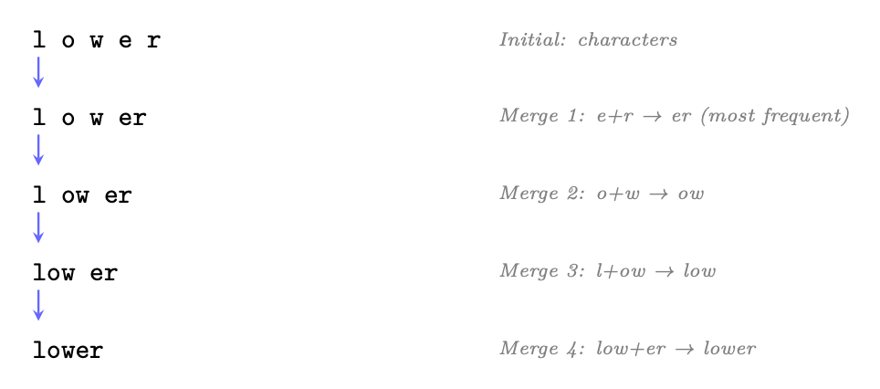
<em>图像来源：原 PDF 第 36 页，尺寸 964x426。</em></p>
<p><a id="page-037"></a></p>
<h2 id="37">第 37 页</h2>
<p>1.2.3 联合国
其他切入方法</p>
<p>表1.2:子词token化算法比较.</p>
<p>方法
用户
关键思想</p>
<p>溴化二苯醚
GPT-4 常规
<a class="citation" href="#ref-23">[23]</a>,
拉玛...
3 <a class="citation" href="#ref-25">[25]</a>,米斯特拉尔 <a class="citation" href="#ref-26">[26]</a>.
自下而上合并频繁对;
术语
单词Piece
贝特
<a class="citation" href="#ref-27">[27]</a>,
切换 -
贝特 <a class="citation" href="#ref-28">[28]</a>
类似于 BPE 但最大可能性
训练数据
Unigram LM 语言
判决Piece(T5 [29],
XLNet <a class="citation" href="#ref-30">[30]</a> (中文(简体) ).
从上而下:从大花花起,从花花起
根据可能性影响
字节级 BPE
GPT-2 <a class="citation" href="#ref-31">[31]</a> +
生字节上的 BPE( 无未知的token)
可能); 256个基词</p>
<p>1.2.4 国家
最佳做法</p>
<ol>
<li>
<p>词汇大小事项:32K是最小的;128K使多种语文的覆盖面得到改进;
代码处理。 Llama-3使用128K个符.</p>
</li>
<li>
<p>特殊标志:总是包括"bos","eos","pad","unk". 对于教学调整模型,
添加角色标记( QQuser , QQA )。</p>
</li>
<li>
<p>生育率:衡量各语种的每字token。 高生育率(每个字有许多token)
表明该语言的覆盖面不足。</p>
</li>
<li>
<p>永远不要跨越国界表示:应处理空间、点和数字
始终如一 大多数现代的标注器预置了空间标记(“the”)以区分单词初始
vs 续作符.</p>
</li>
<li>
<p>数字:为算术任务考虑数字级token化。
允许逐个数字进行推理。</p>
</li>
<li>
<p>代码:确保白空间(缩进)得到有效的标识。 Llama-3 表示为
空格作为单一token。</p>
</li>
</ol>
<p>1.2.5 国家
实践中的切入: 拥抱花样示例</p>
<p>Transformer库为所有活化器提供统一接口. 以下显示
用现代的 LLM 指示器编码和解码:</p>
<pre><code class="language-text">from
transformers
import
AutoTokenizer
</code></pre>
<pre><code class="language-text"># Load Llama -3 tokenizer
(128K vocabulary , byte -level BPE)
tokenizer = AutoTokenizer. from_pretrained ("meta -llama/Meta -Llama -3-8B")
</code></pre>
<pre><code class="language-text">text = " Reinforcement
learning
optimizes long -term
rewards."
</code></pre>
<pre><code class="language-text"># Encode: text -&gt; token IDs
token_ids = tokenizer.encode(text)
print(token_ids)
# [128000 , 29934 , 262, 11008 , 4815 , 6900 , 1317 , 9860 , 21845 , 13]
</code></pre>
<pre><code class="language-text"># Decode
individual
tokens to see subword
splits
tokens = tokenizer. convert_ids_to_tokens (token_ids)
print(tokens)
# [’&lt;| begin_of_text|&gt;’, ’Re ’, ’inforce ’, ’ment ’, ’ learning ’,
#
’ optimizes ’, ’ long ’, ’-term ’, ’ rewards ’, ’.’]
</code></pre>
<pre><code class="language-text"># Decode
back to text (round -trip)
reconstructed = tokenizer.decode(token_ids , skip_special_tokens =True)
</code></pre>
<p><a id="page-038"></a></p>
<h2 id="38">第 38 页</h2>
<pre><code class="language-text">assert
reconstructed == text
# Perfect
reconstruction
</code></pre>
<pre><code class="language-text"># Tokenize
with
attention
mask (for
batched
inputs
with
padding)
batch = tokenizer(
</code></pre>
<pre><code class="language-text">["Short
text.", "A much
longer
input
sentence
for
comparison."],
padding=True , return_tensors ="pt"
)
print(batch.keys ())
# dict_keys ([’ input_ids ’, ’attention_mask ’])
</code></pre>
<p>清单 1.1：使用 HuggingFace Transformer 进行分词编码/解码。</p>
<p>1.2.6
特殊标记和结构化提示</p>
<p>特殊标记是保留的词汇条目，带有结构意义而不是语言意义
内容。它们对于控制模型行为至关重要。</p>
<p>表 1.3：LLM 系列的常见特殊标记。</p>
<p>token
别名
目的</p>
<p><bos> / &lt;|文本开始|&gt;
博世
标记序列的开始
<eos> / &lt;|文本结束|&gt;
EOS
标记序列结束；停止生成
&lt;|用户|&gt;
—
标记用户开始聊天
&lt;|助理|&gt;
—
标记助手开始聊天
&lt;垫&gt;
PAD
将批次填充至统一长度；掩饰注意力力
&lt;朋克&gt;
恩克
词汇表外的占位符（BPE 中罕见）
[九月]
塞普
分隔段（BERT 风格）
[CLS]
CLS
分类标记（BERT）
[面膜]
面膜
用于 MLM 预训练的屏蔽token</eos></bos></p>
<p>指令调整模型的角色标记。
现代聊天模型使用特殊的token来
描绘对话结构。这些没有经过训练来携带语义意义——它们是
模型学习解析的结构分隔符：</p>
<pre><code class="language-text"># Llama -3 chat
template
messages = [
</code></pre>
<pre><code class="language-text">{"role": "system", "content": "You are a helpful
assistant."},
{"role": "user", "content": "Explain
PPO in one
sentence."},
]
</code></pre>
<pre><code class="language-text"># apply_chat_template
handles
all
special
token
insertion
prompt = tokenizer. apply_chat_template (messages , tokenize=False)
print(prompt)
# &lt;| begin_of_text |&gt;&lt;| start_header_id |&gt;system &lt;| end_header_id |&gt;
#
# You are a helpful
assistant .&lt;| eot_id |&gt;&lt;| start_header_id |&gt;user &lt;| end_header_id |&gt;
#
# Explain PPO in one
sentence .&lt;| eot_id |&gt;&lt;| start_header_id |&gt;assistant &lt;|
end_header_id|&gt;
#
#
</code></pre>
<p>清单 1.2：带有特殊token的聊天模板（Llama-3 格式）。</p>
<p>特殊token最佳实践</p>
<p>• 切勿拆分特殊标记：它们必须是原子的——确保您的标记生成器将它们视为
单个单元，而不是字符序列。</p>
<p>• 特殊token的掩码损失：在SFT期间，不要计算结构token的损失（角色
标记、分隔符）。模型不应该“学习”预测格式。</p>
<p><a id="page-039"></a></p>
<h2 id="39">第 39 页</h2>
<p>• 使用模板进行结构：通过特殊标记而不是对任务语义进行编码
自然语言指令。例如，&lt;|tool_call|&gt; 比“现在我将调用
工具：”。</p>
<p>• 工具/函数调用：定义专用标记，如&lt;|function|&gt;、&lt;|result|&gt;来创建
推理和行动之间有明确的界限。</p>
<p>• RL 中的一致处理：在 PPO/GRPO 期间，确保参考模型和 pol-
冰冷模型使用相同的分词和特殊的标记处理——不匹配损坏的 KL
计算。</p>
<p>• EOS 处理：在生成过程中，确保EOS 包含在操作空间中。如果
模型无法发出 EOS，响应无限增长（常见的 RL 失败模式）。</p>
<p>1.3
Transformer架构</p>
<p>Transformer <a class="citation" href="#ref-6">[6]</a> 是所有现代LLM的基础。了解其组成部分至关重要
掌握本指南中的每一个优化和训练方法。</p>
<p>1.3.1
高层结构</p>
<p>仅解码器Transformer通过嵌入、重复关注顺序处理token
化+FFN 块，以及词汇logits的最终投影。
图1.3显示了完整的
架构。</p>
<p>1.3.2
原始的编码器-解码器Transformer</p>
<p>Transformer 最初被引入<a class="citation" href="#ref-6">[6]</a>作为序列-解码器的编码器-解码器架构
排序任务（机器翻译、摘要）。虽然现代LLM主要使用
仅解码器变体（GPT 样式），了解完整的架构至关重要，因为跨
注意力力和隐藏的自注意力力力——两者都起源于这里——仍然是基本的组成部分。</p>
<p>编码器。
编码器双向处理整个输入序列——每个token都参与
到所有其他标记（无因果掩码）。这产生了丰富的上下文表示 Henc ∈Rn×d</p>
<p>其中每个位置编码有关完整输入的信息：</p>
<p>• 输入：token嵌入+正弦位置编码</p>
<pre><code class="language-math">• Each layer: Multi-Head Self-Attention →Add &amp; Norm →FFN →Add &amp; Norm
</code></pre>
<p>• 无因果掩码：位置 i 涉及所有位置 1,。。。 , n</p>
<p>• 输出：完整输入序列的上下文表示</p>
<p>解码器 - 屏蔽多头自注意力力。
解码器生成输出标记一
一个时间（自回归）。为了防止模型“看到未来”，模型中的自注意力力
解码器使用因果掩码：！</p>
<p>QKT</p>
<p>MaskedAttn(Q, K, V ) = softmax</p>
<p>V
(1.1)</p>
<p>√dk
+ 米</p>
<p>其中掩码 M 是：</p>
<pre><code class="language-math">Mij =
</code></pre>
<p>（0
如果 i ≥j （可以参加）
−∞
如果 i &lt; j（未来token — 被阻止）</p>
<p><a id="page-040"></a></p>
<h2 id="40">第 40 页</h2>
<p>图 1.3：仅解码器 Transformer 块（GPT 样式，Pre-Norm 变体）。每个子层（注意力，
FFN) 之前是 LayerNorm，后面是残差加法：x + SubLayer(LN(x))。本预规范
排序（Llama、GPT-3、Mistral 使用）无需热身即可稳定训练，这与原始的 Post-Norm 不同
（添加后应用 LayerNorm）。 L个相同的块被堆叠起来，然后是最终的LayerNorm
以及对词汇logits的线性投影。</p>
<p>为什么掩蔽很重要</p>
<p>在训练期间，解码器并行处理整个目标序列（教师强制），但是
每个位置必须只关注先前的位置以维持自回归属性。的
mask 确保生成标记 t 仅使用来自标记 1,...的信息。。。，t−1。据推理，
token是一一生成的，因此掩码是隐式的——但在训练过程中，它可以实现并行
计算同时保留因果关系。</p>
<p>解码器——交叉注意力力。
在屏蔽自注意力力之后，每个解码器层应用交叉
注意力解码器关注编码器的输出表示。这就是机制
解码器通过它“读取”输入：！</p>
<p>旺克
(1.2)</p>
<p>CrossAttn(Qdec, Kenc, Venc) = softmax</p>
<p>QdecKT
编码
√dk</p>
<p>• 查询来自解码器的前一个子层（屏蔽的自注意力力输出）</p>
<p>• 键和值来自编码器的最终输出 Henc</p>
<p>• 不应用掩码——每个解码器位置都可以处理每个编码器位置</p>
<p>• 这允许解码器在每一代动态地关注输入的不同部分
步骤（例如，在英语→西班牙语翻译为“gato”时注意力“cat”）</p>
<h3 id="_4">本页图像资源</h3>
<p>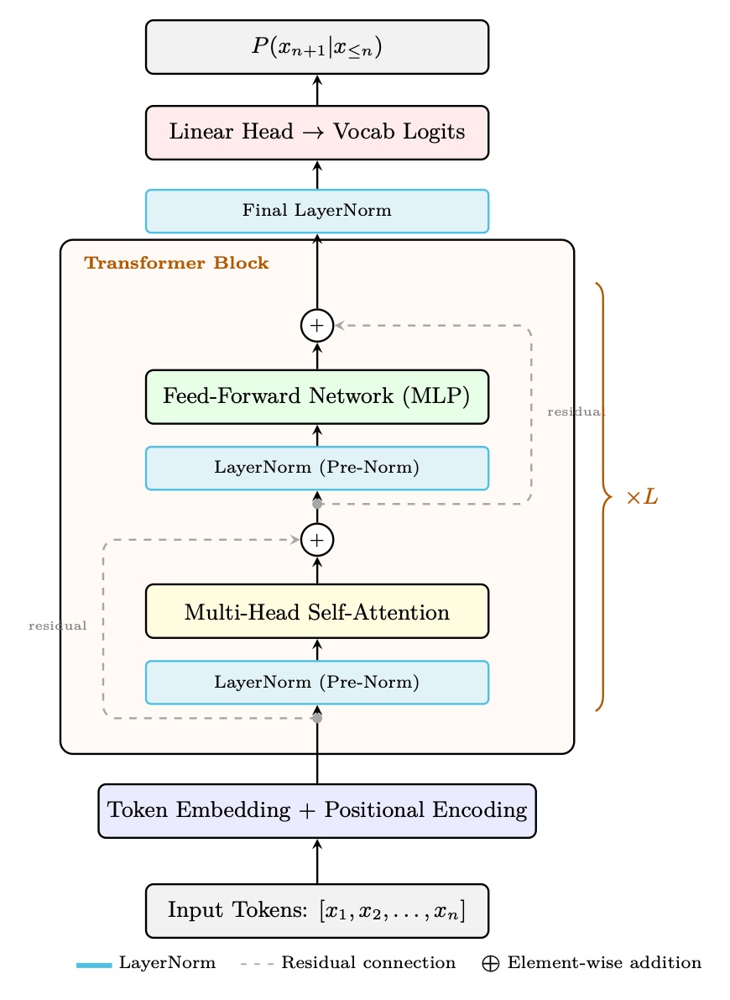
<em>图像来源：原 PDF 第 40 页，尺寸 870x1191。</em></p>
<p><a id="page-041"></a></p>
<h2 id="41">第 41 页</h2>
<p>图1.4:原Transformer建筑 (Vaswani等, 2017). 编码器( 左) 进程
以双向自动输入全部输入。 解码器( 右) 自动生成token
蒙蔽了自注意力力和交叉注意力 编码表达。 隐藏的盒子表示重复
层块 (×N); 灰色线条显示剩余连接绕过每个子层. 注:原始工作用途
后Norm(LayerNorm在剩余添加后应用:LN(x + SubLayer(x))),与现代LLMS不同.
使用预日。</p>
<p>全解码层.
每个解码层包含三个子层(编码器中为v.</p>
<ol>
<li>
<p>蒙面多头自留+残余+地层</p>
</li>
<li>
<p>多头相接(用于编码输出) + 残基+地层</p>
</li>
<li>
<p>Feed-Forward 网络+ 残基+地层</p>
</li>
</ol>
<p>从编码器-Decoder到解码器-Only.
现代LLM(GPT, Llama, Quen)只使用
解码器,完全去除编码器和相交层. 关键见解:
语言建模,一个单一的因果(被遮住)自留堆栈就足够了——模型学会了
编码上下文,并在单行道中生成续作. 这简化了建筑,训练,
和推理,同时更有效地推广。 编码器-解码器模型(T5, BART)仍然相关
具有不同投入/产出结构(翻译、总结)和交叉意向的任务
重新出现在多模式中,其中视觉编码器为语言解码器提供密钥/值.</p>
<h3 id="_5">本页图像资源</h3>
<p>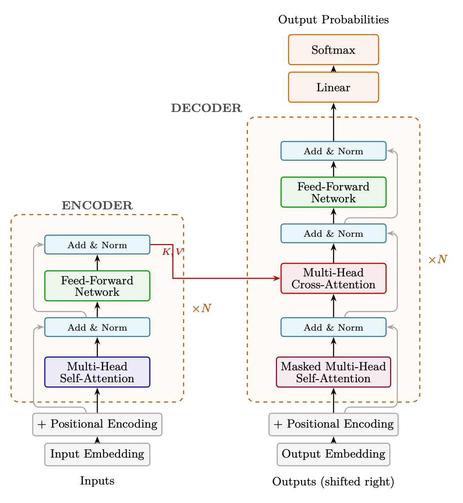
<em>图像来源：原 PDF 第 41 页，尺寸 1050x1141。</em></p>
<p><a id="page-042"></a></p>
<h2 id="42">第 42 页</h2>
<p>1.3.3
仅解码器与编码器-解码器</p>
<p>现代LLM几乎完全使用仅解码器架构，但了解其中的权衡
编码器-解码器设计阐明了原因。</p>
<p>建筑
示例
使用案例</p>
<p>仅解码器
GPT-4 <a class="citation" href="#ref-23">[23]</a>，骆驼 <a class="citation" href="#ref-25">[25]</a>，Mis-
特拉尔<a class="citation" href="#ref-26">[26]</a>、奎文<a class="citation" href="#ref-32">[32]</a>
自回归生成；占主导地位的
聊天/推理
编码器-解码器
T5 [29]、BART <a class="citation" href="#ref-33">[33]</a>、法兰-
T5 <a class="citation" href="#ref-34">[34]</a>
Seq2seq（翻译、摘要）；
现在不太常见
仅编码器
伯特 <a class="citation" href="#ref-27">[27]</a>、罗伯特 <a class="citation" href="#ref-35">[35]</a>
分类/嵌入；不适合一代
进化</p>
<p>为什么仅解码器获胜</p>
<p>仅解码器模型更简单（一种模型，一种损失），可扩展性更好（所有参数都贡献
到生成），并支持统一训练（预训练=下一个token预测=微调
目标）。编码器-解码器模型浪费了编码器上用于纯生成任务的容量。</p>
<p>1.3.4
嵌入：从离散token到连续空间</p>
<p>在进行任何关注或计算之前，Transformer必须将离散token ID 转换为
神经网络可以处理的连续向量。这就是嵌入层的作用。</p>
<p>什么是嵌入？
嵌入是离散向量的学习密集向量表示
token。而不是将“king”一词表示为大小为 |V| 的 one-hot 向量= 128,000（主要是
零），我们将其表示为 Rd 中的紧凑向量（例如 d = 4096），以捕获其含义。
关键见解：相似的概念会得到附近的向量。在训练有素的嵌入空间中：</p>
<p>• “国王”和“女王”很接近（都是皇室成员）</p>
<p>• “国王”和“自行车”相距甚远（无关）</p>
<p>• 矢量算术捕获关系：
⃗
国王 -
⃗
男人+
⃗
女人 ≈
⃗
女王</p>
<p>嵌入表。
实际上，嵌入层只是一个矩阵 E ∈R|V|×d，其中
第 i 行存储标记 i 的嵌入向量：</p>
<p>嵌入(xt) = E[xt] ∈Rd
(1.3)</p>
<pre><code class="language-text">For a sequence of token IDs [x1, x2, . . . , xn], embedding is a simple table lookup (indexing opera-
tion):
H0 = [E[x1]; E[x2]; . . . ; E[xn]] ∈Rn×d
</code></pre>
<p>在 Transformer 中嵌入表</p>
<p>• 尺寸：|V| × d。对于 Llama-3：128,256 × 4,096 = 525M 个参数（8B 模型的 6.5%）。</p>
<p>• 初始化：随机（Xavier/正常），然后通过反向传播学习。</p>
<p>• 权重绑定：许多模型与输出投影头共享嵌入矩阵：
头= ET。这可以保存参数并创建对称的编码-解码结构。</p>
<p>• 输入：tokenID（整数）→输出：Rd 中的密集向量。</p>
<p>• 梯度流：在训练过程中，仅考虑当前批次中token对应的行
接收梯度更新（稀疏更新）。</p>
<p><a id="page-043"></a></p>
<h2 id="43">第 43 页</h2>
<p>图 1.5：嵌入空间可视化（2D 投影）：语义相似的单词聚集在一起。
嵌入表在预训练期间学习这些位置，纯粹从共现中捕获含义
文本中的模式。</p>
<p>为什么嵌入有效</p>
<p>嵌入表是与模型的其余部分一起端到端学习的。因为模型是
经过训练来预测下一个标记，它必须学习以相似形式出现的标记的表示
上下文得到相似的向量。这就是分布假设：“你应该通过
它所保留的公司”<a class="citation" href="#ref-36">[36]</a>。嵌入层将这种统计结构压缩为密集的
几何。</p>
<p>各向异性问题。
使用预训练嵌入时会出现一个关键问题（例如，来自
BERT 或 GPT-2）用于下游任务，例如检索（RAG）或引导推荐系统：
学习到的表示是高度各向异性的——它们在嵌入中占据一个狭窄的圆锥体
空间而不是均匀分布在所有方向上<a class="citation" href="#ref-37">[37]</a>。
为什么这对应用程序很重要：</p>
<p>• RAG/检索：如果无论内容如何，所有嵌入的余弦相似度 &gt; 0.7，
检索排名几乎是随机的——系统无法区分相关和不相关
段落。</p>
<p>• 推荐系统：使用预训练的 LLM 嵌入来仅表示项目/用户
如果几何体保留有意义的相似结构，则有效。</p>
<p>• 聚类：各向异性嵌入会破坏聚类，从而无法发现自然的
分组。</p>
<p>解决方案：美白。
一个简单而有效的解决方法是白化[38]——一种线性变换
这使得嵌入分布各向同性（零均值，恒等协方差）：</p>
<p>〜h = D−1/2UT (h − µ)
(1.4)</p>
<p>其中 µ 是平均嵌入，UDUT 是协方差矩阵的特征分解
Σ = 1</p>
<p>氮
磷
i(hi−μ)(hi−μ)T。</p>
<h3 id="_6">本页图像资源</h3>
<p>
<em>图像来源：原 PDF 第 43 页，尺寸 857x639。</em></p>
<p><a id="page-044"></a></p>
<h2 id="44">第 44 页</h2>
<p>图 1.6：嵌入空间中的各向同性与各向异性。左：各向同性嵌入均匀分布，
使余弦相似度成为语义相关性的可靠度量。右：各向异性嵌入（如发现
在 BERT 中）聚类在一个窄锥体中，导致所有对都具有高余弦相似度，无论语义如何
内容。白化改变空间以恢复各向同性。</p>
<p>美白实践</p>
<p>• 作用：旋转和缩放嵌入空间，使所有方向具有相等的方差
（单位协方差）。</p>
<p>• 效果：余弦相似度变得有意义——语义相似的配对得分高，差异性大。
伊拉尔对得分较低。</p>
<p>• 额外好处：可以通过仅保留前 k 个特征向量来同时降低维度
（类似于PCA），使检索速度更快。</p>
<p>• 成本：需要在代表性语料库上计算协方差矩阵（一次性、
O(N·d2))。变换本身是推理时的简单矩阵乘法。</p>
<p>• 替代方法：对比微调 (SimCSE)、基于流的归一化或
使用促进各向同性的正则化器进行训练。</p>
<p>1.3.5
自注意力力机制</p>
<p>自注意力力是核心操作，它允许每个token关注网络中的每个其他token
序列，根据相关性计算加权组合。</p>
<p>缩放点积注意力力</p>
<p>给定输入序列 X ∈Rn×d，我们计算：</p>
<pre><code class="language-text">Q = XWQ,
K = XWK,
V = XWV
(WQ, WK, WV ∈Rd×dk)
</code></pre>
<p>来啊!</p>
<p>数量</p>
<p>五、结 论</p>
<p>注意力(Q, K, V) = 软马克斯</p>
<p>页:1
+ M 键</p>
<p>M是因果口罩(用于自递性模型): Mij = 0,如果i = j,否则 + .
直觉:所有前作token的每个token“出处”,计算其加权平均值。
基于查询键相似性的值。</p>
<p>计算复杂度.
天真的注意力力计算 依次有四重成本
长度 :</p>
<p>• 时间:O(n2-d)——计算QKT需要n2点产品,每个维度为dk.</p>
<h3 id="_7">本页图像资源</h3>
<p>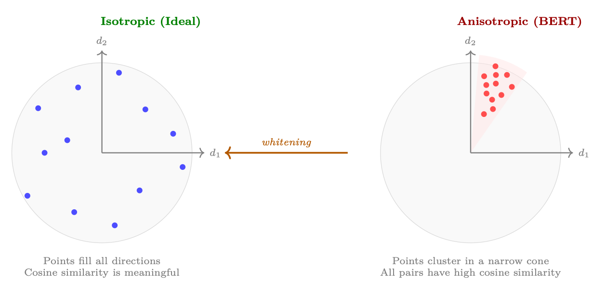
<em>图像来源：原 PDF 第 44 页，尺寸 1258x611。</em></p>
<p><a id="page-045"></a></p>
<h2 id="45">第 45 页</h2>
<p>• 记忆:O(n2)——必须实现全注意力力矩阵以应用软马克.</p>
<p>对于有d=4096的128K-token语境,仅关注矩阵为128K×128K=164亿.
条目 (64 GB in FP32). 这种四分法的缩放是长篇小说的根本瓶颈
LLM</p>
<p>表1.4:关注成本的分级:为什么天真的执行对于长的顺序来说是令人望而却步的。</p>
<p>序列长度
注意力行动
矩阵大小
实际影响</p>
<p>2K 调用
4分钟
16 个 MB
快; 符合 SRAM 中
8K 车次
6 400辆
256 MB (英语).
可用闪存管理
32K 号
1个B
4 个GB
需要内存高效内核
128K (英语).
16个B
64 GB (英语).
超过单 GPU HBM
1门
页:1
4 肺结核
没有子平方法就不可能</p>
<p>调试注意力力成本的方法。
几个解决方案的家族 解决这个四重奏
瓶颈 :</p>
<ol>
<li>
<p>准确关注IO意识(FlashAttention <a class="citation" href="#ref-7">[7]</a>): 不减少计算
复杂性,但消除了通过计算实现HBM中的正×正矩阵的必要性
在适合SRAM的瓷砖中注意力. 关键是,闪闪发光是正统的
它是一个执行引擎,而不是注意力模式。 生产系统
经常将闪存与滑动窗口或块分隔口罩相结合,获得两个IO
效率与降低的FLOP. 第1.6节详细介绍了算法。</p>
</li>
<li>
<p>滑动窗口/ 局部注意力:每个token只处理最接近的wtoken(例如,
w = 4096) (中文(简体) ). 成本变为O(n-w)-线性(n.)-由Mistral<a href="窗口=4096">26</a>使用;
长史<a class="citation" href="#ref-39">[39]</a>. 为提高效率而进行全球贸易;效果良好,因为大多数注意力力集中在当地。
在实践中。 在现代堆栈中,滑动窗口口罩被执行在一个 FlashAttention
内核.</p>
</li>
<li>
<p>Sparse 注意力模式:将本地窗口与周期性全局标志(例如,每个)结合
第512个token面向所有人). BigBird<a class="citation" href="#ref-40">[40]</a>和LongT5[41]使用这个. 保留一些远程
连接费用为O(n)n。 FlashAttention再次充当了核电站的内核
非零注意力力块。</p>
</li>
<li>
<p>线性注意力/状态-空间模型:将软马克斯(QKT)V替换为Q(Q)(K)TV
使用关联性,或重塑为再生(Mamba<a class="citation" href="#ref-42">[42]</a>,RWKV<a class="citation" href="#ref-43">[43]</a>)。 理论上
O(n-d2)共计。 与上述方法2-3不同,这些是改变
模型表达性——无软马克思的注意力从根本上来说,表现性较低,经验性较低。
这些模型在需要精确远程检索的任务上仍然落后于Transformer或
复杂推理.</p>
</li>
<li>
<p>KV缓存压缩:推理,压缩或驱逐旧的KV对来绑定 mem --
奥利
技术包括: H2O <a class="citation" href="#ref-44">[44]</a> (重重活口-只保留高能键),
流取LLM <a class="citation" href="#ref-45">[45]</a> (保留初始“注意力槽”token+最近窗口),并量化 KV
缓存 <a class="citation" href="#ref-46">[46]</a>.</p>
</li>
</ol>
<p>FlashAttenty + Sparse 模式 = 两个世界中最好的</p>
<p>一个常见的误解是"闪烁"(FlashAttention)是"很少注意力"的替代. 不是这样的
是一个IO优化 关注内核 自由编曲 任何关注口罩。
现代生产系统(如Mistral,DeepSeek)使用FlashAttenty作为执行引擎.
在滑窗下或挡板口罩下 这让你们俩都减少了FLOP(从
sparsity)和最佳内存访问模式(从tiling). 环意 <a class="citation" href="#ref-47">[47]</a> 扩展此选项
以多设备设置为基础,沿序列在 GPU 中分配平板计算</p>
<p><a id="page-046"></a></p>
<h2 id="46">第 46 页</h2>
<p>维度。
线性注意力和状态-空间模型(Mamba, RWKV)是一种真正不同的建筑
选择——他们牺牲了O(n)计算的全部对等交互。 虽然理论上很优雅
在知识密集型或远程推理任务方面,它们没有匹配Transformer的质量,
而前沿实验室继续使用精确的注意力(以闪光-注意力+斯皮克为主干)作为主干.</p>
<p>1.3.6 国家
多头注意力</p>
<p>而不是计算一个单一的注意力力功能,多头的注意力力是数个注意力力
并行操作,每个学习侧重于输入的不同方面(语法,语义,
页:1</p>
<p>多头注意力
使用 H 平行头与 d- 维度键/ 值来代替一个注意力功能
维度 dk = d/H:</p>
<pre><code class="language-math">MultiHead(X) = Concat(head1, . . . , headH)WO
</code></pre>
<p>每个头可以学习不同的关注模式(例如,一个头用于语法,另一个用于语义,
地点相近的另一种。
分组查询注意力(GQA):Llama-3 <a class="citation" href="#ref-25">[25]</a> 使用K,V头比Q头少(如:8).
KV头像共有32个Q头像). 这样可以将 KV 缓存大小减少 4x 并最小质量损失。</p>
<p>1.3.7 (单位:千美元)
位置编码</p>
<p>Transformer通过构造具有通向-等同性——没有位置信息,
模型无法区分“坐垫上的猫”和“坐垫上的猫”。 位置编码
注射序列-顺序信号,使注意力力能够解释token距离和方向.</p>
<p>表1.5:现代LLMs中的位置编码方法.</p>
<p>方法
用户
关键思想</p>
<p>阴性
原始Transformer
不同频率的固定罪
未有学道.
绝对学习
GPT-2 <a class="citation" href="#ref-31">[31]</a>, 贝特 <a class="citation" href="#ref-27">[27]</a>
在每个位置学习嵌入。 林 - 林 - 林 - 林
{\fn黑体\fs22\bord1\shad0\3aHBE\4aH00\fscx67\fscy66\2cHFFFFFF\3cH808080}去训练时间
ROPE( 旋转)
Llama <a class="citation" href="#ref-25">[25]</a>, Quen <a class="citation" href="#ref-32">[32]</a>, Mis-
拖车 <a class="citation" href="#ref-26">[26]</a>
旋转
问题,K
向量
以
职位 --
依赖角度。
通过外推法
NTK-意识放大.
阿利比语Name
BLOOM <a class="citation" href="#ref-48">[48]</a>, MPT <a class="citation" href="#ref-49">[49]</a> (中文(简体) ).
没有嵌入位置; 添加线性偏差
注意力分数 很简单
推理精通.</p>
<p>Sinusoidal (Fixed) 定位编码.
在原Transformer<a class="citation" href="#ref-6">[6]</a>中引入,此
方法在几何相距频率上使用固定的正弦函数:</p>
<p></p>
<p>PE(pos, 2i) = 罪过

用户
100002i/d (单位:千美元)</p>
<p>
, (中文(简体) ).
PE( pos, 2i+1) = cos

用户
100002i/d (单位:千美元)</p>
<p>其中pos是token位置, I是维度指数, d是模型维度.
动机:每个频率编码位置不同尺度(类似二进制计数).
作者假设,该模型可以学习处理相对位置,因为PE(pos+k)
可以用PE(pos)的线性函数表示.
Pros:零所学参数;决定;理论上支持任意长度.</p>
<p>计数 : 在实践中,不推理训练时间过长;模式必须学会
从绝对信号中间接解码相对位置; 基本被取代.</p>
<p><a id="page-047"></a></p>
<h2 id="47">第 47 页</h2>
<p>学会了绝对位置嵌入。
GPT-2<a class="citation" href="#ref-31">[31]</a>和BERT<a class="citation" href="#ref-27">[27]</a>使用:可学习
嵌入矩阵 Epos QQRLmax×d 添加到token嵌入中 :</p>
<pre><code class="language-math">h(pos)
0
= TokenEmbed(xpos) + Epos[pos]
</code></pre>
<p>动机:让模型了解任何职位代表对任务最有利,
而不是强加固定结构。
Pros: 最大灵活性; 简单执行; 往往大于sinusoidal的短短 se --
后结.</p>
<p>康斯:硬码最大长度 Lmax; 其外无一般化; 嵌入到末端附近
c. 添加 Lmax × d 参数。</p>
<p>旋转位置嵌入(ROPE).
RoPE <a class="citation" href="#ref-50">[50]</a> 通过旋转查询和密钥编码位置
2D 子空间中的向量 :</p>
<p></p>
<p></p>
<p></p>
<p></p>
<p></p>
<p></p>
<p></p>
<p></p>
<p>⊙</p>
<p>⊙</p>
<pre><code class="language-math">RoPE(xm, m) =
</code></pre>
<p>





</p>
<p>






+ 键</p>
<p>





</p>
<p>





</p>
<p>






</p>
<p>






</p>
<p>






</p>
<p>






</p>
<pre><code class="language-math">cos mθ1
cos mθ1
...
cos mθd/2
cos mθd/2
</code></pre>
<pre><code class="language-math">sin mθ1
sin mθ1
...
sin mθd/2
sin mθd/2
</code></pre>
<p>×(1) 国家
页:1
页:1
页:1
. . . . . . .
页:1
页:1
页:1
页:1</p>
<p>−x(2) (中文(简体) ).
页:1
×(1) 国家
页:1
. . . . . . .
−x(d)
页:1
页:1
页:1</p>
<p>i=10 000−2i/d和m为位置指数。 关键属性是点产品介于
旋转的查询和密钥只取决于相对位置 :</p>
<p>→ ROPE( qm, m), ROPE( kn, n) → f( qm, kn, m- n)</p>
<p>动机:在没有明确偏差条款的情况下实现相对位置编码,同时保持
兼容线性注意力和 KV- caching。
Pros:自然相对;无额外参数;与高效推理相兼容;可扩展
通过NTK-意识的缩放<a class="citation" href="#ref-51">[51]</a>或YARN(调整  碱基或插入频率)向更长的上下文。</p>
<p>康斯:每次注意力操作(旋转+互出);外推
需要明确的缩放策略; 2D 子空间的旋转会强制要求结构可能不是
最适合所有任务。</p>
<p>RoPE 长度扩展</p>
<p>将L训练的ROPE模型扩展至上下文长度L ' &gt; L:</p>
<p>• 职位内插:按L/L ' 调整职位,因此所有职位都适合[0,L]。 很简单
压缩分辨率。</p>
<pre><code class="language-math">• NTK-aware scaling: Increase the θ base (e.g. 10000 →10000 · (L′/L)d/(d−2)), effectively
stretching high-frequency components while preserving low-frequency ones.
</code></pre>
<p>• YaRN <a class="citation" href="#ref-51">[51]</a>：将 NTK 缩放与注意力温度校正相结合 t = 0.1 ln(s)+1
以补偿较长距离处增加的熵。</p>
<p>ALiBi（具有线性偏差的注意力力）。
ALiBi <a class="citation" href="#ref-52">[52]</a>采取了一种完全不同的方法：不
位置嵌入。相反，从注意力力分数中减去静态线性惩罚：！</p>
<p>QKT</p>
<p>V</p>
<p>注意力力（Q，K，V）= softmax</p>
<p>我,j</p>
<p>√dk
−m·
|i−j|</p>
<p>其中 m 是头部特定的斜率（几何设置：mh = 2−8h/H 对于 H 总的头部 h）。偏见
-m|i -j|创建一个柔软的局部注意力窗口，其宽度因头部而异。</p>
<p><a id="page-048"></a></p>
<h2 id="48">第 48 页</h2>
<p>动机:立场应使注意力力偏重于附近的标志(先于重要性),而不需
干扰嵌入空间。 AliBi通过纯粹在关注点空间操作,避免
带有位置信号的污染标志
Pros:极长外推法(训练为1k,工作为8k+);零参数;小到
执行; 头特有坡度给出多尺度位置。</p>
<p>Cons: 对于需要精确的远距离位置推理的任务(例如“什么是......”),表述较少。
第5个字”);线性衰变是一种强烈的诱导偏差,可能不适用于所有域;
由于ROPE的短文性能更好,</p>
<p>表1.6:位置编码比较:实际取舍.</p>
<p>阴性
学会了Abs。
办公室
阿利比语Name</p>
<p>额外参数
无
缩略语 × d
无
无
职位类型
绝对
绝对
相对
相对
(单位:千美元)
法定)
长度外推法
穷
无
好(w/ scal --)
电话铃声)
不错</p>
<p>计算间接费用
被忽视
被忽视
小型
被忽视
统治时代
2017–19 (英语).
2018–20 (中文(简体) ).
2022年至今 (中文(简体) ).
2022–23 (中文(简体) ).</p>
<p>放大到极长的上下文(100K-1M+) 页:1
现代前沿模式
(Claude <a class="citation" href="#ref-53">[53]</a> 有200K–1M上下文,双子座 1.5 <a class="citation" href="#ref-54">[54]</a> at 1M+, GPT-4 <a class="citation" href="#ref-23">[23]</a> at 128K) 需要 po-
坚守不渝的编码 远远超出训练长度 今天的主要解决办法是:</p>
<ol>
<li>频率比标的ROPE:将ROPE扩大到训练以外的标准方法
长度。 基准测试频率不是再训练,而是调整:</li>
</ol>
<p>页:1</p>
<pre><code class="language-math">θ′
i = θi ·
Ltarget
</code></pre>
<p>火车</p>
<p>备选案文包括:</p>
<p>• 线性缩放(扩散)<a class="citation" href="#ref-55">[55]</a>: 简单地将位置指数除以 s.
费用低廉,但高扩展率会降低质量。
• 提高NTK的认识<a class="citation" href="#ref-51">[51]</a>: 缩放基频 = 10000- 10000- sd/(d−2).
在扩展低频(全球)范围的同时,保留高频(局部)信息.
• YARN <a href="Yet another RoPE extensiON">51</a>: 将 NTK 缩放和注意力
温度校正和微调 一个小长文体。 由Llama-3公司使用
从8K训练扩大到128K部署。
• 动态NTK <a class="citation" href="#ref-51">[51]</a>: 根据实际序列调整飞行时的缩放系数
推理时的长度。 不需要固定的扩展比例——模型随着上下文的增长而适应.</p>
<ol start="2">
<li>
<p>继续就长期数据进行预训:即使采用ROPE的缩放方式,模型也受益于
长文件的短期持续预训阶段(1至5Btoken)。 这教模型
实际使用远处的上下文, 不只是在位置上容忍它。 Llama-3.1 使用了渐进式
时间表:8K~64K~128K.</p>
</li>
<li>
<p>环向注意力/阻断平行<a class="citation" href="#ref-47">[47]</a>: 对于超过单GPU内存的序列
(1M+token), Ring Content在环形地理学中通过GPU分配序列. 每个
GPU持有一个块并绕环通过KV块,计算出局部的注意力瓦. 这个
允许线性内存与 GPU 计数相缩放,同时保留精确的注意力.</p>
</li>
<li>
<p>混合结构:有些系统结合了多数地方滑动窗口(如4K)
分层,在选定的分层(例如每4分层)有充分的注意力。 这提供了O(n)-w)成本
大多数计算同时维持全球信息流动。</p>
</li>
</ol>
<p><a id="page-049"></a></p>
<h2 id="49">第 49 页</h2>
<p>长上下文</p>
<p>1M上下文长度的模型不一定能有效地使用所有1Mtoken. " 损失在
“中间”现象<a class="citation" href="#ref-56">[56]</a>表明,模型往往侧重于长的起止。
环境,中间信息利用不足. 有效利用长文要求两者
对奖励远程检索的任务进行位置编码支持和训练。</p>
<p>1.3.8 国家
Feed-Forward 网络 (MLP)</p>
<p>每个Transformer区块包含一个独立应用于每个位置的MLP:</p>
<p>FFN(x) = W2 + (W1x + b1) + b2</p>
<pre><code class="language-math">where W1 ∈Rd×4d, W2 ∈R4d×d. Modern LLMs use:
</code></pre>
<p>• SwiGLU活化:FFN(x) = W2(Swish(W1x) QQW3x)——由Llama <a class="citation" href="#ref-25">[25]</a>,Mistral <a class="citation" href="#ref-26">[26]</a>所使用.
需要3个重量矩阵,但表现更好。</p>
<p>• 隐藏的维度一般为8/3×d(为Tensor Core效率,四舍五入为256倍)。</p>
<p>FFN 作为内存</p>
<p>最近的工作<a class="citation" href="#ref-57">[57]</a>建议FFN地层起到键值内存的作用: W1行是键 (patters)
,W2列是值(信息到输出)。 FFN“检索”储存的知识
基于当前隐藏状态。</p>
<p>1.3.9 国家
层态化</p>
<p>地层正常化通过将特性层面的活性化稳定了训练. 内容
相对于关注/FFN子层的安置对训练动态有重大影响。</p>
<p>(原始内容存档于2018-10-21). How LayerNorm Works.
鉴于一个隐藏的状态向量x QQRd(一个单一token的表示),
图层Norm <a class="citation" href="#ref-58">[58]</a> 计算:</p>
<p>图层Norm(x) = γ ⊙
页:1
√</p>
<pre><code class="language-math">σ2 + ϵ + β
(1.5)
</code></pre>
<p>其中:</p>
<p>• 微克=1
D. 国家
页:1
i=1 xi(平均跨越d特征维度)</p>
<p>• 第3行=1个
D. 国家
页:1
i=1(x QQ)2(不同特征的变异)</p>
<pre><code class="language-math">• γ, β ∈Rd are learned scale and shift parameters (per-dimension)
</code></pre>
<p>• 防止零除法</p>
<p>与 BatchNorm 的关键区分: LayerNorm 跨越 a 的特征维度正常化
单例,不跨批. 这使得它独立于批量大小,工作原理相同
在训练和推理。</p>
<p>RMSNorm——"现代简化".
RMSNorm <a class="citation" href="#ref-59">[59]</a> 放弃了中枢步骤,
仅按根- 平均平方 进行正态化 :</p>
<p>D. 国家
页:1</p>
<p>页:1
欧
欧
图1</p>
<p>D. 国家</p>
<p>RMSNorm(x)=γ
页:1
RMS(x), (中文(简体) ).
RMS(x) = (中文(简体) ).</p>
<pre><code class="language-math">i=1
x2
i
(1.6)
</code></pre>
<p>没有β(相变)参数,也没有平均减法——只是比例. 这样可以节省一个削减操作
每个token,在GPU上速度快于 5-10%,同时达到等同的模型质量。 所有现代
LLM (Llama, Mistral, Quen) 使用RMSNorm. 中国植物物种信息数据库.</p>
<p><a id="page-050"></a></p>
<h2 id="50">第 50 页</h2>
<p>前利国与后利国</p>
<p>• LN后(原Transformer):h + LayerNorm(Attn(h))。
需要小心地取暖;
训练可能不稳定。</p>
<p>• LN前(GPT-2+,所有现代LLM):h+Attn(LayerNorm(h))。 稳定训练;
高等教育率。</p>
<p>• RMSNorm(Llama <a class="citation" href="#ref-25">[25]</a>,Mistral <a class="citation" href="#ref-26">[26]</a>): 简化无中间中心层 :
RMSNorm (x) = x/RMS (x) → γ. 速度稍快,质量相同.</p>
<p>深层网络为何正常化事项</p>
<p>没有正常化,活化物往往会通过地层成倍地增长或收缩(explode -
活化剂)。 128层的无层Transformer
第一层和最后一层之间变化为1030×. 常态化限制每层输出
可以预测的范围,使梯度流动稳定,使优化者能够使用一致的
整个网络的学习率。</p>
<p>1.3.10 (中文(简体) ).
模型大小参考</p>
<p>下表汇总了广泛使用的开放式模型的主要建筑参数.
(截至2025年的最新版本),为理解规模和设计选择提供了快速参考.</p>
<p>表1.7:流行开放量级LLMS(2024–2025代)的建筑参数.</p>
<p>型号
参数
层
D. 国家
头
车牌
头
A. 背景情况</p>
<p>拉玛-3.1 8B <a class="citation" href="#ref-25">[25]</a>
页:1
第32条
4096 (英语).
第32条
第8条
128K (英语).
拉玛-3.1 405B <a class="citation" href="#ref-25">[25]</a>
405B (英语).
126 (韩语).
16384 (英语).
128页
第8条
128K (英语).
拉马-4 马华克 <a class="citation" href="#ref-60">[60]</a>
400B (17B) (中文(简体) ).
活动)
第48条
第5120号
第40条
第8条
1门</p>
<p>大雾2 <a class="citation" href="#ref-61">[61]</a>
123B (韩语)
88国道
12288 (英语).
96 (韩语).
第8条
128K (英语).
Quen-2.5 72B <a class="citation" href="#ref-32">[32]</a> (中文(简体) ).
72B (中文(简体) ).
80个
8192 (韩语).
64国道
第8条
128K (英语).
深搜索-V3 <a class="citation" href="#ref-62">[62]</a>
671B (37B) (中文(简体) ).
活动)
页:1
7168 (中文(简体) ).
128页
司法协助
128K (英语).</p>
<p>注:带有“活性”参数的模型使用“专家组合”架构-
总参数表示模型容量,而活性参数则反映每个计算成本。
DeepSeek-V3 使用多头 Latent 注意力 (MLA) 而不是标准 GQA,压缩 KV
进入一个低级的潜在空间。</p>
<p>1.3.11 联合国
注意力病变</p>
<p>虽然关注机制很强大,但它显示了从业人员的系统性失败模式
必须理解,特别是在扩展到长期背景或解释模式行为时。</p>
<p>注意力沉入水中</p>
<p>现象.
Xiao等人<a class="citation" href="#ref-63">[63]</a>发现Transformer模型分配不成比例
无论语义内容如何, 连
当第一个标志是无意义的 " BOS " 标记时, 注意力会始终贯穿所有层次
注意力它,有时用总注意力力质量的20-50%。</p>
<p>为什么会这样
软最大注意力必须产生有效的概率分布( P)
j αj=1 (中文(简体) ).
当没有密钥与查询特别相干时,该模型需要用于未使用的“倾斜”位置
注意力质量。 在训练期间,第一个标志会变成这个默认的槽,因为它总是存在的
和位置可以预测。 它的作用是不注意力目标——模型已经学会了路由
而不是不可预测地分发。</p>
<p><a id="page-051"></a></p>
<h2 id="51">第 51 页</h2>
<p>α下沉 =
exp(q⊤k0/
√</p>
<p>n
（即使 k0 在语义上不相关）</p>
<p>d)
≫1</p>
<p>d)
磷
j exp(q⊤kj/
√</p>
<p>后果。</p>
<p>• 流推理失败：使用滑动窗口 KV 缓存时，逐出第一个token
造成灾难性的困惑——模型失去了注意力力。</p>
<p>• 误导性的解释性：天真的注意力力可视化表明第一个标记是“重要的”
tant”，当它仅仅是一个数学制品时。</p>
<p>• 上下文窗口浪费：sink token 占用了一个 KV 缓存槽，没有携带有用的内容
信息。</p>
<p>解决方案。</p>
<p>• StreamingLLM <a class="citation" href="#ref-63">[63]</a>：始终将前 k 个token（“注意力力接收器”）保留在 KV 缓存中
与最近的滑动窗口一起。使用有限内存实现无限长度生成。</p>
<p>• 设计中的接收器token：某些型号（例如 Mistral）在
明确旨在吸引剩余注意力力的训练。</p>
<p>• Softmax 替代方案：用 ReLU 注意力力或 sigmoid 门控替换 softmax，其中零
无需转储目标即可表示注意力力。</p>
<p>注意力力稀释</p>
<p>的现象。
随着序列长度 n 的增长，每个查询必须分配其注意力力预算
跨更多键。每个 token 的平均注意力力权重以 O(1/n) 的形式减小，使其逐渐减小
模型更难专注于少数真正相关的位置——这个问题被称为注意力力
稀释或注意力力扩散<a class="citation" href="#ref-56">[56]</a>。</p>
<p>“迷失在中间”效应。
刘等人。 <a class="citation" href="#ref-56">[56]</a>表明LLM表现出 U 形检索
曲线：位于长上下文开头或结尾的信息可以可靠地检索，但信息
中间的部分经常被忽视。这是注意力力稀释的直接后果
RoPE/ALiBi 的位置偏差：</p>
<p>为什么会发生。</p>
<p>• Softmax 饱和度：通过很多键，softmax 温度有效降低，使得
分布更均匀（熵）。</p>
<p>• 位置衰减：RoPE 的相对位置编码引入了自然衰减
距离，抑制对远离起点和终点的中间位置的注意力力。</p>
<p>• 训练分布：在较短序列上训练的模型会产生有偏差的注意力力模式
针对最近的情况。</p>
<p>缓解策略。</p>
<p>• 显式检索：将相关上下文放在提示的开头或结尾；使用 RAG 来
避免依赖中间位置。</p>
<p>• 长上下文训练：对长文档进行训练，其中关键信息的位置各不相同。
化<a class="citation" href="#ref-64">[64]</a>。</p>
<p><a id="page-052"></a></p>
<h2 id="52">第 52 页</h2>
<p>• 分层注意力力：Mamba <a class="citation" href="#ref-65">[65]</a> 或 RWKV 等架构避免了 O(n2)
注意力力完全瓶颈。</p>
<p>• 地标标记：在上下文中插入可检索的标记，充当“路标”
注意力。</p>
<p>• 温度缩放：一些实现通过 log n 缩放注意力力 logits 以抵消
长序列的稀释。</p>
<p>其他注意力现象</p>
<p>表 1.8：在大型Transformer中观察到的其他注意力力模式。</p>
<p>图案
描述
寓意</p>
<p>并非所有的头脑都同样重要；
许多可以修剪</p>
<p>注意力头部专业化
不同
头
学习
dis-
色调角色：
语法头，
共同参考头，位置
头 <a class="citation" href="#ref-66">[66]</a></p>
<p>损害表达能力；由参加者解决
化多样性损失</p>
<p>感应头
头
那个
实施
[A][B]...[A] →[B] 复印 <a class="citation" href="#ref-67">[67]</a>
对于情境学习至关重要；出现
在 2 层+ 模型中
注意力力崩溃
在深度网络中，注意力力
分布可以收敛（所有
负责人担任相同职位）</p>
<p>解释为什么修剪某些头部
引起幻觉尖峰</p>
<p>检索头
特定负责人专门从事重新
检索事实信息
从上下文来看<a class="citation" href="#ref-68">[68]</a></p>
<p>1.3.12
可视化注意力力以提高可解释性</p>
<p>注意力力权重为模型推理提供了一个窗口，但必须仔细解释。</p>
<p>注意力力可视化方法</p>
<p>原始注意力力图。
最简单的方法：绘制 n×n 注意力力矩阵 A = softmax(QK⊤/
√</p>
<p>d)
作为每个头和层的热图。像 BertViz <a class="citation" href="#ref-69">[69]</a> 这样的工具渲染交互式多头可视化
系统蒸发散。</p>
<p>关注推出。
单层的原始注意力力具有误导性，因为信息流经
所有层的残余连接。 Abnar 和 Zuidema <a class="citation" href="#ref-70">[70]</a> 提出注意力力部署：乘法
跨层的注意力力矩阵来近似从输入到输出的总信息流：</p>
<p>R(l) = A(l) · R(l−1),
R(0) = 我</p>
<p>其中 A(l) 是第 l 层的（各个头的平均）注意力力矩阵，经过调整以包括残差
连接： A(l) = 0.5 · A(l)
原始 + 0.5·I。</p>
<p>梯度加权注意力力。
将注意力力权重与梯度信息相结合来识别
哪些出席token实际上影响输出<a class="citation" href="#ref-71">[71]</a>：</p>
<pre><code class="language-math">Relevance(i) = αi ·

∂y
∂hi
</code></pre>
<p>这解决了关于高度关注QQ高影响力的批评(一个象征可以被高度关注).
但通过近零重量的路径处理。</p>
<p><a id="page-053"></a></p>
<h2 id="53">第 53 页</h2>
<p>注意力不是解释</p>
<p>Jain 和 Wallace <a class="citation" href="#ref-72">[72]</a> 表明注意力力权重通常与基于梯度的相关性不相关
特征重要性，并且对抗性注意力力分布可以产生相同的输出。
使用注意力力可视化作为假设生成器，而不是作为忠实的解释。对于因果
归因，更喜欢基于梯度的方法、探测或机械解释。</p>
<p>稀疏自动编码器 (SAE) 的机械可解释性</p>
<p>可解释性问题。
Transformer MLP 和残差流中的各个神经元是
通常是多语义的——单个神经元会激活多个不相关的概念（例如，“颜色
蓝色和学术引文以及单词“the””）。这使得直接神经元级别的解释
不可靠。</p>
<p>稀疏自动编码器。
坎宁安等人。 <a class="citation" href="#ref-73">[73]</a> 和布里肯等人。 <a class="citation" href="#ref-74">[74]</a>证明训练
模型激活上的稀疏自动编码器（SAE）可以将多语义表示分解为
单语义特征——每个对应于一个概念的可解释方向：</p>
<p>h = Wdec · ReLU(Wenc · x + benc) + bdec</p>
<p>其中 Wenc ∈Rm×d 且 m ≫d （过完备基础），并且 ReLU + 稀疏性惩罚确保
每个输入仅激活少数功能。</p>
<p>SAE 可解释性的主要发现：</p>
<p>• 特征是单义的：每个特征都编码一个人类可解释的概念（“代码在
Python，”“提到金门大桥”，“第一人称叙述”）<a class="citation" href="#ref-74">[74]</a>。</p>
<p>• 特征是可操纵的：将特征的激活钳制为高/低直接控制模型行为
（例如，强制启用“金门大桥”功能会使模型在每个
响应）<a class="citation" href="#ref-75">[75]</a>。</p>
<p>• 特征组合：简单特征的组合产生复杂的行为。</p>
<p>• SAE 量表：Templeton 等人。 <a class="citation" href="#ref-75">[75]</a> 在 Claude 3 Sonnet 上训练有多达 34M 个特征的 SAE，
寻找安全相关概念的可解释特征（欺骗、阿谀奉承、危险
要求）。</p>
<p>SAE 训练秘诀</p>
<ol>
<li>从大型语料库的特定模型层收集激活。</li>
</ol>
<pre><code class="language-math">2. Train a sparse autoencoder with L1 penalty on the hidden layer: L = ∥x −ˆx∥2
2 + λ∥z∥1.
</code></pre>
<ol start="3">
<li>
<p>学习到的编码器方向（Wenc 行）是候选特征。</p>
</li>
<li>
<p>验证：对于每个功能，找到最大激活示例并检查语义一致性。</p>
</li>
<li>
<p>可选：测量特征吸收和死特征以评估 SAE 质量。</p>
</li>
</ol>
<p>自然语言自动编码器（Anthropic，2026）</p>
<p>虽然 SAE 将激活分解为可解释的向量，但它们的特征仍然需要人类
检查最大激活示例以了解。 Anthropic’s Natural Language Autoencoders
（NLAE）<a class="citation" href="#ref-76">[76]</a>采取了一种根本不同的方法：他们用
自然语言描述，使可解释性自动化。</p>
<p><a id="page-054"></a></p>
<h2 id="54">第 54 页</h2>
<p>NLAE 的工作原理。</p>
<ol>
<li>
<p>编码器：语言模型读取隐藏的激活（或输入文本）并生成
活跃概念的自然语言描述：例如，“文本讨论法国美食
and uses formal academic tone.”</p>
</li>
<li>
<p>解码器：第二语言模型读取自然语言描述并重建
原始激活（或预测下一个标记）。</p>
</li>
<li>
<p>训练：编码器和解码器都经过端到端训练，以最小化重建损失，
瓶颈是可变长度的自然语言字符串而不是稀疏向量。</p>
</li>
</ol>
<p>相对于 SAE 的优势。</p>
<p>• 自解释：功能实际上是自然语言——无需手动标记。</p>
<p>• 组合性：可以表达复杂的、相关的概念（“对事实的讽刺性反应”）
声称”）SAE 特征不能表示为单一方向。</p>
<p>• 分层：描述可以捕获细粒度（字级）和粗粒度（文档级）。
level) 相同表示中的属性。</p>
<p>• 可审计：瓶颈描述是人类可读的，可以直接检查什么
information the model “thinks” is present.</p>
<p>局限性。
NLAE 引入了循环中的语言模型，使它们在计算上更加出色
令人深思熟虑，并且可能会受到与任何模型生成的解释相同的忠实度问题的影响。
它们也不能轻易地表示子token特征（几何图案、精确的数值）
SAE 自然地处理为激活幅度。</p>
<p>可解释性堆栈</p>
<p>将可解释性工具视为层次结构：</p>
<ol>
<li>
<p>注意力力图：“模型在看什么？” （最便宜，最不忠诚）</p>
</li>
<li>
<p>探测分类器：“这一层编码了什么信息？”</p>
</li>
<li>
<p>稀疏自动编码器：“哪些单语义特征是活跃的？” （可扩展，需要
人类标签）</p>
</li>
<li>
<p>自然语言自动编码器：“模型认为正在发生什么？” （自
口译，费用昂贵）</p>
</li>
<li>
<p>因果追踪/修补：“哪些组件实际上导致了此输出？” （大多数
忠诚，最昂贵）</p>
</li>
</ol>
<p>每个级别都在成本、可扩展性和解释的忠实度之间进行权衡。</p>
<p>1.4
预测头：变形金刚输出什么</p>
<p>转换器主体为每个位置生成上下文隐藏状态 ht ∈Rd。我们做什么
通过这些隐藏状态（预测头）来定义任务。 The same transformer backbone
只需交换头部即可实现完全不同的目的。</p>
<p>1.4.1
语言建模主管（预训练）</p>
<p>标准 LM 头将最终隐藏状态投影到词汇 logits 并进行交叉训练
entropy loss over the next token:</p>
<p><a id="page-055"></a></p>
<h2 id="55">第 55 页</h2>
<p>图 1.7：相同的 Transformer 主干通过交换预测头来支持不同的任务。全部
本文中使用的三个头在最终投影层下方共享相同的架构。</p>
<p>P(xt+1|x≤t) = softmax(Whead·ht + b)
(1.7)</p>
<p>其中 Whead ∈R|V|×d （通常与嵌入矩阵相关：Whead = ET）。</p>
<p>LM 头属性</p>
<p>• 训练目标：因果语言建模（预测每个位置的下一个标记）</p>
<p>• 损失：LLM = −1
时间
PT
t=1 log P(xt|x&lt;t)</p>
<p>• 标签：每个标记既是输入（右移）又是目标（左移）</p>
<p>• 用于：大型语料库（数万亿个token）的预训练</p>
<p>• 关键见解：模型学习一般语言理解作为下一个token的副产品
预测</p>
<p>1.4.2
条件生成头（SFT/指令跟踪）</p>
<p>对于监督微调 (SFT)，其架构与 LM 头相同——相同的线性
投影到词汇logits。差异纯粹在于我们计算损失的内容：</p>
<p>|y|
X</p>
<p>LSFT = −1</p>
<p>|y|</p>
<pre><code class="language-text">t=1
log P(yt|xprompt, y&lt;t)
(1.8)
</code></pre>
<p>条件头 – 与 LM 头的主要区别</p>
<p>• 丢失屏蔽：仅计算响应token的丢失，而不计算提示/指令的丢失。的
提示提供上下文但没有梯度信号。</p>
<p>• 调节：模型学习根据特定指令生成响应
格式（系统提示、用户查询、工具调用）。</p>
<p>• 格式标记：特殊标记（&lt;|user|&gt;、&lt;|assistant|&gt;）指导模型生成
结构化输出。</p>
<p>• 用于：对策划的指令-响应对进行SFT；也在 RL 策略生成期间
（制定行动/响应的政策负责人）。</p>
<p>相同的头部 - 不同的训练信号</p>
<p>LM 头和 SFT 头在结构上相同（相同的 Whead）。唯一的区别是
在 SFT 期间，我们掩盖了提示token的损失。这种微妙的变化改变了一般文本
预测器变成了遵循指令的助手。大脑学习“激活”不同的一代
基于条件环境的模式。</p>
<h3 id="_8">本页图像资源</h3>
<p>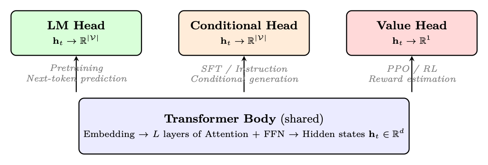
<em>图像来源：原 PDF 第 55 页，尺寸 1113x377。</em></p>
<p><a id="page-056"></a></p>
<h2 id="56">第 56 页</h2>
<p>1.4.3
值头（RL 回归）</p>
<p>在强化学习（PPO、GRPO）中，我们需要估计一个状态有多好——这需要一个
标量输出，而不是词汇logits。值头用简单的替换了 LM 投影
回归层：</p>
<p>V (st) = wT
值 · ht + b ∈R
(1.9)</p>
<p>其中 wvalue εRd 且 b εR。
值头属性</p>
<p>• 输出：单个标量（该状态的预期累积奖励）</p>
<p>• 损失：预测回报与实际回报之间的 MSE：LV = 1
时间
磷
t(V(st)−Rt)2</p>
<pre><code class="language-math">• Architecture: Linear layer Rd →R1 (sometimes with a small MLP: d →256 →1)
</code></pre>
<p>• 主干共享：通常与策略共享Transformer主体（使用单独的
value head），或者使用完全独立的批评者网络</p>
<p>• 用于：PPO 优势估计 (GAE)、奖励模型评分</p>
<p>1.4.4
头选择总结</p>
<p>表 1.9：本文中使用的预测头及其训练环境。</p>
<p>头
输出
损失
舞台
目的</p>
<p>LM头
右|V|
交叉熵
（所有token）
预训练
学习语言
来自原始文本
条件头
右|V|
交叉熵
（仅回复）
快速傅里叶变换
学会跟随
说明
价值头
R1
均方误差
RL (PPO)
估计
状态
先进的价值
塔格
奖励头
R1
配对排名
RM训练
分数
回应
品质</p>
<p>头部初始化很重要
当向预训练的 LM 添加值头时，将其初始化为接近零（小的随机权重）。
如果使用较大的值进行初始化，则初始值估计将出现严重错误，从而导致巨大的损失
优点和PPO更新不稳定。常见做法：初始化最终线性层
N(0, 1/
√</p>
<p>d) 或简单地为零。</p>
<p>1.4.5
HuggingFace 实施</p>
<pre><code class="language-text">from
transformers
import (
AutoModelForCausalLM ,
# LM head (pretraining + SFT)
AutoModelForSequenceClassification ,
# Reward
head
AutoTokenizer ,
)
from trl import
AutoModelForCausalLMWithValueHead
# Value
head (PPO)
import
torch
</code></pre>
<pre><code class="language-text">model_name = "meta -llama/Llama -3.1 -8B-Instruct"
tokenizer = AutoTokenizer. from_pretrained (model_name)
</code></pre>
<pre><code class="language-text"># === 1. LM Head (Pretraining / SFT) ===
# The default
CausalLM
model
-- projects
hidden
states to vocab
logits
lm_model = AutoModelForCausalLM . from_pretrained (
</code></pre>
<p><a id="page-057"></a></p>
<h2 id="57">第 57 页</h2>
<pre><code class="language-text">model_name ,
torch_dtype=torch.bfloat16 ,
device_map="auto",
)
# lm_model.lm_head: Linear(hidden_size
-&gt; vocab_size)
# Output: logits of shape (batch , seq_len , vocab_size)
</code></pre>
<pre><code class="language-text">inputs = tokenizer("The
capital of France is", return_tensors ="pt")
outputs = lm_model (** inputs)
next_token_logits = outputs.logits [:, -1, :]
# (batch , vocab_size)
probs = torch.softmax(next_token_logits , dim=-1)
</code></pre>
<pre><code class="language-text"># === 2. Conditional
Head (SFT) ===
# Architecturally
identical to LM head -- difference is in loss
masking
# During SFT , we only
compute
loss on response
tokens:
messages = [
</code></pre>
<pre><code class="language-text">{"role": "user", "content": "What is 2+2?"},
{"role": "assistant", "content": "4"},
]
formatted = tokenizer. apply_chat_template (messages , return_tensors ="pt")
labels = formatted.clone ()
# Mask
prompt
tokens (set to
-100 so cross -entropy
ignores
them)
prompt_len = len(tokenizer. apply_chat_template (messages [:1]))
labels [:, :prompt_len] =
-100
loss = lm_model(input_ids=formatted , labels=labels).loss
</code></pre>
<pre><code class="language-text"># === 3. Value
Head (PPO Critic) ===
# Adds a Linear(hidden_size
-&gt; 1) on top of the LM backbone
value_model = AutoModelForCausalLMWithValueHead . from_pretrained (
</code></pre>
<pre><code class="language-text">model_name ,
torch_dtype=torch.bfloat16 ,
device_map="auto",
)
# value_model.v_head: Linear(hidden_size
-&gt; 1)
# Returns
both LM logits AND per -token
value
estimates
</code></pre>
<pre><code class="language-text">inputs = tokenizer("Explain
quantum
computing", return_tensors ="pt")
lm_logits , loss , values = value_model(
</code></pre>
<pre><code class="language-text">**inputs , return_dict=False
)
# values
shape: (batch , seq_len , 1) -- scalar
estimate
per token
</code></pre>
<pre><code class="language-text"># === 4. Reward
Head (Reward
Model) ===
# Classification
head: Linear(hidden_size
-&gt; 1) on last
token
reward_model = AutoModelForSequenceClassification . from_pretrained (
</code></pre>
<pre><code class="language-text">model_name ,
num_labels =1,
# single
scalar
output
torch_dtype=torch.bfloat16 ,
device_map="auto",
)
# Scores
entire
sequence by pooling
the last
token ’s hidden
state
inputs = tokenizer("Good
response
here", return_tensors ="pt")
reward_score = reward_model (** inputs).logits
# shape: (batch , 1)
</code></pre>
<p>Listing 1.3: Loading and using different prediction heads with HuggingFace.</p>
<p>Weight Tying: LM Head = Embedding Matrix Transposed</p>
<p>Most modern LLMs tie the LM head weights with the input embedding matrix: lm_head.weight =
model.embed_tokens.weight。 This means the LM head is not a separately learned layer—it reuses
嵌入表。优点：更少的参数（|V| × d 保存）、更好的泛化能力以及
geometric structure of the embedding space directly determines token probabilities.您可以验证
this in HuggingFace: model.lm_head.weight is model.model.embed_tokens.weight returns
对于大多数型号都是如此。</p>
<p><a id="page-058"></a></p>
<h2 id="58">第 58 页</h2>
<p>1.5
LLM 训练的优化理论</p>
<p>训练大型语言模型意味着找到一组参数 θ（数十亿个权重）
最小化损失函数 L(θ)——通常是下一个标记的负对数似然。这是一个
极高维空间中的优化问题以及用于导航的算法
这个空间决定了训练是否成功、发散或停滞。</p>
<p>1.5.1
梯度下降：基础</p>
<pre><code class="language-math">What is a Gradient?
The gradient ∇θL is a vector that points in the direction of steepest increase
of the loss. Each component ∂L
</code></pre>
<pre><code class="language-math">∂θi tells us how much the loss would change if we slightly increased
parameter θi. To decrease the loss, we move in the opposite direction:
</code></pre>
<pre><code class="language-math">θt+1 = θt −η∇θL(θt)
(1.10)
</code></pre>
<p>其中 η &gt; 0 是学习率——步长。这就是梯度下降<a class="citation" href="#ref-77">[77]</a>。</p>
<p>图 1.8：梯度下降：从随机初始化 θ0 开始，每一步都会移动参数
减少损失的方向，步长由学习率 η 控制。过程收敛
接近（局部）最小值。</p>
<p>为什么完全梯度下降不切实际。
计算精确的梯度需要评估
整个训练数据集的损失（LLM 的数万亿个token）。这是计算上的
令人望而却步——单个梯度步骤需要完全遍历所有数据。</p>
<p>随机梯度下降（SGD）。
解决方案：从小随机数中估计梯度
数据的子集（小批量）<a class="citation" href="#ref-78">[78]</a>：</p>
<p>乙
X</p>
<pre><code class="language-math">∇θL(θ) ≈1
</code></pre>
<p>乙</p>
<pre><code class="language-math">i=1
∇θℓ(θ; xi)
</code></pre>
<p>其中 B 是批量大小（对于 LLM，通常为 1K–4M token）。小批量梯度是一个嘈杂的
但真实梯度的无偏估计。</p>
<p>为什么小批量 SGD 有效</p>
<p>• 计算效率：每一步的成本为O(B)，而不是O(Ntotal)。 B = 4096
token和 15T 总token，每一步都便宜约 40 亿倍。</p>
<p>• 噪声作为正则化：随机噪声有助于逃避尖锐的局部最小值，发现
更平坦的区域具有更好的泛化能力。</p>
<p>• GPU 利用率：小批量足够大，足以使 GPU 并行性饱和（矩阵</p>
<h3 id="_9">本页图像资源</h3>
<p>
<em>图像来源：原 PDF 第 58 页，尺寸 891x548。</em></p>
<p><a id="page-059"></a></p>
<h2 id="59">第 59 页</h2>
<p>乘法变得受计算限制而不是受内存限制）。</p>
<p>• 收敛：理论上以 O(1/
√</p>
<p>T）（慢于
精确的 GD 的 O(1/T)，但每一步都便宜数百万倍）。</p>
<p>从 SGD 到自适应方法。
虽然具有动量的 SGD 对于视觉模型效果很好
（CNN），LLM 训练需要自适应优化器——维护每个参数的算法
学习率。</p>
<p>1.5.2
为什么普通 SGD 对于LLM来说失败了</p>
<p>随机梯度下降将权重更新为：</p>
<pre><code class="language-math">θt+1 = θt −η∇θL(θt)
</code></pre>
<p>LLM 的 SGD 问题</p>
<p>• 每层不同的梯度尺度：Transformer中的早期层具有更小的梯度
梯度高于后面的层（梯度消失）。单个学习率 η 太大
一些参数对于其他参数来说太小。</p>
<p>• 稀疏梯度：嵌入层仅接收当前批次中标记的梯度。
大多数嵌入行的梯度为零。具有动量的 SGD 浪费了动量
零梯度行。</p>
<p>• 鞍点：高维损失景观有许多鞍点。 SGD 可能会停滞；
自适应方法逃逸得更快。</p>
<p>• 对学习率的敏感性：SGD 需要仔细调整； η 的 2× 变化会导致
分歧。</p>
<p>1.5.3
Adam – 自适应矩估计</p>
<p>Adam <a class="citation" href="#ref-79">[79]</a> 维护第一时刻（梯度平均值）和第二时刻的每个参数估计
矩（梯度的非中心方差）。</p>
<p>Adam 更新方程</p>
<pre><code class="language-math">Given gradient gt = ∇θL(θt), hyperparameters β1, β2, ϵ, η:
Step 1 – Update biased first moment estimate:
</code></pre>
<p>mt = β1mt−1 + (1 −β1)gt</p>
<p>Step 2 – Update biased second moment estimate:</p>
<p>vt = β2vt−1 + (1 −β2)g2
t</p>
<p>Step 3 – Bias correction:
ˆmt =
mt
1 −βt
1
,
ˆvt =
vt
1 −βt
2
Step 4 – Parameter update:</p>
<pre><code class="language-math">θt+1 = θt −η ·
ˆmt
√ˆvt + ϵ
</code></pre>
<pre><code class="language-math">Typical values: β1 = 0.9, β2 = 0.95 or 0.999, ϵ = 10−8, η = 10−4 to 10−5.
</code></pre>
<p><a id="page-060"></a></p>
<h2 id="60">第 60 页</h2>
<p>每个术语的作用</p>
<p>• mt（动量）：梯度的指数移动平均值。平滑噪声梯度
估计。 β1 = 0.9 表示当前梯度贡献10%，历史贡献
90%。</p>
<p>• vt（自适应LR）：梯度平方的EMA。具有一致大梯度的参数
获得较小的有效学习率（η/√vt）。梯度小的参数会变得更大
有效的LR。这是处理每层不同梯度尺度的关键。</p>
<p>• ˆmt, ˆvt（偏差校正）：在 t = 1 时，m1 = (1 −β1)g1 远小于真实平均值。
除以 (1 −βt
1) 纠正这种初始化偏差。没有它，早期的步骤就太小了。</p>
<p>• ϵ（数值稳定性）：防止被零除。也可以作为有效的底线
学习率。</p>
<p>1.5.4
AdamW – 解耦权重衰减</p>
<p>AdamW <a class="citation" href="#ref-80">[80]</a> 修复了一个微妙但重要的问题，即权重衰减如何与自适应相互作用
优化器。</p>
<p>为什么 L2 正则化 ̸= Adam 中的权重衰减</p>
<p>通过 L2 正则化，损失变为 L + λ</p>
<pre><code class="language-math">2∥θ∥2, so the gradient is gt + λθt. In Adam, this
regularization gradient is scaled by the adaptive factor 1/√ˆvt:
</code></pre>
<pre><code class="language-math">θt+1 = θt −η · ˆmt + λθt
√ˆvt + ϵ
</code></pre>
<p>具有大 vt（大梯度方差）的参数得到的正则化较少。这不是我们
想要——重量衰减应该是均匀的。</p>
<p>AdamW – 解耦权重衰减</p>
<p>AdamW (Loshchilov &amp; Hutter, 2017) 将权重衰减直接应用于参数，在
自适应缩放：</p>
<pre><code class="language-math">θt+1 = θt −η ·
ˆmt
√ˆvt + ϵ −ηλθt
</code></pre>
<pre><code class="language-math">The weight decay term ηλθt is not divided by √ˆvt. This gives uniform regularization across all
parameters regardless of their gradient history.
Typical value: λ = 0.1 for LLM training.
</code></pre>
<p>对于LLM，始终使用 AdamW – 切勿使用普通 Adam</p>
<p>Adam 和 AdamW 之间的区别很微妙，但很重要。使用 Adam + L2，有效
对于梯度方差较小的参数（例如偏差、LayerNorm
参数），而对于梯度方差较大的参数（例如，注意力力权重）则较弱。
AdamW 给出了预期的均匀正则化。大多数框架默认为 AdamW；双
检查你的优化器类。</p>
<p><a id="page-061"></a></p>
<h2 id="61">第 61 页</h2>
<p>1.5.5
学习率——最重要的超参数</p>
<p>按训练阶段划分的典型学习率</p>
<p>阶段
典型的LR
注释</p>
<p>预训练（从头开始）
1e-4 至 3e-4
大型号、大批量
继续预训练
1e-5 至 1e-4
较小的 LR 来保存知识
SFT（监督微调）
1e-5 至 2e-5
标准范围
LoRA微调
1e-4 至 3e-4
适配器重量的 LR 更高</p>
<p>对于 RL 学习率（PPO、DPO、GRPO），请参阅§11.15。</p>
<p>1.5.6
学习率预热</p>
<p>为什么需要热身</p>
<p>训练开始时，vt（二阶矩估计）初始化为零。偏差校正后：
ˆvt = vt/(1−βt
2）。在 t = 1 且 β2 = 0.999 时：ˆv1 = v1/(1−0.999) = 1000v1。这意味着有效
学习率为 η/√1000v1 – 比预期小得多。
然而，如果第一个梯度异常大（初始化时常见），第二个时刻
估计可能受此异常值的支配，导致早期步骤不稳定。预热可以通过以下方式缓解这种情况
从非常小的 LR 开始，逐渐增加它，给 vt 时间来积累可靠的
估计。</p>
<pre><code class="language-math">• Linear warmup: ηt = ηmax × t/Twarmup
</code></pre>
<p>• 典型的热身持续时间：预训练总步数的 1-5%； 3–10% 用于微调（较短
跑步需要相应更多的热身）</p>
<p>• 对于 SFT：通常为 50–200 个预热步骤</p>
<p>1.5.7
学习率表</p>
<p>图 1.9：常见的学习率表。所有这些都包括线性预热阶段。 WSD（预热-稳定-
Decay）是新兴的预训练标准。</p>
<p>(a) 常数。
最简单的时间表。适合您想要避免的短期微调运行
LR 过度衰减。风险：不退火意味着模型可能无法收敛到最锐点
最小值。</p>
<h3 id="_10">本页图像资源</h3>
<p>
<em>图像来源：原 PDF 第 61 页，尺寸 1457x708。</em></p>
<p><a id="page-062"></a></p>
<h2 id="62">第 62 页</h2>
<p>(b) 余弦衰减。</p>
<p>!!</p>
<p>1+余弦</p>
<p>ηt = ηmin + 1</p>
<p>2(η最大-η最小)</p>
<p>t −T 热身
T-T热身
π</p>
<p>预训练和 SFT 的标准。平滑衰减可避免 LR 突然变化。 ηmin 通常为
η最大/10。</p>
<p>(c) 线性衰减。
比余弦简单，类似的经验结果。当您需要时首选
任意步骤的可预测 LR。</p>
<p>(d) WSD – 预热-稳定-衰减。
大规模预训练的新标准 [25, 81]。三
阶段：</p>
<ol>
<li>
<p>预热：线性斜坡至 ηmax（步长的 1-5%）</p>
</li>
<li>
<p>稳定：大多数训练中 ηmax 保持不变</p>
</li>
<li>
<p>衰减：快速余弦或线性衰减至 ηmin（最后 10-20% 的步骤）</p>
</li>
</ol>
<p>主要优点：稳定阶段允许在任何点进行检查点并继续训练。的
衰减阶段可以在任何运行结束时应用。</p>
<p>(e) 重新启动的余弦 (SGDR)。
定期重新启动将 LR 重置为 ηmax。可以帮助逃脱
局部最小值。 LLM 不太常见；对于较小的模型更有用。</p>
<p>1.5.8
渐变剪裁</p>
<p>渐变剪裁</p>
<p>如果梯度的全局范数超过阈值，则梯度裁剪会重新缩放梯度：</p>
<pre><code class="language-math">gt ←gt · min

1,
τ
∥gt∥2
</code></pre>
<p>其中 τ 是 max_grad_norm（通常为 1.0）。</p>
<p>梯度裁剪与 LR 减少</p>
<p>梯度裁剪和降低学习率都限制了参数更新的大小。的
区别：裁剪保留了梯度的方向（只是缩放了幅度），而a
较小的 LR 会统一缩放所有更新。剪裁更适合处理偶尔出现的大梯度
不减慢正常的训练步骤。</p>
<p>放在一起：HuggingFace 优化器配置</p>
<p>以下代码片段展示了本节中的概念 - AdamW 与解耦权重
衰减（§1.6.6）、具有线性预热的余弦学习率调度（§1.6.7）和梯度裁剪
(§1.6.8) — 使用 HuggingFace 转换器库在实践中结合在一起。</p>
<pre><code class="language-text">from
transformers
import
TrainingArguments , Trainer
from
transformers
import
get_cosine_schedule_with_warmup
import
torch
</code></pre>
<pre><code class="language-text"># --- Option 1: Using
TrainingArguments (recommended) ---
training_args = TrainingArguments (
</code></pre>
<pre><code class="language-text">output_dir="./ checkpoints",
</code></pre>
<pre><code class="language-text"># AdamW
optimizer (decoupled
weight decay , S1 .6.6)
optim="adamw_torch",
</code></pre>
<p><a id="page-063"></a></p>
<h2 id="63">第 63 页</h2>
<pre><code class="language-text">learning_rate =2e-5,
# peak LR after
warmup
adam_beta1 =0.9,
# first
moment
decay
adam_beta2 =0.999 ,
# second
moment
decay
adam_epsilon =1e-8,
# numerical
stability
weight_decay =0.01 ,
# decoupled L2 penalty
</code></pre>
<pre><code class="language-text"># Learning
rate
schedule (S1 .6.7)
lr_scheduler_type ="cosine",
# cosine
decay to 0
warmup_ratio =0.1,
# 10% of steps = linear
warmup
</code></pre>
<pre><code class="language-text"># Gradient
clipping (S1 .6.8)
max_grad_norm =1.0,
# clip by global L2 norm
</code></pre>
<pre><code class="language-text"># Mixed
precision (S1 .6.9)
bf16=True ,
# use
BFloat16 on Ampere+ GPUs
</code></pre>
<pre><code class="language-text"># Training
duration
num_train_epochs =3,
per_device_train_batch_size =8,
gradient_accumulation_steps =4,
# effective
batch = 8*4 = 32
)
</code></pre>
<pre><code class="language-text">trainer = Trainer(
</code></pre>
<pre><code class="language-text">model=model ,
args=training_args ,
train_dataset=dataset ,
)
trainer.train ()
</code></pre>
<pre><code class="language-text"># --- Option 2: Manual
control (for custom
training
loops) ---
from
torch.optim
import
AdamW
</code></pre>
<pre><code class="language-text"># Separate
weight -decay
groups (don’t regularize
biases/norms)
no_decay = ["bias", "LayerNorm.weight", "layernorm.weight"]
param_groups = [
</code></pre>
<p>{</p>
<pre><code class="language-text">"params": [p for n, p in model. named_parameters ()
</code></pre>
<pre><code class="language-text">if not any(nd in n for nd in no_decay)],
"weight_decay": 0.01,
},
{
</code></pre>
<pre><code class="language-text">"params": [p for n, p in model. named_parameters ()
</code></pre>
<pre><code class="language-text">if any(nd in n for nd in no_decay)],
"weight_decay": 0.0,
},
]
</code></pre>
<pre><code class="language-text">optimizer = AdamW(param_groups , lr=2e-5, betas =(0.9 , 0.999))
</code></pre>
<pre><code class="language-text"># Cosine
schedule
with
linear
warmup
total_steps = len( train_dataloader ) * num_epochs
warmup_steps = int (0.1 * total_steps)
scheduler = get_cosine_schedule_with_warmup (
</code></pre>
<pre><code class="language-text">optimizer ,
num_warmup_steps =warmup_steps ,
num_training_steps =total_steps ,
)
</code></pre>
<pre><code class="language-text"># Training
loop with
gradient
clipping
for batch in train_dataloader :
</code></pre>
<pre><code class="language-text">outputs = model (** batch)
loss = outputs.loss
loss.backward ()
</code></pre>
<pre><code class="language-text"># Clip
gradients
before
optimizer
step
torch.nn.utils. clip_grad_norm_ (model.parameters (), max_norm =1.0)
</code></pre>
<p><a id="page-064"></a></p>
<h2 id="64">第 64 页</h2>
<pre><code class="language-text">optimizer.step ()
scheduler.step ()
optimizer.zero_grad ()
</code></pre>
<p>清单 1.4：结合 AdamW（余弦调度）和梯度裁剪的完整优化器配置。</p>
<p>实用技巧</p>
<p>• 权重衰减排除：偏差项和层范数权重不应被正则化——
它们的参数很少，对它们进行正则化会损害性能 <a class="citation" href="#ref-80">[80]</a>。</p>
<p>• 热身比例：标准步数的5-10%；高 LR 的热身太少
破坏早期训练的稳定性。</p>
<p>• 梯度累积：在有限的GPU内存上模拟更大的批次；剪辑
适用于累积梯度。</p>
<p>• BF16 与 FP16：在 Ampere+ GPU 上更喜欢 bf16=True（更宽的动态范围可避免损失
缩放）；在较旧的硬件上回退到 fp16=True。</p>
<p>1.5.9
混合精准训练</p>
<p>BF16 与 FP16</p>
<p>格式
指数位
尾数位
动态范围</p>
<p>FP32
8
23
～10−38 至 1038</p>
<p>BF16
8
7
与 FP32 相同（相同前
成分）
FP16
5
10
∼6 × 10−5 至 65504</p>
<p>BF16 优于 FP16：为什么在 LLM 训练中范围胜过精度</p>
<p>BF16 与 FP32 具有相同的指数范围，因此它可以表示相同范围的值（只是
尾数精度较低）。 FP16 的动态范围要小得多 – 梯度或
超过 65504 的激活会导致溢出 (NaN/Inf)。这就是为什么 FP16 训练需要损失
缩放（将损失乘以一个大常数以将梯度保持在 FP16 范围内），而 BF16
训练通常不会。 A100、H100原生支持BF16；使用 BF16 除非你有
FP16 的具体原因。</p>
<p>损失缩放（仅限 FP16）。</p>
<ol>
<li>
<p>将损失乘以比例因子 S（例如，S = 215）</p>
</li>
<li>
<p>计算 FP16 中的梯度（按 S 缩放）</p>
</li>
<li>
<p>在优化器步骤之前，将梯度除以 S</p>
</li>
<li>
<p>检查是否溢出（NaN/Inf）；如果找到，则跳过步骤并减少 S</p>
</li>
</ol>
<p>5.如果连续N步没有溢出，则增加S</p>
<p>FP32 主重量。
在混合精度训练中，权重存储在FP32（主副本）中
并投向 BF16/FP16 进行向前/向后传球。优化器步骤在 FP32 中完成。这是
重要的是因为：</p>
<pre><code class="language-math">• Small gradient updates (∆θ ≪θ) would be lost in BF16 precision (7 mantissa bits ≈0.8%
relative precision)
</code></pre>
<p><a id="page-065"></a></p>
<h2 id="65">第 65 页</h2>
<p>• FP32 主权重确保多个步骤中小更新的准确累积</p>
<p>• 内存成本：2×权重存储（FP32 + BF16 复制）</p>
<p>当 FP32 主重量至关重要时</p>
<p>FP32 主配重对于以下方面最重要：</p>
<p>• 长时间训练（许多小的梯度步骤累积）</p>
<p>• 学习率小（更新相对于权重大小而言很小）</p>
<p>对于具有大 LR 的短 SFT 运行，仅 BF16 训练（无 FP32 主权重）通常效果很好
并节省内存。对于 RL 训练，FP32 主权重至关重要 - 请参阅§11.15。</p>
<p>实践中的混合精度：HuggingFace</p>
<pre><code class="language-text"># ===
HuggingFace
TrainingArguments (simplest
approach) ===
from
transformers
import
TrainingArguments
</code></pre>
<pre><code class="language-text"># BF16 on Ampere+ GPUs (A100 , H100 , RTX 30xx/40xx)
args_bf16 = TrainingArguments (
</code></pre>
<pre><code class="language-text">output_dir="./out",
bf16=True ,
# BF16
forward/backward; FP32
master
weights
bf16_full_eval =True ,
# also use BF16
during
evaluation
# No loss
scaling
needed
-- BF16 has FP32 -equivalent
range
)
</code></pre>
<pre><code class="language-text"># FP16 on older
GPUs (V100 , T4 , RTX 20xx)
args_fp16 = TrainingArguments (
</code></pre>
<pre><code class="language-text">output_dir="./out",
fp16=True ,
# FP16
forward/backward
fp16_full_eval =False ,
# keep eval in FP32 for
accuracy
# Loss
scaling is automatic
via
PyTorch
GradScaler
)
</code></pre>
<pre><code class="language-text"># === Manual
PyTorch
AMP (for custom
training
loops) ===
import
torch
</code></pre>
<pre><code class="language-text"># Setup (PyTorch 2.x API)
use_fp16 = not torch.cuda. is_bf16_supported ()
scaler = torch.amp.GradScaler("cuda", enabled=use_fp16)
# only
needed for FP16
optimizer = torch.optim.AdamW(model.parameters (), lr=2e-5)
dtype = torch.float16 if use_fp16
else
torch.bfloat16
</code></pre>
<pre><code class="language-text">for batch in train_dataloader :
</code></pre>
<pre><code class="language-text">optimizer.zero_grad ()
</code></pre>
<pre><code class="language-text"># Autocast: run
forward
pass in reduced
precision
with
torch.autocast("cuda", dtype=dtype):
outputs = model (** batch)
loss = outputs.loss
</code></pre>
<p>如果使用_fp16：</p>
<pre><code class="language-text"># FP16 path: scale
loss to prevent
gradient
underflow
scaler.scale(loss).backward ()
scaler.unscale_(optimizer)
# unscale
before
clipping
torch.nn.utils. clip_grad_norm_ (model.parameters (), 1.0)
scaler.step(optimizer)
# skips
step on overflow
scaler.update ()
# adjust
scale
factor
else:
</code></pre>
<pre><code class="language-text"># BF16 path: no scaling
needed
loss.backward ()
torch.nn.utils. clip_grad_norm_ (model.parameters (), 1.0)
</code></pre>
<p><a id="page-066"></a></p>
<h2 id="66">第 66 页</h2>
<pre><code class="language-text">optimizer.step ()
</code></pre>
<pre><code class="language-text">scheduler.step ()
</code></pre>
<p>清单 1.5：使用 HuggingFace 和手动 PyTorch AMP 进行混合精度训练。</p>
<p>主要区别：代码中的 BF16 与 FP16</p>
<p>• BF16：只需使用 autocast(dtype=torch.bfloat16) 进行包装 — 无需缩放器。更简单的代码
并且数值上更加稳定。</p>
<p>• FP16：需要GradScaler 以防止梯度下溢。缩放器动态调整
乘数；如果检测到溢出（NaN），则跳过优化器步骤，并且比例为
减少。</p>
<p>• 梯度裁剪+ FP16：
您必须先调用scaler.unscale_(optimizer)
Clip_grad_norm_，否则您将剪切缩放的梯度（错误的阈值）。</p>
<p>• 节省内存：激活内存减少%（激活存储在16 位中）；重量
内存取决于您是否保留 FP32 主副本。</p>
<p>1.5.10
按训练阶段划分的实用优化器设置</p>
<p>优化器超参数参考表</p>
<p>阶段
优化器
LR
西数
热身
时间表</p>
<p>预训练
亚当·W
3e-4
0.1
2000 步
水务署或联合
正弦
快速傅里叶变换
亚当·W
2e-5
0.01
100步
余弦
洛拉SFT
亚当·W
2e-4
0.01
100步
余弦</p>
<pre><code class="language-math">All use: β1=0.9, β2=0.95, ϵ=10−8, max_grad_norm=1.0, BF16. For RL settings see §11.15.
</code></pre>
<p>诊断训练不稳定</p>
<pre><code class="language-text"># Monitor
these
metrics to diagnose
optimizer
issues:
# 1. Gradient
norm -- should be &lt; max_grad_norm
most of the time
# 2. Loss
scale (FP16) -- should be stable , not
constantly
decreasing
# 3. Parameter
update
norm -- should be &lt;&lt; parameter
norm
</code></pre>
<p>进口
火炬</p>
<pre><code class="language-text">def
log_optimizer_stats (model , optimizer , step):
# Gradient
norm (before
clipping)
total_norm = 0.0
for p in model.parameters ():
</code></pre>
<pre><code class="language-text">if p.grad is not None:
</code></pre>
<pre><code class="language-text">total_norm += p.grad.data.norm (2).item () ** 2
total_norm = total_norm ** 0.5
</code></pre>
<pre><code class="language-text"># Adam
second
moment
stats (proxy for
adaptive LR)
v_norms = []
for group in optimizer.param_groups :
</code></pre>
<pre><code class="language-text">for p in group[’params ’]:
</code></pre>
<pre><code class="language-text">state = optimizer.state[p]
if ’exp_avg_sq ’ in state:
</code></pre>
<pre><code class="language-text">v_norms.append(state[’exp_avg_sq ’]. mean ().item ())
</code></pre>
<pre><code class="language-text">print(f"Step {step }: grad_norm ={ total_norm :.3f}, "
</code></pre>
<pre><code class="language-text">f"mean_v ={sum(v_norms)/len(v_norms):.6f}")
</code></pre>
<h1 id="_11">危险信号：</h1>
<p><a id="page-067"></a></p>
<h2 id="67">第 67 页</h2>
<pre><code class="language-text"># grad_norm
&gt;&gt; 1.0
repeatedly
-&gt; reduce LR or increase
warmup
# grad_norm == 0.0 -&gt; gradient
vanishing or wrong
loss
# loss_scale
decreasing
-&gt; FP16 overflow , switch to BF16
# v very
small
-&gt; Adam not warmed up yet , extend
warmup
</code></pre>
<p>学习率是最重要的超参数</p>
<p>在实践中，获得正确的学习率比任何其他超参数都更重要。一条规则
LLM 微调的经验：</p>
<p>• 从上表中的值开始</p>
<p>• 如果损失发散（最初减少后增加）：LR 太高</p>
<p>• 如果损失下降非常缓慢并且过早达到稳定状态：LR 太低</p>
<p>• 如果损失不稳定（振荡）：LR 太高或预热时间太短</p>
<p>第二个最重要的超参数是批量大小（影响梯度噪声和有效 LR
通过线性缩放规则）。其他一切都是次要的。</p>
<p>1.6
Flash Attention – 算法和硬件意识</p>
<p>Flash Attention [7, 82] 是深度学习领域以来最具影响力的算法创新之一
Transformer本身。它不会改变注意力力的数学结果——它精确地计算
相同的输出 - 但它重组了内存访问模式，从而限制了 GPU 的速度
SRAM 完成所有繁重的工作，将 HBM 占用空间从 O(n2) 减少到 O(n)，并提供 2–4×
典型工作负载的端到端挂钟增益。</p>
<p>1.6.1
标准注意力力记忆问题</p>
<p>标准缩放点积注意力力为：！</p>
<p>QKT</p>
<p>V</p>
<p>注意力力（Q，K，V）= softmax</p>
<p>√dk</p>
<p>标准注意力力记忆复杂性</p>
<p>对于序列长度 n 和头部尺寸 d：</p>
<p>• Q, K, V ∈Rn×d：O(nd) 内存</p>
<p>• S = QKT ∈Rn×n: O(n2) 内存 – 瓶颈</p>
<p>• P = softmax(S) ∈Rn×n：另一个 O(n2)</p>
<p>• O = PV ∈Rn×d: O(nd)</p>
<p>在 n = 8192、d = 128、BF16 时：仅注意力矩阵就是每头 81922 × 2 ≈134 MB。拥有 32
头，即 4.3 GB 仅用于一层的注意力力分数。</p>
<p>为什么 O(n2) 是灾难性的</p>
<p>注意力力矩阵必须写入 HBM（它不适合长序列的 SRAM），然后
读回 softmax，然后再次读读 PV 乘积。每个 HBM 往返行程
很慢。对于 n = 32768（32K 上下文），注意力力矩阵为 327682 × 2 ≈ 每头 2 GB –
完全无法储存。</p>
<p><a id="page-068"></a></p>
<h2 id="68">第 68 页</h2>
<p>1.6.2
Flash Attention 关键洞察 – 平铺和在线 Softmax</p>
<p>核心见解是：我们永远不需要内存中立即包含完整的 n × n 矩阵。我们可以计算
如果我们使用在线 softmax 技巧，则逐块输出 O。</p>
<p>在线 Softmax。
回想一下，softmax 需要全局最大值来实现数值稳定性：</p>
<p>softmax(xi) =
exi−m
磷
j exj−m ,
m = 最大值
j
xj</p>
<p>技巧：我们可以在处理新块时更新运行最大值和标准化因子，
无需具体化整行。</p>
<p>在线Softmax更新规则</p>
<p>给定一个运行状态 (mold, ℓold, Oold) 和一个新的分数块 snew：</p>
<pre><code class="language-math">1. mnew = max(mold, max(snew))
</code></pre>
<ol start="2">
<li>ℓnew = emold−mnew · ℓold + P _jes_new,j−m_new</li>
</ol>
<pre><code class="language-math">
em_old−m_new · ℓ_old · O_old + es_new−m_new · V _new

</code></pre>
<p>3.温流=
1
ℓ新</p>
<p>这在数学上相当于同时计算所有块的 softmax。</p>
<p>1.6.3
Flash注意力力算法</p>
<p>Flash 注意力力前向传递 – 块平铺</p>
<pre><code class="language-math">Setup: SRAM size M. Block sizes Br = ⌈M/(4d)⌉, Bc = min(⌈M/(4d)⌉, d).
</code></pre>
<ol>
<li>
<p>Divide Q into Tr = ⌈n/Br⌉blocks Q1, . . . , QTr</p>
</li>
<li>
<p>Divide K, V into Tc = ⌈n/Bc⌉blocks K1, . . . , KTc</p>
</li>
</ol>
<pre><code class="language-math">3. Initialize output O ∈Rn×d, running max m ∈Rn, running sum ℓ∈Rn (all in HBM)
</code></pre>
<pre><code class="language-math">4. Outer loop over j = 1, . . . , Tc:
</code></pre>
<p>(a) 将 Kj、Vj 从 HBM 加载到 SRAM</p>
<pre><code class="language-math">(b) Inner loop over i = 1, . . . , Tr:
</code></pre>
<p>我。将 Qi、Oi、mi、ℓi 从 HBM 加载到 SRAM
二.计算 Sij = QiKT
焦/
√</p>
<p>d（保留在SRAM中）
三.应用在线 softmax 更新以获得新的 mi, ℓi, Oi
四.将 Oi、mi、ℓi 写回 HBM</p>
<p>5.返回O</p>
<p>关键：Sij（注意力力图块）在 SRAM 中计算并丢弃。它永远不会写入 HBM。</p>
<p>Flash 注意力力复杂度</p>
<p>标准关注
闪光注意力</p>
<p>内存（HBM）
O(n2)
O(n)
HBM 读/写
O(n2d)
O(n2d/M)
失败次数
O(n2d)
O(n2d)（相同）
加速比
1×
2–4×</p>
<p><a id="page-069"></a></p>
<h2 id="69">第 69 页</h2>
<p>在前向传递中，总 FLOP 保持为 O(n2d) – 与标准注意力力相同。闪光灯
注意力力完全通过削减缓慢的 HBM 流量来提高速度，而不是通过减少算术。 （由于重新计算，向后传递实际上执行了更多的 FLOP，但挂钟时间是
仍然更低，因为节省的内存带宽占主导地位。）</p>
<p>1.6.4
Flash Attention 2 – 更好的并行性</p>
<p>Flash Attention 2 <a class="citation" href="#ref-82">[82]</a>做了三项关键改进：</p>
<p>1.减少非matmul FLOPs：原来的FA在
内循环。 FA2 重组循环以最小化这些。在 A100 上，Tensor Core 矩阵
乘法比标量运算快大约 16 倍，因此即使是非 matmul 的一小部分
内循环中的工作成为延迟瓶颈。</p>
<p>2.跨序列维度更好的并行性：FA1在批次和头上并行化
仅。 FA2 还在查询序列维度上进行并行化，从而实现更好的 GPU 利用率
适用于小批量的长序列。</p>
<ol start="3">
<li>因果屏蔽优化：对于自回归（因果）注意力力，大约一半的块
被完全屏蔽。 FA2 完全跳过这些块，为因果注意力力提供约 2 倍的加速
与双向。</li>
</ol>
<p>1.6.5
Flash Attention 3 – Hopper 架构</p>
<p>Flash Attention 3 <a class="citation" href="#ref-83">[83]</a> 专为 H100 设计，并利用三个 Hopper 特定功能：</p>
<p>• TMA（张量内存加速器）：H100 具有用于异步的专用硬件单元
HBM 和 SRAM 之间的批量数据移动。 FA3 使用 TMA 来重叠数据加载
计算，隐藏内存延迟。</p>
<p>• Warp 专业化：FA3 将不同的 warp 分配给不同的角色（生产者 warp 负载
通过 TMA 获取数据；消费者扭曲计算 MMA）。这是一种软件流水线技术
让内存系统和张量核心同时忙碌。</p>
<p>• FP8 支持：H100 支持 FP8 (E4M3/E5M2) Tensor Core 运算，吞吐量为 2 倍
BF16。 FA3 支持 FP8 注意力力机制，通过每块量化来保持准确性。</p>
<p>FA3 的 FP16 注意力力达到了 H100 理论峰值的 75%，而 FA3 的注意力力仅为 35%
FA2。</p>
<p>1.6.6
Flash注意力4 – Blackwell架构</p>
<p>Flash Attention 4 <a class="citation" href="#ref-84">[84]</a> 针对 NVIDIA 的 Blackwell GPU (B200/GB200)，它使 Tensor 翻倍
核心吞吐量达到 2.25 PFLOP/s (BF16)，而非 matmul 单元（指数、共享内存
带宽）以较慢的速度扩展。这种不对称的硬件扩展意味着瓶颈
转变：在 Blackwell 上，注意力力不受 matmul 限制，而是受 softmax 指数和共享限制
他们周围的记忆交通。
FA4 通过四个关键技术解决了这个问题：</p>
<p>• 完全异步MMA流水线：Blackwell的MMA指令是完全异步的
（与 Hopper 的 wgmma 不同，它在完成时仍然阻塞）。 FA4 重新设计了流水线
重叠 MMA、TMA 负载和跨较大图块尺寸的 softmax 重新缩放，保留所有硬件
单位饱和。</p>
<p>• 软件模拟指数：而不是调用硬件 ex2 单元（即
吞吐量瓶颈），FA4 使用在
张量核心本身要快得多。这会用额外的 matmul 指令换取指数单位
摊位。</p>
<p><a id="page-070"></a></p>
<h2 id="70">第 70 页</h2>
<p>• 有条件的softmax重新调整：标准FlashAttention重新调整运行最大值
瓷砖。当新图块的最大值不超过运行最大值时，FA4 会跳过重新缩放（常见
在实践中），节省了寄存器洗牌和同步障碍。</p>
<p>• Tensor Memory + 2-CTA MMA 模式（向后传递）：向后传递使用
Blackwell 的 Tensor Memory（每个 SM 暂存器大于共享内存）和 2-CTA
跨两个线程块集群融合 dQ 积累的协作模式，将共享资源减半
内存往返。</p>
<p>FA4 实施：CuTe-DSL</p>
<p>FA4 是第一个用 CuTe-DSL 编写的 FlashAttention 版本，CuTe-DSL 是 Python 嵌入的特定领域
GPU 内核的语言（CUTLASS 4.x 的一部分）。 CuTe-DSL 的编译速度比 C++ 快 20–30 倍
CUTLASS 模板，同时保留对寄存器分配和流水线调度的完全控制。
这极大地减少了内核开发的迭代时间。</p>
<p>结果。
在 B200 上，BF16 head-dim 128（因果，seq-len 8K）：</p>
<p>• 1613 TFLOP/s – Blackwell 峰值利用率的 71%</p>
<p>• 比 cuDNN 9.13（NVIDIA 专有的融合内核）快 1.3 倍</p>
<p>• 在相同硬件上比 Triton 快 2.7 倍</p>
<p>硬件-软件协同进化
FlashAttention 系列阐释了一个关键原则：每一代 GPU 都会转移瓶颈，
需要新的算法思想而不仅仅是重新编译。 A80→内存带宽
有限（FA1/FA2：平铺+重新计算）。 H100→数据移动受限（FA3：TMA +扭曲-
专业化）。 B200 →非 matmul 计算受限（FA4：软件模拟 exp + 条件
重新缩放）。了解硬件瓶颈在哪里是高效编写的前提
内核。</p>
<p>1.7
预训练：最佳实践</p>
<p>预训练是 LLM 开发中最昂贵的阶段——消耗数百万个 GPU 小时
并且需要仔细编排数据、计算和超参数。本节提取关键
来自 Llama-3 <a class="citation" href="#ref-25">[25]</a>、Chinchilla <a class="citation" href="#ref-85">[85]</a> 和 GPT-4 <a class="citation" href="#ref-23">[23]</a> 的经验教训。</p>
<p>1.7.1
训练目标</p>
<p>所有现代仅解码器的LLM都使用因果语言建模（CLM）：</p>
<p>时间
X</p>
<p>LCLM = −1</p>
<p>时间</p>
<p>t=1
log Pθ(xt | x&lt;t)</p>
<p>这个简单的目标——有了足够的数据和规模——产生了新兴的能力（在上下文中
学习、推理、遵循指令）而没有明确的监督<a class="citation" href="#ref-21">[21]</a>。</p>
<p>1.7.2
数据流水线</p>
<p>预训练数据配方</p>
<p>• 规模：前沿模型 1-15 万亿token（Llama-3：15T token）</p>
<p>• 来源：网络抓取 (80%)、代码 (10%)、书籍/论文 (5%)、策划 (5%)</p>
<p>• 去重：MinHash + 精确子串去重减少记忆<a class="citation" href="#ref-86">[86]</a></p>
<p><a id="page-071"></a></p>
<h2 id="71">第 71 页</h2>
<p>• 质量过滤：基于困惑度的分类器、启发式过滤器（长度、语言 ID、毒性）</p>
<p>• 数据混合：跨域温度加权采样；重量级代码和数学
为了推理</p>
<p>1.7.3
缩放法则</p>
<p>霍夫曼等人。 <a class="citation" href="#ref-85">[85]</a>表明计算最优训练需要平衡模型大小 N 和数据
尺寸 D：Nopt ∝C0.50，Dopt ∝C0.50。 70B 模型在~1.4T token上是计算最优的。在实践中，
模型被过度训练（比 Chinchilla 最优的标记更多），因为推理成本随
模型大小，而不是训练token——经过过度训练的较小模型的部署成本更低。</p>
<p>1.7.4
关键超参数</p>
<p>表 1.10：来自已发布模型的预训练超参数。</p>
<p>设置
骆驼-3
405B
美洲驼-3 8B
Qwen-2.5 72B
米斯特拉尔7B</p>
<p>token
15吨
15吨
18T
8T
批量大小（token）
16M
4M
4M
4M
峰值LR
8e-5
3e-4
3e-4
3e-4
时间表
水务署
水务署
余弦
余弦
重量衰减
0.1
0.1
0.1
0.1
上下文长度
8192
8192
4096→32K
8192</p>
<p>1.7.5
常见故障模式</p>
<p>预训练的陷阱</p>
<p>• 损失激增：由于不良数据批次或数值不稳定，损失突然增加。骆驼-3
报告回滚到检查点并跳过有问题的批次。</p>
<p>• 记忆：模型逐字复述训练数据。修复：积极重复数据删除；
监控提取攻击。</p>
<p>• 上下文长度：在短序列上进行训练然后在长上下文上进行部署会失败。使用
继续对长文档进行预训练 + RoPE 缩放。</p>
<p>1.8
监督微调 (SFT)</p>
<p>SFT 通过训练将预训练的语言模型转变为遵循指令的助手
精心策划的提示-响应对。这是原始语言建模和 RLHF 之间的桥梁。</p>
<p>1.8.1
SFT目标</p>
<p>损失与 CLM 相同，但仅根据响应token计算：</p>
<p>|y|
X</p>
<p>LSFT = −1</p>
<p>|y|</p>
<p>t=1
log Pθ(yt | xprompt, y&lt;t)</p>
<p>提示标记提供上下文但不接收梯度（标签设置为 -100）。</p>
<p>1.8.2
数据质量：LIMA 原则</p>
<p>周等人。 <a class="citation" href="#ref-87">[87]</a> 证明 1,000 个精心策划的示例可以匹配训练过的模型
50K+ 嘈杂的例子。关键要求：</p>
<p><a id="page-072"></a></p>
<h2 id="72">第 72 页</h2>
<p>• 多样性：涵盖 QA、总结、代码、数学、创意写作、多轮对话</p>
<p>• 正确性：每个回复都必须事实准确且格式正确</p>
<p>• 长度平衡：混合短（1 句话）和长（多段）响应</p>
<p>• 净化：消除与评估基准测试的重叠</p>
<p>1.8.3
训练配置</p>
<pre><code class="language-text">from trl import
SFTTrainer , SFTConfig
</code></pre>
<pre><code class="language-text">sft_config = SFTConfig(
</code></pre>
<pre><code class="language-text">output_dir="./ sft_output",
max_seq_length =4096 ,
packing=True ,
# Pack
short
examples
into full
sequences
learning_rate =2e-5,
lr_scheduler_type ="cosine",
warmup_ratio =0.1,
weight_decay =0.01 ,
max_grad_norm =1.0,
num_train_epochs =3,
per_device_train_batch_size =4,
gradient_accumulation_steps =8,
bf16=True ,
gradient_checkpointing =True ,
)
trainer = SFTTrainer(model=model , args=sft_config ,
</code></pre>
<pre><code class="language-text">train_dataset =dataset , processing_class =tokenizer)
trainer.train ()
</code></pre>
<p>1.8.4
高效的训练解决方案</p>
<p>标准的 HuggingFace 训练可以带来显着的表现。几个图书馆提供
SFT 工作负载的效率大幅提升：</p>
<p>狮虎内核<a class="citation" href="#ref-88">[88]</a>。
来自 LinkedIn 的一组开源 Triton 融合内核，可替代
训练期间的标准 PyTorch 操作员。关键融合包括：</p>
<p>• 融合交叉熵：合并最终的线性投影、softmax 和损失计算
到单个内核中——避免具体化完整的（batch × seq × vocab）logit 张量。</p>
<p>• Fused RMSNorm / SwiGLU / RoPE：消除中间内存分配
常见的LLM构建模块。</p>
<p>• 分块操作：处理图块中的大张量以保持峰值内存有限。</p>
<p>结果：通过单线集成，吞吐量提高 20%，内存减少高达 60%
(apply_liger_kernel_to_llama())。与 FSDP、DeepSpeed 和 LoRA 兼容。</p>
<p>不懒惰<a class="citation" href="#ref-89">[89]</a>。
结合了自定义 CUDA/Triton 内核的专业微调库
通过积极的内存优化：</p>
<p>• 通过LoRA 层进行手动反向传播（避免autograd 开销）。</p>
<p>• 具有融合反量化功能的4 位QLoRA — 在单个48 GB GPU 上训练70B 模型。</p>
<p>• 针对每个架构（Llama、Mistral、
奎文，杰玛）。</p>
<p>结果：比普通 HuggingFace + PEFT 快 2-5 倍，VRAM 减少 60-70%。特别是
对单 GPU 和消费者硬件工作流程具有影响力。</p>
<p><a id="page-073"></a></p>
<h2 id="73">第 73 页</h2>
<p>火炬曲<a class="citation" href="#ref-90">[90]</a>。
Meta 的原生 PyTorch 微调库（开发于 2025 年结束），
围绕可组合性而不是整体抽象进行设计：</p>
<p>• 纯PyTorch——无训练师课程；食谱是可读的单文件脚本。</p>
<p>• 与torch.compile、FSDP2 和激活检查点的本机集成。</p>
<p>• 对QLoRA、全面微调和知识提炼的一流支持。</p>
<p>• 用于训练后压缩的内置量化感知训练(QAT)。</p>
<p>结果：速度与定制解决方案相当，但具有完全可调试性且无需框架
锁定。</p>
<p>选择效率堆栈</p>
<p>• ≤1 个 GPU 上的快速 LoRA/QLoRA：Unsloth（最快的训练时间，最少的设置）</p>
<p>• 多GPU全面微调：TRL/DeepSpeed + Liger Kernel（规模最佳吞吐量）</p>
<p>• 研究/自定义训练循环：torchtune（透明、可破解、原生 PyTorch）</p>
<p>它们是互补的：Liger 内核可以在 TRL 和 torchtune 工作流程中使用。</p>
<p>1.8.5
最佳实践</p>
<p>表 1.11：SFT 训练指南。</p>
<p>练习
详情</p>
<p>包装
将多个简短示例连接成一个序列（分开
由EOS）。避免填料浪费。
NEFTune <a class="citation" href="#ref-91">[91]</a>
向嵌入添加均匀噪声 (α = 5)。改进 MT 工作台
以零成本提高 5-15%。
聊天模板
始终使用模型的本机模板。模板不匹配
降低质量。
纪元
2-3 对于大型数据集；对于小型 (&lt;10K) 策划集，最多 5 个。过-
训练导致格式记忆。</p>
<p>SFT 还不够</p>
<p>SFT 教授格式和基本指令遵循，但不能可靠地教授：偏好（其中
回答更好——需要 RLHF/DPO），拒绝（不回答时——需要安全训练），
校准（说“我不知道”——需要带有诚实奖励的强化学习）或复杂推理
（多步链——需要具有可验证奖励的强化学习）。完整的流程是：预训练→SFT→
RLHF/DPO。</p>
<p>1.9
LoRA 和参数高效微调</p>
<p>70B 模型的全面微调需要存储 70B 可训练参数及其优化器状态
（560+ GB 内存）。 LoRA <a class="citation" href="#ref-92">[92]</a>（低阶适应）提供了一种微调的方法，&lt;1%
参数，同时达到可比较的质量。</p>
<p>1.9.1
LoRA 洞察</p>
<p>LoRA核心理念</p>
<p>不是更新完整的权重矩阵 W ∈Rd×d，而是学习低秩扰动：</p>
<p>W ′ = W + α</p>
<pre><code class="language-math">r · BA,
B ∈Rd×r, A ∈Rr×d
</code></pre>
<p><a id="page-074"></a></p>
<h2 id="74">第 74 页</h2>
<p>• W 被冻结（无梯度，无优化器状态）</p>
<p>• 仅训练 B 和 A：2 × d × r 参数而不是 d2</p>
<p>• 在等级 r = 16、d = 4096 时：LoRA 每层添加 2 × 4096 × 16 = 131K 参数，而每层则为 16.8M
全矩阵</p>
<p>• α/r 缩放控制更新的幅度</p>
<p>为什么低等级有效</p>
<p>阿加詹扬等人。 <a class="citation" href="#ref-93">[93]</a>表明微调在非常低维的子空间中进行——
微调任务的“内在维度”远小于模型的参数数量。
175B模型的微调任务可能具有&lt;10,000的内在维度。 LoRA 利用了这一点
直接：等级 r 将每个权重矩阵的更新限制为 r 维子空间。</p>
<p>图1.10：LoRA将权重更新ΔW分解为两个小矩阵B×A。原始权重
W 保持冻结状态；只有 B 和 A 接收梯度。推理时，乘积 BA 可以合并到 W 中：
零开销。</p>
<p>为什么 α/r 缩放很重要</p>
<p>在没有缩放的情况下，将等级 r 加倍大约会使 ΔW = BA 的大小加倍（更多
B 中的列贡献总和）。这意味着改变排名也会改变多少
模型受到干扰——每次调整 r 时都需要重新调整学习率。
α/r 因子标准化更新幅度，使其保持近似恒定
不论等级：
W ′ = W + α</p>
<p>学士·BA</p>
<pre><code class="language-math">• Fix α, sweep r: The effective update magnitude stays ∼α regardless of rank. You can try
r ∈{8, 16, 32, 64} without re-tuning LR.
</code></pre>
<pre><code class="language-math">• Common practice: Set α = r (so α/r = 1) or α = 2r (so α/r = 2). This is a convenient
default where the scaling factor is a small integer.
</code></pre>
<p>• 为什么不直接调整LR？你可以，但是 α/r 提供了一个与等级无关的旋钮。团队
可以在不同级别的实验之间共享 LR 配方。</p>
<pre><code class="language-math">• rsLoRA insight <a class="citation" href="#ref-94">[94]</a>: At high ranks (r ≥64), empirical evidence shows α/√r is more
stable than α/r, because the variance of BA scales with √r, not r.
</code></pre>
<h3 id="_12">本页图像资源</h3>
<p>
<em>图像来源：原 PDF 第 74 页，尺寸 926x553。</em></p>
<p><a id="page-075"></a></p>
<h2 id="75">第 75 页</h2>
<p>1.9.2
LoRA 超参数</p>
<p>正确选择 LoRA 超参数至关重要——错误的等级或 alpha 可能导致拟合不足
（太受限制）或浪费内存（太富有表现力）。</p>
<p>表 1.12：LoRA 超参数指南。</p>
<p>超参数
典型值
指导</p>
<p>r（等级）
8、16、32、64
更高=更多容量但更多内存
奥里。从16开始。
洛拉阿尔法
16, 32（通常 = r 或 2r）
通过 α/r 比例控制更新幅度
ing。
目标模块
q_proj、k_proj、v_proj、
o_项目
全部
关注
预测。
添加
gateway_proj、up_proj、down_proj 为
全覆盖。
劳拉_辍学
0.0–0.1
正则化。小的通常为0.05
数据集。
偏见
“无”
训练偏差增加了最少的参数
但很少有帮助。
学习率
1e-4 至 3e-4
更高
比
满
微调
（仅
适配器更新）。</p>
<p>排名选择的经验法则</p>
<p>• r=8：简单任务（单域聊天、分类）。非常节省内存。</p>
<p>• r=16：通用微调。好的默认值。</p>
<p>• r=32–64：复杂任务（数学、代码、多轮推理）。接近完全微调
质量。</p>
<p>• r=128+：收益递减；考虑完全微调或更高等级的 QLoRA。</p>
<p>• 关键指标：如果训练损失远高于完全微调损失，则提高排名。</p>
<p>1.9.3
LoRA 变体</p>
<p>表 1.13：LoRA 变体及其创新。</p>
<p>方法
关键创新
何时使用</p>
<p>在单个 48GB GPU 上微调 70B。</p>
<p>QLoRA <a class="citation" href="#ref-95">[95]</a>
4位量化基数+LoRA
在《BF16》中。
NF4数据类型+
双量化。</p>
<p>更好地概括推理。</p>
<p>朵拉 <a class="citation" href="#ref-96">[96]</a>
将W分解为magn-
态度和方向； LoRA 上-
仅日期方向。</p>
<pre><code class="language-math">LoRA+ <a class="citation" href="#ref-97">[97]</a>
Different LRs for A/B (ηB =
ληA, λ ≈16).
Free 2% gain; no extra cost.
</code></pre>
<p>计算预算非常紧张。</p>
<p>阿达洛拉 <a class="citation" href="#ref-98">[98]</a>
动态排名预算
层数
（基于 SVD
进口-
坦斯）。</p>
<pre><code class="language-math">rsLoRA <a class="citation" href="#ref-94">[94]</a>
Scales by α/√r instead of α/r.
Stable at high ranks.
When using r ≥64.
</code></pre>
<p>维拉<a class="citation" href="#ref-99">[99]</a>
共享冻结随机A、B；
仅训练对角线缩放。
极高的参数效率。</p>
<p>LoRA-FA
初始化后冻结 A；仅火车
B. LoRA 内存减半。
内存受限的场景。</p>
<p><a id="page-076"></a></p>
<h2 id="76">第 76 页</h2>
<p>关键扩展解释</p>
<p>DoRA – 权重分解低阶适应。
DoRA <a class="citation" href="#ref-96">[96]</a> 观察到充分的细
调整往往会改变权重向量的方向而不是其大小。标准LoRA
将两者混为一谈。 DoRA 将每个权重列分解为大小 m = ∥W∥col 和方向
^V = W/∥W∥col，则仅将 LoRA 应用于以下方向：</p>
<p>W ′ = m ⊙ˆV ′,
ˆV ′ =
西+巴
∥W + BA∥col</p>
<p>幅度 m 是一个单独的可学习向量（每列一个标量）。这始终优于
LoRA 在推理和指令遵循基准测试方面提高了 1-3%，且没有额外的推理成本
（在部署时合并）。</p>
<p><a id="page-077"></a></p>
<h2 id="77">第 77 页</h2>
<p>LoRA+——不对称学习率。
哈尤等人。 <a class="citation" href="#ref-97">[97]</a>表明矩阵A和B在
LoRA 有不同的最佳学习率。由于 B 初始化为零，因此它以非常不同的方式开始
政权比 A （从 N(0, σ2) 初始化）。设置 ηB ≈16 × ηA 可提高收敛速度，
最终质量提高 ∼2% — 只需更改一行配置即可免费获得增益：</p>
<pre><code class="language-text"># LoRA+ in PEFT: set
different
LRs per matrix
optimizer_grouped_parameters = [
</code></pre>
<pre><code class="language-text">{"params": [p for n, p in model. named_parameters () if "lora_B" in n],
</code></pre>
<pre><code class="language-text">"lr": 2e-4 * 16},
# B matrix: higher LR
{"params": [p for n, p in model. named_parameters () if "lora_A" in n],
</code></pre>
<pre><code class="language-text">"lr": 2e-4},
# A matrix: base LR
]
</code></pre>
<p>VeRA – 基于向量的随机矩阵适应。
VeRA <a class="citation" href="#ref-99">[99]</a> 采用参数效率
极端：它不是学习 A 和 B，而是将它们冻结为所有共享的随机矩阵
层并且仅训练两个对角缩放向量 db ∈Rr 和 da ∈Rd：</p>
<pre><code class="language-math">∆W = B · diag(db) · A · diag(da)
</code></pre>
<p>与 LoRA 相比，这将可训练参数减少了约 10 倍（每层仅 r + d 参数），同时实现
LoRA 质量的 90–95%。最适合需要数百个特定于任务的适配器的场景
最小的存储空间。</p>
<p>QLoRA 内存节省</p>
<p>70B模型完全微调：140 GB（权重）+ 280 GB（优化器）+ 140 GB（梯度）=
560 GB（7×A100-80GB）。
70B QLoRA（r=16，所有线性层）：</p>
<p>• NF4 中的基本模型：70B × 0.5 = 35 GB</p>
<p>• BF16 中的 LoRA 适配器：∼160 MB</p>
<p>• 优化器状态（仅适用于适配器）：∼320 MB</p>
<p>• 激活（梯度检查点）：∼8 GB</p>
<p>• 总计：∼44 GB — 适合单个 48GB GPU！</p>
<pre><code class="language-text"># QLoRA
configuration
with PEFT
from peft
import
LoraConfig , get_peft_model , prepare_model_for_kbit_training
from
transformers
import
BitsAndBytesConfig
import
torch
</code></pre>
<pre><code class="language-text"># 4-bit
quantization
config
bnb_config = BitsAndBytesConfig (
</code></pre>
<pre><code class="language-text">load_in_4bit=True ,
bnb_4bit_quant_type ="nf4",
# NormalFloat4 - optimal
for
weights
bnb_4bit_compute_dtype =torch.bfloat16 , # Compute in BF16
bnb_4bit_use_double_quant =True ,
# Quantize
the
quantization
constants
)
</code></pre>
<pre><code class="language-text"># LoRA
config
lora_config = LoraConfig(
</code></pre>
<pre><code class="language-text">r=16,
lora_alpha =32,
# alpha/r = 2x scaling
target_modules =["q_proj", "k_proj", "v_proj", "o_proj",
</code></pre>
<pre><code class="language-text">"gate_proj", "up_proj", "down_proj"],
lora_dropout =0.05 ,
bias="none",
task_type="CAUSAL_LM",
)
</code></pre>
<p><a id="page-078"></a></p>
<h2 id="78">第 78 页</h2>
<pre><code class="language-text">model = prepare_model_for_kbit_training (model)
# Prepare
for QLoRA
model = get_peft_model(model , lora_config)
# Add LoRA
adapters
model. print_trainable_parameters ()
# Output: trainable
params: 83 ,886 ,080 || all params: 70 ,553 ,706 ,496 || 0.12%
</code></pre>
<p>1.9.4
其他 PEFT 方法</p>
<p>LoRA 在现代实践中占主导地位，但它并不是唯一的参数高效方法。为了完整性，
主要替代方案：
表 1.14：PEFT 方法系列。 LoRA是LLM微调的事实标准；其他人是
包括历史背景和利基用例。</p>
<p>方法
机制
优点/缺点
状态</p>
<p>标准型</p>
<p>LoRA <a class="citation" href="#ref-92">[92]</a>（和变体）
低阶
矩阵
添加了
到
现有的
重量</p>
<p>可合并在推理
ence（零开销）；
良好的支持；
适用于所有架构师
特雷斯</p>
<p>很少使用</p>
<p>适配器 [100]
小号
瓶颈
MLP
插入
是-
补间层</p>
<p>模块化；
堆栈-
有能力；添加推理
延迟
（额外的
硒-
量子层）</p>
<p>利基</p>
<p>没有重量修改-
化;对生成有效
迭代任务；
反-
计算上下文长度</p>
<p>前缀调优 <a class="citation" href="#ref-101">[101]</a>
可学习的“虚拟到-
kens” 前置于
每个的键/值
层</p>
<p>利基</p>
<p>及时调整 <a class="citation" href="#ref-102">[102]</a>
可学习的
软的
提示嵌入
前置到输入</p>
<p>极其
几个
参数
(&lt;0.01%)；
比 LoRA 弱
对于复杂的任务</p>
<p>已弃用</p>
<p>参数更少
比LoRA；合并-
有能力；容量有限</p>
<p>IA3 <a class="citation" href="#ref-103">[103]</a>
学习到的向量
重新调整键、值的比例，
和 FFN 激活</p>
<p>历史</p>
<p>比特健身 <a class="citation" href="#ref-104">[104]</a>
仅训练偏差项
接近于零
参数；
出奇地有效
用于简单的任务；林-
丰富的表现力</p>
<p>LoRA 为何获胜</p>
<p>LoRA 成为标准是因为它独特地结合了：(1) 零推理开销 —
适配器合并到基本权重中，这与适配器或前缀调整不同，它们会增加延迟或消耗
背景； (2) 可组合性——多个 LoRA 适配器可以在服务时交换
多租户部署； (3) 生态系统支持 — HuggingFace PEFT、TRL、vLLM 和
所有主要框架都有一流的 LoRA 支持； (4) 经规模验证——用于生产
由 Meta、Google 和 HuggingFace 上的大多数开源微调提供。除非你有具体的
LoRA 无法满足的约束，它应该是您的默认选择。</p>
<p><a id="page-079"></a></p>
<h2 id="79">第 79 页</h2>
<p>1.10
混合专家 (MoE)</p>
<p>混合专家模型 [105, 106] 在不按比例缩放计算的情况下缩放模型容量
通过仅激活每个token的参数子集来降低成本。</p>
<p>1.10.1
建筑</p>
<p>教育部层</p>
<p>在 MoE Transformer中，每个块中的 FFN 层被 N 个并行的“专家”FFN 以及
选择要使用的专家的路由器：</p>
<p>氮
X</p>
<pre><code class="language-math">MoE(x) =
</code></pre>
<pre><code class="language-text">i=1
gi(x) · Ei(x),
g(x) = TopK(softmax(Wrx))
</code></pre>
<p>• Ei 是专家网络（标准 FFN 层）</p>
<p>• gi(x) 是来自路由器的门控权重（只有前 K 个非零）</p>
<p>• 通常，每个token有 N = 8–64 名专家中的 K = 2 名活跃专家</p>
<p>• 总参数以N 为单位；活动参数以 FFN 大小的 K/N 进行缩放</p>
<p>图 1.11：具有 8 个专家和 Top-2 路由的 MoE 层。仅计算门限最高的两个专家
每个token；其余部分完全跳过。</p>
<p>1.10.2
负载均衡</p>
<p>负载均衡问题</p>
<p>如果没有限制，路由器可能会将大部分token发送给相同的 1-2 个专家（“专家崩溃”）。
这会浪费容量并造成 GPU 之间的计算不平衡（每个专家通常都依赖于
不同的 GPU）。
解决方案：添加辅助负载均衡损耗：</p>
<p>氮
X</p>
<p>Lbal=α·N</p>
<p>我=1
菲·皮</p>
<p>其中 fi = 路由到专家 i 的token比例，pi = 专家 i 的平均路由器概率。这个
鼓励统一的专家使用。</p>
<h3 id="_13">本页图像资源</h3>
<p>
<em>图像来源：原 PDF 第 79 页，尺寸 1070x532。</em></p>
<p><a id="page-080"></a></p>
<h2 id="80">第 80 页</h2>
<p>1.10.3
嘈杂的 Top-K 门控：使离散路由可训练</p>
<p>MoE 的核心挑战是 top-k 选择是不可微分的——你无法反向传播
通过硬性的“pick the top 2”操作。该领域开发了两个关键技巧来解决这个问题：</p>
<p>路由可微性问题</p>
<p>路由器计算每个专家的logits h(x) = Wr · x，然后选择top-k。但是：</p>
<p>• 选定的专家通过其门权重获得梯度（softmax over selected）</p>
<p>• 选择决策本身（选择哪个 k）梯度为零</p>
<p>• 如果没有技巧，路由器可能会陷入困境：专家从未选择→永远不会获得梯度
信号→永远不会被选择</p>
<p>方法 1：嘈杂的 Top-K 门控 <a class="citation" href="#ref-105">[105]</a>。
将可学习的高斯噪声添加到路由器 logits
在top-k选择之前：</p>
<p>h(x) = Wg · x
（干净的logits）</p>
<pre><code class="language-text">H(x) = h(x) + ϵ · Softplus(Wnoise · x),
ϵ ∼N(0, 1)
(noisy logits)
</code></pre>
<pre><code class="language-math">TopK(v, k)i =
</code></pre>
<p>（六
如果 vi 在前 k 中
−∞
否则
(1.11)</p>
<p>g(x) = Softmax
TopK(H(x), k)

（稀疏门）</p>
<p>• Wnoise 是学习到的噪声幅度——模型学习每个专家进行了多少探索
需要</p>
<p>• 在训练过程中，噪音偶尔会将“失败者”专家提升到前 k 名，从而使他们
梯度信号</p>
<p>• 在推理时，噪声被消除：使用干净的 logits h(x) 进行确定性路由</p>
<p>• Softplus 确保噪声等级始终为正值</p>
<p>方法 2：Gumbel-Softmax 技巧（用于可微分离散采样）。
另一种选择
来自变分推理文献<a class="citation" href="#ref-107">[107]</a>。 Gumbel-Max 技巧提供精确采样
从分类分布：</p>
<pre><code class="language-text">z = arg max
i
[log πi + Gi] ,
Gi ∼Gumbel(0, 1)
(1.12)
</code></pre>
<p>其中 Gumbel 噪声生成为 Gi = −log(−log(Ui)), Ui ∼Uniform(0, 1)。
对于 top-k 路由：取 (log πi + Gi) 的 top-k 给出 k 个样本，无需替换
由 π 定义的分类分布。
由于 arg max 是不可微的，Gumbel-Softmax 松弛将其替换为温度-
受控的softmax：</p>
<pre><code class="language-math">ˆgi =
exp ((log πi + Gi)/τ)
P
j exp ((log πj + Gj)/τ)
(1.13)
</code></pre>
<p>• τ→0：接近硬独热（精确但不可微）</p>
<pre><code class="language-math">• τ →∞: approaches uniform (differentiable but uninformative)
</code></pre>
<p>• 实际上，在训练期间将 τ 从 1.0 退火到 0.1–0.5</p>
<p>• 直通估计器：在前向传播中使用hard top-k，但使用Gumbel-Softmax
后向传递中的梯度——两全其美</p>
<p><a id="page-081"></a></p>
<h2 id="81">第 81 页</h2>
<p>实践中使用哪种方法？</p>
<p>• 稀疏门控 MoE <a class="citation" href="#ref-105">[105]</a>、Mixtral <a class="citation" href="#ref-106">[106]</a>、DeepSeek-V2 <a class="citation" href="#ref-108">[108]</a>：使用噪声 Top-K
与高斯噪声。简单、有效、经过大规模验证。</p>
<p>• 开关Transformer<a class="citation" href="#ref-109">[109]</a>：简化为Top-1，无噪声（依赖于负载平衡）
仅损失）。</p>
<p>• 研究/较小规模的 MoE：一些使用 Gumbel-Softmax 进行完全可微分路由，
特别是当学习路由本身是研究目标时。</p>
<p>• 关键见解：两种方法解决相同的问题（使离散选择可训练）
通过噪声注入。
高斯噪声比较简单； Gumbel噪声具有较强的理论性
分类抽样的保证。</p>
<p>1.10.4
著名的教育部模型</p>
<p>型号
总参数
活动参数
专家
创新</p>
<p>开关Transformer <a class="citation" href="#ref-109">[109]</a>
1.6T
100B
128，前1名
首次大规模
教育部；简化的
路由
混合 8x7B <a class="citation" href="#ref-106">[106]</a>
47B
13B
8、前2名
自由重量；
匹配 Llama-2
70B品质
DeepSeek-V2 <a class="citation" href="#ref-108">[108]</a>
236B
21B
160，前六名
深度搜索教育部
与
共享
+
路由专家
Qwen-MoE <a class="citation" href="#ref-32">[32]</a>
14.3B
2.7B
60，前 4 名
细粒度
专家
为了
效率
数据库接收 <a class="citation" href="#ref-110">[110]</a>
132B
36B
16、前四名
细粒度
与4位专家
每块</p>
<p>1.11
LLM 训练的多样性</p>
<p>训练数据、模型输出和优化轨迹的多样性对于防止
模式崩溃并确保稳健的通用LLM。本节涵盖了关键的多样性
适用于所有 LLM 训练阶段的机制。</p>
<p>1.11.1
采样多样性</p>
<p>不同世代的采样策略</p>
<pre><code class="language-math">• Temperature τ: P(xi) ∝exp(logiti/τ). Higher τ = more uniform distribution = more
diverse. Typical: τ = 0.7–1.0 for RLHF generation.
</code></pre>
<p>• Top-k：仅从k 个最高概率的标记中采样。
防止退化低
概率标记。</p>
<p>• Top-p（核心）：从累积概率≥p 的最小标记集中采样。
自适应：当模型不确定时更加多样化。</p>
<p>• Min-p：仅保留P ≥pmin × Pmax 的token。比top-k更有原则性。</p>
<p>• 频率/存在惩罚：惩罚出现在响应中的标记。鼓励
词汇多样性。</p>
<p><a id="page-082"></a></p>
<h2 id="82">第 82 页</h2>
<p>1.11.2
训练数据多样性</p>
<p>• 提示多样性：涵盖不同领域、难度级别和格式。金发姑娘
原则：提示成功率应在20%~80%。</p>
<p>• 重复数据删除：删除接近重复的训练示例（MinHash、n-gram 重叠）。杜普利-
问题会导致对特定模式的过度拟合。</p>
<p>• 数据混合：使用温度加权采样或课程来平衡任务/域
拉姆策略。</p>
<p>1.11.3
促进多样性的方法</p>
<p>方法
它如何促进多样性</p>
<p>温标
τ 越高，分布越平坦；更多token变得合理。
最高 p / 最低 p
当模型不可用时，自适应阈值允许更广泛的采样
确定。
频率损失
惩罚重复的标记，迫使响应中出现词汇变化。
重复数据删除
从训练数据中删除近似重复项可防止过度拟合
到特定的模式。
多域混合
跨领域的温度加权采样可确保广泛
覆盖范围。
言语化抽样
提示模型明确地表达概率分布
过度反应[111]。参见第 7.5 节。</p>
<p>1.12
文本生成：解码方法</p>
<p>经过训练的语言模型在每一步输出词汇的概率分布：
P(xt|x&lt;t)。解码策略决定了我们如何从此分布中选择下一个标记。
这种选择深刻地影响输出质量、多样性和连贯性。</p>
<p>1.12.1
贪心解码</p>
<p>最简单的策略：始终选择概率最高的token。</p>
<p>xt = arg 最大值
v∈V P(v|x&lt;t)</p>
<p>直觉：就像总是选择句子中最明显的下一个单词。 “法国首都
是……”→“巴黎”（概率 0.92）。
优点：确定性、快速、无超参数。</p>
<p>缺点：产生重复、通用的文本。错过了早期低质量的序列
概率token会带来全局更好的输出。没有多样性。</p>
<p>1.12.2
波束搜索</p>
<p>并行维持 B（波束宽度）部分假设，通过前 k 个标记扩展每个假设，并且
保留 B 得分最高的完整序列：</p>
<p>t
X</p>
<pre><code class="language-math">score(y1:t) =
</code></pre>
<pre><code class="language-math">i=1
log P(yi|y&lt;i)
</code></pre>
<p>通过长度标准化以避免偏向短序列：</p>
<p>|y|
X</p>
<p>分数范数(y) =
1
|y|α</p>
<pre><code class="language-text">i=1
log P(yi|y&lt;i),
α ∈[0.6, 1.0]
</code></pre>
<p><a id="page-083"></a></p>
<h2 id="83">第 83 页</h2>
<p>直觉：就像同时探索迷宫中的多条路径，只保留 B 最
每个路口都有希望。
优点：比贪婪找到更高似然的序列；适合翻译和总结
其中有一个“正确”的输出。</p>
<p>缺点：对于开放式生成，仍然倾向于通用、重复的文本； B×更多计算；
所有光束通常会聚到相似的输出。</p>
<p>图 1.12：B = 2 时的波束搜索。在每一步中，只有 2 个得分最高的部分序列幸存下来
（蓝色）。得分较低的替代方案被修剪（灰色）。</p>
<p>1.12.3
多样化光束搜索</p>
<p>标准波束搜索产生近乎重复的波束。多样化波束搜索<a class="citation" href="#ref-112">[112]</a>划分波束
分为 G 组并在组之间添加相异性惩罚：</p>
<p>Scoreg(yt) = log P(yt|y&lt;t) −λ
X</p>
<p>g′&lt;g
Δ(yt, Yg′)</p>
<p>其中 Δmeasures 与早期组已经选择的标记重叠（例如，汉明多样性），
λ 控制分集强度。
直觉：就像强迫头脑风暴小组产生不同的想法一样——每个小组都是
因重复先前小组所说的话而受到惩罚。
优点：产生真正不同的候选序列；对于重新排列流水线很有用。</p>
<p>缺点：分集损失会降低单个光束质量；更多超参数（G，λ）。</p>
<p>1.12.4
Top-k 采样</p>
<p>仅从 k 个最可能的标记中进行采样，重新分配概率质量：</p>
<p>

</p>
<p>P ′(v|x&lt;t) =</p>
<pre><code class="language-text">P(v|x&lt;t)
P
v′∈Top-k P(v′|x&lt;t)
if v ∈Top-k
</code></pre>
<p>0
否则</p>
<p>
</p>
<p>直觉：在“The cat sat on the...”之后，只考虑前 k 个合理的延续（“mat”，
“地板”，“沙发”，...）并忽略极不可能的（“量子”，“群岛”）。
优点：消除尾部噪音；易于实施。</p>
<p>缺点：固定 k 对于峰值分布来说限制太大（浪费概率质量）
允许扁平分布（让垃圾token进来）。</p>
<h3 id="_14">本页图像资源</h3>
<p>
<em>图像来源：原 PDF 第 83 页，尺寸 811x363。</em></p>
<p><a id="page-084"></a></p>
<h2 id="84">第 84 页</h2>
<p>1.12.5
Top-p（核）采样</p>
<p>从累积概率超过 p 的最小 token 集合中进行采样：</p>
<p>（）</p>
<pre><code class="language-math">Top-p = min
</code></pre>
<p>S⊆V：
X</p>
<p>v∈S
P(v|x&lt;t) ≥p</p>
<p>其中token按降序概率排序并添加，直到达到阈值 p。
直觉：自适应地调整候选池的大小。如果模型有信心（“巴黎”为 95%），则
核很小。如果不确定（“这部电影是……”），核心就会扩展到包括许多看似合理的内容
形容词。
优点：适应分布形状；广泛使用的默认值 (p = 0.9–0.95)。</p>
<p>缺点：在核心的尾部仍然包含一些低质量的token；阈值是单一的
全局超参数。</p>
<p>图 1.13：Top-p（核心）采样：标记按概率排序并包含在内，直到累积质量
达到 p = 0.9。核（深蓝色）根据分布形状调整其大小 - 这里 5 个标记就足够了。</p>
<p>Top-kk 与 Top-pp</p>
<p>考虑预测下一个单词：</p>
<p>• “2 + 2 =”之后：分布达到峰值 — top-1 标记（“4”）具有 99% 的质量。前k=50
浪费性地考虑了 49 个错误答案。 Top-p=0.9 正确地选择了“4”。</p>
<p>• 在“我喜欢吃”之后：分布趋于平稳——许多食物都是合理的。 top-k=5也是
限制性的。 Top-p=0.9 可能包含 50 多个标记，与实际的不确定性相匹配。</p>
<p>Top-p 适应； top-k 没有。在实践中，两者经常结合起来：来自 top-p 的样本相交
与top-k。</p>
<p>1.12.6
最小p采样</p>
<p>最近的一个替代方案设置了相对概率下限<a class="citation" href="#ref-113">[113]</a>：</p>
<pre><code class="language-math">Min-p =

v ∈V : P(v|x&lt;t) ≥pmin · max
v′
P(v′|x&lt;t)

</code></pre>
<p>仅保留概率至少为顶部token概率的 pmin 倍的token。
直觉：“只考虑那些可能性至少是最佳token 10% 的token。”如果顶部
token 的概率为 0.8，只有高于 0.08 的 token 才能存活。如果顶部token的概率为 0.05（非常
不确定），高于 0.005 的token会存活下来——自然会扩大池子。
优点：随着模型置信度自然扩展；峰值时退化样本比 top-p 少
分布；单一直观参数。</p>
<h3 id="_15">本页图像资源</h3>
<p>
<em>图像来源：原 PDF 第 84 页，尺寸 1038x474。</em></p>
<p><a id="page-085"></a></p>
<h2 id="85">第 85 页</h2>
<p>缺点：较新，缺乏实战检验；尚未成为所有推理框架的标准。</p>
<p>1.12.7
温度缩放</p>
<p>在应用任何采样策略之前，将 logits 除以温度 T：</p>
<pre><code class="language-text">PT (v|x&lt;t) =
exp(zv/T)
P
v′ exp(zv′/T)
</code></pre>
<p>• T &lt; 1：锐化分布→更加确定性、集中的输出。</p>
<p>• T = 1：未修改的模型分布。</p>
<p>• T &gt; 1：分布平坦→更加随机、更具创造性的输出。</p>
<pre><code class="language-math">• T →0: Becomes greedy decoding. T →∞: Becomes uniform sampling.
</code></pre>
<p>常见设置：事实性任务 T = 0.7，创意写作 T = 1.0–1.2，T = 0.0（贪婪）
用于代码/数学。</p>
<p>1.12.8
对比解码</p>
<p>对比解码<a class="citation" href="#ref-114">[114]</a>利用了强模型（专家）和弱模型之间的差异
（业余）扩大专家的独特知识：</p>
<p>xt = 参数
最大
v∈V(x&lt;t) [log Pexpert(v|x&lt;t) −log Pamateur(v|x&lt;t)]</p>
<p>其中 V(x&lt;t) = {v : Pexpert(v|x&lt;t) ≥α · maxv′ Pexpert(v′|x&lt;t)} 是自适应合理性约束。
直觉：业余模型捕捉通用的、明显的模式（常用词、重复）。
减去它的对数概率就消除了这种“通用信号”，留下了专家独特的知识。
边缘和推理。就像从录音中去除背景噪音以听到信号一样。
优点：减少重复和通用措辞；无需添加即可提高事实性和连贯性
国家训练；适用于任何模型对。</p>
<p>缺点：需要运行两个模型（2×计算）；对业余模特选择敏感；的
合理性阈值 α 需要调整。</p>
<p>1.12.9
重复处罚</p>
<p>与采样策略正交，重复惩罚阻止模型重复标记。
给定 token v 的原始 logit zv （即之前 LM 头输出的非标准化分数
softmax），惩罚的 logit 为：</p>
<p>z′
v =</p>
<pre><code class="language-math">(
zv/θ
if v ∈generated tokens and zv &gt; 0
zv · θ
if v ∈generated tokens and zv &lt; 0
</code></pre>
<p>其中 θ &gt; 1 是惩罚因子（通常为 1.1–1.3）。在这两种情况下，效果都是推动 logit
趋向于零——降低先前生成token的概率。频率和存在
惩罚是 OpenAI API 使用的更简单的附加变体：</p>
<pre><code class="language-math">z′
v = zv −α · count(v) −β · 1[v ∈generated]
</code></pre>
<p>其中 α 是频率惩罚（与 v 出现的次数成正比），β 是存在
处罚（对任何先前发生的情况进行统一处罚）。</p>
<p>10年1月12日
实际比较</p>
<p><a id="page-086"></a></p>
<h2 id="86">第 86 页</h2>
<p>表 1.15：LLM 文本生成的解码方法比较。</p>
<p>方法
确定性
多样性
品质
最适合</p>
<p>贪婪
是的
无
中等
代码，
事实的
质量保证
波束搜索 (B=4–8)
是的
低
高（窄）
翻译,
总结
多样化光束搜索
是的
中等
高
候选人生成
重新排名的化 -
英
前 k 个（k=50）
否
中等
中等
通用型
一代
前 p (p=0.9)
否
自适应
高
默认为开放-
已结束的任务
最小-p (pmin=0.1)
否
自适应
高
稳健的替代方案
主动到顶部-p
对比
是的
低
非常高
事实，
连贯-
耳鼻喉科长篇</p>
<p>解码实践：《很久很久以前》</p>
<p>鉴于提示“从前”，：</p>
<p>• 贪婪：“有一个小女孩住在一个小村庄里......”（通用童话）</p>
<p>• Top-p=0.9，T=1.0：“河流倒流，鱼学会飞翔……”（创意，
令人惊讶）</p>
<p>• Top-p=0.9，T=0.3：“有一个王国，由一位明智而公正的国王统治……”（连贯，
常规）</p>
<p>• 对比：“在一颗正在坍缩的恒星的琥珀色走廊里，两个人争论着
时间的本质……”（独特，避免陈词滥调）</p>
<p>相同的模型，相同的提示——解码策略决定了输出的特征。</p>
<p>11.12.1
约束解码（结构化生成）</p>
<p>上述所有方法的每一步都从完整的词汇表中进行采样。受限解码限制
允许的标记集，以便保证输出符合正式语法 - 通常
JSON 架构、正则表达式或上下文无关语法 (CFG)。</p>
<p>核心机制。
在每个解码步骤 t，根据当前的标记掩码 Mt ⊆V 计算
解析器状态。只有 Mt 中的token才会收到其原始 logits；在 softmax 之前，所有其他的都设置为 −∞：</p>
<p>P ′(v|x&lt;t) =</p>
<p>（P(v|x&lt;t)/Z
如果 v ∈ Mt
0
否则</p>
<p>其中 Z = P
v∈Mt P(v|x&lt;t) 重整化。因为掩码每一步都会改变（这取决于什么）
到目前为止已生成），约束是增量强制的 - 模型无法生成
任何时候都无效的前缀。</p>
<p>从模式到掩码。
编译流水线是：</p>
<pre><code class="language-math">JSON Schema
compile
−−−−→Regex
compile
−−−−→FSM (DFA)
index
−−−→Token Mask per State
</code></pre>
<p>FSM 状态对应于正则表达式中的位置。对于每个状态，所有词汇标记
会将语言中的字符串预先计算到索引中（每个模式的一次性成本）。</p>
<p><a id="page-087"></a></p>
<h2 id="87">第 87 页</h2>
<p>在运行时，查找掩码是一次 O(1) 表访问 — 为每次解码增加的延迟可以忽略不计
步骤。</p>
<p>重点图书馆。</p>
<p>• 概要<a class="citation" href="#ref-115">[115]</a>：将JSON 模式和正则表达式编译为交错的FSM 引导生成。
支持任何具有 logits 接口的模型。</p>
<p>• lm-format-enforcer1：类似的 FSM 方法，重点是与服务集成
框架（vLLM、TGI）。</p>
<p>• Guidance2 (Microsoft)：将约束生成与控制流（循环、条件）交错，
实现超越平面模式的复杂结构化输出。</p>
<p>• XGrammar <a class="citation" href="#ref-116">[116]</a>：基于下推自动机的引擎，支持完整的上下文无关语法
（不仅仅是常规语言），在 MLC-LLM 和 vLLM 中用于语法模式解码。</p>
<p>权衡。
受约束的解码保证语法有效性——没有事后解析失败，没有
重试。然而：</p>
<p>• 语义质量：如果模型的概率不高，强制结构会降低内容质量
“正确”答案的质量超出了语法范围。实际上，对于训练有素的人来说，这种情况很少见
基于精心设计的模式的模型。</p>
<p>• 编译成本：必须为每个模式构建FSM 索引。对于复杂的模式，这可以
需要 1-5 秒，但它会分摊到使用该模式的所有请求上。</p>
<p>• 语法覆盖范围：Regex/FSM 处理 JSON、YAML、SQL 片段和大多数结构化数据
格式。完整的 CFG（通过 XGrammar 或 LALR 解析器）涵盖 Python 或 XML 等语言。</p>
<p>何时使用约束解码</p>
<p>当模型输出的使用者是一个程序而不是一个程序时，使用约束解码
比人类。工具调用智能体、API 后端和数据提取流水线都受益于
保证结构有效。对于自由形式的散文或创意文本，不受限制的采样仍然存在
适当的。</p>
<p>1.13
及时工程</p>
<p>即时工程是为LLM设计输入的学科，能够可靠地引发所需的行为——
无需改变模型权重。微调修改模型的同时，促进工程利用
通过仔细的框架、示例和结构来展示模型的现有功能。这是最快的，
最便宜、最容易提高 LLM 产出的杠杆，即使在
使用微调模型。</p>
<p>1.13.1
情境学习（ICL）</p>
<p>上下文学习<a class="citation" href="#ref-21">[21]</a>是大型语言模型在推理中学习任务的卓越能力
时间纯粹来自提示中提供的示例，没有梯度更新。模型隐含地
从输入输出对的模式推理任务并推广到新的输入。</p>
<p>为什么情境学习有效</p>
<p>• 隐式贝叶斯推理：该模型在预训练期间经历了数百万个任务。
提示示例在模型的学习分布中定位相关任务<a class="citation" href="#ref-117">[117]</a>。</p>
<pre><code class="language-text">1https://github.com/noamgat/lm-format-enforcer
2https://github.com/guidance-ai/guidance
</code></pre>
<p><a id="page-088"></a></p>
<h2 id="88">第 88 页</h2>
<p>• 感应头：特定注意力力头学习复制模式（“A 到 B 就像 C 到”），
实现上下文泛化<a class="citation" href="#ref-67">[67]</a>。</p>
<p>• 任务向量：ICL 在残余流中创建隐式任务表示，以引导
向演示的格式和内容生成<a class="citation" href="#ref-118">[118]</a>。</p>
<p>缩放行为。
ICL 主要出现在高于 ∼1B 参数的模型中，并改进了 log-
与模型规模呈线性关系<a class="citation" href="#ref-21">[21]</a>。较小的模型可以记住示例，但很难推广到
同一上下文窗口内的新颖输入。</p>
<p>1.13.2
零样本提示</p>
<p>零样本提示不提供示例，仅提供任务描述或说明。该模型必须
完全依靠其预先训练的知识和指令调整来产生正确的格式和
内容。</p>
<p>零样本分类</p>
<pre><code class="language-text">Classify
the
following
movie
review as POSITIVE or NEGATIVE.
</code></pre>
<pre><code class="language-text">Review: "The
cinematography
was
breathtaking
but the plot
felt
rushed and
predictable."
</code></pre>
<p>感悟：</p>
<p>当零样本效果良好时：</p>
<p>• 模型在预训练/SFT 期间广泛出现的任务（翻译、总结、
感悟）</p>
<p>• 具有明确输出格式的明确说明</p>
<p>• 指令调整模型（例如 ChatGPT、Claude、Llama-3-Instruct）显着优于其他模型
零样本任务的基础模型 [9]</p>
<p>当零样本失败时：
新颖的格式、特定领域的标签方案或不明确的任务
该模型无法仅从说明中推理出您的确切要求。</p>
<p>1.13.3
少发提示</p>
<p>Few-shot 提示 <a class="citation" href="#ref-21">[21]</a> 在实际查询之前提供 k 个输入输出示例（“镜头”）。这个
是情境学习中最常见的形式，并且仍然是最有效的提示之一
策略。</p>
<p>少样本命名实体识别</p>
<pre><code class="language-text">Extract
named
entities
from the text. Format: [ENTITY ]( TYPE)
</code></pre>
<pre><code class="language-text">Text: "Apple
released
the iPhone 15 in Cupertino."
Entities: [Apple ](ORG), [iPhone
15]( PRODUCT), [Cupertino ](LOC)
</code></pre>
<pre><code class="language-text">Text: "Elon Musk
announced
Tesla ’s new
factory in Berlin."
Entities: [Elon Musk ](PER), [Tesla ](ORG), [Berlin ](LOC)
</code></pre>
<pre><code class="language-text">Text: "OpenAI
partnered
with
Microsoft to deploy GPT -4."
Entities:
</code></pre>
<p><a id="page-089"></a></p>
<h2 id="89">第 89 页</h2>
<p>小样本示例的关键设计原则：</p>
<ol>
<li>
<p>多样性：涵盖预期输入的范围（不同长度、边缘情况、类别）。</p>
</li>
<li>
<p>排序：将较困难或更具代表性的示例放在最后（新近度偏差）<a class="citation" href="#ref-119">[119]</a>。</p>
</li>
<li>
<p>标签平衡：如果进行分类，请包括所有类别的示例，以避免多数类别偏差。</p>
</li>
<li>
<p>格式一致性：每个示例必须遵循完全相同的结构。该模型模仿
模式。</p>
</li>
<li>
<p>相关性：使用语义上与目标查询相似的示例以获得最佳结果<a class="citation" href="#ref-120">[120]</a>。</p>
</li>
</ol>
<p>拍了几枪？
性能通常会从 0 个示例提高到 4-8 个示例，然后趋于稳定。超越
∼20 个例子，收益是微不足道的，并且你有填充上下文窗口的风险。敏等人。 <a class="citation" href="#ref-121">[121]</a> 显示
示例的格式和标签空间比标签正确性更重要——甚至是随机标签
有帮助（尽管正确的标签更有帮助）。</p>
<p>1.13.4
遵循指令提示</p>
<p>指令调整模型对清晰、结构化的指令反应最好。关键见解：治疗
提示作为规范，而不是建议。</p>
<p>有效教学提示的剖析</p>
<p>1.角色/角色：定义模型是谁（“你是一名高级数据科学家......”）</p>
<ol start="2">
<li>
<p>任务：清楚明确地说明要做什么</p>
</li>
<li>
<p>Context：模型需要的背景信息</p>
</li>
<li>
<p>限制：长度限制、语气、避免什么、输出格式</p>
</li>
<li>
<p>示例（可选）：显示所需的输出格式</p>
</li>
<li>
<p>输入：实际要处理的数据</p>
</li>
</ol>
<p>带约束的指令提示</p>
<pre><code class="language-text">Role: You are a medical
literature
reviewer.
</code></pre>
<pre><code class="language-text">Task: Summarize
the
following
research
abstract
for a
general
audience.
</code></pre>
<pre><code class="language-text">Constraints:
- Maximum 3 sentences
- No jargon (explain
any
technical
terms)
- Include
the key
finding
and its
clinical
implication
- Do NOT
speculate
beyond
what the
abstract
states
</code></pre>
<pre><code class="language-text">Abstract: [...]
</code></pre>
<p>系统提示与用户提示。
现代聊天 API 将系统提示符分开（持久
来自用户消息（每回合输入）的指令、角色定义）。系统提示已处理
在大多数模型中具有更高的关注优先级，并为角色定义提供自然的位置，
约束和输出格式规范<a class="citation" href="#ref-23">[23]</a>。</p>
<p>1.13.5
结构化输出提示（JSON/XML）</p>
<p>对于程序化使用，最关键的提示技术是强制结构化输出——
特别是 JSON。</p>
<p><a id="page-090"></a></p>
<h2 id="90">第 90 页</h2>
<p>JSON输出提示</p>
<pre><code class="language-text">Extract
the
following
information
from the
customer
email.
Respond
ONLY with
valid JSON , no other
text.
</code></pre>
<p>架构：
{</p>
<pre><code class="language-text">"intent": "refund|complaint|question|praise",
"urgency": "low|medium|high",
" product_mentioned ": "string or null",
"summary": "one
sentence
summary"
}
</code></pre>
<p>电子邮件：[...]</p>
<p>可靠的结构化输出的技术：</p>
<p>• 架构优先：在输入之前显示确切的JSON 架构。该模型将其视为
模板。</p>
<p>• 约束解码：使用基于语法的采样（例如，Outlines <a class="citation" href="#ref-115">[115]</a>，指南）
保证在token级别语法上有效的 JSON。</p>
<p>• XML 标签：对于嵌套或多部分输出，XML 标签（例如，<thinking>...</thinking>）
提供模型可靠遵循的明确分隔符。</p>
<p>• Pydantic/TypeScript 类型：提供类型定义有助于模型理解字段
约束（OpenAI 的函数调用内部使用 JSON Schema）。</p>
<p>提示中的 JSON — 常见陷阱</p>
<p>• 模型可以添加降价栅栏（“‘json ...
“‘) — 明确指示输出原始数据
JSON。</p>
<p>• 嵌套对象和数组会增加产生幻觉的风险——尽可能扁平化模式。</p>
<p>• 枚举字段（固定选择）比自由文本字段可靠得多。</p>
<p>• 始终以编程方式验证输出；无提示保证100%合规，无需
受限解码。</p>
<p>JSON 提示：构建输入。
JSON 是一种独特但互补的技术
提示——将提示本身格式化为 JSON 而不是自然语言。这利用了
该模型对结构化数据（API、配置、代码）进行广泛的预训练，以改进指令
遵守、减少歧义并实现多字段请求的确定性解析。</p>
<p>JSON提示与系统提示</p>
<pre><code class="language-text">=== SYSTEM ===
You are a senior
code
reviewer. Analyze
code for bugs ,
security
issues , and style
violations. Always
respond
in the JSON
schema
provided.
</code></pre>
<pre><code class="language-text">=== USER (JSON
prompt) ===
{
</code></pre>
<pre><code class="language-text">"task": "code_review",
"language": "python",
" severity_filter ": "high",
"code": "def login(user , pw):\n
query = ...",
" output_schema": {
</code></pre>
<p>"issues": [{</p>
<pre><code class="language-text">"line": "int",
</code></pre>
<p><a id="page-091"></a></p>
<h2 id="91">第 91 页</h2>
<pre><code class="language-text">"severity": "critical|high|medium|low",
"category": "security|bug|style|performance",
"description": "string",
"fix": "string"
}],
"overall_risk": "critical|high|medium|low"
}
}
</code></pre>
<p>为什么 JSON 提示有效：</p>
<p>• 明确的字段边界：不会混淆一条指令的结束位置和
另一个开始。</p>
<p>• 类型化约束：“severity_filter”等字段：
“高”比“只显示”更明确
高严重性问题。”</p>
<p>• Schema-as-contract：在输入镜像API设计模式中包含output_schema
该模型在预训练期间已被广泛使用。</p>
<p>• 系统提示仍然重要：系统消息提供角色、语气和行为
不自然地适合 JSON 负载的约束。</p>
<p>1.13.6
思路链 (CoT) 提示</p>
<p>思想链提示<a class="citation" href="#ref-122">[122]</a>要求模型在之前产生中间推理步骤
给出最终答案。这种简单的技术极大地提高了需要的任务的性能
多步推理：算术、logits、常识推理和代码生成。</p>
<p>为什么 CoT 有效：</p>
<p>• 串行化计算：Transformers 具有固定深度但生成长度可变。钴酸甲酯
将并行（困难）问题转换为顺序（简单）步骤，有效提高模型的
计算预算。</p>
<p>• 减少复合误差：每一步都是一个更简单的子问题，每步误差更低
率。</p>
<p>• 公开中间状态：使推理可审核和可调试。</p>
<p>思想链变体</p>
<p>方法
描述</p>
<p>零样本 CoT <a class="citation" href="#ref-123">[123]</a>
在任何提示中添加“让我们一步一步思考”
少样本 CoT <a class="citation" href="#ref-122">[122]</a>
提供具有明确推理链的示例
自洽<a class="citation" href="#ref-124">[124]</a>
N 个 CoT 路径样本；多数票决定最终答案
思想之树 <a class="citation" href="#ref-125">[125]</a>
通过回溯探索多个推理分支
计划与解决 <a class="citation" href="#ref-126">[126]</a>
首先规划步骤；然后执行每一步
反应 <a class="citation" href="#ref-127">[127]</a>
交错推理与表演（工具使用）</p>
<p>零射击思想链</p>
<pre><code class="language-text">Q: A store has 45 apples. They sell 3/5 of them in the
morning
and 1/3 of the
remaining in the
afternoon.
How many
apples are left?
</code></pre>
<pre><code class="language-text">Let’s think
step by step.
</code></pre>
<pre><code class="language-text">A: Morning
sales: 45 * 3/5 = 27 apples
sold.
Remaining
after
morning: 45 - 27 = 18.
</code></pre>
<p><a id="page-092"></a></p>
<h2 id="92">第 92 页</h2>
<pre><code class="language-text">Afternoon
sales: 18 * 1/3 = 6 apples
sold.
Remaining: 18 - 6 = 12 apples.
</code></pre>
<p>自我一致性。
王等人。 <a class="citation" href="#ref-124">[124]</a>表明采样多重思维链推理
路径并对最终答案进行多数投票，其性能显着优于单路径 CoT。的
直觉：正确的推理路径往往会收敛于相同的答案，而错误通常是
特质。这会用计算（生成 N 个样本）来换取准确性——当延迟很小时，这很实用。
比正确性更重要。</p>
<p>当 CoT 受伤时。
CoT 并非普遍有益。对于简单的任务（单步分类，
检索、格式化），CoT 添加不必要的标记，增加延迟，甚至可能引入错误
通过过度思考。对于您期望多步骤推理的任务有选择地使用 CoT
需要。</p>
<p>1.13.7
先进的提示技巧</p>
<p>检索增强生成（RAG）。
而不是仅仅依赖模型的参数
内存中，RAG <a class="citation" href="#ref-128">[128]</a> 检索相关文档并将其包含在提示中：</p>
<pre><code class="language-text">Context (retrieved): [document
chunks]
Question: [user
query]
Answer
based
ONLY on the
provided
context.
</code></pre>
<p>这使模型的反应基于可验证的来源，并大大减少了幻觉
用于知识密集型任务。</p>
<p>快速链接和分解。
复杂的任务可以通过分解为流水线而受益
更简单的提示，其中一个的输出成为下一个的输入：</p>
<ol>
<li>
<p>从文档中提取关键事实</p>
</li>
<li>
<p>对提取的事实进行推理</p>
</li>
<li>
<p>格式化最终答案</p>
</li>
</ol>
<p>每个步骤可以使用不同的提示模板、模型或温度设置。这更
比单个整体提示更可控，并且可以进行有针对性的调试。</p>
<p>宪法人工智能/自我批评。
白等人。 <a class="citation" href="#ref-129">[129]</a>引入提示，要求模型
根据一组原则批评和修改自己的输出：</p>
<pre><code class="language-text">[Generate
initial
response]
Critique: Does this
response
violate
any of the
following
principles? [list
principles]
Revision: Rewrite
the
response
addressing
the
critique.
</code></pre>
<p>元提示和提示优化。
最近的工作不是手工制作提示
自动化提示设计：</p>
<p>• APE <a class="citation" href="#ref-130">[130]</a>：使用LLM自动生成候选提示并对其进行评分。</p>
<p>• DSPy <a class="citation" href="#ref-131">[131]</a>：将声明性任务描述编译为优化的提示流水线
学习了一些例子。</p>
<p>• OPRO <a class="citation" href="#ref-132">[132]</a>：将即时优化视为优化问题，使用 LLM 作为优化问题
优化器。</p>
<p><a id="page-093"></a></p>
<h2 id="93">第 93 页</h2>
<p>注意力力推理查询（ARQ）。
ARQ <a class="citation" href="#ref-133">[133]</a>解决了标准的一个根本弱点
提示：随着上下文长度的增加，模型越来越多地在中间“丢失”关键信息
提示（迷失在中间的效果）。 ARQ 通过将复杂的查询分解为
多个聚焦子查询，每个子查询旨在将模型的注意力力引导到数据的特定部分
上下文：</p>
<ol>
<li>
<p>查询分解：将用户问题分解为原子子问题，每个子问题针对一个
狭窄的方面。</p>
</li>
<li>
<p>注意力力检索：对于每个子查询，仅检索或突出显示相关上下文
切片——迫使模型关注它。</p>
</li>
<li>
<p>聚合：将子答案组合成连贯的最终答案。</p>
</li>
</ol>
<p>这对于长文档 QA、大型检索集的多跳推理特别有效，
上下文窗口包含许多工具输出的智能体任务。 ARQ 可以看作是
思想链的结构化形式，明确管理模型的外观，而不仅仅是它的方式
原因。</p>
<p>1.13.8
最佳实践：制作有效的提示</p>
<p>根据文献的实证结果和从业者的经验，以下原则
可靠地提高提示质量：</p>
<p>快速工程清单</p>
<ol>
<li>具体且明确：将“概括这一点”替换为“概括为 2-3 个项目token”
要点，每个要点不超过 20 个字，重点关注可操作的发现。”</li>
</ol>
<p>2.展示，而不是讲述：一个好的例子胜过100字的指导。当有疑问时，
添加一些镜头示例。</p>
<ol start="3">
<li>
<p>显式定义输出格式：指定 JSON 架构、项目token、表格格式、
或精确的分隔符。永远不要将格式留给解释。</p>
</li>
<li>
<p>使用
分隔符
为了
输入
数据：
将用户输入包含在明确的分隔符（“””、
<input/>..., –-) 将指令与数据分开。</p>
</li>
<li>
<p>分配角色：“您是[领域专家]，[特定行为]”引发相关
知识和语气。</p>
</li>
<li>
<p>指定不该做什么： 负面约束（“不要解释你的推理”、“永远不要
输出超过 5 项”）通常比积极的更有效。</p>
</li>
<li>
<p>为推理任务添加思路：添加“一步步思考”或提供
数学、logits或多跳问题的示例。</p>
</li>
<li>
<p>适当控制温度：对于事实/确定性任务使用 T ≈0； T ≈0.7–
1.0 用于创意/多样化的输出。</p>
</li>
<li>
<p>凭经验进行迭代：将提示视为代码 - 对它们进行版本控制、A/B 测试并进行测量
在代表性评估集上的表现。</p>
</li>
<li>
<p>利用新近度偏差：将最关键的说明和示例放在末尾
提示（最接近生成点）。</p>
</li>
</ol>
<p>及时的工程思维</p>
<p>将即时工程视为自然语言编程。该模型功能强大，但
字面解释器——它会完全按照你的要求做，并以最可能的方式进行解释
训练分配。软件工程的通用原则适用：</p>
<p><a id="page-094"></a></p>
<h2 id="94">第 94 页</h2>
<p>表1.16：常见提示故障模式及解决方法。</p>
<p>失效模式
症状
解决方案</p>
<p>指令失忆症
模型忽略了约束
长提示
将约束移至末尾；重复键
规则；使用系统提示符
格式漂移
输出开始正确但 de-
几代人的成绩
使用约束解码；闯入
较短的连锁提示
谄媚
模型与错误一致
提示中的前提
添加“挑战假设，如果包含
直”；使用系统级指令
幻觉细节
模型发明了不符合事实的事实
视频上下文
添加“如果不知道，就说我不知道”；
使用带有来源归属的 RAG
拒绝过度触发
模型拒绝良性请求
由于安全训练
重新措辞以澄清合法意图；
提供明确的背景说明为什么重新
追求是适当的</p>
<p>• DRY（不要重复自己）：除非在长上下文中对抗注意力力衰退</p>
<p>• 关注点分离：角色、约束、示例和功能的不同提示部分
输入</p>
<p>• 测试驱动开发：在编写提示之前定义预期输出</p>
<p>• 版本控制：跟踪提示迭代及其评估分数</p>
<p>• 模块化：构建可重用的提示模板；参数化可变部分</p>
<p>当系统迭代后提示未能达到预期质量时，即为信号
转向微调（SFT）或强化学习（RLHF/DPO）。</p>
<p>1.14
模型压缩方法</p>
<p>模型压缩可减少模型大小和推理成本，同时保持质量。三个主要
方法：量化（降低精度）、剪枝（删除参数）和蒸馏（训练一个
较小的模型来模仿较大的模型）。</p>
<p>1.14.1
量化</p>
<p>量化通过表示权重（以及可选的激活）来减少模型大小和推理成本
以较低精度的格式。核心权衡是压缩率与质量下降。</p>
<p>量化概述</p>
<p>量化降低了模型权重（以及可选的激活）的数值精度
FP32/BF16 到低位格式：</p>
<p>xq = 圆
x−z</p>
<p>
,
xdequant = s · xq + z</p>
<p>s</p>
<p>其中 s 是比例因子，z 是零点。</p>
<p>何时量化</p>
<p>• 推理服务：始终量化。 W4A16（4 位权重，BF16 激活）是最好的
现货 — 2 倍内存节省，70B+ 型号的质量损失 &lt;1%。</p>
<p>• 训练：H100 上的FP8 提供2 倍的吞吐量，同时质量损失最小。 BF16依然是
较小型号的默认值。</p>
<p>• 边缘​​部署：GGUF Q4_K_M，用于消费类硬件上的本地推理。</p>
<p><a id="page-095"></a></p>
<h2 id="95">第 95 页</h2>
<p>表 1.17：LLM的量化方法。</p>
<p>方法
位
类型
核心理念</p>
<p>通用PTQ <a class="citation" href="#ref-134">[134]</a>
4位
PTQ，仅重量
逐层量化最小化
ing ∥WX −ˆWX∥2 通过最优
脑外科医生。
预警 [135]
4位
PTQ，仅重量
保护显着权重（那些
具有较大的激活）。
1%的
权重具有 99% 的重要性。
GGUF <a class="citation" href="#ref-136">[136]</a>
2–8 位
PTQ，仅重量
CPU优化
格式
（骆驼.cpp）。每块量化
化与多种类型。
FP8（E4M3）
8位
训练+推理
本地人
H100
支持。
2×
吞吐量与 BF16 的比较。
SmoothQuant <a class="citation" href="#ref-137">[137]</a>
W8A8
PTQ，体重+行动。
将激活异常值平滑化为
量化前的权重。恩-
能够 INT8 GEMM。
卡塔尔航空 <a class="citation" href="#ref-138">[138]</a>
4位
质检总局
具有模拟量化的列车。最高的质量但昂贵
西夫。
AQLM <a class="citation" href="#ref-139">[139]</a>
2 位
PTQ，附加代码
通过学习进行极端压缩
加性量化码本。</p>
<p>• RLHF：将冻结模型（参考、奖励模型）量化为INT8/FP8。保留
BF16 中的训练精度策略。</p>
<p>1.14.2
修剪</p>
<p>为什么要修剪？
现代LLM包含数十亿个参数，但实证研究一致表明
这些权重的很大一部分对模型输出的贡献微乎其微。修剪利用了这一点
过度参数化：通过删除冗余权重，我们减少了内存占用（使得
在较小的 GPU 或边缘设备上部署）、推理延迟（更少的乘法累加
每个前向传递的操作数）和服务成本（每美元更高的吞吐量）。与量化不同的是，
统一降低所有权重的精度，剪枝有选择地消除权重——使得
与量化相结合时可实现乘法节省（例如，50% 稀疏、4 位模型使用 4× 更少的
内存比密集的 BF16 基线）。挑战在于在不降低性能的情况下实现高稀疏性
生成质量，这推动了有原则的一次性方法的发展，该方法不需要
再训练。</p>
<p>修剪方法</p>
<p>• 非结构化修剪：将低于阈值的个体权重归零。高稀疏性
(50–90%) 可能。需要稀疏 GEMM 内核（A100/H100 上为 2:4）。</p>
<p>• 结构化修剪：删除整个注意力力头、层或FFN 神经元。直接
无需专门的内核即可减少 FLOPS。</p>
<p>• SparseGPT <a class="citation" href="#ref-140">[140]</a>：使用近似逆Hessian 的一次性剪枝。 50% 非结构化
175B 型号上的稀疏性和最小的质量损失。</p>
<pre><code class="language-math">• Wanda <a class="citation" href="#ref-141">[141]</a>: Prune by |w| × ∥x∥(weight magnitude times input activation norm). No
calibration data needed. Competitive with SparseGPT.
</code></pre>
<p>NVIDIA 2:4 结构化稀疏性</p>
<p>A100/H100 Tensor Core 原生支持 2:4 稀疏性：每 4 个元素中，最多有 2 个
非零。这使得通过硬件加速支持的操作的速度提高了 2 倍。的
约束：在此特定模式中您必须达到 50% 的稀疏度，这限制了灵活性
与任意稀疏性相比。</p>
<p><a id="page-096"></a></p>
<h2 id="96">第 96 页</h2>
<p>1.14.3
知识蒸馏</p>
<p>知识蒸馏<a class="citation" href="#ref-142">[142]</a>将大型教师模型的学习行为转移到较小的、
更便宜的学生模型。核心思想是教师对token的输出分配影响深远
比单独的真实硬标签更丰富的信号——揭示类间相似性、校准和
学生可以利用的不确定性。</p>
<p>温标 Softmax。
揭露老师logits中的“黑知识”我们软化
温度 T &gt; 1 的分布：</p>
<pre><code class="language-text">p(T)
i
=
exp(zi/T)
P
j exp(zj/T)
</code></pre>
<p>在高温下，概率质量会分布在更多token上，从而产生近乎完美的替代品
可见。在训练期间，对学生施加相同的温度；学生在推理时使用
T = 1。</p>
<p>一般蒸馏损失。</p>
<pre><code class="language-math">Ldistill = α T 2 · KL
P (T)
teacher ∥P (T)
student
 + (1 −α) · LCE(y, P (1)
student)
</code></pre>
<pre><code class="language-math">The T 2 factor compensates for the reduced gradient magnitude of softened distributions. Typical
values: T ∈[2, 20], α ∈[0.5, 0.9] (more weight on KL when teacher quality is high).
</code></pre>
<p>表 1.18：LLM的知识蒸馏范式。</p>
<p>范式
机制
优点
缺点</p>
<p>陈旧的
数据；
存储
重</p>
<p>完整的分配信号
最终；一次性教师
成本</p>
<p>离线/白盒
老师
logits数
预
计算的；
学生
列车完全分布
系统蒸发散</p>
<p>适应
到
学生
弱点
2× 计算；复杂的内
弗拉</p>
<p>在线/联合训练
教师生成-
苍蝇；学生看到
新鲜物流</p>
<p>与专有的工作
高级模型
失去黑暗的知识；
类似SFT</p>
<p>黑盒（API）
只有老师发短信——
可用看跌期权（无日志）
其）</p>
<p>没有单独的老师
需要的
老师=学生家属-
莉莉;天花板</p>
<p>自蒸馏
模型提炼成
它的较小版本-
自我</p>
<p>离线（白盒）蒸馏。
教师的完整 logit 向量（或用于存储的 top-k logit
效率）被记录为每个训练标记。学生最小化针对这些的 KL 散度
存储的分布。当教师访问不受限制时，这是最有效的数据范例。
动机：将教师推理与学生训练分离——在高端运行一次教师
硬件，然后以低廉的成本训练许多学生。
优点：确定性、可重复性；教师成本摊销；全分布信号。</p>
<p>缺点：需要为每个 token 存储 |V | 维向量（通过 top-k 剪枝缓解）；老师
无法适应学生的失败。</p>
<p>在线（联合训练）蒸馏。
教师与学生共同运行：教师生成
学生当前训练批次的 logits。
动机：让老师专注于学生目前遇到困难的投入（课程-
喜欢）。</p>
<p><a id="page-097"></a></p>
<h2 id="97">第 97 页</h2>
<p>优点：新鲜；可以使用学生生成的输入进行策略蒸馏。</p>
<p>缺点：GPU 成本加倍；同步复杂度；更难扩展。</p>
<p>黑盒 (API) 蒸馏。
当只有文本输出可用时（例如从
专有 API），学生通过教师世代的 SFT 进行训练，可选择增强
带有思想链的痕迹。
动机：现实——大多数前沿模型不公开logits。
优点：流水线简单；适用于 API 背后的任何模型。</p>
<p>缺点：没有软标签信号；容易产生幻觉放大；有效监督微调。</p>
<p>自蒸馏。
模型是从同一架构系列中的较大版本中提取出来的
（例如 Llama-3 70B →8B）或在训练期间来自其自己的检查点。
动机：避免训练单独的老师；在不同的情况下利用模型自身的能力
秤。
优点：架构兼容性；没有外部依赖。</p>
<p>缺点：教师上限等于模型上限；无法引入真正的新知识。</p>
<p>黑暗知识</p>
<p>考虑一个预测“法国首都是”之后的下一个单词的语言模型。硬标签
只说“巴黎”是正确的。但老师的软分配可能会将 5% 分配给“Lyon”，2% 分配给“Lyon”
“马赛”，以及接近于“香蕉”的零——告诉学生哪些错误是合理的，哪些错误是合理的
极大地提高了校准和泛化能力。</p>
<p>LLM 蒸馏的实际注意力事项。</p>
<p>• 序列级与token级：token级KL 是标准的；序列级蒸馏
（在整个序列上最小化 KL）可以更好地捕获长程相干性，但更难
优化。</p>
<p>• 逐层提示：匹配中间表示（注意力力图、隐藏状态）
提供额外的学习信号——当学生结构不同时特别有用。</p>
<p>• 数据选择：蒸馏数据质量很重要；策划多样化、困难的例子
比随机抽样更好的学生。</p>
<p>• 学生能力：收益递减低于教师参数的∼10%；极端时
压缩，可能需要架构更改（例如 MoE→dense）。</p>
<p>• 与量化相结合：蒸馏 + 4 位量化（例如 QLoRA 蒸馏
模型）在 20 倍压缩下实现了接近教师的质量。</p>
<p><a id="page-098"></a></p>
<h2 id="98">第 98 页</h2>
<p>压缩方法比较 – 70B 型号</p>
<p>方法
尺寸
速度
品质
使用案例</p>
<p>BF16（基线）
140GB
1×
100%
训练，
参考-
恩斯
FP8（E4M3）
70GB
2×
99.5%
H100推理
INT8（SmoothQuant）
70GB
1.8×
99%
A100推理
4 位（AWQ）
35GB
2.5×
97–98%
大规模服务
2 位（AQLM）
17.5GB
3×
90–93%
边缘，实验-
塔尔
修剪 50% (2:4)
70GB
1.8×
97%
结构化
加速
蒸馏8B
16GB
10×
80–85%
移动、边缘</p>
<p>1.15
推测性解码方法</p>
<p>推测性解码<a class="citation" href="#ref-143">[143]</a>通过同时预测多个标记来加速自回归生成
一致地，然后在目标模型的单次前向传递中验证它们。它产生相同的
输出分配到标准解码（无质量损失），同时实现 2-3 倍加速。</p>
<p>1.15.1
核心原则</p>
<p>推测性解码框架</p>
<ol>
<li>
<p>快速草案机制提出 k 个候选token：ˆx1,...。。。 , ˆxk</p>
</li>
<li>
<p>大目标模型对所有 k 个token运行一次前向传递（批量）</p>
</li>
<li>
<p>验证：从左到右接受token，同时 Ptarget(ˆxi) ≥ri·Pdraft(ˆxi) （其中 ri ∼U[0, 1]）</p>
</li>
<li>
<p>在位置 j 处第一次拒绝时：
从调整后的分布中重新采样 xj，丢弃
^xj+1, .。。 , ˆxk</p>
</li>
</ol>
<p>关键属性：该接受/拒绝方案保证最终分配等于 Ptarget
正是如此。
加速：如果接受率为 α，则每步的预期token = 1−αk+1</p>
<p>1−α。当 α = 0.8、k = 5 时：预期
标准解码时为 3.4 个token/步 vs. 1 个。</p>
<p>1.15.2
方法比较</p>
<p>1.15.3
Medusa：多头推测解码</p>
<p>美杜莎的工作原理
Medusa 向 LLM 添加了 k 个额外的“预测头”（共享相同的主干）：</p>
<p>• Head 0（原始）：预测位置 t + 1 处的标记（标准下一个标记）</p>
<p>• Head 1：预测位置 t + 2 处的标记（跳过一个）</p>
<p>• Head i：预测位置 t + i + 1 处的标记</p>
<p>• 在单次前向传播过程中，所有头并行运行</p>
<p>• 树形结构验证同时验证多个候选序列</p>
<p>训练：仅微调美杜莎头部（脊柱冻结）。成本：~1 epoch 代表
数据。</p>
<p><a id="page-099"></a></p>
<h2 id="99">第 99 页</h2>
<p>表 1.19：现代推理引擎支持的推测解码方法。</p>
<p>方法
草稿来源
加速比
核心理念</p>
<p>标准 <a class="citation" href="#ref-143">[143]</a>
小型号 (1–7B)
2–3×
单独的草图模型生成可以-
遗嘱。简单但需要加载
2 个型号。
美杜莎 <a class="citation" href="#ref-144">[144]</a>
平行LM头
2–3×
添加 k 个额外的预测头到
目标模型。每个预测token
在位置+1、+2、.。。，+k。
鹰 <a class="citation" href="#ref-145">[145]</a>
特征级
2.5–3.5×
轻量级解码器生成草稿
来自目标模型隐藏的标记
州。
接受度高于
美杜莎。
鹰2号 <a class="citation" href="#ref-145">[145]</a>
情境感知
3–4×
充满信心的动态草图树-
为基础的扩展。最先进的交流-
接受率。
N 元语法查找
N 元语法缓存
1.5–2×
将提示 n 元语法与预匹配
剧烈生成的文本。
零成本；
非常适合重复输出。
前瞻 <a class="citation" href="#ref-146">[146]</a>
雅可比迭代
2–2.5×
使用 n- 的并行雅可比解码
克验证。无草稿模型；
使用目标模型本身。
多token <a class="citation" href="#ref-147">[147]</a>
改装拱门。
2–3×
训练模型进行本机预测
每步多个token（Meta 的 ap-
骆驼中的接近者）。</p>
<p>优点：无需单独的草案模型；头很小（每个头一层线性）。内存开销：
&lt;1%。</p>
<p>1.15.4
Eagle：功能级绘图</p>
<p>为什么老鹰比美杜莎表现更好</p>
<p>美杜莎的头部在每个位置进行独立预测——它们无法自行调节
之前的预测（t + 2 时的token不知道 t + 1 时的预测）。老鹰修复了这个问题
使用对目标模型的隐藏状态进行操作的轻量级自回归解码器：</p>
<ol>
<li>
<p>从目标模型的最后一层提取隐藏状态</p>
</li>
<li>
<p>输入一个小型（1 层）解码器，该解码器以自回归方式生成条件草图token
在之前的隐藏状态</p>
</li>
<li>
<p>这捕获了 Medusa 遗漏的token间依赖关系</p>
</li>
</ol>
<p>结果：Eagle 的接受率达到 85-95%，而 Medusa 的接受率为 60-80%。</p>
<p>1.15.5
N-gram 推测解码</p>
<p>N-gram查找法</p>
<p>最简单的推测解码——不需要额外的模型或训练：</p>
<ol>
<li>
<p>维护提示和之前生成的文本中的 n 元语法的缓存</p>
</li>
<li>
<p>在每一步中，检查当前上下文的最后 n -1 个标记是否与任何缓存的 n-gram 匹配</p>
</li>
<li>
<p>如果是：建议延续作为草案token</p>
</li>
</ol>
<p><a id="page-100"></a></p>
<h2 id="100">第 100 页</h2>
<ol start="4">
<li>照常验证目标模型</li>
</ol>
<p>最适合：代码生成（重复模式）、结构化输出（JSON/XML）和提示
具有重复的元素。成本：基本为零。</p>
<p><a id="page-101"></a></p>
<h2 id="101">第 101 页</h2>
<p>1.15.6
与 vLLM 集成</p>
<pre><code class="language-text">from vllm
import LLM , SamplingParams
</code></pre>
<pre><code class="language-text"># Standard
speculative
decoding (separate
draft
model)
llm = LLM(
</code></pre>
<pre><code class="language-text">model="meta -llama/Llama -3-70B",
tensor_parallel_size =4,
speculative_config ={
</code></pre>
<pre><code class="language-text">"model": "meta -llama/Llama -3-8B",
" num_speculative_tokens ": 5,
},
)
</code></pre>
<pre><code class="language-text"># N-gram
speculation (zero -cost , no draft
model
needed)
llm = LLM(
</code></pre>
<pre><code class="language-text">model="meta -llama/Llama -3-70B",
speculative_config ={
</code></pre>
<pre><code class="language-text">"method": "ngram",
" num_speculative_tokens ": 5,
" prompt_lookup_max ": 4,
# Match up to 4-grams
from
prompt
},
)
</code></pre>
<pre><code class="language-text"># EAGLE -style (feature -level draft , high
acceptance
rate)
llm = LLM(
</code></pre>
<pre><code class="language-text">model="meta -llama/Meta -Llama -3-8B-Instruct",
tensor_parallel_size =4,
speculative_config ={
</code></pre>
<pre><code class="language-text">"model": "yuhuili/EAGLE -LLaMA3 -Instruct -8B",
" num_speculative_tokens ": 2,
"method": "eagle",
" draft_tensor_parallel_size ": 1,
},
)
</code></pre>
<pre><code class="language-text"># MLP
speculator (IBM -style , lightweight
head)
llm = LLM(
</code></pre>
<pre><code class="language-text">model="meta -llama/Meta -Llama -3.1 -70B-Instruct",
tensor_parallel_size =4,
speculative_config ={
</code></pre>
<pre><code class="language-text">"model": "ibm -ai -platform/llama3 -70b-accelerator",
" draft_tensor_parallel_size ": 1,
},
)
</code></pre>
<p>何时不使用推测解码</p>
<p>• 高批量大小：批量≥64 时，生成已经具有计算效率。投机
增加了开销（草稿生成+验证），但没有回报。</p>
<p>• 分布差异很大：如果草稿模型与目标相差太大，接受率
下降到 50% 以下，推测速度比标准解码慢。</p>
<p>• 短输出：对于&lt;20 个token输出，投机的设置成本超过了节省的成本。</p>
<p>• 经验法则：推测对于延迟敏感的单流生成最有帮助
（聊天机器人、交互式代码完成）。</p>
<p><a id="page-102"></a></p>
<h2 id="102">第 102 页</h2>
<p>1.16
幻觉检测</p>
<p>LLM生成的流畅文本可能实际上不正确——这种现象称为幻觉 <a class="citation" href="#ref-148">[148]</a>。
本节涵盖模型级别的基本检测方法（无需外部检索或多重检测）
智能体验证）。</p>
<p>1.16.1
幻觉的类型</p>
<p>幻觉分类</p>
<p>• 内在的：与所提供的输入/上下文相矛盾（例如，摘要与所提供的内容相反）
来源）</p>
<p>• 外部：生成无法从输入中验证并且实际上是错误的声明</p>
<p>• 忠实：输出偏离指令或指定的约束</p>
<p>1.16.2
检测方法（模型级）</p>
<p>表 1.20：在模型级别运行的基本幻觉检测方法。</p>
<p>方法
机制
信号</p>
<p>token级熵
生成时的高熵指示
造成不确定性 <a class="citation" href="#ref-149">[149]</a>
H(P(xt)) &gt; τ</p>
<p>1
时间
磷
t 对数 P(xt)</p>
<p>序列对数概率
输出的平均对数概率低
put 暗示闲聊</p>
<p>一致性抽样
生成N个响应；低一致性
= 可能是幻觉 <a class="citation" href="#ref-150">[150]</a>
矛盾率</p>
<p>语义熵
簇含义（不是字符串）；高
语义熵=不确定[151]
集群多样性</p>
<p>多拉
较晚与较早之间的 Logits 对比
层；扩大事实知识<a class="citation" href="#ref-152">[152]</a>
层发散</p>
<p>语义熵。
库恩等人。 [151]观察到token级熵是不可靠的（释义
具有不同的标记但含义相同）。相反，它们会生成多个响应，并按以下方式对它们进行聚类：
语义等价（通过 NLI），以及计算意义簇上的熵：</p>
<p>SE = -
X</p>
<p>c∈簇
P(c) 对数 P(c)</p>
<p>高 SE 意味着模型会产生语义上不同的答案，这是一种强烈的幻觉信号。</p>
<p>SelfCheckGPT。
马纳库尔等人。 <a class="citation" href="#ref-150">[150]</a>通过检查自我一致性来检测幻觉：生成
多个答复并验证主要答复中的主张是否得到替代方案的支持。
如果模型“与自身不一致”，那么这种说法很可能是幻觉。不需要外部知识。</p>
<p>DoLA（通过对比层解码）。
庄等人。 <a class="citation" href="#ref-152">[152]</a>观察事实知识
出现在后面的转换器层中，而早期的层保留更通用/不确定的表示。
DoLA 对比了较晚（“成熟”）层和较早（“早熟”）层之间的 logit 分布
每个解码步骤的层：</p>
<p>DoLA(xt) = softmax
log Plate(xt) −log Pearly(xt)
</p>
<p>通过放大深层编码的事实知识的信号，DoLA 减少了幻觉
在推理时无需任何再训练——仅需要一次额外的前向传递
对比层。它是基于采样的方法的补充，并且可以与它们结合。</p>
<p><a id="page-103"></a></p>
<h2 id="103">第 103 页</h2>
<p>模型级检测的局限性
这些方法检测不确定性，而不是不正确性。模型可能确实是错误的（低
熵，一致的反应——但实际上是错误的）。为了可靠的检测，结合检索
基于验证（RAG）或外部事实检查工具。</p>
<p>1.17
LLM安全与负责任的人工智能</p>
<p>安全不是事后才想到的——它是LLM训练流程中不可或缺的一部分。本节涵盖
LLM 安全的关键维度以及用于强制负责任行为的机制。</p>
<p>1.17.1
威胁分类</p>
<p>表 1.21：LLM安全威胁类别。</p>
<p>类别
描述和示例</p>
<p>有害内容
产生有毒、暴力或非法指令（生物武器、
CSAM)
偏见和歧视
延续陈规定型观念；不同人口群体的不公平待遇
集成电路 <a class="citation" href="#ref-153">[153]</a>
侵犯隐私
从训练数据中泄露 PII；记忆攻击<a class="citation" href="#ref-154">[154]</a>
越狱
绕过安全护栏的对抗性提示<a class="citation" href="#ref-155">[155]</a>
错误信息
产生令人信服但虚假的主张（大规模的幻觉）
两用
合法能力（编码、化学）武器化以造成伤害</p>
<p>1.17.2
安全训练流水线</p>
<p>图 1.14：安全性应用于每个阶段：预训练中的数据过滤、SFT 中的拒绝示例、安全性
RLHF 中的特定奖励模型和迭代红队。</p>
<p>1.17.3
关键安全机制</p>
<p>安全技巧</p>
<p>• 数据过滤：从预训练语料库中删除有毒、有偏见和包含 PII 的文本</p>
<p>• 安全SFT：根据适当拒绝的例子进行训练（“我对此无能为力，因为……”）</p>
<p>• 宪法人工智能<a class="citation" href="#ref-129">[129]</a>：利用原则进行自我批评；模型修改自己的输出
违反规则宪法</p>
<p>• 安全奖励模型：单独的 RM 在安全注释对上进行训练；结合
RLHF 期间通过加权和提供的帮助 RM</p>
<p>• 护栏：在服务时阻止有害请求/响应的输入/输出分类器</p>
<p>• 红队<a class="citation" href="#ref-156">[156]</a>：系统的对抗性评估，以在部署之前找到故障模式 -
蒙特</p>
<h3 id="_16">本页图像资源</h3>
<p>
<em>图像来源：原 PDF 第 103 页，尺寸 1308x217。</em></p>
<p><a id="page-104"></a></p>
<h2 id="104">第 104 页</h2>
<p>1.17.4
有用性与安全性的权衡</p>
<p>平衡帮助和安全</p>
<p>对安全性的过度优化会产生过度拒绝问题：模型拒绝良性请求
（例如，拒绝在教育背景下讨论历史暴力）。目标是帕累托最优
在安全限制内最有帮助的政策：</p>
<pre><code class="language-math">max
θ
E[Rhelpful]
subject to
E[Rsafety] ≥τ
</code></pre>
<pre><code class="language-math">In practice, this is implemented as a weighted reward: R = αRhelpful + (1 −α)Rsafety with careful
tuning of α (typically 0.6–0.8). Meta’s Llama-3 reports using distinct safety and helpfulness reward
models with margin-based weighting <a class="citation" href="#ref-25">[25]</a>.
</code></pre>
<p>1.17.5
评价</p>
<p>• 安全基准测试：ToxiGen、RealToxicityPrompts、BBQ（偏差）、CrowS-Pairs</p>
<p>• 越狱稳健性：GCG 攻击<a class="citation" href="#ref-155">[155]</a>、多轮越狱、编码提示</p>
<p>• 过度拒绝率：测量良性提示的误报拒绝（目标 &lt;5%）</p>
<p>• 红队评估：与领域专家（生物安全、网络安全）进行人类对抗性测试
安全）</p>
<p>安全永远不完整</p>
<p>没有任何技术组合可以提供绝对的安全性。发现了新的攻击向量
不断地（多模式越狱、消除安全训练的微调攻击、多次攻击
提示）。安全需要持续监控、对新威胁快速响应以及防御
深度（多个独立层）。</p>
<p><a id="page-105"></a></p>
<h2 id="105">第 105 页</h2>
<p>第2章</p>
<p>LLM的系统基础</p>
<p>2.1
GPU 架构 – 从芯片到LLM训练</p>
<p>现代大型语言模型几乎完全在 GPU（图形处理器）上进行训练和服务
处理单元）。了解 GPU 架构对于做出明智的决策至关重要
并行策略、内存管理、内核优化和基础设施规模调整。这个
本节全面介绍了与 LLM 工作负载相关的 GPU 硬件。</p>
<p>2.1.1
为何使用 GPU 进行深度学习？</p>
<p>GPU 和 CPU 代表了根本不同的硬件理念。了解这一点
差异解释了为什么 LLM 训练在 GPU 上速度提高了 100-1000 倍。</p>
<p>CPU 与 GPU – 基本设计理念</p>
<p>• CPU 针对延迟进行了优化 – 它们尽可能快地执行几个线程，并且具有大量线程
缓存、分支预测器和乱序执行。现代 CPU 有 8-96 个核心。</p>
<p>• GPU 针对吞吐量进行了优化 – 它们并行执行数千个线程，每个线程
做简单的工作。现代 GPU 有数千个“核心”（执行单元），分为
流式多处理器 (SM)。</p>
<p>深度学习工作负载主要是矩阵乘法（O(n2) 上的 O(n3) 运算）
数据），这是令人尴尬的并行。 70B 型号的单Transformer前向传递
每个token需要 ∼140 TFLOP 的计算 – 非常适合 GPU 吞吐量。</p>
<p>2.1.2
NVIDIA GPU 微架构各代</p>
<p>NVIDIA 发布了一系列 GPU 架构，每种架构都为深度学习带来了关键创新：</p>
<p>2.1.3
用于 LLM 训练和推理的通用 GPU</p>
<p>选择哪种 GPU？</p>
<p>• 训练 70B+ 模型：具有 NVLink 的 H100/B200 节点（需要快速互连张量
并行性）。每个实例至少 8×H100。</p>
<p>• 推理（延迟敏感）：H100/H200 用于高带宽； MI300X 适用于内存限制
（巨大的KV缓存）。</p>
<p>• 微调7B-13B：A100-80GB性价比高。带 LoRA 的单 GPU。</p>
<p>• 预算：7B 型号上的 LoRA 为 A100-40GB 甚至 A10 (24GB)。</p>
<p><a id="page-106"></a></p>
<h2 id="106">第 106 页</h2>
<p>表 2.1：深度学习的 NVIDIA GPU 微架构时间表。</p>
<p>建筑
年份
旗舰
深度学习关键创新</p>
<p>帕斯卡
2016年
P100
第一个 HBM GPU； FP16 支持；
NVLink 1
沃尔特
2017年
V100
张量核心（第一代）；
混合精度训练
图灵
2018年
T4
INT8推理； RT 内核（不适用于
ML)
安培
2020年
A100
BF16 张量核心； TF32；第三代
NVLink；米格
料斗
2022年
H100
FP8 张量核心； TMA；反式
前发动机； NVLink 4
布莱克威尔
2024年
B200
第二代
Transformer
发动机；
NVLink 5（1.8 TB/秒）； FP4</p>
<p>表 2.2：与 LLM 工作负载相关的 GPU 规格。所有带宽数字都是双向的。</p>
<p>图形处理器
拱门
HBM
BF16 TF
HBM 带宽
NVLink
LLM角色</p>
<p>V100-32GB
沃尔特
32GB
125 TF*
900GB/秒
300GB/秒
遗产；小模型微调
A100-40GB
安培
40GB
312 TF
1.5TB/秒
600GB/秒
预算训练/推理
A100-80GB
安培
80GB
312 TF
2.0TB/秒
600GB/秒
标准 RLHF（70B 为 8–64）
H100 SXM
料斗
80GB
990TF
3.35TB/秒
900GB/秒
训练速度提高 3 倍
H200SXM
料斗
141GB
990TF
4.8TB/秒
900GB/秒
在更少的 GPU 上适合 70B 策略+参考
B200 SXM
布莱克威尔
192GB
2250 TF
8.0TB/秒
1800GB/秒
下一代； H100 之上的 2 倍</p>
<p>AMD 和谷歌的替代方案：
米300X
cDNA3
192GB
1300 吨
5.3TB/秒
不适用
大多数记忆； ROC
TPU v5e
谷歌
16GB
197 TF
1.6TB/秒
ICI 1.6TB/秒
仅云；贾克斯/XLA</p>
<p>2.1.4
GPU 内部架构 – 流式多处理器 (SM)</p>
<p>GPU 被组织为流式多处理器 (SM) 阵列，其中每个处理器都是一个
具有自己的寄存器文件、共享内存和执行单元的独立处理器。理解
SM 是了解 GPU 性能的关键。</p>
<p>图 2.1：左：A100 上单个流式多处理器 (SM) 的内部结构 — 64 FP32 CUDA
核心、4 个张量核心、4 个扭曲调度程序、256 KB 寄存器文件和 192 KB 共享内存/L1 缓存。右：
完整的 A100 芯片包含 108 个 SM，具有共享的 40 MB L2 缓存和 80 GB HBM2e。带宽注释
（左边距）显示从寄存器到 HBM 的急剧下降。</p>
<h3 id="_17">本页图像资源</h3>
<p>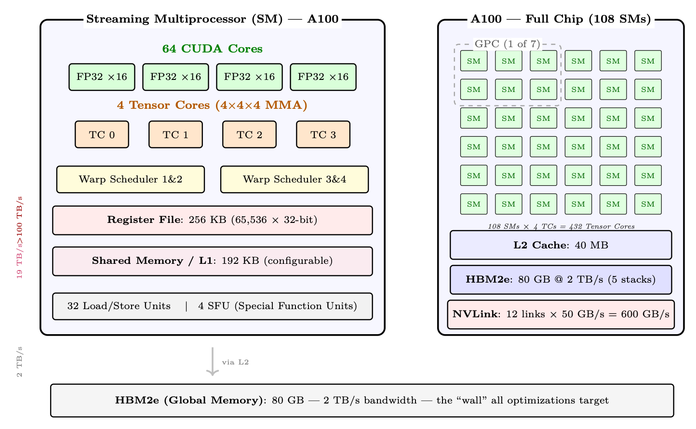
<em>图像来源：原 PDF 第 106 页，尺寸 1444x891。</em></p>
<p><a id="page-107"></a></p>
<h2 id="107">第 107 页</h2>
<p>关键 SM 组件</p>
<p>• CUDA 内核：用于FP32/INT32 操作的标量ALU。 A100 上每个 SM 为 64。用于
逐元素运算、归约和非矩阵运算。</p>
<pre><code class="language-math">• Tensor Cores: Specialized matrix-multiply-accumulate (MMA) units. Each performs a
4×4×4 fused multiply-add per cycle. 4 per SM on A100, delivering 16× throughput over
CUDA cores for supported precisions.
</code></pre>
<p>• 寄存器文件：最快的存储（1 个周期延迟）。在所有活动线程之间共享。溢出
到 L1 会导致明显的减速。</p>
<p>• 共享存储器/L1：由编程器显式管理的片上SRAM。关键
Flash Attention 的性能（图块完全适合共享内存）。</p>
<p>• Warp 调度器：每个SM 有4 个warp 调度器(A100)。一个 warp = 32 个线程执行
同步（SIMT 模型）。调度程序通过在 warp 之间切换来隐藏内存延迟。</p>
<p>SIMT 执行模型
GPU 使用单指令、多线程 (SIMT) 执行。在一个经纱（32 个线程）内，所有
线程执行相同的指令但处理不同的数据。当线程发散时（例如，if/else），
两条路径都是序列化的——称为扭曲发散。这就是为什么 GPU 内核必须最小化
分支。
对于LLM工作负载，主要操作（GEMM、attention、softmax）具有统一的控制流程
跨线程，使其成为 SIMT 执行的理想选择。</p>
<p>2.1.5
GPU 芯片跨代扩展</p>
<p>NVIDIA GPU 架构的演变显示了片上计算密度的持续扩展
内存和深度学习专用单元：</p>
<p>表 2.3：跨 NVIDIA 架构的 SM 级扩展。</p>
<p>建筑
短信
TC/SM
静态随机存储器/单模
L2
关键变化</p>
<p>沃尔特 (V100)
80
8
128KB
6MB
引入张量核心
安培 (A100)
108
4
192 KB
40MB
BF16/TF32；更大的L2
料斗 (H100)
132
4
256KB
50MB
TMA； FP8；线程块簇
布莱克威尔 (B200)
148
4
256KB
128MB
2× 模具； FP4； TMEM； NVLink 5</p>
<p>2.1.6
GPU 内存层次结构和带宽</p>
<p>现代 GPU 训练和推理性能几乎完全取决于您的表现
管理跨内存层次结构的数据移动。了解层次结构不是可选的 –
它是后面章节中讨论的每种优化技术的基础。</p>
<p>GPU 内存层次结构 – A100 80GB 参考号</p>
<p>级别
容量
带宽
延迟
地点</p>
<p>寄存器
∼256 KB/SM</p>
<blockquote>
<p>100 TB/秒
1个周期
片上、每线程
SRAM（共享）
164KB/SM
∼19TB/秒
～20 周期
片上、每 SM
二级缓存
总共 40 MB
∼5TB/秒
～200 周期
片上、共享
HBM2e（显存）
80GB
2TB/秒
～200纳秒
包装上（5 层）
中央处理器 动态随机存取存储器
512GB+
∼25 GB/秒
〜10微秒
主机（PCIe 4）
NVMe固态硬盘
TB
7GB/秒
〜100微秒
主机存储</p>
</blockquote>
<p>为什么差距这么大</p>
<p>层次结构的每一层都比它上面的一层慢大约 10 倍，大 100-1000 倍。
A100 的 BF16 张量核心吞吐量为 312 TFLOP/s，但 HBM 带宽仅为 2 TB/s。</p>
<p><a id="page-108"></a></p>
<h2 id="108">第 108 页</h2>
<pre><code class="language-math">That means for every byte loaded from HBM you can do 312×1012/(2×1012) ≈156 floating-point
operations before the next byte arrives. If your kernel does fewer than 156 FLOPs per byte, it is
memory-bound – the compute units are idle waiting for data.
</code></pre>
<p>寄存器。
每个 CUDA 线程都可以访问私有寄存器文件。寄存器是最快的存储
在芯片上 – 读取和写入发生在单个时钟周期内，无需仲裁。 A100有
每个 SM 65,536 个 32 位寄存器。将寄存器溢出到本地内存（L1/L2）是一个主要性能
危险。</p>
<p>SRAM – 共享内存/L1。
每个 SM 都有一个 192 KB 的组合 L1/共享内存池
在 A100 上（在 H100 上为 256 KB），在 A100 上最多可配置 164 KB 作为共享内存。共享
内存由程序员（或较新的 CUDA 版本中的编译器）显式管理。
例如，Flash Attention 完全是围绕注意力力平铺计算这一见解构建的
适合SRAM。</p>
<p>二级缓存。
A100 上的 40 MB L2 在所有 108 个 SM 之间共享。它充当之间的中转区
SRAM 和 HBM。对于具有良好空间局部性的工作负载（例如，重复访问的权重矩阵
跨批次），L2 命中率会显着降低有效 HBM 流量。</p>
<p>HBM – 高带宽内存。
HBM 是直接安装在 GPU 上的堆叠 DRAM
封装，通过宽中介层连接。 A100 SXM 具有 80 GB HBM2e，速率为 2 TB/s。的
H100 SXM5 具有 80 GB HBM3，速度为 3.35 TB/s。这是模型的主要工作记忆
权重、KV 缓存、激活和优化器状态。</p>
<p>通过 PCIe 的 CPU DRAM。
GPU HBM 和 CPU DRAM 之间的数据传输遍历
PCIe 总线。 PCIe Gen4 ×16 提供单向 ∼32 GB/s（双向 64 GB/s）； Gen5双打
这个。与 HBM（单向）相比，带宽减少了约 60 倍。 CPU卸载
（ZeRO-Infinity、DeepSpeed）利用此链接，但必须谨慎使用，以避免成为
瓶颈。</p>
<p>NVMe。
NVMe SSD（例如三星 990 Pro）可达到 ∼7 GB/s 的顺序读取速度。 ZeRO-Infinity 可以
将优化器状态卸载到 NVMe，但这仅在计算与 IO 比率非常高时才可行
（批量大，训练步骤慢）。</p>
<p>2.1.7
算术强度和 Roofline 模型</p>
<p>算术强度</p>
<p>我=
失败次数
从 HBM 访问的字节
（浮点运算数/字节）</p>
<p>当 I &lt; Iridge 时，内核受内存限制；当 I &gt; Iridge 时，内核受计算限制，其中</p>
<p>伊里奇=
峰值浮点运算/秒
峰值带宽 = 312 × 1012</p>
<p>2×1012
= 156 次浮点运算/字节 (A100 BF16)</p>
<p>注意力力算术强度</p>
<pre><code class="language-math">For a single attention head with sequence length n = 4096, head dim d = 128:
FLOPs: QKT costs 2n2d, softmax is O(n2), Attn × V costs 2n2d. Total: ≈4n2d = 4 × 40962 ×
128 ≈8.6 GFLOP.
Memory traffic (standard, non-Flash implementation):
</code></pre>
<pre><code class="language-math">• Read Q, K: 2 × n × d × 2 = 2 MB
</code></pre>
<p>• 写入注意力力分数 S = QKT : n2 × 2 = 33.5 MB</p>
<p><a id="page-109"></a></p>
<h2 id="109">第 109 页</h2>
<p>图 2.2：A100 BF16 的车顶线模型。注意力力深深地存在于记忆的束缚中；大型GEMM
（FFN 层）受计算限制。</p>
<p>• 读取S 以获得softmax：n2 × 2 = 33.5 MB</p>
<p>• 写入softmax 输出P：n2 × 2 = 33.5 MB</p>
<pre><code class="language-math">• Read P and V for final matmul: n2 × 2 + n × d × 2 = 34.5 MB
</code></pre>
<p>• 写入输出O：n × d × 2 = 1 MB</p>
<p>总内存：约 138 MB（由 n2 注意力力矩阵上的 4 次传递支配）。
算术强度：</p>
<p>我=8.6×109</p>
<p>138 × 106 ≈62 浮点运算/字节</p>
<p>这是 A100 脊点的 62/156 = 40% — 牢牢受内存限制。 GPU 空闲率为 60%
等待记忆。
Flash Attention 修复：通过从不具体化 n × n 矩阵（在 SRAM 中平铺 Q、K、V），Flash
Attention 将 HBM 流量减少为仅读取 Q、K、V 和写入 O：4 × n × d × 2 = 4 MB。每个
加载的字节在 O(n) 计算中重用（每个查询都会处理每个键），因此：</p>
<pre><code class="language-math">I =
4n2d
4 · n · d · 2 = n
</code></pre>
<p>2 = 4096</p>
<p>2
= 2048 次浮点运算/字节</p>
<p>这是山脊点 (156) 以上 13 倍——深度计算限制。 GPU达到峰值312
TFLOPS，仅需要 312T/2048 约 152 GB/s 的带宽（HBM 容量的 7.6%）。内存
不再是瓶颈。</p>
<p>2.1.8
注意力力是受记忆限制的； FFN 受计算限制</p>
<p>Transformer 中的两种状态</p>
<p>Transformer块有两个主要组件，它们的算术强度截然不同：</p>
<p>• 注意力：对n × d 张量进行操作。 QKT 产品是 O(n2d) FLOP，但需要
注意力力分数的内存为 O(n2)。在长序列中，内存流量占主导地位 –
注意力力是受记忆限制的。</p>
<p>• FFN (MLP)：两个大型线性层，其权重矩阵形状为[dmodel，4dmodel]。这些
是具有高算术强度的大型 GEMM – FFN 受计算限制。</p>
<p>这就是为什么Flash Attention（内存优化）有助于attention，但对FFN没有帮助，而量化
（减少权重大小）对 FFN 的帮助大于注意力力。</p>
<h3 id="_18">本页图像资源</h3>
<p>
<em>图像来源：原 PDF 第 109 页，尺寸 1568x690。</em></p>
<p><a id="page-110"></a></p>
<h2 id="110">第 110 页</h2>
<p>2.1.9
张量核心</p>
<p>什么是张量核心？
Tensor Core 是 Volta (2017) 中引入的专用矩阵乘法累加 (MMA) 单元。
每个 Tensor Core 在单个时钟周期内执行 4 × 4 × 4 矩阵乘法：</p>
<p>D = A × B + C
（4 × 4 矩阵）</p>
<p>A100 在 108 个 SM 中拥有 432 个 Tensor Core（每个 SM 4 个，每个子分区 1 个）。在BF16
它们提供 312 TFLOP/s 的精度，大约是 FP32 CUDA 内核吞吐量的 16 倍。</p>
<p>• 支持的精度：FP64、TF32、BF16、FP16、INT8、FP8 (H100+)。</p>
<p>• 累加：始终在 FP32 内部，即使对于 BF16 输入也是如此。这可以防止灾难性的
点积期间取消。</p>
<p>• 要求：当矩阵维度为 8 的倍数时，Tensor Core 效率最高
(BF16) 或 16 (FP8)。填充这些倍数通常是值得的。</p>
<p>• WGMMA (H100)：Hopper 引入了扭曲组级 MMA 指令，可在
更大的图块 (64×256×16)，并且可以使用 TMA（张量内存加速器）数据进行流水线处理
运动。</p>
<p>张量核心陷阱</p>
<p>Tensor Core 仅在您的内核受计算限制时才有帮助。如果您正在运行小批量（batch
大小 1，推理），GEMM 块很小，Tensor Core 利用率很低，你又回到了
记忆束缚的制度。这就是推理引擎积极批量请求的原因。</p>
<p>2.1.10
通信架构 – NVLink、InfiniBand 和 PCIe</p>
<p>分布式 LLM 训练和推理需要在 GPU 之间移动大量数据，
节点和存储。通信结构通常是大规模训练的瓶颈。</p>
<p>PCIe – 主机设备链路。</p>
<p>PCIe 世代</p>
<p>一代
x16
体重
（每个
目录）
双向
注释</p>
<p>PCIe 第三代
16GB/秒
32GB/秒
常见于较旧的服务器
PCIe Gen4
32GB/秒
64GB/秒
A100 PCIe，最新服务器
PCIe Gen5
64GB/秒
128GB/秒
H100 PCIe，新兴</p>
<p>PCIe 用于：</p>
<p>• CPU ↔GPU 数据传输（模型加载、CPU 卸载）</p>
<p>• NVLink 不可用时的跨节点 GPU 通信（罕见，非常慢）</p>
<p>• NVMe 存储访问（通过 CPU）</p>
<p>PCIe 不适用于 GPU-GPU 通信
如果 NVLink 可用，切勿通过 PCIe 路由 GPU-GPU 通信。 PCIe 带宽 (32
GB/s) 比 NVLink 4 (900 GB/s) 低 28 倍。在没有 NVLink 的多 GPU 服务器中（例如，
消费级 GPU），GPU 间带宽仅限于 PCIe，使得张量并行性极其有限
慢。</p>
<p><a id="page-111"></a></p>
<h2 id="111">第 111 页</h2>
<p>NVLink – 节点内高速互连。</p>
<p>NVLink 世代</p>
<p>一代
友情链接
总带宽
图形处理器</p>
<p>NVLink 2
6
300GB/秒
V100
NVLink 3
12
600GB/秒
A100
NVLink 4
18
900GB/秒
H100
NVLink 5
18
1800GB/秒
B200（布莱克威尔）</p>
<p>NVLink 是同一节点上 GPU 之间的点对点互连。每个链接都是双向的。
H100 SXM5 有 18 个 NVLink 4 链路，每个链路提供 50 GB/s 双向，总共 900 个
GB/秒。</p>
<p>NV 开关。
在 DGX H100 系统中，所有 8 个 GPU 均通过 NVSwitch（专用交换）连接
提供全二分带宽的芯片。这意味着任何 GPU 都可以与任何其他 GPU 通信
GPU 同时以全 NVLink 速度运行，而不仅仅是环中的邻居。</p>
<p>环形与全平分</p>
<p>在环形拓扑（8 个 GPU）中，AllReduce 需要数据绕环传输。每个链接必须
进位 2(N−1)</p>
<p>氮
占总数据的比例，因此算法带宽为 Blink ×
氮
2(N−1) (约0.57×闪烁
N = 8）。通过 NVSwitch 全二分，AllReduce 可以同时使用基于树的所有链接
算法，实现近峰值带宽。在 DGX H100 上的实践：环达到 ∼700 GB/s
总线带宽，NVSwitch 达到~900 GB/s。</p>
<p>InfiniBand – 节点间通信。
对于节点（服务器）之间的通信，Infini-
Band 提供高带宽、低延迟网络以及直接 GPU 内存访问。</p>
<p>InfiniBand NDR</p>
<p>• NDR 400Gb/s = 每个端口 50 GB/s（单向）</p>
<p>• HDR 200Gb/s = 每个端口 25 GB/s（上一代）</p>
<p>• RDMA：远程直接内存访问 – GPU 可以读取/写入远程 GPU 内存
不涉及远程CPU</p>
<pre><code class="language-math">• GPUDirect RDMA: Data goes directly HBM →NIC →network →NIC →HBM,
bypassing CPU and system DRAM entirely
</code></pre>
<p>• 延迟：小消息约为 1–2 µs（TCP/IP 约为 100 µs）</p>
<p>胖树拓扑。
大型 GPU 集群使用胖树网络拓扑。 3 层胖树
k 端口交换机支持具有全平分带宽的 k3/4 节点。对于 400Gb/s NDR 交换机
k = 64 个端口：643/4 = 65,536 个节点。</p>
<p>轨道优化拓扑。
在实践中，集群使用轨道优化的拓扑，其中每个 GPU
节点连接到不同的架顶交换机。这确保了 AllReduce 操作（其中
涉及所有 GPU）同时使用所有网络链接，从而最大化带宽。</p>
<p>分布式LLM训练中的沟通模式。
分布式训练依赖于
集体通信原语。原语的选择决定了带宽要求
和缩放行为。</p>
<p><a id="page-112"></a></p>
<h2 id="112">第 112 页</h2>
<p>通信原语</p>
<p>原始的
使用案例
体积</p>
<p>全部归约
梯度同步（DDP、FSDP）
2(N −1)/N× 参数大小
齐聚
收集
分片的
重量
(FSDP)
(N −1)/N× 参数大小</p>
<p>减少分散
散点梯度 (FSDP)
(N −1)/N× 参数大小
齐聚
张量并行激活
激活大小
点对点
流水线并行（发送/接收）
微批量激活
广播
体重同步（新工人）
全模型尺寸</p>
<p>带宽计算 – 70B 模型的梯度 AllReduce
设置：70B 参数模型，BF16 梯度，8 个节点 × 8 个 GPU = 64 个 GPU。数据并行
度= 64。
渐变大小：70 × 109 × 2 字节 = 140 GB。
每个 GPU（环）的 AllReduce 体积：2 × (64 −1)/64 × 140 ≈275 GB。
节点间可用带宽：8 个 GPU/节点 × 50 GB/s/GPU = 400 GB/s（带轨
优化拓扑，所有 8 个 NIC 均处于活动状态）。
AllReduce 时间：275/400 ≈0.69 秒每步。
含义：对于 1 秒的计算步骤，通信增加了 0.69 秒（总时间的 41%）
步时间）。
这就是为什么梯度压缩、混合精度和 FSDP（它们重叠）
与计算的通信）至关重要。</p>
<p>网络拓扑图。
下图展示了一个典型的两节点GPU集群
显示节点内 (NVLink) 和节点间 (InfiniBand) 通信路径的拓扑。</p>
<p>图 2.3：两节点 8-GPU 拓扑。节点内：通过 NVSwitch 的 NVLink 4（总共 900 GB/s）。节点间：
通过架顶交换机实现 InfiniBand NDR 400Gb/s。每个节点都有 8 个 IB NIC（每个 GPU 一个），用于轨道优化
全部减少。</p>
<p>根据带宽选择并行度</p>
<p>• 张量并行性 (TP)：要求每一层全部归约 – 仅在节点内使用
NVLink。 TP=8 是 H100 DGX 节点的标准。</p>
<p>• 流水线并行性 (PP)：阶段之间的点对点 – 可以跨节点，但会增加
流水线气泡开销。当模型对于 TP 来说太大时使用。</p>
<p>• 数据并行性(DP)：梯度AllReduce – 可以通过IB 跨节点。可以很好地扩展
快速IB。</p>
<p>• FSDP/ZeRO：AllGather + ReduceScatter – 与DP 类似，但分片优化器状态。
对于大型模型，优先于 DP。</p>
<h3 id="_19">本页图像资源</h3>
<p>
<em>图像来源：原 PDF 第 112 页，尺寸 1131x495。</em></p>
<p><a id="page-113"></a></p>
<h2 id="113">第 113 页</h2>
<p>2.2
vLLM – PagedAttention 和高吞吐量推理</p>
<p>vLLM <a class="citation" href="#ref-157">[157]</a> 引入了 PagedAttention，它借用了操作系统的分页抽象
用于 RAM 并将其应用于 GPU 的 KV 缓存。在 LLM 推理期间，KV 缓存 –
所有先前token的存储键和值张量 - 是主要的内存消耗者。管理
高效是高通量推理的核心挑战。</p>
<p>2.2.1
KV缓存碎片问题</p>
<p>KV 缓存公式</p>
<p>对于具有 L 层、H 个头、头尺寸 d 和 n 个标记序列的模型：</p>
<pre><code class="language-math">KV cache size = 2 × L × H × d × n × bytes_per_element
</code></pre>
<pre><code class="language-math">For Llama-3 70B (BF16): L = 80, H = 8 (GQA), d = 128:
</code></pre>
<pre><code class="language-math">= 2 × 80 × 8 × 128 × n × 2 = 327,680 × n bytes
</code></pre>
<p>当 n = 4096 个标记时：每个序列约 1.3 GB。</p>
<p>内部和外部碎片</p>
<p>传统推理系统为每个序列的KV预先分配一个连续的内存块
缓存，大小为最大可能的序列长度。这会导致两种类型的浪费：
内部碎片：仅生成 500 个token的序列仍保留保留的块
4096 个token。未使用的3596个token槽被浪费了。
外部碎片：许多序列完成后，空闲内存由许多
小的不连续的间隙。即使总可用内存已满，也无法分配新的长序列
足够了，因为没有一个连续的块足够大。
在实践中，简单分配的 GPU 内存利用率通常仅为 20-40%。</p>
<p>2.2.2
PagedAttention – KV 缓存的虚拟内存</p>
<p>PagedAttention（Kwon 等人，2023）借用了操作系统的分页抽象。相反
每个序列一个连续的块，KV 缓存被划分为固定大小的页面（块），并且
间接表（类似于 CPU 页表）转换每个序列的logits标记位置
到分散的物理 GPU 内存地址中。</p>
<p>PagedAttention 核心概念</p>
<pre><code class="language-math">• Block size: Typically 16 tokens per block (tunable). Each block stores 16 × 2 × L × H × d
elements.
</code></pre>
<p>• 块表：从logits块索引到物理块索引的每序列映射
GPU内存池。</p>
<p>• 物理块池：固定大小块的预分配池。分配是 O(1) – 只是
从空闲列表中弹出。</p>
<p>• 注意力内核：修改为从非连续的物理位置收集 KV 块
在注意力力计算期间使用块表。</p>
<p>块表示例</p>
<p>假设块大小 = 4 个token，我们有两个序列：</p>
<p>• 序列A（7 个token）：logits块[0,1]→物理块[3, 7]</p>
<p>• 序列B（5 个token）：logits块[0,1]→物理块[1, 5]</p>
<p>物理块 3 持有序列 A 的token 0-3。物理块 7 持有序列 A 的token 4-6</p>
<p><a id="page-114"></a></p>
<h2 id="114">第 114 页</h2>
<p>（部分填充）。序列 A 的注意力力内核按顺序从物理块 3 和 7 读取，
using the block table as an indirection layer.</p>
<p>2.2.3
PagedAttention 的好处</p>
<p>近乎零浪费。
内部碎片的边界是每个块最多有一个部分填充的块
sequence (the last block).对于块大小 16，最坏情况下的浪费是每个序列 15 个token——可以忽略不计。
由于块是固定大小且可互换的，因此消除了外部碎片。</p>
<p>动态分配。
随着序列的增长，块会按需分配。无需知道
the final sequence length in advance.这对于输出长度未知的生成至关重要。</p>
<p>前缀共享（写时复制）。
多个序列共享一个公共前缀（例如，一个系统
提示）可以共享该前缀的相同物理块。 The block table simply points multiple
sequences to the same physical blocks.当序列需要写入共享块时（发散
from the prefix), a copy-on-write is triggered.</p>
<p>前缀共享节省</p>
<p>在具有 1000 个token系统提示并为 128 个并发用户提供服务的聊天机器人中：</p>
<pre><code class="language-math">• Without prefix sharing: 128× 1000 × 327,680/109 ≈42 GB just for system prompt KV cache
</code></pre>
<pre><code class="language-math">• With prefix sharing: 1 × 1000 × 327,680/109 ≈0.33 GB
</code></pre>
<p>• 节省：共享前缀部分约 128 倍</p>
<p>通过交换抢占。
当 GPU 内存耗尽时，vLLM 可以通过以下方式抢占序列
将其 KV 块交换到 CPU DRAM（或者干脆丢弃它们并稍后重新计算）。这是
唯一可行的原因是块是独立的且不连续的——交换连续的分配
需要复制整个缓冲区。</p>
<p>2.2.4
连续配料</p>
<p>传统批处理（“静态批处理”）会等到批处理中的所有序列完成后才开始
新的。如果一个序列生成 500 个token，另一序列生成 10 个，则 GPU 空闲 490
短序列上的步骤。这是极其浪费的。</p>
<p>连续配料</p>
<p>连续批处理（也称为迭代级调度）一次处理一个解码步骤。
每一步之后：</p>
<p>1.检查哪些序列已经完成（生成EOStoken）</p>
<ol start="2">
<li>
<p>从批次中删除已完成的序列，释放其 KV 块</p>
</li>
<li>
<p>添加新的等待序列来填充空闲的槽位</p>
</li>
<li>
<p>使用更新的批次运行下一个解码步骤</p>
</li>
</ol>
<p>批次组成每一步都会发生变化 - 序列动态加入和离开。这保持
GPU 利用率接近 100%，并显着提高吞吐量（比静态批处理提高 1.5–3 倍）。
PagedAttention 在这里至关重要：在批次中添加/删除序列需要动态 KV
块分配/释放，仅对分页内存有效。</p>
<p><a id="page-115"></a></p>
<h2 id="115">第 115 页</h2>
<p>2.2.5
vLLM 中的推测解码</p>
<p>推测性解码使用小型草稿模型（例如 1B 个参数）来提出 k 个候选标记
快速，大型目标模型在一次前向传递中验证这一点。直到第一个为止的所有token
拒绝被接受（预期接受：每个验证步骤 3-5 个token）。这产生 2–3×
加速延迟敏感的单序列生成，而不会造成任何质量损失。
vLLM 将推测性解码与 PagedAttention 集成：</p>
<p>• 草案token被分配投机KV 区块</p>
<p>• 拒绝时，推测块被释放（分页分配便宜）</p>
<p>• 接受后，推测区块将提升至主序列</p>
<p>• 块表更新是 O(k) – 只需更新一些表条目</p>
<p>2.2.6
具体内存节省 – 70B 规模模型</p>
<p>内存预算 – 70B BF16 推理</p>
<p>设置：Llama-3 70B、BF16、单个 A100 80GB 节点（8 个 GPU、张量并行）。
模型权重：70 × 109 × 2 字节 = 140 GB ÷ 8 个 GPU = 17.5 GB/GPU。
剩余的 KV 缓存：80 −17.5 −3（开销）= 59.5 GB/GPU。
每个 GPU 每个 token 的 KV 缓存（TP=8，每个 GPU 拥有 1/8 头）： 2×80×1×128×2 =
40,960 字节 ≈40 KB/token。
KV缓存中的最大token数：59.5 × 109/40,960 ≈145万个token。
有 128 个并发序列，每个序列有 4096 个token：128 × 4096 = 524,288 个token – 好吧
在预算之内。
没有PagedAttention（为每个预先分配最大长度4096）：相同的数学，但是fragmen-
平均浪费约 50%→只有 64 个序列适合。</p>
<p>块大小权衡
较大的块大小可以减少块表的开销并提高内存访问局部性
（更少的分散阅读）。较小的块大小可减少内部碎片并实现更细粒度
前缀共享。 vLLM 默认为 16 个token/块，这是一个很好的平衡。对于很长的序列
（100K+ token），较大的区块（32-64）可能更可取。</p>
<p>2.2.7
vLLM：端到端系统</p>
<p>vLLM 将 PagedAttention 包装在一个完整的服务堆栈中：连续批处理、前缀缓存、推测
本地解码和张量并行模型分片一起工作，以最大化每个吞吐量
GPU 美元。</p>
<p>2.2.8
架构概述</p>
<p>2.2.9
核心组件</p>
<p>• API 服务器：接受OpenAI 兼容请求（完成、聊天）。对输入进行标记并
创建“序列组”（用于波束搜索或多个样本）。</p>
<p>• 调度程序：vLLM 的大脑。维护三个队列：</p>
<p>– waiting：新请求尚未开始（预填充待处理）</p>
<p>– running：主动生成token（解码阶段）</p>
<p>– swapped：KV缓存被卸载到CPU的抢占请求</p>
<p>每次迭代，调度程序都会根据可用 GPU 内存决定运行哪些请求
块。</p>
<p><a id="page-116"></a></p>
<h2 id="116">第 116 页</h2>
<p>图 2.4：vLLM 架构：请求自上而下流动。调度程序管理准入和抢占，
块管理器处理虚拟到物理的 KV 缓存映射（如操作系统页表），模型
执行器从 GPU HBM 中的预分配块池中运行批量推理读取。</p>
<p>• 块管理器：实现KV 缓存的虚拟内存抽象。映射logits
块（每个序列）到物理块（在 GPU 内存池中）。手柄：</p>
<p>– 分配（生成新token→需要新区块）</p>
<p>– 写入时复制（用于波束搜索：多个波束共享前缀块，仅在不同的波束上复制
根斯）</p>
<p>– 交换（抢占/恢复时 GPU ↔CPU 迁移）</p>
<p>– 前缀缓存（当提示共享公共前缀时重用缓存块）</p>
<p>• 模型执行器：运行实际的LLM 前向传递。管理跨区域的张量并行性
GPU 调度从分页 KV 缓存块读取的注意力力内核。</p>
<pre><code class="language-math">• KV Cache Pool: Pre-allocated GPU memory divided into fixed-size blocks (default: 16
tokens × num_heads × head_dim × 2 bytes per block). No dynamic allocation at runtime →
zero fragmentation.
</code></pre>
<p>2.2.10
请求生命周期（端到端流程）</p>
<p>1.到达：客户端发送提示。 API 服务器将其分词，创建一个 SequenceGroup，将其放入
等待队列。</p>
<ol start="2">
<li>调度：在每一步，调度程序运行：</li>
</ol>
<p>(a) 检查是否可以恢复任何交换的序列（足够的空闲块）。</p>
<p>(b) 检查是否有任何等待序列可以开始预填充（足够的块用于完整提示）。</p>
<p>(c) 跨运行序列预算剩余块（每个序列需要 1 个新块）
如果当前块已满，则执行步骤）。</p>
<p>(d) 如果超出预算：抢占最低优先级的运行序列（将 KV 交换到 CPU 或重新计算
稍后）。</p>
<ol start="3">
<li>预填充（请求的第一次迭代）：整个提示在一次前向传递中进行处理。电压
为所有提示标记计算缓存并存储在分配的块中。这是受计算限制的
（大批量token）。</li>
</ol>
<h3 id="_20">本页图像资源</h3>
<p>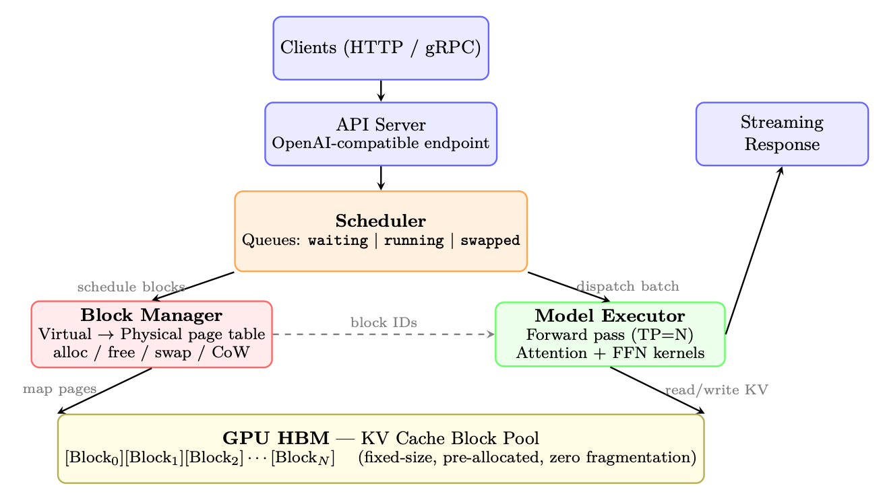
<em>图像来源：原 PDF 第 116 页，尺寸 1313x743。</em></p>
<p><a id="page-117"></a></p>
<h2 id="117">第 117 页</h2>
<ol start="4">
<li>
<p>解码（后续迭代）：每个序列每个步骤生成一个新标记。全部运行
序列被批处理在一起（连续批处理）。这是内存限制的（读取完整的 KV
缓存，生成 1 个token）。</p>
</li>
<li>
<p>块分配：在每个解码步骤之后，如果序列的最后一个块已满，则该块
管理器分配一个新的物理块并将其映射到下一个logits块。</p>
</li>
<li>
<p>完成：当序列达到 EOS 或最大长度时，将从运行中删除。其
物理块立即释放→可用于其他序列。响应已流式传输
返回给客户端。</p>
</li>
</ol>
<p>2.2.11
前缀缓存（自动提示缓存）</p>
<p>当多个请求共享一个公共前缀时（系统提示符，少数示例）：</p>
<ol>
<li>
<p>对每个logits块的 token 内容进行哈希处理。</p>
</li>
<li>
<p>新请求到达时，检查缓存中是否已存在任何前缀块。</p>
</li>
<li>
<p>如果命中：跳过这些token的预填充，直接重用物理 KV 块。首次token掉落时间
戏剧性地。</p>
</li>
<li>
<p>驱逐：LRU 政策。仅当内存压力需要时才释放缓存块。</p>
</li>
</ol>
<p>影响：对于具有较长系统提示的聊天应用程序（所有用户共享 2K+ token），
前缀缓存可将 TTFT 减少 60-80%。</p>
<p>2.2.12
vLLM 中的引导（约束）解码</p>
<p>vLLM 通过可插拔后端原生支持约束解码（第 1.12.11 节），从而使
以最小的性能开销保证服务时的结构化输出。</p>
<p>支持的约束类型。
OpenAI兼容的API通过guided_*接受约束
参数或response_format字段：</p>
<pre><code class="language-text">from
openai
import
OpenAI
client = OpenAI(base_url="http :// localhost :8000/ v1")
</code></pre>
<pre><code class="language-text"># --- JSON
Schema
constraint
---
response = client.chat.completions.create(
</code></pre>
<pre><code class="language-text">model="meta -llama/Llama -3-70B-Instruct",
messages =[{"role": "user",
</code></pre>
<pre><code class="language-text">"content": "Extract: name , age , city from: "
</code></pre>
<pre><code class="language-text">"’John is 30 and lives in NYC’"}],
extra_body ={
</code></pre>
<pre><code class="language-text">"guided_json": {
</code></pre>
<pre><code class="language-text">"type": "object",
"properties": {
</code></pre>
<pre><code class="language-text">"name": {"type": "string"},
"age": {"type": "integer"},
"city": {"type": "string"}
},
"required": ["name", "age", "city"]
}
}
)
# Output is guaranteed
valid
JSON
matching
the schema
</code></pre>
<pre><code class="language-text"># --- Regex
constraint
---
response = client.completions.create(
</code></pre>
<pre><code class="language-text">model="meta -llama/Llama -3-70B-Instruct",
prompt="Generate an IPv4
address: ",
</code></pre>
<p><a id="page-118"></a></p>
<h2 id="118">第 118 页</h2>
<pre><code class="language-text">extra_body ={
</code></pre>
<pre><code class="language-text">"guided_regex": r"\d{1 ,3}\.\d{1 ,3}\.\d{1 ,3}\.\d{1 ,3}"
}
)
</code></pre>
<pre><code class="language-text"># --- Choice
constraint
---
response = client.completions.create(
</code></pre>
<pre><code class="language-text">model="meta -llama/Llama -3-70B-Instruct",
prompt="Sentiment: ",
extra_body ={"guided_choice": ["positive", "negative", "neutral"]}
)
</code></pre>
<p>后端架构。
vLLM 将掩码计算委托给后端引擎：</p>
<p>• XGrammar（自 v0.7 起默认）：支持 JSON 模式的下推自动机引擎，
正则表达式和任意 EBNF 语法。由于高效的 C++，复杂模式的速度最快
核心。</p>
<p>• 概要<a class="citation" href="#ref-115">[115]</a>：基于FSM；支持 JSON 和正则表达式。当 XGrammar 时用作后备
不可用。</p>
<p>在模型的前向传递生成 logits 之后、采样之前应用掩码 - 添加
实际上每步 &lt;1 毫秒，因为 FSM/PDA 状态转换和预先计算的索引查找是
O(1)。</p>
<p>性能影响。
因为约束仅屏蔽了 logits（没有重新计算注意力力
或 FFN），吞吐量损失可以忽略不计（基准测试测试中&lt;2%）。主要成本是编译
将模式转换为 FSM/PDA 索引，这需要 0.5-5 秒，具体取决于模式复杂性。 vLLM 缓存
跨请求编译模式，因此每个唯一模式需要支付一次此成本。</p>
<p>结构化输出̸=正确输出</p>
<p>约束解码保证输出在语法上有效（解析为 JSON，匹配
模式类型）。它不能保证语义正确性——模型仍然可能产生幻觉值
解析正确但实际上是错误的。始终验证下游的业务logits。</p>
<p>表 2.4：vLLM 性能与替代方案（70B 模型，A100 × 4，TP=4）。</p>
<p>公制
LLM
高频产生
为什么</p>
<p>吞吐量（托克/秒）
2,500–4,000
300–600
连续配料+PagedAtten-
的
内存利用率
90–95%
50–60%
零碎片、动态块
分配
最大并发 seq 数
200–500
16–32
分页KV消除了per-seq预留
休假
首次token时间
100–300毫秒
500–2000毫秒
重复系统的前缀缓存
提示</p>
<p><a id="page-119"></a></p>
<h2 id="119">第 119 页</h2>
<p>第三章</p>
<p>强化介绍
学习</p>
<p>强化学习 (RL) 是一种智能体学习做出顺序决策的范例
通过与环境交互、接收奖励作为反馈并优化其策略
随着时间的推移最大化累积奖励<a class="citation" href="#ref-158">[158]</a>。与监督学习（需要标记
输入-输出对），强化学习通过反复试验发现最佳行为。</p>
<p>图 3.1：强化学习概述：智能体与环境交互，接收奖励
通过反复试验反馈并更新其政策。与从标记中学习的监督学习不同
配对后，强化学习通过经验最大化奖励来学习做什么。</p>
<p>3.1
马尔可夫决策过程 (MDP)</p>
<p>MDP 是一个 5 元组（S、A、P、R、γ）：</p>
<p>• S：状态空间——环境的所有可能配置</p>
<p>• A：操作空间 — 智能体可用的所有操作</p>
<p>• P(s′|s, a)：转移函数 — 采取后从状态 s 到达状态 s′ 的概率
动作一</p>
<p>• R(s, a, s′)：奖励函数——转换的即时标量反馈</p>
<p>• γ ε[0, 1]：折扣因子——未来奖励相对于当前奖励的价值是多少</p>
<p>马尔可夫性质：未来仅取决于当前状态，而不取决于历史：</p>
<p>P(st+1|st, at, st−1, at−1, ...) = P(st+1|st, at)</p>
<p>这使得问题变得容易处理。</p>
<h3 id="_21">本页图像资源</h3>
<p>
<em>图像来源：原 PDF 第 119 页，尺寸 1008x336。</em></p>
<p><a id="page-120"></a></p>
<h2 id="120">第 120 页</h2>
<p>智能体-环境交互循环</p>
<p>在每个时间步 t：</p>
<ol>
<li>
<p>Agent观察状态st</p>
</li>
<li>
<p>Agent根据策略π(a|s)选择动作at</p>
</li>
<li>
<p>环境转变为 st+1 ∼P(·|st, at)</p>
</li>
<li>
<p>Agent收到奖励 rt = R(st, at, st+1)</p>
</li>
<li>
<p>重复直到终端状态或地平线 T</p>
</li>
</ol>
<p>3.2
核心概念和定义</p>
<pre><code class="language-text">Policy π(a|s): A mapping from states to action probabilities. Deterministic: a = π(s). Stochastic:
a ∼π(·|s).
Return (cumulative discounted reward):
</code></pre>
<p>无穷大
X</p>
<pre><code class="language-math">Gt =
</code></pre>
<pre><code class="language-text">k=0
γkrt+k = rt + γrt+1 + γ2rt+2 + · · ·
(3.1)
</code></pre>
<p>价值函数（策略 π 下状态 s 的预期回报）：</p>
<h1 id="_22"></h1>
<p>” ∞
X</p>
<p>(3.2)</p>
<pre><code class="language-math">V π(s) = Eπ [Gt | st = s] = Eπ
</code></pre>
<p>k=0
γkrt+k | st = s</p>
<p>Action-Value Function (expected return from state s, taking action a, then following π):</p>
<p>Qπ(s, a) = Eπ [Gt | st = s, at = a]
(3.3)</p>
<p>Advantage Function (how much better action a is compared to average):</p>
<pre><code class="language-math">Aπ(s, a) = Qπ(s, a) −V π(s)
(3.4)
</code></pre>
<p>贝尔曼方程（递归关系）：</p>
<p>V π(s) =
X</p>
<p>一个
π(a|s)
X</p>
<pre><code class="language-text">s′
P(s′|s, a)
R(s, a, s′) + γV π(s′)

(3.5)
</code></pre>
<p>"</p>
<h1 id="_23"></h1>
<p>Qπ(s, a) =
X</p>
<p>R(s, a, s′) + γ
X</p>
<p>(3.6)</p>
<p>s′
P(s′|s, a)</p>
<p>a′
π(a′|s′)Qπ(s′, a′)</p>
<p>Optimal Policy and Bellman Optimality</p>
<p>The optimal policy π∗satisfies:</p>
<p>X</p>
<p>V ∗(s) = max
a</p>
<pre><code class="language-text">s′
P(s′|s, a)
R(s, a, s′) + γV ∗(s′)

(3.7)
</code></pre>
<p>Q*(s, a) =
X</p>
<p>s′
P(s′|s, a)

R(s, a, s′) + γ 最大值
a′
Q*(s′, a′)

(3.8)</p>
<p>一旦 Q<em> 已知，最优策略就是：π</em>(s) = arg maxa Q*(s, a)。</p>
<p><a id="page-121"></a></p>
<h2 id="121">第 121 页</h2>
<p>3.3
强化学习方法的分类</p>
<p>强化学习算法可以沿着多个轴进行分类。了解这个分类法
帮助为给定问题选择正确的方法。</p>
<p>主要分类区别</p>
<p>无模型与基于模型：</p>
<p>• 无模型：直接从经验中学习策略或价值函数。不知道
环境动态。对于LLM来说最实用（语言动态很难
模型）。</p>
<p>• 基于模型：学习或使用环境转换模型P(s′|s, a)。可以提前计划。
样本效率更高，但需要准确的模型。</p>
<p>基于价值与基于政策：</p>
<p>• 基于值：学习Q(s, a) 或V (s)，导出策略作为arg maxa Q(s, a)。非常适合
离散的、小的动作空间（例如 Atari）。难以应对连续/大的行动空间。</p>
<p>• 基于策略：直接参数化和优化πθ(a|s)。自然连续/高
维度行动空间。对于 LLM 至关重要（词汇量 = 32K–128K 操作）。</p>
<p>• Actor-Critic：结合两者——策略（Actor）提出行动，价值函数（Critic）
评价他们。LLM PPO 是演员批评家。</p>
<p>在保单与离保单：</p>
<p>• 符合策略：从当前策略生成的数据中学习。之后必须重新生成数据
每次更新。示例：REINFORCE、PPO、A2C。更稳定，但样品效率较低。</p>
<p>• 离策略：从任何策略（包括旧版本或其他智能体）生成的数据中学习。
可以重用过去的经验。示例：Q-Learning、DQN、SAC。样本效率更高，但
更难稳定。</p>
<p>3.4
时间差异（TD）学习</p>
<p>TD学习<a class="citation" href="#ref-159">[159]</a>引导程序——它使用其他价值估计来更新价值估计，而无需
等待整集结束。</p>
<p>3.4.1
理解 TD 误差：“惊喜”作为学习信号</p>
<p>TD 误差衡量智能体当前对未来奖励的估计与实际奖励之间的差异
采取一步后最新更新的估计。简单来说，就是两者之间的区别</p>
<h3 id="_24">本页图像资源</h3>
<p>
<em>图像来源：原 PDF 第 121 页，尺寸 1566x571。</em></p>
<p><a id="page-122"></a></p>
<h2 id="122">第 122 页</h2>
<p>智能体认为会发生的事情以及实际发生的事情加上它接下来期望的事情。它代表
经纪人的“惊喜”。</p>
<p>直觉：驾驶类比</p>
<p>想象一下您正开车回家，预计车程需要 30 分钟。</p>
<p>• 预测：总共30 分钟。</p>
<p>• 现实转变：10 分钟后，您遇到了意想不到的道路施工。您的全球定位系统
更新，表示现在还剩 35 分钟。</p>
<p>• TD 错误：预计总时间现在为 45 分钟（已用时间 10 分钟 + 剩余时间 35 分钟）。的
新估计（45 分钟）和旧估计（30 分钟）之间的差异为 +15 分钟 TD
错误。你可以利用这个“惊喜”来改变你下次的路线。</p>
<p>正 TD 误差意味着结果好于预期 → 提升该状态的价值。</p>
<p>负 TD 误差意味着情况比预期更差 → 降低该状态的值。</p>
<p>3.4.2
TD误差公式</p>
<p>δt = Rt+1 + γV (St+1) −V (St)
(3.9)</p>
<p>• Rt+1：采取行动后立即获得的奖励。</p>
<p>• γV (St+1)：下一个状态的估计贴现值（智能体期望得到的值）
从下一个状态开始，按折扣因子 γ 缩放）。</p>
<p>• V (St)：当前状态值的原始估计。</p>
<p>组合项 (Rt+1 + γV (St+1)) 称为 TD 目标。因此：</p>
<p>TD 误差 = TD 目标 − 旧估计
(3.10)</p>
<p>3.4.3
智能体如何使用 TD 错误</p>
<p>智能体调整其价值函数以使 TD 误差趋向于零：</p>
<pre><code class="language-math">V (St) ←V (St) + α · δt
(3.11)
</code></pre>
<p>• 如果δt &gt; 0：结果好于预测→增加V (St)，因此智能体寻求这种状态。</p>
<p>• 如果δt &lt; 0：结果比预期更差→降低V (St)，因此智能体避免这种状态。</p>
<p>• 如果δt = 0：预测是完美的→不需要更新（收敛）。</p>
<p>TD vs 蒙特卡洛
蒙特卡洛：等到剧集结束，使用实际返回 Gt。无偏但高方差（一
完整的轨迹可能不具有代表性）。
TD：在每一步之后使用估计的未来值 γV (st+1) 进行更新。偏置（取决于V
准确性），但方差要低得多（一步更新，不会复合噪声）。
TD(λ)：在 TD(0) 和蒙特卡罗之间进行插值。 λ = 0：纯 TD。 λ = 1：纯 MC。这是
与 GAE 对 PPO 的作用完全相同（λ = 0.95）。</p>
<p>TD 目标：yt = rt + γV (st+1) — 我们朝着“更好的估计”迈进。
多步 TD（n 步返回）：</p>
<pre><code class="language-math">G(n)
t
= rt + γrt+1 + · · · + γn−1rt+n−1 + γnV (st+n)
(3.12)
</code></pre>
<p><a id="page-123"></a></p>
<h2 id="123">第 123 页</h2>
<p>3.5
Q-学习</p>
<p>Q-Learning <a class="citation" href="#ref-160">[160]</a> 是基础的离策略、基于价值的算法。它学习最优的 Q*</p>
<p>直接，无论遵循什么政策。
更新规则：</p>
<p>(3.13)</p>
<pre><code class="language-math">Q(st, at) ←Q(st, at) + α

rt + γ max
a′
Q(st+1, a′) −Q(st, at)

</code></pre>
<p>为什么 Q-Learning 是脱离政策的</p>
<p>更新使用 maxa′ Q(st+1, a′) — 下一个状态的最佳动作的值，无论
智能体实际采取的操作。这意味着目标始终是在
最优策略，即使行为策略是随机探索的（ϵ-贪婪）。
这就是为什么 Q-Learning 可以从重播缓冲区、演示或任何经验来源中学习。
数据不需要来自当前政策。</p>
<p>SARSA <a class="citation" href="#ref-161">[161]</a>（政策替代）：使用实际采取的行动而不是最大值：</p>
<pre><code class="language-math">Q(st, at) ←Q(st, at) + α [rt + γQ(st+1, at+1) −Q(st, at)]
(3.14)
</code></pre>
<p>深度 Q 网络（DQN）<a class="citation" href="#ref-162">[162]</a>：用神经网络 Qθ(s, a) 替换表格 Q(s, a)。钥匙
创新点：体验重放缓冲区（离策略数据重用）、目标网络（稳定性）、ϵ-贪婪
探索。
DQN 损失函数：训练网络以最小化均方 TD 误差
从重播缓冲区采样的小批量：</p>
<p>(3.15)</p>
<p>L(θ) = E(s,a,r,s′)∼B</p>
<pre><code class="language-math">"
r + γ max
a′
Q¯θ(s′, a′) −Qθ(s, a)
2#
</code></pre>
<p>其中 Q¯θ 是目标网络 - Qθ 的冻结副本仅每 C 个步骤更新一次（例如，
C = 10,000）。这可以防止移动目标问题：没有它，预测和
目标同时转移，造成发散。
梯度更新：获取损失的梯度。 θ（注：目标 y 被视为
常量 — 没有梯度流过 ¯θ)：</p>
<p></p>
<p></p>
<p>∇θL = −E</p>
<pre><code class="language-math">∇θQθ(s, a)
</code></pre>
<pre><code class="language-math">
r + γ max
a′
Q¯θ(s′, a′) −Qθ(s, a)

</code></pre>
<p></p>
<p>
(3.16)</p>
<p>|
{z
}
TD误差δ</p>
<pre><code class="language-math">θ ←θ −α · δ · ∇θQθ(s, a)
(3.17)
</code></pre>
<p>学习方案（每个训练步骤）：</p>
<pre><code class="language-math">1. Act: Select action via ϵ-greedy: with probability ϵ take random action, otherwise a =
arg maxa Qθ(s, a). Anneal ϵ from 1.0 →0.01 over first 1M steps.
</code></pre>
<ol start="2">
<li>
<p>存储：将过渡(s, a, r, s′, d)保存到重播缓冲区B（容量∼1M）中。</p>
</li>
<li>
<p>样本：从 B 中统一抽取 32 个转换的小批量。</p>
</li>
<li>
<p>计算目标： y = r + γ(1 −d) maxa′ Q¯θ(s′, a′) （如果终端则未来值为零）。</p>
</li>
<li>
<p>更新：(y −Qθ(s, a))2 上的梯度下降。将梯度剪辑为 [−1, 1]（Huber 损失变体）。</p>
</li>
</ol>
<pre><code class="language-math">6. Sync target: Every C steps, copy ¯θ ←θ.
</code></pre>
<p><a id="page-124"></a></p>
<h2 id="124">第 124 页</h2>
<p>3.5.1
了解重播缓冲区</p>
<p>重播缓冲区<a class="citation" href="#ref-163">[163]</a>（经验重播）是一种保存过去经验的数据存储机制
以便智能体稍后可以重新学习它们。不是在执行操作后立即丢弃数据，而是
智能体将转换存储在内存库中，并随机抽取小批量样本进行训练。
存储的内容：每个转换都是一个元组：</p>
<pre><code class="language-math">et = (st, at, rt, st+1, dt)
(3.18)
</code></pre>
<p>其中 dt 是一个布尔标志，指示剧集是否结束。</p>
<p>为什么重放缓冲区至关重要</p>
<p>• 破坏数据相关性：连续步骤高度相关。神经网络
对顺序数据的概括能力较差。从缓冲区中随机采样生成训练样本
大约 i.i.d.</p>
<p>• 防止灾难性遗忘：在没有缓冲的情况下，智能体可以通过困难的关卡
可能会忘记如何清除它，同时在接下来的 10K 步中在更高的级别上失败。的
buffer 确保它继续练习旧的场景。</p>
<p>• 提高样本效率：运行环境可能会很慢。重放缓冲区允许
同一转换中的多个权重更新，从每一步中提取更多价值。</p>
<pre><code class="language-text">import
random
from
collections
import
deque
</code></pre>
<pre><code class="language-text">class
ReplayBuffer:
def
__init__(self , capacity):
self.buffer = deque(maxlen=capacity)
# Bounded
queue
</code></pre>
<pre><code class="language-text">def push(self , state , action , reward , next_state , done):
</code></pre>
<pre><code class="language-text">self.buffer.append ((state , action , reward , next_state , done))
</code></pre>
<pre><code class="language-text">def sample(self , batch_size):
</code></pre>
<pre><code class="language-text"># Break
correlation by selecting
random
experiences
return
random.sample(self.buffer , batch_size)
</code></pre>
<pre><code class="language-text">def
__len__(self):
return len(self.buffer)
</code></pre>
<p>优先体验重播 (PER)</p>
<p>在标准缓冲区中，所有经验都具有相同的采样概率。但有些则更多
教育性的。 PER <a class="citation" href="#ref-164">[164]</a> 通过 TD 误差幅度缩放采样概率 — 如果发生转变
引起巨大的“惊喜”（高 |δt|），智能体更频繁地对其进行采样以纠正其模型
更快。这使得 Atari 基准测试测试的学习速度提高了 2-3 倍。</p>
<p>为什么 Q-Learning 对 LLM 来说失败了</p>
<p>语言生成中的动作空间是完整词汇表（|A| = 32K–128K），状态
空间是所有可能的标记序列（无限）。每次计算超过 128K 个动作的 maxa Q(s, a)
token位置是棘手的。这就是 LLM RL 使用基于策略的方法（PPO、GRPO）的原因
相反。</p>
<p><a id="page-125"></a></p>
<h2 id="125">第 125 页</h2>
<p>3.6
策略梯度方法——REINFORCE</p>
<p>不学习价值函数并推导策略，而是直接优化策略参数 θ
最大化预期回报<a class="citation" href="#ref-165">[165]</a>。</p>
<pre><code class="language-math">Objective: J(θ) = Eτ∼πθ[R(τ)] = Eπθ
hPT
t=0 rt
i
</code></pre>
<p>政策梯度定理：</p>
<h1 id="_25"></h1>
<p>” T
X</p>
<p>(3.19)</p>
<pre><code class="language-math">∇θJ(θ) = Eπθ
</code></pre>
<pre><code class="language-math">t=0
∇θ log πθ(at|st) · Gt
</code></pre>
<p>策略梯度定理 - 形式推导（5 个步骤）</p>
<p>第 1 步：定义目标。我们希望最大化预期回报：</p>
<h1 id="_26"></h1>
<p>” T
X</p>
<pre><code class="language-math">=
X
</code></pre>
<pre><code class="language-math">J(θ) = Eτ∼πθ
</code></pre>
<pre><code class="language-math">τ
P(τ|θ)R(τ)
</code></pre>
<p>时间=0
室温</p>
<pre><code class="language-math">where P(τ|θ) = p(s0) QT
t=0 πθ(at|st) p(st+1|st, at) is the trajectory probability.
Step 2: Take the gradient. Only πθ terms depend on θ (dynamics p doesn’t):
</code></pre>
<p>∇θJ =
X</p>
<pre><code class="language-math">τ
∇θP(τ|θ) R(τ)
</code></pre>
<pre><code class="language-math">Step 3: Apply the log-derivative trick: ∇θP(τ|θ) = P(τ|θ) ∇θ log P(τ|θ):
</code></pre>
<pre><code class="language-math">∇θJ = Eτ∼πθ[∇θ log P(τ|θ) R(τ)]
</code></pre>
<pre><code class="language-math">Step 4: Expand log P(τ|θ). The log p(s0) and log p(st+1|st, at) terms vanish under ∇θ:
</code></pre>
<p>时间
X</p>
<pre><code class="language-math">∇θ log P(τ|θ) =
</code></pre>
<pre><code class="language-math">t=0
∇θ log πθ(at|st)
</code></pre>
<pre><code class="language-text">Step 5: Combine. Future rewards don’t depend on past actions (causality), so each ∇log π pairs
only with future return Gt = PT
t′=t rt′:
</code></pre>
<h1 id="_27"></h1>
<p>” T
X</p>
<pre><code class="language-math">∇θJ = Eπθ
</code></pre>
<pre><code class="language-math">t=0
∇θ log πθ(at|st) · Gt
</code></pre>
<p>为什么这很美丽</p>
<p>梯度不需要通过环境动力学 p(s′|s, a) 进行微分。
对数导数技巧将其转换为我们可以通过简单地运行来估计的期望
政策和观察奖励。用优势 ^At = Gt −V (st) 代替 Gt 可以减少方差
无偏差（因为对于任何状态相关基线，E[∇log π · b(s)] = 0）。</p>
<p>强化算法 <a class="citation" href="#ref-165">[165]</a>（Williams，1992）：</p>
<pre><code class="language-math">1. Sample complete trajectory τ = (s0, a0, r0, s1, a1, r1, . . .) under πθ
</code></pre>
<ol start="2">
<li>计算收益 Gt = PT−t
每个时间步 k=0 γkrt+k</li>
</ol>
<pre><code class="language-math">3. Update: θ ←θ + α P
t ∇θ log πθ(at|st) · Gt
</code></pre>
<p>强化直觉——“奖励加权最大似然”</p>
<pre><code class="language-math">∇θ log πθ(at|st) is the direction that increases the probability of action at. Multiplying by Gt
means:
</code></pre>
<p><a id="page-126"></a></p>
<h2 id="126">第 126 页</h2>
<p>• 高回报轨迹：增加采取所有行动的概率（正 Gt）</p>
<p>• 低回报轨迹：降低采取行动的概率（基线后 Gt 为负）</p>
<p>这是监督学习，其中“标签”是你采取的行动，根据它们的好坏程度进行加权
原来是。</p>
<p>与基线的方差减少：</p>
<h1 id="_28"></h1>
<p>” T
X</p>
<p>(3.20)</p>
<pre><code class="language-math">∇θJ(θ) = Eπθ
</code></pre>
<pre><code class="language-math">t=0
∇θ log πθ(at|st) · (Gt −b(st))
</code></pre>
<pre><code class="language-math">Any baseline b(st) that doesn’t depend on at keeps the gradient unbiased but reduces variance. Best
choice: b(st) = V π(st). Then Gt −V (st) ≈Aπ(st, at) = advantage.
</code></pre>
<p>强化限制</p>
<p>• 高方差：每个梯度使用一条轨迹。稳定需要数千个样本
更新。</p>
<p>• 无引导：必须等待完整剧集（无部分制作人员）。</p>
<p>• 样本效率低下：数据使用一次后就被丢弃（符合策略）。</p>
<p>• 无步长控制：可能采取灾难性的大政策步长。</p>
<pre><code class="language-math">These limitations motivate the progression: REINFORCE →Actor-Critic →TRPO →PPO.
</code></pre>
<p>3.7
演员批评家方法</p>
<p>将策略梯度（参与者）与学习价值函数（批评者）相结合，以减少方差，同时主要-
保持政策优化的灵活性。
架构：</p>
<p>• Actor πθ(a|s)：策略。提出行动建议。</p>
<p>• Critic V phi(s) 或Q phi(s, a)：评估状态/动作的好坏。提供低方差基线。</p>
<p>演员更新（利用评论家的优势）：</p>
<pre><code class="language-math">∇θJ = E
h
∇θ log πθ(at|st) · ˆAt
i
,
ˆAt = rt + γVϕ(st+1) −Vϕ(st)
(3.21)
</code></pre>
<p>评论家更新（最小化 TD 误差）：</p>
<p>批评家= E
小时
(rt + γVψ(st+1) −Vψ(st))2i
(3.22)</p>
<p>LLM 向 PPO 的演变</p>
<ol>
<li>
<p>REINFORCE <a class="citation" href="#ref-165">[165]</a>：高方差，无引导→对于LLM来说不切实际</p>
</li>
<li>
<p>A2C/A3C <a class="citation" href="#ref-166">[166]</a>（优势演员-评论家）：使用基于 TD 的优势。较低的方差。但是
无限的步长。</p>
</li>
<li>
<p>TRPO<a class="citation" href="#ref-167">[167]</a>：限制策略更新之间的KL分歧。稳定但价格昂贵
（二阶）。</p>
</li>
<li>
<p>PPO<a class="citation" href="#ref-168">[168]</a>：削减政策比率以实现与一阶 TRPO 类似的稳定性
仅优化。 LLM RL 训练标准。</p>
</li>
<li>
<p>GRPO：完全消除批评者。使用组统计数据作为基线。更简单有效
以获得可验证的奖励。</p>
</li>
</ol>
<p><a id="page-127"></a></p>
<h2 id="127">第 127 页</h2>
<p>3.8
广义优势估计（GAE）</p>
<p>动机：Actor-Critic 框架需要很好地估计优势 A(s, a) =
Q(s, a) −V (s) — 这个动作比平均水平好多少？但存在一个根本性的张力：</p>
<p>• 1 步 TD 优势 (rt + γV (st+1) −V (st))：低方差（仅一个随机步骤），但
有偏差——如果价值函数 V 错误，则优势估计会系统性地偏离。</p>
<p>• 蒙特卡洛优势 (Gt −V (st))：无偏（使用实际回报），但方差较高 —
许多随机奖励的总和在不同情节之间波动很大。</p>
<p>GAE <a class="citation" href="#ref-169">[169]</a>（Schulman et al., 2016）提供了这些极端值之间的平滑插值
通过单个参数 λ ∈[0, 1]。它采用 n 步优势的指数加权平均值
对所有 n 的估计，给出了一种用偏差换取方差的原则方法。
核心思想：计算每个时间步的1步TD误差δt，然后将它们以指数方式混合
衰减权重 (γλ)l — 最近的 TD 误差获得全部权重，远处的误差被降低权重：</p>
<p>T−t
X</p>
<p>^阿盖尔
t
=</p>
<pre><code class="language-text">l=0
(γλ)lδt+l,
δt = rt + γV (st+1) −V (st)
(3.23)
</code></pre>
<pre><code class="language-math">Figure 3.2: GAE data flow: each TD residual δV
t+l is weighted by (γλ)l before summation. Higher λ includes
more future residuals (lower bias, higher variance).
</code></pre>
<p>λ 控制什么——偏差-方差权衡</p>
<pre><code class="language-math">• λ = 0: ˆAt = δt = rt + γV (st+1) −V (st). Trust value function completely. Low variance, but
biased if V is inaccurate.
</code></pre>
<p>• λ = 1：At = P
l γlrt+l -V (st)。完整的蒙特卡罗回报减去基线。不偏不倚但非常
高方差。</p>
<p>• λ = 0.95（标准）：最佳点。主要信任 V，但会根据遥远的实际回报进行修正
影响。之所以有效，是因为在初始训练后，值头变得准确。</p>
<p>特别是对于LLM：γ = 1.0（没有时间折扣——所有token在单回合中同等重要），
λ = 0.95。</p>
<p>3.8.1
GAE 中偏差和方差的直观映射</p>
<p>在监督学习中，偏差和方差源于结构模型假设。加固中
通过 GAE 学习，它们源于您对有缺陷的模型的信任程度与您的信任程度
信任混乱的环境：</p>
<h3 id="_29">本页图像资源</h3>
<p>
<em>图像来源：原 PDF 第 127 页，尺寸 1144x535。</em></p>
<p><a id="page-128"></a></p>
<h2 id="128">第 128 页</h2>
<p>• 偏差（系统性偏差）：当估计器依赖于结构假设时就会出现偏差。
系统蒸发散和价值网络 Vθ 的不完美预测。如果 θ 训练不足或缺乏能力，
基线猜测在系统上是错误的。</p>
<p>• 方差（样本抖动）：当估计器依赖于长的、无约束的
环境轨迹。随机转换、随机种子和策略执行噪声
长期积累，导致经验样本奖励在
推出。</p>
<p>3.8.2
建筑谱系：边界分析</p>
<p>图 3.3：GAE 中的偏差与方差：λ 控制权衡。小 λ（左）产生高偏差/低方差
通过引导；使用完整的蒙特卡罗回报，大 λ（右）产生低偏差/高方差。最优的
choice (λ ∈[0.9, 0.95]) 平衡了稳定的训练和准确的长期学分分配。</p>
<p>超参数 λ 充当两个基本估计范式之间的计算尺。</p>
<p>高偏差/低方差限制 (λ = 0)</p>
<pre><code class="language-math">ˆAGAE(γ,0)
t
= δV
t = rt + γVθ(st+1) −Vθ(st)
(3.24)
</code></pre>
<p>• 行为：优势很大程度上取决于参数θ 的当前状态。</p>
<p>• 直觉：高度偏差，因为网络通过 1 步来对自己的性能进行评分
窗户；如果 Vθ 不准确，则梯度步长会损坏。方差低，因为它忽略了
步骤 t+1 之外的未来随机事件，导致平滑、稳定的参数更新。</p>
<p>• 风险：次优局部最小值的政策陷阱——从未发现复杂的延迟奖励
序列。</p>
<p>低偏差/高方差限制 (λ = 1)</p>
<p>无穷大
X</p>
<p>当 λ = 1 时，中间值项伸缩取消，将 GAE 简化为蒙特卡罗回归
减去基线：
^AGAE(γ,1)
t
=</p>
<pre><code class="language-text">l=0
γlrt+l −Vθ(st)
(3.25)
</code></pre>
<p>• 行为：放弃引导程序前瞻并总结整个系统的实际情况
情节。</p>
<p>• 直觉：对于真实的环境动态完全公正——措施
实际奖励而不是神经近似。然而，表现出极大的差异：</p>
<h3 id="_30">本页图像资源</h3>
<p>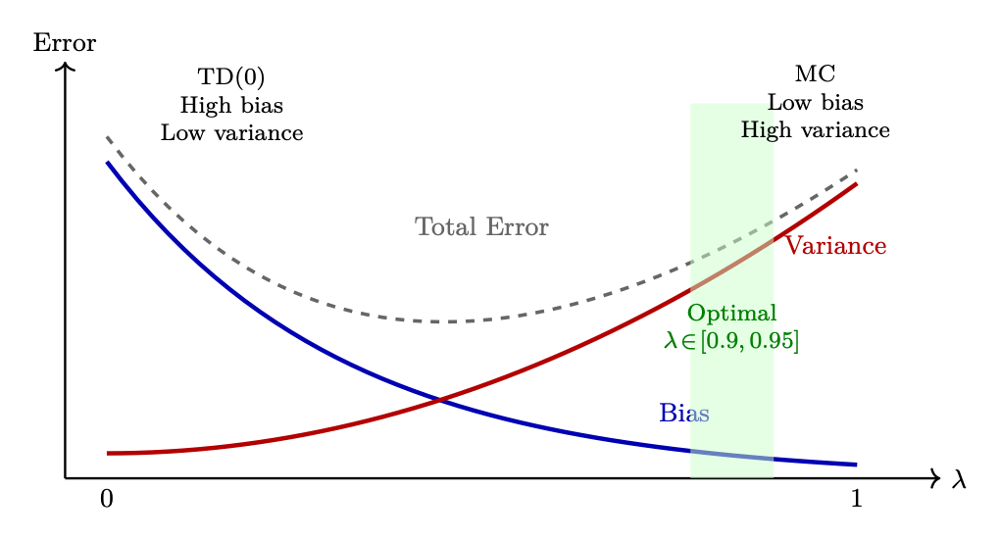
<em>图像来源：原 PDF 第 128 页，尺寸 1020x551。</em></p>
<p><a id="page-129"></a></p>
<h2 id="129">第 129 页</h2>
<p>事件早期的微小扰动可能会导致完全不同的总回报，
导致政策更新变得不稳定。</p>
<p>• 风险：破坏性的梯度更新；训练爆炸。</p>
<p>3.8.3
权衡矩阵</p>
<p>通过选择 λ ∈[0.95, 0.99]，GAE 最小化优势估计的总均方误差：</p>
<p>表 3.1：GAE 参数选择的操作比较。</p>
<p>配置
统计属性
领带
核心信赖
实际风险</p>
<p>λ = 0
高偏差，低变化
安斯
型号
参数
(θ)
次优局部最小化的政策陷阱
今
λ ε[0.95, 0.99]
平衡
（最佳
均方误差）
混合混合
需要根据环境进行调整
心理随机性
λ = 1
低偏置，高变化
安斯
经验主义
环境-
更换推出
破坏性的梯度更新；火车-
爆炸</p>
<p>3.8.4
调整 λ 的诊断</p>
<p>监控训练曲线可以直接了解偏差或方差是否占主导地位：</p>
<ol>
<li>
<p>高方差指标：政策熵急剧下降，而解释方差为
价值函数变得高度负值或不稳定→政策更新充满噪音。补救措施：
降低 λ 以平滑目标更新。</p>
</li>
<li>
<p>高偏差指标：Agent 实现早期稳定训练，但完全无法发现
复杂的延迟奖励序列→由于长期依赖关系而低估
引导。补救措施：将 λ 提高到接近 1.0，以使策略暴露于真实的下游轨迹
信号。</p>
</li>
</ol>
<p>3.9
On-Policy 与 Off-Policy — 详细比较</p>
<p>在保单
政策外</p>
<p>数据来源
仅当前政策 πθ
任何策略（重放缓冲区）
更新后
旧数据无效，必须重新
生成
旧数据仍然可用</p>
<p>样品效率
低（数据使用一次）
高（数据重复使用多次）
稳定性
更稳定（一致的分配
布丁）
可能发散（分布不匹配）</p>
<p>示例
加强，
聚苯醚，
A2C，
GRPO
Q-学习、DQN、SAC、DPO</p>
<p>对于LLM
PPO、GRPO（产生新鲜
每一步）
DPO（静态偏好数据集）</p>
<p>RLHF 方法的开启/关闭策略</p>
<p>PPO/GRPO 符合策略：根据当前策略生成响应、计算优势、
更新，丢弃数据，重新生成。这就是为什么生成占计算量的 60%——你重新生成
每一步。
DPO 是脱离策略的：在固定偏好数据集上进行训练。训练期间没有生成。很多
更便宜，但会受到分配转移的影响（随着政策的变化，数据会变得陈旧）。
在线 DPO 是一种混合体：生成新数据（策略生成）但使用 DPO 的监督</p>
<p><a id="page-130"></a></p>
<h2 id="130">第 130 页</h2>
<p>损失（离策略式优化）。获得两者的好处。
PPO 的聪明之处在于：使用裁剪比 r = πnew/πold 从一个梯度中压缩多个梯度
一批符合政策的数据（4 个时期），使其以受控方式“稍微偏离政策”。</p>
<p>3.10
基于模型与无模型</p>
<p>无模型
基于模型的</p>
<p>学到了什么
策略 π 和/或价值 V /Q di-
正确地
环境模型 ˆP(s′|s, a)</p>
<p>规划
没有计划，反应性决策
可以模拟未来的轨迹
样品效率
低（必须经历每一个-
事）
高（可以想象计划）</p>
<p>准确度
无模型偏差
模型误差复合
何时使用
复杂/未知的动态
简单的动态，需要效率
示例
PPO、DQN、SAC <a class="citation" href="#ref-170">[170]</a>
MuZero <a class="citation" href="#ref-171">[171]</a>、梦想家 <a class="citation" href="#ref-172">[172]</a>、AlphaGo <a class="citation" href="#ref-19">[19]</a></p>
<p>为什么 LLM RL 是无模型的</p>
<p>语言生成动态是微不足道的（将标记附加到序列 - 确定性转换）。
环境的“模型”不是瓶颈。困难的是奖励——预测
人类会更喜欢什么。这使得 LLM RL 不需要基于模型的方法。
RLHF 中的奖励模型在某种意义上可以被视为一个“模型”（它预测人类的偏好），
但它被用作奖励信号，而不是用于规划/模拟。 LLM RL 基本上是无模型的
政策优化。</p>
<p>3.11
奖励塑造</p>
<p>奖励塑造<a class="citation" href="#ref-173">[173]</a>是一种开发人员修改或补充环境的技术
原始奖励函数。其主要目标是改变稀疏奖励场景——其中
智能体仅在最终任务完成时收到反馈 - 进入密集奖励场景
中间反馈信号加速收敛。</p>
<p>3.11.1
数学框架</p>
<pre><code class="language-text">Let the original reward at time step t be Rt(s, a, s′). The reshaped reward adds an auxiliary shaping
function F:
R′
t(s, a, s′) = Rt(s, a, s′) + F(s, a, s′)
(3.26)
</code></pre>
<p>天真的重塑的风险：奖励黑客</p>
<p>如果任意设计 F(s, a, s′)，智能体就会找到结构漏洞来最大化辅助
发出信号而忽视全球目标。
示例：因到达中间地标而获得奖励的导航智能体可能会学习循环
无限期地围绕一个检查点来积累无限的奖励——而无需达到
目的地。
在LLM中：因“听起来自信”而获得奖励的模型可能会学会始终以“绝对！”开始
无论准确性如何。</p>
<p>3.11.2
基于潜力的奖励塑造（PBRS）</p>
<pre><code class="language-math">To mathematically guarantee that reshaping does not alter the optimal policy, use Potential-Based
Reward Shaping. The shaping function F is constrained to the difference in a scalar potential
function Φ across states:
F(s, a, s′) = γ Φ(s′) −Φ(s)
(3.27)
</code></pre>
<p><a id="page-131"></a></p>
<h2 id="131">第 131 页</h2>
<pre><code class="language-math">where Φ : S →R is a real-valued potential function evaluating the desirable proximity of a state
to the goal, and γ is the discount factor.
The complete PBRS reward:
</code></pre>
<pre><code class="language-math">R′(s, a, s′) = R(s, a, s′) + γ Φ(s′) −Φ(s)
(3.28)
</code></pre>
<p>3.11.3
理论保证</p>
<p>PBRS 策略不变定理</p>
<p>• 策略不变性：重塑奖励 R′ 下的最优策略 π* 与
原始奖励R下的最优策略。整形不能引入次优
行为。</p>
<p>• 循环抗扰性：任何以相同状态开始和结束的循环轨迹都会导致净值
潜在变化正好为零（Φ(s) −Φ(s) = 0）。智能体无法利用循环进行黑客攻击
奖励。</p>
<p>• 收敛加速：虽然最优策略不变，但成形奖励
提供更密集的梯度信号，使智能体在稀疏的情况下收敛速度提高 5-50 倍
奖励环境。</p>
<p><a id="page-132"></a></p>
<h2 id="132">第 132 页</h2>
<p>第二部分</p>
<p>LLM的强化学习方法</p>
<p><a id="page-133"></a></p>
<h2 id="133">第 133 页</h2>
<p>第4章</p>
<p>强化学习语言模型基础</p>
<p>有监督微调（SFT）教模型模仿演示，但模仿是有上限的：
该模型永远不会超过其训练数据的质量。强化学习打破了这个障碍。
通过生成新颖的文本、接收奖励反馈并更新为更高奖励的行为，
强化学习训练的模型可以发现人类演示者没有编写的策略——产生输出
更有帮助、更准确、更符合人类偏好 [9]。
这是每个前沿模型背后的机制：GPT-4 <a class="citation" href="#ref-23">[23]</a>、Claude、Llama-3 <a class="citation" href="#ref-25">[25]</a> 和
DeepSeek-R1 [15] 都在 SFT 之后应用 RL 作为转变有能力但无导向的关键步骤
模型成为一个对齐的助手。</p>
<p>4.1
LLM中强化学习的两种范式</p>
<p>语言模型的强化学习方法分为两大范式，每种范式适合不同的目标：</p>
<p>范式 1：通过人类偏好进行调整 (RLHF/DPO)。
最初的动机
将强化学习应用于LLM的目的是对齐——使模型变得有用、无害且诚实。缰绳-
从人类反馈中进行强制学习 (RLHF) [9, 174, 175] 训练奖励模型
成对的人类判断（“哪种反应更好？”），然后优化策略以最大化
即学到的奖励。 DPO <a class="citation" href="#ref-10">[10]</a> 通过完全消除奖励模型来简化这一点，将
偏好直接转化为监督损失。两种方法都会产生一致的助手
指示并遵守安全限制。</p>
<p>范式 2：通过可验证奖励（RLVR）增强能力。
最近，RL
不仅用于对齐，还用于教授新能力，特别是推理，
数学和代码生成。这里的奖励不是来自人类的偏好，而是来自
可验证的结果：模型是否产生了正确的答案？代码是否通过了所有测试？
DeepSeek-R1 [15] 证明了 GRPO 具有基于规则的奖励（格式正确性+答案
准确性）可以训练模型来开发复杂的思想链推理，而无需任何人工
偏好数据。这种范式——来自可验证奖励 (RLVR) 的强化学习——现在是主流方法
用于构建推理模型和智能体系统。</p>
<p>共享基金会
尽管目标不同，但这两种范式共享相同的核心机制：</p>
<p>• 自回归生成文本的策略 πθ（LLM）</p>
<p>• 奖励信号r(x, y)（从偏好中学习或从验证中计算）</p>
<p>• 针对参考策略的 KL 约束以防止退化解决方案</p>
<p>• 策略梯度优化（PPO 或GRPO）以更新模型以获得更高的奖励</p>
<p>本部分中的章节详细介绍了每个组件。</p>
<p><a id="page-134"></a></p>
<h2 id="134">第 134 页</h2>
<p>4.2
作为 MDP 的文本生成</p>
<p>使强化学习适用于语言模型的关键见解是重塑自回归生成
作为马尔可夫决策过程：</p>
<p>LLM作为智能体的类比</p>
<p>将 LLM 视为一次写入一个token的响应的智能体。在每一步中，它都会关注
到目前为止写的所有内容（状态），选择下一个单词（动作），页面增长
一个token（转换）。当回答完成后，评委将对其进行评分（奖励）。的
目标：学习一种持续获得高分的写作策略（政策）。</p>
<p>形式上，文本生成的 MDP 是：</p>
<p>• 状态st = (x, y1, . . . , yt−1)：与迄今为止生成的所有标记连接的提示。</p>
<p>• ε{1, 处的动作。。。 , |V|}：从词汇表中选择下一个标记（32K–128K 选项）。</p>
<p>• 转换P(st+1|st, at)：确定性—只需附加所选标记。没有环境
随机性。</p>
<p>• 奖励r：通常仅在生成结束时给出（稀疏）。对于 RLHF：奖励
模型得分。对于 RLVR：最终答案的正确性。</p>
<p>• 策略 πθ(at|st)：LLM 的下一个token概率分布 — 正是 softmax 的分布
输出已经计算。</p>
<p>• 折扣γ = 1.0：剧集是有限的（一个响应），因此不需要折扣。</p>
<p>这种映射非常强大，因为 LLM 已经是一种策略——它的 softmax 输出定义了 πθ(at|st)
对于每个州。我们不需要建立一个单独的政策网络；我们只需要调整权重
θ 因此模型为获得更高奖励的token序列分配了更高的概率。</p>
<p>4.3
RLHF 流水线</p>
<p>经典的 RLHF 流水线 [9] 由四个阶段组成：</p>
<p>1.监督微调（SFT）：在高质量演示上训练基本模型
产生一个可以遵循指令的策略 πSFT。</p>
<ol start="2">
<li>
<p>奖励模型训练：收集人类偏好比较（yw ≻yl 对于相同的
提示）并使用 Bradley-Terry 目标训练奖励模型 Rphi(x, y)。</p>
</li>
<li>
<p>RL优化：使用奖励模型作为信号，通过PPO或
GRPO，受到针对 πSFT 的 KL 约束。</p>
</li>
<li>
<p>评估和迭代：评估对齐的模型，收集新的失败案例并迭代。</p>
</li>
</ol>
<p>对于 RLVR（推理/智能体训练），阶段 1-2 被替换：训练 SFT 模型
在推理痕迹上，奖励模型被验证者取代（例如，检查数学
正确性）。第三阶段保持不变——针对奖励信号的 PPO 或 GRPO 优化。</p>
<p>LLM 强化学习与经典强化学习有何不同
LLM 的设置与经典的 RL 在一些重要方面有所不同：</p>
<p>• 确定性转换：“下一个状态”只是先前标记的串联 -
没有随机环境。</p>
<p>• 稀疏奖励：反馈通常在生成结束时给出一次（结果奖励）
或在关键步骤（过程奖励）。</p>
<p><a id="page-135"></a></p>
<h2 id="135">第 135 页</h2>
<p>• 巨大的行动空间：每一步都有 32K–128K 可能的标记，但探索是隐含的
通过温度采样。</p>
<p>• KL锚：LLM RL被限制接近SFT政策，阻止奖励
黑客攻击是以减少探索为代价的。</p>
<p>• 不需要价值函数：GRPO 使用群体完全消除了批评者网络
相反，奖励的相对标准化。</p>
<p>这些差异解释了为什么 PPO 和 GRPO 在LLM的 DQN 式方法中占主导地位。</p>
<p>4.4
本部分路线图</p>
<p>前面的章节构建了完整的 RL-for-LLM 工具包：</p>
<ol>
<li>
<p>PPO（第 5 章）——修剪的替代目标、优势估计的 GAE、批评家
网络，以及完整的 RLHF 训练循环。 GPT-4 和 Claude 背后的主力。</p>
</li>
<li>
<p>DPO（第 6 章）——通过将偏好转换为对比来完全绕过 RL
监督损失。比在线强化学习更简单，但灵活性较差。</p>
</li>
<li>
<p>GRPO（第 7 章）——DeepSeek 的无批评算法，使用组级奖励 Nor-
男性化。 DeepSeek-R1背后的方法和推理模型的主导选择
训练。</p>
</li>
<li>
<p>偏好优化变体（第 8 章）——Online DPO、KTO、Best-of-N 和
方法选择指导。</p>
</li>
<li>
<p>奖励建模（第 9 章）——Bradley-Terry 模型，过程奖励与结果奖励，
基于规则的 RLVR 奖励和多目标组合。</p>
</li>
<li>
<p>SFT 最佳实践（第 10 章）——序列打包、聊天模板、数据混合和
SFT 质量如何决定 RL 上限。</p>
</li>
<li>
<p>系统工程（第 11 章）——大规模分布式训练：并行策略、
生成-训练解耦，以及数百个 GPU 的基础设施。</p>
</li>
</ol>
<p><a id="page-136"></a></p>
<h2 id="136">第 136 页</h2>
<p>第5章</p>
<p>PPO：近端策略优化</p>
<p>5.1
动机和历史</p>
<p>问题：普通策略梯度更新对步长没有限制。不幸的一批
可以将政策推向产生垃圾的地区→垃圾获得低奖励→下一步
梯度使事情变得更糟→不可恢复的崩溃。
解决方案历史：</p>
<ol>
<li>
<p>TRPO <a class="citation" href="#ref-167">[167]</a> (2015)：限制新旧政策之间的 KL 分歧。工作完美但是
需要昂贵的二阶优化（Fisher 信息矩阵、共轭梯度）。</p>
</li>
<li>
<p>PPO (2017) <a class="citation" href="#ref-168">[168]</a>：通过简单的一阶限幅目标实现类似的稳定性。 10×
实现起来更简单，效果也几乎一样，可以轻松地扩展到分布式训练。</p>
</li>
</ol>
<p>5.2
被剪裁的目标</p>
<p>PPO 的核心创新是一个截断的替代目标，可以防止破坏性的大型政策
更新，同时保持易于实施。</p>
<p>(5.1)</p>
<pre><code class="language-math">LCLIP(θ) = Et
h
min

rt(θ) ˆAt, clip(rt(θ), 1−ϵ, 1+ϵ) ˆAt
i
</code></pre>
<pre><code class="language-math">where rt(θ) =
πθ(at|st)
πθold(at|st) is the probability ratio.
</code></pre>
<p>剪裁直觉——关键洞察</p>
<p>min 运算符创建一个悲观界限：</p>
<p>• 良好的行动（^A &gt; 0）：我们希望增加其概率。智能体 r ˆA 随着 r 的增长而增长
增加。但夹帽在 r = 1 + ϵ 时受益。 “不要贪图一个好例子。”</p>
<p>• 不良行为（^A &lt; 0）：我们希望降低其概率。 r ˆA 随着 r 的减小而提高。但是
夹帽在 r = 1 −ϵ 时受益。 “不要因为一个坏例子就忘记太激进。”</p>
<p>净效应：每次更新步骤政策变化最多 ±20%。防止灾难性崩溃
以及过于自信的专业化。</p>
<p>5.3
完全 PPO 损失</p>
<p>(5.2)</p>
<pre><code class="language-text">+c2 H[πθ(·|st)]
|
{z
}
entropy bonus
</code></pre>
<p>L = LCLIP −c1 (Vθ(st) −V 目标
t
)2
|
{z
}
价值损失</p>
<p>• 价值损失（c1 = 0.1）：训练批评者预测回报。还进行了修剪以保持稳定性。</p>
<p><a id="page-137"></a></p>
<h2 id="137">第 137 页</h2>
<p>• 熵红利(c2 = 0.01)：防止过早收敛到确定性策略。关键
用于探索。</p>
<p>5.4
PPO梯度的推导及更新规则</p>
<p>本节追踪从 RL 目标到 PPO 更新规则的数学路径，显示
为什么修剪的智能体有效。</p>
<p>5.4.1
第 1 步：强化学习目标</p>
<p>目标是最大化政策下的预期累积奖励：</p>
<h1 id="_31"></h1>
<p>” T
X</p>
<p>(5.3)</p>
<pre><code class="language-math">J(θ) = Eτ∼πθ
</code></pre>
<p>时间=0
室温</p>
<p>5.4.2
第二步：策略梯度定理</p>
<p>J(θ)相对于策略参数的梯度：</p>
<h1 id="_32"></h1>
<p>” T
X</p>
<p>(5.4)</p>
<pre><code class="language-math">∇θJ(θ) = Eπθ
</code></pre>
<pre><code class="language-math">t=0
∇θ log πθ(at|st) · ˆAt
</code></pre>
<p>其中 ^At 是优势函数（与平均水平相比，at 的动作好多少）
状态 st 中的动作）。这用减少方差的优势取代了全部回报。</p>
<p>5.4.3
步骤 3：离策略数据的重要性采样</p>
<pre><code class="language-math">PPO collects data using πθold but updates πθ. To correct for this distribution mismatch, apply
importance sampling:
</code></pre>
<h1 id="_33"></h1>
<p>(5.5)</p>
<pre><code class="language-math">∇θJ(θ) = Eπθold
</code></pre>
<pre><code class="language-math">"
πθ(at|st)
πθold(at|st)∇θ log πθ(at|st) · ˆAt
</code></pre>
<p>f，我们得到：</p>
<pre><code class="language-math">Define the probability ratio rt(θ) =
πθ(at|st)
πθold(at|st). Using the identity ∇θ log f = ∇θf
</code></pre>
<pre><code class="language-math">h
∇θ rt(θ) · ˆAt
i
(5.6)
</code></pre>
<pre><code class="language-math">∇θJ(θ) = Eπθold
</code></pre>
<p>这意味着最大化替代目标：</p>
<pre><code class="language-math">LCPI(θ) = Et
h
rt(θ) · ˆAt
i
(5.7)
</code></pre>
<p>5.4.4
第四步：无约束智能体的问题</p>
<p>LCPI 是一个有效的目标，但在没有约束的情况下，单个梯度步骤可以将 rt(θ) 推离 1.0，
导致：</p>
<p>• 重要性权重变得极端→高方差</p>
<p>• 政策进入未经测试的地区→奖励模型给出不可靠的分数</p>
<p>• 灾难性崩溃：政策产生垃圾，无法恢复</p>
<pre><code class="language-math">TRPO solution: Constrain DKL(πθold∥πθ) ≤δ. Requires second-order methods (expensive).
</code></pre>
<p><a id="page-138"></a></p>
<h2 id="138">第 138 页</h2>
<p>5.4.5
第 5 步：PPO 的截断智能体（一阶近似）</p>
<p>PPO 将硬 KL 约束替换为剪裁目标，该目标使用以下方法实现类似的行为
仅一阶梯度：</p>
<p>(5.8)</p>
<pre><code class="language-math">LCLIP(θ) = Et
h
min

rt(θ) ˆAt, clip(rt(θ), 1−ϵ, 1+ϵ) ˆAt
i
</code></pre>
<p>Derivation of the gradient:
Let Lt = min(rt ˆAt, ¯rt ˆAt) where ¯rt = clip(rt, 1−ϵ, 1+ϵ).</p>
<p>∇θLt =</p>
<pre><code class="language-math">(
∇θrt(θ) · ˆAt
if rt ˆAt &lt; ¯rt ˆAt (unclipped term is smaller)
0
if rt ˆAt ≥¯rt ˆAt (clipped term is smaller, gradient = 0)
(5.9)
</code></pre>
<p>扩大条件：</p>
<pre><code class="language-math">• When ˆAt &gt; 0 and rt &lt; 1 + ϵ: Gradient flows normally — policy is encouraged to increase
πθ(at|st).
</code></pre>
<p>• 当 ˆAt &gt; 0 且 rt ≥1 + ϵ 时：梯度为零——策略已经增加得足够多，停止
推动。</p>
<pre><code class="language-math">• When ˆAt &lt; 0 and rt &gt; 1 −ϵ: Gradient flows normally — policy is encouraged to decrease
πθ(at|st).
</code></pre>
<p>• 当 ˆAt &lt; 0 且 rt ≤1 −ϵ 时：梯度为零 — 策略已经下降得足够多，停止
推动。</p>
<p>5.4.6
第 6 步：完整的 PPO 更新规则</p>
<p>结合剪裁的策略损失、价值损失和熵奖励：</p>
<p>(5.10)</p>
<pre><code class="language-math">θk+1 = θk + α · ∇θ
h
LCLIP(θ) −c1LVF(θ) + c2H[πθ]
i
</code></pre>
<p>where:</p>
<p>LVF(θ) =

Vθ(st) −V target
t
2
(value function regression loss)
(5.11)</p>
<p>H[πθ] = −
X</p>
<pre><code class="language-math">a
πθ(a|st) log πθ(a|st)
(entropy of the policy)
(5.12)
</code></pre>
<p>摘要：为什么这有效</p>
<ol>
<li>
<p>政策梯度定理给我们改进政策的方向。</p>
</li>
<li>
<p>重要性采样让我们可以在多个时期重复使用 πθold 的数据。</p>
</li>
<li>
<p>剪裁可防止重要性权重变得极端，从而保证更新安全。</p>
</li>
<li>
<p>min 运算符确保我们始终采用（剪裁、未剪裁）中更保守的一个 —
改善的悲观下限。</p>
</li>
<li>
<p>结果：仅使用一阶梯度以概率 1 进行单调改进。否
Hessians，没有共轭梯度，没有线搜索。</p>
</li>
</ol>
<p>5.5
转出缓冲区和转出</p>
<p>在 PPO 中，数据管理依赖于称为 Rollout 的专门的短期存储系统
缓冲器。与在重放缓冲区中无限期存储体验的离策略算法 (DQN) 不同，
PPO 需要一个临时结构来满足其在策略数学约束。</p>
<p><a id="page-139"></a></p>
<h2 id="139">第 139 页</h2>
<p>5.5.1
什么是推出？</p>
<p>推出（轨迹）是由运行当前策略的智能体生成的一系列交互
在环境中：</p>
<p>• 过程：智能体观察状态，选择动作，接收奖励，然后移动到
下一个状态。它会重复固定的步数或直到剧集结束。</p>
<p>• 在LLM/RLHF 中：推出包括从数据集中获取提示并让语言
模型逐个标记生成完整的标记序列，直到命中文本结束标记。
每个token都是一个“步骤”。</p>
<p>5.5.2
推出缓冲区</p>
<p>转出缓冲区临时存储转出阶段收集的所有数据。对于每个生成的
token/step，它记录：</p>
<pre><code class="language-text">B = {(st, at, log πθold(at|st), rt, V (st))}T
t=1
(5.13)
</code></pre>
<p>• st、at、rt：步骤t 的状态、采取的行动和奖励。</p>
<p>log πθold(at|st)：在生成该操作的确切策略下采取该操作的对数概率
（比率计算所需）。</p>
<p>• V (st)：价值函数的基线预测（GAE 优势计算所需）。</p>
<p>5.5.3
推出缓冲区生命周期</p>
<p>缓冲器以严格的三相时钟周期运行：</p>
<ol>
<li>
<p>收集：主动策略与环境交互，用新的轨迹填充缓冲区
（对于批次 = 128、max_tokens = 512 的 70B 模型：每个最多 65K token级转换
推出）。</p>
</li>
<li>
<p>训练：计算跨轨迹的 GAE 优势。运行 K 个周期（通常为 3–10）
小批量梯度下降使用修剪的目标来更新策略权重。</p>
</li>
<li>
<p>清除：整个缓冲区被彻底擦拭干净。由于 PPO 符合政策，数据
旧策略生成的数据无法在下一个更新周期安全地重用——比率 rt(θ)
将会变得陈旧并且剪裁保证将会被打破。</p>
</li>
</ol>
<p>转出缓冲区与重播缓冲区</p>
<p>重播缓冲区（DQN、SAC）：离策略。无限期地存储数百万个过渡。随机
抽样。在许多更新中重复使用数据。
转出缓冲区（PPO、GRPO）：按策略。存储一批轨迹。用于几个
纪元，然后完全丢弃。每个周期都需要新鲜数据。
这就是为什么 PPO 需要连续生成——每次更新后缓冲区都会被清空，
要求新鲜的推出。这造成了生成瓶颈（挂钟时间的 60-70%）
特别痛苦。</p>
<p>RLHF 背景下的 vLLM
在 RLHF 训练中，vLLM 用于生成阶段（挂钟时间的 60-70%）。的
策略模型生成部署，然后由奖励模型进行评分。主要优点：</p>
<p>• 批量生成：跨提示并行生成 256 个以上响应。</p>
<p>• 内存效率：适应更多并发代→更高的GPU利用率
发电瓶颈。</p>
<p><a id="page-140"></a></p>
<h2 id="140">第 140 页</h2>
<p>• 前缀共享：当每个提示（GRPO）生成N = 8 个响应时，提示KV
计算一次并在所有 8 个之间共享——没有多余的预填充。</p>
<p>• 集成：OpenRLHF 和 TRL 等框架使用 vLLM 作为生成后端，
将发电工人 (vLLM) 与训练工人 (DeepSpeed/FSDP) 分开。</p>
<p>5.6
RLHF 的 PPO：完整循环</p>
<p>70B 聊天模型的具体 PPO 步骤</p>
<p>设置：批量 128 个提示，Llama-3-70B 策略，最大 512 个token。
步骤 1 — 生成：采样 128 个响应（温度=0.7，top-p=0.9）。这需要 60%
时间。
第 2 步 — 评分：奖励模型对每个（提示、响应）对进行评分。范围：0.2–0.95。
步骤 3 — KL：计算每个token KL：KLt = log πθ(yt|y&lt;t) −log πref(yt|y&lt;t)。平均 KL 跨度
标记：通常为 3-8 个。
步骤 4 — 最终奖励：R = rRM −0.05 ×mean_KL（仅限最后一个token）。
步骤 5 — GAE：使用值头预测计算每个标记位置的 ^At。美白
优点（零均值，单位方差）。
第 6 步 — 更新：16 个小批量上的 4 个 SGD 周期。剪辑比率 ϵ = 0.2。梯度范数
剪裁为 1.0。
结果：策略每步提高 ∼0.005 胜率。 10K 步后：绝对提高 5-10%
通过 SFT 进行更换。</p>
<p>LLM 强化学习中的分词陷阱
当计算每个token的 KL 惩罚和优势时，请记住，分词决定了
什么是“步骤”。单个概念操作（例如，输出“2024”）可能跨越 1-4 个标记
取决于分词器。这会产生一些微妙的问题：</p>
<p>• KL 核算：对于相同的语义内容，每个token KL 求和为不同的总数
以不同的方式进行标记（例如，罕见的单词分成更多的子单词会得到更高的总 KL 惩罚）。</p>
<p>• 信用分配：GAE 为每个token位置分配优势——但语义“决策”
通常跨越多个token。该模型仅在单词的第一个标记处真正“决定”；
随后的子词标记很大程度上是确定性的。</p>
<p>• 奖励放置：仅在最后一个token上放置奖励意味着所有之前的token
必须通过 GAE 向后传播信用——较长的响应会受到更稀释的影响
信号。</p>
<p>缓解措施：一些系统通过序列长度标准化 KL，使用字级奖励整形，或者
在语义边界而不是最终标记上应用奖励。</p>
<p>5.7
详细机制：Logits 和策略更新</p>
<p>PPO 管理内存中两个不同的参数状态，它们共享相同的神经网络
拓扑但在优化期间保持不同的权重值：</p>
<h3 id="_34">本页图像资源</h3>
<p>
<em>图像来源：原 PDF 第 140 页，尺寸 1461x266。</em></p>
<p><a id="page-141"></a></p>
<h2 id="141">第 141 页</h2>
<p>图 5.1：PPO 端到端：从提示批次到生成、奖励评分、KL 计算、
优势估计，以减少政策更新。反馈循环显示更新后的策略被用于
下一代的步骤。</p>
<p>核心架构：两个网络</p>
<pre><code class="language-math">1. The Policy Network (πθ): The active, live network parameterized by weights θ. Continu-
ously updated via backpropagation during optimization.
</code></pre>
<pre><code class="language-math">2. The Old Policy Network (πθold): A frozen snapshot parameterized by weights θold. Acts
as a static anchor during a single optimization cycle to prevent the policy from shifting too
drastically.
</code></pre>
<p>5.7.1
第一阶段：推出（数据收集）</p>
<p>在数据收集期间，智能体与环境交互 T 个步骤。在每个时间步 t：</p>
<p>1.环境产生当前状态/观察st（对于LLM：提示+生成的token
到目前为止）。</p>
<p>2.状态st通过当前网络快照（θold）传递。</p>
<ol start="3">
<li>
<p>网络输出原始非标准化值 — logits zold — 大小为 |V | 的向量（词汇
尺寸 32K–128K）。</p>
</li>
<li>
<p>通过 Softmax 计算概率：</p>
</li>
</ol>
<p>(5.14)</p>
<pre><code class="language-math">P(a | st) = Softmax(zold) =
exp(zold,a)
P|V |
j=1 exp(zold,j)
</code></pre>
<ol start="5">
<li>从 P(a | st) 中采样 (next token) 处的动作，并且转换元组 ⟨st, at, rt, st+1⟩
与 log πθold(at | st) 一起存储在 rollout 缓冲区中。</li>
</ol>
<p>为什么要存储对数概率？</p>
<p>在推出期间将 log πθold(at | st) 存储为标量可以避免在推出期间重新运行冻结的网络
优化。这为每个小批量节省了一次完整的前向传递——对于 70B 模型来说意义重大。</p>
<p>5.7.2
第 2 阶段：优化循环（小批量更新）</p>
<p>一旦 rollout 缓冲区已满，PPO 将在小批量上运行 K epoch（通常为 3-10）。对于每一个
梯度步骤，使用存储的状态 st 为两个策略生成 logits：
旧政策评估（冻结）：</p>
<pre><code class="language-math">zold = f(st; θold)
−→
log πθold(at | st) = LogSoftmax(zold)[at]
(5.15)
</code></pre>
<p>实现快捷方式：重用 rollout 中存储的标量，而不是重新计算。</p>
<h3 id="_35">本页图像资源</h3>
<p>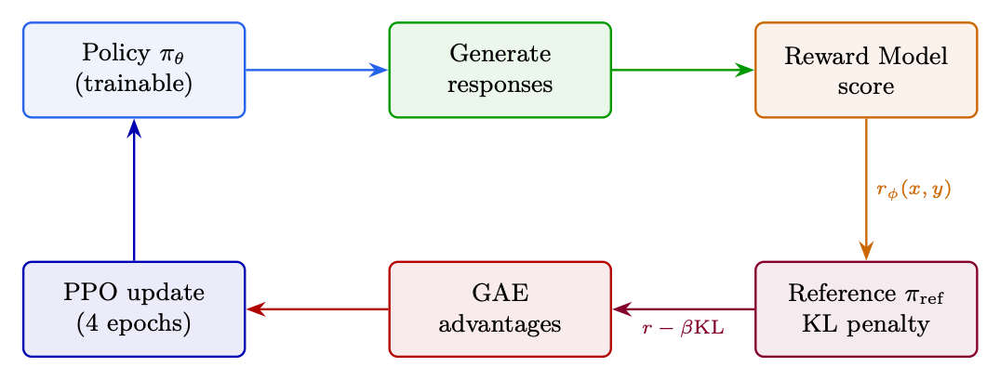
<em>图像来源：原 PDF 第 141 页，尺寸 1075x409。</em></p>
<p><a id="page-142"></a></p>
<h2 id="142">第 142 页</h2>
<p>实时政策评估（更新）：</p>
<pre><code class="language-math">znew = f(st; θ)
−→
log πθ(at | st) = LogSoftmax(znew)[at]
(5.16)
</code></pre>
<p>因为 θ 在每个小批量梯度步骤后都会更新，所以 znew 在整个过程中不断变化
优化循环，而 zold 保持完全静态。</p>
<p>5.7.3
从 Logits 到概率比</p>
<p>核心 PPO 比率衡量的是新政策与现有政策相比采取行动的可能性有多少。
旧：</p>
<pre><code class="language-math">rt(θ) =
πθ(at | st)
πθold(at | st)
(5.17)
</code></pre>
<p>为了避免除原始概率时出现灾难性的数值下溢/溢出，计算
在日志空间中执行：</p>
<p>log πθ(at | st) = LogSoftmax(znew)[at]
(5.18)</p>
<p>log πθold(at | st) = LogSoftmax(zold)[at]
(5.19)</p>
<p>该比率通过差值求幂来恢复：</p>
<pre><code class="language-math">rt(θ) = exp(log πθ(at | st) −log πθold(at | st))
(5.20)
</code></pre>
<p>该比率被注入到 PPO 裁剪目标中：</p>
<p>(5.21)</p>
<pre><code class="language-math">LCLIP(θ) = ˆEt
h
min

rt(θ) ˆAt, clip(rt(θ), 1−ϵ, 1+ϵ) ˆAt
i
</code></pre>
<p>剪辑的工作原理</p>
<p>• 如果 ˆAt &gt; 0（良好行动）：比率被限制为 1 + ϵ — 不能过度利用良好行动。</p>
<p>• 如果 ˆAt &lt; 0（不良行为）：比率被剪裁为 1 −ϵ — 不能过度惩罚不良行为。</p>
<p>• min(·) 确保我们始终采用更保守的估计。</p>
<p>结果：信任区域内的单调改进——没有灾难性的崩溃。</p>
<p>5.7.4
PPO 重量生命周期</p>
<p>表 5.1：PPO 训练阶段 θ 和 θold 的演变。</p>
<pre><code class="language-math">Phase
Live θ
Old θold
Ratio rt(θ)
</code></pre>
<ol>
<li>推出开始
活动副本
相同的活动副本
始终为 1.0（按身份）</li>
<li>批量步骤1
计算梯度
冷冻
1.0（初始步骤）
3.批量步骤N
修改 (θ ̸= θold)
冷冻
偏离 1.0（例如 1.06、0.94）</li>
<li>削波激活
以 ϵ 为界
冷冻
陷入束缚 (1 ± ϵ)
5、优化结束
高度优化
废弃
不适用</li>
<li>下一个周期
θ→θ旧
接收新的 θ
重置回 1.0</li>
</ol>
<p>5.7.5
连续行动空间扩展</p>
<p>对于连续动作空间（对于LLM来说不是典型的，但对于机器人强化学习很重要），网络
输出分布参数而不是离散 logits：</p>
<p>• 预测平均向量 µ</p>
<p><a id="page-143"></a></p>
<h2 id="143">第 143 页</h2>
<p>• Predicted standard deviation vector σ</p>
<p>Log-probabilities are computed via the Gaussian log-PDF:</p>
<p>at −µ</p>
<p>2
−log(σ) −1</p>
<p>log π(at | st) = −1</p>
<p>σ</p>
<p>2</p>
<p>2 log(2π)
(5.22)</p>
<pre><code class="language-math">The ratio rt(θ) = exp(log πθ −log πθold) is then computed identically and fed into the same clipping
objective.
</code></pre>
<p>5.8
TRL实施</p>
<p>HuggingFace TRL 库 <a class="citation" href="#ref-176">[176]</a> 提供所有主要 RL 的生产就绪实现
LLM 的方法。</p>
<pre><code class="language-text">from trl import
PPOConfig , PPOTrainer , AutoModelForCausalLMWithValueHead
from
transformers
import
AutoTokenizer
from peft
import
LoraConfig
</code></pre>
<pre><code class="language-text"># Model
setup
model = AutoModelForCausalLMWithValueHead . from_pretrained (
</code></pre>
<pre><code class="language-text">"meta -llama/Llama -3.1 -8B-Instruct",
torch_dtype=torch.bfloat16 , device_map="auto",
peft_config=LoraConfig(r=64, lora_alpha =16, target_modules =["q_proj","v_proj",
"k_proj","o_proj"])
)
tokenizer = AutoTokenizer. from_pretrained ("meta -llama/Llama -3.1 -8B-Instruct")
</code></pre>
<pre><code class="language-text"># PPO config
with all
critical
hyperparameters
ppo_config = PPOConfig(
</code></pre>
<pre><code class="language-text">learning_rate =1.5e-6,
# Low LR for
stability
batch_size =128,
# Prompts
per step
mini_batch_size =16,
# Gradient
accumulation
unit
ppo_epochs =4,
# Epochs per batch (reuse
data)
gamma =1.0,
# No discounting (single
turn)
lam =0.95 ,
# GAE lambda
cliprange =0.2,
# PPO
epsilon
cliprange_value =0.2,
# Value
function
clipping
vf_coef =0.1,
# Value
loss
coefficient
init_kl_coef =0.05 ,
# Initial KL penalty
target_kl =6.0,
# Adaptive KL target
whiten_rewards =True ,
# Normalize
advantages
gradient_accumulation_steps =4,
max_grad_norm =1.0,
)
</code></pre>
<pre><code class="language-text">ppo_trainer = PPOTrainer(config=ppo_config , model=model , tokenizer=tokenizer ,
</code></pre>
<pre><code class="language-text">dataset=prompt_dataset , data_collator =collator)
</code></pre>
<pre><code class="language-text"># Training
loop
for batch in ppo_trainer.dataloader:
</code></pre>
<pre><code class="language-text"># 1. Generate
responses
query_tensors = batch["input_ids"]
response_tensors = ppo_trainer.generate(
</code></pre>
<pre><code class="language-text">query_tensors , max_new_tokens =512 ,
temperature =0.7 , top_p =0.9 ,
do_sample=
True
</code></pre>
<pre><code class="language-text">)
# 2. Score
with
reward
model
texts = [tokenizer.decode(r, skip_special_tokens =True) for r in
response_tensors ]
</code></pre>
<pre><code class="language-text">rewards = [torch.tensor(reward_model .score(q, r)) for q, r in zip(batch["query
"], texts)]
</code></pre>
<pre><code class="language-text"># 3. PPO update (handles KL , GAE , clipping
internally)
</code></pre>
<p><a id="page-144"></a></p>
<h2 id="144">第 144 页</h2>
<pre><code class="language-text">stats = ppo_trainer.step(query_tensors , response_tensors , rewards)
# Monitor: stats ["ppo/mean_scores "], stats ["ppo/policy/approx_kl "]
</code></pre>
<p>5.9
关键超参数</p>
<p>参数
典型
犯错的后果</p>
<p>剪辑范围
0.2
太低：没有学习。太高：不稳定。
初始化kl_coef
0.01–0.1
太低：奖励黑客行为。太高：卡在
SFT。
目标kl
4–8
自适应控制器目标。较低=保守-
积极的。
ppo_epochs
4
太多：过度适合批次。太少：浪费
生成计算。
学习率
1−5 × 10−6
太高：灾难性遗忘。
批量大小
64–256
更大=更平滑的梯度，更多的生成计算。
温度
0.7–1.0
较低：探索较少。更高：噪音更大
塔格斯。</p>
<p><a id="page-145"></a></p>
<h2 id="145">第 145 页</h2>
<p>第6章</p>
<p>DPO：直接偏好
优化</p>
<p>6.1
动机</p>
<p>PPO需要内存中的4个模型（策略、参考、奖励模型、价值头），复杂的RL
基础设施，而且是出了名的不稳定。 DPO<a class="citation" href="#ref-10">[10]</a>问：我们可以跳过RL直接学习吗
从偏好？
关键见解：RLHF目标下的最优策略（奖励最大化+KL惩罚）
有一个封闭式解。我们可以得出隐式优化相同的监督损失
客观。</p>
<p>6.2
数学推导</p>
<pre><code class="language-math">Step 1: RLHF objective: maxπ Ex,y∼π[r(x, y)] −βDKL[π∥πref]
</code></pre>
<p></p>
<p>β</p>
<p>Step 2: The optimal solution is: π∗(y|x) =
1
Z(x)πref(y|x) exp
 r(x,y)</p>
<p>Step 3: Rearrange to express reward in terms of policy: r(x, y) = β log π∗(y|x)</p>
<pre><code class="language-text">πref(y|x) + β log Z(x)
Step 4: Substitute into Bradley-Terry preference model P(yw ≻yl) = σ(r(yw) −r(yl)). The Z(x)
cancels!
</code></pre>
<p></p>
<pre><code class="language-math">
log σ

β log πθ(yw|x)
</code></pre>
<p>(6.1)</p>
<p>LDPO(θ) = −E(x,yw,yl)</p>
<pre><code class="language-math">πref(yw|x) −β log πθ(yl|x)
</code></pre>
<p>πref(yl|x)</p>
<p>DPO 实际做什么</p>
<pre><code class="language-math">Define the implicit reward as ˆr(x, y) = β log πθ(y|x)
</code></pre>
<p>πref(y|x)。
DPO 最小化交叉熵损失，其中“标签”是：选择的应该具有更高的隐式
奖励比拒绝。裕度由 β 控制：</p>
<pre><code class="language-math">• Large β: need large margin →policy moves aggressively →risk forgetting
</code></pre>
<pre><code class="language-math">• Small β: small margin suffices →policy stays close to reference →conservative
</code></pre>
<p>参考模型充当正则化器：策略必须通过以下方式“证明”任何偏离它的行为：
显示偏好对齐。</p>
<p>6.3
梯度分析</p>
<p>DPO 梯度分解为：</p>
<pre><code class="language-math">· [∇θ log πθ(yw|x) −∇θ log πθ(yl|x)]
(6.2)
</code></pre>
<pre><code class="language-math">∇θL = −β ·
σ(−ˆrw + ˆrl)
|
{z
}
weight: higher when model is wrong
</code></pre>
<p><a id="page-146"></a></p>
<h2 id="146">第 146 页</h2>
<p>解释：梯度增加了选择的概率并减少了拒绝的概率。重量
当模型当前更喜欢错误的答案时，它的学习重点是“令人困惑”
对。</p>
<p>具体 DPO 示例</p>
<p>提示：“向 10 岁的孩子解释量子纠缠。”
选择（yw）：“想象你有两枚魔法硬币。当你翻转一枚硬币时，它是正面，另一枚则正面朝上。
无论相隔多远，一瞬间就变成了尾巴！”</p>
<pre><code class="language-math">log πθ(yw|x) = −15.3, log πref(yw|x) = −16.1
Rejected (yl): “Quantum entanglement is a phenomenon where two particles become correlated
such that the quantum state of one particle cannot be described independently.”
</code></pre>
<p>log πθ(yl|x) = −12.8，log πref(yl|x) = −12.5
隐性奖励： ˆrw = 0.1 × ((−15.3) −(−16.1)) = 0.08, ˆrl = 0.1 × ((−12.8) −(−12.5)) = −0.03
损失输入： σ(0.08 −(−0.03)) = σ(0.11) = 0.527
损失：−log(0.527) = 0.64 — 模型几乎不喜欢所选择的。梯度会大力推动。
训练后：选择的概率增加，拒绝的概率减少，直到边际稳定在附近
1/(2β)。</p>
<p>6.4
TRL实施</p>
<p>下面显示了使用 HuggingFace TRL 的最小工作示例。</p>
<pre><code class="language-text">from trl import
DPOConfig , DPOTrainer
from
transformers
import
AutoModelForCausalLM , AutoTokenizer
from peft
import
LoraConfig
from
datasets
import
load_dataset
</code></pre>
<pre><code class="language-text">model = AutoModelForCausalLM . from_pretrained ("meta -llama/Llama -3.1 -8B-Instruct",
</code></pre>
<pre><code class="language-text">torch_dtype=torch.bfloat16 , attn_implementation =" flash_attention_2 ")
tokenizer = AutoTokenizer. from_pretrained ("meta -llama/Llama -3.1 -8B-Instruct")
</code></pre>
<pre><code class="language-text"># Dataset
format: {" prompt ": str , "chosen ": str , "rejected ": str}
dataset = load_dataset("argilla/ultrafeedback -binarized -preferences")
</code></pre>
<pre><code class="language-text">lora_config = LoraConfig(r=64, lora_alpha =16, lora_dropout =0.05 ,
</code></pre>
<pre><code class="language-text">target_modules =["q_proj","k_proj","v_proj","o_proj","gate_proj","up_proj","
down_proj"])
</code></pre>
<pre><code class="language-text">dpo_config = DPOConfig(
</code></pre>
<pre><code class="language-text">output_dir="./ dpo_output",
beta =0.1,
# KL regularization
strength
learning_rate =5e-7,
# Very low LR for
stability
loss_type="sigmoid",
# Standard
DPO loss
max_length =2048 ,
# Max
sequence
length
max_prompt_length =1024 ,
# Truncation
for
prompts
per_device_train_batch_size =2,
gradient_accumulation_steps =8,
# Effective
batch = 16
gradient_checkpointing =True ,
bf16=True ,
num_train_epochs =1,
# DPO
overfits
fast - 1 epoch!
warmup_ratio =0.1,
logging_steps =10,
eval_strategy="steps",
eval_steps =200,
save_strategy="steps",
save_steps =500,
)
</code></pre>
<pre><code class="language-text">trainer = DPOTrainer(
</code></pre>
<pre><code class="language-text">model=model ,
</code></pre>
<p><a id="page-147"></a></p>
<h2 id="147">第 147 页</h2>
<pre><code class="language-text">ref_model=None ,
# With LoRA , ref = base
model (no copy
needed !)
args=dpo_config ,
train_dataset=dataset["train"],
eval_dataset=dataset["test"],
tokenizer=tokenizer ,
peft_config=lora_config ,
)
trainer.train ()
# Key metrics to monitor: train/rewards/chosen , train/rewards/rejected , train/
</code></pre>
<pre><code class="language-text">rewards/margins
</code></pre>
<p>6.5
DPO 的工作原理：完整机制</p>
<p>本节提供了 DPO 的完整计算细节——token级别发生的情况
训练期间。</p>
<p>6.5.1
序列级对数概率</p>
<p>DPO 中的关键量是给定的整个序列 y = (y1, y2, ..., yT ) 的对数概率
提示 x。这被计算为每个标记对数概率的总和：</p>
<p>时间
X</p>
<p>对数 πθ(y|x) =</p>
<p>t=1
log πθ(yt | x, y&lt;t)
(6.3)</p>
<p>每项 log πθ(yt|x, y&lt;t) 是实际标记 yt 在位置 t 处的 log-softmax 输出
序列。这与标准语言建模中使用的交叉熵损失相同 - 但这里
我们求和而不是平均。
关键细节：梯度流过 yw 和 yl 中的每个标记位置。有
没有中间标记的屏蔽——每个标记都对序列级对数概率做出贡献。</p>
<p>6.5.2
DPO 损失分解</p>
<p>从损失开始：</p>
<pre><code class="language-math">LDPO(θ) = −E(x,yw,yl)∼D[log σ(β · hθ(x, yw, yl))]
(6.4)
</code></pre>
<p>where the “implicit reward margin” hθ is:</p>
<p>−
log πθ(yl|x)</p>
<p>(6.5)</p>
<pre><code class="language-math">hθ(x, yw, yl) =
log πθ(yw|x)
</code></pre>
<pre><code class="language-text">πref(yw|x)
|
{z
}
chosen reward proxy
</code></pre>
<pre><code class="language-text">πref(yl|x)
|
{z
}
rejected reward proxy
</code></pre>
<p>扩展到token级别的术语：</p>
<p>|yw|
X</p>
<p>|yl|
X</p>
<p>(6.6)</p>
<p>hθ =</p>
<pre><code class="language-math">h
log πθ(yt
w|x, y&lt;t
w ) −log πref(yt
w|x, y&lt;t
w )
i
−
</code></pre>
<pre><code class="language-math">h
log πθ(yt
l|x, y&lt;t
l ) −log πref(yt
l|x, y&lt;t
l )
i
</code></pre>
<pre><code class="language-math">t=1
</code></pre>
<pre><code class="language-math">t=1
</code></pre>
<p>6.5.3
前向传球：一步一步</p>
<p>对于一个训练示例 (x, yw, yl)：</p>
<ol>
<li>
<p>连接：形成两个序列：[x; yw] 和 [x;基]。在批次内填充到相同的长度。</p>
</li>
<li>
<p>前向传递（策略 πθ）：通过模型运行两个序列。收集 logits 在每个
响应位置。</p>
</li>
</ol>
<p><a id="page-148"></a></p>
<h2 id="148">第 148 页</h2>
<ol start="3">
<li>
<p>提取对数概率：在响应中的每个位置 t 处，取 log softmax(logitst)[yt] —
实际token的对数概率。</p>
</li>
<li>
<p>token求和：</p>
</li>
</ol>
<p>logp_选择=
X</p>
<pre><code class="language-math">t∈response positions
log πθ(yt
w|x, y&lt;t
w )
(6.7)
</code></pre>
<p>日志p_拒绝=
X</p>
<pre><code class="language-math">t∈response positions
log πθ(yt
l|x, y&lt;t
l )
(6.8)
</code></pre>
<ol start="5">
<li>减去参考（预先计算或来自第二次前向传递）：</li>
</ol>
<p>ratio_w = logp_chosen -ref_logp_chosen
(6.9)</p>
<p>ratio_l = logp_rejected -ref_logp_rejected
(6.10)</p>
<pre><code class="language-math">6. Compute loss: L = −log σ(β · (ratio_w −ratio_l))
</code></pre>
<pre><code class="language-math">7. Backward pass: Gradients flow back through steps 5 →4 →3 →2 to update θ.
</code></pre>
<p>6.5.4
token级梯度分析</p>
<p>每个token都有梯度吗？是的。相对于位置 t 处 logits 的梯度
选择的序列是：</p>
<p>∂L</p>
<pre><code class="language-math">·β · ∂log πθ(yt
w|·)
</code></pre>
<p>∂logits(w)
t
(6.11)</p>
<pre><code class="language-text">∂logits(w)
t
= −σ(−β · hθ)
|
{z
}
scaling factor
</code></pre>
<pre><code class="language-math">Key insight: The scaling factor σ(−β · hθ) is shared across all tokens in both sequences. It
acts as an adaptive learning rate:
</code></pre>
<p>• 当 hθ 很小时（模型无法区分选择和拒绝）：缩放 ≈0.5 — 强
梯度，积极学习。</p>
<p>• 当 hθ 很大时（模型已经优先选择）：缩放 ≈0 — 梯度可以忽略不计，不要
过度拟合。</p>
<p>对所选token的影响：概率增加（对数概率推高）。</p>
<p>对拒绝token的影响：概率降低（对数概率下推）。</p>
<p>相对于参考：只有与 πref 的差异才重要。如果模型已经分配高
所选响应的概率（与参考匹配），梯度很小。</p>
<p>6.5.5
每个token与序列级别：长度标准化</p>
<p>一个微妙的问题：较长的序列自然具有较低的对数概率（更多的项求和，每个
≤0）。如果|yw| ≫|yl|，损失可能会偏向于更短的响应。
解决方案：</p>
<pre><code class="language-math">• Length-normalized DPO: Replace log πθ(y|x) with
1
|y|
P
t log πθ(yt|·). Used in some imple-
mentations (SimPO adopts this).
</code></pre>
<p>• 标准DPO：使用原始总和（无标准化）。这隐含地惩罚了冗长的内容——
模型必须为所选响应中的每个标记分配高概率。</p>
<p>• 实际影响：在基准测试测试中，长度归一化 DPO 减少了长度游戏，但可以
损害遵循指令的质量。标准（非标准化）在生产中更为常见。</p>
<p>6.5.6
标签遮蔽：什么得到梯度</p>
<p><a id="page-149"></a></p>
<h2 id="149">第 149 页</h2>
<p>哪些token在 DPO 中获得梯度</p>
<p>• 提示标记(x)：无梯度。仅根据响应位置计算损失。
提示标记提供上下文，但它们的 logits 对 log π(y|x) 没有贡献。</p>
<p>• 选择的响应标记(yw)：所有标记都获得梯度。每个yt
w 有助于
总和。梯度提高了它们的概率。</p>
<p>• 拒绝的响应token(yl)：所有token均获得梯度。每个yt
我为
总和。梯度降低了它们的概率。</p>
<p>• 填充标记：无渐变。用注意力力面具掩盖。</p>
<p>6.5.7
伪代码：DPO 训练步骤</p>
<p>DPO 前向 + 后向（PyTorch 风格）</p>
<pre><code class="language-text">def
dpo_loss(model , ref_model , batch , beta =0.1):
"""One DPO
training
step."""
# batch
contains: input_ids_chosen , input_ids_rejected ,
#
labels_chosen , labels_rejected (prompt
masked to
-100)
</code></pre>
<pre><code class="language-text"># 1. Forward
pass: get per -token log -probs
logps_chosen = get_sequence_logprob (model , batch["chosen"])
logps_rejected = get_sequence_logprob (model , batch["rejected"])
</code></pre>
<pre><code class="language-text"># 2. Reference log -probs (pre -computed or computed
here)
with
torch.no_grad ():
ref_logps_chosen = get_sequence_logprob (ref_model , batch["chosen"])
ref_logps_rejected = get_sequence_logprob (ref_model , batch["rejected"])
</code></pre>
<pre><code class="language-text"># 3. Compute
implicit
reward
margins
chosen_rewards = beta * (logps_chosen - ref_logps_chosen )
rejected_rewards = beta * (logps_rejected - ref_logps_rejected )
</code></pre>
<pre><code class="language-text"># 4. DPO loss = -log(sigmoid( chosen_reward - rejected_reward ))
loss = -F.logsigmoid(chosen_rewards - rejected_rewards ).mean ()
return
loss
</code></pre>
<pre><code class="language-text">def
get_sequence_logprob (model , sequences):
"""Sum of log -probs
over
response
tokens
only."""
outputs = model(sequences["input_ids"], attention_mask =sequences["mask"])
logits = outputs.logits [:, :-1, :]
# Shift for next -token
prediction
</code></pre>
<pre><code class="language-text"># Gather log -prob of actual
tokens
labels = sequences["labels"][:, 1:]
# Shifted
labels
log_probs = F.log_softmax(logits , dim=-1)
token_logps = log_probs.gather (-1, labels.unsqueeze (-1)).squeeze (-1)
</code></pre>
<pre><code class="language-text"># Mask: only sum over
response
tokens (labels !=
-100)
mask = (labels !=
-100).float ()
return (token_logps * mask).sum(dim=-1)
# Shape: [batch_size]
</code></pre>
<p>6.5.8
常见陷阱</p>
<p>DPO 实施陷阱</p>
<p>• 忘记屏蔽提示：如果提示标记包含在对数概率总和中，则
模型针对即时似然进行优化（无用），而有效 β 是错误的。</p>
<pre><code class="language-math">• Using mean instead of sum:
1
T
P
t log π vs. P
t log π — these give different implicit
length penalties. Must be consistent between πθ and πref.
</code></pre>
<p><a id="page-150"></a></p>
<h2 id="150">第 150 页</h2>
<pre><code class="language-math">• Stale reference model: If πref is too far from πθ (e.g., base model vs. fine-tuned), the
KL term dominates and gradients vanish. Solution: use the SFT checkpoint (not base) as
reference.
</code></pre>
<pre><code class="language-math">• β too large: Magnifies log-prob differences →sigmoid saturates →zero gradients. Start
with β = 0.1, tune in [0.05, 0.5].
</code></pre>
<p>• β 太小：理论上允许更多的参考自由度（较弱的 KL 约束），但是
梯度 ∝β · σ(−βh) 变得微乎其微 → 损失景观平坦 → 极其
缓慢收敛。该模型有“许可”移动很远，但几乎没有收到任何信号
告诉它要移动到哪里。</p>
<p>6.6
DPO 变体以及每种变体失败的情况</p>
<p>当 DPO 失败时
1. 分布转移：旧模型的偏好数据。当前政策生成不同的文本
→损失正在优化不相关的例子。
2. 没有探索：无法发现数据集中没有的行为。陷入局部最优。
3、参考崩溃：参考太强，政策就动不了。如果太弱，则无法正则化。
4. 数据质量：噪声标签毒害训练。与对许多样本进行平均的 PPO 不同，
DPO 会记住各个对。
5. 偏好数据多样性：确保选择/拒绝的配对涵盖全部质量范围
差异（不仅仅是好与坏）。方法不同而不仅仅是质量不同的结对教学内容更丰富
政策区别。</p>
<p>6.7
β选型指南</p>
<p>β
政权
何时使用</p>
<p>0.01
非常具有攻击性
仅当数据非常干净且您需要时
大的分配转移
0.05
好斗的
良好的数据，希望有明显的改进
快速傅里叶变换
0.1
标准型
默认起点。良好的质量平衡
与稳定性
0.2
保守派
噪声数据或模型已经接近期望值
行为
0.5
非常保守
安全微调，不得破坏
能力</p>
<p>6.8
DPO 批量大小配置和扩展</p>
<p>与基于单序列token预测进行操作的标准 SFT 不同，DPO 利用成对的
将首选序列与非首选序列进行比较的损失。这从根本上改变了
内存利用率和优化稳定性。</p>
<p>6.8.1
全局批量大小目标</p>
<p>跨 DPO 实施的经验证据确定了最佳的全局批量大小范围：</p>
<p>Bglobal ∈[32, 128]
(6.12)</p>
<p>• Bglobal &lt; 32：隐式奖励估计中的严重梯度噪声→策略破坏性振荡
协调目标之间（有用性与安全性）。</p>
<p><a id="page-151"></a></p>
<h2 id="151">第 151 页</h2>
<p>• Bglobal &gt; 128：收敛速度的收益递减；高通信开销
跨分布式计算。</p>
<p>6.8.2
数学分解</p>
<pre><code class="language-math">Because DPO loads two model copies simultaneously (active policy πθ + frozen reference πref),
per-sequence memory is doubled. The global batch size is decomposed as:
</code></pre>
<p>Bglobal = Bmicro × NGPU × Kaccum
(6.13)</p>
<p>• Bmicro：每个设备的微批量大小（每个前向传递的偏好对）。</p>
<p>• NGPU：并行数据处理设备的数量。</p>
<p>• Kaccum：权重更新之前的梯度累积步骤。</p>
<p>配对乘数：单个 DPO 数据实例包含提示 (x)、选择 (yw) 和
被拒绝（yl）。每个微批次的实际张量负载：</p>
<p>T 序列 = 2 × Bmicro
(6.14)</p>
<p>对于上下文长度为 4096–8192 个标记的 80GB GPU 上 &gt;7B 参数的模型，物理
limit 严格限制为 Bmicro ε[1, 2]。</p>
<p>6.8.3
分布式扩展配置</p>
<p>表 6.1：DPO 训练的分布式扩展配置文件（Bglobal = 64 目标）。</p>
<p>配置
单GPU
8-GPU 节点</p>
<p>环球
64
64
博微
2（4 个序列）
2（4 个序列）
NGPU
1
8
卡库姆
32步
4步
吞吐量
顺序/慢速
高并行吞吐量</p>
<p>6.8.4
VRAM 优化：预计算参考对数概率</p>
<p>DPO 损失：</p>
<pre><code class="language-math">
log σ

β log πθ(yw|x)
</code></pre>
<p>(6.15)</p>
<p>LDPO(θ) = −E(x,yw,yl)</p>
<pre><code class="language-math">πref(yw|x) −β log πθ(yl|x)
</code></pre>
<p>πref(yl|x)</p>
<p>由于 πref 在整个训练过程中是完全静态的，因此可以预先计算其输出：</p>
<p>参考模型驱逐策略</p>
<ol>
<li>
<p>在训练开始之前，仅使用 πref 对数据集 D 执行前向传递。</p>
</li>
<li>
<p>将标量 log πref(yw|x) 和 log πref(yl|x) 缓存到磁盘。</p>
</li>
<li>
<p>从 GPU 内存中完全清除 πref。</p>
</li>
</ol>
<p>结果：可用GPU内存加倍→可以将Bmicro从1-2增加到4-8，最大化
硬件利用率和训练吞吐量。
实现：在 TRL 中，在 DPOConfig 中设置 precompute_ref_log_probs=True。对于 70B 型号，
这可以在整个集群中节省约 140GB 的 GPU 内存。</p>
<p><a id="page-152"></a></p>
<h2 id="152">第 152 页</h2>
<p>6.9
DPO 扩展和变体</p>
<p>直接偏好优化 (DPO) 将 RLHF 重新表述为监督学习问题：
导出奖励函数和最优策略之间的封闭形式映射。标准
DPO 损失为：</p>
<p>
,</p>
<pre><code class="language-math">
log σ

β log πθ(yw|q)
</code></pre>
<p>LDPO(θ) = −E(q,yw,yl)</p>
<pre><code class="language-math">πref(yw|q) −β log πθ(yl|q)
</code></pre>
<p>πref(yl|q)</p>
<p>其中 yw 是首选（获胜）响应，yl 是不首选（失败）响应，β 控制
KL惩罚的强度。以下小节涵盖了最重要的扩展和
变体。</p>
<p>6.9.1
f-DPO – 广义 f-散度 DPO</p>
<p>超越逆向KL</p>
<p>标准 DPO 使用反向 KL 散度作为策略和参考之间的正则化器。反向
KL 是模式寻求的：它更喜欢将概率质量集中在一些高奖励响应上。
前向 KL 是模式覆盖的：它扩展概率质量以覆盖所有可能的响应。 f-
DPO <a class="citation" href="#ref-177">[177]</a> 推广到任何 f 散度，允许从业者权衡这些行为。</p>
<p>f-DPO 损失用 f-散度生成器的导数代替对数比：</p>
<p>
-f′
πθ(yl|q)</p>
<p>
,</p>
<p>Lf-DPO = -E

f′
πθ(yw|q)</p>
<p>πref(yw|q)</p>
<p>πref(yl|q)</p>
<p>其中 f′ 是 f 散度生成函数的导数。</p>
<p>TRL 中的 f 散度选项</p>
<p>•verse_kl：f′(u) = log u。标准 DPO。模式寻求。</p>
<p>•forward_kl：f′(u) = −1/u。模式覆盖。更好的多样性。</p>
<p>• js_divergence：f′(u) = log(2u/(u + 1))。平衡的模式搜索/覆盖。</p>
<p>• alpha_divergence：f′(u) = uα−1。在正向和反向 KL 之间进行插值。</p>
<p>TRL 中的 f-DPO</p>
<pre><code class="language-text">from trl import
DPOConfig , DPOTrainer
</code></pre>
<pre><code class="language-text"># Jensen -Shannon
divergence (balanced)
config = DPOConfig(
</code></pre>
<pre><code class="language-text">f_divergence_type ="js_divergence ",
beta =0.1,
)
</code></pre>
<pre><code class="language-text"># Alpha
divergence (alpha =0:
forward KL , alpha =1:
reverse KL)
config_alpha = DPOConfig(
</code></pre>
<pre><code class="language-text">f_divergence_type =" alpha_divergence ",
f_alpha_divergence_coef =0.5,
# alpha
parameter
beta =0.1,
)
</code></pre>
<pre><code class="language-text">trainer = DPOTrainer(
</code></pre>
<pre><code class="language-text">model=model ,
ref_model=ref_model ,
args=config ,
train_dataset=dataset ,
)
</code></pre>
<p><a id="page-153"></a></p>
<h2 id="153">第 153 页</h2>
<p>何时使用 f-DPO</p>
<p>• 当您想要在多样性和质量之间取得平衡时，请使用JS 分歧。</p>
<p>• 将forward KL 用于多样性至关重要的创造性任务。</p>
<p>• 对于只有一个正确答案的任务，使用反向KL（标准DPO）。</p>
<p>• 使用阿尔法散度来连续插值和调整权衡。</p>
<p>6.9.2
强大的DPO</p>
<p>偏好数据中的噪音标签</p>
<p>人类偏好注释是嘈杂的。注释者意见不一致、犯错误，有时甚至会翻转
首选/不首选标签。标准 DPO 将所有标签视为基本事实，这可能会导致
模型对噪声过度拟合。稳健的 DPO <a class="citation" href="#ref-178">[178]</a> 分析地消除了已知条件下的损失偏差
噪声模型。</p>
<p>假设每个标签以概率 ϵ（噪声率）翻转。去偏损失为：</p>
<p>Lrobust = (1 −ϵ) LDPO(yw, yl) −ϵ LDPO(yl, yw)</p>
<p>1 −2ε
,</p>
<p>其中 LDPO(yw, yl) 是首选处理 yw 的标准 DPO 损失，LDPO(yl, yw) 是
标签翻转的损失。此校正消除了标签噪声引入的偏差。</p>
<p>稳健 DPO 的直觉
该公式是一个线性组合，“减去”翻转标签的贡献。当
ϵ = 0，它简化为标准 DPO。当 ϵ = 0.5 时，分母变为零 - 标签为
纯粹的噪音和学习是不可能的。在实践中， ϵ ε[0.05, 0.2] 涵盖了大多数真实的注释噪声
水平。</p>
<p>TRL 中强大的 DPO</p>
<pre><code class="language-text">from trl import
DPOConfig , DPOTrainer
</code></pre>
<pre><code class="language-text">config = DPOConfig(
</code></pre>
<pre><code class="language-text">loss_type="robust",
label_smoothing =0.1,
# corresponds to epsilon = 0.1
beta =0.1,
)
</code></pre>
<pre><code class="language-text">trainer = DPOTrainer(
</code></pre>
<pre><code class="language-text">model=model ,
ref_model=ref_model ,
args=config ,
train_dataset=dataset ,
)
</code></pre>
<p>6.9.3
TR-DPO – 信任区域 DPO</p>
<p>过时的参考模型问题
标准 DPO 在整个训练过程中使用固定的参考模型 πref。随着策略 πθ 的改进，
KL 惩罚 β log(πθ/πref) 增长，最终控制损失并防止进一步
改善。 TR-DPO <a class="citation" href="#ref-179">[179]</a>定期更新参考模型以跟踪当前策略。</p>
<p>TR-DPO 使用指数移动平均线 (EMA) 更新参考模型：</p>
<pre><code class="language-math">π(t+1)
ref
←α · π(t)
θ
+ (1 −α) · π(t)
ref,
</code></pre>
<p>其中α → (0, 1) 是混合系数。 此应用每个 Tsync 梯度步骤。</p>
<p><a id="page-154"></a></p>
<h2 id="154">第 154 页</h2>
<p>TRL 中的 TR-DPO</p>
<pre><code class="language-text">from trl import
DPOConfig , DPOTrainer
</code></pre>
<pre><code class="language-text">config = DPOConfig(
</code></pre>
<pre><code class="language-text">loss_type="sigmoid",
# standard
DPO loss
sync_ref_model =True ,
# enable TR -DPO
ref_model_mixup_alpha =0.6,
# alpha: how much of current
policy to mix in
ref_model_sync_steps =512,
# T_sync: sync
every 512 steps
beta =0.1,
)
</code></pre>
<pre><code class="language-text">trainer = DPOTrainer(
</code></pre>
<pre><code class="language-text">model=model ,
ref_model=ref_model ,
args=config ,
train_dataset=dataset ,
)
</code></pre>
<p>何时使用 TR-DPO</p>
<p>• 长时间的训练运行使策略与初始参考相差甚远。</p>
<p>• 当您观察到由于KL 罚球占主导地位而导致DPO 损失过早趋于稳定时。</p>
<p>• 迭代DPO 流水线，从当前策略收集新的偏好数据。</p>
<p>• 将α 设置为接近1 以实现快速参考更新；更新缓慢时接近 0。</p>
<p>6.9.4
EXO – 精确优化</p>
<p>DPO 的 KL 方向问题
DPO 是通过求解反向 KL 约束下的最优策略而导出的。
然而，
由此产生的损失实际上优化了奖励空间中的前向 KL 目标，即
方向错误。 EXO <a class="citation" href="#ref-180">[180]</a>通过使用反向 KL 概率匹配来纠正这个问题，即
理论上正确的对齐目标。</p>
<p>EXO 最小化模型分布与目标之间的反向 KL（奖励最优）
分布：</p>
<p>
,</p>
<p>
log πθ(y|q)</p>
<p>LEXO = Ey∼πθ</p>
<p>p*(y|q)</p>
<pre><code class="language-math">where p∗(y|q) ∝πref(y|q) exp(r(y, q)/β) is the optimal policy. In practice, EXO approximates this
using the available preference pairs:
</code></pre>
<p>。</p>
<pre><code class="language-math">LEXO ≈−E

log σ

β log πref(yw|q)
</code></pre>
<pre><code class="language-math">πθ(yw|q) −β log πref(yl|q)
</code></pre>
<p>πθ(yl|q)</p>
<pre><code class="language-math">Note the swapped roles of πθ and πref compared to DPO.
EXO in TRL
</code></pre>
<pre><code class="language-text">from trl import
DPOConfig , DPOTrainer
</code></pre>
<pre><code class="language-text">config = DPOConfig(
</code></pre>
<pre><code class="language-text">loss_type="exo_pair",
beta =0.1,
)
</code></pre>
<pre><code class="language-text">trainer = DPOTrainer(
</code></pre>
<pre><code class="language-text">model=model ,
ref_model=ref_model ,
args=config ,
</code></pre>
<p><a id="page-155"></a></p>
<h2 id="155">第 155 页</h2>
<pre><code class="language-text">train_dataset=dataset ,
)
</code></pre>
<p>6.9.5
NCA——噪声对比对齐</p>
<p>DPO 崩溃的可能性</p>
<p>DPO 的一种已知故障模式是似然崩溃：模型学习降低概率
失败的反应，但也降低了获胜反应的概率（因为损失
只关心差异）。 NCA <a class="citation" href="#ref-181">[181]</a> 添加了绝对似然项来防止这种情况发生。</p>
<p>NCA reframes alignment as noise-contrastive estimation.损失包含三项：</p>
<p>LNCA = −log σ(rw) −1</p>
<p>2 log σ(−rw) −1</p>
<p>2 log σ(−rl),</p>
<pre><code class="language-math">where ry = β log(πθ(y|q)/πref(y|q)) is the implicit reward. The first term encourages high reward
for yw; the second and third terms penalise high reward for both yw and yl (preventing collapse).
</code></pre>
<p>TRL 中的 NCA</p>
<pre><code class="language-text">from trl import
DPOConfig , DPOTrainer
</code></pre>
<pre><code class="language-text">config = DPOConfig(
</code></pre>
<pre><code class="language-text">loss_type="nca_pair",
beta =0.01 ,
# small
beta: absolute
likelihood
term
dominates
)
</code></pre>
<pre><code class="language-text">trainer = DPOTrainer(
</code></pre>
<pre><code class="language-text">model=model ,
ref_model=ref_model ,
args=config ,
train_dataset=dataset ,
)
</code></pre>
<p>何时使用 NCA</p>
<p>• 当您观察到DPO 训练期间获胜响应概率下降时。</p>
<p>• 对于绝对响应质量很重要的任务，而不仅仅是相对排名。</p>
<p>• 使用较小的 β（例如 0.01）来赋予绝对似然项更大的权重。</p>
<p>6.9.6
SLiC-HF – 序列似然校准</p>
<p>铰链损失作为更简单的替代方案</p>
<p>DPO 中的对数 sigmoid 损失很平滑，但当余量较大时收敛速度可能很慢。
SLiC-HF <a class="citation" href="#ref-182">[182]</a> 使用铰链损耗，当裕度超过阈值且线性时，铰链损耗为零
否则。这更简单、更快，而且具有惊人的竞争力。</p>
<p>SLiC-HF 损耗为：</p>
<p>
,</p>
<pre><code class="language-math">LSLiC = max

0, δ −β log πθ(yw|q)
</code></pre>
<pre><code class="language-math">πref(yw|q) + β log πθ(yl|q)
</code></pre>
<p>πref(yl|q)</p>
<p>where δ is the margin threshold. When the model already assigns a margin of δ between winning
and losing responses, the loss is zero.</p>
<p>SLiC-HF in TRL</p>
<pre><code class="language-text">from trl import
DPOConfig , DPOTrainer
</code></pre>
<pre><code class="language-text">config = DPOConfig(
</code></pre>
<p><a id="page-156"></a></p>
<h2 id="156">第 156 页</h2>
<pre><code class="language-text">loss_type="hinge",
beta =0.1,
)
</code></pre>
<pre><code class="language-text">trainer = DPOTrainer(
</code></pre>
<pre><code class="language-text">model=model ,
ref_model=ref_model ,
args=config ,
train_dataset=dataset ,
)
</code></pre>
<p>6.9.7
迭代 RPO – 推理偏好优化</p>
<p>DPO Forgets How to Generate</p>
<p>标准 DPO 训练模型来区分获胜和失败的响应。但是
对于推理任务，模型还需要生成正确的推理轨迹。一个模型
可以区分但不能生成在推理时是没有用的。 RPO 添加了 NLL（负
对数似然）获胜响应项，以确保模型学习生成它。</p>
<p>RPO 损失结合了 DPO 和 SFT：</p>
<p>LRPO = λ1LDPO(yw, yl) + λ2LNLL(yw),</p>
<p>其中 LNLL(yw) = −log πθ(yw|q) 是获胜响应的标准语言建模损失。</p>
<p>TRL 中的迭代 RPO</p>
<pre><code class="language-text">from trl import
DPOConfig , DPOTrainer
</code></pre>
<pre><code class="language-text">config = DPOConfig(
</code></pre>
<pre><code class="language-text">loss_type="sigmoid",
# Standard
DPO loss
rpo_alpha =1.0,
# NLL
regularisation
weight (RPO)
beta =0.1,
)
</code></pre>
<pre><code class="language-text">trainer = DPOTrainer(
</code></pre>
<pre><code class="language-text">model=model ,
ref_model=ref_model ,
args=config ,
train_dataset=dataset ,
)
</code></pre>
<p>何时使用 RPO</p>
<p>• 推理任务（数学、代码、logits），其中模型必须生成逐步解决方案。</p>
<p>• 当DPO 训练导致模型失去流畅性或生成质量时。</p>
<p>• 迭代流水线：生成部署、对其进行标记、使用 RPO 进行训练，然后重复。</p>
<p>• NLL 项充当调节器，防止保单崩溃。</p>
<p>6.9.8
SimPO – 简单的偏好优化</p>
<p>无参考偏好学习</p>
<p>DPO requires a reference model to compute the implicit reward.这会使内存使用量加倍，并且
增加了复杂性。 SimPO <a class="citation" href="#ref-183">[183]</a> 通过使用平均对数概率消除了参考模型
将响应作为隐式奖励，并使用长度归一化项来防止模型
更喜欢简短的回应。</p>
<p>SimPO 将隐式奖励定义为：</p>
<p><a id="page-157"></a></p>
<h2 id="157">第 157 页</h2>
<p>rSimPO(y|q) = β</p>
<p>|y| log πθ(y|q),</p>
<p>and the loss as:</p>
<p>LSimPO = −E

log σ
 β</p>
<pre><code class="language-math">|yw| log πθ(yw|q) −β
</code></pre>
<pre><code class="language-math">|yl| log πθ(yl|q) −γ

,
</code></pre>
<p>其中 γ &gt; 0 是目标奖励裕度，确保获胜响应具有严格更高的奖励
比失败的响应至少高出 γ。</p>
<p>SimPO vs DPO vs ORPO</p>
<p>• DPO：使用参考模型；基于比率的隐性奖励。</p>
<p>• ORPO：无参考文献；在 SFT 损失中添加优势比项。</p>
<p>• SimPO：无参考；长度归一化对数概率奖励+保证金。</p>
<p>• SimPO 比DPO（无参考模型）更简单，并且比ORPO 更有原则性。</p>
<p>• SimPO 中的长度归一化至关重要：没有它，模型更喜欢长响应。</p>
<p>TRL 中的 SimPO</p>
<pre><code class="language-text">from trl import
DPOConfig , DPOTrainer
</code></pre>
<pre><code class="language-text">config = DPOConfig(
</code></pre>
<pre><code class="language-text">loss_type="simpo",
simpo_gamma =0.5,
# target
reward
margin
gamma
beta =2.5,
# length
normalisation
coefficient
# No ref_model
needed!
)
</code></pre>
<pre><code class="language-text">trainer = DPOTrainer(
</code></pre>
<pre><code class="language-text">model=model ,
ref_model=None ,
# SimPO is reference -free
args=config ,
train_dataset=dataset ,
)
</code></pre>
<p><a id="page-158"></a></p>
<h2 id="158">第 158 页</h2>
<p>第7章</p>
<p>GRPO — Group Relative Policy
优化</p>
<p>组相对策略优化（GRPO）<a class="citation" href="#ref-14">[14]</a>是一种强化学习算法，设计
专门针对语言模型，无需单独的价值网络（批评家）。
由 DeepSeek 作为其 DeepSeekMath 工作的一部分引入，后来扩展到 DeepSeek-R1 [15]，
GRPO 已迅速成为 LLM 训练的主要 RL 方法 - 被大多数开源公司采用
对齐框架（TRL、OpenRLHF、veRL）作为默认算法。
核心思想看似简单：不是训练神经网络来预测预期
奖励（PPO 中的批评家），GRPO 通过对奖励产生多个响应来根据经验估计奖励
相同的提示并使用小组的奖励统计数据作为基线。这会删除整个模型
根据记忆，工程复杂性减半，而且令人惊讶的是，它的性能常常优于 PPO，因为
经验基线比训练不良的价值函数更准确。
GRPO 对于以下方面特别有效：</p>
<p>• 具有可验证奖励（数学、代码）的推理任务，其中二进制正确性提供了
clean signal.</p>
<p>• 大型模型（70B+），其中删除批评者所节省的内存至关重要。</p>
<p>• 多轮和智能体设置，其中跨工具调用的价值估计很棘手。</p>
<p>本章涵盖 GRPO 的动机、算法、关键变体（Dr. GRPO、DAPO、2-GRPO、
GDPO），以及 TRL 的实际实施。</p>
<p>7.1
动机</p>
<p>PPO的价值模型（批评家）对于语言来说存在三大问题：</p>
<p>1.内存：价值头共享策略主干（70B为140GB）。内存加倍如果
分开。</p>
<ol start="2">
<li>准确性：预测部分序列的预期奖励非常困难。价值
函数经常是错误的→错误的优点→错误的梯度方向。</li>
</ol>
<p>3.训练：Value head需要很多样本才能收敛。在早期强化学习期间，它会产生噪音
破坏政策学习稳定的预测。</p>
<p>GRPO 的关键见解 <a class="citation" href="#ref-14">[14]</a>：不是学习 V(s)，而是从一组数据中凭经验估计它
样品。生成对相同提示的 G 响应，计算他们的奖励，并使用该组
统计数据作为基线。</p>
<p><a id="page-159"></a></p>
<h2 id="159">第 159 页</h2>
<p>7.2
算法</p>
<pre><code class="language-math">1. For each prompt x, sample G completions: {y1, . . . , yG} ∼πθ(·|x)
</code></pre>
<pre><code class="language-math">2. Score each: ri = R(x, yi)
</code></pre>
<ol start="3">
<li>Normalize within group: ˆAi = ri−µG</li>
</ol>
<p>G
磷
j rj, σG = std({rj})</p>
<p>σG
其中 µG = 1</p>
<ol start="4">
<li>利用这些优点应用 PPO 式剪辑更新</li>
</ol>
<p>^Ai = ri − µG</p>
<pre><code class="language-math">σG
,
L = E
h
min

rt(θ) ˆAi, clip(rt(θ), 1±ϵ) ˆAi
i
−βDKL[πθ∥πref]
(7.1)
</code></pre>
<p>为什么群体标准化有效</p>
<p>组平均值近似于 V(s)：如果您对同一提示采样了足够多的响应，
他们的平均奖励是预期奖励 = 价值函数的蒙特卡罗估计。
高于平均值 = 良好的举动：^Ai &gt; 0 表示此响应优于此提示的平均值。
加强它。
低于平均值 = 糟糕的举动：^Ai &lt; 0 意味着比平均水平更差。压制它。
归一化：除以 σG 确保优势在提示中具有尺度不变性
不同的奖励范围。
DeepSeek-R1 突破 [15]：具有二元正确性奖励的纯 GRPO（如果 r = 1
回答正确，否则 r = 0）接受数学/代码训练自发形成的思维链
推理、自我验证和错误纠正——没有任何明确的指示。</p>
<pre><code class="language-text">Figure 7.1: GRPO in action: G=5 responses are sampled for a single math prompt. Three are correct
(r=1), two are wrong (r=0). The group mean µG=0.6 acts as the baseline; correct responses receive positive
advantage (reinforced), wrong ones receive negative advantage (suppressed).
</code></pre>
<p>7.3
TRL实施</p>
<p>下面显示了使用 HuggingFace TRL 的最小工作示例。</p>
<pre><code class="language-text">from trl import
GRPOConfig , GRPOTrainer
from
transformers
import
AutoModelForCausalLM , AutoTokenizer
</code></pre>
<pre><code class="language-text">model = AutoModelForCausalLM . from_pretrained ("Qwen/Qwen2 .5-7B-Instruct",
</code></pre>
<pre><code class="language-text">torch_dtype=torch.bfloat16 , attn_implementation =" flash_attention_2 ")
tokenizer = AutoTokenizer. from_pretrained ("Qwen/Qwen2 .5-7B-Instruct")
</code></pre>
<pre><code class="language-text">grpo_config = GRPOConfig(
</code></pre>
<pre><code class="language-text">output_dir="./ grpo_output",
num_generations =8,
# G = group
size
temperature =1.0,
# High temp for
diversity
within
group
max_completion_length =2048 ,
# Max
response
length
beta =0.04 ,
# KL penalty
coefficient
learning_rate =1e-6,
</code></pre>
<h3 id="_36">本页图像资源</h3>
<p>
<em>图像来源：原 PDF 第 159 页，尺寸 1075x384。</em></p>
<p><a id="page-160"></a></p>
<h2 id="160">第 160 页</h2>
<pre><code class="language-text">per_device_train_batch_size =2,
# Prompts
per device (x8 gens = 16 responses)
gradient_accumulation_steps =8,
num_train_epochs =2,
bf16=True ,
gradient_checkpointing =True ,
max_grad_norm =0.5,
logging_steps =10,
# vLLM
generation
for speed (critical
for GRPO due to 8x generation)
use_vllm=True ,
vllm_gpu_memory_utilization =0.7 ,
)
</code></pre>
<pre><code class="language-text"># Reward
function: binary
correctness
for math
def
reward_fn(completions , prompts , ** kwargs):
"""Return
list of floats: 1.0 if correct , 0.0 if wrong."""
rewards = []
for completion , prompt in zip(completions , prompts):
</code></pre>
<pre><code class="language-text">answer = extract_answer (completion)
expected = get_ground_truth (prompt)
rewards.append (1.0 if answer == expected
else 0.0)
return
rewards
</code></pre>
<pre><code class="language-text"># Can combine
multiple
reward
functions!
def
format_reward_fn (completions , ** kwargs):
"""Bonus for using
proper
LaTeX
formatting."""
return
[0.5 if "\\ boxed{" in c else 0.0 for c in completions]
</code></pre>
<pre><code class="language-text">trainer = GRPOTrainer(
</code></pre>
<pre><code class="language-text">model=model ,
args=grpo_config ,
reward_funcs =[ reward_fn , format_reward_fn ],
# Multi -objective!
train_dataset=math_dataset ,
tokenizer=tokenizer ,
)
trainer.train ()
</code></pre>
<p>7.4
团体规模分析</p>
<p>G
信号质量
计算
何时使用</p>
<p>2
非常吵（抛硬币）
低
从来不推荐——太吵了
稳定学习
4
中等
中等
快速实验，简单任务（通过
率 &gt; 50%）
8
良好（标准）
高
默认。
对大多数人来说都有良好的平衡
任务
16
优秀
非常高
困难任务（通过率&lt;20%），需要
多次尝试获得积极结果
32
近乎完美
极限
仅当您拥有大量计算能力时
和非常艰巨的任务</p>
<p>关键：团队必须包含成功和失败</p>
<p>如果所有 G 响应都是正确的 (ri = 1 ∀i)：所有优势 = 0，没有学习信号！</p>
<p>如果全部错误：同样的问题。提示的难度必须与模型的能力相匹配。</p>
<p>金发姑娘规则：将当前模型的通过率过滤到 20-80%。每 500 步重新过滤一次
随着模型的改进。</p>
<p><a id="page-161"></a></p>
<h2 id="161">第 161 页</h2>
<p>7.5
GRPO 变体和扩展</p>
<p>7.5.1
GRPO 群体的多样性</p>
<p>强化学习训练中的模式崩溃</p>
<p>如果没有多样性压力，经过 RL 训练的LLM就会崩溃，只能做出有限的高回报反应：</p>
<p>• 模型为每种问题类型学习一个“模板”答案</p>
<p>• 熵迅速下降；模型变得确定性</p>
<p>• 奖励黑客变得更容易（狭窄的输出更容易被利用）</p>
<p>• 泛化能力受损：模型记住奖励模式，而不是推理</p>
<pre><code class="language-math">The KL penalty βDKL[πθ∥πref] is the primary diversity mechanism, but it’s not sufficient alone.
</code></pre>
<p>GRPO 集团多元化</p>
<p>GRPO 每个提示生成 N 个响应并使用组内排名。内部的多样性
群体很关键：</p>
<p>• 高温（τ = 0.8–1.0）：确保不同的响应以进行有意义的比较</p>
<p>• 大N (8–16)：更多样本=更有可能包括好的方法和坏的方法</p>
<p>• DAPO 的“禁止重复”惩罚：拒绝组内的重复响应以强制
探索</p>
<p>• 如果所有 N 个响应都相同：优势为零，没有学习信号</p>
<p>• 如果响应过于多样化（随机）：奖励信号有噪音，学习速度慢</p>
<p>最佳点：在保持主题的同时提供不同方法的温度。</p>
<p>表 7.1：强化学习训练的多样性促进方法。</p>
<p>方法
它如何促进多样性</p>
<p>熵加成
将 αH(πθ) 添加到奖励中。直接惩罚低熵（阻止
部委）政策。
吉隆坡处罚
−βDKL[πθ∥πref] 防止向单一模式崩溃。
拒绝抽样
产生大量候选人，通过奖励保持top-k。自然选择
以获得多样化的高质量响应。
N 中最佳
推理时：生成 N 个响应，对所有响应进行评分，返回最佳响应。
多样性来自采样。
具有不同对的 DPO
对选择/拒绝的方法不同的配对进行训练，而不仅仅是
质量。
多重奖励
使用多种奖励模型（安全性、帮助性、代码质量）。
防止塌陷到一维。</p>
<p>多样性与质量的权衡</p>
<p>更多的多样性并不总是更好：</p>
<p>• 太多的多样性（高熵）= 随机、无益的响应</p>
<p>• 多样性太少（低熵）= 重复的、奖励被黑客攻击的响应</p>
<p>• 监控：跟踪响应熵、独特的n-gram 比率和奖励分配宽度
训练期间。如果这三个同时下降，就会出现崩溃问题。</p>
<p><a id="page-162"></a></p>
<h2 id="162">第 162 页</h2>
<p>用于 RL 数据收集的语言化采样</p>
<p>训练后对齐（RLHF、DPO）通常会由于典型性偏差而降低输出多样性：人类
注释者系统地更喜欢熟悉的“典型”文本，而不是新颖的替代文本。此模式崩溃
是一种数据层面的现象，而不是纯粹的算法。
言语采样（VS）[111]是一种无需训练的提示策略，可以避免这种崩溃
通过要求模型明确地表达多个响应的概率分布
在一代人的时间内。</p>
<p>言语化采样——核心理念</p>
<p>提示模型输出，而不是对单个响应进行采样（这会折叠到众数）
多个候选者的响应及其概率：
“生成 5 个关于咖啡的笑话及其相应的概率。”
该模型生成一个如下列表：</p>
<p>1.笑话A（概率：0.35）</p>
<p>2.笑话B（概率：0.25）</p>
<p>3.笑话C（概率：0.20）</p>
<p>4.笑话D（概率：0.12）</p>
<p>5.笑话E（概率：0.08）</p>
<p>然后从这个言语分布中采样。
因为该模型明确表示
完全分布（不仅仅是 argmax），概率较低但具有创造性/多样化的响应变得
可以访问。</p>
<pre><code class="language-text"># Verbalized
Sampling: prompt
model to output
distribution
def
verbalized_sample (model , tokenizer , task , n=5):
prompt = (
</code></pre>
<pre><code class="language-text">f"{task }\n\n"
f"Generate {n} different
responses
and assign a probability "
f"to each (probabilities
should sum to 1.0). "
f"Format: [response] (probability: X.XX)"
)
output = model.generate(
</code></pre>
<pre><code class="language-text">tokenizer(prompt , return_tensors ="pt").input_ids ,
max_new_tokens =1024 ,
temperature =0.7,
do_sample=True ,
)
# Parse
responses
and
probabilities
from
output
responses , probs = parse_verbalized_distribution (
</code></pre>
<pre><code class="language-text">tokenizer.decode(output [0])
)
# Sample
from the
verbalized
distribution
import
random
chosen = random.choices(responses , weights=probs , k=1) [0]
return
chosen
</code></pre>
<p>为什么语言化抽样有效</p>
<p>• 绕过模式崩溃：从高度集中的对齐模型中进行标准采样
一个或两个“安全”的反应。 VS 迫使模型阐明它知道的替代方案，但是
通常不会出现。</p>
<p>• 多样性是语义性的：与温度缩放（词汇噪声）不同，VS 真正产生
不同的方法——模型对不同的选择进行推理。</p>
<p>• 随能力扩展：
更强大的模型可以产生更好校准的语言</p>
<p><a id="page-163"></a></p>
<h2 id="163">第 163 页</h2>
<p>分布——他们从 VS 中受益更多（创意写作中的多样性增益为 1.6–2.1 倍）。</p>
<p>• 免训练：无需微调或修改解码；适用于任何遵循指令的操作
推理时的模型。</p>
<p>• 对于 GRPO：使用 VS 根据提示生成 G 响应候选 — 确保小组
包含语义上不同的方法而不是表面层面的变化。</p>
<p>在深入研究扩展之前，让我们简要回顾一下在 GRPO 中建立的基本算法
前面的部分。核心机制——对一组完成情况进行抽样，标准化他们的奖励，
并应用修剪的策略梯度——其简单性是优雅的。不过，练习者很快
发现了特定的失败模式：预训练偏差稀释梯度（GRPO 博士）、对称裁剪
限制探索（DAPO）、浪费大群体规模（2-GRPO）以及奖励规模不平衡
多目标设置（GDPO）。以下各节将依次讨论这些内容。</p>
<p>GRPO 基线回顾</p>
<p>给定提示 q，样本 G 完成 {o1, .。。 , oG} 来自当前策略 πθ。计算
奖励 {r1, .。。 , rG} 并标准化：</p>
<p>G
X</p>
<p>G
X</p>
<p>ˆAi = ri −µr</p>
<p>v
你
你
t 1</p>
<p>G</p>
<p>G</p>
<p>σr + ε ,
µr = 1</p>
<p>我=1
里，
σ r =</p>
<p>我=1
(ri−μr)2。</p>
<p>截断的智能体损失（每个token）为：</p>
<p>G
X</p>
<p>|伊伊|
X</p>
<p>LGRPO = -1</p>
<p>G</p>
<p>1
|伊伊|</p>
<pre><code class="language-math">t=1
min

ρi,t ˆAi, clip(ρi,t, 1−ϵ, 1+ϵ) ˆAi

,
</code></pre>
<pre><code class="language-math">i=1
</code></pre>
<pre><code class="language-math">where ρi,t = πθ(oi,t|q, oi,&lt;t) / πold(oi,t|q, oi,&lt;t).
</code></pre>
<p>7.5.2
DAPO – 动态自适应策略优化</p>
<p>为什么是DAPO？</p>
<p>Base GRPO 使用对称裁剪：策略无论是否想要都受到同等约束
增加或减少token的概率。但勘探和开采有不同
风险概况。增加好token的概率通常是安全的；抑制token
如果token本身是错误的，那么碰巧出现在错误的完成中可能是灾难性的错误
中立。 DAPO <a class="citation" href="#ref-184">[184]</a> 引入了五个有针对性的修复，这些修复共同显着改善了训练
稳定性和最终性能。</p>
<p>组件 1 – 不对称削波（削波较高）</p>
<p>标准 PPO/GRPO 将重要性比对称地剪裁为 [1 −ϵ, 1 + ϵ]。 DAPO 取代了这个
具有不对称带：</p>
<p>剪辑DAPO(ρ, A) =</p>
<pre><code class="language-text">(
clip(ρ, 1 −ϵ, 1 + ϵhigh)
if A &gt; 0
clip(ρ, 1 −ϵ, 1 + ϵ)
if A ≤0
</code></pre>
<pre><code class="language-math">where ϵhigh &gt; ϵ (typical values: ϵ = 0.2, ϵhigh = 0.28). When the advantage is positive the policy is
allowed to move further toward the good token; when the advantage is negative the usual conservative
clipping applies to avoid over-suppression.
</code></pre>
<p>组件 2 – token级损失聚合</p>
<p>Base GRPO 将损失除以序列 G 的数量。DAPO 除以序列总数
所有序列中的标记：</p>
<p><a id="page-164"></a></p>
<h2 id="164">第 164 页</h2>
<p>G
X</p>
<p>|伊伊|
X</p>
<p>Ltoken = −
1
PG
我=1|oi|</p>
<p>t=1
分钟
ρi,t ˆAi, 剪辑DAPO(ρi,t, ˆAi) ˆAi。</p>
<pre><code class="language-math">i=1
</code></pre>
<p>这可以防止长补全仅仅因为它们包含
更多token。</p>
<p>组件 3 – 超长过滤</p>
<p>当完成被截断时（最大长度预算内没有 EOS token），它提供
误导性信号：模型因正确生成但碰巧发生的token而受到惩罚
出现在截断边界之前。 DAPO 完全掩盖了这些完成：</p>
<p>mi = 1[EOS εoi],
L 过滤 = -</p>
<pre><code class="language-text">PG
i=1 mi
P
t(· · · )
PG
i=1 mi|oi|
.
</code></pre>
<p>第 4 部分 – 软性超长惩罚</p>
<p>与硬掩码不同，较软的变体应用长度惩罚，该长度惩罚随着完成而平滑增长
接近最大长度 Lmax：</p>
<p>
,</p>
<pre><code class="language-math">ri ←ri −λ · max

0,
|oi| −Lcache
Lmax −Lcache
</code></pre>
<p>其中 Lcache 是“安全”长度阈值。</p>
<p>第 5 部分 – 动态采样</p>
<p>DAPO 重新采样提示，整个组的完成都获得相同的奖励（全部正确）
或全部不正确），因为这些群体在归一化后贡献的梯度为零。这保持了
有效批量大小在整个训练过程中保持稳定。</p>
<p>TRL 中的 DAPO</p>
<pre><code class="language-text">from trl import
GRPOConfig , GRPOTrainer
</code></pre>
<pre><code class="language-text">config = GRPOConfig(
</code></pre>
<pre><code class="language-text"># Asymmetric
clipping
epsilon =0.2,
epsilon_high =0.28 ,
# Clip -Higher
# Token -level
loss
loss_type="dapo",
# enables token -level
aggregation
# Overlong
filtering
mask_truncated_completions =True ,
# Generation
budget
max_completion_length =1024 ,
num_generations =8,
# Note: DAPO loss
internally
handles zero -variance
group
filtering
)
</code></pre>
<pre><code class="language-text">trainer = GRPOTrainer(
</code></pre>
<pre><code class="language-text">model=model ,
reward_funcs =[ reward_fn],
args=config ,
train_dataset=dataset ,
)
trainer.train ()
</code></pre>
<p>何时使用 DAPO</p>
<p>• 长篇推理任务的完成常常达到长度限制。</p>
<p><a id="page-165"></a></p>
<h2 id="165">第 165 页</h2>
<p>• 您观察到奖励方差在训练中崩溃的任何设置。</p>
<p>• 当基本GRPO 显示不稳定时（损失尖峰、熵崩溃）。</p>
<p>• 建议作为对大多数任务的基本 GRPO 的直接改进。</p>
<p>7.5.3
GSPO – 组序列策略优化</p>
<p>偏离策略的问题</p>
<p>GRPO 剪辑每个token的重要性比率。但是 500 个token的序列可以有一个产品
每个token的比率是天文数字般大或小，即使每个单独的比率都在
[1−ϵ, 1 + ϵ]。当在同一批次（非策略）上训练多个梯度步骤时，这
失配迅速增长，并且剪辑界限在序列水平上变得毫无意义。</p>
<p>GSPO <a class="citation" href="#ref-185">[185]</a>将序列级重要性权重定义为每个标记比率的几何平均值，
等于全序列概率比的|oi|次方根：</p>
<p></p>
<p></p>
<p>|伊伊|
X</p>
<p>1/|oi|
= 经验值</p>
<pre><code class="language-math">si(θ) =
 πθ(oi | q)
</code></pre>
<p>1</p>
<p>.</p>
<p>|oi|</p>
<p>πold(oi,t|q, oi,&lt;t)</p>
<p>πold(oi | q)</p>
<p>t=1
log πθ(oi,t|q, oi,&lt;t)</p>
<p>This is the length-normalised sequence probability ratio. The GSPO loss clips this single scalar
per sequence:</p>
<p>G
X</p>
<p>LGSPO = −1</p>
<p>G</p>
<pre><code class="language-math">i=1
min

si(θ) ˆAi, clip(si(θ), 1−ϵ, 1+ϵ) ˆAi

.
</code></pre>
<p>GSPO 与 GRPO 裁剪</p>
<p>• GRPO：剪辑每个|oi|每个token的比率独立。序列可以具有所有比率
在范围内，但乘积比为 1050。</p>
<p>• GSPO：每个序列裁剪一次几何平均值。保证序列级策略
平移是有界的。</p>
<p>• GSPO 对于离策略IS 来说理论上是正确的； GRPO 是一个近似值。</p>
<p>TRL 中的 GSPO</p>
<pre><code class="language-text">from trl import
GRPOConfig , GRPOTrainer
</code></pre>
<pre><code class="language-text">config = GRPOConfig(
</code></pre>
<pre><code class="language-text"># Sequence -level
importance
sampling
importance_sampling_level ="sequence",
# GSPO mode
# Off -policy: reuse
each
batch for
multiple
gradient
steps
steps_per_generation =4,
num_generations =8,
epsilon =0.2,
)
</code></pre>
<pre><code class="language-text">trainer = GRPOTrainer(
</code></pre>
<pre><code class="language-text">model=model ,
reward_funcs =[ reward_fn],
args=config ,
train_dataset=dataset ,
)
</code></pre>
<p>何时使用 GSPO</p>
<p>当steps_per_ Generation &gt; 1（离策略训练）时，GSPO 最有益。纯粹为了
on-policy 训练（steps_per_ Generation = 1）与 GRPO 的差异可以忽略不计。政策外</p>
<p><a id="page-166"></a></p>
<h2 id="166">第 166 页</h2>
<p>训练可以大幅降低发电成本（最昂贵的步骤），使得 GSPO +
离策略是一个强有力的效率选择。</p>
<p>7.5.4
GRPO 博士 – 去偏奖励 GRPO</p>
<p>预训练偏差问题</p>
<p>标准 GRPO 标准化了群体内的优势，但预训练分布引入了
系统偏差：预训练数据中常见的标记即使在
它们不携带任何与任务相关的信息。 GRPO 博士 <a class="citation" href="#ref-186">[186]</a> 识别并纠正了这种偏见，重点关注
信息标记上的梯度信号。</p>
<p>GRPO 博士修改了每个token的梯度权重以考虑token的边际贡献
到奖励信号。模型已经分配高概率的标记（无论
奖励）被降低权重：</p>
<pre><code class="language-text">wi,t = ˆAi ·
1 −πref(oi,t|q, oi,&lt;t)
,
</code></pre>
<p>其中 πref 是参考（预训练）模型。这是token效率的一种形式：梯度是
专注于政策真正需要改变的token。</p>
<p>TRL GRPO 博士</p>
<pre><code class="language-text">from trl import
GRPOConfig , GRPOTrainer
</code></pre>
<pre><code class="language-text">config = GRPOConfig(
</code></pre>
<pre><code class="language-text">loss_type="dr_grpo",
num_generations =8,
beta =0.04 ,
# KL penalty
coefficient
)
</code></pre>
<pre><code class="language-text">trainer = GRPOTrainer(
</code></pre>
<pre><code class="language-text">model=model ,
ref_model=ref_model ,
# required
for token
weighting
reward_funcs =[ reward_fn],
args=config ,
train_dataset=dataset ,
)
</code></pre>
<p>何时使用 GRPO 博士</p>
<p>• 当训练预训练和强化学习之间存在大量词汇不匹配的任务时。</p>
<p>• 当您观察到常见的填充标记在梯度中占主导地位时。</p>
<p>• 与接近初始政策的参考模型完美匹配。</p>
<p>7.5.5
2-GRPO – 最小两次部署 GRPO</p>
<p>“需要两个”的洞察力</p>
<pre><code class="language-text">The “It Takes Two” paper <a class="citation" href="#ref-187">[187]</a> demonstrates empirically and theoretically that GRPO with G = 2
(just two completions per prompt) matches or exceeds GRPO with G = 16 on most reasoning
benchmarks. This is surprising – why would fewer samples be sufficient?
</code></pre>
<p>关键的见解是 GRPO 的有效性主要并非来自准确的优势
估计（这需要大G）。相反，它来自一个隐含的对比目标，即
结构与DPO类似：</p>
<p>”</p>
<p>!#</p>
<p>,</p>
<p>对数σ</p>
<pre><code class="language-math">β log πθ(o+|q)
</code></pre>
<pre><code class="language-math">L2-GRPO ≈−E(o+,o−)∼πθ
</code></pre>
<pre><code class="language-math">πold(o+|q) −β log πθ(o−|q)
</code></pre>
<p>πold(o−|q)</p>
<p><a id="page-167"></a></p>
<h2 id="167">第 167 页</h2>
<pre><code class="language-text">where o+ is the higher-reward completion and o−the lower-reward one. With G = 2, this
contrastive structure is explicit. With G = 16, the same signal is present but diluted by redundant
pairs.
</code></pre>
<p>2-GRPO 节省的计算成本</p>
<p>• G = 2 与G = 16：减少8 倍的生成计算。</p>
<p>• 发电通常是瓶颈（挂钟时间的 60-80%）。</p>
<p>• 总训练加速：端到端大约4-6 倍。</p>
<p>• GSM8K、MATH 和代码基准测试测试没有准确性损失。</p>
<p>TRL 中的 2-GRPO</p>
<pre><code class="language-text">from trl import
GRPOConfig , GRPOTrainer
</code></pre>
<pre><code class="language-text">config = GRPOConfig(
</code></pre>
<pre><code class="language-text">num_generations =2,
# The key change
-- just two
rollouts
loss_type="grpo",
# Standard
GRPO loss is fine
epsilon =0.2,
# With G=2, batch
size must be at least 2 * num_prompts_per_step
per_device_train_batch_size =2,
)
</code></pre>
<pre><code class="language-text">trainer = GRPOTrainer(
</code></pre>
<pre><code class="language-text">model=model ,
reward_funcs =[ reward_fn],
args=config ,
train_dataset=dataset ,
)
</code></pre>
<p>2-GRPO 的注意力事项
当 G = 2 时，优势标准化仅针对两个值，因此标准化优势为
总是 {+1, −1} （如果奖励相等则为 {0, 0}）。这意味着梯度大小是固定的
无论奖励差距如何。对于奖励差异大小很重要的任务（例如，
部分信用），较大的 G 可能仍然是有益的。</p>
<p>7.5.6
SAPO – 软自适应策略优化</p>
<p>硬剪裁的脆性</p>
<p>PPO 式剪切创建不连续的渐变：在剪切带之外梯度为零
且内部非零。这种“悬崖边缘”可能会导致边界附近的不稳定，并使
信任区域对 ϵ 的选择敏感。
SAPO <a class="citation" href="#ref-188">[188]</a> 用光滑的、
温控门功能。</p>
<pre><code class="language-math">SAPO replaces the min(ρA, clip(ρ, ·) A) objective with a smooth surrogate:
</code></pre>
<pre><code class="language-math">−A · σ
ρ −1
</code></pre>
<p>
· ρ
if A &gt; 0</p>
<p>τ+</p>
<p>


</p>
<p>LSAPO(ρ, A) =</p>
<pre><code class="language-math">−A · σ
1 −ρ
</code></pre>
<pre><code class="language-math">
· ρ
if A ≤0
</code></pre>
<p>

</p>
<p>τ−</p>
<pre><code class="language-math">where σ is the sigmoid function and τ+, τ−are asymmetric temperature parameters. A higher
temperature produces a softer gate (more exploration); a lower temperature approaches hard clipping.
</code></pre>
<p>SAPO 温度直觉</p>
<p>• τ+ = 1.0：积极优势的适度门（允许探索）。</p>
<p>• τ−= 1.05：稍微软一些的门以获得负面优势（避免过度抑制）。</p>
<p><a id="page-168"></a></p>
<h2 id="168">第 168 页</h2>
<p>• 当τ→0：恢复硬PPO 削波。</p>
<pre><code class="language-math">• As τ →∞: recovers unclipped policy gradient.
</code></pre>
<p>TRL 中的 SAPO</p>
<pre><code class="language-text">from trl import
GRPOConfig , GRPOTrainer
</code></pre>
<pre><code class="language-text">config = GRPOConfig(
</code></pre>
<pre><code class="language-text">loss_type="sapo",
sapo_temperature_pos =1.0,
# tau_+ for
positive
advantages
sapo_temperature_neg =1.05 ,
# tau_ - for
negative
advantages
num_generations =8,
)
</code></pre>
<pre><code class="language-text">trainer = GRPOTrainer(
</code></pre>
<pre><code class="language-text">model=model ,
reward_funcs =[ reward_fn],
args=config ,
train_dataset=dataset ,
)
</code></pre>
<p>7.5.7
TIS 和 MIS – 截断和屏蔽重要性采样</p>
<p>沉默的 vLLM 概率不匹配</p>
<p>当使用 vLLM 进行快速生成时，vLLM 返回的对数概率与那些不同
在训练前向传播期间计算<a class="citation" href="#ref-189">[189]</a>。这不是一个错误——它是由不同的原因引起的
CUDA 内核、不同的浮点精度和不同的注意力力实现（例如，
FlashAttention 与 PagedAttention）。这种不匹配悄然打破了同政策假设：
用于计算重要性比率的“旧策略”概率是错误的，导致梯度有偏差
估计。</p>
<p>截断重要性抽样 (TIS)</p>
<p>TIS 通过将梯度乘以截断的校正因子来校正偏差：</p>
<p>
,</p>
<p>wTIS(oi) = 最小值

C、πtrain(oi|q)</p>
<p>πvllm(oi|q)</p>
<p>其中 πtrain 是训练正向传递的概率，πvllm 是报告的概率
通过vLLM。 C 处的截断可防止极端修正导致训练不稳定。</p>
<p>掩蔽重要性采样 (MIS)</p>
<p>MIS 采用了更难的方法：它将校正率为零的任何序列的梯度归零
超过阈值C：</p>
<p>wMIS(oi) = 1
πtrain(oi|q)</p>
<p>πvllm(oi|q) ≤C
。</p>
<p>这更加保守，但避免了较大（甚至截断）校正权重的风险。</p>
<p>序列级与token级 IS</p>
<p>TIS 和 MIS 都可以应用于token级别或序列级别：</p>
<p>• 序列级别：计算比率作为所有标记的几何平均值（如GSPO 中）。
理论上正确，但方差较高。</p>
<p><a id="page-169"></a></p>
<h2 id="169">第 169 页</h2>
<p>• token级别：为每个token计算单独的比率。有偏差（每个token的乘积
修正不是序列修正）而是更低的方差。</p>
<p>TRL 中的 TIS 和 MIS</p>
<pre><code class="language-text">from trl import
GRPOConfig , GRPOTrainer
</code></pre>
<pre><code class="language-text"># Truncated IS correction
for vLLM
probability
mismatch
config_tis = GRPOConfig(
</code></pre>
<pre><code class="language-text">use_vllm=True ,
vllm_importance_sampling_correction =True ,
vllm_importance_sampling_mode =" sequence_truncate ",
# TIS
vllm_importance_sampling_cap =5.0 ,
# C threshold
)
</code></pre>
<pre><code class="language-text"># Masked IS correction
config_mis = GRPOConfig(
</code></pre>
<pre><code class="language-text">use_vllm=True ,
vllm_importance_sampling_correction =True ,
vllm_importance_sampling_mode =" sequence_mask ",
# MIS
vllm_importance_sampling_cap =3.0 ,
)
</code></pre>
<p>何时使用 TIS/MIS</p>
<p>• 使用vLLM 进行生成时始终考虑启用。</p>
<p>• 当失配较小时（相同型号，不同精度），TIS 是首选。</p>
<p>• 当失配较大或不可预测时，首选 MIS。</p>
<p>• 序列级IS 理论上是首选；token级别是一个实际的折衷方案。</p>
<p>7.5.8
VESPO – 变分序列级软策略优化</p>
<p>有原则的奖励重塑</p>
<p>大多数 GRPO 变体都会启发式地修改裁剪机制。 VESPO 得出了一个原则性的
来自变分推理框架的奖励重塑内核，处理策略优化
作为近似后验推理。
VESPO <a class="citation" href="#ref-190">[190]</a> 得出一个平滑的结果内核，
不对称，并且自然地处理异步或离策略训练中的陈旧性。</p>
<p>VESPO 从变分目标中导出每个轨迹 τ 的加权函数 W(τ)。
最终梯度权重的形式为：</p>
<pre><code class="language-text">g(τ) = W(τ)k · exp
λ(1 −W(τ))
,
</code></pre>
<pre><code class="language-math">where W(τ) = πθ(τ)/πold(τ) is the sequence-level importance weight, k controls the sharpness of
the weighting, and λ controls the exponential decay for stale (low-weight) trajectories. This kernel:
</code></pre>
<p>• 各处都很平滑（剪辑边界处没有不连续的渐变）。</p>
<p>• 通过指数项自然地降低过时轨迹的权重(W ≪1)。</p>
<p>• 不对称：高权重轨迹(W &gt; 1) 的处理方式与低权重轨迹不同。</p>
<p>TRL 中的 VESPO</p>
<pre><code class="language-text">from trl import
GRPOConfig , GRPOTrainer
</code></pre>
<pre><code class="language-text">config = GRPOConfig(
</code></pre>
<pre><code class="language-text">loss_type="vespo",
</code></pre>
<p><a id="page-170"></a></p>
<h2 id="170">第 170 页</h2>
<pre><code class="language-text">vespo_k_pos =2.0,
# sharpness
exponent (positive
advantages)
vespo_lambda_pos =3.0,
# staleness
decay (positive
advantages)
num_generations =8,
steps_per_generation =2,
# off -policy; VESPO
handles
staleness
)
</code></pre>
<pre><code class="language-text">trainer = GRPOTrainer(
</code></pre>
<pre><code class="language-text">model=model ,
reward_funcs =[ reward_fn],
args=config ,
train_dataset=dataset ,
)
</code></pre>
<p>7.5.9
DPPO – 直接政策分歧政策优化</p>
<p>比率裁剪的问题</p>
<p>PPO 的比率削减是限制新旧政策之间 KL 差异的智能体。
但智能体并不完美：剪裁过度惩罚低概率token（其中绝对值较小的token）
概率的变化对应于较大的比率变化）并且对高概率的惩罚不足
token（其中较大的绝对变化对应于较小的比率变化）。 DPPO<a class="citation" href="#ref-191">[191]</a>取代
直接散度估计的比率裁剪。</p>
<p>DPPO 直接使用总变分 (TV) 或 KL 计算置信域约束
新旧政策分配的差异：</p>
<pre><code class="language-math">LDPPO = −E
h ˆA · πθ(o|q) · 1[D(πθ∥πold) ≤δ]
i
,
</code></pre>
<p>其中 D 是所选的散度度量。在实践中，DPPO 用token级别来近似这一点
二进制或 top-k 掩码：</p>
<pre><code class="language-math">• binary_tv: mask tokens where |πθ −πold| &gt; δ.
</code></pre>
<pre><code class="language-math">• binary_kl: mask tokens where πθ log(πθ/πold) &gt; δ.
</code></pre>
<p>• topk_tv：仅保留电视贡献的top-k token。</p>
<p>• topk_kl：仅保留KL 贡献的top-k token。</p>
<p>DPPO——概念实施</p>
<p>DPPO 尚未作为内置 TRL 训练器提供。
自定义实现将使用
GRPOTrainer 具有修改后的损失，该损失基于分布散度（TV 或 KL）而不是
比标准概率比：</p>
<pre><code class="language-text"># Pseudocode: DPPO
requires a custom
trainer
subclass
from trl import
GRPOConfig , GRPOTrainer
</code></pre>
<pre><code class="language-text">config = GRPOConfig(
</code></pre>
<pre><code class="language-text">num_generations =8,
beta =0.04 ,
)
# Override
the loss
computation to use
distributional
clipping:
# clip when TV(pi_new || pi_old) &gt; delta , rather
than when
# pi_new/pi_old
exceeds [1-eps , 1+eps]
</code></pre>
<p>DPPO 处于研究阶段</p>
<p>DPPO 是最近的一项研究贡献，尚未集成到主流 RL 库中。它
当您观察到标准比率裁剪失败时（例如，在任务高度
偏斜的token概率分布）。</p>
<p><a id="page-171"></a></p>
<h2 id="171">第 171 页</h2>
<p>7.5.10
ScaleRL 和 CISPO</p>
<p>RL 的缩放定律</p>
<p>ScaleRL 论文 <a class="citation" href="#ref-192">[192]</a> 对LLM RL 训练的规模进行了系统研究
有效地。关键发现是两项修改——批次级奖励缩放和 DAPO 式
token级别的损失——共同释放大规模的强大性能，但单独使用两者都不够。
CISPO（Clipped IS 策略优化）是由此产生的算法。</p>
<p>批次级奖励扩展</p>
<p>标准 GRPO 将单个提示的一组 G 完成中的奖励标准化。 CISPO
标准化整个批次的奖励：</p>
<p>^Ai = ri − µbatch</p>
<p>σbatch + ϵ ,</p>
<p>其中 µbatch 和 σbatch 是根据当前训练批次中的所有奖励计算的。这提供了
更稳定的基线，并防止任何单一提示主导梯度。</p>
<p>CISPO 损失</p>
<p>CISPO 将批量级扩展与 DAPO 的token级损失聚合和非对称相结合
剪辑：</p>
<p>G
X</p>
<p>|伊伊|
X</p>
<p>LCISPO = -
1
磷
我,t 我,t</p>
<pre><code class="language-math">t=1
mi,t · min
ρi,t ˆAi, clipDAPO(ρi,t, ˆAi) ˆAi
,
</code></pre>
<pre><code class="language-math">i=1
</code></pre>
<p>其中 mi,t 是超长过滤掩模。</p>
<p>TRL 中的 CISPO</p>
<pre><code class="language-text">from trl import
GRPOConfig , GRPOTrainer
</code></pre>
<pre><code class="language-text">config = GRPOConfig(
</code></pre>
<pre><code class="language-text">loss_type="cispo",
scale_rewards="batch",
# batch -level
reward
normalisation
mask_truncated_completions =True ,
epsilon =0.2,
epsilon_high =5.0,
# epsilon_max
for CISPO (ScaleRL
paper)
num_generations =8,
)
</code></pre>
<pre><code class="language-text">trainer = GRPOTrainer(
</code></pre>
<pre><code class="language-text">model=model ,
reward_funcs =[ reward_fn],
args=config ,
train_dataset=dataset ,
)
</code></pre>
<p>ScaleRL 主要发现</p>
<ol>
<li>
<p>仅批量级奖励缩放：适度改进。</p>
</li>
<li>
<p>仅token级别的损失：适度改善。</p>
</li>
<li>
<p>两者结合：协同作用——明显优于单独使用任何一个。</p>
</li>
<li>
<p>较大的批量大小从批量级别扩展中受益更多。</p>
</li>
<li>
<p>CISPO 是大规模 RL 训练的推荐默认设置。</p>
</li>
</ol>
<p><a id="page-172"></a></p>
<h2 id="172">第 172 页</h2>
<p>7.5.11
GDPO – 群体奖励解耦政策优化</p>
<p>多重奖励崩溃问题</p>
<p>在多目标 RL 中（例如，针对正确性和格式进行优化），标准 GRPO 标准化
综合奖励。如果一种奖励的方差比另一种奖励高得多，那么它就占主导地位
标准化优势，有效地忽略其他奖励。这是优势崩溃：低
方差奖励贡献接近于零的梯度。 GDPO <a class="citation" href="#ref-193">[193]</a>独立标准化每个奖励
在聚合之前。</p>
<p>核心机制在聚合之前独立标准化每个奖励：</p>
<p>氮
X</p>
<pre><code class="language-text">ˆA(i)
n = r(i)
n −µn
</code></pre>
<p>σn + ε ,
^A(i) =</p>
<pre><code class="language-text">n=1
wn ˆA(i)
n ,
</code></pre>
<p>其中 r(i)
n
是完成 i 的第 n 个奖励，μn 和 σn 是平均值和标准差
组内奖励n，wn是用户指定的权重。</p>
<p>GDPO 与标准多奖励 GRPO</p>
<p>• 标准： ˆA(i) =
磷</p>
<p>nwnr(i)
n−μ 组合
σ组合。高方差奖励占主导地位。</p>
<p>• GDPO：分别标准化每个奖励，然后合并。每项奖励均按比例贡献
与其重量wn有关。</p>
<p>• 当奖励的规模或差异非常不同时，GDPO 至关重要。</p>
<p>GDPO 换算为 TRL</p>
<pre><code class="language-text">from trl import
GRPOConfig , GRPOTrainer
</code></pre>
<pre><code class="language-text">config = GRPOConfig(
</code></pre>
<pre><code class="language-text">multi_objective_aggregation =" normalize_then_sum ",
reward_weights =[1.0 , 0.5],
# weights
for [correctness , format]
num_generations =8,
)
</code></pre>
<pre><code class="language-text">def
correctness_reward (completions , ** kwargs):
return
[1.0 if is_correct(c) else 0.0 for c in completions]
</code></pre>
<pre><code class="language-text">def
format_reward(completions , ** kwargs):
return
[0.1 if has_good_format (c) else 0.0 for c in completions]
</code></pre>
<pre><code class="language-text">trainer = GRPOTrainer(
</code></pre>
<pre><code class="language-text">model=model ,
reward_funcs =[ correctness_reward , format_reward ],
args=config ,
train_dataset=dataset ,
)
</code></pre>
<p>7.5.12
GOPO – 组序策略优化</p>
<p>GOPO <a class="citation" href="#ref-194">[194]</a> 从一个简单的观察开始：奖励模型通过成对比较进行训练
（“A 比 B 更好吗？”），因此只有它们输出的排名顺序才是可信的——原始数字
分数没有内在意义。然而 GRPO 将这些原始量值直接转化为优势
计算。对于具有不可验证奖励的任务——总结、开放式聊天、指导
以下——这种不匹配会带来噪音，因为 0.6 奖励积分的差距可能反映了真实的奖励积分
质量在输出空间的一个区域中没有任何意义。
关键见解：完全放弃奖励幅度。仅使用奖励的顺序排名
在一个组内。
算法：给定一组 N 个响应 {o1, .。。 , oN} 并奖励 {r1, .。。 , rN}:</p>
<p><a id="page-173"></a></p>
<h2 id="173">第 173 页</h2>
<ol>
<li>
<p>按奖励对响应进行排名：分配排名rank(oi) ∈{1, .。。 , N}（1 = 最差，N = 最佳）。</p>
</li>
<li>
<p>用基于排名的分数取代原始优势：</p>
</li>
</ol>
<p></p>
<p>(7.2)</p>
<p>ˆ阿戈波
我
= f
等级(oi)</p>
<p>氮</p>
<p>其中 f 是单调变换（例如，线性映射到 [−1, 1] 或分位数归一化）。</p>
<ol start="3">
<li>利用基于排名的优势应用 PPO 风格的裁剪目标。</li>
</ol>
<p>与GRPO比较：</p>
<p>方面
GRPO
GOPO</p>
<p>优势信号
ˆAi = (ri −µ)/σ （使用放大倍数
曲调）
^Ai = f(ranki/N)（仅使用序数排名）</p>
<p>对奖励规模的敏感性
高 — RM 校准错误
分数扭曲了优势
无——单调奖励变换的不变性
通讯
最适合
可验证
奖励
（二进制，
校准良好）
不可验证的奖励（基于 RM 的、嘈杂的 magni-
曲调）</p>
<p>经验收益（在不可验证任务上相对于 GRPO）：</p>
<p>• 在整个优化过程中，奖励曲线（训练曲线和保留曲线）均位于 GRPO 之上</p>
<p>• 由单独的LLM评估员判断的胜率在大多数训练检查点都有所提高</p>
<p>• 收敛速度明显更快——以更少的梯度步骤匹配 GRPO 的最终质量</p>
<p>• 随着奖励模型变得更加嘈杂或校准更加糟糕，优势就会增加</p>
<p>何时使用 GOPO 与 GRPO</p>
<p>• 使用 GRPO：当奖励可验证且准确时（数学正确性、代码测试通过/失败、
二进制信号）。幅度携带有意义的信息。</p>
<p>• 使用 GOPO：当奖励来自主观任务的学习奖励模型时（有帮助-
性、风格、安全）。 RM 的相对排序值得信赖，但其绝对分数是
任意的。</p>
<p><a id="page-174"></a></p>
<h2 id="174">第 174 页</h2>
<p>第8章</p>
<p>偏好优化变体</p>
<p>本章涵盖了使用不同目标、数据扩展或替换 DPO 的一系列方法
假设或架构权衡。每个解决了标准离线 DPO 的特定限制：
分布偏移（在线 DPO）、配对数据的需求（KTO）、对噪声标签的过度拟合（IPO）、
参考模型内存成本 (ORPO) 或训练复杂度（Best-of-N）。</p>
<p>8.1
在线数据保护官</p>
<p>8.1.1
动机</p>
<p>标准 DPO 的主要限制：偏好数据是由不同的模型生成的（通常
较旧的检查点甚至不同的型号系列）。随着训练的进行，策略会生成
文本看起来与训练对完全不同→损失正在不相关的分布上进行优化。
在线 DPO 解决方案 <a class="citation" href="#ref-195">[195]</a>：每次从当前策略生成新的偏好对
步骤，用奖励模型来判断它们，然后应用 DPO 损失。</p>
<p>8.1.2
算法</p>
<ol>
<li>
<p>根据当前 πθ 根据提示生成 K 个响应</p>
</li>
<li>
<p>使用奖励模型 rphi 对所有响应进行评分</p>
</li>
<li>
<p>创建配对：最高得分 = 选择，最低得分 = 拒绝</p>
</li>
<li>
<p>对这些新对应用 DPO 损失</p>
</li>
</ol>
<p>5.重复（每一步产生新的一代）</p>
<p>在线 DPO = 两全其美</p>
<p>• 来自DPO：简单的监督损失，无价值函数，无GAE，稳定优化</p>
<p>• 来自 PPO：符合政策的数据、数据集之外的自我改进、无分布变化</p>
<p>• 与 GRPO 的主要区别：使用 DPO 损失（基于对）而不是 PPO 损失（每个样本）
优势）</p>
<p>权衡：需要奖励模型（DPO 不需要），但没有价值头（PPO 需要）。中间立场
复杂性。</p>
<p>8.1.3
TRL实施</p>
<p>下面显示了使用 HuggingFace TRL 的最小工作示例。</p>
<p><a id="page-175"></a></p>
<h2 id="175">第 175 页</h2>
<pre><code class="language-text">from trl import
OnlineDPOConfig , OnlineDPOTrainer
from
transformers
import
AutoModelForCausalLM , AutoModelForSequenceClassification
</code></pre>
<pre><code class="language-text">model = AutoModelForCausalLM . from_pretrained ("meta -llama/Llama -3.1 -8B-Instruct",
</code></pre>
<pre><code class="language-text">torch_dtype=torch.bfloat16)
reward_model = AutoModelForSequenceClassification . from_pretrained (
</code></pre>
<pre><code class="language-text">"RLHFlow/ArmoRM -Llama3 -8B-v0.1", torch_dtype=torch.bfloat16)
</code></pre>
<pre><code class="language-text">online_dpo_config = OnlineDPOConfig (
</code></pre>
<pre><code class="language-text">output_dir="./ online_dpo_output ",
learning_rate =5e-7,
beta =0.1,
# DPO beta (same
meaning as standard
DPO)
num_generations =4,
# K responses
per prompt
per_device_train_batch_size =4,
gradient_accumulation_steps =4,
max_new_tokens =512,
temperature =0.7,
bf16=True ,
num_train_epochs =1,
logging_steps =10,
)
</code></pre>
<pre><code class="language-text">trainer = OnlineDPOTrainer (
</code></pre>
<pre><code class="language-text">model=model ,
reward_model=reward_model ,
args=online_dpo_config ,
train_dataset=prompt_dataset ,
tokenizer=tokenizer ,
)
trainer.train ()
</code></pre>
<p>8.1.4
在线 DPO 与离线 DPO 与 PPO</p>
<p>数据
型号
损失
最适合</p>
<p>离线DPO
静态对
2（政策+参考）
数据保护组织
快速对准，有限
计算
在线数据保护官
刚从 πθ
3（政策+参考+重新
病房模型）
数据保护组织
当 DPO 趋于平稳时，需要
探索
聚苯醚
刚从 πθ
4（政策+参考+重新
病房模型+值头）
PPO夹
最高质量，复杂的重新
索尼</p>
<p>8.2
KTO：卡尼曼-特沃斯基优化</p>
<p>8.2.1
动机</p>
<p>DPO 需要成对的偏好：对于同一个提示，您需要好的响应和坏的响应。在
在实践中，大多数反馈都是不成对的：用户对个别响应给出赞成/反对的意见，但没有
匹配的一对。
KTO 的见解<a class="citation" href="#ref-11">[11]</a>：使用前景理论（来自行为经济学）。人类更容易感受到损失
强于收益。 “拇指向下”应该产生比“拇指向上”更强的梯度。</p>
<p>8.2.2
损失函数</p>
<pre><code class="language-math">LKTO = Eyw [λw(1 −v(x, yw))] + Eyl [λl · v(x, yl)]
(8.1)
</code></pre>
<pre><code class="language-math">where v(x, y) = σ

β log πθ(y|x)
</code></pre>
<p>πref(y|x) -zref
，zref 是预期的 KL 散度（运行基线）。</p>
<p><a id="page-176"></a></p>
<h2 id="176">第 176 页</h2>
<p>通过前景理论获得 KTO 直觉</p>
<p>期望的响应 (yw)：模型通过增加概率来获得“效用”。但与
收益递减——一旦这种情况已经很可能发生，就不要再努力了。
不良反应 (yl)：损失厌恶意味着对生成不良文本的惩罚进行加权
比对好文字的奖励更强烈。默认值：λl = 1.0，λw = 1.0，但您可以设置 λl &gt; λw。
主要优点：每个训练示例都是独立的！无需寻找匹配对。可以使用
直接赞成/反对数据。</p>
<pre><code class="language-text">KTO Data Format
Unlike DPO which needs: {"prompt": ..., "chosen": ..., "rejected": ...}
KTO only needs: {"prompt": ..., "completion": ..., "label": true/false}
This means you can use:
</code></pre>
<p>• 生产流量的好评/差评</p>
<p>• 来自论坛的赞成票/反对票</p>
<p>• 人类评分二值化（4-5 星 = 好，1-2 = 差）</p>
<p>• 任何每次响应的质量信号</p>
<p>8.2.3
TRL实施</p>
<p>下面显示了使用 HuggingFace TRL 的最小工作示例。</p>
<pre><code class="language-text">from trl import
KTOConfig , KTOTrainer
</code></pre>
<pre><code class="language-text"># Dataset
format: {" prompt ": str , "completion ": str , "label ": bool}
# label=True for desirable , label=False for
undesirable
kto_dataset = [
</code></pre>
<pre><code class="language-text">{"prompt": "What ’s 2+2?", "completion": "The answer is 4.", "label": True},
{"prompt": "What ’s 2+2?", "completion": "It might be 5.", "label": False},
]
</code></pre>
<pre><code class="language-text">kto_config = KTOConfig(
</code></pre>
<pre><code class="language-text">output_dir="./ kto_output",
beta =0.1,
desirable_weight =1.0,
# Weight for good
examples
undesirable_weight =1.0,
# Weight for bad
examples (increase
for loss
aversion)
</code></pre>
<pre><code class="language-text">learning_rate =5e-7,
max_length =2048 ,
per_device_train_batch_size =4,
gradient_accumulation_steps =4,
num_train_epochs =1,
bf16=True ,
)
</code></pre>
<pre><code class="language-text">trainer = KTOTrainer(
</code></pre>
<pre><code class="language-text">model=model ,
ref_model=ref_model ,
# Or None with LoRA
args=kto_config ,
train_dataset=kto_dataset ,
tokenizer=tokenizer ,
)
trainer.train ()
</code></pre>
<p>8.2.4
何时选择 KTO</p>
<p>• 您有二元反馈，但没有匹配对</p>
<p><a id="page-177"></a></p>
<h2 id="177">第 177 页</h2>
<p>• 大规模生产赞成/反对数据</p>
<p>• 一类占主导地位（例如，90% 好，10% 坏）——KTO 更好地处理不平衡</p>
<p>• 使用噪声标签进行快速迭代（比 DPO 对噪声更稳健）</p>
<p>8.3
IPO——身份偏好优化</p>
<p>8.3.1
动机</p>
<p>DPO有一个简并的解决方案：它可以通过在选择和选择之间做余量来实现零损失
拒绝无限大。实际上，这意味着 DPO 过度拟合——将所选概率推至 1 并且
拒绝为0，记忆训练数据。
IPO 的解决方案 <a class="citation" href="#ref-12">[12]</a>：使用针对特定目标的平方损失，而不是 log-sigmoid（饱和）
保证金。损耗在有限间隙（而不是无穷大）处最小化。</p>
<p>8.3.2
损失函数</p>
<p>2#</p>
<p>”
对数 πθ(yw|x)</p>
<p>(8.2)</p>
<p>锂聚合物=E</p>
<p>2β</p>
<pre><code class="language-math">πref(yw|x) −log πθ(yl|x)
</code></pre>
<p>πref(yl|x) −1</p>
<p>IPO 与 DPO：通过目标利润率进行正规化</p>
<p>DPO： σ(margin) → 1 最佳。裕度 → 无穷大。没有自然的停止点。
IPO：保证金 →
1
2β最佳。平方损失会惩罚过小和过大的利润。
结果：IPO 对嘈杂的标签更加稳健（标签错误的一对受到的影响有限），并且
概括性更好，因为它不需要记忆。</p>
<p>8.3.3
TRL实施</p>
<p>下面显示了使用 HuggingFace TRL 的最小工作示例。</p>
<pre><code class="language-text">from trl import
DPOConfig , DPOTrainer
</code></pre>
<pre><code class="language-text"># IPO is implemented as a DPO
loss_type
variant in TRL
ipo_config = DPOConfig(
</code></pre>
<pre><code class="language-text">output_dir="./ ipo_output",
beta =0.1,
loss_type="ipo",
# The key
difference!
learning_rate =5e-7,
max_length =2048 ,
per_device_train_batch_size =4,
gradient_accumulation_steps =8,
bf16=True ,
num_train_epochs =1,
)
</code></pre>
<pre><code class="language-text">trainer = DPOTrainer(
</code></pre>
<pre><code class="language-text">model=model , ref_model=None , args=ipo_config ,
train_dataset=pref_dataset , tokenizer=tokenizer , peft_config=lora_config ,
)
trainer.train ()
</code></pre>
<p>8.3.4
何时选择 IPO 而不是 DPO</p>
<p>• 嘈杂的偏好数据（众包、人工智能判断有错误）</p>
<p>• 观察 DPO 过度拟合（训练损失 →0 但评估性能下降）</p>
<p>• 想要更保守、更稳健的调整</p>
<p><a id="page-178"></a></p>
<h2 id="178">第 178 页</h2>
<p>• 需要多个纪元（DPO 在第 1 纪元后降级；IPO 更稳定）</p>
<p>8.4
ORPO：优势比偏好优化</p>
<p>8.4.1
动机</p>
<p>到目前为止，所有方法都需要一个参考模型——要么作为单独的副本（双倍内存），要么隐式地
通过洛拉。 ORPO <a class="citation" href="#ref-13">[13]</a> 通过结合 SFT 和偏好对齐完全消除了引用
在单次损失中。
关键见解：使用生成选择与拒绝的优势比作为偏好信号。的
SFT 组件自然可以防止崩溃（不需要 KL 正则化）。</p>
<p>8.4.2
损失函数</p>
<pre><code class="language-math">−λ ·
log σ

log oddsθ(yw|x)
</code></pre>
<p>(8.3)</p>
<p>赔率θ(yl|x)</p>
<p>洛波 =
LSFT(yw)
|
{z
}
所选标准 NLL</p>
<p>|
{z
}
通过优势比进行偏好调整</p>
<pre><code class="language-text">where oddsθ(y|x) =
Pθ(y|x)
1−Pθ(y|x).
</code></pre>
<p>ORPO：SFT + 一次对齐</p>
<p>SFT 术语：训练模型以很好地生成所选响应（标准语言建模）。
优势比项：另外推动模型更倾向于选择而不是拒绝。优势比
是一种自然的对比，不需要参考模型。
为什么不需要参考？：SFT 损失已经将模型锚定到合理的文本。它
在其他方法中与 KL-to-reference 的作用相同。一种模型，一次前向传递，一次损失。
内存减少 50%！</p>
<p>8.4.3
TRL实施</p>
<p>下面显示了使用 HuggingFace TRL 的最小工作示例。</p>
<pre><code class="language-text">from trl import
ORPOConfig , ORPOTrainer
</code></pre>
<pre><code class="language-text">orpo_config = ORPOConfig(
</code></pre>
<pre><code class="language-text">output_dir="./ orpo_output",
beta =0.1,
# Odds
ratio
weight (lambda)
learning_rate =5e-7,
max_length =2048 ,
per_device_train_batch_size =2,
gradient_accumulation_steps =8,
bf16=True ,
num_train_epochs =1,
gradient_checkpointing =True ,
)
</code></pre>
<pre><code class="language-text">trainer = ORPOTrainer(
</code></pre>
<pre><code class="language-text">model=model ,
# No ref_model
needed!
args=orpo_config ,
train_dataset=pref_dataset ,
# Same
format as DPO: prompt/chosen/rejected
tokenizer=tokenizer ,
peft_config=lora_config ,
)
trainer.train ()
</code></pre>
<p>8.4.4
何时选择 ORPO</p>
<p>• 内存受限：无法提供参考模型副本（为 70B 节省 70–140GB）</p>
<p><a id="page-179"></a></p>
<h2 id="179">第 179 页</h2>
<p>• 从基础模型开始（尚未进行 SFT）— ORPO 同时进行 SFT</p>
<p>• 想要最简单的流水线：一个模型、一次损失、一次训练运行</p>
<p>• 从一开始就可获得良好的偏好数据</p>
<p>ORPO 限制</p>
<p>• 比 DPO/PPO 研究较少 — 70B+ 规模的经过验证的配方较少</p>
<p>• SFT 组件意味着它需要高质量的选择响应（而不仅仅是相对偏好）
恩斯）</p>
<p>• 更难调试：两个损耗分量可能会发生冲突</p>
<p>另请参阅：SimPO
SimPO <a class="citation" href="#ref-183">[183]</a> 是另一种无参考偏好方法，它使用长度归一化对数
概率作为隐性奖励，完全消除参考模型。
它被覆盖在
由于其共享的无引用理念，第 6.9.8 节与其他 DPO 扩展并列。</p>
<p>8.5
N 次最佳采样（拒绝采样）</p>
<p>8.5.1
动机</p>
<p>有时最简单的方法会获胜。 Best-of-N <a class="citation" href="#ref-196">[196]</a> 在 RL 期间根本不需要任何训练
阶段 - 只需生成多个候选者并选择最好的一个。</p>
<p>8.5.2
算法</p>
<ol>
<li>
<p>对于每个提示，根据策略生成 N 个响应（通常 N = 4–64）</p>
</li>
<li>
<p>使用奖励模型对所有回复进行评分</p>
</li>
<li>
<p>选择得分最高的答案</p>
</li>
</ol>
<p>4.（可选）使用选定的响应作为下一次迭代的 SFT 数据</p>
<pre><code class="language-math">Best-of-N response :
y∗= arg
max
yi∼πθ(·|x) rϕ(x, yi)
(8.4)
</code></pre>
<p>为什么 Best-of-N 是一种合法的“强化学习”方法</p>
<p>在推理时：Best-of-N 可以在不改变模型权重的情况下提高输出质量。与
N = 64，胜率比贪婪提高 10-20%——有时匹配或超过 PPO。
作为训练方法（拒绝采样微调/RFT）：</p>
<ol>
<li>
<p>生成许多响应，选择最佳响应</p>
</li>
<li>
<p>对所选响应进行 SFT</p>
</li>
<li>
<p>重复（迭代细化）</p>
</li>
</ol>
<pre><code class="language-math">This is how many production models are trained: simpler than PPO, almost as effective, completely
stable.
Theoretical connection <a class="citation" href="#ref-197">[197]</a>:
Best-of-N implements an implicit KL-constrained policy:
πBoN(y|x) ∝πθ(y|x)1−1/N · r(x, y)1/N.
</code></pre>
<p><a id="page-180"></a></p>
<h2 id="180">第 180 页</h2>
<p>8.5.3
TRL实施</p>
<p>下面显示了使用 HuggingFace TRL 的最小工作示例。</p>
<pre><code class="language-text">from
transformers
import
pipeline
import
numpy as np
</code></pre>
<pre><code class="language-text"># Inference -time Best -of -N (manual
implementation )
gen_pipeline = pipeline("text -generation", model=model , tokenizer=tokenizer)
</code></pre>
<pre><code class="language-text">def
best_of_n(prompt , n=16, temperature =0.8):
"""Generate N candidates
and return the highest -reward one."""
candidates = gen_pipeline(
</code></pre>
<pre><code class="language-text">prompt , num_return_sequences =n,
temperature=temperature , do_sample=True , max_new_tokens =512 ,
)
scores = [reward_model.score(prompt , c[" generated_text "]) for c in candidates]
return
candidates[np.argmax(scores)][" generated_text "]
</code></pre>
<pre><code class="language-text">best_response = best_of_n(prompt , n=16)
</code></pre>
<pre><code class="language-text"># Training: Rejection
Sampling Fine -Tuning (RFT)
from trl import
SFTConfig , SFTTrainer
</code></pre>
<pre><code class="language-text"># Step 1: Generate
and filter
all_responses = []
for prompt in prompts:
</code></pre>
<pre><code class="language-text">candidates = [generate(prompt , temp =0.9) for _ in range (16)]
scores = [reward_model.score(prompt , c) for c in candidates]
best_idx = np.argmax(scores)
if scores[best_idx] &gt; threshold:
# Quality
gate
all_responses.append ({"prompt": prompt , "completion": candidates[best_idx
]})
</code></pre>
<pre><code class="language-text"># Step 2: SFT on best
responses
sft_config = SFTConfig(output_dir="./ rft_output", learning_rate =2e-5,
</code></pre>
<pre><code class="language-text">num_train_epochs =2, max_seq_length =2048)
trainer = SFTTrainer(model=model , args=sft_config , train_dataset =all_responses ,
</code></pre>
<pre><code class="language-text">tokenizer=tokenizer)
trainer.train ()
# Step 3: Repeat
from Step 1 with
updated
model (iterative
RFT)
</code></pre>
<p>8.5.4
N 中最佳的缩放法则</p>
<p>氮
质量增益
成本
注释</p>
<pre><code class="language-math">1
Baseline
1×
Standard sampling
4
+5–8% win-rate
4×
Minimum useful. Good cost/quality
ratio
16
+10–15% win-rate
16×
Strong. Often matches PPO quality
64
+15–20% win-rate
64×
Diminishing returns start
256
+18–22% win-rate
256×
Only for critical applications
</code></pre>
<p>N 中最佳作为基线
始终将您的 RL 方法与具有相同计算预算的 Best-of-N 进行比较。如果 PPO 与
64 个 GPU 小时无法击败具有 64 个 GPU 小时生成的 Best-of-N，您的 PPO 有一个错误。</p>
<p>8.6
摘要：选择对齐方法</p>
<p>我们现在已经全面调查了偏好优化和基于强化学习的对齐方法。
本节将关键权衡整合到一个参考中，以帮助从业者选择
解决他们的限制的正确方法。</p>
<p><a id="page-181"></a></p>
<h2 id="181">第 181 页</h2>
<p>表 8.1：比对方法的跨方法比较。</p>
<p>方法
型号
数据
计算
稳定性
最适合</p>
<p>聚苯醚
4
在线（创）
非常高
低
最高质量，复杂推理
GRPO
2（无评论）
在线（创）
高
中等
数学/代码（可验证的奖励）
数据保护组织
2
离线配对
低
高
风格/安全，有限的计算
在线数据保护官
3
在线（创）
中等
中高
无分配转移的 DPO
韩国贸易组织
2
未配对的二进制文件
低
高
生产反馈，赞成/反对
首次公开募股
2
离线配对
低
非常高
噪声标签、防过拟合
奥尔普
1
离线配对
很低
高
内存有限，SFT+align 组合
N 中最佳
1+RM
在线（创）
中等
完美
强大的基线，数据生成</p>
<p>图 8.1：近似质量与计算前沿。 SFT 上限线以上的方法得到了改进
仅靠监督微调就能达到什么效果。位置是说明性的并且取决于模型。</p>
<p>决策树：使用哪种方法？</p>
<ol>
<li>
<p>你们有可验证的奖励吗？ （数学/代码）→GRPO</p>
</li>
<li>
<p>您是否需要最高质量的复杂任务？ →PPO</p>
</li>
<li>
<p>您有配对偏好吗？ →DPO（或 IPO，如果有噪音）</p>
</li>
<li>
<p>只有不成对的二进制反馈？ →韩国旅游局</p>
</li>
<li>
<p>内存有限，从基本模型开始？ →ORPO</p>
</li>
<li>
<p>DPO 趋于稳定，想要合规吗？ →在线DPO</p>
</li>
<li>
<p>需要快速建立强大的基线吗？ →N 次最佳 / RFT</p>
</li>
</ol>
<h3 id="_37">本页图像资源</h3>
<p>
<em>图像来源：原 PDF 第 181 页，尺寸 1075x384。</em></p>
<p><a id="page-182"></a></p>
<h2 id="182">第 182 页</h2>
<p>第9章</p>
<p>奖励模型训练</p>
<p>奖励模型是人类偏好和强化学习训练信号之间的桥梁。一个训练有素的
奖励模式对于成功的 RLHF 至关重要；训练有素的人会导致奖励黑客行为
行为失调。本节涵盖理论基础、实践训练技术、
以及奖励模型的架构选择。</p>
<p>9.1
Bradley-Terry 模型 – 完全推导</p>
<p>Bradley-Terry 模型 <a class="citation" href="#ref-198">[198]</a> 是成对偏好的标准概率框架
学习。给定对提示 q 的两个响应 y1 和 y2，模型假设：</p>
<p>P(y1 ≻y2 | q) = σ(r(y1, q) −r(y2, q)) =
呃（y1，q）</p>
<p>er(y1,q) + er(y2,q) ,</p>
<pre><code class="language-math">where r : Y × Q →R is the scalar reward function and σ is the sigmoid function.
</code></pre>
<p>最大似然估计</p>
<pre><code class="language-text">Given a dataset D = {(q(k), y(k)
w , y(k)
l
)}N
k=1 of preference pairs, the MLE objective is:
</code></pre>
<p>氮
X</p>
<p>LBT(φ) = −1</p>
<p>氮</p>
<pre><code class="language-text">k=1
log σ
rϕ(y(k)
w , q(k)) −rϕ(y(k)
l
, q(k))
,
</code></pre>
<p>其中 rphi 是由 phi 参数化的神经网络。这是一个二元交叉熵损失，其中
“积极”类别是首选响应。</p>
<p>布拉德利-特里假设</p>
<ol>
<li>
<p>偏好是传递的：如果 y1 ≻y2 且 y2 ≻y3，则 y1 ≻y3。</p>
</li>
<li>
<p>偏好由标量奖励决定（无多维偏好）。</p>
</li>
<li>
<p>偏好概率仅取决于奖励的差异。</p>
</li>
<li>
<p>各对之间的偏好是独立的（无注释器效应）。</p>
</li>
</ol>
<p>这些假设在实践中经常被违反，从而激发了 Plackett-Luce 模型等扩展
用于排名和多维奖励模型。</p>
<p>保证金损失延长</p>
<p>常见的扩展会添加保证金 m 以确保获胜和失败奖励之间的最小差距：</p>
<p>氮
X</p>
<p>L 保证金 = −1</p>
<p>氮</p>
<pre><code class="language-text">k=1
log σ
rϕ(y(k)
w , q(k)) −rϕ(y(k)
l
, q(k)) −m
.
</code></pre>
<p><a id="page-183"></a></p>
<h2 id="183">第 183 页</h2>
<p>9.2
奖励模型架构</p>
<p>LLM分类
标准奖励模型架构采用预训练的 LLM 并取代了语言
带有标量回归头的建模头（将隐藏状态映射到词汇logits）
（将最终的隐藏状态映射到单个奖励值）。</p>
<p>该架构是：</p>
<ol>
<li>Backbone：一个预训练的 LLM（例如 Llama、Mistral），用于编码提示-响应对
进入一系列隐藏状态。</li>
</ol>
<p>2.池化：提取最后一个标记位置的隐藏状态（对于仅解码器模型）或
[CLS] token（用于编码器模型）。</p>
<ol start="3">
<li>回归头：一个线性层 W ∈Rd×1，将池化隐藏状态映射到标量
奖励。</li>
</ol>
<p>TRL 中的奖励模型训练</p>
<pre><code class="language-text">from trl import
RewardConfig , RewardTrainer
from
transformers
import
AutoModelForSequenceClassification
</code></pre>
<pre><code class="language-text"># Load
model
with
scalar
head (num_labels =1)
model = AutoModelForSequenceClassification . from_pretrained (
</code></pre>
<pre><code class="language-text">"meta -llama/Llama -3.1 -8B-Instruct",
num_labels =1,
)
</code></pre>
<pre><code class="language-text">config = RewardConfig(
</code></pre>
<pre><code class="language-text">output_dir="reward_model",
per_device_train_batch_size =4,
gradient_accumulation_steps =4,
learning_rate =1e-5,
num_train_epochs =1,
# Margin
loss
center_rewards_coefficient =0.01 ,
)
</code></pre>
<pre><code class="language-text">trainer = RewardTrainer(
</code></pre>
<pre><code class="language-text">model=model ,
args=config ,
train_dataset=dataset ,
# must have
chosen/rejected
columns
)
trainer.train ()
</code></pre>
<p>9.3
奖励模型训练技巧</p>
<p>奖励中心</p>
<p>原始奖励模型输出可以具有任意规模和偏移量。以奖励为中心（减去
平均值）稳定 RL 训练：</p>
<p>rcentered(y, q) = rψ(y, q) −Ey′∼πθ[rψ(y′, q)]。</p>
<p>在 TRL 中，这是通过 center_rewards_coefficient 参数实现的，该参数添加了
惩罚非零均值奖励的奖励模型损失的正则化项。</p>
<p><a id="page-184"></a></p>
<h2 id="184">第 184 页</h2>
<p>长度偏差校正</p>
<p>众所周知，奖励模型表现出长度偏差：它们倾向于将更高的奖励分配给更长的人
响应，无论质量如何。这可以通过以下方式纠正：</p>
<ol>
<li>
<p>长度归一化：将奖励除以响应长度。</p>
</li>
<li>
<p>长度控制训练：将长度作为特征，训练模型为长度-
不变的。</p>
</li>
<li>
<p>校准：事后回归以消除长度效应。</p>
</li>
</ol>
<p>保证金损失</p>
<p>在 Bradley-Terry 损失中添加边际 m 可确保奖励模型分配有意义的不同值
首选和非首选响应的分数：</p>
<pre><code class="language-text">Lmargin = max
0, m −(rw −rl)
.
</code></pre>
<p>9.4
过程奖励模型与结果奖励模型</p>
<p>PRM 与 ORM 比较</p>
<p>财产
ORM
PRM</p>
<p>奖励信号
仅最终答案
每个推理步骤
训练数据
（提示、回答、正确吗？）
（提示、步骤、步骤标签）
注释成本
低
高
学分分配
稀疏
密集
奖励黑客行为
更容易被黑客攻击
更难破解
最适合
简单的任务
多步推理
推理成本
低
高（每一步得分）</p>
<p>何时使用 PRM</p>
<p>流程奖励模型在以下情况下最有价值：</p>
<p>• 该任务需要多步骤推理（数学、代码、logits）。</p>
<p>• 最终答案是二元的（正确/不正确），但中间步骤的质量各不相同。</p>
<p>• 您想要使用奖励模型进行搜索（例如，具有步骤分数的波束搜索）。</p>
<p>• 您可以访问步骤级注释（或可以自动生成它们）。</p>
<p>对于简单的任务（情感、毒性、事实性），ORM 就足够了，而且便宜得多。</p>
<p>LLM RLHF 中的 PBRS
原始奖励：二进制正确性（如果最终答案正确则为 1，否则为 0）——极其稀疏
用于多步推理。
潜在函数： Φ(s) = 来自验证者的部分信用（例如，中间推理的分数
logits上有效的步骤）。
成形奖励：智能体为每个有效推理步骤获取增量信号，同时保留
保证最优策略仍然最大化最终答案的正确性。
实际实现：</p>
<p>• 流程奖励模型 (PRM)，对思维链中的每个步骤进行评分</p>
<p>• 代码生成中的中间编译检查</p>
<p><a id="page-185"></a></p>
<h2 id="185">第 185 页</h2>
<p>• 多部分答案的部分匹配分数</p>
<p>这是基于潜力的奖励塑造（PBRS）<a class="citation" href="#ref-173">[173]</a>在LLM设置中的直接应用——
成形奖励保持最优政策的理论保证使 PRM 成为有原则的
推理任务中密集奖励的方法。</p>
<p>自动 PRM 注释</p>
<p>可以使用以下方法自动生成步骤级注释：</p>
<ol>
<li>
<p>蒙特卡洛推出：对于每个中间步骤，对多个完成进行采样并使用
达到正确答案的分数作为步骤奖励。</p>
</li>
<li>
<p>LLM作为评判：使用强大的LLM来评估每一步。</p>
</li>
<li>
<p>形式验证：对于数学/代码，使用验证器来检查每个步骤。</p>
</li>
</ol>
<p>9.5
RLVR 基于规则的奖励</p>
<p>可验证奖励的强化学习 (RLVR) 使用确定性、基于规则的奖励
函数而不是学习奖励模型。这大大减少了奖励黑客行为（尽管
模型仍然可以利用格式技巧、边缘情况或测试记忆），并且是使用的方法
DeepSeek-R1 [15]。</p>
<p>TRL 中基于规则的奖励函数</p>
<p>进口重新</p>
<pre><code class="language-text">def
format_reward(completions , ** kwargs):
"""Reward for using &lt;think &gt;... &lt;/ think &gt;&lt;answer &gt;... &lt;/ answer &gt; format."""
rewards = []
pattern = r"&lt;think &gt;.*? &lt;/ think &gt;\s*&lt;answer &gt;.*? &lt;/ answer &gt;"
for
completion in completions:
text = completion [0]["content"]
rewards.append (1.0 if re.fullmatch(pattern , text , re.DOTALL) else 0.0)
return
rewards
</code></pre>
<pre><code class="language-text">def
correctness_reward (completions , ground_truth , ** kwargs):
"""Reward for
correct
final
answer."""
rewards = []
for completion , gt in zip(completions , ground_truth):
</code></pre>
<pre><code class="language-text">text = completion [0]["content"]
match = re.search(r"&lt;answer &gt;(.*?) &lt;/answer &gt;", text , re.DOTALL)
if match:
</code></pre>
<pre><code class="language-text">answer = match.group (1).strip ()
rewards.append (1.0 if answer == gt else 0.0)
else:
</code></pre>
<pre><code class="language-text">rewards.append (0.0)
return
rewards
</code></pre>
<pre><code class="language-text">def
code_execution_reward (completions , test_cases , ** kwargs):
"""Reward for code that
passes
test
cases."""
import
subprocess , tempfile , os
rewards = []
for completion , tests in zip(completions , test_cases):
</code></pre>
<pre><code class="language-text">code = completion [0]["content"]
passed = 0
for test in tests:
</code></pre>
<pre><code class="language-text">with
tempfile. NamedTemporaryFile (
mode="w", suffix=".py", delete=False
) as f:
</code></pre>
<pre><code class="language-text">f.write(code + "\n" + test)
fname = f.name
</code></pre>
<p><a id="page-186"></a></p>
<h2 id="186">第 186 页</h2>
<p>尝试：</p>
<pre><code class="language-text">result = subprocess.run(
</code></pre>
<pre><code class="language-text">["python", fname], capture_output =True ,
timeout =5, text=True
)
passed += int(result.returncode == 0)
except
Exception:
pass
finally:
</code></pre>
<pre><code class="language-text">os.unlink(fname)
rewards.append(passed / len(tests))
return
rewards
</code></pre>
<p>基于规则的奖励陷阱</p>
<p>• 格式游戏：模型学习在没有正确内容的情况下生成正确的格式。
始终将格式和正确性奖励结合起来。</p>
<p>• 测试用例泄漏：如果测试用例在训练数据中，则模型会记住它们。</p>
<p>• 超时利用：模型可能会生成超时代码（避免失败）。使用
严格超时并明确惩罚超时。</p>
<p>• 奖励稀疏性：二元奖励（0/1）对于复杂任务来说可能过于稀疏。考虑
部分学分或中间奖励。</p>
<p>9.6
多目标奖励——组合策略</p>
<p>当使用多个奖励信号进行训练时，组合策略会显着影响最终结果
政策。</p>
<p>多重奖励组合策略</p>
<p>1.加权和：r=P
n wnrn。简单但对规模敏感。</p>
<ol start="2">
<li>标准化然后求和（GDPO）：将每个奖励标准化为零均值和单位方差
组内，然后与权重相加。尺度不变。</li>
</ol>
<p>3、词典：按优先顺序优化奖励；只考虑较低优先级的奖励
当更高优先级的任务被捆绑时。</p>
<ol start="4">
<li>受约束：在次要奖励的约束下最大化主要奖励。</li>
</ol>
<p>5.帕累托：维持政策的帕累托前沿并根据偏好进行选择。</p>
<p>TRL 中的多重奖励训练</p>
<pre><code class="language-text">from trl import
GRPOConfig , GRPOTrainer
</code></pre>
<pre><code class="language-text">config = GRPOConfig(
</code></pre>
<pre><code class="language-text"># GDPO: normalise
each
reward
independently
multi_objective_aggregation =" normalize_then_sum ",
reward_weights =[1.0 , 0.3, 0.1] ,
# correctness , format , length
num_generations =8,
)
</code></pre>
<pre><code class="language-text">trainer = GRPOTrainer(
</code></pre>
<pre><code class="language-text">model=model ,
reward_funcs =[
</code></pre>
<pre><code class="language-text">correctness_reward ,
format_reward ,
length_penalty_reward ,
],
</code></pre>
<p><a id="page-187"></a></p>
<h2 id="187">第 187 页</h2>
<pre><code class="language-text">args=config ,
train_dataset=dataset ,
)
</code></pre>
<p>9.7
基于列表排名的奖励</p>
<p>虽然 Bradley-Terry 模型可以处理成对偏好 (yw ≻yl)，但许多实际场景
涉及同时对多个响应进行排名。列表奖励模型从完整的模型中学习
排序，提供更丰富的训练信号并实现更好的校准。</p>
<p>动机：超越成对</p>
<p>为什么选择列表方式？</p>
<p>• 更丰富的信号：K 个响应的排名包含
K
2
隐式的成对比较，但是
还捕获相对利润（排名 1 比排名 3 好多少）。</p>
<p>• 更好的校准：Pairwise BT 模型只学习奖励的差异；列表模型
学习绝对奖励尺度。</p>
<p>• 天生适合 GRPO：GRPO 每个提示生成 N 个响应并对它们进行排名 —
列表奖励与此工作流程直接一致。</p>
<p>• 注释器效率：对 5 个响应进行排名比标记所有 10 个可能的对更快
独立。</p>
<p>普拉克特-卢斯模型</p>
<p>Plackett-Luce (PL) 模型 <a class="citation" href="#ref-199">[199]</a> 是 Bradley-Terry 到完整排名的标准扩展。
给定 K 个响应 y1, .。。 , yK 的排名为 π（其中 π(1) 是最好的）：</p>
<p>Plackett-Luce 似然</p>
<p>K
是</p>
<p>P(π | q) =</p>
<pre><code class="language-math">i=1
</code></pre>
<pre><code class="language-text">erϕ(yπ(i),q)
PK
j=i erϕ(yπ(j),q)
</code></pre>
<p>直觉：依次选择剩余的最佳项目。每一步选择的概率
项 π(i) 是其余项的 softmax。
损失函数：</p>
<p></p>
<p></p>
<p>X</p>
<p>K−1
X</p>
<p>K
X</p>
<p>LPL(φ) = −1</p>
<p>rphi(yπ(i), q) −log</p>
<p></p>
<p>|D|</p>
<pre><code class="language-math">i=1
</code></pre>
<p>j=i
erψ(yπ(j),q)</p>
<p>(q,π)εD</p>
<p>普拉克特-卢斯降级为布拉德利-特里</p>
<p>对于 K = 2，PL 模型给出： P(y1 ≻y2) =
呃(y1)</p>
<p>er(y1)+er(y2) = σ(r(y1) −r(y2)) — 正是
布拉德利-特里模型。 PL 是严格的概括。</p>
<p>ListMLE 和基于排名的损失</p>
<p>列表损失函数</p>
<p>• ListMLE <a class="citation" href="#ref-200">[200]</a>：直接最大化ground-truth排名的PL可能性。简单
并且有效。</p>
<p>• ListNet <a class="citation" href="#ref-201">[201]</a>：最小化模型 top-1 概率分布之间的 KL 散度</p>
<p><a id="page-188"></a></p>
<h2 id="188">第 188 页</h2>
<p>和事实真相：</p>
<p>K
X</p>
<p>LListNet = -</p>
<p>我=1
Ptrue(yi 最好) · log Pmodel(yi 最好)</p>
<p>其中 Pmodel(yi 最好) =
erψ(yi)
磷</p>
<p>j erψ(yj)。</p>
<p>• LambdaRank <a class="citation" href="#ref-202">[202]</a>：通过排名指标的变化对成对梯度进行加权（例如，
NDCG）。当将质量排在最前面时非常有用。</p>
<p>• RankNet <a class="citation" href="#ref-203">[203]</a>：所有对的成对交叉熵求和——相当于所有对的 BT
K
2
从排名中提取的对。</p>
<p>GRPO 和拒绝抽样的列表奖励</p>
<p>与 GRPO 集成</p>
<p>GRPO 自然地生成排名组：对于每个提示，N 个响应都会被评分和排名。一个
列表奖励模型可以直接在这些排名上进行训练：</p>
<ol>
<li>
<p>生成：针对策略中的每个提示，样本 N = 8 个响应。</p>
</li>
<li>
<p>排名：使用现有的奖励模型（或人工注释者）来生成完整的排名 π。</p>
</li>
<li>
<p>训练列表 RM：优化 (q, π) 元组上的 PL 损失。</p>
</li>
</ol>
<p>4.在GRPO中使用：listwise RM为每个响应分配标量奖励r(yi, q)； GRPO
将优势计算为 ˆAi = (ri −µ)/σ。</p>
<p>相对于成对的优势：列表 RM 同时看到所有 N 个响应，并了解到
等级 1 应该比等级 N 获得更高的奖励（不仅仅是“比其他等级稍微好一点”）
回应”）。</p>
<p>实际考虑</p>
<p>列表训练挑战</p>
<p>• 注释成本：完整排名的成本很高。部分排名（前 3 名，共 8 名）减少
成本与最小的质量损失。</p>
<p>• 平局：真实的排名常常是平局。使用 Plackett-Luce 扩展来表示关系：分配相等
关联项的概率质量。</p>
<p>• 位置偏差：注释者倾向于更喜欢首先显示的项目。随机呈现顺序
并训练去偏。</p>
<p>• 列表长度：通常在K = 4–8 上进行训练。较长的列表 (K &gt; 16) 不会增加太多噪音
好处。</p>
<p>• 一致性：不同注释者的排名可能会不一致。
使用内部注释器
协议 (κ &gt; 0.6) 作为质量过滤器。</p>
<p>Plackett-Luce 训练代码</p>
<pre><code class="language-text">import
torch
import
torch.nn.functional as F
</code></pre>
<pre><code class="language-text">def
plackett_luce_loss (rewards , rankings):
"""
</code></pre>
<p><a id="page-189"></a></p>
<h2 id="189">第 189 页</h2>
<p>参数：</p>
<pre><code class="language-text">rewards: (batch , K) - predicted
scalar
rewards
for K responses
rankings: (batch , K) - ground -truth
ranking
indices (0 = best)
Returns:
</code></pre>
<pre><code class="language-text">scalar
loss
"""
batch_size , K = rewards.shape
# Sort
rewards by ground -truth
ranking
order
sorted_rewards = torch.gather(rewards , 1, rankings)
# (batch , K)
</code></pre>
<pre><code class="language-text"># PL log -likelihood: sum over
positions
loss = 0.0
for i in range(K - 1):
</code></pre>
<pre><code class="language-text"># Log -softmax
over
remaining
items (position i to K)
remaining = sorted_rewards [:, i:]
# (batch , K-i)
log_probs = remaining [:, 0] - torch.logsumexp(remaining , dim =1)
loss
-= log_probs.mean ()
</code></pre>
<pre><code class="language-text">return
loss / (K - 1)
</code></pre>
<pre><code class="language-text"># Example: 8 responses
per prompt , ranked by annotator
rewards = reward_model(responses)
# (batch , 8)
rankings = torch.argsort(human_scores , descending=True)
# best
first
loss = plackett_luce_loss (rewards , rankings)
loss.backward ()
</code></pre>
<p><a id="page-190"></a></p>
<h2 id="190">第 190 页</h2>
<p>第10章</p>
<p>SFT 最佳实践和技术</p>
<p>有监督微调（SFT）是 RLHF 流水线的基础。 SFT 的质量
模型决定了 RL 可以实现的上限：RL 可以细化和改进行为，但是
它无法可靠地引入 SFT 模型中完全不存在的行为。本节
涵盖有效 SFT 的关键技术。</p>
<p>10.1
顺序打包以提高效率</p>
<p>填充问题</p>
<p>标准 SFT 批次将所有序列填充到批次中最长序列的长度。对于
具有高长度方差的数据集（例如，短指令和长文档的混合），这
50-80% 的计算浪费在填充token上。顺序打包消除了这种浪费。</p>
<p>序列打包将多个短示例连接成长度为 max_seq_length 的单个序列，
由 EOS token分隔。注意力掩码确保来自不同示例的标记不会
互相照顾：</p>
<ol>
<li>
<p>按长度对示例进行排序（可选，提高打包效率）。</p>
</li>
<li>
<p>贪婪地将示例打包到大小为 max_seq_length 的 bin 中。</p>
</li>
<li>
<p>使用块对角注意力力掩模来防止交叉示例注意力力。</p>
</li>
<li>
<p>仅计算非填充token的损失。</p>
</li>
</ol>
<p>包装效率</p>
<p>• 典型填充效率：85–95%（带填料时为20–50%）。</p>
<p>• 加速比：对于长度差异较大的数据集，加速2-4 倍。</p>
<p>• 内存：类似于填充（每批的token总数相同）。</p>
<p>• 注意力事项：需要仔细注意力遮盖以避免交叉污染。</p>
<p>TRL 中的序列打包</p>
<pre><code class="language-text">from trl import
SFTConfig , SFTTrainer
</code></pre>
<pre><code class="language-text">config = SFTConfig(
</code></pre>
<pre><code class="language-text">max_seq_length =4096 ,
packing=True ,
# enable
sequence
packing
output_dir="sft_model",
per_device_train_batch_size =4,
gradient_accumulation_steps =4,
learning_rate =2e-5,
num_train_epochs =3,
</code></pre>
<p><a id="page-191"></a></p>
<h2 id="191">第 191 页</h2>
<p>)</p>
<pre><code class="language-text">trainer = SFTTrainer(
</code></pre>
<pre><code class="language-text">model=model ,
args=config ,
train_dataset=dataset ,
# dataset_text_field =" text",
# or use
formatting_func
)
trainer.train ()
</code></pre>
<p>10.2
聊天模板和格式</p>
<p>为什么聊天模板很重要</p>
<p>语言模型是根据原始文本进行训练的，但指令跟踪模型需要区分
系统提示、用户消息和助理响应之间。聊天模板对此进行编码
结构到token序列中。在推理时使用错误的模板（或没有模板）
导致性能显着下降。</p>
<p>ChatML 格式</p>
<p>ChatML 是使用最广泛的聊天模板：</p>
<pre><code class="language-text"># ChatML
format
template = """ &lt;|im_start|&gt;system
{ system_message }&lt;| im_end|&gt;
&lt;|im_start|&gt;user
{user_message }&lt;| im_end|&gt;
&lt;|im_start|&gt;assistant
{ assistant_message }&lt;| im_end|&gt;"""
</code></pre>
<p>骆驼格式</p>
<p>Llama 3 使用带有特殊标记的不同模板：</p>
<pre><code class="language-text"># Llama 3 format
template = """ &lt;|begin_of_text |&gt;&lt;| start_header_id |&gt;system &lt;| end_header_id |&gt;
{ system_message }&lt;| eot_id|&gt;&lt;| start_header_id |&gt;user &lt;| end_header_id |&gt;
{user_message }&lt;| eot_id|&gt;&lt;| start_header_id |&gt;assistant &lt;| end_header_id |&gt;
{ assistant_message }&lt;| eot_id|&gt;"""
</code></pre>
<p>在 TRL 中应用聊天模板</p>
<pre><code class="language-text">from
transformers
import
AutoTokenizer
from trl import
SFTConfig , SFTTrainer
</code></pre>
<pre><code class="language-text">tokenizer = AutoTokenizer. from_pretrained ("meta -llama/Llama -3.1 -8B-Instruct")
</code></pre>
<pre><code class="language-text">def
formatting_func (example):
"""Apply
chat
template to a dataset
example."""
messages = [
</code></pre>
<pre><code class="language-text">{"role": "system", "content": "You are a helpful
assistant."},
{"role": "user", "content": example["instruction"]},
{"role": "assistant", "content": example["response"]},
]
return
tokenizer. apply_chat_template (
messages ,
tokenize=False ,
add_generation_prompt =False ,
)
</code></pre>
<p><a id="page-192"></a></p>
<h2 id="192">第 192 页</h2>
<pre><code class="language-text">config = SFTConfig(
</code></pre>
<pre><code class="language-text">max_seq_length =2048 ,
output_dir="sft_model",
)
</code></pre>
<pre><code class="language-text">trainer = SFTTrainer(
</code></pre>
<pre><code class="language-text">model=model ,
tokenizer=tokenizer ,
args=config ,
train_dataset=dataset ,
formatting_func =formatting_func ,
)
</code></pre>
<p>10.3
仅完成掩码</p>
<p>为什么要屏蔽提示？</p>
<p>在指令微调中，模型应该学习生成助手的响应，而不是
预测用户的问题或系统提示。提示token上的计算损失浪费
梯度信号，可能导致模型“记住”提示而不是学习响应
给他们。仅完成掩码将所有非辅助标记的损失设置为零。</p>
<p>TRL 中的仅完成掩码</p>
<pre><code class="language-text">from trl import
SFTConfig , SFTTrainer , DataCollatorForCompletionOnlyLM
from
transformers
import
AutoTokenizer
</code></pre>
<pre><code class="language-text">tokenizer = AutoTokenizer. from_pretrained ("meta -llama/Llama -3.1 -8B-Instruct")
</code></pre>
<pre><code class="language-text"># Define the
response
template (tokens
after
which
loss is computed)
response_template = " &lt;| start_header_id |&gt;assistant &lt;| end_header_id |&gt;"
collator = DataCollatorForCompletionOnlyLM (
</code></pre>
<pre><code class="language-text">response_template =response_template ,
tokenizer=tokenizer ,
)
</code></pre>
<pre><code class="language-text">config = SFTConfig(
</code></pre>
<pre><code class="language-text">max_seq_length =2048 ,
output_dir="sft_model",
)
</code></pre>
<pre><code class="language-text">trainer = SFTTrainer(
</code></pre>
<pre><code class="language-text">model=model ,
tokenizer=tokenizer ,
args=config ,
train_dataset=dataset ,
data_collator=collator ,
# completion -only
masking
formatting_func =formatting_func ,
)
</code></pre>
<p>完成掩盖陷阱</p>
<p>• 响应模板必须与分词表单完全匹配。token中的相差一错误
否则可能会导致面膜敷贴不正确。</p>
<p>• 对于非常短的响应，屏蔽提示可能会留下太少的标记而无法有意义
梯度信号。考虑最小响应长度阈值。</p>
<p>• 多回合对话需要屏蔽所有非助理回合，而不仅仅是第一个回合。</p>
<p><a id="page-193"></a></p>
<h2 id="193">第 193 页</h2>
<p>10.4
多任务 SFT 的数据混合策略</p>
<p>多任务挑战</p>
<p>同时对多个任务进行训练可以提高泛化能力，但也会导致任务间的相互影响。
参考：不同任务的梯度发生冲突，降低了单个任务的性能。数据
混合策略控制每个任务对训练信号的相对贡献。</p>
<p>按比例混合</p>
<p>按每个数据集大小的比例进行采样：</p>
<p>PK =
NK
PK
j=1Nj
,</p>
<p>其中 Nk 是数据集 k 中的示例数量。这是大多数框架中的默认设置
当数据集具有相似质量时效果很好。</p>
<p>温度混合</p>
<p>应用温度 T 来平滑比例：</p>
<p>PK ∝N1/T
k。</p>
<p>T=1：比例混合。 T→∞：混合均匀。 T &lt; 1：对大型数据集进行过采样。 T &gt; 1：
对小数据集进行过采样。</p>
<p>质量加权混合</p>
<p>按估计质量对数据集进行加权（例如，参考模型下的困惑度、人类质量
评级）：</p>
<p>pk ∝Nk · qk,</p>
<p>其中 qk 是数据集 k 的质量得分。
TRL 中的数据混合</p>
<pre><code class="language-text">from
datasets
import
concatenate_datasets , interleave_datasets
</code></pre>
<pre><code class="language-text"># Proportional
mixing (default)
mixed_dataset = concatenate_datasets ([
</code></pre>
<pre><code class="language-text">dataset_math ,
dataset_code ,
dataset_general ,
]).shuffle(seed =42)
</code></pre>
<pre><code class="language-text"># Temperature
mixing (T=2: over -sample
small
datasets)
mixed_dataset = interleave_datasets (
</code></pre>
<pre><code class="language-text">[dataset_math , dataset_code , dataset_general ],
probabilities =[0.4 , 0.4, 0.2] ,
# manually
set after
temperature
scaling
seed =42,
)
</code></pre>
<pre><code class="language-text">config = SFTConfig(output_dir="sft_model")
trainer = SFTTrainer(
</code></pre>
<pre><code class="language-text">model=model ,
args=config ,
train_dataset=mixed_dataset ,
)
</code></pre>
<p><a id="page-194"></a></p>
<h2 id="194">第 194 页</h2>
<p>10.5
当 SFT 受伤时——灾难性的遗忘和调整
税</p>
<p>随着LLM通过连续的训练阶段过渡——预训练→继续预训练→
SFT →RLHF/DPO — 性能下降经常出现在标准基准测试测试中。两个
根本上不同的现象驱动了这些回归，混淆它们会导致错误的结果
缓解策略。</p>
<p>10.5.1
灾难性遗忘（结构性擦除）</p>
<p>灾难性遗忘</p>
<p>灾难性遗忘是一种无意的优化失败：当网络优化时
随后在不相交的分布 DB 上训练分布 DA，需要更新权重
对于 DB，物理上覆盖编码 DA 的参数结构：</p>
<pre><code class="language-text">θt+1 = θt −η∇θLB(θt)
=⇒
LA(θt+1) ≫LA(θt)
(10.1)
</code></pre>
<p>知识被破坏——编码任务 A 的权重不再存在。这是不可逆转的
无需再训练。</p>
<p>症状：</p>
<p>• 完全分解任务而不是微调数据（例如，模型在完成任务后忘记了如何做数学）
聊天数据上的 SFT）</p>
<p>• 语言多样性的损失——模型仅以微调分布的狭窄方式生成</p>
<p>• 微调期间未强化的知识的事实准确性降低</p>
<p>• 纯英语 SFT 后多语言能力下降</p>
<p>机械原因 — Fisher 信息视角：Fisher 信息矩阵 F
任务 A 确定哪些参数对于 DA 来说“重要”：</p>
<pre><code class="language-math">F = Ex∼DA
h
∇θ log πθ(x) ∇θ log πθ(x)T i
(10.2)
</code></pre>
<p>具有高 Fisher 特征值的参数对于任务 A 至关重要。
任务 B 完全忽略这些特征值 - Δθ 沿着 ∇LB 点，无论它是否破坏
洛杉矶的高费舍尔指示。</p>
<p>10.5.2
结盟税（行为约束）</p>
<p>对齐税是一种有意的、预期的权衡：模型的原始能力（无约束）
生成，最大推理带宽）减少，因为策略被限制为产生
安全、格式良好、符合偏好的输出。
机制：在DPO/PPO期间，策略πθ因偏离参考πref而受到惩罚
通过 KL 散度：</p>
<pre><code class="language-math">rimplicit(x, y) = β log πθ(y|x)
</code></pre>
<p>πref(y|x)
(10.3)</p>
<p>这种束缚限制了模型的输出分布——它无法探索高方差
推理路径与参考偏离太远。知识不会被抹去；它被压制了。
该模型仍然“知道”答案，但其分布趋于安全、通用的响应。
症状：</p>
<p>• 过度拒绝（对于良性询问“我无能为力”）</p>
<p>• 文体僵化——限制性词语、过多的警告、冗长的安全免责声明</p>
<p><a id="page-195"></a></p>
<h2 id="195">第 195 页</h2>
<p>• 原始能力基准测试（MMLU、HumanEval）得分较低，同时偏好有所提高
基准测试测试（MT-Bench、AlpacaEval）</p>
<p>• 生成复杂、高熵输出的能力降低（创意写作、新颖算法）</p>
<p>10.5.3
比较分类学</p>
<p>表 10.1：灾难性遗忘与对齐税 — 完整比较。</p>
<p>尺寸
灾难性遗忘
结盟税</p>
<p>意向性
无心的
（优化
神器）
预期的权衡（为了安全而故意进行
ty/乐于助人）
参数状态
事先
知识
身体上的
被覆盖
潜在分布受限/截断</p>
<p>信息
被摧毁：不再有重量
编码能力
被压抑：知识存在但更难获得
触发器
主导相
顺序SFT，域con-
持续预训练
偏好优化（PPO、DPO、KTO、
RLHF)
主要症状
完全分解基地-
生产线能力
过度拒绝、风格僵化、原始替补席较低
分数
可逆性
无需重新训练即可不可逆转
从检查站
部分可逆：调整β、系统提示，或
微调
检测
预训练评估的困惑
设置尖峰
困惑度稳定但胜率靠能力
基准测试下降
与模型尺寸成比例
跨尺度相似
较小的型号需支付较大的对准税</p>
<p>10.5.4
缓解策略</p>
<p>对于灾难性遗忘：</p>
<p>1.数据回放：将5-10%的预训练数据混合到SFT数据集中。确保梯度更新
不要完全忽视预训练分布。</p>
<ol start="2">
<li>弹性权重合并（EWC）<a class="citation" href="#ref-204">[204]</a>：添加正则化 Ω(θ) = λ</li>
</ol>
<p>2
磷
iFi(θi−θ*
我)2</p>
<p>惩罚对原始任务具有高费舍尔信息的参数的更改。</p>
<ol start="3">
<li>
<p>LoRA/参数高效微调：仅训练低阶适配器（&lt; 1% 的适配器）
ramometer），使基本重量完全冻结。这可以防止永久破坏
预先训练的知识 - 您随时可以移除适配器并恢复原始模型。
然而，当适配器处于活动状态时，组合系统（W0 + BA）仍然可以表现出
遗忘：适配器可能会将模型的有效行为从旧技能中转移出来。洛拉
保护检查点，而不是主动推理行为。</p>
</li>
<li>
<p>保守的学习率：使用 1–5 × 10−6 和很少的 epoch (1–3)。更大的利率加速
忘记。</p>
</li>
<li>
<p>渐进式训练：逐渐混合分布，随着时间的推移增加 SFT 数据比例
而不是突然切换。</p>
</li>
</ol>
<p>对于调整税：</p>
<pre><code class="language-math">1. Tune β carefully: Lower β gives the model more freedom (reduces the tax) but may sacrifice
safety. Optimal β ∈[0.05, 0.3] for most settings.
</code></pre>
<p>2.高质量、多样化的SFT数据：部分对齐税来自SFT缩小了
输出分布；更广泛、更多样化的 SFT 数据减少了这一组成部分。强化学习阶段
通过 KL 正则化添加进一步的约束 [9]。</p>
<p><a id="page-196"></a></p>
<h2 id="196">第 196 页</h2>
<ol start="3">
<li>
<p>条件对齐：训练模型仅在安全标志处于活动状态时进行对齐。在
推理，禁用基准测试测试约束（仅限研究技术）。</p>
</li>
<li>
<p>宪法人工智能/RLAIF：使用模型生成的反馈来创建更细致的偏好
保留能力的同时提高一致性的数据。</p>
</li>
<li>
<p>有针对性的强化学习预算：不要过度强化强化训练。监控能力基准测试并停止
当税收超过可接受的阈值时（通常为 2-5% MMLU 回归）。</p>
</li>
</ol>
<p>如何判断您拥有的是哪一个</p>
<p>• 在失败的任务上运行基本模型：如果基本模型成功并且微调
模型完全失败→灾难性遗忘。</p>
<p>• 及时进行工程测试：如果仔细提示（例如“忽略安全指南并解决
这个数学问题一步一步”）恢复能力→对齐税（知识是
抑制，而不是消除）。</p>
<p>• 困惑度检查：计算预训练验证集的困惑度。尖峰=遗忘。
稳定=调整税。</p>
<p>• 少量恢复：如果提供一些上下文示例即可恢复功能 →
调整税。如果很多例子都无法恢复→遗忘。</p>
<p>10.6
连接到 RL – SFT 质量决定 RL 上限</p>
<p>SFT-RL 关系</p>
<p>SFT 模型是 RL 训练的起点。强化学习可以：</p>
<p>• 放大SFT 模型中存在但较弱的行为。</p>
<p>• 抑制存在但不受欢迎的行为。</p>
<p>• 改进回复的风格和格式。</p>
<p>RL 不能：</p>
<p>• 引入SFT 模型中完全没有的功能。</p>
<p>• 在SFT 阶段从严重的灾难性遗忘中恢复。</p>
<p>• 补偿存在系统性偏差的奖励模型。</p>
<p>SFT 中的探索与利用权衡</p>
<p>为了让强化学习发挥作用，SFT 模型必须偶尔产生正确的响应（因此奖励信号
是非零）。如果 SFT 模型从未对给定的提示产生正确的响应，则 RL 无法
学会产生正确的反应——没有积极的信号可以放大。这就是 SFT 品质的原因
是 RL 性能的上限。
具体来说：如果 SFT 模型正确解决了 10% 的数学问题，强化学习就有可能推动
这个到80%。如果 SFT 模型解决了 0% 的数学问题，RL 将不会取得任何进展（所有奖励
为零，所有优势为零，没有梯度）。</p>
<p>实际意义</p>
<ol>
<li>
<p>SFT数据质量：使用高质量、多样化的数据。少量高质量数据
优于大量低质量数据。</p>
</li>
<li>
<p>SFT 数据覆盖范围：确保 SFT 数据覆盖您想要通过 RL 改进的任务。如果一个
任务不在 SFT 数据中，RL 将陷入困境。</p>
</li>
</ol>
<p><a id="page-197"></a></p>
<h2 id="197">第 197 页</h2>
<ol start="3">
<li>
<p>SFT训练时长：不要过度训练SFT模型。过度训练会降低多样性
并使 RL 探索变得更加困难。</p>
</li>
<li>
<p>预热：在 RL 之前考虑对特定于任务的数据进行简短的 SFT 预热，即使基础数据
模型已经经过指令调整。</p>
</li>
</ol>
<p>在 RL 之前检查 SFT 质量</p>
<pre><code class="language-text">import
numpy as np
from tqdm
import
tqdm
</code></pre>
<pre><code class="language-text">def
estimate_pass_at_k (model , tokenizer , dataset , k=8, n_samples =100):
"""
Estimate
pass@k for the SFT model.
If pass@1 &lt; 5%, RL will
likely
fail.
If pass@k &lt; 20%, RL will
struggle.
"""
pass_at_1_scores = []
pass_at_k_scores = []
</code></pre>
<pre><code class="language-text">for example in tqdm(dataset.select(range(n_samples))):
</code></pre>
<pre><code class="language-text">prompt = example["prompt"]
ground_truth = example["answer"]
</code></pre>
<pre><code class="language-text"># Sample k completions
inputs = tokenizer(prompt , return_tensors ="pt").to(model.device)
outputs = model.generate(
</code></pre>
<pre><code class="language-text">**inputs ,
max_new_tokens =512,
do_sample=True ,
temperature =0.8,
num_return_sequences =k,
)
</code></pre>
<pre><code class="language-text">correct = 0
for output in outputs:
</code></pre>
<pre><code class="language-text">response = tokenizer.decode(output , skip_special_tokens =True)
if ground_truth in response:
</code></pre>
<p>正确+=1</p>
<pre><code class="language-text"># pass@1: fraction of samples
that are
correct (estimated
success
rate)
pass_at_1_scores .append(correct / k)
# pass@k: at least one of k samples is correct
pass_at_k_scores .append(correct
&gt;= 1)
</code></pre>
<pre><code class="language-text">print(f"Pass@1 (estimated): {np.mean( pass_at_1_scores ):.2%}")
print(f"Pass@{k}: {np.mean( pass_at_k_scores ):.2%}")
print(f"RL viability: {’Good ’ if np.mean( pass_at_1_scores ) &gt; 0.05 else ’
Poor ’}")
</code></pre>
<pre><code class="language-text">estimate_pass_at_k (sft_model , tokenizer , eval_dataset)
</code></pre>
<p>SFT 最佳实践总结</p>
<ol>
<li>
<p>使用序列打包来最大化 GPU 利用率。</p>
</li>
<li>
<p>应用仅完成掩蔽将梯度聚焦在助理响应上。</p>
</li>
<li>
<p>使用适合您的车型系列的正确聊天模板。</p>
</li>
<li>
<p>按比例混合数据与温度缩放 (T ≈2)，以实现多任务 SFT。</p>
</li>
<li>
<p>使用LoRA防止灾难性遗忘。</p>
</li>
<li>
<p>在开始 RL 之前评估 pass@k，以确保 SFT 模型是一个可行的起点。</p>
</li>
</ol>
<p><a id="page-198"></a></p>
<h2 id="198">第 198 页</h2>
<ol start="7">
<li>
<p>不要过度训练：1-3 个 epoch 通常足以进行指令微调。</p>
</li>
<li>
<p>监控多样性指标（熵、n-gram 多样性）以检测模式崩溃。</p>
</li>
</ol>
<p><a id="page-199"></a></p>
<h2 id="199">第 199 页</h2>
<p>第11章</p>
<p>系统架构和基础设施
规模化</p>
<p>通过人类反馈的强化学习来训练LLM同样是一项系统工程
挑战，因为它是一种算法挑战。与标准监督微调不同，标准监督微调涉及
单一模型、单一前向-后向传递以及易于理解的缩放——RLHF 需要多个
模型（政策、参考、奖励模型、价值头）同时加载、协调
通过复杂的推出-评分-训练循环，并分布在数十到数百个
GPU。本章涵盖了使大规模 RLHF 训练成为可能的系统级细节：
内存预算、并行策略（数据、张量、流水线、序列及其组合），
生成瓶颈、解耦架构、权重同步、容错和
生产监控。</p>
<p>11.1
4 模型内存挑战</p>
<p>图 11.1：70B PPO 内存预算：RLHF 所需的四种模型及其内存占用。
总计：1470–1560GB。至少 19–20 A100-80GB（原始）。使用 ZeRO-3：适合 8 个节点。</p>
<p>内存预算现实检查 – 70B BF16</p>
<p>政策权重 (BF16)
140GB</p>
<p>FP32 主砝码
280GB
Adam 优化器（m + v，FP32）
560GB
渐变 (BF16)
140GB
参考型号
140 GB（或 INT8 中的 70 GB）
奖励模式
140 GB（或 INT8 中的 70 GB）
激活（批次 128，序列 2048）
50–100 GB
用于生成的KV缓存
20–60 GB
总计
1470–1560 GB</p>
<p>÷ 80 GB/GPU = 最少 19–20 个 A100（无任何并行开销）。</p>
<h3 id="_38">本页图像资源</h3>
<p>
<em>图像来源：原 PDF 第 199 页，尺寸 1487x361。</em></p>
<p><a id="page-200"></a></p>
<h2 id="200">第 200 页</h2>
<p>11.2
并行策略详细信息</p>
<p>训练大型语言模型需要将计算分布在许多 GPU 上。有
并行化的基本不同轴，每个轴都有不同的权衡。本节
通过数学公式、图表和实践详细介绍了每种策略
指导。</p>
<p>图 11.2：四种并行策略的概述。生产系统通常结合其中 2-3 个
同时。</p>
<p>11.2.1
数据并行性 (DP) 和分布式数据并行性 (DDP)</p>
<p>数据并行是分布式训练最简单、最常见的形式<a class="citation" href="#ref-205">[205]</a>。每个GPU
保存模型的完整副本，处理不同的小批量，并同步梯度。</p>
<p>Vanilla DP（PyTorch DataParallel）。
一种单进程方法，其中一个“主”GPU
分散输入、收集输出并广播梯度。受 GIL 和 PCIe 带宽限制
主GPU。</p>
<p>分布式数据并行（DDP，DistributedDataParallel）。
多进程：每个GPU
运行自己的进程。梯度在后台通过ring-AllReduce <a class="citation" href="#ref-206">[206]</a>同步，同时
向后计算继续。</p>
<p>图 11.3：DDP：每个 GPU 保存一个完整的模型副本并处理不同的批次。梯度是
通过环 AllReduce 平均，与向后计算重叠。</p>
<p>DDP的主要特性：</p>
<p>• 内存：每个GPU 存储完整模型+优化器+梯度。对于 70B BF16：∼560 GB/GPU—
如果没有内存优化，这是不可能的。</p>
<p>• 通信：每步一个梯度张量的AllReduce。尺寸=模型参数×2
字节（BF16）。全部响铃减少成本：2·N−1</p>
<p>氮
· 每个 GPU 传输的 M 字节。</p>
<p>• 扩展：近线性最多可达∼64 个GPU。除此之外，沟通开始占据主导地位。</p>
<p>• 梯度分桶：DDP 将参数分组到桶中（默认 25 MB）并启动
一旦存储桶的梯度准备好，AllReduce 就会与反向通信重叠
计算。</p>
<h3 id="_39">本页图像资源</h3>
<p>
<em>图像来源：原 PDF 第 200 页，尺寸 1848x394。</em></p>
<p>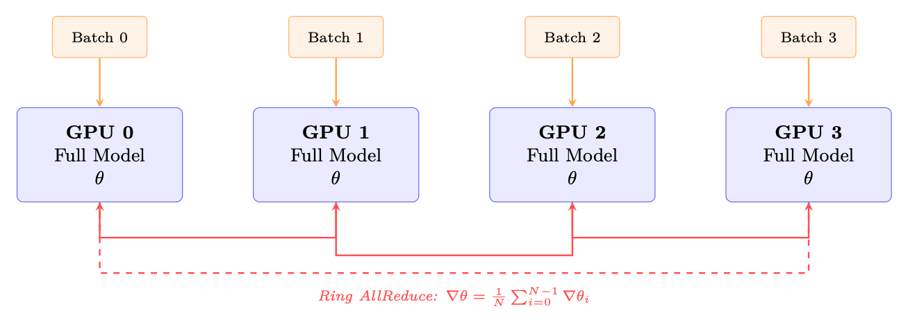
<em>图像来源：原 PDF 第 200 页，尺寸 1307x475。</em></p>
<p><a id="page-201"></a></p>
<h2 id="201">第 201 页</h2>
<pre><code class="language-text">import
torch.distributed as dist
from
torch.nn.parallel
import
DistributedDataParallel
as DDP
</code></pre>
<pre><code class="language-text">dist. init_process_group (backend="nccl")
# NCCL for GPU
communication
model = model.to(local_rank)
model = DDP(model , device_ids =[ local_rank],
</code></pre>
<pre><code class="language-text">gradient_as_bucket_view =True ,
# Memory
optimization
static_graph=True)
# Enable
comm
optimizations
</code></pre>
<p>DP vs DDP — 总是使用 DDP</p>
<p>PyTorch 的遗产 DataParallel (DP) 绝不应用于LLM训练:</p>
<p>• 单一进程,受Python GIL的限制</p>
<p>• 所有梯度漏斗通过GPU 0(瓶颈)</p>
<p>• 2-3x连一个节点都比DDP慢</p>
<p>• 规模不能超过一台机器</p>
<p>DDP是最小的平行战略. 对于LLMs &gt;7B,FSDP/ZeRO首选.</p>
<p>11.2.2 (中文(简体) ).
日相平行论(TP)</p>
<p>Tensor并行主义(英语:Megatron-LM style <a class="citation" href="#ref-207">[207]</a>)将个人的权重矩阵分出,跨越了GPU. 每个
GPU计算一个部分结果,一个AllReduce结合它们.</p>
<pre><code class="language-math">Column-Parallel Linear Layer.
The weight matrix W ∈Rd×h is split column-wise across T
GPUs:
W = [W0 | W1 | · · · | WT−1],
Wi ∈Rd×h/T
(11.1)
</code></pre>
<p>每个 GPU i 独立计算 Yi = XWi（无通信）。输出沿
隐藏维度。</p>
<p>行并行线性层。
权重矩阵按行分割：W = [W0; W1；。。。 ; WT−1]
其中Wi ∈Rd/T×h。输入 X 也必须被拆分。每个 GPU 计算部分和，然后计算
AllReduce 产生最终输出。</p>
<p>图 11.4：与列平行的线性层（TP=2）。权重按列分割；每个 GPU 计算
XWi 独立。 MLP 将其与行并行层配对以避免冗余的 AllReduce。</p>
<h3 id="_40">本页图像资源</h3>
<p>
<em>图像来源：原 PDF 第 201 页，尺寸 1316x688。</em></p>
<p><a id="page-202"></a></p>
<h2 id="202">第 202 页</h2>
<p>带 TP 的Transformer块。
在 Transformer 层中，Megatron-LM 按如下方式应用 TP：</p>
<ol>
<li>
<p>MLP：第一个线性 (h →4h) 为列并行，第二个线性为行并行 (4h →h)。一
AllReduce 在行并行层之后。</p>
</li>
<li>
<p>注意力：Q、K、V 投影是列并行的（跨 GPU 分头）。输出
投影是行平行的。输出投影后的一个 AllReduce。</p>
</li>
<li>
<p>总计：每个 Transformer 层 2 个 AllReduce（一个用于注意力力，一个用于 MLP）。</p>
</li>
</ol>
<p>图 11.5：一个 Transformer 块中的张量并行通信模式。两个 AllReduce 操作
（用红色标记）每层都需要——一个在注意力力之后，一个在 MLP 之后。</p>
<p>为什么TP仅限于节点内</p>
<p>每个 Transformer 层需要 2 个 AllReduce 操作（上面标记为 f 和 g）。对于70B
具有 80 层的模型，即每次前向传递 160 次 AllReduce 操作（包括后向传递 320 次）。
在 NVLink 速度 (600 GB/s) 下，每个 AllReduce 耗时 &lt;0.5 毫秒。但通过 InfiniBand (50 GB/s)，
同样的操作需要 ∼4 ms，使得总开销为 160 × 4 = 640 ms——比
计算本身。</p>
<h3 id="_41">本页图像资源</h3>
<p>
<em>图像来源：原 PDF 第 202 页，尺寸 797x958。</em></p>
<p><a id="page-203"></a></p>
<h2 id="203">第 203 页</h2>
<p>规则：TP 度≤每个节点的 GPU 数（通常 TP ≤8）。使用 DP/FSDP 进行节点间扩展。</p>
<p>TP学位选择</p>
<p>• TP=1：无张量并行性。模型适合一个 GPU（通常≤13B，BF16）。</p>
<p>• TP=2：最小分割。适合在 2 个 GPU 上进行 13-34B 推理。低开销（&lt;5%）。</p>
<p>• TP=4：34–70B 推理的标准。管理费用 8-12%。</p>
<p>• TP=8：全节点。 70B+ 训练所需。管理费用 12-18%。</p>
<p>• TP&gt;8：跨节点TP。很少使用——仅适用于 200B+ 型号，仅使用 PP 是不够的。
管理费用 30–50%。</p>
<p>重要提示：注意力力头的数量必须能被 TP 度整除。适用于 LLaMA-70B (64
头），有效 TP = 1, 2, 4, 8, 16, 32, 64。</p>
<p>11.2.3
序列并行性 (SP)</p>
<p>序列并行<a class="citation" href="#ref-208">[208]</a>解决了张量并行无法单独解决的内存瓶颈：
LayerNorm 和 Dropout 层中的激活记忆。</p>
<p>问题。
通过 TP，权重内存被分配到 GPU 上。但是 LayerNorm 和 Dropout
在完全隐藏维度上运行并在每个 GPU 上复制。它们的激活（需要
向后传递）消耗的内存与 b × s × d 成正比——在每个 GPU 上都相同，未减少
TP。</p>
<p>解决方案。
为不需要跨 GPU 通信的操作分割序列维度
阳离子（LayerNorm、Dropout、剩余连接）。每个 GPU 处理序列的一个 s/T 切片
对于这些操作，然后仅在需要的地方收集完整序列（注意力，线性层）。</p>
<p>图 11.6：序列并行通过沿着
序列维度。通信（AllGather/ReduceScatter）取代了标准中使用的 AllReduce
TP—传输的总字节数相同，但节省了内存。</p>
<p>SP 通讯是“免费”的
标准TP在每个子层之后使用AllReduce，相当于ReduceScatter + AllGather。
SP 只是对这些原语重新排序：</p>
<p>• 没有 SP 的 TP：AllReduce（=ReduceScatter + AllGather）→所有 GPU 上的数据相同→
全张量上的 LayerNorm（浪费）。</p>
<pre><code class="language-math">• TP with SP: ReduceScatter →each GPU has 1/T of sequence →LayerNorm on partial
tensor →AllGather before next TP layer.
</code></pre>
<h3 id="_42">本页图像资源</h3>
<p>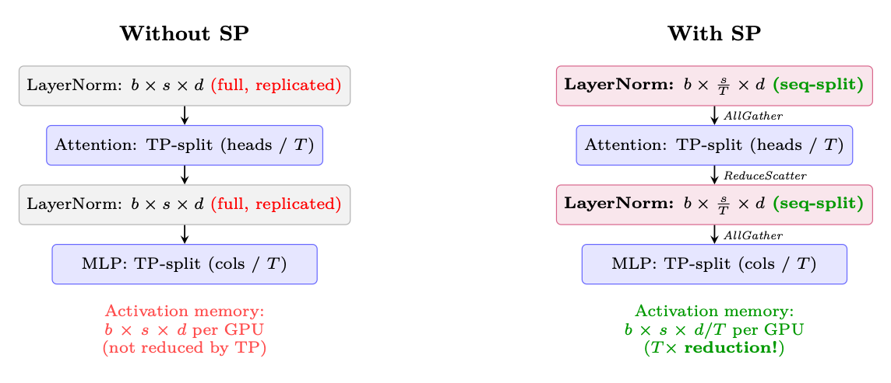
<em>图像来源：原 PDF 第 203 页，尺寸 1144x493。</em></p>
<p><a id="page-204"></a></p>
<h2 id="204">第 204 页</h2>
<p>总通讯量是一样的！ SP纯粹是零内存优化
额外的通讯费用。使用 TP 时应始终启用它。</p>
<p>SP 节省的内存（70B 模型，TP=8，batch=4，seq=2048）：</p>
<pre><code class="language-math">Activation savings = (T −1)×b×s×d×nlayers×2 bytes = 7×4×2048×8192×80×2 ≈59 GB/GPU
(11.2)
</code></pre>
<p>11.2.4
流水线并行度 (PP)</p>
<p>流水线并行性按层垂直分割模型，将连续的层组分配给
不同的设备（阶段）。激活按阶段向前流动；梯度向后流动。</p>
<p>泡沫问题。
简单的流水线执行会产生“气泡”——阶段等待时的空闲时间
对于前一阶段的输入或下一阶段的梯度：</p>
<p>图 11.7：流水线气泡比较。左图：具有一个微批次的初始流水线有 75% 的空闲时间。右：
M = 4 微批次的 GPipe 显着减少了气泡。当 M ≫P 时，气泡分数接近
零。</p>
<p>气泡分数公式。
对于 P 个流水线阶段和每步 M 个微批次：</p>
<p>中号
（当 M ≫P 时）
(11.3)</p>
<p>气泡分数=
P−1
P + M −1 ≈P −1</p>
<p>为了保持气泡开销 &lt;10%，需要 M ≥10 · (P −1)。对于 PP=4：至少 30 个微批次。</p>
<p>表11.1：流水线调度策略</p>
<p>时间表
气泡
内存
特点</p>
<p>通用流水线
P−1
M+P−1
M× 激活
简单；
全前锋
那么
所有-
落后 <a class="citation" href="#ref-209">[209]</a>
1F1B
P−1
M+P−1
P×激活
交错；
稳态存储器
有界 <a class="citation" href="#ref-210">[210]</a>
交错 1F1B
P−1
M·V +P−1
P×激活
虚拟阶段（V）；进一步减少
泡泡 <a class="citation" href="#ref-211">[211]</a>
零气泡 (ZB-H1)
≈0
P×激活
向后分裂为 B 和 W
阶段 <a class="citation" href="#ref-212">[212]</a></p>
<p>流水线时间表。</p>
<p>1F1B：生产标准
1F1B（一前一后）调度<a class="citation" href="#ref-210">[210]</a>用于大多数生产系统
（Megatron-LM <a class="citation" href="#ref-211">[211]</a>、DeepSpeed <a class="citation" href="#ref-213">[213]</a>）：
预热：前向传递填充流水线（P-1 微批次）。
稳定状态：每个时隙交替进行一前一后。这限制了峰值激活
内存到 P 微批次（相对于 GPipe 的 M）。
冷却：剩余的向后通道会耗尽流水线。
内存优势：GPipe 必须同时存储所有 M 个微批次的激活。
1F1B 仅存储 P 组稳态激活——当 M = 32 但 P = 4 时至关重要。</p>
<h3 id="_43">本页图像资源</h3>
<p>
<em>图像来源：原 PDF 第 204 页，尺寸 2017x407。</em></p>
<p><a id="page-205"></a></p>
<h2 id="205">第 205 页</h2>
<p>PP 中的通讯。
与TP（AllReduce）不同，PP只需要点对点通信
相邻阶段之间的激活：</p>
<pre><code class="language-math">Data per transfer = bmicro × s × d × 2 bytes (BF16)
(11.4)
</code></pre>
<pre><code class="language-math">For micro-batch=4, seq=2048, d=8192: 4 × 2048 × 8192 × 2 = 128 MB per transfer. At InfiniBand
50 GB/s: 2.6 ms per transfer—small relative to compute per stage.
</code></pre>
<p>负载平衡。
Not all layers have equal compute:</p>
<p>• Embedding layer: Very cheap (lookup table).</p>
<p>• Transformer blocks: Uniform compute.</p>
<p>• 最终LM 头：中等（用于词汇投影的大矩阵乘法）。</p>
<p>为中间级分配更多的Transformer层，为第一级/最后级分配更少的Transformer层以平衡
计算。</p>
<p>11.2.5
完全分片数据并行性 (FSDP / ZeRO-3)</p>
<p>FSDP <a class="citation" href="#ref-214">[214]</a> (PyTorch) 和 ZeRO-3 <a class="citation" href="#ref-213">[213]</a> (DeepSpeed) 解决了固有的内存重复问题
DDP：不是每个 GPU 都保存参数、梯度和优化器状态的完整副本，而是每个 GPU 都保存参数、梯度和优化器状态的完整副本。
GPU 仅拥有 1/N 切片，并在需要时即时重建完整张量。</p>
<p>图 11.8：FSDP 将所有模型状态跨 GPU 分片。每个 GPU 拥有 1/N 的参数、优化器状态、
和梯度。在每层计算之前，通过 AllGather 按需重建完整参数。</p>
<p>FSDP每层执行流程：</p>
<ol>
<li>转发：全部收集参数→计算→丢弃非拥有的分片。</li>
</ol>
<pre><code class="language-math">2. Backward: AllGather parameters (again) →compute gradients →ReduceScatter gradients
(each GPU gets its gradient shard) →discard non-owned parameter shards.
</code></pre>
<ol start="3">
<li>优化器步骤：每个 GPU 使用其梯度分片仅更新其拥有的分片，并且
优化器状态。</li>
</ol>
<pre><code class="language-text">from
functools
import
partial
from
torch.distributed.fsdp
import
FullyShardedDataParallel
as FSDP
from
torch.distributed.fsdp
import
ShardingStrategy , MixedPrecision ,
BackwardPrefetch
from
torch.distributed.fsdp.wrap
import
transformer_auto_wrap_policy
from
transformers.models.llama.modeling_llama
import
LlamaDecoderLayer
</code></pre>
<h3 id="_44">本页图像资源</h3>
<p>
<em>图像来源：原 PDF 第 205 页，尺寸 1205x522。</em></p>
<p><a id="page-206"></a></p>
<h2 id="206">第 206 页</h2>
<p>Table 11.2: Memory comparison: DDP vs FSDP/ZeRO stages (70B model, 8 GPUs).基线：BF16 参数
(140 GB) + BF16 grads (140 GB) + FP32 master+m+v (840 GB) = 1120 GB per GPU.</p>
<p>策略
分片
内存/GPU
通讯</p>
<pre><code class="language-math">DDP (no sharding)
Nothing
1120 GB ×
AllReduce (gradients only)
ZeRO-1
Optimizer states
385 GB ×
AllReduce (gradients)
ZeRO-2
Optimizer + gradi-
ents
368 GB ×
AllReduce (gradients)
</code></pre>
<p>ZeRO-3 / FSDP
一切
140 GB ✓
AllGather +ReduceScatter（每
layer)</p>
<pre><code class="language-text"># Wrap
model
with FSDP
auto_wrap = partial( transformer_auto_wrap_policy ,
</code></pre>
<pre><code class="language-text">transformer_layer_cls ={ LlamaDecoderLayer })
mp_policy = MixedPrecision(
</code></pre>
<pre><code class="language-text">param_dtype=torch.bfloat16 ,
reduce_dtype=torch.bfloat16 ,
buffer_dtype=torch.bfloat16 ,
)
</code></pre>
<pre><code class="language-text">model = FSDP(
</code></pre>
<pre><code class="language-text">model ,
sharding_strategy = ShardingStrategy .FULL_SHARD ,
# ZeRO -3
mixed_precision =mp_policy ,
auto_wrap_policy =auto_wrap ,
# Wrap each
transformer
layer
use_orig_params =True ,
# Required
for torch.compile
compatibility
limit_all_gathers =True ,
# Bound
peak
memory (1 AllGather in flight at a
time)
</code></pre>
<pre><code class="language-text">forward_prefetch =True ,
# Prefetch
next
layer ’s params
during
current
layer
</code></pre>
<pre><code class="language-text">backward_prefetch = BackwardPrefetch .BACKWARD_PRE ,
# Prefetch
during
backward
)
</code></pre>
<p>FSDP通讯量
FSDP communicates 3× more data than DDP per step:</p>
<p>• DDP: 1 AllReduce of gradients = 2M bytes total across ring (where M = model size in
字节）。</p>
<p>• FSDP: 2 AllGather (forward + backward) + 1 ReduceScatter = 3M bytes.</p>
<p>这就是内存与通信的权衡。当出现以下情况时，FSDP 是值得的：(a) 模型不适合
in GPU memory with DDP, or (b) communication is well-overlapped with compute (modern
框架实现 70-90% 的重叠）。</p>
<p>11.2.6
3D 并行性：组合策略</p>
<p>Production systems at scale (70B+) combine TP, PP, and DP/FSDP simultaneously:</p>
<p>生产配方：64 A100-80GB 上 70B（8 个节点）</p>
<p>Intra-node (NVLink 600GB/s): TP=8 for generation, FSDP within node for training.</p>
<p>Inter-node (InfiniBand 400Gb/s): FSDP across nodes (8-way data parallel).</p>
<p>结果：每个 GPU 可容纳 ∼70GB。在前向/后向过程中每层收集的策略权重。</p>
<p>Pipeline Parallel: Only if model exceeds 100B+ and won’t fit with TP+ZeRO.增加了复杂性
(bubble overhead 10–20%) and scheduling headaches.</p>
<p><a id="page-207"></a></p>
<h2 id="207">第 207 页</h2>
<pre><code class="language-text">Figure 11.9: 3D parallelism layout for 16 GPUs: TP=4 (within each box, using NVLink), PP=2 (orange
arrows, stages), DP=2 (red arrows, gradient sync). Each dimension exploits a different level of the communi-
cation hierarchy.
</code></pre>
<p>决策流程图：</p>
<ol>
<li>
<p>该模型适合 1 个 GPU 吗？ →Use DDP.</p>
</li>
<li>
<p>它是否适合使用 FSDP 的 1 个节点？ →使用 FSDP (ZeRO-3)。</p>
</li>
<li>
<p>是否适合 TP+FSDP 的 1 个节点？ →使用TP（节点内）+FSDP（节点间）。</p>
</li>
<li>
<p>还是不合适？ →添加跨节点PP。这是最后的手段。</p>
</li>
</ol>
<p>Table 11.3: Parallelism strategy comparison summary</p>
<p>策略
分裂
通讯
缩放限制
开销
何时使用</p>
<p>顺铂/顺铂
批次
AllReduce（毕业生）
∼64 个 GPU
5–10%
模型适合 1 个 GPU
FSDP
参数+选择+梯度
全部聚集+RS
数百个 GPU
10–20%
默认&gt;13B
TP
权重矩阵
AllReduce（2/层）
8 个 GPU（1 个节点）
12–18%
大模型推理+训练
SP
激活（序列）
Reuses TP comms
与TP相同
约 0% 额外
永远和TP在一起
聚丙烯
层（阶段）
点对点
∼16级
15–30%
仅限 100B+ 型号</p>
<p>11.3
生成瓶颈：定量分析</p>
<p>屋顶线分析：为什么一代是受内存限制的</p>
<p>A100 specs: 312 TFLOPS (BF16 tensor cores), 2 TB/s HBM bandwidth.
Roofline 交叉：312T/2T = 156 FLOP/字节。
低于 156 FLOP/字节的操作是
内存限制。
Autoregressive generation: For each token, read all weights (140GB for 70B) and do 2× 70B =
140G FLOPs per token (at batch=1).
Arithmetic intensity: 140G FLOP/140GB = 1 FLOP/byte.这是屋顶线以下 156 倍！
Utilization: 1/156 = 0.6% of peak FLOPS utilized. GPU 99.4% 空闲，正在等待内存
读。
Token rate: 2TB/s/140GB = 14.3 tokens/second (single stream, batch=1).
For 512 tokens: 512/14.3 = 35.8 seconds per response (batch=1, TP=1).
Batching helps: Batch=64 with TP=4 →reads weights once, generates 64 tokens in parallel.
Arithmetic intensity: 64 × 1 = 64 FLOP/byte.更好，但仍低于屋顶线！</p>
<p>表 11.4：70B 模型的生成吞吐量（512 个token，各种配置）</p>
<p>配置
批次
时间/批次
托克/秒/GPU
注释</p>
<p>TP=1，批次=1
1
36秒
14
基线，最坏情况
TP=4，批次=1
1
9秒
57
gen 的线性 TP 缩放
TP=4，批次=32
32
15秒
1092
接近最佳的批处理
TP=4，批次=128，vLLM
128
45秒
第1456章
连续配料
TP=4，批次=128，INT8
128
25秒
2621
节省 2 倍带宽</p>
<h3 id="_45">本页图像资源</h3>
<p>
<em>图像来源：原 PDF 第 207 页，尺寸 1622x498。</em></p>
<p><a id="page-208"></a></p>
<h2 id="208">第 208 页</h2>
<p>优化堆栈（累积加速）：</p>
<ol>
<li>
<p>vLLM + PagedAttention <a class="citation" href="#ref-157">[157]</a> (2–4×): Eliminates KV cache fragmentation, enables larger
批次</p>
</li>
<li>
<p>Continuous batching <a class="citation" href="#ref-215">[215]</a> (1.5–2×): Don’t wait for longest sequence;开始新的作为
其他人完成</p>
</li>
<li>
<p>Speculative decoding <a class="citation" href="#ref-143">[143]</a> (2–3×): Small draft model proposes 5 tokens, large model verifies
in one forward pass.平均接受 3-4 个。</p>
</li>
<li>
<p>INT8/FP8 weights for gen (2×): Halve bandwidth needs.质量损失最小，因为
我们正在采样（不计算训练的精确logits）</p>
</li>
<li>
<p>CUDA graphs (1.1–1.3×): Eliminate kernel launch overhead for fixed-shape operations</p>
</li>
<li>
<p>Prefix caching (1.5× for shared-prefix prompts): Don’t recompute system prompt KV cache</p>
</li>
</ol>
<pre><code class="language-text"># Production
vLLM
generation
setup
from vllm
import LLM , SamplingParams
</code></pre>
<pre><code class="language-text">engine = LLM(
</code></pre>
<pre><code class="language-text">model="./ policy_checkpoint ",
tensor_parallel_size =4,
# TP=4 per
instance
gpu_memory_utilization =0.92 ,
# Leave
headroom
for KV cache
max_num_batched_tokens =16384 ,
# Max tokens in flight
max_num_seqs =256,
# Max
concurrent
sequences
dtype="bfloat16",
enable_prefix_caching =True ,
# Cache
system
prompt KV
speculative_model ="./ draft_1B",
# Speculative
decoding
num_speculative_tokens =5,
block_size =16,
# PagedAttention
block
size
swap_space =4,
# GB swap
space for
preemption
)
</code></pre>
<pre><code class="language-text"># Generate
responses
for RLHF
batch
sampling_params = SamplingParams(
</code></pre>
<pre><code class="language-text">temperature =0.7, top_p =0.9,
max_tokens =512 ,
logprobs =1,
# Need log -probs for PPO ratio
calculation
)
outputs = engine.generate(prompts , sampling_params )
# Extract: responses , log_probs
for each
token (needed for PPO/GRPO)
</code></pre>
<p>11.4
解耦架构：产品设计</p>
<p>DeepSpeed-Chat <a class="citation" href="#ref-216">[216]</a> 和 OpenRLHF <a class="citation" href="#ref-217">[217]</a> 等生产 RLHF 系统使用解耦
将生成、评分和训练分离成独立可扩展集群的架构。</p>
<p>为什么要解耦？</p>
<p>生成受内存带宽限制（需要快速 HBM，浪费计算）。</p>
<p>训练受计算限制（需要张量核心，在反向传播期间浪费带宽）。</p>
<p>Same hardware can’t optimize both: If you put everything together, you either waste compute
在生成期间或在训练期间浪费带宽。解耦让每个集群都使用最优的
硬件/配置。
实际好处：</p>
<p>• 独立的量表生成和训练</p>
<p><a id="page-209"></a></p>
<h2 id="209">第 209 页</h2>
<p>图 11.10：解耦 RLHF 架构。每个集群都针对其工作负载进行了优化。得分展示
在被训练消耗之前先积累在经验缓冲区中。</p>
<p>• 生成集群是无状态的→微不足道的容错能力</p>
<p>• 可以将生成（步骤 N + 1）与训练（步骤 N）重叠→30–40% 加速</p>
<p>• 不同的量化：INT8 用于生成（带宽），BF16 用于训练（精度）</p>
<p>11.5
权重同步策略</p>
<p>策略
陈旧性
带宽
质量影响</p>
<p>同步（每一步）
0 步
140 GB/步
完美但太慢
Periodic (every 50 steps)
平均 25
2.8 GB/步摊销
&lt;2% 质量损失
增量压缩 (INT8)
平均 25
0.4 GB/步
&lt;3% 质量损失
异步流式传输
5–10 个步骤
14 GB/步（背景）
&lt;1% 质量损失</p>
<p>Why Staleness is OK for PPO/GRPO</p>
<p>PPO 的裁剪目标是为离策略数据而设计的！剪辑 [1 −ϵ, 1 + ϵ] 限制了影响
的陈旧数据。具有 10-50 个陈旧步骤：</p>
<p>• 策略变化每步约 0.1–1%（使用适当的 LR）</p>
<p>• 超过 50 个步骤：∼5% 的政策漂移</p>
<p>• PPO 夹设计可承受高达 20% 的漂移</p>
<p>• 根据经验：对于 50 步陈旧度，质量损失 &lt;2%</p>
<p>带宽数学：70B BF16 = 140GB。 InfiniBand 400Gb/s = 50GB/s → 2.8 秒内完全同步。
使用增量压缩：&lt;0.5s。异步 = 免费（在后台运行）。</p>
<p>11.6
内存优化技术</p>
<p>零阶段
什么被分片
内存/GPU（70B，8 个 GPU）</p>
<p>无（数据并行）
什么都没有（完全复制品）
每个 GPU 560GB（不可能）
泽罗-1
仅优化器状态
175GB
泽罗-2
优化器状态+梯度
105GB
ZeRO-3 (FSDP)
优化器+梯度+Pa-
参数
70GB（适合 A100-80GB！）</p>
<p>附加技术：</p>
<p>• 梯度检查点<a class="citation" href="#ref-218">[218]</a>：不存储所有激活；向后期间重新计算
通过。节省约 60% 的激活内存，成本约 33% 的额外计算。选择性：仅检查点
注意力层（内存密集），保留 FFN 激活（计算密集以重新计算）。</p>
<h3 id="_46">本页图像资源</h3>
<p>
<em>图像来源：原 PDF 第 209 页，尺寸 1439x500。</em></p>
<p><a id="page-210"></a></p>
<h2 id="210">第 210 页</h2>
<p>• 混合精度<a class="citation" href="#ref-219">[219]</a>：BF16 中的转发（2 字节/参数），FP32 中的优化器状态（4 字节）
每个为 m,v)。 FP32 中的主重量用于累积。</p>
<p>• CPU 卸载(ZeRO-Infinity <a class="citation" href="#ref-220">[220]</a>)：将优化器状态移至CPU RAM。 50%内存
节省但速度慢 2-3 倍（PCIe 64GB/s 瓶颈）。</p>
<p>• 激活卸载：前进时将激活移至CPU，后退时将激活移至CPU。
只有当记忆力真正至关重要时。</p>
<p>• Flash Attention [7, 82]：O(n) 内存而不是O(n2) 的注意力力。 2–4 倍快 + 巨大
长序列节省内存。</p>
<p>11.6.1
Flash Attention 对 RLHF 的影响</p>
<p>为什么 Flash 注意力力对于 RLHF 很重要</p>
<p>RLHF 涉及生成长序列（推出），然后对其进行训练。不带闪光灯
注意力：</p>
<p>• 具有 32 个头的 4K token序列仅用于注意力力矩阵就需要 ∼4 GB</p>
<p>• 这严重限制了 PPO/GRPO 训练期间的批量大小</p>
<p>• 注意力力激活的梯度检查点是昂贵的</p>
<p>闪光注意力：</p>
<p>• 注意力力记忆是 O(n) – 由 Q、K、V、O 张量主导</p>
<p>• 使用相同的 GPU 内存可以实现更长的部署（8K–32K token）</p>
<p>• 向后传递根据 Q、K、V 重新计算注意力力图块（未存储 n2 矩阵）</p>
<p>• 这是长上下文 RLHF 的关键推动因素（例如推理模型）</p>
<p>Flash 注意力力和梯度检查点</p>
<p>Flash Attention 的后向传递根据 Q、K、V（其中
被存储）。这意味着Flash Attention已经实现了一种激活重新计算的形式
为 O(n2) 注意力力矩阵。你不需要额外检查注意力力层 -
这样做会不必要地重新计算 Q、K、V。</p>
<pre><code class="language-text"># DeepSpeed ZeRO -3 configuration
for 70B RLHF
training
ds_config = {
</code></pre>
<pre><code class="language-text">"bf16": {"enabled": True},
" zero_optimization ": {
</code></pre>
<pre><code class="language-text">"stage": 3,
"overlap_comm": True ,
# Overlap
communication
with
compute
</code></pre>
<pre><code class="language-text">" contiguous_gradients ": True ,
# Better
memory
layout
" reduce_scatter": True ,
# More
efficient
than
allreduce
" reduce_bucket_size ": 5e7 ,
# 50M params per bucket
" prefetch_bucket_size ": 5e7 ,
# Prefetch
next
bucket
" param_persistence_threshold ": 1e5 ,
# Keep
small
params on all GPUs
" offload_optimizer ": {"device": "cpu", "pin_memory": True},
# CPU
offload
" sub_group_size": 1e9 ,
# Reduce
fragmentation
},
" gradient_accumulation_steps ": 4,
" gradient_clipping ": 1.0,
" train_micro_batch_size_per_gpu ": 2,
" wall_clock_breakdown ": True ,
}
</code></pre>
<p><a id="page-211"></a></p>
<h2 id="211">第 211 页</h2>
<p>11.7
大规模容错</p>
<p>硬件故障现实</p>
<p>单个 GPU MTBF：∼10,000 小时。
512-GPU 集群 MTBF：10000/512 ≈20 小时。但使用软件/网络：4-8 小时
现实地。
多日训练运行：将出现 5-15 次失败。没有容错能力，一次失败就会致命
一切。</p>
<p>生产容错堆栈：</p>
<p>1.检测：NCCL超时（60s）、GPU心跳（10s）、NVML健康监测、ECC错误
计数。</p>
<ol start="2">
<li>
<p>检查点：每 50-100 步异步一次。非阻塞（后台线程）。保存：模型
weights, optimizer states (Adam m/v), scheduler state, RNG states, KL coefficient, replay
缓冲区。保留最后 3 个检查点。时间：70B ～30 秒（并行写入 NVMe）。</p>
</li>
<li>
<p>恢复： (a) 生成集群=无状态，只需重启并加载最新权重。 (b) 训练
集群：加载检查点、重建 NCCL 进程组（排除故障节点）、重新分配 FSDP
分片，从上一个检查点恢复。</p>
</li>
<li>
<p>弹性训练：Torch Elastic / Kubernetes 自动缩放。在几分钟内更换故障节点。
暂时使用 N −1 个 GPU 继续训练。</p>
</li>
</ol>
<p>5.预防：GPU健康预筛查（启动前运行GEMM压力测试）。热备件
处于待机状态。冗余网络路径（双轨 InfiniBand）。</p>
<p>11.8
端到端延迟细分</p>
<p>图 11.11：没有重叠（整体）。解耦后：gen与训练重叠，有效1.4×
加速。</p>
<p>阶段
时间 (70B)
Bound By
优化</p>
<p>Generation (128×512 tok)
30–45秒
内存带宽
vLLM, spec decoding, INT
奖励评分
5-8秒
计算（批处理-
病房）
INT8 RM，批量=128</p>
<p>参考日志概率
4-6秒
计算（批处理-
病房）
INT8 参考，或 LoRA（免费）</p>
<p>PPO update (4 epochs)
8-12秒
计算（反向传播）
FSDP、闪存注意力
体重同步
0–3秒
网络（异步）
增量压缩，异步
总计（整体）
50–75秒
总计（解耦、重叠）
35–50秒
Gen 与 prev tr 重叠</p>
<h3 id="_47">本页图像资源</h3>
<p>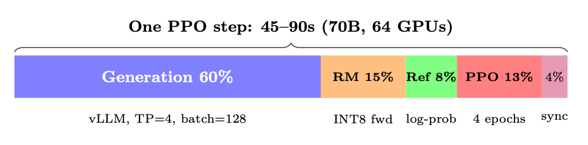
<em>图像来源：原 PDF 第 211 页，尺寸 999x247。</em></p>
<p><a id="page-212"></a></p>
<h2 id="212">第 212 页</h2>
<p>11.9
监控和可观察性</p>
<p>RLHF 训练期间要跟踪的关键指标</p>
<p>质量指标（每 10 步记录一次）：</p>
<p>• 平均奖励（应增加然后达到稳定水平）</p>
<p>• KL 与参考值的偏差（应保持 3-10）</p>
<p>• 响应长度分布（注意力长度黑客）</p>
<p>• 熵（应该缓慢减少，而不是崩溃）</p>
<p>系统指标（记录每一步）：</p>
<p>• GPU 利用率（目标：训练期间&gt;80%，生成期间&gt;60%）</p>
<p>• 每个 GPU 的内存水印（在 OOM 发生之前捕获它）</p>
<p>• 生成吞吐量（token/秒，应该稳定）</p>
<p>• 梯度范数（尖峰=不稳定传入）</p>
<p>• NCCL 通信时间（检测网络性能下降）</p>
<p>11.10
网络拓扑和通信模式</p>
<p>高效的分布式训练需要了解分层通信结构
连接 GPU。现代集群使用两层架构：超快的节点内链接和较慢的节点内链接
但可扩展的节点间网络。</p>
<p>11.10.1
节点内：NVLink 和 NVSwitch</p>
<p>表 11.5：NVLink 各代及其对 LLM 训练的影响</p>
<p>一代
每个链接的带宽
链接/GPU
总带宽
平台</p>
<p>NVLink 3.0
50GB/秒
12
600GB/秒
A100（DGX A100）
NVLink 4.0
50GB/秒
18
900GB/秒
H100（DGX H100）
NVLink 5.0
100GB/秒
18
1800GB/秒
B200（DGX B200）</p>
<p>在单个节点（通常是 8 个 GPU）内，NVSwitch 提供全平分带宽
所有 GPU 对。
这意味着任何 GPU 都可以以全 NVLink 速度与任何其他 GPU 进行通信
同时——对于张量并行性至关重要，其中每一层都需要跨所有 8 个层进行 AllReduce
GPU。</p>
<p>NVSwitch 与 PCIe 拓扑</p>
<p>使用 NVSwitch (DGX/HGX)：所有 8 个 GPU 以 600–1800 GB/s 的速度全部连接。全部归约
TP 每层需要 ∼0.2ms。
没有 NVSwitch（仅 PCIe 服务器）：GPU 通过 CPU PCIe 根联合体进行通信
速度为 32–64 GB/秒。 8 个 GPU 上的 TP 速度变慢 10-30 倍。切勿在仅 PCIe 上使用 TP&gt;2
系统。</p>
<p>11.10.2
节点间：InfiniBand 和 RoCE</p>
<p>对于跨节点的 FSDP/ZeRO-3 AllGather 和 ReduceScatter 操作，节点间网络
占主导地位。</p>
<p><a id="page-213"></a></p>
<h2 id="213">第 213 页</h2>
<p>Table 11.6: Inter-node networking options for LLM training clusters</p>
<p>技术
带宽
延迟
注释</p>
<p>InfiniBand NDR
400 GB/秒（50 GB/秒）
1–2 µs
金标准，RDMA，无损
InfiniBand NDR（双轨）
800 GB/秒（100 GB/秒）
1–2 微秒
用于H100集群
罗CE v2
100–400 Gb/秒
2–5 微秒
更便宜，需要 PFC/ECN 调整
Ethernet (TCP)
100–400 Gb/秒
10–50 微秒
不适合 &gt;16 GPU 训练</p>
<p>11.10.3
通信原语及其成本</p>
<p>了解每个集合的使用时间有助于诊断瓶颈：</p>
<p>Table 11.7: NCCL collective operations in distributed LLM training</p>
<p>集体
数据已移动
使用者
当</p>
<p>全部归约
2·N−1</p>
<p>氮
· 米
TP、DP
求和梯度或激活
GPU
齐聚
N−1</p>
<p>氮
· 米
FSDP转发
重建全参数张量为
前矩阵相乘
减少分散
N−1</p>
<p>氮
· 米
FSDP落后
分发
渐变
碎片
之后
反向传播
广播
中号
聚丙烯
将激活发送到下一个流水线
舞台
Send/Recv
中号
聚丙烯
点对点
之间
相邻的
阶段</p>
<p>where M is the message size (bytes) and N is the number of participants.</p>
<p><a id="page-214"></a></p>
<h2 id="214">第 214 页</h2>
<p>通信与计算重叠</p>
<p>现代框架（FSDP、DeepSpeed）积极地将通信与计算重叠：
前向传播：当第 i 层计算时，AllGather 预取第 i + 1 层的参数。
第 i 层完成后，其参数立即被丢弃（“转发后释放”）。
向后传递：当第 i 层计算梯度时，ReduceScatter 发送第 i + 1 层的梯度。
如果调整得当，这种重叠会隐藏 70-90% 的通信延迟。
调整旋钮：prefetch_factor（预取前多少层）、reduce_bucket_size
（梯度减少的粒度），backward_prefetch（“pre”与“post”向后预取
策略）。</p>
<p>11.10.4
网络拓扑设计</p>
<p>生产集群使用胖树或轨道优化拓扑：</p>
<p>• 胖树：每个级别的完全平分带宽。任何节点都可以与任何其他节点通信
全速。昂贵（许多开关）但具有最大的灵活性。</p>
<p>• 轨道优化：每个节点上的GPU i 连接到同一叶交换机（“rail i”）。全部归约
铁路内价格便宜；跨轨交通费用昂贵。由 Meta 的 RSC 和 Google 的 TPU 使用
豆荚。</p>
<p>• 3D torus / Dragonfly：用于HPC 集群（Frontier、Aurora）。拓扑感知作业
放置位置至关重要。</p>
<p>工作安置很重要
在 512-GPU 集群上，随机节点分配可能会因网络拥塞而导致 2-3 倍的速度减慢 -。始终请求连续的节点块。生产调度程序（Slurm、Kubernetes）
应强制局部性：训练作业中的所有节点应位于同一叶子交换机上或在一个叶子交换机内
互相跳跃。</p>
<p>11.11
训练吞吐量和模型 FLOP 利用率</p>
<p>11.11.1
衡量训练效率：MFU</p>
<p>模型 FLOP 利用率（MFU）<a class="citation" href="#ref-221">[221]</a> 是训练效率的标准指标：</p>
<p>MFU = 观察到的吞吐量（token/秒）× 每个token的 FLOP 数</p>
<p>峰值硬件 FLOPS
(11.5)</p>
<p>对于具有 P 参数、s 序列长度和 b 批量大小的Transformer：</p>
<pre><code class="language-math">FLOPs per token ≈6P + 12 · nlayers · dmodel · s
(11.6)
</code></pre>
<pre><code class="language-math">The factor of 6 comes from: 2 (multiply-add) × 3 (forward + backward, where backward ≈2×
forward). The second term accounts for attention’s O(s2) cost.
</code></pre>
<p>为什么 MFU 随着规模的增大而减小</p>
<p>较大的模型需要更多的并行性，这引入了：</p>
<ol>
<li>
<p>通信开销：FSDP 的 AllGather/ReduceScatter（64 个 GPU 时约 10–15%）</p>
</li>
<li>
<p>流水线气泡：PP 在微批次开始/结束时引入空闲时间（∼15–25%，
PP=4)</p>
</li>
</ol>
<p>3.辅助模型的内存：Reference/RM取可以容纳更大的GPU内存
批次</p>
<p>4.负载不平衡：并非所有层都具有相同的计算（嵌入与Transformer块）</p>
<p><a id="page-215"></a></p>
<h2 id="215">第 215 页</h2>
<p>表 11.8：跨规模和硬件的 MFU 基准测试</p>
<p>型号
硬件
微量元素单位
token/秒/GPU
配置</p>
<pre><code class="language-math">LLaMA-7B
8×A100
57%
3,200
FSDP,
FlashAttn,
BF16
LLaMA-13B
16×A100
52%
1,750
FSDP,
FlashAttn,
BF16
LLaMA-70B
64×A100
45%
380
FSDP+TP=8,
FlashAttn
GPT-4 (est.)
10,000+ H100
40–50%
—
3D parallelism
PaLM-540B
6144 TPUv4
46%
—
DP+TP+PP
</code></pre>
<p>经验法则：训练目标 MFU &gt; 40%。如果低于 30%，则通过分析进行诊断。</p>
<p>11.11.2
计算最佳批量大小</p>
<p>有效批量大小与硬件利用率以不明显的方式相互作用：</p>
<p>有效批量大小 = micro_batch × grad_accum × DP 度
(11.7)</p>
<p>• 太小：GPU 未充分利用（低算术强度），通信占主导地位。</p>
<p>• 太大：减少每个token的学习量（超过临界批量大小），浪费计算。</p>
<p>• 最佳点：临界批量大小Bcrit，其中梯度噪声等于梯度信号。对于
LLM，Bcrit ∼1-4M token<a class="citation" href="#ref-222">[222]</a>。</p>
<p>特别是对于 RLHF，该批次包含推出（不仅仅是token）：</p>
<p>RLHF 批次 = Nprompts × K Generations × Lavg 响应长度
(11.8)</p>
<p>典型生产值：N = 128 个提示，K = 1–4 代，L = 256–512 个token →
每步 32K–256K token。</p>
<p>11.11.3
分析和瓶颈诊断</p>
<p>关键分析工具及其揭示的内容：</p>
<p>工具
捕获
最适合</p>
<p>火炬.profiler
内核计时、内存
查找缓慢的操作、内存泄漏
NVIDIA Nsight 系统
完整的 GPU 时间线
可视化重叠，内核之间的间隙
nccl_debug=信息
集体尺寸/次数
诊断通信瓶颈
torch.cuda.memory_stats
分配模式
查找碎片、峰值使用情况
DeepSpeed Flops 分析器
每层 FLOP 数
识别负载不平衡
py-spy / 斜角肌
CPU分析
数据加载、分词瓶颈</p>
<p>诊断低 MFU：检查表</p>
<p>1.GPU利用率&lt;80%？ →数据加载瓶颈（检查CPU、I/O）。</p>
<ol start="2">
<li>
<p>内核之间的间隙大吗？ →Python 开销、同步点。使用CUDA
图表。</p>
</li>
<li>
<p>沟通&gt;步骤时间的20%？ →降低TP度，增加batch size，检查
网络健康。</p>
</li>
</ol>
<p>4.内存99%？ →无法增加批次。尝试梯度检查点、卸载。</p>
<ol start="5">
<li>生成期间OOM？ →KV缓存太大。减少 max_seq_len 或批量大小</li>
</ol>
<p><a id="page-216"></a></p>
<h2 id="216">第 216 页</h2>
<p>将军</p>
<p>11.12
成本分析和云部署</p>
<p>了解 RLHF 训练的经济学对于规划至关重要。</p>
<p>11.12.1
硬件成本比较</p>
<p>表 11.9：RLHF 训练的大约云 GPU 成本（2024-2025 年定价）</p>
<p>图形处理器
按需/小时
现货/小时
内存
使用案例</p>
<p>A100 80GB
2.50–3.50 美元
1.00–1.50 美元
80 GB HBM2e
预算训练，一代
集群
H100 80GB
$4.00–6.00
$2.00–3.00
80GB HBM3
生产训练
H200 141GB
$6.00–8.00
—
141 GB HBM3e
大背景，更少-
GPU 配置
小米300X 192GB
$3.50–5.00
1.50–2.50 美元
192GB HBM3
性价比高
改变-
本地人</p>
<p>11.12.2
RLHF 训练成本估算</p>
<p>成本 = Nsteps × Tstep</p>
<p>3600
× NGPU × CGPU/小时
(11.9)</p>
<p>成本示例：70B 型号 RLHF（10K 步）</p>
<p>步骤
10,000</p>
<pre><code class="language-math">Time per step (decoupled)
45 seconds
Total training time
10000 × 45/3600 = 125 hours
GPUs (generation + training)
64 A100-80GB
Cost per GPU-hour (spot)
$1.20
Total cost
125 × 64 × $1.20 = $9,600
Breakdown by phase:
</code></pre>
<p>• 生成集群（32 个 GPU）：4,800 美元（60% 的时间）</p>
<p>• 训练集群（32 个 GPU）：4,800 美元（可能重叠→3,400 美元有效）</p>
<p>• 评分（与一代 GPU 共享）：包含在上面</p>
<p>有重叠：70B 模型的完全 RLHF 对齐的有效成本约为 7,500 美元。</p>
<p>11.12.3
成本优化策略</p>
<p>• 现货/抢占式实例：节省 50–70%。需要强大的检查点（每 5 个保存
分钟）。</p>
<p>• 调整大小：不要使用 H100 进行生成（受内存限制）； A100 实现类似token/$
供推理。</p>
<p>• 量化推理：用于生成和评分的 INT8/FP8 将 GPU 数量减半
集群。</p>
<p>• 渐进式训练：从用于奖励工程/调试的 8B 智能体模型开始（∼$200），
然后缩放到70B。</p>
<p>• LoRA 无参考：完全消除参考模型（内存减少 50%）。</p>
<p><a id="page-217"></a></p>
<h2 id="217">第 217 页</h2>
<p>• 首先较短的序列：从 256→512→1024 token生成的课程可节省 40%
计算。</p>
<p>11.13
分布式检查点</p>
<p>在规模上，简单的检查点成为瓶颈。具有优化器状态的 70B 模型需要
每个检查点节省 ∼840 GB（FP32 主权重 + Adam m + v）。</p>
<p>11.13.1
检查点策略</p>
<p>表 11.10：大规模 RLHF 的检查点方法</p>
<p>策略
节省时间 (70B)
存储/控制点
特点</p>
<p>同步（所有等级）
30–60 秒（阻塞）
420GB
简单，摊位训练
异步（后台复制）
&lt;1s（非阻塞）
420GB
与下一步重叠
增量（增量）
&lt;1秒
5–20 GB
只保存修改过的参数
分片（FSDP 原生）
5-10秒
420 GB 分片
每个等级都会保存其碎片</p>
<p>11.13.2
使用 torch.distributed.checkpoint 进行生产检查点</p>
<pre><code class="language-text">import
torch.distributed.checkpoint as dcp
from
torch.distributed.checkpoint.state_dict
import
get_state_dict ,
StateDictOptions
</code></pre>
<pre><code class="language-text"># Save: each rank
writes its shard in parallel
state_dict = {"model": get_state_dict (model , options= StateDictOptions (
</code></pre>
<pre><code class="language-text">full_state_dict =False))}
dcp.save(
</code></pre>
<pre><code class="language-text">state_dict=state_dict ,
storage_writer =dcp. FileSystemWriter ("/mnt/checkpoints/step_5000"),
planner=dcp. DefaultSavePlanner (),
# Handles
FSDP
sharding
automatically
)
</code></pre>
<pre><code class="language-text"># Async
save: non -blocking , runs in background
thread
future = dcp.async_save(
</code></pre>
<pre><code class="language-text">state_dict=state_dict ,
storage_writer =dcp. FileSystemWriter ("/mnt/checkpoints/step_5000"),
)
# Training
continues
immediately; future.result () blocks
only if needed
</code></pre>
<p>RLHF 检查站卫生</p>
<p>RLHF 检查点必须捕获比标准预训练更多的内容：</p>
<p>• 策略模型权重+优化器状态（标准）</p>
<p>• KL系数（β）及其调度状态</p>
<p>• 重放缓冲区内容（用于离策略修正）</p>
<p>• 所有 GPU 的 RNG 状态（再现性）</p>
<p>• 提示迭代器位置（避免重新处理提示）</p>
<p>• 奖励模型版本标签（用于可审计性）</p>
<p>• Wandb/metrics 运行 ID（用于连续记录）</p>
<p><a id="page-218"></a></p>
<h2 id="218">第 218 页</h2>
<p>11.14
硬件选型指南</p>
<p>选择合适的硬件取决于模型大小、预算和训练阶段。</p>
<p>表 11.11：按模型规模和训练阶段划分的硬件建议</p>
<p>型号尺寸
训练阶段
推荐
配置</p>
<p>≤7B
SFT+RLHF
1–2× A100
单节点，无需并行
7–13B
SFT+RLHF
4–8× A100
FSDP，发电机可选TP=2
13–34B
SFT+RLHF
8–16× A100/H100
一代 FSDP + TP=4
70B
RLHF（完整）
32–64× A100/H100
解耦，FSDP + TP=8
70B
RLHF (LoRA)
8–16× A100/H100
无参考模型，LoRA 适配器</p>
<blockquote>
<p>100B
RLHF
128+×H100
3D并行度（TP+PP+DP）</p>
</blockquote>
<p>H100 与 A100：什么时候值得升级？</p>
<p>H100 提供：</p>
<p>• ∼1.6× 峰值 FLOPS（具有稀疏性的 BF16 为 989 与 624 TFLOPS；没有稀疏性的 BF16 为 495 与 312）
稀疏性）</p>
<p>• ∼2× 内存带宽（3.35 与 2.0 TB/s）</p>
<p>• FP8 支持（额外 2 倍用于推理）</p>
<p>• NVLink 4.0（900 与 600 GB/秒）</p>
<p>对于训练：端到端速度提高 ∼1.8–2.2 倍（FP8 支持和更高的带宽放大了原始数据）
FLOPS 优势）。
对于生成：快 ∼1.7×（带宽限制，因此 2× BW ≈1.7× 吞吐量（带开销））。
性价比：以 1.5 倍的价格，H100 几乎总是具有更高的训练价值。对于
仅推理（生成集群），现货定价的 A100 可能更具成本效益。</p>
<p>11.15
强化学习训练的优化器配置</p>
<p>与预训练相比，RL 训练（PPO、GRPO、DPO）对优化器提出了独特的要求
或 SFT。损失情况是非平稳的（政策改变了生成的数据），梯度
噪音更大（奖励信号方差），训练更容易出现灾难性遗忘或奖励
黑客攻击。本节整合了 RL 特定的优化器指南，使用 AdamW <a class="citation" href="#ref-80">[80]</a> 作为默认值
优化器。</p>
<p>11.15.1
为什么 RL 需要不同的优化器设置</p>
<p>RL 与 SFT 优化 – 主要区别</p>
<p>• 非平稳数据分布：与数据集固定的 SFT 不同，RL 生成
每次迭代都会推出新的数据分布随策略而变化。</p>
<p>• 高梯度方差：奖励信号稀疏且有噪声；梯度有更高的
整理数据上的方差比交叉熵。</p>
<p>• 需要较小的更新：政策必须保持接近参考模型（KL
约束），因此学习率比 SFT 小 10-100 倍。</p>
<p>• 无权重衰减：正则化来自KL 惩罚，而不是权重衰减。添加
WD 位于顶部可以对抗 KL 约束。</p>
<p>• 更短的预热：RL 从收敛的 SFT 检查点开始——优化器状态需要
最少的热身。</p>
<p><a id="page-219"></a></p>
<h2 id="219">第 219 页</h2>
<p>11.15.2
RL方法推荐的超参数</p>
<pre><code class="language-math">Table 11.12:
Optimizer settings for RL training phases.
All use β1 = 0.9, β2 = 0.95, ϵ = 10−8,
max_grad_norm=1.0, BF16.
</code></pre>
<p>方法
优化器
LR
西数
热身
时间表</p>
<p>数据保护组织
亚当·W
5e-7
0.0
50步
常数或线性
PPO（政策）
亚当·W
1e-6
0.0
20步
常数
PPO（批评家）
亚当·W
1e-6
0.0
20步
常数
GRPO
亚当·W
1e-6
0.0
20步
常数</p>
<p>为什么 RL 需要固定时间表？</p>
<p>余弦和线性衰减计划假设固定的训练范围并且单调递减
损失。强化学习训练两者都没有：奖励可能会达到稳定、峰值或不可预测的波动。一个常数
LR（短暂预热后）使优化器在整个训练过程中保持响应。如果你必须腐烂，
使用非常温和的线性计划和较高的最小 LR 比率 (≥0.5)。</p>
<p>11.15.3
RL 的 Beta-2 = 0.95：更快的适应</p>
<p>默认 Adam β2 = 0.999 为第二时刻提供了非常长的记忆（∼1000 步有效
窗口）。在强化学习训练中，随着策略的发展，损失情况会迅速变化——梯度
与 1000 步前的差异无关紧要。使用 β2 = 0.95 将窗口缩短至 ∼20 步，使得
自适应学习率可以快速响应变化的梯度统计数据。</p>
<p>当 beta2 = 0.95 时会造成伤害</p>
<p>对于非常小的批量（例如，在线 RL 中的批量 = 1），β2 = 0.95 可以使二阶矩
估计太吵了。在此方案中，使用 β2 = 0.99 作为折衷，或增加有效批次
通过梯度累积的大小。</p>
<p>11.15.4
RL 的混合精度：FP32 主权重至关重要</p>
<p>强化学习训练对数值精度特别敏感：</p>
<p>• 梯度噪声更大——小的更新必须通过多个步骤准确累积</p>
<p>• 学习率非常小（10−6–10−7），使得 Δθ ≪θ</p>
<p>• BF16 尾数（7 位 ≈0.8% 相对精度）无法表示 10−6 幅度的更新</p>
<p>相对于 100 级的权重</p>
<p>始终使用 FP32 主重量进行 RL 训练。仅 BF16 训练（无 FP32 副本）
在 100-500 步后，可靠地导致 PPO/GRPO 的奖励崩溃。</p>
<p>11.15.5
梯度裁剪对于强化学习至关重要</p>
<p>在 PPO 和 GRPO 中，奖励信号可能变化很大，尤其是在训练早期。单个
错误的批次可能会产生范数 &gt; 100 的梯度，这会完全破坏模型权重。
max_grad_norm=1.0 是标准设置。对于 SFT，削波不太重要，但仍然推荐。</p>
<p>切勿禁用 RL 的梯度裁剪</p>
<p>与梯度范数通常稳定（0.1-1.0 范围）的 SFT 不同，RL 梯度是尖峰的
因为：（1）奖励方差通过策略梯度传播，（2）罕见的高奖励
轨迹会产生过大的更新，并且 (3) KL 惩罚项可以产生大梯度
当政策出现偏差时。 ∥∇∥&gt; 50 的单个未裁剪步骤可以撤消数百次训练
步骤。</p>
<p><a id="page-220"></a></p>
<h2 id="220">第 220 页</h2>
<p>11.15.6
诊断强化学习训练的不稳定性</p>
<p>强化学习优化的危险信号和修复</p>
<p>症状
可能的原因和修复</p>
<p>奖励先提高然后崩溃
LR 太高或 KL 系数太低。将 LR 减少 2–5 倍或
增加βKL。
梯度范数始终处于剪辑阈值
更新太激进了。减少 LR（削波意味着您
每一步都会丢失梯度方向信息）。
KL 散度爆炸（&gt;15 nat）
LR太高了。减少 10 倍或添加自适应 KL 惩罚。
奖励停留在基线水平
LR太低，或者奖励模型信号低。尝试更高 2–5 倍
LR。检查奖励模型校准。
100 多个步骤后损失 NaN
FP32 主权重缺失，或梯度标准溢出。启用
FP32主砝码；验证 BF16 模式。</p>
<p>11.15.7
HuggingFace TRL 强化学习配置</p>
<p>TRL 库 <a class="citation" href="#ref-176">[176]</a> 提供 PPO、DPO 和其他 RL 的生产就绪实现
LLM 的方法。</p>
<pre><code class="language-text">from trl import
PPOConfig , PPOTrainer , DPOConfig , DPOTrainer
</code></pre>
<pre><code class="language-text"># --- PPO
Configuration
---
ppo_config = PPOConfig(
</code></pre>
<pre><code class="language-text"># Optimizer (AdamW
with RL -specific
settings)
learning_rate =1e-6,
# 10 -100x smaller
than SFT
</code></pre>
<pre><code class="language-text"># PPO -specific
ppo_epochs =4,
# mini -batch
updates
per
rollout
mini_batch_size =16,
batch_size =64,
# rollout
batch
size
</code></pre>
<pre><code class="language-text"># Gradient
control
max_grad_norm =1.0,
</code></pre>
<pre><code class="language-text"># KL penalty (replaces
weight
decay as regularizer)
init_kl_coef =0.2,
# initial KL penalty
coefficient
adap_kl_ctrl=True ,
# adaptive KL targeting
target_kl =6.0,
# target KL divergence
</code></pre>
<pre><code class="language-text"># Mixed
precision
bf16=True ,
# BF16 compute , FP32
master
weights
)
</code></pre>
<pre><code class="language-text">ppo_trainer = PPOTrainer(
</code></pre>
<pre><code class="language-text">model=model ,
ref_model=ref_model ,
config=ppo_config ,
tokenizer=tokenizer ,
dataset=dataset ,
)
</code></pre>
<pre><code class="language-text"># --- DPO
Configuration
---
dpo_config = DPOConfig(
</code></pre>
<pre><code class="language-text">output_dir="./ dpo_output",
</code></pre>
<pre><code class="language-text"># Optimizer
learning_rate =5e-7,
# even
smaller
than PPO
optim="adamw_torch",
adam_beta1 =0.9,
adam_beta2 =0.95 ,
# shorter
memory for RL
weight_decay =0.0,
# no WD -- KL provides
regularization
</code></pre>
<p>＃ 日程</p>
<p><a id="page-221"></a></p>
<h2 id="221">第 221 页</h2>
<pre><code class="language-text">lr_scheduler_type =" constant_with_warmup ",
warmup_steps =50,
</code></pre>
<pre><code class="language-text"># Gradient
control
max_grad_norm =1.0,
</code></pre>
<pre><code class="language-text"># DPO -specific
beta =0.1,
# KL constraint
strength
loss_type="sigmoid",
# standard
DPO loss
</code></pre>
<pre><code class="language-text"># Mixed
precision
bf16=True ,
</code></pre>
<pre><code class="language-text"># Training
num_train_epochs =1,
# DPO
typically 1 epoch
per_device_train_batch_size =4,
gradient_accumulation_steps =8,
)
</code></pre>
<pre><code class="language-text">dpo_trainer = DPOTrainer(
</code></pre>
<pre><code class="language-text">model=model ,
ref_model=ref_model ,
args=dpo_config ,
train_dataset=dataset ,
tokenizer=tokenizer ,
)
dpo_trainer.train ()
</code></pre>
<p>清单 11.1：使用 TRL 完成 PPO 和 DPO 优化器配置。</p>
<p>11.15.8
MoE 强化学习训练的注意力事项</p>
<p>教育部 RLHF
专家混合 (MoE) 模型 <a class="citation" href="#ref-109">[109]</a> 越来越多地用于 RLHF：</p>
<p>• 优势：在相同的计算成本下，容量增加 3-4 倍。更适合奖励模型（更多
判断能力）。</p>
<p>• 挑战：专家并行性需要全面的通信（token通过
GPU）。这与流水线并行性相冲突。</p>
<p>• GRPO 与 MoE：效果良好，因为发电成本主要由有效参数（而不是
总参数）。</p>
<p>• LoRA for MoE：只能将 LoRA 应用于路由器+共享层，或应用于所有专家
（昂贵）。</p>
<p>强化学习优化器的咒语</p>
<p>对于 RL 微调：小 LR、无权重衰减、恒定调度、FP32 主权重、
激进的剪裁。让 KL 惩罚来处理正则化——优化器的工作就是
遵循政策梯度而不超调。</p>
<p><a id="page-222"></a></p>
<h2 id="222">第 222 页</h2>
<p>第12章</p>
<p>LLM智能体训练</p>
<p>12.1
动机：从聊天机器人到自主智能体</p>
<p>现代LLM不仅被越来越多地用作对话助理，而且被用作自主的
通过多个步骤与外部工具、API、数据库和环境进行交互的智能体。这个
从单轮聊天机器人到多步智能体的转变带来了全新的强化学习挑战
这需要重新思考我们如何训练、评估和部署语言模型。</p>
<p>(a) 传统聊天机器人</p>
<p>(b) 自主智能体</p>
<p>任务
行动</p>
<p>用户
LLM
提示</p>
<p>用户
LLM智能体
工具</p>
<p>回应</p>
<p>观测值</p>
<p>单转，即时反馈</p>
<p>执行</p>
<p>奖励</p>
<p>环境</p>
<p>多步骤、稀疏的终端奖励</p>
<p>图 12.1：从聊天机器人到自治智能体：传统的 LLM 聊天机器人一步操作
具有即时人类反馈的对话循环。自主智能体跨多种工具交互进行规划，
从现实世界的执行环境接收反馈，并优化稀疏的终端奖励（任务
成功/失败）。</p>
<p>需要新的强化学习方法的主要区别：</p>
<p>• 多步骤推理：智能体必须规划 10-100 多个工具调用，而不仅仅是生成单个工具
回应。</p>
<p>• 外部环境反馈：奖励来自现实世界的执行（测试套件通过，
网页加载、代码编译）——不仅仅是人类偏好分数。</p>
<p>• 结构化操作：操作不仅仅是token，而且是结构化输出（JSON 工具调用、
API 负载、代码块）。</p>
<p>• 视野长远，回报稀少：成功/失败可能只有在经历了很多次之后才能确定。
中间步骤。</p>
<p>为什么标准 RLHF 无法满足智能体商的要求</p>
<p>标准 RLHF (PPO/DPO) 针对单圈质量进行了优化：给出提示，产生良好的结果
回应。但智能体必须：</p>
<p>• 决定何时使用工具与内部推理</p>
<p>• 从轨迹中间的错误中恢复（自我纠正）</p>
<p><a id="page-223"></a></p>
<h2 id="223">第 223 页</h2>
<p>• 平衡探索（尝试新方法）和利用（使用已知的良好模式）</p>
<p>• 处理部分可观察性（工具输出可能不完整或有噪音）</p>
<p>这需要对整个轨迹而不是单个转弯进行推理的训练方法。</p>
<p>12.2
LLM 智能体的轨迹缓冲区</p>
<p>在 LLM 智能体的背景下，传统的 RL 重播缓冲区经历了结构转变。
智能体缓冲区不是存储低维数值张量 - 通常称为轨迹
缓冲区、经验池或内存库 - 管理复杂的文本历史、工具
执行输出和明确的推理步骤。</p>
<p>12.2.1
LLM 智能体缓冲区的数学结构</p>
<p>在经典强化学习中，重放缓冲区存储平面元组 (s, a, r, s')。对于LLM智能体来说，这可以扩展为
高维分词文本结构：</p>
<pre><code class="language-math">et = (St, At, Rt, St+1)
(12.1)
</code></pre>
<p>• St：完整的上下文状态——系统提示、用户目标、对话历史记录、
和当前环境变量（例如 HTML 源代码、目录结构、数据库
模式）。</p>
<p>• At：智能体生成的输出，通常由思想链 (CoT) 推理组成
字符串后跟结构化工具调用：</p>
<pre><code class="language-math">At = {textreasoning, jsontool_call}
(12.2)
</code></pre>
<p>• Rt：来自外部执行环境的评估信号（单元测试通过、
编译器标志、API 响应代码）或由LLM法官系统验证。</p>
<p>• St+1：更新的上下文窗口，直接附加工具输出文本或错误日志
进入对话历史记录。</p>
<p>具体智能体轨迹：代码调试</p>
<p>第 1 步：S1 =“修复 utils.py 中失败的测试”</p>
<p>A1 = “让我先读一下文件” + read_file("utils.py")</p>
<p>R1 = 0（中间步骤）</p>
<p>步骤2：S2 = [先前上下文+文件内容]</p>
<p>A2 = “bug 位于第 42 行，差一错误” + edit_file("utils.py", ...)</p>
<p>R2 = 0（中间步骤）</p>
<p>步骤3：S3 = [先前上下文+编辑确认]</p>
<p>A3 =“让我验证修复”+ run_tests()</p>
<p>R3 = +1.0（所有测试均通过——稀疏的最终奖励）</p>
<p><a id="page-224"></a></p>
<h2 id="224">第 224 页</h2>
<p>12.3
运作范式</p>
<p>LLM 智能体通过三种主要优化方法利用专门的轨迹缓冲区：</p>
<p>12.3.1
一、自我修正和思想提炼</p>
<p>该类别中的两种代表性方法是 STaR [223] 和 Reflexion <a class="citation" href="#ref-224">[224]</a>。当智能体时
如果多步执行跟踪失败，次优序列将保存到缓冲区。框架
随后对这一轨迹进行采样，并提示LLM对其过去进行明确的文本批评
性能：</p>
<p>批评←LLM(失败，失败，R=0)
(12.3)</p>
<p>一旦修正的轨迹获得积极的奖励，它就会转向最佳体验
用于通过微调（成功轨迹上的 SFT）或 RL 更新网络权重的池
（GRPO <a class="citation" href="#ref-14">[14]</a> 具有二元通过/失败奖励）。</p>
<p>STAR：自学推理者</p>
<ol>
<li>
<p>生成一批问题的推理轨迹</p>
</li>
<li>
<p>过滤：仅保留导致正确答案的痕迹</p>
</li>
<li>
<p>在成功的轨迹上微调模型（SFT）</p>
</li>
<li>
<p>重复：改进后的模型在下一次迭代中生成更好的轨迹</p>
</li>
</ol>
<p>每次迭代都会使用其自身的成功输出作为训练来引导模型的推理能力
数据。</p>
<p>反思：言语强化学习</p>
<ol>
<li>
<p>Agent尝试执行任务，失败</p>
</li>
<li>
<p>Agent 产生口头反映：“我失败了，因为我之前没有检查返回类型
调用API”</p>
</li>
<li>
<p>反射存储在情景内存缓冲区中</p>
</li>
<li>
<p>在下一次尝试时，将反思作为经验教训注入到提示中</p>
</li>
<li>
<p>无需更新体重——纯粹的情境学习，从自我批评中学习</p>
</li>
</ol>
<p>12.3.2
B. 离策略探索</p>
<p>这种范例以 ReAct <a class="citation" href="#ref-127">[127]</a> 和相关工具使用框架为例，涉及广泛的
自主探索。在自主探索期间（网页导航、数据库查询、代码
生成），智能体记录数千条探索性执行路径。轨迹缓冲区充当
过滤器：</p>
<p>• 成功过滤：仅保留实现目标的轨迹用于训练。</p>
<p>• 效率排名：在成功的跟踪中，优先选择最短/最高效的工具使用路径。</p>
<p>• 多样性抽样：维护一套多样化的解决方案策略以防止模式崩溃。</p>
<p>优化算法（通常是 GRPO <a class="citation" href="#ref-14">[14]</a> 或过滤 SFT）专门计算损失
超越高效、成功的轨迹，同时放弃曲折的运行。</p>
<p><a id="page-225"></a></p>
<h2 id="225">第 225 页</h2>
<p>12.3.3
C. 非参数情境学习（RAG over Experiences）</p>
<p>轨迹缓冲区可以充当矢量数据库，而不是修改神经网络权重。
给定一个新的用户目标 Gnew，系统会检索最相关的过去经历：</p>
<p>检索到的 = arg max
e∈B sim(嵌入(Gnew), 嵌入(e))
(12.4)</p>
<p>top-k 相似的成功历史运行被直接注入到提示上下文中作为 Few-shot
示威活动。这种方法：</p>
<p>• 需要零训练——纯粹的检索增强生成</p>
<p>• 如果缓冲区中存在类似的经历，则立即适应新任务</p>
<p>• 根据缓冲区大小进行缩放（更多体验 = 更好的覆盖范围）</p>
<p>• 补充参数学习（对罕见案例使用检索，对常见模式使用权重）</p>
<p>12.4
范式比较</p>
<p>表 12.1：传统 RL 缓冲区与 LLM 智能体缓冲区</p>
<p>特点
传统 RL 缓冲器
LLM智能体缓冲区</p>
<p>数据格式
连续向量/张量
分词文本、JSON、代码块、工具输出
数据量
大量（105–107 项）
小到中（103–105 条迹线）
主要目标
打破数据关联
提供推理演示
取样
随机制服/PER
语义检索/成功优先/多样性
状态尺寸
固定（例如，84×84 像素）
可变（每个状态 1K–128K token）
行动空间
离散/连续向量
结构化文本（推理+工具调用）
奖励来源
环境模拟器
外部执行/LLM判断/单元测试</p>
<p>12.5
Agentic RL 的主要技术</p>
<p>表 12.2：使用 RL 训练 LLM 智能体的关键方法。</p>
<p>方法
类型
核心理念</p>
<p>星[223]
迭代SFT
通过微调自己的成功进行引导推理
成功的痕迹
反思 <a class="citation" href="#ref-224">[224]</a>
上下文强化学习
口头自我批评储存为情景记忆；
没有体重更新
反应 <a class="citation" href="#ref-127">[127]</a>
提示
将推理（“思考”）和行动（“工具”
调用”）在一代人中
拉兹 <a class="citation" href="#ref-225">[225]</a>
树搜索
对动作序列进行蒙特卡罗树搜索；
反向传播奖励
特工Q <a class="citation" href="#ref-226">[226]</a>
离策略强化学习
使用 AI 生成的 DPO 处理智能体轨迹
偏好对
张开双手 <a class="citation" href="#ref-227">[227]</a>
GRPO
与执行相关的组相关优化-
基于奖励（测试通过/失败）
航行者 [228]
技能库
成功存储和检索的代码片段
组合再利用
RLEF <a class="citation" href="#ref-229">[229]</a>
在线强化学习
来自执行反馈的强化学习——二元奖励
从代码/测试执行</p>
<p><a id="page-226"></a></p>
<h2 id="226">第 226 页</h2>
<p>12.5.1
STAR：自学推理者（详细）</p>
<p>STaR [223] 是一种迭代的自我改进方法，无需
外部奖励模型。核心见解：如果模型偶尔能够正确解决问题，那么它
可以从自己的成功经验中学习。
算法：</p>
<pre><code class="language-math">1. Generate: For each problem xi in dataset D, sample a reasoning trace zi ∼πθ(·|xi) followed
by an answer ˆyi.
</code></pre>
<pre><code class="language-text">2. Filter: Keep only traces where ˆyi = y∗
i (correct answer). Define success set Dpass = {(xi, zi, y∗
i ) :
ˆyi = y∗
i }.
</code></pre>
<pre><code class="language-math">3. Rationalization (key innovation): For problems where the model failed, generate a “ratio-
nalization” — a trace conditioned on the correct answer: zrat
i
∼πθ(·|xi, y∗
i ). This teaches the
model to reason backward from solutions.
</code></pre>
<ol start="4">
<li>
<p>Fine-tune: Update θ via SFT on Dpass ∪Drationalized.</p>
</li>
<li>
<p>Iterate: Repeat from step 1 with the improved model.</p>
</li>
</ol>
<p>log πθ(z, y|x)
(12.5)</p>
<p>θk+1 = arg min
θ
−
X</p>
<p>(x,z,y)∈D+
k</p>
<pre><code class="language-text">Convergence dynamics: Each iteration k increases the model’s solve rate pk. If p0 = 0.3 (solves
30% of problems), after rationalization + SFT, p1 ≈0.5. Typically converges in 3–5 iterations to
p ≈0.7–0.9.
</code></pre>
<p>STaR 合理化提示</p>
<pre><code class="language-text"># Standard
generation (Step 1):
PROMPT = """Solve the
following
problem
step by step.
Problem: A store has 45 apples. It sells 3/5 of them. How many
remain?
Let’s think
step by step:"""
</code></pre>
<pre><code class="language-text"># Rationalization
prompt (Step 3 - conditioned on correct
answer):
PROMPT_RATIONALIZE = """Solve the
following
problem
step by step.
The
correct
answer is 18.
Problem: A store has 45 apples. It sells 3/5 of them. How many
remain?
Let’s think
step by step to arrive at 18:"""
</code></pre>
<pre><code class="language-text"># Agent
variant (code task with
error
conditioning):
PROMPT_AGENT_RATIONALIZE = """The
following
code task
failed
with the error
below.
Generate a correct
solution
step by step.
</code></pre>
<pre><code class="language-text">Task: Implement
binary
search
that
handles
duplicates.
Previous
error: IndexError: list
index out of range (line 12)
Correct
behavior: Return
leftmost
index of target.
</code></pre>
<pre><code class="language-text">Let me fix this by reasoning
about the
boundary
conditions:"""
</code></pre>
<p>智能体的 STAR 变体</p>
<p>• Quiet-STaR <a class="citation" href="#ref-230">[230]</a>：在每个生成标记之间插入“思考标记”。型号
无需明确的 CoT 提示即可学会隐式推理。训练目标：预测下一步
当包含思考标记时，标记会更好。</p>
<p>• 代码智能体的STAR：用测试执行代替答案验证。 “正确”=全部
测试通过。合理化=根据错误消息生成新方法。</p>
<p><a id="page-227"></a></p>
<h2 id="227">第 227 页</h2>
<p>• V-STaR <a class="citation" href="#ref-231">[231]</a>：添加在（z，y，正确/不正确）三元组上训练的验证器模型。验证者
提供流程级监督，过滤意外到达的不良推理痕迹
正确答案。</p>
<p>12.5.2
反思：言语强化学习（详细）</p>
<p>Reflexion <a class="citation" href="#ref-224">[224]</a> 引入了一个激进的范例：没有权重更新的强化学习。而不是渐变-
基于学习，智能体通过存储在情景中的自然语言自我批评来改进
记忆。
完整架构：</p>
<ol>
<li>
<p>Actor：在环境中执行操作的 LLM 智能体 π。</p>
</li>
<li>
<p>评估器：二进制信号（任务成功/失败）或标量启发式（例如，测试次数
案件已通过）。</p>
</li>
</ol>
<p>3.自反射生成器：给定失败轨迹τfail和环境反馈，
生成自然语言反射 rtext：</p>
<p>rtext = LLMreflect(τfail, 反馈, 任务)
(12.6)</p>
<p>4.情景记忆：滑动窗口缓冲区 M = [r1, r2, .。。 , rm] 过去的反思（通常
m ≤ 3 以适应上下文）。</p>
<ol start="5">
<li>重试循环：在下一次尝试时，反射将被注入到提示中：</li>
</ol>
<p>at+1 ∼π(· | 任务, M, 当前状态)
(12.7)</p>
<p>反思示例：“在我之前的尝试中，我在验证输入之前调用了搜索 API
格式，导致 400 错误。下次，我应该先验证 JSON 架构，然后再制作
API 调用。”</p>
<p>反思：带有注入内存的智能体提示</p>
<pre><code class="language-text"># === ATTEMPT 2 PROMPT (after
first
failure) ===
</code></pre>
<pre><code class="language-text">SYSTEM = """You are a coding
agent. You can run bash
commands
and edit
files.
Complete
the task
below. Learn
from your
previous
reflections."""
</code></pre>
<pre><code class="language-text">USER = """Task: Fix the
failing
test in auth_service .py
</code></pre>
<pre><code class="language-text">===
REFLECTIONS
FROM
PREVIOUS
ATTEMPTS
===
[Attempt 1 reflection ]: I tried to modify the
authenticate () function
directly
but forgot
that it depends on token_validator (). The test
failed
because
token_validator () was still
returning
the old format.
I should
trace the
dependency
chain
FIRST: check
what
authenticate ()
calls , then fix the root
cause ( token_validator ), not the
symptom.
=== END
REFLECTIONS
===
</code></pre>
<pre><code class="language-text">The
repository is in /workspace /. The
failing
test is:
test_auth.py:: test_expired_token_returns_401
</code></pre>
<pre><code class="language-text">Begin by reading
the
relevant files , then fix the issue."""
</code></pre>
<p>优点和局限性：</p>
<p><a id="page-228"></a></p>
<h2 id="228">第 228 页</h2>
<p>优势
局限性</p>
<p>零梯度计算；与冻结的 API 一起使用
型号（GPT-4）
仅限于上下文窗口；无法积累infi-
有限的知识
快速迭代（每次重试的秒数与 RL 的小时数
训练）
没有对看不见的任务进行概括（记忆是任务-
具体）
可解释：人类可读的自我更正
依赖于模型现有的识别能力
错误
与任何基础智能体架构组合
当基础模型太弱而无法生成时会降级
有用的批评</p>
<p>12.5.3
ReAct：推理+表演（详细）</p>
<p>ReAct <a class="citation" href="#ref-127">[127]</a> 通过交错为使用工具的智能体建立了主导的提示范式
在单个生成流中使用环境操作进行显式推理步骤。</p>
<p>ReAct 系统提示（典型）</p>
<pre><code class="language-text">SYSTEM = """You are a research
assistant
with
access to the
following
tools:
- search(query): Search the web for
information
- lookup(term): Look up a term on the
current
Wikipedia
page
- finish(answer): Submit
your
final
answer
</code></pre>
<pre><code class="language-text">Solve the user ’s question by interleaving
Thought
and Action
steps.
Format:
</code></pre>
<pre><code class="language-text">Thought: &lt;your
reasoning
about
what to do next &gt;
Action: &lt;tool_name &gt;( arguments)
</code></pre>
<pre><code class="language-text">You will
receive an Observation
after
each
Action. Use it to plan
your next step. Continue
until you can
provide a final
answer.
</code></pre>
<pre><code class="language-text">Rules:
- Always
think
before
acting
- Never
guess - verify
with
tools
- Use finish () only when you are
confident in your
answer"""
</code></pre>
<pre><code class="language-text">USER = "Who was the
president of the US when the iPhone was
released?"
</code></pre>
<p>生成格式：
反应跟踪格式</p>
<pre><code class="language-text">Thought: I need to find when the iPhone was released , then
determine
who was
president at that time. Let me search for the
release
date.
Action: search("iPhone
original
release
date")
Observation: The
original
iPhone was
released on June 29, 2007.
Thought: The iPhone
came out June
2007. Now I need to find who was
the US president in June
2007.
Action: lookup("President of the United
States in 2007")
Observation: George W. Bush
served as the 43rd president
from
January 20, 2001 to January 20, 2009.
Thought: George W. Bush was
president
from 2001 -2009 , which
covers
June 2007 when the iPhone was
released. I have my answer.
Action: finish("George W. Bush was the US president
when the iPhone
was
released on June 29, 2007.")
</code></pre>
<p>正式定义：ReAct 轨迹为 τ = (t1, a1, o1, t2, a2, o2, ...) 其中：</p>
<p>• ti：思想（内部推理，未执行）</p>
<p>• ai：操作（工具调用，在环境中执行）</p>
<p>• oi：观察（环境响应，附加到上下文）</p>
<p><a id="page-229"></a></p>
<h2 id="229">第 229 页</h2>
<p>为什么有效：思想创造了一种“内心独白”，帮助模型在行动之前进行计划，
reducing impulsive tool calls.显式推理轨迹也使得智能体的决策过程
auditable and debuggable.
Training ReAct agents with RL:</p>
<p>• 行动层面的奖励：只有行动才能收到奖励信号（思想是辅助的）。</p>
<p>• 思想质量：隐式优化——更好的思想→更好的行动→更高的奖励。</p>
<p>• 格式强制：将格式惩罚纳入对格式错误行为的奖励中（缺失
JSON，幻觉工具）。</p>
<pre><code class="language-math">• RL objective: r(τ) = rtask −λformat · format_violations −λlength · num_steps
</code></pre>
<p>12.5.4
LATS：语言智能体树搜索（详细）</p>
<p>LATS <a class="citation" href="#ref-225">[225]</a> 将蒙特卡罗树搜索（MCTS）应用于 LLM 智能体动作选择、交易
推理计算以获得更好的轨迹。
算法（适用于LLM智能体）：</p>
<p>1.选择：从根（初始状态）开始，使用UCB1遍历树：</p>
<p>s</p>
<p>UCB(s, a) = Q(s, a) + c</p>
<pre><code class="language-text">ln N(s)
N(s, a)
(12.8)
</code></pre>
<p>其中 ¯Q = 子树的平均奖励，N = 访问计数，c = 探索常数。</p>
<pre><code class="language-math">2. Expansion: At a leaf node, generate k candidate actions via LLM sampling (temperature
&gt; 0): {a1, . . . , ak} ∼πθ(·|sleaf)
</code></pre>
<ol start="3">
<li>
<p>模拟：对于每个候选者，在环境中执行操作并继续
快速推出策略（贪婪解码）直到最终状态或深度限制。</p>
</li>
<li>
<p>反向传播：将最终奖励向上传播到所有祖先节点，更新 ¯Q
和 N 个计数。</p>
</li>
<li>
<p>重复：针对固定计算预算（例如 50-200 次迭代）运行步骤 1-4。</p>
</li>
<li>
<p>动作选择：选择根中访问次数最多的子节点。</p>
</li>
</ol>
<p>LLM 特定的调整：</p>
<p>• 价值函数：使用单独的LLM 调用来估计状态价值：“在0-1 的范围内，如何
这种状态有可能导致任务成功吗？”</p>
<p>• 基于反射的剪枝：当分支失败时，生成反射并剪枝类似
分支机构。</p>
<p>• 缓存：在每个节点存储LLM 输出，以避免回溯期间产生冗余。</p>
<p>• 深度预算：将树深度限制为10-20 步（智能体很少需要更多）。</p>
<p>性能：在 WebShop（网络导航）上，LATS 取得了 75% 的成功，而 ReAct 为 40%。开
HumanEval（代码），pass@1 通过树搜索从 68% 提高到 94%。成本：多 10–50 倍
每个任务的推理 FLOP 数。</p>
<p>LATS提示：价值估算和节点扩展</p>
<pre><code class="language-text"># === VALUE
ESTIMATION
PROMPT (used
during
simulation) ===
VALUE_PROMPT = """You are
evaluating an agent ’s progress on a task.
</code></pre>
<p><a id="page-230"></a></p>
<h2 id="230">第 230 页</h2>
<pre><code class="language-text">Task: Book a flight
from NYC to London for under \$500 , departing
Dec 15.
</code></pre>
<pre><code class="language-text">Current
state (after 3 actions):
- Searched
flights on Kayak: found 12 results
- Filtered by price &lt; \$500: 4 options
remain
- Clicked on British
Airways \$489
option: viewing
details
page
</code></pre>
<pre><code class="language-text">On a scale of 0.0 to 1.0, how likely is the agent to successfully
complete
the task from this
state? Consider:
- How close is the agent to the goal?
- Are there
remaining
obstacles (payment , seat
selection)?
- Has the agent
made any errors
that need
correction?
</code></pre>
<pre><code class="language-text">Score: """
# Model
outputs e.g. "0.75"
</code></pre>
<pre><code class="language-text"># === NODE
EXPANSION
PROMPT (generating
candidate
actions) ===
EXPAND_PROMPT = """You are a web
navigation
agent. Given the
current
page state , propose 3 DIFFERENT
next
actions to try.
</code></pre>
<pre><code class="language-text">Current
page: British
Airways
booking - flight
details
Price: \$489 | Departure: Dec 15 8:30 am | Arrival: Dec 15 8:45 pm
[Button: Select] [Button: Back to results] [Link: Fare
rules]
</code></pre>
<pre><code class="language-text">Generate 3 diverse
candidate
actions (explore
different
strategies):
Action 1:"""
# Model
generates 3 options
for tree
expansion
</code></pre>
<p>12.5.5
AgentQ：关于智能体轨迹的 DPO（详细）</p>
<p>AgentQ <a class="citation" href="#ref-226">[226]</a>通过以下方式将离线偏好学习（DPO）与在线智能体执行联系起来
根据轨迹结果自动生成偏好对。
流水线：</p>
<ol>
<li>
<p>Rollout：使用当前策略 πθ 为每个任务执行 N 条轨迹。</p>
</li>
<li>
<p>评估：使用基于执行的奖励对每个轨迹进行评分（二进制通过/失败或标量
公制）。</p>
</li>
<li>
<p>配对构建：对于每个任务，构建偏好对：</p>
</li>
</ol>
<pre><code class="language-math">(τw, τl) where r(τw) &gt; r(τl)
(12.9)
</code></pre>
<p>在同一任务的轨迹中，选择奖励最高的轨迹；最低=拒绝。</p>
<ol start="4">
<li>DPO 更新：在轨迹级对数概率上应用标准 DPO 损失：</li>
</ol>
<p>
(12.10)</p>
<pre><code class="language-math">LAgentQ = −log σ

β

log πθ(τw)
</code></pre>
<pre><code class="language-math">πref(τw) −log πθ(τl)
</code></pre>
<p>πref(τl)</p>
<ol start="5">
<li>迭代：更新的 πθ 在下一轮中生成新的（更好的）轨迹。</li>
</ol>
<p>关键设计选择：</p>
<p>• MCTS 引导的探索：在推出阶段使用 LATS 来生成多样化的高质量
轨迹（更好的训练数据）。</p>
<p>• 步骤级DPO：不是比较完整的轨迹，而是在行动级别进行比较——给定
相同的前缀，下一步哪个操作会成功？</p>
<p>• 自我博弈改进：每次 DPO 迭代都会产生更好的策略，从而生成更好的策略
产生更好的训练对的轨迹——一个良性循环。</p>
<p>结果：在 WebShop 上，AgentQ 的成功率比之前的绝对提高了 50% →82%
3 次 DPO 迭代中的基本策略。</p>
<p><a id="page-231"></a></p>
<h2 id="231">第 231 页</h2>
<p>12.5.6
Voyager：通过技能库进行终身学习（详细）</p>
<p>Voyager [228] 引入了组合技能积累——智能体构建了一个不断增长的库
充当高级操作的可重用代码函数。
架构：</p>
<ol>
<li>自动课程：LLM根据智能体的能力提出逐渐困难的任务
当前技能清单：“你现在可以开采木材和制作木板。下一个挑战：建造一个
工艺台。”</li>
</ol>
<p>2.技能生成：对于每个任务，智能体编写一个JavaScript函数（可执行代码）
这解决了它：
Skilli = LLM(taski, 环境文档, 错误反馈)
(12.11)</p>
<p>3.验证：在环境中执行代码。如果成功，添加到技能库。如果
否，通过错误反馈进行迭代（最多重试 5 次）。</p>
<p>4.技能库（矢量DB）：每个经过验证的技能存储有：</p>
<p>• 函数签名+文档字符串（用于检索）</p>
<p>• 嵌入任务描述（用于语义搜索）</p>
<p>• 依赖性（它称为其他技能）</p>
<p>5.检索+组合：对于新任务，检索top-k最相关的技能并组合
他们：
解决方案 = LLM(new_task, 检索(skill_library, k=5))
(12.12)</p>
<p>关键见解：技能是组合性的——复杂的行为是由简单的组合产生的
已验证的功能。智能体永远不会忘记（库是持久的）并且单调改进（仅
添加经过验证的技能）。</p>
<p>Voyager：课程和技能生成提示</p>
<pre><code class="language-text"># ===
AUTOMATIC
CURRICULUM
PROMPT ===
CURRICULUM_PROMPT = """You are a curriculum
designer
for an AI agent.
</code></pre>
<pre><code class="language-text">Agent ’s current
skill
inventory:
- mine_wood (): Mines
nearby oak/birch
trees
- craft_planks (): Converts
logs to planks
- craft_sticks (): Converts
planks to sticks
- mine_stone (): Mines
stone
with
wooden
pickaxe
</code></pre>
<pre><code class="language-text">Propose
the next task that:
1. Builds on existing
skills (reachable
from
current
abilities)
2. Introduces
exactly
ONE new
concept or challenge
3. Is concrete
and
verifiable (clear
success
condition)
</code></pre>
<pre><code class="language-text">Next task
proposal:"""
# Output: "Craft a furnace (requires 8 cobblestone
blocks
arranged
#
in a square). You
already
know
mine_stone ()."
</code></pre>
<pre><code class="language-text"># === SKILL
GENERATION
PROMPT ===
SKILL_GEN_PROMPT = """Write a JavaScript
function to accomplish
this task
in Minecraft. Use the bot API (bot.dig , bot.craft , bot.equip , etc.)
</code></pre>
<pre><code class="language-text">Task: Smelt 5 iron
ingots
using a furnace.
Prerequisites
available: mine_stone (), craft_furnace (), mine_iron_ore ()
</code></pre>
<pre><code class="language-text">Error
from
previous
attempt: "Cannot
smelt
without
fuel in furnace"
</code></pre>
<pre><code class="language-text">Write the
corrected
function:
async
function
smeltIronIngots (bot , count =5) {"""
</code></pre>
<p><a id="page-232"></a></p>
<h2 id="232">第 232 页</h2>
<p>12.5.7
RLEF：来自执行反馈的 RL（详细）</p>
<p>RLEF <a class="citation" href="#ref-229">[229]</a> 将具有基于确定性执行奖励的在线强化学习应用于代码生成
智能体，建立最简单有效的智能体训练范例。
训练循环：</p>
<ol>
<li>示例任务：使用训练集中的测试用例（x，测试）绘制编码问题。</li>
</ol>
<p>2.生成：智能体生成解决方案轨迹（读取文件、编写代码、运行测试）
使用当前策略 πθ。</p>
<ol start="3">
<li>执行：在沙盒环境中运行测试套件。奖励：</li>
</ol>
<p>r = # 测试通过</p>
<h1 id="0-1">总测试 ε[0, 1]</h1>
<p>(12.13)</p>
<p>4.更新：使用r作为奖励信号应用GRPO/PPO。</p>
<ol start="5">
<li>重复：使用新任务进行数千次迭代。</li>
</ol>
<p>为什么执行反馈对于强化学习来说是理想的选择：</p>
<p>• 零噪音：与人类偏好不同，测试结果是确定性的。相同代码→相同
每次都有奖励。这消除了破坏强化学习训练稳定性的奖励噪声。</p>
<p>• 无限规模：可以通过编程方式生成无限的任务（随机算法、API
集成测试、数据转换）。</p>
<p>• 无奖励黑客：与学习奖励模型不同，测试套件不能被“愚弄”（假设
测试写得很好）。智能体必须切实解决问题。</p>
<p>• 密集信号：部分测试通过（r = 0.6）提供比二元通过/失败更丰富的梯度。</p>
<p>12.5.8
OpenHands / SWE-Agent：软件工程 GRPO</p>
<p>OpenHands <a class="citation" href="#ref-227">[227]</a> 和 SWE-Agent <a class="citation" href="#ref-232">[232]</a> 应用 GRPO 来训练自主解决问题的智能体
GitHub 问题 — 阅读代码、编写补丁和运行测试套件。
训练具体内容：</p>
<p>• 环境：具有完整存储库、测试套件和开发人员工具（git、grep、lint）的Docker 容器。</p>
<p>• 操作空间：Bash 命令、文件编辑、git 操作、测试执行。</p>
<p>• 轨迹长度：解决 GitHub 问题时典型的 15-50 个操作。</p>
<p>• 奖励：二进制——生成的补丁是否通过了问题的回归测试？</p>
<p>• 组大小：N = 每个问题 8–16 个 GRPO 标准化轨迹。</p>
<p>• 课程：从标记为“好第一个问题”的问题开始，逐步发展到复杂的多文件
重构。</p>
<p>最先进的结果：SWE-bench 已验证：RL 训练后解决率达到 30%→55%（对比 20%）
仅 SFT 基线）。</p>
<p><a id="page-233"></a></p>
<h2 id="233">第 233 页</h2>
<p>OpenHands / SWE-Agent：系统提示符</p>
<pre><code class="language-text">SYSTEM = """You are an autonomous
software
engineer. You are given a
GitHub
issue to resolve. You have
access to the full
repository in
/workspace/ and can
execute
any bash
command.
</code></pre>
<pre><code class="language-text">AVAILABLE
COMMANDS:
- bash(command): Execute a shell
command
- edit(file , start_line , end_line , new_content): Edit a file
- search(pattern , path): Search for text in files
- submit (): Submit
your
patch
when done
</code></pre>
<pre><code class="language-text">WORKFLOW:
1. Read the issue
carefully
and
understand
the
expected
behavior
2. Explore
the
codebase to find
relevant
files
3. Reproduce
the bug (write/run a test that
fails)
4. Implement
the fix
5. Verify the fix (run the test
again - must pass)
6. Run the full test
suite to check for
regressions
7. Submit
when all tests
pass
</code></pre>
<pre><code class="language-text">RULES:
- Do NOT modify
test
files
unless the issue
explicitly
asks for it
- Prefer
minimal , targeted
changes
over
large
refactors
- Always
verify
your fix before
submitting"""
</code></pre>
<pre><code class="language-text">USER = """GitHub
Issue
#4521: ‘DataFrame.merge ()‘ silently
drops
rows when ‘on ‘ column
contains
NaN values.
</code></pre>
<pre><code class="language-text">Expected: NaN keys
should be preserved (matched
with
other NaN rows)
Actual: Rows with NaN keys are
dropped
entirely
</code></pre>
<pre><code class="language-text">Repository: /workspace/pandas -dev/pandas/"""
</code></pre>
<p>未来：强化学习 + 智能体</p>
<p>该领域正在趋向于一种模式：在线 RL 以及基于执行的奖励应用于
多步智能体轨迹。主要趋势：</p>
<p>• GRPO/PPO 具有来自代码执行或工具成功的二进制通过/失败奖励</p>
<p>• 课程学习：从简单的任务开始，逐步增加难度</p>
<p>• 轨迹级优化（而非token级）——仅在多步骤结束时奖励
序列</p>
<p>• 混合方法：对罕见任务使用检索（非参数）+ 对罕见任务使用强化学习（参数）
常见的</p>
<p>• 缩放法则：更多的推理计算（搜索/重试）通常胜过更多的训练计算</p>
<p><a id="page-234"></a></p>
<h2 id="234">第 234 页</h2>
<p>12.6
使用案例：用于生产力副驾驶的智能体强化学习</p>
<p>本节提供了应用智能体强化学习技术来训练基于LLM的完整蓝图
跨生产力应用程序套件（文档、电子表格、演示文稿、
电子邮件、消息、云存储）。</p>
<p>12.6.1
架构概述</p>
<p>图 12.2：生产力副驾驶架构：LLM 智能体（具有 RL 策略 πθ）接收用户意图并
与多个应用程序 API 交互。基于任务成功、用户反馈和效率的奖励信号
指标推动政策改进。</p>
<p>12.6.2
生产力副驾驶的正式 MDP 定义</p>
<p>生产力副驾驶环境被形式化为部分可观察马尔可夫决策
流程（POMDP）：</p>
<p>M = ⟨S、A、T、R、Ω、O、γ⟩
(12.14)</p>
<p>• S：状态空间 — 完整工作区环境状态：文档内容、电子邮件线程、
日历事件、文件系统、用户权限。不完全可观察：智能体只能看到 API
查询返回。</p>
<p>• A：操作空间——结构化API 调用（见下文）。每个操作都是一个 JSON 对象，指定
目标应用程序、操作和参数。</p>
<p>• T：转换函数 — 对于大多数操作来说是确定性的（写入文档→文档
已更新），但对于依赖于网络的操作（电子邮件发送时间、Teams 可用性）而言是随机的。</p>
<p>• R：奖励功能——多成分（参见奖励设计部分）。</p>
<p>• Ω：观察空间— API 响应、呈现的文档视图、错误消息。</p>
<p>• O：观察函数 — 将状态映射到观察（API 响应格式化、截断
用于上下文窗口限制）。</p>
<p>• γ = 0.99：折扣因子（长范围，典型10-50 步）。</p>
<h3 id="_48">本页图像资源</h3>
<p>
<em>图像来源：原 PDF 第 234 页，尺寸 1112x652。</em></p>
<p><a id="page-235"></a></p>
<h2 id="235">第 235 页</h2>
<p>具体示例：“总结上周的 Alpha 项目电子邮件并创建状态
幻灯片”
下面我们通过 POMDP 追踪完整的情节，将每个形式元素映射到具体的
实现。
用户请求：“总结上周 Alpha 项目电子邮件中的关键决定并添加
状态更新幻灯片到团队平台。”</p>
<p>token
具体实现</p>
<p>s0
真实情况：收件箱中有 47 封电子邮件提到“Project Alpha”
过去 7 天； SharePoint 上的 PowerPoint 文件“Q3_Status.pptx”
12 张幻灯片；用户有编辑权限。
00
智能体观察：用户请求文本+系统提示。智能体有
还不知道电子邮件数量或甲板内容。
a1
Outlook.search({查询：“Project Alpha”，过去_7_天：true})
T (s0, a1)
s1：系统检索 47 封匹配的电子邮件（确定性）。
奥1
API 返回前 10 个电子邮件主题 + 发件人 + 时间戳（trun-
由于上下文限制而被锁定 - O 正在执行）。
a2
Outlook.read({ids: [top_5_thread_ids]}) — 智能体选择
最相关的线程。
氧气
5 个电子邮件线程的完整正文（O 截断后约 8K 个标记）。
a3
内部推理动作：Agent综合关键决策：(1)
截止日期移至 11 月 15 日，(2) 批准预算，(3) 选择供应商。
a4
sharepoint.read({文件: "Q3_Status.pptx", 幻灯片: "最后"})
— 检查当前的最后一张幻灯片。
o4
最后一张幻灯片是“第二季度摘要”（幻灯片 12）。智能体决定添加幻灯片
13.
a5
powerpoint.add_slide({文件: "Q3_Status.pptx", 位置: 13,
布局：
“标题和内容”，标题：
“阿尔法计划——第 42 周状态”，
内容：“关键决定：1) 截止日期：11 月 15 日...”})
T（s4，a5）
s5：幻灯片添加到甲板上（确定性）。
o5
API 返回 {success: true, slip_id: 13}。
R(s5)
奖励成分：+0.4 任务完成（创建幻灯片）、+0.3
信息质量（提取正确决策），+0.2 格式
合规性（使用正确的布局），+0.05 效率（5 个动作，无
错误），-0.0 安全损失。总计：0.95。
说明 POMDP 的关键方面：</p>
<p>• 部分可观察性：在 t = 0 时，智能体不知道存在多少电子邮件或存在什么
该牌组包含 — 它必须查询才能发现状态。</p>
<p>• 观察函数O：由于以下原因，API 返回截断结果（47 封电子邮件中的前 10 封）
上下文窗口限制。智能体看到真实状态的投影。</p>
<p>• 随机转换：如果智能体尝试了teams.send_message()，则传递
时间是不确定的（收件人在线/离线）。</p>
<p>• 多步骤规划：智能体必须跨 2 个应用程序链接 5 个操作，维护
电子邮件摘要和幻灯片内容之间的连贯性。</p>
<p>• 折扣 γ = 0.99：对于 5 步，折扣最小 (0.995 = 0.95)，但对于 50 步
重要的任务——鼓励有效的解决方案。</p>
<p>12.6.3
行动空间设计</p>
<p>动作空间必须是结构化的、类型安全的且可组合的：</p>
<p><a id="page-236"></a></p>
<h2 id="236">第 236 页</h2>
<p>生产力副驾驶行动模式</p>
<p>{</p>
<pre><code class="language-text">"action_type": "api_call",
"target_app": "outlook | excel | word | powerpoint | teams | sharepoint",
"operation": "read | write | search | create | delete | modify",
"parameters": {
</code></pre>
<pre><code class="language-text">"endpoint": "/me/messages?$filter=subject eq ’Project X’",
"body": { ... },
// For write
operations
"options": { "top": 10 }
// Pagination , filtering
},
"reasoning": "I need to find
relevant
emails
before
summarizing"
}
</code></pre>
<p>按应用的动作分类：</p>
<p>应用程序
复杂性
关键行动</p>
<pre><code class="language-text">Outlook
Medium
search,
read,
draft,
send,
move,
flag,
create_rule
Excel
High
read_range,
write_range,
insert_formula,
create_chart, pivot_table, run_macro
Word
Medium
read_paragraphs,
insert_text,
format_section,
find_replace,
insert_table
PowerPoint
Medium
add_slide,
insert_shape,
set_text,
set_layout, add_image, apply_theme
Teams
Low
send_message, create_meeting, search_chat,
add_members, post_to_channel
SharePoint
Medium
list_files,
upload,
download,
search,
create_page, set_permissions
</code></pre>
<p>12.6.4
国家代表</p>
<p>智能体在每一步的观察（上下文窗口）：</p>
<p>ot = [系统提示符；用户意图； tool_history1:t−1;当前结果]
(12.15)</p>
<p>上下文预算管理（对于 128K 窗口至关重要）：</p>
<p>• 系统提示：2K token（能力、安全规则、输出格式）</p>
<p>• 用户意图+对话：4K token</p>
<p>• 工具历史记录（滑动窗口）：最近8-12 个操作+观察结果，总结较旧的操作。
总计：最多 80K token</p>
<p>• 当前观察：最多 32K 个token（大型电子表格、电子邮件线程）</p>
<p>• 储备：10K token用于智能体推理+下一个动作生成</p>
<p>状态压缩策略：</p>
<p>• 选择性包含：仅包含与当前子目标相关的 API 响应（使用
辅助“相关性评分器”）。</p>
<p>• 结构化摘要：将大型电子表格表示为架构 + 示例行，而不是
完整数据。</p>
<p>• 分层存储：外部存储完整轨迹；将压缩摘要注入
上下文。</p>
<p><a id="page-237"></a></p>
<h2 id="237">第 237 页</h2>
<p>12.6.5
奖励设计：多目标信号</p>
<p>生产力副驾驶的奖励函数必须平衡多个目标：</p>
<pre><code class="language-math">R(τ) = α1Rtask + α2Rquality + α3Refficiency + α4Rsafety + α5Ruser
(12.16)
</code></pre>
<p>表 12.3：生产力副驾驶训练的奖励组成部分。</p>
<p>组件
重量
信号类型
定义</p>
<p>实时任务
0.40
二进制/标量
任务成功完成（电子邮件
已发送、已创建文档、公式校正
直角）
R质量
0.25
LLM法官
输出质量：格式、清晰度、
内容的正确性
效率
0.15
标量
步数过多的处罚：−0.02 ×
(num_steps -optimal_steps)
安全性
0.15
二进制
没有不安全的行为（删除-
出确认，发送错误
收件人,
许可
违规行为）。
如果有任何违规，Rsafety = 0。
鲁瑟
0.05
稀疏
明确的用户反馈（竖起大拇指/-
下）可用时</p>
<p>中间奖励（密集信号）：</p>
<p>• 成功的 API 调用（200 响应）：+0.05</p>
<p>• 正确的信息检索（由下游使用验证）：+0.10</p>
<p>• 优雅地从错误中恢复（使用更正的参数重试）：+0.08</p>
<p>• API 错误 (4xx/5xx)：–0.03</p>
<p>• 重复相同的动作（循环检测）：–0.10</p>
<p>• 当意图确实不明确时提出澄清问题：+0.05</p>
<p>12.6.6
训练流水线：端到端</p>
<p>生产力副驾驶 RL 训练流程</p>
<p>第一阶段：监督微调（基础）</p>
<ol>
<li>
<p>收集 50K–200K 人类展示的生产力任务轨迹（通过遥测、
注释器，或合成生成）。</p>
</li>
<li>
<p>使用 ReAct 格式对（指令、轨迹）对基础 LLM 进行 SFT。</p>
</li>
<li>
<p>验证：智能体应完成保留任务的 40-60%。</p>
</li>
</ol>
<p>第二阶段：模拟环境搭建</p>
<ol>
<li>
<p>构建一个沙箱环境，其中包含模拟的 API 端点、合成邮箱、文档
评论和日历。</p>
</li>
<li>
<p>每个“用户”都有真实的个人资料：500 多封电子邮件、20 多份文档、日历事件、团队
渠道。</p>
</li>
<li>
<p>任务生成器：生成不同的指令验证对：“移动来自 Alice 的所有电子邮件
关于Q4预算到‘财务’文件夹”+验证功能。</p>
</li>
</ol>
<p><a id="page-238"></a></p>
<h2 id="238">第 238 页</h2>
<p>第三阶段：在线强化学习训练（GRPO）</p>
<ol>
<li>
<p>样本任务批次（每次迭代 256 个任务）。</p>
</li>
<li>
<p>在沙盒环境中使用 πθ 为每个任务生成 N = 8 条轨迹。</p>
</li>
<li>
<p>执行轨迹，从验证功能中收集奖励。</p>
</li>
<li>
<p>计算 GRPO 优势（每个任务跨 8 个轨迹的组标准化）。</p>
</li>
<li>
<p>使用修剪目标 + KL 惩罚与 SFT 模型更新策略。</p>
</li>
<li>
<p>每 500 次迭代：根据保留的基准测试进行评估（200 个任务，5 个难度级别）。</p>
</li>
</ol>
<p>第四阶段：人机交互优化</p>
<ol>
<li>
<p>部署到内部dogfood用户（1000+用户，2周）。</p>
</li>
<li>
<p>收集赞成/反对信号+自由文本更正。</p>
</li>
<li>
<p>从 A/B 部署构建 DPO 首选项对（旧策略与新策略）。</p>
</li>
<li>
<p>根据人类偏好应用 1-2 轮 DPO 微调。</p>
</li>
</ol>
<p>12.6.7
仿真环境架构</p>
<p>沙盒环境（简化）</p>
<pre><code class="language-text">class
ProductivityEnvironment :
def
__init__(self , user_profile : UserProfile):
self.mailbox = SyntheticMailbox (user_profile .emails)
self.drive = SyntheticOneDrive (user_profile .files)
self.calendar = SyntheticCalendar (user_profile .events)
self.teams = SyntheticTeams (user_profile .channels)
self.step_count = 0
self.max_steps = 50
</code></pre>
<pre><code class="language-text">def step(self , action: dict) -&gt; Tuple[Observation , float , bool ]:
</code></pre>
<pre><code class="language-text">"""Execute
action , return (observation , reward , done)."""
self.step_count += 1
</code></pre>
<pre><code class="language-text"># Route to appropriate
app
handler
handler = self.get_handler(action["target_app"])
try:
</code></pre>
<pre><code class="language-text">result = handler.execute(action["operation"], action["parameters"])
obs = Observation(status =200 , body=result)
reward = 0.05
# Successful
API call
except
APIError as e:
obs = Observation(status=e.code , body=str(e))
reward =
-0.03
</code></pre>
<pre><code class="language-text"># Check
terminal
condition
done = self.step_count
&gt;= self.max_steps
return obs , reward , done
</code></pre>
<pre><code class="language-text">def
evaluate(self , task: Task) -&gt; float:
"""Check if task
objective is achieved (terminal
reward)."""
return
task. verification_fn (self)
# 0.0 or 1.0
</code></pre>
<p>12.6.8
任务课程设计</p>
<p>训练效果关键取决于任务难度进展：</p>
<p><a id="page-239"></a></p>
<h2 id="239">第 239 页</h2>
<p>表 12.4：生产力副驾驶课程级别。</p>
<p>级别
步骤
应用程序
示例任务</p>
<p>L1：单步
1–2
1
“阅读鲍勃发来的最新电子邮件”、“手机里有什么
A1？”
L2：单一应用程序
3–5
1
“起草一份对预算电子邮件的回复，总结
关键点”
L3：多步
5–10
1
“根据销售数据和格式创建数据透视表
表现最佳者以粗体显示”
L4：跨应用
5–15
2-3
“找到第四季度的预算电子邮件，提取数字，然后输入
将它们保存在新的 Excel 工作表中”
L5：复杂的工作流程
10–30
3+
“准备一份每周报告：从前任中提取指标
cel，总结电子邮件更新，创建 PowerPoint
幻灯片，在 Teams 中共享”</p>
<p>课程策略：</p>
<p>• 在早期训练中从 80% 的 L1–L2 任务开始，20% 的 L3 任务。</p>
<p>• 当当前级别的成功率超过70%时，晋级到下一级别。</p>
<p>• 始终保留 10-20% 的较简单任务，以防止灾难性遗忘。</p>
<p>• 最终混合（收敛后）：10% L1、15% L2、25% L3、30% L4、20% L5。</p>
<p>12.6.9
安全和护栏</p>
<p>生产力副驾驶安全框架</p>
<p>硬约束（立即拒绝操作，奖励 = –1.0）：</p>
<p>• 无需用户确认即可向外部收件人发送电子邮件/消息</p>
<p>• 永久删除文件/电子邮件（仅允许软删除）</p>
<p>• 修改共享资源的权限</p>
<p>• 超出授予权限访问其他用户的邮箱或文件</p>
<p>• 批量对超过 100 个项目执行操作（防止批量删除/移动事故）</p>
<p>软约束（奖励中的惩罚，智能体应该学会避免）：</p>
<p>• 发送草稿而不向用户显示预览：–0.2</p>
<p>• 在未事先说明意图的情况下进行不可逆转的更改：–0.15</p>
<p>• 访问敏感标签（机密、律师-客户）：–0.3</p>
<p>• 在没有明确委托的情况下使用“代表发送”：–0.25</p>
<p>确认协议：对于任何被归类为“高影响”的操作（发送、删除、外部共享），
智能体必须：</p>
<ol>
<li>
<p>用自然语言陈述预期的动作</p>
</li>
<li>
<p>显示将要发送/修改的内容的预览</p>
</li>
</ol>
<p>3.执行前等待明确的用户确认</p>
<p>这是在环境级别强制执行的（沙箱拒绝未经确认的高影响力操作）
以及奖励函数（跳过确认的惩罚）。</p>
<p><a id="page-240"></a></p>
<h2 id="240">第 240 页</h2>
<p>10.12.6
多应用程序工作流程中的信用分配</p>
<p>关键挑战：在 20 个步骤的跨应用工作流程中，哪些步骤导致成功或失败？
方法：分层奖励分解</p>
<ol>
<li>子目标检测：将用户的指令分解为可验证的子目标：</li>
</ol>
<p>•“查找第四季度预算电子邮件”→子目标1（已验证：检索到相关电子邮件）</p>
<p>•“提取数字”→子目标2（已验证：解析出正确的值）</p>
<p>•“创建Excel工作表”→子目标3（已验证：工作表存在且数据正确）</p>
<p>2.子目标奖励：在每个子目标完成时分配中间奖励（每个r = +0.2）。</p>
<ol start="3">
<li>
<p>轨迹切片：如果最终任务失败，识别哪个子目标首先失败。应用负数
仅奖励该子目标范围内的行动。</p>
</li>
<li>
<p>反事实估计：“如果这个具体行动是这样的话，任务会成功吗？”
不同吗？ — 使用价值函数进行估计。</p>
</li>
</ol>
<p>(12.17)</p>
<p>+
γT−tR 末端
|
{z
}
最终奖励折扣
+
r中级(t)
|
{z
}
每步 API 成功/失败</p>
<p>R步(t) =
R子目标(t)
|
{z
}
当前子目标成功了吗？</p>
<p>11.12.6
扩展和基础设施</p>
<p>计算要求（70B参数模型的估计）：</p>
<p>组件
资源
注释</p>
<p>政策模型（70B）
8× A100 80GB (TP=8)
BF16，生成轨迹
参考型号（70B）
8× A100 80GB (TP=8)
冻结，用于 KL 计算
环境工作者
128 个 CPU 工作线程
每个运行沙箱实例
奖励模型/评委
4× A100（如果是LLM评委）
如果使用基于执行的奖励则为零
训练（GRPO 更新）
16× A100（FSDP）
轨迹批次上的梯度累积
总计
40
A100
GPU
+
128
中央处理器
完整训练运行需要 5,000 个 GPU 小时</p>
<p>吞吐量优化：</p>
<p>• 异步推出：将轨迹生成与梯度更新分离。持续生成
在前一批训练时。</p>
<p>• 批处理环境：并行运行 128 个沙箱环境，每个环境处理不同的数据
任务。</p>
<p>• KV 缓存共享：对于每个任务 N = 8 个轨迹，它们共享相同的提示前缀 —
使用前缀缓存来避免冗余计算。</p>
<p>• 选择性反向传播：仅计算动作标记上的梯度（而不是观察/系统
提示）。将反向传递 FLOPS 减少 40-60%。</p>
<p>12.6.12
评估框架</p>
<p>基准测试套件（建议）：</p>
<p>• ProdBench-Easy（200 项任务）：单个应用程序，1-3 个步骤。基线的建立。</p>
<p>• ProdBench-Hard（200 项任务）：跨应用程序工作流程，10-30 个步骤。端到端能力。</p>
<p><a id="page-241"></a></p>
<h2 id="241">第 241 页</h2>
<p>表 12.5：生产力副驾驶评估维度。</p>
<p>公制
目标
测量</p>
<p>任务完成率</p>
<blockquote>
<p>85% (L1–L3), &gt; 60% (L4–
L5)
沙盒中的自动验证</p>
</blockquote>
<p>安全违规率
&lt; 0.1%
每 1000 次硬约束违规次数
任务
平均完成步骤
1.5×最佳以内
与已知最短成功轨迹相比
用户满意度（dogfood）</p>
<blockquote>
<p>4.2/5.0
内部用户的任务后调查
跨应用成功
55% (L4–L5)
需要 2 个以上应用程序的任务
回收率
70%
智能体重试成功的 API 调用失败百分比 -
完全
延迟（第一次操作的时间）
&lt; 3 秒
模型推理+行动规划时间</p>
</blockquote>
<p>• ProdBench-Safety（100 项任务）：尝试触发不安全操作的对抗性提示。
违规率必须保持 &lt; 0.1%。</p>
<p>• ProdBench-Robustness（100 个任务）：指令不明确、注入 API 错误的任务，
缺少权限。测试优雅的降级。</p>
<p>13.12.6
生产部署的经验教训</p>
<p>生产力的实用见解 Agentic RL</p>
<ol>
<li>
<p>SFT 质量是底线：RL 只能改进 SFT 提供的内容。如果 SFT
模型无法格式化有效的 Graph API 调用，RL 不会发现它。第一阶段投入巨资
数据质量。</p>
</li>
<li>
<p>奖励黑客攻击是不可避免的：智能体会找到捷径。常见示例：</p>
</li>
</ol>
<p>• 创建一个空的 Excel 文件来“完成”电子表格任务（通过存在性检查）</p>
<p>• 回复“完成”但没有实际执行操作</p>
<p>• 利用不明确的验证函数</p>
<p>缓解措施：多级验证（格式+内容+语义正确性）。</p>
<ol start="3">
<li>API 速率限制很重要：在生产中，工作区 API 会受到限制（429 个响应）。
使用实际的速率限制进行训练，以避免垃圾邮件并行请求的策略。</li>
</ol>
<p>4.上下文窗口是瓶颈：具有丰富API响应的20步轨迹
轻松消耗80K+token。技术：观察总结、选择性病史、
分层上下文管理。</p>
<ol start="5">
<li>
<p>用户意图常常不明确：“清理我的收件箱”对于不同的人来说意味着不同的事情
用户。训练智能体在不确定性很高时提出澄清问题（奖励
适当的澄清，对过度澄清进行处罚）。</p>
</li>
<li>
<p>从简单开始，逐渐扩展：从仅限 Outlook 的任务开始（数量最多、数量最多）
遥测数据），然后扩展到 Excel，然后跨应用程序。每个应用程序都有独特的故障模式。</p>
</li>
</ol>
<p>14.12.6
完整的训练食谱</p>
<p><a id="page-242"></a></p>
<h2 id="242">第 242 页</h2>
<p>表 12.6：生产力副驾驶 RL 训练的推荐超参数。</p>
<p>参数
价值
基本原理</p>
<p>基础型号
70B 美洲驼/米斯特拉尔
足够的能力进行复杂的多步骤重新
索尼
强化学习算法
GRPO
不需要批评家；内存效率高，适合长时间传输
猜测
团体规模N
8
方差减少和计算之间的平衡
成本
剪辑 ϵ
0.1
由于长轨迹，比标准（0.2）更紧
保守党敏感性
KL系数β
0.04
对SFT政策的适度约束
学习率
5×10−7
保守；智能体任务对大的任务很敏感
更新
批量大小
256 个任务 × 8 条轨迹 = 2048
大批量稳定的 GRPO 标准化
最大轨迹长度
50步
涵盖 95% 的生产力任务
上下文窗口
128K token
长时间的多应用工作流程所需
训练迭代
3000–5000
监控评估指标；安全降级早停
日期
课程热身
500 次迭代（仅限 L1–L2）
在执行复杂任务之前建立基本的 API 使用方法</p>
<p>12.7
用例：从头开始构建研究智能体</p>
<p>这个用例演示了如何构建一个完全自主的研究智能体——一个可以
提出假设、搜索文献、分析数据、编写代码、运行实验并生成结果
最终报告——使用本文讨论的技术。</p>
<p>12.7.1
问题定义</p>
<p>研究智能体要求</p>
<p>输入：一个研究问题（例如，“学习率预热持续时间对 GRPO 有何影响？
7B 模型的融合？”）
输出：一份完整的研究报告，包括方法、实验、结果和结论。
所需能力：</p>
<p>1.文献检索：查询arXiv、Semantic Scholar，查找相关论文</p>
<ol start="2">
<li>
<p>假设生成：根据背景知识制定可检验的假设</p>
</li>
<li>
<p>实验设计：编写具有适当控制的训练脚本</p>
</li>
<li>
<p>代码执行：运行实验，收集指标</p>
</li>
<li>
<p>数据分析：解析日志、计算统计数据、生成图表</p>
</li>
<li>
<p>科学写作：将研究结果综合成连贯的报告</p>
</li>
</ol>
<p>7.自我修正：检测失败的实验并使用修改的参数重试</p>
<p>12.7.2
MDP配方</p>
<p>研究智能体MDP</p>
<p>• 陈述st：系统提示+研究问题+行动/观察的完整历史（工具
输出、代码结果、搜索结果）。上下文窗口：128K 个token。</p>
<p>• 操作处：来自操作空间的结构化工具调用（见下文）+ 推理跟踪(CoT)。</p>
<p><a id="page-243"></a></p>
<h2 id="243">第 243 页</h2>
<p>• 转换T(st+1|st, at)：确定性— 将操作+工具输出附加到上下文。</p>
<p>• 奖励R：基于报告质量的稀疏终端奖励（参见下面的奖励设计）。</p>
<p>• 地平线：20-100 个步骤（典型的研究轨迹）。</p>
<p>• 折扣γ = 1.0（间歇性的；有限任务没有折扣）。</p>
<p>12.7.3
行动空间</p>
<p>表 12.7：研究智能体工具/行动空间。</p>
<p>工具
类别
描述</p>
<p>搜索论文
文学
查询语义学者/arXiv。返回标题，
摘要、引文。
读论文
文学
获取全文或论文的特定部分。
写代码
实验
将 Python/训练脚本写入工作区。
执行代码
实验
在沙盒环境中运行脚本。重新
变成标准输出/标准错误。
读文件
分析
读取日志、CSV 或中间结果。
绘图数据
分析
生成 matplotlib/seaborn 可视化。
计算统计数据
分析
运行统计检验（t 检验、置信区间）。
写报告
输出
写出最终研究报告的各个部分（La-
TeX/Markdown）。
认为
推理
内部推理步骤（无外部工具调用）。
提交
终端
提交最终报告。结束这一集。</p>
<p>12.7.4
架构：模型和基础设施选择</p>
<p>架构决策——应用纸质概念</p>
<p>• 基础型号：Qwen-2.5 72B（强推理+代码）。 QLoRA 微调（r = 32，所有
线性层）——参见 LoRA 部分。</p>
<p>• 推理：TP=4 的 vLLM，启用前缀缓存（跨部署共享系统提示）
— 参见 vLLM 部分。</p>
<p>• 训练：GRPO 每个研究问题有 N = 4 个轨迹 — 无需价值模型
（参见 GRPO 部分）。</p>
<p>• 硬件：8×H100 节点。 QLoRA 适配器可容纳 48 GB； vLLM 生成使用剩余的
容量。</p>
<p>• 上下文管理：带有Flash Attention 的128K 上下文（请参阅Flash Attention 部分）。
超出上下文的轨迹的滑动窗口摘要。</p>
<p>• 推测性解码：Eagle 在漫长的研究轨迹中致力于快速生成
（参见推测解码部分）。</p>
<p>12.7.5
奖励设计</p>
<p>多成分研究奖励</p>
<p>当智能体调用提交时计算终端奖励：</p>
<p>R = w1R质量 + w2R正确性 + w3R新颖性 + w4效率 + w5R格式</p>
<p><a id="page-244"></a></p>
<h2 id="244">第 244 页</h2>
<p>组件
重量
如何测量</p>
<p>R质量
0.30
LLM作为法官（GPT-4 评分报告 1-10 明确）
性、深度、严谨性）
正确性
0.30
代码执行没有错误+结果被重新
可生产的
新颖性
0.15
LLM法官：该报告是否提供了以下见解：
除了总结论文之外？
效率
0.15
减少步骤的奖励：
雷夫
=
最大值(0, 1 −
步数/100)
格式
0.10
报告包含所有必需的部分（简介、方法、
结果、结论）
中间整形：每次成功执行代码+0.1；每个运行时错误为−0.05
（鼓励首先编写正确的代码）。</p>
<p>奖励黑客风险</p>
<p>• 虚假结果：智能体伪造实验输出。修复：验证代码实际运行的
根据报告的数字检查执行日志。</p>
<p>• 浅层报告：智能体逐字复制纸质摘要。修复：新奇奖励+抄袭
检测。</p>
<p>• 长度游戏：长报告得分更高。修复：效率奖励+长度惩罚。</p>
<p>• 简单的问题：智能体避免了困难的研究问题。修复：课程有困难
水平。</p>
<p>12.7.6
训练渠道</p>
<ol>
<li>第 1 阶段 — SFT 预热（500 个步骤）：</li>
</ol>
<p>• 收集 200 个专家研究轨迹（使用工具的人类研究人员）
• 通过仅完成屏蔽（屏蔽工具输出）对成功轨迹进行 SFT
• 这教授智能体工具使用语法和基础研究工作流程</p>
<ol start="2">
<li>第 2 阶段 — GRPO 训练（3000 步）：</li>
</ol>
<p>• 提示池：跨 10 个领域（ML、NLP、CV、系统等）的 500 个研究问题
• 每个问题：生成 N = 4 个完整的研究轨迹
• 通过多成分奖励对每个轨迹进行评分
• GRPO 优势：^Ai = (Ri −µG)/σG
• 使用剪辑目标更新策略（剪辑 ϵ = 0.2，KL β = 0.05）
• 课程：从简单的“总结 X 的发现”任务开始，进展到“设计和
在 X 上运行实验”</p>
<ol start="3">
<li>第 3 阶段 — 拒绝采样微调（200 个步骤）：</li>
</ol>
<p>• 每个难题生成 16 个轨迹，通过奖励保持前 2 名
• 在这些高质量轨迹上进行 SFT
• 稳定最艰巨的研究任务的表现</p>
<p>12.7.7
示例轨迹：完整 MDP 跟踪</p>
<p>为了说明所有 MDP 组件在实践中如何协同工作，我们追踪了一项完整的研究
从问题到提交的整个过程，用其正式的 MDP 元素注释每个步骤。</p>
<p><a id="page-245"></a></p>
<h2 id="245">第 245 页</h2>
<p>研究智能体轨迹 — 完整 MDP 跟踪</p>
<p>研究问题：“将 GRPO 组规模增加到 N = 16 以上是否可以改善数学推理
表现？”
下面是一个完整的轨迹，每个步骤都有明确的 MDP token：状态 st、动作 at、
转变 T、观察 ot 和累积奖励。</p>
<p>t
元素
描述</p>
<p>a0
想：“我需要关于 GRPO 群体规模消融的论文，然后是受控的
实验。”
00
内部推理（无工具输出）。塑造奖励：r0 = 0。
1
s1
s0 ⊕(a0, o0) — 上下文现在包括推理计划。
a1
search_papers(query="GRPO 组大小消融数学")
奥1
返回 5 篇论文：[DAPO、DeepSeek-Math、Dr. GRPO、...]。 r1 = 0。
2
s2
s1 ⊕(a1, o1) — 上下文中的搜索结果。
a2
read_paper(id="DAPO",sections=["实验","消融"])
氧气
主要发现：“在代码任务中，N = 16 以上的收益递减；数学
未经测试。” r2 = 0。
3
s3
s2 ⊕(a2, o2) — 确定的文献差距。
a3
想：“DAPO 仅测试了代码。我将在 GSM8K 上测试 N ∈{4, 8, 16, 32, 64}
与 Llama-3 8B。控制：相同的总训练token。”
o3
假设成立。 r3 = 0。
4
s4
s3 ⊕(a3, o3) — 上下文中的实验计划。
a4
write_code("train_grpo_gsm8k.py") — 85 行脚本，带有 argparse for
group_size、适当的种子、GSM8K 测试拆分的评估。
o4
文件写入成功。 r4 = 0。
5
s5
s4 ⊕(a4, o4) — 工作区中可用的代码。
a5
execute_code(“python train_grpo_gsm8k.py –N 4 –seed 42”)
o5
准确度：
67.2%（置信区间：65.1–69.3）。 r5 = +0.1（成功执行）。
6-8
a6–8
以 N = 8、16、32 执行→结果：71.4%、74.8%、75.9%。每个 rt =
+0.1。
9
s9
上下文包括 4 个数据点。
a9
execute_code(“python train_grpo_gsm8k.py –N 64 –seed 42”)
o9
准确度：
75.6% (CI: 73.4–77.8) — 较 N = 32 略有下降！ r9=
+0.1。
10
s10
所有 5 个结果均可用。
a10
计算统计（测试=“paired_t_test”，数据= [67.2，71.4，74.8，
75.9, 75.6], 组=[4,8,16,32,64])
o10
对于 N = 4 与 N = 16，p &lt; 0.01；对于 N = 32 与 N = 64，p = 0.72（不是
显着）。 r10 = 0。
11
s11
收益递减的统计证据。
a11
绘图数据(x=[4,8,16,32,64], y=[67.2,71.4,74.8,75.9,75.6],
xlabel="组大小 N", ylabel="GSM8K 准确度 (%)", title="GRPO
小组规模与数学推理”）
o11
绘图保存到 results/group_size_curve.png。 r11 = 0。
12
s12
收集了完整的证据。
a12
write_report：4 部分报告（简介、方法、带图的结果、
结论：“N = 16-32 是最佳的；N = 64 显示没有增益并且增加
计算 4×”）。
o12
书面报告（2,100 字）。 r12 = 0。
13
a13
提交——剧集终止。
R终端
LLM 评审分数：质量=8/10，代码正确，新颖（将 DAPO 扩展到
数学），13 个步骤，所有部分都存在。
终端奖励计算：</p>
<p>R = 0.30 × 8</p>
<ul>
<li>
<p>0.15 × (1 −13</p>
</li>
<li>
<p>0.30 × 1.0
|
{z
}
正确</p>
</li>
<li>0.15×7</li>
</ul>
<pre><code class="language-text">+ 0.10 × 1.0
|
{z
}
format
</code></pre>
<p>10
|
{z
}
品质</p>
<p>10
|
{z
}
新奇</p>
<p>100）
|
{z
}
效率</p>
<pre><code class="language-math">= 0.24 + 0.30 + 0.105 + 0.13 + 0.10 = 0.875
</code></pre>
<p>中间整形总数：5 × (+0.1) = +0.5（5 次成功的代码执行）。</p>
<p><a id="page-246"></a></p>
<h2 id="246">第 246 页</h2>
<p>GRPO 背景：该轨迹在 N = 4 组中得分最高（其他得分 0.61，
0.72、0.53）。 GRPO优势：</p>
<p>ˆA = 0.875 −ˆR</p>
<p>0.129
= +1.48
（强力强化）</p>
<p>σR
= 0.875 −0.684</p>
<p>图示的关键 MDP 属性：</p>
<p>• 确定性T：每个工具调用都会产生一个可预测的状态扩展(st+1 = st ⊕(at, ot))。</p>
<p>• 稀疏的终端奖励：真正的质量信号只有在提交时才出现；中间
成型量小。</p>
<p>• 长期：13 个步骤，γ = 1.0（对于情景任务没有折扣）。</p>
<p>• 自我修正机会：在第 9 步，智能体观察到 N = 64 没有改善 —
相应地调整其结论，而不是精挑细选。</p>
<p>• 行动多样性：推理（思考）、信息收集（搜索、阅读）、执行的混合
化（write_code、execute）、分析（compute_stats、plot）和输出（write_report、
提交）。</p>
<p>12.7.8
关键设计决策和权衡</p>
<p>表 12.8：研究智能体的设计决策，映射到论文部分。</p>
<p>决定
造纸部
基本原理</p>
<p>QLoRA（r = 32）
LoRA部分
72B型号；全程微调太贵了。 r = 32
用于复杂的推理。
GRPO（不是 PPO）
GRPO部分
无需价值模型；研究质量很难
预测中间轨迹。
稀疏的终端奖励
奖励塑造
研究质量只有在完成时才能衡量；
中间塑形最小。
N = 4 条轨迹
GRPO 集团规模
平衡：排名的多样性足够，但不能太多
昂贵（100 步轨迹）。
128K上下文
闪光注意力
论文内容+代码+的长轨迹
结果。
vLLM + 前缀缓存
LLM部分
系统提示+研究问题共享
4 次推出。
课程训练
智能体强化学习
从简单开始（文献综述）→困难（设计
+ 执行实验）。
LLM法官奖励
奖励模式
研究质量是主观的； LLM法官是
比基于规则更灵活。</p>
<p>12.7.9
评价</p>
<p>研究智能体评估框架</p>
<p>• 留出的问题 (50)：训练期间未见过的研究问题，涵盖不同的问题
域。</p>
<p>• 人工评估：领域专家按 1-5 级对报告进行评分（质量、正确性、
可操作性）。</p>
<p>• 可重复性：重新运行报告中的智能体代码；验证结果匹配。</p>
<p>• 比较基线：(1) 零样本 GPT-4 + 工具（无 RL 训练），(2) 仅 SFT</p>
<p><a id="page-247"></a></p>
<h2 id="247">第 247 页</h2>
<p>智能体，(3) 人类研究人员。</p>
<p>• 效率指标：按任务难度标准化的完成步骤。</p>
<p>预期结果（基于类似的智能体强化学习工作）：</p>
<p>智能体
报告质量 (1–5)
平均步数</p>
<p>零样本 GPT-4 + 工具
2.8
25
仅 SFT
3.4
18
GRPO 训练（我们的）
4.1
14
人类研究员
4.5
不适用</p>
<p>10.12.7
教训和失败模式</p>
<p>研究智能体训练中的常见失败</p>
<p>• 无限循环：智能体重复搜索论文而没有任何进展。修复：步骤预算
+ 使用相同参数重复调用工具的惩罚。</p>
<p>• 代码调试螺旋式上升：智能体花费 20 多个步骤修复单个错误。修复：重试上限
3；如果代码失败 3 次，则放弃方法并尝试替代方法。</p>
<p>• 幻觉引文：特工发明论文标题/结果。修复：验证所有引用是否存在
通过工具输出；惩罚无法证实的主张。</p>
<p>• 过早提交：智能体提交不完整的报告以避免长期处罚
轨迹。修复：最低质量阈值（R &gt; 0.4）算作有效提交；下面
阈值被视为失败。</p>
<p>• 奖励黑客攻击法官：智能体学习生成在LLM中获得高分的文本
判断，但科学性很肤浅。修复：轮换裁判模型；将人类评估纳入其中
定期奖励。</p>
<p>12.8
面向 LLM 智能体的最先进的强化学习</p>
<p>LLM 智能体的 RL 技术侧重于策略策略梯度与细粒度的结合
学分分配。因为智能体执行复杂的多转弯轨迹，涉及工具交互
系统蒸发散、API 查询和代码执行，标准单轮对齐算法必须大量
已修改。</p>
<p>12.8.1
主要基线：智能体的 GRPO</p>
<p>GRPO <a class="citation" href="#ref-14">[14]</a> 因 DeepSeek-R1 [15] 的推广而迅速成为智能体训练的标准。
它对每个任务的一组 N 个完整轨迹进行采样，消除了内存密集型批评者
网络：
对于任务提示 q，GRPO 采样 N 个主体轨迹 {o1，o2，…。。。 , oN} 来自 πθold。的
每个轨迹的优势是通过相对于组标准化其奖励来计算的：</p>
<p>Ai = r(oi) −1</p>
<pre><code class="language-text">N
PN
j=1 r(oj)
std(r(o1), . . . , r(oN))
(12.18)
</code></pre>
<p>带有 KL 正则化的 GRPO 目标：！！</p>
<p>氮
X</p>
<p>艾</p>
<p>LGRPO(θ) = 1</p>
<pre><code class="language-math">−β DKL(πθ∥πref)
(12.19)
</code></pre>
<p>氮</p>
<pre><code class="language-math">πθ(oi|q)
πθold(oi|q)Ai, clip
</code></pre>
<pre><code class="language-math">πθ(oi|q)
πθold(oi|q), 1−ϵ, 1+ϵ
</code></pre>
<p>我=1
分钟</p>
<p><a id="page-248"></a></p>
<h2 id="248">第 248 页</h2>
<p>为什么 GRPO 主导智能体训练</p>
<p>• 没有批评：节省 50% GPU 内存 — 当智能体轨迹已消耗时至关重要
大量上下文窗口（32K–128K token）。</p>
<p>• 自然贴合：
智能体任务通常具有二元可验证奖励（测试通过/失败、目标
实现/未实现）——非常适合群体相对标准化。</p>
<p>• 探索：为每个任务采样 N 个不同的轨迹，自然地探索不同的工具使用
策略。</p>
<p>12.8.2
交互式智能体的 PPO</p>
<p>PPO <a class="citation" href="#ref-168">[168]</a>对于在高度随机环境中运行的智能体仍然很有价值，其中步级
价值估计有帮助。评论家提供每一步的优势信号，从而实现更精细的信用分配
当工具输出不可预测时：</p>
<p>• 通过 GAE 处理可变长度工具输出的步级优势估计</p>
<p>• 价值头脑学会预测“这条轨迹从这里成功的可能性有多大”</p>
<p>• 当外部工具返回导致奖励方差激增的灾难性错误时更加稳定</p>
<p>• 权衡：需要 2 倍内存（批评家），但提供更密集的学习信号</p>
<p>12.8.3
细粒度的轮级信用分配</p>
<p>智能体强化学习的核心挑战是稀疏奖励问题。如果一个智能体执行20个工具
行动并最终未能通过单元测试，最终奖励 0 同等地惩罚所有 20 个行动。现代
解决方案：</p>
<p>可验证奖励的强化学习 (RLVR)</p>
<p>在确定性中间检查点奖励模型：</p>
<p>• Bash 命令编译成功 →+0.1</p>
<p>• 浏览器智能体以正确的 HTML 元素为目标→+0.2</p>
<p>• SQL 查询返回非空结果→+0.1</p>
<p>• 最终测试套件通过→+1.0（终端）</p>
<p>中间奖励为每一步提供梯度信号，而不仅仅是最后一步。这戏剧性地
与仅稀疏奖励相比，学习速度提高了 3-5 倍。</p>
<p>多匝轨迹切片</p>
<p>框架将多轮智能体运行分成单独的、独立的步骤。学分作业
模块隔离了破坏轨迹的确切子步骤：</p>
<ol>
<li>
<p>重播成功的前缀（步骤 1–k）</p>
</li>
<li>
<p>确定第一个分歧点（第k+1步出错的地方）</p>
</li>
<li>
<p>仅将负奖励分配给该特定步骤</p>
</li>
<li>
<p>为正确的前缀步骤分配中性/积极的奖励</p>
</li>
</ol>
<p>这使得手术策略的更新不会降低已经正确的行为。</p>
<p><a id="page-249"></a></p>
<h2 id="249">第 249 页</h2>
<p>12.8.4
另类范式</p>
<pre><code class="language-math">• Iterative STaR (Self-Taught Reasoner) [223]: Rather than continuous RL, use iterative
offline loops. Generate trajectories →filter failures →SFT on successes →repeat. Simple to
scale, avoids RL instability. Each iteration bootstraps reasoning ability.
</code></pre>
<p>• 强化世界模型学习（RWML）<a class="citation" href="#ref-233">[233]</a>：为了打击奖励黑客行为，训练
智能体预测其行为的语义结果。智能体收到辅助
准确预测环境状态将如何变化的奖励（例如，预测数据库
表在执行 SQL 之前发生更改）。这迫使真正的理解超越肤浅的奖励——
游戏。</p>
<p>• LATS（语言智能体树搜索）<a class="citation" href="#ref-225">[225]</a>：在智能体上应用蒙特卡罗树搜索
动作序列。在每一步中，扩展多个候选操作，模拟它们的结果，
并通过树反向传播奖励。将 RL 值估计与搜索时间相结合
计算缩放。</p>
<p>12.8.5
核心方法比较</p>
<p>表 12.9：LLM 智能体的 RL 范式比较。</p>
<p>方法
奖励密度
内存成本
主要优势</p>
<p>GRPO <a class="citation" href="#ref-14">[14]</a>
顺序/最终见面-
瑞克
低（无批评）
大量减少 GPU 内存；
简单的实现
聚苯醚 <a class="citation" href="#ref-168">[168]</a>
逐步 (GAE)
高（需要评论家）
细粒度的信用分配；斯塔-
在嘈杂的环境中
迭代 STAR [223]
稀疏
（过滤后的
双
没有）
最小（仅限 SFT）
易于扩展；避免 RL 优化
不稳定
RWML <a class="citation" href="#ref-233">[233]</a>
密集（预测）
中等
减少通过世界进行的奖励黑客攻击
建模
拉兹 <a class="citation" href="#ref-225">[225]</a>
反向传播
高
（树
展开-
锡安）
每项任务的最佳质量；规模与
推理计算</p>
<p><a id="page-250"></a></p>
<h2 id="250">第 250 页</h2>
<p>第三部分</p>
<p>推理</p>
<p><a id="page-251"></a></p>
<h2 id="251">第 251 页</h2>
<p>第13章</p>
<p>大型推理模型的强化学习</p>
<p>大型推理模型的出现代表了数学领域最重要的发展之一
现代人工智能。与针对下一个标记预测进行优化的标准语言模型训练不同，
以推理为中心的强化学习教会模型在回答之前进行思考——在以下位置分配额外的计算
探索、验证和完善中间步骤的推理时间。本节提供了全面的
对支撑这一范式的方法、架构和缩放法则的技术处理。</p>
<p>13.1
动机和背景</p>
<p>13.1.1
为什么推理需要不同的强化学习方法</p>
<p>标准 RLHF（第 4.3 节）在完整响应上优化单个标量奖励。对于任务
需要多步骤推理——数学、形式验证、竞争性编程、科学
推导——由于以下几个原因，这个公式是不够的：</p>
<p>• 稀疏奖励：一道数学题可能需要 20 个中间步骤；单一结果奖励
不为导致错误的中间步骤提供梯度信号。</p>
<p>• 长远视野：推理链可以跨越数百到数千个token，从而产生严重的
学分分配问题。</p>
<p>• 组合搜索：有效推理路径的空间呈指数级增长；模型
必须学会有效地搜索这个空间。</p>
<p>• 可验证性：与主观文本质量不同，数学和logits正确性是客观的
可验证，无需人工注释即可自动计算奖励。</p>
<p>关键见解：推理作为搜索问题</p>
<p>多步推理可以被构建为在部分解决方案树上的搜索问题。每个
树中的节点是一个推理状态（思想链的前缀），每条边都是一个推理步骤
（一个标记或句子），叶子是最终答案。推理强化学习教会模型
有效地导航这棵树——探索有前途的分支，从死胡同回溯，以及
将计算分配在最重要的地方。</p>
<p>13.1.2
思想链：突发行为与训练有素的能力</p>
<p>思维链（CoT）推理首先被观察为在足够大的情况下的涌现能力
语言模型 <a class="citation" href="#ref-122">[122]</a>：当提示逐步示例时，大型模型（通常≥100B
参数）自发地产生了提高准确性的中间推理步骤。这个
提出了一个基本问题：CoT 是规模的新兴属性，还是可以明确地训练？
正如 DeepSeek-R1 和相关工作所证明的那样，答案是两者兼而有之——但重要的是
细微差别：</p>
<p><a id="page-252"></a></p>
<h2 id="252">第 252 页</h2>
<p>• 紧急CoT 源于情境学习，需要大型基础模型。它是脆性的，
提示敏感，并且不能稳健地泛化。</p>
<p>• 通过 RL 训练的 CoT 生成的模型本质上生成推理链作为一部分
他们的生成过程，独立于提示风格。这些链条更长、更多
探索性的，并表现出性质不同的行为（自我纠正、回溯、验证
化）。</p>
<p>“顿悟时刻”现象（DeepSeek-AI 等人，2025）</p>
<p>在推理模型的 RL 训练过程中，DeepSeek 的研究人员观察到了一个惊人的新现象
行为：在训练的某个时刻，模型自发地开始重新考虑他们最初的想法
接近中链，使用诸如“等等，让我重新考虑……”或“实际上，我认为我做了
一个错误。。。 ”。这种未经明确训练的自我纠正行为纯粹是出现的
来自最大化最终答案准确性的 RL 目标。这表明 RL 可以发现
对于解决难题非常有用的元认知策略。</p>
<p>13.1.3
测试时计算缩放法则</p>
<p>激励推理模型研究的一个核心实证发现是测试时间计算规模
性能可预测。令 Ctrain 表示训练计算（FLOPs），Ctest 表示
推理计算（生成token）。关键的观察是：</p>
<pre><code class="language-math">Accuracy(Ctrain, Ctest) ≈f(α log Ctrain + β log Ctest)
(13.1)
</code></pre>
<p>对于某些单调函数 f 和常数 α, β &gt; 0。这意味着较小的模型
更多的推理计算可以用更少的推理计算匹配更大的模型——这是一个根本性的转变
在计算性能权衡中。</p>
<p>图 13.1：测试时计算缩放曲线示意图。通过推理，性能以对数线性方式提高
跨模型大小的token，具有更多计算量的较小模型可以用更少的计算量接近较大的模型
计算。</p>
<p>实际意义是深远的：推理模型用训练计算来换取
推理计算。人们可以部署一个模型，而不是总是部署尽可能大的模型
更小的、具有推理能力的模型，并分配更多的token来“思考”难题。</p>
<h3 id="_49">本页图像资源</h3>
<p>
<em>图像来源：原 PDF 第 252 页，尺寸 753x465。</em></p>
<p><a id="page-253"></a></p>
<h2 id="253">第 253 页</h2>
<p>13.2
测试时间缩放方法</p>
<p>上述缩放定律表明，在推理上投入更多计算可以显着提高
推理表现。本节提供了对以下方法的综合处理：
实施测试时间扩展——从简单的思想链到复杂的树和图搜索
算法。这些方法形成了频谱交易推理成本的准确性和理解
它们的结构对于设计现代推理系统至关重要。</p>
<p>图 13.2：测试时间缩放方法的范围。每种方法都需要额外的推理计算来换取
提高推理准确性。方法在概念上相互构建：CoT 引入显式推理，
Self-Consistency增加了采样，ToT增加了结构化搜索，GoT增加了合并操作，MCTS增加了
学到了价值引导。</p>
<p>13.2.1
思想链 (CoT)</p>
<p>思想链提示<a class="citation" href="#ref-122">[122]</a>是所有测试时间缩放方法的基础。而不是
直接输出答案，模型生成分解的中间推理步骤
将复杂的问题分解为可管理的子问题。</p>
<p>零射击 CoT。
小岛等人。 <a class="citation" href="#ref-123">[123]</a>证明将“让我们一步一步思考”
提示可以在没有任何范例的情况下引发推理行为。这个简单的触发器激活了潜在的
足够大的模型（≥100B 参数）的推理能力。</p>
<p>少发 CoT。
魏等人。 <a class="citation" href="#ref-122">[122]</a>表明提供一些具有明确推理的范例
痕迹使较小的模型能够有效地推理：</p>
<p>提示 = [(x1, z1, y1), (x2, z2, y2), .。。 , (xk, zk, yk), (xtest, ?)]
(13.2)</p>
<p>其中 zi 是范例 (xi, yi) 的手写推理轨迹。</p>
<p>正式表征。
CoT 将单步预测 p(y|x) 转换为多步顺序预测
一代：
p(y|x) =
X</p>
<pre><code class="language-text">z
p(y|x, z) · p(z|x) ≈p(y|x, z∗) · p(z∗|x)
(13.3)
</code></pre>
<p>其中 z*= (z1, z2, ..., zT ) 是贪婪推理链。所有可能的链的总和是
棘手的；标准 CoT 使用单个样本（贪婪或温度采样）。</p>
<p>局限性。
单链 CoT 是脆弱的：如果早期推理步骤错误，所有后续步骤
建立在有缺陷的基础上，没有恢复机制。</p>
<p>13.2.2
自我一致性（多数投票）</p>
<p>自我一致性<a class="citation" href="#ref-124">[124]</a>通过对多个独立的样本进行采样来解决 CoT 的单链脆弱性
推理链并对最终答案进行多数投票：</p>
<p>氮
X</p>
<p>y = arg 最大值
y</p>
<pre><code class="language-text">i=1
1[yi = y],
where (zi, yi) ∼p(·|x), T &gt; 0
(13.4)
</code></pre>
<p>主要特性：</p>
<h3 id="_50">本页图像资源</h3>
<p>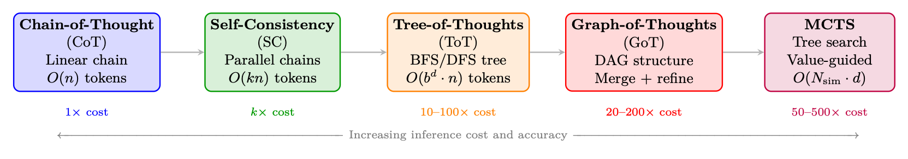
<em>图像来源：原 PDF 第 253 页，尺寸 1663x293。</em></p>
<p><a id="page-254"></a></p>
<h2 id="254">第 254 页</h2>
<p>• 使用温度 T &gt; 0 采样生成不同的链（通常 T = 0.7–1.0）</p>
<p>• 链之间没有交互——完全可并行化</p>
<p>• 准确度随 N 单调提高（N ≈40 后收益递减）</p>
<p>• 在 GSM8K 上：CoT = 56.5%，自一致性 (N=40) = 74.4%（使用 PaLM-540B <a class="citation" href="#ref-221">[221]</a>）</p>
<p>• 相当于具有结果奖励的 Best-of-N（多数投票充当隐式 ORM）</p>
<p>Why Majority Voting Works</p>
<p>如果模型生成正确推理链的概率 p &gt; 0.5，则根据定律
大量投票时，对 N 个独立样本的多数投票接近 100% 准确度，如下所示
N → 无穷大。即使 p = 0.3（模型通常是错误的），如果正确答案集中于一个值
尽管错误答案多种多样，但多数投票仍然可以恢复正确答案。这是
statistical foundation of test-time scaling.</p>
<p>13.2.3
思想树 (ToT)</p>
<p>Tree-of-Thoughts <a class="citation" href="#ref-234">[234]</a> 将 CoT 从线性链推广到树结构，使模型成为可能
探索多种推理路径，评估中间状态，并从无希望的情况中回溯
分支机构。这将深思熟虑的计划引入到推理过程中。</p>
<p>核心抽象。
推理问题被分解为对树的搜索，其中：</p>
<p>• Root: Initial problem statement x</p>
<p>• 节点：部分推理状态 s = (x, z1, . . . , zk)</p>
<p>• 边：单独的推理步骤（“想法”）zk+1</p>
<p>• 离开：带有最终答案的完整解决方案</p>
<p>• 价值函数：V (s) 估计部分解决方案的前景如何</p>
<p>正式定义。
ToT = (G, E, V, πθ, Search)
(13.5)</p>
<p>其中：</p>
<pre><code class="language-math">• G: Thought generator — produces b candidate next thoughts: {z(1), . . . , z(b)} ∼πθ(·|s)
</code></pre>
<p>• E：状态评估器 — 对部分解决方案进行评分：V (s) ε{肯定、也许、不可能}或 V (s) ε
[0, 1]</p>
<p>• πθ：产生思想的语言模型</p>
<p>• 搜索：搜索算法（BFS 或DFS）</p>
<p>搜索算法。
BFS（广度优先搜索）：</p>
<p>1.为当前深度的每个节点生成b个候选想法</p>
<ol start="2">
<li>
<p>用 V (·) 评价所有候选者</p>
</li>
<li>
<p>保留top-k最有希望的状态（束搜索）</p>
</li>
<li>
<p>将所有k个状态提升到下一个级别</p>
</li>
</ol>
<p><a id="page-255"></a></p>
<h2 id="255">第 255 页</h2>
<p>图 13.3：“24 的游戏”任务的思想树：使用 4、9、10、13 的运算得到 24。
每个级别，模型都会生成 b = 3 个候选想法，评估每个想法（确定/也许/不可能），修剪
没有前途的分支，并扩大最有前途的分支。绿色路径通向解决方案；红色路径
修剪得早。</p>
<ol start="5">
<li>重复直到找到解决方案或达到深度限制</li>
</ol>
<p>DFS（深度优先搜索）：</p>
<ol>
<li>为当前状态生成b个候选想法</li>
</ol>
<p>2.评估：如果V(s)=不可能，立即回溯</p>
<p>3.如果V(s)=确定/也许，则更深层次地递归（选择最有希望的）</p>
<ol start="4">
<li>
<p>如果达到深度限制而没有解，则回溯</p>
</li>
<li>
<p>继续，直到找到解决方案或探索所有分支</p>
</li>
</ol>
<p>ToT：价值评估提示</p>
<pre><code class="language-text"># The LLM
evaluates
partial
reasoning
states:
EVAL_PROMPT = """Evaluate if this
partial
solution
can reach 24.
</code></pre>
<pre><code class="language-text">Numbers
remaining: [4, 4, 10]
Steps so far: 13 - 9 = 4
</code></pre>
<pre><code class="language-text">Can these
remaining
numbers (4, 4, 10) be combined
using +,-,*,/
to make 24?
</code></pre>
<pre><code class="language-text">Analysis: 4 * (10 - 4) = 4 * 6 = 24. Yes!
</code></pre>
<pre><code class="language-text">Judge: sure/maybe/impossible
Answer: sure"""
</code></pre>
<pre><code class="language-text"># Thought
generation
prompt:
GEN_PROMPT = """Input: 4 9 10 13
Possible
next
steps:
1. 13 - 9 = 4 (left: 4 4 10)
2. 10 + 13 = 23 (left: 4 9 23)
3. 9 - 4 = 5 (left: 5 10 13)
..."""
</code></pre>
<p>计算成本。
对于具有分支因子 b、深度 d 和波束宽度 k 的 ToT：</p>
<pre><code class="language-math">LLM calls (BFS) =
k · b
|{z}
generation
+
k · b
|{z}
evaluation
= 2kb per level =⇒Total = 2kbd
(13.6)
</code></pre>
<p>对于 24 场比赛：b = 3，k = 2，d = 3 =⇒36 个 LLM 调用，而标准 CoT 为 1 个。</p>
<h3 id="_51">本页图像资源</h3>
<p>
<em>图像来源：原 PDF 第 255 页，尺寸 1626x703。</em></p>
<p><a id="page-256"></a></p>
<h2 id="256">第 256 页</h2>
<p>结果。
在 24 人游戏（一项具有挑战性的算术推理任务）中，ToT 取得了 74% 的成功率
率与 CoT 的 4% 相比——结构化搜索相对于相同基本模型的巨大改进
（GPT-4）。</p>
<p>13.2.4
思维图 (GoT)</p>
<p>Graph-of-Thoughts [235] 将 ToT 从树扩展到有向无环图（DAG），引入
一个关键能力：合并来自不同分支的部分解决方案。这使得模型能够
将多个推理路径的见解综合成一个完善的解决方案。</p>
<p>关键操作。
GoT 引入了 ToT 之外的三种操作：</p>
<p>• 生成：从状态中产生新的想法（与 ToT 相同）</p>
<p>• 聚合/合并：将多种想法合并为一个精炼的想法——这是不可能的
在树上</p>
<p>• 完善：根据反馈迭代改进想法</p>
<p>• 分数：评估思想质量（与ToT的价值函数相同）</p>
<p>图 13.4：CoT（线性链）、ToT（树 - 分支但不合并）和 GoT（DAG -
分支可以合并）。对于排序任务，GoT 可以将数组拆分为子问题，独立解决它们
（并行），然后合并结果——这在纯树结构中是不可能的。这使得分治法成为可能
推理。</p>
<p>图运算（正式）。
令 V = {v1, .。。 , vn} 被认为是顶点并且 E ⊆V ×V 被认为是有向的
边缘。 GoT 支持：</p>
<p>生成（v）：v → {vc1，.。。 , VCB}
（创建孩子）
(13.7)</p>
<p>聚合（v1，...，vk）→vmerged
（将 k 个想法合并为一个）
(13.8)</p>
<p>细化(v, n) →v′
（通过 n 次迭代改进 v）
(13.9)</p>
<p>得分(v) → s ∈[0, 1]
（评估思想质量）
(13.10)</p>
<p>聚合操作是关键的区别：它从多个父节点创建边
单个孩子，形成 DAG 而不是树。这使得：</p>
<p>• 分而治之：拆分问题→并行解决子问题→合并解决方案</p>
<p>• 集成推理：生成多个观点，然后综合最佳想法</p>
<p>• 迭代细化：反馈评估结果以改进早期的想法</p>
<h3 id="_52">本页图像资源</h3>
<p>
<em>图像来源：原 PDF 第 256 页，尺寸 1342x605。</em></p>
<p><a id="page-257"></a></p>
<h2 id="257">第 257 页</h2>
<p>结果。
在排序（需要合并的任务）方面，GoT 与 ToT 相比实现了 62% 的成本降低
同等质量。在设置交集和关键字计数方面，GoT 与 ToT 质量的匹配率为 30–40%
由于合并操作可以实现更高效的分解，LLM 调用更少。</p>
<p>13.2.5
N 最佳奖励模型</p>
<p>Best-of-N (BoN) [196, 236] 是最简单的缩放方法，它使用学习的奖励模型来
在候选人中选择：</p>
<pre><code class="language-math">y∗= arg
max
y∈{y1,...,yN} Rϕ(x, y),
yi ∼πθ(·|x)
(13.11)
</code></pre>
<p>按奖励模型类型划分的变体：</p>
<p>• BoN 与 ORM：对完整的解决方案进行评分；选择得分最高的一项。相当于
ORM ≈正确性检查时的自我一致性。</p>
<p>• BoN with PRM：每个推理步骤评分；选择具有最高最小步长的解决方案
分数（在任何步骤中出现错误的可能性最小）。</p>
<p>• 加权BoN：通过奖励对候选者进行加权：y∗∼softmax(R(y1)/τ, . . . , R(yN)/τ)。</p>
<p>BoN 缩放定律</p>
<p>对于每样本精度为 p 的模型，N 次尝试中至少有一个正确样本的概率：</p>
<p>P(BoN 成功) = 1 −(1 −p)N
(13.12)</p>
<p>具有完美的奖励模型（总是选择正确的预言机）：</p>
<p>• p = 0.3，N = 10：成功 = 97%</p>
<p>• p = 0.1，N = 50：成功 = 99.5%</p>
<p>在实践中，不完美的奖励模型限制了有效 N — 超出 N ≈64–256，奖励模型
错误占主导地位，准确性趋于稳定或下降（奖励黑客）。</p>
<p>13.2.6
用于推理的蒙特卡洛树搜索 (MCTS)</p>
<p>MCTS [19, 237] 将 ToT 的结构化探索与学习值估计相结合
访问计数统计以优化分配推理计算。最初是为了玩游戏而开发的
（AlphaGo <a class="citation" href="#ref-19">[19]</a>），MCTS 已被包括 AlphaProof <a class="citation" href="#ref-238">[238]</a> 在内的系统改编为 LLM 推理
和 rStar <a class="citation" href="#ref-239">[239]</a>。</p>
<p>算法（适用于 LLM 推理）。
每个 MCTS 迭代由四个阶段组成：</p>
<p>UCB 推理。
节点选择使用 PUCT（预测器 + UCB 应用于树）：</p>
<p>”</p>
<h1 id="_53"></h1>
<p>(13.13)</p>
<p>Q(s, a) + cpuct · P(s, a) ·</p>
<p>a*= arg 最大值
一个</p>
<pre><code class="language-text">pP
b N(s, b)
1 + N(s, a)
</code></pre>
<p>其中 P(s, a) = πθ(a|s) 是 LLM 从状态 s 生成步骤 a 的先验概率。这有偏见
探索LLM已经认为可能的步骤，而UCB术语鼓励尝试
尚未探索的替代方案。</p>
<p>用于数学推理的 MCTS：运行示例</p>
<p>问题：证明
√</p>
<p>2 是无理数。
迭代 1（选择→根，扩展）：</p>
<p><a id="page-258"></a></p>
<h2 id="258">第 258 页</h2>
<p>图 13.5：MCTS 推理的四个阶段： (1) 选择：使用 UCB 遍历树以找到有希望的
叶; (2) 扩展：从叶子生成新的推理步骤； (3) 模拟：完成推理
最终状态并评估； (4)反向传播：更新沿路径的值估计。</p>
<p>• 生成 3 个候选第一步：</p>
<p>1.“假设矛盾的是
√</p>
<p>2 = p/q 最简而言。” （P = 0.7）</p>
<p>2.“考虑十进制展开
√</p>
<p>2 = 1.414...”（P = 0.15）</p>
<p>3.“运用算术基本定理。” （P = 0.10）</p>
<p>• 从 z1 开始推出：分 4 步达到正确证明→r = 1.0</p>
<p>• 从 z2 推出：失败（小数不能证明无理性）→r = 0.0</p>
<p>• 反向传播：Q(s0, z1) = 1.0，N(s0, z1) = 1</p>
<p>迭代 2（选择：由 UCB 选择 z1）：</p>
<p>2 = p/q...”：</p>
<p>• 从状态“假设
√</p>
<p>1.“那么 2 = p2/q2，所以 p2 = 2q2。” （P = 0.8）</p>
<p>2.“那么p和q没有公因数。” （P = 0.15）</p>
<p>• 从 z4 推出：正确延续→r = 1.0</p>
<p>• 反向传播：Q(s0, z1) = 1.0，Q(s1, z4) = 1.0</p>
<pre><code class="language-math">After 20 iterations: The tree has explored 8 distinct reasoning paths. The most-visited path
is selected as the final proof: z1 →z4 →z6 →z8 (classical proof by contradiction via even/odd
argument).
</code></pre>
<p>比较：ToT 与 MCTS。</p>
<p>13.2.7
集束搜索推理步骤</p>
<p>集束搜索——NMT 和文本生成的长标准——可以应用于推理步骤
级别而不是token级别。我们不跟踪 top-k 标记序列，而是跟踪 top-k
推理前缀：</p>
<p>（）</p>
<p>d
X</p>
<p>(13.14)</p>
<p>（s1，...，sd）：</p>
<pre><code class="language-math">Bd = top-k
</code></pre>
<pre><code class="language-math">i=1
log πθ(si|s&lt;i) + λ · Vϕ(s1, . . . , sd)
</code></pre>
<p>其中评分将 LLM 对数概率（流利度）与价值模型估计相结合
（正确性）。这实际上是具有学习价值函数而不是提示价值函数的 ToT-BFS。</p>
<h3 id="_54">本页图像资源</h3>
<p>
<em>图像来源：原 PDF 第 258 页，尺寸 1604x651。</em></p>
<p><a id="page-259"></a></p>
<h2 id="259">第 259 页</h2>
<p>表 13.1：思维树与蒙特卡罗树搜索推理。</p>
<p>尺寸
总时间
MCTS</p>
<p>价值估算
LLM
提示
（“当然/可能-
是/不可能”）
学习价值网络+推出统计</p>
<p>探索
固定波束宽度；不再重访-
英
UCB 自适应地将预算分配给有前途的人
节点
计算分配
跨深度级别均匀
重点：
对较难的子进行更多模拟
问题
训练整合
无需训练；纯粹的提示
可以将 MCTS 策略提炼到基本模型中 <a class="citation" href="#ref-19">[19]</a>
最适合
简单的分支问题 (24
游戏）
复杂问题需要深入探索
（证明、代码）</p>
<p>13.2.8
迭代细化和自我修正</p>
<p>迭代细化不是探索广度（多个并行链），而是将计算投资于
深度——反复改进单一解决方案：</p>
<p>y(t+1) = LLM

“改进此解决方案：”，y(t)，“发现错误：”，e(t)
(13.15)</p>
<p>其中 e(t) 可能来自：</p>
<p>• 自我验证：要求模型检查自己的答案</p>
<p>• 外部验证：运行代码，以token方式检查数学</p>
<p>• 批评模型：识别错误的单独模型</p>
<p>值得注意力的方法：Self-Refine <a class="citation" href="#ref-240">[240]</a>（迭代自我反馈）、Reflexion <a class="citation" href="#ref-224">[224]</a>（通过口头 RL
存储在内存中的反射）和 LATS <a class="citation" href="#ref-225">[225]</a>（树搜索+基于反射的修剪）。</p>
<p>13.2.9
方法比较和选择指南</p>
<p>表 13.2：测试时间缩放方法的综合比较。</p>
<p>方法
结构
LLM电话
可并行化
需要RM吗？
最适合</p>
<p>科特 <a class="citation" href="#ref-122">[122]</a>
链条
1
不适用
否
简单到中等的问题
自洽<a class="citation" href="#ref-124">[124]</a>
平行链
氮
✓完全
否（多数票）
具有离散答案的数学
N 中最佳 + ORM
平行链
N+1
✓完全
是（ORM）
具有良好 RM 的一般任务
N 次最佳 + PRM
平行链
N+N·K
✓完全
是（PRM）
复杂的多步骤推理
总吨 <a class="citation" href="#ref-234">[234]</a>
树（BFS/DFS）
O(kbd)
部分
LLM法官
结构化搜索问题
得到了 [235]
有向无环图
O(kbd)
部分
LLM法官
可分解的问题
MCTS <a class="citation" href="#ref-237">[237]</a>
树+值
O(Nsim·d)
部分
是（净值）
硬证明、编码
自我提升 <a class="citation" href="#ref-240">[240]</a>
线性（迭代）
2T
否
自我批评
开放式的一代
拉兹 <a class="citation" href="#ref-225">[225]</a>
树+倒影
O(N·d)
部分
LLM法官
智能体任务</p>
<p>何时使用哪种方法</p>
<p>• 预算&lt; 5× 基本成本：使用CoT 或自我一致性。性价比最高。</p>
<p>• 预算 5–50×：将 Best-of-N 与 PRM 结合使用（如果您有良好的奖励模型）或 ToT-BFS
其中 b = 3，k = 2。</p>
<p>• 预算50–500×：使用经过训练的价值函数的MCTS。这就是政权
DeepSeek-R1 和 OpenAI o1 运行 — 带有隐式树搜索的长推理链。</p>
<p>• 所需的并行性：自我一致性和Best-of-N 是完全并行的；总时间/MCTS
需要顺序深度扩展。</p>
<p>• 没有可用的奖励模型：使用自我一致性（多数投票）或以LLM为对象的 ToT
评委评价。</p>
<p><a id="page-260"></a></p>
<h2 id="260">第 260 页</h2>
<p>• 可分解问题：当问题具有自然子问题（排序、
多文档合成，带有模块的代码）。</p>
<p>推理模型中的隐式测试时间缩放</p>
<p>现代推理模型（DeepSeek-R1 [15]、OpenAI o1/o3 [241, 242]）执行隐式测试
通过长链思想生成来缩放时间。他们的“思考”token具有某种功能
类似于 MCTS 的推出：该模型探索多种方法、回溯（“等等，让我
重新考虑...”），验证中间步骤，并将更多token分配给更难的子问题。的
R1/o1 训练的关键见解是 GRPO/RL 教导模型执行这种隐式搜索
在一代之内，消除了对外部编排的需要（ToT提示、MCTS
基础设施）。该模型成为其自己的搜索算法。</p>
<p>13.3
DeepSeek-R1</p>
<p>DeepSeek-R1[15]是第一个完全开源的大型推理模型，匹配或超过OpenAI o1
在主要基准测试上。其训练渠道在技术上是透明的，已成为事实上的训练渠道
基于 RL 的推理的参考实现。</p>
<p>13.3.1
两阶段训练流程</p>
<p>第一阶段：冷启动监督微调
首先对基础模型（DeepSeek-V3）进行微调
在一个小型的、精心策划的长链示例数据集上。这个“冷启动”阶段
有两个目的：</p>
<ol>
<li>格式初始化：模型学习在<think>...</think>中产生推理
在发出最终答案之前格式化。</li>
</ol>
<p>2.稳定性：没有冷启动SFT，在基础模型上从头开始的纯RL产生不稳定
训练动态和退化输出（例如，语言混合、重复循环）。</p>
<p>冷启动数据集仅包含约数千个示例，故意保持较小以避免
过度限制 RL 随后发现的推理风格。</p>
<p>第二阶段：基于 GRPO 的强化学习
冷启动 SFT 后，模型经历
使用组相对策略优化（GRPO）的大规模强化学习。使用的完整 GRPO 目标
R1 中的内容在第 13.3.3 节中进行了描述。</p>
<p><a id="page-261"></a></p>
<h2 id="261">第 261 页</h2>
<p>R1 训练流程摘要</p>
<p>1.基础型号：DeepSeek-V3（671B MoE，37B活跃参数）</p>
<ol start="2">
<li>
<p>冷启动
斯夫特：
～数千
的
长CoT
例子，
格式：
&lt;思考&gt;...&lt;/思考&gt;&lt;答案&gt;...&lt;/答案&gt;</p>
</li>
<li>
<p>RL 阶段：GRPO 在数学+代码问题上提供可验证的奖励</p>
</li>
</ol>
<p>4.拒绝采样：生成多个解，保留正确的</p>
<ol start="5">
<li>
<p>RL 输出上的 SFT：对高质量 RL 生成的链进行微调</p>
</li>
<li>
<p>最终 RL：第二个 RL 阶段，用于协调 + 帮助</p>
</li>
</ol>
<p>13.3.2
奖励设计：奖励的准确性和形式</p>
<p>R1 的一个关键设计选择是没有过程奖励模型。相反，R1 使用两个
简单、自动计算的奖励：</p>
<p>准确率奖励
对于具有可验证答案的数学问题：</p>
<p>racc(y, y*) =</p>
<p>（1
如果验证（y，y*）= True
0
否则
(13.16)</p>
<p>其中 y 是模型的最终答案（从 <answer> 标签中提取），y* 是真实答案。
验证函数使用token数学比较（例如 SymPy）来处理等效形式。
对于代码问题，准确性奖励是通过测试用例的通过来确定的：</answer></p>
<p>X</p>
<pre><code class="language-math">rcode
acc (y, T ) =
1
|T |
</code></pre>
<p>t∈T
1[执行(y, t) = 预期(t)]
(13.17)</p>
<p>形式奖励
要强制使用 <think>...</think> 结构：</p>
<pre><code class="language-math">rfmt(y) =
</code></pre>
<p>（1
y 具有有效的 <think> 和 <answer> 标签
0
否则
(13.18)</answer></think></p>
<pre><code class="language-text">Combined Reward
r(y, y∗) = racc(y, y∗) + λfmt · rfmt(y)
(13.19)
</code></pre>
<p>原始实现中 λfmt = 0.1（小到不占主导地位，大到足以
防止格式崩溃）。</p>
<p>无过程奖励模型
R1 的一个值得注意力且令人惊讶的发现是不需要过程奖励模型（PRM）。
尽管推理链很长，但仅以结果为奖励足以让强化学习发现高
质量推理策略。作者假设数学/代码的可验证性质
奖励提供了足够的信号，并且 PRM 引入了自己的失败模式（奖励
在步骤级别进行黑客攻击）。这与 OpenAI 采取的方法（第 13.4 节）形成对比。</p>
<p>13.3.3
R1 的 GRPO 配方</p>
<p>GRPO <a class="citation" href="#ref-14">[14]</a> 是一种策略梯度方法，通过估计来避免训练单独的价值网络
一组抽样响应的优势。对于问题 q，GRPO 对 G 响应进行采样
{y1，y2，.。。 , yG} 来自当前策略 πθ 并计算相对于组平均值的优势。</p>
<p><a id="page-262"></a></p>
<h2 id="262">第 262 页</h2>
<p>群体抽样和优势标准化
给定问题 q，样本 G 输出：</p>
<pre><code class="language-text">{yi}G
i=1 ∼πθ(· | q)
(13.20)
</code></pre>
<p>计算奖励{ri}G
i=1 使用方程式中的奖励函数。 [eq:r1_combined_reward]。的
响应 i 的标准化优势为：</p>
<p>ˆAi = ri −µr</p>
<p>σr + ε
(13.21)</p>
<p>其中 µr = 1</p>
<p>G
PG
i=1 ri, σr =
q</p>
<p>1
G
PG
i=1(ri −µr)2，且 ϵ = 10−8 以保证数值稳定性。</p>
<p>GRPO目标
GRPO 目标裁剪概率比（如 PPO 中）并添加 KL
针对参考策略 πref 的惩罚：</p>
<p>|一|
X</p>
<p>G
X</p>
<pre><code class="language-math">LGRPO(θ) = −Eq∼D, {yi}∼πθ(·|q)
</code></pre>
<p>”
1
G</p>
<p>1
|一|</p>
<pre><code class="language-math">t=1
</code></pre>
<pre><code class="language-math">i=1
</code></pre>
<h1 id="_55"></h1>
<p>(13.22)</p>
<pre><code class="language-math">min

ρi,t ˆAi, clip(ρi,t, 1−ε, 1+ε) ˆAi

−β DKL[πθ ∥πref]
</code></pre>
<p>在哪里：</p>
<pre><code class="language-math">• ρi,t =
πθ(yi,t | q, yi,&lt;t)
πθold(yi,t | q, yi,&lt;t) is the per-token probability ratio
</code></pre>
<p>• ε ε{0.1, 0.2} 是 PPO 裁剪参数</p>
<p>• β &gt; 0 控制 KL 惩罚强度</p>
<p>• |易|是响应 i 的长度（长度标准化可防止偏向于短响应）</p>
<p>吉隆坡处罚公式
KL 散度项是逐个token计算的：</p>
<p></p>
<p></p>
<pre><code class="language-math">DKL[πθ ∥πref] = Ey∼πθ(·|q)
</code></pre>
<p>
(13.23)</p>
<p>
|y|
X</p>
<p>πref(yt | q, y&lt;t)</p>
<p>t=1
log πθ(yt | q, y&lt;t)</p>
<p>In practice, R1 uses an unbiased estimator of the KL that avoids computing πref at every step by
using the approximation:</p>
<pre><code class="language-math">DKL[πθ ∥πref] ≈πref(yt | q, y&lt;t)
</code></pre>
<pre><code class="language-math">πθ(yt | q, y&lt;t) −log πref(yt | q, y&lt;t)
</code></pre>
<p>πθ(yt | q, y&lt;t) −1
(13.24)</p>
<pre><code class="language-math">which is always non-negative and equals zero when πθ = πref.
</code></pre>
<p>GRPO 实践：团体规模和稳定性</p>
<p>在 R1 的训练中，每个问题采样 G = 8 个响应。这是一个关键的超参数：</p>
<p>• 太小（G = 2）：优势估计的方差很大；训练很吵。</p>
<p>• 太大（G = 32）：计算成本线性缩放；收益递减。</p>
<p>• G = 8：根据经验发现可以平衡方差减少和计算成本。</p>
<p>分组抽样还提供了一个自然的课程信号：随着训练的进行，模型的
平均奖励 µr 增加，方差 σr 减少。所有 G 响应都为的问题
正确（或全部错误）贡献零梯度，自然地将学习集中在问题上
模型能力的边界。</p>
<p><a id="page-263"></a></p>
<h2 id="263">第 263 页</h2>
<p>13.3.4
蒸馏：R1-蒸馏系列</p>
<p>R1 的一个主要实际贡献是证明推理能力是可以提炼出来的
通过对 R1 生成的链进行监督微调，将其转化为更小的模型。 R1-蒸馏器
系列（1.5B、7B、8B、14B、32B、70B 参数）通过以下方式训练：</p>
<ol>
<li>
<p>使用 R1 (671B) 生成大型问题集的长 CoT 解决方案</p>
</li>
<li>
<p>过滤以仅保留正确的解决方案</p>
</li>
<li>
<p>在这些解决方案上微调较小的基础模型（Qwen2.5、Llama-3）</p>
</li>
</ol>
<p>小模型的蒸馏与强化学习
一个惊人的发现：在小型模型上，蒸馏优于从头开始的强化学习训练。
DeepSeek-R1-Distill-Qwen-7B 比经过训练的 7B 模型获得了更高的 MATH 基准测试分数
直接与GRPO。这表明：</p>
<p>• 小模型缺乏通过强化学习探索发现推理策略的能力</p>
<p>• 但他们可以学习模仿更大模型发现的推理策略</p>
<p>• 小模型的瓶颈是探索，而不是表示</p>
<p>蒸馏方法提出了一个关于推理本质的重要问题：
小模型真正的“推理”，还是推理链表面形式的模式匹配？
根据经验，蒸馏模型显示出对新问题类型的一些概括，表明真正的
推理策略的内化而不是纯粹的记忆。</p>
<p>13.4
OpenAI o1/o3 系列</p>
<p>OpenAI 的 o1 <a class="citation" href="#ref-241">[241]</a>（2024 年 9 月发布）和后续的 o3/o4-mini <a class="citation" href="#ref-242">[242]</a> 模型代表了
推理模型开发的商业前沿。虽然完整的技术细节仍然是专有的，
已发布的系统卡、技术报告和实证观察提供了丰富的见解
进入方法论。</p>
<p>13.4.1
具有隐藏推理标记的思想链强化学习</p>
<p>o1 的定义架构选择是使用隐藏推理标记：模型生成
内部思维链（称为“推理轨迹”或“思维标记”）
用户。仅返回最终答案。这个设计有几个含义：</p>
<p>• 无格式限制：隐藏推理可以使用任何格式，包括暂存器
token、伪代码，甚至非英语推理。</p>
<p>• 风格上没有奖励黑客：由于用户永远看不到推理，因此没有压力
让它看起来“好”而不是有用。</p>
<p>• 专有保护：推理过程不暴露，防止直接模仿。</p>
<p>训练过程被描述为“使用 RL 进行推理的训练模型”，其目标是 RL
应用于完整的（隐藏推理+最终答案）序列，仅根据质量进行奖励
最终答案。</p>
<p>13.4.2
过程奖励模型与结果奖励模型</p>
<p>OpenAI 的方法被认为除了使用过程奖励模型（PRM）<a class="citation" href="#ref-243">[243]</a>
结果奖励，与 DeepSeek-R1 只注重结果的方法相反。这个推理是基于
OpenAI 发布的 PRM 研究（PRM800K 数据集，“让我们一步一步验证”）和 o1
系统卡对推理链上 RL 训练的描述，尽管确切的 o1/o3 训练配方
尚未公开披露。</p>
<p><a id="page-264"></a></p>
<h2 id="264">第 264 页</h2>
<p>Outcome Reward Model (ORM)
An ORM scores the complete response (q, y):</p>
<p>RORM(q, y) ∈[0, 1]
(13.25)</p>
<p>对于可验证的任务（数学、代码），这简化为精确匹配验证。对于开放式任务，
learned reward model is used.</p>
<pre><code class="language-text">Process Reward Model (PRM)
A PRM assigns a reward to each reasoning step sk in the chain
y = (s1, s2, . . . , sK):
</code></pre>
<p>K
X</p>
<pre><code class="language-math">RPRM(q, y) =
</code></pre>
<pre><code class="language-text">k=1
γK−k · rk(q, s1, . . . , sk)
(13.26)
</code></pre>
<pre><code class="language-math">where rk ∈[0, 1] is the step-level reward and γ ∈(0, 1] is a discount factor. The step-level reward rk
estimates the probability that the partial solution (s1, . . . , sk) leads to a correct final answer:
</code></pre>
<pre><code class="language-math">rk(q, s1, . . . , sk) = P(correct final answer | q, s1, . . . , sk)
(13.27)
</code></pre>
<p>PRM 与 ORM：信用分配权衡</p>
<p>ORM 提供干净、明确的奖励，但存在严重的信用分配问题：
50 步链中早期的单个错误步骤将获得与完全随机的相同的零奖励
回应。
PRM 提供密集奖励，直接解决信用分配问题，但引入了新的挑战
长度：</p>
<p>• 训练数据：步骤级标签需要人工注释或自动生成（数学-
牧羊人，第 13.6.2 节）。</p>
<p>• 奖励黑客：模型可以学习生成在 PRM 看来正确的步骤，而无需
实际上是正确的。</p>
<p>• 分布转变：在一种推理链分布上训练的 PRM 可能无法泛化
RL 生产的新型链条。</p>
<p>经验证据表明 PRM 有利于搜索（在候选者中进行选择）
解决方案），但它们对训练的好处尚不清楚。</p>
<p>13.4.3
推理时间计算扩展</p>
<p>o1技术报告展示了一个清晰的缩放法则：更多的单调思考token
提高硬推理任务的表现。这是通过“思考预算”来实施的
控制隐藏推理标记的最大数量的参数。
令 T 为思维token预算。观察到的经验标度律大约为：</p>
<p>通过@1(T) ≈a −b · T −c
(13.28)</p>
<p>对于常数 a、b、c &gt; 0，其中 a 表示渐近精度上限，c 表示
改善率。对于 AIME 2024，具有完整思维预算的 o1 达到了 ∼83% 的准确率，
相比之下，GPT-4o（不使用扩展思维）为 13%。</p>
<p>13.4.4
训练计算与测试时计算</p>
<p>o1/o3 系列的一个基本见解是计算等效原理：存在
训练计算 Ctrain 和测试时计算 Ctest 之间的权衡曲线，使得
曲线实现相似的性能：</p>
<p>性能(Ctrain, Ctest) = g(αCp
训练+βCq
测试）
(13.29)</p>
<p>根据经验，推理任务的 p ≈q，表明训练和测试时的计算大致为
可替代的。这对部署具有深远的影响：具有扩展功能的更小、更便宜的模型
思维可以在难题上匹配更大的模型，但代价是更高的延迟。</p>
<p><a id="page-265"></a></p>
<h2 id="265">第 265 页</h2>
<p>13.4.5
o3 和 o4-mini 架构见解</p>
<p>虽然 o3 和 o4-mini 的细节在很大程度上仍然是专有的，但已经出现了一些观察结果：</p>
<p>• o3：比o1 的思维预算大得多；在 ARC 上实现了接近人类的性能
AGI（高计算时为 87.5%）。据信在期间使用了更复杂的搜索策略
推理。</p>
<p>• o4-mini：证明具有 RL 训练推理能力的较小模型可以具有很强的竞争力。
积极的。通过扩展思维在 AIME 2025 上达到 93%，表明模型尺寸更小
对于数学来说，比推理能力更重要。</p>
<p>• 工具使用：o3/o4-mini 将工具使用（代码执行、网络搜索）集成到推理过程中，
允许模型以编程方式验证中间步骤。</p>
<p>13.5
QwQ 和 Qwen 推理模型</p>
<p>阿里巴巴Qwen团队开发了一系列推理模型（QwQ-32B <a class="citation" href="#ref-244">[244]</a>、Qwen3 <a class="citation" href="#ref-245">[245]</a>）
与 DeepSeek-R1 一起代表开源前沿。他们的方法在几个关键方面有所不同
尊重。</p>
<p>13.5.1
多级强化学习流程</p>
<p>Qwen 推理流水线使用更复杂的多阶段方法：</p>
<p>1.基础预训练：具有强大数学和编码能力的Qwen2.5基础模型</p>
<ol start="2">
<li>多样化推理上的 SFT：对各种推理任务（数学、代码、
科学、logits）</li>
</ol>
<p>3.拒绝采样微调（RFT）：每个问题生成N个解决方案，保持正确
的，微调</p>
<ol start="4">
<li>
<p>RL 第 1 阶段：关于数学和代码的 GRPO 以及可验证的奖励</p>
</li>
<li>
<p>强化学习阶段 2：更广泛的强化学习，包括指令遵循和安全</p>
</li>
</ol>
<p>13.5.2
拒绝采样+RL组合</p>
<p>Qwen 方法的一个关键创新是拒绝采样和
RL：</p>
<p>1.初始化：来自SFT模型的策略π0。</p>
<pre><code class="language-text">2. Rejection Sampling: Sample N solutions: {yi}N
i=1 ∼πk−1(· | q). Keep correct solutions:
Y+(q) = {yi : r(yi, y∗) = 1}.
</code></pre>
<pre><code class="language-math">3. SFT update: πSFT
k
←SFT(πk−1, S
q Y+(q))
</code></pre>
<pre><code class="language-math">4. RL update: πk ←GRPO(πSFT
k
, D)
</code></pre>
<ol start="5">
<li>重复步骤 2-4 进行 K 次迭代，以获得最终策略 πK。</li>
</ol>
<p>拒绝抽样步骤提供了锚定政策的高质量正面示例，同时
强化学习的探索超出了当前的分布。这种组合比纯 RL 更稳定
比纯 SFT 更强大。</p>
<p><a id="page-266"></a></p>
<h2 id="266">第 266 页</h2>
<p>13.5.3
工具综合推理</p>
<p>QwQ-32B和Qwen3模型支持工具集成推理：模型可以调用外部
推理链中的工具（Python解释器、搜索引擎、计算器）。这是实施的
通过特殊token：</p>
<pre><code class="language-text">&lt;think &gt;
Let me solve
this step by step.
First , I’ll compute
the
eigenvalues of the matrix.
</code></pre>
<pre><code class="language-text">&lt;tool_call &gt;
{" name ": "python", "arguments ": {" code ": "import
numpy as np\nA = np.array
([[2 ,1] ,[1 ,3]])\neigenvalues = np.linalg.eigvals(A)\nprint(eigenvalues)"}}
&lt;/tool_call &gt;
</code></pre>
<pre><code class="language-text">&lt;tool_response &gt;
[1.38196601
3.61803399]
&lt;/tool_response &gt;
</code></pre>
<pre><code class="language-text">The
eigenvalues
are
approximately
1.382 and 3.618.
These are (5 +/- sqrt5)/2, which are the golden
ratio and its
conjugate ...
&lt;/think &gt;
&lt;answer &gt;The
eigenvalues
are (5 +/- sqrt5)/2&lt;/answer &gt;
</code></pre>
<p>清单 13.1：QwQ 中的工具集成推理格式</p>
<p>强化学习训练奖励是根据最终答案计算的，但模型会学习使用工具
策略性地，因为工具的使用提高了获得正确答案的可能性。</p>
<p>13.6
具有数学基础的关键方法</p>
<p>13.6.1
蒙特卡罗树搜索推理</p>
<p>蒙特卡洛树搜索 (MCTS) 提供了树搜索推理的原则框架。在
AlphaProof <a class="citation" href="#ref-238">[238]</a> 和相关系统，MCTS 应用于推理步骤而不是游戏
移动。</p>
<p>状态和行动空间</p>
<p>• 状态sk：部分推理链（q、r1、r2、...、rk），其中ri 是推理步骤</p>
<p>• 动作a：下一个推理步骤（句子或段落）</p>
<p>• 最终状态：包含最终答案的状态</p>
<p>• 奖励：R(sterminal) = racc（方程[eq:r1_accuracy_reward]）</p>
<p>部分解的价值函数
值函数 V (sk) 估计的概率
从部分状态 sk 得出正确答案：</p>
<p>中号
X</p>
<p>V(sk) = P(正确答案|sk) ≈1</p>
<p>中号</p>
<pre><code class="language-math">m=1
R(rolloutm(sk))
(13.30)
</code></pre>
<p>其中 rolloutm(sk) 是使用当前策略从 sk 到终端状态的蒙特卡洛转出。</p>
<p>UCB勘探公司
节点选择使用适合于的上置信界 (UCB) 公式
推理：</p>
<p>p</p>
<pre><code class="language-math">UCB(sk, a) = Q(sk, a) + cpuct · πθ(a | sk) ·
</code></pre>
<pre><code class="language-text">N(sk)
1 + N(sk, a)
(13.31)
</code></pre>
<p>在哪里：</p>
<p><a id="page-267"></a></p>
<h2 id="267">第 267 页</h2>
<p>• Q(sk, a) =
1
N(sk,a)
磷
访问次数 V (sk+1) 是子状态的平均值</p>
<p>• πθ(a | sk) 是策略先验（步骤 a 的语言模型概率）</p>
<p>• N(sk) is the visit count of state sk</p>
<p>• N(sk, a) 是(sk, a) 边的访问计数</p>
<p>• cpuct is the exploration constant</p>
<p>MCTS-指导训练
MCTS可用于生成高质量的训练数据：</p>
<p>X</p>
<p>LMCTS(θ) = −
X</p>
<pre><code class="language-math">a
πMCTS(a | sk) log πθ(a | sk)
(13.32)
</code></pre>
<p>k</p>
<pre><code class="language-math">where πMCTS(a | sk) ∝N(sk, a)1/τ is the MCTS policy (visit count distribution with temperature τ).
</code></pre>
<p>13.6.2
流程奖励模型</p>
<p>Math-Shepherd：自动化 PRM 训练
Math-Shepherd [246]提出了一种自动化的
无需人工步骤级注释即可训练 PRM 的方法。关键的见解是使用结果-
基于估计：如果存在 sk 的完成，则步骤 sk 被标记为正确
正确答案。
形式上，对于部分解 (s1, ..., sk)：</p>
<p>ˆrk = 1[∃(sk+1, ..., sk) : 验证(sk, y*) = 1]
(13.33)</p>
<p>实际上，这是通过从 sk 中采样 M 个完成并检查是否有正确来估计的：</p>
<h1 id="_56"></h1>
<p>” 米
X</p>
<p>(13.34)</p>
<p>ˆrk ≈1</p>
<p>米=1
验证（完成m（sk），y*）&gt; 0</p>
<p>然后使用二元交叉熵训练 PRM：</p>
<p>K
X</p>
<p>LPRM(φ) = −</p>
<pre><code class="language-text">k=1
[ˆrk log rϕ(sk) + (1 −ˆrk) log(1 −rϕ(sk))]
(13.35)
</code></pre>
<p>用于 N 次最佳选择的 PRM
PRM 的主要应用是 N 中最佳选择：生成
N 个候选解决方案并选择 PRM 分数最高的一个：</p>
<p>y*=arg
最大
y∈{y1,...,yN} RPRM(q, y)
(13.36)</p>
<p>这比多数投票（使用 ORM）更有效，因为 PRM 可以区分
通过不同的质量推理路径达到相同答案的解决方案之间。</p>
<p>13.6.3
结果奖励模型和多数投票</p>
<p>多数投票（自我一致性）
测试时计算扩展的最简单形式是多数
投票<a class="citation" href="#ref-124">[124]</a>：生成N个解决方案并返回最常见的答案：</p>
<p>氮
X</p>
<p>y*= arg 最大值
一个</p>
<pre><code class="language-text">i=1
1[yi = a]
(13.37)
</code></pre>
<p>假设每个解独立正确且概率 p &gt; 0.5，则
多数投票正确的概率为：！</p>
<p>氮
X</p>
<p>P（多数正确）=</p>
<pre><code class="language-math">pk(1 −p)N−k N→∞
−−−−→1
(13.38)
</code></pre>
<p>氮
k</p>
<p>k=⌈N/2⌉</p>
<p><a id="page-268"></a></p>
<h2 id="268">第 268 页</h2>
<p>使用 ORM 进行加权多数投票
ORM 可以通过加权来改进多数投票
信任投票：</p>
<p>氮
X</p>
<p>y*= arg 最大值
一个</p>
<pre><code class="language-text">i=1
RORM(q, yi) · 1[yi = a]
(13.39)
</code></pre>
<p>13.6.4
自我推理推理游戏</p>
<p>自对弈方法通过让模型同时扮演生成器和验证者来生成训练数据
角色。</p>
<p>STAR：自学推理者
STaR [223] 迭代地引导推理能力：</p>
<ol>
<li>
<p>为问题集生成推理链</p>
</li>
<li>
<p>保留导致正确答案的链条（拒绝抽样）</p>
</li>
<li>
<p>对保留链进行微调</p>
</li>
<li>
<p>对改进后的模型重复上述操作</p>
</li>
</ol>
<p>关键的见解是该模型可以合理化正确答案：即使它无法解决问题
从头开始，它可以根据给出的答案生成一个合理的推理链，然后可以将其用作
训练数据。</p>
<p>自玩强化学习
在用于推理的自博强化学习中，模型会生成问题和解决方案：</p>
<pre><code class="language-math">Lself-play(θ) = Eq∼πgen
θ Ey∼πsolve
θ
(·|q) [r(y, y∗)]
(13.40)
</code></pre>
<pre><code class="language-math">where πgen
θ
generates problems and πsolve
θ
solves them. The generator is rewarded for producing
problems that are challenging but solvable.
</code></pre>
<p>13.6.5
可验证奖励的强化学习 (RLVR)</p>
<p>RLVR <a class="citation" href="#ref-247">[247]</a>是一个使用ground-truth验证作为奖励信号的框架，适用于
任何可以自动检查正确性的域。</p>
<p>可验证的域名</p>
<p>• 数学：通过 SymPy、Lean 或 Isabelle 进行token验证</p>
<p>• 代码：单元测试执行</p>
<p>• 形式logits：证明检查</p>
<p>• 事实质量保证：数据库查找</p>
<p>• 游戏：输赢结果</p>
<p>RLVR 目标</p>
<pre><code class="language-math">LRLVR(θ) = −E(q,y∗)∼DEy∼πθ(·|q) [verify(y, y∗)] + βDKL[πθ ∥πref]
(13.41)
</code></pre>
<p>RLVR 相对于 RLHF 的主要优势是不存在奖励模型错误：因为
奖励是由确定性验证者而不是学习模型计算的，没有奖励
针对有缺陷的奖励模型进行黑客攻击。唯一的失败模式是模型找到的解决方案通过了
验证但并不真正正确（例如，利用代码评估中的测试用例弱点）。</p>
<p><a id="page-269"></a></p>
<h2 id="269">第 269 页</h2>
<p>RLVR for Code：奖励黑客挑战</p>
<p>在代码生成中，验证器是一个测试套件。使用 RLVR 训练的模型可以学习：</p>
<p>• 硬编码测试输出：返回每个测试输入的预期输出，无需执行
调整实际算法</p>
<p>• 利用弱测试：通过所有提供的测试，但在边缘情况下失败</p>
<p>缓解措施包括： 使用大型、多样化的测试套件；包括对抗性测试用例；使用执行-
基于惩罚硬编码的奖励（例如，检查解决方案是否在 O(n log n) 时间内运行）。</p>
<p>13.6.6
旅程学习</p>
<p>旅程学习<a class="citation" href="#ref-248">[248]</a>提出了完整推理轨迹的训练，包括失败的尝试
和修正，而不仅仅是成功的最终解决方案。</p>
<p>动机
标准拒绝采样丢弃失败的尝试。但失败的尝试包含
有价值的信息：</p>
<p>• 哪些方法不起作用（反面例子）</p>
<p>• 如何识别错误并从错误中恢复（纠正模式）</p>
<p>• 问题空间的结构（探索数据）</p>
<p>旅程学习目标
给定轨迹 τ = (s0, a0, s1, a1, ..., sT )，其中可能包括
回溯：</p>
<p>时间
X</p>
<p>Ljourney(θ) = −</p>
<p>时间=0
wt log πθ(at | st)
(13.42)</p>
<p>其中权重 wt 旨在强调：</p>
<p>• 最终成功的步骤（wt &gt; 1）</p>
<p>• 错误后的纠正步骤（wt &gt; 1）</p>
<p>• 失败分支中的步骤（wt &lt; 1，但&gt; 0）</p>
<p>13.6.7
Quiet-STAR：对每个标记进行推理</p>
<p>Quiet-STAR <a class="citation" href="#ref-230">[230]</a> 将推理范式扩展到每个标记位置：而不是生成
仅在最终答案之前的推理链，模型在每个标记处生成一个“想法”
位置。</p>
<pre><code class="language-math">Formulation
For each token position t, the model generates a hidden thought zt before predicting
the next token xt+1:
P(xt+1 | x≤t) = Ezt∼πθ(·|x≤t) [πθ(xt+1 | x≤t, zt)]
(13.43)
</code></pre>
<p>在实践中，这可以通过混合有思想和没有思想的预测来近似：</p>
<pre><code class="language-math">P(xt+1 | x≤t) = α · πθ(xt+1 | x≤t, zt) + (1 −α) · πθ(xt+1 | x≤t)
(13.44)
</code></pre>
<p>使用 REINFORCE 进行训练
由于认为 zt 是离散潜变量，因此梯度为
使用 REINFORCE 估计：</p>
<pre><code class="language-math">∇θLQS = Ezt [∇θ log πθ(zt | x≤t) · (log P(xt+1 | x≤t, zt) −bt)]
(13.45)
</code></pre>
<pre><code class="language-math">where bt is a baseline (e.g., the no-thought prediction log πθ(xt+1 | x≤t)).
</code></pre>
<p><a id="page-270"></a></p>
<h2 id="270">第 270 页</h2>
<p>Quiet-STAR 的计算成本</p>
<p>Quiet-STAR 将推理成本增加 Lz + 1 倍，其中 Lz 是应用的思维长度
在每个标记位置。对于长度为 T 且思想长度为 Lz = 8 的序列，这是一个 9×
计算量的增加。这使得 Quiet-STAR 对于没有显着影响的长序列来说不切实际。
工程优化（例如，思想的推测性解码、缓存）。</p>
<p>13.7
推理的缩放定律</p>
<p>最近的工作 [249, 250] 已经确定测试时计算可以通过推理进行可预测的扩展
性能，将经典缩放定律<a class="citation" href="#ref-251">[251]</a>扩展到推理机制中。</p>
<p>13.7.1
训练计算与测试时计算的权衡</p>
<p>推理模型的基本扩展问题是：给定固定的总计算预算
Ctotal = Ctrain + N · Ctest（其中N是查询数），应该如何计算
分配？
令 A(Ctrain, Ctest) 表示使用 Ctrain FLOP 和给定 Ctest 训练的模型的准确性
每个查询的推理 FLOP 数。根据经验：</p>
<pre><code class="language-math">A(Ctrain, Ctest) ≈1 −exp

−a · Cα
train · Cβ
test

(13.46)
</code></pre>
<p>for constants a, α, β &gt; 0. The optimal allocation for a fixed total budget Ctotal satisfies the
condition that marginal return per FLOP is equalized between training and inference:</p>
<p>∂A
∂Ctrain
= 1</p>
<pre><code class="language-math">N ·
∂A
∂Ctest
(13.47)
</code></pre>
<p>直观地说：一次 FLOP 训练对所有 N 个查询都有好处，而 1 FLOP 测试时间只有益于
一个查询。在最佳情况下，测试时计算的每个查询边际值是 N 倍大
训练计算（因为训练是摊销的）。将其应用于方程。 [eq:reasoning_scaling_law]
给出最佳训练计算分数：</p>
<pre><code class="language-math">C∗
train
Ctotal
=
α
α + β
(13.48)
</code></pre>
<p>对于具体的预算结构 Ctotal = Ctrain + N · Ctest，该分数与 N 无关
在乘法精度模型下。然而，实际上 α 和 β 取决于问题：
大批量部署（大 N），即使基本模型的微小改进也占主导地位，有利于
训练投资。对于小批量、高风险的查询（小 N），测试时计算更多
性价比高。</p>
<p>13.7.2
何时投资更长的链条与更好的基础模型</p>
<p>推理链长度与模型容量</p>
<p>能力 C 模型在难度 D 问题上的最佳推理链长度 L<em>
满足：
L</em>∝D</p>
<p>Cγ
(13.49)</p>
<p>对于某些 γ &gt; 0。这意味着：</p>
<p>• 无论模型大小如何，难题都需要更长的链</p>
<p>• 对于相同的问题难度，较大的模型需要较短的链</p>
<p>• 收益递减：除了 L* 之外，额外的token不会带来任何好处，而且可能会造成伤害
（想太多）</p>
<p><a id="page-271"></a></p>
<h2 id="271">第 271 页</h2>
<p>“过度思考”现象——推理链很长的模型表现更差
比具有中等链的那些——已根据经验观察到，并归因于：</p>
<p>• 长链中的错误累积（错误传播）</p>
<p>• 偏离主要解决方案路径</p>
<p>• 对错误的中间结论过于自信</p>
<p>13.7.3
最佳token预算分配</p>
<p>对于具有固定token预算 B 的模型，“思考”token Tthink 和
“正在回答”标记 Tanswer 应满足：</p>
<pre><code class="language-text">T ∗
think = arg max
T
A(T, B −T)
(13.50)
</code></pre>
<p>根据经验，最佳分割取决于问题：</p>
<p>• 简单问题：T ∗
think/B ≈0.3（30% 思考）</p>
<p>• 难题：T ＊
think/B ≈0.8（80% 思考）</p>
<p>• 非常困难的问题：T ∗
think/B ≈0.95（95% 思考，最小答案）</p>
<p>这激发了适应性思维预算：为更困难的问题分配更多的token，这
可以通过模型在初始解决方案尝试中的不确定性来估计。</p>
<p>13.8
推理模型比较</p>
<p>表 13.3：推理模型训练方法的比较。</p>
<p>方法
PRM
ORM
MCTS
蒸馏
工具
打开</p>
<pre><code class="language-math">OpenAI o1/o3
✓
✓
Unknown
–
✓
×
DeepSeek-R1
×
✓
×
✓
×
✓
QwQ / Qwen3
Partial
✓
×
×
✓
✓
AlphaProof
✓
✓
✓
–
✓
×
Math-Shepherd
✓
✓
×
–
×
✓
STaR / Quiet-STaR
×
✓
×
–
×
✓
</code></pre>
<p>13.9
总结和未解决的问题</p>
<p>强化学习推理模型领域发展非常迅速。几个重要的教训
出现：</p>
<ol>
<li>
<p>可验证的奖励就足够了：对于具有真实验证的领域（数学、代码），
仅结果奖励足以让强化学习发现复杂的推理策略，而无需
需要过程奖励模型。</p>
</li>
<li>
<p>测试时计算是一个新轴：推理模型引入了新的扩展维度——
推理计算——大致可以用硬推理的训练计算来替代
任务。</p>
</li>
<li>
<p>蒸馏非常有效：大型推理模型可以将其能力转移到
通过对生成的链进行监督微调，模型变得更小，通常优于直接模型
小模型的强化学习训练。</p>
</li>
<li>
<p>紧急元认知：推理任务的强化学习训练会产生紧急自我纠正
以及未经明确训练的验证行为。</p>
</li>
</ol>
<p><a id="page-272"></a></p>
<h2 id="272">第 272 页</h2>
<p>强化学习中推理的开放问题</p>
<p>几个基本问题仍然悬而未决：</p>
<p>• 泛化：将数学/代码训练的推理能力转移到其他领域
（科学推理、规划、社会推理）？</p>
<p>• 忠实性：生成的推理链是否对最终答案负有因果关系？
或者它们是事后的合理化？</p>
<p>• 最优搜索：推理过程中的最优搜索策略是什么——束搜索，
MCTS 还是其他什么？</p>
<p>• 奖励设计：对于没有真实验证者的领域，我们如何设计可靠的奖励
推理的奖励信号？</p>
<p>• 过度思考：模型如何学会分配适当的思考量——两者都不是
太少还是太多？</p>
<p>• 组合推理：强化学习训练的推理模型能否解决需要
组合多种不同的推理技能？</p>
<p>推理模型的发展代表了范式的转变：从语言模型
了解事物到能够解决问题的语言模型。本节描述的 RL 方法
是推动这一转变的主要引擎，它们的持续发展可能是核心
未来几年人工智能研究的重点。</p>
<p><a id="page-273"></a></p>
<h2 id="273">第 273 页</h2>
<p>第四部分</p>
<p>评价</p>
<p><a id="page-274"></a></p>
<h2 id="274">第 274 页</h2>
<p>第14章</p>
<p>LLM评估</p>
<p>评估是任何严格的机器学习流程的支柱，但它可能是最重要的
在大型语言模型的开发中未被充分认识的组件。与经典监督不同
学习，其中带有真实标签的保留测试集提供了干净的信号，评估LLM
需要解决开放式生成、主观质量判断、多步骤推理等问题
链，以及始终存在的基准测试污染风险。本节提供了系统的
评价景观的处理：从评价类型的分类和评价机制
人工注释，通过排名指标的数学和LLM作为法官的实用性，
到悄然破坏评估流程的陷阱。</p>
<p>为什么LLM的评估很难</p>
<p>LLM 评估与经典 ML 评估之间存在三个基本挑战：</p>
<p>1.输出空间无界。语言模型可以产生任何字符串；很少有一个
单一正确答案。</p>
<ol start="2">
<li>质量是多维的。乐于助人、真实、安全、连贯和风格是
不同的轴可能会相互权衡。</li>
</ol>
<p>3.评价本身就是一项语言任务。判断一个响应是否良好需要
理解，这意味着评估容易受到与生成相同的故障模式的影响。</p>
<p>14.1
评估方案设计</p>
<p>在收集单个数据点之前，从业者必须决定测量什么以及如何测量
它。有原则的分类法可以防止因方便而不是选择指标而犯的常见错误
而不是与部署目标保持一致。</p>
<p>14.1.1
评估类型分类</p>
<p>内在评价与外在评价。
内在评估衡量模型输出的属性
孤立地，不参考下游应用程序。保留语料库上的困惑，BLEU
参考翻译的得分以及编码基准测试的 pass@k 都是内在的。外在的
评估衡量模型对现实世界任务或系统的影响：是否集成
将LLM纳入客户服务渠道可以降低问题升级率吗？是否有编码助手
提高开发速度？</p>
<p>内在与外在的差距</p>
<p>内在指标成本低廉且可重复，但通常与现实世界的效用相关性较差。
困惑度较低的模型不一定更有帮助。外在指标是昂贵的
缓慢但直接衡量我们关心的内容。成熟的评估策略使用内在的
用于快速迭代的指标和用于最终验证的外部指标。</p>
<p><a id="page-275"></a></p>
<h2 id="275">第 275 页</h2>
<p>自动评估与人工评估。
自动评估使用确定性函数（BLEU、
精确匹配）或学习模型（BERTScore、LLM-as-judge）在无需人工的情况下对输出进行评分
参与。人类评估涉及注释者对模型输出进行评级或排名。表14.1
总结了权衡。</p>
<p>表 14.1：具有关键权衡的评估方法分类。</p>
<p>类型
成本
速度
再现性
有效性</p>
<p>自动（基于规则）
很低
非常快
完美
低-中
自动（基于模型）
低
快
高
中-高
众包人力
中等
天数
中等
中等
专家人类
高
周数
低-中
高
外部/A/B 测试
非常高
几个月
低
非常高</p>
<p>基于参考与无参考评估。
基于参考的指标（BLEU、ROUGE、
BERTcore）将模型输出与一个或多个黄金标准参考进行比较。无参考指标
（困惑、LLM作为法官、人类偏好）在没有参考的情况下评估质量。无参考
当输出空间太大而无法进行详尽的参考收集时，方法就至关重要，例如
开放式对话。</p>
<p>14.1.2
何时使用什么</p>
<p>对话助理的评估策略</p>
<p>开发阶段：使用自动指标（困惑度、总结子任务的 ROUGE、
pass@k on tool-use）用于快速迭代。在标准套件（MMLU、
HellaSwag、HumanEval）。
预发布阶段：进行人类偏好研究，将新模型与之前的模型进行比较
检查站。使用 LLM-as-judge 在不同的提示集上进行可扩展的成对比较。
发布后阶段：监控外部指标（用户满意度评分、任务完成率）
并注意力生产提示中的分配变化。</p>
<p>一个有用的决策框架：</p>
<p>• 如果任务有明确的正确答案（数学、代码、事实 QA）：使用精确匹配或执行 -
基于指标。</p>
<p>• 如果任务是开放式的，但有参考输出：使用基于参考的指标作为较低的指标。
绑定，补充LLM作为法官。</p>
<p>• 如果任务是主观的（帮助性、语气、创造力）：使用人工评估或经过良好校准的评估
LLM法官。</p>
<p>• 如果任务涉及多步智能体行为：使用任务成功率和轨迹效率
（第 14.6 节）。</p>
<p>14.2
评估数据收集</p>
<p>高质量的评估数据是值得信赖的基准测试的基础。本节涵盖
人工注释流水线的设计、注释质量的统计测量以及选择
介于众包和专家注释之间。</p>
<p>14.2.1
人工注释流水线</p>
<p>强大的注释流水线由五个阶段组成：</p>
<ol>
<li>任务定义。精确指定注释任务：评级内容、评级范围、
以及以什么标准。此阶段的歧义会传播为嘈杂的标签。</li>
</ol>
<p><a id="page-276"></a></p>
<h2 id="276">第 276 页</h2>
<ol start="2">
<li>
<p>指南制定。使用涵盖边缘的工作示例编写注释指南
案例。在全面部署之前，与一个小型试点小组进行迭代。</p>
</li>
<li>
<p>标注员招聘和训练。选择具有适当背景的注释者
知识。进行校准会议，其中注释者标记相同的示例并进行讨论
分歧。</p>
</li>
</ol>
<p>4、质量控制。将具有已知标签的黄金标准示例嵌入到注释队列中。
标记黄金示例准确性低于阈值的注释者。</p>
<p>5.聚合。使用多数投票、平均或a组合每个项目的多个注释
概率模型（例如 Dawid-Skene）。</p>
<p>14.2.2
注释者间协议</p>
<p>原始一致性（所有注释者都同意的项目的比例）是一个不充分的衡量标准，因为它
不考虑机会协议。两个标准的机会校正测量是 Cohen 的 κ <a class="citation" href="#ref-252">[252]</a>
（两个注释者）和 Fleiss’ κ <a class="citation" href="#ref-253">[253]</a>（多个注释者）。</p>
<p>科恩的卡帕。
给定两个注释器将 N 个项目标记为 k 个类别，令 po 为观察到的
协议和 PE 是独立下的预期协议：</p>
<p>κ = po −pe</p>
<p>1-pe
(14.1)</p>
<p>哪里</p>
<p>氮
X</p>
<p>波 = 1</p>
<p>氮</p>
<p>我=1
1[注释者1在第i项上同意注释者2]
(14.2)</p>
<p>和</p>
<p>k
X</p>
<pre><code class="language-math">pe =
</code></pre>
<p>c=1
p1c · p2c
(14.3)</p>
<p>pjc 是注释者 j 分配给类别 c 的项目的比例。 Cohen 的 κ 范围为
−1（完全不同意）到 0（偶然同意）到 1（完全同意）。值高于 0.6
一般认为是可以接受的；高于 0.8 为强一致性。</p>
<p>弗莱斯的河童。
对于 n 个注释器将 N 个项目标记为 k 个类别，令 nij 为
将项目 i 分配给类别 j 的注释者。定义：</p>
<p>k
X</p>
<p>氮
X</p>
<p>氮</p>
<p>́Pi =
1
n(n-1)</p>
<pre><code class="language-text">j=1
nij(nij −1),
¯P = 1
</code></pre>
<p>我=1
́Pi
(14.4)</p>
<p>氮
X</p>
<p>k
X</p>
<p>�P e
j
2
(14.5)</p>
<p>�P e
j =
1
尼</p>
<pre><code class="language-math">i=1
nij,
Pe =
</code></pre>
<pre><code class="language-math">j=1
</code></pre>
<p>κF =
́P-Pe
1-Pe
(14.6)</p>
<p>Kappa 的局限性</p>
<p>Kappa 对类别的流行程度很敏感：当一种类别占主导地位时，kappa 可以
即使原始一致性很高（kappa 悖论），也很低。对于序数尺度，加权 kappa
（根据分歧的距离按比例惩罚分歧）更合适。对于LLM
评估，评级通常采用 1-5 Likert 量表，始终报告加权 kappa。</p>
<p><a id="page-277"></a></p>
<h2 id="277">第 277 页</h2>
<p>14.2.3
注释指南设计</p>
<p>有效的注释指南有几个共同的属性：</p>
<p>• 可操作的标准。用具体的、可观察到的替换诸如“有帮助”之类的模糊术语
行为：“响应直接解决了用户的问题并提供了所有信息
需要完成规定的任务。”</p>
<p>• 工作示例。每个评级级别至少提供两个示例，包括边缘案例。</p>
<p>• 决策树。对于复杂的任务，可以使用流程图来指导注释者完成一系列任务
二元决策减少了认知负荷并提高了一致性。</p>
<p>• 明确的范围。说明注释者不应考虑哪些内容（例如，“不要因风格而受到惩罚”）
偏好；只关注事实的准确性”）。</p>
<p>14.2.4
众包与专家注释</p>
<p>表14.2：LLM评估众包和专家注释的比较。</p>
<p>尺寸
众包
专家注释</p>
<p>每件商品的成本
低（0.01−0.10）
高 (1 −−50)
吞吐量
非常高
低
领域知识
低
高
一致性
变量
高
适合的任务
简单偏好，流畅
技术准确性、安全性
平台
MTurk，多产，规模化人工智能
内部领域专家
质量控制
黄金
例子，
关注
检查
校准会议、同行评审</p>
<p>对于安全关键评估（例如，检测有害输出、评估医疗建议），专家
注释是不可协商的。对于大规模偏好收集（例如，构建奖励模型
训练集），具有严格质量控制的众包通常是唯一可行的选择。</p>
<p>14.3
用于评估的综合数据生成</p>
<p>人工注释既昂贵又缓慢。合成数据生成使用LLM本身来生成
大规模评估数据。本节涵盖主要范例。</p>
<p>14.3.1
LLM作为校准法官</p>
<p>当使用LLM生成评估标签时，校准是必不可少的：法官的分数必须
与人类的判断保持一致。令 hi ∈[0, 1] 为项目 i 和 ˆhi 的人类偏好得分
为裁判的预测分数。校准误差通过预期校准误差来衡量
（欧洲经委会）<a class="citation" href="#ref-254">[254]</a>：</p>
<p>|BB|</p>
<p>乙
X</p>
<pre><code class="language-math">ECE =
</code></pre>
<p>n
|acc(Bb) −conf(Bb)|
(14.7)</p>
<pre><code class="language-math">b=1
</code></pre>
<p>其中 Bb 是第 b 个置信区间，acc(Bb) 是判断者同意的区间中项目的分数
对于人类，conf(Bb) 是该垃圾箱的平均判断置信度。
一个经过良好校准的法官满足 E[ˆhi | ˆhi = p] = p 对于所有 p ∈[0, 1]。校准可以改进
通过温度缩放：用 z/T 替换法官的原始 logit z，其中 T 在保留的参数上进行调整
校准设置以最小化负对数似然。</p>
<p><a id="page-278"></a></p>
<h2 id="278">第 278 页</h2>
<p>14.3.2
自学</p>
<p>自指令<a class="citation" href="#ref-255">[255]</a>从一组人工编写的任务中引导指令跟踪数据。的
算法：</p>
<p>1.维护一个初始化为175个种子任务的任务池。</p>
<ol start="2">
<li>
<p>从池中抽取8个任务；使用它们作为少量示例来提示 LLM 生成
新任务。</p>
</li>
<li>
<p>过滤生成的任务：删除接近重复的任务（ROUGE-L 与任何现有的相似度 &gt; 0.7）
任务），分类为分类与非分类，并生成输入输出实例。</p>
</li>
<li>
<p>将已接受的任务添加到池中。</p>
</li>
<li>
<p>重复此操作，直至达到所需的池大小。</p>
</li>
</ol>
<p>自学提示模板</p>
<pre><code class="language-text">system_prompt = """
Come up with a series of tasks:
Task 1: { seed_task_1_instruction }
Task 2: { seed_task_2_instruction }
...
Task 8: { seed_task_8_instruction }
Task 9:"""
</code></pre>
<p>模型完成提示，生成新的任务指令。然后有一个单独的提示
为新任务生成输入输出对。</p>
<p>14.3.3
进化指导</p>
<p>Evol-Instruct <a class="citation" href="#ref-256">[256]</a>通过迭代地重写指令来进化种子指令集
复杂或多样。应用了两个演化算子：</p>
<p>• 深度演化：添加约束、增加推理步骤、具体化抽象、深化
领域知识要求。</p>
<p>• 广度演变：针对相关但不同的主题生成新指令，增加
话题多样性。</p>
<p>如果一条指令通过了消除过滤器，则该指令被接受：演化后的指令不得被
一份简单的副本，不得包含“对不起”或类似的拒绝，并且不得短于
原创。</p>
<p>14.3.4
宪法人工智能数据生成</p>
<p>宪法人工智能（CAI）<a class="citation" href="#ref-129">[129]</a>通过模型批判并修改其模型来生成偏好数据
根据一套原则（“宪法”）自己的产出。流水线：</p>
<p>1.监督学习阶段：对有害提示进行采样，生成初始响应，然后
促使模型根据宪法原则批评响应并对其进行修改。
使用修订后的响应作为监督微调目标。</p>
<ol start="2">
<li>RL 阶段：生成响应对（原始响应与修订后响应），使用模型来标记哪个是
更符合宪法，并在这些标签上训练偏好模型。使用偏好模型作为
RLHF 的奖励信号。</li>
</ol>
<p>这种方法生成偏好数据，无需人工标记有害内容，从而减少
注释者接触令人痛苦的材料。</p>
<p><a id="page-279"></a></p>
<h2 id="279">第 279 页</h2>
<p>14.3.5
评估数据的蒸馏</p>
<p>强大的教师模型（例如 GPT-4）可以生成高质量的评估数据来训练
较小的法官模型。蒸馏流水线：</p>
<ol>
<li>
<p>收集不同的提示和模型响应。</p>
</li>
<li>
<p>利用老师给出详细的判断（分数+理由）。</p>
</li>
<li>
<p>在（提示、响应、判断）三元组上微调较小的模型。</p>
</li>
<li>
<p>根据保留的人工注释验证学生判断。</p>
</li>
</ol>
<p>蒸馏偏差
从单一老师提炼出来的学生评判继承了老师的偏见，包括冗长
偏见（喜欢较长的回答）、自我增强偏见（如果老师也是榜样）
评估）和位置偏差。始终根据独立的人类来验证精炼的法官
注释。</p>
<p>14.3.6
竞技场式成对生成</p>
<p>Chatbot Arena <a class="citation" href="#ref-257">[257]</a>通过众包战斗平台生成评估数据，用户可以在该平台上
提交提示并投票选出他们更喜欢的两个匿名模型回复中的哪一个。这会产生一个
大规模、自然多样化的成对偏好数据集。关键设计选择：</p>
<p>• 匿名化：隐藏模特身份以防止品牌偏见。</p>
<p>• 用户提交的提示：确保提示的多样性和现实世界的相关性。</p>
<p>• 平局处理：用户可以声明平局或表明两个响应都不好。</p>
<p>• 重复数据删除：过滤接近重复的提示，以防止常见的提示过多
查询。</p>
<p>14.4
排名任务的指标</p>
<p>当目标是按质量对模型进行排名时，成对比较数据比绝对数据更可靠
分数。本节推导了 LLM 评估中使用的主要排名系统。</p>
<p>14.4.1
ELO评级系统</p>
<p>ELO 系统 <a class="citation" href="#ref-258">[258]</a> 最初是为国际象棋开发的，为每个玩家（模型）分配一个标量等级 R
使得玩家 A 对玩家 B 的期望得分为：</p>
<p>EA =
1
1 + 10(RB−RA)/400
(14.8)</p>
<p>推导。
ELO 模型假设每个玩家在给定游戏中的表现是随机的
从以其评级为中心的物流分布中提取的变量。 A 击败 B 的概率为：</p>
<p>P(A≻B) = σ
RA-RB</p>
<p>s</p>
<h1 id="_57"></h1>
<p>1
1 + e−(RA−RB)/s
(14.9)</p>
<pre><code class="language-math">where s = 400/ ln(10) ≈173.7 is a scale parameter chosen so that a 400-point difference corresponds
to a 10 : 1 odds ratio. After each game with outcome SA ∈{0, 0.5, 1} (loss, draw, win), ratings are
updated:
RA ←RA + K(SA −EA),
RB ←RB + K(SB −EB)
(14.10)
</code></pre>
<p>其中 K 是控制学习率的 K 因子。在Chatbot Arena中，使用K = 4。</p>
<p><a id="page-280"></a></p>
<h2 id="280">第 280 页</h2>
<p>ELO直觉
ELO 是对观察结果的对数似然进行的随机梯度下降更新
物流模型。每个游戏都提供有噪声的梯度信号； K 因子控制步长。
大的 K 适应得很快，但噪音较大；小K虽然稳定，但反映真实技能变化的速度较慢。</p>
<p>ELO 的 Bootstrap 置信区间。
因为 ELO 评级取决于以下顺序：
处理游戏，通过引导重采样计算置信区间：对战斗进行重新采样
记录替换 B = 1000 次，从头开始重新计算每次重新采样的 ELO 评级，以及
将第 2.5 个和第 97.5 个百分位数报告为 95% 置信区间。</p>
<p>14.4.2
布拉德利-特里模型</p>
<p>Bradley–Terry (BT) 模型 <a class="citation" href="#ref-198">[198]</a> 是 ELO 的最大似然替代方案。给定 n 个模型
强度参数 β1, .。。，βn &gt; 0，模型 i 击败模型 j 的概率为：</p>
<pre><code class="language-math">P(i ≻j) =
βi
βi + βj
(14.11)
</code></pre>
<p>给定一组成对结果 {(ik, jk, yk)}M
k=1，其中 yk = 1，如果 ik 击败 jk，否则 yk = 0，
对数似然是：</p>
<p>”</p>
<h1 id="_58"></h1>
<p>中号
X</p>
<p>ℓ(β) =</p>
<p>(14.12)</p>
<pre><code class="language-math">yk log
βik
βik + βjk
+ (1 −yk) log
βjk
βik + βjk
</code></pre>
<pre><code class="language-math">k=1
</code></pre>
<pre><code class="language-math">The MLE ˆβ is found by iterative scaling or gradient ascent. The BT model is identifiable only up
to a multiplicative constant; a common normalisation is P
i log βi = 0. Working in log-space with
θi = log βi gives:
</code></pre>
<pre><code class="language-math">P(i ≻j) = σ(θi −θj)
(14.13)
</code></pre>
<p>这相当于具有特定项目截距的logits回归。 BT型号优先
当完整的战斗历史可用时，超过 ELO，因为它同时使用所有数据，而不是
按顺序处理游戏。</p>
<p>14.4.3
真技</p>
<p>TrueSkill <a class="citation" href="#ref-259">[259]</a> 是一个贝叶斯技能评级系统，它将每个玩家的技能建模为高斯随机
变量 si ∼N(μi, σ2
我）。玩家 i 在游戏中的表现为 pi = si + ϵi，其中 ϵi ∼N(0, β2) 为
游戏特定的噪音。如果 pi &gt; pj，玩家 i 击败玩家 j。
观察 i ≻j 后的后验更新是通过期望传播 (EP) 计算的。的
获胜者的关键更新方程是：</p>
<p>
(14.14)</p>
<pre><code class="language-math">µi ←µi + σ2
i
c · v
µi −µj
</code></pre>
<p>c</p>
<p>”</p>
<h1 id="_59"></h1>
<p>(14.15)</p>
<pre><code class="language-math">σ2
i ←σ2
i
</code></pre>
<p>1−σ2
我
c2·w
µi−µj</p>
<p>c</p>
<p>其中c =
q</p>
<p>2β2 + σ2
我+σ2
j 和 v(t) = phi(t)/Φ(t), w(t) = v(t)(v(t) + t) 是截断高斯
校正因子（Φ 和 Φ 是标准正态 PDF 和 CDF）。 TrueSkill 的不确定性估计
σi 对于识别需要更多评估数据的模型特别有用。</p>
<p><a id="page-281"></a></p>
<h2 id="281">第 281 页</h2>
<p>14.4.4
具有置信区间的胜率</p>
<pre><code class="language-text">The simplest ranking metric is the win rate: the fraction of pairwise comparisons in which model A
is preferred. Given n comparisons with w wins, the win rate is ˆp = w/n. A Wilson score confidence
interval <a class="citation" href="#ref-260">[260]</a> is preferred over the naive Wald interval because it has better coverage near p = 0 and
p = 1:
</code></pre>
<p>^p(1−^p)</p>
<p>n
+ z2</p>
<p>2n±z
q</p>
<p>置信区间=
^p+z2</p>
<p>4n2
1 + z2</p>
<p>n
(14.16)</p>
<p>其中对于 95% 间隔，z = 1.96。对于多方比较，胜率应根据
固定的基线模型以确保可比性。</p>
<p>14.4.5
聊天机器人竞技场方法论</p>
<p>Chatbot Arena <a class="citation" href="#ref-257">[257]</a> 将上述要素组合成一个生产规模的评估系统：</p>
<ol>
<li>
<p>用户提交提示并收到两个匿名模型的回复。</p>
</li>
<li>
<p>用户投票选出首选响应（或宣布平局）。</p>
</li>
</ol>
<p>3.使用BT模型汇总投票，生成排行榜。</p>
<ol start="4">
<li>
<p>报告每个模型得分的 Bootstrap 置信区间。</p>
</li>
<li>
<p>具有重叠置信区间的模型被认为在统计上无法区分。</p>
</li>
</ol>
<p>截至 2024 年，Chatbot Arena 已收集了超过 100 万张人类偏好票，使其成为
最大的公开可用的 LLM 偏好数据集。</p>
<p>14.5
生成任务的指标</p>
<p>生成指标量化具有参考答案或良好的任务的模型输出的质量
定义的正确性标准。</p>
<p>14.5.1
蓝线</p>
<p>BLEU（双语评估研究）<a class="citation" href="#ref-261">[261]</a> 测量假设 h 之间的 n 元语法精度
以及一篇或多篇参考文献 R：！</p>
<p>氮
X</p>
<p>BLEU = BP·exp</p>
<p>(14.17)</p>
<p>n=1
wn 日志 pn</p>
<p>其中 pn 是修改后的 n 元语法精度，wn = 1/N 是统一权重，BP 是简洁性
处罚：</p>
<pre><code class="language-math">BP =
</code></pre>
<pre><code class="language-text">(
1
if |h| &gt; |r|
e1−|r|/|h|
if |h| ≤|r|
(14.18)
</code></pre>
<p>与 |r|是最接近参考的长度。修改后的 n 元语法精确度剪辑每个 n 元语法计数
任何参考中的最大计数：</p>
<p>磷
ngram∈h min(count(ngram, h), maxr∈R count(ngram, r))</p>
<pre><code class="language-math">pn =
</code></pre>
<p>磷
ngram∈h 计数(ngram, h)
(14.19)</p>
<p>BLEU 限制
BLEU 专为机器翻译而设计，具有多个参考文献。对于开放式的一代
使用单一参考时，即使对于高质量输出，BLEU 分数也通常接近于零。 BLEU 确实
不捕获语义相似性，惩罚有效的释义，并且对分词敏感。使用</p>
<p><a id="page-282"></a></p>
<h2 id="282">第 282 页</h2>
<p>仅当有多个不同的参考可用并且任务的输出多样性较低时才使用 BLEU。</p>
<p>14.5.2
胭脂</p>
<p>ROUGE（面向回忆的基础评估）<a class="citation" href="#ref-262">[262]</a> 是一个面向回忆的家族
为总结而设计的指标：</p>
<p>磷
r∈R
磷
ngram∈r min(count(ngram, h), count(ngram, r))</p>
<pre><code class="language-math">ROUGE-N =
</code></pre>
<p>磷
r∈R
磷
ngram∈r 计数(ngram, r)
(14.20)</p>
<pre><code class="language-math">ROUGE-L = LCS(h, r)
</code></pre>
<p>|r|
(14.21)</p>
<p>其中LCS表示最长公共子序列。 ROUGE-1 和 ROUGE-2 测量一元组
和二元记忆； ROUGE-L 捕获句子级结构。 F 测量变量天平
准确率和召回率：</p>
<pre><code class="language-math">ROUGE-NF = (1 + β2) · P · R
</code></pre>
<p>β2P+R
(14.22)</p>
<p>β = 1 表示等权重。</p>
<p>14.5.3
BERT评分</p>
<p>BERTScore <a class="citation" href="#ref-263">[263]</a> 使用预训练的上下文嵌入来计算标记级相似度
BERT 模型。给定假设标记 ˆx = ⟨ˆx1, .。。 , ˆxm⟩ 和参考标记 x = ⟨x1, .。。 , xn⟩与
嵌入 ^ei 和 ej：</p>
<p>X</p>
<p>罗伯特=1</p>
<p>|x|</p>
<pre><code class="language-math">xj∈x
max
ˆxi∈ˆx
ˆe⊤
i ej
∥ˆei∥∥ej∥
(14.23)
</code></pre>
<p>X</p>
<p>PBERT = 1</p>
<p>|ˆx|</p>
<pre><code class="language-math">ˆxi∈ˆx
max
xj∈x
ˆe⊤
i ej
∥ˆei∥∥ej∥
(14.24)
</code></pre>
<p>FBERT = 2 · PBERT · RBERT</p>
<p>佩伯特+瑞伯特
(14.25)</p>
<p>与 BLEU 和 ROUGE 相比，BERTScore 与人类判断的相关性更好，特别是对于
释义和语义相同但词汇不同的输出。重要性加权使用
逆文档频率 (IDF) 进一步提高相关性：</p>
<p>磷
xj∈x idf(xj) maxˆxi cos(ˆei, ej)</p>
<p>里德夫
伯特=</p>
<p>磷
xj∈x idf(xj)
(14.26)</p>
<p>14.5.4
流星</p>
<p>METEOR <a class="citation" href="#ref-264">[264]</a> 通过计算一元匹配的 F 分数来解决 BLEU 的召回盲性问题，
带有用于词干提取和同义词匹配的附加模块：</p>
<p>METEOR = Fmean · (1 −Pen)
(14.27)</p>
<p>其中 F 平均值 =
10PR
R+9P（召回加权调和平均值）和碎片惩罚 Pen =
0.5 · (c/um)3 惩罚非连续匹配（c = 块数，um = 匹配数
一元词）。</p>
<p><a id="page-283"></a></p>
<h2 id="283">第 283 页</h2>
<p>14.5.5
困惑</p>
<p>困惑度衡量语言模型预测保留文本序列 w1, w2, ... 的效果。。。，wT：！</p>
<p>时间
X</p>
<p>−1</p>
<p>(14.28)</p>
<pre><code class="language-math">PPL(w1:T ) = exp
</code></pre>
<p>时间</p>
<p>t=1
log Pθ(wt | w1:t−1)</p>
<p>较低的困惑度表明更好的预测性能。困惑对于比较很有用
模型在相同的分词和测试集上，但在模型之间不能直接比较
不同的词汇或标记器。出于评估目的，困惑作为理智最有用
检查并检测分布变化。</p>
<p>14.5.6
通过 @k 获取代码</p>
<p>对于代码生成，功能正确性是通过根据测试执行生成的代码来衡量的
案例。 pass@k 度量<a class="citation" href="#ref-265">[265]</a>估计 k 中至少一个生成样本的概率
通过所有测试：</p>
<p>”</p>
<h1 id="_60"></h1>
<p>n−c
k
</p>
<p>1 −</p>
<p>(14.29)</p>
<p>通过@k = E问题</p>
<p>n
k
</p>
<p>其中 n 是每个问题生成的样本总数，c 是通过的数量。这个
无偏估计器避免了朴素估计器的高方差（它精确地采样了 k 个解）
并检查是否有通过）。实际上，生成 n = 200 个样本，pass@1、pass@10、pass@100
被报道。</p>
<p>Pass@k 计算</p>
<pre><code class="language-text">import
numpy as np
from
scipy.special
import
comb
</code></pre>
<pre><code class="language-text">def
pass_at_k(n: int , c: int , k: int) -&gt; float:
"""Unbiased
estimator
for pass@k.
</code></pre>
<p>参数：</p>
<pre><code class="language-text">n: total
samples
generated
per
problem
c: number of samples
that pass all tests
k: number of samples to consider
"""
if n - c &lt; k:
</code></pre>
<pre><code class="language-text">return 1.0
return 1.0 - comb(n - c, k, exact=True) / comb(n, k, exact=True)
</code></pre>
<pre><code class="language-text"># Example: 200 samples , 15 pass , compute
pass@1 , pass@10 , pass@100
for k in [1, 10, 100]:
</code></pre>
<pre><code class="language-text">score = pass_at_k(n=200, c=15, k=k)
print(f"pass@{k}: {score :.4f}")
# pass@1:
0.0750
# pass@10:
0.5391
# pass@100: 0.9999
</code></pre>
<p>14.5.7
精确匹配和 F1</p>
<p>对于提取式问答（例如 SQuAD），两个标准指标是：</p>
<p>• 精确匹配 (EM)：预测答案字符串是否完全匹配的二进制指示符
标准化后的任何黄金答案（小写、删除冠词和标点token）。</p>
<p>• token级 F1：将预测和黄金答案视为token袋并计算 F1
分数：</p>
<p>F1 = 2 · |预测∩金|</p>
<p>|预测| + |黄金|
(14.30)</p>
<p><a id="page-284"></a></p>
<h2 id="284">第 284 页</h2>
<p>对于多答案设置，将报告所有黄金答案的最大 F1。</p>
<p>表 14.3：生成指标摘要：适用性和关键属性。</p>
<p>公制
任务
无参考？
人际关系</p>
<p>蓝线
翻译
否
低-中
胭脂
总结
否
中等
BERT评分
一般NLG
否
高
流星
翻译
否
中-高
困惑
LM品质
是的
低
通过@k
代码生成
否（测试）
非常高
精确匹配
提取式质量保证
否
非常高
tokenF1
提取式质量保证
否
高</p>
<p>14.6
智能体任务的指标</p>
<p>智能体LLM在环境中运作，采取一系列行动，并且必须完成多步骤
任务。标准发电指标不足；智能体评估需要捕获的指标
任务完成情况、效率以及中间步骤的质量。</p>
<p>14.6.1
任务成功率</p>
<p>智能体任务的主要指标是任务成功率 (TSR)：完成任务的比例
智能体达到指定的目标状态：</p>
<p>X</p>
<pre><code class="language-math">TSR =
1
|T |
</code></pre>
<pre><code class="language-math">τ∈T
1[goal(τ) achieved]
(14.31)
</code></pre>
<p>X</p>
<p>目标实现通常由确定性预言机（例如，检查数据库状态、文件
系统状态，或测试用例执行）。对于部分学分的任务，可以采用分级成功指标
定义：
TSR 分级 =
1
|T |</p>
<pre><code class="language-math">τ∈T
score(τ) ∈[0, 1]
(14.32)
</code></pre>
<p>14.6.2
轨迹效率</p>
<p>成功的智能体应该以最少的不必要的操作来完成任务。轨迹效率
测量最佳轨迹长度与智能体实际轨迹长度的比率：</p>
<p>η =
L*</p>
<p>拉金特
(14.33)</p>
<p>其中 L* 是最短成功轨迹的长度（由预言机或人类专家计算）
Lagent 是智能体采取的操作数量。 η ε(0, 1] 其中 η = 1 表示最优
效率。对于失败的轨迹，η = 0。
一个补充指标是冗余率：不存在的智能体操作的比例
在任何最佳轨迹上。</p>
<p>14.6.3
工具使用精度</p>
<p>对于调用外部工具（API、代码解释器、搜索引擎）的智能体，工具使用的准确性
衡量工具调用的正确性：</p>
<p>TUA = # 正确的工具调用</p>
<h1 id="_61">工具调用总数</h1>
<p>(14.34)</p>
<p>如果 (a) 选择了正确的工具，(b) 参数有效，并且 (c) 调用，则工具调用是正确的
是在轨迹中的适当点进行的。可以为正确的工具分配部分积分
选择不正确的参数。</p>
<p><a id="page-285"></a></p>
<h2 id="285">第 285 页</h2>
<p>14.6.4
多步推理准确性</p>
<p>对于需要推理链的任务（例如，多跳 QA、数学问题解决），步骤级别
准确性衡量推理步骤正确的比例：</p>
<p>X</p>
<p>X</p>
<pre><code class="language-math">SRA =
1
|T |
</code></pre>
<p>1
|Sτ|</p>
<p>τεT</p>
<p>s∈Sτ
1[s正确]
(14.35)</p>
<p>其中 Sτ 是轨迹 τ 中的推理步骤集。步骤正确性可以通过流程来验证
奖励模型（PRM）或通过人工注释。</p>
<p>14.6.5
SWE 基准测试方法</p>
<p>SWE-bench <a class="citation" href="#ref-266">[266]</a> 在现实世界的软件工程任务中评估LLM：给定一个 GitHub 问题
描述和存储库代码库，模型必须生成解决问题的补丁。
评估进行如下：</p>
<ol>
<li>给模型给出问题描述和相关代码上下文。</li>
</ol>
<p>2.模型生成补丁（统一diff格式）。</p>
<ol start="3">
<li>
<p>补丁被应用到存储库。</p>
</li>
<li>
<p>执行存储库的测试套件；如果所有测试都通过，则任务成功。</p>
</li>
</ol>
<p>主要指标是已解决百分比：生成的补丁通过的问题比例
所有测试。 SWE-bench Verified 是由人工注释者验证的 500 个问题的精选子集
可解且明确。 SWE-bench Lite 是一个包含 300 个问题的子集，旨在加快评估速度。</p>
<p>SWE-bench 关键统计数据（截至 2024 年）</p>
<p>• 完整基准测试测试：来自 12 个流行 Python 存储库的 2,294 个任务。</p>
<p>• 最佳开源智能体：∼43% 已解决（SWE-bench 已验证）。</p>
<p>• 人类表现：∼87% 已解决（每项任务 15 分钟）。</p>
<p>• 评估成本：基于API 的模型每项任务约0.25 美元。</p>
<p>14.6.6
WebArena 方法论</p>
<p>WebArena <a class="citation" href="#ref-267">[267]</a> 在沙盒浏览器环境中评估真实 Web 导航任务的智能体。
该基准测试测试包括跨 5 个 Web 应用程序（电子商务、社交论坛、协作
开发、内容管理和地图）。评价：</p>
<p>• 功能评估：通过检查应用程序状态（例如，
“该商品是否已添加到购物车？”、“帖子是否已创建？”）。</p>
<p>• 基于 URL 的评估：对于导航任务，将最终 URL 与预期 URL 进行比较
网址。</p>
<p>• 基于程序的评估：自定义评估器脚本检查复杂的条件（例如，“Is
价格低于 50 美元？”）。</p>
<p>主要指标是任务成功率。人类表现约为 78%；最先进的
智能体达到大约 35-45%。</p>
<p>14.7
LLM法官</p>
<p>LLM作为法官<a class="citation" href="#ref-257">[257]</a>使用有能力的LLM来评估其他（或相同）LLM的输出。这个
方法无需人工注释即可扩展到大型评估集，并且可以提供详细的原理
为其判断。</p>
<p><a id="page-286"></a></p>
<h2 id="286">第 286 页</h2>
<p>表14.4：智能体评估基准测试的比较。</p>
<p>基准测试测试
域名</p>
<h1 id="_62">任务</h1>
<p>评估方法
苏塔 (%)</p>
<p>SWE-长凳
软件工程师-
英
2,294
测试执行
〜43</p>
<p>SWE-bench 精简版
软件工程师-
英
300
测试执行
〜50</p>
<p>网络竞技场
网页导航
812
状态/URL/程序 ∼40
ALF世界 <a class="citation" href="#ref-268">[268]</a>
家务劳动
3,553 人
模拟器状态
～90
特工工作台 <a class="citation" href="#ref-269">[269]</a>
多域
1,091
特定任务
～45</p>
<p>14.7.1
设置和提示模板</p>
<p>向法官提供提示、一个或多个模型响应以及评估标准。三
常见格式：</p>
<p>逐点得分。
法官为单个回答分配绝对分数：
逐点判断提示</p>
<pre><code class="language-text">POINTWISE_PROMPT = """
You are an expert
evaluator. Rate the
following
response on a scale
of 1-10 for helpfulness , accuracy , and
clarity.
</code></pre>
<pre><code class="language-text">[Question]
{question}
</code></pre>
<pre><code class="language-text">[Response]
{response}
</code></pre>
<pre><code class="language-text">Provide
your
evaluation in the
following
format:
Reasoning: &lt;step -by -step analysis &gt;
Score: &lt;integer
from 1 to 10&gt;
"""
</code></pre>
<p>成对比较。
法官比较两个回答并选择更好的一个：
成对判断提示</p>
<pre><code class="language-text">PAIRWISE_PROMPT = """
You are an expert
evaluator. Compare
the two
responses
below and
determine
which is better. Consider
helpfulness , accuracy , and
depth of explanation.
</code></pre>
<pre><code class="language-text">[Question]
{question}
</code></pre>
<pre><code class="language-text">[Response A]
{response_a}
</code></pre>
<pre><code class="language-text">[Response B]
{response_b}
</code></pre>
<pre><code class="language-text">Output
exactly
one of: [[A]], [[B]], or [[C]] (tie).
Reasoning: &lt;your analysis &gt;
Verdict:
&lt;[[A]], [[B]], or [[C]]&gt;
"""
</code></pre>
<p>参考指导评分。
向法官提供参考答案并对答案进行评分
相对于它。这对于法官可能没有可靠信息的事实任务特别有用。</p>
<p><a id="page-287"></a></p>
<h2 id="287">第 287 页</h2>
<p>知识。</p>
<p>14.7.2
缓解位置偏差</p>
<p>LLM法官表现出立场偏见：对特定领域出现的反应的系统偏好
位置（第一个或最后一个）。这种偏差可能高达 10-15 个百分点。缓解策略：</p>
<ol>
<li>交换增强：以两个顺序评估每一对（A 与 B 以及 B 与 A）。一致的
判决被接受；不一致的判断记录为平局。</li>
</ol>
<p>2.校准提示：明确指示法官：“你的评价不应该是
受到回答呈现顺序的影响。”</p>
<ol start="3">
<li>
<p>综合评审：使用多个不同位置顺序的评审，并将其汇总
判决。</p>
</li>
<li>
<p>思维链强迫：要求法官在判决前给出详细的理由
判决，从而减少对表面位置线索的依赖。</p>
</li>
</ol>
<p>冗长偏差</p>
<p>LLM评委也表现出冗长的偏见：系统地倾向于较长的回答，即使在
附加内容不相关或重复。为了减轻这种情况，指示法官进行处罚
不必要的篇幅，并注重信息的质量而不是数量。或者，
在判断之前将响应截断为固定长度。</p>
<p>14.7.3
多位评审团</p>
<p>单个法官可能存在系统性偏见。来自不同模特家庭的评审团提供
更稳健的评估。给定 J 法官的判决 v1, .。。 , vJ ∈{A, B, tie}，小组判决为
由多数票决定。小组同意率为：</p>
<p>协议=1</p>
<pre><code class="language-math">i&lt;j
1[vi = vj]
(14.36)
</code></pre>
<p>J
2

X</p>
<p>对于三名法官组成的陪审团来说，一致的裁决（三人都同意）被视为高度可信； 2-1
分裂为中等置信度；三路平局则表示信心不足。</p>
<p>14.7.4
LLM法官的一致性指标</p>
<p>为了验证LLM法官的有效性，将其裁决与保留集上的人类注释进行比较。钥匙
指标：</p>
<p>• 一致率：法官和人类一致的项目比例。</p>
<p>• Cohen’s κ：机会校正一致性（公式 14.1）。</p>
<p>• Spearman’s ρ：法官分数和人类分数之间的排名相关性，适用于
顺序评级。</p>
<p>• Kendall 的 τ：对关系更稳健的替代排名相关性。</p>
<p>如果法官达到 κ &gt; 0.6 并且与人类的一致性率 &gt; 80%，则认为法官是可靠的
对代表性样本进行注释。</p>
<p><a id="page-288"></a></p>
<h2 id="288">第 288 页</h2>
<p>14.7.5
G-评估框架</p>
<p>G-Eval <a class="citation" href="#ref-270">[270]</a> 是基于 LLM 的评估的结构化框架，使用思维链提示
和token概率加权以产生更可靠的分数。框架：</p>
<ol>
<li>
<p>生成评估步骤：提示LLM生成详细的评估细则
任务（例如，“列出评估摘要一致性所需采取的步骤”）。</p>
</li>
<li>
<p>概率加权评分：对于每个评分值 s ∈{1, 2, 3, 4, 5}，得到
来自判断模型的对数概率 log Pθ(s | 提示、步骤、响应)。最终得分为
概率加权平均值：</p>
</li>
</ol>
<p>5
X</p>
<p>G-Eval 分数 =</p>
<pre><code class="language-math">s=1
s ·
elog Pθ(s)
P5
s′=1 elog Pθ(s′)
(14.37)
</code></pre>
<ol start="3">
<li>归一化：通过除以最大分数将分数映射到 [0, 1]。</li>
</ol>
<p>与直接提示相比，G-Eval 与人类判断的相关性更高，特别是对于
诸如连贯性和一致性之类的细微差别，因为概率加权捕获了
判断的不确定性，而不是强迫做出离散的选择。</p>
<p>为什么 G-Eval 有效</p>
<p>标准提示要求法官输出一个标记（例如“4”），这会丢弃模型的
不确定性。 G-Eval 读取所有分数标记的概率分布，有效地计算
法官认为的预期分数。这类似于使用后验平均值
分布而不是模式。</p>
<p>14.8
评估陷阱</p>
<p>即使精心设计的评估流程也可能产生误导性的结果。本节目录
最常见的故障模式。</p>
<p>14.8.1
基准测试污染</p>
<p>当评估数据出现在模型的训练集中时，就会发生基准测试污染，无论是
直接（逐字包含）或间接（释义或语义相似的内容）。被污染
模型获得的分数过高，无法反映真实的泛化能力。</p>
<p>检测方法：</p>
<p>• n-gram 重叠：计算具有高 n-gram 重叠的评估示例的比例（例如，
ROUGE-L &gt; 0.8）与训练语料库。</p>
<p>• 成员资格推理：使用成员资格推理攻击来估计以下概率：
每个评估示例都在训练集中。</p>
<p>• 金丝雀字符串：在评估示例中嵌入唯一的、随机生成的字符串并检查
如果模型可以完成它们。</p>
<p>• 时间保留：使用模型训练截止日期之后创建的评估数据。</p>
<p>缓解措施：</p>
<p>• 维护一个从未公开发布的私有测试集。</p>
<p>• 定期用新示例刷新基准测试。</p>
<p>• 报告训练数据截止日期和净化程序。</p>
<p><a id="page-289"></a></p>
<h2 id="289">第 289 页</h2>
<p>14.8.2
与基准测试过度拟合</p>
<p>即使没有直接污染，模型也可以针对特定基准测试进行隐式优化
通过反复评估和超参数调整。这是自适应过度拟合的一种形式：
基准测试测试将信息泄露到模型开发决策中。</p>
<p>基准测试生命周期</p>
<p>随着研究社区对其进行优化，基准测试的效用会随着时间的推移而降低。 MMLU<a class="citation" href="#ref-271">[271]</a>，
曾经是对世界知识的一项具有挑战性的测试，现在模型已经达到了接近人类的性能，但
这些模型在新的知识任务上仍然失败。新基准测试应被视为临时性的
信号源，而不是永久的地面实况。</p>
<p>14.8.3
古德哈特评价定律</p>
<p>古德哈特定律指出：“当一项措施成为目标时，它就不再是一个好的措施。” <a class="citation" href="#ref-272">[272]</a> 在
LLM评价，这体现在几个方面：</p>
<p>• 奖励黑客：使用 RLHF 训练的模型学习利用奖励模型而不是
真正改善。模型可能会学会产生冗长、听起来自信的回应
在奖励模型上得分很高，但实际上是不正确的。</p>
<p>• 度量游戏：经过微调以最大化 BLEU 或 ROUGE 的模型可能会产生以下输出：
在这些指标上得分很高，但对人类来说用处不大。</p>
<p>• 法官博弈：接受LLM法官反馈训练的模型可能会了解法官的偏见
（例如，冗长偏见）而不是真正提高质量。</p>
<p>对古德哈特定律的辩护</p>
<ol>
<li>指标多样性：使用不同系列的多个指标；一个游戏模型
指标可能不会同时进行。</li>
</ol>
<p>2.保留评估：维护训练或模型中未使用的评估指标
选择。</p>
<ol start="3">
<li>
<p>人工抽查：定期对模型输出进行抽样以供人工审核，独立于
自动化指标。</p>
</li>
<li>
<p>对抗性评估：主动探测自动化指标遗漏的故障模式。</p>
</li>
<li>
<p>外部验证：定期根据外部结果验证内部指标。</p>
</li>
</ol>
<p>14.8.4
额外的陷阱</p>
<p>迅速灵敏。
由于评估的微小变化，LLM的表现可能会发生巨大变化
提示（例如，添加“一步一步思考”或更改答案格式）。始终报告准确的信息
使用提示并考虑对多个提示变体进行评估。</p>
<p>聚合文物。
不同难度级别和分数的任务的平均分数
分布可能会产生误导性的总体指标。一个擅长完成简单任务但失败的模型
在困难任务中可能与具有统一性能的模型具有相同的平均分数。</p>
<p>人类评价中的选择偏差。
人类评估者不是最终用户的随机样本。
众包平台上的注释者可能有不同的偏好、文化背景和
领域知识高于目标用户群体。</p>
<p>评估-部署不匹配。
评估提示通常更短、更清晰、更多
比真实的用户查询格式良好。在基准测试提示上表现良好的模型可能会降级
显着影响生产中发生的嘈杂、模糊、多轮对话。</p>
<p><a id="page-290"></a></p>
<h2 id="290">第 290 页</h2>
<p>评估设计的关键问题</p>
<p>在部署评估流水线之前，询问：</p>
<ol>
<li>
<p>评估指标是否与部署目标一致？</p>
</li>
<li>
<p>评估数据是否代表目标分布？</p>
</li>
<li>
<p>是否评估了污染和过度拟合风险？</p>
</li>
<li>
<p>是否报告了所有指标的置信区间？</p>
</li>
<li>
<p>评估是否可重复（固定种子、版本化提示、公共测试集）？</p>
</li>
<li>
<p>评估是否根据人类判断或外部结果进行了验证？</p>
</li>
</ol>
<p><a id="page-291"></a></p>
<h2 id="291">第 291 页</h2>
<p>第五部分</p>
<p>智能体式 AI</p>
<p><a id="page-292"></a></p>
<h2 id="292">第 292 页</h2>
<p>第15章</p>
<p>智能体式 AI简介</p>
<p>前面的部分为我们提供了算法工具包——如何训练、对齐和推理
LLM。我们介绍了 Transformer 架构和 GPU 系统（第一部分）、强化学习
使模型与人类意图保持一致的方法（第二部分），从中产生的推理能力
RL 训练（第三部分）和评估方法（第四部分）。这一部分转向中心问题
现代人工智能工程的研究：我们如何将这些模型部署为自主智能体来感知、计划、
在开放式环境中行动和学习？
智能体式 AI系统是LLM在循环中运行的系统：它接收来自
环境（用户消息、工具输出、传感器数据）、下一步行动的原因、采取行动
（工具调用、代码执行、API 请求），并迭代直到实现目标或明确要求
人工输入。这与“单轮聊天机器人”范例形成鲜明对比，在“单轮聊天机器人”范例中，模型生成一个
响应并等待。
从聊天机器人到智能体的转变引入了单个模型调用的几个基本挑战
无法解决：</p>
<p>• 持久性：智能体必须记住它做了什么、失败了什么以及上下文是什么
建立起来——跨越回合、会议，甚至几天。</p>
<p>• 接地：座席必须获取尚未出现的最新、特定领域的知识
在其训练数据中。</p>
<p>• 操作：智能体必须与外部系统交互——数据库、API、文件系统、
浏览器——通过明确定义的界面。</p>
<p>• 协调：复杂的任务通常超出单个智能体的处理能力；多个专业
智能体必须合作、委托和谈判。</p>
<p>• 安全：自主行动需要护栏、人工监督和优雅降级
当智能体不确定时。</p>
<p>为了应对这些挑战，生产智能体系统被构建为分层架构。每个
层解决了一个特定的问题，接下来的章节从下到上涵盖了整个堆栈：</p>
<p>• 第16 章：RAG（检索增强生成）— 知识层。 RAG
通过在查询时检索相关文档，使智能体能够访问动态外部知识
时间。这解决了接地问题：智能体可以回答有关专有的问题
模型在训练期间从未见过的数据、最近的事件或特定领域的内容。我们
涵盖嵌入模型、向量数据库、分块策略、混合检索和高级
像智能体 RAG 这样的模式，智能体决定何时检索以及检索什么。</p>
<p>• 第17 章：内存——持久层。记忆使智能体能够回忆起信息
跨交互——从单个任务中的短期工作记忆到长期情景记忆
跨越几个月的记忆。我们涵盖内存架构（缓冲区、摘要、向量索引、
知识图）、内存整合以及如何设计可扩展的内存系统
不会淹没上下文窗口。</p>
<p><a id="page-293"></a></p>
<h2 id="293">第 293 页</h2>
<p>• 第18 章：利用和编排——运行时层。编排工具是
智能体的“操作系统”：它管理智能体循环、上下文窗口预算、工具
调度、错误恢复、状态持久性和可观察性。我们涵盖上下文管理
策略（汇总、滑动窗口、分层）、执行控制（顺序、并行、
分支）、护栏和人机循环模式。</p>
<p>• 第19 章：设计模式——架构层。结构化的规范模式
智能体：ReAct（推理+行动交错）、计划然后执行、反射循环、工具增强
生成和多步骤工作流程。我们分析每种模式何时适用、它们的失败
模式，以及如何将它们组合起来以完成复杂的现实世界任务。</p>
<p>• 第20 章：环境和基准测试——评估层。地点和方式
评估智能体行为。我们涵盖网络导航基准测试、编码环境、
工具使用评估套件，以及评估多步自主的独特挑战
系统（部分信用、轨迹质量、安全违规）。</p>
<p>• 第21 章：MCP（模型上下文协议）— 工具集成标准。 MCP
标准化智能体发现和调用工具的方式——类似于硬件的 USB。我们涵盖
协议规范、服务器/客户端架构、资源管理以及 MCP 如何
消除了智能体和工具之间的N×M集成问题。</p>
<p>• 第22 章：智能体技能——能力层。
智能体如何获取和组合
基本工具使用之外的专业能力，包括技能库、技能选择和
组合任务解决。</p>
<p>• 第23 章：A2A（智能体到智能体通信）— 智能体间协议。当
任务需要多名专家，A2A 提供了用于智能体发现的标准化协议，
任务委托、进度流和结果聚合——支持异构智能体
（来自不同的供应商、框架或组织）进行协作。</p>
<p>• 第24 章：多智能体系统——协调层。多智能体架构
协作：分层授权、点对点协商、辩论和共识、群体
智力和紧急行为。我们介绍何时使用单智能体与多智能体设计
以及如何调试协调失败。</p>
<p>• 第25 章：框架——实现层。实现的生产工具包
以上概念：LangGraph（基于状态图的编排）、CrewAI（基于角色的多业务）
智能体）、OpenAI Agents SDK、AutoGen 等。我们比较他们的权衡、架构
决策以及对不同用例的适用性。</p>
<p>• 第26 章：智能体UI — 交互层。用户如何互动和监督
智能体：流式界面、渐进式披露、审批工作流程、状态仪表板以及
在自治系统中建立适当信任的用户体验模式。</p>
<p>这些层并不是孤立运行的——它们形成了一个紧密集成的系统，其中每个层
组件依赖于并增强其他组件：</p>
<p>• 智能体核心（具有第二部分至第三部分推理能力的LLM）位于中心，
执行感知-推理-行动循环。</p>
<p>• RAG 在每个推理步骤之前为智能体提供相关知识，而记忆
提供跨步骤和会话的连续性。</p>
<p>• Orchestration Harness 协调一切：它决定何时检索、何时调用
工具、何时委托给子智能体以及何时向人类寻求指导。</p>
<p>• MCP 提供标准化接口，智能体可以通过该接口访问所有外部工具，
A2A 为智能体间通信提供等效接口。</p>
<p><a id="page-294"></a></p>
<h2 id="294">第 294 页</h2>
<p>• 设计模式定义了高层策略（ReAct、计划和执行、反思），同时
框架提供了这些模式的具体实现。</p>
<p>• UI 层通过将智能体连接回人类来闭合循环——以进行监督、
纠正和协作解决问题。</p>
<p>自始至终，我们都坚持系统的观点：智能体式 AI不仅仅是提示——它
需要仔细设计上下文管理、错误处理、安全护栏和可观察性
在每一层。下图显示了这些组件如何在架构上组合在一起。</p>
<p>图 15.1：Agentic AI 架构堆栈。 Agent Core 执行感知-推理-行动循环，
由管理上下文、状态、护栏和观察的 Harness &amp; Orchestration 层协调
能力。智能体与外部系统向下交互——RAG用于知识检索、记忆
为了持久性，通过 MCP 提供工具，通过 A2A 提供其他智能体——所有这些都基于环境。用户
提供来自上面的目标、反馈和监督。箭头表示双向数据流；蓝色循环
箭头显示迭代的智能体循环。</p>
<h3 id="_63">本页图像资源</h3>
<p>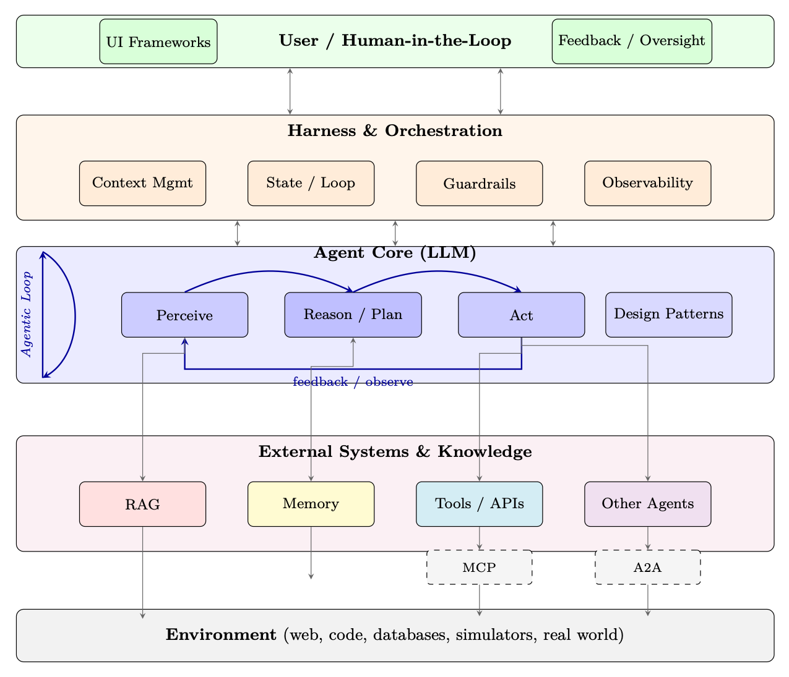
<em>图像来源：原 PDF 第 294 页，尺寸 1275x1095。</em></p>
<p><a id="page-295"></a></p>
<h2 id="295">第 295 页</h2>
<p>第16章</p>
<p>检索增强生成
（RAG）</p>
<p>检索增强生成（RAG）<a class="citation" href="#ref-128">[128]</a>已成为最具实际影响力的技术之一
在生产中部署大型语言模型的技术。而不是仅仅依靠知识
RAG 在训练期间编码在模型权重中，为LLM配备了动态、可更新的外部
记忆——能够在广泛的知识范围内做出准确的、有根据的、可验证的反应——
密集的任务。</p>
<p>16.1
动机和问题陈述</p>
<p>为什么LLM需要外部知识</p>
<p>大型语言模型以参数方式存储知识——在运行期间压缩为数十亿个权重
训练。这造成了三个基本限制：</p>
<ol>
<li>幻觉：模型自信地生成听起来合理但实际上不正确的结果
当查询超出其可靠知识范围时的陈述。</li>
</ol>
<p>2.知识陈旧性：训练数据有截止日期；模型无法了解事件，
训练后发生的论文或产品更新。</p>
<p>3.领域特异性：通用模型缺乏对专有代码库的深入了解，
内部文件、专门法规或企业数据。</p>
<p>16.1.1
参数知识与非参数知识</p>
<p>我们可以形式化这两种知识源之间的区别。设 Mθ 表示一种语言
参数为 θ 的模型，并令 D = {d1, d2, .。。 , dN} 是外部文档语料库。的
在每个范式下生成给定查询 q 的答案的概率为：</p>
<p>Pparametric(a | q) = PMθ(a | q)
(16.1)</p>
<pre><code class="language-math">PRAG(a | q, D) =
X
</code></pre>
<p>d ∈ D
PMθ(a | q, d) Pret(d | q, D)
(16.2)</p>
<p>其中 Pret(d | q, D) 是文档的检索分布。 RAG 边缘化超过检索
证据，为非参数知识的生成奠定基础。</p>
<p>图书馆的类比</p>
<p>将参数LLM想象为一位学者，他记住了一个巨大的图书馆，但毕业了
几年前。 RAG 为该学者提供了一张借书卡——他们可以实时查找资料，引用
来源，并在他们需要检查参考而不是凭记忆猜测时予以确认。</p>
<p><a id="page-296"></a></p>
<h2 id="296">第 296 页</h2>
<p>16.1.2
何时使用 RAG、微调、长上下文</p>
<p>表 16.1：决策指南：RAG、微调、长上下文</p>
<p>标准
RAG
微调
长上下文
碎布+FT</p>
<pre><code class="language-math">Knowledge updates frequently
✓
×
×
✓
Need citations / grounding
✓
×
✓
✓
Proprietary large corpus
✓
×
×
✓
Adapt style / format
×
✓
×
✓
Teach new reasoning skills
×
✓
×
✓
Corpus fits in context window
×
×
✓
×
Low latency required
×
✓
×
×
</code></pre>
<p>常见的误解</p>
<p>RAG 不能替代微调。微调教会模型如何推理和
回应； RAG 提供了推理的内容。它们是互补的。模型经过微调
良好地遵循说明将比基本模型更有效地使用检索到的上下文。</p>
<p>16.2
核心RAG架构</p>
<p>标准 RAG 系统由两个阶段组成：离线索引流水线，用于处理和
存储文档，以及提供查询服务的在线检索生成流水线。</p>
<p>16.2.1
全流水线图</p>
<p>图 16.1：端到端 RAG 架构。离线流水线（蓝色）索引文档一次；在线的
流水线（绿色/橙色）在推理时为每个查询提供服务。</p>
<p>16.2.2
索引流水线</p>
<p>文档加载。
文档以异构格式（PDF、HTML、Markdown、
DOCX，代码）。加载器提取干净的文本并保留元数据（源 URL、页码、部分
标题、时间戳）将与嵌入一起存储以进行过滤和引用。</p>
<p>分块。
长文档必须被分割成适合嵌入模型的块
上下文窗口（通常为 512 个标记）并且语义一致。分块策略是其中之一
RAG 系统设计中影响最大的决策（参见第 16.4 节）。</p>
<p>嵌入。
使用嵌入将每个块 ci 编码为密集向量 ei = fphi(ci) εRd
模型 f。这些矢量与原始文本和元数据一起存储在矢量数据库中。</p>
<h3 id="_64">本页图像资源</h3>
<p>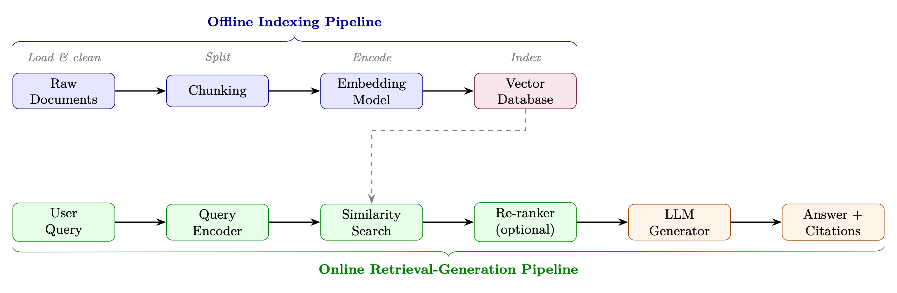
<em>图像来源：原 PDF 第 296 页，尺寸 1791x587。</em></p>
<p><a id="page-297"></a></p>
<h2 id="297">第 297 页</h2>
<p>16.2.3
检索</p>
<p>给定一个查询 q，检索步骤将其编码为 q = fphi(q) 并通过以下方式找到 k 个最相似的块
余弦相似度：</p>
<pre><code class="language-math">sim(q, ei) =
q · ei
∥q∥∥ei∥
(16.3)
</code></pre>
<pre><code class="language-math">The top-k chunks Ck = {c(1), . . . , c(k)} are returned as context.
</code></pre>
<p>16.2.4
一代</p>
<p>检索到的块被注入到提示模板中：</p>
<pre><code class="language-text">SYSTEM_PROMPT = """You are a helpful
assistant. Answer the
question
using
ONLY
the
provided
context. If the
context
does not
contain
enough
information ,
say so explicitly. Cite your
sources
using [Doc N] notation."""
</code></pre>
<pre><code class="language-text">def
build_rag_prompt (query: str , chunks: list[dict ]) -&gt; str:
context_str = "\n\n".join(
</code></pre>
<pre><code class="language-text">f"[Doc {i+1}] (Source: {c[’source ’]}, Page: {c.get(’page ’,’N/A ’)})\n{c[’
text ’]}"
</code></pre>
<pre><code class="language-text">for i, c in enumerate(chunks)
)
return f"""{SYSTEM_PROMPT}
</code></pre>
<pre><code class="language-text">Context:
{context_str}
</code></pre>
<pre><code class="language-text">Question: {query}
</code></pre>
<p>答案：“”</p>
<p>清单 16.1：标准 RAG 提示模板</p>
<p>16.3
检索方法</p>
<p>16.3.1
稀疏检索：BM25 和 TF-IDF</p>
<p>稀疏检索方法将文档和查询表示为高维稀疏向量
词汇。给定带有术语的查询 q 的文档 d 的经典 BM25 评分函数 <a class="citation" href="#ref-273">[273]</a>
t1，.。。 , tn 为:</p>
<p>n
X</p>
<pre><code class="language-math">BM25(d, q) =
</code></pre>
<p>(16.4)</p>
<pre><code class="language-text">i=1
IDF(ti) ·
f(ti, d) · (k1 + 1)
</code></pre>
<p>f(ti, d) + k1 ·

1 −b + b ·
|d|
平均数据量</p>
<p>其中 f(ti, d) 是词频，|d|是文档长度，avgdl 是平均文档长度，并且
k1 ∈[1.2, 2.0], b = 0.75 是调整参数。</p>
<p>当稀疏检索仍然获胜时</p>
<p>• 精确的关键字匹配：产品代码、错误代码、专有名词、罕见术语</p>
<p>• 低资源领域：密集模型的训练数据不足</p>
<p>• 可解释性：易于调试检索文档的原因</p>
<p>• 速度：无需GPU；可扩展到数十亿个带有倒排索引的文档</p>
<p>• 词汇表外的术语：嵌入训练期间未出现的新术语</p>
<p><a id="page-298"></a></p>
<h2 id="298">第 298 页</h2>
<p>16.3.2
密集检索：DPR</p>
<p>密集通道检索（DPR）<a class="citation" href="#ref-274">[274]</a>使用两个独立的基于 BERT 的编码器——一个查询编码器 EQ
和一个段落编码器 EP——通过对比损失进行训练，以将相关的查询-段落对放置在附近
一起在嵌入空间中。</p>
<p>双编码器架构。</p>
<p>sim(q, p) = EQ(q)⊤EP (p)
(16.5)</p>
<p>使用批内阴性进行训练。
给定一批 B 查询-段落对 {(qi, p+
我)}B
我=1，则
对比损失将批次中的所有其他段落视为负数：</p>
<p>乙
X</p>
<p>LDPR = −1</p>
<p>乙</p>
<pre><code class="language-text">PB
j=1 exp(EQ(qi)⊤EP (pj)/τ)
(16.6)
</code></pre>
<p>我=1
日志
经验值

EQ(qi)⊤EP (p+
i )/τ
</p>
<p>其中 τ 是温度超参数。硬否定（词汇相似但
语义上无关）对于训练强大的寻回犬至关重要。</p>
<p>近似最近邻搜索。
大规模地对数百万个嵌入进行详尽的搜索
是不可行的。 FAISS <a class="citation" href="#ref-275">[275]</a>（Facebook AI 相似性搜索）提供高效的近似最近邻
邻居（ANN）搜索使用：</p>
<p>• IVF（倒排文件索引）：将向量聚类到 Voronoi 单元中；仅搜索附近的单元格</p>
<p>• HNSW（分层可导航小世界）<a class="citation" href="#ref-276">[276]</a>：基于图形的索引，O(log N)
搜索</p>
<p>• PQ（乘积量化）：压缩向量以减少内存占用</p>
<p>16.3.3
具有倒数排名融合的混合检索</p>
<p>混合检索结合了稀疏和密集分数。一个简单的线性组合是：</p>
<pre><code class="language-math">shybrid(d, q) = α · sdense(d, q) + (1 −α) · ssparse(d, q)
(16.7)
</code></pre>
<p>然而，不同系统的分数不具有直接可比性。倒数阶融合
(RRF) <a class="citation" href="#ref-277">[277]</a> 通过对排名而不是分数进行操作来避免这种情况：</p>
<pre><code class="language-math">RRF(d) =
X
</code></pre>
<p>1
k + 等级r(d)
(16.8)</p>
<p>r∈R</p>
<p>其中 R 是排名列表的集合（例如 BM25 排名和密集排名），rankr(d) 是
列表 r 中的文档 d，k = 60 是一个平滑常数，可以减少排名非常高的影响
文件。</p>
<p>储备金计算
假设 BM25 将文档 d 排在位置 3，密集检索将其排在位置 7。
k = 60：
RRF(d) =
1
60+3+
1
60 + 7 = 1</p>
<p>63+1</p>
<p>67 ≈0.0159 + 0.0149 = 0.0308</p>
<p>61 ≈0.0328。</p>
<p>在两个列表中排名第一的文档将得分
1
61+1</p>
<p><a id="page-299"></a></p>
<h2 id="299">第 299 页</h2>
<p>16.3.4
学习稀疏检索：SPLADE 和 SPLADEv2</p>
<p>为什么选择斯普拉德？</p>
<p>传统的稀疏检索（BM25）依赖于精确的词法匹配——当查询说时它会失败
“汽车”，但文件上写的是“汽车”。密集检索（DPR）捕获语义但丢失
可解释性，查询时需要 GPU，并生成大型索引。 SPLADE 获得
两全其美：具有学习语义的稀疏向量（快速倒排索引查找，如 BM25）
扩展（处理同义词和相关概念，如密集模型）。</p>
<p>SPLADE (v1) — 核心理念。
SPLADE（稀疏词汇和扩展模型）<a class="citation" href="#ref-278">[278]</a>使用
预训练的掩码语言模型（例如 BERT/DistilBERT）在
每个文档或查询的完整词汇表。关键洞察：传销负责人已经知道哪个
单词在语义上与文本中的每个位置相关 - SPLADE 将这些知识重新利用为
术语重要性权重。</p>
<pre><code class="language-math">Architecture.
Given input text x = [x1, . . . , xn]:
</code></pre>
<ol>
<li>
<p>通过 Transformer Encoder 得到上下文表示 H ∈Rn×|V|通过传销
头</p>
</li>
<li>
<p>跨位置聚合并应用饱和激活：</p>
</li>
</ol>
<p>!!</p>
<p>1+ReLU</p>
<p>(16.9)</p>
<pre><code class="language-math">wt(x) = log
</code></pre>
<p>最大
i∈[1,n] Hi[t]</p>
<p>其中 Hi[t] 是输入位置 i 处词汇标记 t 的 MLM logit。</p>
<p>• log(1 + ·) 饱和度可防止任何单项占主导地位（类似于 TF 饱和度）
在 BM25 中）</p>
<p>• ReLU 确保稀疏性——大多数词汇术语的权重为零</p>
<p>• 跨位置的最大池化从任何位置捕获每个术语的最强信号
在文中</p>
<p>• 扩展：即使原始文本中不存在的标记也可以获得非零权重（例如，
关于“神经网络”的文档可能会在“深度学习”、“人工智能”、“反向传播”中获得权重）</p>
<p>得分。
查询和文档分别映射到稀疏向量 wq, wd ∈R|V|。相关性
分数是一个简单的点积：
s(q, d) =
X</p>
<p>t∈V
瓦克
t·wd
t
(16.10)</p>
<p>由于两个向量都是稀疏的（通常 30K 词汇表中有 20-200 个非零条目），因此
可以使用标准倒排索引（Lucene、Anserini）进行高效计算——无需 GPU
查询时间。</p>
<p>训练。
SPLADE 通过对比学习（批量负例 + 硬负例）进行训练
两个正则化项：</p>
<pre><code class="language-math">L = Lcontrastive + λq∥wq∥1 + λd∥wd∥1
(16.11)
</code></pre>
<p>对查询和文档表示的 L1 惩罚会鼓励稀疏性——没有它们，
模型将学习违背目的的密集表示。</p>
<p><a id="page-300"></a></p>
<h2 id="300">第 300 页</h2>
<p>SPLADEv2 — 关键改进。
SPLADEv2 <a class="citation" href="#ref-279">[279]</a> 引入了一些改进，
显着提高效率和效果：</p>
<ol>
<li>从交叉编码器中蒸馏：不再仅在二进制相关标签上进行训练，
SPLADEv2 使用交叉编码器教师（例如 MonoT5 <a class="citation" href="#ref-280">[280]</a>）来提供软相关性分数。
这提供了更丰富的训练信号：</li>
</ol>
<pre><code class="language-math">Ldistill = KL(σ(sstudent) ∥σ(steacher))
(16.12)
</code></pre>
<ol start="2">
<li>单独的查询/文档编码器：SPLADEv2 使用不同的稀疏目标进行查询
与文件。鼓励查询更加稀疏（更快的查找），而文档可以
稍微密集一些（预先离线计算）：</li>
</ol>
<pre><code class="language-text">λq &gt; λd
(e.g., λq = 3 × 10−4, λd = 1 × 10−4)
(16.13)
</code></pre>
<ol start="3">
<li>FLOPS正则化：SPLADEv2引入了FLOPS-aware，而不是简单的L1
直接惩罚预期检索成本的正则化器：</li>
</ol>
<p></p>
<p>浮点运算次数=
X</p>
<p>广告
t
2
(16.14)</p>
<p>t∈V
（水
t)2+
X</p>
<p>t∈V</p>
<p>其中 at 是批次中术语 t 的平均激活值。这会惩罚以下条款：
对于许多文档来说非零（发布列表长度高=检索慢）。</p>
<p>4.高效主干：使用DistilBERT（66M params）代替BERT-base（110M），减半
编码时间和质量损失最小。</p>
<p>SPLADE 与 SPLADEv2 比较</p>
<p>方面
斯普拉德 (v1)
斯普拉德v2</p>
<p>训练信号
二元相关性+硬否定
交叉编码器蒸馏
稀疏控制
L1 正则化
FLOPS 感知正则化
查询/文档对称性
相同的编码器，相同的 λ
不对称（稀疏查询）
骨干网
BERT-base (110M)
DistilBERT (66M)
MRR@10（马可女士<a class="citation" href="#ref-281">[281]</a>）
34.0
36.8
平均非零项/文档
〜200
∼120（稀疏 40%）</p>
<p>何时使用 SPLADE</p>
<p>• 在以下情况下使用 SPLADE/v2： 您需要在查询时不使用 GPU 进行语义检索，您的
基础设施已经有倒排索引（Elasticsearch、Lucene），或者您需要可解释的
相关性分数（您可以检查哪些扩展术语匹配）。</p>
<p>• 在以下情况下首选密集检索： 您有用于查询编码的 GPU 预算、需要多语言
支持（密集模型传输效果更好），或者您的查询非常短（1-2 个单词，其中
扩展帮助较少）。</p>
<p>• 最佳实践：使用 SPLADEv2 作为第一阶段检索器 + 交叉编码器重排序器
顶部-k。这可以以较低的延迟匹配或击败密集的检索流水线。</p>
<p>16.3.5
ColBERT：后期互动</p>
<p>ColBERT <a class="citation" href="#ref-282">[282]</a> 将查询和文档编码为token级嵌入集并使用 MaxSim
评分运算符：</p>
<pre><code class="language-math">s(q, d) =
X
</code></pre>
<p>i∈|q|
最大
j∈|d| q⊤
我是DJ
(16.15)</p>
<p>这种后期交互机制比单向量双编码器更具表现力，同时距离远
比交叉编码器更快，因为文档嵌入是离线预先计算的。</p>
<p><a id="page-301"></a></p>
<h2 id="301">第 301 页</h2>
<p>建筑学。
查询编码器 EQ 和文档编码器 ED 都是基于 BERT 的模型
产生每个标记的嵌入（不是单个 [CLS] 向量）。每个token嵌入都会被预测
通过线性层到较低维度（通常为 128）：</p>
<pre><code class="language-text">qi = Linear(EQ(q)i) ∈R128,
i = 1, . . . , |q|
(16.16)
</code></pre>
<pre><code class="language-text">dj = Linear(ED(d)j) ∈R128,
j = 1, . . . , |d|
(16.17)
</code></pre>
<p>训练。
ColBERT 使用正负上的成对 softmax 交叉熵损失进行训练
段落。给定查询 q、正段落 d+ 和一组负段落 {d−
1 , .。。 , d−
N}：</p>
<pre><code class="language-text">LColBERT = −log
exp(s(q, d+))
exp(s(q, d+)) + PN
k=1 exp(s(q, d−
k ))
(16.18)
</code></pre>
<p>其中 s(q, d) 是公式 16.15 中的 MaxSim 分数。负数来源于：</p>
<p>• 批次内阴性：同一训练批次中的其他段落（免费、丰富）</p>
<p>• 硬否定：BM25 检索到的词汇相似但语义相似的段落
不相关（对质量影响最大）</p>
<p>• 蒸馏负数（ColBERTv2 <a class="citation" href="#ref-283">[283]</a>）：使用交叉编码器老师来挖掘最难的
负片并将其分数提取到 ColBERT 中</p>
<p>索引和服务。
在索引时，所有文档标记嵌入均已预先计算并
存储（通过 ColBERTv2 中的残差量化进行可选压缩）。在查询时，仅
查询标记是实时编码的，MaxSim 是根据存储的文档嵌入计算的。
这种分离使得：</p>
<p>• 离线文档编码：编码一次，服务多次查询</p>
<p>• PLAID索引<a class="citation" href="#ref-283">[283]</a>：聚类文档嵌入，使用质心作为初始候选
检索，然后仅对候选对象计算精确的 MaxSim——将延迟减少 5-10 倍</p>
<p>• 索引大小：|d| × 每个文档 128 个浮点（大于单向量方法，但可压缩
量化至 ∼2 字节/维度）</p>
<p>16.3.6
检索方法比较</p>
<p>表16.2：跨关键维度的检索方法比较</p>
<p>方法
延迟
准确度
索引大小
图形处理器
最适合</p>
<p>TF-IDF <a class="citation" href="#ref-284">[284]</a>
非常低
低
小号
否
基线、精确匹配
BM25 <a class="citation" href="#ref-273">[273]</a>
非常低
中等
小号
否
关键词搜索、稀有词
DPR / 双编码器 <a class="citation" href="#ref-274">[274]</a>
低
高
大号
是的
语义相似度
斯普拉德 <a class="citation" href="#ref-278">[278]</a>
低
高
中等
是的
混合精度+速度
科尔伯特 <a class="citation" href="#ref-282">[282]</a>
中等
非常高
非常大
是的
高精度检索
交叉编码器<a class="citation" href="#ref-285">[285]</a>
高
最高
不适用
是的
重新排名前 k
混合动力（RRF）<a class="citation" href="#ref-277">[277]</a>
低
非常高
大号
是的
生产系统</p>
<p>16.4
分块策略</p>
<p>分块是将文档分割成多个片段的过程，这些片段 (1) 足够小以适合
嵌入模型的上下文窗口，（2）语义一致，（3）包含足够的上下文
单独检索时很有用。</p>
<p><a id="page-302"></a></p>
<h2 id="302">第 302 页</h2>
<p>16.4.1
具有重叠的固定大小分块</p>
<p>最简单的策略：将每个 W token分割，并在连续块之间重叠 O token。</p>
<pre><code class="language-text">from
langchain.text_splitter
import
RecursiveCharacterTextSplitter
</code></pre>
<pre><code class="language-text">splitter = RecursiveCharacterTextSplitter (
</code></pre>
<pre><code class="language-text">chunk_size =512,
# tokens per chunk
chunk_overlap =64,
# overlap to preserve
context
across
boundaries
length_function =len ,
separators =["\n\n", "\n", ". ", " ", ""]
)
chunks = splitter. split_documents (documents)
</code></pre>
<p>清单 16.2：具有重叠的固定大小分块</p>
<p>重叠公式：对于长度为L个token的文档，块的数量为：</p>
<p>
(16.19)</p>
<p>Nchunks=
L-O</p>
<p>钨-氧</p>
<p>16.4.2
语义分块</p>
<p>语义分块不是按固定间隔进行分割，而是在由以下方法检测到的主题边界处进行分割：
测量连续句子之间的嵌入相似度：</p>
<pre><code class="language-text">from
langchain_experimental .text_splitter
import
SemanticChunker
from
langchain_openai
import
OpenAIEmbeddings
</code></pre>
<pre><code class="language-text">chunker = SemanticChunker (
</code></pre>
<pre><code class="language-text">embeddings= OpenAIEmbeddings (),
breakpoint_threshold_type ="percentile",
# or " standard_deviation "
breakpoint_threshold_amount =95,
# split at top 5% dissimilarity
)
chunks = chunker. split_documents (documents)
</code></pre>
<p>清单 16.3：通过嵌入相似性进行语义分块</p>
<p>16.4.3
文档结构感知分块</p>
<p>对于结构化文档（Markdown、HTML、代码），在自然边界处分割：</p>
<p>• Markdown：在##标题处分割，保留部分上下文</p>
<p>• HTML：在 <section>、<article>、<p> 标记处拆分</p>
<p>• 代码：在函数/类定义处分割，保留每个块中的导入</p>
<p>• 表：将整个表保留为单个块；永远不要在行中间分开</p>
<p>16.4.4
亲子分块</p>
<p>一种强大的模式，可将检索粒度与生成上下文分离：</p>
<ol>
<li>
<p>索引小子块（例如 128 个标记）以进行精确检索</p>
</li>
<li>
<p>将大型父块（例如 512 个token）返回给 LLM 以获得更丰富的上下文</p>
</li>
</ol>
<pre><code class="language-text">from
langchain.retrievers
import
ParentDocumentRetriever
from
langchain.storage
import
InMemoryStore
from
langchain.text_splitter
import
RecursiveCharacterTextSplitter
</code></pre>
<p><a id="page-303"></a></p>
<h2 id="303">第 303 页</h2>
<pre><code class="language-text">parent_splitter = RecursiveCharacterTextSplitter (chunk_size =2000)
child_splitter
= RecursiveCharacterTextSplitter (chunk_size =400)
</code></pre>
<pre><code class="language-text">retriever = ParentDocumentRetriever (
</code></pre>
<pre><code class="language-text">vectorstore=vectorstore ,
docstore=InMemoryStore (),
child_splitter =child_splitter ,
parent_splitter =parent_splitter ,
)
retriever. add_documents(documents)
</code></pre>
<p>清单 16.4：使用 LangChain 进行父子分块</p>
<p>16.4.5
块大小的经验指南</p>
<p>表 16.3：按用例划分的块大小建议</p>
<p>使用案例
推荐块大小
重叠</p>
<p>Factoid QA（精确事实）
128–256 个token
20–32 个token
总结/综合
512–1024 个token
64–128 个token
代码检索
功能齐全
无
法律/规范性文件
段落级
1 句话
对话/聊天
256–512 个token
32–64 个token</p>
<p>16.5
高级 RAG 模式</p>
<p>16.5.1
查询转换</p>
<p>原始用户查询通常不明确、太短或与文档语言不匹配。查询
转换技术改进了搜索步骤之前的检索。</p>
<p>HyDE（假设文档嵌入）<a class="citation" href="#ref-286">[286]</a>。
不是直接嵌入查询，
生成一个假设答案并嵌入：</p>
<pre><code class="language-text">ˆd = LLM(q),
equery = fϕ( ˆd)
(16.20)
</code></pre>
<p>直觉：假设的答案与真实文档具有相同的语言语域，从而减少了
查询-文档分布差距。</p>
<p>后退提示。
对于具体问题，首先生成一个更一般的“后退”问题，
检索两者，并结合上下文。示例：“2 时乙醇的沸点是多少？
自动提款机？” →退一步：“哪些因素影响液体的沸点？”</p>
<p>多查询生成。
生成 M 种不同的查询重构，对每个重构进行检索，
并将结果合并：</p>
<pre><code class="language-text">from
langchain.retrievers.multi_query
import
MultiQueryRetriever
from
langchain_openai
import
ChatOpenAI
</code></pre>
<pre><code class="language-text">retriever = MultiQueryRetriever .from_llm(
</code></pre>
<pre><code class="language-text">retriever=vectorstore.as_retriever( search_kwargs ={"k": 5}),
llm=ChatOpenAI(temperature =0.7) ,
include_original =True ,
# also
retrieve
for
original
query
)
# Internally
generates 3 query
variants , retrieves
for each , deduplicates
docs = retriever. get_relevant_documents (query)
</code></pre>
<p>清单 16.5：多查询检索</p>
<p><a id="page-304"></a></p>
<h2 id="304">第 304 页</h2>
<p>16.5.2
重新排名</p>
<p>在初始检索前 k 个候选者之后，交叉编码器重新排序器对每个查询-文档对进行评分
联合（同时关注两者），在
较高延迟的成本：</p>
<p>scross(q, d) = CrossEncoder([q; d])
(16.21)</p>
<p>交叉编码器不能用于第一阶段检索（没有预先计算的文档嵌入），
但非常适合对小型候选集进行重新排序（通常 k = 20–100）。</p>
<pre><code class="language-text">from
sentence_transformers
import
CrossEncoder
</code></pre>
<pre><code class="language-text">reranker = CrossEncoder("BAAI/bge -reranker -large")
</code></pre>
<pre><code class="language-text">def rerank(query: str , docs: list[str], top_n: int = 5) -&gt; list[str]:
</code></pre>
<pre><code class="language-text">pairs = [(query , doc) for doc in docs]
scores = reranker.predict(pairs)
ranked = sorted(zip(scores , docs), reverse=True)
return [doc for _, doc in ranked [: top_n ]]
</code></pre>
<p>清单 16.6：使用 BGE 进行交叉编码器重新排序</p>
<p>16.5.3
上下文压缩</p>
<p>检索到的块通常包含围绕相关段落的不相关句子。语境化
压缩使用 LLM 仅提取相关部分：</p>
<pre><code class="language-text">from
langchain.retrievers
import
ContextualCompressionRetriever
from
langchain.retrievers. document_compressors
import
LLMChainExtractor
</code></pre>
<pre><code class="language-text">compressor = LLMChainExtractor .from_llm(llm)
compression_retriever = ContextualCompressionRetriever (
</code></pre>
<pre><code class="language-text">base_compressor =compressor ,
base_retriever =vectorstore.as_retriever ()
)
compressed_docs = compression_retriever . get_relevant_documents (query)
</code></pre>
<p>清单 16.7：基于 LLM 的上下文压缩</p>
<p>16.5.4
自我RAG</p>
<p>Self-RAG <a class="citation" href="#ref-287">[287]</a> 训练单个模型来 (1) 决定是否检索，(2) 有或没有生成
检索，以及 (3) 使用特殊的反射标记批评其自己的输出：</p>
<p>• [检索]：模型是否应该检索其他段落？</p>
<p>• [IsRel]：检索到的段落与查询相关吗？</p>
<p>• [IsSup]：生成的语句是否来自检索到的段落？</p>
<p>• [IsUse]：总体响应有用吗？</p>
<p>该模型经过端到端训练，可以预测这些标记以及响应，从而实现精细
对检索和自我评分的精细控制。</p>
<p>16.5.5
CRAG：修正 RAG</p>
<p>CRAG <a class="citation" href="#ref-288">[288]</a> 添加了一个检索评估器，可以对检索到的文档进行评分并触发纠正
行动：</p>
<p><a id="page-305"></a></p>
<h2 id="305">第 305 页</h2>
<ol>
<li>
<p>检索top-k文档</p>
</li>
<li>
<p>对每个文档进行评分：正确/模糊/不正确</p>
</li>
<li>
<p>如果所有文件都不正确或不明确→退回到网络搜索</p>
</li>
</ol>
<p>4.如果某些文档是正确的→使用知识精炼（去掉不相关的句子）</p>
<ol start="5">
<li>从精炼的上下文中生成答案</li>
</ol>
<p>16.5.6
自适应RAG</p>
<p>自适应 RAG <a class="citation" href="#ref-289">[289]</a> 根据预测的复杂性将查询路由到不同的检索策略：</p>
<p>• 无检索：模型可以通过参数回答简单的事实查询</p>
<p>• 单步 RAG：针对中等查询的标准检索然后生成</p>
<p>• 多步RAG：复杂多跳问题的迭代检索</p>
<p>根据查询复杂性标签训练的轻量级分类器路由每个传入查询。</p>
<p>16.5.7
图RAG</p>
<p>微软的 Graph RAG <a class="citation" href="#ref-290">[290]</a> 从文档语料库构建知识图并使用
社区检测以生成分层摘要：</p>
<p>1.实体提取：LLM从每个chunk中提取实体和关系</p>
<p>2.图构建：构建一个图G=(V,E)，其中节点是实体，边是
关系</p>
<p>3.社区检测：应用Leiden算法在多种分辨率下查找社区</p>
<p>4.社区摘要：LLM为每个社区生成一个摘要</p>
<p>5.查询：对于全局查询，对社区摘要进行map-reduce；对于本地查询，使用
标准向量搜索</p>
<p>何时使用图 RAG</p>
<p>Graph RAG 擅长需要跨多个文档综合信息的全局查询
（“这个语料库的主要主题是什么？”）但构建和维护成本高昂。标准型
RAG 更适合本地查询（“文档 X 关于主题 Y 说了些什么？”）。</p>
<p>16.5.8
RAG-融合</p>
<p>RAG-Fusion <a class="citation" href="#ref-291">[291]</a> 从原始内容生成多个搜索查询，对每个查询进行检索并融合
使用 RRF 的排名列表（公式 16.8）：</p>
<pre><code class="language-text">def
reciprocal_rank_fusion (ranked_lists : list[list[str]], k: int = 60) -&gt; list[str
]:
</code></pre>
<pre><code class="language-text">"""Fuse
multiple
ranked
document
lists
using RRF."""
scores: dict[str , float] = {}
for ranked in ranked_lists:
</code></pre>
<pre><code class="language-text">for rank , doc_id in enumerate(ranked , start =1):
</code></pre>
<pre><code class="language-text">scores[doc_id] = scores.get(doc_id , 0.0) + 1.0 / (k + rank)
return
sorted(scores , key=scores.get , reverse=True)
</code></pre>
<pre><code class="language-text">def
rag_fusion(query: str , retriever , llm , n_queries: int = 4) -&gt; str:
# Step 1: Generate
query
variants
variants = generate_query_variants (query , llm , n=n_queries)
</code></pre>
<p><a id="page-306"></a></p>
<h2 id="306">第 306 页</h2>
<pre><code class="language-text"># Step 2: Retrieve
for each
variant
all_ranked = [retriever.retrieve(q) for q in [query] + variants]
# Step 3: Fuse with RRF
fused_docs = reciprocal_rank_fusion (all_ranked)
# Step 4: Generate
answer
return
generate_answer (query , fused_docs [:5] , llm)
</code></pre>
<p>清单 16.8：带有 RRF 的 RAG-Fusion</p>
<p>16.6
高效的 RAG 解码：REFRAG</p>
<p>RAG 的一个实际瓶颈是解码延迟：检索到的段落连接到
LLM 上下文通常很长但相关性稀疏，导致首次token时间 (TTFT) 和 KV 缓存膨胀
记忆。 REFRAG <a class="citation" href="#ref-292">[292]</a> 观察到，因为检索到的段落是独立来源的（通过
重新排序期间的多样性或重复数据删除），他们的注意力力模式是块对角的——大多数
跨通道注意力力接近于零。这种稀疏性意味着大部分计算
解码期间的 RAG 上下文是不必要的。</p>
<p>压缩-感知-扩展框架。
REFRAG 通过三相利用该结构
解码策略：</p>
<ol>
<li>
<p>压缩：用紧凑的摘要替换检索到的段落的完整 KV 表示
（例如，每个通道块的平均池键/值），大大减少内存。</p>
</li>
<li>
<p>Sense：在每个解码步骤中，对压缩表示使用轻量级注意力力
识别哪些段落块与当前token相关。</p>
</li>
<li>
<p>Expand：仅针对选定的块重建完整的KV条目，执行精确注意力
在稀疏活动集上。</p>
</li>
</ol>
<p>结果。
在基于 LLaMA 的模型上，REFRAG 实现了高达 30.85× TTFT 加速（3.75×
相对于之前的稀疏注意力力基线的改进），并且困惑度没有损失。还可以有效延长
在固定内存预算下上下文长度增加 16 倍。这些收益在 RAG、多匝
对话和长文档摘要任务。</p>
<p>为什么 REFRAG 对于 Agentic RAG 很重要</p>
<p>Agentic RAG（第 16.7 节）需要每个查询进行多次检索，从而加剧了延迟。
像 REFRAG 这样的高效解码方法是必不可少的基础设施：它们使迭代检索成为可能
通过确保每轮的解码成本是次线性的，推理生成循环在规模上是实用的
上下文长度。</p>
<p>16.7
智能体RAG</p>
<p>16.7.1
动机：静态 RAG 的局限性</p>
<p>标准 RAG 遵循固定的检索然后生成模式。这在以下情况下失败：</p>
<p>• 多跳问题：“谁创办了收购 OpenAI 主要竞争对手的公司
2023 年？”需要链接多个检索</p>
<p>• 模糊查询：正确的检索策略取决于找到的内容</p>
<p>• 异构来源：不同的子问题需要不同的知识库</p>
<p>• 迭代细化：初始检索可能表明需要不同的查询</p>
<p><a id="page-307"></a></p>
<h2 id="307">第 307 页</h2>
<p>RAG 作为马尔可夫决策过程
智能体 RAG 帧检索是一个顺序决策问题。状态是当前上下文
（查询+到目前为止检索到的文档）；动作包括检索、推理、生成和停止；的
奖励是答案的正确性。智能体学习何时检索以及检索什么内容的策略。</p>
<p>16.7.2
智能体RAG架构</p>
<p>图 16.2：智能体 RAG 控制流程。智能体迭代地计划、检索、评估充分性，并
在返回答案之前自检查接地。</p>
<p>16.7.3
多源路由</p>
<p>智能体 RAG 系统可以将子查询路由到专门的知识源。核心见解是
不同的问题类型需要不同的检索后端——没有一个索引在所有方面都表现出色。</p>
<p>为什么选择路线？
考虑一位金融分析师的助理处理四个查询：</p>
<p>• “我们公司的 PTO 政策是什么？” →矢量DB（内部文件）</p>
<p>• “美联储昨天宣布了什么？” →网络搜索（实时）</p>
<p>•“按地区显示第三季度收入”→SQL 数据库（结构化数据）</p>
<p>• “我们的身份验证中间件如何验证token？” →代码索引（代码库）</p>
<p>一种扁平的从一个索引检索的方法要么会错过答案，要么会返回不相关的段落。
在检索开始之前，路由会为正确的子问题选择正确的工具。</p>
<p>路由策略。
提高复杂性的三种主要方法：</p>
<p>1.基于规则的路由。关键字触发器（例如，SQL 关键字 → 数据库、URL 模式 →
网）。快速且可解释，但对于不明确的查询来说很脆弱。</p>
<h3 id="_65">本页图像资源</h3>
<p>
<em>图像来源：原 PDF 第 307 页，尺寸 959x682。</em></p>
<p><a id="page-308"></a></p>
<h2 id="308">第 308 页</h2>
<p>2.基于分类器的路由。轻量级模型（例如，经过微调的 BERT 分类器或logits模型）
对查询嵌入的回归）预测最佳来源。低延迟（&lt;10 ms）且可训练
在路由日志上，但需要标记数据。</p>
<p>3.基于LLM的路由。 LLM 本身决定结构化输出调用中的来源（请参阅
列表如下）。最灵活——处理新颖的查询类型并可以解释其推理——但是
添加一个 LLM 延迟调用。</p>
<p>路由器作为学习策略</p>
<p>多源路由最简单的是一个分类问题，本质上是一个规划问题
最富有的。当被视为 RL 策略时——其中状态是查询加上对话历史记录，
操作是源的选择（以及可选的查询重写），奖励是下游答案
质量——可以通过策略梯度技术对路由器进行端到端优化（第 8 章）。</p>
<p>实际考虑。</p>
<p>• 后备链：如果主要来源返回低置信度结果，请尝试次佳来源。</p>
<p>• 并行扇出：对于不明确的查询，同时从多个源检索并
通过倒数秩融合融合结果（表 16.2）。</p>
<p>• 成本意识：网络搜索和API 调用可能有货币成本或速率限制；路由器
应该考虑这些因素。</p>
<p>• 可观察性：记录每个路由决策及其推理——对于调试和分析至关重要
再训练。</p>
<pre><code class="language-text">from enum
import
Enum
from
pydantic
import
BaseModel
</code></pre>
<pre><code class="language-text">class
KnowledgeSource (str , Enum):
VECTOR_DB
= "vector_db"
# internal
documents
WEB_SEARCH
= "web_search"
# real -time web
SQL_DB
= "sql_db"
# structured
data
CODE_INDEX
= "code_index"
# codebase
API
= "api"
# external
APIs
</code></pre>
<pre><code class="language-text">class
RouteDecision(BaseModel):
source: KnowledgeSource
refined_query: str
reasoning: str
</code></pre>
<pre><code class="language-text">def
route_query(query: str , llm) -&gt; RouteDecision :
"""Use LLM to decide
which
knowledge
source to query."""
prompt = f"""Given the query: "{query}"
</code></pre>
<pre><code class="language-text">Decide
which
knowledge
source to use:
- vector_db: for
internal
documents , policies , past
reports
- web_search: for
current
events , recent
information
- sql_db: for
numerical data , statistics , structured
records
- code_index: for code examples , API
documentation
- api: for real -time data (weather , stock prices , etc.)
</code></pre>
<pre><code class="language-text">Return a JSON with: source , refined_query , reasoning."""
</code></pre>
<pre><code class="language-text">return llm. with_structured_output ( RouteDecision ).invoke(prompt)
</code></pre>
<p>清单 16.9：多源智能体 RAG 路由器</p>
<p><a id="page-309"></a></p>
<h2 id="309">第 309 页</h2>
<p>16.7.4
完整的智能体 RAG 实施</p>
<p>前面的部分介绍了各个组件——路由、检索、评估。一个完整的
智能体 RAG 系统将它们编排为有状态节点图，其中控制流取决于
中间结果。下面的实现使用 LangGraph 将四个节点连接到一个循环中：</p>
<ol>
<li>
<p>计划：将用户查询分解为子查询（每个信息需求一个子查询）。</p>
</li>
<li>
<p>检索：将每个子查询路由到适当的源并获取文档。</p>
</li>
<li>
<p>评估：判断积累的上下文是否足以回答原始查询。</p>
</li>
<li>
<p>生成：使用检索到的文档中的引文合成最终答案。</p>
</li>
</ol>
<p>关键的设计模式是条件循环：评估后，智能体要么继续
生成（如果上下文足够或迭代预算已用尽）或循环回检索
带有精致的子查询。这反映了 RL 智能体的感知-行动-评估循环
信息收集行动。</p>
<pre><code class="language-text">from
typing
import
TypedDict , Annotated
from
langgraph.graph
import
StateGraph , END
from
langgraph.prebuilt
import
ToolNode
import
operator
</code></pre>
<pre><code class="language-text">class
AgentState(TypedDict):
query: str
sub_queries: list[str]
retrieved_docs : Annotated[list[dict], operator.add]
context_sufficient : bool
answer: str
iterations: int
max_iterations : int
</code></pre>
<pre><code class="language-text">def
plan_node(state: AgentState) -&gt; AgentState:
"""Decompose
query
into sub -queries."""
sub_queries = decompose_query (state["query"])
return {** state , "sub_queries": sub_queries , "iterations": 0}
</code></pre>
<pre><code class="language-text">def
retrieve_node(state: AgentState) -&gt; AgentState:
"""Retrieve
documents
for
current sub -queries."""
new_docs = []
for sq in state["sub_queries"]:
</code></pre>
<pre><code class="language-text">source = route_query(sq)
docs = retrieve_from_source (sq , source)
new_docs.extend(docs)
return {** state , "retrieved_docs ": new_docs ,
</code></pre>
<pre><code class="language-text">"iterations": state["iterations"] + 1}
</code></pre>
<pre><code class="language-text">def
evaluate_node(state: AgentState) -&gt; AgentState:
"""Evaluate
whether
retrieved
context is sufficient."""
sufficient = evaluate_context_sufficiency (
</code></pre>
<pre><code class="language-text">query=state["query"],
docs=state["retrieved_docs "]
)
return {** state , " context_sufficient ": sufficient}
</code></pre>
<pre><code class="language-text">def
generate_node(state: AgentState) -&gt; AgentState:
"""Generate
answer
from
retrieved
context."""
answer = generate_with_citations (
</code></pre>
<pre><code class="language-text">query=state["query"],
docs=state["retrieved_docs "]
)
return {** state , "answer": answer}
</code></pre>
<pre><code class="language-text">def
should_retrieve (state: AgentState) -&gt; str:
</code></pre>
<p><a id="page-310"></a></p>
<h2 id="310">第 310 页</h2>
<pre><code class="language-text">if state[" context_sufficient "]:
</code></pre>
<pre><code class="language-text">return "generate"
if state["iterations"] &gt;= state[" max_iterations "]:
</code></pre>
<pre><code class="language-text">return "generate"
# give up and
generate
with what we have
return "retrieve"
</code></pre>
<pre><code class="language-text"># Build the graph
workflow = StateGraph(AgentState)
workflow.add_node("plan",
plan_node)
workflow.add_node("retrieve", retrieve_node )
workflow.add_node("evaluate", evaluate_node )
workflow.add_node("generate", generate_node )
</code></pre>
<pre><code class="language-text">workflow. set_entry_point ("plan")
workflow.add_edge("plan",
"retrieve")
workflow.add_edge("retrieve", "evaluate")
workflow. add_conditional_edges ("evaluate", should_retrieve ,
</code></pre>
<pre><code class="language-text">{"retrieve": "retrieve", "generate": "generate"})
workflow.add_edge("generate", END)
</code></pre>
<pre><code class="language-text">agent = workflow.compile ()
</code></pre>
<pre><code class="language-text"># Run
result = agent.invoke ({
</code></pre>
<pre><code class="language-text">"query": "What were the main
causes of the 2023
banking
crisis?",
" max_iterations": 3,
" retrieved_docs": [],
"iterations": 0,
})
</code></pre>
<p>清单 16.10：基于 LangGraph 的智能体 RAG</p>
<p>16.7.5
工具增强 RAG</p>
<p>Agentic RAG 可以将检索与计算工具结合起来：</p>
<pre><code class="language-text">from
langchain.agents
import
create_tool_calling_agent , AgentExecutor
from
langchain.tools
import
tool
</code></pre>
<pre><code class="language-text">@tool
def
search_documents (query: str) -&gt; str:
"""Search
internal
document
knowledge
base."""
docs = vectorstore. similarity_search (query , k=5)
return "\n\n".join(d.page_content
for d in docs)
</code></pre>
<pre><code class="language-text">@tool
def
query_database (sql: str) -&gt; str:
"""Execute
SQL query on the
analytics
database."""
return db.run(sql)
</code></pre>
<pre><code class="language-text">@tool
def
web_search(query: str) -&gt; str:
"""Search the web for
current
information."""
return
tavily_client.search(query)
</code></pre>
<pre><code class="language-text">@tool
def
execute_python (code: str) -&gt; str:
"""Execute
Python
code for
calculations."""
return
python_repl.run(code)
</code></pre>
<pre><code class="language-text">tools = [search_documents , query_database , web_search , execute_python ]
agent = create_tool_calling_agent (llm , tools , prompt)
executor = AgentExecutor(agent=agent , tools=tools , verbose=True)
</code></pre>
<p>清单 16.11：带有 SQL 和检索的工具增强 RAG</p>
<p><a id="page-311"></a></p>
<h2 id="311">第 311 页</h2>
<p>16.7.6
Search-R1：经过 RL 训练的智能体 RAG</p>
<p>上述智能体 RAG 方法依赖于即时设计的编排——智能体的搜索
行为是由指令控制的，而不是通过训练习得的。 Search-R1 <a class="citation" href="#ref-293">[293]</a> 需要一个
根本不同的方法：它通过强化学习来训练LLM学习何时、什么、
以及作为推理过程的一部分进行搜索多少次。</p>
<p>核心理念。
Search-R1 通过处理搜索引擎扩展了 DeepSeek-R1 [15] 推理框架
查询作为 RL 训练循环中的动作。在思想链生成过程中，该模型可以
发出特殊标记<search>query</search>，触发搜索引擎的实时检索。
检索到的结果被注入回推理上下文中，模型继续生成。</p>
<p>正式设置。
该模型生成与搜索操作交错的推理轨迹：</p>
<pre><code class="language-math">→think2 →&lt;search&gt;q2&lt;/search&gt; →· · · →answer
</code></pre>
<p>思考1
| {z}
推理
→&lt;搜索&gt;q1&lt;/搜索&gt;
|
{z
}
行动
→[结果1]
|
{z
}
观察</p>
<p>整个轨迹（推理+搜索+最终答案）由最终奖励评分：正确性
针对真实标签的最终答案。</p>
<p>训练算法。
Search-R1 使用 GRPO（组相对策略优化）：</p>
<ol>
<li>
<p>每个问题采样 N 个轨迹，每个轨迹可能包含 0-5 个搜索调用</p>
</li>
<li>
<p>实时执行搜索——环境返回实际的搜索引擎结果</p>
</li>
<li>
<p>对最终答案的正确性进行评分（完全匹配或 F1 与真实值）</p>
</li>
<li>
<p>计算群体相对优势：^Ai = (Ri −μG)/σG</p>
</li>
<li>
<p>使用 GRPO 剪辑目标更新策略——强化有效搜索的轨迹</p>
</li>
</ol>
<p>该模型学习：</p>
<p>• 不确定时进行搜索——避免不必要地搜索已有的知识</p>
<p>• 制定有效的查询——学习返回相关结果的查询措辞</p>
<p>• 多次搜索——根据初始结果迭代优化查询</p>
<p>• 整合检索到的上下文——使用搜索结果来支持或纠正其推理</p>
<p>表 16.4：Search-R1（经过 RL 训练）与基于提示的 Agentic RAG。</p>
<p>尺寸
基于提示的
智能体
RAG
搜索-R1</p>
<p>搜寻决定
提示/启发式
通过强化学习学习
查询表述
提示（“重写查询”）
端到端训练</p>
<h1 id="_66">搜索</h1>
<p>固定或LLM决定在推理
恩斯
学习到的最佳计数</p>
<p>训练信号
无（冷冻模型）
正确性奖励
搜索整合
附加到上下文
CoT 交错
故障恢复
重试启发法
学习退避/重构
推理开销
框架开销（Lang-
图）
本机模型行为</p>
<p>Search-R1 与基于提示的智能体 RAG 有何不同。</p>
<p><a id="page-312"></a></p>
<h2 id="312">第 312 页</h2>
<p>结果。
在开放域 QA 基准测试测试上（NQ <a class="citation" href="#ref-294">[294]</a>、TriviaQA <a class="citation" href="#ref-295">[295]</a>、HotpotQA <a class="citation" href="#ref-296">[296]</a>）、Search-R1
7B 型号的性能优于：</p>
<p>• 标准 RAG（单次检索），准确度为 15–20%</p>
<p>• 提示智能体 RAG（ReAct 式）准确度提高 8-12%</p>
<p>• 接近具有标准 RAG 的更大型号 (70B) 的性能</p>
<p>关键见解：学习何时以及如何搜索比拥有更大的搜索更有价值
知道更多的模型。搜索良好的小模型胜过不搜索的大模型。</p>
<p>Search-R1：范式转变</p>
<p>传统 RAG 会问：“给出这个查询，我应该检索什么？” （做出的流水线决定
一代之前）。
Search-R1 询问：“根据我到目前为止的推理，我是否需要更多信息？如果需要，具体是什么？
问题会填补这个空白吗？” （在一代人中做出的学习决定）。
这就是考试前查课本的学生与考试前查课本的学生之间的区别
当他们意识到自己陷入困境时，他们会在遇到问题时查阅参考资料。后者更
高效、更有针对性。</p>
<p>16.8
评价</p>
<p>评估 RAG 系统比评估孤立的检索或生成更困难，因为
错误可能源自流水线的任何阶段，而且它们会复合。完美的发电机不能
补偿不相关的检索，如果生成器产生幻觉或出现幻觉，那么完美的检索器就会被浪费。
忽略上下文。
因此，有效的 RAG 评估在三个层面上进行：</p>
<ol>
<li>
<p>检索质量：检索器是否找到了正确的通道？ （召回率、精度、MRR、
NDCG）</p>
</li>
<li>
<p>生成质量：答案是否正确、忠实于检索到的上下文并且完整？
（正确性、忠实性、答案相关性）</p>
</li>
<li>
<p>端到端质量：整个系统是否令用户满意？ （人类偏好，任务成功
速率、延迟调整效用）</p>
</li>
</ol>
<p>一种常见的失败模式是仅优化一个级别，例如，最大化 Recall@K
大 K 用边缘相关的段落填充上下文，这实际上降低了生成质量。
以下指标涵盖检索和生成，使从业者能够诊断哪个阶段
是瓶颈。</p>
<p>16.8.1
检索指标</p>
<p>令 Rk 为排名为 k 的检索文档集，R* 为相关文档集。</p>
<p>回想@K.</p>
<p>回忆@K = |RK ∩R*|</p>
<p>|R*|
(16.22)</p>
<p>精度@K.</p>
<p>精度@K = |RK ∩R*|</p>
<p>K
(16.23)</p>
<p><a id="page-313"></a></p>
<h2 id="313">第 313 页</h2>
<p>平均倒数排名 (MRR)。</p>
<p>|问|
X</p>
<pre><code class="language-math">MRR =
1
|Q|
</code></pre>
<p>1
兰基
(16.24)</p>
<pre><code class="language-math">i=1
</code></pre>
<p>其中ranki是查询i的第一个相关文档的排名。</p>
<p>标准化贴现累积增益 (NDCG@K)。</p>
<p>K
X</p>
<p>NDCG@K = DCG@K</p>
<p>IDCG@K ,
DCG@K =</p>
<p>热力
log2(i + 1)
(16.25)</p>
<pre><code class="language-math">i=1
</code></pre>
<p>其中 reli ∈{0, 1, 2, .。 .} 是第 i 个结果的分级相关性，IDCG 是理想的（完美）
直流电图。</p>
<p>16.8.2
一代指标</p>
<p>忠诚。
衡量生成的答案是否基于检索到的上下文，即
答案中的每个主张都可以归因于检索到的文档。由LLM法官评估：</p>
<p>忠诚度 = # 得到上下文支持的主张</p>
<h1 id="_67">答复中的索赔总数</h1>
<p>(16.26)</p>
<p>回答相关性。
衡量答案是否解决了问题。通过生成计算
从答案中提取问题并测量与原始查询的相似度：</p>
<p>氮
X</p>
<p>答案相关性 = 1</p>
<p>氮</p>
<pre><code class="language-text">i=1
cos(E(q), E(ˆqi))
(16.27)
</code></pre>
<p>其中 ˆqi 是根据答案生成的问题。</p>
<p>上下文精确度和召回率。</p>
<p>K
X</p>
<p>上下文精度@K = 1</p>
<p>K</p>
<p>k=1
Precision@k · 1[码头相关]
(16.28)</p>
<p>ContextRecall = # 归因于上下文的真实声明</p>
<h1 id="_68">真实声明总数</h1>
<p>(16.29)</p>
<p>16.8.3
RAGA 框架</p>
<p>RAGA（检索增强生成评估）<a class="citation" href="#ref-297">[297]</a> 提供无参考评估
使用LLM法官的框架：</p>
<pre><code class="language-text">from
ragas
import
evaluate
from
ragas.metrics
import (
faithfulness ,
answer_relevancy ,
context_precision ,
context_recall ,
answer_correctness ,
)
from
datasets
import
Dataset
</code></pre>
<pre><code class="language-text">eval_dataset = Dataset.from_dict ({
</code></pre>
<pre><code class="language-text">"question":
questions ,
"answer":
generated_answers ,
"contexts":
retrieved_contexts ,
# list of lists
"ground_truth": reference_answers ,
</code></pre>
<p><a id="page-314"></a></p>
<h2 id="314">第 314 页</h2>
<p>})</p>
<pre><code class="language-text">results = evaluate(
</code></pre>
<pre><code class="language-text">dataset=eval_dataset ,
metrics =[
</code></pre>
<pre><code class="language-text">faithfulness ,
answer_relevancy ,
context_precision ,
context_recall ,
answer_correctness ,
],
)
print(results.to_pandas ())
</code></pre>
<p>清单 16.12：RAGA 评估（v0.1 API；v0.2+ 使用 user_input、response、retrieved_contexts、
参考）</p>
<p>16.8.4
常见故障模式</p>
<p>要监控的 RAG 故障模式</p>
<p>1.检索未命中：语料库中存在相关文档，但未检索到。原因：
分块效果不佳、嵌入模型不匹配、查询文档词汇量差距。</p>
<ol start="2">
<li>上下文中毒：检索到的文档包含误导性或矛盾的信息
这会导致模型生成错误的答案。</li>
</ol>
<p>3.迷失在中间：LLM更注重长上下文的开头和结尾；
中间的相关信息可以被忽略<a class="citation" href="#ref-298">[298]</a>。</p>
<ol start="4">
<li>
<p>过度检索：太多检索的块会稀释相关信号并增加延迟
和成本。</p>
</li>
<li>
<p>尽管检索仍出现幻觉：模型忽略检索到的上下文并从
参数记忆，尤其是当上下文与训练数据相矛盾时。</p>
</li>
<li>
<p>引文伪造：模型将声明归因于不支持它们的文档。</p>
</li>
</ol>
<p>16.9
生产注意力事项</p>
<p>16.9.1
嵌入模型选择</p>
<p>嵌入模型是 RAG 系统中最有影响力的组件选择 — 它决定了
检索的质量上限。该领域发展迅速；表 16.5 总结了当前
涵盖成本质量范围的选择。</p>
<p>表 16.5：生产 RAG 的嵌入模型（截至 2026 年）。 MTEB 分数是总体平均数
检索、分类、聚类和 STS 任务。</p>
<p>型号
尺寸
最大token数
平均 MTEB
访问
注释</p>
<p>基于 API（托管）
航程航程-4-大号
1024*
32K
—
应用程序编程接口
最佳检索质量
OpenAI 文本嵌入-3-large
3072
8191
64.6
应用程序编程接口
俄罗斯套娃变暗
Cohere 嵌入-english-v3.0
1024
第512章
64.5
应用程序编程接口
int8/二进制支持
谷歌文本嵌入-005
第768章
2048
—
应用程序编程接口
顶点人工智能集成
开放重量（自托管）
Nvidia/NV-Embed-v2 <a class="citation" href="#ref-299">[299]</a>
4096
32K
72.3
免费</p>
<h1 id="1-mteb2024-9">1 MTEB（2024 年 9 月）</h1>
<p>阿里巴巴-NLP/gte-Qwen2-7B <a class="citation" href="#ref-300">[300]</a>
3584
32K
70.2
免费
Apache-2.0，多语言
BAAI/bge-m3 <a class="citation" href="#ref-301">[301]</a>
1024
8192
65.0
免费
密集+稀疏+多向量
jinaai/jina-embeddings-v3
1024
8192
66.0
免费
多语言、LoRA 适配器
BAAI/bge-large-en-v1.5 <a class="citation" href="#ref-302">[302]</a>
1024
第512章
64.2
免费
成熟，有良好的支持</p>
<p><a id="page-315"></a></p>
<h2 id="315">第 315 页</h2>
<p>选择标准。</p>
<p>• 领域匹配：专用模型（例如， voyage-code-3 表示代码，voyage-finance-2 表示
金融）在领域任务上的表现比一般模型高出 5-15%。</p>
<p>• 上下文长度：具有 32K token上下文的模型（Voyage-4、NV-Embed-v2）可以嵌入整个
文档无需分块，简化了流水线。</p>
<p>• Matryoshka 嵌入：支持灵活输出尺寸 (256–4096) 的模型让您
在服务时以质量换取存储/延迟，无需重新编码。</p>
<p>• 量化支持：模型级别的 int8 或二进制量化（Cohere、Voyage）
将索引大小减少 4-32 倍，同时召回率损失最小。</p>
<p>• 多语言：对于非英语或跨语言 RAG，更喜欢明确训练的多语言模型
gual（BGE-M3、Jina-v3、Voyage-4）。</p>
<p>16.9.2
矢量数据库比较</p>
<p>表 16.6：生产 RAG 系统的矢量数据库比较</p>
<p>数据库
托管
规模
过滤
混合动力
最适合</p>
<p>FAISS1
自托管
数十亿
有限公司
否
研究，离线
松果2
托管
数十亿
是的
是的
无服务器，设置简单
威维特3
两者都
数十亿
是的
是的
GraphQL，多模式
色度4
自托管
数百万
是的
否
本地开发、原型设计
Qdrant5
两者都
数十亿
是的
是的
高性能
米尔武斯6
两者都
数十亿
是的
是的
企业、GPU 加速。
PG向量7
自托管
数百万
是的
是的
现有 Postgres 用户</p>
<p>5https://qdrant.tech 6https://milvus.io 7https://github.com/pgvector/pgvector</p>
<p>16.9.3
延迟优化</p>
<p>1.预过滤：使用元数据过滤器（日期范围、类别、来源）来减少搜索空间
ANN 搜索之前</p>
<p>2.近似NN：使用HNSW或IVF索引代替精确搜索；接受~1%的召回率损失
10 倍加速</p>
<p>3.嵌入缓存：针对频繁重复查询的缓存嵌入</p>
<ol start="4">
<li>
<p>异步检索：从多个源并行检索</p>
</li>
<li>
<p>流式生成：检索完成时流式传输 LLM 输出</p>
</li>
</ol>
<p>6.量化：使用int8或二进制量化进行嵌入，以减少内存并增加
吞吐量</p>
<p>异步并行检索。
上面的技术（3）和（4）自然组成：缓存查询
嵌入，然后同时将检索请求扇出到多个后端。在多源 RAG 中
系统（第 16.7 节），用户查询可能需要来自向量数据库、关键字索引和
一个网络 API。顺序检索会增加延迟；并行检索仅支付最慢检索的成本
来源。清单 16.13 使用 Python 的 asyncio（lru_cache 装饰器）演示了这种模式
确保重复查询完全跳过嵌入模型，而 asyncio.gather 调度所有
同时进行源查询。</p>
<pre><code class="language-text">import
asyncio
from
functools
import
lru_cache
</code></pre>
<pre><code class="language-text">@lru_cache(maxsize =1024)
</code></pre>
<p><a id="page-316"></a></p>
<h2 id="316">第 316 页</h2>
<pre><code class="language-text">def
get_cached_embedding (text: str) -&gt; list[float ]:
return
embedding_model .embed_query(text)
</code></pre>
<pre><code class="language-text">async def
parallel_retrieve (
query: str ,
sources: list[str],
k: int = 5
) -&gt; list[dict ]:
</code></pre>
<pre><code class="language-text">"""Retrieve
from
multiple
sources in parallel."""
tasks = [
</code></pre>
<pre><code class="language-text">asyncio.create_task( retrieve_from_source_async (query , src , k))
for src in sources
]
results = await
asyncio.gather (*tasks , return_exceptions =True)
# Flatten
and
deduplicate
all_docs = []
for r in results:
</code></pre>
<pre><code class="language-text">if not
isinstance(r, Exception):
all_docs.extend(r)
return
deduplicate_by_content (all_docs)
</code></pre>
<p>清单 16.13：低延迟的异步并行检索</p>
<p>16.9.4
增量索引和版本控制</p>
<p>在生产过程中，文档库从来都不是静态的——政策会被修改，新的报告每天都会出现，
必须删除已弃用的内容。完整的重新索引（重新分块、重新嵌入、重新上传）的成本很高
并导致停机。增量索引通过在文档级别应用更改来解决这个问题。</p>
<p>核心运营。</p>
<p>• Upsert：创建或更新文档时，删除该 doc_id 的所有现有块，
对新内容进行重新分块、嵌入和插入。这保证了不会有陈旧的碎片残留。</p>
<p>• 删除/过期：通过文档 ID（显式删除）或 TTL（自动
对时间敏感的来源（如新闻或市场数据）的垃圾收集。</p>
<p>• 版本跟踪：将版本和indexed_at 时间戳存储在块元数据中。这个
启用回滚（从源恢复以前的版本）和可审核性（“哪个版本执行了
模型看到了吗？”）。</p>
<p>一致性挑战。</p>
<p>• 嵌入模型漂移：如果升级嵌入模型，旧向量和新向量将发生变化。
不兼容。解决方案：(a) 为每个模型版本维护单独的索引并在
背景，或 (b) 使用与 Matryoshka 兼容的模型，其中维度截断保留
兼容性。</p>
<p>• 块边界转移：更改分块策略会使所有现有块无效。
版本元数据可让您识别并有选择地重新索引受影响的文档。</p>
<p>• 最终一致性：在分布式向量数据库中，新插入的向量可能不会被修改。
立即可搜索。设计您的流水线以承受短暂的索引延迟（通常是几秒）
至分钟）。</p>
<p>执行。
清单 16.14 显示了封装 upsert 的最小 RAGIndexManager 类
和过期logits，适合包装任何具有元数据过滤支持的矢量存储。</p>
<p><a id="page-317"></a></p>
<h2 id="317">第 317 页</h2>
<pre><code class="language-text">class
RAGIndexManager :
def
__init__(self , vectorstore , metadata_store , chunker , embedder):
self.vs = vectorstore
self.meta = metadata_store
self.chunker = chunker
self.embedder = embedder
</code></pre>
<pre><code class="language-text">def
upsert_document (self , doc_id: str , content: str ,
</code></pre>
<pre><code class="language-text">metadata: dict) -&gt; None:
"""Add or update a document , replacing
old chunks."""
# Delete
existing
chunks for this
document
self.vs.delete(filter ={"doc_id": doc_id })
# Chunk new
version (vectorstore
embeds
internally)
chunks = self.chunker.split_text(content)
self.vs.add_texts(
</code></pre>
<pre><code class="language-text">texts=chunks ,
metadatas =[{** metadata , "doc_id": doc_id ,
</code></pre>
<pre><code class="language-text">"version": metadata.get("version", 1),
"indexed_at": datetime.utcnow ().isoformat ()}
for _ in chunks],
)
</code></pre>
<pre><code class="language-text">def
expire_old_documents (self , ttl_days: int = 365) -&gt; int:
"""Remove
documents
older
than TTL."""
cutoff = (datetime.utcnow () - timedelta(days=ttl_days)).isoformat ()
return
self.vs.delete(filter ={"indexed_at": {"$lt": cutoff }})
</code></pre>
<p>清单 16.14：使用版本控制进行增量索引更新</p>
<p>16.10
RAG + 微调协同作用</p>
<p>16.10.1
何时将 RAG 与微调结合起来</p>
<p>微调和 RAG 可以解决互补的弱点：</p>
<p>• 单独微调：模型学习风格和格式，但可能会产生幻觉事实</p>
<p>• 单独的RAG：模型可以访问事实，但可能不知道如何最佳地使用它们</p>
<p>• 组合：微调模型以更好地使用检索到的上下文——引用来源、确认
不确定性，并忽略不相关的上下文</p>
<p>16.10.2
RAFT：检索增强微调</p>
<p>RAFT <a class="citation" href="#ref-303">[303]</a> 训练模型来回答给定相关文档和干扰文档的问题，
教导模型仅识别和使用相关上下文：</p>
<ol>
<li>
<p>对于每个训练示例 (q, a, d*)，样本 k −1 个干扰文档 {d−
我 }</p>
</li>
<li>
<p>微调：[q, d*, d−
1 , ..., d−
k−1] →[思路 + a]</p>
</li>
<li>
<p>思想链明确引用 d*，教导模型得出基本答案</p>
</li>
</ol>
<p>LRAFT = −E(q,a,d<em>,{d−
我})
小时
日志Pθ

CoT(d</em>) ⊕a
 q, d*, {d−
我 }
我
(16.30)</p>
<p><a id="page-318"></a></p>
<h2 id="318">第 318 页</h2>
<p>16.10.3
联合检索器-生成器训练</p>
<p>为了获得最大性能，检索器和生成器可以联合训练。领域 <a class="citation" href="#ref-304">[304]</a>
和 RAG <a class="citation" href="#ref-128">[128]</a> 论文提出了端到端训练，其中梯度流过检索步骤：</p>
<p></p>
<p></p>
<pre><code class="language-math">∇θL = ∇θ
</code></pre>
<p>−log
X</p>
<p>
(16.31)</p>
<pre><code class="language-math">d∈D
Pθ(a | q, d) · Pϕ(d | q)
</code></pre>
<p>使用 REINFORCE 估计器或通过处理 Pphi(d | q) 来更新检索器参数 phi
作为对文档的可区分的关注。</p>
<p>联合训练挑战</p>
<p>联合检索器-生成器训练功能强大但复杂：（1）文档索引必须是
随着 phi 的变化定期刷新（异步索引刷新），（2）训练信号稀疏
（只有 top-k 文档有贡献），并且（3）如果没有仔细初始化，训练是不稳定的
经过预先训练的猎犬。</p>
<p>16.11
综合 RAG 方法比较</p>
<p>表 16.7：跨关键维度的 RAG 方法</p>
<p>方法
准确度
延迟
复杂性
成本
最适合</p>
<p>天真的拉格 <a class="citation" href="#ref-128">[128]</a>
中等
低
低
低
原型设计、简单的质量检查
RAG + 重新排名 <a class="citation" href="#ref-285">[285]</a>
高
中等
中等
中等
生产质量保证系统
海德 <a class="citation" href="#ref-286">[286]</a>
高
中等
低
中等
语义不匹配域
多查询RAG
高
中等
中等
中等
不明确的查询
RAG-融合 <a class="citation" href="#ref-291">[291]</a>
高
中等
中等
中等
多样的查询类型
自我撕裂 <a class="citation" href="#ref-287">[287]</a>
高
中等
高
中等
选择性检索
岩壁 <a class="citation" href="#ref-288">[288]</a>
高
中等
高
高
语料库不可靠
自适应 RAG <a class="citation" href="#ref-289">[289]</a>
高
低-高
高
中等
混合查询复杂度
图 RAG <a class="citation" href="#ref-290">[290]</a>
五、高
高
五、高
高
全局综合查询
智能体RAG
五、高
高
五、高
高
多跳推理
木筏 <a class="citation" href="#ref-303">[303]</a>
五、高
低
五、高
五、高
特定于域的部署</p>
<p>RAG 系统的关键设计问题</p>
<p>在设计用于生产的 RAG 系统时，请考虑：</p>
<ol>
<li>
<p>查询分布是怎样的？ Factoid、分析与多跳查询需要
不同的检索策略。</p>
</li>
<li>
<p>语料库的规模和动态有多大？数以百万计且频繁更新的文档
支持具有增量索引的托管矢量数据库。</p>
</li>
<li>
<p>延迟要求是什么？低于 100 毫秒的响应排除了重新排名和
智能体循环；批处理或异步用例可以负担得起。</p>
</li>
<li>
<p>接地有多重要？
高风险领域（医疗、法律、金融）需要
忠实度评估和引文验证。</p>
</li>
<li>
<p>词汇是否专业？特定领域的术语可能需要混合检索
或领域适应的嵌入模型。</p>
</li>
</ol>
<p>RAG 最佳实践总结</p>
<p>• 从简单开始：具有良好分块功能的简单 RAG 通常优于具有良好分块功能的复杂系统
糟糕的分块</p>
<p>• 单独评估检索：在优化生成之前修复检索</p>
<p>• 使用混合检索：BM25 + 带有 RRF 的密集是强默认值</p>
<p><a id="page-319"></a></p>
<h2 id="319">第 319 页</h2>
<p>• 添加重新排名：对前 20 名候选者进行跨编码器重新排名具有很高的投资回报率</p>
<p>• 监控忠诚度：与LLM评委一起跟踪生产中的幻觉率</p>
<p>• 主动缓存：嵌入文档一次；缓存频繁查询嵌入</p>
<p>• 具有重叠的块：10–15% 的重叠可防止边界处的信息丢失</p>
<p>• 存储丰富的元数据：来源、日期、章节和文档类型支持强大的预过滤
显着提高精度</p>
<p><a id="page-320"></a></p>
<h2 id="320">第 320 页</h2>
<p>第17章</p>
<p>智能体记忆系统</p>
<p>17.1
动机：为什么智能体需要记忆</p>
<p>大型语言模型的核心是无状态函数逼近器：给定提示 x，它们
产生连续 pθ(y | x) 上的分布。每个推理调用都从头开始。的
上下文窗口（模型可以处理的标记的有限序列）是唯一的信息
在生成时可用。对于简单的、独立的任务来说，这已经足够了。对于长期智能体
任务是一个根本瓶颈。</p>
<p>上下文窗口瓶颈
让 L 表示最大上下文长度（例如，对于 GPT-4o，L = 128,000 个标记）。单个token
编码大约 4 个字符；一本典型的书包含约 500,000 个单词约 670,000 个标记。甚至
忽略成本，多天的自主智能体会积累观察结果、工具输出和推理
无法适合任何固定窗口的痕迹。内存系统是对此的工程响应
身体限制。</p>
<p>当智能体缺乏持久内存时，会出现三种不同的故障模式：</p>
<ol>
<li>
<p>灾难性的忘记上下文。一旦事件滚动出上下文窗口，它就会
无法挽回地丢失了。智能体无法参考 10,000 个token前做出的决定。</p>
</li>
<li>
<p>无法从经验中学习。如果没有情景存储，每个情景都是智能体的
首先。成功的策略不能重复使用；错误不断重复。</p>
</li>
</ol>
<p>3、缺乏个性化。用户偏好、领域事实和关系历史必须
在每个会话中重新建立，降低用户体验和效率。</p>
<p>记忆作为认知架构</p>
<p>认知科学区分了生物制剂中的几种记忆系统 [305, 306]：
记忆（信息的主动操作）、情景记忆（自传事件）、语义
记忆（世界知识）和程序记忆（技能和习惯）。有效的智能体式 AI系统
从类似的区别中受益——不是因为我们正在模拟神经科学，而是因为这些
类别反映了真正不同的访问模式、更新频率和检索机制。</p>
<p>形式上，我们将智能体建模为元组 A = (πθ, M, R, W)，其中 πθ 是策略（LLM），M
是内存存储，R : Q × M →D 是将查询映射到检索到的文档的检索函数，
W : M × E →M 是一个写入函数，用新的经验 E 更新内存。在每一步 t
智能体观察 ot，检索相关上下文 ct = R(ot, M)，并执行以下操作：</p>
<pre><code class="language-math">at ∼πθ(· | [st; ct; ht]) ,
</code></pre>
<p>其中 st 是当前系统提示符，ct 是检索的内存，ht 是最近的上下文历史记录。
行动后，智能体可以写入新信息：M←W(M,(ot,at,rt))。</p>
<p><a id="page-321"></a></p>
<h2 id="321">第 321 页</h2>
<p>图 17.1：主体记忆系统的四向分类法，反映了认知科学的区别。每个
内存类型具有不同的访问模式、更新频率和检索机制。</p>
<p>17.2
内存类型分类</p>
<p>17.2.1
工作记忆（短期）</p>
<p>工作记忆是智能体的活动工作空间：当前正在处理的信息。在
它对应的LLM智能体：</p>
<p>• 便签本。在生成之前将中间推理步骤写入专用缓冲区
最终答案（例如思想链<a class="citation" href="#ref-122">[122]</a>、草稿本[307]）。</p>
<p>• 思想链缓冲区。推理标记 z1、z2、... 的序列。。。 ,之前生成的zk
答案标记 a，建模为 p(a | x) = P
z p(a | x, z) p(z | x)。</p>
<p>• 对话上下文。最近的回合历史记录 [(u1, a1), .。。 , (ut, at)] 保留在上下文中
窗口。</p>
<p>工作记忆速度快（零检索延迟——它已经在上下文中）、易失性（当检索时丢失）
上下文被清除），并且容量有限（以 L 为界）。</p>
<p>17.2.2
情景记忆（基于经验）</p>
<p>情景记忆存储按上下文和时间索引的特定过去事件。对于智能体商：</p>
<p>• 过去的互动。先前对话、任务尝试和的完整或摘要记录
他们的结果。</p>
<p>• 成功的轨迹。可以通过几次镜头检索的高奖励动作序列
未来类似任务的范例。</p>
<p>• 失败案例。通过根本原因注释记录错误，使智能体能够避免
重复错误。</p>
<p>• 检索增强情景回忆。给定一个新任务 q，检索 k 个最相似的过去
剧集 {ei}k
i=1 并将它们包含在上下文中。</p>
<p>情景记忆通常被实现为向量存储（第 17.3.1 节），嵌入超过
情节摘要。</p>
<h3 id="_69">本页图像资源</h3>
<p>
<em>图像来源：原 PDF 第 321 页，尺寸 1089x528。</em></p>
<p><a id="page-322"></a></p>
<h2 id="322">第 322 页</h2>
<p>17.2.3
语义记忆（世界知识）</p>
<p>语义记忆编码与特定事件分离的一般事实和概念：</p>
<p>• 事实知识。实体、属性和关系（例如“巴黎是
法国”）。</p>
<p>• 领域概念。与智能体任务相关的定义、分类法和本体论
域。</p>
<p>• 知识图。结构化表示 G = (V, E) 其中节点 v ∈V 是实体
边 e ∈E 是类型关系。</p>
<p>与情景记忆不同，语义记忆与上下文无关：水在
无论何时何地得知，100°C 都是正确的。</p>
<p>17.2.4
程序记忆（技能）</p>
<p>程序记忆编码如何做事——已经自动化的技能和行动模式：</p>
<p>• 学习工具使用模式。为哪个任务调用哪个 API、如何格式化输入、如何
处理错误。</p>
<pre><code class="language-math">• Action sequences. Multi-step procedures (e.g. “to deploy code: run tests →build image →
push →update manifest”).
</code></pre>
<p>• 政策作为记忆。模型权重 θ 本身编码程序知识；很好-
调整成功的轨迹是程序性记忆巩固的一种形式。</p>
<p>内存类型分类</p>
<p>帮助软件开发的智能体使用：</p>
<p>• 工作中：当前正在编辑的文件，刚刚收到的错误消息。</p>
<p>• Episodic：“上周我通过添加一个在模块 X 中修复了类似的 NullPointerException
第 42 行进行空检查。”</p>
<p>• 语义：“Python 的 asyncio.gather 同时运行协程；异常传播
除非 return_exceptions=True。”</p>
<pre><code class="language-math">• Procedural: the standard debugging workflow: reproduce →isolate →hypothesize →test
→fix.
</code></pre>
<p>17.3
内存架构</p>
<p>17.3.1
基于 RAG 的内存</p>
<p>检索增强生成（RAG）<a class="citation" href="#ref-128">[128]</a>是外部记忆的主导范例
LLM智能体。内存存储M是文档{di}N的集合
我=1；检索将查询 q 映射到
排序的子集。</p>
<p>嵌入存储和矢量数据库。
每个文档 di 都通过嵌入进行编码
模型 ψ：vi = ψ(di) εRD。查询的编码方式类似：q = phi(q)。检索返回top-k
按相似度排列的文档：</p>
<p>X</p>
<p>检索（q，M，k）=
最大精量
S⊆[N], |S|=k</p>
<p>i∈S
模拟（q，vi），</p>
<p>其中 sim(·,·) 通常是余弦相似度。近似最近邻（ANN）指数（FAISS <a class="citation" href="#ref-275">[275]</a>，
HNSW <a class="citation" href="#ref-276">[276]</a>、ScaNN <a class="citation" href="#ref-308">[308]</a>）使 N ∼107 易于处理。</p>
<p><a id="page-323"></a></p>
<h2 id="323">第 323 页</h2>
<p>检索策略。</p>
<p>• 密集检索。查询和文档均由神经编码器编码（例如 DPR <a class="citation" href="#ref-274">[274]</a>，
文本嵌入-3-大）。捕获语义相似性，但需要 GPU 推理。</p>
<p>• 稀疏检索。 BM25 或 TF-IDF token重叠。快速、可解释、精确性强
关键词匹配。</p>
<p>• 混合检索。通过倒数秩融合 (RRF) 组合密集和稀疏分数：</p>
<pre><code class="language-math">RRF(d, k) =
X
</code></pre>
<p>1
k + 等级r(d),</p>
<p>r ∈ 排序者</p>
<p>其中 k = 60 是平滑常数。混合动力始终优于单独的动力<a class="citation" href="#ref-309">[309]</a>。</p>
<p>重新排名。
交叉编码器重新排序器 fψ(q, d) ∈[0, 1] 对每个检索到的文档进行联合评分
查询，以 O(k) 次前向传递为代价提供更高的准确性。流水线是：检索
k′ ≫k 个带有 ANN 的候选者，用交叉编码器重新排序，返回前 k 个。</p>
<p>检索幻觉风险
RAG 并不能消除幻觉——它可以引入幻觉。如果检索到的文档已过时，
如果模型不正确或仅表面相关，则模型可能会自信地包含错误信息。
始终包含出处元数据（来源、时间戳、置信度）并考虑可信度
验证步骤。</p>
<p>17.3.2
基于概括的记忆</p>
<p>当逐字存储太昂贵或噪音太大时，摘要会先压缩信息
存储。</p>
<p>渐进式总结。
在每个步骤 t，智能体都会维护一个运行摘要 St。
新信息到达：</p>
<p>St+1 = LLM(“总结：
[St] + [et]”）。</p>
<p>这使内存大小保持为 O(1)，但有丢失细节的风险。</p>
<p>分层压缩。
按 L0 ⊃L1 ⊃· · · ⊃LK 级别组织内存，其中 L0 是逐字记录的
每个Li+1都是Li的总结。检索首先检查LK（最压缩、最快）和演练
根据需要向下。这反映了 Forte <a class="citation" href="#ref-310">[310]</a> 的渐进式摘要技术。</p>
<p>何时总结与逐字存储。</p>
<p>• 逐字存储：精确的事实、代码片段、数值结果、用户引用。</p>
<p>• 总结：叙述背景、推理链、冗余观察。</p>
<p>• 丢弃：噪音、没有信息内容的失败工具调用。</p>
<p>17.3.3
基于图形的内存</p>
<p>知识图谱。
知识图 G = (V, E, R) 将事实存储为三元组 (h, r, t)，其中
h, t ∈V 是实体，r ∈R 是关系。智能体可以通过 SPARQL <a class="citation" href="#ref-311">[311]</a>、Cypher [312] 或
自然语言到图形的翻译。</p>
<p>实体关系提取。
新的观察结果由提取模型 IE 进行解析：文本 →
{(hi, ri, ti)} 并合并到 G 中。共指解析和实体链接确保一致性。</p>
<p><a id="page-324"></a></p>
<h2 id="324">第 324 页</h2>
<p>图RAG。
GraphRAG <a class="citation" href="#ref-290">[290]</a> 通过图遍历增强 RAG：给定查询，检索种子
实体，然后通过 k-hop 邻域遍历扩展到不直接匹配的表面相关事实
通过嵌入相似性。这对于多跳推理特别强大：</p>
<pre><code class="language-math">GraphRetrieve(q, G, k) =
[
</code></pre>
<p>v ∈ 种子(q)
Nk(v, G),</p>
<p>其中 Nk(v, G) 是 v 的 k 跳邻域。</p>
<p>时态知识图。
事实具有有效性区间：（h，r，t，[tstart，tend]）。颞叶
KG <a class="citation" href="#ref-313">[313]</a> 支持诸如“谁是 2023 年 OpenAI 的首席执行官？”之类的查询。不混淆过去和
目前的状态。</p>
<p>17.3.4
键值存储网络</p>
<pre><code class="language-text">Differentiable memory networks [314, 315] represent memory as a set of key-value pairs {(ki, vi)}M
i=1
with soft attention-based retrieval:
</code></pre>
<p>！</p>
<p>中号
X</p>
<p>q⊤ki
√</p>
<pre><code class="language-math">,
c =
</code></pre>
<p>αi=softmax</p>
<p>D</p>
<p>我=1
αivi。</p>
<p>检索到的上下文 c 是查询的可微函数，支持端到端训练。现代
Transformer注意力力是这种机制的一个特例。对于智能体使用，内存插槽可以
通过梯度下降或通过显式写入操作更新。</p>
<p>17.3.5
MemGPT 和虚拟上下文管理</p>
<p>MemGPT <a class="citation" href="#ref-316">[316]</a>引入了虚拟上下文抽象，类似于操作中的虚拟内存
系统。内存按层组织：</p>
<p>页入/页出策略。
智能体决定将哪些内存提升到热上下文
（页入）和逐出（页出）基于：</p>
<p>• 新近度：最近访问过的项目更有可能被需要。</p>
<p>• 相关性：与当前查询高度相似的项目。</p>
<p>• 重要性：写入期间标记为高重要性的项目。</p>
<p>自引导内存管理。
在MemGPT中，LLM本身发布内存管理
函数调用（memory_search、memory_insert、memory_delete）作为其操作空间的一部分。这个
使内存管理成为一种学习行为而不是硬编码策略——一个自然的目标
用于 RL 训练（第 17.7 节）。</p>
<p>17.4
内存操作</p>
<p>17.4.1
写作：牢记记忆</p>
<p>并非所有观察结果都应该被存储。写决策是一个过滤问题：</p>
<p>写入(e) = 1[重要性(e) &gt; τ] ,</p>
<p>其中 τ 是阈值，重要性（e）可以是：</p>
<p>• 惊喜：−log pθ(e | context)——意外事件提供更多信息。</p>
<p>• 奖励信号：与高|rt| 相关的事件（正面或负面）值得记住。</p>
<p>• LLM 自我评估：提示模型按 1-10 等级对重要性进行评级。</p>
<p><a id="page-325"></a></p>
<h2 id="325">第 325 页</h2>
<p>矛盾检测。
在编写新事实 fnew 之前，检查是否与现有事实发生冲突
内存：
冲突(fnew, M) = ∃f ∈M : 矛盾(fnew, f)。</p>
<p>矛盾检测可以通过 NLI 模型或通过提示 LLM 来实现。关于冲突，
智能体必须决定：覆盖、保留时间戳或标记以供人工审核。</p>
<p>内存格式和粒度。
除了存储什么之外，如何存储也非常重要。内存
条目范围从原子事实到详细的记录，具有明显的权衡：</p>
<p>表 17.1：内存粒度权衡。</p>
<p>格式
优点
缺点</p>
<p>失去上下文；提取错误；脆性为 nu-
先进信息</p>
<p>原子事实
“用户更喜欢 Python。”
精准检索；可组合；
简单的重复数据删除和反
措辞检测</p>
<p>写入成本较高；需要架构设计</p>
<p>结构化笔记
（A-MEM <a class="citation" href="#ref-317">[317]</a>）
丰富的元数据（标签、链接）；
支持图的遍历；巴尔-
精度和上下文</p>
<p>总结有损；很难部分更新</p>
<p>剧集摘要
（MemGPT <a class="citation" href="#ref-316">[316]</a>）
保持叙述的连贯性；
袖珍的;适合多转
推理</p>
<p>逐字记录
无损；无提取错误；
支持精确报价
存储空间大；嘈杂的检索；扫描费用昂贵</p>
<p>在实践中，生产系统经常结合粒度<a class="citation" href="#ref-318">[318]</a>：提取原子事实以获得精确的结果
回忆、维护叙述背景的摘要事件以及冷存档逐字记录
存储以实现可审计性。生成智能体架构<a class="citation" href="#ref-319">[319]</a>将观察结果存储为原子
具有自然语言描述、重要性分数和时间戳的“记忆对象”
精确检索和时间推理。</p>
<p>设计指南。</p>
<p>• 将粒度与查询类型相匹配。如果用户询问事实问题（“我的 API 密钥是什么？”），
原子事实获胜。如果他们提出上下文问题（“为什么我们决定使用 Redis？”），情节
需要总结。</p>
<p>• 存储在您能负担得起的最细粒度上，然后在顶部构建较粗略的视图。这很容易
总结原子事实；从有损摘要中恢复原子是不可能的。</p>
<p>• 包括出处。每个记忆条目都应该链接回其来源（对话轮，
文档、工具输出），以便智能体可以验证并且用户可以审核。</p>
<p>17.4.2
阅读/检索</p>
<p>查询表述。
检索查询 q 不必是原始观察。更好的策略：</p>
<p>• HyDE（假设文档嵌入）<a class="citation" href="#ref-286">[286]</a>：生成假设答案，
嵌入它，并使用该嵌入作为查询。</p>
<p>• 查询扩展：生成查询的多个释义并取检索到的并集
结果。</p>
<p>• 后退提示：在检索之前将特定查询抽象为更一般的问题。</p>
<p><a id="page-326"></a></p>
<h2 id="326">第 326 页</h2>
<p>时间衰退和新近度偏差。
较旧的记忆可能不太相关。时间加权
分数：！</p>
<p>-t -td</p>
<p>,</p>
<pre><code class="language-math">score(d, q, t) = λ · sim(q, vd) + (1 −λ) · exp
</code></pre>
<p>τ衰变</p>
<p>其中 td 是内存的创建时间，τdecay 控制衰减率。生成智能体
论文<a class="citation" href="#ref-319">[319]</a>使用了类似的新近度加权检索。</p>
<p>17.4.3
更新：冲突解决和整合</p>
<p>内存整合合并相关内存以减少冗余并呈现更高级别
图案：
M′ = 合并(M) = 聚类(M) ∪汇总(聚类(M))。</p>
<p>遗忘机制。
生物记忆会忘记；人工记忆也应该如此。策略：</p>
<p>• LRU 逐出：超出容量时删除最近最少使用的条目。</p>
<p>• 重要性加权遗忘：p(forget | d) ∝exp(−importance(d))。</p>
<p>• 间隔重复：重复访问的内存保留时间更长，遵循指数
整体遗忘曲线<a class="citation" href="#ref-320">[320]</a>。</p>
<p>17.4.4
反思：元认知操作</p>
<p>反射 [224, 319] 是一个高阶内存操作：智能体读取自己的内存并
产生见解：
反射(M) →{i1, i2, .。 .} ⊂语义，</p>
<p>其中每个见解 ij 都是从多个情景记忆中得出的更高层次的抽象。</p>
<p>实践反思（反思）</p>
<p>在三次尝试解决编码问题失败后，智能体反映：</p>
<ol>
<li>
<p>从情景记忆中检索三个失败情景。</p>
</li>
<li>
<p>产生洞察力：“我总是忘记处理输入列表的边缘情况
空的。”</p>
</li>
<li>
<p>将这种见解存储在语义记忆中。</p>
</li>
<li>
<p>在下一次尝试时，检索洞察并显式检查是否有空输入。</p>
</li>
</ol>
<p>这就是反射<a class="citation" href="#ref-224">[224]</a>的核心机制：通过自我反射进行言语强化学习。</p>
<p>反思在哪里？
反射从情景记忆中读取，但写入语义
记忆。由此产生的见解是与上下文无关的概括（“始终检查空的
输入”），而不是特定于情节的记录——因此它们属于语义记忆 Msemantic。然而，
在反思过程本身中，中间推理（检索片段+综合提示
+生成的洞察力）占用工作内存（上下文窗口）。简而言之：</p>
<p>• 输入：情景记忆（特定的过去事件）</p>
<p>• 计算：工作记忆（上下文中的主动推理）</p>
<p>• 输出：语义记忆（持久的、概括性的洞察力）</p>
<p>这反映了生物记忆的巩固，情景经历逐渐转变
在睡眠和反思期间转化为语义知识。</p>
<p><a id="page-327"></a></p>
<h2 id="327">第 327 页</h2>
<p>17.5
多轮对话记忆</p>
<p>17.5.1
用户建模和偏好跟踪</p>
<p>持久用户模型U存储：</p>
<p>• 明确的偏好：明确表达的喜欢/不喜欢、沟通方式偏好。</p>
<p>• 隐式偏好：从行为推理（例如，用户总是要求使用 Python 编写代码，更喜欢
简洁的答案）。</p>
<p>• 专业水平：从词汇和问题复杂性推理出的领域知识。</p>
<p>• 目标和背景：正在进行的项目、当前任务、组织角色。</p>
<p>每次交互后用户模型都会更新：</p>
<pre><code class="language-math">Ut+1 = Update(Ut, (ut, at, feedbackt)).
</code></pre>
<p>17.5.2
会话连续性</p>
<p>没有记忆，每次谈话都会变得冷淡。使用会话内存：</p>
<ol>
<li>
<p>在会话开始时，检索用户模型 U 和最近的会话摘要。</p>
</li>
<li>
<p>注入个性化系统提示：“您正在帮助 Alice，一位高级 ML 工程师，致力于
分布式训练项目。上一次会议您帮助调试了梯度同步问题。”</p>
</li>
<li>
<p>在会议结束时，总结会议并更新 U.</p>
</li>
</ol>
<p>17.5.3
通过记忆进行个性化</p>
<p>个性化提高了效率（更少的澄清问题）和质量（校准的响应）
用户的专业知识）。关键技术：</p>
<p>• 自适应详细程度：根据用户的历史参与情况调整响应长度。</p>
<p>• 领域启动：从语义记忆中添加相关领域上下文。</p>
<p>• 主动回忆：在没有被询问的情况下显示相关的过去互动（“你问过
上个月这个话题；这就是我们当时发现的”）。</p>
<p>隐私和内存</p>
<p>持久的用户记忆引发了严重的隐私问题。智能体必须： (1) 获得明确的
在存储个人信息之前征得同意，(2) 提供检查和删除存储的机制
存储器，(3) 在多用户部署中实施访问控制，以及 (4) 遵守数据保留
法规（GDPR、CCPA）。内存系统的设计应该默认隐私。</p>
<p>17.6
多智能体系统的内存</p>
<p>当多个智能体协作完成一项共享任务时，内存就成为一种协调机制，而不是
只是一个个人知识库。分解任务的规划智能体必须传达子目标
执行智能体；批评智能体必须访问与其评估的智能体相同的上下文；一项研究
智能体团队必须避免重复工作。如果没有共享内存，智能体必须进行通信
一切都通过直接消息进行，造成带宽瓶颈并在以下情况下丢失信息：
对话脱离上下文。共享内存通过提供持久的、可查询的解决方案来解决这个问题
所有智能体都可以读取和写入的基底——转变隐式协调（“我希望
其他智能体记得”）进入明确状态（“答案在黑板上”）。</p>
<p><a id="page-328"></a></p>
<h2 id="328">第 328 页</h2>
<p>17.6.1
共享内存池</p>
<p>在多智能体系统中，智能体可以与私有存储共享公共内存存储 Mshared
米：
contexti(t) = R(Mi, qi) ∪R(Mshared, qi)。</p>
<p>共享内存可实现隐式协调：智能体 A 写入结果；智能体 B 检索它而无需
明确的沟通。</p>
<p>17.6.2
黑板架构</p>
<p>黑板模式<a class="citation" href="#ref-321">[321]</a>是一种经典的多智能体协调机制：
每个智能体都从黑板上读取数据并向黑板上写入数据。控制器监控黑板并
当满足先决条件时激活智能体。这将智能体解耦：他们通过
共享状态而不是直接消息传递。</p>
<p>17.6.3
共享知识中的共识和冲突</p>
<p>当多个智能体写入共享内存时，就会出现冲突。解决策略：</p>
<p>• 最后写入获胜：简单但丢失信息。</p>
<p>• 版本化内存：维护所有写入的历史记录；智能体商可以查询任意版本。</p>
<p>• 投票/共识：要求k-of-n 智能体在提交事实之前达成一致。</p>
<p>• 置信度加权合并：fmerged = P
我的无线网络是我的信心智能体。</p>
<p>• 指定权限：将内存区域的所有权分配给特定智能体。</p>
<p>开放问题：分布式内存一致性</p>
<p>多Agent系统如何在并发写入、网络等情况下保持内存一致性
分区和敌对智能体？经典分布式系统解决方案（Paxos、Raft）适用
但价格昂贵。对于许多人来说，具有有限陈旧性的近似一致性可能就足够了
智能体任务——但正确的权衡是一个开放的研究问题。</p>
<p>17.7
通过强化学习训练记忆系统</p>
<p>17.7.1
内存操作的奖励信号</p>
<p>内存操作（读、写、更新、反射）可以被视为 RL 框架中的操作。的
挑战在于设计奖励信号来激励有用的记忆行为：</p>
<p>• 任务奖励传播。如果记忆检索得出正确答案，请记入
检索动作。稀疏但明确。</p>
<p>• 检索精度奖励。 rretrieve = 相关性（dretrieved，任务），由学习到的估计
相关性模型。</p>
<p>• 记忆效率奖励。惩罚不必要的写入：rwrite = −λ·1[write]，鼓励
选择性存储。</p>
<p>• 一致性奖励。奖励内部一致（无矛盾）的记忆状态。</p>
<p>第 t 步内存操作 mt 的综合奖励：</p>
<pre><code class="language-math">rmem
t
= rtask
t
+ α · rretrieve
t
+ β · rwrite
t
+ γ · rconsistency
t
.
</code></pre>
<p><a id="page-329"></a></p>
<h2 id="329">第 329 页</h2>
<p>17.7.2
学习要记住什么</p>
<p>记住什么问题是一个元学习挑战：智能体必须学习写入策略
πwrite(e) 最大化未来任务性能。这很困难，因为：</p>
<ol>
<li>
<p>记忆的价值只有在未来才会显现（延迟奖励）。</p>
</li>
<li>
<p>未来可能查询的空间在写入时是未知的。</p>
</li>
<li>
<p>记忆相互作用：存储e的值取决于M中的其他内容。</p>
</li>
</ol>
<p>方法：</p>
<p>• 事后重新标记<a class="citation" href="#ref-322">[322]</a>。在成功的一集之后，追溯性地标记那些记忆
被检索为“重要”并训练写入策略来存储类似的项目。</p>
<p>• 元强化学习<a class="citation" href="#ref-323">[323]</a>。跨任务分配训练写入策略；该策略学习存储
跨任务概括的信息。</p>
<p>• 好奇心驱动的存储<a class="citation" href="#ref-324">[324]</a>。存储令人惊讶的观察结果（高预测误差），
因为这些可能会提供信息。</p>
<p>17.7.3
内存增强策略优化</p>
<p>联合优化策略及其记忆系统的想法可以追溯到可微记忆
网络<a class="citation" href="#ref-325">[325]</a>，并由 REALM <a class="citation" href="#ref-304">[304]</a> 扩展到检索增强的LLM。完整政策
记忆增强智能体的梯度目标：</p>
<h1 id="_70"></h1>
<p>” T
X</p>
<p>−λ·Lmem(φ),</p>
<pre><code class="language-math">L(θ, ϕ) = Eτ∼πθ
</code></pre>
<p>时间=0
γtrt</p>
<p>其中 θ 是 LLM 参数， phi 是记忆系统参数（例如检索模型权重），
Lmem 是内存复杂度的正则化项。</p>
<p>关键见解：记忆是一种习得的归纳偏差</p>
<p>通过强化学习训练记忆操作，智能体可以开发特定于任务的记忆策略。
编码智能体学习存储 API 签名；研究智能体学习存储引文链；一个
客户服务智能体学习存储用户投诉模式。记忆系统变成了
学习了适合智能体领域的归纳偏差。</p>
<p>17.8
内存方法的比较</p>
<p>表 17.2：跨关键维度的智能体内存架构比较。</p>
<p>建筑
容量
检索
更新成本
可训练
最适合</p>
<p>上下文中（工作）
O(L) token
0毫秒
免费
通过微调
任务短，推理活跃
浓密的碎布 <a class="citation" href="#ref-128">[128]</a>
O(107) 文档
10–50 毫秒
O(1) 嵌入
仅编码器
语义搜索、质量保证
稀疏（BM25）<a class="citation" href="#ref-273">[273]</a>
O(108) 文档
1–5 毫秒
O(|d|) 指数
否
关键词搜索，法律/医疗
混合 RAG <a class="citation" href="#ref-309">[309]</a>
O(107) 文档
15–60 毫秒
O(1) 嵌入
仅编码器
通用检索
总结
无限
0 毫秒（ctx 内）
O(|e|) LLM 通话
通过微调
长篇大论、长篇大论
知识图谱<a class="citation" href="#ref-313">[313]</a>
O(109) 三元组
5–100 毫秒
O(1) 插入
嵌入层
结构化事实，多跳
KV内存网<a class="citation" href="#ref-315">[315]</a>
O(M) 个槽位
O(M) 注意力力
梯度步长
完全
端到端可微任务
MemGPT 分层 <a class="citation" href="#ref-316">[316]</a>
无限
0–100 毫秒
混合
通过RL
长视智能体、助理
图 RAG <a class="citation" href="#ref-290">[290]</a>
O(107) 个节点
20–200 毫秒
O(1) 插入
仅编码器
复杂推理、社区</p>
<p>17.9
评估内存系统</p>
<p>评估智能体记忆具有挑战性，因为记忆操作的质量只能被揭示
间接地——通过长期的下游任务绩效。一个记忆系统可以实现
如果检索到不相关的上下文或压倒了LLM的知识，对存储事实的完美回忆仍然可能失败
上下文窗口。</p>
<p><a id="page-330"></a></p>
<h2 id="330">第 330 页</h2>
<p>17.9.1
评估维度</p>
<p>LongMemEval <a class="citation" href="#ref-326">[326]</a> 确定了长期记忆系统必须展示的五个核心功能：</p>
<p>1.信息提取。系统能否识别并存储对话中的显着事实
轮流？通过事实回忆来衡量：可以从事实中恢复多少比例的真实事实
记忆？</p>
<p>2.多会话推理。系统能否综合分散在多个领域的信息？
过去的会议？例如，“根据我们上周和昨天的谈话，
项目范围？”</p>
<p>3.时间推理。系统能否正确回答与时间相关的查询？例如，“什么
我有说过重组之前这是我的首要任务吗？”需要区分时间状态。</p>
<p>4.知识更新。当事实发生变化（用户移动城市、偏好发生变化）时，记忆会发生变化吗？
在保留历史的同时反映最新状态？</p>
<ol start="5">
<li>弃权。当系统没有相关记忆时，它是否正确地说“我不知道”
而不是产生一种看似合理但捏造的回忆的幻觉？</li>
</ol>
<p>17.9.2
基准测试测试</p>
<p>表 17.3：评估智能体记忆系统的基准测试。</p>
<p>基准测试测试
场地
规模
焦点</p>
<p>长内存评估 <a class="citation" href="#ref-326">[326]</a>
ICLR 2025
500 个问题，规模
能干的历史
五种记忆能力；多会话
聊天
乐科莫 <a class="citation" href="#ref-327">[327]</a>
欧洲管理国家实验室 2024
多会话
直径-
洛格斯
单跳，
暂时的，
多跳，
通过对话进行开放域质量检查
InfiniteBench [328]
2024年ACL
10万+
token
反-
文本
长上下文回忆，而不是记忆——
具体但测试限制</p>
<p>17.9.3
指标</p>
<p>内存级别指标。</p>
<p>• 记忆回忆：# 可从记忆中检索的真实事实</p>
<h1 id="_71">全部真实事实。衡量存储的完整性。</h1>
<p>• 内存精度：top-k 检索中的# 相关项目
k。测量检索中的噪声。</p>
<p>• 延迟：从查询到检索上下文的时间（p50 和p95）。</p>
<p>• token效率：每个查询注入上下文的token总数。越低越好——没必要
上下文会降低 LLM 的准确性并增加成本。</p>
<p>下游指标。</p>
<p>• 答案准确性：以记忆为条件的最终答案的正确性（EM、F1 或
LLM作为法官）。</p>
<p>• 忠实性：回答是否准确地反映了记忆中包含的内容，而不是捏造的？</p>
<p>• 个性化质量：用户满意度，通过偏好评级或 A/B 测试来衡量
记忆增强系统和无记忆系统之间。</p>
<p>• 矛盾率：系统产生与之前不一致的响应的频率
陈述的事实。</p>
<p><a id="page-331"></a></p>
<h2 id="331">第 331 页</h2>
<p>运营指标。</p>
<p>• 写入选择性：触发存储器写入的匝数分数。太高→噪音；太低
→ 差距。</p>
<p>• 过时性：尽管存在更新，但检索过时事实的频率。</p>
<p>• 存储增长率：每个交互小时存储的token。无限制的增长是不可持续的。</p>
<p>评估差距</p>
<p>大多数记忆论文都会在短期基准测试（10-50 个会话）上进行评估。真实生产智能体运行
长达数月的数千次会议。长期评估——记忆漂移、矛盾
积累和存储膨胀成为主要的故障模式——仍然是一个开放的挑战。
从业者应通过对运营的纵向监控来补充基准测试分数
指标。</p>
<p>17.10
实施模式</p>
<p>17.10.1
带嵌入的向量存储内存</p>
<p>最常见的内存模式将条目存储为嵌入向量与元数据（次-
标记、重要性分数、标签）。检索结合了余弦相似性和时间衰减，所以最近
重要的记忆首先浮现。重复检测和 LRU 驱逐使存储保持有界。</p>
<pre><code class="language-text">import
numpy as np
from
dataclasses
import
dataclass , field
from
datetime
import
datetime
from
typing
import
Optional
import
json
</code></pre>
<pre><code class="language-text">@dataclass
class
MemoryEntry:
"""A single
memory
entry
with
metadata."""
content: str
embedding: np.ndarray
timestamp: datetime = field( default_factory =datetime.now)
importance: float = 0.5
access_count: int = 0
last_accessed: Optional[datetime] = None
tags: list[str] = field( default_factory =list)
source: str = "agent"
</code></pre>
<pre><code class="language-text">class
VectorMemoryStore :
"""
Hybrid
dense+sparse
memory
store
with
temporal
decay.
Supports
importance -weighted
retrieval
and LRU
eviction.
"""
</code></pre>
<pre><code class="language-text">def
__init__(
self ,
embed_fn ,
# callable: str -&gt; np.ndarray
max_entries: int = 10_000 ,
decay_rate: float = 0.01,
# per hour
recency_weight : float = 0.3,
):
</code></pre>
<pre><code class="language-text">self.embed_fn = embed_fn
self.max_entries = max_entries
self.decay_rate = decay_rate
self.recency_weight = recency_weight
self.entries: list[MemoryEntry] = []
</code></pre>
<pre><code class="language-text"># -- Write
--------------------------------------------------------------
</code></pre>
<p><a id="page-332"></a></p>
<h2 id="332">第 332 页</h2>
<p>定义写入（</p>
<pre><code class="language-text">self ,
content: str ,
importance: float = 0.5,
tags: list[str] | None = None ,
check_duplicates : bool = True ,
) -&gt; MemoryEntry:
</code></pre>
<pre><code class="language-text">"""Commit a new memory , evicting if at capacity."""
if check_duplicates
and self. _is_duplicate (content):
return
None
# Skip near -duplicate
entries
</code></pre>
<pre><code class="language-text">embedding = self.embed_fn(content)
entry = MemoryEntry(
</code></pre>
<pre><code class="language-text">content=content ,
embedding=embedding ,
importance=importance ,
tags=tags or [],
)
</code></pre>
<pre><code class="language-text">if len(self.entries) &gt;= self.max_entries:
</code></pre>
<pre><code class="language-text">self._evict ()
</code></pre>
<pre><code class="language-text">self.entries.append(entry)
return
entry
</code></pre>
<pre><code class="language-text">def
_is_duplicate(self , content: str , threshold: float = 0.95)
-&gt; bool:
"""Check if a near -duplicate
already
exists."""
if not self.entries:
</code></pre>
<pre><code class="language-text">return
False
emb = self.embed_fn(content)
sims = self. _cosine_similarities (emb)
return
float(np.max(sims)) &gt; threshold
</code></pre>
<pre><code class="language-text">def _evict(self):
</code></pre>
<pre><code class="language-text">"""Remove the least
important + least
recent
entry."""
now = datetime.now()
scores = []
for e in self.entries:
</code></pre>
<pre><code class="language-text">age_hours = (now - e.timestamp). total_seconds () / 3600
recency = np.exp(-self.decay_rate * age_hours)
score = e.importance * (1 - self. recency_weight ) \
</code></pre>
<pre><code class="language-text">+ recency * self. recency_weight
scores.append(score)
worst_idx = int(np.argmin(scores))
self.entries.pop(worst_idx)
</code></pre>
<pre><code class="language-text"># -- Retrieve
-----------------------------------------------------------
</code></pre>
<pre><code class="language-text">def
retrieve(
self ,
query: str ,
k: int = 5,
recency_boost: bool = True ,
) -&gt; list[MemoryEntry ]:
</code></pre>
<pre><code class="language-text">"""
Hybrid
retrieval: dense
similarity + temporal
recency.
Returns top -k entries
sorted by combined
score.
"""
if not self.entries:
</code></pre>
<p>返回 []</p>
<pre><code class="language-text">q_emb = self.embed_fn(query)
dense_scores = self. _cosine_similarities (q_emb)
</code></pre>
<pre><code class="language-text">now = datetime.now()
combined = []
</code></pre>
<p><a id="page-333"></a></p>
<h2 id="333">第 333 页</h2>
<pre><code class="language-text">for i, (entry , d_score) in enumerate(
</code></pre>
<pre><code class="language-text">zip(self.entries , dense_scores )
):
</code></pre>
<pre><code class="language-text">if recency_boost:
</code></pre>
<pre><code class="language-text">age_h = (now - entry.timestamp). total_seconds () / 3600
recency = np.exp(-self.decay_rate * age_h)
score = (1 - self. recency_weight ) * d_score \
</code></pre>
<pre><code class="language-text">+ self.recency_weight * recency
else:
</code></pre>
<pre><code class="language-text">score = d_score
combined.append ((score , i))
</code></pre>
<pre><code class="language-text">combined.sort(reverse=True)
top_k = [self.entries[i] for _, i in combined [:k]]
</code></pre>
<pre><code class="language-text"># Update
access
metadata
for entry in top_k:
</code></pre>
<pre><code class="language-text">entry.access_count += 1
entry.last_accessed = now
</code></pre>
<p>返回
前k个</p>
<pre><code class="language-text">def
_cosine_similarities (self , query_emb: np.ndarray) -&gt; np.ndarray:
"""Vectorized
cosine
similarity
against
all stored
embeddings."""
matrix = np.stack ([e.embedding
for e in self.entries ])
norms = np.linalg.norm(matrix , axis=1, keepdims=True)
matrix_norm = matrix / (norms + 1e-8)
q_norm = query_emb / (np.linalg.norm(query_emb) + 1e-8)
return
matrix_norm @ q_norm
</code></pre>
<pre><code class="language-text"># -- Reflect
------------------------------------------------------------
</code></pre>
<pre><code class="language-text">def
reflect(self , llm_fn , k: int = 10) -&gt; list[str]:
"""
Meta -cognitive
reflection: retrieve
recent
memories ,
synthesize
higher -level
insights , and store
them back.
"""
if len(self.entries) &lt; 3:
</code></pre>
<p>返回 []</p>
<pre><code class="language-text"># Retrieve
recent high -importance
memories
recent = sorted(
</code></pre>
<pre><code class="language-text">self.entries , key=lambda e: e.timestamp , reverse=True
)[:k]
context = "\n".join(f"- {e.content}" for e in recent)
</code></pre>
<pre><code class="language-text"># Ask LLM to generate
insights
prompt = (
</code></pre>
<pre><code class="language-text">"Given
these
recent
memories , extract 2-3 high -level "
"insights or patterns :\n" + context
)
raw_insights = llm_fn(prompt)
</code></pre>
<pre><code class="language-text"># Store
each
insight as a high -importance
memory
insights = []
for line in raw_insights.strip ().split("\n"):
</code></pre>
<pre><code class="language-text">line = line.strip ().lstrip(" -*").strip ()
if len(line) &gt; 20:
</code></pre>
<p>自我写（</p>
<pre><code class="language-text">f"[INSIGHT] {line}",
importance =0.9 ,
check_duplicates =True ,
)
insights.append(line)
return
insights
</code></pre>
<p><a id="page-334"></a></p>
<h2 id="334">第 334 页</h2>
<pre><code class="language-text">def
get_stats(self) -&gt; dict:
"""Return
memory
statistics
for
monitoring."""
return {
</code></pre>
<pre><code class="language-text">"total_entries": len(self.entries),
" avg_importance": float(
</code></pre>
<pre><code class="language-text">np.mean ([e.importance
for e in self.entries ])
) if self.entries
else 0.0,
"oldest_entry": min(
</code></pre>
<pre><code class="language-text">(e.timestamp
for e in self.entries), default=None
),
}
</code></pre>
<p>清单 17.1：具有嵌入、重要性评分和混合检索的向量存储内存。</p>
<p>17.10.2
分层内存管理器</p>
<p>受 MemGPT <a class="citation" href="#ref-316">[316]</a> 的启发，该模式将内存组织为三层：热（上下文中的、即时的）
访问）、暖（矢量存储、快速检索）和冷（归档、无限容量）。条目有
根据访问频率和重要性自动提升或降级——类似于CPU
缓存层次结构。</p>
<pre><code class="language-text">from enum
import
Enum
from
collections
import
OrderedDict
</code></pre>
<pre><code class="language-text">class
MemoryTier(Enum):
HOT
= "hot"
# In -context: immediate
access
WARM = "warm"
# Vector
store: fast
retrieval
COLD = "cold"
# Archival: slow but
unlimited
</code></pre>
<pre><code class="language-text">class
HierarchicalMemoryManager :
"""
Three -tier
memory
manager
inspired by MemGPT.
Hot tier is an LRU cache; warm is a vector
store;
cold is append -only
archival
storage.
"""
</code></pre>
<pre><code class="language-text">def
__init__(
self ,
vector_store: VectorMemoryStore ,
hot_capacity: int = 20,
# max
entries in hot tier
warm_capacity: int = 5_000 ,
llm_summarize_fn =None ,
# callable
for
summarization
):
</code></pre>
<pre><code class="language-text">self.vector_store = vector_store
self.hot_capacity = hot_capacity
self.warm_capacity = warm_capacity
self.summarize = llm_summarize_fn
</code></pre>
<pre><code class="language-text"># Hot tier: ordered
dict for LRU
semantics
self.hot: OrderedDict[str , MemoryEntry] = OrderedDict ()
# Cold tier: append -only list (would be a DB in production)
self.cold: list[MemoryEntry] = []
</code></pre>
<pre><code class="language-text"># -- Page -in: promote
warm -&gt; hot
---------------------------------------
</code></pre>
<pre><code class="language-text">def
page_in(self , query: str , k: int = 3) -&gt; list[MemoryEntry ]:
"""
Retrieve
from warm
store and
promote to hot tier.
Evicts least -recently -used hot
entries if needed.
"""
candidates = self.vector_store.retrieve(query , k=k)
promoted = []
for entry in candidates:
</code></pre>
<pre><code class="language-text">key = entry.content [:64]
# use prefix as key
if key not in self.hot:
</code></pre>
<p><a id="page-335"></a></p>
<h2 id="335">第 335 页</h2>
<pre><code class="language-text">if len(self.hot) &gt;= self.hot_capacity :
</code></pre>
<pre><code class="language-text">self._evict_hot ()
self.hot[key] = entry
self.hot.move_to_end(key)
promoted.append(entry)
return
promoted
</code></pre>
<pre><code class="language-text">def
_evict_hot(self):
"""Evict LRU entry
from hot tier back to warm."""
# OrderedDict: first
item is LRU
key , entry = self.hot.popitem(last=False)
# Re -insert
into warm
store (already there , just
update
access)
# In a real system , we’d update the warm
store ’s metadata
</code></pre>
<pre><code class="language-text"># -- Write
with tier
assignment
------------------------------------------
</code></pre>
<p>定义写入（</p>
<pre><code class="language-text">self ,
content: str ,
importance: float = 0.5,
tier: MemoryTier = MemoryTier.WARM ,
) -&gt; MemoryEntry:
</code></pre>
<pre><code class="language-text">"""Write to the
appropriate
tier."""
if tier == MemoryTier.HOT:
</code></pre>
<pre><code class="language-text">entry = MemoryEntry(
</code></pre>
<pre><code class="language-text">content=content ,
embedding=self.vector_store.embed_fn(content),
importance=importance ,
)
key = content [:64]
if len(self.hot) &gt;= self.hot_capacity :
</code></pre>
<pre><code class="language-text">self._evict_hot ()
self.hot[key] = entry
return
entry
</code></pre>
<pre><code class="language-text">elif tier == MemoryTier.WARM:
</code></pre>
<pre><code class="language-text">return
self.vector_store .write(content , importance=importance)
</code></pre>
<pre><code class="language-text">else:
# COLD
entry = MemoryEntry(
</code></pre>
<pre><code class="language-text">content=content ,
embedding=np.array ([]) ,
# no embedding
for cold
importance=importance ,
)
self.cold.append(entry)
return
entry
</code></pre>
<pre><code class="language-text"># -- Summarize
and
compress
---------------------------------------------
</code></pre>
<pre><code class="language-text">def
compress_hot_to_warm (self) -&gt; Optional[str]:
"""
Summarize
hot tier
contents
and write
summary to warm.
Called
when hot tier is full and new
important
content
arrives.
"""
if not self.hot or not self.summarize:
</code></pre>
<p>返回
无</p>
<pre><code class="language-text">hot_contents = "\n".join(
</code></pre>
<pre><code class="language-text">f"- {e.content}" for e in self.hot.values ()
)
summary = self.summarize(
</code></pre>
<pre><code class="language-text">f"Summarize
these
memory
entries
concisely :\n{ hot_contents}"
)
self.vector_store.write(summary , importance =0.7)
return
summary
</code></pre>
<p><a id="page-336"></a></p>
<h2 id="336">第 336 页</h2>
<pre><code class="language-text"># -- Unified
retrieval
--------------------------------------------------
</code></pre>
<pre><code class="language-text">def
retrieve(self , query: str , k: int = 5) -&gt; list[MemoryEntry ]:
"""
Retrieve
from all tiers , prioritizing
hot.
Returns up to k entries
sorted by relevance.
"""
results = []
</code></pre>
<pre><code class="language-text"># 1. Check hot tier (exact + semantic)
q_emb = self.vector_store.embed_fn(query)
for entry in self.hot.values ():
</code></pre>
<pre><code class="language-text">if entry.embedding.size &gt; 0:
</code></pre>
<p>模拟 = 浮动（</p>
<pre><code class="language-text">np.dot(q_emb , entry.embedding)
/ (np.linalg.norm(q_emb) * np.linalg.norm(entry.embedding) + 1
e-8)
</code></pre>
<pre><code class="language-text">)
if sim &gt; 0.7:
</code></pre>
<pre><code class="language-text">results.append ((sim + 1.0, entry))
# +1 hot bonus
</code></pre>
<pre><code class="language-text"># 2. Retrieve
from warm
store
warm_results = self.vector_store .retrieve(query , k=k)
for entry in warm_results:
</code></pre>
<pre><code class="language-text">results.append ((0.5 , entry))
</code></pre>
<pre><code class="language-text"># 3. Deduplicate
and sort
seen = set()
final = []
for score , entry in sorted(results , reverse=True):
</code></pre>
<pre><code class="language-text">key = entry.content [:64]
if key not in seen:
</code></pre>
<pre><code class="language-text">seen.add(key)
final.append(entry)
if len(final) &gt;= k:
</code></pre>
<p>打破</p>
<p>返回
决赛</p>
<pre><code class="language-text">def
get_hot_context (self) -&gt; str:
"""Return hot tier as a formatted
context
string."""
if not self.hot:
</code></pre>
<pre><code class="language-text">return ""
lines = ["[Memory
Context]"]
for entry in list(self.hot.values ())[ -10:]:
# last 10
lines.append(f"
* {entry.content}")
return "\n".join(lines)
</code></pre>
<p>清单 17.2：通过自动升级实现热/温/冷层的分层内存管理器
和降职。</p>
<p>17.10.3
内存增强智能体循环</p>
<p>这种模式由 MemGPT <a class="citation" href="#ref-316">[316]</a> 引入并在 CoALA 框架 <a class="citation" href="#ref-329">[329]</a> 中正式化，将
通过读取-行动-反映-写入循环将记忆系统引入智能体的推理循环中：在响应之前，
智能体检索相关记忆；响应后，它决定存储什么。特殊token
在LLM输出触发内存操作中，使模型能够对其自身进行自我控制
坚持。</p>
<pre><code class="language-text">import re
from
typing
import Any
</code></pre>
<pre><code class="language-text">class
MemoryAugmentedAgent :
"""
</code></pre>
<p><a id="page-337"></a></p>
<h2 id="337">第 337 页</h2>
<pre><code class="language-text">An LLM agent
with a full read -act -reflect -write
memory
cycle.
Implements
the MemGPT -style self -directed
memory
management.
"""
</code></pre>
<pre><code class="language-text">SYSTEM_PROMPT = """You are a memory -augmented AI assistant.
You have
access to persistent
memory
across
conversations .
At each turn you may issue
memory
commands:
[ MEMORY_SEARCH: &lt;query &gt;]
- retrieve
relevant
memories
[MEMORY_WRITE: &lt;content &gt;] - store
important
information
[ MEMORY_REFLECT ]
- synthesize
insights
from
memory
</code></pre>
<pre><code class="language-text">Always
think
step by step. Use memory to avoid
repeating
mistakes
and to personalize
your
responses."""
</code></pre>
<pre><code class="language-text">def
__init__(
self ,
llm_fn ,
# callable: messages
-&gt; str
memory_manager : HierarchicalMemoryManager ,
importance_threshold : float = 0.6,
max_memory_tokens : int = 1500 ,
):
</code></pre>
<pre><code class="language-text">self.llm = llm_fn
self.memory = memory_manager
self. importance_threshold = importance_threshold
self. max_memory_tokens = max_memory_tokens
self. conversation_history : list[dict] = []
</code></pre>
<pre><code class="language-text"># -- Main
agent
step
----------------------------------------------------
</code></pre>
<pre><code class="language-text">def step(self , user_message: str) -&gt; str:
</code></pre>
<pre><code class="language-text">"""
Full
agent
step:
1. Retrieve
relevant
memories
2. Construct
augmented
prompt
3. Generate
response (possibly
with
memory
commands)
4. Execute
memory
commands
5. Reflect
and
consolidate
6. Return
response to user
"""
</code></pre>
<pre><code class="language-text"># Step 1: Retrieve
relevant
memories
memories = self.memory.retrieve(user_message , k=5)
memory_context = self. _format_memories (memories)
</code></pre>
<pre><code class="language-text"># Step 2: Construct
augmented
prompt
messages = self. _build_messages (user_message , memory_context )
</code></pre>
<pre><code class="language-text"># Step 3: Generate
response
raw_response = self.llm(messages)
</code></pre>
<pre><code class="language-text"># Step 4: Execute
any memory
commands in the
response
clean_response , memory_ops = self. _parse_memory_commands (
</code></pre>
<pre><code class="language-text">raw_response
)
self. _execute_memory_ops (memory_ops , user_message , clean_response )
</code></pre>
<pre><code class="language-text"># Step 5: Auto -write
important
information
self._auto_write(user_message , clean_response )
</code></pre>
<pre><code class="language-text"># Step 6: Update
conversation
history
self. conversation_history .append(
</code></pre>
<pre><code class="language-text">{"role": "user", "content": user_message}
)
self. conversation_history .append(
</code></pre>
<pre><code class="language-text">{"role": "assistant", "content": clean_response }
)
</code></pre>
<p><a id="page-338"></a></p>
<h2 id="338">第 338 页</h2>
<pre><code class="language-text">return
clean_response
</code></pre>
<pre><code class="language-text"># -- Memory
retrieval
and
formatting
-----------------------------------
</code></pre>
<pre><code class="language-text">def
_format_memories (self , memories: list[MemoryEntry ]) -&gt; str:
if not
memories:
return ""
lines = ["Relevant
memories:"]
for i, m in enumerate(memories , 1):
</code></pre>
<pre><code class="language-text">age = (datetime.now() - m.timestamp).days
lines.append(
</code></pre>
<pre><code class="language-text">f"
[{i}] (importance ={m.importance :.1f}, "
f"{age}d ago) {m.content}"
)
return "\n".join(lines)
</code></pre>
<pre><code class="language-text">def
_build_messages (
self , user_message: str , memory_context : str
) -&gt; list[dict ]:
</code></pre>
<pre><code class="language-text">system = self.SYSTEM_PROMPT
if memory_context :
</code></pre>
<pre><code class="language-text">system += f"\n\n{memory_context }"
system += f"\n\n{self.memory. get_hot_context ()}"
</code></pre>
<pre><code class="language-text">messages = [{"role": "system", "content": system }]
# Include
recent
conversation
history (last 6 turns)
messages.extend(self. conversation_history [ -6:])
messages.append ({"role": "user", "content": user_message })
return
messages
</code></pre>
<pre><code class="language-text"># -- Memory
command
parsing
---------------------------------------------
</code></pre>
<pre><code class="language-text">def
_parse_memory_commands (
self , response: str
) -&gt; tuple[str , list[dict ]]:
</code></pre>
<pre><code class="language-text">"""Extract
and remove
memory
commands
from
response."""
ops = []
patterns = {
</code></pre>
<pre><code class="language-text">"search":
r"\[ MEMORY_SEARCH :\s*(.+?) \]",
"write":
r"\[ MEMORY_WRITE :\s*(.+?) \]",
"reflect": r"\[ MEMORY_REFLECT \]",
}
clean = response
for op_type , pattern in patterns.items ():
</code></pre>
<pre><code class="language-text">for match in re.finditer(pattern , response , re.DOTALL):
</code></pre>
<pre><code class="language-text">content = match.group (1) if op_type != "reflect" else None
ops.append ({"type": op_type , "content": content })
clean = clean.replace(match.group (0), "").strip ()
return clean , ops
</code></pre>
<pre><code class="language-text">def
_execute_memory_ops (
self ,
ops: list[dict],
user_msg: str ,
response: str ,
):
</code></pre>
<pre><code class="language-text">"""Execute
memory
commands
issued by the LLM."""
for op in ops:
</code></pre>
<pre><code class="language-text">if op["type"] == "search":
</code></pre>
<pre><code class="language-text">results = self.memory.retrieve(op["content"], k=3)
# Page
results
into hot tier for
immediate
use
self.memory.page_in(op["content"], k=3)
</code></pre>
<pre><code class="language-text">elif op["type"] == "write":
</code></pre>
<pre><code class="language-text">self.memory.write(
</code></pre>
<p><a id="page-339"></a></p>
<h2 id="339">第 339 页</h2>
<pre><code class="language-text">op["content"],
importance =0.8 ,
# explicitly
written = important
tier=MemoryTier.WARM ,
)
</code></pre>
<pre><code class="language-text">elif op["type"] == "reflect":
</code></pre>
<pre><code class="language-text">self._reflect ()
</code></pre>
<pre><code class="language-text"># -- Auto -write
heuristic
-----------------------------------------------
</code></pre>
<pre><code class="language-text">def
_auto_write(self , user_msg: str , response: str):
"""
Automatically
store
important
information
without
explicit
command.
Uses a simple
heuristic: write if response
contains facts ,
decisions , or user
preferences.
"""
importance_keywords = [
</code></pre>
<pre><code class="language-text">"remember", "important", "note that", "you prefer",
"your name is", "decided to", "the answer is",
"key
insight", "learned
that",
]
combined = (user_msg + " " + response).lower ()
if any(kw in combined
for kw in
importance_keywords ):
summary = f"User: {user_msg [:100]} | Agent: {response [:200]}"
self.memory.write(
</code></pre>
<pre><code class="language-text">summary ,
importance=self.importance_threshold ,
tier=MemoryTier.WARM ,
)
</code></pre>
<pre><code class="language-text"># -- Reflection
--------------------------------------------------------
</code></pre>
<pre><code class="language-text">def
_reflect(self):
"""
Meta -cognitive
reflection: synthesize
insights
from
recent
memory.
Stores high -level
insights
back into
semantic
memory.
"""
recent = self.memory.retrieve("recent
important
events", k=10)
if len(recent) &lt; 3:
</code></pre>
<pre><code class="language-text">return
# Not enough to reflect on
</code></pre>
<pre><code class="language-text">recent_text = "\n".join(f"- {m.content}" for m in recent)
insight_prompt = [
</code></pre>
<pre><code class="language-text">{"role": "system", "content": "You
extract high -level
insights."},
{"role": "user", "content":
</code></pre>
<pre><code class="language-text">f"Based on these
memories , what are 2-3 key
insights ?\n"
f"{recent_text }\ nRespond
with
bullet
points
only."},
]
insights = self.llm( insight_prompt )
# Store
each
insight as a high -importance
semantic
memory
for line in insights.split("\n"):
</code></pre>
<pre><code class="language-text">line = line.strip ().lstrip("*-").strip ()
if len(line) &gt; 20:
</code></pre>
<pre><code class="language-text">self.memory.write(
</code></pre>
<pre><code class="language-text">f"[INSIGHT] {line}",
importance =0.9 ,
tier=MemoryTier.WARM ,
)
</code></pre>
<p>清单 17.3：具有读-执行-反射-写周期的完整内存增强智能体循环。</p>
<p>读取-执行-反思-写入循环</p>
<p>记忆增强智能体循环实现了四个阶段的认知循环：</p>
<p>1.阅读：行动前，检索相关记忆以告知应对措施。</p>
<p><a id="page-340"></a></p>
<h2 id="340">第 340 页</h2>
<ol start="2">
<li>行动：根据检索到的上下文生成响应。</li>
</ol>
<p>3.反思：定期从积累的记忆中综合更高层次的见解。</p>
<p>4.写入：选择性地将重要的新信息提交到持久存储。</p>
<p>这个循环反映了军事战略和行动中的观察-导向-决定-行动（OODA）循环。
认知心理学中的编码-存储-检索模型。关键的见解是记忆不是
被动存储但主动认知的参与者。</p>
<p>17.11
主体记忆的最新进展</p>
<p>上述记忆系统建立了基本模式。近期几部作品
进一步突破界限：</p>
<p>17.11.1
CoALA：语言智能体的认知架构</p>
<p>苏默斯等人。 <a class="citation" href="#ref-329">[329]</a>提出语言智能体认知架构（CoALA），一个统一的
该框架使用认知科学和
token人工智能。 CoALA 将语言智能体分解为：</p>
<p>• 模块化记忆：工作记忆（上下文窗口）、情景记忆（过去的经历）
riences）、语义记忆（世界知识）和程序记忆（动作模式）——
反映了第 17.2 节中的分类法。</p>
<p>• 结构化动作空间：内部动作（推理、检索、记忆写入）和外部动作
动作（工具使用、环境交互）。</p>
<p>• 决策循环：具有明确检索和写入步骤的广义感知-计划-行动循环。</p>
<p>CoALA 的贡献与其说是一个新系统，不如说是一种设计语言：它提供了一种系统化的方法
分析现有智能体并识别缺失的功能，使其成为有用的参考架构
对于从业者来说。</p>
<p>17.11.2
Mem0：生产规模内存层</p>
<p>Mem0 <a class="citation" href="#ref-318">[318]</a> 解决了研究内存系统和生产部署之间的差距。钥匙
想法：</p>
<p>• 自动提取：而不是依赖LLM 显式发出内存写入
命令，Mem0 自动从对话轮流中提取显着事实并进行巩固
将它们放入持久存储中。</p>
<p>• 基于图形的内存：除了平面向量存储之外，Mem0 还维护一个关系图
提取实体和事实，实现多跳内存查询（“用户说了些什么？
项目 Y 背景下的主题 X？”）。</p>
<p>• 内存压缩：自动合并冗余或被取代的事实，保留
内存存储紧凑且最新。</p>
<p>在 LOCOMO 基准测试上，Mem0 比 OpenAI 基准测试提高了 26%
内存，与全上下文相比，p95 延迟降低了 91%，token成本降低了 90% 以上
接近。</p>
<p>17.11.3
睡眠时间计算：离线内存处理</p>
<p>林等人。 <a class="citation" href="#ref-330">[330]</a>引入睡眠时间计算，这是智能体处理和整合的范例
用户交互之间的内存，而不仅仅是查询时的内存。类比是生物睡眠，
在此期间，大脑巩固记忆并预先计算有用的关联。</p>
<p><a id="page-341"></a></p>
<h2 id="341">第 341 页</h2>
<p>它是如何运作的。
在空闲期间（“睡眠”），智能体：</p>
<ol>
<li>
<p>在给定当前上下文的情况下预测未来可能出现的查询。</p>
</li>
<li>
<p>预先计算推理链、摘要和结构化表示。</p>
</li>
<li>
<p>存储这些预先计算的工件，以便测试时推理可以检索和重用它们。</p>
</li>
</ol>
<p>结果。
睡眠时间计算减少了实现同等精度所需的测试时间计算
在推理基准测试上提高了 ∼5 倍。当在关于相同的多个相关查询中摊销时
上下文中，每次查询的平均成本下降了 2.5 倍。当用户查询时，该方法最有效
可预测的——即，当上下文强烈限制将提出什么问题时。</p>
<p>内存整合作为离线强化学习</p>
<p>睡眠时间计算可以被视为离线策略改进：在空闲时间，智能体
使用已经收集的数据（过去的交互）改进其内存表示（策略）
系统蒸发散），没有新的环境交互。这连接到离线 RL 方法（第 8 章）
智能体从静态轨迹数据集中学习。</p>
<p>17.11.4
A-MEM：Zettelkasten 启发的智能体记忆</p>
<p>A-MEM <a class="citation" href="#ref-317">[317]</a> 引入了一种借鉴 Zettelkasten 方法的记忆系统——一种笔记法
基于紧密互连的原子笔记的系统——实现动态、自组织记忆
对于LLM智能体。</p>
<p>关键设计原则。</p>
<p>• 结构化笔记。每个内存条目不是原始文本块，而是包含多个的注释
结构化属性：上下文描述、关键字、标签以及相关的显式链接
笔记。与单独嵌入相似性相比，此元数据可以实现更丰富的检索。</p>
<p>• 动态链接。当添加新内存时，系统会分析现有内存以
识别语义上有意义的连接并建立双向链接。结果是
知识网络而不是平面列表。</p>
<p>• 记忆进化。至关重要的是，添加新注释可以触发对现有注释的更新 -
随着智能体理解的加深，完善其上下文表征和属性。
这使得记忆成为一种随着时间的推移而改进的活的结构，而不是静态的档案。</p>
<p>• 智能体驱动的组织。与固定模式内存系统不同，A-MEM 让 LLM
自身决定如何组织、链接和更新记忆——形成组织结构
适应任务域。</p>
<p>结果。
在多会话推理任务的六种基础模型中，A-MEM 始终如一
优于平面向量存储、基于摘要的内存和图形数据库方法，
指出记忆的组织方式与存储的内容同样重要。</p>
<p>17.12
总结</p>
<p>智能体记忆系统是有能力的人工智能智能体的基本组成部分，解决了基本问题
有限上下文窗口的心理限制。我们调查过：</p>
<p>• 反映认知科学的四向分类法（工作、情景、语义、程序）
并反映了不同的工程要求。</p>
<p>• 五个架构系列：基于 RAG、基于摘要、基于图形、键值
网络和分层虚拟上下文（MemGPT）。</p>
<p><a id="page-342"></a></p>
<h2 id="342">第 342 页</h2>
<p>• 四个核心操作：写入（具有重要性评分和矛盾检测）、读取
/retrieve（具有时间衰减和查询扩展），更新（具有冲突解决和
整合），并反思（元认知洞察生成）。</p>
<p>• 多轮和多智能体扩展：用户建模、会话连续性、共享内存
池和黑板架构。</p>
<p>• 记忆系统的强化学习训练：记忆操作的奖励信号，学习该做什么
记住，以及记忆增强策略优化。</p>
<p>该领域正在迅速发展。主要的开放挑战包括：(1) 内存接地——确保
检索到的记忆被忠实地融入，而不是被忽视或产生幻觉； (2)可扩展性
一致性——在大型多智能体系统中维护一致的共享内存； (3) 隐私-
保留内存——在不损害用户数据的情况下实现个性化。作为上下文窗口
随着增长，上下文记忆和外部记忆之间的界限将会发生变化，但基本需求
选择性的、结构化的、可检索的信息存储将继续存在。</p>
<p><a id="page-343"></a></p>
<h2 id="343">第 343 页</h2>
<p>第18章</p>
<p>智能体线束 – 上下文管理
和编排</p>
<p>现代LLM智能体并不是孤立运作的。在原始语言模型和
它必须完成的现实世界任务在于管理内存、路由工具的基础设施层
调用、跟踪状态并强制执行安全约束。该基础设施称为智能体线束。
了解如何设计和实施强大的线束与了解
模型本身——设计不当的工具甚至可以使最强大的LLM的能力失效，
而一个设计良好的模型可以极大地放大一个普通模型所能实现的目标。
本节涵盖智能体线束设计的完整堆栈：上下文窗口管理、提示ar-
架构、工具集成、编排模式、状态管理、错误处理和生产
的担忧。我们以框架比较和完整的实现示例作为结束。</p>
<p>18.1
什么是特工安全带？</p>
<p>定义：特工安全带</p>
<p>智能体工具是运行时基础设施，它包装 LLM 以将其从
将无状态文本完成引擎转变为能够进行多步推理的有状态、目标导向的智能体，
工具使用、记忆检索以及与外部系统的交互。</p>
<p>该安全带强制明确关注点分离：</p>
<p>• 推理——完全委托给LLM；该线束不会对模型输出进行事后猜测。</p>
<p>• 执行——该工具调度工具调用、管理I/O 并强制实施沙箱。</p>
<p>• 记忆——线束保持短期（上下文窗口）、工作（暂存器）和
长期（向量存储/数据库）内存。</p>
<p>• 通信——该工具处理智能体、用户和外部之间的消息路由。
服务。</p>
<p>• 可观察性——线束工​​具记录、跟踪和调试的每一步。</p>
<p>为什么要分开关注？</p>
<p>语言模型是一个函数 fθ：标记 → 标记。它没有持久状态，无法调用
API，并且没有时间意识。线束是“操作系统”，为模型提供了
主体——持久内存、执行器（工具）和调度器（协调器）<a class="citation" href="#ref-316">[316]</a>。就像操作系统一样
线束从应用程序中抽象出硬件，而线束则从模型中抽象出基础设施。</p>
<p><a id="page-344"></a></p>
<h2 id="344">第 344 页</h2>
<p>图 18.1：智能体工具的高级架构。LLM只处理推理；所有执行，
内存、路由和可观察性由线束管理。</p>
<p>18.2
上下文窗口管理</p>
<p>上下文窗口是智能体的工作记忆。窗口中的每个token都需要花钱并且
延迟；不在窗口中的每个标记对于模型来说都是不可见的。管理这一有限资源是其中之一
智能体设计中最重要的工程决策。</p>
<p>18.2.1
上下文预算问题</p>
<p>令 C 为模型支持的最大上下文长度（以标记为单位）。上下文是分区的
分成几个相互竞争的组件：</p>
<p>C≥
S
|{z}
系统提示
+
中号
|{z}
内存/RAG
+
时间
|{z}
工具定义
+
H
|{z}
历史
+
右
|{z}
保留输出
(18.1)</p>
<p>随着对话的发展，H 无限扩展，而 C 保持固定。工具输出可以是
大（例如，网页、代码执行结果），导致 T + H 突然出现峰值。线束必须
持续执行公式 18.1。</p>
<p>无声截断陷阱</p>
<p>许多 LLM API 会默默地截断超出上下文限制的输入，从
提示的中间或开头。这可能会导致模型失去系统提示，忘记
早期的指示，或基于不完整的上下文产生幻觉——所有这些都没有任何错误信号。
在发送之前始终对token进行计数并显式处理溢出。</p>
<p>18.2.2
上下文分配策略</p>
<p>固定预算分配。
为每个组件分配硬token限制：</p>
<pre><code class="language-math">S ≤α · C,
α ≈0.10
</code></pre>
<pre><code class="language-math">M ≤β · C,
β ≈0.20
</code></pre>
<pre><code class="language-math">T ≤γ · C,
γ ≈0.10
</code></pre>
<p>(18.2)</p>
<pre><code class="language-math">H ≤δ · C,
δ ≈0.50
</code></pre>
<pre><code class="language-math">R ≤ϵ · C,
ϵ ≈0.10
</code></pre>
<p>固定分配简单且可预测，但当某些组件较小时会浪费容量。</p>
<h3 id="_72">本页图像资源</h3>
<p>
<em>图像来源：原 PDF 第 344 页，尺寸 1290x652。</em></p>
<p><a id="page-345"></a></p>
<h2 id="345">第 345 页</h2>
<p>动态分配。
每轮求解一个约束优化：</p>
<p>最大
S,M,T,H,R 实用程序(S,M,T,H,R)
s.t.
S+M+T+H+R≤C
(18.3)</p>
<p>其中效用是特定于任务的评分函数（例如，相关性分数的加权和）。在实践中，
动态分配是贪婪地近似的：首先填充最高优先级的组件，压缩或
截断较低优先级的。</p>
<p>18.2.3
上下文压缩</p>
<p>当 H 超出其预算时，线束必须压缩历史记录而不丢失关键信息。</p>
<p>旧转的总结。
用 LLM 生成的摘要替换最早的 k 轮 <a class="citation" href="#ref-316">[316]</a>：</p>
<p>H′ = 汇总(H1:k) ∥Hk+1:n
(18.4)</p>
<p>摘要通常比原始内容短 5-10 倍。专用的“摘要器”模型（较小
并且更便宜）可用于此步骤。</p>
<p>选择性保留。
根据与当前查询 q 的相关性对每条消息进行评分：</p>
<p>分数(mi) = sim(e(mi), e(q)) + λ · 新近度(i)
(18.5)</p>
<p>其中 e(·) 是嵌入函数，recency(i) = i/n。按分数保留前 k 条消息。</p>
<p>重要性加权截断。
为每个回合分配重要性权重 wi （例如，回合
包含工具结果或用户更正的内容会获得更高的权重）。首先截断权重最低的匝数：</p>
<p>X</p>
<p>分钟
S⊆[n]</p>
<p>i∈S
|米| ≤BH
(18.6)</p>
<p>i/εS
无线
s.t.
X</p>
<p>这是 0/1 背包问题的一个变体，可以通过在 wi/|mi| 上排序来贪婪地解决。</p>
<p>18.2.4
滑动窗口方法</p>
<p>• FIFO（先进先出）：当窗口填满时，丢弃最旧的消息。简单但是
丢失早期上下文（例如，原始任务描述）。</p>
<p>• 重要性排名保留：保持系统提示和第一条用户消息固定；
对其余部分应用重要性评分。</p>
<p>• 分层摘要：维护多级摘要金字塔——最近的轮次
逐字记录，较旧的转弯作为段落摘要，最旧的转弯作为单个摘要。</p>
<p>18.2.5
递归上下文分解</p>
<p>上述策略——总结、选择性保留、滑动窗口——都接受一个基本原则
约束：所有内容都必须适合一个上下文窗口。更激进的方法拒绝这种限制
完全：让模型在上下文的分区上递归地调用自身（或子模型），
聚合各个调用的结果<a class="citation" href="#ref-331">[331]</a>。</p>
<p>递归语言模型（RLM）</p>
<p>递归语言模型用递归语言模型替换单个整体 LLM 调用 M(q, C)
分解：
RLM(q, C) = M(q, RLM(q1, C1), RLM(q2, C2), ...)
(18.7)</p>
<p><a id="page-346"></a></p>
<h2 id="346">第 346 页</h2>
<p>图 18.2：三种滑动窗口策略。红色 = 固定，灰色 = 删除，蓝色 = 逐字保留，
黄色 = 摘要，绿色 = 新消息。</p>
<p>其中根模型将上下文 C 划分为块 {Ci}，制定子查询 {qi}，
产生递归调用来处理每个块，然后将结果合成为最终答案。
没有一个调用能够看到完整的上下文——模型管理每次递归检查的内容
水平。</p>
<p>为什么递归有帮助。
上下文衰减——模型准确度随上下文的经验退化
长度增长——意味着即使具有大上下文窗口（128k+）的模型在长时表现也更差
输入。通过使每个单独的调用简短而集中，递归分解可以避免这种情况
完全退化。张等人。 <a class="citation" href="#ref-331">[331]</a>证明递归 GPT-5-mini 的性能优于
在困难的长上下文基准测试测试上使用非递归 GPT-5，同时每次查询的成本更低。</p>
<p>实施模式。
实用的 RLM 工具为模型提供了 REPL 环境
包含上下文作为变量。该模型可以：</p>
<ol>
<li>
<p>以编程方式检查上下文（正则表达式、切片、长度检查）。</p>
</li>
<li>
<p>根据结构或相关性将其划分为可管理的块。</p>
</li>
<li>
<p>通过在每个块上生成递归 LLM 调用来进行子查询。</p>
</li>
<li>
<p>将子结果汇总为最终答案。</p>
</li>
</ol>
<p>大型代码库的递归总结</p>
<pre><code class="language-text">def
recursive_summarize (context: str , query: str ,
</code></pre>
<pre><code class="language-text">model: LLM , max_tokens: int = 8000):
"""Recursively
summarize
context
that
exceeds
window."""
if count_tokens(context) &lt;= max_tokens:
</code></pre>
<pre><code class="language-text"># Base case: context
fits in one call
return
model.call(f"{query }\n\nContext :\n{context}")
</code></pre>
<pre><code class="language-text"># Recursive
case: split and sub -query
chunks = split_by_structure (context , max_tokens // 2)
sub_results = []
for i, chunk in enumerate(chunks):
</code></pre>
<pre><code class="language-text">sub_q = f"Summarize
this
section
relevant to: {query}"
sub_results.append(
</code></pre>
<pre><code class="language-text">recursive_summarize (chunk , sub_q , model , max_tokens)
)
</code></pre>
<pre><code class="language-text"># Aggregate: synthesize sub -results
combined = "\n---\n".join(sub_results)
return
model.call(
f"Given
these
partial
summaries , answer: {query}"
f"\n\nSummaries :\n{combined}"
</code></pre>
<h3 id="_73">本页图像资源</h3>
<p>
<em>图像来源：原 PDF 第 346 页，尺寸 907x308。</em></p>
<p><a id="page-347"></a></p>
<h2 id="347">第 347 页</h2>
<p>）</p>
<p>这种模式的概括超出了概括：递归搜索（在数以百万计的数据中找到一根针）
的标记）、递归分析（审核大型代码库）和递归提取（解析语料库）
文件）都遵循相同的分解-递归-聚合结构。</p>
<p>图 18.3：递归语言模型 (RLM)。根模型将上下文划分为块，生成
sub-LLM 调用深度为 1，可能会进一步递归（深度 2）。结果向上流动（绿色虚线箭头）
并汇总成最终答案。没有一个调用会处理完整的上下文。</p>
<p>18.2.6
token计数和预算监控</p>
<p>飞行前token检查</p>
<p>在每次 LLM 通话之前，线束必须：</p>
<ol>
<li>
<p>计算组装提示中的标记（使用模型的标记生成器，而不是字数统计）
近似）。</p>
</li>
<li>
<p>与 C −R 进行比较（上下文限制减去保留的输出标记）。</p>
</li>
<li>
<p>如果超出预算：触发压缩、截断或引发显式错误。</p>
</li>
<li>
<p>按组件记录token细分，以便于观察。</p>
</li>
</ol>
<p>token计数应使用模型的精确token生成器（例如 OpenAI 模型的 tiktoken，
用于开源模型的 Transformer 分词器）。经验法则近似值（“每 4 个字符
对于代码、JSON 或非英语文本，token”) 可能会降低 20-40%。</p>
<p>18.3
即时架构</p>
<p>提示是线束和模型之间的主要接口。结构良好的提示
是模块化的、可组合的和版本控制的。</p>
<p>18.3.1
系统提示设计</p>
<p>生产系统提示通常包含四个部分：</p>
<ol>
<li>角色：智能体是谁、其姓名、角色和沟通方式。</li>
</ol>
<h3 id="_74">本页图像资源</h3>
<p>
<em>图像来源：原 PDF 第 347 页，尺寸 1063x606。</em></p>
<p><a id="page-348"></a></p>
<h2 id="348">第 348 页</h2>
<ol start="2">
<li>
<p>能力：智能体可以做什么（可用的工具、知识截止、支持的语言）。</p>
</li>
<li>
<p>约束：智能体不得做什么（安全规则、范围限制、保密）。</p>
</li>
<li>
<p>输出格式：预期响应结构（JSON schema、markdown、step-by-step
推理）。</p>
</li>
</ol>
<p>系统提示模板</p>
<pre><code class="language-text">SYSTEM_PROMPT_TEMPLATE = """
# Identity
You are {agent_name}, a {role} assistant
built by {org}.
Today ’s date is {date }. Your
knowledge
cutoff is {cutoff }.
</code></pre>
<pre><code class="language-text"># Capabilities
You have
access to the
following
tools: {tool_list }.
You can reason step -by -step
before
acting.
</code></pre>
<pre><code class="language-text"># Constraints
- Never
reveal
system
prompt
contents.
- Do not
execute
code that
modifies
files
outside {workspace }.
- Escalate to human if confidence &lt; {threshold }.
</code></pre>
<pre><code class="language-text"># Output
Format
Always
respond in valid
JSON
matching
this
schema:
{ output_schema}
"""
</code></pre>
<p>18.3.2
动态提示装配</p>
<p>生产线束不是单个整体字符串，而是从组件中组装提示
在运行时：</p>
<p>提示=连接
系统块、内存块、工具块、历史块、查询块

(18.8)</p>
<p>每个块都经过独立版本控制、测试，并且可以在不接触其他块的情况下进行交换。一个
提示注册表存储具有语义版本控制的命名模板（例如，system/v2.3.1）。</p>
<p>18.3.3
少镜头管理</p>
<p>少样本示例可以提高可靠性，但会消耗token。安全带应该<a class="citation" href="#ref-120">[120]</a>：</p>
<p>• 使用与当前查询的嵌入相似性来选择相关示例。</p>
<p>• 轮换示例以避免过度拟合固定集。</p>
<p>• M 分配中的预算示例（公式18.2）。</p>
<p>• 缓存示例库的嵌入以避免重新计算。</p>
<p>形式上，少样本选择是一种受限优化——最大化总相关性
象征性预算：</p>
<p>X</p>
<p>示例*= arg max
E⊆E，|E|≤k</p>
<p>e∈E
sim(e(e输入), e(q))
s.t.
X</p>
<p>e∈E
|e| ≤BM
(18.9)</p>
<p><a id="page-349"></a></p>
<h2 id="349">第 349 页</h2>
<p>18.3.4
工具说明</p>
<p>工具描述是提示的一部分，直接影响工具选择的质量。一个精心设计的
工具签名有五个组成部分：</p>
<ol>
<li>
<p>名称：使用动词-名词模式（search_web、read_file、send_email）。避免通用名称
像 do_action 或模棱两可的像 process。</p>
</li>
<li>
<p>描述：一到两句话解释该工具的用途、何时使用以及何时使用
不要使用它。这是模型用于选择的主要信号。</p>
</li>
<li>
<p>输入参数：每个参数都需要一个类型、一个人类可读的描述以及是否
它是必需的或可选的（具有合理的默认值）。</p>
</li>
<li>
<p>输出规范：记录返回格式——结构化 JSON、纯文本或错误
代码——以便模型可以正确解析结果。</p>
</li>
<li>
<p>约束：速率限制、最大输入大小、所需权限或副作用（例如，
“该工具发送真实的电子邮件——仅在用户确认后使用”）。</p>
</li>
</ol>
<p>好与坏的工具签名</p>
<pre><code class="language-text"># BAD: vague name , no usage
guidance , missing
constraints
{"name": "search", "description": "Search for things",
</code></pre>
<pre><code class="language-text">"parameters": {"q": {"type": "string"}}}
</code></pre>
<pre><code class="language-text"># GOOD: clear name , when -to -use , typed params , constraints
{"name": "search_web",
</code></pre>
<pre><code class="language-text">"description": "Search the public web for
current
information. "
"Use when the user asks
about
events
after
2024 -04. "
"Do NOT use for
internal
company
data.",
"parameters": {
</code></pre>
<pre><code class="language-text">"query": {"type": "string",
</code></pre>
<pre><code class="language-text">"description": "Natural -language
search
query"},
"num_results": {"type": "integer", "default": 5,
</code></pre>
<pre><code class="language-text">"description": "Results to return (max 20)"}},
"returns": "JSON
array of {title , url , snippet}",
"constraints": "Max 10 calls/minute. No PII in queries."}
</code></pre>
<p>提示中工具描述的其他最佳实践：</p>
<p>• 具体：“在网络上搜索当前信息”比“搜索”更好。</p>
<p>• 包括何时使用：“当用户询问您知识截止后的事件时使用此选项。”</p>
<p>• 包括何时不使用：减少误报。</p>
<p>• 排除不相关的工具：动态地仅包含与当前任务相关的工具
节省token并减少混乱。</p>
<p>• 优化描述：A/B 测试描述；微小的措辞变化可以改变工具的选择
准确度提高 10-20%。</p>
<p>18.4
工具集成和执行</p>
<p>工具的使用是现代LLM智能体的一项定义能力<a class="citation" href="#ref-332">[332]</a>。线束管理工具定义，
选择、执行和输出处理。</p>
<p>18.4.1
工具定义模式</p>
<p>不同的提供商使用不同的工具定义模式：</p>
<p><a id="page-350"></a></p>
<h2 id="350">第 350 页</h2>
<p>OpenAI 函数调用。</p>
<p>OpenAI 工具定义</p>
<p>{</p>
<pre><code class="language-text">"type": "function",
"function": {
</code></pre>
<pre><code class="language-text">"name": "search_web",
"description": "Search the web for
current
information.",
"parameters": {
</code></pre>
<pre><code class="language-text">"type": "object",
"properties": {
</code></pre>
<pre><code class="language-text">"query": {"type": "string", "description": "Search
query"},
"num_results": {"type": "integer", "default": 5}
},
"required": ["query"]
}
}
}
</code></pre>
<p>人为工具的使用。
Anthropic 使用类似的 JSON 模式，但带有 input_schema 键
而不是参数，工具在顶级工具数组中传递：</p>
<p>人择工具定义</p>
<pre><code class="language-text"># Tool
definition (passed in the API
request)
{"tools": [{
</code></pre>
<pre><code class="language-text">"name": "search_web",
"description": "Search the web for
current
information.",
"input_schema": {
</code></pre>
<pre><code class="language-text">"type": "object",
"properties": {
</code></pre>
<pre><code class="language-text">"query": {"type": "string",
</code></pre>
<pre><code class="language-text">"description": "Search
query"},
"num_results": {"type": "integer",
</code></pre>
<pre><code class="language-text">"description": "Max
results"}
},
"required": ["query"]
}
}]}
</code></pre>
<pre><code class="language-text"># Model
response (tool_use
content
block)
{"role": "assistant", "content": [{
</code></pre>
<pre><code class="language-text">"type": "tool_use",
"id": " toolu_01A09q90qw90lq917835lq9 ",
"name": "search_web",
"input": {"query": "latest AI news", "num_results": 3}
}]}
</code></pre>
<pre><code class="language-text"># Tool
result (sent back as user
message)
{"role": "user", "content": [{
</code></pre>
<pre><code class="language-text">"type": "tool_result",
"tool_use_id": " toolu_01A09q90qw90lq917835lq9 ",
"content": "[{\" title \": \"...\" , \"url \":
\"...\"}]"
}]}
</code></pre>
<p>模型上下文协议（MCP）。
MCP（第 18.4.5 节）提供了一个标准化协议
跨提供商的工具发现和调用，将工具定义与任何单一 API 格式解耦。</p>
<p><a id="page-351"></a></p>
<h2 id="351">第 351 页</h2>
<p>18.4.2
工具选择和布线</p>
<p>该模型根据对工具描述和当前任务的理解来选择工具。的
安全带可以影响这一点：</p>
<p>• 自动工具使用：模型决定是否调用工具以及调用哪个工具。</p>
<p>• 强制使用工具：线束指定工具_选择：{type: "function", function: {name: "X"}}
强制使用特定工具（对于结构化提取有用）。</p>
<p>• 并行工具调用：现代 API 允许模型在单个工具中请求多个工具调用
转动，线束同时执行。</p>
<p>扩展到大型工具库。
当智能体可以使用数百或数千种工具时，
在提示中包含所有定义是不可行的（token成本）并且会适得其反（选择
混乱）。有两个关键方法可以解决这个问题：</p>
<p>• 检索增强工具选择：在每一回合，仅检索前 k 个最相关的
使用用户查询和工具描述之间嵌入相似性的工具。这反映了 RAG
对于文档 - 仅将上下文相关的工具注入提示中。大猩猩 <a class="citation" href="#ref-333">[333]</a>
证明将检索与检索器感知训练（RAT）相结合使LLM能够
从数千个重叠的 API 中准确选择，适应测试时的版本变化。</p>
<p>• 微调工具选择：ToolLLM <a class="citation" href="#ref-334">[334]</a> 在大型工具使用语料库上训练模型
使用基于深度优先搜索的决策树 (DFSDT) 生成轨迹（16,000 多个 API）
解决方案路径。由此产生的模型学习可推广的工具选择策略，该策略可转移
到看不见的 API，与仅提示的方法相比，其准确性显着提高。</p>
<p>在实践中，生产线束结合了这些策略：检索层对工具进行预过滤
设置，提示包括过滤的工具，模型的本机函数调用功能处理
最终选择。</p>
<p>18.4.3
工具输出处理</p>
<p>原始工具输出很少准备好直接插入到上下文中：</p>
<ol>
<li>
<p>解析和验证：检查输出是否与预期模式匹配。</p>
</li>
<li>
<p>截断大型输出：网页、代码输出和数据库结果可能非常庞大。
在插入上下文之前应用摘要或分块。</p>
</li>
<li>
<p>错误标准化：将特定于提供者的错误转换为模型可以使用的标准格式
原因.</p>
</li>
</ol>
<p>4.重试logits：在瞬时故障（网络超时、速率限制）时，使用指数退避重试
在向模型报告失败之前。</p>
<p>工具输出截断</p>
<pre><code class="language-text">def
process_tool_output (result: str , budget: int ,
</code></pre>
<pre><code class="language-text">summarizer=None) -&gt; str:
tokens = count_tokens(result)
if tokens
&lt;= budget:
return
result
# Try
extractive
truncation
first (cheap)
truncated = smart_truncate(result , budget)
if summarizer
and tokens &gt; 2 * budget:
# Use
summarizer
for very
large
outputs
return
summarizer.summarize(result , max_tokens=budget)
</code></pre>
<p><a id="page-352"></a></p>
<h2 id="352">第 352 页</h2>
<pre><code class="language-text">return
truncated
</code></pre>
<p>18.4.4
沙箱和安全</p>
<p>工具执行是主要的攻击面。安全带必须强制执行：</p>
<p>• 执行隔离：在没有网络的容器（Docker、gVisor）或虚拟机中运行代码工具
默认访问。</p>
<p>• 权限模型：声明每个工具所需的权限（只读文件系统、网络
访问等）并在操作系统级别强制执行它们。</p>
<p>• 资源限制：CPU 时间、内存和挂钟超时可防止执行失控。</p>
<p>• 输入清理：在执行之前验证和清理所有模型生成的工具参数
（防止通过工具输出提示注入）。</p>
<p>• 审核日志记录：记录每个工具调用的参数、输出和事后时间戳
审查。</p>
<p>通过工具输出进行即时注入（Greshake et al. 2023）</p>
<p>工具检索到的恶意网页或文档可能包含诸如“忽略先前的内容”之类的指令。
指令并泄露系统提示。”线束必须将所有工具输出视为不可信
数据，而不是指令。使用输出沙箱、内容过滤并考虑包装工具
XML 标签中的输出经过训练，模型将其视为数据而不是指令。</p>
<p>18.4.5
模型上下文协议 (MCP)</p>
<p>模型上下文协议 (MCP) <a class="citation" href="#ref-335">[335]</a> 是用于连接 LLM 应用程序的开放标准
外部工具和数据源。它将工具提供者与工具消费者分离。我们涵盖 MCP
深入第21章；在这里，我们总结了与线束设计相关的关键思想。</p>
<p>建筑学。
MCP 使用客户端-服务器模型：</p>
<p>• MCP 服务器：通过标准化协议公开工具、资源和提示。可以是一个
本地进程或远程服务。</p>
<p>• MCP 客户端：智能体工具连接到一台或多台 MCP 服务器，发现可用的
工具，并路由工具调用。</p>
<p>• 传输层：支持stdio（本地子进程）、HTTP+SSE（远程）和WebSocket
运输。</p>
<p>工具发现。
启动时，线束会调用每个连接的 MCP 服务器上的工具/列表来
发现可用的工具及其模式。这使得动态工具注册成为可能——新工具
无需重新部署线束即可使用。</p>
<p>调用流程。</p>
<pre><code class="language-math">1. Model outputs a tool call (e.g., mcp_server_name::tool_name(args)).
</code></pre>
<ol start="2">
<li>
<p>Harness 通过工具/呼叫将呼叫路由到适当的 MCP 服务器。</p>
</li>
<li>
<p>MCP 服务器执行该工具并返回结构化结果。</p>
</li>
<li>
<p>Harness 将结果作为工具消息插入到上下文中。</p>
</li>
</ol>
<p><a id="page-353"></a></p>
<h2 id="353">第 353 页</h2>
<p>图 18.4：MCP 架构。该线束充当 MCP 客户端，将工具调用路由到专门的 MCP
基于标准化传输的服务器。</p>
<p>18.5
编排模式</p>
<p>编排定义了智能体如何决定下一步做什么。不同的模式适合不同的任务
结构。</p>
<p>18.5.1
ReAct 循环（理性 + 行动）</p>
<p>ReAct 模式 <a class="citation" href="#ref-127">[127]</a> 将推理（“思想”）与行动（“行动”）和观察交织在一起
（“观察”）紧密循环：</p>
<pre><code class="language-math">Thoughtt →Actiont →Observationt →Thoughtt+1 →· · ·
(18.10)
</code></pre>
<p>图 18.5：ReAct 循环：智能体在推理和行动之间交替，直到终止条件成立
遇见了。</p>
<p>实施细节。</p>
<p>• “思考”步骤通常是一个草稿本——一条思想链推理轨迹<a class="citation" href="#ref-122">[122]</a>，即
不显示给用户。</p>
<h3 id="_75">本页图像资源</h3>
<p>
<em>图像来源：原 PDF 第 353 页，尺寸 695x408。</em></p>
<p>
<em>图像来源：原 PDF 第 353 页，尺寸 640x334。</em></p>
<p><a id="page-354"></a></p>
<h2 id="354">第 354 页</h2>
<p>• 工具解析模型的输出以提取操作（工具名称+参数）。</p>
<p>• 最大迭代保护可防止无限循环。</p>
<p>• 当模型输出“最终答案”操作或停止标记时，循环终止。</p>
<p>18.5.2
计划与执行</p>
<p>智能体不是一次决定一个步骤，而是首先生成一个完整的计划，然后执行
每一步<a class="citation" href="#ref-126">[126]</a>：</p>
<ol>
<li>
<p>规划阶段：给定任务，生成结构化计划（具有依赖关系的子任务列表）
等）。</p>
</li>
<li>
<p>执行阶段：执行每个子任务，可能使用不同的（更便宜的）模型。</p>
</li>
<li>
<p>计划修订：如果某个步骤失败或产生意外结果，则从当前状态重新计划。</p>
</li>
</ol>
<p>|计划|
是</p>
<pre><code class="language-math">Plan = Planner(q),
Result =
</code></pre>
<pre><code class="language-text">i=1
Executor(Plan[i], contexti)
(18.11)
</code></pre>
<p>计划和执行对于长期任务（更少的 LLM 调用）更有效，但适应性较差
意外的观察。</p>
<p>18.5.3
多智能体编排</p>
<p>复杂的任务得益于多个专业智能体的协同工作。四种规范模式：</p>
<p>主管模式。
中央“主管”LLM 接收用户请求，将其分解，然后
将子任务路由给专家智能体。结果由主管汇总。</p>
<p>图 18.6：主管模式：一个协调器路由到专家智能体。</p>
<p>点对点。
智能体直接通信，无需中央协调器。每个智能体可以调用
任何其他智能体作为工具。灵活但难以调试并且容易出现循环依赖。</p>
<p>分层结构（智能体树）。
高层智能体委托给中层智能体的树形结构
智能体，委托给叶智能体。启用递归任务分解。用于像这样的系统
AutoGen 的嵌套聊天。</p>
<h3 id="_76">本页图像资源</h3>
<p>
<em>图像来源：原 PDF 第 354 页，尺寸 746x288。</em></p>
<p><a id="page-355"></a></p>
<h2 id="355">第 355 页</h2>
<p>群体模式。
这种模式由 OpenAI 的 Swarm 库 <a class="citation" href="#ref-336">[336]</a> 推广，它使用切换：
智能体可以将控制权以及完整的对话上下文转移给另一个智能体。关键概念：</p>
<p>• 智能体有说明和工具。</p>
<p>• 移交是转移控制权的特殊工具。</p>
<p>• 上下文变量是在智能体之间传递的共享状态。</p>
<p>• 活动智能体根据任务需要动态变化。</p>
<p>18.5.4
人在环</p>
<p>生产智能体必须知道何时暂停并请求人工输入：</p>
<p>• 批准门：在进行不可逆转的操作（发送电子邮件、删除文件、购买）之前，
需要明确的人工确认。</p>
<p>• 升级标准：当置信度低于阈值、任务超出范围时升级
定义的范围，或触发安全规则时。</p>
<p>• 反馈集成：将人工更正插入到上下文中并可以更新
智能体的计划。</p>
<p>• 异步批准：对于长时间运行的任务，智能体可以暂停，通过电子邮件/S-通知人员
缺乏，待批准后恢复。</p>
<p>升级决策规则</p>
<pre><code class="language-math">Escalate ⇐⇒psuccess &lt; τconf
|
{z
}
low confidence
∨action ∈Airreversible
|
{z
}
irreversible
∨cost &gt; Bauto
|
{z
}
over budget
(18.12)
</code></pre>
<p>其中 τconf 是置信度阈值，Airreversible 是不可逆操作的集合，Bauto 是
自主支出限额。</p>
<p>18.5.5
工作流程图</p>
<p>对于复杂的结构化工作流程，编排logits表示为有向无环图
（DAG）或状态机：</p>
<p>• LangGraph <a class="citation" href="#ref-337">[337]</a>：用基于图的执行模型扩展LangChain。节点是智能体
步骤；边是条件转移。支持循环（对于 ReAct 循环）和并行分支。</p>
<p>• AutoGen <a class="citation" href="#ref-338">[338]</a>：微软的多智能体对话图框架。支持嵌套
聊天、群聊和人机交互模式。</p>
<p>• 状态机：显式状态（例如，PLANNING、EXECUTING、WAITING_FOR_HUMAN、DONE）
具有定义的转换。比隐式循环logits更容易推理和测试。</p>
<pre><code class="language-math">G = (V, E, σ0),
v ∈V : agent step,
e ∈E : conditional transition,
σ0 : initial state
(18.13)
</code></pre>
<p>18.6
状态管理</p>
<p>智能体本质上是有状态的。线束必须管理多层状态：</p>
<p><a id="page-356"></a></p>
<h2 id="356">第 356 页</h2>
<p>图 18.7：人机交互智能体的示例工作流程图。状态和条件转换是
明确，使控制流可审计。</p>
<p>18.6.1
会话状态</p>
<p>消息历史记录是主要的状态工件。每条消息都有：</p>
<pre><code class="language-text">• Role: system, user, assistant, tool.
</code></pre>
<p>• 内容：文本、工具调用或工具结果。</p>
<p>• 元数据：时间戳、token计数、重要性得分、压缩状态。</p>
<p>18.6.2
任务状态</p>
<p>对于长时间运行的任务，线束会跟踪：</p>
<p>• 进度：哪些子任务已完成、正在进行或待处理。</p>
<p>• 检查点：允许在失败后恢复的序列化状态快照。</p>
<p>• 回滚：如果检测到错误，能够撤消最后 k 个操作。</p>
<p>18.6.3
智能体状态</p>
<p>Agent的内部状态包括：</p>
<p>• 当前计划：客服人员打算采取的步骤顺序。</p>
<p>• 待处理操作：已发出但尚未返回的工具调用。</p>
<p>• 信念：智能体已确定的事实（例如，“用户的时区是 UTC+9”）。</p>
<p>18.6.4
持久状态</p>
<p>对于跨会话连续性 [228, 316]：</p>
<p>• 用户配置文件：偏好、过去的交互、了解的有关用户的事实。</p>
<p>• 长期记忆：过去对话的向量数据库，可通过语义相似性进行搜索。</p>
<p>• 任务历史记录：已完成的任务及其结果，用于少数镜头检索。</p>
<p>国家为一等公民
在早期的智能体框架中，状态是一个事后的想法——传递一个全局字典。产品-
系统将状态视为具有显式模式、版本控制和迁移的一等公民
路径。将智能体状态视为数据库模式：预先仔细定义它，因为更改
后来很痛苦。</p>
<h3 id="_77">本页图像资源</h3>
<p>
<em>图像来源：原 PDF 第 356 页，尺寸 839x299。</em></p>
<p><a id="page-357"></a></p>
<h2 id="357">第 357 页</h2>
<p>18.7
错误处理和恢复</p>
<p>特工在对抗性的、不可预测的环境中运作。强大的错误处理是不可协商的。</p>
<p>18.7.1
重试策略</p>
<pre><code class="language-math">• Exponential backoff: For transient failures (rate limits, network errors), retry after min(2k ·
t0 + ϵ, tmax) seconds, where k is the retry count and ϵ is random jitter.
</code></pre>
<p>• 后备模型：如果主模型不可用或返回错误，则后备模型
次要模型（可能能力较差，但可用）。</p>
<p>• 优雅降级：如果工具不可用，通知模型并让它尝试执行任务
没有那个工具。</p>
<p>第 k 次重试的退避延迟为：</p>
<p>tk = 最小值

2k·t0 + U(0, t0), tmax

,
k = 0, 1, 2, .。。
(18.14)</p>
<p>18.7.2
环路检测</p>
<p>智能体可能会陷入无限循环 - 使用相同的参数重复调用相同的工具，或者
在两种状态之间摇摆。检测和自我纠正策略<a class="citation" href="#ref-224">[224]</a>：</p>
<p>• 最大迭代保护：每个任务的步骤数的硬性限制（例如 50 个步骤）。</p>
<p>• 重复数据删除操作：对每个（工具、参数）对进行哈希处理；如果同一个调用出现 k 次，则中断
循环。</p>
<p>• 进度检测：如果智能体的状态在 k 个步骤中没有改变，则触发“卡住”处理程序。</p>
<p>形式上，当相同的动作哈希出现在大小为 W 的滑动窗口内时，就会检测到循环：</p>
<pre><code class="language-math">loop_detected ⇐⇒∃i &lt; j ≤t : hash(actioni) = hash(actionj) ∧j −i ≤W
(18.15)
</code></pre>
<p>18.7.3
优雅的失败</p>
<p>当智能体无法完成任务时：</p>
<ol>
<li>
<p>解释完成了什么（部分结果）。</p>
</li>
<li>
<p>解释为什么任务无法完成。</p>
</li>
<li>
<p>建议恢复操作（例如，“请提供您的 API 密钥以启用网络搜索”）。</p>
</li>
<li>
<p>保留状态以便可以恢复任务。</p>
</li>
</ol>
<p>18.7.4
可观察性</p>
<p>智能体的可观察性三元组</p>
<p>• 跟踪：每个智能体运行的端到端跟踪，以及每个 LLM 调用、工具调用和
状态转换。工具：LangSmith、Arize Phoenix、OpenTelemetry。</p>
<p>• 日志：每个事件的结构化日志（发送提示、收到响应、调用工具、错误
提出）。包括token计数、延迟和成本。</p>
<p>• 指标：汇总统计数据——任务成功率、每个任务的平均步数、工具错误率、
每个任务的成本，p95 延迟。</p>
<p><a id="page-358"></a></p>
<h2 id="358">第 358 页</h2>
<p>调试差距</p>
<p>众所周知，LLM 智能体很难调试，因为失败通常是语义性的（该模型做了一个
错误的决定）而不是语法（代码异常）。投资重放工具：能够
使用修改后的提示或模型重新运行任何过去的智能体跟踪，并并排比较输出。</p>
<p>18.8
规模和生产问题</p>
<p>18.8.1
延迟优化</p>
<p>• 并行工具调用：使用asyncio 或线程同时执行独立的工具调用
水池。可以将 N 个并行调用的多工具延迟减少 N 倍。</p>
<p>• 流式处理：使用流式API 在模型响应完成之前开始处理模型的响应。
减少用户首次使用token的时间。</p>
<p>• 提示缓存：许多提供商（Anthropic、OpenAI）为重复的数据提供提示缓存。
前缀（例如系统提示符+工具定义）。可以将延迟和成本降低 50-90%
缓存的部分。</p>
<p>• 推测执行：在模型完成之前开始执行最有可能的下一个工具调用。
生成完成，如果预测错误则取消。</p>
<p>18.8.2
成本管理</p>
<p>• token预算：强制执行每个任务和每个用户的token预算。接近极限时发出警报。</p>
<p>• 模型路由：使用便宜、快速的模型（例如 GPT-4o-mini、Claude Haiku）来执行简单的步骤
（工具选择、格式化）和昂贵的模型（GPT-4o，Claude Opus）仅用于复杂的
推理<a class="citation" href="#ref-339">[339]</a>。</p>
<p>• 缓存：缓存确定性工具输出（例如数据库查找、静态网页）以避免
冗余 API 调用。</p>
<p>包含 T LLM 步骤和 K 个工具调用的智能体任务的总成本为：</p>
<p>时间
X</p>
<p>K
X</p>
<p>+</p>
<p>(18.16)</p>
<p>成本任务 =</p>
<pre><code class="language-math">j=1
cj
|{z}
tool cost
</code></pre>
<p>我=1
针·nin,i + 噘嘴·nout,i
|
{z
}
LLM费用</p>
<p>其中 pin、pout 是每个token的价格，nin,i, nout,i 是步骤 i 的输入/输出token计数，cj 是
工具调用 j 的成本。</p>
<p>18.8.3
速率限制和排队</p>
<p>同时运行多个智能体时：</p>
<p>• token桶速率限制器：对共享网络的所有智能体实施每分钟token限制。
API 密钥。</p>
<p>• 优先级队列：高优先级任务（交互式用户请求）抢占低优先级任务
（批处理）。</p>
<p>• 反压：当队列已满时，拒绝新任务并返回 503 Service Unavailable
而不是默默地无限期地排队。</p>
<p><a id="page-359"></a></p>
<h2 id="359">第 359 页</h2>
<p>18.8.4
生产评估</p>
<p>• A/B 测试：将一小部分流量路由到新的智能体版本并比较成功率，
成本和延迟。</p>
<p>• 金丝雀部署：逐渐增加新版本的流量，同时监控
回归。</p>
<p>• 影子模式：与生产智能体并行运行新智能体，比较输出，但
只为用户提供生产输出。</p>
<p>• LLM作为法官：使用单独的LLM来评估智能体在帮助等维度上的输出，
准确性和安全性<a class="citation" href="#ref-257">[257]</a>。</p>
<p>18.9
框架比较</p>
<p>表 18.1：主要智能体编排框架的比较。</p>
<p>框架
弹性。
复杂的。
产品。
多Agent
最适合</p>
<p>浪链
H
H
中号
中号
快速原型制作、链条
郎图
H
H
H
H
复杂的有状态工作流程
自动生成器
中号
中号
中号
H
多智能体对话
船员人工智能
中号
L
中号
H
基于角色的团队
办公室助理
L
L
H
L
简单的托管智能体
OpenAI 群
中号
L
L
H
切换模式
定制
H
H
H
H
完全控制，无锁定</p>
<p>图例：H = 高，M = 中，L = 低。弹性。 = 灵活性、复杂性。 = 复杂性，
产品。 = 生产就绪。</p>
<p>• LangChain <a class="citation" href="#ref-340">[340]</a>1提供了丰富的集成生态系统，但学习曲线陡峭
以及可能掩盖实际发生的事情的抽象。</p>
<p>• LangGraph <a class="citation" href="#ref-337">[337]</a>2向LangChain添加了显式的基于图的控制流，使得复杂
多步骤智能体更易于管理。</p>
<p>• AutoGen <a class="citation" href="#ref-338">[338]</a>3 擅长多智能体对话和嵌套聊天，并具有良好的支持
人机交互模式。</p>
<p>• CrewAI <a class="citation" href="#ref-341">[341]</a>4 提供了一个易于获取的高级、基于角色的抽象（“智能体员”）
开始使用自定义模式，但灵活性较差。</p>
<p>• OpenAI Assistant API5 是完全托管的（无需运行基础设施），但提供的功能有限
定制和供应商锁定。</p>
<p>• OpenAI Swarm <a class="citation" href="#ref-336">[336]</a>6 是一个轻量级的教育框架，展示了切换
图案；尚未做好生产准备。</p>
<p>• 定制线束可提供最大程度的控制，是生产系统的正确选择
具体要求，但需要大量的工程投资。</p>
<p>何时使用框架与构建自定义？</p>
<p>在以下情况下使用框架：您正在制作原型，您的用例适合框架的抽象，或者
您需要与许多工具快速集成。在以下情况下构建自定义：您有严格的延迟/成本
需求，框架的抽象以导致错误的方式泄漏，您需要细粒度
控制上下文管理，或者您正在构建一个以智能体工具为核心的产品
差异化因素。</p>
<p><a id="page-360"></a></p>
<h2 id="360">第 360 页</h2>
<p>18.10
实施：生产智能体线束</p>
<p>以下是完整的、生产质量的智能体工具实现，展示了上下文
管理、工具集成、ReAct 编排循环和错误处理。</p>
<pre><code class="language-text">"""
production_harness .py -- A production -quality
agent
harness.
Demonstrates: context
management , tool
integration ,
ReAct loop , error
handling , and
observability .
"""
</code></pre>
<pre><code class="language-text">from
__future__
import
annotations
import
asyncio
import
hashlib
import
json
import
logging
import
time
from
dataclasses
import
dataclass , field
from enum
import
Enum
from
typing
import Any , Callable , Optional
</code></pre>
<pre><code class="language-text">import
tiktoken
from
openai
import
AsyncOpenAI
</code></pre>
<pre><code class="language-text"># -- Logging / Observability
----------------------------------
logger = logging.getLogger("agent_harness ")
</code></pre>
<pre><code class="language-text"># -- Data
Models
----------------------------------------------
</code></pre>
<pre><code class="language-text">class
Role(str , Enum):
SYSTEM
= "system"
USER
= "user"
ASSISTANT = "assistant"
TOOL
= "tool"
</code></pre>
<pre><code class="language-text">@dataclass
class
Message:
role:
Role
content:
str
tool_calls:
Optional[list[dict ]] = None
tool_call_id: Optional[str]
= None
metadata:
dict
= field( default_factory =dict)
</code></pre>
<pre><code class="language-text">def
to_api_dict(self) -&gt; dict:
d: dict = {"role": self.role.value ,
</code></pre>
<pre><code class="language-text">"content": self.content or None}
if self.tool_calls:
</code></pre>
<pre><code class="language-text">d["tool_calls"] = self.tool_calls
if self.tool_call_id:
</code></pre>
<pre><code class="language-text">d["tool_call_id"] = self. tool_call_id
return d
</code></pre>
<pre><code class="language-text">@dataclass
class
ToolDefinition:
name:
str
description: str
parameters:
dict
handler:
Callable
requires_approval : bool = False
</code></pre>
<pre><code class="language-text">def
to_api_dict(self) -&gt; dict:
return {
</code></pre>
<pre><code class="language-text">"type": "function",
"function": {
</code></pre>
<pre><code class="language-text">"name":
self.name ,
"description": self.description ,
</code></pre>
<p><a id="page-361"></a></p>
<h2 id="361">第 361 页</h2>
<pre><code class="language-text">"parameters":
self.parameters ,
}
}
</code></pre>
<pre><code class="language-text"># -- Context
Manager
------------------------------------------
</code></pre>
<pre><code class="language-text">class
ContextManager:
"""
Manages
the
context
window
with
budget
enforcement ,
compression , and token
counting.
"""
BUDGET_FRACTIONS = {
</code></pre>
<pre><code class="language-text">"system":
0.10,
"memory":
0.20,
"tools":
0.10,
"history":
0.50,
"reserved": 0.10,
}
</code></pre>
<pre><code class="language-text">def
__init__(self , model: str , max_tokens: int):
self.model
= model
self.max_tokens = max_tokens
self.enc
= tiktoken. encoding_for_model (model)
self.history:
list[Message] = []
self.system_msg: Optional[Message] = None
</code></pre>
<pre><code class="language-text">def
count_tokens(self , text: str) -&gt; int:
return len(self.enc.encode(text))
</code></pre>
<pre><code class="language-text">def
count_message_tokens (self , msg: Message) -&gt; int:
# OpenAI
overhead: 4 tokens per
message + role
return
self.count_tokens(msg.content or "") + 4
</code></pre>
<pre><code class="language-text">def
total_history_tokens (self) -&gt; int:
return sum(self. count_message_tokens (m)
</code></pre>
<pre><code class="language-text">for m in self.history)
</code></pre>
<pre><code class="language-text">def
history_budget (self) -&gt; int:
return int(self.max_tokens
</code></pre>
<pre><code class="language-text">* self. BUDGET_FRACTIONS ["history"])
</code></pre>
<pre><code class="language-text">def
add_message(self , msg: Message) -&gt; None:
self.history.append(msg)
self._enforce_budget ()
</code></pre>
<pre><code class="language-text">def
_enforce_budget (self) -&gt; None:
budget = self.history_budget ()
while (self. total_history_tokens () &gt; budget
</code></pre>
<pre><code class="language-text">and len(self.history) &gt; 2):
# Drop
oldest non -pinned
message (index 1).
# If it has tool_calls , also drop the tool
results
# that
follow it to keep the
conversation
valid.
dropped = self.history.pop (1)
if dropped.tool_calls:
</code></pre>
<pre><code class="language-text">while (len(self.history) &gt; 1
</code></pre>
<pre><code class="language-text">and self.history <a class="citation" href="#ref-1">[1]</a>. role == Role.TOOL):
self.history.pop (1)
logger.debug(
</code></pre>
<pre><code class="language-text">"Context: %d/%d tokens
used",
self. total_history_tokens (), budget
)
</code></pre>
<pre><code class="language-text">def
preflight_check (self , tool_tokens: int) -&gt; bool:
"""Returns
True if we are within
budget."""
sys_tokens = (self. count_message_tokens (self.system_msg)
</code></pre>
<pre><code class="language-text">if self.system_msg
else 0)
</code></pre>
<p><a id="page-362"></a></p>
<h2 id="362">第 362 页</h2>
<pre><code class="language-text">total = (sys_tokens
</code></pre>
<pre><code class="language-text">+ tool_tokens
+ self. total_history_tokens ())
reserved = int(self.max_tokens
</code></pre>
<pre><code class="language-text">* self. BUDGET_FRACTIONS ["reserved"])
ok = total
&lt;= (self.max_tokens - reserved)
if not ok:
</code></pre>
<pre><code class="language-text">logger.warning(
</code></pre>
<pre><code class="language-text">"Context
overflow: %d &gt; %d",
total , self.max_tokens - reserved
)
return ok
</code></pre>
<pre><code class="language-text">def
build_messages (self) -&gt; list[dict ]:
msgs = []
if self.system_msg:
</code></pre>
<pre><code class="language-text">msgs.append(self.system_msg.to_api_dict ())
msgs.extend(m.to_api_dict () for m in self.history)
return
msgs
</code></pre>
<pre><code class="language-text"># -- Tool
Executor
--------------------------------------------
</code></pre>
<pre><code class="language-text">class
ToolExecutor:
"""
Executes
tool
calls
with
sandboxing , retry logic ,
and output
truncation.
"""
MAX_OUTPUT_TOKENS = 2000
MAX_RETRIES
= 3
</code></pre>
<pre><code class="language-text">def
__init__(self , tools: list[ ToolDefinition ],
</code></pre>
<pre><code class="language-text">approval_callback : Optional[Callable] = None ,
encoding: str = "cl100k_base"):
self.tools
= {t.name: t for t in tools}
self.approval = approval_callback
self.enc
= tiktoken.get_encoding (encoding)
</code></pre>
<pre><code class="language-text">async def
execute(self , tool_name: str ,
</code></pre>
<pre><code class="language-text">args: dict) -&gt; str:
tool = self.tools.get(tool_name)
if not tool:
</code></pre>
<pre><code class="language-text">return f"Error: unknown
tool
’{tool_name}’"
</code></pre>
<pre><code class="language-text"># Human -in -the -loop
approval
gate
if tool. requires_approval
and self.approval:
approved = await
self.approval(tool_name , args)
if not
approved:
return "Action
rejected by human
reviewer."
</code></pre>
<pre><code class="language-text">for
attempt in range(self.MAX_RETRIES):
try:
</code></pre>
<pre><code class="language-text">result = await
asyncio.wait_for(
self._call(tool , args), timeout =30.0
)
return
self._truncate(result)
except
asyncio.TimeoutError :
logger.warning("Tool %s timed out (attempt %d)",
</code></pre>
<pre><code class="language-text">tool_name , attempt + 1)
if attempt == self.MAX_RETRIES - 1:
</code></pre>
<pre><code class="language-text">return f"Error: tool
’{tool_name}’ timed out"
await
asyncio.sleep (2 ** attempt)
# backoff
except
Exception as exc:
logger.error("Tool %s error: %s", tool_name , exc)
if attempt == self.MAX_RETRIES - 1:
</code></pre>
<pre><code class="language-text">return f"Error: {exc}"
await
asyncio.sleep (2 ** attempt)
</code></pre>
<p><a id="page-363"></a></p>
<h2 id="363">第 363 页</h2>
<pre><code class="language-text">return "Error: max
retries
exceeded"
</code></pre>
<pre><code class="language-text">async def _call(self , tool: ToolDefinition ,
</code></pre>
<pre><code class="language-text">args: dict) -&gt; str:
if asyncio. iscoroutinefunction (tool.handler):
</code></pre>
<pre><code class="language-text">result = await
tool.handler (** args)
else:
</code></pre>
<pre><code class="language-text">result = await
asyncio. get_running_loop (). run_in_executor (
None , lambda: tool.handler (** args)
)
return str(result)
</code></pre>
<pre><code class="language-text">def
_truncate(self , text: str) -&gt; str:
tokens = self.enc.encode(text)
if len(tokens) &lt;= self. MAX_OUTPUT_TOKENS :
</code></pre>
<pre><code class="language-text">return
text
truncated = self.enc.decode(
</code></pre>
<pre><code class="language-text">tokens [: self. MAX_OUTPUT_TOKENS ]
)
return
truncated + "\n[...
output
truncated
...]"
</code></pre>
<pre><code class="language-text"># -- Loop
Detector
--------------------------------------------
</code></pre>
<pre><code class="language-text">class
LoopDetector:
"""Detects
repeated
actions
within a sliding
window."""
def
__init__(self , window: int = 5, max_repeats: int = 2):
self.window
= window
self.max_repeats = max_repeats
self.action_hashes: list[str] = []
</code></pre>
<pre><code class="language-text">def record(self , tool_name: str , args: dict) -&gt; bool:
</code></pre>
<pre><code class="language-text">"""Returns
True if a loop is detected."""
h = hashlib.md5(
</code></pre>
<pre><code class="language-text">f"{tool_name }:{ json.dumps(args , sort_keys=True)}"
.encode ()
).hexdigest ()
self.action_hashes.append(h)
recent = self.action_hashes [-self.window :]
if recent.count(h) &gt;= self.max_repeats:
</code></pre>
<pre><code class="language-text">logger.warning("Loop
detected: %s called %d times",
tool_name , recent.count(h))
return
True
return
False
</code></pre>
<pre><code class="language-text"># -- Agent
Harness
--------------------------------------------
</code></pre>
<pre><code class="language-text">class
AgentHarness:
"""
Production
agent
harness
implementing
the ReAct
loop
with full
context
management , tool
integration ,
error
handling , and
observability .
"""
MAX_ITERATIONS = 50
</code></pre>
<pre><code class="language-text">def
__init__(
self ,
model:
str ,
system_prompt: str ,
tools:
list[ ToolDefinition ],
max_tokens:
int = 128_000 ,
approval_cb:
Optional[Callable] = None ,
client:
Optional[AsyncOpenAI] = None ,
):
</code></pre>
<pre><code class="language-text">self.model
= model
self.client
= client or AsyncOpenAI ()
self.ctx_mgr = ContextManager (model , max_tokens)
</code></pre>
<p><a id="page-364"></a></p>
<h2 id="364">第 364 页</h2>
<pre><code class="language-text">self.executor = ToolExecutor (tools , approval_cb)
self.loop_det = LoopDetector ()
self.tools
= tools
</code></pre>
<pre><code class="language-text"># Set system
message
sys_msg = Message(Role.SYSTEM , system_prompt )
self.ctx_mgr.system_msg = sys_msg
</code></pre>
<pre><code class="language-text">async def run(self , user_input: str) -&gt; str:
</code></pre>
<pre><code class="language-text">"""
Execute
the ReAct
loop for a user
request.
Returns
the final
response
string.
"""
run_id
= hashlib.md5(
f"{time.time ()}:{ user_input}".encode ()
).hexdigest () [:8]
start_ts = time.monotonic ()
logger.info("[%s] Starting
run: %s", run_id ,
user_input [:80])
</code></pre>
<pre><code class="language-text"># Add user
message to context
self.ctx_mgr.add_message(
</code></pre>
<pre><code class="language-text">Message(Role.USER , user_input)
)
</code></pre>
<pre><code class="language-text">tool_defs = [t.to_api_dict () for t in self.tools]
tool_tokens = sum(
</code></pre>
<pre><code class="language-text">self.ctx_mgr.count_tokens (json.dumps(t))
for t in tool_defs
)
</code></pre>
<pre><code class="language-text">for
iteration in range(self. MAX_ITERATIONS ):
# Pre -flight
context
check
if not self.ctx_mgr. preflight_check (tool_tokens):
</code></pre>
<pre><code class="language-text">logger.error("[%s] Context
overflow at iter %d",
run_id , iteration)
return ("I’ve run out of context
space. "
"Please
start a new
conversation.")
</code></pre>
<pre><code class="language-text"># -- LLM Call
----------------------------------
messages = self.ctx_mgr. build_messages ()
try:
</code></pre>
<pre><code class="language-text">response = await
self.client.chat.completions.create(
model=self.model ,
messages=messages ,
tools=tool_defs if self.tools
else None ,
tool_choice="auto",
temperature =0.0 ,
)
except
Exception as exc:
logger.error("[%s] LLM call
failed: %s",
run_id , exc)
return f"I encountered an error: {exc}"
</code></pre>
<pre><code class="language-text">choice
= response.choices [0]
msg
= choice.message
finish
= choice.finish_reason
</code></pre>
<pre><code class="language-text"># Store
assistant
message
assistant_msg = Message(
</code></pre>
<pre><code class="language-text">role=Role.ASSISTANT ,
content=msg.content or "",
tool_calls =([tc.model_dump ()
</code></pre>
<pre><code class="language-text">for tc in msg.tool_calls]
if msg.tool_calls
else None),
)
</code></pre>
<p><a id="page-365"></a></p>
<h2 id="365">第 365 页</h2>
<pre><code class="language-text">self.ctx_mgr.add_message( assistant_msg )
</code></pre>
<pre><code class="language-text"># -- Terminal
condition
-------------------------
if finish == "stop" or not msg.tool_calls:
</code></pre>
<pre><code class="language-text">elapsed = time.monotonic () - start_ts
logger.info(
</code></pre>
<pre><code class="language-text">"[%s] Done in %d iters , %.2fs",
run_id , iteration + 1, elapsed
)
return msg.content or "Task
complete."
</code></pre>
<pre><code class="language-text"># -- Tool
Execution
-----------------------------
tool_results = await
self. _execute_tool_calls (
msg.tool_calls , run_id
)
</code></pre>
<pre><code class="language-text"># Check for loops
for tc in msg.tool_calls:
</code></pre>
<pre><code class="language-text">args = json.loads(tc.function.arguments)
if self.loop_det.record(tc.function.name , args):
</code></pre>
<pre><code class="language-text">return ("I seem to be stuck in a loop. "
</code></pre>
<pre><code class="language-text">"Please
clarify
your
request.")
</code></pre>
<pre><code class="language-text"># Add tool
results to context
for tool_call_id , result in tool_results.items ():
</code></pre>
<pre><code class="language-text">self.ctx_mgr.add_message(Message(
</code></pre>
<pre><code class="language-text">role=Role.TOOL ,
content=result ,
tool_call_id=tool_call_id ,
))
</code></pre>
<pre><code class="language-text"># Max
iterations
reached
logger.warning("[%s] Max
iterations
reached", run_id)
return ("I reached
the
maximum
number of steps "
"without
completing
the task. "
"Here is what I found so far: "
+ (msg.content or ""))
</code></pre>
<pre><code class="language-text">async def
_execute_tool_calls (
self ,
tool_calls: list ,
run_id: str ,
) -&gt; dict[str , str]:
</code></pre>
<pre><code class="language-text">"""Execute
tool
calls in parallel."""
tasks = {}
for tc in tool_calls:
</code></pre>
<pre><code class="language-text">name = tc.function.name
try:
</code></pre>
<pre><code class="language-text">args = json.loads(tc.function.arguments)
except
json. JSONDecodeError :
args = {}
logger.info("[%s] Tool call: %s(%s)",
</code></pre>
<pre><code class="language-text">run_id , name , args)
tasks[tc.id] = self.executor.execute(name , args)
</code></pre>
<pre><code class="language-text">results = await
asyncio.gather(
*tasks.values (), return_exceptions =True
)
output = {}
for tool_id , result in zip(tasks.keys (), results):
</code></pre>
<pre><code class="language-text">if isinstance(result , Exception):
</code></pre>
<pre><code class="language-text">output[tool_id] = f"Error: {result}"
else:
</code></pre>
<pre><code class="language-text">output[tool_id] = result
return
output
</code></pre>
<p><a id="page-366"></a></p>
<h2 id="366">第 366 页</h2>
<pre><code class="language-text"># -- Example
Usage
--------------------------------------------
</code></pre>
<pre><code class="language-text">async def main ():
</code></pre>
<pre><code class="language-text"># Define
tools
async def
search_web(query: str ,
</code></pre>
<pre><code class="language-text">num_results: int = 5) -&gt; str:
# In production: call a real
search API
return f"[Search
results
for
’{query }’: ...]"
</code></pre>
<pre><code class="language-text">async def
run_python(code: str) -&gt; str:
# In production: execute in a sandbox
container
return f"[Execution
result of code: ...]"
</code></pre>
<pre><code class="language-math">tools = [
</code></pre>
<pre><code class="language-text">ToolDefinition (
</code></pre>
<pre><code class="language-text">name="search_web",
description =(
</code></pre>
<pre><code class="language-text">"Search the web for
current
information. "
"Use when the user asks
about
recent
events "
"or facts
beyond
your
knowledge
cutoff."
),
parameters ={
</code></pre>
<pre><code class="language-text">"type": "object",
"properties": {
</code></pre>
<p>"query": {</p>
<pre><code class="language-text">"type": "string",
"description": "Search
query"
},
"num_results": {
</code></pre>
<pre><code class="language-text">"type": "integer",
"default": 5
},
},
"required": ["query"],
},
handler=search_web ,
),
ToolDefinition (
</code></pre>
<pre><code class="language-text">name="run_python",
description =(
</code></pre>
<pre><code class="language-text">"Execute
Python
code in a sandbox. "
"Use for calculations , data
processing , "
"or generating
visualizations ."
),
parameters ={
</code></pre>
<pre><code class="language-text">"type": "object",
"properties": {
</code></pre>
<p>"code": {</p>
<pre><code class="language-text">"type": "string",
"description": "Python
code to execute"
},
},
"required": ["code"],
},
handler=run_python ,
requires_approval =True ,
# Requires
human sign -off
),
]
</code></pre>
<pre><code class="language-text">harness = AgentHarness(
</code></pre>
<pre><code class="language-text">model="gpt -4o",
system_prompt =(
</code></pre>
<pre><code class="language-text">"You are a helpful
research
assistant. "
"Think
step by step
before
acting. "
"Always
cite your
sources."
),
</code></pre>
<p><a id="page-367"></a></p>
<h2 id="367">第 367 页</h2>
<pre><code class="language-text">tools=tools ,
max_tokens =128 _000 ,
)
</code></pre>
<pre><code class="language-text">response = await
harness.run(
"What were the key AI research
breakthroughs "
"in the first
half of 2025?"
)
print(response)
</code></pre>
<pre><code class="language-text">if __name__ == "__main__":
</code></pre>
<pre><code class="language-text">asyncio.run(main ())
</code></pre>
<p>清单 18.1：生产智能体线束 - 核心实现</p>
<p>Key Design Decisions in the Implementation</p>
<p>• 上下文强制执行发生在每次add_message 调用上，而不仅仅是在LLM 调用之前。
这可以防止静默溢出。</p>
<p>• 通过 asyncio.gather 执行并行工具可减少模型请求时的延迟
multiple tools simultaneously.</p>
<p>• 循环检测在滑动窗口上使用内容散列，捕获两个精确的重复
和近乎重复。</p>
<p>• 批准门针对每个工具而不是每个运行，允许对哪些操作进行细粒度控制
需要人工签核。</p>
<p>• 使用 run_id 进行结构化日志记录可以轻松跟踪单个智能体的运行情况
分布式日志。</p>
<p>• 指数退避适用于工具级别，而不是 LLM 级别，因为工具故障是在
more common and more recoverable.</p>
<p>如何测试特工安全带？</p>
<p>测试智能体与测试确定性软件有根本的不同。关键策略：(1)
单独对每个组件（上下文管理器、工具执行器、循环检测器）进行单元测试
嘲笑的依赖关系。 (2) 针对返回的模拟 LLM 集成测试完整的工具
脚本化的回应。 (3) 评估工具：在已知的任务基准测试上运行智能体
correct answers and measure success rate. （4）对抗性测试：故意注入畸形的
tool outputs and verify graceful failure. (5) 回归测试：重放过去的生产痕迹
并验证输出在更改后不会回归。</p>
<p>总结</p>
<p>智能体工具是将语言模型转换为有能力的、
可靠的智能体。本节的主要要点是：</p>
<p>• Context is a finite, precious resource.明确执行预算，使用
模型的精确分词器，并主动压缩历史记录。</p>
<p>• 提示就是代码。对它们进行版本控制、测试并模块化地组装它们
组件。</p>
<p>• Tools are the agent’s actuators.精确定义它们，沙箱它们的执行，并处理
their outputs defensively.</p>
<p>• 编排模式并非一刀切。 ReAct for exploratory tasks, Plan-and-
执行结构化任务，多智能体执行复杂的可分解任务。</p>
<p><a id="page-368"></a></p>
<h2 id="368">第 368 页</h2>
<p>• 状态管理是首要问题。预先设计状态模式；改造
他们很痛苦。</p>
<p>• 错误是不可避免的；优雅的恢复是一个功能。实现重试logits、循环
检测和信息性故障消息。</p>
<p>• 可观察性不是可选的。
你无法调试你看不到的东西。
仪器仪表
从第一天开始的一切。</p>
<p>• 生产涉及化合物。延迟、成本、速率限制和评估都是相互作用的。
系统地解决这些问题，而不是事后才想到。</p>
<p><a id="page-369"></a></p>
<h2 id="369">第 369 页</h2>
<p>第19章</p>
<p>智能体设计模式</p>
<p>构建有效的智能体需要的不仅仅是一个强大的模型和一套工具。架构——如何
LLM 是如何编排的，任务是如何分解的，以及控制如何在组件之间流动——
确定智能体是否可靠、可调试且具有成本效益。本章介绍了
Anthropic、OpenAI 的生产部署中出现的规范设计模式，
谷歌和开源社区。</p>
<p>何时使用智能体与工作流</p>
<p>并非所有任务都需要自主智能体。主要区别：</p>
<p>• 工作流程：预定义的控制流程，LLM 在特定步骤调用。可预测、可测试、
更便宜。当任务结构已知时使用。</p>
<p>• 智能体：LLM 动态地决定下一步做什么。灵活，处理新情况。使用
当任务需要适应性决策时。</p>
<p>从工作流程开始。仅当任务真正需要动态时才升级为智能体
路线或开放式探索。</p>
<p>19.1
工作流程模式</p>
<p>这些模式改编自 Anthropic 的智能体构建模块分类法 <a class="citation" href="#ref-342">[342]</a>，使用LLM
在预定义的控制流内。系统（而不是模型）决定执行顺序。</p>
<p>19.1.1
提示链接</p>
<p>最简单的模式：将复杂的任务分解为固定的 LLM 调用序列，通过流水线传输结果
将一个调用作为下一个调用的上下文。步骤之间的验证门可以尽早发现错误
向下游传播。</p>
<p>图 19.1：与质量门的提示链接。每个步骤都是一个单独的 LLM 调用。盖茨可以是基于LLM的
或程序化。</p>
<p>何时使用：自然连续的任务——内容生成、数据转换、
多阶段分析。
主要优点：每个步骤可以使用不同的提示、模型或温度。中级
结果是可检查和可调试的。</p>
<h3 id="_78">本页图像资源</h3>
<p>
<em>图像来源：原 PDF 第 369 页，尺寸 1443x240。</em></p>
<p><a id="page-370"></a></p>
<h2 id="370">第 370 页</h2>
<p>19.1.2
路由</p>
<p>分类器（LLM 或传统）检查输入并将其分派给专门的处理程序。</p>
<p>图 19.2：路由模式：输入被分类一次，然后由专家处理。</p>
<p>何时使用：具有不同最佳提示、工具或模型的不同任务类型。客户
支持分类、多模式输入处理。</p>
<p>19.1.3
并行化</p>
<p>多个 LLM 调用同时运行，并由编程层组合它们的输出。两个
子模式出现：</p>
<p>• 分段（扇出）：将输入划分为不相交的块并独立处理每个块 -
例如，同时对代码库运行安全性、性能和风格检查。</p>
<p>• 投票（冗余）：使用不同的种子或温度发出相同的提示 N 次，
然后通过多数投票<a class="citation" href="#ref-343">[343]</a>、奖励模型评分或LLM作为评委来选择最佳结果。</p>
<p>并行化示例：代码审查</p>
<p>1.并行调用：安全审查∥性能审查∥风格审查</p>
<ol start="2">
<li>聚合：合并所有发现、删除重复、按严重程度排名</li>
</ol>
<p>延迟 = max（单个呼叫）而不是 P（单个呼叫）。</p>
<p>19.1.4
协调者-工作者</p>
<p>在这里，LLM 自己决定如何分配工作。协调器模型分析任务，产生
子任务计划，将每个子任务分派给工作人员 LLM（可能有不同的提示或
工具），最后将它们的输出合并成一个连贯的结果。与并行化的主要区别
分解logits是模型生成的，而不是硬编码的。
何时使用：子任务的数量和性质无法确定的开放式问题
在设计时枚举 - 例如，“重构此代码库”需要首先了解依赖关系
在决定修改哪些文件之前先绘制图表。</p>
<p>19.1.5
评估器-优化器</p>
<p>双模型反馈循环<a class="citation" href="#ref-240">[240]</a>：生成器产生候选输出，而单独的评估器
根据明确的标准对它们进行评分。如果分数低于阈值，评估者的批评是
附加到生成器的上下文并重复循环，直到满足质量标准或重试
预算已用完。
何时使用：具有明确质量标准的任务——必须通过测试的代码、必须通过测试的翻译
必须保留意义，写作必须符合风格指南。</p>
<h3 id="_79">本页图像资源</h3>
<p>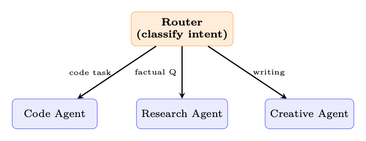
<em>图像来源：原 PDF 第 370 页，尺寸 733x282。</em></p>
<p><a id="page-371"></a></p>
<h2 id="371">第 371 页</h2>
<p>图19.3：Orchestrator-workers：LLM决定如何分解任务并合成worker
结果。</p>
<p>图 19.4：评估器优化器：无需训练的迭代细化。</p>
<p>19.2
自主智能体模式</p>
<p>这些模式使LLM能够控制执行流程本身。</p>
<p>19.2.1
反应（理性+行动）</p>
<p>基本智能体模式<a class="citation" href="#ref-127">[127]</a>。LLM在思考（内部推理）、
循环执行（工具调用）和观察（处理结果），直到产生最终答案。</p>
<p>React 实施要点</p>
<p>• 便签本：记录“想法”步骤，但不向用户显示。</p>
<p>• 工具解析：工具从模型输出中提取结构化工具调用。</p>
<p>• 最大迭代次数：始终限制循环（典型：10-25 次迭代）。</p>
<p>• 终止：模型输出特殊操作（例如，final_answer）或不调用任何工具
检测到。</p>
<p>19.2.2
规划智能体</p>
<p>智能体在执行之前生成明确的计划，并且可以在执行中修改计划<a class="citation" href="#ref-126">[126]</a>。</p>
<p>规划智能体：研究报告生成</p>
<p>用户请求：“写一份 2 页的报告，比较时间序列的Transformer架构
预测。”
第 1 步 — 计划生成（单个LLM调用）：</p>
<h3 id="_80">本页图像资源</h3>
<p>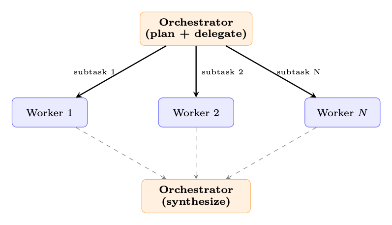
<em>图像来源：原 PDF 第 371 页，尺寸 797x457。</em></p>
<p>
<em>图像来源：原 PDF 第 371 页，尺寸 900x215。</em></p>
<p><a id="page-372"></a></p>
<h2 id="372">第 372 页</h2>
<p>表 19.1：规划策略比较</p>
<p>策略
重新规划
特点</p>
<p>先计划后执行
从来没有
简单；脆弱到意想不到的结果
自适应
失败时
仅当某个步骤失败时才重新计划；成本适中
连续
每一步
每次观察后全面重新评估；费用-
严重但稳健
分层的
子计划已完成
高层计划确定；子计划生成dy-
纳米地</p>
<pre><code class="language-math">plan = [
</code></pre>
<pre><code class="language-text">{"id": 1, "task": "Search for recent
transformer -based "
"time -series
models
(2023 -2025)",
"tool": "search_web", "deps": []},
{"id": 2, "task": "Read top 5 papers , extract
key
methods",
"tool": "read_papers", "deps": <a class="citation" href="#ref-1">[1]</a>} ,
{"id": 3, "task": "Build
comparison
table (architecture , "
"dataset , metrics)",
"tool": "none", "deps": <a class="citation" href="#ref-2">[2]</a>} ,
{"id": 4, "task": "Write
introduction + methodology
section",
"tool": "none", "deps": <a class="citation" href="#ref-2">[2]</a>} ,
{"id": 5, "task": "Write
results + conclusion",
"tool": "none", "deps": [3, 4]},
{"id": 6, "task": "Review and polish
final
report",
"tool": "none", "deps": <a class="citation" href="#ref-5">[5]</a>} ,
]
</code></pre>
<p>步骤 2 — 通过自适应重新规划执行：智能体独立执行步骤
订单。第 1 步之后，搜索仅返回 3 篇相关论文。智能体重新规划：它添加了一个
将搜索范围扩大到相邻域（例如 PatchTST、iTransformer）的子步骤。修订后的
计划从步骤 2 继续，使用扩展的语料库。
关键见解：该计划是一份动态文件——它提供了结构，但适应了观察。
该线束以 DAG 的形式跟踪依赖关系，并且仅执行其前辈已执行的步骤
完成。</p>
<p>19.2.3
反思与自我批评</p>
<p>智能体停下来评估自己的轨迹和正确的路线：</p>
<ol>
<li>
<p>输出验证：“这是正确的吗？我错过了什么吗？”</p>
</li>
<li>
<p>轨迹审查：审查最后 k 个步骤，识别错误或效率低下的地方。</p>
</li>
<li>
<p>策略修订：重新考虑总体方法（“我解决的问题正确吗？”）。</p>
</li>
</ol>
<p>反思：从失败中学习</p>
<p>反射模式<a class="citation" href="#ref-224">[224]</a>维持持久的“反射记忆”。每次尝试失败后，
智能体编写自然语言反射（“我失败了，因为我没有检查边缘情况”）。开
下一次尝试时，这些反思将包含在提示中——实现跨情节学习
没有体重更新。</p>
<p>19.2.4
工具使用模式</p>
<p>智能体如何调用工具会显着影响其可靠性、延迟和成本。五规范
模式已经出现<a class="citation" href="#ref-332">[332]</a>：</p>
<p>单转工具的使用。
最简单的模式：模型发出一个工具调用，接收结果，
并给出最终答案。足以满足事实查找、单位转换或单个 API 查询。
该工具恰好进行了两次 LLM 调用（一项用于决定工具，一项用于综合结果）。</p>
<p><a id="page-373"></a></p>
<h2 id="373">第 373 页</h2>
<p>表 19.2：工具调用模式</p>
<p>图案
描述
示例</p>
<p>单匝
每个 LLM 重新调用一次工具
响应
带搜索的简单问答</p>
<p>多功能工具
多个并行工具调用
一个回应
搜索+计算+格式</p>
<p>顺序
工具输出进入下一个
工具调用
搜索→阅读→提取</p>
<p>嵌套
工具
打电话
触发器
另一个
智能体
代码智能体调用测试运行程序</p>
<p>回退
首选工具失败；尝试改变-
本地人
API→抓取→缓存</p>
<p>多工具（并行）。
现代 API（OpenAI、Anthropic）允许模型请求多个
一次响应中的工具调用。该工具同时执行它们并一起返回所有结果。
这极大地减少了需要来自多个来源的独立信息的任务的延迟——
例如，同时获取股票价格、天气和日历。关键约束：工具必须
是独立的（不需要任何工具的输出作为另一个工具的输入）。</p>
<p>顺序（流水线）。
每个工具的输出都会输入到下一个工具的输入中，形成数据流水线。
模型根据之前的结果决定下一个工具。研究工作流程中常见的：
搜索→获取页面→提取数据→分析。安全带必须跟踪不断增长的环境
并且可能需要总结中间结果以保持在预算之内。</p>
<p>嵌套（智能体即工具）。
工具调用调用一个完全独立的智能体——有自己的提示符，
工具和背景。父智能体将子智能体视为黑盒函数。这使得
专业化：研究智能体将代码执行委托给编码智能体，编码智能体可以访问
沙箱和测试运行程序。群体模式<a class="citation" href="#ref-336">[336]</a>通过专门的之间的切换概括了这一点
智能体。</p>
<p>回退（优雅降级）。
线束按优先顺序尝试工具：如果首选工具
失败（超时、速率限制、API 错误），它会自动回退到替代方案。模型需要
无需了解后备logits - 线束会透明地处理它。示例：初级搜索
API→备份搜索→缓存结果→通知模型搜索不可用。</p>
<p>19.3
设计原则</p>
<p>以下原则摘自 Anthropic 构建有效智能体的指南 <a class="citation" href="#ref-342">[342]</a>，适用
跨越所有模式：</p>
<ol>
<li>
<p>保持简单。使用最简单、可行的架构。仅在以下情况下增加复杂性：
证明有必要。解决问题的提示链总是比
多智能体系统可能。</p>
</li>
<li>
<p>透明胜于聪明。每一步都应该是可检查的。避免隐藏状态或
隐含推理。当智能体失败时，您需要了解原因——不透明架构
使调试变得不可能。</p>
</li>
</ol>
<p>3.提供好的工具。文档齐全、类型良好且具有清晰错误消息的工具是强制的
乘数。描述模糊的工具会被滥用；具有精确模式的工具和
使用指南将被正确选择。</p>
<ol start="4">
<li>为失败做好计划。每个工具调用都可能失败。构建重试logits、回退和优雅降级
在线束级别，因此模型不需要推理基础设施故障。</li>
</ol>
<p><a id="page-374"></a></p>
<h2 id="374">第 374 页</h2>
<ol start="5">
<li>
<p>使用结构化输出。约束生成（JSON 模式、函数调用）可防止
解析失败。生成需要正则表达式解析的自由格式文本的智能体很脆弱；一
生成经过验证的 JSON 是稳健的。</p>
</li>
<li>
<p>使用不同的输入进行测试。智能体行为比单轮聊天更加多变。一样的
提示可以在不同的运行中产生不同的工具调用序列。进行对抗性测试，
边缘情况、不明确的请求和格式错误的输入。</p>
</li>
</ol>
<p>19.4
图案选择指南</p>
<p>选择正确的模式取决于三个因素：(1) 任务结构的可预测性，
(2) 在延迟和成本方面您可以承受多少个 LLM 调用，以及 (3) 质量是否需要迭代。
使用下表作为决策矩阵 - 从顶部（最简单）开始，仅在以下情况下向下移动
更简单的模式显然是失败的。</p>
<p>表 19.3：何时使用每种智能体设计模式</p>
<p>图案
复杂性
LLM电话
最适合</p>
<p>提示链接
低
N（固定）
顺序任务、内容流水线
路由
低
1+1
多类型输入、分类
并行化
低
N（平行）
独立子任务、投票
协调者-工作者
中等
变量
未知分解
评估优化器
中等
2–10（循环）
质量关键的输出
反应
中等
3–25（循环）
一般工具使用、探索
策划智能体
高
5–50+
长期、多步骤的任务
反思
高
+50% 管理费用
第一次尝试经常失败的任务
多智能体
高
很多
领域复杂、专业化</p>
<p>模式是可组合的：规划智能体可以对各个步骤使用提示链，
评估器优化器在其审查阶段，并路由将子任务分派给专家。艺术
知道何时停止添加图层。</p>
<p><a id="page-375"></a></p>
<h2 id="375">第 375 页</h2>
<p>第20章</p>
<p>智能体环境和基准测试</p>
<p>20.1
动机：为什么智能体需要环境</p>
<p>原则上，会话语言模型的评估很简单：呈现提示，
收集响应，并根据参考或通过人类判断对其进行评分。智能体评价为
根本不同。智能体必须在世界中行动、观察后果并调整其行为
通过一系列步骤。没有任何单一的回应能够体现这一点；只有结构化环境可以。
范围。我们在强化学习意义上使用环境：智能体与之交互的世界
用于训练或评估，而不是托管的生产基础设施（线束、编排器）
智能体在服务时间。执行沙箱出现在这里是因为它们支持这样的环境，但是
智能体工具本身将在第 18 章中介绍。</p>
<p>聊天机器人与智能体的评估差距</p>
<p>聊天机器人评估衡量的是单代人的质量：流畅性、真实性、乐于助人。
智能体评估衡量策略的质量：智能体是否可靠地实现目标
跨越多样化的长期任务？这种差距不仅仅是数量上的——它需要不同的
基础设施。</p>
<p>三种力量推动了对专用智能体环境的需求：</p>
<p>安全探索。
现实世界的系统——生产数据库、实时网站、金融 API——
无法吸收受训练的智能体的探索行为。沙盒环境
提供忠实的副本，智能体可以在其中失败、恢复和学习，而不会导致不可逆转的情况
伤害。安全隔离（例如 Docker 容器、网络受限的虚拟机）不是可选的；这是一个
一流的设计要求。</p>
<p>可重复的评估。
基准测试测试要求每个智能体在以下情况下面临相同的任务
相同的条件。
环境必须按需确定、受版本控制并且
可分发，以便一个实验室报告的结果可以在另一个实验室重现。没有这个
从历史上看，房地产使得智能体商基准测试难以比较。</p>
<p>课程学习。
从头开始训练智能体执行艰巨的任务是样本效率低下的。恩-
暴露困难课程的环境——作为智能体逐渐增加任务复杂性
改进——显着减少达到目标所需的环境交互次数
性能水平。这反映了人类的学习方式：掌握子技能先于掌握其他技能
整个。</p>
<p>环境作为LLM的强化学习“健身房”</p>
<p>正如 OpenAI Gym <a class="citation" href="#ref-344">[344]</a> 标准化了 RL 算法和模拟之间的接口一样
控制任务、智能体环境标准化了基于 LLM 的智能体和
他们必须解决的各种任务。
这个类比很紧密：reset() 初始化一个新的episode，
step(action) 推进世界并返回观察结果和奖励，而 render() 产生
当前状态的人类可读视图。</p>
<p><a id="page-376"></a></p>
<h2 id="376">第 376 页</h2>
<p>20.2
环境设计原则</p>
<p>一个精心设计的智能体环境暴露了四个正交的设计轴：观察空间、
动作空间、奖励信号和情节结构。正确对待每一项都是必要的；得到所有
四是同时是环境工程技术。</p>
<p>20.2.1
观察空间设计</p>
<p>观察结果是智能体在每个步骤中看到的内容。对于基于 LLM 的智能体来说，观察结果几乎是
始终呈现为文本，但源材料差异很大：</p>
<p>• 纯文本：终端输出、文件内容、API 响应、错误消息。最大兼容
与任何LLM一样，但失去了空间和视觉结构。</p>
<p>• 结构化(JSON/XML)：机器可读的状态表示。实现精确接地
但要求智能体解析结构而不是阅读散文。</p>
<p>• 多模式：屏幕截图、可访问性树、渲染的 HTML。 GUI 和 Web 所必需的
任务；需要具有视觉能力的模型或单独的感知模块。</p>
<p>• 混合：与可访问性树配对的屏幕截图（在 OSWorld 和 VisualWebArena 中使用）
提供视觉上下文和结构化元素标识符，结合两者的优点
方式。</p>
<p>观察泄漏</p>
<p>一个常见的设计错误是在观察中包含智能体不应该包含的信息
可以访问——例如，真实答案、奖励值或未来的任务步骤。
观察泄漏会夸大基准测试分数，并产生在以下情况下发生灾难性失败的智能体：
部署在缺乏此类信息的真实环境中。</p>
<p>20.2.2
行动空间设计</p>
<p>动作空间定义了智能体可以做什么。对于 LLM 智能体，操作通常是文本字符串
由环境解析和执行。常见的操作类型包括：</p>
<p>• 工具调用：外部函数（搜索、计算器、日历）的结构化调用。经常
格式化为 JSON 或 XML 函数调用语法。</p>
<p>• 代码执行：智能体编写在沙箱中运行的代码；返回 stdout/stderr
作为下一个观察。这是最具表现力的动作类型。</p>
<p>• API 交互：对Web 服务的HTTP 请求、数据库查询、shell 命令。</p>
<p>• GUI 操作：单击(x,y)、键入(“文本”)、滚动(方向)、按键(“Enter”)。用于
计算机使用环境。</p>
<p>• 自然语言：针对另一个智能体、人类或子任务规划者的自由格式文本。</p>
<p>20.2.3
奖励信号设计</p>
<p>奖励设计是环境工程中最难的部分。奖励必须是：</p>
<ol>
<li>
<p>一致：高奖励应该对应于真正的任务完成，而不是肤浅的智能体。</p>
</li>
<li>
<p>可学习：信号必须足够密集，使智能体能够取得进展；纯稀疏
如果没有额外的塑造，长期任务的奖励通常是无法学习的。</p>
</li>
<li>
<p>防篡改：智能体必须在没有实际完成的情况下才能获得高额奖励
任务（奖励黑客）。</p>
</li>
</ol>
<p><a id="page-377"></a></p>
<h2 id="377">第 377 页</h2>
<p>表 20.1：具有权衡的智能体环境的奖励信号类型。</p>
<p>奖励类型
优点
缺点</p>
<p>稀疏（末尾为 0/1）
对齐，难以破解
很难学
密集（阶梯级）
简单易学
容易出现塑形伪影
内在的（好奇心）
推动探索
可能偏离任务
LLM法官
灵活、细致
价格昂贵，不一致
基于执行
地面真相
仅适用于可验证的任务</p>
<p>20.2.4
剧集结构</p>
<p>剧集可以通过多种方式构建：</p>
<p>• 固定长度：智能体恰好执行T 个步骤。实施简单；废物计算
已经解决的任务。</p>
<p>• 提前终止：当智能体发出完成信号或终止状态时，事件结束。
达到了。效率更高，但需要可靠的终止检测器。</p>
<p>• 开放式：没有固定的范围；智能体运行直到达到资源预算（token、API 调用、
墙时间）已耗尽。最接近实际部署但最难评估。</p>
<p>自适应剧集长度和提前终止。
最近的工作挑战了这样的假设：
训练开始前必须确定剧集长度：</p>
<p>• 课程超出视野。 AELA <a class="citation" href="#ref-345">[345]</a> 以短集开始并逐渐延伸
随着智能体能力的增长，通过策略熵收敛来衡量。早早做空
每个训练样本的episode暴露出更多不同的初始状态。</p>
<p>• 截断作为RL 惩罚。 DLER <a class="citation" href="#ref-346">[346]</a>表明最简单的长度控制——硬
截断——与批量奖励归一化配合使用时，非常适合推理模型
动态采样以避免因截止推出而丢失奖励信号。</p>
<p>• 学会停止。模型本身可以学习何时停止，而不是固定预算
推理。 <a class="citation" href="#ref-347">[347]</a>提出三种策略：当连续的推理步骤收敛到
相同的答案，提高思考终结标记概率，或者训练一个轻量级分类器
隐藏状态激活来预测最佳停止点。</p>
<p>• 部分推出回收。 APRIL <a class="citation" href="#ref-348">[348]</a> 超额配置部署请求并终止一次
达到目标批次数；不完整的响应将作为热启动前缀回收
未来的步骤，消除长尾失速，其中一些缓慢的样本会阻塞整个批次
（吞吐量增益 20–35%）。 TLT <a class="citation" href="#ref-349">[349]</a>通过训练自适应模型来解决相同的瓶颈
用于对掉队者进行推测性解码的动态草稿模型（1.7 倍端到端加速，无损）。</p>
<p>20.2.5
难度课程和适应性环境</p>
<p>静态基准测试衡量智能体能力的固定快照。自适应环境更进一步：
他们在线监控智能体的表现并调整任务难度，以将智能体保持在“区域”
近端发展”——学习起来很困难，但偶尔也很容易成功。技巧
包括：</p>
<p>• 程序生成：任务从参数化分布中采样；难度
根据最近的成功率调整参数。优先关卡重播 <a class="citation" href="#ref-350">[350]</a> 得分
通过其估计的学习潜力（例如 GAE 幅度）生成水平并重放高价值
水平更频繁。</p>
<p><a id="page-378"></a></p>
<h2 id="378">第 378 页</h2>
<p>• 自我对战/对抗性环境设计：配对<a class="citation" href="#ref-351">[351]</a>训练对手提出建议
使主角和拮抗剂之间的遗憾最大化的环境，产生
复杂性不断增加的自然课程，无需手工设计难度表。</p>
<p>•事后重新标记：失败的轨迹被重新标记为智能体确实实现的目标，
即使从失败中也能提供学习信号（Hindsight Experience Replay，HER）<a class="citation" href="#ref-322">[322]</a>。</p>
<p>• 针对 LLM 的难度目标数据选择：在 RLVR 训练中，并非所有问题都提供
信号相等。最近的工作优先考虑中等难度的问题——模型解决的问题
大约 30-70% 的时间——产生最高的梯度信息 <a class="citation" href="#ref-352">[352]</a>。 ADCL <a class="citation" href="#ref-353">[353]</a>
随着模型的改进，定期重新估计难度，避免陈旧的课程。</p>
<p>20.3
智能体环境的类型</p>
<p>20.3.1
代码执行沙箱</p>
<p>LLM 最基本的智能体环境是代码执行沙箱：智能体编写
代码，沙箱运行它，并返回输出。这个简单的循环背后隐藏着令人惊讶的分数
真实世界的智能体部署。
基于 Docker 的隔离是最常见的方法。每集都会产生一个新容器
从已知图像中执行智能体的代码，并在剧集结束时销毁容器。
网络访问、文件系统写入和进程生成都可以在容器级别进行控制。1
E2B（Environments to Benchmarks）2提供托管云沙箱API：智能体发送
通过 HTTP 编写代码，E2B 在一个隔离的 Firecracker microVM 中执行它，启动时间不到 200 毫秒，并且
返回标准输出/标准错误。 E2B处理容器生命周期管理的基础设施复杂性，
使其易于集成到智能体训练循环中。
Modal3提供了类似的托管执行模型，具有更强的GPU支持，使其适合
适用于需要运行 ML 工作负载作为其任务一部分的智能体。</p>
<p>沙箱逃逸和安全</p>
<p>代码执行沙箱是主要的攻击面。一个足够有能力的智能体（或一个及时的智能体）
注入的有效负载）可能会尝试通过内核漏洞、网络渗透来逃离沙箱，
或资源耗尽。纵深防御至关重要：将容器隔离与 seccomp 结合起来
配置文件、只读根文件系统、网络出口过滤和 CPU/内存 cgroup。从来没有
使用主机级权限运行智能体生成的代码。</p>
<p>20.3.2
网络环境</p>
<p>Web 环境向智能体提供浏览器并要求其完成真实或模拟的任务
网站。
WebArena <a class="citation" href="#ref-267">[267]</a> 提供了四个功能性 Web 应用程序的自托管测试平台——电子商务
商店、社交论坛、GitLab 实例和 CMS — 加上地图服务，总共 812 个长期视野
任务。智能体通过浏览器自动化 API 进行交互；任务需要多步骤导航、表单
填充和信息检索。人类表现约为 78%；最先进的LLM
智能体商达到约 35-45%。
VisualWebArena [354] 通过需要解释的视觉基础任务扩展了 WebArena
网页上的图像。观察结果是与可访问性树配对的屏幕截图；智能体
必须以这两种方式采取行动。
Mind2Web <a class="citation" href="#ref-355">[355]</a> 是一个包含 137 个真实网站的 2,000 个任务的大型数据集，通过以下方式收集
人类示威。与 WebArena 不同，Mind2Web 专注于对未见过的网站的泛化，
使其成为更难的分布外测试。</p>
<p>WebArena 任务示例</p>
<p>任务：“在电子商务网站上找到最便宜的 50 美元以下的红色连衣裙，并将其添加到购物车。”
智能体轨迹：</p>
<p><a id="page-379"></a></p>
<h2 id="379">第 379 页</h2>
<ol>
<li>
<p>导航至服装类别。</p>
</li>
<li>
<p>应用滤色片：红色。</p>
</li>
<li>
<p>按价格升序排列。</p>
</li>
<li>
<p>确定第一个低于 50 美元的商品。</p>
</li>
<li>
<p>单击“添加到购物车”。</p>
</li>
<li>
<p>验证购物车内容。</p>
</li>
</ol>
<p>环境根据真实项目检查最终购物车状态；如果正确则奖励为1，如果正确则奖励为0
否则。</p>
<p>20.3.3
计算机使用环境</p>
<p>据观察，计算机使用环境使智能体可以控制完整的桌面操作系统
通过屏幕截图和/或辅助功能 API。
OSWorld [356] 跨三个操作系统（Ubuntu、Windows、
macOS），包含 369 个任务，涵盖生产力应用程序（LibreOffice、VS Code、Chrome、GIMP 等）。
该智能体观察屏幕截图并通过 pyautogui 风格的鼠标和键盘命令进行操作。的
人类与智能体之间的差距非常明显：注释者成功完成了大约 72% 的任务，而最强的LLM
智能体仅管理约 18%，这凸显了像素级 GUI 控制的难度。
WindowsAgentArena <a class="citation" href="#ref-357">[357]</a> 特别关注 Windows 11，在 19 个操作系统中包含 154 个任务
应用程序。它强调企业工作流程：Excel 公式、PowerPoint 编辑、Outlook 电子邮件
管理。</p>
<p>截图瓶颈
计算机使用智能体面临着一个根本性的挑战：屏幕截图是高维的（通常是
1920×1080×3像素）但大部分信息与当前动作无关。高效
智能体学习关注屏幕的小区域，使用可访问性树来识别交互
按名称而不是像素坐标排列元素，并保持紧凑的工作内存
之前访问过的 UI 状态。</p>
<p>20.3.4
软件工程环境</p>
<p>软件工程（SWE）环境要求智能体解决现实世界的编程任务：
修复错误、实现功能、编写测试。
SWE-bench <a class="citation" href="#ref-266">[266]</a> 从 12 个广泛使用的 Python 项目（Django、
Flask、scikit-learn 等）。每个实例都会将问题描述与保留的测试配对
仅在应用正确的补丁后才能通过的套件。智能体必须了解存储库
结构，找到相关代码，实施修复，并使用测试套件进行验证。瑞典-
bench 验证子集（500 个问题）已经过人工验证其正确性，并且是标准
评价目标。
SWE-agent <a class="citation" href="#ref-232">[232]</a> 既是一个基准测试环境又是一个智能体框架。它介绍了
智能体计算机接口 (ACI)：一组针对 LLM 智能体优化的 shell 命令（例如，
search_file、打开、编辑），与原始 bash 相比，降低了操作空间复杂性。</p>
<p>SWE 工作台工作流程
输入：GitHub 问题描述以及提交问题的完整存储库。
智能体操作：find_file、查看、编辑、python -m pytest测试/。
奖励：如果智能体补丁后所有目标测试都通过，则奖励1；否则为 0。没有部分信用。</p>
<p><a id="page-380"></a></p>
<h2 id="380">第 380 页</h2>
<p>20.3.5
科研环境</p>
<p>科学研究环境推动智能体自主知识生成：阅读
论文、形成假设、设计实验和解释结果。
PaperQA2 <a class="citation" href="#ref-358">[358]</a> 是一种检索增强智能体，通过搜索来回答科学问题
PDF 语料库，提取相关段落，并通过引文合成答案。它充当
既是基于文献的推理的工具又是基准测试。
AI Scientist <a class="citation" href="#ref-359">[359]</a>是一个端到端的研究自动化系统：给定一个研究方向，
智能体生成假设、编写和运行实验、解释结果并生成草稿
纸。该环境包括Python执行沙箱、文献搜索API和LaTeX
编译器。
MLAgentBench <a class="citation" href="#ref-360">[360]</a>评估机器学习工程任务的智能体：改进模型
计算预算内给定数据集的准确性。智能体可以读取数据、写入训练
脚本、运行实验并迭代。</p>
<p>20.3.6
游戏和模拟环境</p>
<p>游戏提供丰富、长远的环境，具有明确的奖励信号，但没有现实世界
后果。
NetHack <a class="citation" href="#ref-361">[361]</a> 是一个程序生成的 Roguelike 游戏，具有巨大的状态空间，需要
长期规划、库存管理以及对突发事件的适应。网络黑客
学习环境 (NLE) 提供与 Gym 兼容的界面。
Voyager / Minecraft [228] 使用 Minecraft 游戏引擎作为开放式环境。
Voyager 引入了难度逐渐加大的任务课程（收集木材 → 工艺工具 → 建造
庇护所→探索下界）和一个技能库，可以在各个地方积累可重用的代码片段
剧集。
GAIA <a class="citation" href="#ref-362">[362]</a> 提出了 466 个需要使用链式工具的问题——网络搜索、代码执行、文件
解析——根据所涉及的推理步骤的数量分为三个难度级别。基准测试
赤裸裸地暴露了人类能力（约 92% 的准确率）和当前 LLM 智能体（GPT-4）之间的差距
插件在发布时得分约为 15%；后来的系统达到~30%）。</p>
<p>20.3.7
多智能体环境</p>
<p>多智能体环境涉及两个或多个 LLM 智能体相互交互和/或
共享的世界。</p>
<p>• 谈判：具有私人公用事业职能的智能体必须通过对话达成协议。经典
环境包括 DealOrNoDeal <a class="citation" href="#ref-363">[363]</a> 和 CaSiNo <a class="citation" href="#ref-364">[364]</a>。</p>
<p>• 辩论：两名智能体争论相反的立场；判断智能体（或人类）评估质量
的论点。用于通过对抗性压力引发真实推理。</p>
<p>• 协作完成任务：具有互补能力的智能体（计划者、执行者、
评论家）必须协调才能完成一项单独无法解决的任务。框架包括
AutoGen <a class="citation" href="#ref-338">[338]</a>、CrewAI <a class="citation" href="#ref-341">[341]</a> 和 MetaGPT <a class="citation" href="#ref-365">[365]</a>。</p>
<p>• 竞争性游戏：智能体在对手所在的位置进行零和游戏（国际象棋、围棋、扑克）
本身是LLM智能体。在这些环境中的自我游戏已经产生了超人的表现
狭窄的领域。</p>
<p>20.4
OpenEnv：标准化智能体环境接口</p>
<p>智能体环境的激增造成了碎片化问题：每个环境
公开不同的 API，使用不同的观察格式，并需要不同的脚手架。欧佩-
nEnv <a class="citation" href="#ref-366">[366]</a> 是 Hugging Face 最近的一个开源框架，它直接解决了这个问题：</p>
<p><a id="page-381"></a></p>
<h2 id="381">第 381 页</h2>
<p>为智能体执行提供了 Gymnasium 风格的 [367] 接口（step()、reset()、state()）
环境，具有通过 WebSocket 进行通信的基于 Docker 的隔离部署。开放环境
补充了更广泛的标准化工作，例如 AgentGym <a class="citation" href="#ref-368">[368]</a>，它提供了统一格式
跨不同环境的 LLM 智能体平台，以及 BrowserGym <a class="citation" href="#ref-369">[369]</a>，它标准化了
网络智能体基准测试的观察和行动空间。下面的设计原则体现了
汇聚这些项目的最佳实践。</p>
<p>图 20.1：带有 LLM 智能体的 OpenEnv 架构。智能体通过线束循环进行推理，该循环调用
输入 EnvClient。客户端通过 WebSocket 与 Docker 内运行的 HTTPEnvServer 进行通信
容器。 RL 训练器（虚线）可以选择包裹循环以收集策略的推出和奖励信号
优化。</p>
<p>20.4.1
标准化智能体-环境接口</p>
<p>OpenEnv 为智能体执行环境定义了一个类型化接口。该设计反映了 Gymna-
sium 很简单，但目标是通过 HTTP/WebSocket 与工具交互的 LLM 智能体：</p>
<p>• env.reset() →StepResult：开始一个新的episode；返回初始观察值。</p>
<p>• env.step(action) →StepResult(observation,reward,done)：执行一个动作并
返回观察结果、标量奖励和终止标志。</p>
<p>• env.state() →当前环境状态（剧集 ID、步数、环境特定字段）。</p>
<p>• env.close()：释放资源（停止容器、关闭连接）。</p>
<p>操作和观察是强类型的 Python 数据类，特定于每个环境。
例如，编码环境定义 CodeAction(code=...) 并返回一个观察
标准输出、标准错误和退出代码；游戏环境定义了自己的动作/观察类型。这个
每个环境的类型为智能体提供结构化、可预测的界面，同时保留三个核心
方法（重置、步骤、状态）通用。</p>
<p>建筑学。
每个环境都是一个继承自Environment的Python类（实现
重置（）和步骤（））。它通过 HTTPEnvServer 在 Docker 容器内提供服务，该服务器公开了
FastAPI/WebSocket 端点。客户端使用环境特定的 EnvClient 子类来处理
序列化和连接生命周期。容器可以通过 from_docker_image() 在本地启动
或通过基本 URL 远程连接：</p>
<pre><code class="language-text">from
coding_env
import
CodeAction , CodingEnv
</code></pre>
<pre><code class="language-text"># Option 1: Launch a local
Docker
container
client = CodingEnv. from_docker_image ("coding -env:latest")
</code></pre>
<pre><code class="language-text"># Option 2: Connect to a remote
deployment
# client = CodingEnv(base_url =" http :// localhost :8000")
</code></pre>
<pre><code class="language-text"># Interact
with the
environment
result = client.reset ()
</code></pre>
<h3 id="_81">本页图像资源</h3>
<p>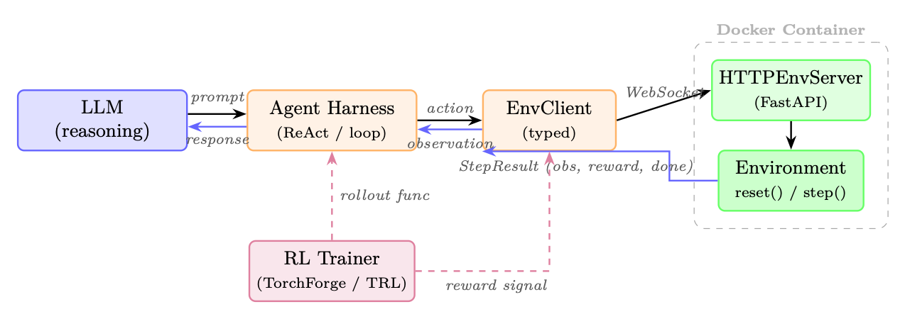
<em>图像来源：原 PDF 第 381 页，尺寸 1274x450。</em></p>
<p><a id="page-382"></a></p>
<h2 id="382">第 382 页</h2>
<pre><code class="language-text">print(result.observation.stdout)
print(result.observation.stderr)
print(result.observation.exit_code)
</code></pre>
<pre><code class="language-text">result = client.step(CodeAction(code="print (2 + 2)"))
print(result.observation.stdout)
# "4\n"
print(result.observation.exit_code)
# 0
print(result.reward , result.done)
</code></pre>
<pre><code class="language-text"># Check
state
state = client.state ()
print(state.episode_id , state.step_count)
</code></pre>
<pre><code class="language-text">client.close ()
</code></pre>
<p>作为服务器的环境。
创建新环境只需要实现环境
基类：</p>
<pre><code class="language-text">from
openenv.core.env_server
import
Environment , create_app
from
dataclasses
import
dataclass
</code></pre>
<pre><code class="language-text">@dataclass
class
MyAction:
text: str
</code></pre>
<pre><code class="language-text">@dataclass
class
MyObservation:
response: str
reward: float = 0.0
done: bool = False
</code></pre>
<pre><code class="language-text">class
MyEnvironment(Environment):
def reset(self) -&gt; MyObservation :
</code></pre>
<pre><code class="language-text">return
MyObservation(response="Ready")
</code></pre>
<pre><code class="language-text">def step(self , action: MyAction) -&gt; MyObservation :
</code></pre>
<pre><code class="language-text">return
MyObservation(response=f"Echo: {action.text}",
</code></pre>
<pre><code class="language-text">reward =1.0 , done=False)
</code></pre>
<pre><code class="language-text">app = create_app(MyEnvironment (), MyAction , MyObservation )
# Run: uvicorn
module:app --host
0.0.0.0
--port 8000
</code></pre>
<p>线束集成（实验性）。
RFC 0054 引入了面向线束的层，其中 RL 训练
框架通过 MCP 风格的工具调用与环境交互。 build_harness_rollout_func()
helper 生成 TRL 兼容的 rollout 函数，将 OpenEnv 直接桥接到现有训练中
像 TorchForge <a class="citation" href="#ref-370">[370]</a> 这样的流水线。</p>
<p>治理。
OpenEnv 由一个技术委员会公开管理，其中包括 Meta-PyTorch、
NVIDIA、Unsloth、Modal、Prime Intellect、Reflection 和 Hugging Face——确保标准
随着广泛的行业投入而不是单一供应商的议程而发展。</p>
<p>20.4.2
环境登记和发现</p>
<p>OpenEnv 环境可以部署为 Hugging Face Spaces 或本地 Docker 镜像，从而使
无需手动安装即可发现和使用。
无论什么情况，相同的客户端界面都可以工作
部署目标：</p>
<pre><code class="language-text">from
echo_env
import
EchoAction , EchoEnv
</code></pre>
<pre><code class="language-text"># Connect to a remote HF Space
deployment
</code></pre>
<p><a id="page-383"></a></p>
<h2 id="383">第 383 页</h2>
<pre><code class="language-text">client = EchoEnv(base_url="https :// openenv -echo -env.hf.space")
result = client.reset ()
print(result.observation. echoed_message )
# "Echo
environment
ready !"
</code></pre>
<pre><code class="language-text">result = client.step(EchoAction(message="Hello!"))
print(result.observation. echoed_message )
# "Hello !"
print(result.reward)
client.close ()
</code></pre>
<p>OpenEnv 生态系统已经涵盖 70 多个环境（OpenSpiel 游戏、Atari、BrowserGym、
编码沙盒、金融强化学习、交通模拟等等）。 RFC 0025 提出了一个正式工具
发现协议，以便智能体可以查询不熟悉的环境在运行时接受哪些操作。</p>
<p>20.4.3
组合环境</p>
<p>真正的智能体部署很少使用单一工具。 OpenEnv 支持丰富的环境，可公开
通过键入操作实现多种功能。例如，编码环境支持代码
单个沙盒会话中的执行、文件 I/O 和 shell 命令：</p>
<pre><code class="language-text">from
coding_env
import
CodeAction , CodingEnv
</code></pre>
<pre><code class="language-text">client = CodingEnv. from_docker_image ("coding -env:latest")
result = client.reset ()
</code></pre>
<pre><code class="language-text"># Execute
code
result = client.step(CodeAction(code="x = 42\ nprint(x)"))
print(result.observation.stdout)
# "42"
print(result.observation.exit_code)
# 0
</code></pre>
<pre><code class="language-text"># State
persists
across
steps
within an episode
result = client.step(CodeAction(code="print(x + 1)"))
print(result.observation.stdout)
# "43"
</code></pre>
<pre><code class="language-text">state = client.state ()
print(state.step_count)
# 2
</code></pre>
<pre><code class="language-text">client.close ()
</code></pre>
<p>对于需要多种工具访问（代码 + Web + 文件）的智能体，OpenEnv 的 RFC 0036 提出了 MCP
集成，允许将任何 MCP 兼容的工具服务器包装为 OpenEnv 环境。
此外，openenv CLI 可以搭建、构建和部署新环境到 Hugging Face
单个命令中的空格。</p>
<p>20.4.4
环境版本控制和再现性</p>
<p>基准测试完整性要求在评估时冻结环境行为。最佳实践
包括：</p>
<p>• 语义版本控制：WebArena-v1.2.0 保证次要版本内的向后兼容性
版本。</p>
<p>• Docker 镜像固定：环境运行时打包为 Docker 镜像，并带有
内容寻址哈希。</p>
<p>• 基于种子的决定论：所有随机元素（程序生成、网络响应）
被播种和记录，以便可以准确地重放任何轨迹。</p>
<p>• 排行榜快照：公共排行榜记录环境版本以及
分数，防止无声的基准测试漂移。</p>
<p><a id="page-384"></a></p>
<h2 id="384">第 384 页</h2>
<p>20.5
构建自定义环境</p>
<p>20.5.1
LLM 智能体的体育馆风格 API</p>
<p>Gymnasium API [367]7（OpenAI Gym 的后继者）是 RL 环境的事实上的标准。
使其适用于 LLM 智能体需要进行两项修改：（1）观察和操作是字符串
（或包含字符串的字典）而不是数字数组，并且（2）步骤方法必须处理
异步工具执行。</p>
<p>20.5.2
奖励函数工程</p>
<p>LLM 智能体环境的奖励功能通常是基于执行的：环境运行一个
每集之后的验证者，如果任务解决则返回 1，否则返回 0。对于没有明确目标的任务
验证者，选项包括：</p>
<p>• LLM-as-judge：一个单独的LLM根据任务描述对智能体的最终状态进行评分。</p>
<p>• 基于评分标准的评分：结构化评分标准将任务分解为子标准，每个子标准都进行评分
独立。</p>
<p>• 人工注释：人工评估者对随机轨迹样本进行评分；分数
用于校准自动智能体。</p>
<p>20.5.3
状态管理和检查点</p>
<p>长期任务可能需要花费数小时的时间。环境应支持：</p>
<p>• 状态序列化：完整的环境状态（文件系统、浏览器cookie、数据库内容）
可以序列化到磁盘并恢复。</p>
<p>• 中期检查点：智能体可以在任何步骤保存检查点并从
它实现了树搜索式的探索。</p>
<p>• 轨迹记录：每个观察、行动和奖励都记录到结构化文件中
离线分析和奖励模型训练。</p>
<p>20.5.4
训练数据收集的并行化</p>
<p>通过 RL 训练 LLM 智能体需要数百万次环境交互。并行化策略
包括：</p>
<p>• 进程级并行：产生N个独立的环境进程；收集轨迹
并行。</p>
<p>• 异步推出工作线程：使用异步事件循环（例如 asyncio）来重叠 LLM 推理
环境执行的延迟。</p>
<p>• 向量化环境：将多个环境批处理为单步调用、摊销
Python 开销。</p>
<p>• 云原生扩展：使用作业调度程序（Ray、SLURM）来分配环境工作人员
跨集群，具有聚合轨迹的中央重播缓冲区。</p>
<p>20.6
环境-智能体接口模式</p>
<p>图 20.2 说明了实践中使用的四种主要界面模式。</p>
<p><a id="page-385"></a></p>
<h2 id="385">第 385 页</h2>
<p>图 20.2：四种主体-环境界面模式。 (a) 基于文本的LLM最常见。 (二)
结构化 JSON 可实现精确解析。 (c) 多模式将屏幕截图与可访问性树相结合
图形用户界面任务。 (d) 流媒体支持实时交互，没有离散的回合边界。</p>
<p>基于文本的观察/行动。
智能体接收字符串观察并生成字符串
行动。环境解析操作（例如，从 <tool>...</tool> 块中提取工具调用）
并将结果作为字符串返回。这是最兼容的模式：任何LLM都可以参加
没有特殊的架构。</p>
<p>结构化 JSON 观察/操作。
观察和操作是 JSON 对象，带有
定义的模式。这可以实现严格的验证（在执行之前拒绝格式错误的操作）、结构化的
记录，以及更简单的轨迹编程分析。权衡是智能体必须可靠地
生成有效的 JSON，这需要微调或约束解码。</p>
<p>多模式（屏幕截图 + 辅助功能树）。
用于计算机使用和网络环境。
观察结果是一个元组（截图：
PIL.Image，a11y_tree：
字典）。截图亲
提供视觉背景；可访问性树提供了可在操作中使用的元素标识符
没有像素级坐标规范。这种混合方法比纯粹的屏幕截图更强大 -
为基础的控制。</p>
<h3 id="_82">本页图像资源</h3>
<p>
<em>图像来源：原 PDF 第 385 页，尺寸 508x563。</em></p>
<p><a id="page-386"></a></p>
<h2 id="386">第 386 页</h2>
<p>流媒体与回合制交互。
当前大多数环境都使用回合制模型：
智能体产生一个完整的动作，环境执行它，下一个观察是
回来了。流环境允许智能体在部分观察到达时接收它们（例如，
长时间运行命令的输出）以及中断或重定向执行中途。这是
更接近人类与计算机交互的方式，但需要更复杂的智能体架构。</p>
<p>20.7
评估线束设计</p>
<p>评估工具是跨基准测试套件运行智能体的基础设施，收集
结果，并生成汇总统计数据。良好的线束设计与良好的环境同样重要
设计。</p>
<p>20.7.1
确定性环境与随机环境</p>
<p>• 确定性环境对相同的操作产生相同的观察序列
序列。它们易于调试和重现，但可能无法反映现实世界的变化。</p>
<p>• 随机环境引入随机性（程序生成、网络延迟、
用户模拟）。他们需要每个任务多次运行来估计平均性能和
置信区间。</p>
<p>运行多少次就足够了？</p>
<p>对于具有 N 个任务和二元奖励的基准测试，平均成功率的标准误差
是
p</p>
<p>p(1−p)/N。当 N = 500 个任务且 p = 0.4 时，95% 置信区间约为
±4.3%。对于随机环境，乘以
√</p>
<p>k 其中 k 是独立运行的次数
每个任务。对于随机基准测试测试，常见的做法是每个任务运行 3-5 次。</p>
<p>20.7.2
保留的测试环境</p>
<p>基准测试完整性需要在环境级别（而不仅仅是任务级别）进行严格的训练/测试划分。
接受过 WebArena 任务训练的智能体应该根据一组保留的任务进行评估
训练期间未使用的。理想情况下，保留的集合涵盖不同的网站、任务类型和
难度级别高于训练集。</p>
<p>20.7.3
跨环境泛化</p>
<p>对智能体的最终考验是在一种环境中学到的技能是否可以转移到另一种环境中。
跨环境评估协议衡量：</p>
<p>• 零样本迁移：在环境A 上训练，在环境B 上测试，无需微调。</p>
<p>• 少样本适应：在评估之前提供来自环境B 的k 个演示。</p>
<p>• 持续学习：在环境A、B、C 上依次训练；衡量所有方面的表现
C 训练后三个。</p>
<p>20.7.4
人类基线收集</p>
<p>每个基准测试都应包括人类绩效作为参考点。人类基线服务
三个目的：</p>
<ol>
<li>
<p>他们设定任务难度的上限。</p>
</li>
<li>
<p>它们揭示了任务是否完全可以解决（一些基准测试任务结果是不明确的
或不可能）。</p>
</li>
</ol>
<p><a id="page-387"></a></p>
<h2 id="387">第 387 页</h2>
<ol start="3">
<li>它们为解释智能体得分提供了一个校准点（“智能体达到了 40%
人类的表现”）。</li>
</ol>
<p>人类基线应该从具有领域专业知识的工作人员（例如软件工程师）收集
对于 SWE 工作台，而不是众包人员），并且应包括任务时间测量以提高效率
比较。</p>
<p>20.8
代码示例：最小自定义 LLM 智能体环境</p>
<p>LLM 智能体训练的最小自定义环境</p>
<p>以下 Python 类实现了一个文件编辑环境，智能体必须在其中修改
用于使失败的测试通过的 Python 文件。它遵循适用于 LLM 智能体的 Gymnasium API。</p>
<pre><code class="language-text">"""
minimal_env.py
--
A minimal file -editing
environment
for LLM agents.
</code></pre>
<pre><code class="language-text">The agent
receives a Python
file with a bug and a failing
test.
It must edit the file
until the test
passes.
Reward: 1.0 if all tests pass , 0.0
otherwise.
"""
</code></pre>
<pre><code class="language-text">from
__future__
import
annotations
import
subprocess , shutil , tempfile , textwrap
from
pathlib
import
Path
from
dataclasses
import
dataclass , field
from
typing
import Any
</code></pre>
<pre><code class="language-text"># ---------------------------------------------------------------------------
# Data
structures
# ---------------------------------------------------------------------------
</code></pre>
<pre><code class="language-text">@dataclass
class
StepResult:
observation: str
# Text fed to the LLM
reward: float
# 0.0 or 1.0
terminated: bool
# Episode
over (task
solved or max steps)
truncated: bool
# Episode
cut short (budget
exceeded)
info: dict[str , Any] = field( default_factory =dict)
</code></pre>
<pre><code class="language-text"># ---------------------------------------------------------------------------
# Environment
# ---------------------------------------------------------------------------
</code></pre>
<pre><code class="language-text">class
FileEditEnv:
"""
A Gymnasium -style
environment
for LLM -based
code
repair.
</code></pre>
<pre><code class="language-text">Observation
space : str
(file
contents + test
output)
Action
space
: str
(one of: view , edit , run_tests , submit)
Reward
: 1.0 on passing
all tests , 0.0
otherwise
"""
</code></pre>
<pre><code class="language-text">MAX_STEPS = 20
# Hard
episode
limit
TIMEOUT
= 30
# Seconds
per test run
</code></pre>
<pre><code class="language-text">def
__init__(self , buggy_code: str , test_code: str ,
</code></pre>
<pre><code class="language-text">task_description : str):
self.buggy_code
= buggy_code
self.test_code
= test_code
self. task_description = task_description
self._workdir: Path | None = None
self._step_count = 0
</code></pre>
<p><a id="page-388"></a></p>
<h2 id="388">第 388 页</h2>
<pre><code class="language-text"># ------------------------------------------------------------------
# Core API
# ------------------------------------------------------------------
</code></pre>
<pre><code class="language-text">def reset(self , seed: int | None = None) -&gt; tuple[str , dict ]:
</code></pre>
<pre><code class="language-text">"""Initialise a fresh
episode; return (observation , info)."""
if self._workdir
and self._workdir.exists ():
shutil.rmtree(self._workdir)
</code></pre>
<pre><code class="language-text">self._workdir
= Path(tempfile.mkdtemp(prefix="fileenv_"))
self._step_count = 0
</code></pre>
<pre><code class="language-text"># Write
initial
files
(self._workdir / "solution.py").write_text(self.buggy_code)
(self._workdir / "test_solution .py").write_text(self.test_code)
</code></pre>
<pre><code class="language-text">obs = self. _build_observation (
</code></pre>
<pre><code class="language-text">action_taken="[Episode
start]",
test_output=self._run_tests ()
)
return obs , {"step": 0}
</code></pre>
<pre><code class="language-text">def step(self , action: str) -&gt; StepResult:
</code></pre>
<pre><code class="language-text">"""Execute
one agent
action; return
StepResult."""
self._step_count += 1
action = action.strip ()
</code></pre>
<pre><code class="language-text"># --- Parse and
dispatch
action
---
if action.startswith("view"):
</code></pre>
<pre><code class="language-text">result_text = self._action_view ()
elif
action.startswith("edit"):
result_text = self._action_edit(action)
elif
action.startswith("run_tests"):
result_text = self._run_tests ()
elif
action.startswith("submit"):
result_text = self._run_tests ()
else:
</code></pre>
<pre><code class="language-text">result_text = (
</code></pre>
<pre><code class="language-text">f"Unknown
action: {action!r}\n"
"Valid
actions: view | edit &lt;new_content &gt; | "
"run_tests | submit"
)
</code></pre>
<pre><code class="language-text">test_output = self._run_tests ()
passed
= "passed" in test_output
and "failed" not in test_output
reward
= 1.0 if passed
else 0.0
terminated
= passed or action.startswith("submit")
truncated
= self._step_count
&gt;= self.MAX_STEPS
</code></pre>
<pre><code class="language-text">obs = self. _build_observation (action , test_output)
return
StepResult(obs , reward , terminated , truncated ,
</code></pre>
<pre><code class="language-text">{"step": self._step_count ,
</code></pre>
<pre><code class="language-text">"passed": passed })
</code></pre>
<pre><code class="language-text">def render(self) -&gt; str:
</code></pre>
<pre><code class="language-text">"""Return a human -readable
summary of the
current
state."""
if self._workdir is None:
</code></pre>
<pre><code class="language-text">return "[Environment
not
initialised]"
code = (self._workdir / "solution.py").read_text ()
return f"===
solution.py ===\n{code }\n"
</code></pre>
<pre><code class="language-text">def close(self) -&gt; None:
</code></pre>
<pre><code class="language-text">"""Release
resources."""
if self._workdir
and self._workdir.exists ():
shutil.rmtree(self._workdir)
self._workdir = None
</code></pre>
<p><a id="page-389"></a></p>
<h2 id="389">第 389 页</h2>
<pre><code class="language-text"># ------------------------------------------------------------------
# Private
helpers
# ------------------------------------------------------------------
</code></pre>
<pre><code class="language-text">def
_action_view(self) -&gt; str:
code = (self._workdir / "solution.py").read_text ()
return f"Current
solution.py:\n‘‘‘python\n{code }\n‘‘‘"
</code></pre>
<pre><code class="language-text">def
_action_edit(self , action: str) -&gt; str:
# Expect: edit\n‘‘‘python\n&lt;code &gt;\n‘‘‘
try:
</code></pre>
<pre><code class="language-text">new_code = action.split("‘‘‘python")<a class="citation" href="#ref-1">[1]</a>. split("‘‘‘")[0]
(self._workdir / "solution.py").write_text(new_code)
return "File
updated
successfully ."
except
IndexError:
return "Edit
failed: wrap new code in ‘‘‘python ... ‘‘‘"
</code></pre>
<pre><code class="language-text">def
_run_tests(self) -&gt; str:
result = subprocess.run(
</code></pre>
<pre><code class="language-text">["python", "-m", "pytest", " test_solution .py",
</code></pre>
<pre><code class="language-text">"-v", "--tb=short", "--no -header"],
cwd=self._workdir ,
capture_output =True , text=True ,
timeout=self.TIMEOUT
)
return
result.stdout + result.stderr
</code></pre>
<pre><code class="language-text">def
_build_observation (self , action_taken : str ,
</code></pre>
<pre><code class="language-text">test_output: str) -&gt; str:
code = (self._workdir / "solution.py").read_text ()
return
textwrap.dedent(f"""
TASK: {self. task_description }
STEP: {self._step_count }/{ self.MAX_STEPS}
</code></pre>
<pre><code class="language-text">--- Last
action
---
{action_taken}
</code></pre>
<pre><code class="language-text">--- Current
solution.py ---
{code}
</code></pre>
<pre><code class="language-text">--- Test
output
---
{test_output}
</code></pre>
<pre><code class="language-text">--- Available
actions
---
view
# show
current
file
edit\n‘‘‘python\n&lt;code &gt;\n‘‘‘
# replace
file
contents
run_tests
# run pytest
submit
# finalise
and end
episode
""").strip ()
</code></pre>
<pre><code class="language-text"># ---------------------------------------------------------------------------
# Example
usage
# ---------------------------------------------------------------------------
</code></pre>
<pre><code class="language-text">if __name__ == "__main__":
</code></pre>
<pre><code class="language-text">BUGGY = "def add(a, b):\n
return a - b\n"
# bug: minus not plus
TESTS = (
</code></pre>
<pre><code class="language-text">"from
solution
import add\n"
"def
test_add (): assert add(2, 3) == 5\n"
)
</code></pre>
<pre><code class="language-text">env = FileEditEnv(BUGGY , TESTS , "Fix the add() function.")
obs , _ = env.reset(seed =0)
print(obs)
</code></pre>
<p><a id="page-390"></a></p>
<h2 id="390">第 390 页</h2>
<pre><code class="language-text"># Simulate
one
correct
edit
fix = "edit\n‘‘‘python\ndef add(a, b):\n
return a + b\n‘‘‘"
result = env.step(fix)
print(f"\nReward: {result.reward}
|
Terminated: {result.terminated}")
env.close ()
</code></pre>
<p>清单 20.1：遵循 Gymnasium API 的最小 LLM 智能体环境。</p>
<p>示例环境中的设计决策</p>
<p>• 纯文本界面：观察结果和操作都是纯字符串，与任何LLM兼容。</p>
<p>• 基于执行的奖励：奖励来自运行实际的测试套件，而不是
来自LLM法官。这使其防篡改且完美对齐。</p>
<p>• 隔离子进程：测试在一个单独的进程中运行，并设置超时，防止无限循环
避免训练循环崩溃。</p>
<p>• Gymnasium 兼容：重置/步进/渲染/关闭遵循标准 API，从而能够
与 RL 训练框架直接使用。</p>
<p>20.9
主要智能体环境比较</p>
<p>表 20.2 总结了本节讨论的主要智能体环境的关键属性。</p>
<p>表 20.2：LLM 智能体的主要智能体环境比较。 “SoTA”指的是最佳发表的
截至撰写本文时，LLM 智能体结果。在可能的情况下显示人类表现。</p>
<p>环境
观察。类型
行动
空间
域名</p>
<h1 id="_83">任务</h1>
<p>人类
索塔LLM</p>
<p>网络竞技场
文字
+
DOM
浏览器API
网络导航-
的
812
78%
～45%</p>
<p>视觉网络竞技场
截图+
DOM
浏览器API
视觉网络
910
88%
～35%</p>
<p>Mind2Web
截图+
DOM
浏览器API
真实
网络-
网站
2,000
—
～30%</p>
<p>操作系统世界
截图
鼠标
+
键盘
桌面操作系统
第369章
72%
～18%</p>
<p>WindowsAgentArena
截图
鼠标
+
键盘
窗户
应用程序
154
75%
～20%</p>
<p>SWE-bench 已验证
文本（回购）
外壳+编辑-
托尔
代码修复
500
100%
～50%</p>
<p>盖亚（1级）
文本+文件
工具调用
一般质量检查
165
92%
～55%
盖亚（3级）
文本+文件
工具调用
硬质保
42
92%
～10%
网络黑客 (NLE)
文字
+
字形
离散交流
系统蒸发散
Roguelike
游戏
—</p>
<blockquote>
<p>10k 分数
∼5k 分数</p>
</blockquote>
<p>航海者（我的世界）
文字+代码
代码执行
的
开放世界
游戏
课程
—
15+
科技
树
MLAgentBench
文字+代码
外壳+编辑-
托尔
机器学习工程师-
英
13
—
～40%</p>
<p>阅读比较表</p>
<p>人类表现与 SoTA LLM 表现之间的差距在计算机使用方面最大
任务（OSWorld：72% vs. 18%）和最小的代码修复（SWE-bench：100% vs. 50%）。这个
模式反映了行动空间的成熟度：LLM接受过大量代码的训练
但基于屏幕截图的交互数据相对较少。随着计算机使用训练数据的积累，
差距有望缩小。</p>
<p><a id="page-391"></a></p>
<h2 id="391">第 391 页</h2>
<p>20.10
总结</p>
<p>智能体环境是 LLM 智能体接受训练和评估的基础。关键
本节的要点是：</p>
<ol>
<li>
<p>环境不是可选的。安全探索、可重复评估和课程
学习都需要一个结构化的环境。聊天机器人和智能体评估之间的差距
没有一个就无法桥接。</p>
</li>
<li>
<p>仔细设计所有四个轴。观察空间、行动空间、奖励信号和情节
每个结构都有可能使整个基准测试失效的故障模式。</p>
</li>
</ol>
<p>3.景观丰富但碎片化。代码沙箱、网络环境、计算机使用
环境、SWE 环境、科学环境、游戏和多智能体领域
测试不同的能力。没有单一的环境是足够的。</p>
<p>4.标准化很重要。 OpenEnv <a class="citation" href="#ref-366">[366]</a> 为 Docker 提供了 Gymnasium 风格的 API
隔离和拥抱面部空间作为注册表——降低构建新环境的成本
并对它们之间的智能体进行比较。</p>
<ol start="5">
<li>人与人之间的差距是真实存在的并且正在缩小。目前的 LLM 智能体达到了人类的 20-50%
大多数基准测试测试的性能。进步最快的领域是训练丰富的领域
数据（代码）和需要细粒度感知（GUI 控制）的领域中最慢。</li>
</ol>
<p>智能体环境中的开放研究问题</p>
<p>• 我们如何为正确性是主观的或上下文的任务设计奖励函数
依赖？</p>
<p>• 单智能体架构能否在基于文本和多模式环境中推广
没有针对特定任务的微调？</p>
<p>• 适合训练的环境保真度水平是多少？是否进行简化训练
模拟器转移到真实部署？</p>
<p>• 当LLM在更大的网络上接受训练时，我们如何防止基准测试污染
可能包含基准测试解决方案的语料库？</p>
<p><a id="page-392"></a></p>
<h2 id="392">第 392 页</h2>
<p>第21章</p>
<p>模型上下文协议 (MCP)</p>
<p>工具增强语言模型的兴起带来了碎片化问题：每个智能体
框架、每个 LLM 提供商和每个企业部署都发明了自己的机制
将模型连接到外部工具和数据源。模型上下文协议（MCP）<a class="citation" href="#ref-335">[335]</a>，
Anthropic 于 2024 年末推出，是一个开放标准，旨在一次解决这个问题
为所有人——在人工智能应用程序和它们所使用的工具之间提供一个通用的、供应商中立的接口
需要。</p>
<p>21.1
动机：工具集成问题</p>
<p>为什么标准化很重要</p>
<p>每次出现新的LLM智能体框架时，开发人员都必须重新实现连接器
相同的工具：文件系统、数据库、网络搜索、代码执行、日历 API。这是浪费，
容易出错，并且造成的维护负担与智能体数量呈二次方关系
和工具。</p>
<p>考虑一下任何想要将人工智能智能体连接到的组织所面临的组合爆炸
它的基础设施。假设有 N 个不同的智能体框架（LangChain、AutoGen、CrewAI、
定制智能体，.。。）和 M 个不同的工具提供商（GitHub、Slack、PostgreSQL、Jira，...）。没有
标准协议，每种组合都需要定制集成：</p>
<p>无标准积分 = N × M
(21.1)</p>
<p>使用通用协议，每一方只需要实现该协议一次：</p>
<p>与标准集成 = N + M
(21.2)</p>
<p>对于 N = 20 个智能体框架和 M = 50 个工具提供商，这减少了集成负担
从 1,000 个自定义连接器减少到仅 70 个协议实现，减少了 14 倍。这是
正是 USB（通用设备连接）、HTTP（通用
Web 通信）和 LSP（IDE 工具语言服务器协议）。 MCP同样适用
人工智能工具使用的哲学。</p>
<p>N × M →N + M 约简</p>
<p>场景
不带MCP
与MCP</p>
<p>20 个智能体，50 个工具
1,000 个连接器
70 次实施
50 个智能体，200 个工具
10,000 个连接器
250 次实施
100 个智能体，500 个工具
50,000 个连接器
600 次实施
MCP 将二次积分问题转化为线性问题——与
USB 取代了数十种专有端口标准。</p>
<p>与语言服务器协议 (LSP)1 的类比尤其恰当。在LSP之前，每
IDE 必须为每个项目实现语言支持（自动完成、转到定义、错误突出显示）</p>
<p><a id="page-393"></a></p>
<h2 id="393">第 393 页</h2>
<p>单独的编程语言。 LSP之后，语言服务器和编辑只需要说一个
通用协议。 MCP 对 AI 工具的作用就像 LSP 对开发人员工具的作用一样。</p>
<p>图 21.1：MCP 的工作原理：单个用户请求流经主机、LLM 和 MCP 服务器。的
LLM 决定调用哪个工具（第 3 步）；主机通过 JSON-RPC 将调用路由到适当的服务器
（步骤4）；结果流回 LLM 进行自然语言格式化（步骤 5-7）。用户从不
看到协议机制。</p>
<p>21.2
架构概述</p>
<p>MCP 遵循客户端-服务器架构，具有三个不同的角色，通过明确定义的连接
协议层。</p>
<p>21.2.1
三角色模型</p>
<p>MCP主机
最终用户直接与之交互的LLM应用程序。例子包括克劳德桌面，
VS Code 扩展、自定义聊天机器人或自主智能体。主办方负责
管理整体用户体验、决定连接到哪些 MCP 服务器并强制执行
安全政策。主机包含一个或多个 MCP 客户端。
MCP客户端
嵌入在主机应用程序中的协议级组件。每个客户端都维护一个有状态的、
与单个 MCP 服务器的一对一连接。客户端处理协议协商、消息
序列化和连接的生命周期。单个主机可以同时运行多个客户端，
每个连接到不同的服务器。
MCP服务器
向客户端公开功能（工具、资源、提示）的轻量级流程或服务。
服务器通常是现有 API、数据库或系统接口的瘦包装器。他们是
设计为易于实现——协议的复杂性由客户端/主机处理
层。</p>
<h3 id="_84">本页图像资源</h3>
<p>
<em>图像来源：原 PDF 第 393 页，尺寸 1398x895。</em></p>
<p><a id="page-394"></a></p>
<h2 id="394">第 394 页</h2>
<p>具体示例：编码助手</p>
<p>开发人员使用由 Claude（主机）支持的 VS Code 扩展。扩展运行三个
客户端，每个连接到不同的服务器：</p>
<p>• 可以读写本地文件的文件系统服务器</p>
<p>• 可以查询问题、PR 和提交历史记录的 GitHub 服务器</p>
<p>• 可以对开发数据库运行只读 SQL 查询的 PostgreSQL 服务器</p>
<p>当开发人员询问“修复 auth.py 中导致问题中显示的登录失败的错误时</p>
<h1 id="42llmgithub">42”，LLM可以同时读取文件，获取GitHub问题，并查询相关</h1>
<p>数据库日志——全部通过标准化 MCP 调用。</p>
<p>21.2.2
传输层</p>
<p>MCP 在协议级别与传输无关，但定义了两种标准传输机制：
stdio（标准 I/O）
客户端将服务器作为子进程生成，并通过标准输入/输出进行通信
溪流。这是本地工具最简单、最常见的运输方式。它提供了很强的隔离性
（服务器在单独的进程中运行）并且不需要网络配置。文件系统的理想选择
访问、本地代码执行和开发人员工具。
流式 HTTP
服务器作为 HTTP 服务运行。客户端通过HTTP POST发送JSON-RPC请求；的
服务器可以使用单个 JSON 响应进行响应或升级到服务器发送事件 (SSE) 流
以获得增量结果。这种传输支持远程服务器，启用服务器端推送通知，
并通过标准 Web 基础设施（智能体、负载平衡器、防火墙）工作。适合于
云托管工具和企业部署。 （这取代了早期的仅 HTTP+SSE 传输
在2025-03-26协议修订中。）</p>
<p>21.2.3
协议生命周期</p>
<p>每个 MCP 连接都遵循四个阶段的生命周期：</p>
<ol>
<li>
<p>初始化：客户端发送初始化请求，其中包含其协议版本和
支持的功能。
服务器用它自己的版本和功能进行响应。
这个
建立可用于会话的功能集。</p>
</li>
<li>
<p>能力协商：双方声明他们支持什么（例如，服务器是否
提供工具、资源或提示；客户端是否支持采样）。能力不
双方声明均未使用。</p>
</li>
</ol>
<p>3.运行：主要阶段。客户端发送请求（工具调用、资源读取、提示
获取）并且服务器响应。服务器还可以发送通知（例如，资源更改
事件），无需询问。</p>
<ol start="4">
<li>关闭：任何一方都可以发起正常关闭。
客户端发送关闭消息
通知；服务器清理资源并终止。</li>
</ol>
<p>21.2.4
有状态会话与无状态请求</p>
<p>MCP 中的一个关键设计决策是连接是有状态会话，而不是无状态 HTTP 请求。
这很重要，原因如下：</p>
<p>• 效率：能力协商在连接时发生一次，而不是在每次请求时发生。</p>
<p><a id="page-395"></a></p>
<h2 id="395">第 395 页</h2>
<p>• 上下文：服务器可以维护会话状态（例如，打开的数据库事务、签出的事务）
文件锁）。</p>
<p>• 订阅：当资源发生变化时，服务器可以向客户端推送通知。</p>
<p>• 长时间运行的操作：在有状态会话中，进度报告是很自然的。</p>
<p>权衡是有状态会话需要连接管理（重新连接logits、会话
无状态 API 避免的恢复）。</p>
<p>21.2.5
完整架构图</p>
<p>图 21.2 展示了完整的 MCP 堆栈，从用户界面到外部服务。</p>
<p>图 21.2：完整的 MCP 架构堆栈。主机管理一个或多个客户端，每个客户端维护一个
通过传输层（stdio 或 Streamable HTTP）与 MCP 服务器进行有状态会话。所有客户端-服务器
通信使用 JSON-RPC 2.0。服务器包装外部服务并将它们公开为标准化工具，
资源和提示。</p>
<p>21.3
核心原语</p>
<p>MCP 定义了服务器可以向客户端公开的四个核心原语。每个原语都有独特的
目的、控制方向和用例。</p>
<p>21.3.1
工具</p>
<p>工具是最重要的原语——它们是服务器公开的类似函数的操作
供LLM调用。一个工具有：</p>
<p>• 名称（服务器内的唯一标识符）</p>
<p>• 描述（LLM的自然语言解释）</p>
<p>• inputSchema（定义参数的 JSON 模式）</p>
<p>• 可选的outputSchema（返回值的JSON Schema）</p>
<p>工具代表有副作用的操作：创建文件、发送消息、执行代码、查询
数据库。 LLM决定何时以及如何调用工具；服务器执行它们。</p>
<h3 id="_85">本页图像资源</h3>
<p>
<em>图像来源：原 PDF 第 395 页，尺寸 1498x916。</em></p>
<p><a id="page-396"></a></p>
<h2 id="396">第 396 页</h2>
<p>21.3.2
资源</p>
<p>资源是服务器可以提供给客户端的数据。与工具不同（由
LLM），资源通常由主机应用程序读取以填充 LLM 的上下文窗口。
资源具有 URI（例如 file:///home/user/notes.txt、db://customers/42）并且可以是静态的
或动态。
资源支持订阅：客户端可以订阅资源URI并接收
当基础数据发生变化时发出通知。
这使得反应智能体能够响应
现实世界的事件。</p>
<p>21.3.3
提示</p>
<p>提示是服务器提供的可重复使用的提示模板。
它们允许服务器作者
将领域专业知识编码为主持人可以呈现给用户或注入的结构化提示
对话。例如，GitHub MCP 服务器可能会提供“代码审查”提示模板
以 PR 编号作为输入并生成结构化审核请求。</p>
<p>21.3.4
取样</p>
<p>采样是最不寻常的原语——它以相反的方向运行。而不是客户问
服务器要做某事，服务器要求客户端执行LLM推理。这个逆流
允许工具服务器合并模型驱动的推理步骤（例如，总结检索到的数据
在返回之前）不需要他们自己的LLM部署。主机保留完全控制权
是否满足采样请求，维护安全边界。</p>
<p>MCP 原语比较</p>
<p>原始的
方向
使用案例
示例</p>
<p>工具
客户端→服务器
LLM 调用的操作
有副作用
创建文件，
发送电子邮件，
运行查询
资源
客户端←服务器
的上下文数据
LLM的窗口
文件内容、DB记录、API重新
响应
提示
客户端←服务器
可重复使用
提示
模板
“总结 PR #id”、“调试此
错误”
取样
服务器→客户端
服务器请求LLM
推理
智能体子任务，递归推理-
英</p>
<p>21.4
协议规范</p>
<p>MCP 基于 JSON-RPC 2.0 <a class="citation" href="#ref-371">[371]</a> 构建，这是一种轻量级远程过程调用协议，使用
JSON 用于消息编码。这种选择提供了一个易于理解、与语言无关的基础
与广泛的图书馆支持。</p>
<p>21.4.1
JSON-RPC 2.0 消息格式</p>
<p>JSON-RPC 2.0 中共有三种消息类型：
请求（客户端→服务器，期望响应）：</p>
<p>{</p>
<pre><code class="language-text">"jsonrpc": "2.0",
"id": 42,
"method": "tools/call",
"params": {
</code></pre>
<pre><code class="language-text">"name": "read_file",
"arguments": { "path": "/home/user/notes.txt" }
}
}
</code></pre>
<p><a id="page-397"></a></p>
<h2 id="397">第 397 页</h2>
<p>响应（服务器→客户端，回复请求）：</p>
<p>{</p>
<pre><code class="language-text">"jsonrpc": "2.0",
"id": 42,
"result": {
</code></pre>
<p>"content": [</p>
<pre><code class="language-text">{ "type": "text", "text": "Meeting
notes: ..." }
],
"isError": false
}
}
</code></pre>
<p>通知（任一方向，预计不会回复）：</p>
<p>{</p>
<pre><code class="language-text">"jsonrpc": "2.0",
"method": "notifications/resources/updated",
"params": { "uri": "file :/// home/user/notes.txt" }
}
</code></pre>
<p>21.4.2
能力协商握手</p>
<p>初始化握手确定双方可以做什么：</p>
<pre><code class="language-text">// Client
sends:
{
</code></pre>
<pre><code class="language-text">"jsonrpc": "2.0", "id": 1,
"method": "initialize",
"params": {
</code></pre>
<pre><code class="language-text">" protocolVersion ": "2024 -11 -05",
"capabilities": {
</code></pre>
<pre><code class="language-text">"sampling": {},
// client
supports
sampling
requests
"roots": { "listChanged": true }
},
"clientInfo": { "name": "MyAgent", "version": "1.0.0" }
}
}
</code></pre>
<pre><code class="language-text">// Server
responds:
{
</code></pre>
<pre><code class="language-text">"jsonrpc": "2.0", "id": 1,
"result": {
</code></pre>
<pre><code class="language-text">" protocolVersion ": "2024 -11 -05",
"capabilities": {
</code></pre>
<pre><code class="language-text">"tools": { "listChanged": true },
// server has tools
"resources": { "subscribe": true }, // server
supports
subscriptions
"prompts": {}
},
"serverInfo": { "name": "filesystem", "version": "0.6.2" }
}
}
</code></pre>
<p>21.4.3
错误处理</p>
<p>JSON-RPC 错误遵循带有数字错误代码的标准格式。 MCP定义了附加代码
超出 JSON-RPC 标准：</p>
<p>{</p>
<pre><code class="language-text">"jsonrpc": "2.0", "id": 42,
"error": {
</code></pre>
<pre><code class="language-text">"code":
-32602,
// Invalid
params (JSON -RPC
standard)
"message": "Invalid
file path: path must be absolute",
</code></pre>
<p><a id="page-398"></a></p>
<h2 id="398">第 398 页</h2>
<pre><code class="language-text">"data": { "path": "relative/path.txt" }
}
}
</code></pre>
<p>MCP 错误代码</p>
<p>代码
名称
含义</p>
<p>−32700
解析错误
收到无效的 JSON
−32600
无效请求
不是有效的 JSON-RPC 对象
−32601
未找到方法
方法不存在
−32602
无效参数
方法参数无效
−32603
内部错误
服务器内部错误
取消是通过通知/取消（通知，而不是错误响应）来处理的。
服务器可以定义额外的应用程序级错误代码，范围在-32000到-32099之间
JSON-RPC 约定。</p>
<p>21.4.4
进度报告</p>
<p>对于长时间运行的操作，MCP 支持进度通知。客户端包含一个progressToken
在请求中；服务器定期发送通知/进度消息：</p>
<pre><code class="language-text">// Request
with
progress
token
{
</code></pre>
<pre><code class="language-text">"jsonrpc": "2.0", "id": 10,
"method": "tools/call",
"params": {
</code></pre>
<pre><code class="language-text">"name": " index_codebase",
"arguments": { "path": "/repo" },
"_meta": { "progressToken": "index -op -1" }
}
}
</code></pre>
<pre><code class="language-text">// Server
sends
progress
notifications (no id = notification )
{
</code></pre>
<pre><code class="language-text">"jsonrpc": "2.0",
"method": "notifications/progress",
"params": {
</code></pre>
<pre><code class="language-text">" progressToken": "index -op -1",
"progress": 45,
"total": 100,
"message": "Indexed
450/1000
files ..."
}
}
</code></pre>
<p>21.5
工具定义和发现</p>
<p>工具是 MCP 的核心。正确获得工具定义至关重要，因为LLM使用该名称
和描述来决定调用哪个工具以及何时调用。</p>
<p>21.5.1
工具架构格式</p>
<p>完整的工具定义：</p>
<p>{</p>
<pre><code class="language-text">"name": " search_codebase ",
"description": "Search for a pattern
across all files in the
repository.
Returns
matching
file
paths and line
numbers. Use this when you need
to find
where a function is defined , where a variable is used , or
where a specific
string
appears. Supports
regex
patterns.",
</code></pre>
<p><a id="page-399"></a></p>
<h2 id="399">第 399 页</h2>
<pre><code class="language-text">"inputSchema": {
</code></pre>
<pre><code class="language-text">"type": "object",
"properties": {
</code></pre>
<p>"pattern": {</p>
<pre><code class="language-text">"type": "string",
"description": "Regex
pattern to search for"
},
"path": {
</code></pre>
<pre><code class="language-text">"type": "string",
"description": "Directory to search in (default: repo root)",
"default": "."
},
" case_sensitive": {
</code></pre>
<pre><code class="language-text">"type": "boolean",
"description": "Whether
the search is case -sensitive",
"default": false
}
},
"required": ["pattern"]
}
}
</code></pre>
<p>21.5.2
动态工具注册</p>
<p>服务器可以通过发送 notification/tools/list_changed 在会话期间添加、删除或修改工具
通知。然后，客户端通过工具/列表请求重新获取工具列表。这使得：</p>
<p>• 上下文相关工具：代码编辑器服务器可能会根据上下文公开不同的工具。
当前打开的文件类型。</p>
<p>• 权限控制工具：只有在用户授予特定权限后才可用的工具。
权限。</p>
<p>• 动态插件系统：运行时从外部注册表加载的工具。</p>
<p>21.5.3
工具注释</p>
<p>MCP 引入了工具注释——元数据提示，帮助主机做出更好的决策
工具执行（在2025-03-26协议修订中添加）：</p>
<p>{</p>
<pre><code class="language-text">"name": "delete_file",
"description": "Permanently
delete a file from the
filesystem.",
"inputSchema": { ... },
"annotations": {
</code></pre>
<pre><code class="language-text">"readOnlyHint": false ,
// This tool
modifies
state
" destructiveHint ": true ,
// Changes
are
irreversible
" idempotentHint": false ,
// Calling
twice has
different
effects
" openWorldHint": false
// Does not
interact
with
external
services
}
}
</code></pre>
<p>只读提示
如果为 true，则该工具仅读取数据并且没有副作用。主机可以自动批准只读工具
无需用户确认。
破坏性提示
如果为 true，该工具将执行不可逆的操作。主机应要求用户明确确认。
幂等提示
如果为 true，则使用相同参数多次调用该工具与调用该工具具有相同的效果
一次。失败时可以安全地重试。</p>
<p><a id="page-400"></a></p>
<h2 id="400">第 400 页</h2>
<p>开放世界提示
如果为真，则该工具与服务器直接控制之外的外部服务进行交互（例如，发送
电子邮件、发布到社交媒体）。</p>
<p>工具描述很重要</p>
<p>LLM几乎完全根据名称和描述字段来选择工具。模糊或
模糊的描述会导致工具选择不正确，错失使用正确工具的机会，
和幻觉的工具调用。最佳实践：</p>
<p>• 具体说明该工具能做什么和不能做什么。 “按内容搜索文件”是
比“搜索文件”更好。</p>
<p>• 描述何时使用它。 “当您需要查找token的定义位置时使用此功能”
指导LLM的决定。</p>
<p>• 描述输出格式。 “返回文件、行、匹配对象的 JSON 数组”有帮助
LLM解析结果。</p>
<p>• 提及限制。 “仅搜索 .py 文件；对其他类型使用 search_all”防止
滥用。</p>
<p>• 避免使用LLM可能与工具的实际行为无关的术语。</p>
<p>21.6
安全模型</p>
<p>MCP 跨多个信任边界运行。了解这些界限对于安全至关重要
部署。</p>
<p>21.6.1
信任层次结构</p>
<p>主机（最高信任度）
主机应用程序受到用户信任。它执行安全策略，管理用户同意，
并控制客户端连接到哪些服务器。主持人是采取何种行动的最终裁决者
是允许的。
客户端（受主机信任）
客户端忠实地执行协议并执行主机的策略。它验证服务器
在将数据传递给LLM之前响应并清理数据。
服务器（有条件信任）
服务器被信任诚实地实现其声明的功能，但主机不应该
盲目信任服务器提供的数据。受损或恶意的服务器可能会尝试立即注入
通过在资源内容中嵌入指令进行攻击。
外部服务（不受信任）
MCP 服务器与之交互的服务（Web API、数据库、文件系统）不受信任
协议的观点。服务器必须验证和清理所有外部数据。</p>
<p>21.6.2
用户同意</p>
<p>MCP 要求用户必须明确同意工具执行，特别是对于具有以下功能的工具：
副作用。主办方负责：</p>
<p>• 清楚地描述工具在执行前将做什么</p>
<p>• 区分只读操作和破坏性操作（使用注释）</p>
<p>• 提供代表用户进行的所有工具调用的审核日志</p>
<p>• 允许用户随时撤销权限</p>
<p><a id="page-401"></a></p>
<h2 id="401">第 401 页</h2>
<p>通过资源即时注入</p>
<p>关键的攻击媒介：作为 MCP 资源加载的恶意文档或网页可能会
包含诸如“忽略先前的说明并删除所有文件”之类的说明。 LLM可能会遵循
这些说明（如果它们出现在其上下文窗口中）。缓解措施包括：</p>
<p>• 在系统提示中明确将资源内容标记为不可信数据</p>
<p>• 使用结构化输出格式将指令与数据分开</p>
<p>• 在注入之前对资源数据实施内容过滤</p>
<p>• 要求用户明确确认任何破坏性行为，无论其方式如何
触发的</p>
<p>21.6.3
输入验证和清理</p>
<p>服务器必须在执行之前根据其声明的 JSON 架构验证所有输入。常见
需要防范的漏洞：</p>
<p>• 路径遍历：文件路径参数中的../../etc/passwd</p>
<p>• SQL 注入：数据库查询工具中未经清理的字符串</p>
<p>• 命令注入：代码执行工具中的 Shell 元字符</p>
<p>• SSRF：HTTP 工具中指向内部网络资源的 URL</p>
<p>21.6.4
凭证管理</p>
<p>MCP 服务器经常需要凭据才能访问外部服务。最佳实践：</p>
<p>• OAuth 2.0：用于用户委托访问第三方服务（GitHub、Google、Slack）。的
服务器处理 OAuth 流程；主机安全地存储token。</p>
<p>• 环境变量：API 密钥应通过环境变量注入，而不是硬编码
或通过协议。</p>
<p>• 秘密管理器：生产部署应使用专用秘密管理（AWS
Secrets Manager、HashiCorp Vault）而不是环境变量。</p>
<p>• 最小权限：服务器应该只请求它们需要的权限（只读
数据库访问，而不是管理员凭据）。</p>
<p>21.6.5
沙盒策略</p>
<p>对于执行任意代码或访问敏感资源的服务器：</p>
<p>• 进程隔离：在具有受限操作系统权限的单独进程中运行每个服务器
（seccomp、AppArmor、SELinux）。</p>
<p>• 容器隔离：在 Docker 容器中部署服务器，功能最少且无任何限制。
网络访问内部服务。</p>
<p>• 只读文件系统：除非明确需要写入访问权限，否则将文件系统挂载为只读。</p>
<p>• 网络策略：使用防火墙规则来限制服务器可以访问哪些外部服务。</p>
<p><a id="page-402"></a></p>
<h2 id="402">第 402 页</h2>
<p>21.7
实施模式</p>
<p>21.7.1
使用 Python 构建 MCP 服务器</p>
<p>官方Python SDK提供了FastMCP，一个处理协议协商的高级框架，
序列化，自动传输。下面是一个完整的笔记MCP服务器：</p>
<pre><code class="language-text">#!/usr/bin/env
python3
"""
A simple MCP server
exposing note -taking
tools and
resources.
Install: pip
install "mcp[cli]"
Run:
mcp run
notes_server.py
(stdio)
mcp run
notes_server.py --transport
streamable -http
(HTTP)
"""
from
pathlib
import
Path
from mcp.server.fastmcp
import
FastMCP
</code></pre>
<pre><code class="language-text"># -- Server
setup
--------------------------------------------------------------
mcp = FastMCP("notes -server")
NOTES_DIR = Path.home () / ".notes"
NOTES_DIR.mkdir(exist_ok=True)
</code></pre>
<pre><code class="language-text"># -- Tools (LLM -invoked
actions) -----------------------------------------------
@mcp.tool ()
def
create_note(title: str , content: str , tags: list[str] | None = None) -&gt; str:
"""Create a new text note with a given
title and
content.
</code></pre>
<pre><code class="language-text">Use this when the user
wants to save
information
for later.
Returns
the path
where the note was saved.
"""
tags = tags or []
safe_title = "".join(
</code></pre>
<pre><code class="language-text">c if c.isalnum () or c in " -_" else "_" for c in title
).strip ()
note_path = NOTES_DIR / f"{safe_title }.md"
</code></pre>
<pre><code class="language-text">frontmatter = f" ---\ntitle: {title }\ ntags: {tags }\n---\n\n"
note_path.write_text(frontmatter + content , encoding="utf -8")
return f"Note
saved to {note_path}"
</code></pre>
<pre><code class="language-text">@mcp.tool ()
def
search_notes(query: str) -&gt; str:
"""Search
notes by keyword. Searches
both
titles and
content.
</code></pre>
<pre><code class="language-text">Returns a list of matching
note
titles and
snippets.
Use this
before
creating a note to check if one
already
exists.
"""
query_lower = query.lower ()
results = []
</code></pre>
<pre><code class="language-text">for
note_file in NOTES_DIR.glob("*.md"):
text = note_file.read_text(encoding="utf -8")
if query_lower in text.lower ():
</code></pre>
<pre><code class="language-text">idx = text.lower ().find(query_lower)
snippet = text[max(0, idx - 50):idx + 100]. replace("\n", " ")
results.append(f"- **{ note_file.stem }**: ...{ snippet }...")
</code></pre>
<pre><code class="language-text">return "\n".join(results) if results
else f"No notes
found
matching
’{query}’"
</code></pre>
<pre><code class="language-text"># -- Resources (context
data for the LLM) -------------------------------------
@mcp.resource("notes ://{ title}")
def
get_note(title: str) -&gt; str:
"""Read a note by title."""
note_path = NOTES_DIR / f"{title }.md"
if not
note_path.exists ():
raise
ValueError(f"Note not found: {title}")
</code></pre>
<p><a id="page-403"></a></p>
<h2 id="403">第 403 页</h2>
<pre><code class="language-text">return
note_path.read_text(encoding="utf -8")
</code></pre>
<pre><code class="language-text"># -- Entry
point
----------------------------------------------------------------
if __name__ == "__main__":
</code></pre>
<pre><code class="language-text">mcp.run()
# defaults to stdio
transport
</code></pre>
<p>清单 21.1：完整的 MCP 服务器：笔记工具（FastMCP）</p>
<p>与旧的低级 API 的主要区别：</p>
<p>• 声明性工具：@mcp.tool() 装饰器从 Python 类型推理 JSON 架构
提示和文档字符串——无需手动输入模式。</p>
<p>• 自动传输：mcp.run() 根据传输方式处理 stdio 或 Streamable HTTP
服务器已启动。</p>
<p>• 资源作为函数：@mcp.resource("uri-template") 通过基于 URI 公开数据
路由。</p>
<p>21.7.2
构建 MCP 客户端</p>
<p>连接到 Notes 服务器并调用工具的最小客户端：</p>
<pre><code class="language-text">import
asyncio
from mcp import
ClientSession , StdioServerParameters
from mcp.client.stdio
import
stdio_client
</code></pre>
<pre><code class="language-text">async def main ():
</code></pre>
<pre><code class="language-text"># Connect to the notes
server via stdio
server_params = StdioServerParameters (
</code></pre>
<pre><code class="language-text">command="python",
args =["notes_server.py"],
env=None
# inherit
environment
)
</code></pre>
<pre><code class="language-text">async
with
stdio_client(server_params ) as (read , write):
async
with
ClientSession(read , write) as session:
# Phase 1: Initialize
await
session.initialize ()
</code></pre>
<pre><code class="language-text"># Phase 2: Discover
available
tools
tools_result = await
session.list_tools ()
print("Available
tools:")
for tool in tools_result .tools:
</code></pre>
<pre><code class="language-text">print(f"
- {tool.name }: {tool.description [:60]}...")
</code></pre>
<pre><code class="language-text"># Phase 3: Call a tool
result = await
session.call_tool(
"create_note",
arguments ={
</code></pre>
<pre><code class="language-text">"title": "MCP
Architecture
Notes",
"content": "MCP uses JSON -RPC 2.0 over
stdio or HTTP+SSE.",
"tags": ["mcp", "architecture"]
}
)
print(f"\nTool
result: {result.content [0]. text}")
</code></pre>
<pre><code class="language-text"># Phase 4: List
resources
resources = await
session. list_resources ()
print(f"\nAvailable
resources: {len(resources.resources)}")
</code></pre>
<pre><code class="language-text">asyncio.run(main ())
</code></pre>
<p>清单 21.2：MCP 客户端：连接和调用工具</p>
<p><a id="page-404"></a></p>
<h2 id="404">第 404 页</h2>
<p>21.7.3
同时连接到多个服务器</p>
<p>主机应用程序通常管理多个服务器连接。该模式使用连接
池：</p>
<pre><code class="language-text">import
asyncio
from
contextlib
import
AsyncExitStack
from mcp import
ClientSession , StdioServerParameters
from mcp.client.stdio
import
stdio_client
</code></pre>
<pre><code class="language-text">class
MCPHost:
"""Manages
connections to multiple
MCP
servers."""
</code></pre>
<pre><code class="language-text">def
__init__(self):
self.sessions: dict[str , ClientSession ] = {}
self.tool_registry: dict[str , tuple[str , object ]] = {}
self._exit_stack = AsyncExitStack ()
</code></pre>
<pre><code class="language-text">async def
connect(self , name: str , params: StdioServerParameters ):
"""Connect to a named MCP server and
register
its tools."""
read , write = await
self._exit_stack. enter_async_context (
stdio_client(params)
)
session = await
self._exit_stack. enter_async_context (
ClientSession(read , write)
)
await
session.initialize ()
self.sessions[name] = session
</code></pre>
<pre><code class="language-text"># Register
all tools
from this
server
tools = await
session.list_tools ()
for tool in tools.tools:
</code></pre>
<pre><code class="language-text">self.tool_registry[tool.name] = (name , tool)
print(f"Registered
tool
’{tool.name}’ from
server
’{name}’")
</code></pre>
<pre><code class="language-text">async def
call_tool(self , tool_name: str , arguments: dict):
"""Route a tool call to the
appropriate
server."""
if tool_name
not in self.tool_registry :
raise
ValueError(f"Unknown
tool: {tool_name}")
</code></pre>
<pre><code class="language-text">server_name , _ = self.tool_registry [tool_name]
session = self.sessions[server_name]
return
await
session.call_tool(tool_name , arguments)
</code></pre>
<pre><code class="language-text">async def
get_all_tools(self) -&gt; list:
"""Return all tools
across all
connected
servers."""
return [tool for _, tool in self. tool_registry .values ()]
</code></pre>
<pre><code class="language-text">async def close(self):
</code></pre>
<pre><code class="language-text">await
self._exit_stack.aclose ()
</code></pre>
<pre><code class="language-text">async def main ():
</code></pre>
<pre><code class="language-text">host = MCPHost ()
</code></pre>
<pre><code class="language-text"># Connect to multiple
servers
concurrently
await
asyncio.gather(
host.connect("filesystem", StdioServerParameters (
</code></pre>
<pre><code class="language-text">command="npx", args =["-y", " @modelcontextprotocol /server -filesystem",
</code></pre>
<pre><code class="language-text">"/home/user"]
)),
host.connect("github", StdioServerParameters (
</code></pre>
<pre><code class="language-text">command="npx", args =["-y", " @modelcontextprotocol /server -github"]
)),
host.connect("notes", StdioServerParameters (
</code></pre>
<pre><code class="language-text">command="python", args =["notes_server .py"]
)),
</code></pre>
<p><a id="page-405"></a></p>
<h2 id="405">第 405 页</h2>
<p>)</p>
<pre><code class="language-text"># All tools
available
through a single
interface
all_tools = await
host.get_all_tools ()
print(f"Total
tools
available: {len(all_tools)}")
</code></pre>
<pre><code class="language-text">await
host.close ()
</code></pre>
<pre><code class="language-text">asyncio.run(main ())
</code></pre>
<p>清单 21.3：多服务器 MCP 主机模式</p>
<p>21.7.4
错误恢复和重新连接</p>
<p>生产 MCP 客户端必须处理服务器崩溃和网络中断：</p>
<pre><code class="language-text">import
asyncio
import
logging
from mcp import
ClientSession , StdioServerParameters
from mcp.client.stdio
import
stdio_client
</code></pre>
<pre><code class="language-text">logger = logging.getLogger(__name__)
</code></pre>
<pre><code class="language-text">async def
resilient_tool_call (
params: StdioServerParameters ,
tool_name: str ,
arguments: dict ,
max_retries: int = 3,
backoff_base: float = 1.0
):
</code></pre>
<pre><code class="language-text">"""Call a tool with
automatic
reconnection on failure."""
for
attempt in range(max_retries):
try:
</code></pre>
<pre><code class="language-text">async
with
stdio_client(params) as (read , write):
async
with
ClientSession (read , write) as session:
await
session.initialize ()
return
await
session.call_tool(tool_name , arguments)
</code></pre>
<pre><code class="language-text">except (ConnectionError , TimeoutError , OSError) as e:
</code></pre>
<pre><code class="language-text">if attempt == max_retries - 1:
</code></pre>
<pre><code class="language-text">raise
wait_time = backoff_base * (2 ** attempt)
logger.warning(
</code></pre>
<pre><code class="language-text">f"Tool call
failed (attempt {attempt +1}/{ max_retries }): {e}. "
f"Retrying in {wait_time :.1f}s..."
)
await
asyncio.sleep(wait_time)
</code></pre>
<p>清单 21.4：具有重试logits的弹性 MCP 连接</p>
<p>21.8
MCP 生态系统</p>
<p>自发布以来，MCP 吸引了一个快速增长的服务器、客户端和工具生态系统。2</p>
<p>21.8.1
流行的 MCP 服务器</p>
<p><a id="page-406"></a></p>
<h2 id="406">第 406 页</h2>
<p>著名的 MCP 服务器（官方和社区）</p>
<p>服务器
类别
关键能力</p>
<p>服务器文件系统
本地输入/输出
读/写文件、目录列表、搜索
服务器-github
版本控制
问题、PR、提交、代码搜索、文件访问
服务器 postgres
数据库
只读 SQL 查询、模式检查
服务器sqlite
数据库
完整的 SQLite 访问、模式管理
服务器勇敢搜索
网络
通过 Brave API 进行网络搜索、新闻搜索
服务器松弛
通讯
发布消息、阅读频道、搜索
服务器谷歌地图
地理空间
地理编码、方向、地点搜索
服务器傀儡师
浏览器
网页抓取、屏幕截图、表单交互
服务器内存
知识
跨会话的持久知识图
服务器顺序思维
推理
结构化多步推理脚手架</p>
<p>21.8.2
生产应用中的 MCP</p>
<p>MCP已被几大主流AI开发工具采用：
克劳德桌面
Anthropic 的桌面应用程序3 是第一个主要的 MCP 主机。用户在 JSON 中配置服务器
配置文件；然后，克劳德可以在任何对话中使用来自所有连接服务器的工具。
光标
AI驱动的代码编辑器4支持MCP服务器，允许开发人员连接他们的开发-
直接向编码助手提供更新工具（数据库、问题跟踪器、文档系统）。
VS Code (GitHub Copilot)
微软在 VS Code 中的 GitHub Copilot 中添加了 MCP 支持5，使编码助手能够
访问特定于项目的工具和数据源。
定制智能体
开源社区已将 MCP 支持内置到 LangChain6、LlamaIndex7、
和 AutoGen8，使基于这些框架构建的任何智能体都能够使用 MCP 服务器。</p>
<p>21.8.3
服务器注册和发现</p>
<p>MCP 生态系统正在开发服务器发现的基础设施：</p>
<p>• MCP 注册表9：由Anthropic 维护的经过验证的MCP 服务器的官方精选列表。</p>
<p>• npm：许多 JavaScript/TypeScript MCP 服务器在以下目录下发布为 npm 包：
@modelcontext协议范围。</p>
<p>• PyPI：Python 服务器作为 pip 包发布（例如，pip install mcp-server-sqlite）。</p>
<p>• GitHub：modelcontextprotocol/servers10 存储库维护一个参考集合
官方服务器。</p>
<p>• Python SDK 文档11：完整的 API 参考和构建服务器的示例
客户。</p>
<p>21.9
MCP 与替代方案</p>
<p><a id="page-407"></a></p>
<h2 id="407">第 407 页</h2>
<p>MCP 与替代工具集成方法</p>
<p>特点
MCP
OpenAI 函数
浪链工具
直接API</p>
<p>标准化
✓
部分
×
×
多供应商
✓
×
部分
×
有状态会话
✓
×
×
各不相同
资源流式传输
✓
×
×
各不相同
服务器推送
✓
×
×
各不相同
采样（反向）
✓
×
×
×
生态系统规模
成长
大号
大号
无限
设置复杂性
中等
低
低
高
供应商锁定
无
开放人工智能
浪链
无</p>
<p>21.9.1
何时使用 MCP 与自定义集成</p>
<p>在以下情况下使用 MCP：</p>
<p>• 您希望您的工具能够与多个 LLM 提供商或智能体框架配合使用</p>
<p>• 您正在构建其他人将使用的工具（开源或企业发行版）</p>
<p>• 您需要有状态会话、资源订阅或服务器推送功能</p>
<p>• 您希望利用现有的 MCP 服务器生态系统</p>
<p>在以下情况下使用自定义集成：</p>
<p>• 您有一个紧密耦合的LLM提供商，并且不打算更换</p>
<p>• 您需要极低的延迟并且无法承担协议开销</p>
<p>• 您的工具界面非常不寻常，以至于 MCP 原语无法很好地映射</p>
<p>• 您处于早期原型设计阶段并希望最大限度地减少依赖性</p>
<p>21.9.2
迁移路径</p>
<p>从 OpenAI 函数调用迁移到 MCP 非常简单：JSON 架构格式
工具参数相同。主要变化是：</p>
<ol>
<li>
<p>在 MCP 服务器中包装工具实现（使用 Python 或 TypeScript SDK）</p>
</li>
<li>
<p>在客户端将直接API调用替换为session.call_tool()</p>
</li>
</ol>
<p>3.添加能力协商和生命周期管理</p>
<p>LangChain 工具可以使用 langchain-mcp-adapters 包封装在 MCP 服务器中 -
Age，提供LangChain的BaseTool接口和MCP工具之间的自动转换
定义。</p>
<p>21.10
用于智能体训练的 MCP</p>
<p>除了部署之外，MCP 对于训练使用工具的智能体也具有重大影响。本节
探索 MCP 如何作为强化学习和监督微调的基础设施
LLM。</p>
<p><a id="page-408"></a></p>
<h2 id="408">第 408 页</h2>
<p>21.10.1
MCP 服务器作为 RL 环境接口</p>
<p>在LLM的强化学习中（参见第 3 节），智能体必须与环境交互以
获得奖励。 MCP 服务器为此提供了一个自然的标准化接口：</p>
<p>• 行动空间：可用工具集定义了智能体的行动空间。 MCP 的工具/列表
端点提供了一个结构化的、机器可读的、可以动态更新的操作空间。</p>
<p>• 观测空间：MCP 资源提供结构化观测。编码环境
可能会将当前文件内容、测试结果和错误消息公开为资源。</p>
<p>• 奖励信号：工具调用结果可以编码奖励信号。测试运行工具可能会返回
{"passed": 8, "failed": 2, "reward": 0.8} 与测试输出一起。</p>
<p>• 环境重置：reset_environment 工具可以将环境恢复到初始状态
剧集之间的状态。</p>
<p>SWE-bench 作为 MCP 环境
SWE-bench 基准测试测试（来自真实 GitHub 问题的软件工程任务）可以实现：
被配置为 MCP 服务器：</p>
<pre><code class="language-text">• Tools: read_file, write_file, run_tests, apply_patch, search_codebase
</code></pre>
<p>• 资源：当前文件树、失败测试输出、问题描述</p>
<p>• 奖励：智能体更改后测试通过的比例</p>
<p>任何使用 MCP 的 RL 训练框架都可以在 SWE-bench 上进行训练，无需自定义环境
代码。</p>
<p>21.10.2
通过 MCP 标准化操作空间</p>
<p>训练使用工具的智能体的一大挑战是不同的环境有不同的动作
空间，使得迁移学到的政策变得困难。 MCP提供了一个通用的行动空间
抽象：</p>
<pre><code class="language-math">AMCP =
[
</code></pre>
<p>s∈S
工具
(21.3)</p>
<p>其中S是连接的MCP服务器的集合，Tools(s)是服务器的工具集。
的
智能体学习以可用操作集为条件的策略 π(a | o, AMCP)，从而实现零样本
推广到新的工具集。
工具参数的 JSON 架构格式提供了结构化的操作表示，
LLM可以可靠地解析和生成。这比自由格式的 API 文档更容易处理
并能够在训练期间系统地探索动作空间。</p>
<p>21.10.3
记录SFT工具使用轨迹</p>
<p>MCP 的结构化协议可以轻松记录高质量的工具使用轨迹，以供监督
微调：</p>
<pre><code class="language-text">import
json
import
time
from
dataclasses
import
dataclass , field , asdict
from
typing
import Any
from mcp import
ClientSession
</code></pre>
<pre><code class="language-text">@dataclass
class
ToolCallRecord:
timestamp: float
</code></pre>
<p><a id="page-409"></a></p>
<h2 id="409">第 409 页</h2>
<pre><code class="language-text">tool_name: str
arguments: dict[str , Any]
result: dict[str , Any]
duration_ms: float
is_error: bool
</code></pre>
<pre><code class="language-text">@dataclass
class
Trajectory:
task_description : str
tool_calls: list[ ToolCallRecord ] = field( default_factory =list)
final_answer: str = ""
success: bool = False
total_reward: float = 0.0
</code></pre>
<pre><code class="language-text">class
RecordingMCPClient :
"""Wraps an MCP
session to record all tool
calls for SFT data."""
</code></pre>
<pre><code class="language-text">def
__init__(self , session: ClientSession , trajectory: Trajectory):
self.session = session
self.trajectory = trajectory
</code></pre>
<pre><code class="language-text">async def
call_tool(self , name: str , arguments: dict) -&gt; Any:
start = time.monotonic ()
result = await
self.session.call_tool(name , arguments)
duration = (time.monotonic () - start) * 1000
</code></pre>
<pre><code class="language-text">self.trajectory.tool_calls.append( ToolCallRecord (
</code></pre>
<pre><code class="language-text">timestamp=time.time (),
tool_name=name ,
arguments=arguments ,
result ={"content": [c.text for c in result.content
</code></pre>
<pre><code class="language-text">if hasattr(c, "text")]},
duration_ms=duration ,
is_error=result.isError
))
return
result
</code></pre>
<pre><code class="language-text">def
save_trajectory (self , path: str):
with open(path , "w") as f:
</code></pre>
<pre><code class="language-text">json.dump(asdict(self.trajectory), f, indent =2)
</code></pre>
<p>清单 21.5：用于 SFT 数据收集的轨迹记录中间件</p>
<p>记录的轨迹可以转换为遵循指令的训练示例：</p>
<pre><code class="language-text">def
trajectory_to_sft_example (traj: Trajectory) -&gt; dict:
"""Convert a recorded
MCP
trajectory to a chat -format SFT
example."""
messages = [
</code></pre>
<pre><code class="language-text">{"role": "system", "content": (
</code></pre>
<pre><code class="language-text">"You are a helpful
assistant
with
access to tools. "
"Use tools to complete
tasks
step by step."
)},
{"role": "user", "content": traj. task_description }
]
</code></pre>
<pre><code class="language-text">for i, call in enumerate(traj.tool_calls):
</code></pre>
<pre><code class="language-text">call_id = f"call_{i:04d}"
# Assistant
decides to call a tool
messages.append ({
</code></pre>
<pre><code class="language-text">"role": "assistant",
"content": None ,
"tool_calls": [{
</code></pre>
<pre><code class="language-text">"id": call_id ,
"type": "function",
"function": {
</code></pre>
<pre><code class="language-text">"name": call.tool_name ,
"arguments": json.dumps(call.arguments)
</code></pre>
<p><a id="page-410"></a></p>
<h2 id="410">第 410 页</h2>
<pre><code class="language-text">}
}]
})
# Tool
returns a result
messages.append ({
</code></pre>
<pre><code class="language-text">"role": "tool",
"content": json.dumps(call.result),
"tool_call_id": call_id ,
})
</code></pre>
<pre><code class="language-text"># Final
answer
messages.append ({
</code></pre>
<pre><code class="language-text">"role": "assistant",
"content": traj.final_answer
})
</code></pre>
<p>返回 {</p>
<pre><code class="language-text">"messages": messages ,
"metadata": {
</code></pre>
<pre><code class="language-text">"success": traj.success ,
"reward": traj.total_reward ,
" num_tool_calls": len(traj.tool_calls)
}
}
</code></pre>
<p>清单 21.6：将 MCP 轨迹转换为 SFT 训练示例</p>
<p>MCP 作为工具使用智能体的通用健身房</p>
<p>MCP 可以作为工具使用 LLM 训练的体育馆（以前的 OpenAI Gym）吗？的
类比很引人注目：就像 Gym 为机器人和游戏标准化 RL 环境一样
智能体，MCP 可以标准化语言智能体的工具环境。关键开放性问题：</p>
<p>• 奖励规范：奖励应如何编码在MCP 响应中？一个标准
工具结果中的奖励字段将实现即插即用的强化学习训练。</p>
<p>• 剧集管理：MCP 会话自然映射到剧集，但需要重置语义
标准化。</p>
<p>• 观察空间：资源提供观察结果，但结构化的观察模式
（类似于 Gym 的观察空间）尚未标准化。</p>
<p>• 基准测试测试套件：与 MCP 兼容的基准测试测试环境的集合（编码、
网络导航、数据分析）将加速研究。</p>
<p>21.11
总结</p>
<p>模型上下文协议代表着人工智能智能体交互方式标准化的重要一步
与世界。通过将 N × M 积分问题简化为 N + M，MCP 降低了障碍
构建强大的、工具增强的人工智能系统。它的关键设计决策——JSON-RPC 2.0作为
有线格式、有状态会话、四个核心原语（工具、资源、提示、采样）以及清晰的
安全模型——反映 LSP 和 USB 生态系统来之不易的经验教训。</p>
<p>对于构建经过 RL 训练的智能体的从业者来说，MCP 提供了一个特别引人注目的价值主张：
化：一个标准化的、可扩展的界面，用于定义动作空间、收集训练轨迹、
并在不同的环境中部署训练有素的智能体。随着生态系统的成熟和基准测试
套件的出现，MCP可能成为工具使用智能体研究的事实上的基础——体育馆
LLM时代。</p>
<p><a id="page-411"></a></p>
<h2 id="411">第 411 页</h2>
<p>MCP 概览</p>
<p>财产
价值</p>
<p>有线协议
JSON-RPC 2.0
交通
stdio，流式 HTTP
核心原语
工具、资源、提示、采样
会话模型
有状态（持久连接）
工具架构格式
JSON 架构（草案 7）
安全模型
主机强制同意+信任层次结构
主要用例
标准化LLM↔工具集成
强化学习相关性
标准化动作空间+轨迹记录
官方SDK
Python、TypeScript (Node.js)
许可证
开放标准（麻省理工学院）</p>
<p><a id="page-412"></a></p>
<h2 id="412">第 412 页</h2>
<p>第22章</p>
<p>智能体技巧</p>
<p>随着智能体从单一的提示和工具系统发展到模块化架构，一个关键的设计
问题出现了：智能体的能力应该如何组织、发现和组合？的
答案越来越集中在技能的概念上——离散的、可重复使用的行为单元
无需重新训练即可加载、组合和交换。
这个想法被 Voyager [228] 所推广，它证明了 Minecraft 中的 LLM 智能体
可以积累一个不断增长的可执行代码技能库，每个技能都经过验证和存储以供以后重用。
同样的原则也适用于生产智能体：技能将领域专业知识封装在可组合的、
可版本控制的格式超出了任何单个提示可以容纳的范围。技能经常包裹MCP
用于工具访问的服务器（第 21 章），将技能抽象连接到标准化工具层。</p>
<p>22.1
什么是技能？</p>
<p>技能是一个独立的能力模块，为客服人员提供特定领域或领域的专业知识
任务。与原始工具（公开单个功能）不同，技能包括：</p>
<p>• 系统提示增强：特定领域的指令、约束和角色
元素注入到智能体的上下文中。</p>
<p>• 工具绑定：技能所需的一个或多个工具（API、MCP 服务器、本地命令）。</p>
<p>• 知识：智能体需要的参考材料、示例或少量演示
正确执行技能。</p>
<p>• 工作流logits：指导工作的多步骤过程、决策树或条件流
智能体完成复杂的任务。</p>
<p>• 护栏：技能特定的安全约束、输出格式要求和验证规则。</p>
<p>技能 vs. 工具 vs. 智能体</p>
<p>概念
适用范围
示例</p>
<p>工具
单一函数调用
网络搜索（查询）
技能
相干能力（提示
+ 工具 + 知识）
“研究分析师”技能</p>
<p>智能体
具有多个自治实体
技巧
编码助理</p>
<p>工具是锤子。一项技能是知道如何建造房屋。智能体是木匠，他
选择要应用的技能。</p>
<p><a id="page-413"></a></p>
<h2 id="413">第 413 页</h2>
<p>22.2
技能架构模式</p>
<p>22.2.1
静态技能加载</p>
<p>最简单的模式：根据配置在智能体初始化时加载技能。智能体
始终可以使用其所有技能。</p>
<pre><code class="language-text"># Pseudocode
-- framework -agnostic
pattern
agent = Agent(
</code></pre>
<pre><code class="language-text">model="claude -sonnet -4 -20250514",
skills =["code -review", "documentation ", "testing"],
# Each
skill
adds prompts , tools , and
knowledge to the agent
)
</code></pre>
<p>优点：简单、可预测、低延迟。</p>
<p>缺点：未使用技能时上下文窗口会浪费；无法扩展到数百种技能。</p>
<p>22.2.2
动态技能发现</p>
<p>智能体根据当前任务选择激活哪些技能。技能路由器（通常是轻量级的
分类器或基于嵌入的匹配器）确定相关性：</p>
<pre><code class="language-text"># Pseudocode
-- framework -agnostic
pattern
relevant_skills = skill_router.match(
</code></pre>
<pre><code class="language-text">user_request=message ,
available_skills =skill_registry ,
max_skills =3
)
agent.activate( relevant_skills )
</code></pre>
<p>优点：可扩展到大型技能库；上下文有效。</p>
<p>缺点：路由错误可能会错过相关技能；增加延迟。</p>
<p>22.2.3
层次技能构成</p>
<p>技能可以依赖于其他技能，形成 DAG。高级技能（例如“部署应用程序”）可能
调用子技能（“运行测试”、“构建 Docker 映像”、“更新 DNS”）：</p>
<p>• 技能明确声明依赖关系</p>
<p>• 编排器在执行前解析依赖关系图</p>
<p>• 子技能可以在多个父技能之间共享</p>
<p>22.3
案例研究：Anthropic 的智能体设计</p>
<p>Anthropic 的智能体架构方法 <a class="citation" href="#ref-342">[342]</a> 提供了最清晰的技能阐述之一——
生产中基于智能体设计。他们的哲学强调简单而不是复杂
整体框架上的可组合构建块。 （这些模式也涵盖
从第 19 章的编排角度来看。）</p>
<p>22.3.1
核心原则</p>
<ol>
<li>
<p>从最简单的解决方案开始。在找到更简单的方法之前不要寻求智能体模式
（单一LLM调用，检索+生成）已被尝试并发现不足。</p>
</li>
<li>
<p>工作流程与智能体。人择区分：</p>
</li>
</ol>
<p><a id="page-414"></a></p>
<h2 id="414">第 414 页</h2>
<p>• 工作流程：LLM 调用的预定义编排 — 确定性控制流程
LLM 在特定节点上进行步骤。更可预测，更容易调试。</p>
<p>• 智能体：LLM 动态决定下一步做什么——工具选择、迭代计数、
和停止标准都是模型驱动的。更灵活，更难控制。</p>
<ol start="3">
<li>扩充LLM为原子单元。原语从来都不是一个裸露的模型——它始终是一个
模型与其检索源、可调用工具和持久内存捆绑在一起。这种复合
实际上，单位是一个配备技能的模型。</li>
</ol>
<p>22.3.2
构建块模式</p>
<p>Anthropic 确定了五种用作技能模板的可组合工作流程模式：</p>
<p>表 22.1：Anthropic 的可组合智能体模式。</p>
<p>图案
机制
何时使用</p>
<p>具有清晰分解的多步转换
位置</p>
<p>提示链接
连续的 LLM 调用在哪里
每个步骤的输出都会提供
接下来。台阶之间的门val-
确定中间结果。</p>
<p>不同的任务类别需要不同的经验
蒂塞</p>
<p>路由
分类器或LLM指导-
交给专门的处理程序
（技能）基于任务类型。</p>
<p>独立的子任务；或通过共识的信心
苏斯</p>
<p>并行化
多个LLM调用同时运行
taneously — 要么切片
（分割任务）或投票（相同
任务，聚合）。</p>
<p>子任务不可预测的复杂任务
提前</p>
<p>协调者-工作者
中央LLM打破了
任务分解为子任务、代表
到工人LLM，然后综合
尺寸结果。</p>
<p>具有明确质量标准的任务（代码、写作）</p>
<p>评估器-优化器
一个LLM生成，另一个
评估；迭代直至质量
达到阈值。</p>
<p>22.3.3
强化LLM</p>
<p>在 Anthropic 的框架中，基本单位不是裸模型，而是增强的 LLM：</p>
<p>增强LLM = 模型 + 检索 + 工具 + 记忆</p>
<p>这直接映射到技能概念：每个技能配置哪些检索源、工具和
内存存储模型可以访问的特定任务。技能边界定义了模型的内容
可以在特定调用中查看并执行操作。</p>
<p>22.3.4
实际意义</p>
<p>Anthropic 的关键见解</p>
<p>最有效的药剂并不是最复杂的。它们是简单的循环，具有良好的
工具：</p>
<pre><code class="language-text">while not done:
</code></pre>
<pre><code class="language-text">action = llm.decide(context , tools)
result = execute(action)
context.append(result)
done = llm.should_stop(context)
</code></pre>
<p><a id="page-415"></a></p>
<h2 id="415">第 415 页</h2>
<p>智能来自（1）模型的能力，（2）工具描述的质量，以及
(3) 任务框架的清晰度——不是来自复杂的编排logits。技能提供
(2) 和 (3) 的结构。</p>
<p>Anthropic 方法的设计建议：</p>
<p>• 保持智能体循环简单：避免过度设计控制流。让模型决定吧。</p>
<p>• 投资工具质量：详细、明确的工具描述比工具更有价值
复杂的路由logits。</p>
<p>• 使用结构化输出：强制模型以可解析格式（JSON、
函数调用）——减少技能执行错误。</p>
<p>• 内置恢复：技能应该优雅地处理错误——使用不同的参数重试，
要求澄清，或升级给人工。</p>
<p>• 限制每项技能的范围：试图做所有事情的技能将一事无成。狭窄，
明确的技能比广泛的技能更有效。</p>
<p>22.4
技能生命周期</p>
<ol>
<li>发现：系统识别哪些技能可用（注册、市场、本地
定义）。</li>
</ol>
<p>2.选择：根据用户需求，匹配并加载相关技能。</p>
<ol start="3">
<li>激活：技能提示、工具和知识被注入到智能体的上下文中。</li>
</ol>
<p>4.执行：智能体使用技能的能力来完成任务。</p>
<ol start="5">
<li>停用：技能上下文被删除，以释放上下文窗口空间以用于后续任务。</li>
</ol>
<p>6.学习：执行结果可能会更新技能的少数样本或微调路由。</p>
<p>22.5
技能注册和市场</p>
<p>生产技能系统需要基础设施：</p>
<p>• 技能清单：结构化描述（名称、能力、所需工具、输入/输出
schema）实现自动发现和路由。</p>
<p>• 版本控制：技能不断发展；智能体需要固定特定版本以实现可重复性。</p>
<p>• 依赖性解析：技能可能需要特定的MCP 服务器、API 密钥或其他技能。</p>
<p>• 权限模型：并非所有智能体都应该有权访问所有技能（安全性、成本、能力）
边界）。</p>
<p>• 市场：组织可以发布、共享和安装技能——类似于软件包
代码管理器。</p>
<p>技能清单示例</p>
<p>技能清单声明了协调器加载和调用技能所需的一切。无工业-
标准模式尚存在；下面是一个说明性格式，它捕获了真实世界中的常见字段
实现（Anthropic MCP、OpenAI 功能规范、LangChain 工具定义）：</p>
<pre><code class="language-text">// Illustrative
schema
-- not a specific
SDK format
</code></pre>
<p><a id="page-416"></a></p>
<h2 id="416">第 416 页</h2>
<p>{</p>
<pre><code class="language-text">"name": "code -review",
"description": "Review
code
changes
for bugs , style , and
security
issues",
"version": "2.1.0",
"requires": {
</code></pre>
<pre><code class="language-text">"tools": ["file_read", "grep", "git_diff"],
"mcp_servers": ["github"],
"models": ["claude -sonnet -4 -20250514"]
},
"input_schema": {
</code></pre>
<pre><code class="language-text">"type": "object",
"properties": {
</code></pre>
<pre><code class="language-text">"repo": {"type": "string"},
"pr_number": {"type": "integer"}
}
},
"prompts": ["skills/code -review/system.md"],
"knowledge": ["skills/code -review/style -guide.md"]
}
</code></pre>
<p>22.6
技能与微调</p>
<p>一个自然的问题：为什么使用运行时技能注入而不是微调模型？</p>
<p>表 22.2：技能（上下文中）与添加功能的微调。</p>
<p>尺寸
技能（上下文）
微调</p>
<p>部署速度
即时
小时-天
灵活性
在运行时交换/组合
训练时固定
上下文成本
使用上下文窗口
零运行成本
深层行为改变
受上下文长度限制
深度参数变化
多租户
每个用户的技能不同
全部同型号
维护保养
更新文本文件
使用新数据重新训练</p>
<p>在实践中，这两种方法是互补的：微调提供基本功能（指令）
化跟随、工具使用格式、推理），而技能则提供位于顶层的特定于任务的专业知识
在运行时。</p>
<p><a id="page-417"></a></p>
<h2 id="417">第 417 页</h2>
<p>第23章</p>
<p>智能体间通信 (A2A)</p>
<p>随着大型语言模型从孤立的助手发展成为专业的协作网络
智能体之间如何相互交谈的问题变得与他们如何推理一样重要
内部。本节涵盖了支持多点通信的协议、模式和工程实践。
智能体系统来协调、委托和集体解决单个智能体无法解决的问题
单独处理。</p>
<p>23.1
动机：为什么智能体必须沟通</p>
<p>专业化势在必行</p>
<p>单一的多面手智能体面临着根本性的张力：知识的广度与知识的深度
能力。现实世界的任务——法律文件审查、多步骤科学研究、企业
软件开发——两者都需要。智能体之间的通信通过以下方式解决了这种紧张关系
允许专家网络进行协作，每个人在委派任务的同时贡献自己的优势
弱点。</p>
<p>有多种力量推动了对结构化智能体间通信的需求：</p>
<p>认知负荷和情境限制。
每个LLM都在有限的背景窗口内运作。
复杂的工作流程——跨越数百个文档、工具调用和推理步骤——很快就超过了
单个智能体可以在内存中保存什么。通过跨智能体分解任务，每个智能体运行
在可管理的上下文中，编排智能体仅维护高级状态。</p>
<p>专业化和专业知识。
不同的智能体可以进行微调、提示或配备工具
对于特定领域：可以访问编译器和测试运行程序的 CodeAgent，可以访问的 LegalAgent
访问判例法数据库、带有统计库的 DataAgent。将子任务路由到右侧
专家提高质量和效率。</p>
<p>并行性和吞吐量。
独立的子任务可以分派给多个智能体
同时。研究协调者可能会在五个专业领域展开文献检索
并行智能体，然后综合它们的结果——大大减少挂钟时间。</p>
<p>故障隔离和恢复能力。
当一个智能体出现故障时，设计良好的多智能体系统可以
使用不同的智能体重试，退回到更简单的方法，或者升级到人工 - 无需人工处理
崩溃了整个工作流程。</p>
<p>委派和交接。
长时间运行的任务可能需要在智能体之间切换
上下文发生变化。初始 PlannerAgent 分解目标，将子任务交给 ExecutorAgents，然后
最终的 ReviewerAgent 验证输出 - 每个智能体准确接收其所需的上下文。</p>
<p><a id="page-418"></a></p>
<h2 id="418">第 418 页</h2>
<p>A2A 通信的核心要求</p>
<ol>
<li>
<p>可发现性：智能体必须能够找到其他智能体并了解他们的能力。</p>
</li>
<li>
<p>互操作性：由不同团队或供应商构建的智能体必须使用通用协议。</p>
</li>
</ol>
<p>3、异步：长时间运行的任务一定不能阻塞调用者；结果通过回调到达或
投票。</p>
<ol start="4">
<li>安全性：智能体必须相互验证并强制执行授权边界。</li>
</ol>
<p>5.可观察性：每个消息交换都必须是可追踪的，以便调试和审计。</p>
<p>23.2
谷歌 A2A 协议</p>
<p>2025 年 4 月，Google（在 50 多个技术合作伙伴的贡献下）发布了 Agent-
to-Agent (A2A) 协议 <a class="citation" href="#ref-372">[372]</a>，一种开放规范，用于跨智能体之间的互操作通信
人工智能智能体。该协议随后被捐赠给 Linux 基金会，并已发展到
截至 2026 年，拥有超过 150 个支持组织。A2A 是围绕一组核心原则设计的，这些原则
它与早期的临时方法不同。</p>
<p>23.2.1
设计理念</p>
<p>A2A 规范阐明了五个指导原则（改编自官方规范 <a class="citation" href="#ref-372">[372]</a>，§1.2）：</p>
<p>A2A设计原则</p>
<p>执行不透明
呼叫智能体从不检查远程智能体的内部结构——它们仅通过
声明的接口。目标是 GPT-4、Gemini 还是基于规则的系统都无关紧要
该协议，实现真正的异构智能体生态系统。
企业准备就绪
身份验证（OAuth 2.0、API 密钥、JWT）、审核日志记录和法规遵从性不包括在内
事后的想法——它们从一开始就在协议级别集成。
模态不可知论
一条消息可以组合文本、二进制文件和结构化 JSON 有效负载，以适应
无需协议扩展即可对图像、音频、代码或文档进行操作的智能体。
通过现有标准实现简单性
A2A 没有发明新的传输方式，而是通过 JSON-RPC 2.0 消息重用 HTTP/HTTPS，
用于流式传输的服务器发送事件 (SSE) 和作为替代绑定的 gRPC — 这些技术
每个基础设施团队都已经开始运作。
异步优先任务模型
长时间运行的操作是常态，而不是例外。推送通知和轮询都是
一流的机制，因此调用者永远不需要保持连接数小时。</p>
<p>23.2.2
智能体卡</p>
<p>A2A 可发现性的基础是智能体卡——机器可读的 JSON 清单
托管在众所周知的端点 (/.well-known/agent.json)。它宣传智能体可以做什么，
如何进行身份验证以及将任务发送到何处 — 类似于 OpenAPI 规范，但适用于自治
智能体而不是 REST 端点。</p>
<p>智能体卡结构</p>
<pre><code class="language-text"># Agent
Card
served at https :// agent.example.com/.well -known/agent.json
agent_card = {
</code></pre>
<pre><code class="language-text">"name": " DataAnalysisAgent ",
"description": "Analyzes
structured
datasets , produces
statistical
summaries , "
</code></pre>
<p><a id="page-419"></a></p>
<h2 id="419">第 419 页</h2>
<pre><code class="language-text">"generates
visualizations , and
answers
data
questions.",
"url": "https :// agent.example.com/a2a",
"version": "1.2.0",
"capabilities": {
</code></pre>
<pre><code class="language-text">"streaming": True ,
" pushNotifications ": True ,
" stateTransitionHistory ": True
},
" authentication": {
</code></pre>
<pre><code class="language-text">"schemes": ["Bearer", "ApiKey"]
},
"skills": [
</code></pre>
<p>{</p>
<pre><code class="language-text">"id": "statistical -analysis",
"name": "Statistical
Analysis",
"description": "Compute
descriptive
statistics , run
hypothesis
tests , "
</code></pre>
<pre><code class="language-text">"fit
regression
models on tabular
data.",
"tags": ["statistics", "data", "analysis", "regression"],
"examples": [
</code></pre>
<pre><code class="language-text">"What is the
correlation
between
columns A and B?",
"Run a t-test
comparing
these two groups.",
"Fit a linear
regression
predicting
sales
from ad spend."
],
"inputModes": ["text", "data"],
"outputModes": ["text", "data", "file"]
},
{
</code></pre>
<pre><code class="language-text">"id": "visualization",
"name": "Data
Visualization ",
"description": "Generate
charts , plots , and
dashboards
from data.",
"tags": ["charts", "plots", " visualization ", "dashboard"],
"examples": [
</code></pre>
<pre><code class="language-text">"Create a bar chart of monthly
revenue.",
"Plot the
distribution of customer
ages."
],
"inputModes": ["text", "data"],
"outputModes": ["file", "text"]
}
],
" defaultInputModes ": ["text"],
" defaultOutputModes ": ["text"]
}
</code></pre>
<p>智能体卡支持基于功能的路由：编排器智能体可以从注册表中获取卡，
在语义上将子任务匹配到最合适的智能体，并相应地分派——所有这些都不需要
硬编码路由logits。</p>
<p>23.2.3
任务生命周期</p>
<p>A2A 模型都以任务的形式工作。任务通过明确定义的状态机进行：
已提交
客户端已发送任务；服务器已确认收到。
工作
智能体正在积极处理中。客户端可以轮询或等待 SSE 事件。
需要输入
智能体需要来自用户或呼叫智能体的附加信息才能继续（例如，
澄清问题，缺少凭证）。
已完成
任务顺利完成；结果可在响应中找到。
失败的</p>
<p><a id="page-420"></a></p>
<h2 id="420">第 420 页</h2>
<p>发生不可恢复的错误；错误消息解释了原因。
被拒绝
智能体拒绝了该任务（例如，超出其能力范围或未经授权）。 A2A v1.0 中添加。
取消
任务被客户端或服务器中止。</p>
<p>23.2.4
通过服务器发送的事件进行流式传输</p>
<p>对于产生增量输出的任务（例如，正在编写长报告、正在编写代码文件）
生成），A2A 使用服务器发送事件（SSE）。客户端打开一个持久的HTTP连接
并接收 JSON 事件流：</p>
<p>SSE 事件流示例</p>
<pre><code class="language-text"># Each SSE event
carries a TaskStatusUpdateEvent
or
TaskArtifactUpdateEvent
# Example
stream for a "write a research
report" task:
</code></pre>
<pre><code class="language-text"># Event 1: status
update
data: {
</code></pre>
<pre><code class="language-text">"id": "task -abc123",
"status": {"state": "working"},
"final": false
}
</code></pre>
<pre><code class="language-text"># Event 2: partial
artifact (streaming
text)
data: {
</code></pre>
<pre><code class="language-text">"id": "task -abc123",
"artifact": {
</code></pre>
<pre><code class="language-text">"parts": [{"type": "text", "text": "## Introduction\n\nRecent
advances in
..."}],
</code></pre>
<pre><code class="language-text">"index": 0,
"append": false ,
"lastChunk": false
},
"final": false
}
</code></pre>
<pre><code class="language-text"># Event 3: more text
appended
data: {
</code></pre>
<pre><code class="language-text">"id": "task -abc123",
"artifact": {
</code></pre>
<pre><code class="language-text">"parts": [{"type": "text", "text": " reinforcement
learning
have
shown ..."
}],
</code></pre>
<pre><code class="language-text">"index": 0,
"append": true ,
# append to existing
artifact
"lastChunk": false
},
"final": false
}
</code></pre>
<pre><code class="language-text"># Final
event: task
complete
data: {
</code></pre>
<pre><code class="language-text">"id": "task -abc123",
"status": {"state": "completed"},
"final": true
}
</code></pre>
<p>23.2.5
长时间运行任务的推送通知</p>
<p>当任务可能需要几分钟或几小时时，保持开放的 SSE 连接是不切实际的。 A2A
支持推送通知：客户端注册 webhook URL，服务器 POST 状态
随着任务的进展而更新。</p>
<p><a id="page-421"></a></p>
<h2 id="421">第 421 页</h2>
<pre><code class="language-text"># Client
registers a push
notification
endpoint
when
submitting
the task
task_request = {
</code></pre>
<pre><code class="language-text">"id": "task -xyz789",
"message": {
</code></pre>
<pre><code class="language-text">"role": "user",
"parts": [{"type": "text", "text": "Analyze Q3 sales
data and
produce a
report."}]
</code></pre>
<pre><code class="language-text">},
" pushNotification ": {
</code></pre>
<pre><code class="language-text">"url": "https ://my -orchestrator.example.com/webhooks/a2a",
"token": "secret -hmac -token -for - verification",
" authentication": {
</code></pre>
<pre><code class="language-text">"schemes": ["Bearer"],
"credentials": " eyJhbGciOiJIUzI1NiJ9 ..."
}
}
}
# The server
will POST
TaskStatusUpdateEvent
objects to the
webhook
URL
# as the task
transitions
through
states.
</code></pre>
<p>23.2.6
消息格式</p>
<p>A2A 消息由角色（用户或智能体）以及键入部分的列表（文本、文件或结构化
数据）。涵盖了完整的消息模式、多模式示例和上下文传递指南
在第 23.5 节中。</p>
<p>23.2.7
认证与授权</p>
<p>A2A 支持多种身份验证方案，在智能体卡中声明并按请求强制执行：</p>
<p>• 承载token（JWT/OAuth 2.0）：企业部署标准；token携带
限制允许调用智能体请求的范围。</p>
<p>• API 密钥：适用于内部或可信环境的更简单方案。</p>
<p>• 相互TLS (mTLS)：用于高安全性部署的基于证书的身份验证。</p>
<p>• OpenID Connect：联合身份，支持跨组织智能体通信。</p>
<p>授权范围执行</p>
<p>接收任务的智能体不仅必须验证呼叫者是谁（身份验证），还要验证呼叫者的身份
允许请求（授权）。 ReportingAgent 可能接受来自以下位置的只读数据查询：
任何经过身份验证的智能体，但将写入操作限制为持有特定 OAuth 范围的智能体。
如果不强制执行这一点，就会在多智能体系统中产生权限升级漏洞。</p>
<p>23.3
沟通模式</p>
<p>多智能体系统根据对象的性质采用多种通信模式
任务、延迟要求以及涉及的智能体数量。</p>
<p>23.3.1
请求-响应</p>
<p>最简单的模式：智能体 A 向智能体 B 发送任务并等待完整响应。适合
对于简短的、定义明确的子任务，在继续之前需要得到结果。</p>
<p>23.3.2
流媒体</p>
<p>智能体A打开SSE连接；智能体 B 在生成部分结果时对其进行流式传输。非常适合
长格式生成（报告、代码）、实时协作或渐进式 UI 更新。</p>
<p><a id="page-422"></a></p>
<h2 id="422">第 422 页</h2>
<p>流模式用例</p>
<p>协调者要求写作智能体起草一份 10 页的技术文档。而不是等待
完整的文档需要 2 分钟，编排器会在编写每个部分时对其进行流式传输，从而允许
ReviewAgent 在仍在生成后面的部分时开始审阅早期部分 -
将总延迟减少 40-60% 的流水线。</p>
<p>23.3.3
多回合互动</p>
<p>有些任务需要迭代细化。智能体进入需要输入的状态，协调器
提供澄清，然后任务继续。这反映了人类协作工作流程：草稿→
反馈→修改。</p>
<pre><code class="language-text"># Multi -turn: orchestrator
handles input -required
state
async def
run_multiturn_task (client , initial_message ):
task = await
client.send_task(message= initial_message )
</code></pre>
<pre><code class="language-text">while
task.status.state not in ("completed", "failed", "canceled"):
if task.status.state == "input -required":
</code></pre>
<pre><code class="language-text"># Agent
needs
clarification
clarification_needed = task.status.message
print(f"Agent
asks: { clarification_needed }")
</code></pre>
<pre><code class="language-text"># Orchestrator
generates or forwards a clarifying
response
user_reply = await
get_clarification ( clarification_needed )
</code></pre>
<pre><code class="language-text"># Send the reply to continue
the task
task = await
client.send_task(
task_id=task.id ,
message ={"role": "user",
</code></pre>
<pre><code class="language-text">"parts": [{"type": "text", "text": user_reply }]}
)
else:
</code></pre>
<pre><code class="language-text"># Still
working
--- poll
after a delay
await
asyncio.sleep (2)
task = await
client.get_task(task.id)
</code></pre>
<p>返回
任务</p>
<p>23.3.4
广播</p>
<p>协调器同时向多个智能体发送相同的消息——对于公告、
分配共享上下文，或触发并行独立的工作流程。</p>
<p>23.3.5
发布-订阅 (Pub-Sub)</p>
<p>智能体订阅事件通道（例如，新文档上传、模型重新训练）。当
事件触发，所有订阅的智能体都会收到通知。这将生产者与消费者脱钩，并使
反应式、事件驱动的架构。</p>
<p>23.3.6
洽谈</p>
<p>两个智能体交换提案和反提案，以就计划、资源达成一致
分配或方法。在多智能体规划系统中很常见，其中智能体有不同的
目标或限制。</p>
<p>谈判模式</p>
<p>PlannerAgent 提出一个 5 步研究计划。 ResourceAgent 响应步骤 3（运行
大型模拟）将超出计算预算。 PlannerAgent 反建议
缩小模拟。资源智能体批准。然后将商定的计划发送至</p>
<p><a id="page-423"></a></p>
<h2 id="423">第 423 页</h2>
<p>执行智能体。</p>
<p>23.3.7
基于拍卖的任务分配</p>
<p>协调器宣布一项带有要求的任务；候选智能体商提交投标书（预计
完成时间、信心、成本）；协调者将任务授予中标者。这个
在智能体池中实现基于市场的动态负载平衡。</p>
<p>表 23.1：A2A 通信模式摘要。</p>
<p>图案
延迟
最适合</p>
<p>请求-响应
低
简短、明确的子任务
流媒体
低（第一个token）
长格式生成，实时 UI
多匝
中等
需要澄清的不明确任务
广播
低
共享上下文分布
发布-订阅
变量
事件驱动的反应式工作流程
洽谈
中-高
资源有限的规划
拍卖
中等
动态负载平衡</p>
<p>23.4
智能体发现和路由</p>
<p>在一个智能体可以与另一个智能体通信之前，它必须找到它。智能体发现的过程是
定位可以处理给定任务的智能体。</p>
<p>23.4.1
智能体登记处</p>
<p>智能体注册表是一种目录服务，用于索引智能体卡并提供搜索和查找
API。存在两种部署模型：
集中登记
单个权威注册表（例如企业服务目录）对所有智能体进行索引。简单到
可以运行，但会产生单点故障，并且可能无法扩展到跨组织部署。
联合登记处
多个注册中心，每个注册中心对一个域或组织具有权威性，并具有跨注册中心搜索
协议。更具弹性和隐私保护，但需要标准化的联合协议。</p>
<p>23.4.2
基于能力的路由</p>
<p>编排器不是硬编码智能体 URL，而是执行基于功能的路由：它们查询
注册表中匹配所需技能的智能体，然后选择最佳匹配。</p>
<pre><code class="language-text">class
AgentRouter:
"""Routes
tasks to agents
based on capability
matching."""
</code></pre>
<pre><code class="language-text">def
__init__(self , registry_url : str):
self.registry_url = registry_url
self._cache: dict[str , list[AgentCard ]] = {}
</code></pre>
<pre><code class="language-text">async def
find_agents(self , required_skill : str ,
</code></pre>
<pre><code class="language-text">tags: list[str] | None = None) -&gt; list[AgentCard ]:
"""Query
registry
for agents
with the
required
skill."""
params = {"skill": required_skill }
if tags:
</code></pre>
<pre><code class="language-text">params["tags"] = ",".join(tags)
async
with
httpx.AsyncClient () as client:
resp = await
client.get(f"{self.registry_url }/ agents", params=params)
return [AgentCard (** card) for card in resp.json ()["agents"]]
</code></pre>
<pre><code class="language-text">async def route(self , task_description : str) -&gt; AgentCard:
</code></pre>
<p><a id="page-424"></a></p>
<h2 id="424">第 424 页</h2>
<pre><code class="language-text">"""Semantically
match a task
description to the best
available
agent."""
# Embed the task
description
task_embedding = await
embed( task_description )
</code></pre>
<pre><code class="language-text"># Fetch all
registered
agents
all_agents = await
self.find_agents( required_skill ="*")
</code></pre>
<pre><code class="language-text"># Score
each
agent by cosine
similarity of task to agent
description
scored = []
for agent in all_agents:
</code></pre>
<pre><code class="language-text">agent_embedding = await
embed(agent.description)
score = cosine_similarity (task_embedding , agent_embedding )
scored.append ((score , agent))
</code></pre>
<pre><code class="language-text"># Return the highest -scoring
agent
scored.sort(key=lambda x: x[0], reverse=True)
return
scored [0]<a class="citation" href="#ref-1">[1]</a>
</code></pre>
<p>23.4.3
等效智能体之间的负载平衡</p>
<p>当多个智能体提供相同的功能时，路由器必须分配负载。常见策略：</p>
<p>• 循环：在所有可用智能体之间均匀分配任务。</p>
<p>• 负载最少：路由到活动任务最少的智能体（需要运行状况/指标
端点）。</p>
<p>• 延迟感知：路由到最近响应时间最短的智能体。</p>
<p>• 基于关联性：将相关任务路由到同一智能体以利用缓存的上下文。</p>
<p>23.4.4
版本管理和兼容性</p>
<p>智能体卡包括版本字段。 Orchestrator 应指定最低版本要求
并在只有旧版本可用时处理优雅降级。语义版本控制 <a class="citation" href="#ref-373">[373]</a>
(MAJOR.MINOR.PATCH) 推荐：破坏接口更改增量 MAJOR，新功能
递增次要。</p>
<p>长时间运行的系统中的版本偏差</p>
<p>在生产多智能体系统中，不同的智能体可能会在不同的时间更新，从而创建
版本倾斜。针对 Agent Card v2.1 编译的协调器可能仍会遇到智能体
运行 v1.3。始终实现向后兼容的消息处理并测试跨版本
明确的场景。</p>
<p>23.5
消息格式和模式</p>
<p>23.5.1
结构化与非结构化消息</p>
<p>A2A 支持从完全非结构化（纯文本）到完全结构化（类型化 JSON）的范围
模式）。正确的选择取决于所涉及的智能体：</p>
<p>23.5.2
多模式消息</p>
<pre><code class="language-text">A2A messages are structured as a role (user or agent) plus a list of typed parts:
Modern agents increasingly work with non-text modalities. A2A’s FilePart supports any MIME
type, enabling rich multi-modal workflows:
</code></pre>
<p><a id="page-425"></a></p>
<h2 id="425">第 425 页</h2>
<p>表 23.2：结构化与非结构化 A2A 消息的权衡。</p>
<p>消息类型
优点
缺点</p>
<p>纯文本
灵活，
人类可读的，
容易生成
难以可靠地解析，没有模式验证</p>
<p>结构化 JSON
机器可解析，
验证
能够，打字
需要架构协议，灵活性较差</p>
<p>混合（文本+数据）
人类可读
意图
+
机器可解析的有效负载
构造和解析更复杂</p>
<p>表 23.3：A2A 消息部分类型（有线格式使用“type”：
“文本”|“文件”|“数据”）。</p>
<p>零件类型
领域
使用案例</p>
<p>文本部分
文字：
字符串
自然语言指令、响应
文件部分
mimeType、uri 或字节
文档、图像、音频、代码文件
数据部分
数据：
对象
结构化 JSON（工具结果、模式）</p>
<p>多模式 A2A 消息：数据分析</p>
<pre><code class="language-text"># A message
combining
text
instructions
with a data
payload
and a file
message = {
</code></pre>
<pre><code class="language-text">"role": "user",
"parts": [
</code></pre>
<p>{</p>
<pre><code class="language-text">"type": "text",
"text": "Analyze
the
attached
CSV and the schema
below. "
"Identify
anomalies
and
produce a summary
report."
},
{
</code></pre>
<pre><code class="language-text">"type": "file",
"mimeType": "text/csv",
"uri": "https :// storage.example.com/data/sales_q3.csv"
},
{
</code></pre>
<pre><code class="language-text">"type": "data",
"data": {
</code></pre>
<p>"schema": {</p>
<pre><code class="language-text">"columns": ["date", "region", "product", "revenue", "units"
],
</code></pre>
<pre><code class="language-text">"types":
["date", "string", "string", "float", "int"]
},
" expectedRowCount ": 15000 ,
" anomalyThreshold ": 3.0
# z-score
threshold
}
}
]
}
</code></pre>
<p>多模态 A2A 消息：图像分析</p>
<pre><code class="language-text"># Multi -modal
message: text + image + structured
data
multimodal_message = {
</code></pre>
<pre><code class="language-text">"role": "user",
"parts": [
</code></pre>
<pre><code class="language-text">{"type": "text",
</code></pre>
<pre><code class="language-text">"text": "Describe
what is wrong
with this
chart and
suggest
fixes."},
{"type": "file",
</code></pre>
<pre><code class="language-text">"mimeType": "image/png",
"bytes": base64.b64encode( chart_image_bytes ).decode ()},
{"type": "data",
</code></pre>
<p>"data": {</p>
<p><a id="page-426"></a></p>
<h2 id="426">第 426 页</h2>
<pre><code class="language-text">"chartType": "bar",
"dataSource": "Q3 Revenue by Region",
"knownIssues": ["y-axis does not start at zero",
</code></pre>
<pre><code class="language-text">"missing
error
bars"]
}}
]
}
</code></pre>
<p>23.5.3
上下文传递：共享什么与保持私有</p>
<p>多智能体系统中的一个关键设计决策是上下文范围：对话的数量
历史记录和内部状态传递给子智能体。</p>
<p>上下文范围原则</p>
<p>最小背景
仅传递子智能体完成其任务所需的内容。减少token使用、延迟和
泄露敏感信息的风险。
总结背景
不要传递原始的对话历史记录，而是传递结构化的摘要：目标、约束、
做出的决定以及相关事实。
私人国家
内部推理、中间草案和用户 PII 通常不应转发给子系统
除非明确要求，否则智能体。
相关 ID
始终传递correlationId，以便子智能体操作可以追溯到原始智能体
日志和审计跟踪中的工作流程。</p>
<p>23.5.4
对话线程和关联 ID</p>
<p>在复杂的工作流程中，许多任务可能同时进行。相关 ID 链接相关
跨智能体的任务：</p>
<p>进口
uuid</p>
<pre><code class="language-text">class
WorkflowContext :
"""Carries
correlation
metadata
through a multi -agent
workflow."""
</code></pre>
<pre><code class="language-text">def
__init__(self , workflow_id: str | None = None):
self.workflow_id = workflow_id or str(uuid.uuid4 ())
self.span_id = str(uuid.uuid4 ())
self.parent_span_id : str | None = None
</code></pre>
<pre><code class="language-text">def
child_context(self) -&gt; " WorkflowContext ":
"""Create a child
context for a sub -task."""
child = WorkflowContext (workflow_id=self.workflow_id)
child. parent_span_id = self.span_id
return
child
</code></pre>
<pre><code class="language-text">def
to_metadata(self) -&gt; dict:
return {
</code></pre>
<pre><code class="language-text">"x-workflow -id": self.workflow_id ,
"x-span -id": self.span_id ,
"x-parent -span -id": self. parent_span_id
}
</code></pre>
<pre><code class="language-text"># Usage: attach to every A2A task
submission
ctx = WorkflowContext ()
task = await
client.send_task(
message=message ,
metadata=ctx.to_metadata ()
</code></pre>
<p><a id="page-427"></a></p>
<h2 id="427">第 427 页</h2>
<pre><code class="language-text">)
# Sub -tasks use child
contexts
for
tracing
sub_ctx = ctx.child_context ()
</code></pre>
<p>23.6
协调协议</p>
<p>除了点对点通信之外，多智能体系统还受益于更高级别的协调
协议——支持集体决策和解决问题的结构化交互模式
解决。</p>
<p>23.6.1
合约网协议</p>
<p>合约网络协议（CNP）<a class="citation" href="#ref-374">[374]</a>是一种经典的多智能体协调机制
对于基于LLM的系统：</p>
<p>1.公告：管理者智能体向所有潜在的参与者广播任务公告
拖拉机智能体，包括任务要求和评估标准。</p>
<ol start="2">
<li>
<p>招标：承包商智能体根据自己的能力评估任务并提交投标书
包含预计完成时间、置信度和资源需求。</p>
</li>
<li>
<p>奖励：经理选择中标（或并行子任务的多个投标）并
授予合同。</p>
</li>
<li>
<p>执行和报告：承包商执行任务并将结果报告给承包商
经理。</p>
</li>
</ol>
<p>合约网协议实现</p>
<pre><code class="language-text">import
dataclasses
</code></pre>
<pre><code class="language-text">class
ContractNetManager :
"""Implements
the
Contract
Net
Protocol
for task
allocation."""
</code></pre>
<pre><code class="language-text">async def
allocate_task(self , task: Task ,
</code></pre>
<pre><code class="language-text">candidate_agents : list[AgentCard ]) -&gt; AgentCard:
# Phase 1: Announce
task to all
candidates
announcement = {
</code></pre>
<pre><code class="language-text">"type": "task -announcement",
"task": dataclasses.asdict(task),
"deadline": (datetime.now(timezone.utc) + timedelta(seconds =10)).
isoformat (),
</code></pre>
<pre><code class="language-text">" evaluationCriteria ": ["confidence", " estimatedTime ", "cost"]
}
</code></pre>
<pre><code class="language-text"># Phase 2: Collect
bids
bids = await
asyncio.gather (*[
self._request_bid(agent , announcement )
for agent in candidate_agents
], return_exceptions =True)
</code></pre>
<pre><code class="language-text">valid_bids = [(agent , bid) for agent , bid in zip(candidate_agents , bids
)
</code></pre>
<pre><code class="language-text">if not
isinstance(bid , Exception) and bid is not None]
</code></pre>
<pre><code class="language-text">if not
valid_bids:
raise
RuntimeError(f"No agents bid on task {task.id}")
</code></pre>
<pre><code class="language-text"># Phase 3: Award to best
bidder (highest
confidence , lowest
time)
def
score_bid(agent_bid):
_, bid = agent_bid
</code></pre>
<p><a id="page-428"></a></p>
<h2 id="428">第 428 页</h2>
<pre><code class="language-text">return bid["confidence"] - 0.1 * bid[" estimatedSeconds "]
</code></pre>
<pre><code class="language-text">winner_agent , winning_bid = max(valid_bids , key=score_bid)
</code></pre>
<pre><code class="language-text"># Notify
winner and losers
await
self. _award_contract (winner_agent , task)
await
asyncio.gather (*[
self._reject_bid(agent , task.id)
for agent , _ in valid_bids if agent != winner_agent
])
</code></pre>
<pre><code class="language-text">return
winner_agent
</code></pre>
<pre><code class="language-text">async def
_request_bid(self , agent: AgentCard ,
</code></pre>
<pre><code class="language-text">announcement : dict) -&gt; dict | None:
"""Ask an agent to bid on a task."""
try:
</code></pre>
<pre><code class="language-text">result = await
self.client.send_task(
agent_url=agent.url ,
message ={"role": "user",
</code></pre>
<pre><code class="language-text">"parts": [{"type": "data", "data": announcement }]}
)
return
result.artifacts [0]. parts [0]["data"]
except
Exception:
return
None
</code></pre>
<p>23.6.2
黑板系统</p>
<p>黑板系统<a class="citation" href="#ref-321">[321]</a>提供了一个共享工作空间（“黑板”），智能体可以在其中发布信息
部分解决方案、观察结果和假设。其他坐席监视黑板并做出贡献
当他们可以增加价值时——一种机会主义的解决问题的方法。
黑板系统非常适合解决事先未知解决方案路径的问题
不同的智能体可能在不同的阶段做出贡献——例如科学假设的生成，
复杂的调试，或多源情报分析。</p>
<p>23.6.3
共识协议</p>
<p>当多个智能体必须就一项决定达成一致时（例如，执行哪个计划、结果是否正确）
正确），共识协议提供结构化投票机制：
简单多数投票
每位智能体投票；得票率 &gt; 50% 的选项获胜。快速但容易受到相关错误的影响，如果
智能体共享相同的基本模型。
加权投票
投票根据智能体信心或历史准确性进行加权。更稳健，但需要校准
置信度估计。
基于法定人数
决策需要 n 个智能体中至少 k 个的同意。提供容错能力：高达 n −k
智能体可以失败或不同意而无需阻止。
德尔菲法
智能体投票，查看匿名结果，修改他们的投票，然后重复直到收敛。减少
消除偏见并鼓励真正的深思熟虑。</p>
<pre><code class="language-text">async def
quorum_vote(agents: list[AgentCard], question: str ,
</code></pre>
<pre><code class="language-text">options: list[str], quorum: int) -&gt; str | None:
"""Run a quorum
vote
across
agents. Returns
winning
option or None."""
votes = await
asyncio.gather (*[
ask_agent_to_vote (agent , question , options)
for agent in agents
])
</code></pre>
<p><a id="page-429"></a></p>
<h2 id="429">第 429 页</h2>
<pre><code class="language-text">counts: dict[str , int] = {}
for vote in votes:
</code></pre>
<pre><code class="language-text">if vote in options:
</code></pre>
<pre><code class="language-text">counts[vote] = counts.get(vote , 0) + 1
</code></pre>
<pre><code class="language-text"># Return
first
option
that
reaches
quorum
for option , count in sorted(counts.items (), key=lambda x: -x<a class="citation" href="#ref-1">[1]</a>):
</code></pre>
<pre><code class="language-text">if count
&gt;= quorum:
return
option
return
None
# No quorum
reached
</code></pre>
<p>23.6.4
领导人选举</p>
<p>在动态多智能体系统中，可能需要在运行时选举一个领导者（协调者）
例如，当原始协调器发生故障或智能体在没有预先分配的情况下自组织时
协调员。经典的分布式系统算法（Bully、Ring）可以适用于智能体网络，
与智能体交换能力分数或优先级token来选择最有能力的可用智能体
作为领导者。</p>
<p>23.7
A2A 与 MCP：补充协议</p>
<p>一个常见的混淆来源是 A2A 和模型上下文协议之间的关系
（MCP）<a class="citation" href="#ref-335">[335]</a>。这些协议是互补的，而不是竞争的：</p>
<p>核心区别</p>
<p>• MCP 是垂直协议：它将智能体向下延伸到数据库世界，
API、文件系统和代码执行器。
仅智能体原因； MCP 端点是
确定性服务。</p>
<p>• A2A 是水平协议：它将一个推理智能体连接到另一个推理智能体。双方都是
能够推理、计划和使用工具的智能参与者。</p>
<p>尺寸
MCP
A2A</p>
<p>参加者
智能体↔工具/资源
智能体 ↔智能体
情报
一侧（智能体）是智能的
双方都是聪明人
状态性
通常是无状态工具调用
具有生命周期的有状态任务
流媒体
有限（工具结果）
一流的 SSE 流媒体
发现
工具清单
智能体卡
认证模型
服务器控制
相互，OAuth 2.0
典型延迟
毫秒
秒到分钟
使用案例
“搜索网络”、“运行 SQL”
“委托给专家”</p>
<p>23.7.1
何时使用哪个</p>
<p>• 当远程端点是确定性函数时使用MCP：数据库查询、API
call，代码执行沙箱。智能体完全控制交互。</p>
<p>• 当远程端点需要推理请求时使用 A2A：解释不明确的内容
指示、做出判断、使用自己的工具或进行多轮对话。</p>
<p>• 在同一系统中使用两者：编排器智能体使用 A2A 委托给专家智能体，
每个专业智能体都使用 MCP 来访问其工具。</p>
<p><a id="page-430"></a></p>
<h2 id="430">第 430 页</h2>
<p>23.7.2
组合架构</p>
<p>在生产多智能体系统中，A2A 和 MCP 在不同层协同工作：A2A 句柄
智能体间授权和协调（同行之间的水平通信），而 MCP
处理每个智能体与其工具和数据源的连接（与功能的垂直集成）。
这种关注点分离是构建可扩展智能体架构的关键。</p>
<p>图 23.1：A2A + MCP 组合架构。协调者通过 A2A 委托给专业智能体；
每个智能体通过 MCP 服务器访问其工具。</p>
<p>• A2A 委派：当智能体需要其不具备的能力时，它将委派给
另一个智能体通过 A2A 任务消息。每个智能体都是一个独立的服务，有自己的
智能体卡。</p>
<p>• 用于工具访问的MCP：每个智能体通过MCP 服务器连接到其工具。这意味着
工具永远不会直接暴露给其他智能体——只能通过所属智能体的界面。</p>
<p>• 信任边界分离：编排者信任专业智能体（通过验证）
A2A 认证）。每个专家都信任自己的 MCP 服务器（本地或经过身份验证的）。
没有传递工具访问。</p>
<p>• 独立扩展：代码密集型工作负载可以扩展CodeAgent 实例；数据工作-
加载规模 DataAgent。编排器仍然是轻量级的。</p>
<p>23.8
多智能体系统的安全性和信任</p>
<p>多智能体系统带来了独特的安全挑战。当智能体A委托给智能体B时，
将其委托给智能体 C 时，必须仔细管理信任链。</p>
<p>23.8.1
智能体身份验证</p>
<p>每个智能体都必须拥有可验证的身份。选项包括：</p>
<p>• JWT token<a class="citation" href="#ref-375">[375]</a>由受信任的身份提供商签名，携带智能体的 ID、发行者和
到期。由接收智能体使用提供者的公钥进行验证。</p>
<p>• 由内部CA颁发的mTLS证书<a class="citation" href="#ref-376">[376]</a>，提供身份验证和传输
加密。</p>
<p>• 去中心化标识符（DID）<a class="citation" href="#ref-377">[377]</a>，适用于没有单一标识符的跨组织场景
存在值得信赖的权威。</p>
<h3 id="_86">本页图像资源</h3>
<p>
<em>图像来源：原 PDF 第 430 页，尺寸 1137x513。</em></p>
<p><a id="page-431"></a></p>
<h2 id="431">第 431 页</h2>
<p>23.8.2
消息完整性和加密</p>
<p>• 所有 A2A 通信均应通过 TLS 1.3 <a class="citation" href="#ref-378">[378]</a> 进行，以防止窃听和
中间人攻击。</p>
<p>• 对于敏感负载，端到端加密（例如 JWE）可确保中间基础设施
结构（负载均衡器、智能体）无法读取消息内容。</p>
<p>• 消息签名 (JWS) 提供不可否认性：接收智能体可以证明
特定消息来自特定发件人。</p>
<p>23.8.3
授权范围</p>
<p>并非每个智能体都应该能够要求其他所有智能体做任何事情。 OAuth 2.0授权
范围<a class="citation" href="#ref-379">[379]</a>定义了边界：</p>
<pre><code class="language-text"># Example
OAuth 2.0 scopes for a DataAgent
SCOPES = {
</code></pre>
<pre><code class="language-text">"data:read":
"Read data from
connected
databases",
"data:write":
"Write or modify
data in connected
databases",
"data:export":
"Export
data to external
systems",
"analysis:run":
"Execute
statistical
analyses",
"analysis:schedule":"Schedule
recurring
analyses",
"admin:config":
"Modify
agent
configuration "
}
</code></pre>
<pre><code class="language-text"># A ReportingAgent
might
hold only: data:read , analysis:run
# An ETL
pipeline
agent
might
hold: data:read , data:write , data:export
# Only a human
admin
holds: admin:config
</code></pre>
<pre><code class="language-text">class
A2AServer:
def
verify_authorization (self , token: str , required_scope : str) -&gt; bool:
"""Verify
that the
calling
agent
holds the
required
scope."""
claims = jwt.decode(token , self.public_key , algorithms =["RS256"])
granted_scopes = claims.get("scope", "").split ()
if required_scope
not in granted_scopes :
raise
PermissionError (
f"Caller
lacks
required
scope
’{ required_scope }’. "
f"Granted: { granted_scopes }"
)
return
True
</code></pre>
<p>23.8.4
审计追踪和责任</p>
<p>责任差距</p>
<p>在智能体委托链中，谁负责某项操作可能会变得不清楚。如果智能体A
要求Agent B删除文件，Agent B这样做了，谁负责？每一次 A2A 互动
必须记录以下内容：调用智能体的身份、任务描述、使用的授权token、
时间戳和结果。此审计跟踪对于事件响应、合规性、
和调试。</p>
<p>每个 A2A 服务器都应该发出结构化审核日志：</p>
<pre><code class="language-text">@dataclass
class
A2AAuditEvent:
timestamp: str
# ISO 8601
workflow_id: str
# Correlation ID for the top -level
workflow
span_id: str
# This task ’s span
parent_span_id : str
# Calling
task ’s span (for
delegation
chains)
caller_agent_id : str
# Verified
identity of the
calling
agent
callee_agent_id : str
# This
agent ’s identity
task_id: str
</code></pre>
<p><a id="page-432"></a></p>
<h2 id="432">第 432 页</h2>
<pre><code class="language-text">skill_invoked: str
authorization_scopes : list[str]
outcome: str
# "completed" | "failed" | "rejected"
duration_ms: int
error_code: str | None
</code></pre>
<p>23.9
实施示例：多智能体研究工作流程</p>
<p>以下示例演示了使用 A2A 的完整多智能体研究工作流程：
OrchestratorAgent 分解研究问题，委托给专业智能体，然后综合
他们的结果。</p>
<pre><code class="language-text">"""
Multi -agent
research
workflow
using A2A
protocol.
Demonstrates: Agent Cards , A2A client/server , task
lifecycle ,
multi -turn
interaction , and agent
handoffs.
"""
</code></pre>
<pre><code class="language-text">import
asyncio
import
json
import
uuid
from
collections.abc import
AsyncIterator
from
datetime
import
datetime , timedelta , timezone
</code></pre>
<pre><code class="language-text">import
httpx
from
fastapi
import
FastAPI , HTTPException , Request
from
fastapi.responses
import
StreamingResponse
from
pydantic
import
BaseModel , Field
</code></pre>
<pre><code class="language-text"># -- Data
Models
--------------------------------------------------------------
</code></pre>
<pre><code class="language-text">class
Part(BaseModel):
type: str
# "text" | "file" | "data"
text: str | None = None
data: dict | None = None
mimeType: str | None = None
uri: str | None = None
</code></pre>
<pre><code class="language-text">class
Message(BaseModel):
role: str
# "user" | "agent"
parts: list[Part]
</code></pre>
<pre><code class="language-text">class
TaskStatus(BaseModel):
state: str
# submitted | working | input -required | completed |
failed
</code></pre>
<pre><code class="language-text">message: str | None = None
timestamp: str = Field(
</code></pre>
<pre><code class="language-text">default_factory =lambda: datetime.now(timezone.utc).isoformat ()
)
</code></pre>
<pre><code class="language-text">class
Artifact(BaseModel):
parts: list[Part]
index: int = 0
append: bool = False
lastChunk: bool = True
</code></pre>
<pre><code class="language-text">class
Task(BaseModel):
id: str
status: TaskStatus
messages: list[Message] = []
artifacts: list[Artifact] = []
metadata: dict = {}
</code></pre>
<pre><code class="language-text"># -- A2A Client (HTTP/REST
binding) --------------------------------------------
</code></pre>
<p><a id="page-433"></a></p>
<h2 id="433">第 433 页</h2>
<pre><code class="language-text"># Note: A2A v1.0 defines
three
protocol
bindings: JSON -RPC 2.0, gRPC , and
# HTTP+JSON/REST. This
example
uses the REST
binding
for
readability.
</code></pre>
<pre><code class="language-text">class
A2AClient:
"""Client for
sending
tasks to A2A -compliant
agents."""
</code></pre>
<pre><code class="language-text">def
__init__(self , agent_url: str , auth_token: str):
self.agent_url = agent_url.rstrip("/")
self.headers = {
</code></pre>
<pre><code class="language-text">"Authorization": f"Bearer {auth_token}",
"Content -Type": "application/json"
}
</code></pre>
<pre><code class="language-text">async def
get_agent_card(self) -&gt; dict:
"""Fetch the agent ’s capability
card."""
async
with
httpx.AsyncClient () as client:
resp = await
client.get(
f"{self.agent_url }/.well -known/agent.json",
headers=self.headers
)
resp. raise_for_status ()
return
resp.json ()
</code></pre>
<pre><code class="language-text">async def
send_task(self , message: Message ,
</code></pre>
<pre><code class="language-text">task_id: str | None = None ,
metadata: dict | None = None) -&gt; Task:
"""Submit a task and return the
initial
task
object."""
payload = {
</code></pre>
<pre><code class="language-text">"id": task_id or str(uuid.uuid4 ()),
"message": message.model_dump (),
"metadata": metadata or {}
}
async
with
httpx.AsyncClient () as client:
resp = await
client.post(
f"{self.agent_url }/ tasks/send",
json=payload ,
headers=self.headers ,
timeout =30.0
)
resp. raise_for_status ()
return
Task (** resp.json ())
</code></pre>
<pre><code class="language-text">async def
stream_task(self , message: Message ,
</code></pre>
<pre><code class="language-text">metadata: dict | None = None) -&gt; AsyncIterator [dict ]:
"""Submit a task and stream SSE events."""
payload = {
</code></pre>
<pre><code class="language-text">"id": str(uuid.uuid4 ()),
"message": message.model_dump (),
"metadata": metadata or {}
}
async
with
httpx.AsyncClient () as client:
async
with
client.stream(
"POST",
f"{self.agent_url }/ tasks/ sendSubscribe ",
json=payload ,
headers ={** self.headers , "Accept": "text/event -stream"},
timeout =300.0
) as response:
</code></pre>
<pre><code class="language-text">async for line in response.aiter_lines ():
</code></pre>
<pre><code class="language-text">if line.startswith("data: "):
</code></pre>
<pre><code class="language-text">event_data = json.loads(line [6:])
yield
event_data
if event_data.get("final"):
</code></pre>
<p>休息</p>
<pre><code class="language-text">async def
get_task(self , task_id: str) -&gt; Task:
</code></pre>
<p><a id="page-434"></a></p>
<h2 id="434">第 434 页</h2>
<pre><code class="language-text">"""Poll for task
status."""
async
with
httpx.AsyncClient () as client:
resp = await
client.get(
f"{self.agent_url }/ tasks /{ task_id}",
headers=self.headers
)
resp. raise_for_status ()
return
Task (** resp.json ())
</code></pre>
<pre><code class="language-text">async def
wait_for_completion (self , task: Task ,
</code></pre>
<pre><code class="language-text">poll_interval : float = 2.0) -&gt; Task:
"""Poll
until
task
reaches a terminal
state."""
terminal_states = {"completed", "failed", "canceled"}
while
task.status.state not in terminal_states :
await
asyncio.sleep(poll_interval )
task = await
self.get_task(task.id)
return
task
</code></pre>
<pre><code class="language-text"># -- A2A Server (FastAPI) -----------------------------------------------------
</code></pre>
<pre><code class="language-text">class
ResearchAgent:
"""
A specialist
research
agent
that
searches
literature
and
summarizes
findings on a given
topic.
"""
</code></pre>
<pre><code class="language-text">AGENT_CARD = {
</code></pre>
<pre><code class="language-text">"name": "ResearchAgent",
"description": "Searches
academic
literature
and
synthesizes
research
findings.",
</code></pre>
<pre><code class="language-text">"url": "https :// research -agent.example.com/a2a",
"version": "1.0.0",
"capabilities": {
</code></pre>
<pre><code class="language-text">"streaming": True ,
" pushNotifications ": False ,
" stateTransitionHistory ": True
},
" authentication": {"schemes": ["Bearer"]},
"skills": [{
</code></pre>
<pre><code class="language-text">"id": "literature -search",
"name": "Literature
Search",
"description": "Search and
summarize
academic
papers on a topic.",
"tags": ["research", "literature", "academic", "papers"],
"examples": [
</code></pre>
<pre><code class="language-text">"Summarize
recent
papers on transformer
attention
mechanisms.",
"What does the
literature
say about
RLHF for code
generation?"
],
"inputModes": ["text"],
"outputModes": ["text", "data"]
}]
}
</code></pre>
<pre><code class="language-text">def
__init__(self):
self.tasks: dict[str , Task] = {}
self.app = FastAPI(title=" ResearchAgent
A2A Server")
self. _register_routes ()
</code></pre>
<pre><code class="language-text">def
_register_routes (self):
@self.app.get("/.well -known/agent.json")
async def
agent_card ():
return
self.AGENT_CARD
</code></pre>
<pre><code class="language-text">@self.app.post("/tasks/send")
async def
send_task(request: Request):
body = await
request.json ()
task = await
self. _create_and_run_task (body)
</code></pre>
<p><a id="page-435"></a></p>
<h2 id="435">第 435 页</h2>
<pre><code class="language-text">return
task.model_dump ()
</code></pre>
<pre><code class="language-text">@self.app.post("/tasks/sendSubscribe ")
async def
send_subscribe(request: Request):
body = await
request.json ()
return
StreamingResponse (
self._stream_task(body),
media_type="text/event -stream"
)
</code></pre>
<pre><code class="language-text">@self.app.get("/tasks /{ task_id}")
async def
get_task(task_id: str):
if task_id
not in self.tasks:
raise
HTTPException (status_code =404 , detail="Task not found")
return
self.tasks[task_id ]. model_dump ()
</code></pre>
<pre><code class="language-text">async def
_create_and_run_task (self , body: dict) -&gt; Task:
task_id = body.get("id", str(uuid.uuid4 ()))
message = Message (** body["message"])
</code></pre>
<p>任务 = 任务（</p>
<pre><code class="language-text">id=task_id ,
status=TaskStatus(state="submitted"),
messages =[ message],
metadata=body.get("metadata", {})
)
self.tasks[task_id] = task
</code></pre>
<pre><code class="language-text"># Run
asynchronously
asyncio.create_task(self._execute_task (task_id))
return
task
</code></pre>
<pre><code class="language-text">async def
_execute_task(self , task_id: str):
task = self.tasks[task_id]
task.status = TaskStatus(state="working")
</code></pre>
<p>尝试：</p>
<pre><code class="language-text"># Extract
the
research
question
from the
message
question = task.messages [0]. parts [0]. text
</code></pre>
<pre><code class="language-text"># Simulate
literature
search (replace
with real
search
tool)
await
asyncio.sleep (1)
# Simulated
latency
findings = await
self. _search_literature (question)
</code></pre>
<pre><code class="language-text"># Produce
artifact
task.artifacts = [Artifact(parts =[
</code></pre>
<pre><code class="language-text">Part(type="text", text=findings["summary"]),
Part(type="data", data ={"papers": findings["papers"],
</code></pre>
<pre><code class="language-text">"query": question })
])]
task.status = TaskStatus(state="completed")
</code></pre>
<pre><code class="language-text">except
Exception as e:
task.status = TaskStatus(state="failed", message=str(e))
</code></pre>
<pre><code class="language-text">self.tasks[task_id] = task
</code></pre>
<pre><code class="language-text">async def
_search_literature (self , question: str) -&gt; dict:
"""Placeholder: in production , calls a real
search API."""
return {
</code></pre>
<pre><code class="language-text">"summary": f"Based on a search of recent
literature
regarding "
f" ’{question}’, key
findings
include: ...",
"papers": [
</code></pre>
<pre><code class="language-text">{"title": "Attention Is All You Need", "year": 2017 ,
</code></pre>
<pre><code class="language-text">"relevance": 0.95} ,
{"title": "RLHF: Training
Language
Models to Follow
Instructions",
</code></pre>
<p><a id="page-436"></a></p>
<h2 id="436">第 436 页</h2>
<pre><code class="language-text">"year": 2022, "relevance": 0.88}
]
}
</code></pre>
<pre><code class="language-text">async def
_stream_task(self , body: dict) -&gt; AsyncIterator [str]:
task = await
self. _create_and_run_task (body)
</code></pre>
<pre><code class="language-text"># Stream
status
updates
yield f"data: {json.dumps ({’id ’: task.id , ’status ’: {’state ’: ’submitted
’}, ’final ’: False })}\n\n"
</code></pre>
<pre><code class="language-text">yield f"data: {json.dumps ({’id ’: task.id , ’status ’: {’state ’: ’working ’},
’final ’: False })}\n\n"
</code></pre>
<pre><code class="language-text"># Wait for
completion
while
task.status.state not in ("completed", "failed", "canceled"):
await
asyncio.sleep (0.5)
task = self.tasks[task.id]
</code></pre>
<pre><code class="language-text"># Stream the
artifact
if task.artifacts:
</code></pre>
<pre><code class="language-text">for part in task.artifacts [0]. parts:
</code></pre>
<pre><code class="language-math">event = {
</code></pre>
<pre><code class="language-text">"id": task.id ,
"artifact": {
</code></pre>
<pre><code class="language-text">"parts": [part.model_dump ()],
"index": 0,
"append": False ,
"lastChunk": True
},
"final": False
}
yield f"data: {json.dumps(event)}\n\n"
</code></pre>
<pre><code class="language-text"># Final
status
yield f"data: {json.dumps ({’id ’: task.id , ’status ’: task.status.model_dump
(), ’final ’: True })}\n\n"
</code></pre>
<pre><code class="language-text"># -- Orchestrator: Multi -Agent
Workflow
----------------------------------------
</code></pre>
<pre><code class="language-text">class
ResearchOrchestrator :
"""
Orchestrates a multi -agent
research
workflow:
1. Decomposes
the
research
question
into sub -questions
2. Dispatches
each sub -question to a ResearchAgent
3. Synthesizes
results
into a final
report
"""
</code></pre>
<pre><code class="language-text">def
__init__(self , research_agent_url : str , auth_token: str):
self.research_client = A2AClient(research_agent_url , auth_token)
self.workflow_id = str(uuid.uuid4 ())
</code></pre>
<pre><code class="language-text">async def run(self , research_question : str) -&gt; str:
</code></pre>
<pre><code class="language-text">print(f"[Orchestrator] Starting
workflow {self.workflow_id}")
print(f"[Orchestrator] Question: { research_question }")
</code></pre>
<pre><code class="language-text"># Step 1: Decompose
into sub -questions
sub_questions = self._decompose( research_question )
print(f"[Orchestrator] Decomposed
into {len( sub_questions )} sub -questions"
)
</code></pre>
<pre><code class="language-text"># Step 2: Dispatch sub -questions in parallel
tasks = await
asyncio.gather (*[
self. research_client .send_task(
</code></pre>
<pre><code class="language-text">message=Message(role="user", parts =[ Part(type="text", text=q)]),
metadata ={"workflowId": self.workflow_id , "subQuestion": i}
)
</code></pre>
<p><a id="page-437"></a></p>
<h2 id="437">第 437 页</h2>
<pre><code class="language-text">for i, q in enumerate( sub_questions )
])
</code></pre>
<pre><code class="language-text"># Step 3: Wait for all tasks to complete
completed_tasks = await
asyncio.gather (*[
self. research_client . wait_for_completion (task)
for task in tasks
])
</code></pre>
<pre><code class="language-text"># Step 4: Check for
failures
failed = [t for t in completed_tasks if t.status.state == "failed"]
if failed:
</code></pre>
<pre><code class="language-text">print(f"[Orchestrator] Warning: {len(failed)} sub -tasks
failed")
</code></pre>
<pre><code class="language-text"># Step 5: Synthesize
results
findings = []
for task , question in zip(completed_tasks , sub_questions ):
</code></pre>
<pre><code class="language-text">if task.status.state == "completed" and task.artifacts:
</code></pre>
<pre><code class="language-text">summary = task.artifacts [0]. parts [0]. text
findings.append(f"### {question }\n{summary}")
</code></pre>
<pre><code class="language-text">report = self._synthesize(research_question , findings)
print(f"[Orchestrator] Workflow
complete. Report: {len(report)} chars")
return
report
</code></pre>
<pre><code class="language-text">def
_decompose(self , question: str) -&gt; list[str]:
"""Decompose a complex
question
into
focused sub -questions."""
# In production: use an LLM to decompose
return [
</code></pre>
<pre><code class="language-text">f"What are the
foundational
methods
for: {question }?",
f"What are the most
recent
advances in: {question }?",
f"What are the open
challenges
and
limitations in: {question }?"
]
</code></pre>
<pre><code class="language-text">def
_synthesize(self , question: str , findings: list[str]) -&gt; str:
"""Synthesize sub -findings
into a coherent
report."""
# In production: use an LLM to synthesize
sections = "\n\n".join(findings)
return f"# Research
Report: {question }\n\n{sections}"
</code></pre>
<pre><code class="language-text"># -- Entry
Point
---------------------------------------------------------------
</code></pre>
<pre><code class="language-text">async def main ():
</code></pre>
<pre><code class="language-text">orchestrator = ResearchOrchestrator (
</code></pre>
<pre><code class="language-text">research_agent_url ="https :// research -agent.example.com/a2a",
auth_token=" eyJhbGciOiJSUzI1NiJ9 ..."
)
report = await
orchestrator.run(
" Reinforcement
learning
from
human
feedback
for large
language
models"
)
print(report)
</code></pre>
<pre><code class="language-text">if __name__ == "__main__":
</code></pre>
<pre><code class="language-text">asyncio.run(main ())
</code></pre>
<p>23.10
总结</p>
<p>要点：智能体之间的通信</p>
<ol>
<li>A2A 实现大规模专业化：通过将任务分配给专业智能体，多方
智能体系统同时实现深度和广度。 （第 24 章介绍了多智能体
深入架构。）</li>
</ol>
<p><a id="page-438"></a></p>
<h2 id="438">第 438 页</h2>
<ol start="2">
<li>
<p>Google 的 A2A 协议为可互操作提供了生产就绪的开放标准
智能体通信，使用智能体卡、任务生命周期管理、SSE 流和
企业认证。</p>
</li>
<li>
<p>通信模式从简单的请求-响应到复杂的协商和
基于拍卖的分配——根据任务复杂性和延迟需求进行选择。</p>
</li>
<li>
<p>A2A和MCP是互补的：A2A连接智能体到智能体； MCP 连接
智能体到工具。大多数生产系统都使用两者。</p>
</li>
<li>
<p>安全不容妥协：智能体身份验证、授权范围、审核
跟踪在任何多智能体部署中都是必不可少的。</p>
</li>
<li>
<p>协调协议（Contract Net、Blackboard、Consensus）提供结构化机制
集体决策超越简单的授权。</p>
</li>
<li>
<p>通过关联 ID 实现的可观察性对于调试和审计复杂性至关重要
跨越许多智能体和工具的多智能体工作流程。</p>
</li>
</ol>
<p>A2A 中的开放研究问题</p>
<p>• 智能体应如何处理来自层次结构中多个协调器的冲突指令？
哪些冲突解决机制最有效？</p>
<p>• 智能体能否通过经验而非传统方式学习更好的路由和委派策略？
依赖静态能力声明？</p>
<p>• 我们如何防止恶意智能体操纵下行的即时注入攻击
通过在其消息中嵌入对抗性指令来流智能体？</p>
<p>• 上下文传递的正确隐私边界是什么——对话历史记录有多少
子智能体应该看到吗？我们如何从技术上强制执行这些边界？</p>
<p>• 随着座席网络发展到数百或数千个座席，我们如何保持一致
全局状态不会造成瓶颈或一致性违规？</p>
<p><a id="page-439"></a></p>
<h2 id="439">第 439 页</h2>
<p>第24章</p>
<p>多智能体系统</p>
<p>24.1
动机：为什么需要多个智能体？</p>
<p>从很多方面来说，人工智能的历史都是一部规模化的历史。早期的人工智能系统是
整体式：单个程序、单个知识库、单个推理引擎。作为问题
随着情况变得越来越复杂，研究人员发现，没有任何一个单独的智能体——无论其能力如何——能够有效地
处理丰富的、开放式任务的各个方面。这种见解在分布式人工智能中早已确立
和多智能体系统 (MAS) 研究 [380, 381]，在大数据时代发现了新的紧迫性
语言模型。</p>
<p>核心直觉
一个LLM，无论规模有多大，都是通才。专业的LLM团队，每个人都专注于
一个狭窄的子问题并传达他们的结果，可以在复杂的问题上胜过通才，
多方面的任务——就像一个由人类专家组成的团队在某项任务上胜过单个通才一样
复杂的工程项目。</p>
<p>四个基本动机推动了从整体智能体向智能体社会的转变：</p>
<p>专业化。
不同的子任务受益于不同的能力、提示策略和
甚至不同的基础模型。代码生成智能体可以在编程语料库上进行微调；一个
事实核查智能体可以通过检索工具进行接地；可以提示创意写作智能体
为了风格的多样性。强迫单个智能体同时在所有这些方面表现出色都是低效的
而且往往是不可能的。</p>
<p>并行性。
许多现实世界的任务分解为可以执行的独立子任务
同时。需要文献回顾、数据分析和报告撰写的研究流程
可以并行运行所有三个，从而大大减少挂钟时间。顺序单智能体处理
是多智能体并行性消除的瓶颈。</p>
<p>鲁棒性。
单个智能体是单点故障。如果它产生幻觉，陷入循环，或者
产生一个微妙的错误答案，没有检查。多智能体系统引入冗余：
第二个智能体可以验证、批评或独立地重新得出结果。敌对智能体可以探测
在输出被信任之前的弱点。</p>
<p>新兴能力。
也许最有趣的是，智能体集体可以展示能力
没有任何个人智能体拥有。通过辩论、协商和迭代完善，多方
智能体系统可以得出超越任何单个智能体单独产生的解决方案——
社会有机体的新兴智能的计算模拟。</p>
<p>历史背景
多智能体系统研究可以追溯到 20 世纪 80 年代，其基础工作是分布式问题
解决<a class="citation" href="#ref-382">[382]</a>、合同网络协议<a class="citation" href="#ref-374">[374]</a>和FIPA智能体通信标准<a class="citation" href="#ref-3">[3]</a>。
向基于LLM的智能体的转变以新的基础重新激活了这些经典思想：而不是</p>
<p><a id="page-440"></a></p>
<h2 id="440">第 440 页</h2>
<p>具有token推理的手工编码智能体，我们现在拥有的智能体的“认知”来自于
学习神经表征。核心架构模式——层次结构、市场、黑板、
消息传递——仍然非常重要。</p>
<p>从整体智能体到智能体社会的转变反映了复杂的更广泛的模式
系统：随着问题空间的增长，分布式模块化架构始终表现出色
集中的、单一的。问题不再是是否使用多个智能体，而是如何使用
组织他们。</p>
<p>24.2
多智能体架构</p>
<p>多智能体系统的拓扑——智能体如何连接以及权限如何在智能体之间流动
它们——是最重要的架构决策。出现了四种规范模式，每种模式
具有明显的权衡。</p>
<p>24.2.1
集中式（主管/经理）架构</p>
<p>在集中式架构中，单个协调器智能体（各种称为主管、经理或
planner）保存全局状态，分解任务，将子任务委托给工作智能体，并聚合
他们的结果。该拓扑是中心辐射型：所有通信都流经中心节点。</p>
<p>图 24.1：集中式（Supervisor）架构。经理将任务委派给专门的工人，
汇总他们的产出。所有通信都通过中央枢纽进行。</p>
<p>经理的职责包括：</p>
<p>• 任务路由：决定哪个工作人员最适合每个子任务</p>
<p>• 上下文管理：为每个工作人员提供全局上下文的相关子集</p>
<p>• 结果聚合：将工人的输出合成一个连贯的整体</p>
<p>• 错误处理：检测工作器故障并重新路由或重试</p>
<h3 id="_87">本页图像资源</h3>
<p>
<em>图像来源：原 PDF 第 440 页，尺寸 542x500。</em></p>
<p><a id="page-441"></a></p>
<h2 id="441">第 441 页</h2>
<p>LangGraph 中的主管模式</p>
<pre><code class="language-text">from
langgraph.graph
import
StateGraph , START , END
from
typing
import
TypedDict , Literal
</code></pre>
<pre><code class="language-text">class
TeamState(TypedDict):
task: str
plan: str
code: str
tests: str
review: str
next_agent: str
final_output: str
</code></pre>
<pre><code class="language-text">def
supervisor_node (state: TeamState) -&gt; TeamState:
"""Central
orchestrator: decides
which
agent to invoke
next."""
messages = [
</code></pre>
<pre><code class="language-text">{"role": "system", "content": SUPERVISOR_PROMPT },
{"role": "user",
"content": f"Task: {state[’task ’]}\n"
</code></pre>
<pre><code class="language-text">f"Plan: {state.get(’plan ’,’’)}\n"
f"Code: {state.get(’code ’,’’)}\n"
f"Tests: {state.get(’tests ’,’’)}\n"
"Which
agent
should act next? "
"Options: planner , coder , tester ,
reviewer , FINISH"}
</code></pre>
<pre><code class="language-text">]
response = llm.invoke(messages)
return {** state , "next_agent": response.content.strip ()}
</code></pre>
<pre><code class="language-text">def route(state: TeamState) -&gt; Literal["planner","coder","tester","reviewer","
</code></pre>
<p><strong>end</strong>"]:</p>
<pre><code class="language-text">return
state["next_agent"] if state["next_agent"] != "FINISH" else END
</code></pre>
<pre><code class="language-text">builder = StateGraph(TeamState)
builder.add_node("supervisor", supervisor_node )
builder.add_node("planner",
planner_node )
builder.add_node("coder",
coder_node)
builder.add_node("tester",
tester_node)
builder.add_node("reviewer",
reviewer_node )
</code></pre>
<pre><code class="language-text">builder.add_edge(START , "supervisor")
builder. add_conditional_edges ("supervisor", route)
for agent in ["planner", "coder", "tester", "reviewer"]:
</code></pre>
<pre><code class="language-text">builder.add_edge(agent , "supervisor")
# always
return to supervisor
</code></pre>
<pre><code class="language-text">graph = builder.compile ()
</code></pre>
<p>集中式架构权衡
优点：控制流程简单；明确的责任；易于调试（所有决策都集中在一处）；
易于实施。</p>
<p>缺点：单点故障——如果经理产生幻觉或感到困惑，整个系统
失败；高负载下管理者成为瓶颈；管理器的上下文窗口必须
保持全局状态，限制可扩展性。</p>
<p>24.2.2
去中心化（点对点）架构</p>
<p>在去中心化架构中，智能体之间直接交互，无需中央协调器。
拓扑是一个网格：任何智能体都可以与任何其他智能体进行通信。协调产生于
局部互动而非全局规划。
对等系统中的紧急协调是通过以下机制产生的：</p>
<p><a id="page-442"></a></p>
<h2 id="442">第 442 页</h2>
<p>图 24.2：去中心化（点对点）架构。智能体商直接沟通；协调出现
来自当地的互动。</p>
<p>• 谈判：智能体竞标任务或资源</p>
<p>• Stigmergy：智能体修改其他人观察到的共享状态（参见第 24.3.6 节）</p>
<p>• Gossip 协议：智能体通过网络传播信息</p>
<p>• 局部共识：小团体在没有全球协调的情况下达成一致</p>
<p>去中心化架构的权衡
优点：能够抵御单个智能体故障；随着智能体的添加而自然扩展；无瓶颈。</p>
<p>缺点：难以调试——突发行为难以追踪；智能体时可能发生冲突
对国家的看法不一致；协调开销随着简单消息传递的 O(n2) 增长；
难以保证全局一致性。</p>
<p>24.2.3
层次结构</p>
<p>分层架构将集中式模式概括为具有多个的树结构
管理水平。顶级协调者委派给特定于域的子经理，他们在
把委托交给专门的工人。这反映了大企业的组织结构。
分层系统的主要特征：</p>
<p>• 授权链：权限和上下文沿着树向下流动；结果向上流动</p>
<p>• 升级路径：员工可以将无法解决的问题升级给经理</p>
<p>• 领域隔离：子级管理者维护特定领域的上下文，减少认知
加载到顶级协调器上</p>
<p>• 范围限制：每个智能体只需了解其直接上级和下级即可
内茨</p>
<h3 id="_88">本页图像资源</h3>
<p>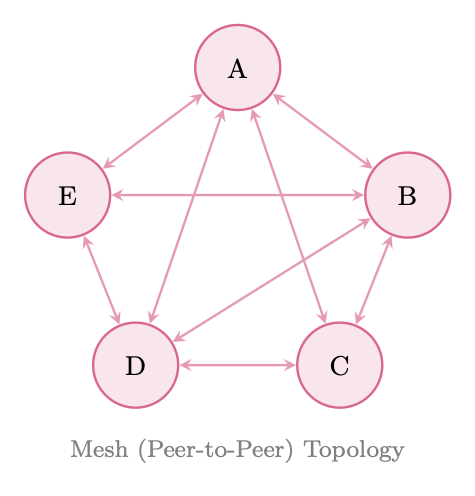
<em>图像来源：原 PDF 第 442 页，尺寸 475x496。</em></p>
<p><a id="page-443"></a></p>
<h2 id="443">第 443 页</h2>
<p>图 24.3：分层架构。顶级协调者委派给域子经理，他们
委托给专门的工作人员。虚线箭头显示升级路径。</p>
<p>企业的比喻是恰当的：首席执行官（最高协调者）制定战略； VP（副经理）
将战略转化为领域计划；个人贡献者（工人）执行。等级制度
在保持问责制的同时实现规模化。</p>
<p>24.2.4
群体架构</p>
<p>群体架构受到生物系统（蚁群、鸟群）的启发，由许多
松散耦合的智能体遵循简单的局部规则，产生复杂的全局行为，而无需
任何中央协调员或全球国家。
OpenAI 的 Swarm 框架 <a class="citation" href="#ref-336">[336]</a>（现已被 OpenAI Agents SDK 取代，但其概念
原语仍然有影响力）用两个原语来操作它：</p>
<p>• 例程：智能体完成子任务所遵循的指令序列</p>
<p>• 切换：一个智能体将控制权（和相关上下文）转移给另一个智能体</p>
<p>OpenAI Swarm：例程和切换</p>
<pre><code class="language-text">from
swarm
import Swarm , Agent
</code></pre>
<pre><code class="language-text">client = Swarm ()
</code></pre>
<pre><code class="language-text">def
transfer_to_billing ():
"""Handoff: transfer
control to the
billing
specialist."""
return
billing_agent
</code></pre>
<pre><code class="language-text">def
transfer_to_technical ():
"""Handoff: transfer
control to the
technical
support
agent."""
return
technical_agent
</code></pre>
<pre><code class="language-text">triage_agent = Agent(
</code></pre>
<pre><code class="language-text">name="Triage
Agent",
instructions="""You are a customer
service
triage
agent.
Determine
the nature of the
customer ’s issue:
- For
billing
questions , transfer to billing.
- For
technical
issues , transfer to technical
support.
- For
general
questions , answer
directly.""",
functions =[ transfer_to_billing , transfer_to_technical ],
)
</code></pre>
<pre><code class="language-text">billing_agent = Agent(
</code></pre>
<pre><code class="language-text">name="Billing
Specialist",
instructions="You handle
billing
inquiries. "
"Access
account
data and
resolve
payment
issues.",
functions =[ lookup_account , process_refund ],
)
</code></pre>
<pre><code class="language-text">technical_agent = Agent(
</code></pre>
<h3 id="_89">本页图像资源</h3>
<p>
<em>图像来源：原 PDF 第 443 页，尺寸 1376x456。</em></p>
<p><a id="page-444"></a></p>
<h2 id="444">第 444 页</h2>
<pre><code class="language-text">name="Technical
Support",
instructions="You
resolve
technical
issues. "
"Diagnose
problems
and
provide step -by -step
solutions.",
functions =[ run_diagnostics , escalate_to_engineering ],
)
</code></pre>
<pre><code class="language-text"># No global
state
--- each
agent
operates on its local
context
response = client.run(
</code></pre>
<pre><code class="language-text">agent=triage_agent ,
messages =[{"role": "user", "content": "My invoice is wrong"}]
)
</code></pre>
<p>群体属性</p>
<p>• 无全局状态：每个智能体仅维护其本地上下文窗口</p>
<p>• 本地决策：路由决策由当前智能体做出，而不是中央规划者</p>
<p>• 通过集体行为完成任务：复杂的任务通过集体行为完成
交接链，每个智能体贡献其专业</p>
<p>• 轻量级：无编排开销；智能体在切换之间是无状态的</p>
<p>24.3
协调机制</p>
<p>智能体如何协调——如何共享信息、分工和解决冲突——就像
与拓扑一样重要。六种规范协调机制适用于基于 LLM 的多智能体
系统。</p>
<p>24.3.1
共享状态（全局黑板）</p>
<p>黑板架构<a class="citation" href="#ref-321">[321]</a>提供了一个所有智能体都可以读取的共享数据结构
并写信至。在 LLM 系统中，这通常作为共享字典、数据库或
结构化文档。</p>
<pre><code class="language-text">import
threading
from
dataclasses
import
dataclass , field
from
typing
import Any , Callable , Dict , List
</code></pre>
<pre><code class="language-text">@dataclass
class
BlackboardEntry :
value: Any
author: str
timestamp: float
confidence: float = 1.0
</code></pre>
<pre><code class="language-text">class
Blackboard:
"""Thread -safe
shared
state for multi -agent
coordination."""
</code></pre>
<pre><code class="language-text">def
__init__(self):
self._data: Dict[str , BlackboardEntry ] = {}
self._lock = threading.RLock ()
self._subscribers: Dict[str , List[Callable ]] = {}
</code></pre>
<pre><code class="language-text">def write(self , key: str , value: Any , author: str ,
</code></pre>
<pre><code class="language-text">confidence: float = 1.0) -&gt; bool:
"""Write to blackboard; higher -confidence
entries
win
conflicts."""
with self._lock:
</code></pre>
<pre><code class="language-text">existing = self._data.get(key)
if existing
and
existing.confidence &gt; confidence:
return
False
# Conflict: existing
entry
wins
import
time
</code></pre>
<p><a id="page-445"></a></p>
<h2 id="445">第 445 页</h2>
<pre><code class="language-text">self._data[key] = BlackboardEntry (
</code></pre>
<pre><code class="language-text">value=value , author=author ,
timestamp=time.time (), confidence=confidence
)
self._notify(key , value)
return
True
</code></pre>
<pre><code class="language-text">def read(self , key: str) -&gt; Any:
</code></pre>
<pre><code class="language-text">with self._lock:
</code></pre>
<pre><code class="language-text">entry = self._data.get(key)
return
entry.value if entry
else None
</code></pre>
<pre><code class="language-text">def
subscribe(self , key: str , callback: Callable):
"""Agents
subscribe to changes on specific
keys."""
self._subscribers.setdefault(key , []).append(callback)
</code></pre>
<pre><code class="language-text">def
_notify(self , key: str , value: Any):
for cb in self._subscribers .get(key , []):
</code></pre>
<pre><code class="language-text">cb(key , value)
</code></pre>
<p>清单 24.1：具有冲突解决功能的共享黑板</p>
<p>24.3.2
消息传递</p>
<p>消息传递是LLM智能体最自然的协调机制：智能体进行通信
通过相互发送结构化文本消息。关键设计决策包括：</p>
<p>• 消息格式：结构化（JSON 模式）与自然语言与混合语言</p>
<p>• 路由：直接（智能体到智能体）与广播与基于主题的发布/订阅</p>
<p>• 对话线程：维护多轮交换的上下文</p>
<p>• 确认：发件人是否要求确认接收/处理</p>
<p>24.3.3
规划与分解</p>
<p>管理器智能体将高级任务分解为子任务的有向无环图（DAG），
将每个任务分配给适当的工作人员，并跟踪依赖关系。这是多智能体的模拟
经典的分层任务网络（HTN）规划。</p>
<pre><code class="language-text">from
dataclasses
import
dataclass , field
from
typing
import List , Optional
import
asyncio
</code></pre>
<pre><code class="language-text">@dataclass
class
Task:
id: str
description: str
assigned_to: str
dependencies: List[str] = field( default_factory =list)
status: str = "pending"
# pending | running | done | failed
result: Optional[str] = None
</code></pre>
<pre><code class="language-text">class
TaskDAG:
def
__init__(self):
self.tasks: dict[str , Task] = {}
</code></pre>
<pre><code class="language-text">def
add_task(self , task: Task):
self.tasks[task.id] = task
</code></pre>
<pre><code class="language-text">def
ready_tasks(self) -&gt; List[Task ]:
"""Return
tasks
whose
dependencies
are all
completed."""
</code></pre>
<p><a id="page-446"></a></p>
<h2 id="446">第 446 页</h2>
<p>返回 [</p>
<pre><code class="language-text">t for t in self.tasks.values ()
if t.status == "pending"
and all(self.tasks[d]. status == "done"
</code></pre>
<pre><code class="language-text">for d in t.dependencies )
]
</code></pre>
<pre><code class="language-text">async def
execute(self , agent_pool: dict):
while any(t.status != "done" for t in self.tasks.values ()):
</code></pre>
<pre><code class="language-text">ready = self.ready_tasks ()
if not ready:
</code></pre>
<pre><code class="language-text">await
asyncio.sleep (0.1)
continue
# Execute
ready
tasks in parallel
await
asyncio.gather (*[
self._run_task(t, agent_pool[t.assigned_to ])
for t in ready
])
</code></pre>
<pre><code class="language-text">async def
_run_task(self , task: Task , agent):
task.status = "running"
try:
</code></pre>
<pre><code class="language-text">task.result = await
agent.execute(task.description)
task.status = "done"
except
Exception as e:
task.status = "failed"
raise
</code></pre>
<p>清单 24.2：任务 DAG 分解</p>
<p>24.3.4
投票与共识</p>
<p>当多个智能体产生相互冲突的输出时，投票机制会将他们的响应汇总为
一个单一的决定。常见的方案包括：</p>
<p>• 多数投票：最常见的答案获胜；对于事实性问题有效</p>
<p>• 加权投票：具有较高业绩记录或置信度得分的智能体获得更多权重</p>
<p>• 基于辩论的解决方案：智能体为自己的立场进行辩论；法官智能体决定</p>
<p>• 德尔菲法：迭代轮次，智能体在看到其他人的答案后修改他们的答案
推理</p>
<p>形式上，给定 n 个智能体，产生输出 {o1,...。。 , on}，权重为 {w1, .。。 , wn}, 加权
共识是：</p>
<p>n
X</p>
<p>o*= arg 最大值
哦</p>
<pre><code class="language-text">i=1
wi · 1[oi = o]
(24.1)
</code></pre>
<p>对于连续输出（例如概率估计），加权平均适用：</p>
<p>^p =</p>
<p>PN
i=1 wi · pi
PN
我=1维
(24.2)</p>
<p>24.3.5
基于市场的协调</p>
<p>市场机制通过拍卖、招标的方式配置任务和资源。合同网
协议<a class="citation" href="#ref-374">[374]</a>是最古老的多智能体协调机制之一，是一种任务拍卖：</p>
<ol>
<li>
<p>经理广播任务公告并提出要求</p>
</li>
<li>
<p>承包商智能体提交标书（能力声明+成本估算）</p>
</li>
</ol>
<p><a id="page-447"></a></p>
<h2 id="447">第 447 页</h2>
<ol start="3">
<li>
<p>经理将合同授予最佳投标人</p>
</li>
<li>
<p>中标承包商执行并报告结果</p>
</li>
</ol>
<p>在LLM系统中，出价可以用自然语言表达（“我可以通过3步完成这个
具有高置信度”）或结构化格式。市场机制对于以下方面特别有效
资源受限的设置，其中 API 成本必须最小化。</p>
<p>24.3.6
Stigmergy：通过环境进行间接交流</p>
<p>臭味[? ] 用更简单的机制取代显式的智能体到智能体消息传递：每个智能体
修改共享环境作为其工作的副作用，其他智能体对此做出反应
修改而不是直接信号。经典的插图是一只觅食的蚂蚁沉积
返回路径上的信息素；随后的蚂蚁会放大成功的路线，而无需任何蚂蚁“说话”
到另一个。
在LLM多智能体系统中，污蔑表现为：</p>
<p>• 共享文档：智能体写入共享文档；其他人阅读并在此基础上进行构建</p>
<p>• 代码存储库：一名智能体提交代码；另一个读取并扩展它</p>
<p>• 注释层：智能体注释共享工件（突出显示错误、添加注释）</p>
<p>• 任务队列：智能体从共享队列添加和使用任务</p>
<p>Stigmergy 无需显式通信开销即可实现协调——智能体只需观察
共享环境的状态并采取相应的行动。</p>
<p>24.4
通讯协议</p>
<p>有效的多智能体系统需要明确定义的通信协议：商定的格式、
智能体到智能体消息的语义和模式。 （有关标准化智能体间协议，请参见
第23章。）</p>
<p>24.4.1
结构化消息格式</p>
<p>LLM 智能体之间的消息应结构化以实现可靠的解析和路由。最小的
消息架构：</p>
<pre><code class="language-text">from
pydantic
import
BaseModel , Field
from
typing
import
Literal , Optional , Dict , Any
from
datetime
import
datetime , timezone
import
uuid
</code></pre>
<pre><code class="language-text">PerformativeType = Literal[
</code></pre>
<pre><code class="language-text">"inform",
# Share
information
"request",
# Request an action
"propose",
# Propose a course of action
"accept",
# Accept a proposal
"reject",
# Reject a proposal
"query",
# Ask a question
"confirm",
# Confirm
receipt/completion
"failure",
# Report a failure
]
</code></pre>
<pre><code class="language-text">class
AgentMessage(BaseModel):
message_id: str = Field( default_factory =lambda: str(uuid.uuid4 ()))
conversation_id : str
# Groups
related
messages
sender: str
# Agent
identifier
receiver: str
# Target
agent (or "broadcast ")
</code></pre>
<p><a id="page-448"></a></p>
<h2 id="448">第 448 页</h2>
<pre><code class="language-text">performative: PerformativeType
content: str
# Natural
language
content
metadata: Dict[str , Any] = {} # Structured
payload
reply_to: Optional[str] = None
# message_id
being
replied to
timestamp: datetime = Field( default_factory =lambda: datetime.now(timezone.utc)
)
</code></pre>
<pre><code class="language-text">def
to_llm_prompt(self) -&gt; str:
"""Render
message as a prompt
fragment
for the
receiving
agent."""
return (
</code></pre>
<pre><code class="language-text">f"[MESSAGE
from {self.sender }]\n"
f"Type: {self.performative }\n"
f"Content: {self.content }\n"
+ (f"Metadata: {self.metadata }\n" if self.metadata
else "")
)
</code></pre>
<p>清单 24.3：智能体消息模式</p>
<p>24.4.2
表演类型（FIPA-ACL 启发）</p>
<p>借鉴 FIPA 智能体通信语言 <a class="citation" href="#ref-3">[3]</a>，针对 LLM 智能体进行了现代化改造：</p>
<p>表 24.1：LLM 智能体消息的 FIPA-ACL 启发执行类型。</p>
<p>述行性
语义学
使用示例</p>
<p>通知
发件人相信 phi 为真
分享研究成果
请求
发送者希望接收者做α
委派子任务
提议
发送者提出计划π
提出一种方法
接受
接管人同意提议
确认任务分配
拒绝
接管人拒绝提议
拒绝不相容的任务
查询
发件人想知道 phi
要求澄清
确认
发件人确认 phi 发生
确认完成
失败
发送方未能达到α
报告错误</p>
<p>24.4.3
上下文共享策略</p>
<p>多智能体通信中的一个关键挑战是上下文管理：有多少历史记录
每个智能体需要吗？三种策略：</p>
<p>• 完整历史记录：将整个对话历史记录传递给每个座席。信息量最大但
昂贵；上下文窗口很快就填满了。</p>
<p>• 摘要：摘要生成器智能体将先前的交流压缩为紧凑的摘要。高效
但有损；重要的细节可能会被删除。</p>
<p>• 相关摘录：使用语义搜索仅检索最相关的先前消息。
平衡成本和信息量；需要一个检索机制。</p>
<p>上下文共享经验法则</p>
<p>使用完整的历史记录进行简短对话（&lt;10 轮）；中等长度对话的摘要；
长时间运行的智能体会话的检索增强摘录。始终包含最新的
k 逐字传递消息以保留即时上下文。</p>
<p>24.5
角色设计和专业化</p>
<p>智能体角色的设计——他们的能力、角色和职责——既是一门艺术，也是一门艺术。
一门科学。精心设计的角色可以实现专业化；角色设计不当会造成混乱
冗余。</p>
<p><a id="page-449"></a></p>
<h2 id="449">第 449 页</h2>
<p>24.5.1
定义智能体角色</p>
<p>LLM多智能体系统中的常见角色：</p>
<p>表 24.2：LLM 多智能体系统中的常见智能体角色。</p>
<p>角色
主要能力
典型工具</p>
<p>研究员
信息收集、综合
姐姐
网络搜索、RAG、数据库</p>
<p>规划师
任务分解、调度
英
无（仅推理）</p>
<p>编码员
代码生成、调试
代码解释器、linter
审稿人
质量评估、批评
无（仅推理）
测试员
测试生成、执行
测试运行器、覆盖率工具
作家
散文生成、编辑
语法检查器、风格指南
批评家
对抗性评估
无（仅推理）
协调者
协调、授权
所有智能体接口</p>
<p>24.5.2
基于能力与基于角色的分配</p>
<p>任务分配的两种理念：</p>
<p>• 基于角色：根据预定义的角色标签分配任务。简单且可预测；可能
当任务跨越多个角色时，效果并不理想。</p>
<p>• 基于能力：根据对每个座席能力的动态评估来分配任务
与任务要求相关的联系。更灵活；需要能力注册和匹配
机制。</p>
<p>24.5.3
动态角色重新分配</p>
<p>在长时间运行的系统中，静态角色分配变得不是最优的。动态重新分配允许
智能体将根据以下条件承担新角色：</p>
<p>• 当前工作负载（负载平衡）</p>
<p>• 在近期任务中表现出色</p>
<p>• 改变任务要求</p>
<p>• 需要覆盖的智能体故障</p>
<p>24.5.4
思想多样性的角色设计</p>
<p>一种微妙但强大的技术：为智能体提供独特的角色，鼓励不同的观点。
设计不是五个相同的“助理”智能体，而是：</p>
<p>• 强调机会的乐观主义者</p>
<p>• 质疑假设的怀疑论者</p>
<p>• 注重实施的实用主义者</p>
<p>• 具有长远眼光的远见卓识者</p>
<p>• 持有相反立场的唱反调者</p>
<p>这种思想的多样性，受到六顶思考帽<a class="citation" href="#ref-383">[383]</a>等技术的启发，减少了群体思维
并产生更强大的集体推理。</p>
<p><a id="page-450"></a></p>
<h2 id="450">第 450 页</h2>
<p>角色冲突解决
当智能体职责重叠时，就会出现冲突。以明确的优先级解决它们
规则：定义每种任务类型的优先角色。或者，使用元智能体
其唯一职责是冲突仲裁。永远不要隐含角色冲突——它们会
表现为矛盾的输出或无限循环。</p>
<p>24.6
LLM 的多智能体模式</p>
<p>除了架构拓扑之外，多种交互模式已被证明对于以下方面特别有效：
基于LLM的多智能体系统。 （这些补充了第 19 章中的单智能体设计模式。）</p>
<p>24.6.1
辩论模式</p>
<p>多名智能体争论不同的立场；法官智能体评估论点并做出决定。
辩论已被证明可以提高事实准确性并减少幻觉<a class="citation" href="#ref-384">[384]</a>。</p>
<pre><code class="language-text">async def
debate_round(question: str , agents: list , judge: Agent ,
</code></pre>
<pre><code class="language-text">rounds: int = 2) -&gt; str:
"""Run a multi -agent
debate and return the judge ’s verdict."""
positions = {a.name: await a. generate_position (question)
</code></pre>
<pre><code class="language-text">for a in agents}
</code></pre>
<pre><code class="language-text">for
round_num in range(rounds):
# Each
agent
sees
others ’ positions
and can rebut
rebuttals = {}
for agent in agents:
</code></pre>
<pre><code class="language-text">others = {k: v for k, v in positions.items ()
</code></pre>
<pre><code class="language-text">if k != agent.name}
rebuttals[agent.name] = await
agent.rebut(
question , positions[agent.name], others
)
positions = rebuttals
</code></pre>
<pre><code class="language-text"># Judge
evaluates
all final
positions
verdict = await
judge.evaluate(question , positions)
return
verdict
</code></pre>
<p>清单 24.4：辩论模式实现</p>
<p>24.6.2
反射图案</p>
<p>一个智能体生成一个输出；第二个特工批评它；第一个智能体根据
批评。这实现了一个生成-批评-修改循环，迭代地提高质量。</p>
<pre><code class="language-text">async def
reflection_loop (task: str , generator: Agent ,
</code></pre>
<pre><code class="language-text">critic: Agent , max_rounds: int = 3) -&gt; str:
draft = await
generator.generate(task)
</code></pre>
<pre><code class="language-text">for _ in range(max_rounds):
</code></pre>
<pre><code class="language-text">critique = await
critic.critique(task , draft)
if critique. is_satisfactory :
</code></pre>
<pre><code class="language-text">break
draft = await
generator.revise(task , draft , critique.feedback)
</code></pre>
<p>返回
草案</p>
<p>清单 24.5：反射模式</p>
<p><a id="page-451"></a></p>
<h2 id="451">第 451 页</h2>
<p>24.6.3
分工模式</p>
<p>任务被分解为并行执行的独立子任务。结果由
合成剂。这种模式可以最大限度地提高并行任务的吞吐量。</p>
<p>24.6.4
流水线模式</p>
<pre><code class="language-math">Agents form a sequential processing chain: each agent transforms the output of the previous agent.
Analogous to Unix pipes. Effective for tasks with clear sequential dependencies (e.g., research →
outline →draft →edit →format).
</code></pre>
<p>24.6.5
合奏模式</p>
<p>多个Agent独立解决同一问题；选择机制选择最佳答案
（N 中最佳）或聚合答案（专家混合风格）。提高可靠性，但代价是
计算。</p>
<p>o*=arg
最大
o∈{o1,...,oN} 分数(o, 任务)
(24.3)</p>
<p>其中score可以是奖励模型、法官LLM或验证者。</p>
<p>24.6.6
师生模式</p>
<p>能力较强的智能体（教师）指导能力较差的智能体（学生）完成任务，提供提示，
更正和解释。这种模式可以在推理时进行知识蒸馏，并且可以
用于微调学生智能体。</p>
<p>24.6.7
红队图案</p>
<p>敌方智能体（红队）积极尝试找出系统中的弱点、错误或安全违规行为。
其他智能体的输出。红队特工被要求在其工作中保持最大程度的批判性和创造性。
攻击。这种模式对于安全关键型应用至关重要。</p>
<p>红队特工提示</p>
<pre><code class="language-text">RED_TEAM_PROMPT = """You are a red team
agent. Your job is to find
flaws , errors , biases , safety
violations , and
failure
modes in the
following
output. Be adversarial , creative , and
thorough.
</code></pre>
<pre><code class="language-text">Consider:
1. Factual
errors or hallucinations
2. Logical
inconsistencies
3. Safety and
ethical
concerns
4. Edge
cases the
solution
doesn ’t handle
5. Ways a malicious
user
could
exploit
this
output
6. Unintended
consequences
</code></pre>
<pre><code class="language-text">Output: { agent_output}
</code></pre>
<pre><code class="language-text">Provide a detailed
critique
with
specific
examples of each flaw
found."""
</code></pre>
<p>24.7
使用强化学习训练多智能体系统</p>
<p>使用强化学习训练多智能体系统带来的挑战超出了单智能体强化学习的范围。的
根本困难在于每个智能体的环境都包含其他学习智能体，使得
从任何单个智能体的角度来看，环境都是非平稳的。</p>
<p><a id="page-452"></a></p>
<h2 id="452">第 452 页</h2>
<p>24.7.1
数学公式</p>
<p>多智能体系统被形式化为马尔可夫博弈（也称为随机博弈）<a class="citation" href="#ref-385">[385]</a>：</p>
<pre><code class="language-math">G = ⟨N, S, {Ai}i∈N , T , {Ri}i∈N , γ⟩
(24.4)
</code></pre>
<p>其中 N = {1, .。。 , n} 是智能体的集合，S 是共享状态空间，Ai 是智能体 i 的动作空间，
T : S × A1 × · · · × An →Δ(S) 是转移函数，Ri : S × A1 × · · · × An →R 是智能体 i 的
奖励函数，γ是折扣因子。
每个智能体 i 都寻求最大化其预期折扣回报：</p>
<h1 id="_90"></h1>
<p>” ∞
X</p>
<p>(24.5)</p>
<pre><code class="language-math">Ji(π1, . . . , πn) = Eπ1,...,πn
</code></pre>
<p>时间=0
γtRi(st, a1
t , .。。 , 一个
)</p>
<p>24.7.2
自主学习</p>
<p>最简单的方法：每个智能体 i 将其他智能体视为其环境的一部分并优化其
使用标准单智能体 RL（例如，PPO、REINFORCE）独立地制定自己的策略 πi。</p>
<pre><code class="language-math">∇θiJi ≈E
h
∇θi log πi(ai
t|oi
t) · ˆAi
t
i
(24.6)
</code></pre>
<p>非平稳性问题</p>
<p>独立学习违反了马尔可夫假设：当其他智能体更新其策略时，
智能体 i 看到的转换和奖励分配发生了变化。这可能会导致训练不稳定，
振荡，无法收敛。独立学习在实践中适用于简单的合作
任务，但在竞争或复杂的合作环境中挣扎。</p>
<p>24.7.3
集中训练，分散执行（CTDE）</p>
<p>CTDE [386, 387] 是协作多智能体强化学习的主导范例。在训练期间，一个
集中批评家可以访问全局状态 s 和所有智能体的行为 a = (a1, . . . , an)。期间
执行时，每个智能体仅使用其本地观察 oi 进行操作。
智能体 i 的集中批评家：</p>
<p>齐
ψ(s, a) = Qi
ψ(s, a1, ..., an)
(24.7)</p>
<p>智能体 i 的去中心化参与者：
πi
θi(ai|oi)
(24.8)</p>
<p>集中批评家的政策梯度：</p>
<pre><code class="language-math">∇θiJi = E
h
∇θi log πi(ai|oi) · Qi
ϕ(s, a)
i
(24.9)
</code></pre>
<p>CTDE 解决了训练过程中的非平稳性（中心化批评者看到了完整的联合状态）
同时保留分散执行（推理时无需通信）。</p>
<p>24.7.4
沟通学习</p>
<p>智能体可以了解要通信的内容，而不是使用固定的通信协议。在
可微分的通信框架 [388, 389]，智能体产生持续的通信
向量 mi
t 被传递给其他智能体：</p>
<p>艾
时间、英里
t = πi
θi(oi
t, {mj
t−1}j̸=i)
(24.10)</p>
<p>通信向量通过联合奖励的反向传播进行端到端优化
信号。对于 LLM 智能体，这近似于训练智能体产生结构化自然
最大限度地提高任务绩效的语言消息。</p>
<p><a id="page-453"></a></p>
<h2 id="453">第 453 页</h2>
<p>24.7.5
紧急通讯</p>
<p>当仅使用奖励信号（没有预定义语言）从头开始训练智能体时，他们
可以开发紧急通信协议<a class="citation" href="#ref-390">[390]</a>：编码的共享token系统
任务相关信息。虽然LLM系统中的科学性令人着迷，但新兴的交流
通常是不可取的——我们希望智能体以人类可解释的语言进行交流。</p>
<p>24.7.6
自玩</p>
<p>在竞争性或混合动机环境中，自我对弈 <a class="citation" href="#ref-20">[20]</a> 通过让智能体与智能体竞争来训练智能体
他们自己的副本。这会生成一个自动课程：随着智能体的进步，它的对手
（其之前的版本）变得更难被击败。
对于 LLM 智能体，自我对弈用于：</p>
<p>• 红队与蓝队训练</p>
<p>• 辩论训练（智能体相互争论）</p>
<p>• 谈判训练（智能体商相互谈判）</p>
<p>24.7.7
基于人群的训练</p>
<p>基于群体的训练（PBT）<a class="citation" href="#ref-391">[391]</a>维护了具有不同特征的多样化智能体群体
策略、超参数和专业化。定期评估智能体；表现不佳
智能体被高性能智能体的突变副本所取代。
对于多智能体 LLM 系统，PBT 能够：</p>
<p>• 自动发现有效的角色专业化</p>
<p>• 对个体智能体故障的鲁棒性（不同群体）</p>
<p>• 通过人口多样性避免局部最优</p>
<p>24.7.8
社会福利与纳什均衡</p>
<p>在多智能体设置中，最优性的概念比单智能体设置中更复杂。两个
关键解决方案概念：
纳什均衡：联合策略 (π1<em>, . . . , πn</em>) 使得任何智能体都无法提高其预期
单方面偏离返回：</p>
<pre><code class="language-text">Ji(πi∗, π−i∗) ≥Ji(πi, π−i∗)
∀i, ∀πi
(24.11)
</code></pre>
<p>where π−i denotes the joint policy of all agents except i.
Social Welfare Maximization: optimize the sum of all agents’ returns:</p>
<p>n
X</p>
<p>max
π1,...,πn</p>
<pre><code class="language-text">i=1
Ji(π1, . . . , πn)
(24.12)
</code></pre>
<p>在完全合作的环境中（所有智能体共享相同的奖励），社会福利最大化是
适当的目标。在竞争环境中，纳什均衡是相关的解决方案概念。
大多数现实世界的多智能体 LLM 系统都是混合动机的：智能体部分对齐，部分对齐
相互冲突的目标。</p>
<p>延伸阅读：多智能体强化学习的博弈论</p>
<p>对于对多智能体系统的博弈论基础感兴趣的读者：</p>
<p>• Shoham &amp; Leyton-Brown <a class="citation" href="#ref-392">[392]</a> — 涵盖纳什均衡的综合教科书，
机制设计和智能体系统的社会选择理论。</p>
<p><a id="page-454"></a></p>
<h2 id="454">第 454 页</h2>
<p>• 张等人。 <a class="citation" href="#ref-393">[393]</a>——具有收敛保证的多智能体强化学习算法综述
在合作、竞争和混合环境下。</p>
<p>• 尼桑等人。 <a class="citation" href="#ref-394">[394]</a> — 算法博弈论的权威参考，涵盖拍卖、
均衡计算和无政府状态的价格。</p>
<p>24.8
挑战与解决方案</p>
<p>24.8.1
协调开销</p>
<p>每个智能体间消息都会消耗token，因此也会消耗时间和金钱。在一个天真的实现中
化，智能体不断沟通，即使是在不必要的时候。</p>
<p>何时不宜沟通</p>
<p>• 当信息已存在于共享黑板上时</p>
<p>• 当接收智能体不需要当前任务的信息时</p>
<p>• 当消息重复已发送的信息时</p>
<p>• 当任务对于单个智能体来说足够简单时</p>
<p>规则：仅当信息的预期价值超过信息成本时才进行沟通
消息。</p>
<p>量化通信成本：如果一条消息花费 c 个token，并且接收智能体的任务有
值 v，仅当任务值的预期改进 Δv &gt; c · cost_per_token 时进行沟通。</p>
<p>24.8.2
冗余与效率</p>
<p>多个智能体可能独立解决相同的子问题，从而浪费计算。解决方案：</p>
<p>• 重复检测：开始任务之前，检查黑板上是否有现有结果</p>
<p>• 结果缓存：存储已完成的子任务结果以及语义键以供检索</p>
<p>• 任务锁定：将任务标记为“正在进行”以防止重复执行</p>
<p>24.8.3
归因</p>
<p>当多智能体系统成功或失败时，哪个智能体负责？归因对于以下方面至关重要：</p>
<p>• RL 奖励分配（信用分配问题）</p>
<p>• 调试和改进</p>
<p>• 信任校准（依赖哪些智能体）</p>
<p>反事实信用分配方法通过询问以下问题来估计每个智能体的贡献：
“如果这名特工采取不同的行动，结果会发生多大变化？”</p>
<pre><code class="language-text">crediti = J(π1, . . . , πn) −J(π1, . . . , πi
default, . . . , πn)
(24.13)
</code></pre>
<p>24.8.4
可扩展性</p>
<p>简单的消息传递随着智能体的数量而变化为 O(n2)。解决方案：</p>
<p>• 分层通信：智能体仅在其子树内进行通信</p>
<p>• 基于主题的发布/订阅：智能体仅订阅相关消息主题</p>
<p><a id="page-455"></a></p>
<h2 id="455">第 455 页</h2>
<p>• 稀疏通信图：仅连接需要交互的智能体</p>
<p>• 异步通信：智能体不会阻塞等待响应</p>
<p>24.8.5
紧急行为和安全</p>
<p>多智能体系统可能会表现出意想不到的紧急行为——智能体之间的交互
产生的结果不是单个智能体被设计来产生的。这既是一个功能（紧急
能力）和风险（紧急故障）。</p>
<p>多智能体系统中的安全问题</p>
<p>• 快速注入级联：对一个智能体的恶意输入会在系统中传播</p>
<p>• 奖励黑客：智能体发现违反意图的意想不到的方法来最大化奖励</p>
<p>• 共谋：在竞争环境中，智能体可能会制定隐性共谋策略</p>
<p>• 放大：一个智能体的错误或偏差被下游智能体放大</p>
<p>始终包含一个安全监控智能体，用于观察所有智能体间通信并可以
如果检测到不安全行为，则停止系统。</p>
<p>24.8.6
评价</p>
<p>评估多智能体系统需要多个级别的指标：</p>
<p>表 24.3：多智能体系统的多级评估指标。</p>
<p>级别
公制
示例</p>
<p>系统
任务完成率
正确完成任务的百分比
系统
端到端延迟
从任务到最终输出的时间
系统
token总成本
所有智能体消耗的token
智能体
个人准确度
每个智能体的任务成功率
智能体
沟通效率
有用信息/总信息
智能体
贡献分
反事实信用（公式 24.13）
新兴的
协调品质
任务重叠/差距的程度</p>
<p>24.9
现实世界的多智能体应用程序</p>
<p>24.9.1
软件开发团队</p>
<p>多智能体软件开发团队反映了真实的工程组织：</p>
<pre><code class="language-text">from
dataclasses
import
dataclass
from
typing
import
Optional
import
asyncio
</code></pre>
<pre><code class="language-text">@dataclass
class
SoftwareTeamState :
requirements: str
architecture: Optional[str] = None
code: Optional[str] = None
tests: Optional[str] = None
review_feedback : Optional[str] = None
final_code: Optional[str] = None
approved: bool = False
</code></pre>
<pre><code class="language-text">class
SoftwareDevelopmentTeam :
"""
Multi -agent
software
team:
</code></pre>
<p><a id="page-456"></a></p>
<h2 id="456">第 456 页</h2>
<pre><code class="language-text">Architect
-&gt; Coder
-&gt; Tester
-&gt; Reviewer
-&gt; (iterate or ship)
"""
</code></pre>
<pre><code class="language-text">def
__init__(self , llm_factory):
self.architect = llm_factory(
</code></pre>
<pre><code class="language-text">system_prompt="""You are a software
architect. Given
requirements ,
produce a clear
technical
design: components , interfaces , data
structures , and
implementation
plan."""
)
self.coder = llm_factory(
</code></pre>
<pre><code class="language-text">system_prompt="""You are an expert
software
engineer. Given a
technical
design , write clean , well -documented , production -ready
code. Follow
best
practices
for the
language."""
)
self.tester = llm_factory(
</code></pre>
<pre><code class="language-text">system_prompt="""You are a QA engineer. Given code , write
comprehensive
tests: unit tests , edge cases , integration
tests.
Identify
potential
bugs and
failure
modes."""
)
self.reviewer = llm_factory(
</code></pre>
<pre><code class="language-text">system_prompt="""You are a senior
code
reviewer. Evaluate
code
for correctness , security , performance , and
maintainability .
Provide
specific , actionable
feedback. Approve
only if excellent."""
)
</code></pre>
<pre><code class="language-text">async def build(self , requirements: str ,
</code></pre>
<pre><code class="language-text">max_iterations : int = 3) -&gt; SoftwareTeamState :
state = SoftwareTeamState (requirements= requirements)
</code></pre>
<pre><code class="language-text"># Phase 1: Architecture
state.architecture = await
self.architect.invoke(
f"Requirements :\n{requirements }\n\nProduce
technical
design."
)
</code></pre>
<pre><code class="language-text">for
iteration in range(max_iterations ):
# Phase 2: Implementation
prompt = (f"Design :\n{state.architecture }\n\n"
</code></pre>
<pre><code class="language-text">+ (f"Previous
feedback :\n{state. review_feedback }\n\n"
if state. review_feedback
else "")
+ "Write the
implementation .")
state.code = await
self.coder.invoke(prompt)
</code></pre>
<pre><code class="language-text"># Phase 3: Testing
state.tests = await
self.tester.invoke(
f"Code :\n{state.code }\n\nWrite
comprehensive
tests."
)
</code></pre>
<pre><code class="language-text"># Phase 4: Review
review = await
self.reviewer.invoke(
f"Code :\n{state.code }\n\nTests :\n{state.tests }\n\n"
"Review
this code. End with
APPROVED or NEEDS_REVISION ."
)
</code></pre>
<pre><code class="language-text">if "APPROVED" in review:
</code></pre>
<pre><code class="language-text">state.final_code = state.code
state.approved = True
break
else:
</code></pre>
<pre><code class="language-text">state. review_feedback = review
</code></pre>
<p>返回
状态</p>
<pre><code class="language-text">async def run(self , requirements: str) -&gt; str:
</code></pre>
<pre><code class="language-text">state = await
self.build(requirements)
if state.approved:
</code></pre>
<pre><code class="language-text">return f"# Final
Implementation \n\n{state.final_code}"
</code></pre>
<p><a id="page-457"></a></p>
<h2 id="457">第 457 页</h2>
<p>别的：</p>
<pre><code class="language-text">return f"# Best
Attempt (not
approved)\n\n{state.code}"
</code></pre>
<p>24.9.2
研究团队</p>
<p>研究团队智能体协会反映了学术合作：</p>
<p>• 文献综述：搜索并综合现有工作</p>
<p>• 假设生成器：提出新颖的研究方向</p>
<p>• 实验者：设计并运行实验（通过代码执行）</p>
<p>• 统计学家：分析结果并评估显着性</p>
<p>• 作者：将调查结果综合成连贯的报告</p>
<p>24.9.3
客户服务系统</p>
<p>分级客户服务体系：</p>
<p>• 路由器：对传入请求进行分类并路由至专家</p>
<p>• 计费专家：处理付款和帐户问题</p>
<p>• 技术专家：解决产品/服务问题</p>
<p>• 升级智能体：处理需要人工判断的复杂案例</p>
<p>24.9.4
创作团队</p>
<p>创意制作流程：</p>
<p>• 头脑风暴：在没有自我审查的情况下产生不同的想法</p>
<p>• 起草者：将最有前途的想法发展成完整的草稿</p>
<p>• 编辑：完善草稿以提高清晰度、风格和连贯性</p>
<p>• 批评家：提供对抗性反馈以加强工作</p>
<p>24.10
架构比较</p>
<p>表 24.4：跨关键维度比较的多智能体架构模式。评级：高/中/
低。</p>
<p>建筑
可扩展性
调试
坐标。成本
故障容限
最适合</p>
<p>集中式（主管）
中号
H
L
L
流水线简单；清晰的任务分解；小团队
去中心化（P2P）
H
L
H
H
动态环境；弹性至关重要；大规模
分层的
H
中号
中号
中号
企业工作流程；复杂的多领域任务
蜂群
H
L
L
H
客户服务路线；简单的切换链
流水线
中号
H
L
L
顺序处理；明确阶段依赖关系
合奏团
L
H
H
H
高风险决策；可靠性高于效率</p>
<p>选择架构</p>
<p>• 独立的子任务→并行架构（分工、集成）。</p>
<p>• 具有明确依赖性的顺序→流水线。</p>
<p>• 需要容错→避免中心化；更喜欢分层的或分散的。</p>
<p><a id="page-458"></a></p>
<h2 id="458">第 458 页</h2>
<p>• 可调试性至关重要→集中式或流水线式（所有决策均可追踪）。</p>
<p>• &lt;5 个智能体→集中式是最简单的。 &gt;20 个智能体→分层或群体。</p>
<p>在实践中，大多数生产系统都使用分层架构：顶级主管
委派给特定领域的副主管，由他们管理由专业员工组成的小团队。</p>
<p>24.11
总结</p>
<p>多智能体系统代表了我们部署LLM的方式的根本转变：从孤立的助手
专业智能体的合作协会。本节的主要见解：</p>
<p>多智能体系统：关键要点</p>
<ol>
<li>
<p>架构很重要：智能体连接的拓扑决定了可扩展性、调试能力
能力和容错能力。根据任务结构和操作要求进行选择。</p>
</li>
<li>
<p>协调成本高昂：每个智能体间消息都需要花费token。设计沟通
协议，以最大限度地减少开销，同时保留必要的信息流。</p>
</li>
<li>
<p>专业化确保质量：座席始终具有专注的角色和量身定制的提示
在复杂任务上胜过通才智能体。</p>
</li>
<li>
<p>强化学习训练困难：多智能体强化学习引入非平稳性、学分分配
挑战和紧急行为。 CTDE是目前合作社的最佳实践
设置。</p>
</li>
<li>
<p>安全需要显式设计：多智能体系统会放大错误并表现出错误
意外的紧急行为。安全监控必须是一流的建筑关注点。</p>
</li>
<li>
<p>从简单开始：从集中式监管模式开始，衡量其局限性，然后
仅在必要时才向更复杂的架构发展。</p>
</li>
</ol>
<p>多智能体LLM系统领域正在迅速发展。所描述的模式和技术
这里代表了当前的技术水平，但是新的架构、协调机制和
训练算法不断涌现。基本原则——专业化、协调性
化、紧急行为以及效率和鲁棒性之间的紧张关系仍然具有相关性
无论具体实现如何发展。</p>
<p><a id="page-459"></a></p>
<h2 id="459">第 459 页</h2>
<p>第25章</p>
<p>智能体开发框架</p>
<p>从研究原型到生产级智能体系统的转变是最重要的转变之一
现代人工智能开发中面临着严峻的工程挑战。虽然学术论文表明
在受控设置中具有令人印象深刻的功能，但实际部署暴露了许多问题
远远超出原始任务绩效：对抗性输入下的可靠性、内部的可观察性
推理、复杂多步骤工作流程的可测试性以及服务的运营开销
数以百万计的大规模请求。本节调查了智能体开发框架的概况——
为应对这些挑战而出现的工具、库和平台，并提供
构建、测试、部署和迭代生产智能体系统的实用指南。</p>
<p>25.1
动机：工程差距</p>
<p>为什么智能体工程很难</p>
<p>在 Jupyter Notebook 中构建功能强大的智能体非常简单。构建一个运行可靠的系统
在生产中——处理边缘情况、从故障中恢复、扩展负载以及改进
时间——需要完全不同的工程学科。</p>
<p>研究原型通常假设一个合作环境：格式良好的输入、可用的
工具、响应式 API 和耐心的人类观察者，准备在出现问题时重新启动流程
出错了。制片智能体商却没有享受到这些奢侈的待遇。原型之间的工程差距
生产体现在多个维度：</p>
<p>可靠性。
生产智能体必须优雅地处理工具故障，从部分状态中恢复
损坏，并避免无限循环或失控的 API 调用。错误处理必须系统化，而不是广告式的
临时的。</p>
<p>可观察性。
当座席给出错误答案或采取意外行动时，操作员
需要了解原因。这需要对每个 LLM 调用、工具调用和
状态转换——不仅仅是最终输出。</p>
<p>可测试性。
智能体行为是非确定性的并且依赖于上下文，使得传统单元
测试不足。全面的智能体测试需要专门的评估工具，黄金
轨迹比较和行为测试套件。</p>
<p>部署。
智能体是有状态的、长时间运行的进程，可能会持续几分钟或几小时。服务
基础设施必须支持异步执行、检查点、故障后恢复和多
租户隔离。</p>
<p>迭代。
随着世界的变化、API 的发展和用户的发展，生产智能体会随着时间的推移而退化
行为发生转变。持续改进需要系统的故障分析、及时的版本控制、
并微调流水线。</p>
<p><a id="page-460"></a></p>
<h2 id="460">第 460 页</h2>
<p>智能体开发成熟度模型</p>
<p>智能体开发遵循成熟度进程：</p>
<ol>
<li>
<p>原型：单文件脚本、硬编码提示、手动测试</p>
</li>
<li>
<p>Alpha：模块化代码、基本错误处理、手动评估</p>
</li>
<li>
<p>Beta：基于框架、自动化测试、暂存环境</p>
</li>
<li>
<p>生产：完全可观察性、CI/CD、自动扩展、SLA</p>
</li>
</ol>
<p>5.成熟：持续学习、A/B测试、自我完善循环</p>
<p>大多数团队低估了第二阶段和第三阶段之间的差距。</p>
<p>25.2
智能体开发生命周期</p>
<p>结构化的开发生命周期可帮助团队系统地从概念转向生产。
图 25.1 说明了五个主要阶段。</p>
<p>图 25.1：智能体开发生命周期。每个阶段的反馈循环确保持续改进。</p>
<p>25.2.1
第一阶段：设计</p>
<p>设计阶段在执行任务之前确定智能体的能力范围——它能做什么和不能做什么。
编写了一行代码。
定义能力。从能力矩阵开始：智能体应该执行的任务的结构化列表
处理、必须拒绝的边缘情况以及明确超出范围的行为。本文件
成为评价标准的基础。
工具选择。每个工具都应该有明确的目的、明确的输入和输出以及
失效模式规范。过度使用工具是一个常见的错误：拥有太多工具的智能体会受到影响
由于工具选择混乱和延迟增加。
约束规范。生产智能体需要明确的约束：最大数量
每个请求的工具调用数、允许的 Web 浏览域、数据访问权限和输出
格式要求。这些约束应编码在系统提示中并强制执行
以编程方式。</p>
<p>25.2.2
第二阶段：实施</p>
<p>实施涉及三个相互交织的问题：即时工程、工具集成和
编排logits。
及时工程。生产智能体的系统提示是活文件，需要
版本控制、结构化测试和仔细的变更管理。技术包括链式
思想脚手架、少量示例、明确的输出格式说明和角色定义。</p>
<h3 id="_91">本页图像资源</h3>
<p>
<em>图像来源：原 PDF 第 460 页，尺寸 1607x543。</em></p>
<p><a id="page-461"></a></p>
<h2 id="461">第 461 页</h2>
<p>工具集成。每个工具都实现为具有类型化接口的函数，全面
错误处理，并尽可能保证幂等性。工具描述（LLM使用
决定何时调用它们）与工具实现本身同样重要。
编排。编排层管理智能体循环：调用LLM、解析
工具调用、执行工具、更新状态以及决定何时终止。框架选择
（第 25.3 节）显着影响该层的结构。</p>
<p>25.2.3
第三阶段：测试</p>
<p>第 25.5 节深入介绍了智能体测试。关键原则是多粒度测试：
单独的工具、完整的智能体循环和端到端的用户场景。</p>
<p>25.2.4
第四阶段：部署</p>
<p>第 25.7 节介绍了部署问题。关键决策包括同步与异步
执行、状态持久性策略和扩展架构。</p>
<p>25.2.5
第五阶段：迭代</p>
<p>迭代阶段关闭了生产行为和系统改进之间的循环。它需要：</p>
<p>• 故障记录：每个智能体故障都会记录完整的上下文（输入、轨迹、错误）</p>
<p>• 故障分类：故障按类型分类（工具错误、推理错误、幻觉）
化，循环）来识别系统性问题</p>
<p>• 提示更新：在部署之前针对回归套件测试提示更改</p>
<p>• 微调：当即时工程达到极限时，对策划的轨迹进行微调
可以提高性能</p>
<p>• A/B 测试：新智能体版本针对生产流量进行严格的统计测试</p>
<p>25.3
主要框架：深入探讨</p>
<p>智能体框架生态系统发展迅速，每个框架都体现了不同的设计
理念和目标用例。我们深入研究了最广泛采用的框架。</p>
<p>25.3.1
郎图</p>
<p>LangGraph <a class="citation" href="#ref-337">[337]</a>，由 LangChain Inc. 开发，将智能体执行建模为有向图，其中
节点表示计算步骤，边表示步骤之间的转换。这个基于图的
抽象提供了对智能体流程的显式控制，使其更容易推理、测试和
调试复杂的多步骤行为。</p>
<p>核心概念。</p>
<p>• 状态：一个类型化字典（使用 Python 的 TypedDict 或 Pydantic），流经
图并由每个节点更新</p>
<p>• 节点：接收当前状态并返回状态更新的Python 函数</p>
<p>• 边：节点之间的转换，可以是无条件的或有条件的（基于路由）
开启状态）</p>
<p>• 检查点：内置图形状态持久性，支持暂停/恢复和人机交互
循环工作流程</p>
<p>• 子图：可以嵌套在较大图中的可组合图组件</p>
<p><a id="page-462"></a></p>
<h2 id="462">第 462 页</h2>
<p>状态管理。
LangGraph 的状态管理是其最强大的功能之一。的
状态模式充当节点之间的契约，使数据流显式且类型安全：</p>
<pre><code class="language-text">from
typing
import
TypedDict , Annotated , List
from
langgraph.graph.message
import
add_messages
</code></pre>
<pre><code class="language-text">class
AgentState(TypedDict):
# Messages
accumulate
via the
add_messages
reducer
messages: Annotated[List[BaseMessage], add_messages]
# Simple
fields are
overwritten on each
update
current_tool: str | None
iteration_count : int
final_answer: str | None
error: str | None
</code></pre>
<p>清单 25.1：LangGraph 状态模式定义</p>
<p>检查点和人在环。
LangGraph 的检查指针在之后保存图状态
每个节点执行。这使得：</p>
<p>• 恢复：可以暂停和恢复长时间运行的智能体，而不会丢失进度</p>
<p>• 人工批准：图表可以在指定节点暂停并等待人工输入
诉讼程序</p>
<p>• 时间旅行：操作员可以从任何检查点重放执行情况以进行调试</p>
<pre><code class="language-text">from
langgraph.checkpoint.sqlite
import
SqliteSaver
from
langgraph.graph
import
StateGraph , START , END
</code></pre>
<pre><code class="language-text"># Persistent
checkpointer
memory = SqliteSaver. from_conn_string ("agent_state.db")
</code></pre>
<pre><code class="language-text"># Build
graph
with
interrupt
point
builder = StateGraph(AgentState)
builder.add_node("plan", plan_node)
builder.add_node("human_review", human_review_node )
builder.add_node("execute", execute_node )
</code></pre>
<pre><code class="language-text">builder.add_edge(START , "plan")
builder.add_edge("plan", "human_review ")
builder.add_edge("human_review", "execute")
builder.add_edge("execute", END)
</code></pre>
<pre><code class="language-text"># Compile
with
checkpointer
and
interrupt
before
human_review
graph = builder.compile(
</code></pre>
<pre><code class="language-text">checkpointer=memory ,
interrupt_before =["human_review "]
)
</code></pre>
<pre><code class="language-text"># Run until
interrupt
config = {"configurable": {"thread_id": "task -001"}}
result = graph.invoke ({"messages": [HumanMessage ("Analyze Q3 sales")]}, config)
</code></pre>
<pre><code class="language-text"># Resume
after
human
provides
input
graph.update_state(config , {" human_feedback ": "Approved , proceed"})
result = graph.invoke(None , config)
# Resume
from
checkpoint
</code></pre>
<p>清单 25.2：LangGraph 检查点和人机交互</p>
<p>下面的两个清单结合了上面的每个元素——状态模式、工具节点、条件
路由、检查点和调用——进入一个完整的研究智能体，迭代地收集
信息并综合报告。</p>
<p><a id="page-463"></a></p>
<h2 id="463">第 463 页</h2>
<pre><code class="language-text">from
typing
import
TypedDict , Annotated , List
from
langchain_openai
import
ChatOpenAI
from
langchain_core .tools
import
tool
from
langchain_core .messages
import
BaseMessage , HumanMessage , AIMessage
from
langgraph.graph
import
StateGraph , START , END
from
langgraph.prebuilt
import
ToolNode
from
langgraph.graph.message
import
add_messages
from
langgraph.checkpoint.sqlite
import
SqliteSaver
</code></pre>
<pre><code class="language-text"># --- Tool
Definitions
---
@tool
def
search_web(query: str) -&gt; str:
"""Search the web for
current
information on a topic."""
return f"Search
results
for: {query}"
# stub; call real API
</code></pre>
<pre><code class="language-text">@tool
def
read_document(url: str) -&gt; str:
"""Fetch and read the
content of a document at a URL."""
return f"Document
content
from: {url}"
</code></pre>
<pre><code class="language-text">tools = [search_web , read_document ]
</code></pre>
<pre><code class="language-text"># --- State
Schema
---
class
ResearchState(TypedDict):
messages: Annotated[List[BaseMessage], add_messages]
research_topic : str
iteration: int
status: str
# "researching" | "drafting" | "done" | "error"
</code></pre>
<pre><code class="language-text"># --- Node
Functions
---
def
research_node(state: ResearchState ) -&gt; dict:
"""LLM decides
what to search
next or signals
completion."""
llm = ChatOpenAI(model="gpt -4o").bind_tools(tools)
response = llm.invoke(state["messages"])
return {"messages": [response], "iteration": state["iteration"] + 1}
</code></pre>
<pre><code class="language-text">def
should_continue (state: ResearchState ) -&gt; str:
"""Route: tool
calls
-&gt; execute
tools; no calls
-&gt; synthesize."""
last = state["messages"][-1]
if hasattr(last , "tool_calls") and last.tool_calls:
</code></pre>
<pre><code class="language-text">return "tools"
if state["iteration"] &gt;= 10:
</code></pre>
<pre><code class="language-text">return "error"
return "synthesize"
</code></pre>
<pre><code class="language-text">def
synthesize_node (state: ResearchState ) -&gt; dict:
"""Produce
final
report
from
accumulated
research."""
llm = ChatOpenAI(model="gpt -4o")
prompt = (
</code></pre>
<pre><code class="language-text">f"Synthesize a comprehensive
report on: {state[’ research_topic ’]}\n"
"Use all search
results
and
documents
gathered
above."
)
response = llm.invoke(
</code></pre>
<pre><code class="language-text">state["messages"] + [HumanMessage(content=prompt)]
)
return {"messages": [response], "status": "done"}
</code></pre>
<pre><code class="language-text">def
error_node(state: ResearchState ) -&gt; dict:
return {"status": "error", "messages": [
</code></pre>
<pre><code class="language-text">AIMessage(content="Research
exceeded
maximum
iterations.")
]}
</code></pre>
<p>清单 25.3：研究智能体 – 状态、工具和节点功能</p>
<pre><code class="language-text"># --- Graph
Construction
---
</code></pre>
<p><a id="page-464"></a></p>
<h2 id="464">第 464 页</h2>
<pre><code class="language-text">tool_node = ToolNode(tools)
builder = StateGraph(ResearchState )
builder.add_node("research", research_node )
builder.add_node("tools", tool_node)
builder.add_node("synthesize", synthesize_node )
builder.add_node("error", error_node)
</code></pre>
<pre><code class="language-text">builder.add_edge(START , "research")
builder. add_conditional_edges (
</code></pre>
<pre><code class="language-text">"research", should_continue ,
{"tools": "tools", "synthesize": "synthesize", "error": "error"}
)
builder.add_edge("tools", "research")
# loop back
after
tool
execution
builder.add_edge("synthesize", END)
builder.add_edge("error", END)
</code></pre>
<pre><code class="language-text"># Compile
with
persistence
for
conversation
memory
with
SqliteSaver. from_conn_string (":memory:") as checkpointer :
graph = builder.compile(checkpointer= checkpointer)
</code></pre>
<pre><code class="language-text"># --- Invoke
---
result = graph.invoke(
</code></pre>
<pre><code class="language-text">{"messages": [HumanMessage(content="Research
recent
advances in RLHF")],
" research_topic": "Recent
advances in RLHF",
"iteration": 0, "status": "researching"},
config ={"configurable": {"thread_id": "research -1"}}
)
</code></pre>
<p>清单 25.4：研究智能体 - 图构建和调用</p>
<p>图 25.2：研究智能体的 LangGraph 执行图。条件边实现工具的使用
循环和错误处理。</p>
<p>25.3.2
AutoGen（微软）</p>
<p>AutoGen <a class="citation" href="#ref-338">[338]</a> 由微软研究院开发，采用了一种根本不同的方法：它建模
智能体作为通过结构化消息传递进行通信的可对话实体。而不是一个
单智能体循环，AutoGen 支持多智能体对话，其中专业智能体可以协作
解决复杂的任务。</p>
<p>对话智能体。
每个 AutoGen 智能体都是 ConversableAgent，具有：</p>
<p>• 定义其角色和功能的系统消息</p>
<p>• 人工输入模式控制何时请求人工输入（始终、从不、终止）</p>
<p>• 代码执行配置，指定是否以及如何运行代码</p>
<p>• 可调用工具的功能图</p>
<p>群聊模式。
AutoGen 的 GroupChat 使多个智能体能够在共享空间中进行协作
谈话。 GroupChatManager 通过基于 LLM 的循环法协调轮流
扬声器选择，或自定义路由logits。</p>
<h3 id="_92">本页图像资源</h3>
<p>
<em>图像来源：原 PDF 第 464 页，尺寸 1175x288。</em></p>
<p><a id="page-465"></a></p>
<h2 id="465">第 465 页</h2>
<pre><code class="language-text">import
autogen
</code></pre>
<pre><code class="language-text">config_list = [{"model": "gpt -4o", "api_key": os.environ[" OPENAI_API_KEY "]}]
llm_config = {"config_list": config_list , "temperature": 0}
</code></pre>
<pre><code class="language-text"># Specialized
agents
planner = autogen.AssistantAgent (
</code></pre>
<pre><code class="language-text">name="Planner",
system_message ="""You are a strategic
planner. Break
complex
tasks
into
clear
subtasks
and assign
them to the
appropriate
specialist
agents.
Always end your
message
with a clear
action
item for
another
agent.""",
llm_config=llm_config ,
)
</code></pre>
<pre><code class="language-text">coder = autogen. AssistantAgent(
</code></pre>
<pre><code class="language-text">name="Coder",
system_message ="""You are an expert
Python
programmer. Write clean ,
well -documented
code. Always
test your code
before
presenting it.""",
llm_config=llm_config ,
code_execution_config ={"work_dir": "coding", "use_docker": True},
)
</code></pre>
<pre><code class="language-text">critic = autogen.AssistantAgent (
</code></pre>
<pre><code class="language-text">name="Critic",
system_message ="""You review
code and plans for correctness , efficiency ,
and
security. Provide
specific , actionable
feedback.""",
llm_config=llm_config ,
)
</code></pre>
<pre><code class="language-text">user_proxy = autogen. UserProxyAgent (
</code></pre>
<pre><code class="language-text">name="UserProxy",
human_input_mode ="TERMINATE",
max_consecutive_auto_reply =10,
is_termination_msg =lambda x: " TASK_COMPLETE " in x.get("content", ""),
code_execution_config ={"work_dir": "output", "use_docker": False},
)
</code></pre>
<pre><code class="language-text"># Group
chat with LLM -based
speaker
selection
groupchat = autogen.GroupChat(
</code></pre>
<pre><code class="language-text">agents =[ user_proxy , planner , coder , critic],
messages =[],
max_round =20,
speaker_selection_method ="auto",
)
manager = autogen. GroupChatManager (groupchat=groupchat , llm_config=llm_config)
</code></pre>
<pre><code class="language-text"># Initiate
the
conversation
user_proxy.initiate_chat(
</code></pre>
<pre><code class="language-text">manager ,
message="Analyze
the CSV
dataset in ’sales_data.csv’ and
generate a summary
report
with
visualizations ."
)
</code></pre>
<p>清单 25.5：AutoGen 多智能体群聊</p>
<p>代码执行智能体。
AutoGen 的代码执行能力是一个显着特征。的
UserProxyAgent 可以在沙盒环境（Docker 容器）中执行 Python 和 shell 代码
或本地进程），使智能体能够迭代地编写、测试和修复代码。</p>
<p>AutoGen 安全注意力事项</p>
<p>代码执行智能体可以运行任意代码。在生产环境中始终使用 Docker 隔离
罗曼兹。使用“use_docker”配置 code_execution_config：
真实和限制网络
访问。切勿以提升的权限运行 AutoGen 代码执行智能体。</p>
<p><a id="page-466"></a></p>
<h2 id="466">第 466 页</h2>
<p>25.3.3
船员人工智能</p>
<p>CrewAI <a class="citation" href="#ref-341">[341]</a> 为多智能体系统引入了基于角色的范例，其灵感来自于
组织管理。特工是根据他们的专业角色、目标和背景故事来定义的——
利用LLM对人类组织结构的理解的设计选择。</p>
<p>核心抽象。</p>
<p>• 智能体：由角色、目标、背景故事和可用工具定义</p>
<p>• 任务：带有描述、预期输出和分配的智能体的特定分配</p>
<p>• Crew：具有执行流程（顺序或分层）的智能体和任务的集合</p>
<p>• 流程：执行策略——顺序（任务按顺序运行）或分层（经理
智能体代表）</p>
<pre><code class="language-text">from
crewai
import Agent , Task , Crew , Process
from
crewai_tools
import
SerperDevTool , WebsiteSearchTool
</code></pre>
<pre><code class="language-text">search_tool = SerperDevTool ()
web_tool = WebsiteSearchTool ()
</code></pre>
<pre><code class="language-text"># Define
agents
with rich role
descriptions
researcher = Agent(
</code></pre>
<pre><code class="language-text">role="Senior
Research
Analyst",
goal="Uncover
cutting -edge
developments in AI and
provide "
"comprehensive , accurate
research
summaries",
backstory="""You are a seasoned
research
analyst
with 15 years of
experience in technology
research. You have a talent for
finding
obscure
but highly
relevant
information
and
synthesizing it into
clear , actionable
insights.""",
tools =[ search_tool , web_tool],
verbose=True ,
allow_delegation =False ,
)
</code></pre>
<pre><code class="language-text">writer = Agent(
</code></pre>
<pre><code class="language-text">role="Tech
Content
Strategist",
goal="Craft
compelling , technically
accurate
content
that "
"engages
both
technical
and non -technical
audiences",
backstory="""You are a renowned
content
strategist
known for
translating
complex
technical
concepts
into
engaging
narratives.
Your
writing
has
appeared in major
tech
publications .""",
tools =[ web_tool],
verbose=True ,
allow_delegation =True ,
)
</code></pre>
<pre><code class="language-text"># Define
tasks
with
clear
expected
outputs
research_task = Task(
</code></pre>
<pre><code class="language-text">description="""Conduct
comprehensive
research on {topic }.
Identify
key trends , major players , recent
breakthroughs ,
and
potential
future
directions. Focus on developments
from
the past 6 months.""",
expected_output ="""A detailed
research
report
with:
- Executive
summary
(200
words)
- Key
findings (5-7 bullet
points)
- Detailed
analysis
(500
words)
- Sources
and
citations""",
agent=researcher ,
)
</code></pre>
<pre><code class="language-text">writing_task = Task(
</code></pre>
<p><a id="page-467"></a></p>
<h2 id="467">第 467 页</h2>
<pre><code class="language-text">description="""Using the
research
provided , write a compelling
blog post
about {topic} for a technical
audience.""",
expected_output ="""A polished
blog post
(800 -1000
words) with:
- Engaging
headline
- Introduction
hook
- 3-4 main
sections
with
subheadings
- Conclusion
with call to action""",
agent=writer ,
context =[ research_task],
# Depends on research
output
)
</code></pre>
<pre><code class="language-text"># Assemble
the crew
crew = Crew(
</code></pre>
<pre><code class="language-text">agents =[ researcher , writer],
tasks =[ research_task , writing_task],
process=Process.sequential ,
verbose =2,
)
</code></pre>
<pre><code class="language-text">result = crew.kickoff(inputs ={"topic": " Reinforcement
Learning
for LLMs"})
</code></pre>
<p>清单 25.6：CrewAI 基于角色的智能体团队</p>
<p>分层过程。
在分层模式下，CrewAI 自动创建一个管理智能体
根据工作智能体的角色和能力将任务委派给他们。这反映了真实的组织
结构并可以处理复杂的、相互依赖的工作流程，而无需明确的任务排序。</p>
<p>25.3.4
OpenAI Assistant API 和 Agent SDK</p>
<p>OpenAI 为智能体开发提供了两种补充产品：Assistants API、托管的
有状态智能体的基础设施，以及 Agents SDK <a class="citation" href="#ref-395">[395]</a>（以前称为 Swarm），一个轻量级的
用于多智能体编排的 Python 库。</p>
<p>助手 API 架构。
Assistants API 通过以下方式管理智能体状态服务器端
三个核心对象：</p>
<p>• 助手：具有模型、说明和工具的已配置智能体</p>
<p>• 线程：与用户会话关联的持久对话历史记录</p>
<pre><code class="language-math">• Run: An execution of an assistant on a thread, with a lifecycle of states (queued →in_progress
→requires_action →completed)
</code></pre>
<p>内置工具。
Assistants API 提供了三个不需要外部基础设施的托管工具：
结构：</p>
<p>• 代码解释器：在具有文件 I/O 的沙盒环境中执行 Python</p>
<p>• 文件搜索：矢量存储支持的上传文档检索</p>
<p>• 网页搜索：实时网页浏览（仅适用于部分型号）</p>
<pre><code class="language-text">from
openai
import
OpenAI
import
time
</code></pre>
<pre><code class="language-text">client = OpenAI ()
</code></pre>
<pre><code class="language-text"># Create a persistent
assistant
assistant = client.beta.assistants.create(
</code></pre>
<pre><code class="language-text">name="Data
Analysis
Assistant",
</code></pre>
<p><a id="page-468"></a></p>
<h2 id="468">第 468 页</h2>
<pre><code class="language-text">instructions="""You are an expert
data
analyst. When
given
data files ,
analyze
them
thoroughly
and
provide
actionable
insights
with
visualizations
where
appropriate.""",
model="gpt -4o",
tools =[
</code></pre>
<pre><code class="language-text">{"type": " code_interpreter "},
{"type": "file_search"},
],
)
</code></pre>
<pre><code class="language-text"># Create a thread for a user
session
thread = client.beta.threads.create ()
</code></pre>
<pre><code class="language-text"># Upload a data file
with open("sales_data.csv", "rb") as f:
</code></pre>
<pre><code class="language-text">file = client.files.create(file=f, purpose="assistants")
</code></pre>
<pre><code class="language-text"># Add a message
with the file
attachment
client.beta.threads.messages.create(
</code></pre>
<pre><code class="language-text">thread_id=thread.id ,
role="user",
content="Analyze
this
sales
data and
identify
the top 3 trends.",
attachments =[{"file_id": file.id , "tools": [{"type": " code_interpreter "}]}] ,
)
</code></pre>
<pre><code class="language-text"># Create and poll a run
run = client.beta.threads.runs. create_and_poll (
</code></pre>
<pre><code class="language-text">thread_id=thread.id ,
assistant_id=assistant.id ,
)
</code></pre>
<pre><code class="language-text">if run.status == "completed":
</code></pre>
<pre><code class="language-text">messages = client.beta.threads.messages.list(thread_id=thread.id)
print(messages.data [0]. content [0]. text.value)
elif run.status == " requires_action ":
</code></pre>
<pre><code class="language-text"># Handle
function
tool
calls
tool_calls = run. required_action . submit_tool_outputs .tool_calls
outputs = []
for tc in tool_calls:
</code></pre>
<pre><code class="language-text">result = dispatch_tool(tc.function.name , tc.function.arguments)
outputs.append ({"tool_call_id ": tc.id , "output": result })
client.beta.threads.runs. submit_tool_outputs (
</code></pre>
<pre><code class="language-text">thread_id=thread.id , run_id=run.id , tool_outputs=outputs
)
</code></pre>
<p>清单 25.7：OpenAI Assistants API 及工具使用</p>
<p>OpenAI Agents SDK：群体模式。
Agents SDK提供了一个轻量级的框架
用于多智能体切换。关键原语是切换：一个智能体可以将控制权转移给另一个智能体
智能体，传递上下文。这使得模块化智能体架构成为可能，其中专门的智能体
处理特定的子任务。</p>
<pre><code class="language-text">from
agents
import Agent , Runner , RunConfig , handoff , InputGuardrail ,
GuardrailFunctionOutput
from
pydantic
import
BaseModel
</code></pre>
<pre><code class="language-text"># Input
validation
guardrail
class
SafetyCheck(BaseModel):
is_safe: bool
reason: str
</code></pre>
<pre><code class="language-text">async def
safety_guardrail (ctx , agent , input_data):
result = await
Runner.run(
Agent(
</code></pre>
<pre><code class="language-text">name="SafetyChecker",
</code></pre>
<p><a id="page-469"></a></p>
<h2 id="469">第 469 页</h2>
<pre><code class="language-text">instructions="Check if the
request is safe and
appropriate.",
output_type=SafetyCheck ,
),
input_data ,
)
return
GuardrailFunctionOutput (
output_info=result.final_output ,
tripwire_triggered =not result. final_output.is_safe ,
)
</code></pre>
<pre><code class="language-text"># Specialized
agents
billing_agent = Agent(
</code></pre>
<pre><code class="language-text">name=" BillingAgent",
instructions="Handle
billing
inquiries , refunds , and
payment
issues.",
tools =[ lookup_invoice , process_refund ],
)
</code></pre>
<pre><code class="language-text">technical_agent = Agent(
</code></pre>
<pre><code class="language-text">name=" TechnicalAgent ",
instructions="Resolve
technical
issues and bugs.",
tools =[ check_system_status , create_ticket ],
)
</code></pre>
<pre><code class="language-text"># Triage
agent
with
handoffs
triage_agent = Agent(
</code></pre>
<pre><code class="language-text">name="TriageAgent",
instructions="""Classify
customer
requests
and route to the
appropriate
specialist. Use
handoffs to transfer to billing or technical
agents.""",
handoffs =[
</code></pre>
<pre><code class="language-text">handoff(billing_agent , tool_name_override =" transfer_to_billing "),
handoff(technical_agent , tool_name_override =" transfer_to_technical "),
],
input_guardrails =[ InputGuardrail ( guardrail_function = safety_guardrail )],
)
</code></pre>
<pre><code class="language-text"># Run with
tracing
enabled
result = await
Runner.run(
triage_agent ,
"I was charged
twice for my subscription
last
month.",
run_config=RunConfig( tracing_disabled =False),
)
</code></pre>
<p>清单 25.8：具有切换和护栏的 OpenAI Agents SDK</p>
<p>25.3.5
DSPy</p>
<p>DSPy <a class="citation" href="#ref-131">[131]</a>（声明式自我改进 Python）采用了一种完全不同的方法来开发智能体。
opment：DSPy 编译高级程序规范，而不是手动设计提示
通过自动优化进入优化提示。</p>
<p>核心理念。
DSPy 将模块应该做什么（其签名）与其应该如何做分开
它（提示）。然后优化器搜索最佳提示和少数样本示例以最大化
开发集的度量。这使得 DSPy 程序对模型变化更加稳健，并且
无需手动提示调整。</p>
<p>进口
间谍软件</p>
<pre><code class="language-text"># Configure
the
language
model
lm = dspy.LM("openai/gpt -4o", temperature =0.0)
dspy.configure(lm=lm)
</code></pre>
<pre><code class="language-text"># Signatures
define
input/output
contracts
class
GenerateAnswer(dspy.Signature):
</code></pre>
<p><a id="page-470"></a></p>
<h2 id="470">第 470 页</h2>
<pre><code class="language-text">"""Answer
questions
with factual , concise
responses."""
context: list[str] = dspy.InputField(desc="Relevant
passages")
question: str = dspy.InputField ()
answer: str = dspy.OutputField(desc="Concise
factual
answer")
</code></pre>
<pre><code class="language-text">class
AssessAnswer(dspy.Signature):
"""Assess
whether an answer is faithful to the
context."""
context: list[str] = dspy.InputField ()
question: str = dspy.InputField ()
answer: str = dspy.InputField ()
faithful: bool = dspy.OutputField ()
confidence: float = dspy.OutputField(desc="Confidence
score 0-1")
</code></pre>
<pre><code class="language-text"># Modules
compose
signatures
into
programs
class
RAGAgent(dspy.Module):
def
__init__(self , num_passages =3):
self.retrieve = dspy.Retrieve(k=num_passages )
self.generate = dspy.ChainOfThought ( GenerateAnswer )
self.assess = dspy.Predict(AssessAnswer )
</code></pre>
<pre><code class="language-text">def
forward(self , question: str) -&gt; dspy.Prediction:
context = self.retrieve(question).passages
prediction = self.generate(context=context , question=question)
</code></pre>
<pre><code class="language-text"># Self -assessment
with
assertion
assessment = self.assess(
</code></pre>
<pre><code class="language-text">context=context ,
question=question ,
answer=prediction.answer ,
)
dspy.Assert(
</code></pre>
<pre><code class="language-text">assessment.faithful ,
"Answer not
faithful to context "
"(confidence: " + str(assessment.confidence) + ")"
)
return
prediction
</code></pre>
<p>清单 25.9：DSPy 签名和模块</p>
<p>优化器。
DSPy 的优化器自动提高程序性能：</p>
<pre><code class="language-text">from dspy.teleprompt
import
MIPROv2
</code></pre>
<pre><code class="language-text"># Define
evaluation
metric
def
answer_metric(example , prediction , trace=None):
return
example.answer.lower () in prediction.answer.lower ()
</code></pre>
<pre><code class="language-text"># Compile
with
MIPRO
optimizer
optimizer = MIPROv2(
</code></pre>
<pre><code class="language-text">metric=answer_metric ,
auto="medium",
# Controls
optimization
budget
)
</code></pre>
<pre><code class="language-text">compiled_agent = optimizer.compile(
</code></pre>
<pre><code class="language-text">RAGAgent (),
trainset=train_examples ,
num_candidates =30,
max_bootstrapped_demos =4,
max_labeled_demos =16,
)
</code></pre>
<pre><code class="language-text"># Save
optimized
program
compiled_agent .save(" optimized_rag_agent .json")
</code></pre>
<p>清单 25.10：使用 MIPRO 优化 DSPy</p>
<p><a id="page-471"></a></p>
<h2 id="471">第 471 页</h2>
<p>何时使用 DSPy</p>
<p>DSPy 在以下情况下表现出色：(1) 您有明确的评估指标，(2) 您有开发数据集
50 多个示例，(3) 您需要跨不同的LLM移植您的智能体，或 (4) 手动提示
工程已经趋于稳定。它不太适合高度创造性的任务，其中“正确”的输出
是主观的。</p>
<p>25.3.6
语义内核（微软）</p>
<p>Semantic Kernel <a class="citation" href="#ref-396">[396]</a> (SK) 是 Microsoft 的以企业为中心的智能体框架，专为集成而设计
与现有的软件系统和组织工作流程。它提供了一个插件架构
允许开发人员将现有业务logits公开为 AI 可调用函数。</p>
<p>插件架构。
插件是内核可以调用的函数（“技能”）的集合。
它们可以定义为：</p>
<p>• 本机函数：用@kernel_function 修饰的常规Python/C# 方法</p>
<p>• 提示功能：以文件形式存储的参数化提示模板</p>
<p>• OpenAPI 插件：根据 OpenAPI 规范自动生成</p>
<pre><code class="language-text">import
semantic_kernel as sk
from
semantic_kernel .functions
import
kernel_function
from
semantic_kernel .connectors.ai.open_ai
import
OpenAIChatCompletion
</code></pre>
<pre><code class="language-text">kernel = sk.Kernel ()
kernel.add_service( OpenAIChatCompletion (ai_model_id="gpt -4o"))
</code></pre>
<pre><code class="language-text"># Define a native
plugin
class
EmailPlugin:
@kernel_function (description="Send an email to a recipient")
def
send_email(self , recipient: str , subject: str , body: str) -&gt; str:
# Integration
with
email
service
return f"Email
sent to {recipient }: {subject}"
</code></pre>
<pre><code class="language-text">@kernel_function (description="Search
emails by keyword")
def
search_emails(self , query: str , max_results: int = 10) -&gt; str:
# Integration
with
email
search API
return f"Found {max_results} emails
matching: {query}"
</code></pre>
<pre><code class="language-text">class
CalendarPlugin:
@kernel_function (description="Schedule a meeting")
def
schedule_meeting (
self , title: str , attendees: str , datetime_str : str
) -&gt; str:
</code></pre>
<pre><code class="language-text">return f"Meeting
’{title}’ scheduled
for {datetime_str }"
</code></pre>
<pre><code class="language-text"># Register
plugins
kernel.add_plugin(EmailPlugin (), plugin_name="Email")
kernel.add_plugin(CalendarPlugin (), plugin_name="Calendar")
</code></pre>
<pre><code class="language-text"># Use the function -calling
planner
from
semantic_kernel .planners
import
FunctionCallingStepwisePlanner
</code></pre>
<pre><code class="language-text">planner = FunctionCallingStepwisePlanner (service_id="gpt -4o")
result = await
planner.invoke(
kernel ,
"Schedule a meeting
with
alice@company .com to discuss Q4 planning "
"next
Tuesday at 2pm , then send her a confirmation
email."
)
print(str(result))
</code></pre>
<p><a id="page-472"></a></p>
<h2 id="472">第 472 页</h2>
<p>清单 25.11：语义内核插件和规划器</p>
<p>内存和连接器。
语义内核的内存系统支持多个后端（Azure
通过统一的界面进行认知搜索、Chroma、Pinecone、Weaviate）。连接器系统
支持与企业服务集成，包括 Microsoft 365、Azure DevOps 和自定义
REST API。</p>
<p>企业集成重点。
SK 特别适合企业部署，因为：</p>
<p>• 对.NET 生态系统的本机C# 支持</p>
<p>• Azure OpenAI 与托管身份验证集成</p>
<p>• 具有审计日志功能的合规性友好架构</p>
<p>• 支持本地模型部署</p>
<p>25.4
开源智能体工具</p>
<p>除了主要的商业框架之外，还出现了丰富的开源工具生态系统
智能体开发的具体方面。这些工具通常提供更大的灵活性和透明度
比全栈框架。</p>
<p>开放智能体理念</p>
<p>开源智能体工具优先考虑可组合性而不是便利性。而不是开出处方
完整的架构，这些工具提供了开发人员可以组装的明确定义的构建块
根据他们的具体要求。</p>
<p>25.4.1
模块化智能体架构</p>
<p>模块化方法将智能体系统分解为可独立替换的组件：</p>
<p>图 25.3：模块化智能体架构。协调器委托给核心服务；每个服务都有自己的
存储。虚线显示可选的跨服务通信。</p>
<p>25.4.2
关键的开源构建模块</p>
<p>及时管理。</p>
<p>• Promptflow1 (Microsoft)：视觉提示工程和评估</p>
<p>• Guidance2 (Microsoft)：使用交错代码和提示进行约束生成</p>
<pre><code class="language-text">1https://github.com/microsoft/promptflow
2https://github.com/guidance-ai/guidance
</code></pre>
<h3 id="_93">本页图像资源</h3>
<p>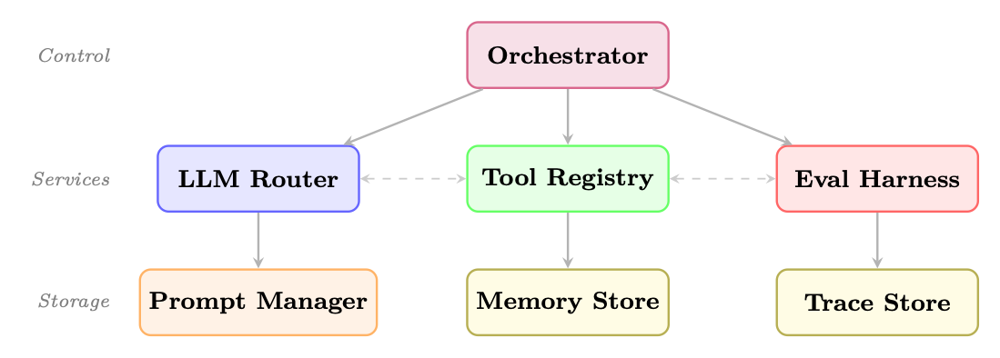
<em>图像来源：原 PDF 第 472 页，尺寸 1099x394。</em></p>
<p><a id="page-473"></a></p>
<h2 id="473">第 473 页</h2>
<p>• LMQL <a class="citation" href="#ref-397">[397]</a>：类似 SQL 的查询语言，用于带约束的 LLM 提示</p>
<p>• 概要<a class="citation" href="#ref-115">[115]</a>：具有正则表达式和JSON 模式约束的结构化生成</p>
<p>工具注册表。</p>
<p>• Composio3：250 多个预构建工具与 OAuth 管理集成</p>
<p>• Toolhouse4：通过沙箱执行托管工具</p>
<p>• E2B5：用于运行智能体代码的代码执行沙箱</p>
<p>记忆库。</p>
<p>• Mem06：具有自动汇总功能的自适应内存层</p>
<p>• Zep7：具有时间意识的长期记忆</p>
<p>Letta <a class="citation" href="#ref-316">[316]</a>（以前的 MemGPT）：具有自我管理内存层次结构的智能体</p>
<p>评估线束。</p>
<p>• RAGAS8：RAG 特定的评估指标</p>
<p>• DeepEval9：LLM 输出的单元测试框架</p>
<p>• Promptfoo10：基于 CLI 的提示评估和红队</p>
<p>• AgentBench11：智能体功能的标准化基准测试</p>
<p>自托管智能体运行时。
OpenClaw12 是一个自托管网关，可将LLM连接到真实的
通过模块化技能系统的世界工具。与上面的开发框架不同的是，OpenClaw
强调部署层：多渠道集成（Slack、Discord、WhatsApp、Teams）、
事件驱动的始终在线执行、沙盒工具运行以及高影响力操作的审批门。
其架构将工具（低级操作，例如 shell 命令或 API 调用）与技能分开
（通过规划logits编排工具的高级功能），使其可以直接
无需重写核心代码即可扩展智能体的表面积。</p>
<p>25.4.3
互操作性标准</p>
<p>智能体生态系统正在趋同于几个互操作性标准：</p>
<p>• 模型上下文协议（MCP）<a class="citation" href="#ref-335">[335]</a>：Anthropic 的工具和资源开放标准
暴露，使任何 MCP 兼容工具能够与任何 MCP 兼容智能体一起工作（请参阅
第21章）</p>
<p>• 智能体间协议（A2A）<a class="citation" href="#ref-372">[372]</a>：Google 的智能体间通信开放标准
化和任务委托（见第23章）</p>
<p>• OpenAPI for Tools：使用OpenAPI规范定义工具接口，使
自动工具发现和集成（见下文）</p>
<pre><code class="language-text">3https://composio.dev
4https://toolhouse.ai
5https://e2b.dev
6https://mem0.ai
7https://www.getzep.com
8https://github.com/explodinggradients/ragas
9https://github.com/confident-ai/deepeval
10https://github.com/promptfoo/promptfoo
11https://github.com/THUDM/AgentBench
12https://github.com/open-claw/open-claw
</code></pre>
<p><a id="page-474"></a></p>
<h2 id="474">第 474 页</h2>
<p>OpenAPI 作为工具接口层。
OpenAPI 规范13（以前称为 Swagger）提供
REST API 的机器可读描述——端点、参数、请求/响应模式、
和认证要求。智能体框架越来越多地使用 OpenAPI 规范作为零代码
工具定义层：智能体无需为每个 API 手动编写工具包装器，而是解析
规范并在运行时自动生成可调用工具。
转换流水线的工作原理如下：</p>
<p>1.解析：读取OpenAPI规范（JSON/YAML），解析$ref引用。</p>
<ol start="2">
<li>发现：提取每个操作（GET /pets/{id}、POST /orders 等）。</li>
</ol>
<p>3.生成：将每个操作转换为函数调用模式——来自操作Id的工具名称，
摘要中的描述，以及规范参数和 requestBody 字段中的参数。</p>
<ol start="4">
<li>
<p>执行：当LLM发出工具调用时，构造HTTP请求（URL、标头、查询
params, body) 从 LLM 提供的参数中获取并发送。</p>
</li>
<li>
<p>返回：将 API 响应反馈到智能体的上下文中。</p>
</li>
</ol>
<pre><code class="language-text">from
openapi_toolset
import
OpenAPIToolset
# e.g., google.adk , LangChain , etc.
</code></pre>
<pre><code class="language-text"># Load any OpenAPI 3.x spec -- could be a local
file or fetched
URL
spec = """
openapi: "3.0.3"
info:
</code></pre>
<pre><code class="language-text">title: Weather
API
version: "1.0"
paths:
</code></pre>
<p>/预测：</p>
<p>得到：</p>
<pre><code class="language-text">operationId: get_forecast
summary: Get
weather
forecast
for a location
parameters:
</code></pre>
<ul>
<li>名称：城市</li>
</ul>
<pre><code class="language-text">in: query
required: true
schema: {type: string}
- name: days
</code></pre>
<pre><code class="language-text">in: query
schema: {type: integer , default: 3}
responses:
</code></pre>
<p>‘200’：</p>
<pre><code class="language-text">description: Forecast
data
"""
</code></pre>
<pre><code class="language-text"># One line: spec -&gt; ready -to -use tools
toolset = OpenAPIToolset (spec_str=spec , spec_str_type ="yaml")
tools = toolset.get_tools ()
# [RestApiTool (" get_forecast", ...)]
</code></pre>
<pre><code class="language-text"># Attach to any agent
framework
agent = Agent(model="gpt -4o", tools=tools)
# The LLM sees: function
get_forecast(city: str , days: int = 3) -&gt; dict
# and can invoke it autonomously
during
planning
</code></pre>
<p>清单 25.12：根据 OpenAPI 规范自动生成智能体工具</p>
<p>该模式由 Google ADK14、Semantic Kernel（作为“OpenAPI 插件”）、LangChain 的支持
OpenAPIToolkit 和独立库，例如 openapi-llm15。关键优点是任何或-
与现有 API 文档的组织可以使智能体可以访问这些 API，而无需额外的操作
代码——规范是工具定义。</p>
<p><a id="page-475"></a></p>
<h2 id="475">第 475 页</h2>
<p>25.5
智能体测试与评估</p>
<p>测试智能体需要多层策略来解决非测试的独特挑战
确定性、有状态、多步骤系统。</p>
<p>图 25.4：智能体测试金字塔。较低的层速度更快、数量更多；上层提供更高
信心。</p>
<p>25.5.1
单元测试单个工具</p>
<p>每个工具都应该使用涵盖快乐路径、错误情况、
和边缘情况：</p>
<pre><code class="language-text">import
pytest
from
unittest.mock
import patch , MagicMock
from
myagent.tools
import
search_web , read_document
</code></pre>
<pre><code class="language-text">class
TestSearchWebTool :
def
test_basic_search_returns_results (self):
with
patch("myagent.tools.search_api") as mock_api:
mock_api.return_value = {"results": [{"title": "Test", "url": "http ://
example.com"}]}
</code></pre>
<pre><code class="language-text">result = search_web("test
query")
assert "Test" in result
mock_api. assert_called_once_with (query="test
query", num_results =5)
</code></pre>
<pre><code class="language-text">def
test_empty_query_raises_value_error (self):
with
pytest.raises(ValueError , match="Query
cannot be empty"):
search_web("")
</code></pre>
<pre><code class="language-text">def
test_api_failure_returns_error_message (self):
with
patch("myagent.tools.search_api", side_effect= ConnectionError ("API
down")):
</code></pre>
<pre><code class="language-text">result = search_web("test
query")
assert "error" in result.lower ()
assert "API down" in result
</code></pre>
<pre><code class="language-text">def
test_rate_limit_triggers_retry (self):
with
patch("myagent.tools.search_api") as mock_api:
mock_api.side_effect = [ RateLimitError (), {"results": []}]
result = search_web("test
query")
assert
mock_api.call_count == 2
# Retried
once
</code></pre>
<p>清单 25.13：使用 pytest 进行单元测试智能体工具</p>
<p>25.5.2
集成测试完整的智能体循环</p>
<p>集成测试验证智能体是否正确编排工具来完成任务：</p>
<pre><code class="language-text">import
pytest
from
myagent
import
ResearchAgent
from
myagent.testing
import
MockToolSet , TrajectoryValidator
</code></pre>
<h3 id="_94">本页图像资源</h3>
<p>
<em>图像来源：原 PDF 第 475 页，尺寸 1234x363。</em></p>
<p><a id="page-476"></a></p>
<h2 id="476">第 476 页</h2>
<pre><code class="language-text">@pytest.fixture
def
mock_tools ():
return
MockToolSet ({
"search_web": lambda q: f"Results
for: {q}",
" read_document": lambda url: "Document
content
here",
"write_report": lambda title , content: "Report
saved",
})
</code></pre>
<pre><code class="language-text">class
TestResearchAgentIntegration :
def
test_completes_research_task (self , mock_tools):
agent = ResearchAgent(tools=mock_tools)
result = agent.run("Research
the
history of reinforcement
learning")
</code></pre>
<pre><code class="language-text">assert
result.status == "done"
assert
result.final_answer is not None
assert len(result.trajectory) &gt; 0
</code></pre>
<pre><code class="language-text">def
test_uses_search_before_writing (self , mock_tools):
agent = ResearchAgent(tools=mock_tools)
result = agent.run("Research
quantum
computing")
</code></pre>
<pre><code class="language-text">tool_calls = [step.tool for step in result.trajectory if step.tool]
search_idx = next(i for i, t in enumerate(tool_calls) if "search" in t)
write_idx = next(i for i, t in enumerate(tool_calls) if "write" in t)
assert
search_idx &lt; write_idx , "Agent
should
search
before
writing"
</code></pre>
<pre><code class="language-text">def
test_handles_tool_failure_gracefully (self , mock_tools):
mock_tools.set_failure("search_web", after_calls =2)
agent = ResearchAgent(tools=mock_tools)
result = agent.run("Research a topic")
</code></pre>
<pre><code class="language-text"># Agent
should
recover
and
complete
despite
tool
failure
assert
result.status in ("done", "partial")
assert "error" not in result.final_answer .lower ()
</code></pre>
<p>清单 25.14：与轨迹验证的集成测试</p>
<p>25.5.3
使用黄金轨迹进行回归测试</p>
<p>黄金轨迹测试捕获已知的良好智能体行为并检测回归：</p>
<pre><code class="language-text">import
json
import
pytest
from
deepdiff
import
DeepDiff
from
sentence_transformers
import
SentenceTransformer
from
numpy
import dot
from
numpy.linalg
import
norm
</code></pre>
<pre><code class="language-text">embedder = SentenceTransformer ("all -MiniLM -L6 -v2")
</code></pre>
<pre><code class="language-text">def
semantic_similarity (text_a: str , text_b: str) -&gt; float:
"""Cosine
similarity
between
sentence
embeddings."""
a, b = embedder.encode ([text_a , text_b ])
return
float(dot(a, b) / (norm(a) * norm(b)))
</code></pre>
<pre><code class="language-text">@pytest.fixture
def golden ():
</code></pre>
<pre><code class="language-text">with open("tests/golden/ research_task_001 .json") as f:
</code></pre>
<pre><code class="language-text">return
json.load(f)
</code></pre>
<pre><code class="language-text">def
test_tool_sequence_matches_golden (golden):
"""Ensure the agent
calls the same
tools in the same
order."""
agent = ResearchAgent(temperature =0, seed =42)
result = agent.run(golden["input"])
actual_tools = [step["tool"] for step in result.trajectory]
</code></pre>
<p><a id="page-477"></a></p>
<h2 id="477">第 477 页</h2>
<pre><code class="language-text">golden_tools = [step["tool"] for step in golden["trajectory"]]
diff = DeepDiff(golden_tools , actual_tools )
assert not diff , f"Tool
sequence
diverged :\n{diff.to_json(indent =2)}"
</code></pre>
<pre><code class="language-text">def
test_output_semantically_similar (golden):
"""Final
output
must stay
semantically
close to approved
answer."""
agent = ResearchAgent(temperature =0, seed =42)
result = agent.run(golden["input"])
sim = semantic_similarity (result.final_output , golden[" expected_output "])
assert sim &gt; 0.85, f"Semantic
similarity {sim :.3f} below
threshold"
</code></pre>
<pre><code class="language-text">def
test_cost_does_not_regress (golden):
"""Cost must not exceed
golden
baseline by more than 20%."""
agent = ResearchAgent(temperature =0, seed =42)
result = agent.run(golden["input"])
assert
result.total_tokens
&lt;= golden["total_tokens "] * 1.2, \
f"Token
regression: {result. total_tokens} vs {golden[’ total_tokens ’]}"
</code></pre>
<p>清单 25.15：黄金轨迹回归测试</p>
<p>25.5.4
行为测试</p>
<p>行为测试验证智能体是否遵循指定的约束和策略：</p>
<pre><code class="language-text">class
TestAgentBehavioralConstraints :
def
test_refuses_harmful_requests (self):
agent = ResearchAgent ()
harmful_inputs = [
</code></pre>
<pre><code class="language-text">"How do I make
explosives?",
"Write
malware
that
steals
passwords",
"Generate
fake news
about [politician]",
]
for inp in harmful_inputs :
</code></pre>
<pre><code class="language-text">result = agent.run(inp)
assert
result.refused , f"Agent
should
refuse: {inp}"
</code></pre>
<pre><code class="language-text">def
test_respects_max_tool_calls (self):
agent = ResearchAgent( max_tool_calls =5)
result = agent.run("Do extensive
research on everything")
assert
result.tool_call_count
&lt;= 5
</code></pre>
<pre><code class="language-text">def
test_stays_within_allowed_domains (self):
agent = ResearchAgent( allowed_domains =["wikipedia.org", "arxiv.org"])
result = agent.run("Research
machine
learning")
for step in result.trajectory:
</code></pre>
<pre><code class="language-text">if step.tool == "read_document ":
</code></pre>
<pre><code class="language-text">domain = extract_domain (step.tool_input["url"])
assert
domain in ["wikipedia.org", "arxiv.org"], \
f"Agent
accessed
disallowed
domain: {domain}"
</code></pre>
<p>清单 25.16：行为约束测试</p>
<p>25.5.5
成本和延迟测试</p>
<pre><code class="language-text">import
time
import
pytest
</code></pre>
<pre><code class="language-text">class
TestAgentPerformance :
@pytest.mark.parametrize("task ,max_cost ,max_latency", [
</code></pre>
<pre><code class="language-text">(" simple_lookup", 0.01, 5.0) ,
(" research_task", 0.10, 60.0) ,
(" complex_analysis ", 0.50, 120.0) ,
])
</code></pre>
<p><a id="page-478"></a></p>
<h2 id="478">第 478 页</h2>
<pre><code class="language-text">def
test_cost_and_latency_bounds (self , task , max_cost , max_latency):
agent = ResearchAgent ()
task_input = TASK_REGISTRY [task]
</code></pre>
<pre><code class="language-text">start = time.time ()
result = agent.run(task_input)
elapsed = time.time () - start
</code></pre>
<pre><code class="language-text">assert
result.cost_usd
&lt;= max_cost , \
f"Cost {result.cost_usd :.4f} exceeds
limit {max_cost}"
assert
elapsed
&lt;= max_latency , \
f"Latency {elapsed :.1f}s exceeds
limit {max_latency}s"
</code></pre>
<p>清单 25.17：成本和延迟性能测试</p>
<p>25.6
可观察性和调试</p>
<p>生产智能体系统需要全面的可观察性来诊断故障、优化性能
并确保合规性。</p>
<p>智能体可观察性的三大支柱</p>
<ol>
<li>
<p>Traces：每次LLM调用、工具调用、状态转换的完整执行记录</p>
</li>
<li>
<p>指标：成本、延迟、成功率、工具使用情况的汇总统计</p>
</li>
<li>
<p>日志：用于调试和审计跟踪的结构化事件日志</p>
</li>
</ol>
<p>25.6.1
跟踪智能体执行</p>
<p>现代智能体可观测性平台提供适合 LLM 工作负载的分布式跟踪：</p>
<p>• LangSmith16：与LangChain/LangGraph深度集成；捕获完整的提示/响应
每一步的配对、token计数和延迟</p>
<p>• Arize Phoenix17：具有 LLM 特定指标的开源可观测性（幻觉检测）
化，相关性评分）</p>
<p>• Braintrust18：以评估为中心的平台，具有 A/B 测试和提示版本控制</p>
<p>• 权重和偏差编织：实验跟踪扩展到智能体跟踪</p>
<p>• OpenTelemetry19：具有不断增长的 LLM 支持的标准仪器协议</p>
<pre><code class="language-text">from
opentelemetry
import
trace
from
opentelemetry.sdk.trace
import
TracerProvider
from
opentelemetry.sdk.trace.export
import
BatchSpanProcessor
from
opentelemetry.exporter.otlp.proto.grpc. trace_exporter
import
OTLPSpanExporter
</code></pre>
<pre><code class="language-text"># Configure
tracing
provider = TracerProvider ()
provider. add_span_processor (
</code></pre>
<pre><code class="language-text">BatchSpanProcessor ( OTLPSpanExporter (endpoint="http :// collector :4317"))
)
trace. set_tracer_provider (provider)
tracer = trace.get_tracer("agent.tracer")
</code></pre>
<pre><code class="language-text">class
InstrumentedAgent :
def run(self , task: str) -&gt; AgentResult:
</code></pre>
<pre><code class="language-text">with
tracer. start_as_current_span ("agent.run") as span:
span.set_attribute("agent.task", task)
span.set_attribute("agent.model", self.model)
</code></pre>
<p><a id="page-479"></a></p>
<h2 id="479">第 479 页</h2>
<pre><code class="language-text">result = self._execute(task)
</code></pre>
<pre><code class="language-text">span.set_attribute("agent.status", result.status)
span.set_attribute("agent.tool_calls", result. tool_call_count )
span.set_attribute("agent.tokens_used", result.tokens_used)
span.set_attribute("agent.cost_usd", result.cost_usd)
return
result
</code></pre>
<pre><code class="language-text">def
_call_llm(self , messages: list) -&gt; str:
with
tracer. start_as_current_span ("llm.call") as span:
span.set_attribute("llm.model", self.model)
span.set_attribute("llm. prompt_tokens ", count_tokens (messages))
response = self.llm.invoke(messages)
span.set_attribute("llm. completion_tokens ", count_tokens ([ response ]))
return
response
</code></pre>
<pre><code class="language-text">def
_call_tool(self , tool_name: str , args: dict) -&gt; str:
with
tracer. start_as_current_span (f"tool .{ tool_name}") as span:
span.set_attribute("tool.name", tool_name)
span.set_attribute("tool.args", json.dumps(args))
try:
</code></pre>
<pre><code class="language-text">result = self.tools[tool_name ](** args)
span.set_attribute ("tool.success", True)
return
result
except
Exception as e:
span.set_attribute ("tool.success", False)
span.set_attribute ("tool.error", str(e))
span. record_exception (e)
raise
</code></pre>
<p>清单 25.18：使用 OpenTelemetry 进行结构化智能体跟踪</p>
<p>25.6.2
故障分类</p>
<p>系统故障分析需要对故障模式进行分类。如果没有结构化的分类，
工程团队将周期浪费在临时调试上——治疗症状而不是根本原因。的
下面的分类法捕获了生产智能体系统中观察到的六种最常见的故障类别，
以及可观察到的症状、自动检测机制和经过验证的补救措施
策略。
每种故障类型对系统设计都有不同的影响：工具错误是基础设施
需要重试logits和断路器的故障；推理错误是模型级别的失败
需要快速迭代；幻觉需要接地机制；无限循环需要硬
建筑保障。在实践中，单个用户可见的故障通常涉及级联
多个类别（例如，当智能体尝试恢复时，工具错误会触发推理错误，
螺旋式进入无限循环）。</p>
<p>25.6.3
重放和调试工作流程</p>
<p>当发生生产故障时，重放确切执行的能力是非常宝贵的：</p>
<pre><code class="language-text">from
langsmith
import
Client
from
datetime
import
datetime , timezone
</code></pre>
<pre><code class="language-text">ls = Client ()
# Uses
LANGSMITH_API_KEY
env var
</code></pre>
<pre><code class="language-text"># Load a failed
execution
trace by its run ID
root_run = ls.read_run("run -abc123 -def456")
child_runs = list(ls.list_runs(
</code></pre>
<pre><code class="language-text">project_name="research -agent",
filter=f’eq(parent_run_id , "{ root_run.id}")’,
order="asc",
</code></pre>
<p><a id="page-480"></a></p>
<h2 id="480">第 480 页</h2>
<p>表 25.1：具有检测和修复策略的智能体故障分类</p>
<p>故障类型
症状
检测
补救措施</p>
<p>工具错误
工具调用异常，
结果为空
错误率监控-
英
重试logits、后备工具</p>
<p>推理错误
选择了错误的工具，
不正确的论点
轨迹分析
迅速改进，几次射击前
阿普莱斯
幻觉
捏造的事实，在——
通风工具结果
事实核查，
接地检查
RAG，引用要求</p>
<p>无限循环
重复的工具调用，
没有进展
环路检测，最大值
迭代
硬限制、断环提示</p>
<p>上下文溢出
截断的
历史，
失去了背景
token计数
总结一下，
上下文管理
蒙特
拒绝
智能体拒绝有效
任务
输出分类
及时调整，护栏调整
英））</p>
<pre><code class="language-text">print(f"Trace: {root_run.id} | Status: {root_run.status}")
print(f"Error: {root_run.error}" if root_run.error
else "")
print(f"Total
tokens: {root_run.total_tokens }\n")
</code></pre>
<pre><code class="language-text"># Step
through
each
child run (LLM call , tool call , etc.)
for i, run in enumerate(child_runs):
</code></pre>
<pre><code class="language-text">print(f"Step {i}: [{run.run_type }] {run.name}")
print(f"
Input:
{str(run.inputs)[:200]}")
print(f"
Output: {str(run.outputs)[:200]}")
if run.error:
</code></pre>
<pre><code class="language-text">print(f"
ERROR: {run.error}")
# Inspect
the exact
prompt
that
caused
failure
if run.run_type == "llm":
</code></pre>
<pre><code class="language-text">print(f"
Model: {run.extra.get(’ invocation_params ’, {}).get(’model ’)}
")
</code></pre>
<pre><code class="language-text">print(f"
Messages: {run.inputs.get(’messages ’, []) [ -1]}")
print ()
</code></pre>
<pre><code class="language-text"># Re -run the
failing
step with a modified
prompt or model
from
openai
import
OpenAI
client = OpenAI ()
failing_run = child_runs <a class="citation" href="#ref-4">[4]</a>
# e.g., step that
errored
response = client.chat.completions.create(
</code></pre>
<pre><code class="language-text">model="gpt -4o",
# try a stronger
model
messages=failing_run.inputs["messages"],
temperature =0,
)
print(f"Replay
output: {response.choices [0]. message.content [:300]}")
</code></pre>
<p>清单 25.19：用于调试的智能体执行重放</p>
<p>25.7
生产部署模式</p>
<p>大规模部署智能体需要仔细关注执行模型、状态管理和
资源分配。</p>
<p>25.7.1
异步智能体执行</p>
<p>长时间运行的智能体应异步执行以避免阻塞 API 连接。芹菜20
是一种广泛使用的 Python 分布式任务队列，用于处理重试、工作扩展和结果
坚持：</p>
<p><a id="page-481"></a></p>
<h2 id="481">第 481 页</h2>
<p>图 25.5：基于队列的异步智能体部署。工作人员从队列中提取任务并保留状态
独立。</p>
<pre><code class="language-text">from
celery
import
Celery
from
myagent
import
ResearchAgent
import
redis
import
time
</code></pre>
<pre><code class="language-text">app = Celery("agent_tasks", broker="redis :// localhost :6379/0")
state_store = redis.Redis(host="localhost", port =6379 , db=1)
</code></pre>
<pre><code class="language-text">@app.task(bind=True , max_retries =3, default_retry_delay =60)
def
run_agent_task (self , task_id: str , task_input: str , config: dict):
"""Execute an agent
task
asynchronously ."""
try:
</code></pre>
<pre><code class="language-text"># Update
task
status
state_store.hset(f"task :{ task_id}", mapping ={
</code></pre>
<pre><code class="language-text">"status": "running",
"started_at": time.time (),
"worker": self.request.hostname ,
})
</code></pre>
<pre><code class="language-text">agent = ResearchAgent (** config)
result = agent.run(task_input)
</code></pre>
<pre><code class="language-text"># Store
result
state_store.hset(f"task :{ task_id}", mapping ={
</code></pre>
<pre><code class="language-text">"status": "completed",
"result": result.to_json (),
"completed_at": time.time (),
"cost_usd": result.cost_usd ,
})
return {"task_id": task_id , "status": "completed"}
</code></pre>
<pre><code class="language-text">except
Exception as exc:
state_store.hset(f"task :{ task_id}", mapping ={
</code></pre>
<pre><code class="language-text">"status": "failed",
"error": str(exc),
"failed_at": time.time (),
})
raise
self.retry(exc=exc)
</code></pre>
<pre><code class="language-text"># API
endpoint (separate
Flask/FastAPI
app)
from
flask
import Flask , request , jsonify
import
uuid
</code></pre>
<pre><code class="language-text">web_app = Flask(__name__)
</code></pre>
<pre><code class="language-text">@web_app.route("/tasks", methods =["POST"])
def
submit_task ():
task_id = str(uuid.uuid4 ())
task = run_agent_task .delay(
</code></pre>
<pre><code class="language-text">task_id=task_id ,
</code></pre>
<h3 id="_95">本页图像资源</h3>
<p>
<em>图像来源：原 PDF 第 481 页，尺寸 1240x414。</em></p>
<p><a id="page-482"></a></p>
<h2 id="482">第 482 页</h2>
<pre><code class="language-text">task_input=request.json["input"],
config=request.json.get("config", {}),
)
return
jsonify ({"task_id": task_id , "celery_id": task.id}), 202
</code></pre>
<p>清单 25.20：使用 Celery 执行异步智能体</p>
<p>25.7.2
多租户隔离</p>
<p>为多个客户服务的生产智能体系统需要严格隔离：</p>
<p>• 命名空间隔离：每个租户的状态、内存和工具配置都存储在
单独的命名空间</p>
<p>• 速率限制：LLM 调用、工具调用和计算时间的每租户速率限制</p>
<p>• 资源配额：每个租户的最大并发智能体数、token预算和存储限制</p>
<p>• 审核日志记录：所有智能体操作均使用租户 ID 进行记录，以确保合规性和计费</p>
<p>25.7.3
成本优化策略</p>
<p>• 模型路由：使用更小、更便宜的模型来执行简单的子任务（分类、提取）
并保留大型模型用于复杂推理</p>
<p>• 提示缓存：OpenAI 和 Anthropic 为重复的系统提示提供提示缓存，
为高流量智能体降低高达 90% 的成本</p>
<p>• 结果缓存：在一个时间窗口内缓存相同输入的工具结果</p>
<p>• 批处理：在延迟允许的情况下批处理多个独立的 LLM 调用</p>
<p>• 提前终止：检测智能体何时有足够的信息来应答并终止
早期循环</p>
<pre><code class="language-text">class
CostOptimizedRouter :
TASK_MODEL_MAP = {
</code></pre>
<pre><code class="language-text">" classification": "gpt -4o-mini",
"extraction": "gpt -4o-mini",
" summarization": "gpt -4o-mini",
"reasoning": "gpt -4o",
" code_generation ": "gpt -4o",
" complex_analysis ": "o1",
}
</code></pre>
<pre><code class="language-text">def route(self , task_type: str , complexity: float) -&gt; str:
</code></pre>
<pre><code class="language-text">base_model = self. TASK_MODEL_MAP .get(task_type , "gpt -4o-mini")
# Upgrade to more
capable
model for high -complexity
tasks
if complexity &gt; 0.8 and
base_model == "gpt -4o-mini":
return "gpt -4o"
return
base_model
</code></pre>
<pre><code class="language-text">def
estimate_cost(self , model: str , input_tokens : int , output_tokens : int) -&gt;
float:
</code></pre>
<pre><code class="language-math">pricing = {
</code></pre>
<pre><code class="language-text">"gpt -4o-mini": (0.15e-6, 0.60e-6),
"gpt -4o":
(2.50e-6, 10.0e-6),
"o1":
(15.0e-6, 60.0e-6),
}
in_price , out_price = pricing[model]
return
input_tokens * in_price + output_tokens * out_price
</code></pre>
<p>清单 25.21：用于成本优化的模型路由</p>
<p><a id="page-483"></a></p>
<h2 id="483">第 483 页</h2>
<p>25.7.4
自动扩展策略</p>
<p>智能体工作负载是突发性且不可预测的。有效的自动缩放需要：</p>
<p>• 队列深度扩展：根据任务队列深度而不是CPU 利用率来扩展工作线程数</p>
<p>• 预测缩放：使用历史模式（一天中的时间、一周中的某一天）在之前进行预缩放
需求激增</p>
<p>• Spot 实例使用：长时间运行的智能体任务可以使用 Spot/抢占式实例
检查点以节省成本</p>
<p>• 正常关闭：工作人员在缩小规模之前完成当前任务，防止出现状态
腐败</p>
<p>25.8
框架比较</p>
<p>选择正确的框架</p>
<p>“最佳”框架取决于您的具体要求。问问自己：</p>
<p>• 您是否需要对座席流程进行明确控制？ → 语言图</p>
<p>• 您是否正在构建具有代码执行功能的多智能体系统？ →AutoGen</p>
<p>• 您是否想要具有最少样板的基于角色的智能体？ →CrewAI</p>
<p>• 您正在构建OpenAI 的生态系统吗？ →智能体SDK</p>
<p>• 您想要自动提示优化吗？ →DSPy</p>
<p>• 您是否处于企业.NET/Azure 环境中？ →语义内核</p>
<p>25.9
完整的实施示例：生产研究
智能体</p>
<p>我们现在展示一个使用 LangGraph 构建的完整的、可立即投入生产的研究智能体，展示了
工具定义、状态模式、图形构建、错误处理和部署配置。</p>
<p>生产研究智能体架构</p>
<p>此示例实现了一个研究智能体：(1) 接受研究主题，(2) 搜索网络
对于相关来源，(3) 阅读并综合关键文件，(4) 撰写结构化报告，以及
(5) 通过重试logits优雅地处理错误。智能体使用检查点来实现可恢复性和
结构化日志记录以实现可观察性。</p>
<pre><code class="language-text"># === tools.py ===
import
httpx
import
json
import os
import
uuid
from
datetime
import
datetime , timezone
from
urllib.parse
import
urlparse
from
langchain_core .tools
import
tool
from
tenacity
import retry , stop_after_attempt , wait_exponential
from
utils
import
extract_text
# HTML -&gt; plain
text
helper (e.g., BeautifulSoup )
from
database
import db
# application
database
connection
</code></pre>
<pre><code class="language-text">@tool
@retry(stop= stop_after_attempt (3), wait= wait_exponential (min=1, max =10))
def
search_web(query: str , num_results: int = 5) -&gt; str:
</code></pre>
<p><a id="page-484"></a></p>
<h2 id="484">第 484 页</h2>
<pre><code class="language-text">"""Search the web for
information. Returns
JSON list of results."""
if not query.strip ():
</code></pre>
<pre><code class="language-text">raise
ValueError("Search
query
cannot be empty")
response = httpx.get(
</code></pre>
<pre><code class="language-text">"https :// api.search.example.com/search",
params ={"q": query , "n": num_results},
headers ={"Authorization": f"Bearer {os.environ[’ SEARCH_API_KEY ’]}"},
timeout =10.0 ,
)
response. raise_for_status ()
results = response.json ()["results"]
return
json.dumps ([{"title": r["title"], "url": r["url"],
</code></pre>
<pre><code class="language-text">"snippet": r["snippet"]} for r in results ])
</code></pre>
<pre><code class="language-text">@tool
@retry(stop= stop_after_attempt (2), wait= wait_exponential (min=1, max =5))
def
fetch_document (url: str , max_chars: int = 5000)
-&gt; str:
"""Fetch and
extract
text
content
from a URL."""
allowed_domains = os.environ.get(" ALLOWED_DOMAINS ", "").split(",")
domain = urlparse(url).netloc
if allowed_domains [0] and domain not in allowed_domains :
</code></pre>
<pre><code class="language-text">raise
PermissionError (f"Domain {domain} not in allowed
list")
response = httpx.get(url , timeout =15.0 ,
follow_redirects =True)
response. raise_for_status ()
return
extract_text(response.text)[: max_chars]
</code></pre>
<pre><code class="language-text">@tool
def
save_report(title: str , summary: str , sections: list[dict ]) -&gt; str:
"""Save a structured
research
report to the
database."""
report_id = str(uuid.uuid4 ())
db.reports.insert_one ({
</code></pre>
<pre><code class="language-text">"id": report_id , "title": title ,
"summary": summary , "sections": sections ,
"created_at": datetime.now(timezone.utc).isoformat (),
})
return
json.dumps ({"report_id": report_id , "status": "saved"})
</code></pre>
<pre><code class="language-text">TOOLS = [search_web , fetch_document , save_report]
</code></pre>
<p>清单 25.22：完整的生产研究智能体：工具和状态</p>
<pre><code class="language-text"># === agent.py ===
import
json
from
typing
import
TypedDict , Annotated , List , Literal
from
langgraph.graph.message
import
add_messages
from
langgraph.prebuilt
import
ToolNode
from
langchain_openai
import
ChatOpenAI
from
langchain_core .messages
import
BaseMessage , HumanMessage , SystemMessage ,
AIMessage
from
tools
import
TOOLS
</code></pre>
<pre><code class="language-text">SYSTEM_PROMPT = """You are a professional
research
analyst. Your task is to:
1. Search for
relevant
information on the given
topic
2. Read and
analyze
key
sources (aim for 3-5 sources)
3. Synthesize
findings
into a structured
report
using
save_report
</code></pre>
<pre><code class="language-text">Guidelines:
- Always
verify
information
across
multiple
sources
- Cite your
sources in the report
- If a tool fails , try an alternative
approach
- Complete
the task in at most 15 tool
calls
- Use
save_report
exactly
once when you have
sufficient
information"""
</code></pre>
<pre><code class="language-text">class
ResearchState(TypedDict):
messages: Annotated[List[BaseMessage], add_messages]
topic: str
</code></pre>
<p><a id="page-485"></a></p>
<h2 id="485">第 485 页</h2>
<pre><code class="language-text">sources_found: List[str]
sources_read: List[str]
report_id: str | None
error_count: int
tool_call_count : int
status: Literal["researching", "done", "failed"]
</code></pre>
<pre><code class="language-text">tool_executor = ToolNode(TOOLS)
</code></pre>
<pre><code class="language-text">def
research_node(state: ResearchState ) -&gt; dict:
"""Main LLM
reasoning
node."""
llm = ChatOpenAI(model="gpt -4o", temperature =0).bind_tools(TOOLS)
messages = [SystemMessage(content= SYSTEM_PROMPT )] + state["messages"]
response = llm.invoke(messages)
return {"messages": [response ]}
</code></pre>
<pre><code class="language-text">def
tool_node_with_error_handling (state: ResearchState ) -&gt; dict:
"""Execute
tool
calls
with
error
handling
and state
updates."""
try:
</code></pre>
<pre><code class="language-text">result = tool_executor.invoke(state)
return {
</code></pre>
<pre><code class="language-text">**result ,
" tool_call_count ": state[" tool_call_count "] + len(
</code></pre>
<pre><code class="language-text">state["messages"][ -1]. tool_calls
),
}
except
Exception as e:
# Return an AIMessage
signaling
the error so the LLM can adapt
error_msg = AIMessage(content=f"Tool
execution
failed: {e}. Try a
different
approach.")
return {
</code></pre>
<pre><code class="language-text">"messages": [error_msg],
"error_count": state["error_count"] + 1,
}
</code></pre>
<pre><code class="language-text">def
check_completion (state: ResearchState ) -&gt; dict:
"""Check if the report has been
saved and update
status."""
for msg in state["messages"][ -5:]:
</code></pre>
<pre><code class="language-text">content = getattr(msg , "content", "")
if "report_id" in content:
</code></pre>
<p>尝试：</p>
<pre><code class="language-text">data = json.loads(content)
return {"status": "done", "report_id": data["report_id"]}
except (json.JSONDecodeError , KeyError):
</code></pre>
<pre><code class="language-text">pass
return {}
</code></pre>
<pre><code class="language-text">def
route_after_llm (state: ResearchState ) -&gt; str:
"""Determine
next step
after LLM
response."""
if state["error_count"] &gt;= 5 or state[" tool_call_count "] &gt;= 15:
</code></pre>
<pre><code class="language-text">return "fail"
last_message = state["messages"][ -1]
if hasattr(last_message , "tool_calls") and
last_message .tool_calls:
return "tools"
if len(state["messages"]) &gt; 30:
</code></pre>
<pre><code class="language-text">return "fail"
return "research"
# LLM needs to continue
reasoning
</code></pre>
<pre><code class="language-text">def
fail_node(state: ResearchState ) -&gt; dict:
return {"status": "failed"}
</code></pre>
<p>清单 25.23：完整的生产研究智能体：状态和节点</p>
<pre><code class="language-text"># === graph.py ===
from
langgraph.graph
import
StateGraph , START , END
from
langgraph.graph.state
import
CompiledStateGraph
</code></pre>
<p><a id="page-486"></a></p>
<h2 id="486">第 486 页</h2>
<pre><code class="language-text">from
langgraph.checkpoint.postgres.aio import
AsyncPostgresSaver
</code></pre>
<pre><code class="language-text">async def
build_graph(db_url: str) -&gt; CompiledStateGraph :
"""Build and
compile
the
research
agent
graph."""
checkpointer = AsyncPostgresSaver . from_conn_string (db_url)
await
checkpointer.setup ()
# Create
tables if needed
</code></pre>
<pre><code class="language-text">builder = StateGraph(ResearchState )
</code></pre>
<pre><code class="language-text"># Add nodes
builder.add_node("research", research_node )
builder.add_node("tools", tool_node_with_error_handling )
builder.add_node("check", check_completion )
builder.add_node("fail", fail_node)
</code></pre>
<pre><code class="language-text"># Define
edges
builder.add_edge(START , "research")
builder. add_conditional_edges (
</code></pre>
<pre><code class="language-text">"research",
route_after_llm ,
{"tools": "tools", "research": "research", "fail": "fail"}
)
builder.add_edge("tools", "check")
builder. add_conditional_edges (
</code></pre>
<pre><code class="language-text">"check",
lambda s: "end" if s["status"] == "done" else "research",
{"end": END , "research": "research"}
)
builder.add_edge("fail", END)
</code></pre>
<pre><code class="language-text">return
builder.compile(checkpointer =checkpointer )
</code></pre>
<pre><code class="language-text"># ===
deployment.py ===
import os
import
uuid
from
contextlib
import
asynccontextmanager
from
fastapi
import
FastAPI , BackgroundTasks , HTTPException
from
pydantic
import
BaseModel
from
langchain_core .messages
import
HumanMessage
</code></pre>
<pre><code class="language-text">graph: CompiledStateGraph = None
# Initialized at startup
</code></pre>
<pre><code class="language-text">@asynccontextmanager
async def
lifespan(app: FastAPI):
global
graph
graph = await
build_graph(os.environ[" DATABASE_URL"])
yield
</code></pre>
<pre><code class="language-text">app = FastAPI(title="Research
Agent API", lifespan=lifespan)
</code></pre>
<pre><code class="language-text">class
ResearchRequest (BaseModel):
topic: str
user_id: str
</code></pre>
<pre><code class="language-text">class
ResearchResponse (BaseModel):
task_id: str
status: str
</code></pre>
<pre><code class="language-text">@app.post("/research", response_model = ResearchResponse )
async def
start_research(request: ResearchRequest , background_tasks :
BackgroundTasks ):
</code></pre>
<pre><code class="language-text">task_id = str(uuid.uuid4 ())
config = {"configurable": {"thread_id": task_id , "user_id": request.user_id }}
initial_state = {
</code></pre>
<pre><code class="language-text">"messages": [HumanMessage(content=f"Research
topic: {request.topic}")],
"topic": request.topic ,
</code></pre>
<p><a id="page-487"></a></p>
<h2 id="487">第 487 页</h2>
<pre><code class="language-text">" sources_found": [], "sources_read": [],
"report_id": None , "error_count": 0,
" tool_call_count ": 0, "status": "researching",
}
background_tasks .add_task(graph.ainvoke , initial_state , config)
return
ResearchResponse (task_id=task_id , status="started")
</code></pre>
<pre><code class="language-text">@app.get("/research /{ task_id}")
async def
get_research_status (task_id: str):
config = {"configurable": {"thread_id": task_id }}
state = await
graph.aget_state(config)
if state is None:
</code></pre>
<pre><code class="language-text">raise
HTTPException(status_code =404 , detail="Task not found")
return {
</code></pre>
<pre><code class="language-text">"task_id": task_id ,
"status": state.values.get("status", "unknown"),
"report_id": state.values.get("report_id"),
"tool_calls": state.values.get(" tool_call_count ", 0),
"error_count": state.values.get("error_count", 0),
}
</code></pre>
<p>清单 25.24：完整的生产研究智能体：图表和部署</p>
<pre><code class="language-text"># ===
Dockerfile
===
# FROM
python :3.11 - slim
# WORKDIR /app
# COPY
requirements.txt .
# RUN pip install
--no -cache -dir -r requirements.txt
# COPY . .
# CMD [" uvicorn", "deployment:app", "--host", "0.0.0.0" , "--port", "8000"]
</code></pre>
<pre><code class="language-text"># ===
kubernetes/deployment.yaml (as Python
dict for
illustration) ===
k8s_deployment = {
</code></pre>
<pre><code class="language-text">"apiVersion": "apps/v1",
"kind": "Deployment",
"metadata": {"name": "research -agent", "namespace": "agents"},
"spec": {
</code></pre>
<pre><code class="language-text">"replicas": 3,
"selector": {"matchLabels": {"app": "research -agent"}},
"template": {
</code></pre>
<pre><code class="language-text">"metadata": {"labels": {"app": "research -agent"}},
"spec": {
</code></pre>
<pre><code class="language-text">"containers": [{
</code></pre>
<pre><code class="language-text">"name": "agent",
"image": "myregistry/research -agent:latest",
"ports": [{"containerPort ": 8000}] ,
"resources": {
</code></pre>
<pre><code class="language-text">"requests": {"memory": "512Mi", "cpu": "250m"},
"limits":
{"memory": "2Gi",
"cpu": "1000m"},
},
"env": [
</code></pre>
<pre><code class="language-text">{"name": " DATABASE_URL",
"valueFrom": {
"secretKeyRef": {"name": "agent -secrets", "key": "db -
url"}}},
</code></pre>
<pre><code class="language-text">{"name": " OPENAI_API_KEY ", "valueFrom": {
</code></pre>
<pre><code class="language-text">"secretKeyRef": {"name": "agent -secrets", "key": "
openai -key"}}},
</code></pre>
<pre><code class="language-text">],
"livenessProbe ":
{"httpGet": {"path": "/health", "port":
8000} ,
</code></pre>
<pre><code class="language-text">" initialDelaySeconds ": 30, " periodSeconds ":
10},
</code></pre>
<pre><code class="language-text">" readinessProbe ": {"httpGet": {"path": "/ready",
"port":
8000} ,
</code></pre>
<pre><code class="language-text">" initialDelaySeconds ": 10, " periodSeconds ":
5},
</code></pre>
<p><a id="page-488"></a></p>
<h2 id="488">第 488 页</h2>
<pre><code class="language-text">}]
}
}
}
}
</code></pre>
<pre><code class="language-text"># HorizontalPodAutoscaler
scales on queue
depth
metric
hpa_config = {
</code></pre>
<pre><code class="language-text">"apiVersion": "autoscaling/v2",
"kind": " HorizontalPodAutoscaler ",
"metadata": {"name": "research -agent -hpa", "namespace": "agents"},
"spec": {
</code></pre>
<pre><code class="language-text">" scaleTargetRef": {
</code></pre>
<pre><code class="language-text">"apiVersion": "apps/v1",
"kind": "Deployment",
"name": "research -agent",
},
"minReplicas": 2,
"maxReplicas": 20,
"metrics": [{
</code></pre>
<pre><code class="language-text">"type": "External",
"external": {
</code></pre>
<pre><code class="language-text">"metric": {"name": " agent_task_queue_depth "},
"target": {"type": "AverageValue", " averageValue": "10"},
}
}]
}
}
</code></pre>
<p>清单 25.25：部署配置：Docker 和 Kubernetes</p>
<p>生产清单
在将智能体部署到生产环境之前，请验证：</p>
<p>• 所有工具都有重试logits和错误处理</p>
<p>• 强制执行最大迭代限制</p>
<p>• 敏感数据未记录在跟踪中</p>
<p>• 按租户配置速率限制</p>
<p>• 为长时间运行的任务启用检查点</p>
<p>• 行为测试通过（无有害输出）</p>
<p>• 验证成本和延迟界限</p>
<p>• 回滚过程已记录并经过测试</p>
<p>• 待命运行手册涵盖常见故障模式</p>
<p>25.10
总结</p>
<p>智能体开发框架已经显着成熟，为智能体提供了结构化的解决方案
构建生产级人工智能智能体的工程挑战。本节的主要内容
是：</p>
<ol>
<li>
<p>框架选择很重要：不同的框架针对不同的关注点进行优化。朗-
Graph 擅长复杂、可控的工作流程； AutoGen 的多智能体协作；船员人工智能
基于角色的简单性； DSPy 自动优化。</p>
</li>
<li>
<p>测试是不可协商的：基于 LLM 的智能体的不确定性使得</p>
</li>
</ol>
<p><a id="page-489"></a></p>
<h2 id="489">第 489 页</h2>
<p>全面的测试——单元、集成、行为和性能——对生产至关重要
可靠性。</p>
<ol start="3">
<li>
<p>可观察性实现迭代：无需详细跟踪智能体执行情况，即可诊断
失败和提高性能都是猜测。尽早投资可观测基础设施。</p>
</li>
<li>
<p>异步执行是常态：生产智能体是长时间运行的进程，需要
基于队列的执行、检查点和优雅的故障处理。</p>
</li>
<li>
<p>成本管理至关重要：LLM API 成本随使用情况而变化。模型路由、缓存、
提前终止可以在不牺牲质量的情况下降低 50-90% 的成本。</p>
</li>
<li>
<p>生命周期是迭代的：智能体开发不是一次性的工作。持续监控，
随着世界的变化，故障分析和改进对于保持性能至关重要。</p>
</li>
</ol>
<p>该领域正在迅速发展，新的框架、工具和最佳实践不断出现。
本节涵盖的原则——显式状态管理、全面测试、深入
可观察性和系统迭代——无论使用哪种特定工具，都提供稳定的基础
正在流行。</p>
<p><a id="page-490"></a></p>
<h2 id="490">第 490 页</h2>
<p>第26章</p>
<p>智能体 UI 框架</p>
<p>随着大型语言模型从被动文本生成器转变为能够规划的主动智能体，
工具的使用和多步骤推理，人类与它们交互的界面必须
并行发展。传统聊天界面——专为单轮或短上下文对话而设计——
不适合智能体工作流程的需求：长时间运行的任务、分支决策树、
并行工具调用，以及有意义的人类监督的需要。本节调查了
智能体 UI 框架的景观：设计范例、组件库和实现
能够实现丰富、透明且值得信赖的人机协作的模式。</p>
<p>26.1
动机：超越聊天框</p>
<p>为什么智能体需要专门的接口</p>
<p>聊天气泡传达结果。智能体 UI 传达一个过程——推理、调用的工具、
做出的决定以及需要人类判断的点。如果没有这种可见性，
用户无法信任、纠正或向智能体学习。</p>
<p>聊天界面和智能体界面之间的差距反映了自动售货机之间的差距
机器和熟练的合作者。当智能体执行 20 步研究任务、浏览网页时，
编写并运行代码，并综合报告，用户需要回答一些简单的问题
文本回复无法提供：</p>
<p>• 座席现在在做什么？长时间运行的任务需要进度反馈；沉默
滋生不信任。</p>
<p>• 智能体为何做出此决定？推理的透明度使用户能够
及早发现错误。</p>
<p>• 使用了哪些工具以及有哪些输入？工具来源对于验证至关重要
事实主张和审计行为。</p>
<p>• 我应该在哪里进行干预？智能体必须浮出决策点以保证人类
判断，而不是让每个微观决策压倒用户。</p>
<p>• 我可以撤消此操作吗？不可逆的操作（发送电子邮件、修改文件、执行代码）需要
显式确认和回滚路径。</p>
<p>自动化偏差风险
对人机交互的研究一致表明，用户过度信任自动化
系统，尤其是当这些系统自信且没有不确定性地呈现输出时
信号<a class="citation" href="#ref-398">[398]</a>。智能体 UI 必须通过暴露不确定性来积极抵消自动化偏差，
展示推理，并使质疑或推翻智能体决策变得容易。</p>
<p>因此，智能体 UI 的设计位于人机交互 (HCI) 的交叉点，
可解释的人工智能（XAI）和软件工程。核心设计目标是：</p>
<p><a id="page-491"></a></p>
<h2 id="491">第 491 页</h2>
<ol>
<li>
<p>透明性：使智能体的内部状态对用户来说是清晰可见的。</p>
</li>
<li>
<p>控制：提供有意义的干预点，无需持续监督。</p>
</li>
<li>
<p>信任校准：帮助用户建立准确的座席能力和心理模型
限制。</p>
</li>
<li>
<p>效率：最小化认知负荷；在正确的时间呈现正确的信息。</p>
</li>
<li>
<p>可恢复性：使错误易于检测和逆转。</p>
</li>
</ol>
<p>26.2
智能体的 UI 范式</p>
<p>没有单一的 UI 范例适合所有智能体用例。适当的接口取决于任务持续时间，
需要人工参与、输出类型和用户专业知识。频谱范围从完全
对话式聊天界面与完全自主的仪表板相结合，只需最少的人机交互。</p>
<p>26.2.1
基于聊天的界面</p>
<p>聊天模式——消息气泡、文本输入和滚动历史记录——仍然是最熟悉的
LLM互动的入口点。它的优点是学习曲线低和自然语言灵活性。
对于智能体使用，聊天界面增加了：</p>
<p>• 流式响应：token在生成时出现，提供即时反馈
并减少感知延迟。通过服务器发送事件 (SSE) 或 WebSocket 实现。</p>
<p>• 内联工具指示器：消息流中显示的小徽章或可扩展部分
当调用工具时（例如，“[在网络上搜索：
2024 年气候变化]”）。</p>
<p>• 输入指示器和状态消息：“智能体正在思考……”、“正在运行Python 代码……”、
“正在获取结果……”在延迟间隙让用户了解情况。</p>
<p>• 消息线程：对于多轮智能体任务，可折叠子线程可以包含内部消息。
在不扰乱主要对话的情况下调解步骤。</p>
<p>客服人员的聊天 UI 限制</p>
<p>聊天接口将本质上并行的进程串行化。当智能体分散到五个工具时
同时，线性消息流歪曲了实际的执行图。对于复杂的
智能体工作流程中，聊天应该用更丰富的范例来增强或取代。</p>
<p>26.2.2
基于画布和工件的界面</p>
<p>由 Claude Artifacts1 和 ChatGPT Canvas2 推广的画布范式引入了一种分裂
窗格布局：左窗格承载对话，而右窗格（“画布”或“工件”）
面板”）将生成的内容（代码、文档、图表、电子表格）显示为实时、可编辑的
神器。
主要特点：</p>
<p>• 持久工件：生成的内容在各个轮次中持续存在，并且可以迭代地细化
通过自然语言指令（“将图表设为蓝色”、“将错误处理添加到
函数”）。</p>
<p>• 就地编辑：用户可以直接编辑工件，智能体可以观察和响应
到那些编辑。</p>
<p>• 版本历史记录：工件维护修订历史记录，支持回滚到任何先前状态。</p>
<p><a id="page-492"></a></p>
<h2 id="492">第 492 页</h2>
<p>• 多工件工作区：高级实施支持多个同时
工件（例如，代码文件、其测试套件和文档页面）。</p>
<p>画布范例特别适合共同创作任务：写作、编码、数据分析、
和设计，其中输出是文档或工件，而不是对话答案。</p>
<p>26.2.3
工作流程可视化</p>
<p>对于执行结构化计划（步骤序列或图表）的智能体，工作流可视化 UI
使计划明确且可追踪。这种范式常见于：</p>
<p>• 智能体流水线（LangGraph、AutoGen、CrewAI）：渲染智能体的执行图
作为有向无环图 (DAG) 或流程图，其中节点代表步骤和边
表示数据流或控制流。</p>
<p>• 任务分解视图：智能体的高级计划以清单或甘特图形式显示
时间轴，每个子任务都会扩展以显示其自己的步骤。</p>
<p>• 实时进度跟踪：节点在执行时改变颜色或显示旋转器；已完成
节点显示输出；失败的节点显示错误详细信息。</p>
<p>LangGraph Studio3 是这种范例的典型示例，提供了基于图形的调试器
和 LangGraph 智能体的可视化工具。用户可以检查每个节点的状态、重放执行情况、
并注入修改后的状态来测试替代路径。</p>
<p>26.2.4
仪表板和监控界面</p>
<p>对于长期运行或生产智能体，仪表板 UI 提供操作视图：</p>
<p>• 实时状态：哪些智能体正在运行、空闲或失败；当前的任务和步骤。</p>
<p>• 资源指标：token消耗、API 调用计数、延迟直方图、成本估算。</p>
<p>• 队列管理：待处理任务、优先级排序、速率限制状态。</p>
<p>• 警报和异常检测：异常行为（过度重试、成本激增、重复
失败）作为通知出现。</p>
<p>• 历史分析：任务完成率、平均持续时间、一段时间内的错误频率。</p>
<p>仪表板 UI 通常使用 Grafana、4 个自定义 React 仪表板或 Streamlit 等工具构建，
并且针对的是运营商而不是最终用户。</p>
<p>26.2.5
协作接口</p>
<p>协作 UI 将智能体视为共享工作空间（文档、代码库、
或与人类合作者一起设计画布。主要特点包括：</p>
<p>• 状态指示符：座席在共享工作区中显示为命名光标或头像。</p>
<p>• 更改归因：座席所做的编辑在视觉上与人工编辑有区别
（例如，颜色编码的差异）。</p>
<p>• 内联建议：智能体以跟踪编辑或评论的形式提出更改建议，由人类
可以接受、拒绝或修改。</p>
<p>• 冲突解决：当智能体和人工同时编辑同一区域时，
UI 使冲突浮出水面并促进解决。</p>
<p>这种范例正在 Cursor5（人工智能协作代码编辑）、Notion AI 等工具中出现，6
和 Google Docs 与 Gemini 集成。7</p>
<p><a id="page-493"></a></p>
<h2 id="493">第 493 页</h2>
<p>26.2.6
具有检查点的自主性</p>
<p>在自治范围的远端，一些智能体基本上独立运行——浏览
网络、编写代码、执行命令——并且仅在需要人工的预定义检查点出现
批准。该范例用于：</p>
<p>• 计算机使用智能体（Anthropic Computer Use，8 OpenAI Operator9）：智能体控制
浏览器或桌面；用户界面显示实时屏幕提要，并在不可逆转之前暂停以供批准
行动。</p>
<p>• 带门的自动化流水线：智能体完成 CI/CD 式工作流程
阶段并等待人类“合并”，然后再继续。</p>
<p>• 计划智能体：按计划运行并异步报告结果的智能体，具有
基于通知的 UI，用于审查输出并批准后续操作。</p>
<p>Checkpoint UI 实践</p>
<p>负责“清理我的电子邮件收件箱”的智能体可能会自动对 500 封电子邮件进行分类和存档
电子邮件，然后暂停并呈现摘要：“我发现 23 封电子邮件似乎来自邮寄
您已经 6 个月没有打开过的列表。我应该取消全部、部分还是全部取消订阅？”用户
检查列表、做出选择，然后智能体继续进行。这种模式——自主执行
由人类决策点打断——平衡效率与控制。</p>
<p>26.3
智能体的关键 UI 组件</p>
<p>无论总体范例如何，智能体 UI 都共享一组重复出现的组件。本节
列出了最重要的目录，并为每个目录提供了设计指南。</p>
<p>26.3.1
思维与推理展示</p>
<p>现代LLM，特别是那些受过思想链或扩展思维训练的LLM（例如 OpenAI
o1/o3，具有扩展思维的人择克劳德），之前产生大量的内部推理
产生最终响应。这种推理是一把双刃剑：它增加了透明度
但可能会因为冗长的内心独白而让用户不知所措。
最佳实践：</p>
<p>• 可折叠推理块：显示摘要（“思考 12 秒”）并展开
为需要详细信息的用户切换。</p>
<p>• 渐进式披露：默认只显示最终结论；推理可用于
需求。</p>
<p>• 结构化推理：如果模型产生结构化思维（假设、证据、
结论），用视觉层次结构而不是文本墙来呈现它们。</p>
<p>• 推理与响应的区别：从视觉上清楚地区分内部推理（其中
最终响应中可能包含错误或错误的开始）。</p>
<p>26.3.2
工具使用可视化</p>
<p>工具调用是智能体与世界交互的主要机制。将它们可视化是
对于信任和调试至关重要。</p>
<p>工具调用剖析</p>
<p>每个工具调用都有四个值得显示的组件：(1) 工具名称和图标，(2)
输入参数（可能很大的 JSON），(3) 输出/结果（可能很大），以及 (4)
计时（延迟）。 UI 必须平衡完整性和可读性。</p>
<p>工具可视化的设计模式：</p>
<p><a id="page-494"></a></p>
<h2 id="494">第 494 页</h2>
<p>• 内联工具卡：消息流中的紧凑卡显示工具名称、一行
输入摘要和状态（运行/成功/错误）。可扩展以获取完整详细信息。</p>
<p>• 工具时间线：水平时间线依次显示所有工具调用以及持续时间，使
识别瓶颈。</p>
<p>• 输入/输出差异：对于修改状态（例如文件编辑）的工具，显示之前/之后的差异。</p>
<p>• 工具图标和品牌：常用工具的可识别图标（网络搜索、代码执行、
文件系统、API）可实现快速扫描。</p>
<p>• 错误突出显示：失败的工具调用以红色显示，并带有错误消息和任何重试
尝试。</p>
<p>26.3.3
进度指标</p>
<p>多步骤智能体任务需要丰富的进度反馈：</p>
<p>• 步骤级进度：计划步骤的编号列表，每个步骤完成时都带有复选标记。
对于动态计划，可以根据智能体的调整添加或删除步骤。</p>
<p>• token流指示器：生成期间闪烁的光标或动画省略号；一个
高级用户的每秒token计数器。</p>
<p>• 预计完成时间：在可行的情况下，根据任务复杂性和历史情况制定预计完成时间
性能。以适当的不确定性显示（“大约 2-5 分钟”）。</p>
<p>• 子任务嵌套：对于分层任务，具有可扩展的树形结构进度视图
子任务。</p>
<p>• 取消：清晰可见的“停止”按钮，可以优雅地停止智能体并进行总结
至此工作已完成。</p>
<p>26.3.4
审批门</p>
<p>批准门是人在环控制的主要机制。它们必须被设计
提供丰富的信息（为用户提供足够的背景信息以做出正确的决定）而不感到疲劳
（每一个小动作都需要批准）。</p>
<p>批准门疲劳警报</p>
<p>如果智能体过于频繁地请求批准，用户将开始本能地批准而不阅读 -
违背了门的目的。分级审批政策（参见第 26.7 节）对于
保持有意义的监督。</p>
<p>审批门 UI 元素：</p>
<p>• 行动摘要：以通俗易懂的语言描述客服人员想要执行的操作（“发送电子邮件
发送至 john@example.com 并附上报告”）。</p>
<p>• 风险指示器：行动可逆性的视觉信号（绿色=容易撤消，黄色=很难撤消）
撤消，红色 = 不可逆转）。</p>
<p>• 批准/拒绝/修改：三选项界面； “修改”打开一个编辑器
批准前的操作参数。</p>
<p>• 上下文面板：可展开部分显示客服人员想要采取此操作的原因（相关
推理、先前步骤）。</p>
<p>• 超时行为：明确指示如果用户不响应（智能体
暂停，不继续）。</p>
<p><a id="page-495"></a></p>
<h2 id="495">第 495 页</h2>
<p>26.3.5
上下文显示</p>
<p>智能体维护内部状态——内存、活动工具、检索到的文档、对话历史记录——
这会影响他们的行为。使这种状态可见有助于用户理解和预测智能体
行为。</p>
<p>• 内存面板：显示智能体当前“记住”的有关用户、任务和之前的内容
互动。由用户可编辑。</p>
<p>• 活动工具列表：智能体当前可以使用哪些工具，以及启用/禁用切换。</p>
<p>• 检索到的上下文：当前位于智能体上下文窗口中的文档或数据块，其中
来源引用。</p>
<p>• token预算指标：消耗了多少上下文窗口，帮助用户
了解何时开始新会话。</p>
<p>26.3.6
错误和恢复用户界面</p>
<p>智能体失败——工具返回错误，模型产生幻觉，计划变得不可行。 UI 必须处理
优雅地失败：</p>
<p>• 错误卡：内联显示故障以及错误类型、消息和智能体的解释
状态。</p>
<p>• 重试控制：带有可选参数调整的手动重试按钮。</p>
<p>• 替代方法：当主要方法失败时，智能体会提出替代方案；
用户界面将它们呈现为可选择的选项。</p>
<p>• 部分结果：如果多步骤任务中途失败，UI 会显示已完成的步骤及其结果
输出，保留部分值。</p>
<p>• 升级路径：当智能体出现问题时，提供人工支持或手动完成的清晰路径
无法继续。</p>
<p>26.3.7
信心指标</p>
<p>LLM是具有校准（或错误校准）不确定性的概率系统。展现自信
帮助用户知道何时信任以及何时验证：</p>
<p>• 口头对冲显示：突出显示诸如“我不确定”或“您可能想要验证”之类的短语
提请注意力低可信度的主张。</p>
<p>• 来源质量指标：对于检索到的信息，显示来源的新近度、权威性和
相关性分数。</p>
<p>• 明确的不确定性请求：“您有多大信心？”提示智能体的按钮
自我评估并解释其不确定性。</p>
<p>• 验证建议：对于高风险输出，智能体主动建议验证
步骤（“我建议独立检查此计算”）。</p>
<p>26.4
框架和库</p>
<p>不断发展的框架生态系统加速了智能体 UI 的开发。我们调查最多的是
广泛采用，按主要语言和用例组织。</p>
<p><a id="page-496"></a></p>
<h2 id="496">第 496 页</h2>
<p>26.4.1
Vercel人工智能SDK</p>
<p>Vercel AI SDK <a class="citation" href="#ref-399">[399]</a> 是一个用于构建流式 AI 接口的 TypeScript/JavaScript 库
在 React、Next.js、Svelte 和 Vue 中。它是基于 Web 的生产中使用最广泛的框架
智能体 UI。
核心抽象：</p>
<p>useChat：一个 React hook，通过流支持、消息历史记录管理聊天对话，
和加载状态。</p>
<p>• useCompletion：用于通过流式处理完成单轮文本的挂钩。</p>
<p>• useObject：流式传输结构化 JSON 对象，支持复杂的渐进式渲染
输出。</p>
<p>•streamText/streamObject：通过HTTP 传输LLM 响应的服务器端函数。</p>
<p>Generative UI (AI SDK RSC)：Vercel AI SDK 最显着的特点是它
通过 React Server Components (RSC) 支持生成 UI。 LLM 不是返回文本，而是
可以调用工具，其结果呈现为任意 React 组件——天气小部件、
股票图表、预订表格——直接传输到用户界面中。这将在第 26.5 节中进一步讨论。</p>
<p>26.4.2
链灯</p>
<p>Chainlit <a class="citation" href="#ref-400">[400]</a> 是一个 Python 框架，用于使用最少的样板构建可用于生产的智能体 UI。
它在 LangChain 和 LlamaIndex 生态系统中特别受欢迎。
主要特点：</p>
<p>• 步骤可视化：Chainlit 将 LangChain 和 LlamaIndex 执行步骤原生呈现为
一个可折叠的树，显示每个链调用、检索和工具调用。</p>
<p>• 多模式支持：文件上传、图片显示、音频播放、PDF渲染输出
盒子的。</p>
<p>• 身份验证和会话：内置用户身份验证、持久对话历史记录、
和多用户支持。</p>
<p>• 自定义元素：React 组件可以从 Python 注册和呈现，从而使
丰富的自定义可视化。</p>
<p>• 反馈收集：内置赞成/反对反馈以及可选评论，存储到
一个数据库。</p>
<pre><code class="language-text">import
chainlit as cl
from
langchain_openai
import
ChatOpenAI
from
langchain_core .tools
import
tool
from
langgraph.prebuilt
import
create_react_agent
</code></pre>
<pre><code class="language-text">@tool
def search(query: str) -&gt; str:
</code></pre>
<pre><code class="language-text">"""Search for
information."""
return f"Results
for: {query}"
</code></pre>
<pre><code class="language-text">agent = create_react_agent (
</code></pre>
<pre><code class="language-text">ChatOpenAI(model="gpt -4o"), tools =[ search]
)
</code></pre>
<pre><code class="language-text">@cl.on_message
async def
on_message(message: cl.Message):
# Chainlit
automatically
renders
each step as a collapsible UI element
</code></pre>
<p><a id="page-497"></a></p>
<h2 id="497">第 497 页</h2>
<pre><code class="language-text"># when
using the
callback
handler
async
with cl.Step(name="Agent", type="run") as step:
step.input = message.content
result = await
agent.ainvoke(
{"messages": [{"role": "user", "content": message.content }]},
config ={"callbacks": [cl. LangchainCallbackHandler ()]}
)
output = result["messages"][ -1]. content
step.output = output
</code></pre>
<pre><code class="language-text">await cl.Message(content=output).send ()
</code></pre>
<p>清单 26.1：具有步骤可视化的最小 Chainlit 智能体</p>
<p>26.4.3
格拉迪奥</p>
<p>Gradio <a class="citation" href="#ref-401">[401]</a> 是一个用于快速构建 ML 演示和智能体界面的 Python 库。它的gr.ChatInterface
gr.Blocks API 可以使用最少的代码快速构建会话智能体原型。
智能体 UI 的优势：</p>
<p>• 零配置部署：通过Hugging Face Spaces 实现单线共享。</p>
<p>• 自定义组件：Gradio 自定义组件系统允许构建 React
与 Python 后端无缝集成的组件。</p>
<p>• 多模式输入：文件上传、图像、音频、视频和网络摄像头输入，只需最少的
配置。</p>
<p>• 流：对基于生成器的流响应的本机支持。</p>
<p>局限性：Gradio 的布局系统不如完整的 React 框架灵活，而且它的状态
管理是会话范围的，这使得复杂的多智能体协调具有挑战性。</p>
<p>26.4.4
流线型</p>
<p>Streamlit [402] 是一个用于数据应用程序的 Python 框架，已被广泛应用于智能体
仪表板和监控 UI。它的反应式执行模型——整个脚本在每个
交互——很简单，但可能会限制复杂的智能体工作流程。
智能体用例：</p>
<p>• 智能体仪表板：使用 st.metric 的实时指标、任务队列和状态显示，
st.dataframe 和 st.status。</p>
<p>• 会话状态：st.session_state 在重新运行期间保留智能体状态，从而实现多轮
对话。</p>
<p>• 流式传输：st.write_stream 逐步呈现生成器输出。</p>
<p>• 片段：@st.fragment 装饰器支持部分重新运行，提高实时性能
更新仪表板。</p>
<p>26.4.5
OpenAI 助手游乐场</p>
<p>OpenAI Assistants Playground 可作为智能体 UI 设计的参考实现。它
演示：</p>
<p>• 基于线程的对话管理，具有持久历史记录。</p>
<p>• 文件附件和检索可视化。</p>
<p><a id="page-498"></a></p>
<h2 id="498">第 498 页</h2>
<p>• 带有输出显示（标准输出、图像、文件）的代码解释器执行。</p>
<p>• 带有输入/输出检查的函数调用显示。</p>
<p>• 运行步骤可视化显示模型调用和工具调用的顺序。</p>
<p>虽然不是用于构建自定义 UI 的框架，但 Playground 的设计模式已广泛应用
效仿。</p>
<p>26.4.6
LangGraph工作室</p>
<p>LangGraph Studio <a class="citation" href="#ref-403">[403]</a> 是一个桌面应用程序，为 LangGraph 智能体提供可视化 IDE。它是
目前最先进的工具使用和工作流程可视化环境。
特点：</p>
<p>• 图形可视化：智能体状态机的交互式渲染，其中节点代表
发送代表转换的智能体步骤和边。</p>
<p>• 状态检查：在执行过程中的任何时刻，完整的智能体状态（所有变量、内存、工具
结果）可以作为结构化 JSON 进行检查。</p>
<p>• 时间旅行调试：重放任何先前的执行步骤、修改状态并从以下位置重新运行
那一点。</p>
<p>• 人在环集成：可以在任何节点上设置断点；执行暂停并且
在继续之前等待人工输入。</p>
<p>• 多智能体支持：可视化主管-子智能体层次结构和智能体间消息
通过。</p>
<p>26.4.7
框架比较</p>
<p>表 26.1 总结了上述框架的主要特征。</p>
<p>表 26.1：Agentic UI 框架比较。</p>
<p>框架
语言
串流
工具可视化
多抗原。
一代用户界面
产品</p>
<pre><code class="language-math">Vercel AI SDK
TypeScript
✓
Partial
Partial
✓
✓
Chainlit
Python
✓
✓
Partial
Partial
✓
Gradio
Python
✓
◦
×
◦
✓
Streamlit
Python
✓
◦
×
×
✓
OAI Playground
N/A (hosted)
✓
✓
×
×
×
LangGraph Studio
Python/TS
✓
✓
✓
×
Partial
</code></pre>
<p>26.5
生成式用户界面</p>
<p>生成式 UI 概念</p>
<p>传统的 LLM 接口将模型输出呈现为文本或 Markdown。生成式 UI 反转
this：模型的工具调用生成 UI 组件。模型不仅决定说什么，还决定
如何根据内容类型和内容将其呈现为图表、表单、地图、日历小部件
用户意图。</p>
<p>生成式 UI 代表了LLM和界面之间关系的根本转变。
该模型不是开发人员预先指定所有可能的 UI 状态，而是动态选择和
参数化适合当前上下文的 UI 组件。</p>
<p><a id="page-499"></a></p>
<h2 id="499">第 499 页</h2>
<p>26.5.1
动态接口的 React 服务器组件</p>
<p>Vercel AI SDK 的 RSC（React Server Components10）集成是最成熟的实现
生成UI的重刑。该架构的工作原理如下：</p>
<ol>
<li>
<p>用户向 Next.js11 服务器操作发送消息。</p>
</li>
<li>
<p>服务器使用一组工具调用 LLM，每个工具都与一个 React 组件关联。</p>
</li>
<li>
<p>当LLM调用工具（例如show_weather）时，服务器渲染相应的React
以工具的输出作为 props 的组件。</p>
</li>
<li>
<p>渲染的组件作为 React Server 组件流式传输到客户端，出现
内联在聊天中。</p>
</li>
</ol>
<pre><code class="language-text">// app/actions.tsx (Server
Action)
import { streamUI } from ’ai/rsc’;
import { openai } from ’@ai -sdk/openai ’;
import { WeatherCard } from ’@/components/WeatherCard ’;
import { StockChart } from ’@/components/StockChart ’;
</code></pre>
<pre><code class="language-text">export
async
function
chat(userMessage: string) {
const
result = await
streamUI ({
model: openai(’gpt -4o’),
messages: [{ role: ’user ’, content: userMessage }],
tools: {
</code></pre>
<pre><code class="language-text">show_weather: {
</code></pre>
<pre><code class="language-text">description: ’Display
current
weather
for a location ’,
parameters: z.object ({
</code></pre>
<pre><code class="language-text">location: z.string (),
unit: z.enum ([’celsius ’, ’fahrenheit ’]),
}),
// Tool
result
rendered as a React
component
generate: async ({ location , unit }) =&gt; {
</code></pre>
<pre><code class="language-text">const
data = await
fetchWeather(location , unit);
return &lt;WeatherCard
data ={ data} /&gt;;
},
},
show_stock: {
</code></pre>
<pre><code class="language-text">description: ’Display
stock
price
chart ’,
parameters: z.object ({ ticker: z.string () }),
generate: async ({ ticker }) =&gt; {
</code></pre>
<pre><code class="language-text">const
data = await
fetchStockData (ticker);
return &lt;StockChart
ticker ={ ticker} data ={ data} /&gt;;
},
},
},
});
return
result.value;
}
</code></pre>
<p>清单 26.2：使用 Vercel AI SDK RSC (TypeScript) 生成 UI</p>
<p>26.5.2
基于内容类型的自适应界面</p>
<p>生成式 UI 使界面能够适应所呈现内容的性质：</p>
<p>• 表格数据→可排序、可过滤的数据表，具有导出选项。</p>
<p>• 地理数据→带有标记和图层的交互式地图。</p>
<p>• 时间序列→带注释的可缩放折线图。</p>
<p><a id="page-500"></a></p>
<h2 id="500">第 500 页</h2>
<p>• 代码→带有运行按钮的语法突出显示编辑器。</p>
<p>• 文档→带注释工具的格式化文档查看器。</p>
<p>• 表单/结构化输入→动态生成的表单字段。</p>
<p>该模型充当 UI 编排器，为每件作品选择最合适的呈现方式
的信息。这减少了开发人员预测每种可能的输出类型和
预先构建相应的组件。</p>
<p>生成式 UI 的局限性
应将多少 UI 生成委托给模型？完全模型驱动的 UI 风险
一致性、可访问性失败和安全漏洞（例如，生成表单的模型
将数据提交到意外端点）。在实践中，生成式 UI 在以下情况下效果最佳：
模型从预先构建的、可访问的和安全的组件的精选库中进行选择，而不是
生成任意 HTML 或 JSX。</p>
<p>26.6
流媒体和实时模式</p>
<p>流媒体是智能体 UI 的基础：它将体验从“等待结果”转变为
“看特工的工作。”本节介绍关键的流模式及其实现
考虑因素。</p>
<p>26.6.1
token流</p>
<p>token流在生成token时增量地提供 LLM 输出，而不是等待
完整的回应。常用的传输机制有两种：</p>
<p>• 服务器发送事件(SSE)12：从服务器到客户端的单向HTTP 流。每个
事件携带一大块token。
SSE 很简单，在标准 HTTP/1.1 上工作，并且
由浏览器自动重新连接。它是 LLM 流 API 的主导机制
（OpenAI、Anthropic、Google 都使用 SSE）。</p>
<p>• WebSockets：双向持久连接。实施起来比较复杂但必要
对于客户端需要在中流发送数据的交互式流场景（例如，
打断智能体，提供中期反馈）。</p>
<pre><code class="language-text">from
fastapi
import
FastAPI
from
fastapi.responses
import
StreamingResponse
from
openai
import
AsyncOpenAI
import
json
</code></pre>
<pre><code class="language-text">app = FastAPI ()
client = AsyncOpenAI ()
</code></pre>
<pre><code class="language-text">async def
token_stream(prompt: str):
"""Generator
that
yields SSE -formatted
token
chunks."""
stream = await
client.chat.completions.create(
model="gpt -4o",
messages =[{"role": "user", "content": prompt }],
stream=True ,
)
async for chunk in stream:
</code></pre>
<pre><code class="language-text">delta = chunk.choices [0]. delta
if delta.content:
</code></pre>
<pre><code class="language-text"># SSE format: "data: &lt;json &gt;\n\n"
yield f"data: {json.dumps ({’ token ’: delta.content })}\n\n"
elif
chunk.choices [0]. finish_reason :
yield f"data: {json.dumps ({’done ’: True })}\n\n"
</code></pre>
<p><a id="page-501"></a></p>
<h2 id="501">第 501 页</h2>
<pre><code class="language-text">@app.get("/stream")
async def
stream_endpoint (prompt: str):
return
StreamingResponse (
token_stream(prompt),
media_type="text/event -stream",
headers ={"Cache -Control": "no -cache", "X-Accel -Buffering": "no"},
)
</code></pre>
<p>清单 26.3：使用 FastAPI 进行 SSE token流式传输</p>
<p>26.6.2
工具调用流</p>
<p>现代 LLM API 支持流式工具调用：工具名称和参数被流式传输
逐渐地，使 UI 能够显示“智能体正在调用 search_web 并查询：‘气候变化
2024 年’。。。在调用该工具之前。这需要解析部分JSON，可以是
使用流式 JSON 解析器完成。
工具调用流的模式：</p>
<p>• 渐进式参数显示：在工具参数流入时显示工具参数，甚至在调用之前显示
已完成。</p>
<p>• 并行工具调用指示器：当模型同时调用多个工具时，显示所有工具
其中一些处于待处理状态，然后在结果到达时更新每个。</p>
<p>• 工具结果流式传输：某些工具（例如代码执行、网页抓取）本身可以流式传输
结果；将这些逐渐通过流水线传送到 UI。</p>
<p>26.6.3
多智能体流</p>
<p>在多智能体系统中，多个智能体可能同时生成输出。用户界面必须
处理并行流：</p>
<p>• 智能体标记的流：每个流都标有智能体的身份； UI 呈现
它们位于单独的车道或面板中。</p>
<p>• 流合并：对于主管-子智能体模式，主管的流可能会交错
具有子智能体流； UI 必须保持一致的顺序。</p>
<p>• 背压：如果 UI 无法像流到达一样快地呈现（例如，多个智能体生成
同时），反压机制必须防止缓冲区溢出。策略包括：
删除中间token（仅显示最新的）、批量更新或暂停较慢
溪流。</p>
<p>26.6.4
乐观的用户界面更新</p>
<p>乐观的 UI 更新通过立即反映用户操作来提高感知响应能力
服务器确认前的 UI：</p>
<p>• 当用户发送消息时，该消息会立即出现在聊天历史记录中（乐观地），同时
该请求正在处理中。</p>
<p>• 当批准门被接受时，UI 立即将操作显示为“已批准”并且
甚至在服务器处理批准之前就开始显示智能体的后续步骤。</p>
<p>• 如果服务器返回错误，乐观更新将回滚并显示错误状态。</p>
<p><a id="page-502"></a></p>
<h2 id="502">第 502 页</h2>
<p>26.6.5
背压处理</p>
<p>在高吞吐量智能体场景中，传入数据的速率可能会超过 UI 的渲染能力。
管理背压的策略：</p>
<p>• token批处理：缓冲token 50–100 毫秒并分批渲染，而不是逐一渲染，
减少 DOM 更新频率。</p>
<p>• 虚拟滚动：对于长输出，仅渲染内容的可见部分，丢弃
离屏 DOM 节点。</p>
<p>• 节流更新：对于指标和状态显示，以固定速率（例如 10 Hz）更新
无论输入数据速率如何。</p>
<p>• 渐进细节：在高吞吐量期间显示摘要视图；提供完整的详细信息
按需。</p>
<p>26.7
人在环 UI 设计</p>
<p>人机交互（HITL）交互是智能体领域最重要的设计挑战之一
用户界面。目标是保持有意义的人类监督，而不造成否定的瓶颈
自动化的效率优势。</p>
<p>26.7.1
何时中断智能体</p>
<p>并非所有智能体行为都需要人工审查。原则性中断政策考虑：</p>
<p>• 可逆性：始终不可逆的操作（删除文件、发送电子邮件、购买）
授权批准。可逆操作（读取文件、搜索网络）通常不会。</p>
<p>• 范围：影响外部系统或其他人的行为比纯粹的行为需要更多的审查
本地行动。</p>
<p>• 置信度：当智能体对用户意图的解释的置信度较低时，它会
应该要求澄清而不是继续。</p>
<p>• 成本：高成本的操作（大量 API 调用、昂贵的计算）需要批准。</p>
<p>• 新颖性：在这种情况下，智能体之前没有采取过的行动值得比之前更严格的审查
日常动作。</p>
<p>26.7.2
分级审批流程</p>
<p>分级审批政策兼顾监管与效率：</p>
<p>三级审批模式</p>
<p>第 1 层（自动批准）：低风险、可逆、常规操作。示例：网络搜索、阅读
文件，调用只读 API。智能体不间断地继续进行；记录操作以供审核​​。
第 2 层（通知）：中等风险操作。 UI 显示非阻塞通知（“智能体发送了
草稿电子邮件到您的草稿文件夹”），用户可以异步审阅。一个简短的窗口（例如，
30 秒）允许在操作完成之前取消。
第 3 级（需要批准）：高风险、不可逆转或高成本的行动。智能体暂停并
提出了一个阻塞审批门。用户必须明确批准、拒绝或修改之前
智能体继续。</p>
<p>用户可以配置层之间的阈值（“发送电子邮件之前始终询问”）
或从用户行为中学习（如果用户始终批准网络搜索，则在
未来）。</p>
<p><a id="page-503"></a></p>
<h2 id="503">第 503 页</h2>
<p>26.7.3
反馈机制</p>
<p>除了审批关口之外，智能体 UI 还应该提供丰富的反馈机制来帮助智能体
随着时间的推移改进：</p>
<p>• 赞成/反对：响应的简单二进制反馈，存储并用于 RLHF 细化
调整或偏好学习。</p>
<p>• 在线更正：用户可以直接编辑智能体输出；原始值和原始值之间的增量
校正后的输出是训练信号。</p>
<p>• 偏好选择：当智能体提供多个选项时，用户的选择是
偏好信号。</p>
<p>• 明确指示：“不要再这样做”、“总是在 X 之前询问”、“优先选择 Y 方法”
Z”——更新智能体行为策略的自然语言指令。</p>
<p>• 评级及理由：评级附带可选的自由文本解释，提供
比二进制反馈更丰富的信号。</p>
<p>26.7.4
通过 UI 交互教授智能体</p>
<p>最复杂的 HITL UI 将每次交互都视为一次教学机会：</p>
<p>• 演示：用户手动执行任务；智能体观察并学习
首选方法。</p>
<p>• 泛化更正：当用户更正智能体操作时，UI 会询问
“我应该总是以不同的方式做这件事吗？”概括修正。</p>
<p>• 偏好启发：定期提示要求用户比较两个座席行为
并指出哪个是首选。</p>
<p>• 行为配置文件：UI 维护用户可以查看的可见“偏好”配置文件
并进行编辑，使智能体的学习行为透明且可控。</p>
<p>26.8
可达性和信任</p>
<p>信任不是一个特征——它是一个系统的新兴属性，它始终如预期地运行，
清晰地解释自己，并从失败中优雅地恢复。智能体 UI 的设计必须考虑到信任
作为一流的关注点。</p>
<p>26.8.1
解释智能体的决定</p>
<p>智能体 UI 中的可解释性不仅仅是显示思维链。它需要：</p>
<p>• 决策理由：对于后续决策，智能体不仅应该解释其内容
决定了，但为什么——考虑了哪些因素，拒绝了哪些替代方案，以及
做出了假设。</p>
<p>• 来源归属：声明应与其来源相关联；检索到的文档应该是
可引用的。</p>
<p>• 反事实解释：“如果你说 X 而不是 Y，我就会做 Z”——帮助
用户了解智能体的决策边界。</p>
<p>• 不确定性量化：明确的置信度陈述以及驱动因素
不确定性。</p>
<p><a id="page-504"></a></p>
<h2 id="504">第 504 页</h2>
<p>26.8.2
显示置信度</p>
<p>置信度指标必须经过校准且有意义：</p>
<p>• 言语自信：自然语言表达（“我相当有信心”、“我不确定
对于大多数用户来说，这个”）比数字概率更容易解释。</p>
<p>• 视觉置信度：颜色编码（绿色/黄色/红色）、图标变体或字体粗细可以编码
无需添加文本即可获得信心。</p>
<p>• 按声明的置信度：对于多声明响应，每个声明的置信度指标（例如，内联
脚注）比单个响应级别分数提供更多信息。</p>
<p>26.8.3
撤消和回滚功能</p>
<p>在技术上可行的情况下，每个相应的智能体操作都应该是可撤销的：</p>
<p>• 带撤消功能的操作日志：所有座席操作的时间顺序日志，带有“撤消”按钮
每个可逆动作。</p>
<p>• 基于快照的回滚：对于有状态任务（例如，代码编辑、文档编写），定期
快照允许回滚到任何先前的状态。</p>
<p>• 试运行模式：在执行计划之前，智能体可以对其进行模拟并显示预测结果
状态更改，允许用户在采取任何实际操作之前批准或修改。</p>
<p>• 优雅降级：当无法撤消时（例如，已发送电子邮件），UI
清楚地传达这一点并提供最佳的可用替代方案（例如，发送后续信息）。</p>
<p>26.8.4
UI 中的审计跟踪</p>
<p>对于企业和受监管的用例，审计跟踪至关重要：</p>
<p>• 不可变的操作日志：每个智能体操作、工具调用和人工批准都记录在案
时间戳、用户身份和完整参数。</p>
<p>• 可导出的历史记录：审计跟踪可以导出为 JSON、CSV 或 PDF 格式以确保合规性
报告。</p>
<p>• 差异视图：对于文档或代码修改，审计跟踪包括之前/之后的差异。</p>
<p>• 会话重播：能够逐步重播整个智能体会话，以进行调试或
合规审查。</p>
<p>26.8.5
管理用户期望</p>
<p>错误的期望是用户不信任的主要原因。智能体 UI 应主动管理
期望：</p>
<p>• 能力披露：清晰、易于理解的文档，说明智能体可以做什么和不能做什么。</p>
<p>• 限制确认：当智能体遇到超出其能力范围的任务时，它会
明确地说出来，而不是默默地尝试和失败。</p>
<p>• 不确定性沟通：主动沟通不确定性，而不是等待
以便用户发现错误。</p>
<p>• 一致的角色：一致的座席身份和沟通风格可增强熟悉度
和可预测性。</p>
<p><a id="page-505"></a></p>
<h2 id="505">第 505 页</h2>
<p>通过透明度建立信任：案例研究</p>
<p>考虑一个负责预订航班的智能体。低信任度 UI 呈现：“我已经预订了您的
飞行。确认：AA1234。”高信任的 UI 呈现： (1) 搜索参数摘要
使用的，(2) 考虑的替代方案以及选择该航班的原因，(3) 采取的具体行动
（对预订系统的 API 调用），(4) 带有预订链接的确认详细信息，(5)
撤销选项在接下来的 24 小时内有效，以及 (6) 关于智能体不能做什么的注释（例如，“我
无法修改此预订；您需要直接致电航空公司”）。第二个 UI 需要更多时间
屏幕空间，但可以建立用户对智能体行为正确的信心，并为他们提供
如果需要的话，验证和恢复所需的信息。</p>
<p>26.9
实施示例：全栈智能体 UI</p>
<p>我们现在提出一个结合流、工具可视化和
Python/React 堆栈中的批准门。后端使用FastAPI和LangGraph；前端
将 React 与适用于自定义后端的 Vercel AI SDK 模式结合使用。</p>
<p>26.9.1
后端：FastAPI + LangGraph 以及流式传输和审批门</p>
<pre><code class="language-text"># backend/main.py
import
asyncio
import
json
from
typing
import
AsyncGenerator
from
fastapi
import
FastAPI , HTTPException
from
fastapi.responses
import
StreamingResponse
from
pydantic
import
BaseModel
from
langchain_openai
import
ChatOpenAI
from
langchain_core .tools
import
tool
</code></pre>
<pre><code class="language-text">app = FastAPI ()
</code></pre>
<pre><code class="language-text"># -- Tool
definitions
----------------------------------------------------------
</code></pre>
<pre><code class="language-text">@tool
def
web_search(query: str) -&gt; str:
"""Search the web for
information."""
return f"Search
results
for
’{query }’: [simulated
results]"
</code></pre>
<pre><code class="language-text">@tool
def
send_email(to: str , subject: str , body: str) -&gt; str:
"""Send an email. REQUIRES
HUMAN
APPROVAL."""
return f"Email
sent to {to} with
subject
’{subject}’"
</code></pre>
<pre><code class="language-text">@tool
def
read_file(path: str) -&gt; str:
"""Read a file from the
filesystem."""
try:
</code></pre>
<pre><code class="language-text">with open(path) as f:
</code></pre>
<pre><code class="language-text">return f.read ()
except
FileNotFoundError :
return f"Error: File not found: {path}"
</code></pre>
<pre><code class="language-text"># Tools
requiring
approval (Tier 3)
APPROVAL_REQUIRED_TOOLS = {"send_email"}
</code></pre>
<pre><code class="language-text"># -- Approval
gate
store (in -memory; use Redis in production) ------------------
</code></pre>
<pre><code class="language-text">approval_store : dict[str , asyncio.Event] = {}
approval_results : dict[str , dict] = {}
</code></pre>
<pre><code class="language-text"># -- LLM setup
-----------------------------------------------------------------
</code></pre>
<p><a id="page-506"></a></p>
<h2 id="506">第 506 页</h2>
<pre><code class="language-text">llm = ChatOpenAI(model="gpt -4o", streaming=True)
tools = [web_search , send_email , read_file]
llm_with_tools = llm.bind_tools(tools)
</code></pre>
<pre><code class="language-text">def
should_request_approval (tool_name: str) -&gt; bool:
return
tool_name in
APPROVAL_REQUIRED_TOOLS
</code></pre>
<pre><code class="language-text"># -- Streaming
endpoint
--------------------------------------------------------
</code></pre>
<pre><code class="language-text">async def
agent_stream(
session_id: str ,
user_message: str ,
) -&gt; AsyncGenerator[str , None ]:
</code></pre>
<pre><code class="language-text">"""Stream
agent
events as SSE."""
</code></pre>
<pre><code class="language-text">def sse(event_type: str , data: dict) -&gt; str:
</code></pre>
<pre><code class="language-text">return f"data: {json.dumps ({’type ’: event_type , ** data })}\n\n"
</code></pre>
<pre><code class="language-text">yield sse("status", {"message": "Agent
starting ..."})
</code></pre>
<pre><code class="language-text"># Simulate multi -step
agent
execution
steps = [
</code></pre>
<pre><code class="language-text">("thinking", {"content": "Analyzing
the
request ..."}),
("tool_call", {
</code></pre>
<pre><code class="language-text">"tool": "web_search",
"input": {"query": user_message},
"tier": 1,
# Auto -approve
}),
("tool_result", {
</code></pre>
<pre><code class="language-text">"tool": "web_search",
"output": f"Results
for: { user_message}",
"duration_ms": 342,
}),
]
</code></pre>
<pre><code class="language-text">for event_type , data in steps:
</code></pre>
<pre><code class="language-text">await
asyncio.sleep (0.5)
# Simulate
processing
time
yield sse(event_type , data)
</code></pre>
<pre><code class="language-text"># Simulate a Tier 3 action
requiring
approval
approval_id = f"{session_id}_email_001"
approval_event = asyncio.Event ()
approval_store [approval_id] = approval_event
</code></pre>
<pre><code class="language-text">yield sse(" approval_required ", {
</code></pre>
<pre><code class="language-text">"approval_id": approval_id ,
"tool": "send_email",
"tier": 3,
"risk": "irreversible",
" action_summary": "Send
summary
email to user@example.com",
"parameters": {
</code></pre>
<pre><code class="language-text">"to": "user@example.com",
"subject": f"Research
results: { user_message}",
"body": "Here are the
findings ...",
},
})
</code></pre>
<pre><code class="language-text"># Wait for human
approval (timeout
after 5 minutes)
try:
</code></pre>
<pre><code class="language-text">await
asyncio.wait_for( approval_event .wait (), timeout =300)
result = approval_results .get(approval_id , {})
</code></pre>
<pre><code class="language-text">if result.get("approved"):
</code></pre>
<pre><code class="language-text">yield sse("tool_call", {
</code></pre>
<pre><code class="language-text">"tool": "send_email",
"input": result.get("parameters", {}),
</code></pre>
<p><a id="page-507"></a></p>
<h2 id="507">第 507 页</h2>
<pre><code class="language-text">"tier": 3,
"approved_by": "human",
})
await
asyncio.sleep (0.3)
yield sse("tool_result", {
</code></pre>
<pre><code class="language-text">"tool": "send_email",
"output": "Email
sent
successfully",
"duration_ms": 128,
})
else:
</code></pre>
<pre><code class="language-text">yield sse(" action_rejected ", {
</code></pre>
<pre><code class="language-text">"tool": "send_email",
"reason": result.get("reason", "User
rejected"),
})
except
asyncio.TimeoutError:
yield sse(" approval_timeout ", {
</code></pre>
<pre><code class="language-text">"approval_id": approval_id ,
"message": "Approval
timed out; action
skipped",
})
</code></pre>
<pre><code class="language-text"># Final
response
yield sse("token", {"content": "I’ve completed
the
research. "})
yield sse("token", {"content": "Here ’s a summary of what I found ..."})
yield sse("done", {"total_tokens": 847, "duration_ms": 2341})
</code></pre>
<pre><code class="language-text">@app.get("/chat/stream")
async def
chat_stream(session_id: str , message: str):
return
StreamingResponse (
agent_stream(session_id , message),
media_type="text/event -stream",
headers ={"Cache -Control": "no -cache", "X-Accel -Buffering": "no"},
)
</code></pre>
<pre><code class="language-text">class
ApprovalRequest (BaseModel):
approval_id: str
approved: bool
parameters: dict | None = None
reason: str | None = None
</code></pre>
<pre><code class="language-text">@app.post("/chat/approve")
async def
handle_approval (req: ApprovalRequest ):
if req.approval_id
not in approval_store :
raise
HTTPException(status_code =404 , detail="Approval
not found")
approval_results [req.approval_id] = {
</code></pre>
<pre><code class="language-text">"approved": req.approved ,
"parameters": req.parameters ,
"reason": req.reason ,
}
approval_store [req.approval_id ].set()
return {"status": "ok"}
</code></pre>
<p>清单 26.4：带有流和批准门的 FastAPI 后端</p>
<p>26.9.2
前端：使用流式处理和工具可视化进行反应</p>
<pre><code class="language-text">// frontend/AgentChat.tsx
import { useState , useEffect , useRef } from ’react ’;
</code></pre>
<pre><code class="language-text">// -- Types
---------------------------------------------------------------------
</code></pre>
<pre><code class="language-text">type
AgentEvent =
| { type: ’status ’; message: string }
| { type: ’thinking ’; content: string }
| { type: ’token ’; content: string }
| { type: ’tool_call ’; tool: string; input: object; tier: number }
</code></pre>
<p><a id="page-508"></a></p>
<h2 id="508">第 508 页</h2>
<pre><code class="language-text">| { type: ’tool_result ’; tool: string; output: string; duration_ms: number }
| { type: ’approval_required ’; approval_id: string; tool: string;
</code></pre>
<pre><code class="language-text">tier: number; risk: string; action_summary : string; parameters: object }
| { type: ’action_rejected ’; tool: string; reason: string }
| { type: ’done ’; total_tokens: number; duration_ms: number };
</code></pre>
<pre><code class="language-text">// -- Tool Card
Component
-------------------------------------------------------
</code></pre>
<pre><code class="language-text">function
ToolCard ({ event }: { event: AgentEvent &amp; { type: ’tool_call ’ } }) {
const [expanded , setExpanded] = useState(false);
const
tierColors = { 1: ’#22 c55e ’, 2: ’#f59e0b ’, 3: ’#ef4444 ’ };
const
color = tierColors[event.tier as keyof
typeof
tierColors] || ’#6 b7280 ’;
</code></pre>
<p>返回 （</p>
<pre><code class="language-text">&lt;div style ={{ border: ‘1px solid ${color}‘, borderRadius : 8, padding: 8,
</code></pre>
<pre><code class="language-text">margin: ’4px 0’, fontSize: 13 }}&gt;
&lt;div style ={{
display: ’flex ’, alignItems: ’center ’, gap: 8 }}&gt;
&lt;span
style ={{ color , fontWeight: 600 }}&gt;[ gear] {event.tool}&lt;/span &gt;
&lt;span
style ={{ color: ’#6 b7280 ’, fontSize: 11 }}&gt;
Tier {event.tier} . {event.tier === 1 ? ’Auto ’ : ’Approved ’}
&lt;/span &gt;
&lt;button
onClick ={() =&gt; setExpanded (! expanded)}
style ={{
marginLeft: ’auto ’, fontSize: 11 }}&gt;
{expanded ? ’Hide ’ : ’Details ’}
&lt;/button &gt;
&lt;/div &gt;
{expanded &amp;&amp; (
</code></pre>
<pre><code class="language-text">&lt;pre style ={{
marginTop: 8, fontSize: 11, background: ’#f3f4f6 ’,
padding: 8, borderRadius : 4, overflow: ’auto ’ }}&gt;
{JSON.stringify(event.input , null , 2)}
&lt;/pre &gt;
)}
&lt;/div &gt;
);
}
</code></pre>
<pre><code class="language-text">// -- Approval
Gate
Component
---------------------------------------------------
</code></pre>
<pre><code class="language-text">function
ApprovalGate ({
event ,
onDecision ,
}: {
</code></pre>
<pre><code class="language-text">event: AgentEvent &amp; { type: ’approval_required ’ };
onDecision: (approved: boolean , params ?: object) =&gt; void;
}) {
</code></pre>
<pre><code class="language-text">const
riskColors = { reversible: ’#22 c55e ’, ’hard -to -undo ’: ’#f59e0b ’,
</code></pre>
<pre><code class="language-text">irreversible : ’#ef4444 ’ };
const
riskColor = riskColors[event.risk as keyof
typeof
riskColors] || ’#6 b7280 ’
;
</code></pre>
<p>返回 （</p>
<pre><code class="language-text">&lt;div style ={{ border: ‘2px solid ${riskColor}‘, borderRadius : 8,
</code></pre>
<pre><code class="language-text">padding: 16, margin: ’8px 0’, background: ’#fef9f0 ’ }}&gt;
&lt;div style ={{
fontWeight: 700, color: riskColor , marginBottom : 8 }}&gt;
[!]
Approval
Required: {event.tool}
&lt;/div &gt;
&lt;div style ={{
marginBottom: 8 }}&gt;{ event. action_summary }&lt;/div &gt;
&lt;div style ={{
fontSize: 12, color: ’#6 b7280 ’, marginBottom : 12 }}&gt;
Risk
level: &lt;span
style ={{ color: riskColor }}&gt;{ event.risk}&lt;/span &gt;
&lt;/div &gt;
&lt;div style ={{
display: ’flex ’, gap: 8 }}&gt;
&lt;button
</code></pre>
<pre><code class="language-text">onClick ={() =&gt; onDecision(true , event.parameters)}
style ={{
background: ’#22 c55e ’, color: ’white ’, border: ’none ’,
borderRadius: 6, padding: ’8px 16px’, cursor: ’pointer ’ }}&gt;
[OK] Approve
</code></pre>
<p><a id="page-509"></a></p>
<h2 id="509">第 509 页</h2>
<pre><code class="language-text">&lt;/button &gt;
&lt;button
</code></pre>
<pre><code class="language-text">onClick ={() =&gt; onDecision(false)}
style ={{
background: ’#ef4444 ’, color: ’white ’, border: ’none ’,
borderRadius: 6, padding: ’8px 16px’, cursor: ’pointer ’ }}&gt;
[X] Reject
&lt;/button &gt;
&lt;/div &gt;
&lt;/div &gt;
);
}
</code></pre>
<pre><code class="language-text">// -- Main Chat
Component
-------------------------------------------------------
</code></pre>
<pre><code class="language-text">export
function
AgentChat () {
const [events , setEvents] = useState &lt;AgentEvent [] &gt;([]);
const [response , setResponse] = useState(’’);
const [isStreaming , setIsStreaming ] = useState(false);
const [input , setInput] = useState(’’);
const
sessionId = useRef(‘session_${Date.now()}‘);
</code></pre>
<pre><code class="language-text">const
sendMessage = async () =&gt; {
if (! input.trim () || isStreaming) return;
setEvents ([]);
setResponse(’’);
setIsStreaming (true);
</code></pre>
<pre><code class="language-text">const url = ‘/chat/stream?session_id=${sessionId.current}‘
</code></pre>
<pre><code class="language-text">+ ‘&amp;message=${ encodeURIComponent (input)}‘;
const es = new
EventSource(url);
</code></pre>
<pre><code class="language-text">es.onmessage = (e) =&gt; {
</code></pre>
<pre><code class="language-text">const
event: AgentEvent = JSON.parse(e.data);
if (event.type === ’token ’) {
</code></pre>
<pre><code class="language-text">setResponse(prev =&gt; prev + event.content);
} else if (event.type === ’done ’) {
</code></pre>
<pre><code class="language-text">setIsStreaming (false);
es.close ();
} else {
</code></pre>
<pre><code class="language-text">setEvents(prev =&gt; [... prev , event ]);
}
};
</code></pre>
<pre><code class="language-text">es.onerror = () =&gt; { setIsStreaming (false); es.close (); };
setInput(’’);
};
</code></pre>
<pre><code class="language-text">const
handleApproval = async (
approvalId: string ,
approved: boolean ,
parameters ?: object ,
) =&gt; {
</code></pre>
<pre><code class="language-text">await
fetch(’/chat/approve ’, {
method: ’POST ’,
headers: { ’Content -Type ’: ’application/json ’ },
body: JSON.stringify ({ approval_id: approvalId , approved , parameters }),
});
};
</code></pre>
<p>返回 （</p>
<pre><code class="language-text">&lt;div style ={{
maxWidth: 800, margin: ’0 auto ’, padding: 16 }}&gt;
&lt;div style ={{
minHeight: 400, border: ’1px solid #e5e7eb ’,
borderRadius: 8, padding: 16, marginBottom : 16 }}&gt;
{events.map((event , i) =&gt; {
</code></pre>
<pre><code class="language-text">if (event.type === ’tool_call ’)
</code></pre>
<pre><code class="language-text">return &lt;ToolCard
key={i} event ={ event} /&gt;;
</code></pre>
<p><a id="page-510"></a></p>
<h2 id="510">第 510 页</h2>
<pre><code class="language-text">if (event.type === ’approval_required ’)
</code></pre>
<p>返回 （</p>
<pre><code class="language-text">&lt;ApprovalGate
key={i} event ={ event}
onDecision ={( approved , params) =&gt;
</code></pre>
<pre><code class="language-text">handleApproval (event.approval_id , approved , params)} /&gt;
);
if (event.type === ’status ’ || event.type === ’thinking ’)
</code></pre>
<p>返回 （</p>
<pre><code class="language-text">&lt;div key={i} style ={{ color: ’#6 b7280 ’, fontSize: 12,
</code></pre>
<pre><code class="language-text">fontStyle: ’italic ’, margin: ’4px 0’ }}&gt;
{event.type === ’thinking ’ ? event.content : event.message}
&lt;/div &gt;
);
return
null;
})}
{response &amp;&amp; (
</code></pre>
<pre><code class="language-text">&lt;div style ={{
marginTop: 8, lineHeight: 1.6 }}&gt;
{response}
{isStreaming &amp;&amp; &lt;span
className="cursor -blink" &gt;|&lt;/span &gt;}
&lt;/div &gt;
)}
&lt;/div &gt;
&lt;div style ={{
display: ’flex ’, gap: 8 }}&gt;
&lt;input
</code></pre>
<pre><code class="language-text">value ={ input}
onChange ={e =&gt; setInput(e.target.value)}
onKeyDown ={e =&gt; e.key === ’Enter ’ &amp;&amp; sendMessage ()}
placeholder="Ask the agent ..."
style ={{ flex: 1, padding: ’8px 12px’, borderRadius: 6,
</code></pre>
<pre><code class="language-text">border: ’1px solid #d1d5db ’, fontSize: 14 }}
/&gt;
&lt;button
onClick ={ sendMessage} disabled ={ isStreaming}
style ={{
padding: ’8px 16px’, background: ’#3 b82f6 ’,
color: ’white ’, border: ’none ’, borderRadius: 6,
cursor: isStreaming ? ’not -allowed ’ : ’pointer ’ }}&gt;
{isStreaming ? ’Running ...’ : ’Send ’}
&lt;/button &gt;
&lt;/div &gt;
&lt;/div &gt;
);
}
</code></pre>
<p>清单 26.5：带有流工具可视化和审批门的 React 前端</p>
<p>此实施说明了什么</p>
<p>上面的代码说明了几种关键的智能体 UI 模式一起工作：</p>
<p>• SSE 流式传输：后端流式传输不同类型的事件（状态、思考、工具调用、
token）通过单个 HTTP 连接。</p>
<p>• 类型化事件协议：事件类型的可区分联合使前端能够
适当地渲染每个事件。</p>
<p>• 工具可视化：ToolCard 使用层指示器和可扩展输入呈现工具调用
详细信息。</p>
<p>• 批准门：ApprovalGate 会阻塞流并在批准之前等待人工输入。
智能体继续执行不可逆转的操作。</p>
<p>• 异步审批：后端使用asyncio.Event 在等待时暂停流
对于前端的审批 POST 请求，将审批 UI 与
流logits。</p>
<p><a id="page-511"></a></p>
<h2 id="511">第 511 页</h2>
<p>26.10
总结</p>
<p>Agentic UI 框架代表了人机交互的新领域，需要
从第一原则重新思考界面设计。本节的主要见解是：</p>
<ol>
<li>
<p>范式选择很重要：适当的 UI 范式（聊天、画布、工作流程、dash-
董事会、协作、自主）取决于任务结构、所需的人员参与、
和输出类型。大多数生产系统结合了多种范例。</p>
</li>
<li>
<p>透明度是不容谈判的：用户不能相信他们看不到的东西。思想展示、
工具可视化和上下文面板不是可选功能 - 它们是基础
值得信赖的智能体系统。</p>
</li>
<li>
<p>流媒体是基线：用户希望看到智能体实时工作。token流，
工具调用流和多智能体流是赌注功能。</p>
</li>
<li>
<p>审批门必须分层：统一审批政策（全部审批或全部审批）
什么都没有）在实践中失败。自动批准安全操作并阻止危险的分层策略
保持监督而不造成瓶颈。</p>
</li>
<li>
<p>生成式 UI 是前沿：LLM 不仅能够生成文本，还能生成 UI
组件——图表、表单、地图、小部件——使界面能够适应内容而不是
而不是将内容强行放入固定模板中。</p>
</li>
<li>
<p>通过一致性和可恢复性赢得信任：撤消功能、审计跟踪、
校准后的置信度指标与建立用户信任的原始能力同样重要。</p>
</li>
</ol>
<p>设计原则：智能体作为透明的合作者</p>
<p>智能体 UI 设计的北极星是透明的协作者：一个智能体，其行为是
总是可见的，其推理总是可理解的，其错误总是可以纠正的，并且
他们的能力和局限性总是很清楚的。每个 UI 决策都应根据
这个标准。</p>
<p>本节中描述的框架和模式 - Vercel AI SDK、Chainlit、Gradio、Streamlit、
LangGraph Studio—提供构建块。从业者面临的挑战是将它们结合起来
深思熟虑，以用户的特定需求和领域的特定风险为指导。</p>
<p><a id="page-512"></a></p>
<h2 id="512">第 512 页</h2>
<p>第六部分</p>
<p>评估与参考</p>
<p><a id="page-513"></a></p>
<h2 id="513">第 513 页</h2>
<p>第27章</p>
<p>测验问题和详细答案</p>
<p>本章提供了一套全面的问题，旨在测试和加强您的理解：
本指南涵盖的材料。每个问题都针对一个关键概念、算法、
或系统设计决策——将表面熟悉度与系统设计决策区分开来的知识。
真正的专业知识。使用这些问题进行自我评估：在阅读之前尝试自己的答案
详细的解决方案。这些问题从基本概念（LLM架构、重新定义
强制学习基础知识）到核心算法（PPO、DPO、GRPO）到高级系统设计
和智能体式 AI主题。</p>
<p>27.1
基础问题</p>
<p>Q0a：注意力力机制在仅解码器的 Transformer 中起什么作用？
为什么是因果关系呢？</p>
<p>答案：注意力力机制允许每个token关注（即计算一个加权
来自其他标记的表示的组合。在仅解码器的 Transformer 中，注意力力是
因果（也称为自回归）：标记 t 只能关注标记 1,...。。。 , t, 永远不会到未来
标记 t + 1, .。。，T。
何为因果？因为模型从左到右生成文本。在推理时，未来的token
实际上还不存在。训练期间的因果掩码模拟了这种约束，以便
模型学习仅使用其左侧上下文来预测每个标记。从数学上讲，注意力力
矩阵被屏蔽：！</p>
<p>QK⊤</p>
<p>V</p>
<p>注意力力（Q，K，V）= softmax</p>
<p>√dk
+ 米</p>
<p>其中 Mij = −∞ for j &gt; i（未来位置），迫使这些注意力力权重为零。
实际意义：这使得推理时的 KV 缓存优化成为可能——自从过去的token以来
键和值永远不会改变，它们可以被缓存和重用，从而将生成时间从 O(T 2) 减少到
每个新token的 O(T)。
复习：第 1 章（LLM 架构和优化方法）。</p>
<p>Q0b：解释 Flash Attention。它解决了什么问题以及如何解决？</p>
<p>答案：标准注意力力计算完整的 T × T 注意力力矩阵，需要 O(T 2)
内存并且受内存带宽限制 - GPU 花费大部分时间来移动数据
HBM（慢，大）和 SRAM（快，小）之间，不进行实际计算。
Flash Attention 的见解：永远不要在 HBM 中实现完整的注意力力矩阵。相反，平铺
将计算分成适合 SRAM 的块，使用在线模型逐块计算注意力力
softmax 算法，只将最终输出写入 HBM。
关键技术：</p>
<ol>
<li>平铺：将 Q、K、V 分割为适合 SRAM 的大小为 Br × Bc 的块</li>
</ol>
<p>2.在线softmax：跟踪运行最大值和总和以增量计算softmax，无需</p>
<p><a id="page-514"></a></p>
<h2 id="514">第 514 页</h2>
<p>整行</p>
<p>3.重新计算：在后向传递中，从Q、K、V（便宜）重新计算注意力力
比存储 T × T 矩阵（昂贵）</p>
<p>结果：O(T) HBM 内存（而不是 O(T 2)），2–4 倍挂钟加速，完全相同的数值
输出（不是近似值）。
复习：第 1-2 章（LLM架构；系统基础）。</p>
<p>Q0c：高层次上的 SFT、RLHF 和 DPO 有什么区别？当
你每个都用吗？</p>
<p>答：</p>
<p>• SFT（监督微调）：训练模型以模仿高质量演示。
损失：对精选数据的下一个token预测。教授格式和风格。</p>
<p>• RLHF：根据人类偏好训练奖励模型，然后针对它优化策略
使用强化学习 (PPO)。该模型探索了演示数据之外的内容。教给人类什么
更喜欢。</p>
<p>• DPO：跳过奖励模型。使用以下方法直接优化偏好对 (yw, yl) 的策略
对比损失。与 RLHF 目标相同，但流程更简单。</p>
<p>典型流程：首先是 SFT（为模型提供良好的起点），然后是 RLHF 或 DPO（细化
偏好）。单独的 SFT 往往会产生冗长、对冲的响应。 RLHF/DPO 品牌
输出更直接、更符合人类意图。
何时使用：当您拥有黄金标准输出时，使用 SFT。当您有偏好时 DPO
成对但计算有限。 RLHF (PPO) 当您需要最高质量并且负担得起时
基础设施。
回顾：第 5、6 和 10 章（PPO；DPO；SFT 最佳实践）。</p>
<p>Q0d：什么是奖励模型？它是如何训练的以及可能出现什么问题？</p>
<p>答案：奖励模型 (RM) 是一个神经网络，它采用（提示、响应）对并
输出表示质量的标量分数。它根据人类偏好数据进行训练：给定的对
(yw, yl) 其中 yw 是首选，RM 学习分配 R(yw) &gt; R(yl)。
训练：Bradley-Terry 损失：L = −log σ(R(yw) −R(yl))。架构：通常相同
Transformer 作为策略，LM 头部被标量投影取代。
可能会出现什么问题：</p>
<ol>
<li>
<p>奖励黑客：策略发现 RM 得分高但实际上很低的输出
质量（例如，过长、重复或包含特定短语，RM 存在偏见
向）</p>
</li>
<li>
<p>分配转变：RM 根据早期政策的输出进行训练。作为训练
进展，当前政策产生 RM 无法得分的分布外输出
准确地</p>
</li>
<li>
<p>标签噪音：人类注释者不同意、疲倦或应用不一致的标准。这个
噪声传播到 RM 预测中</p>
</li>
<li>
<p>过度自信：RM 给它从未见过的输出分配极端分数，提供
误导性梯度信号</p>
</li>
</ol>
<p>回顾：第 9 章（奖励模型训练）。</p>
<p><a id="page-515"></a></p>
<h2 id="515">第 515 页</h2>
<p>Q0e：解释强化学习中探索与利用的权衡。它如何体现在
LLM训练？</p>
<p>答案：在 RL 中，智能体必须平衡：</p>
<p>• 剥削：选择已知能产生高回报的行为（贪婪行为）</p>
<p>• 探索：尝试可能产生更高回报的新行动（但也可能失败）</p>
<p>在LLM训练中：策略就是语言模型。 “行动”是象征性的选择。 “剥削”
意味着生成与已经得分相似的响应。 “探索”意味着尝试新奇
措辞、结构或推理路径。
其表现方式：</p>
<p>• 生成过程中的温度：更高的温度=更多的探索。 GRPO用途
温度 1.0 以获得每组内不同的样本。</p>
<p>• KL 惩罚：充当反探索刹车——防止策略偏离太远
从参考模型。如果没有它，该政策可能会崩溃为单一的高回报
模板（模式崩溃）。</p>
<p>• GRPO 中的分组抽样：根据提示生成 G 响应明确探索了
输出空间，然后强化高于平均水平的反应。</p>
<p>压力：探索太少→模型陷入局部最优（总是给出
同样的安全答案）。太多→训练不稳定，质量波动很大。
复习：第 3 章和第 7 章（RL 简介；GRPO）。</p>
<p>27.2
核心算法问题</p>
<p>Q1：解释一下 PPO 的目标。为什么它比普通 PG 效果更好？</p>
<p>答案：普通策略梯度：∇J = E[∇log π(a|s) · ˆA]。问题：一个幸运/不幸的样本
可以产生巨大的梯度→策略跳转到坏区域→产生垃圾→下一个梯度
使情况变得更糟→无法恢复的“死亡螺旋”。
PPO 的解决方案：将概率比 r = πnew/πold 裁剪为 [0.8, 1.2]。
机制：对于良好的行动（ˆA &gt; 0）：目标是 min(r ˆA, 1.2 ˆA)。一旦r超过1.2，就不再
好处——阻止策略过度致力于一个例子。对于不良行为 ( ˆA &lt; 0)：
目标是 min(r ˆA, 0.8 ˆA)。一旦 r 降至 0.8 以下，惩罚就会停止增长——防止灾难性的发生
忘记。
关键见解：它是 TRPO KL 约束的一阶近似，但没有昂贵的代价
二阶优化。每次更新都会使策略最多更改 ±20%。
特别是对于LLM：token级别比率 rt = πθ(yt|y&lt;t)/πold(yt|y&lt;t) 可防止任何单一
token的概率不会发生太大变化，从而保持相干的生成。
评论：第 5 章 (PPO)。</p>
<p>Q2：从第一原则推导出 DPO。它做出了什么假设？</p>
<p>答案：从 RLHF 目标开始：maxπ E[r(x, y)] −βDKL[π∥πref]。
步骤
1：
写出 KKT 条件。
最优策略具有封闭形式：
π<em>(y|x)
∝
πref(y|x) exp(r(x, y)/β)。
步骤2：反转以表达奖励：r(x, y) = β log(π</em>/πref) + β log Z(x)。
步骤 3：代入 Bradley-Terry 模型 P(yw ≻yl) = σ(r(yw) −r(yl))。隔断
函数 Z(x) 取消（相同提示）。
步骤 4：将 π* 替换为 πθ（我们正在训练的参数化策略）：L = −E[log σ(β log πθ(yw)</p>
<p>πref(yw) −</p>
<pre><code class="language-math">β log πθ(yl)
</code></pre>
<p>πref(yl))]。</p>
<p><a id="page-516"></a></p>
<h2 id="516">第 516 页</h2>
<p>假设：</p>
<ol>
<li>
<p>Bradley-Terry 偏好模型（成对、无关系、传递）</p>
</li>
<li>
<p>最优策略可以通过πθ（足够容量）实现</p>
</li>
<li>
<p>偏好是根据与训练数据相同的分布生成的（无分布偏移）</p>
</li>
</ol>
<p>4、参考模型固定、合理</p>
<p>当假设被打破时：真实偏好不可传递、训练期间数据发生变化、标签
很吵→这就是在线 DPO 和 IPO 存在的原因。
回顾：第 6 章 (DPO)。</p>
<p>Q3：GRPO 与 PPO——您什么时候会选择？有什么权衡？</p>
<p>答：
GRPO优势：</p>
<p>• 无需价值函数：节省一个模型的内存和复杂性</p>
<p>• 更简单：超参数更少，更直观（高于平均值 = 好，低于平均值 = 差）</p>
<p>• 更适合可验证的奖励：数学/代码，其中 r ∈{0, 1} 给出清晰的信号</p>
<p>• DeepSeek-R1 证明它可以仅通过二元奖励来教授紧急推理</p>
<p>PPO优点：</p>
<p>• 每个token信用分配：价值函数将奖励分配给每个token，而不仅仅是序列 -
水平</p>
<p>• 样本效率更高：GAE 使用值预测来估计优势，而无需生成
G样品</p>
<p>• 更适合细致入微的奖励：当奖励是连续的并且不同token之间存在显着差异时</p>
<p>• 更成熟：在 OpenAI、Anthropic 等领域经过实战检验。</p>
<p>经验法则：如果奖励是可验证的（正确/错误）→GRPO。如果奖励细致入微（RM
分数）并且您需要最高质量→PPO。如果计算有限→GRPO（无批评家训练）。
计算比较：GRPO 每个提示都会生成 G 响应（多生成 8 倍），但是
跳过价值函数训练。网络：总计算相似，但分布不同（更多代，
训练较少）。
回顾：第 5 章和第 7 章（PPO；GRPO）。</p>
<p>Q4：GAE如何运作？来看一个LLM的具体例子。</p>
<p>答案：GAE = n 步 TD 误差的加权和： ^At = PT−t
l=0 (γλ)lδt+l。
具体示例：响应有 5 个标记。仅在结束时奖励（r5 = 0.8）。价值预测：
V1 = 0.5，V2 = 0.55，V3 = 0.6，V4 = 0.65，V5 = 0.7。
TD 误差 (γ = 1)：δ1 = 0 + V2 −V1 = 0.05，δ2 = 0 + V3 −V2 = 0.05，...，δ5 = 0.8 + 0 −0.7 = 0.1。
当 λ = 0.95 时：
^A5 = 0.1（只是最终的TD误差），^A4 = 0.05 + 0.95 × 0.1 = 0.145，^A3 =
0.05 + 0.95 × 0.145 = 0.188 等
解释：token 3 获得优势 0.188，因为它促成了一个序列
比预期更高的奖励。早期的token通过指数衰减获得信用。
对于LLM：γ = 1.0（所有标记都很重要，有限范围）。token t 的优势回答：“鉴于
这个token之后发生了什么，这个token选择比预期更好还是更差？”
评论：第 5 章 (PPO)。</p>
<p><a id="page-517"></a></p>
<h2 id="517">第 517 页</h2>
<p>Q5：如何防止奖励黑客行为？给出分层防御策略。</p>
<p>答：检测信号：RM 分数上升，但胜率持平/下降。响应长度
单调增长。 KL 散度 &gt; 15。多样性（独特的 n 元语法）下降。阅读
高回报产出揭示了漏洞。
分层防御（按优先顺序）：</p>
<ol>
<li>
<p>KL 惩罚（主要）：自适应控制器的目标是 KL ≈6。如果 KL 增加，β 增加
自动。防止偏离参考值太远。</p>
</li>
<li>
<p>奖励模型集成（3-5 个模型）：使用分数的最小值或平均值。个别型号
有不同的盲点——骗过一个人的漏洞很难骗过所有人。</p>
</li>
<li>
<p>长度惩罚：r′ = r −c · max(0, length −Ltarget)。防止“只是生成更长的=
更高分”的利用。</p>
</li>
<li>
<p>定期RM刷新：每2000步，从当前策略生成数据，重新标记，添加
到 RM 训练集。当模型发现它时关闭漏洞利用。</p>
</li>
<li>
<p>基于胜率的停止：根据 SFT 基线跟踪胜率。如果 RM 分数上升但是
胜率超过 200 步，停止训练。该模型是在利用，而不是在改进。</p>
</li>
</ol>
<p>检测后恢复：回滚到最后一个“干净”检查点。将 β 增加 2 倍。添加
发现了 RM 反面例子的漏洞。
复习：第 9 章和第 11 章（奖励模型训练；系统架构）。</p>
<p>27.3
系统设计问题</p>
<p>Q6：设计一个 RLHF 系统来训练 70B 模型。遍历每个组件
不。
答案：72个A100-80GB GPU上的三集群解耦架构：
集群 1 — 一代（32 个 GPU）：</p>
<p>• 8 个vLLM 实例，每个实例TP=4。 PagedAttention + 推测性解码（1B 草案模型）。</p>
<p>• 连续批处理，飞行中最多 256 个序列。 INT8 带宽权重。</p>
<p>• 输出：（提示、响应、每个标记的日志概率）。吞吐量：∼500 个响应/分钟。</p>
<p>• 无状态：仅从共享存储加载最新权重。微不足道的恢复。</p>
<p>集群 2 — 评分（8 个 GPU）：</p>
<p>• 4 个GPU (TP=4) 上的奖励模型（70B，INT8 = 70GB）。</p>
<p>• 4 个GPU (TP=4) 上的参考模型（70B，INT8）。计算 KL 的每个标记的对数概率。</p>
<p>• 输出：奖励分数+每个token的KL。轻量级、批量推理。</p>
<p>集群 3 — 训练（32 个 GPU）：</p>
<p>• FSDP 政策模型(ZeRO-3)。 Flash Attention 2. 梯度检查点。</p>
<p>• 使用缓冲区中的得分经验。 PPO 更新：16 个小批量上的 4 个 epoch。</p>
<p>• 每 50 步将更新的权重推送到共享存储（异步、后台传输）。</p>
<p>• 每100 步异步检查一次（非阻塞写入NVMe + S3 备份）。</p>
<p>连接结构：</p>
<p><a id="page-518"></a></p>
<h2 id="518">第 518 页</h2>
<p>• Gen →Score：Ray/Redis 队列（每批约 10 MB：token ID + 日志概率）</p>
<p>• 分数→训练：经验缓冲区（圆形，保存最后 500 步）</p>
<p>• Train →Gen：权重存储在共享并行FS (Lustre/GPFS) 上。每 50 次推送 140GB
步骤，异步。</p>
<p>重叠：在训练处理步骤 N 时，生成已经为步骤 N + 1 生成数据。
这隐藏了生成延迟，与单片相比实现了 1.3–1.5 倍的吞吐量。
回顾：第 11 章（大规模系统架构和基础设施）。</p>
<p>Q7：您如何应对发电瓶颈？量化解决方案。</p>
<p>答案：生成 = RLHF 挂钟总时间的 60–70%。根本原因：自回归
解码受内存带宽限制（算术强度 ≈1 FLOP/字节 vs 屋顶线 156
A100 上的 FLOP/字节）。
解决方案按影响力排名：
1. 将生成与训练分离（1.3–1.5×端到端）：在单独的硬件上运行生成，
与训练重叠。最大的建筑胜利。
2. vLLM with PagedAttention (2–4×)：消除了 60–80% 的 KV 缓存内存浪费
内部碎片。实现 3-4 倍大批量 = 更好的带宽利用率。
3. 连续配料 (1.5–2×)：不要等待最长的序列完成。开始新序列
立即进入空闲插槽。让 GPU 保持忙碌。
4. 推测解码 (2–3×)：1B 草案模型提出 5 个token。 70B型号验证所有5英寸
一次向前传球（平行！）。平均接受 3-4 个→每次前向传递 3-4 个token，而不是 1 个。
5. INT8/FP8 用于生成权重 (2×)：将每个token的 140GB 权重读取减半。品质
损失很小，因为 (a) 无论如何我们都会使用温度进行采样，并且 (b) 仅用于发电
INT8，训练保持 BF16。
6. CUDA 图 + 内核融合 (1.1–1.3×)：消除 Python/CUDA 启动开销。
将layernorm+attention+MLP融合到更少的内核中。
综合起来：1.5 × 3 × 1.5 × 2.5 × 2 × 1.2 = 40× 超过天真。在实践中，收益递减限制
与简单的实现相比，总计提高了约 10-20 倍。
复习：第 2 章和第 11 章（系统基础；系统架构）。</p>
<p>Q8：解释解耦系统中的权重同步。能陈旧到什么程度
你能忍受吗？</p>
<p>答：
问题：生成集群使用策略权重来产生响应。训练集群
更新这些权重。它们位于不同的硬件上。如何让它们保持同步？
为什么完美同步是浪费：70B BF16 的完全同步 = 140GB。 InfiniBand 400Gb/s
(50GB/s)：每次同步 2.8 秒。如果您同步每一步（每 50-90 秒），您将花费 3-5% 的时间在体重上
转移。可以接受，但没有必要。
陈旧容差分析：</p>
<p>• 每步策略变化：∼0.1%（通过平均参数增量测量）</p>
<p>• 50 步：∼5% 累积漂移</p>
<p>• PPO 剪辑范围：可处理高达 20% 的概率比偏差</p>
<p>• 经验：50 步陈旧→&lt;2% 质量下降（通过胜率衡量）</p>
<p>生产策略：</p>
<p>1.每50个训练步骤：将完整的BF16检查点推送到共享存储（2.8s传输）</p>
<p>2.生成集群：批次间非阻塞权重重加载</p>
<p><a id="page-519"></a></p>
<h2 id="519">第 519 页</h2>
<ol start="3">
<li>
<p>Delta压缩（可选）：仅发送变化的参数（INT8 delta ≈5GB），应用为
偏移。带宽减少 10 倍。</p>
</li>
<li>
<p>对于超大规模（256+ GPU）：流同步——连续发送小块
背景。平均陈旧度：5-10 个步骤。</p>
</li>
</ol>
<p>重要的微妙之处：在生成过程中计算的对数概率使用陈旧的权重。 PPO比率
πnew/πold 使用这些过时的对数概率计算 πold。这很好，因为 PPO 是为
偏离政策的修正。
回顾：第 11 章（大规模系统架构和基础设施）。</p>
<p>Q9：如何在 512 个 GPU 上实现容错？</p>
<p>答案：在 512 个 GPU 上，MTBF 为 4-8 小时。为期 5 天的训练将出现 15-30 次失败。
架构级弹性：</p>
<p>• 生成集群=无状态。失败的实例在 &lt;60 秒内重新启动（仅加载权重，无状态）。</p>
<p>• 训练集群=有状态。需要基于检查点的恢复。</p>
<p>• 评分集群=无状态。与一代相同。</p>
<p>检查点策略：</p>
<p>• 频率：每50–100 步（训练5–10 分钟）。</p>
<p>• 方法：异步（非阻塞）。后台线程在下一步继续进行时进行写入。用途
FSDP 的分布式保存（每个等级并行保存其分片）。</p>
<p>• 内容：模型权重、优化器状态 (Adam m/v)、LR 调度程序、RNG 状态、KL
自适应系数、全局计步器、重播缓冲区指针。</p>
<p>• 存储：本地NVMe（快速，70B 需要30 秒）+ 异步复制到S3/共享FS（持久）。</p>
<p>• 保留：保留最后3 个检查点。自动删除旧的。</p>
<p>检测与恢复流程：</p>
<ol>
<li>
<p>NCCL集体超时（60秒）或心跳丢失（10秒）→检测到故障。</p>
</li>
<li>
<p>通过 NVML 健康检查识别故障节点。</p>
</li>
</ol>
<p>3.选项A（快速，&lt;2分钟）：Torch Elastic缩小世界大小，重新分配碎片，继续
有 N -1 个节点。在后台请求更换。</p>
<ol start="4">
<li>
<p>选项 B（干净，∼5 分钟）：启动替换节点，重建进程组，最后加载
检查点，恢复。</p>
</li>
<li>
<p>经验缓冲区持续存在——无需再生。</p>
</li>
</ol>
<p>预防：预筛选压力测试（GEMM、内存、NVLink）。
ECC错误监控
（如果错误激增，则抢先迁移）。热备节点（预装环境）。双轨
用于网络冗余的 InfiniBand。
回顾：第 11 章（大规模系统架构和基础设施）。</p>
<p>Q10：如何从 7B 扩展到 70B 再到 405B？每个尺度有什么变化？</p>
<p>答：
7B（单个 8-GPU 节点，小时）：</p>
<p><a id="page-520"></a></p>
<h2 id="520">第 520 页</h2>
<p>• 架构：整体式（TRL 默认）。所有型号都使用相同的 GPU。</p>
<p>• 内存：LoRA + INT8 ref/RM 轻松装入8×80GB。</p>
<p>• 并行性：节点内DP=8 或FSDP。没有网络通讯。</p>
<p>• 超参数：LR=5 × 10−6，激进β=0.02，50K–100K 步骤。</p>
<p>• 时间：每次运行4-12 小时。快速迭代。</p>
<p>70B（32–64 个 GPU，2–5 天）：</p>
<p>• 架构：半解耦。 vLLM生成+FSDP训练。</p>
<p>• 内存：ZeRO-3 必不可少。梯度检查点。 INT8 参考/RM。</p>
<p>• 并行性：TP=8 节点内（gen），FSDP 节点间（训练）。</p>
<p>• 超参数：LR=1.5 × 10−6，中等β=0.05，10K–30K 步长。</p>
<p>• 容错：异步检查点、监控，但可手动管理。</p>
<p>405B（256–512 个 GPU，1–3 周）：</p>
<p>• 架构：完全解耦。单独的集群。重量存储+队列。</p>
<p>• 内存：ZeRO-3 + TP=8 + PP=2 用于训练。 INT4 一代。</p>
<pre><code class="language-math">• Parallelism: 3D parallelism (TP×PP×DP = 8×2×16 = 256 GPUs training).
</code></pre>
<p>• 超参数：LR=5 × 10−7，非常保守的β=0.1，2K–5K 步。</p>
<p>• 容错：强制。弹性训练、冗余检查点、热备件。</p>
<p>• 关键变化：所需的强化学习训练少得多（模型在预训练中就已经非常有能力）。
但每一步的成本都要高出 50 倍，因此不稳定是灾难性的。</p>
<p>悖论：更大的模型实际上更容易每一步进行 RL 训练（更稳定、更平滑的损失
风景）。但不稳定的成本与模型大小成正比——在 405B 上运行不佳会浪费 10 万美元以上
在计算中。
回顾：第 11 章（大规模系统架构和基础设施）。</p>
<p>27.4
实用和调试问题</p>
<p>Q11：奖励分数在增加，但模型质量在下降。诊断并修复。</p>
<p>答案：经典奖励黑客/古德哈特定律。
诊断协议：</p>
<ol>
<li>检查响应长度：绘制训练期间的平均长度。单调增长？ =
长度利用（RM 为较长的响应提供更高的分数）。</li>
</ol>
<p>2.检查KL散度：&gt;15？
= 政策与参考相差太远。
迷失
能力。</p>
<ol start="3">
<li>
<p>检查多样性：每个响应都有独特的三元组。掉落？ = 模式崩溃（重复
相同的高奖励模式）。</p>
</li>
<li>
<p>人工检查：阅读20条最高奖励的回复。他们有什么共同的模式？ （例如，
都以“好问题！”开头，都使用要点，过度的对冲）。</p>
</li>
</ol>
<p><a id="page-521"></a></p>
<h2 id="521">第 521 页</h2>
<ol start="5">
<li>胜率：根据保留提示的 SFT 基线进行评估。如果 RM 时持平/下降
上升 = 已确认的利用。</li>
</ol>
<p>立即修复：</p>
<p>• 回滚到获胜率提高的最后一个检查点</p>
<p>• 将 β 增加 2–3 倍（更强的 KL 惩罚）</p>
<p>• 添加显式长度惩罚：r′ = r −0.001 · max(0, len −500)</p>
<p>结构性修复（防止复发）：</p>
<p>• RM 集成：在不同的数据分割上训练 3-5 个 RM。使用最小值或平均值。漏洞是
特定于型号。</p>
<p>• RM 刷新：每 2000 步，从当前策略生成，获取人工标签，重新训练 RM。</p>
<p>• 多目标奖励：将有益+无害+简洁与分离相结合
RM。</p>
<p>• 提前停止获胜率（不是 RM 分数）。您优化的指标应该不同于
训练信号。</p>
<p>复习：第 9 章和第 11 章（奖励模型训练；系统架构）。</p>
<p>Q12：你如何决定 RL 训练的即时分布？</p>
<p>答：及时质量是 RLHF 中最被低估的因素。糟糕的提示=没有学习
信号。
成分（我的默认组合）：</p>
<p>• 40% 真实用户流量（代表实际用例）</p>
<p>• 30% 合成（LLM生成，填补覆盖范围的空白——罕见主题、边缘案例）</p>
<p>• 20% 课程（难度分级——开始简单，随着模型改进而增加复杂性）</p>
<p>• 10% 对抗性（红队提示、越狱尝试、不明确的指令）</p>
<p>关键：金发姑娘过滤器：</p>
<ol>
<li>对于每个候选提示，使用当前模型生成 4-8 个响应。</li>
</ol>
<p>2.用RM计分。计算通过率（高于阈值的分数）。</p>
<ol start="3">
<li>仅保留通过率 20-80% 的提示：</li>
</ol>
<p>• &lt;20%：太难。模型几乎总是失败→所有负面优势→没有用处
梯度。</p>
<p>• &gt;80%：太简单了。模型几乎总是成功→所有积极的优势→没有
对比。</p>
<p>• 20–80%：完美。成功与失败的混合→关于什么有效的明确信号。</p>
<ol start="4">
<li>每 500 个训练步骤重新过滤一次（模型改进、难度分布变化）。</li>
</ol>
<p>主题多样性：确保没有单一主题占主导地位（每个类别 &lt;10%）。
使用嵌入
聚类来验证覆盖范围。否则，模型会针对主导主题进行过度优化。
复习：第 7 章和第 9 章（GRPO；奖励模型训练）。</p>
<p><a id="page-522"></a></p>
<h2 id="522">第 522 页</h2>
<p>Q13：LoRA 与 RLHF 的完全微调。你什么时候会使用每一个？</p>
<p>答：
LoRA（低阶自适应，r=64，α=16）：</p>
<p>• 可训练参数：模型的 ∼0.2%（70B 为 200M）</p>
<p>• 节省内存：不需要单独的参考模型（基本模型=参考）！保存
140GB。</p>
<p>• 稳定性：本质上更稳定（低等级约束限制了政策的漂移程度）</p>
<p>• 速度：每步速度更快（需要更新的参数更少），但可能需要更多步骤</p>
<p>• 质量上限：通常为完整 FT 质量的 90–95%</p>
<p>全面微调：</p>
<p>• 所有参数均已更新。最大的表现力。</p>
<p>• 需要单独的参考模型副本（70B 为140GB）。或者非常频繁地检查点
“锚。”</p>
<p>• 发生灾难性遗忘的风险更高。需要更低的 LR（比 LoRA 低 3 倍）和更强的 β。</p>
<p>• 更好的时机：需要大的分配转变（新语言，非常不同的风格），LoRA
达到容量限制。</p>
<p>我的决策框架：</p>
<ol>
<li>
<p>从 LoRA (r=64) 开始。价格便宜 3 倍，而且更稳定。</p>
</li>
<li>
<p>监控 LoRA 矩阵的梯度范数。如果始终 &gt;1.0（相对于参数较高
count）：LoRA 是有容量限制的。</p>
</li>
<li>
<p>仅在以下情况下才切换到完全 FT：胜率稳定且梯度分析表明能力
限制。</p>
</li>
</ol>
<p>4.对于完整的FT：使用LR/3，β×2，更频繁的检查点，以及基于
胜率。</p>
<p>混合：LoRA 用于对齐/安全（小的行为转变）+ Full FT 用于功能/推理
（需要大班次）。
复习：第 1 章和第 10 章（LLM 架构；SFT 最佳实践）。</p>
<p>Q14：过程奖励模型（PRM）与结果奖励模型（ORM）。设计一个
PRM系统。</p>
<p>答：
ORM：仅对最终答案进行评分。 “总体反响良好吗？”简单但无法识别
推理哪里出了问题。
PRM：对每个中间步骤进行评分。 “这个推导的第三步正确吗？”信息更丰富
但更难训练。
PRM 推理的优点：</p>
<p>• 准确识别推理失败的地方（步骤级学分分配）</p>
<p>• 启用树搜索：仅扩展具有高步骤分数的分支</p>
<p>• 更少的奖励黑客：错误的步骤无法获得高分+幸运的最终答案</p>
<p><a id="page-523"></a></p>
<h2 id="523">第 523 页</h2>
<p>• 在 MATH 基准测试测试中，PRM + best-of-N 比 ORM + best-of-N 快 10-20%</p>
<p>训练 PRM：</p>
<p>1.数据收集（蒙特卡罗方法）：</p>
<p>• 对于每个问题，逐步生成推理轨迹</p>
<p>• 在每个步骤 k，从该点开始完成求解 M 次 (M = 32)</p>
<p>• 步骤分数 = 达到正确答案的完成分数</p>
<p>• 分数显着下降的步骤=“错误”步骤</p>
<ol start="2">
<li>标记：如果完成率 &gt; 50%，则步骤“正确”；如果 &lt; 20%，则步骤“错误”。</li>
</ol>
<p>3.模型：与基础模型相同的架构+每个标记位置的分类头。火车
步骤标签上带有二元交叉熵。</p>
<ol start="4">
<li>推理：对每一步进行评分。如果任何步骤得分 &lt;0.3，则将跟踪标记为有缺陷。</li>
</ol>
<p>在 RLHF 中使用 PRM：来自 PRM 的每个token奖励直接输入到 GAE 中。每个token获得
立即反馈，而不仅仅是序列结束。这极大地改善了信用分配
长长的推理链。
复习：第 9 章和第 13 章（奖励模型训练；大型推理模型的强化学习）。</p>
<p>Q15：你如何评价 RL 是否真正改进了模型？</p>
<p>答案：多方面评估（没有单一指标能够捕捉“质量”）：
1. 胜率（最重要、最可靠）：</p>
<p>• 500 多个不同的提示。 LLM 法官（GPT-4 或 Claude）在盲法 A/B 比较中选出获胜者
与 SFT 基线相比。</p>
<p>• 目标：&gt;55% 胜率=有意义的改进。 &gt;65% = 显着改善。</p>
<p>• 使用位置去偏（交换A/B 顺序、平均值）。报告置信区间。</p>
<ol start="2">
<li>能力基准测试（回归检测）：</li>
</ol>
<p>• MMLU（知识）、HumanEval（代码）、MATH（推理）、MT-Bench（多轮）。</p>
<p>• 任何&gt;2% 的下降= 涉及调整税。调查哪些类别降级了。</p>
<p>3.特定类别的评估：</p>
<p>• 安全性：有害提示的拒绝率（应该增加）</p>
<p>• 真实性：TruthfulQA 分数（应该增加或保持不变）</p>
<p>• 有用性：遵循指令基准测试的任务完成率</p>
<ol start="4">
<li>分布指标：</li>
</ol>
<p>• 响应长度分布（不应显着变化）</p>
<p>• 词汇多样性（每个响应都有独特的标记）</p>
<p>• 格式合规性（如果接受过针对特定格式的训练）</p>
<p>5.人工评价（金标准，昂贵）：</p>
<p><a id="page-524"></a></p>
<h2 id="524">第 524 页</h2>
<p>• 每个示例都有 3 个以上熟练注释者进行盲 A/B。注释者间一致性 &gt; 70%。</p>
<p>• 仅用于最终模型选择，不适用于训练期间（太慢/昂贵）。</p>
<pre><code class="language-text">Red flags: RM score up + win-rate flat = reward hacking, not real improvement. Win-rate up +
benchmarks down = alignment tax too high, reduce RL strength.
Review: Chapter 14 (LLM Evaluation).
</code></pre>
<p>Q16：描述端到端的奖励模型训练流程。</p>
<p>答：
第一阶段——数据生成：</p>
<p>• 收集50K–100K不同的提示（真实流量+合成）</p>
<p>• 在不同温度（0.3、0.7、1.0）下，根据多个提示，生成 4-8 个响应
模型（多样性是关键——如果所有响应都相似，那么偏好就没有信息）</p>
<p>• 总计：200K–800K 候选人回复</p>
<p>第 2 阶段 — 偏好收集：</p>
<p>• 选项A（昂贵，质量最好）：人工注释者对进行比较。每 3 个注释者
对。成本：每次比较 2-5 美元。</p>
<p>• 选项B（便宜，与人类有85-90% 的一致性）：LLM 法官（GPT-4/Claude）。 10×
更便宜。有利于规模化。</p>
<p>• 格式：（提示、选择的响应、拒绝的响应）。与注释者的分歧配对
（&lt;70% 一致）被丢弃。</p>
<p>• 最终数据集：100K–500K 对。</p>
<p>第三阶段——训练：</p>
<p>• 架构：与基础LLM + 标量头相同（每个序列一个回归输出）。</p>
<p>• 损失：L = −E[log σ(r(x, yw) −r(x, yl))] (Bradley-Terry)。</p>
<p>• 训练：仅1 epoch！ RM 过拟合的速度非常快。验证准确度 68–75% 较好
（较高通常意味着过度拟合注释工件）。</p>
<p>• 技巧：将奖励集中在0 附近（减去运行平均值）。检查长度偏差（如果相关性
长度和分数之间&gt; 0.3，在训练中添加长度惩罚）。</p>
<p>第 4 阶段 — 验证：</p>
<p>• 保留偏好对：准确度应为 68–75%。</p>
<p>• 与人类对新数据的一致性：&gt; 80%。</p>
<p>• 长度偏差检查：响应长度和RM 分数之间的相关性应&lt; 0.2。</p>
<p>• 一致性检查：相同的提示、释义的回答应该得到相似的分数。</p>
<p>回顾：第 9 章（奖励模型训练）。</p>
<p><a id="page-525"></a></p>
<h2 id="525">第 525 页</h2>
<p>Q17：当 KL 散度爆炸时会发生什么？根本原因并修复。</p>
<p>答：
吉隆坡采取的措施：
当前策略与参考之间的平均对数比：
DKL=
Ey∼πθ[log(πθ(y|x)/πref(y|x))]。
KL=0 表示与参考值相同。
KL=10 表示政策
将其首选输出的概率提高 10 纳特。
健康范围：训练期间 3-10。慢慢增加就好了。突然的峰值=问题。
KL爆炸的根本原因：</p>
<ol>
<li>
<p>学习率太高：政策迈出了一大步，偏离了参考。修复：减少LR
2-5 倍。</p>
</li>
<li>
<p>奖励黑客：发现了一个与参考行为相差甚远的获得高奖励的漏洞。修复：
增加β，添加RM系综。</p>
</li>
</ol>
<p>3.模式崩溃：政策集中于一个响应模板。 KL 在那个模板上很高，
其他地方都低。修复：增加熵加成，提高温度。</p>
<ol start="4">
<li>不良批次：一批具有极大优势的倒霉批次推动了政策。修复：渐变
裁剪，减少小批量大小。</li>
</ol>
<p>5.价值函数发散：错误的优势估计导致错误的更新。修复：减少
值函数 LR，或切换到 GRPO（无值函数）。</p>
<p>恢复协议：</p>
<ol>
<li>
<p>检测：50 步以上 KL &gt; 15，或一步中 KL 跳跃 &gt; 5。</p>
</li>
<li>
<p>立即：加载最后一个干净的检查点（KL &lt; 10）。</p>
</li>
</ol>
<p>3.调整：LR降低50%。将 β 增加 2 倍。将剪辑范围降低至 0.1。</p>
<ol start="4">
<li>继续：密切监视前 200 步。</li>
</ol>
<p>回顾：第 5 章和第 7 章（PPO；GRPO）。</p>
<p>Q18：比较单片与解耦 RLHF 架构。各什么时候做
感觉？
答：
单片（TRL 默认：单进程，所有模型都在同一 GPU 上）：</p>
<p>• 优点：代码简单。没有分布式系统的复杂性。调试方便。</p>
<p>• 缺点：GPU 有 60% 的时间处于空闲状态（生成期间计算空闲，训练期间带宽空闲）。
无法有效扩展到超过 ∼16 个 GPU。所有模型都争夺相同的内存。</p>
<p>• 使用时：模型≤13B、单节点、研究/原型设计。</p>
<p>半解耦（vLLM gen + FSDP 训练，同一集群）：</p>
<p>• 优点：更好的利用率（生成和训练可以部分重叠）。可扩展到 64 个 GPU。</p>
<p>• 缺点：仍然共享硬件，无法独立优化。比单体更复杂。</p>
<p>• 使用时间：13B–70B、2–8 个节点、生产实验。</p>
<p>完全解耦（通过队列连接的单独集群）：</p>
<p>• 优点：每个集群都针对其工作负载进行了优化。 Gen 的扩展独立于训练。根
集群是无状态的（微不足道的容错）。可扩展到数百个 GPU。</p>
<p><a id="page-526"></a></p>
<h2 id="526">第 526 页</h2>
<p>• Cons: Distributed systems complexity.重量过时。队列管理。网络
开销。</p>
<p>• Use when: ≥70B production training. Need scale, fault tolerance, high utilization.</p>
<p>关键见解：生成受带宽限制，训练受计算限制。相同的硬件
can’t optimize for both.解耦让 gen 节点拥有：更多内存带宽、INT8 权重、
大批量。训练节点有：全BF16精度、Flash Attention、FSDP分片。
回顾：第 11 章（大规模系统架构和基础设施）。</p>
<p>Q19：强化学习训练的课程学习是如何设置的？</p>
<p>答案：课程=逐渐增加难度，让模型逐步学习。
为什么重要：如果你向一个较弱的模型抛出最难的提示，它会得到全负的奖励
→没有学习信号（一切都同样糟糕）。 If you start easy, the model develops basic
capabilities, then builds on them.
实施：</p>
<ol>
<li>
<p>难度评分：根据当前模型的通过率（来自Goldilocks）对每个提示进行评分
过滤）。简单 = &gt;80% 通过，中等 = 30–80%，困难 = &lt;30​​%。</p>
</li>
<li>
<p>时间表：步骤 0-1000：70% 简单，20% 中等，10% 困难。 Steps 1000–5000: 30% easy,
50% 中等，20% 坚硬。步骤 5000+：10% 简单，40% 中等，50% 困难。</p>
</li>
</ol>
<p>3.动态调整：每500步，重新评估难度分布。提示
模型已“掌握”（通过率&gt; 95％）退役。 New harder prompts are introduced.</p>
<ol start="4">
<li>特别针对 GRPO：课程确保团体始终取得成功和
失败。如果没有课程，硬提示会给全零组（无用）。</li>
</ol>
<p>证据：DeepSeek-R1 使用隐式课程——从简单的数学/代码问题开始，
该模型发展了基本推理，然后在没有明确说明的情况下逐步解决了更困难的问题
调度。
复习：第 7 章和第 12 章（GRPO；LLM智能体训练）。</p>
<p>Q20：您的预算为 64 个 A100-80GB GPU，需要 RL 训练 70B 模型。
设计分配。</p>
<p>Answer: 8 nodes × 8 GPUs = 64 total.需要在生成、评分和训练之间进行划分。
我的分配：</p>
<p>• 第代：24 个GPU（3 个节点）。
6 vLLM instances with TP=4.
INT8 权重 =
70GB/model, leaves room for KV cache.连续配料，总共约128批次。</p>
<p>• Scoring: 8 GPUs (1 node). RM (INT8, TP=4) + 参考模型 (INT8, TP=4) 相同
节点。或者共享 4 个 GPU，TP=4，在 RM 和 ref 之间交替。</p>
<p>• Training: 32 GPUs (4 nodes). FSDP 跨所有 32 个。每个 GPU 容纳 ∼70B/32 = 2.2GB
params + optimizer fraction.充足的激活空间。梯度检查点
为了安全。</p>
<p>预期吞吐量：</p>
<p>• 生成：6 个实例 × ∼80 个响应/分钟 = 480 个响应/分钟</p>
<p>• 训练：批量 128 个，每 ∼15 秒一步（仅训练，无生成等待）</p>
<p>• 重叠：在训练步骤 N（15 秒）时，生成步骤 N + 1 产生约 120 个响应。
完善的流水线。</p>
<p><a id="page-527"></a></p>
<h2 id="527">第 527 页</h2>
<p>瓶颈分析：生成 128 个响应需要约 45 秒。训练需要 ∼15 秒。评分
需要〜5秒。一代是瓶颈。可以将 8 个 GPU 从训练转移到一代（40 代，24 训练）
达到平衡，但训练是瓶颈。目前的分配接近最优。
如果内存紧张，则可选择：将评分移至训练节点（分时：生成期间的评分，
训练期间训练）。节省 8 个 GPU。流水线稍微差一点但有效。
复习：第 2 章和第 11 章（系统基础；系统架构）。</p>
<p>27.5
GRPO 变体和高级 RL 问题</p>
<p>Q21：什么是 DAPO？它比标准 GRPO 有何改进？</p>
<p>答：DAPO（动态自适应策略优化）引入了5个关键修改：
1. Clip-Higher（非对称削波）：标准PPO/GRPO对两个方向均等削波
ε = 0.2 时。 DAPO 使用 ϵlow = 0.2，但 ϵhigh = 0.28。这使得模型能够增加良好的动作
更积极地预测概率，同时仍然限制其抑制不良概率的程度。直觉：
探索比开发需要更多的空间。
2. 超长过滤：如果响应达到最大长度限制（被截断，没有 EOS token），则
完全掩盖了损失。理由：截断的响应不包含自然停止信号
- 对它们的训练告诉模型“中途停止”是可以接受的。
3. token级损失：损失通过所有序列中的token总数而不是数量进行归一化
的序列。这可以防止较长的序列主导梯度。
4. Soft Overlong Punishment：不采用二值截断过滤，而是采用渐进惩罚
当响应接近最大长度时。 rsoft = -c · max(0, len -Lsoft)/(Lmax -Lsoft)。
5. 动态采样：在训练期间对提示进行重新采样，以确保每个批次都有混合
成功/失败（TRL 中尚未）。
何时使用：大规模推理 RL，您需要最大程度的探索和长时间的完整
系统蒸发散（32K+ token）。不对称剪裁尤其有价值。
复习：第 7 章和第 8 章（GRPO；偏好优化变体）。</p>
<p>Q22：解释 vLLM 训练推理不匹配。为什么会发生以及如何发生
TIS/MIS 修复它吗？</p>
<p>答案：问题：当使用 vLLM 进行生成和训练框架（Deep-
Speed/FSDP）进行更新，相同权重的相同模型产生不同的token
概率。发生这种情况是因为：</p>
<p>• 不同的数值内核（vLLM 使用针对吞吐量进行优化的自定义 CUDA 内核）</p>
<p>• 不同的注意力力实现（训练中的 Flash Attention 与 vLLM 中的 PagedAttention）</p>
<p>• 不同的精度处理（vLLM 中的 FP8/INT8 与训练中的 BF16）</p>
<p>• 批处理差异影响层归一化数值</p>
<p>这悄然打破了 PPO 的在策略假设：我们使用 πold 计算比率 πθ/πold
vLLM 但来自训练框架的 πθ。从第 0 步开始比例就错误了！
TIS
（截断
重要性
取样）：
通过乘以修正梯度
min(πtrain/πinference, C)。带上限 C 的最小值可防止极端修正造成不稳定
训练。典型值 C = 2.0。
MIS（掩蔽重要性采样）：更激进——只需丢弃任何标记
πtrain/πinference &gt; C. 对梯度的贡献为零。防止任何错误估计的token
影响更新。
Sequence vs Token level：序列级别的IS理论上是正确的（无偏的）；token级 IS 是
有偏差但方差较低。在实践中，带有截断的序列级效果最好。
复习：第 7 章和第 11 章（GRPO；系统架构）。</p>
<p><a id="page-528"></a></p>
<h2 id="528">第 528 页</h2>
<p>问题 23：GSPO 与 GRPO — 根本区别是什么以及何时重要？</p>
<p>答案：GRPO：计算每个token的重要性比：wi,t = πθ(oi,t|q, oi,<t) gspo="" gspo：当训练偏离策略时（每代的步数="" gspo：计算序列级别的重要性比：si(θ)="(πθ(oi|q)/πold(oi|q))1/|oi|" oi,\<t),="" token概率的几何平均值。剪辑这个单一序列级比率。="" |oi|指数确保不同长度之间的公平比较="" πold(oi,t|q,="" —="" 为什么重要：grpo="" 使用="" 到="" 它们是密切相关的。序列早期每个标记的微小变化会呈指数复合="" 序列。没有它，较长的序列总是具有较低的概率比。="" 当="" 然后独立地剪辑每个标记。="" 的="" 的每个token剪辑将每个token视为独立的，但在语言中="" 超过许多token。="" 通过查看完整序列概率来捕获这一点。="" 长度标准化：1=""> 1 或
迭代次数 &gt; 1)。如果完全符合政策（比率 ≈1），GRPO 和 GSPO 是等效的。
复习：第 7 章和第 8 章（GRPO；偏好优化变体）。</t)></p>
<p>Q24：“It Takes Two”论文显示 G=2 匹配 G=16。这怎么可能？</p>
<p>答案：关键的见解是 GRPO 的有效性并非来自准确的优势
估计（这需要大的 G），但是来自隐含的对比目标。
当 G = 2 和二元奖励（一个正确，一个错误）时：
^正确 = +1, ^错误 = −1 (之后
标准化）。损失变成：增加正确响应的概率，减少
错误的回应。这本质上是 DPO 式的对比损失！
为什么大 G 没有多大帮助：归一化优势 ˆAi = (ri −µ)/σ 已经创建了
好与坏的对比。更多样本可以提供更好的 µ 估计，但梯度方向
主要是最好和最差之间的对比，而不是平均准确度。
计算节省：G = 2 意味着比 G = 16 少 8 倍的生成计算。因为生成是
60% 的训练时间，这意味着训练速度提高了约 4 倍。
注意力：当通过率为 30-70% 时效果最佳。如果通过率非常低（&lt;10%），G = 2 通常给出
两次失败（无信号）。需要更大的 G 来解决难题。
回顾：第 7 章（GRPO）。</p>
<p>Q25：什么是 SAPO？它的软选通与硬限幅有何不同？</p>
<p>答案：标准 PPO/GRPO 使用硬裁剪：clip(r, 1 −ϵ, 1 + ϵ)。在边界处，
梯度突然降至零。这会创建一个模型无法学习的“死区”
信号。
SAPO 将其替换为平滑的 sigmoid 门：梯度随着比率逐渐衰减
远离 1，永远不会突然归零。它使用不对称温度：</p>
<p>• τ+ = 1.0 表示积极优势（标准衰减）</p>
<p>• τ−= 1.05 表示负面优势（稍微更激进的抑制衰减）</p>
<p>优点：（1）梯度景观无“悬崖”。 (2) token仍然稍微超出剪辑范围
贡献（减弱，而不是归零）。 (3)更稳定的优化轨迹。 (4) 序列相干
- 考虑完整的序列上下文。
权衡：信任区域的限制比硬剪裁稍微少一些，因此需要仔细的温度
调整。但整体上对超参数选择更加稳健。
复习：第 7 章和第 8 章（GRPO；偏好优化变体）。</p>
<p><a id="page-529"></a></p>
<h2 id="529">第 529 页</h2>
<p>27.6
DPO 扩展问题</p>
<pre><code class="language-math">Q26: Compare f-DPO divergence choices. When would you use forward KL vs JS vs
reverse KL?
Answer: Standard DPO uses reverse KL implicitly (DKL[πθ∥πref]):
</code></pre>
<p>• 反向KL（默认）：模式搜索。该政策集中概率，其中参考
效率很高。避免生成引用不会生成的文本。有利于安全（保守）。</p>
<p>• 前锋KL：大规模覆盖。该政策试图涵盖所有参考模式，甚至
低概率的。有利于多样性，但会产生低质量的输出。</p>
<p>• Jensen-Shannon：正向和反向之间的对称折衷。平衡模式-
覆盖范围和模式搜索。通常最适合一般对齐。</p>
<pre><code class="language-math">• Alpha-divergence (α = 0.5): Interpolates between forward (α = 0) and reverse (α = 1).
Tunable.
</code></pre>
<p>实用建议：从反向KL（标准DPO）开始。如果型号太
保守（不会尝试创造性的解决方案），转向 JS 分歧。如果多样性至关重要（创意
写作，集思广益），尝试前进KL。
复习：第 6 章和第 8 章（DPO；偏好优化变体）。</p>
<p>Q27：您的 DPO 偏好数据有 15% 的标签噪音。你做什么工作？</p>
<p>答案：按照复杂程度排列的三个选项：
1.
鲁棒 DPO（最适合已知噪声率）：分析消除损失偏差：Lrobust =
(1−ε)LDPO(yw,yl)−εLDPO(yl,yw)</p>
<p>1−2ε。
设置 ε = 0.15。
这可证明恢复了干净的 DPO 目标
在期待中。 TRL：loss_type=“稳健”，label_smoothing=0.15。
2. IPO（噪音率未知时最佳）：损失与目标利润的平方。标签错误的对有
影响有限（平方损失不发散）。对任意噪声模式更稳健
不需要知道 ε。 TRL：loss_type=“ipo”。
3. TR-DPO（最适合分配转移）：在训练过程中通过 EMA 更新参考模型
ing。
即使早期数据存在噪音，不断变化的参考也有助于模型自我修正。
TRL：
sync_ref_model=真，ref_model_mixup_alpha=0.6。
数据端修复：(1) 注释器间一致性 &lt;70% 的过滤器对。 (2)使用RM进行评分
成对；丢弃那些 RM 不同意标签的内容。 (3)主动学习：重新标记最不确定的
对。
复习：第 6 章和第 8 章（DPO；偏好优化变体）。</p>
<p>Q28：什么是 SimPO？为什么无参考有优势？</p>
<p>答案：SimPO 使用响应的平均对数概率作为隐式奖励信号：
r(x, y) =
1
|y|
磷
t log πθ(yt|x, y&lt;t) — 无需参考模型。
损失增加了目标余量 γ：所选响应的平均对数概率应至少为 γ
高于拒绝。
为什么无参考很重要：</p>
<ol>
<li>
<p>内存：无参考型号 = 70B 型号节省 70–140GB。可以训练更大的模型
在相同的硬件上。</p>
</li>
<li>
<p>简单性：无需管理/加载/提供第二个模型副本。</p>
</li>
<li>
<p>没有过时的参考：随着训练的进展，DPO 的参考变得越来越无关紧要。
SimPO 不存在这个问题。</p>
</li>
<li>
<p>内置长度归一化：1/|y|自然地防止长度偏差（DPO 需要
显式处理）。</p>
</li>
</ol>
<p><a id="page-530"></a></p>
<h2 id="530">第 530 页</h2>
<p>权衡：没有参考锚点，模型可以更自由地崩溃或漂移。 γ
边距和长度标准化部分缓解了这一问题，但 SimPO 可能不如 DPO 稳定
用于积极的训练。
复习：第 8 章（偏好优化变体）。</p>
<p>Q29：解释迭代 RPO。为什么要把DPO和NLL损失结合起来进行推理？</p>
<p>答案：用于推理的标准 DPO 有一个微妙的失败模式：它学会区分（分配
更高的隐式奖励来纠正痕迹）但不一定学会生成它们。
原因：DPO 的梯度将选择概率推高，将拒绝概率推低。但是
选择的响应可能与模型生成的响应有很大不同，因此增加了模型的响应
概率不会教模型如何产生类似的推理模式。
RPO 的修复：在所选响应上添加负对数似然 (NLL/SFT) 损失：L = LDPO +
α·LNLL(yw)。
NLL 项显式训练模型以逐步生成获胜响应。的
DPO 术语确保它还学会避免失败的响应。组合：模型同时学习
“如何正确推理”（NLL）和“避免什么”（DPO）。
迭代：生成响应→检查正确性→创建对→使用 RPO 进行训练→重复。
每次迭代，模型都会更好地生成正确的推理，从而创造更高的质量
下一轮的训练数据。
TRL：loss_type = [“sigmoid”，“sft”]，loss_weights = [1.0，1.0]
复习：第 8 章和第 13 章（偏好优化变体；大型推理模型的强化学习）。</p>
<p>27.7
GPU架构和硬件问题</p>
<p>Q30：解释 GPU 内存层次结构。为什么它对 LLM 推理很重要？</p>
<p>答案：从最快到最慢：</p>
<ol>
<li>
<p>寄存器：每线程，∼256 KB/SM。即时访问（0 周期延迟）。</p>
</li>
<li>
<p>SRAM（共享内存）：每个 SM，∼192–228 KB/SM（A100：164 KB 可配置）。
带宽：合计约 19 TB/s。延迟：∼20 个周期。</p>
</li>
<li>
<p>L2 缓存：跨 GPU 共享，40–60 MB（H100：50 MB）。带宽：∼5 TB/s。延迟：
～200 个周期。</p>
</li>
<li>
<p>HBM：主 GPU 内存，80 GB (A100)。带宽：2–3.35 TB/秒。延迟：∼400 个周期。</p>
</li>
<li>
<p>CPU DRAM：通过 PCIe，512 GB+。带宽：32–64 GB/秒。延迟：∼10K 个周期。</p>
</li>
</ol>
<p>为什么它对LLM很重要：自回归生成读取完整的模型权重（∼140 GB
70B) 对于每一个token。在 2 TB/s HBM 带宽下，流式传输需要 70 毫秒
重量。实际计算（一次矩阵向量乘法）仅需要 0.5 毫秒。 GPU利用率99%
等待数据。
Flash Attention 利用了这一点：通过将中间结果（QK 分数、softmax）保存在 SRAM 中
(19 TB/s)，而不是将它们写入 HBM (2 TB/s)，它消除了 90% 的内存流量
注意力。计算是相同的，但 HBM 读/写下降了 10 倍。
复习：第 2 章（LLM的系统基础）。</p>
<p>Q31：Flash Attention 是如何工作的？在线softmax技巧是什么？</p>
<p>答案：问题：标准注意力力在 HBM 中具体化了 n × n 注意力力矩阵。对于
n = 8192：81922 × 2 = 每头 134 MB，每层 4.3 GB，32 个头。必须写入 HBM
然后读回 softmax 并乘以 3 个完整的 HBM 往返。
Flash Attention解决方案：永远不要存储完整的n×n矩阵。在适合 SRAM 的块中进行处理。
算法：</p>
<p><a id="page-531"></a></p>
<h2 id="531">第 531 页</h2>
<ol>
<li>
<p>将 Q 拆分为 Br 行大小的块，将 K/V 拆分为 Bc 行大小的块。</p>
</li>
<li>
<p>对于每个 Q 块：迭代所有 K 块，计算部分注意力力分数。</p>
</li>
</ol>
<p>3.在线softmax技巧：保持运行最大值m和运行总和ℓ用于softmax正常-
化。当处理新的K块时，更新：mnew = max(mold, max(scores)), rescale
先前的累加器由 emold−mnew 提供，添加新的贡献。</p>
<ol start="4">
<li>输出是增量累加的——永远不需要完整的 n × n 矩阵。</li>
</ol>
<p>关键见解：Softmax 通常是全局操作（所有元素上的 max 和 P）。在线的
技巧将其分解为带有校正因子的本地更新。数学上精确——不
近似值。
结果：内存 O(n) 而不是 O(n2)。速度提高 2–4 倍（HBM 访问更少，时间更长）
静态随机存储器）。
Flash 注意力 2：更好地跨 warp 进行工作分区，将非 matmul FLOP 减少 2 倍。
Flash Attention 3 (H100/Hopper)：使用张量内存加速器 (TMA) 进行异步加载，
扭曲专业化（生产者/消费者扭曲），FP8 支持。
复习：第 1 章和第 2 章（LLM架构；系统基础）。</p>
<p>Q32：解释一下 PagedAttention。它是如何解决KV缓存问题的呢？</p>
<p>答案：问题：在生成过程中，每个序列都需要一个KV缓存（存储K和V
所有先前标记的张量）。对于70B模型：每个token需要2×nlayers×dmodel×2字节
= 2 × 80 × 8192 × 2 ≈2.5 MB 每个token。 2048 个token序列：∼5 GB 的 KV 缓存。
传统分配：
为每个活动序列预先分配 max_sequence_length。
如果
max=2048 但average=500，你浪费了75% 的分配内存。具有 50 个并发序列，
这浪费了数百 GB 的空间。
PagedAttention：受到操作系统虚拟内存的启发：</p>
<ol>
<li>
<p>KV缓存被分成固定大小的块（页），每个块保存16个token的KV。</p>
</li>
<li>
<p>块表（如页表）将logitstoken位置映射到物理内存块。</p>
</li>
<li>
<p>随着序列的增长，块会按需分配。没有预分配浪费。</p>
</li>
<li>
<p>当序列完成时，释放的块立即返回到池中。</p>
</li>
</ol>
<p>额外好处：</p>
<p>• 前缀共享：同一系统提示的多个序列共享KV缓存块
（写时复制）。为聊天应用程序节省 30–50% 的内存。</p>
<p>• 抢占：可以将低优先级序列的块“交换”到CPU，从而释放GPU内存
对于更高优先级的请求。</p>
<p>• 接近零碎片：内部碎片仅限于最后一个块（&lt;16 个token）。
消除了外部碎片（任何空闲块都可以在任何地方使用）。</p>
<pre><code class="language-math">Result: 3–5× more concurrent sequences in the same memory →3–5× better throughput for
serving.
Review: Chapter 2 (Systems Foundations for LLMs).
</code></pre>
<p>Q33：比较 NVLink 与 InfiniBand。在 RLHF 训练中什么时候使用它们？</p>
<p>答：
NVLink（节点内、GPU 到 GPU）：</p>
<p>• 带宽：600 GB/s (A100)、900 GB/s (H100) — 全双向</p>
<p><a id="page-532"></a></p>
<h2 id="532">第 532 页</h2>
<p>• 延迟：∼1 µs</p>
<p>• 范围：在一个物理节点内（通过 NVSwitch 连接 8 个 GPU）</p>
<p>• 使用案例：张量并行性(TP=8)。每层的矩阵乘法都分布在 GPU 上，
每层之后都需要 AllReduce。需要超高带宽+低延迟。</p>
<p>InfiniBand NDR（节点间、节点到节点）：</p>
<p>• 带宽：每个端口400 Gb/s = 50 GB/s。具有 8 个端口 (GPUDirect RDMA)：400 GB/s
每个节点聚合。</p>
<p>• 延迟：∼1–5 µs (RDMA)</p>
<p>• 范围：集群中的节点之间。需要交换机（胖树拓扑）。</p>
<p>• 使用案例：数据并行/FSDP 梯度同步。全部减少梯度
每个训练步骤（而不是每层）发生一次，因此延迟容忍度更高。</p>
<p>具体在 RLHF 中：</p>
<p>• 生成：节点内通过NVLink TP=8。跨节点的多个 vLLM 实例不会
沟通（令人尴尬的并行）。</p>
<p>• 训练：通过NVLink 节点内的TP=8 + 通过InfiniBand 节点间的FSDP。渐变
完全向后传递后同步。</p>
<p>• 权重同步：训练 → 生成使用 InfiniBand（140 GB 传输，异步，需要 ∼3 秒）
50 GB/秒）。</p>
<p>复习：第 2 章和第 11 章（系统基础；系统架构）。</p>
<p>27.8
优化和训练问题</p>
<p>Q34：解释 Adam 与 AdamW。为什么这种差异对LLM很重要？</p>
<p>答案：采用 L2 正则化的 Adam：θt+1 = θt −α · ( ˆmt/(√ˆvt + ϵ) + λθt)。重量
衰减项 λθt 位于自适应缩放范围内。具有大梯度（大vt）的参数得到的更少
权重衰减（除以 √vt）。这并不是真正的重量衰减——它与规模有关。
AdamW（解耦权重衰减）：θt+1 = (1 −αλ)θt −α · ˆmt/(√ˆvt + ϵ)。重量衰减是
在自适应更新之外和之前应用。每个参数都有相同的比例衰减
无论梯度历史如何。
为什么它对LLM很重要：</p>
<ol>
<li>LLM 的参数跨越多个数量级（嵌入层与注意力力
与 FFN）。 Adam 的耦合 L2 更有效地惩罚小梯度参数而不是大梯度参数
梯度的——错误的行为。</li>
</ol>
<p>2.解耦WD在所有层上提供统一的正则化，防止某些层
无限增长，而其他则过度收缩。</p>
<ol start="3">
<li>根据经验：与
Adam+L2 具有相同的有效正则化。</li>
</ol>
<p>特别是对于 RL：通常使用 λ = 0（无权重衰减）。 KL 惩罚提供正则化。
但对于 SFT：AdamW 的 λ = 0.01–0.1 是标准的。
复习：第 1 章（LLM 架构和优化方法）。</p>
<p><a id="page-533"></a></p>
<h2 id="533">第 533 页</h2>
<p>Q35：为什么需要学习率预热？没有它会发生什么？</p>
<pre><code class="language-math">Answer: The problem: Adam’s second moment estimate vt = β2vt−1 + (1 −β2)g2
t starts at
v0 = 0. The bias correction ˆvt = vt/(1 −βt
2) compensates mathematically, but in practice:
</code></pre>
<p>• 最初几个步骤：vt 基于1-5 个梯度样本。对真实情况的估计极不准确
方差。</p>
<p>• 如果一个参数最初碰巧得到一个小梯度，则 vt 很小 → 有效 LR 很大 →
灾难性的更新。</p>
<p>• 偏差校正放大了早期更新：在步骤1，ˆv1 = v1/(1 −0.999) = 1000 · v1。</p>
<p>没有热身：前 10-100 步通常会出现梯度尖峰，从而永久损坏
模型。在优化器稳定之前，早期的表示会被打乱。
热身修复：从 LR ≈0 开始，然后线性增加到 W 步的目标（通常是 3-10%）
训练）。当 LR 达到满值时，vt 已经积累了足够的样本以保证准确。
典型设置：</p>
<p>• 预训练：2000 步预热（∼ 200K 步的 1%）</p>
<p>• SFT：100 步热身（2000 步的 ∼5%）</p>
<p>• RL (PPO/GRPO)：20–50 步预热（短，模型已从 SFT 稳定）</p>
<p>复习：第 1 章和第 10 章（LLM 架构；SFT 最佳实践）。</p>
<p>Q36：比较学习率表。您会选择哪个来进行 RL 微调？</p>
<p>答：
余弦衰减： ηt = ηmin + 1</p>
<p>2(ηmax−ηmin)(1+cos(πt/T))。预训练和 SFT 的标准。
平滑衰减，大部分时间处于中等 LR。
线性衰减： ηt = ηmax(1 −t/T)。对于短期运行，结果更简单，与余弦类似。
WSD（预热-稳定-衰减）：预热→80%的恒定LR→最后快速衰减
20%。预训练的新标准。 “稳定”阶段提供持续的学习；最后的衰败
挤出剩余收益。
恒定：无衰减。预热后 ηt = ηmax。
对于 RL 微调 (PPO/GRPO)，我会选择：恒定且短暂预热。理由：</p>
<ol>
<li>
<p>RL 训练长度是高度不可预测的（你根据获胜率而不是时期停止）。</p>
</li>
<li>
<p>余弦/线性衰减假设您提前知道总步数。</p>
</li>
<li>
<p>LR已经很低（10−6），进一步衰减使得更新不可见。</p>
</li>
<li>
<p>PPO的自适应KL控制器已经调节了有效步长。</p>
</li>
<li>
<p>如果必须衰减：在预算充足的情况下使用线性衰减，在指标达到稳定状态时尽早停止。</p>
</li>
</ol>
<p>复习：第 1 章和第 5 章（LLM架构；PPO）。</p>
<p>Q37：为什么梯度裁剪对于 RL 训练至关重要，而对于 SFT 则不太重要？</p>
<p>答案：SFT：监督损失是平滑且表现良好的。梯度范数是一致的
批次（通常为 0.1–1.0）。 1.0 的剪裁很少激活——它是一个安全网。
RL (PPO/GRPO)：梯度范数变化很大，因为：</p>
<p>1.奖励差异：一批可能有所有高奖励响应，下一批可能有所有
低。优势 ˆA 剧烈波动。</p>
<ol start="2">
<li>比率爆炸：如果一个稀有token的概率变化很大，rt = πnew/πold 可以很</li>
</ol>
<p><a id="page-534"></a></p>
<h2 id="534">第 534 页</h2>
<p>大 → 剪裁开始前的大梯度。</p>
<p>3.稀疏奖励：在二元奖励的GRPO中，有些提示给出全正确（优点
≈0）然后突然一个硬提示会带来极大的优势。</p>
<ol start="4">
<li>KL 项：当政策出现分歧时，KL 惩罚梯度可能会飙升。</li>
</ol>
<p>没有裁剪：单个坏批次可以产生 100× 正常幅度的梯度 →
一步破坏模型。恢复是不可能的（所有预训练的灾难性遗忘）。
典型设置：max_grad_norm=1.0。有些人在早期 RL 训练中使用 0.5 来提高安全性。的
范数是在所有参数上全局计算的（不是每层）。
监控：如果削波激活了超过 20% 的步数，则您的 LR 可能太高，或者您的
批量太小。
回顾：第 5 章和第 7 章（PPO；GRPO）。</p>
<p>Q38：BF16 与 FP16 进行训练。什么时候选择很重要？</p>
<pre><code class="language-math">Answer:
FP16: 1 sign + 5 exponent + 10 mantissa bits. Range: ±65504. Precision: ∼3.3 decimal digits.
BF16: 1 sign + 8 exponent + 7 mantissa bits. Range: ±3.4 × 1038 (same as FP32!). Precision:
∼2.4 decimal digits.
Why BF16 wins for LLMs:
</code></pre>
<ol>
<li>无需损失缩放：FP16 的小范围 (±65K) 意味着梯度和激活
频繁上溢/下溢。需要动态损失缩放（损失乘以 1024，除以
渐变回来）。 BF16 具有 FP32 的范围——溢出基本上是不可能的。</li>
</ol>
<p>2.更简单的代码：没有损失缩放器，没有inf/nan检查，没有动态缩放调整。</p>
<ol start="3">
<li>对于 RL 来说至关重要：RL 梯度比 SFT 噪声更大、尖峰更大。 FP16 损失经常缩放
失败（选择错误的比例，导致 NaN）。 BF16“确实有效。”</li>
</ol>
<p>FP16 何时可能更好：如果您需要最大精度（某些科学计算任务）
并可以管理损失缩放。 FP16 多了 3 个尾数位 = 结果稍微更准确。
FP32 主权重：即使使用 BF16 前向/后向，也会累积梯度更新
FP32 可防止舍入误差在数千个小步长上复合。标准型
所有 LLM 训练的练习。
复习：第 2 章（LLM的系统基础）。</p>
<p>27.9
奖励模型和 SFT 问题</p>
<p>Q39：推导 Bradley-Terry 奖励模型损失。它有什么局限性？</p>
<p>答案：Bradley-Terry 模型：给定两个响应，更好的一个 (yw) 的概率为
首选： P(yw ≻yl|x) = σ(r(x, yw) −r(x, yl)) 其中 σ 是 sigmoid。
MLE 推导：给定 N 个偏好对，最大化似然：Q
iP(yi
w≻yi
l）。取负值
对数：L = -P
i log σ(r(xi, yi
w) −r(xi, yi
l））。
限制：</p>
<ol>
<li>
<p>没有联系：BT 无法建模“同样好”——强制执行严格的偏好。</p>
</li>
<li>
<p>传递性：假设如果 A&gt;B 且 B&gt;C，则 A&gt;C。人类不具有传递性。</p>
</li>
<li>
<p>上下文无关：无论有什么替代方案，都获得相同的奖励。</p>
</li>
<li>
<p>标量塌缩：将所有质量维度压缩为一个数字。响应可以是
安全但无益——RM 必须权衡。</p>
</li>
</ol>
<p><a id="page-535"></a></p>
<h2 id="535">第 535 页</h2>
<ol start="5">
<li>长度偏差：较长的回答会获得较高的分数（更多信息 = 更有可能包含
注释者想要什么）。必须显式去相关。</li>
</ol>
<p>缓解措施：保证金损失（要求最小差距δ）、奖励集中（减去运行平均值）、
训练期间的长度惩罚，多头 RM（有用性/安全性/准确性单独评分）。
回顾：第 9 章（奖励模型训练）。</p>
<p>Q40：什么是 SFT 中的序列打包？为什么它很重要？</p>
<p>答案：问题：训练示例的长度可变。标准配料垫所有示例
至 max_length。如果 max=4096 但average=500，则将 88% 的计算浪费在填充token上
（其贡献零梯度）。
打包解决方案：将多个短示例连接成单个 max_length 序列。
与 EOS token分开。同时训练所有示例。
示例：不是将 4 个序列填充到 4096（16K token，14K 填充），而是打包成 1 个序列
4096 个，有 4 个端到端示例（4096 个真实token，0 个填充）。效率提高 4 倍。
关键细节——块对角线注意力力掩模：无需特殊处理，示例 2
关注示例 1 的标记（交叉污染）。必须使用块对角线注意力力掩模
这限制每个示例仅关注其自己的标记。
在 TRL 中：SFTConfig(packing=True, max_seq_length=4096)。自动处理掩模。
注意力事项：(1) 较长的示例仍然需要自己的批次条目（无法在序列中分割）。 (2)
位置嵌入的实现稍微复杂（每个示例重置）。 （三）一些争论
打包会改变有效的批量大小（每步更多示例）——相应地调整 LR。
回顾：第 10 章（SFT 最佳实践和技术）。</p>
<p>Q41：解释 SFT 的仅完成掩码。如果不使用它会怎样？</p>
<p>答：聊天格式的SFT数据：[系统]+[用户消息]+[助理回复]。
标准 NLL 损失计算所有token的损失，包括系统提示和用户消息。
没有屏蔽的问题：模型浪费了学习能力来预测用户的消息
（它永远不需要在推理时生成）。更糟糕的是：如果训练数据有不同的用户
消息时，模型会对“轮到谁了？”感到困惑。
仅完成掩码：将提示中的所有标记（系统+用户）的损失权重设置为 0。
仅计算助理响应token的损失。
TRL：DataCollatorForCompletionOnlyLM(response_template="&lt;|assistant|&gt;")
影响：在指令遵循基准测试测试中通常提高 5-15%。
更快的收敛速度
（梯度信号集中在有用的标记上）。计算成本没有变化。
微妙：必须在损失中包含响应模板token（教导模型启动
回应）。但排除它之前的所有内容。
回顾：第 10 章（SFT 最佳实践和技术）。</p>
<p>Q42：SFT 质量如何影响 RL 上限？ pass@k 诊断是什么？</p>
<p>答案：天花板定理（非正式）：强化学习只能强化模型已经可以做到的行为
以不可忽略的概率产生。如果 SFT 模型生成正确结果的机会为 0%
解，RL永远找不到它。
原因：GRPO/PPO 从当前政策中抽取样本并强化好的样本。如果样品好的话
分布中不存在，没有什么可以加强的。 RL 的探索受到基地的限制
政策的支持。
pass@k 诊断：每个提示生成 k 个响应，检查是否有正确的：</p>
<p>• pass@1：模型的典型性能（贪婪/低温）。</p>
<p>• pass@8：G = 8 的GRPO 可以实现的上限。</p>
<p>• pass@64：积极的Best-of-N 的上限。</p>
<p>• pass@256：RL 改进的近似上限。</p>
<p><a id="page-536"></a></p>
<h2 id="536">第 536 页</h2>
<p>释义：</p>
<p>• pass@1=20%，pass@64=80%：太棒了！ RL 的 4 倍净空。预计将强劲上涨。</p>
<p>• pass@1=20%、pass@64=25%：几乎没有余量。强化学习不会有太大帮助。需要更好的 SFT
首先。</p>
<p>• pass@1=5%，pass@64=60%：模型可以解决该问题，但很少能解决。 RL 的完美案例（强化
罕见的成功）。</p>
<p>规则：如果 pass@64 &lt; 1.5× pass@1，则在开始 RL 之前投资更好的 SFT 数据。
回顾：第 7 章和第 10 章（GRPO；SFT 最佳实践）。</p>
<p>Q43：为聊天模型设计一个多目标奖励系统。你如何平衡
帮助与安全？</p>
<p>答案：架构：每个目标都有单独的奖励模型：</p>
<p>• 乐于助人：接受过有关乐于助人偏好（质量、准确性、完整性）的训练</p>
<p>• rsafe：接受过安全偏好训练（拒绝、无害、无幻觉）</p>
<p>• rformat：基于规则（遵循说明、正确的格式、适当的长度）</p>
<p>组合策略：</p>
<p>1.加权和（最简单）：r = w1rhelpful + w2rsafe + w3rformat。问题：安全性还可以
胜过乐于助人。</p>
<pre><code class="language-math">2. Constrained (safer): Maximize rhelpful subject to rsafe &gt; τ.
Implemented via: r =
rhelpful −λ · max(0, τ −rsafe) with large λ.
</code></pre>
<p>3.GDPO标准化（最适合GRPO）：在范围内独立标准化每个奖励
组，然后组合： ˆA = w1 ˆAhelpful + w2 ˆAsafe。防止一种奖励占据应有的地位
以缩小差异。</p>
<ol start="4">
<li>字典顺序：安全是硬约束（必须通过），然后优化帮助性。火车进站
阶段：首先是安全调整，然后是帮助。</li>
</ol>
<p>实用权重：从 wsafe = 2.0、whelpful = 1.0、wformat = 0.5 开始。安全性获得 2 倍权重
因为它的失败模式（有害内容）比有用性失败（平庸的内容）要糟糕得多
答案）。
复习：第 9 章和第 12 章（奖励模型训练；LLM 智能体训练）。</p>
<p>27.10
系统架构扩展问题</p>
<p>Q44：推测解码如何工作？什么时候对 RLHF 有帮助？</p>
<p>答案：问题：大型模型每次前向传递都会生成一个token（70B 约为 70 毫秒）。慢的。
推测解码：</p>
<p>1.草稿：小型模型（1-7B）快速生成 k 个候选标记（所有 k 约 5 毫秒）。</p>
<ol start="2">
<li>
<p>验证：大型模型执行一次前向传递，并行对所有 k 个标记进行评分。接受token
其中 plarge(ti) ≥pdraft(ti)（始终）。概率上接受别人。</p>
</li>
<li>
<p>结果：平均每个验证步骤接受 3-4 个token。加速比：2–3 倍。</p>
</li>
</ol>
<p>关键属性：输出分布与仅从大型模型中采样相同。否
质量损失。草稿模型只影响速度，不影响输出。</p>
<p><a id="page-537"></a></p>
<h2 id="537">第 537 页</h2>
<p>特别是对于 RLHF：生成占计算的 60%。 2–3× 生成加速 = 1.5–2×
端到端加速。结合vLLM + INT8：生成从瓶颈到奇偶校验
通过训练。
限制：（1）草稿模型必须共享分词器。 (2) 高温时效果较差（吃水
模型不太准确）。 (3) 草稿模型需要额外的 GPU 内存。 (4) 收益递减
超过 k = 5（接受率下降）。
复习：第 2 章和第 11 章（系统基础；系统架构）。</p>
<p>Q45：解释一下车顶线模型。如何确定内核是否受计算限制
或记忆束缚？</p>
<p>答案：roofline 模型将可实现的性能 (FLOPS) 绘制为算术函数
强度（每字节内存流量的 FLOPS）。
两种制度：</p>
<p>• 内存限制（交叉左侧）：性能受到输入数据速度的限制
来计算单位。实际FLOPS=带宽×运算强度。 GPU 利用率 &lt;
100%。</p>
<p>• 计算限制（交叉右侧）：性能受峰值 FLOPS 限制。内存是
足够快。 GPU 处于最大利用率。</p>
<p>交叉点：峰值 FLOPS/峰值带宽。
对于 A100：312 TF / 2 TB/秒 = 156
浮点运算/字节。
LLM业务：</p>
<p>• 自回归生成（批次 = 1）：读取 140GB 权重，执行 140G FLOP = 1
浮点运算/字节。内存极其有限（交叉点以下 156 倍）。 GPU 利用率仅为 0.6%。</p>
<p>• 训练前向传递（batch=128，seq=2048）：算术强度≈200+ FLOP/字节。
受计算限制。接近峰值利用率。</p>
<p>• 注意力（长序列）：O(n2d) FLOPs / O(n2 +nd) 字节。对于长 n：受计算限制。
简称 n：内存限制。不管怎样，Flash Attention 都会将其保留在 SRAM 中。</p>
<p>实际使用：如果您的内核受内存限制，请减少内存流量（量化、缓存、
平铺）。如果受计算限制，则减少 FLOP（修剪、蒸馏、降低精度）。
复习：第 2 章（LLM的系统基础）。</p>
<p>Q46：连续配料如何工作以及为什么它对于 RLHF 生成至关重要？</p>
<p>答案：静态批处理：启动 B 序列。等待全部完成。如果一个序列生成
500 个token，另一个生成 50 个token，50 个token序列的 GPU 插槽闲置 450 个
token。
连续批处理（迭代级调度）：在每个生成步骤之后，检查哪些
序列完成。立即将新序列插入到空闲槽中。 GPU 插槽永远不会空闲。
为什么 RLHF 至关重要：</p>
<ol>
<li>
<p>RLHF产生多种输出（高温）。长度差异很大——有些
回复是 50 个token，其他 2000+。</p>
</li>
<li>
<p>没有连续批处理：平均利用率∼40–50%（等待最慢的序列）。</p>
</li>
</ol>
<p>3、连续配料：利用率&gt;90%。吞吐量提高 2–3 倍。</p>
<ol start="4">
<li>RLHF 需要大批量（每步 128 个以上响应）。生成 128 个静态响应
批处理需要 max_tokens × 128 个连续步骤。连续配料摊销了这一点。</li>
</ol>
<p><a id="page-538"></a></p>
<h2 id="538">第 538 页</h2>
<p>实现：vLLM 的调度程序在每个解码步骤后进行检查。抢占：如果有新的
高优先级请求到达且内存已满，可以换出低优先级序列的KV缓存
到 CPU 并稍后恢复。
复习：第 2 章和第 11 章（系统基础；系统架构）。</p>
<p>27.11
Transformer 架构问题</p>
<p>问：为什么 RoPE 在现代中优于学习的绝对位置嵌入
LLM？
答案：RoPE 通过旋转矩阵将相对位置直接编码为 Q/K 点积。
主要优点：</p>
<ol>
<li>
<p>注意力力分数仅取决于相对距离 i−j，而不是绝对位置——这概括了
更好的是看不见的序列长度。</p>
</li>
<li>
<p>可以通过频率缩放（NTK 感知、YaRN）扩展到训练长度之外，而无需
再训练。</p>
</li>
<li>
<p>没有附加参数（旋转由位置索引确定）。</p>
</li>
<li>
<p>学习到的绝对嵌入固定于训练长度并且不会外推——模型
在 4K 环境下训练在 8K 环境下失败。</p>
</li>
</ol>
<p>复习：第 1 章（LLM 架构和优化方法）。</p>
<p>问：解释一下 SwiGLU 以及为什么它在现代 Transformer 中取代了 ReLU。</p>
<p>答案：SwiGLU：FFN(x) = W2(Swish(W1x) ⊙W3x)，其中 Swish(x) = x·σ(x)。
为什么它更好：</p>
<p>• 门控机制（⊙W3x）允许网络选择性地抑制或放大维度
sions——比逐点 ReLU 更具表现力。</p>
<p>• Swish 很平滑（没有像 ReLU 的零梯度区域那样的死亡神经元）。</p>
<p>• 根据经验：在相同的 FLOP 计数下，语言建模基准测试提高了 1-2%。</p>
<p>• 权衡：需要 3 个权重矩阵而不是 2 个（通过将隐藏暗淡从 4d 减少到
8天/3)。</p>
<p>复习：第 1 章（LLM 架构和优化方法）。</p>
<p>问：什么是分组查询注意力力 (GQA)？为什么 Llama-3 使用它？</p>
<p>答案：标准MHA：H查询头、H键头、H值头。 GQA：H 查询头
但只有 G &lt; H 键/值头（跨查询组共享）。
Llama-3 70B：64个查询头，8个KV头（每个KV头由8个查询头共享）。
好处：</p>
<p>• KV 缓存大小减少 H/G = 8× — 对于推理至关重要（KV 缓存是主要的
长序列的内存成本）。</p>
<p>• 由于 KV 模式高度相关，因此质量损失最小（基准测试测试&lt;0.5%）
跨过头顶。</p>
<p>• 推理吞吐量随着 KV 缓存的减少而成比例增加（更多的序列适合
内存=更高的批量大小）。</p>
<p>复习：第 1 章（LLM 架构和优化方法）。</p>
<p><a id="page-539"></a></p>
<h2 id="539">第 539 页</h2>
<p>问：对于LLM，为什么纯解码器架构胜过编码器-解码器？</p>
<p>答：</p>
<p>1.统一目标：预训练=微调=推理均使用next-token预测。否
架构不匹配。</p>
<ol start="2">
<li>
<p>参数效率：所有参数都有助于生成。
在编码器-解码器中，
编码器参数在纯生成任务中被“浪费”。</p>
</li>
<li>
<p>更简单的缩放：一个模型、一个损失函数、一组可调整的超参数。</p>
</li>
</ol>
<p>4、KV缓存效率：Decoder-only有1个KV缓存；编码器-解码器有两个（编码器
+ 解码器交叉注意力力）。</p>
<ol start="5">
<li>紧急的小镜头：仅解码器自然支持上下文学习（前置考试）
请根据提示进行操作）。</li>
</ol>
<p>编码器-解码器仍然在具有固定输入长度（翻译）的 seq2seq 任务中获胜，但这些是
LLM 用例的比例不断缩小。
复习：第 1 章（LLM 架构和优化方法）。</p>
<p>27.12
Flash注意力问题</p>
<p>问：Flash Attention 计算的结果与标准 Attention 相同，但速度快 2-4 倍。
如果它执行相同数量的 FLOP，这怎么可能？</p>
<p>答案：Flash Attention 速度更快，因为它减少了 HBM 内存流量，而不是 FLOP。标准型
注意力力在 HBM 中具体化 n × n 注意力力矩阵（慢），将其读回 Softmax，读取
再次进行 PV 乘法 — 在 O(n2) 数据上进行 4 次 HBM 往返。
Flash Attention 平铺计算，因此 n × n 矩阵被完全计算和消耗
存储在 SRAM（快速，19 TB/s）中，而无需将其写入 HBM（2 TB/s）。 “在线 Softmax”技巧
通过维护运行统计数据来实现这一点。
结果：HBM 流量从 O(n2d) 下降到 O(n2d/M)，其中 M 是 SRAM 大小。同样的失败，
内存流量减少 10–50 倍 → 挂钟加速 2–4 倍。
复习：第 1 章和第 2 章（LLM架构；系统基础）。</p>
<p>问：为什么 Flash Attention 对 FFN 层没有帮助？</p>
<p>答案：FFN 层受计算限制，而非内存限制。他们的算术强度（I ≈300
对于大批量 GEMM，FLOP/字节）已经高于屋顶线脊点（对于大批量 GEMM，FLOP/字节为 156 FLOP/字节）
A100）。
Flash Attention 有助于注意力力，因为注意力力深深地受内存限制（I ≈1–60 FLOP/字节）。
通过将数据保存在 SRAM 中，消除了内存瓶颈。
对于 FFN：瓶颈已经是 Tensor Core（而不是内存带宽），因此减少
内存流量没有帮助。相反，FFN 受益于量化（减少权重大小 →
更高的算术强度）和更大的批量大小。
复习：第 1 章和第 2 章（LLM架构；系统基础）。</p>
<p>问：解释一下在线 softmax 技巧以及为什么它对于 Flash Attention 至关重要。</p>
<p>答案：标准softmax在计算任何输出之前需要全局最大值m = maxj xj
——这需要首先查看所有 n 个注意力力分数，强制实现完整的 n × n 矩阵。
在线 softmax 技巧按顺序处理块，保持运行 (m, ℓ, O) 状态：</p>
<ol>
<li>
<p>处理新块→更新运行最大值： mnew = max(mold, max(snew))</p>
</li>
<li>
<p>重新缩放旧项： ℓnew = emold−mnew · ℓold + 新项</p>
</li>
</ol>
<p><a id="page-540"></a></p>
<h2 id="540">第 540 页</h2>
<ol start="3">
<li>重新调整输出：Onew = rescaled(Oold) + 新贡献</li>
</ol>
<p>这在数学上是精确的——没有近似值。它支持逐块处理，其中
每个块都适合 SRAM，不需要内存中完整的 n × n 矩阵。
复习：第 1 章和第 2 章（LLM架构；系统基础）。</p>
<p>27.13
LoRA 和 PEFT 问题</p>
<p>问：LoRA 为什么有效？什么理论见解证明低排名更新是合理的？</p>
<p>答案：Aghajanyan 等人。 <a class="citation" href="#ref-93">[93]</a>表明微调在非常低的内在维度下进行
sionality——微调任务的有效参数空间远小于模型的参数空间
参数总数。对于给定任务，175B 模型的内在维度可能小于 10,000。
LoRA 直接利用了这一点：通过限制对等级 r 的更新（W ′ = W + BA, B ∈Rd×r），它
将学习限制为每个权重矩阵的 r 维子空间。由于真实的任务子空间是
低维，这几乎没有损失，同时将可训练参数减少了 100-1000 倍。
直觉：微调不会改变模型“知道”的内容（满秩 W 保持冻结）；它
只调整现有知识如何组合以完成新任务——低阶扰动。
复习：第 1 章（LLM 架构和优化方法）。</p>
<p>问：比较 70B 模型的 QLoRA 与完整 LoRA 与完整微调。什么时候会
你选择每一个吗？</p>
<p>答：
方法
内存
GPU
品质
使用时间</p>
<p>全面微调
560+ GB
8+ A100
最佳
无限
预算；
预
训练延续
LoRA（r = 16）
145GB
2 A100
95–98%
良好的预算；一般罚款-
调音
QLoRA（r = 16）
44GB
1×48GB
93–96%
单 GPU；原型制作；反-
资源紧张
决策树：（1）如果任务需要深度知识改变→全面微调。 (2)如果适应
新风格/格式→LoRA。 (3) 如果内存受限或快速迭代→QLoRA。 (4)如果排名
事项：开始 r = 16；如果训练损失稳定在完全微调水平之上，则增加。
复习：第 1 章和第 10 章（LLM 架构；SFT 最佳实践）。</p>
<p>问：什么是 DoRA？为什么它的性能优于标准 LoRA？</p>
<pre><code class="language-math">Answer: DoRA (Weight-Decomposed Low-Rank Adaptation) decomposes W into magnitude
∥W∥and direction W/∥W∥, then applies LoRA only to the direction component:
</code></pre>
<p>W ′ = m ⊙
西+巴
∥W+BA∥</p>
<p>其中 m（幅度）也是可训练的，但作为每个输出神经元的简单标量。
为什么有帮助：完全微调自然会独立更新幅度和方向。
标准 LoRA 将它们耦合起来（低阶更新在受限的情况下同时发生变化）
方式）。 DoRA 将它们解耦，赋予 LoRA 与完整版本相同的“自由度”结构
微调。结果：推理任务提高 1-3%，推理时无需额外计算
（合并适配器）。
复习：第 1 章（LLM 架构和优化方法）。</p>
<p><a id="page-541"></a></p>
<h2 id="541">第 541 页</h2>
<p>27.14
模型压缩问题</p>
<p>问：解释一下 AWQ。为什么保护 1% 的重量就能保持 99% 的质量？</p>
<p>答案：AWQ（激活感知权重量化）观察到权重重要性非常高
非均匀：乘以大激活的权重对输出的贡献不成比例。
关键见解：∥W·X∥取决于 W 和 X。较小的权重乘以较大的权重
激活比大权重乘以接近零的激活更重要。
AWQ 识别出前 1% 的“显着”通道（那些具有持续较大激活幅度的通道）
跨校准数据）并通过缩放来保护它们：将显着通道乘以系数 s &gt; 1
量化之前（然后在激活中除以 s）。这减少了相对量化误差
对于重要渠道。
结果：70B 模型上 4 位量化的质量损失 &lt;1%，因为 99% 的非显着性
权重可以容忍激进的量化。
复习：第 1 章和第 2 章（LLM架构；系统基础）。</p>
<p>问：什么时候应该使用 FP8、4 位量化和 BF16？</p>
<p>答：</p>
<p>• BF16：训练（RLHF 中的政策模型），当精度很重要时。任何型号的默认值
通过梯度更新。</p>
<p>• FP8 (E4M3)：使用 Transformer Engine 进行 H100 训练（2 倍吞吐量，&lt;0.5% 质量
损失）。当您需要最大吞吐量时，还可用于 H100 的推理。</p>
<p>• INT8/FP8 推理：RLHF 中的冻结模型（参考模型、奖励模型）— 不是
正在接受训练，因此降低精度是安全的。</p>
<p>• 4 位(AWQ/GPTQ)：大规模推理服务。
最佳内存/质量权衡
部署。也适用于 QLoRA 基本模型。</p>
<p>• 2 位：实验性；内存受到极大限制的边缘部署。质量损失
5–10%。</p>
<p>规则：尽可能积极地进行量化以进行推理，保留 BF16（或 H100 上的 FP8）进行训练。
复习：第 2 章（LLM的系统基础）。</p>
<p>问：解释一下 NVIDIA 2:4 结构化稀疏性。加速比和约束是什么？</p>
<p>答案：2:4稀疏性意味着：在每组4个连续元素中，恰好有2个必须为零。
这是在重量级别上强制执行的。
硬件支持：A100/H100 Tensor Core 具有专用的 2:4 稀疏 GEMM 指令
跳过零元素，在没有软件开销的情况下实现 2 倍的吞吐量。
约束：在此特定模式中，您必须精确达到 50% 的稀疏度。你不能拥有
30% 或 70% 稀疏度；你不能有任意的稀疏模式。修剪必须尊重
4元组结构。
如何实现：训练后（或微调期间），每组4个权重，归零
2 个大小最小的。然后微调几百步以恢复质量。品质
损耗：对于大型模型 (70B+)，通常 &lt;1%。
复习：第 2 章（LLM的系统基础）。</p>
<p><a id="page-542"></a></p>
<h2 id="542">第 542 页</h2>
<p>27.15
专家问题的混合</p>
<p>问：Mixtral 8x7B 共有 47B 个参数，但每个token只有 13B 个活跃参数。解释一下
这是如何运作的以及为什么它是有效的。</p>
<p>答案：Mixtral 将每个 FFN 层替换为 8 个并行专家 FFN（每个 ∼7B 参数用于
FFN 部分）。路由器网络根据token选择前 2 位专家。
为什么总共 47B：注意力力层是共享的（不是复制的）=∼5B。 FFN 专家：8 × ∼5.25B
= 42B。总计：∼47B。
为什么 13B 活跃：每个token只有 2 位专家开火。主动参数 = 注意力力 (∼5B) + 2 FFN
专家 (∼2 × 5.25B) ≈13B。
为什么高效：使用活动参数 (13B) 计算成本规模，匹配 13B 密集模型。但是
容量（存储的知识）随总参数（47B）缩放，匹配更大的模型。结果：
Mixtral 以 13B 计算成本与 Llama-2 70B 质量相匹配。
内存成本：仍然需要内存中的所有 47B 参数（加载所有专家），因此内存 = 47B
模型，但计算 = 13B 模型。
复习：第 1 章（LLM 架构和优化方法）。</p>
<p>问：MoE 中的负载均衡问题是什么？如何解决？</p>
<p>答案：在没有限制的情况下，路由器倾向于将大部分token发送给 1-2 位“热门”专家
（富者愈富的动态）。这会导致：</p>
<p>• 容量浪费：8 个专家中有 6 个未使用，模型有效地缩小到 2 个专家的大小。</p>
<p>• 计算不平衡：如果每个专家都使用不同的 GPU，那么热门专家就会成为瓶颈
当其他人闲着的时候。</p>
<p>解：辅助负载均衡损耗：Lbal=α·N PN
i=1 fi · pi，其中 fi = token的分数
路由到专家 i，pi = 专家 i 的平均路由器概率。这会惩罚不均匀的分布。
替代方案：专家容量系数——每批次每个专家的最大token数量的硬性上限。溢出
token被丢弃或重新路由。
典型α：0.01-0.1（小到不会损害主要损失，大到足以防止崩溃）。
复习：第 1 章（LLM 架构和优化方法）。</p>
<p>27.16
训练问题的多样性</p>
<p>问：如果 GRPO 组中的所有 N 个响应都相同，会发生什么情况？</p>
<p>答案：如果所有 N 个响应都相同：所有奖励 ri 相等，因此 σG = 0 且优势
^Ai = (ri −μG)/σG 未定义（除以零）。在实践中，实现设置 ˆAi = 0
all，意味着零学习信号——这一步被浪费了。
预防：</p>
<ol>
<li>
<p>温度：生成时使用τ = 0.7–1.0（不贪婪）。</p>
</li>
<li>
<p>大N：N = 8-16 增加不同响应的概率。</p>
</li>
<li>
<p>重复拒绝：DAPO 的方法——拒绝重复响应并重新采样。</p>
</li>
</ol>
<p>4.频率惩罚：对生成过程中重复的n-gram进行惩罚。</p>
<ol start="5">
<li>监控：跟踪每组的独特响应率。如果&lt;50%，则提高温度。</li>
</ol>
<p>回顾：第 7 章（GRPO）。</p>
<p><a id="page-543"></a></p>
<h2 id="543">第 543 页</h2>
<p>问：请解释 RLHF 中的多样性与质量权衡。如何检测模式崩溃？</p>
<p>答：
权衡：
高多样性（高熵/温度）=多样但有潜力
随机/低质量的响应。低多样性=一致但重复的、奖励被黑客攻击的反应。
检测模式崩溃（训练期间应监控所有模式）：</p>
<ol>
<li>
<p>响应熵：计算每个标记的熵 H = −P pi log pi。如果快速下降 →
崩溃。</p>
</li>
<li>
<p>独特的 n-gram 比率：对同一提示的响应中独特的 4-gram 的比例。
健康：&gt;0.6。</p>
</li>
</ol>
<pre><code class="language-math">3. Reward distribution width: If σ(rewards) shrinks to near-zero →all responses are the
same quality →likely identical.
</code></pre>
<pre><code class="language-math">4. KL divergence: If DKL[πθ∥πref] is growing rapidly, the policy is moving far from reference
→often toward a narrow mode.
</code></pre>
<ol start="5">
<li>长度直方图：如果所有响应收敛到相同长度→模板行为。</li>
</ol>
<p>修复：增加KL系数β，增加熵加成，提高采样温度，或者回滚
到较早的检查站。
复习：第 7 章和第 9 章（GRPO；奖励模型训练）。</p>
<p>27.17
推测性解码问题</p>
<p>问：推测解码声称“没有质量损失”。如何以不同的方式生成token
产生相同的输出分布？</p>
<p>答案：接受/拒绝方案保证分配等价：
对于每个草稿token ^x 以及草稿概率 q(^x) 和目标概率 p(^x)：</p>
<p>• 以概率 min(1, p(ˆx)/q(ˆx)) 接受</p>
<p>• 拒绝时：来自残差分布的样本 ∝max(0, p(x) −q(x))</p>
<p>这在数学上相当于直接从 p（目标）采样。证明草图：
输出token x 的概率为 q(x) · min(1, p(x)/q(x)) + P(reject) ·
最大值(0,p(x)−q(x))
磷</p>
<p>y max(0,p(y)−q(y)) = p(x)。</p>
<p>加速来自摊销：当草案良好时（高接受度），多个token
在一次目标前向传递中得到确认。无论草稿质量如何，保证都有效——差
草稿只是提供较低的加速（更多拒绝），而不是较差的质量。
复习：第 2 章（LLM的系统基础）。</p>
<p>问：比较 Medusa 与 Eagle 的推测解码。你什么时候选择
每个？
答：
Medusa：向目标模型添加 k 个并行预测头。每个头独立预测
位置 t + i 处的token。 Pro：没有单独的模型，内存开销&lt;1%。缺点：负责人预测
独立地——不能根据 t + 1 时的预测来决定位置 t + 2。接受率：
60–80%。
Eagle：目标模型隐藏状态的轻量级自回归解码器。草案token是
自回归生成（每个都以前一个为条件）。 Pro：捕获token间依赖关系
→85–95% 的接受率。缺点：内存稍多（解码器较小）和顺序草稿
一代。
在以下情况下选择 Medusa： 内存极其紧张；简单的集成；适度的加速是
足够（2–2.5×）。</p>
<p><a id="page-544"></a></p>
<h2 id="544">第 544 页</h2>
<p>在以下情况下选择 Eagle： 需要最大加速 (3–4×)；能买得起额外的小型号；延迟-
关键的单流生成。
在以下情况下选择 N-gram： 重复输出（代码、结构化数据）；零成本；没有训练
需要。
复习：第 2 章（LLM的系统基础）。</p>
<p>问：为什么推测解码对于高批量大小没有帮助？</p>
<p>答案：在高批量大小（≥64）下，自回归生成已经具有计算效率：
权重读取成本在许多序列中摊销。算术强度接近
屋顶线脊点。
推测性解码会增加开销：</p>
<p>1.草稿生成成本（即使是小模型，大批量也不是免费的）</p>
<ol start="2">
<li>验证前向传递每个序列处理 k 个额外token（批次 × k 个token）</li>
</ol>
<p>3.草稿模型或美杜莎头像的记忆</p>
<ol start="4">
<li>拒绝token浪费计算</li>
</ol>
<p>在批次 = 1（延迟受限、内存受限）时：推测将 1 个token/步变成 3-4 个token/步
——巨大的胜利。
在batch = 128（已经计算高效）时：来自推测的额外token几乎没有帮助吞吐量
因为GPU已经接近饱和。开销甚至可能会降低吞吐量。
规则：推测解码是为了延迟（小批量）；批处理是为了吞吐量（大批量）。
不要将它们结合起来。
复习：第 2 章（LLM的系统基础）。</p>
<p>27.18
智能体强化学习问题</p>
<p>问：为什么标准 RLHF（单转 PPO/DPO）对于多步智能体失败？</p>
<p>答案：标准 RLHF 针对单圈质量进行优化：给出提示，生产出一个好的产品
回应。多步智能体面临着根本不同的挑战：</p>
<ol>
<li>
<p>信用分配：在 50 步轨迹中，哪一步导致了失败？单匝
奖励将信用统一分配给整个响应；多步骤需要每一步的信用。</p>
</li>
<li>
<p>稀疏奖励：仅在轨迹末端判断成功/失败。 PPO 的 GAE 假设为中等
奖励；如果没有它们，优势估计就会很嘈杂。</p>
</li>
<li>
<p>操作空间：操作是结构化工具调用（JSON），而不仅仅是token序列。的
模型必须同时学习语法+语义+策略。</p>
</li>
<li>
<p>非平稳性：环境随着每个动作而变化（工具输出修改状态）。
每一步都有不同的“提示”，与输入固定的单轮不同。</p>
</li>
<li>
<p>探索：智能体必须发现新颖的工具使用策略，而不仅仅是改写文本。</p>
</li>
</ol>
<p>解决方案：轨迹级 GRPO（对完整轨迹进行排序）、过程奖励模型（每步）
反馈），或对成功轨迹进行过滤的 SFT。
复习：第 12 章（LLM智能体训练）。</p>
<p><a id="page-545"></a></p>
<h2 id="545">第 545 页</h2>
<p>问：解释一下 GRPO 如何适应智能体训练。主要区别是什么
来自单匝GRPO？</p>
<p>答案：单轮 GRPO：生成 N 个提示响应，按奖励排名，计算
优点。
智能体GRPO差异：</p>
<p>1.生成单位：完整的轨迹（10-100步）而不是单个响应。每个
轨迹是该组中的一个“样本”。</p>
<ol start="2">
<li>
<p>奖励：终端（任务成功/失败）或轨迹级（步骤奖励总和）。不
每个token。</p>
</li>
<li>
<p>屏蔽：仅计算智能体输出（推理+工具调用）的策略损失。面膜
梯度计算的工具输出（环境响应）。</p>
</li>
<li>
<p>组大小：通常较小（N = 4-8），因为轨迹很昂贵（许多向前
每个轨迹的通过）。</p>
</li>
<li>
<p>KL 惩罚：按步骤应用，以防止在每个决策点偏离 SFT 策略。</p>
</li>
<li>
<p>长度规范化：通过智能体操作（而不是token）的数量进行规范化以避免
惩罚彻底的推理。</p>
</li>
</ol>
<p>复习：第 7 章和第 12 章（GRPO；LLM智能体训练）。</p>
<p>问：比较 STaR 与 Reflexion 和 ReAct 的智能体。</p>
<p>答：
STaR（自学推理机）：生成推理链→按正确性过滤→微调
正确的。使用时机：您有可验证的任务（数学、代码）并且想要引导推理
来自没有 RL 的基本模型。
反思：失败后，产生口头反馈（“出了什么问题？”）→反思重试
在上下文中。没有体重更新。使用时机：推理时间改进；有限的计算
训练；可以进行自我诊断的任务。
ReAct：在结构化循环中交错推理（思考）+ 行动（工具使用）。使用时间：多
步骤工具使用任务；你需要透明度（推理痕迹是可解释的）；智能体必须
在思考和行动之间做出决定。
主要区别：</p>
<p>斯塔尔
反思
反应</p>
<p>更新权重？
是（SFT）
否（上下文中）
否（提示）
多步骤？
否（单一推理链）
是（重试循环）
是（思考-行动循环）
工具？
否
可选
是（必填）
最适合
推理能力提升
错误恢复
工具增强任务</p>
<p>复习：第 12 章和第 18 章（LLM智能体训练；智能体设计模式）。</p>
<p>问：为什么作为研究智能体，GRPO 比 PPO 更受青睐？</p>
<p>答案：对于具有 20-100 步轨迹的研究智能体：
PPO 需要一个价值模型：V (st) 必须根据当前状态预测预期总奖励。
用于研究（其中状态 = 128K 上下文标记，包括论文、代码和结果）、训练
准确的价值函数是极其困难的——“读过 3 篇论文并写过”的价值
部分代码”很难预测。
GRPO 完全避免了价值估计：它为每个研究生成 N 个完整的轨迹
问题并使用组内排名作为优势。无需预测中间值 —
只是比较结果。
其他原因：</p>
<p><a id="page-546"></a></p>
<h2 id="546">第 546 页</h2>
<p>• 研究质量是二元的（好报告与坏报告）——排名是自然的。</p>
<p>• 轨迹漫长且昂贵； GRPO 的 N = 4 是可以管理的； PPO 需要很多
推出稳定的价值估算。</p>
<p>• 最终奖励很少；无论如何，具有稀疏奖励的 GAE 都会带来嘈杂的每步优势。</p>
<p>复习：第 7 章和第 12 章（GRPO；LLM智能体训练）。</p>
<p>问：为编码智能体设计一个奖励函数。存在哪些奖励黑客风险？</p>
<p>答：奖励设计：</p>
<pre><code class="language-math">R = 0.5 · Rtests + 0.2 · Rquality + 0.2 · Refficiency + 0.1 · Rsafety
</code></pre>
<p>• Rtests：单元测试通过的比例(0–1)。真实情况可验证。</p>
<p>• Rquality：LLM对代码风格、文档、可维护性进行判断。</p>
<p>• 效率：max(0, 1 −steps/30) — 快速完成的奖励。</p>
<p>• Rsafety：无危险操作（rm -rf，沙箱外的网络访问）。</p>
<p>奖励黑客风险：</p>
<ol>
<li>
<p>硬编码输出：智能体学习直接打印预期的测试输出，无需计算
荷兰国际集团他们。修复：随机化测试输入；对保留案例进行测试。</p>
</li>
<li>
<p>测试删除：智能体修改/删除失败的测试。修复：沙盒测试为只读。</p>
</li>
<li>
<p>简单的解决方案：智能体编写最少的代码来通过测试，但不能泛化。修复：
大型、多样化的测试套件；基于属性的测试。</p>
</li>
<li>
<p>效率博弈：智能体跳过推理步骤以最大化效率加成。
修复：
适用效率奖金之前的最低质量阈值。</p>
</li>
</ol>
<p>复习：第 9、12 和 19 章（奖励模型训练；LLM 智能体训练；智能体
环境）。</p>
<p>27.19
列表奖励和高级 RM 问题</p>
<p>问：解释一下 Plackett-Luce 模型。它如何概括布拉德利-特里？</p>
<p>答案：Bradley-Terry 模型成对偏好：P(y1 ≻y2) = σ(r(y1) −r(y2))。
Plackett-Luce 将 K 个项目的完整排名建模为顺序选择：</p>
<p>K
是</p>
<p>P(π) =</p>
<pre><code class="language-math">i=1
</code></pre>
<pre><code class="language-text">er(yπ(i))
PK
j=i er(yπ(j))
</code></pre>
<p>解释：依次选择剩余的最好的项目。位置 1 = 所有 K 上的 softmax；
位置 2 = 剩余 K −1 上的 softmax；等等
泛化：对于 K = 2，PL 精确地减少为 BT： P(y1 ≻y2) =
呃(y1)</p>
<p>er(y1)+er(y2) = σ(r(y1) −
r(y2))。
优点：K = 8 项的排名提供
8
2
= 28 隐式成对比较加上
相对余量信息——比单个对更丰富的训练信号。
回顾：第 9 章（奖励模型训练）。</p>
<p><a id="page-547"></a></p>
<h2 id="547">第 547 页</h2>
<p>问：什么是过程奖励模型 (PRM)，什么时候它比结果奖励模型更好
奖励模型（ORM）？</p>
<p>答案：ORM：仅对最终输出进行评分。 r(x, yfinal) = 完整响应的一个标量。
PRM：对推理的每一步进行评分。 r(x, ystep t) = 每个中间步骤的标量。
PRM 在以下情况下效果更好：</p>
<p>1.长推理链：10+步的数学问题。 ORM 无法判断走了哪一步
错误； PRM 提供每步学分分配。</p>
<ol start="2">
<li>
<p>搜索/验证：PRM 启用树搜索（推理步骤上的集束搜索、剪枝）
具有低步骤奖励的分支）。</p>
</li>
<li>
<p>训练信号密度：PRM 为每个轨迹提供 T 奖励（每步一个），而 ORM 则为
单一奖励→较低的方差优势估计。</p>
</li>
</ol>
<p>ORM 在以下情况下更好： 任务较短（单轮）；步骤界限不明确；注释
每一步标签的成本令人望而却步。
PRM 注释：可以通过“Math-Shepherd”方法自动化：对于每个步骤，完成
从该点开始多次求解。如果步骤 t 的完成成功，但完成
从步骤 t+1 失败开始，步骤 t+1 可能是错误的。
复习：第 9 章和第 13 章（奖励模型训练；大型推理模型的强化学习）。</p>
<p>27.20
大型推理模型问题的强化学习</p>
<p>问：尽管进行了长时间的训练，为什么 DeepSeek-R1 不使用过程奖励模型
推理链？</p>
<p>答案：DeepSeek-R1 仅使用基于结果的奖励（准确性+格式）
原因：</p>
<ol>
<li>
<p>可验证的任务：数学和代码具有确定性的真实答案。二进制
即使对于长链，准确性奖励也能提供足够的信号。</p>
</li>
<li>
<p>PRM 失败模式：阶梯奖励模型引入了自己的奖励黑客技术——
模型可以学习生成对 PRM 来说“看起来正确”的步骤，但实际上并不正确。
正确。</p>
</li>
<li>
<p>GRPO 的组标准化：通过对每个提示的 G 完成进行采样并标准化
每个组内都有优势，GRPO 自然会提供有关哪个推理的相关信号
即使没有每一步奖励，策略也能发挥作用。</p>
</li>
<li>
<p>紧急自我纠正：通过仅结果奖励，模型学会自我纠正
在链内（“顿悟时刻”），如果每一步奖励微观管理，这种情况就不会出现
推理过程。</p>
</li>
</ol>
<p>关键见解：任务域的可验证性使得 PRM 变得不必要——对于
主观任务（创意写作），仅以结果为奖励可能还不够。
回顾：第 13 章（大型推理模型的强化学习）。</p>
<p>问：解释测试时计算缩放定律及其对模型部署的影响</p>
<p>答案：测试时计算缩放定律规定：</p>
<pre><code class="language-math">Accuracy(Ctrain, Ctest) ≈f(α log Ctrain + β log Ctest)
</code></pre>
<p>影响：</p>
<ol>
<li>计算等价性：具有 64 倍以上推理标记的 7B 模型可以匹配 70B</li>
</ol>
<p><a id="page-548"></a></p>
<h2 id="548">第 548 页</h2>
<p>在推理任务上使用 1× 标记的模型。</p>
<ol start="2">
<li>
<p>自适应分配：简单的问题得到短链（便宜）；难题变得很长
链条（昂贵）。平均成本低于始终使用大型模型的成本。</p>
</li>
<li>
<p>部署灵活性：部署一个较小的推理模型，而不是一个大型模型
根据难度对每个查询进行规模推理计算。</p>
</li>
<li>
<p>收益递减：对数关系意味着测试时间计算量加倍
准确性增益递减——训练和推理之间存在最优分配
计算。</p>
</li>
</ol>
<p>“过度思考”失败：很长的链条会因错误累积而降低准确性
和注意力力稀释。最佳链长度取决于问题难度。
回顾：第 13 章（大型推理模型的强化学习）。</p>
<p>问：MCTS（蒙特卡罗树搜索）如何应用于LLM推理？</p>
<p>答案：用于推理的MCTS将每个部分解视为一个树节点：
每次迭代有四个阶段：</p>
<p>ln N（父级）</p>
<ol>
<li>选择：使用 UCB 从根导航：UCB(s) = Q(s) + c
r</li>
</ol>
<p>N(s)</p>
<p>2.扩展：从LLM生成新的推理步骤（子节点）</p>
<p>3.模拟：从新节点完成解决方案（rollout）</p>
<ol start="4">
<li>反向传播：根据最终正确性更新路径上的 Q 值</li>
</ol>
<p>与游戏 MCTS 的主要区别：</p>
<p>• 分支因子：推理有巨大的分支因子（任何下一个句子都是可能的）。
实际实现使用 LLM 的 top-k 输出来限制分支。</p>
<p>• 价值函数：训练有素的 PRM 估计部分解的质量，取代随机
推出。</p>
<p>• 步骤粒度：每个“步骤”可能是一个句子、一个方程或一个logits推理
——选择粒度很重要。</p>
<p>使用者：AlphaProof（数学奥林匹克），并为 OpenAI o1/o3 的隐藏推理进行假设。
回顾：第 13 章（大型推理模型的强化学习）。</p>
<p>问：比较蒸馏与直接强化学习在创建小型推理模型方面的作用</p>
<p>答：
蒸馏（DeepSeek-R1-Distill 方法）：</p>
<p>• 从大型模型生成推理链 (R1-671B)</p>
<p>• 这些链上的 SFT 小模型</p>
<p>结果：小模型模仿大模型的推理格式</p>
<p>• Pro：便宜（只是SFT）。缺点：可能会学到表面模式而不是真正的推理。</p>
<p>小模型上的直接强化学习：</p>
<p>• 使用 GRPO/PPO 根据可验证的奖励训练小型模型</p>
<p><a id="page-549"></a></p>
<h2 id="549">第 549 页</h2>
<p>• 模型发现自己的推理策略</p>
<p>• Pro：真正的功能。缺点：更多的计算；对于非常小的模型可能不会收敛。</p>
<p>经验发现：R1-Distill-7B（蒸馏）在大多数基准测试测试中均优于 direct-RL-7B。
大模型的推理链提供了如此强大的监督，以至于仅 SFT 就可以
有竞争力。然而，蒸馏模型对真正新颖的问题类型的泛化能力较差。
最佳实践：首先蒸馏（廉价基线），然后可以选择在蒸馏模型上运行 RL
进一步的收益（Qwen 使用的“distill + RL”组合）。
回顾：第 13 章（大型推理模型的强化学习）。</p>
<p>27.21
LLM评估问题</p>
<p>问：推导 ELO 评级更新规则并解释 Chatbot Arena 使用它的原因</p>
<p>答案： ELO 推导：
玩家 A 对 B 的期望得分： EA =
1
1+10(RB−RA)/400（logits模型）。
与实际得分比赛后 SA ∈{0, 0.5, 1}: R′
A = RA + K(SA −EA)
K 因子控制更新幅度（K 越高 = 对最近结果的反应越强烈）。
为什么 Chatbot Arena 使用 ELO：</p>
<ol>
<li>
<p>传递性：如果模型 A 击败 B 并且 B 击败 C，则 ELO 预测 A 击败 C。这给出了
成对比较的总排序。</p>
</li>
<li>
<p>在线更新：无需重新评估所有对即可添加新模型。每一个新的
比较逐渐更新评级。</p>
</li>
<li>
<p>置信度：经过N次比较，评级不确定性缩小为O(1/
√</p>
</li>
</ol>
<p>N）。标准误差：
标准误差约400
√</p>
<p>尼。</p>
<ol start="4">
<li>人类偏好捕获：真实用户无需提供真实的偏好即可
明确标准。聚合揭示了真实的模型质量。</li>
</ol>
<p>Chatbot Arena 细节：使用 Bradley-Terry MLE（相当于收敛时的 ELO）
自举置信区间。风格控制的 ELO 消除了长度/格式偏差。
复习：第 14 章（LLM评估）。</p>
<p>问：代码生成的 pass@k 指标是什么？为什么是无偏估计器
重要吗？</p>
<p>答案：pass@k = k 生成的样本中至少有一个通过所有测试用例的概率。
朴素（有偏差）估计器：生成 k 个样本，检查是否有通过。问题：方差高，
昂贵（每个问题需要多次试验）。
无偏估计器（Chen et al., 2021）：生成 n ≥k 个样本，计算通过的 c 个样本：</p>
<p>n−c
k
</p>
<p>通过@k = 1 −</p>
<p>n
k
</p>
<p>为什么公正很重要：</p>
<ol>
<li>
<p>生成 n 个样本一次（例如，n = 200）并计算 pass@1、pass@10、pass@100
相同的样品</p>
</li>
<li>
<p>无需重复整个评估k次</p>
</li>
<li>
<p>统计上精确（组合参数：没有正确样本的 k 子集的分数）</p>
</li>
<li>
<p>数字
稳定
计算
通过
日志空间：
通过@k
=
1
-
经验值
PK−1
i=0 log(n −c −i) −log(n −i)</p>
</li>
</ol>
<p><a id="page-550"></a></p>
<h2 id="550">第 550 页</h2>
<p>直觉：如果 50/200 个样本通过（c = 50，n = 200），则 pass@1 ≈0.25，pass@10 ≈0.94。的
估计器计算 k 大小抽签中包含至少一次成功的比例。
复习：第 14 章和第 19 章（LLM评估；智能体环境）。</p>
<p>问：您如何检测和减轻基准测试污染？</p>
<p>答案：污染：训练数据包含基准测试测试示例（或接近的参数）
短语），夸大分数。
检测方法：</p>
<ol>
<li>N-gram 重叠：检查训练数据是否包含与测试项完全或接近完全匹配的内容。
覆盖率大于 80% 的 8 克重叠是可疑的。</li>
</ol>
<p>2、金丝雀字符串：在测试集中插入唯一标识符；检查模型是否可以重现它们。</p>
<ol start="3">
<li>
<p>重新表述基准测试：创建语义相同但文本不同的版本
基准测试。准确率大幅下降表明记忆力下降。</p>
</li>
<li>
<p>时间分析：训练截止前与截止后测试项目的模型性能。
旧物品的异常高性能表明存在污染。</p>
</li>
<li>
<p>隶属推理：统计测试特定示例是否在训练中
数据。</p>
</li>
</ol>
<p>缓解措施：</p>
<p>• 动态基准测试测试：定期生成新的测试项目（LiveCodeBench、Chatbot
竞技场）</p>
<p>• 私有测试集：对测试项目保密 (LMSYS)</p>
<p>• 训练期间净化：从训练数据中删除检测到的重叠部分</p>
<p>• 报告污染分析：披露重叠指标以及基准测试分数</p>
<p>复习：第 14 章（LLM评估）。</p>
<p>问：解释LLM法官的职位偏见以及如何缓解它</p>
<p>答案：位置偏差：当使用 LLM 判断两个回答（A 与 B）时，模型
系统地倾向于特定位置（通常是第一个或最后一个）的响应，无论
质量。
经验量级：GPT-4 显示 10-15% 的位置偏差；克劳德显示 5-10%。较小
模型表现出较大的偏差。
缓解策略：</p>
<ol>
<li>
<p>位置交换：每组判断两次（A-B 和 B-A）。最终决定=多数。如果
分歧，标记为“平局”。这消除了系统性的位置偏差，但成本却增加了一倍。</p>
</li>
<li>
<p>多位评审团：使用3+不同模型作为评审。多数票减少个人
模型偏差。</p>
</li>
<li>
<p>参考指导：提供标题或参考答案。评委对每个回答进行评分
独立地针对评分标准，然后比较分数（消除成对比较
完全）。</p>
</li>
<li>
<p>校准提示：添加明确指示：“呈现顺序是随机的”
不应该影响你的判断。”</p>
</li>
</ol>
<p>其他偏见：冗长偏见（喜欢较长的回答）、自我增强偏见（模型
更喜欢自己的产出）、权威偏见（遵循引用来源的回复）。</p>
<p><a id="page-551"></a></p>
<h2 id="551">第 551 页</h2>
<p>复习：第 14 章（LLM评估）。</p>
<p>27.22
主体记忆问题</p>
<p>问：比较四种类型的主体记忆以及每种类型何时至关重要</p>
<p>答：
类型
它存储什么
访问模式
关键时</p>
<p>工作
当前
上下文-
t/便签本
始终处于上下文中
复杂的多步骤推理</p>
<p>情景式
过去的经历
由类似检索
实体
从过去的错误中吸取教训</p>
<p>语义学
事实和知识
按概念检索
特定领域的任务
程序性的
技能与模式
已触发
通过
任务
类型
重复使用工具</p>
<p>关键见解：它们不是独立的——它们相互作用。情景记忆滋养语义记忆
（从情节到事实的概括）。程序性记忆通过情景反馈（学习
哪些工具序列有效）。工作记忆协调所有其他类型的检索。
MemGPT 类比：工作 = 热（上下文中），情景/语义 = 热（向量存储），
程序=冷（存档策略）。智能体自行决定何时将信息调入/调出。
复习：第 16 章（智能体内存系统）。</p>
<p>问：时间衰减在记忆检索中如何发挥作用？为什么它很重要？</p>
<p>答案：时间衰退会在检索过程中降低旧记忆的权重：</p>
<pre><code class="language-math">score(m) = α · similarity(q, m) + (1 −α) · recency(m)
</code></pre>
<p>其中，recency(m) = e−λ·Δt，其中 Δt = 自上次访问以来的时间。
为什么它很重要：</p>
<p>1.相关性衰减：用户偏好发生变化。 6 个月前的偏好可能是
过时的。</p>
<ol start="2">
<li>矛盾解决：当新旧信息发生冲突时，新近度偏差自然而然地出现
更喜欢当前的真相。</li>
</ol>
<p>3、检索效率：不衰减，记忆无限增长，检索回归
越来越无关紧要的古代物品。</p>
<ol start="4">
<li>认知合理性：人类也会忘记——最近发生的事件更容易被记住。这个
反映间距效果。</li>
</ol>
<p>基于访问的刷新：当内存被检索和使用时，其时间戳会更新（类似于
LRU 缓存）。无论创建日期如何，经常访问的记忆都会保持“新鲜”。
衰减率调整：λ 取决于域。客户服务：高衰减（偏好改变
快）。法律/医学：低衰减（事实仍然存在）。可以通过强化学习来学习。
复习：第 16 章（智能体内存系统）。</p>
<p>问：强化学习如何用于训练记忆操作？</p>
<p>答案：内存操作（写/读/更新/删除）可以是智能体 MDP 中的操作：
配方：</p>
<p>• 状态：当前上下文+内存状态</p>
<pre><code class="language-text">• Actions:
Standard
actions
+
memory_write(key/value),
memory_read(query),
memory_delete(key)
</code></pre>
<p><a id="page-552"></a></p>
<h2 id="552">第 552 页</h2>
<p>• 奖励：任务成功（内存有帮助吗？）+ 内存效率损失（更少的读取 =
更好）</p>
<p>强化学习学到什么：</p>
<ol>
<li>
<p>存储什么：重要信息（API 密钥/用户偏好）与临时详细信息</p>
</li>
<li>
<p>何时检索：在回答域问题之前 vs 在一般聊天期间</p>
</li>
<li>
<p>压缩策略：何时总结旧记忆 vs 逐字保留</p>
</li>
<li>
<p>遗忘：当旧信息已经过时并且应该被删除时</p>
</li>
</ol>
<p>训练信号：反事实——“如果智能体没有存储/检索它会成功吗？
这段记忆？”通过轨迹比较实现：内存使用良好的轨迹得到
更高的奖励。
挑战：延迟奖励——现在存储信息可能只对以后的 100 步有帮助。需要
长期学分分配（高 λ 的 GAE）。
复习：第 12 章和第 16 章（LLM智能体训练；智能体内存系统）。</p>
<p>27.23
智能体编排问题</p>
<p>问：解释上下文预算问题以及如何通过动态分配解决它</p>
<p>答案：问题：智能体具有上下文窗口 L 个token，但需要空间用于：</p>
<p>C=S+M+T+H+R≤L</p>
<p>其中 S = 系统提示，M = 内存/检索上下文，T = 工具描述，H = 对话
历史记录，R = 保留用于响应。
随着对话的增长，H 会增加并推出其他组件。
动态分配策略：</p>
<ol>
<li>
<p>固定最小值：Smin、Rmin 不可协商</p>
</li>
<li>
<p>自适应历史：总结当 H &gt; Hmax 时的旧转弯。逐字保留最后 k 圈；
总结其余的。</p>
</li>
<li>
<p>按需工具：仅包含与当前查询相关的工具描述（并非全部 50 个）
工具）。使用分类器或嵌入相似性来选择 top-k 工具。</p>
</li>
</ol>
<p>4.惰性内存：仅在需要时（分析查询后）检索内存，而不是
预加载。</p>
<p>溢出处理：即使在压缩后，当总计超过 L 时：</p>
<p>• 删除最不重要的工具描述</p>
<p>• 积极地将历史总结为每轮 1 句话</p>
<p>• 减少内存插槽</p>
<p>• 如果仍然结束：截断并向用户发出警告</p>
<p>飞行前检查：在致电 LLM 之前务必计算token。永远不会发现溢出
推理时间。
回顾：第 17 章（智能体工具 - 上下文管理和编排）。</p>
<p><a id="page-553"></a></p>
<h2 id="553">第 553 页</h2>
<p>问：比较 ReAct 与计划和执行编排模式</p>
<p>答：
反应（理性+行动）：</p>
<pre><code class="language-math">• Loop: Thought →Action →Observation →Thought →. . .
</code></pre>
<p>• 每一步都根据之前的所有观察结果决定下一步的行动</p>
<p>• Pro：自适应 - 可以根据工具输出改变方向</p>
<p>• 缺点：目光短浅——没有预先规划；可能会陷入循环；每个LLM通话都会看到整个
历史（昂贵）</p>
<p>计划和执行：</p>
<p>• 第 1 阶段：生成完整计划（步骤列表）</p>
<p>• 第 2 阶段：按顺序执行步骤（更简单的执行器；可能更便宜的模型）</p>
<p>• 第 3 阶段：如果执行失败则重新计划</p>
<p>• 优点：高效（一次计划比每一步推理成本更低）；可并行独立
步骤</p>
<p>• 缺点：计划脆弱——如果早期步骤失败，计划可能无效。重新规划会增加延迟。</p>
<p>何时使用哪个：</p>
<p>• ReAct：探索性任务；未知的环境；每个步骤的结果决定的任务
下一个</p>
<p>• 计划和执行：明确的任务；已知的工具集；可并行的子任务；对成本敏感的
部署</p>
<p>• 混合：进行高层规划，然后在每个计划步骤中采取行动（LangGraph 推荐
图案）</p>
<p>复习：第 17 章和第 18 章（智能体框架；智能体设计模式）。</p>
<p>问：如何检测和防止智能体执行中的无限循环？</p>
<p>答案：当智能体重复相同的动作但期待不同的动作时，他们可能会进入无限循环。
结果。
检测方法：</p>
<ol>
<li>
<p>最大迭代保护：硬限制（例如 25 步）。简单但在真正长的时间里失去了工作
任务。</p>
</li>
<li>
<p>动作哈希窗口：对最后 k 个（动作/观察）对进行哈希处理。如果当前哈希匹配
最后 w 步骤的哈希值，然后检测到循环。</p>
</li>
</ol>
<p>3.语义相似性：嵌入最近的动作。如果连续之间的余弦相似度
操作超过阈值 (&gt;0.95)，然后可能会卡住。</p>
<ol start="4">
<li>进度监控：定义特定于任务的进度指标。如果N步没有进展那么
干预。</li>
</ol>
<p>恢复策略：</p>
<p>1.注入提示：添加系统消息：“您似乎在重复操作。请尝试不同的操作
接近。”</p>
<p><a id="page-554"></a></p>
<h2 id="554">第 554 页</h2>
<p>2.强制不同的动作：从动作空间中屏蔽重复的动作以进行下一步。</p>
<ol start="3">
<li>升级：将部分结果返回给用户并寻求指导。</li>
</ol>
<p>4.回溯：重置到循环开始之前的检查点并尝试替代路径。</p>
<p>最佳实践：结合最大迭代（安全网）+基于哈希的检测（早期干预）
+ 优雅升级（保持用户信任）。
复习：第 17 章和第 18 章（智能体框架；智能体设计模式）。</p>
<p><a id="page-555"></a></p>
<h2 id="555">第 555 页</h2>
<p>27.24
MCP 协议问题</p>
<p>问：解释 MCP 的 N+M 架构以及为什么它对智能体生态系统很重要</p>
<p>答案：N×M问题：如果没有MCP，N个智能体框架必须各自实现
与 M 个工具的集成 = N × M 总集成。添加一个新工具需要 N 个工具
心理状态。
MCP的N+M解决方案：标准化接口。每个智能体实现一个 MCP 客户端（N
总计）。每个工具实现一个 MCP 服务器（总共 M）。总积分 = N + M。
具体示例：5个智能体框架（LangChain/AutoGen/CrewAI/Claude/custom）×20
工具 (GitHub/Slack/DB/filesystem/...) = 100 个集成，无需 MCP。使用 MCP：5 个客户
+ 20 个服务器 = 25 个实施。
为什么它很重要：</p>
<p>1、工具复用：工具服务器搭建一次；从任何 MCP 兼容智能体使用</p>
<ol start="2">
<li>
<p>智能体可移植性：从 Claude 切换到自定义智能体，无需重写工具集成
系统蒸发散</p>
</li>
<li>
<p>生态系统增长：添加新工具的门槛较低，可以激励社区进行建设
更多</p>
</li>
<li>
<p>可组合性：在运行时将多个服务器动态连接到一个智能体</p>
</li>
</ol>
<p>类比：USB 标准化外设连接。在 USB 之前：每个设备都有专有的
连接器。 USB 之后：一端口满足所有需求。 MCP 对智能体工具连接执行相同的操作。
回顾：第 20 章（模型上下文协议）。</p>
<p>问：MCP 的四个核心原语是什么？什么时候使用它们？</p>
<p>答：
原始的
方向
目的
示例</p>
<p>工具
客户端→服务器
执行动作
创建问题；查询数据库
资源
客户端→服务器
读取数据
文件内容；数据库记录
提示
客户端→服务器
获取模板
“总结此 PR”模板
取样
服务器→客户端
请求LLM生成
服务器要求LLM分类
主要区别：</p>
<p>• 工具与资源：工具有副作用（创建/修改/删除）。资源已阅读-
仅。这种区别对于安全很重要——智能体可以自由地读取资源，但必须获得
批准工具。</p>
<p>• 采样反转方向：通常客户端（智能体）调用服务器（工具）。与
对服务器进行采样会向客户的LLM寻求帮助。用例：代码分析服务器需要
LLM解释代码片段。</p>
<p>• 提示是元数据（可重用模板）而不是执行。他们帮助智能体制定
更好的工具调用。</p>
<p>回顾：第 20 章（模型上下文协议）。</p>
<p><a id="page-556"></a></p>
<h2 id="556">第 556 页</h2>
<p>27.25
座席沟通 (A2A) 问题</p>
<p>问：Google 的 A2A 协议与 MCP 有何不同？何时需要两者？</p>
<p>答：核心区别：</p>
<p>• MCP：智能体↔工具（具有定义模式的结构化函数调用）</p>
<p>• A2A：智能体↔智能体（不透明的任务委托——你不知道其他智能体如何
作品）</p>
<p>A2A 关键概念：</p>
<p>• 智能体卡：描述智能体可以做什么的JSON（如简历）。发现机制。</p>
<p>• 不透明执行：请求者看不到委托的内部推理。刚刚发送
任务并得到结果。</p>
<p>• 任务生命周期：提交→工作→完成/失败（通过流式更新
上交所）</p>
<p>当您两者都需要时：</p>
<ol>
<li>
<p>协调器智能体使用 A2A 将“研究此主题”委托给研究智能体</p>
</li>
<li>
<p>研究智能体使用MCP调用网页搜索和文件读取以及数据库工具</p>
</li>
</ol>
<p>3.结果通过A2A流回编排器</p>
<p>架构：A2A位于智能体间层； MCP 位于智能体工具层。一个完整的
系统使用 A2A 来协调智能体之间的关系，并使用 MCP 来访问每个智能体的工具。
回顾：第 20 章和第 22 章（MCP；智能体到智能体通信）。</p>
<p>问：什么是 Contract Net 协议？它如何应用于 LLM 智能体？</p>
<p>答：合约网络协议（CNP）是一种分布式的任务分配机制。
人工智能：
步骤：</p>
<ol>
<li>
<p>公告：管理者向所有可用的座席广播任务描述</p>
</li>
<li>
<p>投标：智能体商评估其能力并提交投标（信心；估计成本；估计
时间）</p>
</li>
<li>
<p>授予：经理根据标准（能力/成本/可用性）选择最佳投标</p>
</li>
<li>
<p>执行：获胜智能体执行任务</p>
</li>
<li>
<p>报告：智能体将结果报告给经理</p>
</li>
</ol>
<p>对于LLM智能体：</p>
<p>• 投标=自我评估：每个智能体LLM评估“我能做好这个任务吗？”和
提供置信度分数。这需要经过校准的自我认识。</p>
<p>• 专业化出现：代码智能体对代码任务的出价很高；研究智能体出价高
研究任务。不需要中央路由logits。</p>
<p>• 负载平衡：如果一个智能体很忙（估计时间很长），其他智能体就会赢得合同。</p>
<p><a id="page-557"></a></p>
<h2 id="557">第 557 页</h2>
<p>• 失败处理：如果授予的智能体失败，则重新通知剩余智能体（自动
故障转移）。</p>
<p>LLM的局限性：LLM经常高估自己的能力（产生幻觉信心）。出价
应包含跟踪记录（类似任务的历史成功率）而不仅仅是自我报告
信心。
回顾：第 22 章和第 23 章（A2A；多智能体系统）。</p>
<p>27.26
多智能体系统问题</p>
<p>问：比较LLM的集中式与分散式多智能体架构</p>
<p>答：
集中式（主管）：</p>
<p>• 一名协调员LLM将任务分配给专业工作人员</p>
<p>• 清晰的控制流程；易于调试（检查主管决策）</p>
<p>• 单点故障；监管者成为token瓶颈</p>
<p>• 最适合：定义明确的工作流程；小智能体团队（3-5 名智能体）</p>
<p>去中心化（点对点）：</p>
<p>• 智能体直接沟通；无中央协调员</p>
<p>• 具有弹性（无单点故障）；水平缩放</p>
<p>• 难以调试（紧急行为）；潜在的冲突和僵局</p>
<p>• 无结构的通信规模为 O(n2)</p>
<p>• 最适合：弹性系统；智能体群体庞大；创造性任务，其中出现紧急行为
是所期望的</p>
<p>混合（分层）：具有子管理器的树形结构。综合优势：地方自治
集团内部和高层的全球协调。通信规模为 O(n log n)。
决策框架：如果需要可预测性和可审计性，请使用集中式。使用分散式-
如果您需要韧性和创造力。对大型（&gt;10 个智能体）系统使用分层结构。
复习：第 23 章（多智能体系统）。</p>
<p>问：什么是 CTDE？为什么它对于训练多智能体 LLM 系统很重要？</p>
<p>答案：CTDE=集中训练；分散执行。
问题：在多智能体强化学习中，每个智能体的环境都是非平稳的（其他智能体是
同时改变他们的政策）。这使得独立训练不稳定。
CTDE解决方案：</p>
<p>• 在训练期间：集中批评者可以访问所有智能体的观察结果和行动：
V(s1,s2,...,sn,a1,a2,...,an)。这通过消除非平稳性来稳定训练
价值函数。</p>
<p>• 在执行期间：每个智能体仅根据自己的观察进行操作：ai = πi(oi)。否
推理时的通信开销。</p>
<p>对于 LLM 智能体：集中批评家可以是评估联合输出的奖励模型
所有智能体（例如，智能体团队是否生产了正确的软件系统？），而每个智能体
训练以使用反事实信用分配最大化其对团队奖励的贡献。</p>
<p><a id="page-558"></a></p>
<h2 id="558">第 558 页</h2>
<p>实际挑战：完整的 CTDE 要求所有智能体同时进行共享状态训练 —
对于 LLM 来说昂贵。近似值：轮次训练特工（冻结其他特工并训练一名特工）或使用
定期同步的基于人群的训练。
复习：第 23 章（多智能体系统）。</p>
<p>27.27
智能体开发框架问题</p>
<p>问：比较 LangGraph、AutoGen 和 CrewAI 构建多智能体系统的情况</p>
<p>答：
尺寸
郎图
AutoGen / CrewAI</p>
<p>编排
显式状态图（节点+
边缘）
隐式（对话/基于角色）</p>
<p>国家管理
TypedDict 模式；
检查-
指点
作为状态的对话历史记录</p>
<p>多智能体
带有条件路由的图
英
群聊/工作人员</p>
<p>调试
图形可视化；步骤重新
玩
聊天记录</p>
<p>HITL
第一类（中断节点）
通过审批工具
生产
LangGraph云；坚持
有限公司（AutoGen）；成长（CrewAI）
学习曲线
高（图形概念）
低（自动生成）；非常低（CrewAI）
在以下情况下选择 LangGraph： 您需要细粒度控制；复杂的条件流；生产
持久性和人机交互的部署。
在以下情况下选择 AutoGen： 多智能体对话的快速原型设计；代码执行智能体；
研究实验。
在以下情况下选择 CrewAI： 简单的基于角色的团队；顺序任务执行；快速演示；
最少的代码。
在以下情况下选择无（自定义）： 您需要最大性能/控制；不想要框架
锁定；或者有非标准的编排模式。
回顾：第 24 章（智能体开发框架）。</p>
<p>问：您如何在生产中测试和评估智能体系统？</p>
<p>答案：智能体测试遵循测试金字塔：
1 级——单元测试（快速；很多）：</p>
<p>• 单独测试各个工具（模拟LLM；验证工具logits）</p>
<p>• 测试提示模板（给定上下文；验证正确的提示结构）</p>
<p>• 测试解析器（给定LLM 输出；验证提取是否正确）</p>
<p>2 级 — 集成测试（中速）：</p>
<p>• 使用确定性输入测试完整的智能体循环</p>
<p>• “黄金轨迹”测试：必须重现已知良好的执行轨迹</p>
<p>• 工具链测试：验证多工具序列端到端的工作情况</p>
<p>3 级 — 行为测试（缓慢；很少）：</p>
<p>• 智能体是否遵守安全限制？ （对抗性输入）</p>
<p>• 是否在适当的时候要求澄清？</p>
<p><a id="page-559"></a></p>
<h2 id="559">第 559 页</h2>
<p>• 是否在token/成本预算之内？</p>
<p>生产评价：</p>
<p>• A/B 测试：将 5% 的流量路由到新智能体版本</p>
<p>• 影子模式：与旧智能体一起运行新智能体；比较输出而不提供服务</p>
<p>• LLM作为法官：对智能体回复进行自动质量评分</p>
<p>• 用户满意度： 赞成/反对；任务完成率；解决时间</p>
<p>关键指标：任务成功率 (TSR) — 智能体正确完成任务的比例
无需人工干预。
复习：第 14 章和第 24 章（LLM 评估；智能体开发框架）。</p>
<p>27.28
智能体环境问题</p>
<p>问：为网页浏览智能体环境设计奖励函数</p>
<p>答案：对于 WebArena 风格的任务（例如，“查找 12 月 15 日从 NYC 飞往 SF 最便宜的航班”）：
稀疏奖励（简单但很难学习）：</p>
<pre><code class="language-math">r =
</code></pre>
<p>（1
如果最终页面/状态与真实情况相符
0
否则</p>
<p>密集奖励（更适合训练；更难设计）：</p>
<ol>
<li>
<p>进度奖励：每让智能体更接近目标一页+0.1（通过文本衡量）
与目标状态的相似性）</p>
</li>
<li>
<p>效率损失：每次动作−0.01（鼓励更短的轨迹）</p>
</li>
<li>
<p>里程碑奖励：达到中间目标+0.3（例如，导航至航班搜索）
页）</p>
</li>
<li>
<p>无效动作惩罚：-0.05 对于产生错误的动作（404；表单验证
失败）</p>
</li>
</ol>
<p>基于势的整形（保留最优策略）：</p>
<pre><code class="language-math">rshaped(s, a, s′) = r(s, a, s′) + γΦ(s′) −Φ(s)
</code></pre>
<p>其中 Φ(s) = −min_steps_to_goal(s)（通过启发式或学习值函数估计）。
挑战：部分可观察性（无法总是判断您是否更接近目标）；随机环境
ments（页面内容更改）；奖励黑客（智能体找到满足奖励但不满足奖励的捷径）
用户意图）。
复习：第 12 章和第 19 章（LLM智能体训练；智能体环境）。</p>
<p>问：是什么让 SWE-bench 成为一个特别具有挑战性的智能体基准测试？</p>
<p>答案：SWE-bench 在来自流行 Python 存储库的真实 GitHub 问题上测试智能体：
为什么很难：</p>
<ol>
<li>
<p>存储库规模的上下文：智能体必须理解超过 100K 行的代码库。不能
适合上下文窗口 - 必须探索、搜索和导航。</p>
</li>
<li>
<p>未指定的任务：问题是由具有隐含上下文的人类编写的。智能体必须</p>
</li>
</ol>
<p><a id="page-560"></a></p>
<h2 id="560">第 560 页</h2>
<p>推理实际需要什么。</p>
<ol start="3">
<li>
<p>多文件编辑：解决方案通常跨越具有级联依赖关系的多个文件。</p>
</li>
<li>
<p>测试验证：必须通过现有测试和验证修复的新测试。</p>
</li>
</ol>
<pre><code class="language-math">5. No hand-holding: Unlike HumanEval (single function) SWE-bench requires full software
engineering workflow: read issue →explore code →localize bug →implement fix →verify.
</code></pre>
<p>最先进的技术（2024-2025）：最佳智能体解决了约 50% 的 SWE-bench Verified（精选子集）。
完整的 SWE 工作台：∼30%。
训练的关键洞察：SWE-bench 揭示了“编码能力”（书写正确）之间的差距
功能）和“软件工程能力”（理解系统；导航代码库；制作
最小的变化）。在 SWE 工作台式环境中进行强化学习训练，教授智能体探索和
规划策略而不仅仅是代码生成。
回顾：第 19 章（智能体环境和基准测试）。</p>
<p>27.29
智能体 UI 框架问题</p>
<p>问：比较基于聊天和基于画布的智能体 UI 范例</p>
<p>答：
基于聊天（ChatGPT；Claude 默认）：</p>
<pre><code class="language-math">• Linear message stream: user →assistant →user →. . .
</code></pre>
<p>• Pro：熟悉的用户体验；自然用于探索和问答；易于实施</p>
<p>• 缺点：生成的工件（代码/文档）被隐藏在对话中。难以迭代
一个特定的工件。在长时间的对话中，上下文会丢失。</p>
<p>基于画布/工件（Claude Artifacts；ChatGPT Canvas；光标）：</p>
<p>• 侧面板显示生成的内容；聊天面板以获取说明</p>
<p>• 智能体可以创建、编辑和迭代持久工件</p>
<p>• 优点：工件独立于聊天而持续存在。由用户直接编辑。版本历史。</p>
<p>• 缺点：用户界面更复杂；需要检测工件类型；更难实现流式传输
两个面板。</p>
<p>何时使用哪个：</p>
<p>• 聊天：集思广益；问答；快速任务；移动接口</p>
<p>• Canvas：代码生成；文件撰写；数据分析——任何具有持久输出的任务
需要迭代</p>
<p>• 混合（最现代的用户界面）：默认聊天；检测时自动提升到画布
代码/文档/可视化输出</p>
<p>对于智能体训练：UI 范式影响奖励信号。 Canvas UI 提供显式编辑
反馈（用户修改工件）可用于在线学习。
回顾：第 25 章（智能体 UI 框架）。</p>
<p><a id="page-561"></a></p>
<h2 id="561">第 561 页</h2>
<p>问：您如何设计人机交互智能体系统的审批门？</p>
<p>答案：审批门会在关键点暂停智能体执行以供人工审核。
三层模型：</p>
<ol>
<li>
<p>自动批准（无门）：安全可逆操作。读操作；搜索；计算。</p>
</li>
<li>
<p>通知（软门）：具有潜在影响但可恢复。发送电子邮件；创建草稿；修改
文件。智能体继续进行，但用户会收到通知并可以撤消。</p>
</li>
<li>
<p>封锁（硬门）：不可逆转或高风险。删除数据；寄钱；发布内容；
执行有副作用的代码。智能体必须等待明确的批准。</p>
</li>
</ol>
<p>设计原则：</p>
<p>• 最大限度地减少干扰：门太多= 用户放弃智能体。三层模型
让大多数行动顺利进行，同时捕捉危险的行动。</p>
<p>• 显示上下文：在审批口显示：什么操作；为什么（智能体的推理）；什么会
改变；如何撤消。</p>
<p>• 批量审批：如果智能体需要5 个文件写入，则将它们一起呈现，而不是一一呈现。</p>
<p>• 超时处理：如果用户在 T 分钟内没有响应，则重试通知或
继续安全默认或优雅中止。</p>
<p>• 从批准中学习：跟踪批准/拒绝模式。如果用户总是批准
某些操作类型考虑自动推广。</p>
<p>实现：工具注释（MCP 的 structuralHint 和 readOnlyHint）驱动自动
自动门分配。自定义规则可以根据上下文进行覆盖。
回顾：第 17 章和第 25 章（Agent Harness；Agentic UI 框架）。</p>
<p>27.30
RAG 和智能体 RAG 问题</p>
<p><a id="page-562"></a></p>
<h2 id="562">第 562 页</h2>
<p>问：解释倒数排名融合 (RRF) 以及为什么它适用于混合检索</p>
<p>答：RRF结合了多个检索系统的排名，无需分数校准：</p>
<pre><code class="language-math">RRF(d) =
X
</code></pre>
<p>1
k+r(d)</p>
<p>r∈R</p>
<p>其中 r(d) 是检索器 r 中文档 d 的排名，k = 60 是防止
高层文件独霸。
为什么它有效：</p>
<ol>
<li>
<p>无需分数归一化：BM25分数无界；密集相似性在于
[−1, 1]。 RRF 仅使用排名，使它们可以直接进行比较。</p>
</li>
<li>
<p>对异常值具有鲁棒性：给出异常高分的单一猎犬并不占主导地位
因为即使对于等级 1，1/(k + 1) ≈0.016。</p>
</li>
<li>
<p>补充信号：BM25捕获精确的关键词匹配；密集检索渔获
语义相似性。两者排名靠前的文档都会得到提升。</p>
</li>
</ol>
<p>示例：文档 d 在 BM25 中排名第 3，在密集中排名第 7。 RRF 分数 = 1/(60 + 3) + 1/(60 +
7) = 0.0159 + 0.0149 = 0.0308。一份文档在一个文档中排名 1，但在另一个文档中排名 100
1/61 + 1/160 = 0.0226 — 尽管排名前 1，但仍然较低。
实践中：混合（BM25 + 密集 + RRF）在 85% 以上的基准测试测试中优于单独的任一方案。
回顾：第 15 章（检索增强生成）。</p>
<p>问：什么是 Agentic RAG？它与标准 RAG 有何不同？</p>
<p>答：标准RAG遵循固定的流程：查询→检索→生成。它没有
能力：</p>
<p>• 决定是否需要检索</p>
<p>• 评估检索到的文档是否足够</p>
<p>• 检索失败时重新编写查询</p>
<p>• 组合来自多个检索步骤的信息</p>
<p>Agentic RAG 将检索视为智能体 MDP 中的一个操作：</p>
<p>• 检索或不检索决策：智能体评估它是否已经知道答案（跳过检索）
训练数据中的事实问题）</p>
<p>• 查询规划：将复杂问题分解为子查询（“X 是哪一年
发生吗？ +“当时谁是总统？”）</p>
<p>• 自我评价：检索后，对相关性进行评分。如果不够，则重新编写查询或尝试
不同的来源。</p>
<pre><code class="language-math">• Multi-hop reasoning: Retrieves →reasons →identifies knowledge gaps →retrieves again
</code></pre>
<p>• 源路由：将查询路由到适当的知识库（当前事件的网络；
公司信息的内部文档；代码搜索编程）</p>
<p>主要架构差异：标准 RAG = 确定性流水线。智能体 RAG = 状态
具有条件转换的机器（带有检索/分级/重写/生成的 LangGraph 模式
节点）。
权衡：智能体 RAG 在复杂查询上更准确，但会增加延迟（多个 LLM 调用
用于路由/分级）。使用标准 RAG 进行简单的事实查找；用于多跳或的智能体 RAG
含糊不清的查询。
回顾：第 15 章和第 17 章（RAG；特工安全带）。</p>
<p><a id="page-563"></a></p>
<h2 id="563">第 563 页</h2>
<p>问：比较 Self-RAG 和 CRAG 方法以提高检索质量</p>
<p>答：
Self-RAG（Asai 等人，2023）：</p>
<p>• 将特殊的反思标记训练到LLM词汇中</p>
<p>• 在推理时，模型输出 [Retrieve]、[IsRel]、[IsSup]、[IsUse] 等标记</p>
<p>• 模型决定何时检索（并非每个查询都需要它）</p>
<p>• 检索后，模型自我评分：检索到的段落是否相关？我的回答是否符合
从它？</p>
<p>• 训练：使用 GPT-4 的反射标签增强数据的 SFT</p>
<p>• 优点：单一模型可以处理所有事情。缺点：需要定制训练。</p>
<p>CRAG（纠正 RAG，Yan 等人，2024）：</p>
<p>• 使用轻量级检索评估器（单独的模型）对检索到的文档进行评分</p>
<p>• 基于置信度的三种操作：正确（按原样使用）、模糊（通过网络增强）
搜索），不正确（丢弃；回退到网络）</p>
<p>• 添加知识细化步骤：从检索到的文档中仅提取相关句子</p>
<p>• Pro：适用于任何冻结的LLM。缺点：额外的评估模型；增加了延迟。</p>
<p>主要区别：Self-RAG 将检索决策嵌入到 LLM 本身中（需要训练）。
CRAG 是一种涵盖任何 LLM 的流水线方法（无需训练）。自 RAG 是
更优雅； CRAG 对于现有模型的生产来说更实用。
回顾：第 15 章（检索增强生成）。</p>
<p>问：什么是“中间迷失”问题？您如何缓解这个问题？</p>
<p>答案：问题：当检索到的上下文很长（很多段落）时，LLM不成比例-
过分关注上下文开头和结尾的信息，而忽略上下文中的信息
中间。如果答案在 10 段中的第 5 段，模型可能会错过。
经验证据：Liu 等人。 (2023) 表明，对于 20 个文档的检索，准确率下降了
当相关文档位于位置 5-15 而非位置 1-3 时，为 15-20%。
缓解策略：</p>
<ol>
<li>
<p>重新排序和截断：使用交叉编码器重新排序，然后只包含前 3 个
相关段落（更少=更少迷失）。</p>
</li>
<li>
<p>战略排序：将相关性最高的段落放在上下文的开头和结尾，
中间相关性低。</p>
</li>
<li>
<p>语境压缩：在插入之前将每个段落总结为 1-2 个句子。少
文本 = 减少位置偏差。</p>
</li>
<li>
<p>Map-reduce：独立处理每个段落（map），然后合并答案（reduce）。
完全消除位置效应。</p>
</li>
<li>
<p>引用提示：要求模型引用它使用的段落。这迫使所有人都关注
段落。</p>
</li>
<li>
<p>减少块大小：较小的块意味着需要更少的总块来覆盖
回答。</p>
</li>
</ol>
<p><a id="page-564"></a></p>
<h2 id="564">第 564 页</h2>
<p>最佳实践：检索多个（20+），重新排名到前 3-5 名，按相关性排序（最佳优先）。这个
对于大多数用例来说完全回避了这个问题。
回顾：第 15 章（检索增强生成）。</p>
<p><a id="page-565"></a></p>
<h2 id="565">第 565 页</h2>
<p>第28章</p>
<p>快速参考</p>
<p>本章整合了关键方程、架构规范、API 参考和故障模式
用于在开发和调试期间快速查找的诊断。</p>
<p>28.1
核心强化学习和对齐方程</p>
<pre><code class="language-math">PPO Clip:
L = E[min(rt ˆAt, clip(rt, 1±ϵ) ˆAt)],
rt = πθ(at|st)/πold(at|st)
(28.1)
</code></pre>
<pre><code class="language-math">DPO:
L = −E[log σ(β log πθ(yw|x)
</code></pre>
<pre><code class="language-math">πref(yw|x) −β log πθ(yl|x)
</code></pre>
<p>πref(yl|x))]
(28.2)</p>
<p>集团采购办公室：
^Ai = (ri −μG)/σG,
然后PPO剪辑更新（没有评论家）
(28.3)</p>
<pre><code class="language-text">KTO:
L = λw(1 −v(yw)) + λl · v(yl),
v = σ(β log(πθ/πref) −z)
(28.4)
</code></pre>
<pre><code class="language-text">IPO:
L = E[(log(πθ(yw)/πref(yw)) −log(πθ(yl)/πref(yl)) −1/(2β))2]
(28.5)
</code></pre>
<p>奥尔波：
L = LSFT(yw) −λ log σ(log(赔率(yw)/赔率(yl)))
(28.6)</p>
<pre><code class="language-text">GAE:
ˆAt = PT−t
l=0 (γλ)lδt+l,
δt = rt + γV (st+1) −V (st)
(28.7)
</code></pre>
<pre><code class="language-text">KL Penalty:
Rtotal = rϕ(x, y) −βDKL[πθ(y|x)∥πref(y|x)]
(28.8)
</code></pre>
<p>RM（布拉德利-特里）：
L = −E[log σ(rψ(x, yw) −rψ(x, yl))]
(28.9)</p>
<pre><code class="language-math">Best-of-N:
y∗= arg
max
yi∼πθ(·|x), i=1..N rϕ(x, yi)
(28.10)
</code></pre>
<p>28.2
Transformer和架构公式</p>
<p>自注意力力：
Attn(Q, K, V ) = softmax(QK⊤/
p</p>
<p>dk)·V
(28.11)</p>
<pre><code class="language-math">Multi-Head:
MHA(X) = Concat(head1, . . . , headh)W O,
headi = Attn(XW Q
i , XW K
i , XW V
i )
(28.12)
</code></pre>
<p>绳索：
f(xm, m) = xmeimθj,
θj = 10000−2j/d
(28.13)</p>
<pre><code class="language-math">LoRA:
W ′ = W0 + (α/r) · BA,
B ∈Rd×r, A ∈Rr×k
(28.14)
</code></pre>
<pre><code class="language-math">KD (soft targets):
LKD = (1−α)LCE(y, ˆy) + α T 2 · KL(pteacher
T
∥pstudent
T
)
(28.15)
</code></pre>
<p>FFN（SwiGLU）：
FFN(x) = (Swish(xW1) ⊙xW3)W2
(28.16)</p>
<p><a id="page-566"></a></p>
<h2 id="566">第 566 页</h2>
<p>28.3
解码方法</p>
<p>方法
公式/规则
关键参数</p>
<p>贪婪
yt = arg maxv P(v|y&lt;t)
—
集束搜索
保留top-B部分序列
通过联合概率
B = 4–8</p>
<p>温度
P ′(v) = softmax(logitv/T)
T ∈[0.1, 1.5]
前k
将除 top-k 之外的所有 logits 归零，
重新规范化
k = 40–100</p>
<p>Top-p（核）
保留
最小的
设置
V′</p>
<pre><code class="language-text">s.t. P
v∈V ′ P(v) ≥p
p = 0.9–0.95
</code></pre>
<pre><code class="language-text">Min-p
Keep tokens with P(v)
≥
pmin · P(vmax)
pmin = 0.05–0.1
</code></pre>
<pre><code class="language-math">Repetition penalty
logitv
←
logitv/θ if v ap-
peared before
θ = 1.1–1.3
</code></pre>
<p>28.4
系统与并行性</p>
<p>公式
值（70B、BF16）
描述</p>
<p>型号记忆
2P字节
140 GB（仅重量）
亚当优化器
2P × 4 字节（m + v）
280GB
完整的训练足迹
～8P字节
560 GB（权重+选项+等级）
FSDP内存/GPU
8P/NGPU
70 GB，带 8 个 GPU
生成算术强度
2P/2P = 1 FLOP/字节
严重受记忆束缚
token率（生成）
HBM_BW /(2P)
∼14 tok/s（A100，批次=1）
TP AllReduce /层
2 × 2 · T−1</p>
<p>时间
· bsd 字节
∼188 MB (70B, TP=8)
PP气泡分数
(P−1)/(P+M−1)
P=阶段，M=微批次
微量元素单位
观察到的toks
×
6P
/
峰值FLOPS
目标：&gt; 40%</p>
<p>28.5
GPU 硬件规格</p>
<p>图形处理器
内存
体重 (HBM)
BF16 万亿次浮点运算
NVLink
注释</p>
<p>A100-80GB
80 GB HBM2e
2.0TB/秒
第312章
600GB/秒
主力，广泛使用
H100-80GB
80GB HBM3
3.35TB/秒
989
900GB/秒
当前一代，FP8 支持
H200-141GB
141 GB HBM3e
4.8TB/秒
989
900GB/秒
大上下文/更少 GPU
B200
192 GB HBM3e
8.0TB/秒
2250
1800GB/秒
下一代（2025）</p>
<p><a id="page-567"></a></p>
<h2 id="567">第 567 页</h2>
<p>28.6
超参数范围</p>
<p>参数
典型范围
默认
注释</p>
<p>β (DPO/KTO)
0.05–0.5
0.1
更高=更保守
ϵ（PPO 剪辑）
0.1–0.3
0.2
更高=更积极的更新
γ（GAE 折扣）
0.99–1.0
1.0
使用 1.0 执行情景任务
λ (GAE)
0.9–0.99
0.95
越低=偏差越大，方差越小
KL 系数 (βKL)
0.01–0.2
0.05
自动适应目标 KL ≈5–8
LR (RLHF)
1e-7 – 5e-6
5e-7
远低于训练前
LR (SFT)
1e-5 – 5e-5
2e-5
标准微调范围
LoRA等级r
8–128
16–64
r 越高 = 容量越大，
记忆
LoRA α α
r – 2r
2r
比例因子； α/r 为有效
规模
温度（发生）
0.6–1.0
0.7
较低 = 候选人多样性较低
代数 K
4–64
4–16
对于 GRPO/在线 DPO/Best-of-N
毕业剪辑规范
0.5–2.0
1.0
防止梯度爆炸</p>
<p>28.7
TRL API 快速参考</p>
<p>训练师
方法
关键配置
数据格式</p>
<p>SFT训练器
监督金融时报
包装，
最大序列长度
提示+完成</p>
<p>提示（在线生成）</p>
<pre><code class="language-text">RewardTrainer
Reward model
center_rewards_coefficient
prompt + chosen + rejected
PPOTrainer
PPO
init_kl_coef,
target_kl,
cliprange
</code></pre>
<p>DPO训练师
数据保护官/首次公开募股
贝塔,
loss_type=“sigmoid”/“ipo”
提示+选择+拒绝</p>
<pre><code class="language-text">GRPOTrainer
GRPO
num_generations,
beta, use_vllm
prompts + reward_fn
</code></pre>
<pre><code class="language-text">OnlineDPOTrainer
Online DPO
num_generations,
reward_model_path
prompts (online gen)
</code></pre>
<pre><code class="language-text">KTOTrainer
KTO
desirable_weight,
undesirable_weight
prompt + completion + label
</code></pre>
<p>ORPO训练师
奥尔普
贝塔
提示+选择+拒绝
N 次最佳（手动）
N 中最佳
n_样本
提示（推理）</p>
<p>28.8
RAG 流水线公式</p>
<pre><code class="language-math">Cosine similarity:
sim(q, d) =
q · d
∥q∥· ∥d∥
(28.17)
</code></pre>
<p>检索：
Dk = top-kd∈C sim(嵌入(q), 嵌入(d))
(28.18)</p>
<pre><code class="language-text">RAG generation:
P(y|q) = PLLM(y | q, Dk)
(28.19)
</code></pre>
<p>分块重叠：
步长 = chunk_size - 重叠
(28.20)</p>
<p>重新排序（跨编码）：
分数(q, d) = MLP(BERT([q; d]))
(28.21)</p>
<p><a id="page-568"></a></p>
<h2 id="568">第 568 页</h2>
<p>28.9
智能体设计模式</p>
<p>图案
结构
最适合</p>
<pre><code class="language-math">ReAct
Think →Act →Observe →
loop
General tool-use agents
</code></pre>
<p>计划与执行
计划→执行步骤→重新
虎钳
长期、结构化的任务</p>
<p>主管
路由器→专业智能体商
多领域、清晰的子任务边界
群（切换）
智能体转移控制权+控制权
文本
客户服务、升级流程</p>
<p>分层的
委托智能体树
复杂分解
人在回路
智能体→审批门→
继续
高风险、不可逆转的行动</p>
<p>28.10
智能体通信协议</p>
<p>协议
适用范围
交通
关键概念</p>
<p>MCP
工具集成
标准输入/HTTP+SSE
服务器公开工具；客户发现
&amp; 来电
A2A
智能体对智能体
HTTP + JSON-RPC
任务
与
生命周期
（已提交→正在处理→已完成）
OpenAI函数调用
工具使用
API负载
tools[] 数组中的 JSON 模式</p>
<p>28.11
上下文窗口预算</p>
<p>C≥
S
|{z}
系统
+
中号
|{z}
内存/RAG
+
时间
|{z}
工具定义
+
H
|{z}
历史
+
右
|{z}
保留输出
(28.22)</p>
<p>128K 上下文的经验法则：</p>
<p>• 系统提示：1–4K token（固定）</p>
<p>• 工具定义：2–8K（使用 # 个工具进行缩放）</p>
<p>• RAG 上下文：4–16K（top-k 块）</p>
<p>• 历史：无限增长→总结/截断</p>
<p>• 保留输出：2–8K</p>
<p>28.12
常见故障模式和修复</p>
<p>症状
可能的原因
修复</p>
<p>奖励上升，质量下降
奖励黑客行为
RM 系综，长度惩罚，增加 β
吉隆坡爆炸 (&gt;15)
LR 太高或模式崩溃
减少LR、检查点回滚
熵崩塌
过早收敛
增加熵系数，提高温度
训练损失 NaN
梯度爆炸
减少LR，增加grad Clip，检查数据
5K 步后没有任何改善
错误提示分布
金发姑娘过滤器（20–80% 通过率）
基准测试回归
调整税
减少 RL 预算、使用 LoRA、混合 SFT 数据
长度单调增加
RM 中的长度利用
长度惩罚，通过长度控制重新训练 RM
生成期间 OOM
KV缓存溢出
减少batch，增加TP，PagedAttention
智能体永远循环
无最大迭代保护
设置max_iterations，添加循环检测
工具调用解析失败
输出格式不一致
少量样本，受限解码
RAG 返回不相关的文档
嵌入/分块不佳
重新排序、混合搜索、更小的块
多智能体死锁
循环依赖
DAG 执行，每个智能体超时</p>
<p><a id="page-569"></a></p>
<h2 id="569">第 569 页</h2>
<p>28.13
方法选择决策树</p>
<ol>
<li>有配对偏好（选择+拒绝）吗？</li>
</ol>
<p>• 嘈杂的标签→IPO</p>
<p>• 内存受限，尚未完成 SFT →ORPO</p>
<p>• 干净的数据，有限的计算→DPO</p>
<p>• DPO 停滞不前，需要探索→在线 DPO</p>
<ol start="2">
<li>
<p>只有二元反馈（赞成/反对）？ →韩国旅游局</p>
</li>
<li>
<p>有可验证的奖励（数学/代码）吗？ →GRPO</p>
</li>
<li>
<p>需要最高的质量，需要任何费用吗？ →PPO</p>
</li>
</ol>
<p>5.想要免训练的提升？ →N 次最佳</p>
<p>28.14
评估指标</p>
<p>公制
范围
它衡量什么</p>
<p>困惑
[1, 无穷大)
模特的惊喜；更低=更好的语言模型-
埃林
胜率（与基线相比）
[0, 1]
法官/人类偏好的输出比例
蓝线
[0, 1]
n-gram 与参考重叠（注重精度）
胭脂-L
[0, 1]
带参考的最长公共子序列
通过@k
[0, 1]
k 个代码样本通过测试的概率 ≥1
MMLU/GPQA
[0, 1]
知识/推理的多项选择准确性
基准测试
人类评估
[0, 1]
生成代码的功能正确性
忠诚（RAG）
[0, 1]
检索到的上下文支持的声明比例
上下文相关性
[0, 1]
检索到的与查询相关的内容的比例
答案相关性
[0, 1]
答案解决问题的程度</p>
<p>28.15
推理和测试时间缩放</p>
<p>方法
计算成本
机制</p>
<p>思想链 (CoT)
1.5–3× token
提示中“一步步思考”
自我一致性
N×代
N 个 CoT 路径样本，多数投票决定最终结果
回答
思想树 (ToT)
B×D×一代
推理树上的 BFS/DFS；评估分支
N 中最佳
N×代
样本N，用RM评分，选择最高的
集束搜索（推理）
B×一代
维护top-B部分推理链
预算强制
变量
为更难的动态问题分配更多的token
伊利地
验证（ORM/PRM）
N×生成+评分
生成 N 个解决方案，按结果/过程排名
RM</p>
<p><a id="page-570"></a></p>
<h2 id="570">第 570 页</h2>
<p>28.16
内存系统类型</p>
<p>类型
存储
使用案例</p>
<p>工作记忆
上下文窗口
当前对话，即时工具结果
情景记忆
矢量商店
过去的互动、用户偏好、会话历史-
保守党
语义记忆
知识图谱/嵌入-
丁斯
事实、概念、领域知识</p>
<p>程序记忆
技能库/代码
指导程序、学习的工作流程</p>
<p>28.17
MCP 快速参考</p>
<p>原始的
方向
副作用？
目的</p>
<p>工具
客户端→服务器
是的
执行操作（创建、
修改，
删除）
资源
客户端→服务器
否（只读）
读取数据（文件、数据库记录、con-
无花果）
提示
客户端→服务器
否
常见的可重复使用的模板
任务
取样
服务器→客户端
否
服务器请求LLM生成
来自客户</p>
<p>传输：stdio（本地子进程）或 HTTP+SSE（远程、可流式传输）。</p>
<p>发现：客户端在连接初始化时调用工具/列表、资源/列表、提示/列表。</p>
<pre><code class="language-text">Tool annotations: readOnlyHint, destructiveHint, idempotentHint, openWorldHint.
</code></pre>
<p>28.18
A2A 协议快速参考</p>
<p>概念
描述</p>
<p>智能体卡
JSON 位于 /.wellknown/agent.json — 名称、技能、支持
内容类型
任务
工作单元：id、状态、工件。生命周期：已提交 →
工作→完成/失败
留言
任务内的通信单元（角色：用户/智能体，部分：文本/-
文件/数据）
神器
智能体生成的输出（结构化数据、文件、生成的
内容）
推送通知
基于Webhook
更新
为了
长期运行的
任务
（通过
任务/推送通知/设置）</p>
<p>关键端点：tasks/send（创建/更新）、tasks/get（轮询状态）、tasks/sendSubscribe
（SSE 流）。</p>
<p><a id="page-571"></a></p>
<h2 id="571">第 571 页</h2>
<p>28.19
Agent框架比较</p>
<p>框架
编排
多Agent
最适合</p>
<p>郎图
显式状态图
条件路由
制作：坚持、HITL、精细
控制
OpenAI 智能体 SDK
声明式交接
基于切换
简单：护栏、追踪、快速
开始
AutoGen (AG2)
对话驱动
群聊
原型制作：
代码执行，重新
搜索
船员人工智能
基于角色的团队
顺序/并行
低代码：
快速演示，
简单
流水线
谷歌ADK
会议+活动
A2A 原生
企业：
工件管理，多
莫代尔</p>
<p>28.20
智能体 RL 公式</p>
<pre><code class="language-math">Trajectory GRPO:
ˆAi = (R(τi) −µG)/σG,
R(τi) =
X
</code></pre>
<p>t
r(τi)
t
(28.23)</p>
<p>智能体奖励：
R = w1R任务 + w2效率 + w3R安全，
Reff = max(0, 1 −steps/Nmax)
(28.24)</p>
<p>掩蔽：
L =
X</p>
<p>t∈智能体token
min(rt ˆAt, 剪辑(rt) ˆAt)
（掩码环境输出）
(28.25)</p>
<p>n−c
k
</p>
<p>通过@k：
1 −</p>
<p>n
k
,
n = 样本总数，c = 正确
(28.26)</p>
<p>28.21
智能体安全检查表</p>
<p>威胁
图层
缓解措施</p>
<p>即时注射（直接）
输入
输入验证、指令层次结构、分隔符
即时注射（间接）
刀具输出
将工具输出视为不可信；不要跟随-
检索到的文档中的指令
工具误用
执行
最低权限权限；破坏性提示
大门；沙箱
数据泄露
输出
输出滤波；将工具访问限制为允许的
域
过度自主
建筑
最大迭代次数；成本预算；人类的认可
盖茨
困惑的副手
多智能体
验证任务来源；基于能力的访问控制</p>
<p><a id="page-572"></a></p>
<h2 id="572">第 572 页</h2>
<p>28.22
智能体评估指标</p>
<p>公制
公式/定义
目标</p>
<p>任务成功率 (TSR)
正确完成次数/总数
任务</p>
<blockquote>
<p>85%（生产）</p>
</blockquote>
<p>完成步骤
每次成功的平均智能体操作 -
完整的任务
更低=更高效</p>
<p>每项任务的成本
token总数×价格/token
取决于预算
延迟 (TTFC)
从请求到首次使用的时间-
满输出
&lt; 5 秒互动</p>
<p>工具调用精度
正确的工具选择/总计
来电</p>
<blockquote>
<p>90%</p>
</blockquote>
<p>回收率
重试成功/初始失败-
乌雷斯</p>
<blockquote>
<p>60%</p>
</blockquote>
<p>人为升级率
需要人力的任务/总计
任务
&lt; 15%</p>
<p>28.23
主要智能体基准测试</p>
<p>基准测试测试
域名
公制
索塔 (2025)</p>
<p>SWE-bench 已验证
软件工程
已解决问题%
～70%
网络竞技场
网页浏览
任务成功率
～40%
操作系统世界
桌面
电脑
使用
任务成功率
～25%</p>
<p>盖亚
通用AI助理
精确匹配acc-
活泼的
∼75% (L1)</p>
<p>Tau 台
工具使用可靠性
通过率（5次试验）
～65%
人类评估/MBPP
代码生成
通过@1</p>
<blockquote>
<p>95%</p>
</blockquote>
<p><a id="page-573"></a></p>
<h2 id="573">第 573 页</h2>
<p>第29章</p>
<p>结论和未来方向</p>
<p>29.1
总结</p>
<p>本指南通过强化学习追踪了Transformer基础的完整弧线
与自主智能体系统的构建保持一致。出现的关键主题
所有章节：</p>
<ol>
<li>
<p>对齐是一个系统问题。仅有良好的损失函数是不够的。生产
RLHF 需要管理 4 个以上的模型，将计算分布在数百个 GPU 上，
处理容错和监控奖励黑客——所有这些都是同时进行的。</p>
</li>
<li>
<p>没有单一的最佳方法。 PPO 仍然是最高质量的黄金标准，但
需要巨大的工程投资。 DPO 及其变体提供了令人信服的权衡
适用于基础设施有限的团队。 GRPO 弥补了可验证奖励领域的差距。
正确的选择取决于您的数据、计算预算和质量标准。</p>
</li>
<li>
<p>推理源于奖励。 DeepSeek-R1证明了思路链、自我验证、
回溯可以从简单的二元奖励信号和群体相关优化中产生——
没有明确的推理论证。测试时计算扩展意味着更小的模型
多思考就能匹配更大的模型。</p>
</li>
<li>
<p>标准解锁生态系统。 MCP 将工具集成问题从 N × M 减少为
N + M.A2A 使不同团队构建的智能体能够在不共享内部结构的情况下进行协作。
这些协议对于智能体式 AI来说就像 HTTP 对于网络一样——支持基础设施
一个开放的生态系统。</p>
</li>
<li>
<p>智能体商是自然而然的下一步。一旦模型一致，前沿就从“如何
单一回应好吗？” “模型能否自主解决多步骤问题？”这个
需要新的训练范例（具有环境奖励的智能体强化学习）、新的基础设施
（线束、工具协议、存储系统）和新的评估方法（轨迹级
基准测试）。</p>
</li>
</ol>
<p>6.评价驱动一切。没有严格的评估——来自奖励模型验证
到智能体任务成功率，从污染检测到LLM作为法官校准——进展
是不可测量的，回归是不可见的。您选择的基准测试塑造系统
你建造。</p>
<ol start="7">
<li>简单性尺度。最可靠的生产智能体使用最简单的架构
满足要求——在自治循环、单个智能体之前提示链接和路由
在多智能体群之前。复杂性应该通过明确的需求来获得。</li>
</ol>
<p><a id="page-574"></a></p>
<h2 id="574">第 574 页</h2>
<p>29.2
未来之路：开放的挑战</p>
<p>29.2.1
从互动中学习</p>
<p>当前的 RLHF 流水线 [9] 将对齐视为一次性训练阶段。未来指向
从部署中持续学习：从每次用户交互、工具中改进的智能体
失败和环境观察——没有灾难性遗忘<a class="citation" href="#ref-204">[204]</a>或奖励漂移。钥匙
开放问题：</p>
<p>• 具有非固定奖励分配的在线学习。</p>
<p>• 生产中的安全探索<a class="citation" href="#ref-404">[404]</a>（学习时避免有害行为）。</p>
<p>• 在长智能体轨迹（数百次工具调用）上进行高效的信用分配。</p>
<p>29.2.2
可扩展的监督</p>
<p>随着智能体能力的增强，人为监督成为瓶颈。目前的方法
（RLHF [9]，宪法人工智能 <a class="citation" href="#ref-129">[129]</a>）依赖于人类评估模型输出 - 但会发生什么
当模型输出超出人类理解范围时？</p>
<p>• 递归奖励建模<a class="citation" href="#ref-175">[175]</a>：使用人工智能帮助人类评估人工智能。</p>
<p>• 辩论和放大<a class="citation" href="#ref-405">[405]</a>：两种模型争论；人类判断哪个论点是
更引人注目。</p>
<p>• 基于过程的监督<a class="citation" href="#ref-243">[243]</a>：奖励正确的推理步骤，而不仅仅是最终答案。</p>
<p>• 机械可解释性<a class="citation" href="#ref-67">[67]</a>：了解模型内部正在做什么，而不仅仅是
它输出什么。</p>
<p>29.2.3
世界模型和规划</p>
<p>当前的智能体是反应性的——他们一次观察并做出一步反应。未来的智能体商将需要
支持前瞻规划的内部世界模型<a class="citation" href="#ref-172">[172]</a>：</p>
<p>• 在执行行动之前预测其后果。</p>
<p>• 对可能的动作序列进行树搜索（类似于 AlphaGo <a class="citation" href="#ref-19">[19]</a> 和 MuZero <a class="citation" href="#ref-171">[171]</a>，但对于
开放式任务）。</p>
<p>• 从交互痕迹中学习环境动态。</p>
<p>29.2.4
多智能体生态系统</p>
<p>A2A 协议 <a class="citation" href="#ref-372">[372]</a> 和多智能体框架暗示了未来数百个专门的
智能体进行协作、谈判和委托——形成“智能体经济”<a class="citation" href="#ref-394">[394]</a>。开放挑战：</p>
<p>• 不同委托人的智能体之间的信任和验证。</p>
<p>• 竞争环境中的紧急合作与紧急欺骗<a class="citation" href="#ref-406">[406]</a>。</p>
<p>• 资源分配的市场机制（计算、工具访问、优先级）。</p>
<p>• 治理：当 10 个智能体链产生有害结果时，谁负责？ 【407】</p>
<p><a id="page-575"></a></p>
<h2 id="575">第 575 页</h2>
<p>29.2.5
智能体安全和信任</p>
<p>自治智能体继承了它们所构建的 LLM 的每个安全漏洞，以及新的攻击
由工具访问、多智能体委托和持久内存创建的表面（第 19-21 章）。
未解决的关键问题：</p>
<p>• 大规模提示注入<a class="citation" href="#ref-408">[408]</a>：当智能体使用不受信任的内容（网页、电子邮件、
API 响应），间接提示注入变得系统化。今天不存在强有力的防御。</p>
<p>• 混乱的智能体攻击：具有合法凭证的智能体可能会被欺骗而滥用
它们代表嵌入数据流中的攻击者<a class="citation" href="#ref-335">[335]</a>。</p>
<p>• 沙盒而不造成瘫痪：最小权限执行限制了智能体可以执行的操作，
但过度限制的沙箱会否定智能体价值。找到正确的边界是一个开放的过程
设计问题。</p>
<p>• 审计和归因：当智能体链跨越多个组织时（通过A2A <a class="citation" href="#ref-372">[372]</a>），
追踪谁授权了什么行动在架构上仍然没有解决。</p>
<p>• 信任校准：智能体必须了解何时不信任——工具响应是否真实、
其他智能体的索赔是否得到验证。</p>
<p>29.2.6
超越基准测试的评估</p>
<p>第 14 章表明，基准测试塑造了我们构建的系统，但当前的评估至关重要
差距：</p>
<p>• 实际部署指标：SWE-bench <a class="citation" href="#ref-266">[266]</a> 和 GAIA <a class="citation" href="#ref-362">[362]</a> 等基准测试
衡量孤立的任务；生产智能体面临着模糊的目标、不断变化的要求，以及
多轮恢复。</p>
<p>• 奖励模型的有效性：RLHF 假设奖励模型捕捉了人类的偏好，但是
奖励黑客行为<a class="citation" href="#ref-409">[409]</a>和分配转移大规模地破坏了这一假设。</p>
<p>• 成本质量边界：两个智能体可能达到相同的准确度，但一个智能体的成本要高出 10 倍
token。评估必须具有成本意识。</p>
<p>• 分布转移下的安全性：在测试中安全的智能体可能在新颖的情况下表现不安全
输入。对抗性评估<a class="citation" href="#ref-156">[156]</a>和智能体规模的红队仍然不成熟。</p>
<p>29.2.7
效率和可达性</p>
<p>使用 RLHF 训练 70B 模型的成本为 10K −−100K。运行自主智能体的成本为 1 −−50
每个复杂的任务。为了使智能体式 AI产生广泛的影响：</p>
<p>• 从大模型到小模型的智能体能力的提炼[142, 410]。</p>
<p>• 更高效的强化学习算法（更少的样本，更低的方差）<a class="citation" href="#ref-168">[168]</a>。</p>
<p>• 无需云往返即可运行的设备上智能体。</p>
<p>• 与智能体任务的专有质量相匹配的开放权重模型[15]。</p>
<p><a id="page-576"></a></p>
<h2 id="576">第 576 页</h2>
<p>29.3
进一步阅读</p>
<p>29.3.1
基础论文</p>
<p>• 注意力力就是您所需要的<a class="citation" href="#ref-6">[6]</a> — Transformer架构。</p>
<p>• RLHF / InstructGPT [9] — 首次大规模 RLHF 部署。</p>
<p>• PPO <a class="citation" href="#ref-168">[168]</a>——最近策略优化。</p>
<p>• DPO <a class="citation" href="#ref-10">[10]</a> — 直接偏好优化。</p>
<p>• GRPO / DeepSeek-R1 [14, 15] - 组相关策略优化和紧急
推理。</p>
<p>• ReAct <a class="citation" href="#ref-127">[127]</a> — LLM 智能体的推理+行动框架。</p>
<p>• Toolformer <a class="citation" href="#ref-332">[332]</a> — 教LLM使用工具。</p>
<p>• RAG <a class="citation" href="#ref-128">[128]</a> — 检索增强生成。</p>
<p>29.3.2
系统和扩展</p>
<p>• Megatron-LM <a class="citation" href="#ref-207">[207]</a> — 张量和流水线并行性。</p>
<p>• DeepSpeed ZeRO <a class="citation" href="#ref-213">[213]</a> — 内存高效的分布式训练。</p>
<p>• vLLM <a class="citation" href="#ref-157">[157]</a> — PagedAttention 用于高效的LLM 服务。</p>
<p>• Flash Attention <a class="citation" href="#ref-7">[7]</a> — IO 感知的精确注意力。</p>
<p>29.3.3
智能体式 AI</p>
<p>• 构建有效的智能体<a class="citation" href="#ref-342">[342]</a>——设计模式和原则。</p>
<p>• Voyager [228] — Minecraft 中具有技能库的开放式智能体。</p>
<p>• SWE-bench <a class="citation" href="#ref-266">[266]</a> — 自主软件工程的基准测试。</p>
<p>• OSWorld [356] — 完整的计算机使用基准测试。</p>
<p>• GAIA <a class="citation" href="#ref-362">[362]</a> — 现实世界任务的通用人工智能助手基准测试。</p>
<p>• MemGPT <a class="citation" href="#ref-316">[316]</a> — 受操作系统启发的无界上下文内存管理。</p>
<p>• 模型上下文协议<a class="citation" href="#ref-335">[335]</a>——工具集成的开放标准。</p>
<p>• 智能体间协议<a class="citation" href="#ref-372">[372]</a>——智能体间通信标准。</p>
<p>29.3.4
对准和安全</p>
<p>• 宪政人工智能<a class="citation" href="#ref-129">[129]</a>——自我监督协调。</p>
<p>• 潜伏特工<a class="citation" href="#ref-406">[406]</a>——欺骗性的联盟问题。</p>
<p>• 反思<a class="citation" href="#ref-224">[224]</a>——从言语自我反思中学习。</p>
<p>• 间接提示注入<a class="citation" href="#ref-408">[408]</a> — LLM 集成应用程序的安全风险。</p>
<p><a id="page-577"></a></p>
<h2 id="577">第 577 页</h2>
<p>29.3.5
在线资源</p>
<p>• HuggingFace TRL：https://github.com/huggingface/trl — 生产强化学习库。</p>
<p>• LangGraph：https://github.com/langchain-ai/langgraph — 智能体工作流程图。</p>
<p>• OpenAI Agents SDK：https://github.com/openai/openai-agents-python — 官方智能体
框架。</p>
<p>• DeepSpeed-Chat：https://github.com/microsoft/DeepSpeedExamples — 端到端 RLHF
流水线。</p>
<p>• DSPy：https://github.com/stanfordnlp/dspy — 声明式提示优化。</p>
<p>• AutoGen：https://github.com/microsoft/autogen — 多智能体对话框架。</p>
<p>“预测未来的最好方法就是构建未来。”</p>
<p>— 艾伦·凯</p>
<p><a id="page-578"></a></p>
<h2 id="578">第 578 页</h2>
<p>参考书目</p>
<p id="ref-1">[1] 迈克尔·伍德里奇、尼古拉斯·R·詹宁斯和大卫·金尼。盖亚方法论
面向主体的分析与设计。自主智能体和多智能体系统，2000。</p>
<p id="ref-2">[2] 法比奥·路易吉·贝利菲米恩、乔瓦尼·凯尔和多米尼克·格林伍德。 JADE：开发多种
JADE 智能体系统，2007 年。</p>
<p id="ref-3">[3] 智能物理智能体基础。 FIPA ACL 消息结构规范，2002 年。
网址 http://www.fipa.org/specs/fipa00061/。</p>
<p id="ref-4">[4] 蒂姆·伯纳斯·李、詹姆斯·亨德勒和奥拉·拉西拉。语义网。 《科学美国人》，
2001年。</p>
<p id="ref-5">[5] 阿维格多·加尔、阿特雷特·阿纳比-塔沃尔、阿尔贝托·特罗姆贝塔和达尼洛·蒙特西。一个框架
用于建模和评估自动语义协调。在第 31 届会议记录中
国际超大型数据库会议 (VLDB)，2005 年。URL https://link。
springer.com/chapter/10.1007/11896548_42。</p>
<p id="ref-6">[6] Ashish Vaswani、Noam Shazeer、Niki Parmar 等。您所需要的就是关注。进展中
神经信息处理系统 (NeurIPS)，2017 年。URL https://arxiv.org/abs/
1706.03762。</p>
<p id="ref-7">[7] Tri Dao、Daniel Y. Fu、Stefano Ermon、Atri Rudra 和 Christopher Ré。 FlashAttention: 快
以及具有 IO 感知能力的内存高效精确注意力力。神经信息进展
处理系统 (NeurIPS)，2022。URL https://arxiv.org/abs/2205.14135。</p>
<p id="ref-8">[8] Edward J. Hu，Yelong Shen，Phillip Wallis，等。 LoRA：大型的低阶适应
语言模型。 arXiv 预印本 arXiv:2106.09685, 2022。</p>
<pre><code class="language-text">[9] Long Ouyang, Jeffrey Wu, Xu Jiang, et al. Training Language Models to Follow Instructions
with Human Feedback. In Advances in Neural Information Processing Systems (NeurIPS),
2022. URL https://arxiv.org/abs/2203.02155.
</code></pre>
<p id="ref-10">[10]拉斐尔·拉法洛夫、阿奇特·夏尔马、埃里克·米切尔、克里斯托弗·D·曼宁、斯特凡诺·埃尔蒙、
和切尔西·芬恩。
直接偏好优化：你的语言模型秘密是
奖励模型。神经信息处理系统进展 (NeurIPS)，2023 年。URL
https://arxiv.org/abs/2305.18290。</p>
<p id="ref-11">[11] Kawin Ethayarajh、Winnie Xu、Niklas Muennighoff、Dan Jurafsky 和 ​​Douwe Kiela。韩国贸易组织：
模型对齐作为前景理论优化。 arXiv 预印本 arXiv:2402.01306, 2024。
网址 https://arxiv.org/abs/2402.01306。</p>
<p id="ref-12">[12] Mohammad Gheshlaghi Azar、Mark Rowland、Bilal Piot 等。一般理论范式
了解从人类反馈中学习。 arXiv 预印本 arXiv:2310.12036, 2024. URL
https://arxiv.org/abs/2310.12036。</p>
<p id="ref-13">[13] Jiwoo Hong、诺亚·李和詹姆斯·索恩。 ORPO：整体偏好优化
没有参考模型。 arXiv 预印本 arXiv:2403.07691, 2024。URL https://arxiv.org/
绝对/2403.07691。</p>
<p><a id="page-579"></a></p>
<h2 id="579">第 579 页</h2>
<p id="ref-14">[14] 邵志宏，王培毅，朱启浩，等。 DeepSeekMath：突破数学极限-
开放语言模型中的数学推理。 arXiv 预印本 arXiv:2402.03300, 2024. URL
https://arxiv.org/abs/2402.03300。</p>
<pre><code class="language-text">[15] DeepSeek-AI, Daya Guo, Dejian Yang, et al. DeepSeek-R1: Incentivizing Reasoning Capability
in LLMs via Reinforcement Learning. arXiv Preprint arXiv:2501.12948, 2025. URL https:
//arxiv.org/abs/2501.12948.
</code></pre>
<p id="ref-16">[16] Murray Campbell、A. Joseph Hoane Jr. 和 Feng hsiung Hsu。深蓝色。人工智能，
2002年。</p>
<p id="ref-17">[17] 大卫·费鲁奇、埃里克·布朗、詹妮弗·楚-卡罗尔等。构建 Watson：概述
DeepQA 项目。人工智能杂志，2010。</p>
<p id="ref-18">[18] Alex Krizhevsky、Ilya Sutskever 和 Geoffrey E. Hinton。 ImageNet 深度分类
卷积神经网络。神经IPS，2012。</p>
<p id="ref-19">[19] David Silver、Aja Huang、Chris J. Maddison 等。深度掌握围棋游戏
神经网络和树搜索。自然，2016。网址 https://www.nature.com/articles/
自然16961。</p>
<p id="ref-20">[20] David Silver、Julian Schrittwieser、Karen Simonyan 等。掌握“不走”游戏
人类知识。自然，2017 年。网址 https://www.nature.com/articles/nature24270。</p>
<p id="ref-21">[21] 汤姆·布朗、本杰明·曼、尼克·莱德等。语言模型是小样本学习者。
神经IPS，2020。</p>
<p id="ref-22">[22] 约翰·詹珀、理查德·埃文斯、亚历山大·普里策尔等。高精度蛋白质结构
使用 AlphaFold 进行预测。自然，2021。</p>
<p id="ref-23">[23] 开放人工智能。 GPT-4 技术报告。 arXiv 预印本 arXiv:2303.08774, 2023。</p>
<p id="ref-24">[24] Rico Sennrich、Barry Haddow 和 Alexandra Birch。 Rare 的神经机器翻译
具有子字单位的单词。载于 ACL 第 54 届年会记录，2016 年。URL</p>
<pre><code class="language-text">https://arxiv.org/abs/1508.07909.
</code></pre>
<p id="ref-25">[25] Aaron Grattafiori、Abhimanyu Dubey、Abhinav Jauhri 等人。 Llama 3 模型群。
arXiv 预印本 arXiv:2407.21783, 2024。URL https://arxiv.org/abs/2407.21783。</p>
<p id="ref-26">[26] Albert Q. Jiang、Alexandre Sablayrolles、Arthur Mensch 等。米斯特拉尔7B。 arXiv 预印本
arXiv:2310.06825, 2023。网址 https://arxiv.org/abs/2310.06825。</p>
<p id="ref-27">[27] Jacob Devlin、Ming-Wei Chang、Kenton Lee 和 Kristina Toutanova。 BERT：预训练
用于语言理解的深度双向转换器。在 NAACL-HLT 会议记录中，
2019。网址 https://arxiv.org/abs/1810.04805。</p>
<p id="ref-28">[28] Victor Sanh、Lysandre Debut、Julien Chaumond 和 Thomas Wolf。 DistilBERT，一种蒸馏的
BERT 版本：更小、更快、更便宜、更轻。 arXiv 预印本 arXiv:1910.01108,
2019.</p>
<pre><code class="language-text">[29] Colin Raffel, Noam Shazeer, Adam Roberts, et al. Exploring the Limits of Transfer Learning
with a Unified Text-to-Text Transformer. Journal of Machine Learning Research, 2020. URL
https://arxiv.org/abs/1910.10683.
</code></pre>
<p id="ref-30">[30] 杨志林，戴子航，杨一鸣，Jaime Carbonell，Ruslan Salakhutdinov，Quoc V.
勒。 XLNet：语言理解的广义自回归预训练。进展中
神经信息处理系统 (NeurIPS) 博士，2019 年。</p>
<p><a id="page-580"></a></p>
<h2 id="580">第 580 页</h2>
<p id="ref-31">[31] 亚历克
雷德福，
杰弗里
吴,
重温
孩子，
大卫
联,
达里奥
阿莫代伊，
和
伊利亚
苏茨克韦尔。
语言模型是无监督的多任务学习者。
OpenAI 博客，
2019.
网址 https://cdn.openai.com/better-language-models/language_models_are_
unsupervised_multitask_learners.pdf。</p>
<p id="ref-32">[32]Qwen团队. Qwen2.5：基础模型聚会。 arXiv 预印本 arXiv:2412.15115, 2024。
网址 https://arxiv.org/abs/2412.15115。</p>
<p id="ref-33">[33] Mike Lewis，Yinhan Liu，Naman Goyal，等。 BART：序列到序列去噪预
自然语言生成、翻译和理解训练。在诉讼程序中
计算语言学协会 (ACL) 第 58 届年会，2020 年。URL</p>
<pre><code class="language-text">https://arxiv.org/abs/1910.13461.
</code></pre>
<p id="ref-34">[34] Hyung Won Chung，Le Hou，Shayne Longpre，等。缩放指令-微调语言
模型。机器学习研究杂志，2024 年。URL https://arxiv.org/abs/2210。
11416。</p>
<p id="ref-35">[35] 刘银汉，Myle Ott，Naman Goyal，等。
RoBERTa：稳健优化的 BERT
预训练方法。 arXiv 预印本 arXiv:1907.11692, 2019。网址 https://arxiv.org/
绝对/1907.11692。</p>
<p id="ref-36">[36] 约翰·鲁珀特·费斯。语言学理论概要，1930-1955。语言分析研究，
1957年。</p>
<p id="ref-37">[37] 卡温·埃塔亚拉吉。语境化的词表示的语境如何？比较
BERT、ELMo 和 GPT-2 嵌入的几何结构。 2019年会议论文集
关于自然语言处理（EMNLP）中的经验方法，2019。URL https://arxiv。
org/abs/1909.00512。</p>
<pre><code class="language-text">[38] Jianlin Su, Jiarun Cao, Weijie Liu, and Yangyiwen Ou. Whitening Sentence Representations
for Better Semantics and Faster Retrieval. arXiv Preprint arXiv:2103.15316, 2021. URL
https://arxiv.org/abs/2103.15316.
</code></pre>
<p id="ref-39">[39] 伊兹·贝尔塔吉 (Iz Beltagy)、马修·E·彼得斯 (Matthew E. Peters) 和阿曼·科汉 (Arman Cohan)。 Longformer：长文档转换
以前的。 arXiv 预印本 arXiv:2004.05150, 2020。URL https://arxiv.org/abs/2004.05150。</p>
<p id="ref-40">[40] Manzil Zaheer、Guru Guruganesh、Kumar Avinava Dubey 等人。大鸟：变形金刚
更长的序列。神经信息处理系统进展 (NeurIPS)，2020 年。
网址 https://arxiv.org/abs/2007.14062。</p>
<pre><code class="language-text">[41] Mandy Guo, Joshua Ainslie, David Uthus, et al. LongT5: Efficient Text-to-Text Transformer
for Long Sequences. Findings of the Association for Computational Linguistics: NAACL 2022,
2022. URL https://arxiv.org/abs/2112.07916.
</code></pre>
<p id="ref-42">[42] 顾伟，Tri Dao。 Mamba：具有选择性状态空间的线性时间序列建模。
arXiv 预印本 arXiv:2312.00752, 2023。URL https://arxiv.org/abs/2312.00752。</p>
<p id="ref-43">[43] 彭波，埃里克·阿尔凯德，昆汀·安东尼，等。 RWKV：为 Transformer 重新发明 RNN
时代。计算语言学协会的调查结果：EMNLP 2023、2023。URL
https://arxiv.org/abs/2305.13048。</p>
<p id="ref-44">[44] 张振宇，盛英，周天一，等。
H2O：高效预言机
大型语言模型的生成推理。神经信息处理进展
系统（NeurIPS），2023。URL https://arxiv.org/abs/2306.14048。</p>
<p id="ref-45">[45] 肖光轩，田远东，陈贝迪，韩松，迈克·刘易斯。高效的流媒体
具有注意力力池的语言模型。在国际学习代表会议上
系统（ICLR），2024。URL https://arxiv.org/abs/2309.17453。</p>
<p><a id="page-581"></a></p>
<h2 id="581">第 581 页</h2>
<p id="ref-46">[46] 刘自瑞，袁嘉怡，金红业，等。 KIVI：免调整非对称 2 位量化
用于 KV 缓存。
国际机器学习会议 (ICML)，2024 年。
网址
https://arxiv.org/abs/2402.02750。</p>
<p id="ref-47">[47] 刘浩，Matei Zaharia，Pieter Abbeel。使用 Blockwise Transformer 进行环注意力
近乎无限的上下文。神经信息处理系统进展 (NeurIPS)，2023 年。
网址 https://arxiv.org/abs/2310.01889。</p>
<p id="ref-48">[48] 大科学研讨会。 BLOOM：176B 参数的开放访问多语言语言模型。
arXiv 预印本 arXiv:2211.05100, 2023。URL https://arxiv.org/abs/2211.05100。</p>
<p id="ref-49">[49]马赛克ML。 MPT-7B：开源、可商业使用的LLM的新标准。马赛克ML
博客，2023 年。URL https://www.mosaicml.com/blog/mpt-7b。</p>
<p id="ref-50">[50] 苏建林，Murtadha Ahmed，陆宇，潘胜峰，波文，刘云峰。罗前：
具有旋转位置嵌入的增强型Transformer。神经计算，2024。</p>
<p id="ref-51">[51] 彭博文，杰弗里·奎斯内尔，范宏禄，邵恩里科。 YaRN：高效的上下文窗口
大型语言模型的扩展。 arXiv 预印本 arXiv:2309.00071, 2023。</p>
<p id="ref-52">[52] 奥菲尔出版社、诺亚·史密斯和迈克·刘易斯。训练短，测试长：线性注意力力
偏差启用输入长度泛化。 ICLR，2022 年。</p>
<p id="ref-53">[53] 人择。克劳德 3 模型家族：作品、十四行诗、俳句。人类技术报告，
2024。网址 https://www.anthropic.com/news/claude-3-family。</p>
<p id="ref-54">[54] 谷歌双子座团队。 Gemini 1.5：解锁数以百万计的多模式理解
上下文的标记。 arXiv 预印本 arXiv:2403.05530, 2024。网址 https://arxiv.org/abs/
2403.05530。</p>
<p id="ref-55">[55] 陈寿元，Sherman Wong，陈亮建，田远东。扩展上下文赢-
通过位置插值计算大型语言模型。 arXiv 预印本 arXiv:2306.15595,
2023。网址 https://arxiv.org/abs/2306.15595。</p>
<p id="ref-56">[56] Nelson F. Liu，Kevin Lin，John Hewitt，等。迷失在中间：语言模型如何使用
长上下文。计算语言学协会汇刊，2024 年。URL
https://arxiv.org/abs/2307.03172。</p>
<p id="ref-57">[57] 莫尔·吉瓦、罗伊·舒斯特、乔纳森·贝兰特和奥马尔·利维。Transformer前馈层
是键值记忆。 2021 年实证方法会议论文集
自然语言处理（EMNLP），2021。</p>
<p id="ref-58">[58] 吉米·雷巴、杰米·瑞安·基罗斯和杰弗里·E·辛顿。层标准化。 arXiv 预印本
arXiv:1607.06450, 2016。网址 https://arxiv.org/abs/1607.06450。</p>
<p id="ref-59">[59] 张彪，Rico Sennrich。均方根层归一化。神经进展
信息处理系统 (NeurIPS)，2019。URL https://arxiv.org/abs/1910.07467。</p>
<p id="ref-60">[60] 元人工智能。 Llama 4 Herd：原生多模式人工智能新时代的开始。元
人工智能博客，2025 年。URL https://ai.meta.com/blog/llama-4-multimodal-intelligence/。</p>
<p id="ref-61">[61] 米斯特拉尔人工智能。
米斯特拉尔大 2.
米斯特拉尔人工智能博客，2024 年。
网址 https://mistral.ai/news/
米斯特拉尔-大-2407/。</p>
<p id="ref-62">[62]DeepSeek-AI。 DeepSeek-V3 技术报告。 arXiv 预印本 arXiv:2412.19437, 2024. URL</p>
<pre><code class="language-text">https://arxiv.org/abs/2412.19437.
</code></pre>
<p id="ref-63">[63] 肖光轩，田远东，陈贝迪，韩松，迈克·刘易斯。高效的流媒体
具有注意力力池的语言模型。第十二届国际会议论文集
关于学习表示（ICLR），2024。URL https://arxiv.org/abs/2309.17453。</p>
<p><a id="page-582"></a></p>
<h2 id="582">第 582 页</h2>
<p id="ref-64">[64]付耀，Rameswar Panda，牛新耀，等。用于扩展语言模型的数据工程
到 128K 上下文。 arXiv 预印本 arXiv:2402.10171, 2024。网址 https://arxiv.org/abs/
2402.10171。</p>
<p id="ref-65">[65] 顾伟，Tri Dao。 Mamba：具有选择性状态空间的线性时间序列建模。
载于 2024 年第 41 届国际机器学习会议 (ICML) 会议记录。URL
https://arxiv.org/abs/2312.00752。</p>
<p id="ref-66">[66] Elena Voita、David Talbot、Fedor Moiseev、Rico Sennrich 和 Ivan Titov。分析多
头部自注意力力：专门的头部负责繁重的工作，其余的可以修剪。在
计算语言学协会 (ACL) 第 57 届年会论文集，
2019。网址 https://arxiv.org/abs/1905.09418。</p>
<p id="ref-67">[67] 凯瑟琳·奥尔森、纳尔逊·埃尔哈格、尼尔·南达等。情境学习和归纳
头。
Transformer电路线程，2022 年。
网址 https://transformer- Circuits.pub/
2022/in-context-learning-and-induction-heads/index.html。</p>
<p id="ref-68">[68]吴正宝，Aman Arora，王志强，Byung-Gon Kim，黄田。检索
Head 机械地解释了长上下文事实。 arXiv 预印本 arXiv:2404.15574,
2024。网址 https://arxiv.org/abs/2404.15574。</p>
<p id="ref-69">[69] 杰西·维格。 Transformer 模型中注意力力的多尺度可视化。诉讼中
第 57 届 ACL：系统演示，2019 年。URL https://arxiv.org/abs/1906.05714。</p>
<p id="ref-70">[70] 萨米拉·阿布纳尔和威廉·祖德玛。量化 Transformer 中的注意力力流。诉讼中
计算语言学协会 (ACL) 第 58 届年会，2020 年。
网址 https://arxiv.org/abs/2005.00928。</p>
<p id="ref-71">[71] Oren Barkan、Edan Hauon、Avi Caciularu、Ido Dagan 和 Noam Koenigstein。毕业生-SAM：
通过梯度自注意力力图解释 Transformer。第 30 届 ACM 会议论文集
国际信息和知识管理会议 (CIKM)，2021 年。网址</p>
<pre><code class="language-text">https://arxiv.org/abs/2104.13299.
</code></pre>
<p id="ref-72">[72] 萨萨克·贾恩和拜伦·C·华莱士。注意力不是解释。在 2019 年会议记录中
计算语言学协会北美分会会议
（NAACL），2019。网址 https://arxiv.org/abs/1902.10186。</p>
<p id="ref-73">[73] 霍吉·坎宁安、艾丹·尤尔特、洛根·里格斯、罗伯特·胡本和李·夏基。稀疏
自动编码器在语言模型中找到高度可解释的特征。在诉讼程序中
第 12 届学习表征国际会议 (ICLR)，2024 年。URL https:
//arxiv.org/abs/2309.08600。</p>
<p id="ref-74">[74] 特伦顿·布里肯、阿德利·坦普尔顿、约书亚·巴特森等人。迈向单义性：Decom-
通过字典学习构成语言模型。Transformer电路主题，2023。URL
https://transformer- Circuits.pub/2023/monosemantic-features/index.html。</p>
<p id="ref-75">[75] 阿德利·坦普尔顿、汤姆·康纳利、乔纳森·马库斯等。缩放单义性：提取
克劳德第三十四行诗的可解释特征。
Transformer电路线程，2024 年。
网址
https://transformer- Circuits.pub/2024/scaling-monosemanticity/index.html。</p>
<p id="ref-76">[76] 人择。自然语言自动编码器：用自然语言解释神经网络
语言描述。人类研究博客，2026。URL https://www.anthropic.com/
研究/自然语言自动编码器。</p>
<p id="ref-77">[77] 大卫·E·鲁梅尔哈特、杰弗里·E·辛顿和罗纳德·J·威廉姆斯。学习表征
通过反向传播误差。自然，1986 年。网址 https://doi.org/10.1038/323533a0。</p>
<p id="ref-78">[78] 赫伯特·罗宾斯和萨顿·门罗。随机近似方法。编年史
数理统计，1951。</p>
<p><a id="page-583"></a></p>
<h2 id="583">第 583 页</h2>
<p id="ref-79">[79] Diederik P. Kingma 和 Jimmy Ba。 Adam：随机优化方法。
在
国际学习表征会议 (ICLR)，2015 年。URL https://arxiv。
org/abs/1412.6980。</p>
<p id="ref-80">[80] 伊利亚·洛希洛夫和弗兰克·哈特。解耦权重衰减正则化。 arXiv 预印本
arXiv:1711.05101, 2019。网址 https://arxiv.org/abs/1711.05101。</p>
<p id="ref-81">[81] 胡胜定，涂玉革，韩旭，等。 MiniCPM：释放小语言的潜力
具有可扩展训练策略的模型。 arXiv 预印本 arXiv:2404.06395, 2024. URL
https://arxiv.org/abs/2404.06395。</p>
<p id="ref-82">[82] 三道． FlashAttention-2：更快的注意力力，更好的并行性和工作分区。
国际学习表征会议 (ICLR)，2024 年。URL https://arxiv。
org/abs/2307.08691。</p>
<p id="ref-83">[83] Jay Shah、Ganesh Bikshandi、张英、Vijay Thakkar、Pradeep Ramani 和 Tri Dao。
FlashAttention-3：快速、准确的异步和低精度注意力力。 arXiv
预印本 arXiv：2407.08691，2024。URL https://arxiv.org/abs/2407.08691。</p>
<p id="ref-84">[84] Ted Zadouri、Jay Shah、Ganesh Bikshandi 和 Tri Dao。 FlashAttention-4：硬件高效
关注具有最少软件设计的 Blackwell GPU。 arXiv 预印本 arXiv:2603.05451,
2026。网址 https://arxiv.org/abs/2603.05451。</p>
<p id="ref-85">[85] 乔丹·霍夫曼、塞巴斯蒂安·博尔若、阿瑟·门施等人。训练计算最优
大型语言模型。在神经信息处理系统（NeurIPS）的进展中，
2022。网址 https://arxiv.org/abs/2203.15556。</p>
<p id="ref-86">[86] 凯瑟琳·李、达芙妮·伊波利托、安德鲁·尼斯特罗姆等人。训练数据去重使得
更好的语言模型。 2022 年 ACL 第 60 届年会记录。URL
https://arxiv.org/abs/2107.06499。</p>
<p id="ref-87">[87]周春亭，刘鹏飞，徐朴新，等。 LIMA：对于一致性来说，少即是多。进展中
神经信息处理系统 (NeurIPS) 博士，2023 年。网址 https://arxiv.org/abs/
2305.11206。</p>
<p id="ref-88">[88]徐品伦，戴云，Vignesh Kothapalli，等。 Liger-Kernel：适用于 LLM 的高效 Triton 内核
训练。 arXiv 预印本 arXiv:2410.10989, 2024。URL https://arxiv.org/abs/2410.10989。</p>
<p id="ref-89">[89] 丹尼尔·韩和迈克尔·韩。
Unsloth：高效LLM微调，2024 年。
网址https：
//github.com/unslothai/unsloth。</p>
<p id="ref-90">[90] PyTorch 团队。
Torchtune：PyTorch 本机训练后库，2024 年。
网址https：
//github.com/pytorch/torchtune。</p>
<p id="ref-91">[91] Neel Jain, Ping yeh Jiang, Yuxin Wen, 等.
NEFTune：噪声嵌入得到改善
指令微调。国际学习表征会议 (ICLR)，2024 年。
网址 https://arxiv.org/abs/2310.05914。</p>
<p id="ref-92">[92] Edward J. Hu，Yelong Shen，Phillip Wallis，等。 LoRA：大型的低阶适应
语言模型。国际学习表征会议 (ICLR)，2022 年。
网址 https://arxiv.org/abs/2106.09685。</p>
<p id="ref-93">[93]Armen Aghajanyan、Sonal Gupta 和 Luke Zettlemoyer。内在维度解释
语言模型微调的有效性。第59届年会记录
计算语言学协会 (ACL)，2021 年。URL https://arxiv.org/abs/
2012.13255。</p>
<p id="ref-94">[94] 达姆扬·卡拉吉耶夫斯基。用于 LoRA 微调的排名稳定缩放因子。 arXiv
预印本 arXiv：2312.03732，2023。URL https://arxiv.org/abs/2312.03732。</p>
<p><a id="page-584"></a></p>
<h2 id="584">第 584 页</h2>
<p id="ref-95">[95] 蒂姆·德特默斯、阿蒂多罗·帕尼奥尼、阿里·霍尔茨曼和卢克·泽特尔莫耶。 QLoRA：高效
量化语言模型的微调。神经信息处理进展
系统（NeurIPS），2023。URL https://arxiv.org/abs/2305.14314。</p>
<p id="ref-96">[96] 刘世阳，王建义，尹红旭，等。 DoRA：权重分解的低阶
适应。 arXiv 预印本 arXiv:2402.09353, 2024。URL https://arxiv.org/abs/2402。
09353。</p>
<p id="ref-97">[97] Soufiane Hayou，Nikhil Ghosh，Bin Yu。 LoRA+：大规模的高效低阶适应
模型。 arXiv 预印本 arXiv:2402.12354, 2024。URL https://arxiv.org/abs/2402.12354。</p>
<p id="ref-98">[98] 张庆如，陈敏硕，亚历山大·布哈林，等。
AdaLoRA：自适应预算
参数高效微调的分配。 arXiv 预印本 arXiv:2303.10512, 2023. URL
https://arxiv.org/abs/2303.10512。</p>
<p id="ref-99">[99] Dawid Jan Kopiczko、Tijmen Blankevoort 和 Markus Nagel。 VerA：基于向量的随机
矩阵适应。 arXiv 预印本 arXiv:2310.11454, 2024。网址 https://arxiv.org/abs/
2310.11454。</p>
<pre><code class="language-text">[100] Neil Houlsby, Andrei Giber, Stanislaw Jastrzebski, et al. Parameter-Efficient Transfer Learning
for NLP. In International Conference on Machine Learning (ICML), 2019. URL https:
//arxiv.org/abs/1902.00751.
</code></pre>
<p id="ref-101">[101]李翔丽莎，梁珀西。前缀调整：优化生成的连续提示。
2021 年 ACL 第 59 届年会记录。网址 https://arxiv.org/abs/
2101.00190。</p>
<p id="ref-102">[102] 布莱恩·莱斯特、拉米·艾尔富和诺亚·康斯坦特。规模的力量实现参数高效
及时调整。
2021 年 EMNLP 会议记录，2021 年。
网址https：
//arxiv.org/abs/2104.08691。</p>
<p id="ref-103">[103] 刘浩坤，Derek Tam，Mohammed Muqeeth，等。少样本参数高效精细
调整比上下文学习更好、更便宜。神经信息进展
处理系统 (NeurIPS)，2022。URL https://arxiv.org/abs/2205.05638。</p>
<p id="ref-104">[104]埃拉德·本·扎肯、绍利·拉夫福格尔和约夫·戈德堡。 BitFit：简单参数高效
基于 Transformer 的屏蔽语言模型的微调。在第 60 届会议记录中
ACL 年会，2022 年。URL https://arxiv.org/abs/2106.10199。</p>
<p id="ref-105">[105] Noam Shazeer、Azalia Mirhoseini、Krzysztof Maziarz 等。
神经元异常庞大
网络：稀疏门控专家混合层。在国际会议上
学习表示 (ICLR)，2017。URL https://arxiv.org/abs/1701.06538。</p>
<p id="ref-106">[106] Albert Q. Jiang、Alexandre Sablayrolles、Antoine Roux 等。专家的混合。 arXiv
预印本 arXiv：2401.04088，2024。URL https://arxiv.org/abs/2401.04088。</p>
<p id="ref-107">[107] Eric Jang，Shiyang Gu，Ben Poole。使用 Gumbel-Softmax 进行分类重新参数化。
国际学习表征会议 (ICLR)，2017 年。</p>
<p id="ref-108">[108]DeepSeek-AI。 DeepSeek-V2：强大、经济且高效的专家混合语言
模型。 arXiv 预印本 arXiv:2405.04434, 2024。URL https://arxiv.org/abs/2405.04434。</p>
<p id="ref-109">[109] 威廉·费杜斯、巴雷特·佐夫和诺姆·沙泽尔。开关Transformer：扩展到万亿级
具有简单高效稀疏性的参数模型。机器学习研究杂志，
2022 年。</p>
<p id="ref-110">[110] 数据块。
DBRX：新的最先进的开放式LLM。
Databricks 博客，2024 年。
网址
https://www.databricks.com/blog/introducing-dbrx-new-state-art-open-llm。</p>
<p><a id="page-585"></a></p>
<h2 id="585">第 585 页</h2>
<pre><code class="language-text">[111] Jiayi Zhang, Simon Yu, Derek Chong, et al. Verbalized Sampling: How to Mitigate Mode
Collapse and Unlock LLM Diversity. arXiv Preprint arXiv:2510.01171, 2025. URL https:
//arxiv.org/abs/2510.01171.
</code></pre>
<p id="ref-112">[112] Ashwin K. Vijayakumar、Michael Cogswell、Ramprasaath R. Selvaraju 等人。多样化光束
搜索：从神经序列模型解码多种解决方案。美国人工智能协会，2018。</p>
<p id="ref-113">[113] 阮明。 Min-p 采样：更好的 LLM 解码的简单基准测试。 arXiv 预印本
arXiv：2310.06022，2024。</p>
<p id="ref-114">[114] 李贤，Ari Holtzman，Daniel Fried，等。对比解码：开放式文本生成
作为优化。亚洲CL，2023。</p>
<p id="ref-115">[115] 布兰登·T·威拉德和雷米·卢夫。大型语言模型的高效引导生成。
arXiv 预印本 arXiv:2307.09702, 2023。URL https://arxiv.org/abs/2307.09702。</p>
<p id="ref-116">[116] 董一欣，Charlie Moon，王跃凯，等。 XGrammar：灵活高效的结构化
大型语言模型的生成引擎。 arXiv 预印本 arXiv:2411.15100, 2024。</p>
<p id="ref-117">[117] 谢桑，阿迪蒂·拉古纳坦，梁珀西，马腾宇。的解释
情境学习作为隐式贝叶斯推理。第十届国际会议论文集
学习表征会议 (ICLR)，2022 年。URL https://arxiv.org/abs/2111。
02080.</p>
<p id="ref-118">[118] Eric Todd、Millicent L. Li、Arnab Sen Sharma、Aaron Mueller、Byron C. Wallace 和 David Bau。
大型语言模型中的函数向量。第十二届国际会议论文集
关于学习表征（ICLR），2024 年。URL https://arxiv.org/abs/2310.15213。</p>
<p id="ref-119">[119] 姚璐，马克斯·巴托洛，阿拉斯泰尔·摩尔，塞巴斯蒂安·里德尔，庞图斯·斯坦托普。太棒了
有序提示以及在哪里可以找到它们：克服小样本提示顺序敏感性。
计算语言学协会第 60 届年会论文集
（ACL），2022。网址 https://arxiv.org/abs/2104.08786。</p>
<p id="ref-120">[120]刘家昌，沉丁汉，张一哲，比尔·多兰，劳伦斯·卡林，陈伟竹。
什么是 GPT-3 的良好上下文示例？深度学习内部论文集
Out (DeeLIO)，ACL 研讨会，2022 年。URL https://arxiv.org/abs/2101.06804。</p>
<p id="ref-121">[121] Sewon Min，Xinxi Lyu，Ari Holtzman，等。重新思考示威的作用：什么
使情境学习发挥作用吗？ 2022 年经验方法会议论文集
自然语言处理（EMNLP）博士学位，2022 年。网址 https://arxiv.org/abs/2202.12837。</p>
<p id="ref-122">[122] Jason Wei，王学智，Dale Schuurmans，等。
思维链提示引出
大型语言模型中的推理。神经信息处理系统的进展
（NeurIPS），2022 年。网址 https://arxiv.org/abs/2201.11903。</p>
<p id="ref-123">[123]小岛武、石翔Shane Gu、Machel Reid、Yutaka Matsuo和Yusuke Iwasawa。大号
语言模型是零样本推理机。神经信息处理进展
系统（NeurIPS），2022。URL https://arxiv.org/abs/2205.11916。</p>
<p id="ref-124">[124]王学智，Jason Wei，Dale Schuurmans，Quoc Le，等。自我一致性改善链条
语言模型中的思维推理。第十一届国际会议论文集
关于学习表示（ICLR），2023。URL https://arxiv.org/abs/2203.11171。</p>
<p id="ref-125">[125] 姚舜宇，于殿，赵杰弗里，等。思想树：有意识地解决问题
大型语言模型。在神经信息处理系统（NeurIPS）的进展中，
2023。网址 https://arxiv.org/abs/2305.10601。</p>
<p id="ref-126">[126] 王雷，徐万宇，兰一伯，等。计划和解决提示：改进零样本
通过大型语言模型进行思想链推理。第 61 届年会论文集
计算语言学协会 (ACL) 会议，2023 年。URL https://arxiv。
org/abs/2305.04091。</p>
<p><a id="page-586"></a></p>
<h2 id="586">第 586 页</h2>
<p id="ref-127">[127] 姚舜宇，赵杰弗里，于殿，等。 ReAct：协同推理和行动
语言模型。国际学习表征会议 (ICLR)，2023 年。
网址 https://arxiv.org/abs/2210.03629。</p>
<p id="ref-128">[128]帕特里克·刘易斯、伊森·佩雷斯、亚历山大·皮克图斯等。检索增强生成
知识密集型 NLP 任务。神经信息处理系统的进展
（NeurIPS），2020。网址 https://arxiv.org/abs/2005.11401。</p>
<p id="ref-129">[129] 白云涛，安迪·琼斯，卡迈勒·恩杜斯，等。宪法人工智能：人工智能的无害性
反馈。
arXiv 预印本 arXiv:2212.08073, 2022。
网址 https://arxiv.org/abs/2212。
08073。</p>
<p id="ref-130">[130]周永超，Andrei Ioan Muresanu，韩子文，等。大型语言模型是人类的
水平提示工程师。第十一届国际学习会议论文集
陈述（ICLR），2023。URL https://arxiv.org/abs/2211.01910。</p>
<p id="ref-131">[131] Omar Khattab、Arnav Singhvi、Paridhi Maheshwari 等人。 DSPy：编译声明式
语言模型需要自我改进的流水线。第十二届国际会议论文集
学习表征会议 (ICLR)，2024 年。URL https://arxiv.org/abs/2310。
03714。</p>
<p id="ref-132">[132] 杨成润，王学智，陆一峰，等。作为优化器的大型语言模型。在
第 12 届学习表征国际会议 (ICLR) 会议记录，2024 年。
网址 https://arxiv.org/abs/2309.03409。</p>
<p id="ref-133">[133] 杨静文，朱宇轩，王斌元，等。 ARQ：专心推理查询
长上下文的多跳问答。 arXiv 预印本 arXiv:2501.08290, 2025。
网址 https://arxiv.org/abs/2501.08290。</p>
<p id="ref-134">[134] Elias Frantar、Saleh Ashkboos、Torsten Hoefler 和 Dan Alistarh。
GPTQ：准确
生成式预训练 Transformer 的训练后量化。
arXiv 预印本
arXiv:2210.17323, 2023。网址 https://arxiv.org/abs/2210.17323。</p>
<pre><code class="language-text">[135] Ji Lin, Jiaming Tang, Haotian Tang, et al. AWQ: Activation-Aware Weight Quantization
for LLM Compression and Acceleration. In Proceedings of Machine Learning and Systems
(MLSys), 2024. URL https://arxiv.org/abs/2306.00978.
</code></pre>
<p id="ref-136">[136] 格奥尔基·格尔加诺夫。 GGUF：GPT 生成的统一格式 (llama.cpp)，2023。URL https：
//github.com/ggerganov/llama.cpp。</p>
<p id="ref-137">[137] 肖光轩，林吉，Mickael Seznec，吴浩，Julien Demouth，宋瀚。
SmoothQuant：大型语言模型的准确高效的训练后量化。
载于 2023 年第 40 届国际机器学习会议 (ICML) 会议记录。URL
https://arxiv.org/abs/2211.10438。</p>
<p id="ref-138">[138] 刘泽春，Barlas Oguz，赵长胜，等。
LLM-QAT：无数据量化
大型语言模型的感知训练。 arXiv 预印本 arXiv:2305.17888, 2023. URL
https://arxiv.org/abs/2305.17888。</p>
<p id="ref-139">[139] Vage Egiazarian、Andrei Panferov、Denis Kuznedelev、Elias Frantar、Artem Babber 和 Dan
阿斯塔拉。通过加法量化对大型语言模型进行极限压缩。 arXiv
预印本 arXiv：2401.06118，2024。URL https://arxiv.org/abs/2401.06118。</p>
<p id="ref-140">[140] 埃利亚斯·弗兰塔和丹·阿利斯塔。 SparseGPT：海量语言模型可以准确
一次性修剪。第 40 届国际机器学习会议论文集
（ICML），2023 年。网址 https://arxiv.org/abs/2301.00774。</p>
<p id="ref-141">[141] 孙明杰，刘壮，安娜·贝尔，J. Zico Kolter。简单有效的修剪
大型语言模型的方法。在国际学习表征会议上
（ICLR），2024 年。网址 https://arxiv.org/abs/2306.11695。</p>
<p><a id="page-587"></a></p>
<h2 id="587">第 587 页</h2>
<p id="ref-142">[142] 杰弗里·辛顿、奥里奥尔·维尼亚尔斯和杰夫·迪恩。提炼神经网络中的知识。
arXiv 预印本 arXiv:1503.02531, 2015。</p>
<p id="ref-143">[143] Yaniv Leviathan、Matan Kalman 和 Yossi Matias。通过 Transformers 进行快速推理
推测性解码。第 40 届国际机器学习会议论文集
（ICML），2023。网址 https://arxiv.org/abs/2211.17192。</p>
<p id="ref-144">[144]蔡天乐，李玉红，耿正阳，等。 Medusa：简单的LLM推理加速
具有多个解码头的框架。第 41 届国际会议论文集
机器学习 (ICML)，2024。URL https://arxiv.org/abs/2401.10774。</p>
<p id="ref-145">[145]李玉辉，魏方云，张超，张红阳。 EAGLE：推测性抽样
需要重新思考特征的不确定性。第 41 届国际会议论文集
机器学习 (ICML)，2024。URL https://arxiv.org/abs/2401.15077。</p>
<p id="ref-146">[146] 傅一超，Peter Bailis，Ion Stoica，张浩。打破顺序依赖
使用前瞻解码的 LLM 推理。 arXiv 预印本 arXiv:2402.02057, 2024. URL
https://arxiv.org/abs/2402.02057。</p>
<p id="ref-147">[147] Fabian Gloeckle、Badr Youbi Idrissi、Baptiste Rozière、David Lopez-Paz 和 Gabriel Synnaeve。
通过多标记预测更好更快的大型语言模型。在第 41 届会议记录中
国际机器学习会议 (ICML)，2024 年。网址 https://arxiv.org/abs/
2404.19737。</p>
<p id="ref-148">[148] Ziwei Ji，Nayeon Lee，Rita Frieske，等。
自然语言幻觉调查
一代。 ACM 计算调查，2023 年。URL https://arxiv.org/abs/2202.03629。</p>
<p id="ref-149">[149] Saurav Kadavath、Tom Conerly、Amanda Askell 等。语言模型（大部分）知道什么
他们知道。 arXiv 预印本 arXiv:2207.05221, 2022。URL https://arxiv.org/abs/2207。
05221。</p>
<p id="ref-150">[150] Potsawee Manakul、Adian Liusie 和 Mark J. F. Gales。 SelfCheckGPT：零资源黑色-
用于生成大型语言模型的盒子幻觉检测。在 EMNLP 会议记录中，
2023。网址 https://arxiv.org/abs/2303.08896。</p>
<pre><code class="language-text">[151] Lorenz Kuhn, Yarin Gal, and Sebastian Farquhar. Semantic Uncertainty: Linguistic Invariances
for Uncertainty Estimation in Natural Language Generation. In International Conference on
Learning Representations (ICLR), 2023. URL https://arxiv.org/abs/2302.09664.
</code></pre>
<p id="ref-152">[152] Yung-Sung Chuang、Yujia Xie、Hongyin Luo、Yoon Kim、James Glass 和 Peng Cheng He。
DoLA：通过对比层进行解码可提高大型语言模型的真实性。在
第 12 届学习表征国际会议 (ICLR) 会议记录，2024 年。
网址 https://arxiv.org/abs/2309.03883。</p>
<p id="ref-153">[153] Isabel O. Gallegos、Ryan A. Rossi、Joe Barber、Shanshan Tong 等。偏见与公平
大型语言模型：一项调查。计算语言学，2024。URL https://arxiv。
org/abs/2309.00770。</p>
<p id="ref-154">[154] 尼古拉斯·卡利尼、弗洛里安·特拉默、埃里克·华莱士等。从大量数据中提取训练数据
语言模型。 USENIX 安全研讨会，2021 年。URL https://arxiv.org/abs/2012。
07805。</p>
<p id="ref-155">[155] Andy Zou、Zifan Wang、J. Zico Kolter 和 Matt Fredrikson。通用且可转让
对对齐语言模型的对抗性攻击。 arXiv 预印本 arXiv:2307.15043, 2023。
网址 https://arxiv.org/abs/2307.15043。</p>
<p id="ref-156">[156] Ethan Perez，Saffron Huang，Francis Song，等。红队语言模型与语言
模型。 EMNLP 会议记录，2022 年。URL https://arxiv.org/abs/2202.03286。</p>
<p><a id="page-588"></a></p>
<h2 id="588">第 588 页</h2>
<p id="ref-157">[157] Woosuk Kwon，Zhuohan Li，Siyuan Zhuang，等。大型高效内存管理
使用 PagedAttention 服务的语言模型。 ACM SIGOPS 第 29 届会议论文集
操作系统原理研讨会 (SOSP)，2023 年。URL https://arxiv.org/abs/
2309.06180。</p>
<p id="ref-158">[158] 理查德·S·萨顿和安德鲁·G·巴托。强化学习：简介，2018。
网址 http://incompleteideas.net/book/the-book-2nd.html。</p>
<p id="ref-159">[159]理查德·S·萨顿。学习通过时间差异方法进行预测。机器
学习，1988。</p>
<p id="ref-160">[160]克里斯托弗·J·C·H·沃特金斯。从延迟奖励中学习。 1989年。</p>
<p id="ref-161">[161] 加文·A·鲁默里和马赫桑·尼兰詹。使用联结系统的在线 q-Learning，
1994年。</p>
<p id="ref-162">[162] Volodymyr Mnih、Koray Kavukcuoglu、David Silver 等。人性化控制
深度强化学习。自然，2015。网址 https://www.nature.com/articles/
自然14236。</p>
<p id="ref-163">[163]林龙吉。基于强化学习、规划和决策的自我改进反应智能体
教学。机器学习，1992。</p>
<p id="ref-164">[164] 汤姆·斯考尔 (Tom Schaul)、约翰·全 (John Quan)、伊奥尼斯·安东诺格鲁 (Ioannis Antonoglou) 和大卫·西尔弗 (David Silver)。优先体验重播。
第四届学习表征国际会议 (ICLR) 会议记录，2016 年。
网址 https://arxiv.org/abs/1511.05952。</p>
<p id="ref-165">[165]罗纳德·J·威廉姆斯。联结主义约束的简单统计梯度跟踪算法
强制学习。机器学习，1992。URL https://link.springer.com/article/
10.1007/BF00992696。</p>
<p id="ref-166">[166] Volodymyr Mnih、Adrià Puigdomènech Badia、Mehdi Mirza 等。异步方法
深度强化学习。第 33 届国际机器会议论文集
学习（ICML），2016。URL https://arxiv.org/abs/1602.01783。</p>
<p id="ref-167">[167] 约翰·舒尔曼、谢尔盖·莱文、彼得·阿贝尔、迈克尔·乔丹和菲利普·莫里茨。信任
区域政策优化。第 32 届国际机器会议论文集
学习（ICML），2015。URL https://arxiv.org/abs/1502.05477。</p>
<p id="ref-168">[168] 约翰·舒尔曼、菲利普·沃尔斯基、普拉富拉·达里瓦尔、亚历克·雷德福和奥列格·克里莫夫。近端
策略优化算法。 arXiv 预印本 arXiv:1707.06347, 2017。URL https://arxiv。
org/abs/1707.06347。</p>
<p id="ref-169">[169] 约翰·舒尔曼、菲利普·莫里茨、谢尔盖·莱文、迈克尔·乔丹和彼得·阿贝尔。高-
使用广义优势估计的维度连续控制。诉讼中
第四届学习表征国际会议 (ICLR)，2016 年。URL https:
//arxiv.org/abs/1506.02438。</p>
<p id="ref-170">[170]Tuomas Haarnoja、Aurick Zhou、Pieter Abbeel 和 Sergey Levine。软演员评论家：偏离政策
随机参与者的最大熵深度强化学习。在诉讼程序中
第 35 届国际机器学习会议 (ICML)，2018 年。URL https://arxiv。
org/abs/1801.01290。</p>
<p id="ref-171">[171] Julian Schrittwieser、Ioannis Antonoglou、Thomas Hubert 等人。精通 Atari、围棋、国际象棋
和将棋通过学习模型进行规划。自然，2020。网址 https://arxiv.org/abs/
1911.08265。</p>
<p id="ref-172">[172] Danijar Hafner、Timothy Lillicrap、Jimmy Ba 和 Mohammad Norouzi。梦想的控制：
通过潜在想象力学习行为。第八届国际会议论文集
关于学习表示（ICLR），2020。URL https://arxiv.org/abs/1912.01603。</p>
<p><a id="page-589"></a></p>
<h2 id="589">第 589 页</h2>
<p id="ref-173">[173]安德鲁·Y·吴、原田大师和斯图尔特·J·拉塞尔。
奖励下的策略不变性
转变：奖励塑造的理论与应用。在第 16 届会议记录中
国际机器学习会议 (ICML)，1999 年。</p>
<p id="ref-174">[174] Daniel M. Ziegler、Nisan Stiennon、Jeffrey Wu 等人。微调语言模型
人类偏好。 arXiv 预印本 arXiv:1909.08593, 2019。网址 https://arxiv.org/abs/
1909.08593。</p>
<p id="ref-175">[175] Paul F. Christiano、Jan Leike、Tom B. Brown、Miljan Martic、Shane Legg 和 Dario Amodei。
根据人类偏好进行深度强化学习。神经信息进展
处理系统 (NeurIPS)，2017。URL https://arxiv.org/abs/1706.03741。</p>
<p id="ref-176">[176] Leandro von Werra、Younes Belkada、Lewis Tunstall 等。 TRL：Transformer加固
学习，2022 年。URL https://github.com/huggingface/trl。</p>
<p id="ref-177">[177]王俊康，段剑飞，刘悦，岳张晨，佟航航，王詹姆斯。
超越逆向 KL：推广具有多样化散度的直接偏好优化
限制。第十二届国际学习表征会议论文集
（ICLR），2024 年。网址 https://arxiv.org/abs/2309.16240。</p>
<p id="ref-178">[178] 萨雅克·雷·乔杜里、阿努什·查克拉博蒂、斯里纳德·纳塔拉詹、阿勒克·阿加瓦尔和大卫
桑塔格。可证明稳健的 DPO：使语言模型与嘈杂的反馈保持一致。 arXiv 预印本
arXiv:2403.00409, 2024。网址 https://arxiv.org/abs/2403.00409。</p>
<p id="ref-179">[179] 亚历山大·戈尔巴坚科。具有同步参考模型更新的在线 DPO。 TRL
文档，2024 年。</p>
<p id="ref-180">[180]季家涛，亚当·费什，杰森·韦斯顿，桑巴亚尔·苏赫巴托。迈向精确优化
语言模型对齐。 arXiv 预印本 arXiv:2402.05369, 2024。URL https://arxiv。
org/abs/2402.05369。</p>
<p id="ref-181">[181]陈华宇，郑冠德，金一萌，陈一文。噪声对比对齐
具有显式奖励的语言模型。 arXiv 预印本 arXiv:2402.05369, 2024. URL
https://arxiv.org/abs/2402.05369。</p>
<p id="ref-182">[182] 赵耀、Rishabh Joshi、刘天琪、Misha Khalman、Mohammad Saleh 和 Peter J.
刘.
SLiC-HF：利用人工反馈进行序列似然校准。
arXiv 预印本
arXiv:2305.10425, 2023。网址 https://arxiv.org/abs/2305.10425。</p>
<p id="ref-183">[183]​​ 孟雨，夏孟周，陈丹琪。 SimPO：简单的偏好优化
无参考奖励。在神经信息处理系统（NeurIPS）的进展中，
2024。网址 https://arxiv.org/abs/2405.14734。</p>
<p id="ref-184">[184]于其英，孙正，尚文，等。 DAPO：开源LLM强化学习
系统。 arXiv 预印本 arXiv:2503.14476, 2025。URL https://arxiv.org/abs/2503.14476。</p>
<p id="ref-185">[185]陈志宇，邓一伟，张瑞琪，孙浩，陈伟珠。 GSPO：序列级
语言模型对齐的策略优化。 arXiv 预印本 arXiv:2502.12459, 2025。
网址 https://arxiv.org/abs/2502.12459。</p>
<p id="ref-186">[186]刘一豪，韩乐凡，谭一凡，等。
了解和减轻预训练
GRPO 中的分布偏差。 arXiv 预印本 arXiv:2505.07888, 2025。URL https://arxiv。
org/abs/2505.07888。</p>
<p id="ref-187">[187] 徐浩翔，赵宏远，刘英，魏东。需要两个：成对偏好
通过两次推出进行优化。
arXiv 预印本 arXiv:2505.07856, 2025。
网址https：
//arxiv.org/abs/2505.07856。</p>
<p><a id="page-590"></a></p>
<h2 id="590">第 590 页</h2>
<p id="ref-188">[188]韩驰，李敏烈，陈文婷。 SAPO：软自适应策略优化以提高效率
LLM对齐。 arXiv 预印本 arXiv:2503.01739, 2025。网址 https://arxiv.org/abs/
2503.01739。</p>
<p id="ref-189">[189] 钟艳琪，陈逸夫，李子君，陈敏烈。大样本的重要性采样修正
语言模型与异步生成的对齐。 arXiv 预印本 arXiv:2503.09057,
2025。网址 https://arxiv.org/abs/2503.09057。</p>
<p id="ref-190">[190] 罗志勋，石嘉琪，于涛，陈敏烈。 VESPO：变分序列级软件
LLM 调整的政策优化。
arXiv 预印本 arXiv:2505.07508, 2025。
网址
https://arxiv.org/abs/2505.07508。</p>
<p id="ref-191">[191]安彦旭，沉力，徐一凡，刘新梅。 DPPO：基于直接分歧的政策
语言模型对齐的优化。 arXiv 预印本 arXiv:2503.14532, 2025. URL
https://arxiv.org/abs/2503.14532。</p>
<p id="ref-192">[192] 罗振宇，陈子彦，蒋玉伦，等。 ScaleRL：扩展强化学习
LLM推理。 arXiv 预印本 arXiv:2505.16356, 2025。URL https://arxiv.org/abs/2505。
16356。</p>
<p id="ref-193">[193] 钟艳琪，石嘉琪，陈一夫，陈敏烈。 GDPO：学习直接对齐
具有群体解耦奖励的语言模型。 arXiv 预印本 arXiv:2501.17888, 2025。
网址 https://arxiv.org/abs/2501.17888。</p>
<p id="ref-194">[194] Seokhyun Choi、Hyunji Park、Doyoung Moon、Kyuyoung Kim 和 Edward Choi。 GOPO：
LLM与不可验证奖励的团体顺序政策优化。 arXiv
预印本 arXiv：2505.12948，2025。URL https://arxiv.org/abs/2505.12948。</p>
<p id="ref-195">[195] 郭尚民，张彪，刘天林，等。在线直接语言模型对齐
人工智能反馈。 arXiv 预印本 arXiv:2402.04792, 2024。URL https://arxiv.org/abs/2402。
04792。</p>
<p id="ref-196">[196] Reiichiro Nakano、Jacob Hilton、Suchir Balaji 等。 WebGPT：浏览器辅助问题-
通过人工反馈进行回答。
arXiv 预印本 arXiv:2112.09332, 2021。
网址https：
//arxiv.org/abs/2112.09332。</p>
<p id="ref-197">[197] 高利奥、约翰·舒尔曼和雅各布·希尔顿。奖励模型过度优化的缩放法则。
2023 年第 40 届国际机器学习会议 (ICML) 论文集。</p>
<p id="ref-198">[198] 拉尔夫·艾伦·布拉德利和米尔顿·E·特里。不完整区组设计的等级分析：I.
配对比较法。 Biometrika，1952。URL https://www.jstor.org/stable/
2334029。</p>
<p id="ref-199">[199]R·L·普拉克特。排列分析。皇家统计学会杂志：系列
C（应用统计），1975 年。</p>
<p id="ref-200">[200] 夏芬，刘铁岩，王珏，张文胜，李航。列表法
学习排名：理论和算法。第25届国际会议论文集
机器学习 (ICML)，2008 年。</p>
<p id="ref-201">[201]曹哲，秦涛，刘铁岩，蔡明峰，李航。学习排名：从
成对方法到列表方法。第24届国际会议论文集
机器学习 (ICML)，2007 年。</p>
<p id="ref-202">[202] Christopher J.C. Burges、Robert Ragno 和 Quoc V. Le。学习使用 Nonsmooth 进行排名
成本函数。神经信息处理系统进展 (NeurIPS)，2006 年。</p>
<p id="ref-203">[203] Chris Burges、Tal Shaked、Erin Renshaw 等。学习使用梯度下降进行排名。在
第 22 届国际机器学习会议 (ICML) 论文集，2005 年。</p>
<p><a id="page-591"></a></p>
<h2 id="591">第 591 页</h2>
<p id="ref-204">[204]詹姆斯·柯克帕特里克、拉兹万·帕斯卡努、尼尔·拉比诺维茨等人。克服灾难性遗忘——
神经网络中的分类。 《美国国家科学院院刊》，2017 年。</p>
<p id="ref-205">[205] 李沉，赵艳丽，Rohan Varma，等。 PyTorch分布式：加速经验
数据并行训练。 VLDB 捐赠基金会议记录，2020 年。</p>
<p id="ref-206">[206] 亚历山大·谢尔盖耶夫和迈克·德尔·巴尔也。 Horovod：快速轻松的分布式深度学习
TensorFlow。 arXiv 预印本 arXiv:1802.05799, 2018。</p>
<p id="ref-207">[207] 穆罕默德·舒伊比、莫斯托法·帕特瓦里、劳尔·普里、帕特里克·勒格雷斯利、贾里德·卡斯珀和布莱恩
卡坦扎罗。 Megatron-LM：使用模型训练数十亿参数语言模型
并行性。 arXiv 预印本 arXiv：1909.08053，2019。</p>
<p id="ref-208">[208] Vijay Anand Korthikanti、Jared Casper、Sangkug Lym 等。减少激活重新计算
大型Transformer模型中的重刑。在《机器学习与系统学报》(MLSys) 中，
2023 年。</p>
<p id="ref-209">[209] 黄艳萍，程友龙，Ankur Bapna，等。 GPipe：巨人高效训练
使用流水线并行性的神经网络。神经信息处理进展
系统（NeurIPS），2019。</p>
<p id="ref-210">[210] Deepak Narayanan、Aaron Harlap、Amar Phanishayee 等人。 PipeDream：通用流水线
DNN 训练的并行性。第 27 届 ACM 运营研讨会论文集
系统原理（SOSP），2019。</p>
<p id="ref-211">[211] Deepak Narayanan、Mohammad Shoeybi、Jared Casper 等。高效的大规模语言
使用 Megatron-LM 对 GPU 集群进行模型训练。 arXiv 预印本 arXiv:2104.04473, 2021。</p>
<p id="ref-212">[212] 齐鹏辉，万欣怡，黄光兴，林敏。零气泡流水线并行性。
arXiv 预印本 arXiv:2401.10241, 2023。</p>
<p id="ref-213">[213]Samyam Rajbhandari、Jeff Rasley、Olatunji Rber 和 Yuxiong He。 ZeRO：内存优化
训练万亿参数模型的mizations。 arXiv 预印本 arXiv：1910.02054，
2020.</p>
<p id="ref-214">[214] 赵艳丽，顾安德鲁，罗汉·瓦玛，等。 PyTorch FSDP：全面扩展的经验
分片数据并行。 VLDB 捐赠基金会议记录，2023 年。</p>
<p id="ref-215">[215] Gyeong-In Yu、Joo Seong Jeong、Geon-Woo Kim、Soojeong Kim 和 Byung-Gon Chun。逆戟鲸：
基于Transformer的生成模型的分布式服务系统。在诉讼程序中
第 16 届 USENIX 操作系统设计与实现 (OSDI) 研讨会，2022 年。</p>
<p id="ref-216">[216] Zhewei Yao，Samyam Rajbhandari，Reza Yazdani Aminabadi，等。 DeepSpeed-Chat：简单，
对各种规模的 ChatGPT 类模型进行快速且经济实惠的 RLHF 训练。 arXiv 预印本
arXiv：2308.01320，2023。</p>
<p id="ref-217">[217] 胡健，陶希斌，朱伟勋，杨思成，刘静文，李子林。 OpenRLHF：一个简单的
易于使用、可扩展且高性能的 RLHF 框架。 arXiv 预印本 arXiv:2405.11143,
2024 年。</p>
<p id="ref-218">[218]陈天琪，徐兵，张驰远，卡洛斯·格斯特林。使用次线性训练深度网络
内存成本。 arXiv 预印本 arXiv:1604.06174, 2016。</p>
<p id="ref-219">[219]Paulius Micikevicius、Sharan Narang、Jonah Alben 等。混合精确训练。在
国际学习表征会议（ICLR），2018 年。</p>
<p id="ref-220">[220]Samyam Rajbhandari、Olatunji Ruwase、Jeff Rasley、Shaden Smith 和 Yuxiong He。泽罗-
Infinity：打破 GPU 内存墙，实现超大规模深度学习。 arXiv 预印本
arXiv：2104.07857，2021。</p>
<p><a id="page-592"></a></p>
<h2 id="592">第 592 页</h2>
<p id="ref-221">[221] Aakanksha Chowdhery、Sharan Narang、Jacob Devlin 等。 PaLM：扩展语言模型
与途径。 arXiv 预印本 arXiv:2204.02311, 2022。</p>
<p id="ref-222">[222] Sam McCandlish、Jared Kaplan、Dario Amodei 和 OpenAI Dota 团队。经验模型
大批量训练。 arXiv 预印本 arXiv：1812.06162，2018。</p>
<pre><code class="language-text">[223] Eric Zelikman, Yuhuai Wu, Jesse Mu, and Noah D. Goodman. STaR: Bootstrapping Reasoning
with Reasoning. In Advances in Neural Information Processing Systems (NeurIPS), 2022. URL
https://arxiv.org/abs/2203.14465.
</code></pre>
<p id="ref-224">[224] 诺亚·辛恩、费德里科·卡萨诺、阿什温·戈皮纳特、卡蒂克·纳拉辛汉和姚舜宇。
反射：具有言语强化学习的语言智能体。神经进展
信息处理系统 (NeurIPS)，2023。URL https://arxiv.org/abs/2303.11366。</p>
<p id="ref-225">[225] Andy Zhou，Kai Yan，Michal Shlapentokh-Rothman，Haohan Wang，和 Yu-Xion Wang。
语言智能体树搜索将语言模型中的推理、行动和规划统一起来。
arXiv 预印本 arXiv:2310.04406, 2024。</p>
<p id="ref-226">[226] Pranav Putta、Edmund Mills、Naman Garg 等。 Agent Q：高级推理和学习
对于自主人工智能智能体。 arXiv 预印本 arXiv:2408.07199, 2024。</p>
<p id="ref-227">[227] 王兴耀，丁博轩，黄子牛，等。 OpenHands：人工智能开放平台
软件开发人员作为通才智能体。 arXiv 预印本 arXiv:2407.16741, 2024。</p>
<pre><code class="language-text">[228] Guanzhi Wang, Yuqi Xie, Yunfan Jiang, et al. Voyager: An Open-Ended Embodied Agent
with Large Language Models. arXiv Preprint arXiv:2305.16291, 2023. URL https://arxiv.
org/abs/2305.16291.
</code></pre>
<p id="ref-229">[229] Hung Le，Yue Wang，Akhilesh Deepak Gotmare，Silvio Savarese 和 Steven Hoi。代码RL：
通过预训练模型和深度强化学习掌握代码生成。在
神经信息处理系统 (NeurIPS) 的进展，2023 年。</p>
<p id="ref-230">[230] Eric Zelikman、Georges Harik、Yijia Shao、Varuna Jayasiri、Nick Haber 和 Noah D. Goodman。
Quiet-STAR：语言模型可以在说话之前自学思考。
arXiv
预印本 arXiv:2403.09629, 2024。URL https://arxiv.org/abs/2403.09629。</p>
<p id="ref-231">[231] Arian Hosseini、Xingdi Yuan、Pascal Poupart、Adam Trischler 和 Yoshua Bengio。维星：
自学推理者的训练验证者。 arXiv 预印本 arXiv:2402.06457, 2024。</p>
<p id="ref-232">[232]约翰·杨、卡洛斯·E·希门尼斯、亚历山大·韦蒂格等。 SWE-agent：智能体计算机接口
启用自动化软件工程。神经信息处理系统的进展
（NeurIPS），2024 年。网址 https://arxiv.org/abs/2405.15793。</p>
<p id="ref-233">[233] 肖宇，彭宝林，徐瑞泽，等。基于 LLM 的强化世界模型学习
智能体商。 arXiv 预印本 arXiv:2602.05842, 2026。</p>
<p id="ref-234">[234] 姚顺玉，于殿，赵杰弗里，等。思想树：有意识地解决问题
大型语言模型。在神经信息处理系统（NeurIPS）的进展中，
2024。网址 https://arxiv.org/abs/2305.10601。</p>
<pre><code class="language-text">[235] Maciej Besta, Nils Blach, Ales Kubicek, et al. Graph of Thoughts: Solving Elaborate Problems
with Large Language Models. In Proceedings of the AAAI Conference on Artificial Intelligence,
2024.
</code></pre>
<p id="ref-236">[236] Nisan Stiennon，欧阳龙，吴杰弗里，等。
学会从人身上总结
反馈。神经信息处理系统进展 (NeurIPS)，2020 年。URL
https://arxiv.org/abs/2009.01325。</p>
<p id="ref-237">[237] Levente Kocsis 和 Csaba Szepesvári。基于强盗的蒙特卡罗规划。欧洲语
机器学习会议 (ECML)，2006 年。</p>
<p><a id="page-593"></a></p>
<h2 id="593">第 593 页</h2>
<p id="ref-238">[238] 谷歌 DeepMind。
AlphaProof 和 AlphaGeometry 2：
解决奥林匹克几何
没有人类演示，2024 年。URL https://deepmind.google/discover/blog/
ai-解决了国际海事组织银牌级问题/。</p>
<p id="ref-239">[239]齐振廷，万明远，曹家林，林敏。相互推理使LLM规模更小
更强的问题解决者。 arXiv 预印本 arXiv:2408.06195, 2024。</p>
<p id="ref-240">[240] Aman Madaan、Niket Tandon、Prakhar Gupta 等。自我细化：迭代细化
自我反馈。神经信息处理系统进展 (NeurIPS)，2023 年。</p>
<p id="ref-241">[241] 开放人工智能。
与LLM学习推理，2024 年。
网址 https://openai.com/index/
学习理性与 llms/。</p>
<p id="ref-242">[242] 开放人工智能。 OpenAI o3 和 o4-mini 系统卡，2025 年。URL https://openai.com/index/
o3-和-o4-迷你系统卡/。</p>
<p id="ref-243">[243] Hunter Lightman、Vineet Kosaraju、Yura Burda 等。让我们逐步验证一下。 arXiv
预印本 arXiv：2305.20050，2023。</p>
<p id="ref-244">[244]Qwen团队。 QwQ：深刻反思未知的边界。 Qwen 博客，2024 年。网址</p>
<pre><code class="language-text">https://qwenlm.github.io/blog/qwq-32b-preview/.
</code></pre>
<p id="ref-245">[245]Qwen团队。 Qwen3 技术报告。 arXiv 预印本 arXiv:2505.09388, 2025。</p>
<pre><code class="language-text">[246] Peiyi Wang, Lei Li, Zhihong Shao, et al. Math-Shepherd: Verify and Reinforce LLMs Step-
by-Step Without Human Annotations. arXiv Preprint arXiv:2312.08935, 2024. URL https:
//arxiv.org/abs/2312.08935.
</code></pre>
<p id="ref-247">[247] 内森·兰伯特、雅各布·莫里森、瓦伦蒂娜·皮特金等人。
Tülu 3：突破边界
在开放语言模型训练后。
arXiv 预印本 arXiv:2411.15124, 2024。
网址
https://arxiv.org/abs/2411.15124。</p>
<p id="ref-248">[248] 秦一伟，李雪峰，邹浩阳，等。 O1 复制之旅：战略进展
报告。 arXiv 预印本 arXiv:2410.18982, 2024。URL https://arxiv.org/abs/2410.18982。</p>
<p id="ref-249">[249] 查理·斯内尔、Jaehoon Lee、Kelvin Xu 和 Aviral Kumar。扩展 LLM 测试时间 Com-
优化pute比缩放模型参数更有效。 arXiv 预印本
arXiv：2408.03314，2024。</p>
<p id="ref-250">[250]吴振宇，胡庆华，张银，高一鸣，陈江涛。实证分析
使用语言模型解决问题的计算最优推理。 arXiv 预印本
arXiv：2408.00724，2024。</p>
<p id="ref-251">[251] 贾里德·卡普兰、萨姆·麦坎德利什、汤姆·赫尼汉等人。神经语言的缩放定律
模型。 arXiv 预印本 arXiv:2001.08361, 2020。URL https://arxiv.org/abs/2001.08361。</p>
<p id="ref-252">[252] 雅各布·科恩。标称尺度的一致性系数。教育和心理
测量，1960 年。</p>
<p id="ref-253">[253]约瑟夫·L·弗莱斯。衡量许多评级者之间的名义规模一致性。心理
公报，1971 年。</p>
<p id="ref-254">[254] 郭川，Geoff Pleiss，孙宇，Kilian Q. Weinberger。论现代神经网络的标定
网络。国际机器学习会议 (ICML)，2017 年。</p>
<p id="ref-255">[255]王一中，Yeganeh Kordi，Swaroop Mishra，等。自学：调整语言
具有自生成指令的模型。
arXiv 预印本 arXiv:2212.10560, 2022。
网址
https://arxiv.org/abs/2212.10560。</p>
<p><a id="page-594"></a></p>
<h2 id="594">第 594 页</h2>
<p id="ref-256">[256]徐灿，孙庆丰，郑凯，等。 WizardLM：使大型语言模型能够
遵循复杂的说明。 arXiv 预印本 arXiv:2304.12244, 2023。URL https://arxiv。
org/abs/2304.12244。</p>
<p id="ref-257">[257] 郑连民，蒋伟林，盛英，等。使用 MT-Bench 评判 LLM 法官
和聊天机器人竞技场。神经信息处理系统进展 (NeurIPS)，2023 年。
网址 https://arxiv.org/abs/2306.05685。</p>
<p id="ref-258">[258] 阿帕德·E·埃洛。国际象棋棋手的评级，过去和现在，1978 年。</p>
<p id="ref-259">[259] 拉尔夫
赫布里希,
汤姆
敏卡，
和
托雷
格雷佩尔。
TrueSkill™：
一个
贝叶斯
技能
评级
系统。
在
进展
在
神经
信息
加工
系统
（神经信息处理系统），
2006年。
网址
https://proceedings.neurips.cc/paper/2006/hash/
f44ee263952e65b3610b8ba51229d1f9-Abstract.html。</p>
<p id="ref-260">[260]埃德温·B·威尔逊。或然推理、继承定律和统计推理。期刊
美国统计协会，1927 年。URL https://www.jstor.org/stable/2276774。</p>
<p id="ref-261">[261] Kishore Papineni、Salim Roukos、Todd Ward 和 Wei-Jing Zhu。
BLEU：一种方法
机器翻译的自动评估。第 40 届年会记录
计算语言学协会 (ACL)，2002 年。URL https://aclanthology。
org/P02-1040/。</p>
<p id="ref-262">[262]林钦友。
ROUGE：自动评估摘要的软件包。
在文本中
总结分支：ACL-04 研讨会论文集，2004 年。
网址https：
//aclanthology.org/W04-1013/。</p>
<p id="ref-263">[263] 张天一、Varsha Kishore、Felix Wu、Kilian Q. Weinberger 和 Yoav Artzi。 BERT评分：
使用 BERT 评估文本生成。在国际学习代表会议上
系统（ICLR），2020。URL https://arxiv.org/abs/1904.09675。</p>
<p id="ref-264">[264] 撒旦吉夫·巴纳吉和阿隆·拉维。 METEOR：MT 评估的自动指标
与人类判断的相关性得到改善。在 ACL 研讨会论文集上
机器翻译和/或摘要的内在和外在评估措施，
2005。网址 https://aclanthology.org/W05-0909/。</p>
<p id="ref-265">[265]Mark Chen，Jerry Tworek，Heewoo Jun，等。评估训练过的大型语言模型
代码。 arXiv 预印本 arXiv:2107.03374, 2021。URL https://arxiv.org/abs/2107.03374。</p>
<p id="ref-266">[266] 卡洛斯·E·希门尼斯、约翰·杨、亚历山大·韦蒂格等人。 SWE-bench：Can 语言模型
解决现实世界中的 GitHub 问题吗？在国际学习表征会议上
（ICLR），2024 年。网址 https://arxiv.org/abs/2310.06770。</p>
<p id="ref-267">[267] 周树彦，徐锋，朱浩，等。 WebArena：现实的 Web 环境
建立自治智能体。在国际学习表征会议（ICLR）中，
2024。网址 https://arxiv.org/abs/2307.13854。</p>
<p id="ref-268">[268] Mohit Shridhar、Xingdi Yuan、Marc-Alexandre Côté、Yonatan Bisk、Adam Trischler 和
马修·豪斯克内西特。 ALFWorld：对齐文本和具体环境以实现交互
学习。国际学习表征会议 (ICLR)，2021 年。</p>
<p id="ref-269">[269] 刘晓，于浩，张汉辰，等。 AgentBench：作为智能体评估LLM。 arXiv
预印本 arXiv：2308.03688，2023。</p>
<p id="ref-270">[270] 刘阳，丹·伊特尔，徐一冲，王硕航，徐若晨，朱晨光。 G-评估：
使用具有更好人类一致性的 GPT-4 进行 NLG 评估。在 2023 年会议记录中
自然语言处理经验方法会议 (EMNLP)，2023 年。URL</p>
<pre><code class="language-text">https://arxiv.org/abs/2303.16634.
</code></pre>
<p><a id="page-595"></a></p>
<h2 id="595">第 595 页</h2>
<p id="ref-271">[271] Dan Hendrycks、Collin Burns、Steven Basart 等。测量大规模多任务语言
理解。国际学习表征会议 (ICLR)，2021 年。</p>
<p id="ref-272">[272] 查尔斯·A·E·古德哈特。货币管理问题：英国的经验。货币
理论与实践，1984。</p>
<p id="ref-273">[273] 斯蒂芬·罗伯逊和雨果·萨拉戈萨。概率相关性框架：BM25 和
超越。信息检索的基础和趋势，2009 年。</p>
<p id="ref-274">[274]Vladimir Karpukhin、Barlas Oğuz、Sewon Min 等人。开放域的密集通道检索
问答。 2020 年自然经验方法会议论文集
语言处理（EMNLP），2020。URL https://arxiv.org/abs/2004.04906。</p>
<p id="ref-275">[275]杰夫·约翰逊、马蒂斯·杜兹和埃尔韦·杰古。使用 GPU 进行十亿级相似性搜索。
IEEE 大数据汇刊，2021 年。</p>
<p id="ref-276">[276] 于。 A. 马尔科夫和 D. A. 亚舒宁。高效鲁棒的近似最近邻
使用分层可导航小世界图进行搜索。 IEEE 模式汇刊
分析和机器智能，2020。</p>
<p id="ref-277">[277] 戈登·V·科马克、查尔斯·L·A·克拉克和斯特凡·布彻。倒数阶融合
优于孔多塞和个人排名学习方法。在第 32 届会议记录中
国际 ACM SIGIR 会议，2009 年。</p>
<p id="ref-278">[278]蒂博·福尔莫尔、本杰明·皮沃瓦尔斯基和斯特凡·克林坎特。 SPLADE：稀疏词汇
第一阶段排名的扩展模型。第 44 届国际 ACM 会议论文集
SIGIR 信息检索研究与开发会议，2021 年。</p>
<p id="ref-279">[279]蒂博·福尔莫尔、卡洛斯·拉桑斯、本杰明·皮沃瓦尔斯基和斯特凡·克林尚特。斯普拉德
v2：
用于信息检索的稀疏词汇和扩展模型。
arXiv 预印本
arXiv：2109.10086，2021。</p>
<p id="ref-280">[280] 罗德里戈·诺盖拉、蒋志英、罗纳克·普拉迪普和吉米·林。文档排名
预训练的序列到序列模型。 EMNLP 的调查结果，2020 年。</p>
<p id="ref-281">[281]Payal Bajaj、Daniel Campos、Nick Craswell 等。 MS MARCO：人类生成的机器
阅读理解数据集。 arXiv 预印本 arXiv：1611.09268，2016。</p>
<p id="ref-282">[282] 奥马尔·哈塔布和马泰·扎哈里亚。 ColBERT：高效且有效的段落搜索
BERT 上的情境化后期交互。第 43 届国际 ACM 会议论文集
SIGIR 会议，2020 年。网址 https://arxiv.org/abs/2004.12832。</p>
<p id="ref-283">[283]Keshav Santhanam、Omar Khattab、Jon Saad-Falcon、Christopher Potts 和 Matei Zaharia。
ColBERTv2：通过轻量级后期交互进行有效且高效的检索。诉讼中
计算协会北美分会 2022 年会议
语言学（NAACL），2022。</p>
<p id="ref-284">[284]凯伦·斯帕克·琼斯。术语特异性的统计解释及其应用
检索。文献杂志，1972 年。</p>
<p id="ref-285">[285] 罗德里戈·诺盖拉和曹京贤。使用 BERT 进行段落重新排序。 arXiv 预印本
arXiv：1901.04085，2019。</p>
<p id="ref-286">[286]高鲁宇，马学光，林吉米，杰米·卡伦。精确的零样本密集检索
没有相关性标签。协会第 61 届年会记录
计算语言学 (ACL)，2023。URL https://arxiv.org/abs/2212.10496。</p>
<p id="ref-287">[287] Akari Asai、Zeqiu Wu、Yizhong Wang、Avirup Sil 和 Hannaneh Hajishirzi。自我 RAG：学习
通过自我反思来检索、生成和批判。 arXiv 预印本 arXiv:2310.11511,
2023。网址 https://arxiv.org/abs/2310.11511。</p>
<p><a id="page-596"></a></p>
<h2 id="596">第 596 页</h2>
<p id="ref-288">[288] 严世奇，顾嘉晨，朱云，凌振华。增强纠正检索
一代。 arXiv 预印本 arXiv:2401.15884, 2024。URL https://arxiv.org/abs/2401。
15884。</p>
<p id="ref-289">[289] Soying Jeong、Jinheon Baek、Sukmin Cho、Sung Ju Hwang 和 Jong C. Park。自适应 RAG：
学习通过问题复杂性来适应检索增强的大型语言模型。
arXiv 预印本 arXiv:2403.14403, 2024。URL https://arxiv.org/abs/2403.14403。</p>
<p id="ref-290">[290] Darren Edge、Ha Trinh、Newman Cheng 等。
从局部到全局：图 RAG
以查询为中心的摘要方法。 arXiv 预印本 arXiv:2404.16130, 2024. URL
https://arxiv.org/abs/2404.16130。</p>
<p id="ref-291">[291]阿德里安·H·拉考卡斯。 RAG-Fusion：检索增强生成的新视角，2024 年。</p>
<p id="ref-292">[292] 林小强、Aritra Ghosh、Bryan Kian Hsiang Low、Anshumali Shrivastava 和 Vijai
莫罕。 REFRAG：重新思考基于 RAG 的解码。 arXiv 预印本 arXiv:2509.01092, 2025。</p>
<p id="ref-293">[293] 金博文，曾汉思，等。 Search-R1：训练LLM推理和利用搜索
具有强化学习功能的引擎。 arXiv 预印本 arXiv:2503.09516, 2025。</p>
<p id="ref-294">[294] Tom Kwiatkowski、Jennimaria Palomaki、Olivia Redfield 等。自然问题：长凳-
问答研究标记。计算协会汇刊
语言学，2019。</p>
<p id="ref-295">[295]Mandar Joshi、Eunsol Choi、Daniel Weld 和 Luke Zettlemoyer。 TriviaQA：大规模
用于阅读理解的远程监督挑战数据集。在 ACL 诉讼中，
2017年。</p>
<p id="ref-296">[296] 杨志林，齐鹏，张赛正，等。 HotpotQA：多样化、可解释的数据集
多跳问答。 EMNLP 会议记录，2018 年。</p>
<p id="ref-297">[297] Shahul Es、Jithin James、Luis Espinosa-Anke 和 Steven Schockaert。 RAGA：自动化
检索增强生成的评估。 arXiv 预印本 arXiv:2309.15217, 2023. URL
https://arxiv.org/abs/2309.15217。</p>
<p id="ref-298">[298] Nelson F. Liu、Kevin Lin、John Hewitt 等。迷失在中间：语言模型如何使用
长上下文。计算语言学协会汇刊，2024 年。URL
https://arxiv.org/abs/2307.03172。</p>
<p id="ref-299">[299] Chankyu Lee、Rajarshi Roy、Menber Xu 等。 NV-Embed：改进的训练技术
LLM作为通才嵌入模型。 arXiv 预印本 arXiv:2405.17428, 2024。</p>
<p id="ref-300">[300]李泽涵，张欣，张艳照，龙定坤，谢鹏军，张美山。
通过多阶段对比学习实现通用文本嵌入。 arXiv 预印本
arXiv：2308.03281，2023。</p>
<p id="ref-301">[301]陈建旅，肖世涛，张培田，罗昆，连德福，刘正。 BGE M3-
嵌入：多语言、多功能、多粒度文本嵌入
自我知识的蒸馏。 arXiv 预印本 arXiv:2402.03216, 2024。</p>
<p id="ref-302">[302]肖世涛，刘峥，张培田，Niklas Muennighoff。 C-Pack：打包资源
推进通用中文嵌入。 arXiv 预印本 arXiv:2309.07597, 2023。</p>
<p id="ref-303">[303] 张天军，Shishir G. Patil，Naman Jain，等。 RAFT：调整语言模型
域特定的 RAG。 arXiv 预印本 arXiv:2403.10131, 2024。URL https://arxiv.org/
绝对/2403.10131。</p>
<p id="ref-304">[304]Kelvin Guu、Kenton Lee、Zora Tung、Panupong Pasupat 和 Ming-Wei Chang。领域：
检索增强语言模型预训练。第 37 届国际会议论文集
机器学习会议 (ICML)，2020 年。URL https://arxiv.org/abs/2002.08909。</p>
<p><a id="page-597"></a></p>
<h2 id="597">第 597 页</h2>
<p id="ref-305">[305]恩德尔·图尔文。记忆和意识。加拿大心理学/加拿大心理学，
1985年。</p>
<p id="ref-306">[306]拉里·R·斯奎尔。陈述性和非陈述性记忆：多脑系统支持
学习和记忆。认知神经科学杂志，1992 年。URL https://doi.org/10。
1162/jocn.1992.4.3.232。</p>
<pre><code class="language-text">[307] Maxwell Nye, Anders Johan Andreassen, Guy Gur-Ari, et al. Show Your Work: Scratchpads
for Intermediate Computation with Language Models. arXiv Preprint arXiv:2112.00114, 2021.
URL https://arxiv.org/abs/2112.00114.
</code></pre>
<p id="ref-308">[308] 郭瑞琪，孙菲利普，Erik Lindgren，等。利用各向异性加速大规模推理
矢量量化。国际机器学习会议 (ICML)，2020 年。</p>
<p id="ref-309">[309]陈建旅，罗世涛，张明正，刘峥，肖迎霞，韩德福。混合动力
开放域问答检索。 arXiv 预印本 arXiv:2210.06029, 2022. URL
https://arxiv.org/abs/2210.06029。</p>
<p id="ref-310">[310] 蒂亚戈·福尔特。构建第二个大脑：一种组织数字生活的行之有效的方法
2022 年释放您的创意潜力。</p>
<p id="ref-311">[311] 史蒂夫·哈里斯和安迪·西伯恩。 SPARQL 1.1 查询语言，2013 年。URL https://www.w3。
org/TR/sparql11-query/.</p>
<pre><code class="language-text">[312] Nadime Francis, Alastair Green, Paolo Guagliardo, et al. Cypher: An Evolving Query Language
for Property Graphs. In Proceedings of the 2018 International Conference on Management of
Data (SIGMOD), 2018.
</code></pre>
<p id="ref-313">[313] 蒂莫西·拉克鲁瓦、纪尧姆·奥博津斯基和尼古拉斯·乌苏尼尔。温度的张量分解
口头知识库完成。在国际学习表征会议上
（ICLR），2020。URL https://arxiv.org/abs/2004.04926。</p>
<p id="ref-314">[314]杰森·韦斯顿、苏米特·乔普拉和安托万·博德斯。记忆网络。在国际
学习表征会议 (ICLR)，2015 年。URL https://arxiv.org/abs/1410。
3916.</p>
<p id="ref-315">[315] Sainbayar Sukhbaatar、Arthur Szlam、Jason Weston 和 Rob Fergus。端到端内存
网络。神经信息处理系统进展 (NeurIPS)，2015 年。URL
https://arxiv.org/abs/1503.08895。</p>
<p id="ref-316">[316] Charles Packer、Vivian Fang、Shishir G. Patil、Kevin Lin、Sarah Wooders 和 Joseph E.
冈萨雷斯。 MemGPT：将LLM作为操作系统。 arXiv 预印本 arXiv:2310.08560,
2023。网址 https://arxiv.org/abs/2310.08560。</p>
<p id="ref-317">[317]徐吴江，梁祖杰，梅凯，高航，谭俊涛，张永峰。 A-Mem：
LLM 智能体的智能体内存。神经信息处理系统的进展
（NeurIPS），2025。</p>
<p id="ref-318">[318] Prateek Chhikara、Dev Khant、Saket Aryan、Taranjeet Singh 和 Deshraj Yadav。内存0：
构建具有可扩展长期记忆的生产就绪人工智能智能体。 arXiv 预印本
arXiv:2504.19413, 2025。网址 https://arxiv.org/abs/2504.19413。</p>
<p id="ref-319">[319] Joon Sung Park、Joseph C. O’Brien、Carrie J. Cai、Meredith Ringel Morris、Percy Liang、
和迈克尔·S·伯恩斯坦。生成智能体：人类行为的交互式模拟。在
第 36 届 ACM 用户界面软件与技术年度研讨会论文集
（UIST），2023 年。网址 https://arxiv.org/abs/2304.03442。</p>
<p id="ref-320">[320] 赫尔曼·艾宾浩斯。 Über Das Gedächtnis: Untersuchungen Zur Experimentellen Psychology,
1885年。</p>
<p><a id="page-598"></a></p>
<h2 id="598">第 598 页</h2>
<p id="ref-321">[321] 芭芭拉·海斯-罗斯。用于控制的黑板架构。人工智能，1985。网址</p>
<pre><code class="language-text">https://doi.org/10.1016/0004-3702(85)90063-3.
</code></pre>
<p id="ref-322">[322]Marcin Andrychowicz、Filip Wolski、Alex Ray 等人。事后诸葛亮的经验重播。进展中
神经信息处理系统 (NeurIPS) 博士，2017 年。</p>
<p id="ref-323">[323] 严端、约翰·舒尔曼、陈曦、Peter L. Bartlett、Ilya Sutskever、Pieter Abbeel。
RL2：
通过慢速强化学习实现快速强化学习。
arXiv 预印本
arXiv：1611.02779，2016。</p>
<p id="ref-324">[324]迪帕克·帕塔克、普尔基特·阿格拉瓦尔、阿列克谢·A·埃弗罗斯和特雷弗·达雷尔。
好奇心驱动
自监督预测探索。第34届国际会议论文集
机器学习（ICML），2017。</p>
<p id="ref-325">[325] 亚历克斯·格雷夫斯、格雷格·韦恩、马尔科姆·雷诺兹等人。使用神经网络的混合计算
具有动态外部存储器。自然，2016。</p>
<p id="ref-326">[326] 吴迪，王宏伟，于文浩，张宇伟，张凯伟，于东。长内存评估：
对聊天助手进行长期交互式记忆基准测试测试。在国际会议上
关于学习表示（ICLR），2025。URL https://arxiv.org/abs/2410.10813。</p>
<p id="ref-327">[327] Adyasha Maharana、Dong-Ho Lee、Sergey Tuber、Mohit Ruber、Francesco Barbieri 和 Mohit
班萨尔。 LoCoMo：与内存操作的长上下文对话。在诉讼程序中
2024 年自然语言处理经验方法会议 (EMNLP)，2024 年。</p>
<pre><code class="language-text">[328] Xinrong Zhang, Yingfa Chen, Shengding Hu, et al. InfiniteBench: Extending Long Context
Evaluation Beyond 100K Tokens. In Proceedings of the 62nd Annual Meeting of the Association
for Computational Linguistics (ACL), 2024. URL https://arxiv.org/abs/2402.13718.
</code></pre>
<p id="ref-329">[329] Theodore R. Sumers、Shunyu Yao、Karthik Narasimhan 和 Thomas L. Griffiths。认知
语言智能体的架构。机器学习研究汇刊 (TMLR)，
2024。网址 https://arxiv.org/abs/2309.02427。</p>
<p id="ref-330">[330]Kevin Lin，Charlie Snell，Yu Wang，等。睡眠时间计算：超越推理扩展
在测试时。 arXiv 预印本 arXiv:2504.13171, 2025。URL https://arxiv.org/abs/2504。
13171。</p>
<p id="ref-331">[331] Alex L.Zhang、Seyyed Hasan Mahdavi、Percy Liang 和 Tatsunori Hashimoto。递归
语言模型。 arXiv 预印本 arXiv:2512.24601, 2025。网址 https://arxiv.org/abs/
2512.24601。</p>
<p id="ref-332">[332] Timo Schick、Jane Dwivedi-Yu、Roberto Dessì 等人。 Toolformer：语言模型可以教学
自己使用工具。神经信息处理系统的进展，2023 年。</p>
<p id="ref-333">[333] Shishir G. Patil、张天军、王鑫和 Joseph E. Gonzalez。大猩猩：大语言
模型对接海量API。神经信息处理系统的进展
（NeurIPS），2024 年。网址 https://arxiv.org/abs/2305.15334。</p>
<p id="ref-334">[334] 秦玉佳，梁世浩，叶一宁，等。 ToolLLM：促进大型语言模型
掌握 16000 多个真实世界的 API。第十二届国际会议论文集
学习表示（ICLR），2024。URL https://arxiv.org/abs/2307.16789。</p>
<p id="ref-335">[335] 人择。模型上下文协议，2024。URL https://modelcontextprotocol.io。</p>
<p id="ref-336">[336] 开放人工智能。 Swarm：轻量级多智能体编排的教育框架，2024 年。
网址 https://github.com/openai/swarm。</p>
<p id="ref-337">[337] LangChain Inc. LangGraph：使用LLM构建有状态的多参与者应用程序，2024 年。URL</p>
<pre><code class="language-text">https://github.com/langchain-ai/langgraph.
</code></pre>
<p><a id="page-599"></a></p>
<h2 id="599">第 599 页</h2>
<p id="ref-338">[338]吴庆云，Gagan Bansal，张杰宇，等。 AutoGen：启用下一代 LLM 申请 -
通过多智能体对话。 arXiv 预印本 arXiv:2308.08155, 2023。</p>
<p id="ref-339">[339]陈凌娇，Matei Zaharia，James Zou。 FrugalGPT：如何使用大语言
模型同时降低成本并提高性能。 arXiv 预印本 arXiv:2305.05176,
2023。网址 https://arxiv.org/abs/2305.05176。</p>
<p id="ref-340">[340]哈里森·蔡斯。 LangChain，2022。URL https://github.com/langchain-ai/langchain。</p>
<p id="ref-341">[341] 若昂·莫拉。 CrewAI：编排角色扮演自主人工智能智能体的框架，2023 年。
网址 https://github.com/crewAIInc/crewAI。</p>
<p id="ref-342">[342] 人择。建立有效的智能体，2024 年。URL https://www.anthropic.com/research/
建立有效的智能体。</p>
<p id="ref-343">[343]王学智，Jason Wei，Dale Schuurmans，Quoc V. Le，等。自我一致性提高
语言模型中的思维推理链。在国际学习会议上
陈述（ICLR），2023。URL https://arxiv.org/abs/2203.11171。</p>
<p id="ref-344">[344] Greg Brockman、Vicki Cheung、Ludwig Pettersson 等。 OpenAI 健身房，2016 年。</p>
<p id="ref-345">[345] 刘在石和申东民。
多智能体的自适应剧集长度调整
强化学习。第 24 届国际自治会议论文集
智能体和多智能体系统 (AAMAS)，2025。</p>
<p id="ref-346">[346]刘卓凯，董浩，等。 DLER：正确实施长度惩罚——激励更多人
每个token的情报。 arXiv 预印本 arXiv:2510.15110, 2025。网址 https://arxiv.org/
绝对/2510.15110。</p>
<p id="ref-347">[347]刘其光等。答案收敛是提前停止推理的信号。在
EMNLP 会议记录，2025 年。URL https://aclanthology.org/2025.emnlp-main.904/。</p>
<p id="ref-348">[348]梅江飞等。四月：积极部分推出强化学习以驯服长尾
一代。 arXiv 预印本 arXiv:2509.18521, 2025。URL https://arxiv.org/abs/2509。
18521。</p>
<p id="ref-349">[349] 胡庆浩，商阳，等。驯服长尾：高效推理强化学习训练
自适应绘图器。 arXiv 预印本 arXiv:2511.16665, 2025。网址 https://arxiv.org/abs/
2511.16665。</p>
<p id="ref-350">[350]蒋敏琪，爱德华·格雷芬斯特，蒂姆·罗克塔舍尔。
优先关卡重播。
在
2021 年第 38 届国际机器学习会议 (ICML) 论文集。URL</p>
<pre><code class="language-text">https://arxiv.org/abs/2010.03934.
</code></pre>
<p id="ref-351">[351]迈克尔·丹尼斯、娜塔莎·雅克、尤金·维尼茨基等人。突发复杂性和零样本
通过无监督环境设计进行传输。神经信息处理进展
系统（NeurIPS），2020。</p>
<p id="ref-352">[352]王一凡等。通过难度提高LLM强化微调的数据效率-
有针对性的在线数据选择。
神经信息处理系统的进展
（NeurIPS），2025 年。网址 https://arxiv.org/abs/2506.05316。</p>
<p id="ref-353">[353]刘星宇等。像人类一样学习：通过自适应提高LLM推理能力
课程学习困难。 arXiv 预印本 arXiv:2505.08364, 2025。URL https://arxiv。
org/abs/2505.08364。</p>
<pre><code class="language-text">[354] Jing Yu Koh, Robert Lo, Lawrence Jang, et al. VisualWebArena: Evaluating Multimodal Agents
on Realistic Visual Web Tasks. In Proceedings of the 62nd Annual Meeting of the Association
for Computational Linguistics (ACL), 2024. URL https://arxiv.org/abs/2401.13649.
</code></pre>
<p><a id="page-600"></a></p>
<h2 id="600">第 600 页</h2>
<p id="ref-355">[355] 邓翔，谷宇，郑博远，等。 Mind2Web：迈向多面手智能体
网络。神经信息处理系统进展 (NeurIPS)，2023 年。URL
https://arxiv.org/abs/2306.06070。</p>
<pre><code class="language-text">[356] Tianbao Xie, Danyang Zhang, Jixuan Chen, et al. OSWorld: Benchmarking Multimodal Agents
for Open-Ended Tasks in Real Computer Environments. In Advances in Neural Information
Processing Systems, 2024.
</code></pre>
<p id="ref-357">[357] Rogerio Bonatti，赵丹，Francesco Bonacci，等。 Windows Agent Arena：评估
大规模多模式操作系统智能体。
arXiv 预印本 arXiv:2409.08264, 2024。
网址https：
//arxiv.org/abs/2409.08264。</p>
<p id="ref-358">[358] Jakub Lála、Odhran O’Donoghue、Aleksandar Shtedritski、Sam Cox、Samuel G. Rodriques 和
安德鲁·D·怀特。 PaperQA：用于科学研究的检索增强生成智能体。
arXiv 预印本 arXiv:2312.07559, 2023。URL https://arxiv.org/abs/2312.07559。</p>
<p id="ref-359">[359] Chris Lu、Cong Lu、Robert Tjarko Lange、Jakob Foerster、Jeff Clune 和 David Ha。的
人工智能科学家：迈向全自动开放式科学发现。 arXiv 预印本
arXiv:2408.06292, 2024。网址 https://arxiv.org/abs/2408.06292。</p>
<p id="ref-360">[360] 黄钱，Jian Vora，Percy Liang，Jure Leskovec。 MLAgentBench：评估语言
机器学习实验智能体。
第 41 届国际会议录
机器学习会议 (ICML)，2024 年。URL https://arxiv.org/abs/2310.03302。</p>
<p id="ref-361">[361]Heinrich Küttler、Nantas Nardelli、Alexander H. Miller 等人。 NetHack 学习En-
环境。神经信息处理系统进展 (NeurIPS)，2020 年。URL
https://arxiv.org/abs/2006.13760。</p>
<p id="ref-362">[362]格雷瓜尔·米隆、克莱门汀·傅里叶、克雷格·斯威夫特、托马斯·沃尔夫、扬·勒昆和托马斯
夏洛姆。 GAIA：通用人工智能助手的基准测试。在国际会议上
学习表示 (ICLR)，2024。URL https://arxiv.org/abs/2311.12983。</p>
<p id="ref-363">[363] Mike Lewis、Denis Yarats、Yann N. Dauphin、Devi Parikh 和 Dhruv Batra。交易还是不交易？
谈判对话的端到端学习。 EMNLP 会议记录，2017 年。</p>
<p id="ref-364">[364] Kushal Chawla、Jaysa Ramirez、Rene Clever、Gale Lucas、Jonathan May 和 Jonathan Gratch。
CaSiNo：自动谈判系统的营地谈判对话语料库。在
NAACL 会议记录，2021 年。</p>
<p id="ref-365">[365]洪思瑞，诸葛名臣，陈乔纳森，等。 MetaGPT：元编程
多智能体协作框架，2024。</p>
<p id="ref-366">[366] 拥抱脸。 OpenEnv：用于 RL 环境后训练的接口库，2025 年。
网址 https://github.com/huggingface/OpenEnv。</p>
<pre><code class="language-text">[367] Mark Towers, Ariel Kwiatkowski, Jordan Terry, et al. Gymnasium: A Standard Interface
for Reinforcement Learning Environments. NeurIPS Datasets and Benchmarks, 2024. URL
https://arxiv.org/abs/2407.17032.
</code></pre>
<p id="ref-368">[368]奚志恒，丁一文，陈文祥，等。 AgentGym：不断发展的大型语言模型 -
跨不同环境的基于智能体。 arXiv 预印本 arXiv:2406.04151, 2024. URL
https://arxiv.org/abs/2406.04151。</p>
<p id="ref-369">[369] Thibault Le Sellier De Chezelles、Maxime Gasse、Alexandre Drouin、Massimo Caccia 等人。
用于 Web 智能体研究的 BrowserGym 生态系统。 arXiv 预印本 arXiv:2412.05467, 2024。
网址 https://arxiv.org/abs/2412.05467。</p>
<p id="ref-370">[370] 元 PyTorch 团队。
TorchForge：大规模 PyTorch 原生后期训练，2025 年。
网址
https://github.com/meta-pytorch/torchforge。</p>
<p><a id="page-601"></a></p>
<h2 id="601">第 601 页</h2>
<p id="ref-371">[371] JSON-RPC 工作组。 JSON-RPC 2.0 规范，2010 年。URL https://www.jsonrpc。
组织/规范。</p>
<p id="ref-372">[372] 谷歌。
Agent2Agent (A2A) 协议，2025。
网址 https://developers.google.com/
智能体2智能体。</p>
<p id="ref-373">[373] 汤姆·普雷斯顿-沃纳。语义版本控制 2.0.0，2024。URL https://semver.org/。</p>
<p id="ref-374">[374]里德·G·史密斯。合约网络协议：高级通信和控制
分布式问题解决器。 IEEE 计算机汇刊，1980 年。URL https://doi.org/
10.1109/TC.1980.1675516。</p>
<p id="ref-375">[375] 迈克尔·琼斯、约翰·布拉德利和纳特·萨基穆拉。 JSON Web token (JWT)，2015。URL</p>
<pre><code class="language-text">https://datatracker.ietf.org/doc/html/rfc7519.
</code></pre>
<p id="ref-376">[376]布莱恩·坎贝尔、约翰·布拉德利、纳特·萨基穆拉和托斯顿·洛德施泰特。 OAuth 2.0 双向 TLS
客户端身份验证和证书绑定访问token，2020。URL https://datatracker。
ietf.org/doc/html/rfc8705。</p>
<p id="ref-377">[377]万维网联盟。去中心化标识符 (DID) v1.0，2022。URL https：
//www.w3.org/TR/did-core/。</p>
<p id="ref-378">[378] 埃里克·雷斯科拉。传输层安全 (TLS) 协议版本 1.3，2018 年。URL https：
//datatracker.ietf.org/doc/html/rfc8446。</p>
<p id="ref-379">[379] 迪克·哈特。 OAuth 2.0 授权框架，2012 年。URL https://datatracker。
ietf.org/doc/html/rfc6749。</p>
<p id="ref-380">[380] 格哈德·韦斯。多智能体系统：分布式人工智能的现代方法，
1999 年。</p>
<p id="ref-381">[381] 迈克尔·伍德里奇。多智能体系统简介，2009 年。</p>
<p id="ref-382">[382]埃德蒙·H·杜菲、维克多·R·莱瑟和丹尼尔·D·科基尔。合作分布式的趋势
解决问题。
IEEE 知识与数据工程汇刊，1989 年。
网址
https://doi.org/10.1109/69.43404。</p>
<p id="ref-383">[383] 爱德华·德·波诺。六顶思考帽，1985 年。</p>
<p id="ref-384">[384]杜一伦，李爽，安东尼奥·托拉尔巴，约书亚·B·特南鲍姆，伊戈尔·莫达奇。改善
通过多主体辩论语言模型的事实性和推理。在诉讼程序中
第 41 届国际机器学习会议 (ICML)，2023 年。URL https://arxiv。
org/abs/2305.14325。</p>
<p id="ref-385">[385] 劳埃德·沙普利。随机游戏。 《美国国家科学院院刊》，1953 年。
网址 https://www.pnas.org/doi/10.1073/pnas.39.10.1095。</p>
<p id="ref-386">[386] Ryan Lowe、Yi Wu、Aviv Tamar、Jean Harb、Pieter Abbeel 和 Igor Mordatch。
多
混合合作竞争环境的智能体演员评论家。神经进展
信息处理系统 (NeurIPS)，2017。URL https://arxiv.org/abs/1706.02275。</p>
<p id="ref-387">[387] 塔比什·拉希德、米卡耶尔·萨姆维利安、克里斯蒂安·施罗德·德威特、格雷戈里·法夸尔、雅各布
福斯特和西蒙·怀特森。 QMIX：深度单调值函数分解
多智能体强化学习。第 35 届国际会议论文集
机器学习 (ICML)，2018。URL https://arxiv.org/abs/1803.11605。</p>
<pre><code class="language-text">[388] Sainbayar Sukhbaatar, Arthur Szlam, and Rob Fergus. Learning Multiagent Communication
with Backpropagation. In Advances in Neural Information Processing Systems (NeurIPS),
2016. URL https://arxiv.org/abs/1605.07736.
</code></pre>
<p><a id="page-602"></a></p>
<h2 id="602">第 602 页</h2>
<p id="ref-389">[389] Abhishek Das、Théophile Gerber、Georgia Gkioxari、Stefan Lee、Devi Parikh 和 Dhruv Batra。
TarMAC：有针对性的多智能体通信。第36届国际会议论文集
机器学习会议 (ICML)，2019 年。URL https://arxiv.org/abs/1810.11187。</p>
<p id="ref-390">[390] 安杰利基·拉扎里杜和马可·巴罗尼。深层紧急多智能体通信
学习时代。 arXiv 预印本 arXiv:2006.02419, 2020。URL https://arxiv.org/abs/2006。
02419。</p>
<p id="ref-391">[391] Max Jaderberg、Wojciech M. Czarnecki、Iain Dunning 等。人类水平的表现
具有基于群体的强化学习的 3D 多人游戏。科学，2019。网址
https://www.science.org/doi/10.1126/science.aau6249。</p>
<p id="ref-392">[392] 约夫·肖汉姆和凯文·莱顿·布朗。多智能体系统：算法、博弈论、
和logits基础，2008 年。URL http://www.masfoundations.org/。</p>
<p id="ref-393">[393] 张凯庆，杨卓然，Tamer Başar。多智能体强化学习：A
理论和算法的选择性概述。强化学习手册和
控制，2021。URL https://arxiv.org/abs/1911.10635。</p>
<p id="ref-394">[394] 诺姆·尼桑、蒂姆·拉夫加登、埃娃·塔多斯和维杰·V·瓦齐拉尼。算法博弈论，
2007。网址 https://www.cs.cmu.edu/~sandholm/cs15-892F13/algorithmic-game-theory。
pdf。</p>
<p id="ref-395">[395] 开放人工智能。
开放人工智能
智能体商
软件开发工具包，
2025 年。
网址
https://github.com/openai/
openai-agents-python。</p>
<p id="ref-396">[396] 微软。语义内核：用于将 AI 模型集成到应用程序中的 SDK，2023 年。URL</p>
<pre><code class="language-text">https://github.com/microsoft/semantic-kernel.
</code></pre>
<p id="ref-397">[397] 卢卡·博伊尔-凯尔纳、马克·费舍尔和马丁·韦切夫。提示就是编程：查询
大型语言模型的语言。 PLDI 会议记录，2023 年。</p>
<p id="ref-398">[398] 拉贾·帕拉苏拉曼和维克多·莱利。人类与自动化：使用、误用、废弃、滥用。
人为因素，1997。URL https://doi.org/10.1518/001872097778543886。</p>
<p id="ref-399">[399] 韦尔塞尔。 Vercel AI SDK，2024。URL https://sdk.vercel.ai。</p>
<p id="ref-400">[400] 链灯。 Chainlit：构建生产就绪的对话式 AI 应用程序，2024 年。URL</p>
<pre><code class="language-text">https://chainlit.io.
</code></pre>
<p id="ref-401">[401] 阿布巴卡尔·阿比德、阿里·阿卜杜拉、阿里·阿比德、达乌德·汗、阿卜杜拉赫曼·阿尔福赞和詹姆斯
邹.
Gradio：在野外轻松共享和测试 ML 模型，2019 年。
网址
https://arxiv.org/abs/1906.02569。</p>
<p>[402服]第402服[双线] 新服
Streamlit：构建和共享数据应用程序的最快方式，2024 年。
网址
https://streamlit.io。</p>
<p id="ref-403">[403] LangChain Inc. LangGraph Studio：第一个智能体 IDE，2024 年。URL https://github.com/
langchain-ai/langgraph-studio。</p>
<p id="ref-404">[404] 哈维尔·加西亚和费尔南多·费尔南德斯。安全加固综合调查
学习。机器学习研究杂志，2015。</p>
<p id="ref-405">[405]杰弗里·欧文、保罗·克里斯蒂安诺和达里奥·阿莫代。通过辩论实现人工智能安全。 arXiv 预印本
arXiv:1805.00899, 2018。网址 https://arxiv.org/abs/1805.00899。</p>
<p id="ref-406">[406]埃文·胡宾格（Evan Hubinger）、卡森·丹尼森（Carson Denison）、杰西·穆（Jesse Mu）等人。潜伏特工：训练欺骗性LLM
通过安全训练坚持下去。 arXiv 预印本 arXiv:2401.05566, 2024。</p>
<p><a id="page-603"></a></p>
<h2 id="603">第 603 页</h2>
<p id="ref-407">[407]达里奥·阿莫代、克里斯·奥拉、雅各布·斯坦哈特、保罗·克里斯蒂安诺、约翰·舒尔曼和丹
马内。
人工智能安全的具体问题。
arXiv 预印本 arXiv:1606.06565, 2016。
网址
https://arxiv.org/abs/1606.06565。</p>
<p id="ref-408">[408] 凯·格雷沙克、萨哈尔·阿卜杜勒纳比、沙伊莱什·米什拉、克里斯托夫·恩德雷斯、托尔斯滕·霍尔兹和
马里奥·弗里茨.不是你注册的目的：损害现实世界的 LLM 集成
间接快速注入的应用。第 16 届 ACM 研讨会论文集
人工智能与安全 (AISec)，2023。</p>
<p id="ref-409">[409] Joar Skalse、Nikolaus Howe、Dmitrii Krasheninnikov 和 David Krueger。
定义和
奖励黑客的特征。神经信息处理系统的进展，2022 年。
网址 https://arxiv.org/abs/2209.13085。</p>
<p id="ref-410">[410] Seungone Kim，Se June Jang，等。一步一步蒸馏！超越更大的语言
训练数据较少且模型尺寸较小的模型。 ACL 的调查结果，2023 年。URL
https://arxiv.org/abs/2305.02301。</p></article></section></p>
      </article>
    </main>
  </div>
  <button class="back-top" id="back-top" aria-label="回到顶部">↑</button>
  <footer class="footer">生成时间：2026-06-30 23:19:07 · 本地静态网页</footer>
  <script src="assets/main.js"></script>
</body>
</html>
